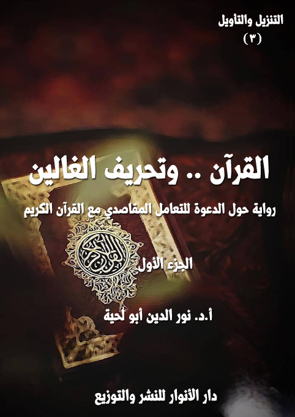

الكتاب:القرآن .. وتحريف الغالين ج1
الوصف: رواية حول الدعوة للتعامل المقاصدي مع القرآن الكريم
السلسلة: التنزيل والتأويل
المؤلف: أ. د. نور الدين أبو لحية
الناشر: دار الأنوار للنشر والتوزيع
الطبعة: الثانية، 1443 هـ
عدد الصفحات: 672
ISBN: 978-620-4-72145-3
لمطالعة الكتاب من تطبيق مؤلفاتي المجاني وهو أحسن وأيسر: هنا

هذا الكتاب هو الجزء الأول من أجزاء ثلاثة من هذه السلسلة تحاول أن تصحح الأخطاء الكبرى التي وقعت أثناء التعامل مع القرآن الكريم، وهي التي أشار إليها الحديث المعروف المشهور، وهو قول رسول الله صلى الله عليه وآله وسلم: (يحمل هذا العلم من كل خلف عدوله، ينفون عنه تحريف الغالين، وانتحال المبطلين، وتأويل الجاهلين)
وبناء على هذا؛ فإن هذا الجزء يعالج المبالغات والغلو الذي ارتبط ببعض العلوم القرآنية، أو الفهوم المتعلقة به، والتي صرفت عن التدبر الحقيقي للقرآن الكريم، وجعلت من أولئك الغلاة، مثل الذي يهتم بالقشر أكثر من اللباب، وبالأجزاء أكثر من الكل.
ولذلك؛ فهو لا يدعو لطرح تلك العلوم أو الفهوم طرحا كليا، وإنما يدعو إلى تصحيحها، ونفي الغلو عنها، ووضعها في محالها المناسبة، حتى لا تكون سببا يصرف عن تدبر القرآن الكريم، أو يؤثر في فاعليته في الواقع.
وقد رأينا أنه يمكن انحصار تلك المبالغات في سبعة قضايا وعلوم كبرى، هي: الرسم والإملاء .. والتجويد والقراءات .. وأسباب النزول .. ومحال النزول .. ومصاديق التنزيل، أو ما يطلق عليه [الجري والتطبيق] .. والناسخ والمنسوخ .. وعقبات التأويل، وقد تناولنا فيه سبع عقبات كبرى، هي: عقبة الفضول، وعقبة الخرافة، وعقبة الوهم، وعقبة المحدودية، وعقبة الحرفية، وعقبة الأهواء، وعقبة الدجل.
القرآن.. وتحريف الغالين (1/5)
كالطرف الأول مؤمنين صادقين ـ وإنما هم منحرفون مغرضون متبعون للباطل، ولا يستبعد أن يكون منهم من يكون صاحب نية سيئة، ولا يبعد أيضا أن يكون منهم الضالون الذين اشتبهت عليهم الأمور؛ فتوهموا الباطل حقا، والضلال هداية .. وقد خصصنا الجزء الرابع من هذه السلسلة للرد والتصحيح المرتبط بهؤلاء.
وأما الثالث؛ فهو التأويل الزائغ عن الحق، وأهله هم الجهلة الذين لا يفرقون بين المحكم والمتشابه، ولا يرجعون للراسخين في العلم منهم، ولذلك انحرف فهمهم عن المعاني القرآنية إلى أضدادها .. وقد خصصنا الجزء الخامس من هذه السلسلة للرد والتصحيح المرتبط بهؤلاء.
وبناء على هذا؛ فإن هذا الجزء يعالج المبالغات والغلو الذي ارتبط ببعض العلوم القرآنية، أو الفهوم المتعلقة به، والتي صرفت عن التدبر الحقيقي للقرآن الكريم، وجعلت من أولئك الغلاة، مثل الذي يهتم بالقشر أكثر من اللباب، وبالأجزاء أكثر من الكل.
ولذلك؛ فهو لا يدعو لطرح تلك العلوم أو الفهوم طرحا كليا، وإنما يدعو إلى تصحيحها، ونفي الغلو عنها، ووضعها في محالها المناسبة، حتى لا تكون سببا يصرف عن تدبر القرآن الكريم، أو يؤثر في فاعليته في الواقع.
وقد رأينا أنه يمكن انحصار تلك المبالغات في سبعة قضايا وعلوم كبرى، وضعنا كل قضية أو علم منها في فصل خاص، سنشرحها هنا، ونشرح معها الجانب الروائي من الكتاب، والذي يهدف إلى التبسيط والتيسير والاستيعاب.
القرآن.. وتحريف الغالين (1/6)
قسمنا الكتاب من خلال القضايا الكبرى المطروحة فيه إلى سبعة فصول، وهي:
أولا ـ القرآن .. ورسم التنزيل: وقد تناولنا فيه الاهتمام المبالغ فيه بما يطلق عليه [الرسم العثماني]، واعتباره موقوفا، لا يجوز الاجتهاد فيه، وبينا أن ذلك الرسم مرتبط فقط بتلك البيئة التي لم تنضج فيه الكتابة العربية بعد، ولذلك لا علاقة له بالقرآن الكريم، ويمكن كتابة المصاحف بالرسم الإملائي العادي الذي ييسر لعامة الناس قراءة القرآن الكريم من دون حاجة لمن يصحح لهم، مع إمكانية الاحتفاظ بمصاحف كتبت بالرسم العثماني لتكون في متناول الخاصة من الناس لا عامتهم.
ثانيا ـ القرآن .. وقراءات التنزيل: وقد تناولنا فيه الاهتمام المبالغ فيه بعلمين أصبحا عند كثير من الناس حجابا دون تدبر القرآن الكريم، وهما [علم التجويد] و [علم القراءات]، وبينا أن أكثر تلك الاهتمامات من التكلف والغلو الذي لا علاقة له بالقرآن الكريم، والذي جعله الله تعالى يسيرا سهلا لكل قارئ، كما قال تعالى: {فَإِنَّمَا يَسَّرْنَاهُ بِلِسَانِكَ لَعَلَّهُمْ يَتَذَكَّرُونَ} [الدخان: 58]، وقال: {وَلَقَدْ يَسَّرْنَا الْقُرْآنَ لِلذِّكْرِ فَهَلْ مِنْ مُدَّكِرٍ} [القمر: 22]
ثالثا ـ القرآن .. وأسباب النزول: وقد تناولنا فيه الاهتمام المبالغ فيه بأسباب النزول إلى الدرجة التي تحول فيها القرآن الكريم إلى وثيقة تاريخية لا علاقة لها بالحياة، وقد بينا من خلال استعراض أسباب النزول كيفية التعامل الصحيح معها.
رابعا ـ القرآن .. ومحال النزول: وقد تناولنا فيه الاهتمام المبالغ فيه بما يطلق عليه [المكي والمدني]، وبينا كيفية الاستثمار الصحيح لها.
خامسا ـ القرآن .. ومصاديق التنزيل: وقد تناولنا فيه خصوصا ما يطلق عليه [الجري
القرآن.. وتحريف الغالين (1/7)
والتطبيق]، وخصوصا في تطبيقاته الخاطئة التي قام بها غلاة الشيعة الذين حملوا كل آيات القرآن الكريم على أئمة الهدى، من غير مراعاة أي مناسبة تدعو إلى ذلك .. وقد بينا فيه أقوال العلماء العدول من الشيعة في الرد على تلك المبالغات، سواء من خلال نقد أسانيدها، أو من خلال بيان تفسيراتهم لتلك الآيات.
سادسا ـ القرآن .. وتعطيل التنزيل: وقد تناولنا فيه بتفصيل شديد ما يطلق عليه [الناسخ والمنسوخ]، وبينا أنه ـ بأنواعه جميعا ـ معارض لتفعيل القرآن الكريم في الواقع، ثم استعرضنا كل الآيات التي قيل بنسخها، وبينا إمكانية الاستفادة منها، وتفعيلها فيما نزلت من أجله.
سابعا ـ القرآن .. وعقبات التأويل: وقد تناولنا فيه العقبات الكبرى التي وقع فيها المفسرون، وقد رأينا أنها سبعة عقبات، ذكرنا نماذج عن كل واحدة منها، لأننا سنستعرض تفاصيلها في سائر الأجزاء، وهي:
1 ـ عقبة الفضول: ونقصد بها التكلف في البحث عن القضايا والأخبار التي لم يرد في القرآن الكريم تفصيلها، ولم تكن هناك حاجة تدعو إلى ذلك.
2 ـ عقبة الخرافة: ونقصد بها الخرافات التي ألصقت بالقرآن الكريم، وجعلته يتعارض مع العقل أو العلم.
3 ـ عقبة الوهم: ونقصد بها تلك الأوهام التي تسربت خصوصا إلى التفاسير الباطنية؛ فجعلت للكشف والإلهام دورا في تفسير القرآن الكريم من غير أي دليل أو حجة.
4 ـ عقبة المحدودية: ونقصد بها ما تعلق به المتأثرون بالتفسير المأثور من قصر فهم القرآن الكريم على سلف الأمة دون خلفها.
القرآن.. وتحريف الغالين (1/8)
5 ـ عقبة الحرفية: ونقصد بها ما نشأ عن التعلق بالظواهر القرآنية، من انحرافات ترتبط بالتجسيم والتشبيه ونحوها.
6 ـ عقبة الأهواء: ونقصد بها تلك التفاسير التي انطلق فيها أصحابها من تعصبهم لطوائفهم؛ فجعلوه متحكما في القرآن الكريم، وحاكما عليه.
7 ـ عقبة الدجل: ونقصد بها ربط القرآن الكريم بالشعوذة والدجل، كنوع من الاستغلال الخاطئ لما ورد فيه من البركات وتحقيق الشفاء ونحوهما.
تبدأ الرواية من زيارة معلم القصد والاعتدل لتلميذ القرآن الكريم، ليدعوه للرحيل إلى بلدة الغالين، للمساهمة معه في الدعوة للاعتدال والوسطية والتعامل المقاصدي مع القرآن الكريم.
وعندما ذهب تلميذ القرآن الكريم للبلدة تفاجأ باهتمامها الكبير بالقرآن الكريم، في نفس الوقت الذي لم تظهر عليهم آثاره العملية، لا في حياتهم، ولا في سلوكهم، ثم يكتشف أن سبب ذلك هو غلوهم في بعض قضاياه أو علومه عن التدبر والتأثر والانفعال.
وأول تلك المحال التي رأى مبالغة أهل تلك المدينة فيها، هي الرسم والإملاء القرآني، وقد سمع منهم وجوه المبالغة فيه، وأسبابها، لكن تدخل المعلم، وطريقته الحكيمة في التعامل مع تلك القضية، جعلتهم يميلون إليه، ويقبلون قوله في كتابة المصاحف وتعليم القرآن الكريم بالإملاء العادي .. وقد كان ذلك أول توجيه وتصحيح لأهل تلك المدينة، جعلهم يثقون في المعلم، والذي استطاع بطريقته الخاصة أن يؤثر فيهم، ويجعلهم يقبلون
القرآن.. وتحريف الغالين (1/9)
كل ما يطلبه منهم.
وهكذا، انتقل إلى المهتمين بالقراءات والتجويد، وصحح لهم ما يقعون فيه من مبالغات، ودعاهم إلى ما ورد في القرآن الكريم من اليسر والسهولة.
ثم انتقل إلى المبالغين في أسباب النزول، وصحح لهم كيفية التعامل معها، وبين لهم من خلال تعليقه على أسباب النزول التي يوردونها كيفية التعامل الصحيح معها ومع الآيات المرتبطة بها.
وهكذا سرت تعاليم المعلم في الذين يبالغون في محال النزول، وعلم المكي والمدني؛ فصاروا يبحثون في أسرارها وكيفية الاستفادة منها.
وهكذا استطاع أن يصل إلى القضاء، ويدعو إلى محاكمة متهمين معطلة أحكامهم، بتهمة التفسير الباطني للقرآن الكريم والقول بتحريفه، وقد كانت المحاكمة فرصة لأولئك الفتية ليدافعوا عن أنفسهم، ويبينوا أن ما نسب لهم غير صحيح، بل هو من فعل الغلاة الذين يتبرؤون منهم، وقد كان ذلك فرصة لتحقيق الوحدة والتآلف بين أهل المدينة.
وبفعل كل تلك التغييرات الطارئة على المدينة بسبب توجيهات المعلم خرج أحفاد قتادة، وهو من ينسب إليه أول كتاب في الناسخ والمنسوخ، ليتبرؤوا من مقولات جدهم، ويجيبوا عن كل الأسئلة التي طرحت عليهم، والتي من خلال أجوبتهم لها، بينوا أن القرآن الكريم كله محكم لا تعطيل في أي كلمة من كلماته، أو آية من آياته.
وبعد أن حصل كل ذلك قرر أهل المدينة، وبإشراف المعلم، القيام بمراجعة شاملة للتفاسير القرآنية، ليميز ما فيها من غلو وتحريف وانحراف.
وفي آخر الرحلة، وببركات ذلك كله تحولت المدينة إلى مدينة قرآنية حقيقية، تحاول
القرآن.. وتحريف الغالين (1/10)
أن تتدبر القرآن الكريم، وتعيش معانيه، بعيدا عن الغلو والتحريف.
وقد حاولنا في هذا الجانب أن نطرح كل القضايا بسهولة ويسر واستيعاب، ولذلك كثر المتحدثون في الرواية، سواء من الغلاة المنحرفين، أو من غيرهم.
وننبه في الأخير إلى أن التوثيقات الواردة قبل ذكر القول، تبين مصدر الكلام المطروح، لكن ليس بالضرورة أن يكون نفس الكلام موجودا في المصدر، لأني أتصرف فيه بحسب المقام، وأحيانا يكون لصاحب الكتاب غرض مختلف تماما، لكني أصححه في النص، بخلاف النصوص التي تكون في ثنايا الكلام، أو بين قوسين، فهي منقولة بدقة وأمانة.
وذلك لأن هذه السلسلة وغيرها من السلاسل تهدف إلى التقريب والوحدة بين المسلمين، ولذلك أحذف كل ما يسيء إلى تلك الوحدة، ومثلها ما قد يصرف القارئ عن المقصد من الكتاب.
القرآن.. وتحريف الغالين (1/11)
بعد أن طلب مني معلمي معلم القرآن الاستعداد للسفر للرحلة الخاصة بتعلم ما يتعلق بـ[القرآن .. وتحريف الغالين] رحت أبحث في كل الكتب التي تتحدث عن الغلو، وأسبابه، وكيف واجه القرآن الكريم هذه الظاهرة الخطيرة التي تنتشر في كل المجتمعات، وبين أهل كل الأديان.
وحين قرأت كل ذلك، عرفت سر قوله تعالى: {قُلْ يَا أَهْلَ الْكِتَابِ لَا تَغْلُوا فِي دِينِكُمْ غَيْرَ الْحَقِّ وَلَا تَتَّبِعُوا أَهْوَاءَ قَوْمٍ قَدْ ضَلُّوا مِنْ قَبْلُ وَأَضَلُّوا كَثِيرًا وَضَلُّوا عَنْ سَوَاءِ السَّبِيلِ} [المائدة: 77]، وكيف اعتبر الغلو سببا لاتباع الأهواء .. ثم سببا لكل أنواع الضلالة.
ما إن عرفت ذلك، حتى رأيت رجلا لا يختلف عن كل المعلمين الذين رأيتهم؛ ففرحت كثيرا، وقلت مخاطبا له: من أنت من المعلمين؟
قال: أنا معلم القصد والاعتدال.
قلت: إذن أنت الذي سأرحل معه إلى [القرآن .. وتحريف الغالين]
قال: أجل .. فقد كلفني معلمي معلم القرآن بذلك .. وأنا طوع أمره .. فعليك أن تكون طوع أمري، حتى لا يحصل لك ما حصل لموسى عليه السلام مع الخضر.
قلت: لا تخف .. {سَتَجِدُنِي إِنْ شَاءَ اللَّهُ صَابِرًا وَلَا أَعْصِي لَكَ أَمْرًا} [الكهف: 69]
قال: {فَإِنِ اتَّبَعْتَنِي فَلَا تَسْأَلْنِي عَنْ شَيْءٍ حَتَّى أُحْدِثَ لَكَ مِنْهُ ذِكْرًا} [الكهف: 70]
قلت: لك ذلك .. فقد علمني معلمي معلم السلام أن أكون لينا سهلا متسامحا.
قال: وشديدا في ذات الله .. فنحن سنقوم برحلة تقتضي منا بعض الشدة، أو الكثير
القرآن.. وتحريف الغالين (1/12)
منها.
قلت: أنحن ذاهبون إلى بلاد الكفار .. فقد وصف الله المؤمنين بالشدة على الكفار، فقال: {مُحَمَّدٌ رَسُولُ اللَّهِ وَالَّذِينَ مَعَهُ أَشِدَّاءُ عَلَى الْكُفَّارِ} [الفتح: 29]
قال: لا .. نحن ذاهبون إلى بلاد المؤمنين .. ولكنهم خلطوا إيمانهم بما يشوهه، حتى صاروا وسيلة يتذرع بها الكفار لكفرهم.
قلت: فما تريد أن نفعل لهم؟
قال: ننصحهم بكل لين ورأفة .. وبكل قوة وشدة حتى يرتدعوا.
قلت: وعيت اللين والرأفة لكني لم أع القوة والشدة.
قال: القوة في الحق .. والشدة في تبليغه، حتى لا تأخذنا في الحق لومة لائم.
قلت: فهمت .. كنت أتوهم أن الشدة عنف وبطش.
قال: معاذ الله .. فنحن ليس لدينا سوى سلاح الكلمة وأنوارها .. الكلمة القوية الشديدة التي لا تداري ولا تماري.
قلت: فلأي بلاد المؤمنين تريد أن نسير لنؤدي واجبنا في الأمر والنهي والنصح والإرشاد.
قال: إلى مدينة أساءت فهم القرآن الكريم، فزاحمته بعلوم كثيرة، فيها ما يجدي، وفيها ما لا يجدي، وفيها النافع، وفيها الضار .. ونحن سنسير إليها لنؤدي واجبنا في نصحها .. لعلهم يعقلون ويهتدون.
قلت: فهل تريد مني أن أشاركك في التوجيه والنصح؟
قال: أجل .. لقد طلب مني معلمنا معلم القرآن ذلك .. فلك أن تشارك لكن بعد أن
القرآن.. وتحريف الغالين (1/13)
ترى مني ما يدل على إذني لك .. حتى لا نخرب ما نريد بناءه.
قلت: لقد تعودت من كل المعلمين أن أعرف مسار رحلتي قبل البدء بها.
قال: سنسير إلى سبعة محال كبرى.
قلت: فما أولها؟
قال: أولها المحل الذي نوجه فيه أولئك الذين غالوا في كتابة القرآن الكريم ورسمه حتى توهموا أنه لابد أن يكتب بما كتبه به الأولون، حتى لو خالف كل أعراف الكتابة وقوانينها، وحتى لو أدى لأن يقرأه عامة الناس على خلاف ما أنزل.
قلت: أعرف هؤلاء جيدا، وأعرف غلوهم ومبالغاتهم، والتي جعلتهم يتوهمون أن جبريل عليه السلام نزل بالقرآن الكريم بنفس تلك الكتابة التي يكتبونه بها .. فما المحل الثاني؟
قال: أولئك الذين غالوا وبالغوا فيما يطلقون عليه [علم التجويد] و [علم القراءات]، فجعلوه عسير المنال، صعب النطق، خلافا لما أنزل الله تعالى به كتابه، فقد قال: {فَإِنَّمَا يَسَّرْنَاهُ بِلِسَانِكَ لَعَلَّهُمْ يَتَذَكَّرُونَ} [الدخان: 58]، وقال: {وَلَقَدْ يَسَّرْنَا الْقُرْآنَ لِلذِّكْرِ فَهَلْ مِنْ مُدَّكِرٍ} [القمر: 22]
قلت: أعرف هؤلاء كذلك، ومبالغاتهم وغلوهم .. فما الثالث؟
قال: أولئك الذين بالغوا في أسباب النزول إلى الدرجة التي تحول فيها القرآن الكريم عندهم إلى وثيقة تاريخية ترتبط كل آية منها بشخص أو حدث.
قلت: فما الرابع؟
قال: أولئك الذين بالغوا في محال النزول إلى الدرجة التي توهموا فيها أن القرآن
القرآن.. وتحريف الغالين (1/14)
الكريم لا يمكن تدبره من دون معرفتها.
قلت: فما الخامس؟
قال: أولئك الذين بالغوا في مصاديق التنزيل، وغالوا فيها إلى أن ألغوا كل المعاني القرآنية من أجلها.
قلت: فما السادس؟
قال: أولئك الذين توهموا أن بعض القرآن الكريم معطل، وأن الغرض منه ليس سوى تلاوته والتبرك به دون الاستفادة منه أو تفعيله في الحياة.
قلت: فما السابع؟
قال: أولئك الذين انحرفوا بالتأويل عن مساره الذي رسمه الله تعالى؛ فخلطوا المدنس بالمقدس، وحولوا من تفاسير القرآن الكريم إلى كتب خرافة ودجل وفضول وتكلف.
قلت: فهل سنسير الآن إلى تلك البلاد؟
قال: ستسير أنت .. أما أنا فلا أحتاج إلى السير.
قلت: ولكني قد أضيع عنك .. أو تضيع عني .. فكيف نلتقي؟
قال: سر فقط .. وستراني في كل محل تحتاج أن تراني فيه .. وإياك أن تتصرف من غير استئذان حتى لا يساء إليك.
قلت: أهناك عنف في تلك المحال؟
قال: وشديد .. أنسيت أنك سترحل إلى بلاد الغلاة؟
قلت: أفيهم إرهابيون؟
القرآن.. وتحريف الغالين (1/15)
قال: هم ليسوا إرهابيين .. ولكن أكثر الإرهابيين أو جلهم أو كلهم تخرجوا من مدارسهم.
القرآن.. وتحريف الغالين (1/16)
فجأة لاحت لي مدينة جميلة، يبدو عليها النظافة والنظام والهدوء التام، لكني ما إن اقتربت منها حتى بدأت أغير نظري إلى الصورة التي كنت أحملها عنها .. وأول ذلك تلك الحفر الكثيرة التي كانت تملأ الطرقات، والتي جعلتني أقع كل حين على وجهي، مع أنه كان في الإمكان لمن بنى تلك المدينة الجميلة أن يسدها، ومن غير تكلفة، لكنه لم يفعل، وربما عمدا، ولست أدري السبب.
لا تظنوا أني قلت ذلك حدسا، أو شقا على القلوب، فمعاذ الله أن أفعل ذلك .. ولكني رأيت أن تلك الحفر، وكأنهم قصدوها، بل إنه صرفوا عليها ـ على ما يبدو ـ أموالا أكثر من الأموال التي صرفوها على الطريق المعبد، ذلك أنها كانت حفرا معبدة، وبأشكال مختلفة، ولم تكن مجرد حفر عادية.
وهكذا في كل المحال التي دخلت إليها؛ فعندما دخلت بعض المطاعم قدم لي طعاما لذيذا .. لكني ما إن قربته من فمي حتى شممت رائحة كريهة، جعلتني أنفر منه، ولم أستطع أن أسأل صاحب المطعم عن تلك الرائحة الكريهة، خشية أن أؤذيه، لكني تعجبت عندما رأيت الداخلين، يستلذون تلك الرائحة، بل يطلبون من صاحب المطعم أن يضيف لطعامهم بعض ما يجعلهم يشمونها.
اتهمت نفسي وأنفي وذوقي، ورحت آكل الطعام، فإذا باللذة والغصة تكتنف كل لقمة؛ فلم أجد إلا أن أطرحه، وأخرج من المطعم، وأدفع ثمنا غاليا من غير أن أستلذ لقمة واحدة.
القرآن.. وتحريف الغالين (1/17)
وهكذا عندما شربت من العين التي كتب عليها قوله تعالى: {وَأَسْقَيْنَاكُمْ مَاءً فُرَاتًا} [المرسلات: 27]، فاستبشرت، لكن ما إن شربت منها حتى وجدت ماءها مكدرا، لا يختلف عن كدورة الطعام الذي طعمته في شيء.
وهكذا في كل المحال التي سرت إليها، وهو ما جعلني أتعجب منها، وخاصة عندما رأيت كل لافتاتها مزينة بالآيات القرآنية المرسومة بالرسم القرآني لا الإملائي .. وكل أهلها يتكلمون بالقرآن وعن القرآن .. وهذا ما سرب إلي الريب والشك الذي كنت أسمعه من العلمانيين والحداثيين والملاحدة وغيرهم، وقلت في نفسي: كيف يمكن أن تكون هناك مدينة لا تتغنى إلا بالقرآن، ثم يكون حالها هذا الحال، ألم يسمعوا قوله تعالى: {وَلَوْ أَنَّهُمْ أَقَامُوا التَّوْرَاةَ وَالْإِنْجِيلَ وَمَا أُنْزِلَ إِلَيْهِمْ مِنْ رَبِّهِمْ لَأَكَلُوا مِنْ فَوْقِهِمْ وَمِنْ تَحْتِ أَرْجُلِهِمْ} [المائدة: 66]؟
ما قلت هذا في نفسي من غير أن أتفوه بحرف واحد، حتى قال لي بعضهم، وهو يربت على كتفي: أتقن قراءة الآية أولا، ثم استدل بها .. أين الغنات والمدود .. فكيف بلعتها جميعا في نفسك؟ .. هل ترى من حرمة القرآن الكريم أن يُقرأ كما يقرأ سائر الكلام؟
قلت: من أنت؟ .. وكيف عرفت ما جال بخاطري؟
قال: نحن أهل هذه المدينة القرآنية وهبنا الله ـ لصدقنا وصفائنا وإخلاصنا للقرآن الكريم ـ قراءة الخواطر، والتفرس في الوجوه .. فلذلك احذر أن يخطر على بالك في هذه المدينة ما قد تعاقب عليه.
قلت: إن مدينتكم غريبة .. ما اسمها .. فأنا لم أقرأ في التاريخ والجغرافية عن مدينة تشبهها؟
القرآن.. وتحريف الغالين (1/18)
قال: هذه مدينة الغالين ..
قلت: أهي تلك التي قال عنها رسول الله صلى الله عليه وآله وسلم: (يحمل هذا العلم من كلّ خلف عدوله، ينفون عنه تحريف الغالين، وانتحال المبطلين، وتأويل الجاهلين)(1)
قال: لا .. ومعاذ الله أن تكون مدينة كذلك .. بل هي مدينة الغالين .. من الغلاء، وليس من الغلو .. فانتبه لما تقول، واحذر أن تخلط بين عقلك والدين .. فالدين مصدره الوحي، والعقل مصدره الهوى.
قلت: أجل .. صحيح .. وشكرا جزيلا .. بالفعل مدينتكم كذلك، وكيف لا تكون كذلك، وهي مملوءة باللافتات القرآنية .. لكن تمنيت لو أنكم كتبتموها بالرسم الإملائي العادي ليفهمها سائر الناس .. فقل من يتقن الرسم القرآني.
أشرت إلى لافتة كتب عليها قوله تعالى: {وَلَا تَيْأَسُوا مِنْ رَوْحِ اللَّهِ إِنَّهُ لَا يَيْأَسُ مِنْ رَوْحِ اللَّهِ إِلَّا الْقَوْمُ الْكَافِرُونَ} [يوسف: 87]، وقلت: انظر إلى تلك اللافتة التي كتبت هكذا {إنّه لا يايئس}، فالكثير قد يخطئ في قراءتها.
قال: هل تريد منا أن نبدلها إذن بالرسم الإملائي العادي؟
قلت: أجل .. إن لم يكن هناك مانع .. فالرسم مجرد اصطلاح، والعبرة بالقراءة الصحيحة.
ما إن قلت هذا حتى أخذ بتلابيبي، ثم صار يبطش بي بشدة، فقلت: ما الذي حصل؟ .. ما الذي فعلته لك حتى تؤذيني هكذا؟ .. هذا مجرد رأي .. وليس عليكم أن تعملوا به.
__________
(1) معاني الأخبار/33.
القرآن.. وتحريف الغالين (1/19)
قال: أنا لم أبطش بك، وإنما بطشت بالشيطان الذي تكلم على لسانك .. اذهب، ولا تعد إلى هنا، فلو رأيتك مرة أخرى، سيكون لي معك شأن آخر.
ما إن أطلقني حتى أسرعت مهرولا مبتعدا عنه، خشية أن يدور بخاطري ما يجعله يستبيح دمي ..
وفي أثناء فراري أمسك بي أحدهم، وهو يقول: أرجو ألا تكون لصا .. وإلا فسأحملك إلى قاض يقطع يدك من غير حاجة لبينة؛ فيكفي أن أشهد له بذلك.
امتلأ قلبي خوفا، وخشيت على يدي التي لا أملك غيرها .. فقلت مترجيا: لا .. لا .. معاذ الله أن أكون كذلك .. أنا كاتب فقط .. دوري في الحياة هو الكتابة .. فلذلك لا أهتم لا بمال ولا بجاه .. والكاتب لا يحتاج سوى للأقلام والقراطيس، وهو في غنى عن كل أموال الدنيا .. ولذلك لا حاجة له للسرقة وغيرها.
قال بكل شدة وقوة: كاتب .. ما أكثر كتاب السوء .. بل إن بعضهم أو أكثرهم أحوج إلى حد الردة منه إلى حد السرقة.
ازداد خوفي، وقلت: مهلا سيدي .. فأنا كاتب عند معلم القرآن .. وإن شئت فتشني، فإن وجدت في كتابتي أي هرطقة أو زندقة أو ضلالة؛ فلك أن تأخذني للقاضي الذي تشاء.
عندما قلت له هذا، انقلب رأسا على عقب؛ حيث أخذ يدي، وراح يقبلها، ويعتذر بشدة .. وهو يقول: أعتذر لك .. ما كنت أظن أنك من المهتمين بالرسم والإملاء القرآني .. هلم معي؛ فأنا أيضا أعمل في تلك المدرسة التي لا هم لها سوى الدعوة للرسم القرآني، بل
القرآن.. وتحريف الغالين (1/20)
بيان إعجازه وعظمته، وهي تقف بشدة في وجه أولئك المحرفين الذين يهونون من شأنه.
لم أدر، إلا وأنا أدخل تلك المدرسة التي وصفها .. ولست أدري هل كان ذلك بسبب اعتذاره وأدبه .. أم خوفا من أن يعود من جديد لشدته وقسوته.
عندما دخلت وجدت حلقة مجتمعة .. وكانوا يتحدثون بأدب وهدوء ولطف .. مما أغراني بالجلوس إليهم .. لكني كنت أمسك بلساني أن يزل بأي كلمة قد تودي بي إلى ما لا تحمد عقباه .. بل إني لورعي وحيطتي كنت أصرف كل خواطر السوء عن ذهني، حتى لا يقرأ فيه ما قد يؤذيني.
قال أحد الجالسين في الحلقة (1): اسمعوني أيها الكتبة الكرام البررة .. إن القرآن الكريم ليس أمرا ونهيا فقط .. أو كلمات ومعاني فقط .. بل هو رسم أيضاً .. والمقصود بالرسم القرآني هو رسم الكلمات القرآنية من حيث نوعية حروف كل كلمة وردت في القرآن الكريم، وعدد حروفها .. وليس المقصود منه ـ كما يفهم المغفلون ـ نوعية خط الكتابة من نسخ أوكوفي أوغيرها.
قال آخر (2): ولهذا أجمع علماء الأمة على أن رسم المصحف توقيفي، لا يجوز مخالفته؛ واستدلوا على ذلك بقول الله تعالى: {وَالنَّجْمِ إِذَا هَوَى مَا ضَلَّ صَاحِبُكُمْ وَمَا غَوَى وَمَا يَنْطِقُ عَنِ الْهَوَى إِنْ هُوَ إِلَّا وَحْيٌ يُوحَى عَلَّمَهُ شَدِيدُ الْقُوَى} [النجم: 1 ـ 5]
أردت أن أتكلم، وأذكر خطأ هذا، وأنه لم ينعقد في يوم من الأيام الإجماع على هذا، لكني خشيت على نفسي؛ فآثرت الصمت على الكلام .. لكن الجميع التفتوا لي، وكأنهم
__________
(1) تأملات في إعجاز الرسم القرآني وإعجاز التلاوة والبيان، محمد شملول، ص 15.
(2) تأملات في إعجاز الرسم القرآني، ص 17.
القرآن.. وتحريف الغالين (1/21)
أحسوا بما قلت؛ فلذلك رحت أرفع صوتي بالاستغفار حتى صرفوا أبصارهم عني.
قال آخر: فقد سُئل مالك: أرأيت من استكتب مصحفاً اليوم أترى أن يُكتب على ما أحدثه الناس من الهجاء اليوم، قال: (لا أرى ذلك ولكن يُكتب على الكِتْبة الأولى)، قال أبوعمروالدَّاني: (ولا مخالف له في ذلك من علماء الأمة)(1) .. وقال في موضع آخر: سُئل الإمام مالك عن الحروف تكون في القرآن مثل الواووالألف: أترى أن تُغير من المصحف إذا وجدت فيه كذلك؟ فقال: لا. قال الدَّاني: (يعني الواووالألف المزيدتين في الرسم لمعنى المعدومتين في اللفظ)(2) .. وعقّب السَّخاوي على قول مالك فقال: (والذي ذهب إليه مالك هوالحق، إذ فيه بقاء الحال الأولى إلى أن يعلمها الآخر، وفي خلاف ذلك تجهيل الناس بأوليتهم)(3)
قال آخر: وهومذهب الأئمة الأربعة، فقد قال الجَعْبَري معقباً على قول الإمام مالك: (وهذا مذهب الأئمة الأربعة، وخص مالكاً؛ لأنه حكى فتياه، ومستندهم مستند الخلفاء الأربع)(4) .. وقال مُلاَّ علي بن سلطان القاري: والمعنى أن الإمام مالكاً قال: (إن المصحف ينبغي أن يُكتب على منهاج رسم الكتاب الأول الذي كتبه الصحابة، لا حال كون مستحدثاً على مسطور اليوم عند العامة)(5)
قال آخر: وهذا ما نص عليه كل المتقدمين، فقد قال الفرَّاء: (اتباع المصحف إذا وجدت له وجهاً من كلام العرب، وقراءة القراء، أحب إليَّ من خلافه)(6) .. وقال البيهقي: (من كتب مصحفاً فينبغي له أن يحافظ على الهجاء الذي كتبوا به تلك المصاحف
__________
(1) المقنع/9.
(2) المقنع/28.
(3) الوسيلة/80.
(4) جميلة أرباب المراصد 1/ 265 ـ 266.
(5) الهبات السنية العلية على أبيات الشاطبية الرائية 1/ 294.
(6) انظر البرهان 2/ 12.
القرآن.. وتحريف الغالين (1/22)
ولا يخالفهم فيها، ولا يُغير مما كتبوه شيئاً، فإنهم كانوا أكثر علماً، وأصدق قلباً ولساناً، وأعظم أمانة منا، فلا ينبغي لنا أن نظن بأنفسنا استدراكاً عليهم، ولا سقطاً لهم)(1) ..
قال آخر: وقال النسائي في السنن الكبرى بعد أن نقل قول زيد بن ثابت: (القراءة سنة): (وإنما أراد والله أعلم أن اتباع من قبلنا في الحروف وفي القراءات سنة متبعة لا يجوز مخالفة المصحف الذي هو إمام ولا مخالفة القراءات التي هي مشهورة، وإن كان غير ذلك سائغاً في اللغة أوأظهر منها)(2).
قال آخر: وقال الإمام أحمد: (تحرم مخالفة خط مصحف عثمان في ياء أوواوأوألف أوغير ذلك)(3) .. ونُقل عن أبي عبيد القاسم بن سلام قوله: (وترى القراء لم يلتفتوا إلى مذاهب العربية في القراءة إذا خالف ذلك خط المصحف، ورأوا تتبع حروف المصاحف عندهم كالسنن القائمة التي لا يجوز لأحد أن يتعداها)(4).
قال آخر: وقال المَهْدوي: (ولا يسع أحداً اكتتاب مصحف على خلاف خط المصحف الإمام ورتبته)(5) .. وقال البَغَوي: (ثم إن الناس كما أنهم متعبّدون باتباع أحكام القرآن، وحفظ حدوده، فهم متعبدون بتلاوته، وحفظ حروفه على سنن خط المصحف الإمام الذي اتفقت عليه الصحابة)(6).
قال آخر: وعلى هذا اتفق المتأخرون، فقد قال الزمخشري: (خط المصحف سنة لا تغير)(7) .. وقال اللبيب في شرح العقيلة: (وقد اجتمع على كتب المصاحف حين كتبت
__________
(1) شعب الإيمان 2/ 548.
(2) السنن الكبرى، 2/ 539، ولمزيد من الأقوال انظر إيقاظ الأعلام/19، وسمير الطالبين/20، ومناهل العرفان 1/ 298.
(3) البرهان 1/ 379، والإتقان 2/ 443، وشرح منتهى الإرادات: للبهوتي 1/ 74، وكشاف القناع: له 1/ 136.
(4) انظر شعب الإيمان 2/ 548، والبرهان 2/ 15.
(5) هجاء مصاحف الأمصار/135.
(6) معالم التنزيل 1/ 37.
(7) الكشاف 3/ 270.
القرآن.. وتحريف الغالين (1/23)
اثناعشر ألفاً من الصحابة ونحن مأجورون على اتباعهم ومأثمون على مخالفتهم)، ثم نص بعد ذلك على وجوب التزام الرسم العثماني (1).
قال آخر: وقال ابن الحاج في المدخل: (ويتعين عليه ـ أي ناسخ المصحف ـ أن يترك ما أحدثه بعض الناس في هذا الزمان وهوأن ينسخ الختمة على غير مرسوم المصحف الذي اجتمعت عليه الأمة على ما وجد به بخط عثمان بن عفان .. ولا يجوز غير ذلك)(2).
قال آخر: وقال السَّمرْقَندي: (وعلمتُ أن الكتابة منقولة كما أن القراءة منقولة، فكما لا يجوز لأحد أن يُغير ما نُقل عن الأئمة السبعة في قراءةٍ كذلك لا ينبغي أن يتجاوز عن الرسم في كتابة المصحف؛ لأنها سنة متبعة ومخالفتها بدعة، وإنما جُعل الإمام إماماً ليؤتم به)(3)
قال آخر: وقال نظام الدين النيسابوري: (وقال جماعة من الأئمة: إن الواجب على القراء والعلماء وأهل الكتاب أن يتبعوا هذا الرسم في خط المصحف)(4).
قال آخر: ونقل الوَنْشَريسي المالكي في المعيار المعرَّب أنه: (لا يجوز لهم أن يقرؤوا قراءة تخالف صور الخط، ولا أن يكتبوا كتابة مخالفة للرسوم التي وضعها الصحابة في المصاحف المجمع عليها، فالمكتوب متواتر بتواتر نقل دليله المتحد، والمقرُوء هوالمكتوب بعينه)(5)
قال آخر: وقال الخوارزمي: (اعلم أن اتباع مصحف عثمان في هجائه واجب ومن طعن في شيء من إيجابه؛ فهوكالطاعن في تلاوته)، ثم قال مستدلاً على ذلك: (أما خطه
__________
(1) الدرة الصقيلة، 17.
(2) المدخل 4/ 86.
(3) انظر مجلة المورد. مج 15. ع 4 (1986 م) /419.
(4) غرائب القرآن ورغائب الفرقان 1/ 43.
(5) المعيار المعرب 12/ 150.
القرآن.. وتحريف الغالين (1/24)
ورسمه فالدليل عليه قول الصحابي وهوحجة فكيف إجماع الصحابة زمن عثمان، وإجماع التابعين من بعدهم، وإجماع القراء والفقهاء، وجملة المفسرين)(1).
قال آخر: وقال عبد الرحمن بن القاضي: (اعلم ـ رحمنا الله وإياك ـ أن متابعة مرسوم الإمام أمر واجب محتم على الأنام كما نص عليه الأئمة الأعلام، فمن حاد عنه فقد خالف الإجماع ومن خالفه فحكمه معلوم في الشرع الشريف بلا نزاع)(2)
قال آخر: وعلى هذا اتفق المتأخرون .. فقد بحث مجمع البحوث الإسلامية بالأزهر في المؤتمر السادس المنعقد في الفترة من (30 محرم 1391 هـ إلى 5 صفر 1391 هـ) موضوع رسم المصاحف العثمانية، وأوصى بأن يعتمد المسلمون على الرسم العثماني للمصحف الشريف؛ حفظاً له من التحريف (3).
قال آخر: ومثل ذلك أصدرت هيئة كبار العلماء بالمملكة العربية السعودية القرار رقم (71) بتاريخ 21/ 10/1399 هـ، وجاء فيه: (يرى مجلس هيئة كبار العلماء أن يبقى رسم المصحف على ما كان بالرسم العثماني، ولا ينبغي تغييره ليوافق قواعد الإملاء الحديثة؛ محافظة على كتاب الله من التحريف، واتباعاً لما كان عليه الصحابة وأئمة السلف) .. وفيه: (فالمحافظة على كتابة المصحف بهذا الرسم هوالمتعين، اقتداءً بعثمان وعلي وسائر الصحابة وعملاً بإجماعهم)(4).
قال آخر: ومثل ذلك أصدر المجمع الفقهي الإسلامي التابع لرابطة العالم الإسلامي بمكة المكرمة في دورته السابعة المنعقدة عام 1404 هـ تأييد ما جاء في قرار مجلس هيئة كبار
__________
(1) موجز كتاب التقريب في رسم المصحف العثماني/17 ـ 18.
(2) انظر إيقاظ الأعلام/16، نقلاً عن (بيان الخلاف والتشهير والاستحسان): لعبد الرحمن القاضي ق (24)
(3) انظر مجمع البحوث الإسلامية تاريخه وتطوره 1403 هـ/1983/ 425 ـ 426.
(4) مجلة البحوث الإسلامية. الرياض. ع 33 (1412 هـ) /327.
القرآن.. وتحريف الغالين (1/25)
العلماء في المملكة العربية السعودية بالإجماع على عدم جواز تغيير رسم المصحف العثماني ووجوب بقاء رسم المصحف على ما هوعليه؛ لنفس الأسباب (1).
قال آخر (2): لهذا اهتم العلماء بالكلام على رسم القرآن، وحصر تلك الكلمات التي جاء خطها على غير مقياس لفظها .. بل أفرده بعضهم بالتآليف النافعة من أمثال الإمام العلامة أبي عمروالداني في كتابه [المقنع] .. ومنهم العلامة أبو عباس المراكشي في كتابه [عنوان الدليل في رسوم خط التنزيل]، ومنهم العلامة الشيخ محمد بن أحمد الشهير بالمتولي، إذ نظم أرجوزة سماها [اللؤلؤ المنظوم في ذكر جملة من المرسوم]، ثم جاء العلامة الشيخ محمد خلف الحسيني ـ شيخ المقارئ بالديار المصرية ـ فشرح تلك المنظومة، وذيل الشرح بكتاب سماه [مرشد الحيران إلى معرفة ما يجب اتباعه في رسم القرآن]
قال أحدهم (3): وليس الأمر قاصرا على ذلك فقط، بل إن كل الأدلة تشير إلى أن الكتابة توقيفية لا اصطلاحية؛ فقد كان لرسول الله صلى الله عليه وآله وسلم كُتّاب يكتبون الوحي كلما نزل شيء من القرآن أمرهم بكتابته، مبالغة في تسجيله وتقييده، وزيادة في التوثيق والضبط والاحتياط في كتاب الله تعالى، حتى تظاهر الكتابة الحفظ، ويعاضد النقش اللفظ .. وقد كتبوا القرآن فعلا بهذا الرسم وأقرهم رسول الله صلى الله عليه وآله وسلم على كتابتهم، وكان هؤلاء الكُتَّاب من خيرة الصحابة، ثم جاء من بعده؛ فكتبوا القرآن بهذا الرسم في صُحُف، ثم جاء من بعدهم من استنسخ تلك الصحف في مصاحف، وأقرَّ أصحاب النبي صلى الله عليه وآله وسلم ذلك كله، وانتهى الأمر إلى التابعين وتابعي التابعين، فلم يُخالف أحد منهم في هذا الرسم .. ثم يأتي بعض الأغبياء من
__________
(1) انظر مجلة المجمع الفقهي الإسلامي. ع 4 (1410 هـ) /486.
(2) مناهل العرفان (1/ 368)
(3) تأملات في إعجاز الرسم القرآني، ص 23.
القرآن.. وتحريف الغالين (1/26)
قومنا؛ فيريدون أن يردوا ذلك كله .. أهم أعلم من رسول الله صلى الله عليه وآله وسلم أم من الصحابة أم من التابعين الذين أقروا ذلك؟
قال آخر: بل إن ذلك من الأسرار التي خصّ الله بها كتابه العزيز، ولا ينتبه لها إلا العارفون المحققون من أمثال العارف بالله عبد العزيز الدباغ؛ الذي نقل عنه تلميذه العلاَّمة أحمد بن المبارك السجلماسي في كتابه (الذهب الإبريز) قوله: (رسم القرآن سرٌّ من أسرار الله المشاهدة، وكمال الرفعة، وهوصادرٌ من النبي صلى الله عليه وآله وسلم، وهوالذي أمر الكُّتاب من الصحابة أن يكتبوه على هذه الهيئة، فما نقصوا ولا زادوا على ما سمعوه من النبي صلى الله عليه وآله وسلم، وما للصحابة ولا لغيرهم في رسم القرآن ولا شعرة واحدة، وإنما هوتوقيف من النبي صلى الله عليه وآله وسلم، وهوالذي أمرهم أن يكتبوه على هذه الهيئة المعروفة بزيادة الألف ونقصانها؛ لأسرار لا تهتدي إليها العقول، وهوسر من الأسرار خصَّ الله تعالى به كتابه العزيز دون سائر الكتب السماوية، وكما أن نَظْم القرآن مُعجز، فرسمه مُعجز، وكل ذلك لأسرار إلهية وأغراض نبوية، وإنما خفيت على الناس؛ لأنها أسرار باطنية لا تُدرك إلا بالفتح الربّاني؛ فهي بمنزلة الألفاظ والحروف المقطعة التي في أوائل السور؛ فإن لها أسراراً عظيمة، ومعاني كثيرة، وأكثر الناس لا يهتدون إلى أسرارها، ولا يُدركون شيئاً من المعاني الإلهية التي أُشيرَ إليها، فكذلك أمرُ الرسم الذي في القُرآن حرفاً بحرف)(1)
قال آخر (2): صدقت .. فكيف تهتدي العقول إلى سر زيادة الألف في مائة دون فئة، وإلى سر زيادة الياء في {بِأَيْيدٍ} من قوله تعالى: {وَالسَّمَاءَ بَنَيْنَاهَا بِأَيْيدٍ} .. أم كيف تتوصل إلى سر زيادة الألف في {سعوا} من قوله تعالى في الحج: {وَالَّذِينَ سَعَوْا فِي آيَاتِنَا مُعَاجِزِينَ
__________
(1) الإبريز من كلام سيدي عبد العزيز (ص 135)
(2) الإبريز من كلام سيدي عبد العزيز (ص 135)
القرآن.. وتحريف الغالين (1/27)
أُولَئِكَ أَصْحَابُ الْجَحِيمِ}، وعدم زيادتها في سبأ من قوله تعالى: {وَالَّذِينَ سَعَوْا فِي آيَاتِنَا مُعَاجِزِينَ أُولَئِكَ لَهُمْ عَذَابٌ مِنْ رِجْزٍ أَلِيمٍ} .. وإلى سر زيادتها في قوله تعالى: {فَعَقَرُوا النَّاقَةَ وَعَتَوْا عَنْ أَمْرِ رَبِّهِمْ}، وحذفها من قوله تعالى: {وَعَتَوْا عُتُوًّا كَبِيرًا} .. وإلى سر زيادتها في قوله تعالى: {أَوْ يَعْفُوَا الَّذِي بِيَدِهِ عُقْدَةُ النِّكَاحِ}، وإسقاطها من قوله تعالى: {فَأُولَئِكَ عَسَى اللهُ أَنْ يَعْفُوَ عَنْهُمْ}
قال آخر (1): وكيف تهتدي إلى سر زيادتها في {آمنوا وكفروا وخرجوا}، وإسقاطها من {باؤ وجاؤ وتبوؤ وإن فاؤ}؟
قال آخر (2): أم كيف تبلغ العقول إلى وجه حذف الألف في بعض الكلمات المتشابهة دون بعض، فحذفت {قرآنا} في يوسف والزخرف، وأثبتت في سائر المواضع؟
قال آخر: ومثله إثبات الألف بعد الواو في {سموات} فصلت وحذفها في غيرها، وإثبات {الميعاد} مطلقا وحذفه في الأنفال، وإثبات {سراجا} حيثما كان وحذفه في الفرقان، وكذا في إطلاق بعض التاءات وربطها نحو: {رحمة، ونعمة، وقرة، وشجرة}، فإنها في بعض المواضع كتبت بالتاء، وفي مواضع أخر كتبت بالهاء.
قال آخر: ومثله {الصلاة والحياة} في بعض المواضع، حيث كتبت بالواو فيهما نحو: {أَقِيمُوا الصَّلَوة} و {الْحَيَوةِ الدُّنْيَا} و {عَلَى حَيَوةٍ} .. وفي بعضها بالألف نحو: {قُلْ إِنَّ صَلَاتِي وَنُسُكِي}، و {كُلٌّ قَدْ عَلِمَ صَلَاتَهُ وَتَسْبِيحَهُ}، و {وَلَا تَجْهَرْ بِصَلَاتِكَ}، و {أَذْهَبْتُمْ طَيِّبَاتِكُمْ فِي حَيَاتِكُمُ الدُّنْيَا}، إلى غير ذلك مما لا يكاد ينحصر.
__________
(1) الإبريز من كلام سيدي عبد العزيز (ص 136)
(2) الإبريز من كلام سيدي عبد العزيز (ص 136)
القرآن.. وتحريف الغالين (1/28)
قال آخر (1): وكل ذلك ـ كما يذكر العارفون بالله ـ لأسرار إلهية وأغراض نبوية، وإنما خفيت على الناس لأنها من الأسرار الباطنية التي لا تدرك إلا بالفتح الرباني؛ فهي بمنزلة الألفاظ والحروف المقطعة في أوائل السور؛ فلها أسرار عظيمة ومعان كثيرة، حتى إن جميع ما في السورة التي في أولها تلك الحروف من المعاني والأسرار كلها مندرج تحت تلك الحروف، فجميع ما في سورة (ص) مندرج تحت حرف (ص)، وجميع ما في (ق) و (ن) و (يس) و (طه) وغير ذلك مندرج في هذه الرموز، وأكثر الناس لا يهتدون إلى أسرارها ولا يدركون شيئا من المعاني الإلهية التي أشير إليها، حتى ظن جماعة من الناس أنها أسماء للسور، وظنت جماعة أخرى أنها أشير بها إلى أعداد معلومة، وظنت جماعة أخرى أنها من الحروف المهملة التي ليس وراءها معان، وكلهم حجبوا الإطلاع على المعاني الباهرة العجيبة التي فيها، فكذا أمر الرسم الذي في القرآن حرفا بحرف.
قال آخر (2): عجبا للمغفلين الذين يتوهمون أن الصحابة هم الذين اصطلحوا على الرسم المذكور .. أفلا يعلمون أن القرآن العزيز كُتب في زمانه صلى الله عليه وآله وسلم وبين يديه على هيئة من الهيئات، وحينئذ فلا يخلو ما اصطلح عليه الصحابة من أن يكون هو عين الهيئة أو غيرها؛ فإن كان عينها بطل الإصطلاح لأنه اختراع وابتداع، وسبقية التوقيت تنافي ذلك وتوجب الإتباع، فإن نسب اتباعهم حينئذ للإصطلاح كان بمنزلة من قال إن الصحابة اصطلحوا على أن الصلوات خمس وعلى أن عدد الركعات مثلا أربع.
قال آخر (3): وإن كان غير ذلك، فكيف يكون النبي صلى الله عليه وآله وسلم كتب على هيئة كهيئة الرسم
__________
(1) الإبريز من كلام سيدي عبد العزيز (ص 136)
(2) الإبريز من كلام سيدي عبد العزيز (ص 137)
(3) الإبريز من كلام سيدي عبد العزيز (ص 137)
القرآن.. وتحريف الغالين (1/29)
القياسي مثلا، والصحابة خالفوا، وكتبوا على هيئة أخرى؟
قال آخر (1): وفي ذلك ما فيه من نسبة الصحابة وأعلام الهدى إلى المخالفة وذلك محال .. فكيف وسائر الأمة من الصحابة وغيرهم أجمعوا على أنه لا يجوز أن يزاد في القرآن حرف، ولا أن ينقص منه حرف.
قال آخر (2): وفوق ذلك كله؛ فإن الكتابة أحد الوجودات الأربع، وما بين الدفتين كلام الله، فإذا كان النبي صلى الله عليه وآله وسلم أثبت {الرحمن} و {العالمين} ولم يزد الألف في {مائة} ولا في {كفروا وأخرجوا}، ولا الياء في {بأييد} ولا في {أفإن مت} ونحو ذلك، والصحابة عاكسوه في ذلك وخالفوه لزم أنهم ـ وحاشاهم من ذلك ـ تصرفوا في القرآن الكريم بالزيادة والنقصان، ووقعوا فيما أجمعوا هم وغيرهم على أنه لا يحل لأحد فعله.
قال آخر (3): بل يلزم عنه تطرق الشك إلى جميع ما بين الدفتين، لأنا مهما جوزنا أن تكون فيه حروف زائدة على ما في علم النبي صلى الله عليه وآله وسلم وعلى ما عنده، وأنها ليست بوحي، ولا من عند الله، ولم نعلمها بعينها شككنا في الجميع.
قال آخر (4): ولو جوّزنا لصحابي أن يزيد في كتابته حرفا ليس بوحي لزمنا أن نجوز لصحابي آخر نقصان حرف من الوحي إذ لا فرق بينهما، وحينئذ تنحل عروة الإسلام بالكلية.
قال آخر (5): إنما يصح أن يدعى الإصطلاح من الصحابة لو كانت كتابة القرآن العزيز إنما حدثت في عصرهم بعد وفاة النبي صلى الله عليه وآله وسلم، فثبت أن الرسم توقيفي لا اصطلاحي،
__________
(1) الإبريز من كلام سيدي عبد العزيز (ص 137)
(2) الإبريز من كلام سيدي عبد العزيز (ص 137)
(3) الإبريز من كلام سيدي عبد العزيز (ص 138)
(4) الإبريز من كلام سيدي عبد العزيز (ص 138)
(5) الإبريز من كلام سيدي عبد العزيز (ص 138)
القرآن.. وتحريف الغالين (1/30)
وأن النبي صلى الله عليه وآله وسلم هو الآمر بكتابته على الهيئة المعروفة.
قال آخر (1): أما دعواهم أن رسول الله صلى الله عليه وآله وسلم كان لا يعرف الكتابة، وأن الله تعالى قال في وصفه: {وَمَا كُنْتَ تَتْلُو مِنْ قَبْلِهِ مِنْ كِتَابٍ وَلَا تَخُطُّهُ بِيَمِينِكَ إِذًا لَارْتَابَ الْمُبْطِلُونَ} [العنكبوت: 48]، فغير صحيح .. فقد كان رسول الله صلى الله عليه وآله وسلم لا يعرفها بالإصطلاح والتعلم من الناس، وأما من جهة الفتح الرباني فيعلمها ويعلم أكثر منها، وكيف لا والأولياء الأميون من أمته الشريفة المفتوح عليهم يعرفون خطوط الأمم والأجيال من لدن آدم عليه السلام وأقلام سائر الألسن وذلك ببركة نوره صلى الله عليه وآله وسلم، فكيف به صلى الله عليه وآله وسلم؟
قال آخر (2): وقد ذكر الأولياء العارفون بالله أن من فتح الله عليه ونظر في أشكال الرسم التي في ألواح القرآن، ثم نظر في أشكال الكتابة التي في اللوح المحفوظ، وجد حينئذ تشابها كثيرا وعاين زيادة الألف في اللوح المحفوظ في {كفروا} أو {آمنوا} وغير ذلك، وعلم أسرارا في ذلك كله، وعلم أن تلك الأسرار من وراء العقول.
قال آخر (3): وقد سمعت من بعض شيوخنا ـ وهو من الأميين ـ أسرار جميع ما ذكرتم، وقابلته مع ما ذكره أئمة الرسم وفحوله فوجدت كل ما ذكرته صحيحا .. بل إني سألته على سبيل الإمتحان، وأنا أعلم أنه لا يعجز عن الجواب مع كونه لا يحفظ حزب (سبح) عن الزائد في {بأييد}، هل الياء الأولى أو الياء الثانية؟ فقال: الياء الثانية؛ فشككته، فجزم بأنها الثانية .. وهذا ما قاله فحول العلماء المختصين بالرسم القرآني.
قال آخر (4): ولهذا فإن التأمل في قواعد الرسم القرآني التي ذكرها العلماء يفيد فوائد
__________
(1) الإبريز من كلام سيدي عبد العزيز (ص 138)
(2) الإبريز من كلام سيدي عبد العزيز (ص 139)
(3) الإبريز من كلام سيدي عبد العزيز (ص 139)
(4) مناهل العرفان (1/ 372)
القرآن.. وتحريف الغالين (1/31)
كثيرة جدا، وفي كل الجوانب .. ولعل أقلها شأنا الدلالة على القراءات المتنوعة في الكلمة الواحدة بقدر الإمكان، وذلك أن قاعدة الرسم لوحظ فيها أن الكلمة إذا كان فيها قراءتان أو أكثر كتبت بصورة تحتملها جميعا .. فإن كان الحرف الواحد لا يحتمل ذلك بأن كانت صورة الحرف تختلف باختلاف القراءات جاء الرسم على الحرف الذي هو خلاف الأصل، وذلك ليعلم جواز القراءة به، وبالحرف الذي هوالأصل .. وإذا لم يكن في الكلمة إلا قراءة واحدة بحرف الأصل رسمت به.
قال آخر (1): ومن الأمثلة على ذلك أن الكلمة تُكتب بصورة واحدة، وتقرأ بوجوه متعددة، نحو قوله تعالى: {إِنْ هَذَانِ لَسَاحِرَانِ} رسمت في المصحف العثماني هكذا: (إن هدان لساحران) من غير نقط ولا شكل ولا تشديد ولا تخفيف في نوني إن وهذان ومن غير ألف ولا ياء بعد الذال من هذان .. ومجيء الرسم هكذا كان صالحا عندهم لأن يقرأ بالوجوه الأربعة التي وردت كلها بأسانيد صحيحة .. أولها: قراءة نافع ومن معه إذ يشددون نون إن ويخففون هذان بالألف .. وثانيها: قراءة ابن كثير وحده إذ يخفف النون في إن ويشدد النون في هذان .. وثالثها: قراءة حفص إذ يخفف النون في إن وهذان بالألف .. ورابعها: قراءة أبي عمرو بتشديد إن وبالياء وتخفيف النون في هذين.
قال آخر (2): ومن الفوائد التي يفيدها الرسم القرآني إفادة المعاني المختلفة بطريقة تكاد تكون ظاهرة، وذلك نحوقطع كلمة [أم] في قوله تعالى: {أَمْ مَنْ يَكُونُ عَلَيْهِمْ وَكِيلاً} ووصلها في قوله تعالى: {أَمَّنْ يَمْشِي سَوِيّاً عَلَى صِرَاطٍ مُسْتَقِيمٍ} إذ كتبت هكذا [أمن] بإدغام الميم الأولى في الثانية وكتابتهما ميما واحدة مشددة فقط [أم] الأولى في الكتابة للدلالة
__________
(1) مناهل العرفان (1/ 372)
(2) مناهل العرفان (1/ 373)
القرآن.. وتحريف الغالين (1/32)
على أنها أم المنقطعة التي بمعنى بل، ووصل أم الثانية للدلالة على أنها ليست كتلك.
قال آخر (1): ومن الفوائد التي يفيدها الرسم القرآني الدلالة على معنى خفي دقيق، كزيادة الياء في كتابة كلمة {أيد} من قوله تعالى: {وَالسَّمَاءَ بَنَيْنَاهَا بِأَيْدٍ} إذ كتبت هكذا {بِأَيْيدٍ} وذلك للإيماء إلى تعظيم قوة الله التي بنى بها السماء، وأنها لا تشبهها قوة على حد القاعدة المشهورة وهي: زيادة المبنى تدل على زيادة المعنى.
قال آخر (2): ومن هذا القبيل كتابة هذه الأفعال الأربعة بحذف الواو، وهي: {ويدعو الإنسان، ويمحوالله الباطل، يوم يدعو الداع، سندعوا الزبانية}، فإنها كتبت في المصحف العثماني هكذا: {وَيَدْعُ الْأِنْسَانُ، وَيَمْحُ اللَّهُ الْبَاطِلَ، يَوْمَ يَدْعُ الدَّاعِ، سَنَدْعُ الزَّبَانِيَةَ}، ولكن من غير نقط ولا شكل في الجميع.
قال آخر (3): والسر في حذفها من {وَيَدْعُ الْأِنْسَانُ} هوالدلالة على أن هذا الدعاء سهل على الإنسان يسارع فيه كما يسارع إلى الخير، بل إثبات الشر إليه من جهة ذاته أقرب إليه من الخير.
قال آخر (4): والسر في حذفها من {وَيَمْحُ اللَّهُ الْبَاطِلَ} الإشارة إلى سرعة ذهابه واضمحلاله.
قال آخر (5): والسر في حذفها من {يَوْمَ يَدْعُ الدَّاعِ} الإشارة إلى سرعة الدعاء وسرعة إجابة الداعين.
قال آخر (6): والسر في حذفها من {سَنَدْعُ الزَّبَانِيَةَ} الإشارة إلى سرعة الفعل
__________
(1) مناهل العرفان (1/ 373)
(2) مناهل العرفان (1/ 373)
(3) مناهل العرفان (1/ 374)
(4) مناهل العرفان (1/ 374)
(5) مناهل العرفان (1/ 374)
(6) مناهل العرفان (1/ 374)
القرآن.. وتحريف الغالين (1/33)
وإجابة الزبانية وقوة البطش.
قال آخر (1): وقد جمع هذه الأسرار المراكشي في قوله: (والسر في حذفها من هذه الأربعة سرعة وقوع الفعل وسهولته على الفاعل وشدة قبول المنفعل المتأثر به في الوجود)
قال آخر (2): وزيادة على هذا؛ فإن من الفوائد التي يفيدها الرسم القرآني الدلالة على أصل الحركة، مثل كتابة الكسرة ياء في قوله تعالى: {وَإِيتَاءِ ذِي الْقُرْبَى}، إذ تكتب هكذا {وإيتاءى ذي القربى}، ومثل كتابة الضمة واوا في قوله تعالى: {سَأُرِيكُمْ دَارَ الْفَاسِقِينَ} إذ كتبت هكذا سأوريكم ومثل ذلك الدلالة على أصل الحرف نحوالصلاة والزكاة إذ كتبا هكذا: الصلوة الزكوة ليفهم أن الألف فيهما منقلبة عن واو. من غير نقط ولا شكل كما سبق.
قال آخر (3): ومن الفوائد التي يفيدها الرسم القرآني إفادة بعض اللغات الفصيحة مثل كتابة [هاء التأنيث] تاء مفتوحة دلالة على لغات العرب .. مثل قوله تعالى: {يَوْمَ يَأْتِ لا تَكَلَّمُ نَفْسٌ إِلَّا بِإِذْنِهِ}، فقد كتبت بحذف الياء للدلالة على لغة هذيل.
قال آخر (4): ومن الفوائد التي يفيدها الرسم القرآني حمل الناس على أن يتلقوا القرآن من صدور ثقات الرجال ولا يتكلوا على هذا الرسم العثماني الذي جاء غير مطابق للنطق الصحيح في الجملة.
قال آخر (5): ويضاف إلى هذا التوثق من ألفاظ القرآن وطريقة أدائه وحسن ترتيله وتجويده؛ فإن ذلك لا يمكن أن يعرف على وجه اليقين من المصحف مهما تكن قاعدة رسمه
__________
(1) مناهل العرفان (1/ 374)
(2) مناهل العرفان (1/ 374)
(3) مناهل العرفان (1/ 374)
(4) مناهل العرفان (1/ 375)
(5) مناهل العرفان (1/ 375)
القرآن.. وتحريف الغالين (1/34)
واصطلاح كتابته، فقد تخطئ المطبعة في الطبع وقد يخفى على القارئ بعض أحكام تجويده كالقلقلة والإظهار والإخفاء والإدغام والروم والإشمام ونحوها فضلا عن خفاء تطبيقها.
قال آخر (1): ولهذا قرر العلماء أنه لا يجوز التعويل على المصاحف وحدها، بل لا بد من التثبت في الأداء والقراءة بالأخذ عن حافظ ثقة.
قال آخر (2): لقد رحت أتأمل في هذه القواعد التي ذكرها علماء الرسم؛ فوجدتها مملوءة بالأسرار العجيبة .. ففي قاعدة الأولى من قواعد الرسم القرآني، وهي قاعدة الحذف، وجدت الكثير من الفوائد والأسرار العجيبة التي لا يمكن التعبير عنها .. ولكم أن تتأملوا فيها لتكتشفوا أسرارها العجيبة المملوءة بالإعجاز .. فالألف تحذف من ياء النداء نحو {يَا أَيُّهَا النَّاسُ} .. ومن ها التنبيه نحو {هَا أَنْتُمْ} .. ومن كلمة نا إذا وليها ضمير نحو {أَنْجَيْنَاكُمْ} .. ومن لفظ الجلالة {اللَّهِ} .. ومن كلمة {إِلَهَ} .. ومن لفظي {الرَّحْمَنِ وَسُبْحَانَ} وبعد لام نحوكلمة {خَلائِفَ} وبين اللامين في نحو {الْكَلالَةِ} .. ومن كل مثنى نحو {رَجُلانِ} .. ومن كل جمع تصحيح لمذكر أولمؤنت نحو {سَمَّاعُونَ} {الْمُؤْمِنَاتِ} .. ومن كل جمع على وزن مفاعل وشبهه نحو {الْمَسَاجِدِ} {وَالنَّصَارَى} .. ومن كل عدد نحو {ثَلاثَ}
قال آخر (3): وتحذف الياء من كل منقوص منون رفعا وجرا نحو {غَيْرَ بَاغٍ وَلا عَادٍ} .. ومن هذه الكلمات {وَأَطِيعُونِ، وَاتَّقُونِ، وَخَافُونِ، فَارْهَبُونِ، فَأَرْسِلُونِ، فَاعْبُدُونِ} إلا ما استثني .. وتحذف الواو: إذا وقعت مع واوأخرى في نحو: {لا يَسْتَوُونَ،
__________
(1) مناهل العرفان (1/ 375)
(2) مناهل العرفان (1/ 369)
(3) مناهل العرفان (1/ 369)
القرآن.. وتحريف الغالين (1/35)
فَأْوُوا إِلَى الْكَهْفِ} .. وتحذف اللام: إذا كانت مدغمة في مثلها نحو: الليل والذي إلا ما استثني.
قال آخر (1): وهناك حذف لا يدخل تحت قاعدة كحذف الألف من كلمة مالك، وكحذف الياء من إبراهيم، وكحذف الواو من هذه الأفعال الأربعة: {ويدعو الإنسان، ويمحو الله الباطل، يوم يدعو الداع، سندعوالزبانية}
قال آخر (2): وهكذا أنا .. فقد وجدت في القاعدة الثانية، وهي قاعدة الزيادة، الكثير من المعاني والأسرار .. فأنتم تعلمون أن الألف تزاد بعد الواو في آخر كل اسم مجموع، أوفي حكم المجموع مثل: {ملاقوا ربهم، بنوا إسرائيل، أولوا الألباب}، وبعد الهمزة المرسومة واوا نحو {تَاللَّهِ تَفْتَأُ}، فإنها ترسم هكذا: {تالله تفتؤا}، وفي كلمات {مائة ومائتين والظنون والرسول والسبيل} في قوله تعالى: {وَتَظُنُّونَ بِاللَّهِ الظُّنُونَا}، وقوله: {وَأَطَعْنَا الرَّسُولا}، وقوله: {فَأَضَلُّونَا السَّبِيلا}؛ فكل هذه الأمثلة ترسم بدون ألف هكذا: {أنجينكم .. الله .. إله .. الرحمن}، وغيرها.
قال آخر (3): وهكذا تزاد الياء في هذه الكلمات: {نَبَأَ، آنَاءَ، مِنْ تِلْقَاءِ، بِأَيِّكُمُ الْمَفْتُونُ، بِأَيْدٍ}، وتزاد الواو في نحو {أُولُو، أُولَئِكَ، أُولاءِ، أُولاتِ}
قال آخر (4): وهكذا أنا .. فقد وجدت في القاعدة الثالثة، وهي قاعدة الهمز، الكثير من المعاني والأسرار .. فأنتم تعلمون أن الهمزة إذا كانت ساكنة تكتب بحرف حركة ما قبلها نحو {ائْذَنْ، اؤْتُمِنَ، الْبَأْسَاءِ} إلا ما استثني .. أما الهمزة المتحركة فإن كانت أول الكلمة
__________
(1) مناهل العرفان (1/ 369)
(2) مناهل العرفان (1/ 370)
(3) مناهل العرفان (1/ 370)
(4) مناهل العرفان (1/ 370)
القرآن.. وتحريف الغالين (1/36)
واتصل بها حرف زائد كتبت بالألف مطلقا سواء أكانت مفتوحة أم مكسورة نحو {أَيُّوبَ، أُولُو، إِذَا، سَأَصْرِفُ، سَأُنْزِلُ، فَبِأَيِّ} إلا ما استثني.
قال آخر (1): وإن كانت الهمزة وسطا فإنها تكتب بحرف من جنس حركتها نحو {سَأَلَ، سُئِلَ، تَقْرَأَهُ} إلا ما استثني .. وإن كانت متطرفة كتبت بحرف من جنس حركة ما قبلها نحو {سَبَأٍ، شَاطِئِ، لُؤْلُؤٌ} إلا ما استثني .. وإن سكن ما قبلها حذفت نحو {مِلءُ الْأَرْضِ، يُخْرِجُ الْخَبْءَ} إلا ما استثني .. والمستثنيات كثيرة في الكل.
قال آخر (2): وهكذا أنا .. فقد وجدت في القاعدة الرابعة، وهي قاعدة البدل، الكثير من المعاني والأسرار .. فأنتم تعلمون أن الألف تكتب واوا للتفخيم في مثل الصلاة والزكاة والحياة إلا ما استثني، وترسم ياء إذا كانت منقلبة عن ياء نحو {يَتَوَفَّاكُمْ يَا حَسْرَتَى يَا أَسَفَىْ} .. وكذلك ترسم الألف ياء في هذه الكلمات: {إِلَى، عَلَى، أَنَّى ـ بمعنى كيف ـ مَتَى، بَلَى، حَتَّى، لَدَى} ما عدا {لَدَى الْبَابِ} في سورة يوسف فإنها ترسم ألفا.
قال آخر (3): وهكذا ترسم النون ألفا في نون التوكيد الخفيفة وفي كلمة إذن .. وتُرسم هاء التأنيث تاء مفتوحة في كلمة {رَحْمَتَ} بالبقرة والأعراف وهود ومريم والروم والزخرف، وفي كلمة {نِعْمَةَ} بالبقرة وآل عمران والمائدة وإبراهيم والنحل ولقمان وفاطر والطور، وفي كلمة {لَعْنَةُ اللَّهِ}، وفي كلمة معصية بسورة قد سمع .. وفي هذه الكلمات: إن شجرة الزقوم قرة عين جنة نعيم بقية الله وفي كلمة امرأة أضيفت إلى زوجها نحوامرأة عمران امرأة نوح وفي غير ذلك.
__________
(1) مناهل العرفان (1/ 370)
(2) مناهل العرفان (1/ 370)
(3) مناهل العرفان (1/ 371)
القرآن.. وتحريف الغالين (1/37)
قال آخر (1): وهكذا أنا .. فقد وجدت في القاعدة الخامسة، وهي قاعدة الوصل والفصل، الكثير من المعاني والأسرار .. فأنتم تعلمون أن كلمة [أن] بفتح الهمزة توصل بكلمة لا إذا وقعت بعدها، ويستثنى من ذلك عشرة مواضع. منها: {أن لا تقولوا، أن لا تعبدوا إلا الله} .. وكلمة [من] توصل بكلمة ما إذا وقعت بعدها، ويستثنى {مِنْ مَا مَلَكَتْ أَيْمَانُكُمْ} في النساء والروم و {مِنْ مَا رَزَقْنَاكُمْ} في سورة المنافقين .. وكلمة [من] توصل بكلمة من مطلقا .. وكلمة [عن] توصل بكلمة [ما] إلا قوله تعالى {عَنْ مَا نُهُوا عَنْهُ} .. وكلمة [إن] بالكسر توصل بكلمة [ما] التي بعدها إلا قوله تعالى: {وَإِنْ مَا نُرِيَنَّكَ}، وكلمة [أن] بالفتح توصل بكلمة [ما] مطلقا من غير استثناء .. وكلمة [كل] توصل بكلمة [ما] التي بعدها إلا قوله تعالى {كُلَّ مَا رُدُّوا إِلَى الْفِتْنَةِ}، و {مِنْ كُلِّ مَا سَأَلْتُمُوهُ} .. وتوصل كلمات {نِعِمَّا، ورُبَمَا، وكَأَنَّمَا، وَيْكَأَنَّهُ} ونحوها.
قال آخر (2): وهكذا أنا .. فقد وجدت في القاعدة السادسة، وهي قاعدة ما فيه قراءتان، الكثير من المعاني والأسرار .. فأنتم تعلمون أن الكلمة إذا قرئت على وجهين تكتب برسم أحدهما كما رسمت الكلمات الآتية بلا ألف في المصحف وهي: {مَالِكِ يَوْمِ الدِّينِ، يُخَادِعُونَ اللَّهَ، وَوَاعَدْنَا مُوسَى، تُفَادُوهُمْ} ونحوها وكلها مقروءة بإثبات الألف وحذفها .. وكذلك رسمت الكلمات الآتية بالتاء المفتوحة وهي {غيابة الجب، أنزل عليه ـ في العنكبوت ـ ثمرة من أكمامها ـ في فصلت ـ وهم في الغرفة آمنون ـ في سبأ ـ}، وذلك لأنها جمعاء مقروءة بالجمع والإفراد .. وغير هذا كثير.
قال آخر: اسمحوا لي أن أذكر لكم بعض ما أداني إليه التدبر والتأمل في هذا الجانب
__________
(1) مناهل العرفان (1/ 370)
(2) مناهل العرفان (1/ 370)
القرآن.. وتحريف الغالين (1/38)
الإعجازي العظيم .. لقد رأيت أن وجود كلمة قُرآنية برسم مختلف في آية يلفت النظر إلى أن هناك أمراً عظيماً يجب تدبره.
قال آخر: ومن الأمثلة على ذلك أني وجدت أنه في حالة زيادة أحرف الكلمة عن الكلمة المعتادة؛ فإنّ هذا يعني زيادة في المبْنى، يتبعه زيادة في المعْنى.
قال آخر: ووجدت أن زيادة المبنى يُمكن أن يؤدي إلى معنى التراخي، أوالتمهل، أوالتأمل والتفكر، أوانفصال أجزاءه.
قال آخر: ووجدت أنه في حالة نقص حروف الكلمة؛ فإنّ هذا يعني إما سُرعة الحدث، أوانكماش المعنى وضغطه، أوتلاحم أجزائه.
قال آخر (1): ومن الأمثلة على ذلك، أني وجدت الإعجاز قائما في حذف بعض الأحرف من بعض الكلمات .. فمثلا إن حذف الألف من كلمة (بسم)، والتي جاء بعدها لفظ الجلالة (الله)، يدل ويُوحي بأنه يجب علينا الوصول إلى الله تعالى، والمبادرة إلى الصلة معه تعالى بأقصر الطرق، وأسرع الوسائل؛ وهوما يدل عليه قوله تعالى: {اهْدِنَا الصِّرَاطَ الْمُسْتَقِيمَ} [الفاتحة: 6]، وهوالذي يُوصل بأسرع وأقصر الطرق .. والحرف الوحيد الذي يمكن حذفه من كلمة (باسم) دون تغيير نُطق الكلمة هو (حرف الألف) .. لذا فقد تم حذفه للتوجه إلى الله وأخذ البركة منه في أي عمل نعمله بأسرع ما يمكن وبأقصر طريق.
قال آخر: أما في الحالات الأخرى والتي ورد فيها (باسم)، بإثبات الألف، كقوله تعالى: قال الله تعالى: {فَسَبِّحْ بِاسْمِ رَبِّكَ الْعَظِيمِ} [الواقعة: 74]، وقوله: {اقْرَأْ بِاسْمِ رَبِّكَ
__________
(1) انظر في هذه الأمثلة وغيرها: كتاب تأملات في إعجاز الرسم القرآني وإعجاز التلاوة والبيان، محمد شملول، وهو من أشهر الكتب المعاصرة التي كتبت في الدفاع عن الرسم العثماني، بل بيان إعجازه.
القرآن.. وتحريف الغالين (1/39)
الَّذِي خَلَقَ} [العلق: 1]، فإن ذلك بسبب أن كلمة {رَبِّكَ} تأتي مُشتركة بين الله تعالى وخلقه، كما قال تعالى حكاية عن يوسف عليه السلام، قوله لزميله في السّجن: {اذْكُرْنِي عِنْدَ رَبِّكَ} [يوسف: 42]
قال آخر: بالإضافة إلى ذلك، فإن حذف حرف من الكلمة يضغط مبناها، ويُسرع من وَقْعِهَا؛ فَتُؤدي المعنى المطلوب، وهوالسرعة على خير وجه، وهذا إعجاز القرآن الكريم والرسم القرآني ..
قال آخر: ومن الأمثلة على ذلك، أن كلمة {سموات} وردت هكذا، بهذا الرسم بدون ألف صريحة (189 مرة) في القرآن الكريم كله .. ووردت (مرة واحدة) فقط بألف صريحة بعد حرف (و) بالرسم القرآني (سموات)، وذلك في قوله تعالى: {فَقَضَاهُنَّ سَبْعَ سَمَاوَاتٍ فِي يَوْمَيْنِ وَأَوْحَى فِي كُلِّ سَمَاءٍ أَمْرَهَا وَزَيَّنَّا السَّمَاءَ الدُّنْيَا بِمَصَابِيحَ وَحِفْظًا ذَلِكَ تَقْدِيرُ الْعَزِيزِ الْعَلِيمِ} [فصلت: 12] .. وحين نتدبر هذه الآية الكريمة وما قبلها من آيات، نجد أن القرآن الكريم يتعرض لقضية كُبرى هي قضية خلق السماوات والأرض، وترتيب هذا الخلق ومدته، وتقدير الأقوات في الأرض؛ لذا فإن القضية مُهمة جداً، وتحتاج إلى تدبُّر وتفكر؛ ولهذا، فقد جاءت كلمة (سموات) بالرسم غير العادي هذه المرة لتلفت النّظر إلى ضرورة الوقوف، وتدبر المعاني الجليلة لهذه الآيات، والتي صعب فهمها على بعض الناس، خاصة في حساب أيام الخلق الستة.
قال آخر: ومن الأمثلة على ذلك، أن كلمة {الميعاد} وردت بألف صريحة في وسط الكلمة (5 مرات) في القرآن الكريم كله، وكلها تتكلم عن الميعاد الذي وَعَده الله؛ لذلك جاء هذا (الميعاد) واضحاً وصريحاً ولا ريب فيه .. ومن الأمثلة على ذلك قوله تعالى: {رَبَّنَا
القرآن.. وتحريف الغالين (1/40)
إِنَّكَ جَامِعُ النَّاسِ لِيَوْمٍ لَا رَيْبَ فِيهِ إِنَّ اللَّهَ لَا يُخْلِفُ الْمِيعَادَ} [آل عمران: 9]، وقوله: {إِنَّكَ لَا تُخْلِفُ الْمِيعَادَ} [آل عمران: 194]، وقوله: {إِنَّ اللَّهَ لَا يُخْلِفُ الْمِيعَادَ} [الرعد: 31]، وقوله: {قُلْ لَكُمْ مِيعَادُ} [سبأ: 30]، وقوله: {لَا يُخْلِفُ اللَّهُ الْمِيعَادَ} [الزمر: 20]، غير أن هذه الكلمة وردت مرة واحدة فقط، وذلك برسم يختلف بدون ألف صريحة على شكل {الميعد}؛ وذلك حين نُسب هذا الميعاد إلى (البشر) حيث قال تعالى: {وَلَوتَوَاعَدْتُمْ لَاخْتَلَفْتُمْ فِي الْمِيعَدِ} [الأنفال: 42]
قال آخر: ومن الأمثلة على ذلك، أن كلمة {سعوا} وردت بشكلها العادي مرة واحدة، ووردت {سعو} بشكلها غير العادي بدون ألف في آخرها مرة واحدة أيضاً في القرآن الكريم كله، وتُوحي كلمة {سعو} بنقص الألف في آخرها؛ أن هذا السعي سريع جداً، وكله نشاط، وهوحسب الآية الكريمة سعي في إنكار آيات الله، وهوما جلب على الكافرين عذابا من رجز أليم في الدنيا، بالإضافة إلى عذاب جهنم، وبئس المصير في الآخرة .. ومن الأمثلة على ذلك قوله تعالى: {وَالَّذِينَ سَعَوْا فِي آيَاتِنَا مُعَاجِزِينَ أُولَئِكَ أَصْحَابُ الْجَحِيمِ} [الحج: 51]، وقوله: {وَالَّذِينَ سَعَوْا فِي آيَاتِنَا مُعَاجِزِينَ أُولَئِكَ لَهُمْ عَذَابٌ مِنْ رِجْزٍ أَلِيمٌ} [سبأ: 5]، أي في الدنيا بالإضافة إلى عذاب الآخرة.
قال آخر: ومن الأمثلة على ذلك، أن كلمة {نعمة} وردت بالتاء المربوطة 25 مرة في القرآن الكريم .. ووردت {نعمت} بالتاء المفتوحة 11 مرة في القرآن الكريم .. ونلاحظ حين نتدبر الآيات الكريمة التي وردت فيها نعمت بالتاء المربوطة أنها تتحدث إما عن نعم الله الظاهرة للعيان، وهي النعم العامة للبشر جميعاً، أو عن أقل شيء يطلق عليه {نعمة} مثل: {وَمَا بِكُمْ مِنْ نِعْمَةٍ فَمِنَ اللَّهِ} [النحل: 53]، أي أن ما بكم من أقل شيء يطلق عليه
القرآن.. وتحريف الغالين (1/41)
{نعمة} فهومن الله وليس أي مخلوق بقادر على أن ينعم عليكم بأقل نعمة .. وطبيعي أن تأتي كلمة {نعمة} في هذا المجال بالتاء المربوطة لأنها محدودة ومربوطة .. أما حين تأتي {نعمت} بالتاء المفتوحة فإنها تدل على النعمة الخاصة التي وهبها الله تعالى للمؤمنين من عباده، كما أنها تدل على النعم المفتوحة التي لا يمكن إحصاء عددها .. ولأجل ذلك؛ فإنه حينما تذكر {نعمت} في أي آية من القرآن الكريم، يكون ذلك من أجل لفت انتباه قارئ القرآن لتدبر هذه الآية وما حولها من آيات واستخلاص الحكمة والعبرة.
قال آخر: ومن الأمثلة على ذلك، أن كلمة {الربوا} وردت على هذا الشكل في القرآن الكريم 7 مرات .. ووردت كلمة {ربا} مرة واحدة فقط في القرآن الكريم كله .. وقد جاءت كلمة {الربوا} بهذا الشكل لتلفت النظر إلى خطورة استخدام الربا في معاملات الناس، وأن الله قد حرم الربا، وأن الله يمحق الربا ويربي الصدقات .. أما كلمة {ربا} فقد جاءت مرة واحدة، وهي خاصة بأقل شيء يطلق عليه ربا، فهو لا يربو عند الله، كما قال تعالى: {وَمَا آَتَيْتُمْ مِنْ رِبًا لِيَرْبُوَا فِي أَمْوَالِ النَّاسِ فَلَا يَرْبُوا عِنْدَ اللَّهِ وَمَا آَتَيْتُمْ مِنْ زَكَاةٍ تُرِيدُونَ وَجْهَ اللَّهِ فَأُولَئِكَ هُمُ الْمُضْعِفُونَ} [الروم: 39]، ونلاحظ أن كلمة {يربوا} تزيد حرف (الألف) في آخرها لتوحي بمعنى الربا وهي الزيادة.
قال آخر: ومن الأمثلة على ذلك، أن كلمة {العلمؤ} وردت مرتين في القرآن الكريم كله .. ولم ترد إلا بهذه الصورة الخاصة لتدل على المكانة العظيمة والمنزلة الكبيرة للعلماء، وأنهم ليسوا سواء مثل باقي الناس، كما قال تعالى: {قُلْ هَلْ يَسْتَوِي الَّذِينَ يَعْلَمُونَ وَالَّذِينَ لَا يَعْلَمُونَ} [الزمر: 9]، وهي في محل رفع، قال تعالى: {أَوَلَمْ يَكُنْ لَهُمْ آَيَةً أَنْ يَعْلَمَهُ عُلَمَؤُا بَنِي إِسْرَائِيلَ} [الشعراء: 197]، وقال: {إِنَّمَا يَخْشَى اللَّهَ مِنْ عِبَادِهِ الْعُلَمَؤُا} [فاطر: 28]،
القرآن.. وتحريف الغالين (1/42)
وفي هذا الآية يتبين لنا من هذه الصورة الخاصة {العلمؤا}، وهي التي لا تأتي إلا في محل رفع دقة وعظمة القرآن للرد على هؤلاء الذين يقولون إن العلماء مفعول به أي في محل نصب.
قال آخر: ومن الأمثلة على ذلك، أن كلمة {فإن} التي وردت بشكلها العادي مرات عديدة موزعة على آيات القرآن الكريم، غير أنه حينما تعرض القرآن الكريم لذكر موت الرسول صلى الله عليه وآله وسلم فقد خصه بكلمة {أفإين} بشكلها غير العادي، وذلك في قوله تعالى: {وَمَا مُحَمَّدٌ إِلَّا رَسُولٌ قَدْ خَلَتْ مِنْ قَبْلِهِ الرُّسُلُ أَفَإِينْ مَاتَ أَوقُتِلَ انْقَلَبْتُمْ عَلَى أَعْقَابِكُمْ} [آل عمران: 144]، حيث أنها زادت حرف (الياء)، وذلك ليلفت النظر إلى أن رسول الله صلى الله عليه وآله وسلم سيموت مثل البشر جميعاً، وعلى المسلمين ألا ينقلبوا على أعقابهم بعد موته، وألا يصيبهم ذلك الحدث بالذهول وعدم الاتزان .. وإنما يتماسكوا ويعلموا أن الله تعالى لم يجعل لأحد من قبله الخلد.
قال آخر: علماً بأنها وردت في سائر المواضع بدون (الياء)، كما في قوله تعالى: {وَلَئِنْ مُتُّمْ أَوقُتِلْتُمْ لَإِلَى اللَّهِ تُحْشَرُونَ} [آل عمران: 158]، وقوله: {فَإِنْ خَرَجْنَ فَلَا جُنَاحَ عَلَيْكُمْ} [البقرة: 240]، وقوله: {فَإِنْ آَمَنُوا بِمِثْلِ مَا آَمَنْتُمْ بِهِ} [البقرة: 137]
قال آخر: ومن الأمثلة على ذلك، أن كلمة {أيها} وردت بشكلها المعتاد في القرآن الكريم 150 مرة غير أنها وردت بشكل مختلف {أيه} بنقص الألف التي في آخرها في ثلاث مواضع فقط وهي قوله تعالى: {وَتُوبُوا إِلَى اللَّهِ جَمِيعًا أَيُّه الْمُؤْمِنُونَ لَعَلَّكُمْ تُفْلِحُونَ} [النور: 31]، لتوحي بالإسراع في التوبة، وأنه يجب على أي مؤمن أن يتوب عن أي خطأ يرتكبه بأقصى سرعة وألا يتوانى في ذلك .. ومثلها قوله تعالى: {وَقَالُوا يأَيُّه السَّاحِرُ ادْعُ لَنَا رَبَّكَ}
القرآن.. وتحريف الغالين (1/43)
[الزخرف: 49] لتوحي بالعجلة التي تطلبها فرعون وملئه من موسى عليه السلام لرفع العذاب عنهم، كما أنه من الممكن بأن توحي بأن فرعون وملئه يحاولون التقليل من شأن موسى عليه السلام ومثلها قوله تعالى: {سَنَفْرُغُ لَكُمْ أَيُّه الثَّقَلَانِ} [الرحمن: 31] لتوحي بالتهوين من أمر (الثقلين) وهما الإنس والجن لدى الله تعالى.
ما إن وصل الحديث بهم إلى هذا الموضع، حتى بدا لي معلمي الجديد [معلم القصد والاعتدال] بطلعته البهية وأنواره الساطعة؛ فانصرفت أنظار القوم كلهم إليه، وبانبهار شديد، وكأنهم يقولون بلسان حالهم: {مَا هَذَا بَشَرًا إِنْ هَذَا إِلَّا مَلَكٌ كَرِيمٌ} [يوسف: 31]
وبمجرد ظهوره، قال: بورك فيكم أيها الحريصون على القرآن الكريم .. لكن أرجو أن يتسع صدركم لبعض الإشكالات التي أريد طرحها عليكم، وأريد أن تجيبوني بكل صدق وأمانة، كما هو المعهود من كل تلاميذ القرآن الكريم.
قال أحدهم، وكان كبيرهم، وبانبهار: نعم .. لك ذلك .. فسل ما بدا لك، وسنجيبك إن شاء الله بما يمليه علينا الصدق والإخلاص والتجرد.
قال آخر: وجهك يبدو متنورا بنور القرآن، ونحن لا نستطيع أن نقابله إلا بما يُقابل به القرآن من التعظيم والإجلال.
قال المعلم: أنا أشيد أولا باهتمامكم بالرسم الذي كُتبت به المصاحف .. أو اعتبار البحث في ذلك علما .. أو وجود متخصصين في ذلك .. حتى يُحفظ للقرآن رسمه، كما حُفظ له نطقه .. لكن الإشكال الذي أريد أن أطرحه عليكم هو جدوى نشر القرآن الكريم بهذا
القرآن.. وتحريف الغالين (1/44)
الرسم الذي لا يعرفه عامة الناس، بل يتناقض مع القواعد التي يدرسون بها دراستهم العادية؛ فأنا لا أقصد من حواري معكم دعوتكم إلى استئصال وإلغاء كل ما تعلمتموه وبحثتم فيه، وإنما إلى حصره في دائرة المختصين المحدودة، لا لسائر الناس.
قال أحد الحضور: وما تقول في كل الأدلة التي طرحناها .. والتي تبدأ بإجماع الأمة .. فهل ترى من الجائز أن يُخرق الإجماع؟
قال المعلم: لكل إجماع مؤسسون؛ فمن أسس لهذا الإجماع الذي يحرم مخالفته؟
قال أحدهم: الصحابة الذين كتبوا المصاحف، فقد أجمعوا على كتابتها بذلك الشكل.
قال المعلم: إن كان قد وقع الإجماع من الصحابة على كتابتها بذلك الشكل؛ فلم تخالفونهم .. بل لم خالفهم سلفكم الأول؟
قال أحدهم: ما تقول يا هذا .. نحن أحرص الناس على اتباع الصحابة؟
قال المعلم: فهل المصاحف التي تنشرونها الآن بين العامة والخاصة، وتعلمون بها الصبية الصغار هي نفسها التي كتبها الصحابة، أم أن أشياء جديدة أُدخلت فيها.
سكتوا؛ فأشار لي المعلم، فقلت (1): بل هناك الكثير من الأشياء الجديدة التي أُدخلت فيها، ومنها ما نراه في المصاحف من تجزئة إلى أرباع وأحزاب وغيرها .. فقد كانت المصاحف الأولى مجردة من التجزئة .. ولما امتد الزمان بالناس جعلوا يفتنون في المصاحف وتجزئتها عدة تجزئات مختلفة الاعتبارات، فمنهم من قسم القرآن ثلاثين قسما وأطلقوا على كل قسم منها اسم الجزء بحيث لا يخطر بالبال عند الإطلاق غيره، وجرى على ذلك
__________
(1) مناهل العرفان (1/ 409)
القرآن.. وتحريف الغالين (1/45)
أصحاب الربعات إذ طبعوا كل جزء نسخة مستقلة ومجموع النسخ الجامعة للقرآن كله يسمونه ربعة .. ومنهم من قسموا الجزء إلى حزبين، ومن قسموا الحزب إلى أربعة أجزاء سموا كل واحد منها ربعا .. ومنهم من وضعوا كلمة خمس عند نهاية كل خمس آيات من السورة، وكلمة عشر عند نهاية كل عشر آيات منها؛ فإذا انقضت خمس أخرى بعد العشر أعادوا كلمة خمس؛ فإذا صارت هذه الخمس عشرا أعادوا كلمة عشر، وهكذا دواليك إلى آخر السورة .. وبعضهم كان يكتب في موضع الأخماس رأس الخاء بدلا من كلمة خمس، ويكتب في موضع الأعشار رأس العين بدلا من كلمة عشر .. وبعضهم كان يرمز إلى رؤوس الآي برقم عددها من السورة أومن غير رقم .. وبعضهم كان يكتب فواتح للسور كعنوان ينوه فيه باسم السورة وما فيها من الآيات المكية والمدنية إلى غير ذلك.
قال المعلم: فهل اكتفوا بهذه الإضافات؟
قلت (1): لا .. فكلما امتد الزمان بالناس ازدادت عنايتهم بتيسير الرسم القرآني، وقد اتخذ هذا التيسير أشكالا مختلفة، حيث كان الخليل بن أحمد أول من صنف النقط، ورسمه في كتاب، وذكر علله، وأول من وضع الهمزة والتشديد والروم والإشمام .. ولم يكد أبو حاتم السجستاني يؤلف كتابه عن نقط القرآن وشكله حتى يكون رسم المصاحف قد قارب الكمال، حتى إذا كان نهاية القرن الهجري الثالث بلغ الرسم ذروته من الجودة والحسن، وأصبح الناس يتنافسون في اختيار الخطوط الجميلة، وابتكار العلامات المميزة حتى جعلوا للحرف المشدد علامة كالقوس، ولألف الوصل جرة فوقها أو تحتها أو وسطها، على حسب ما قبلها من فتحة أو كسرة أو ضمة.
__________
(1) مباحث في علوم القرآن لصبحي الصالح (ص 94)
القرآن.. وتحريف الغالين (1/46)
قال المعلم: فهل اتفق الجميع على هذه الإضافات، أم أن هناك من وقف منها موقفا سلبيا؟
قلت (1): بل هناك من وقف منها موقفا سلبيا، وكرهها، ومن الأمثلة على ذلك ما رواه أبو عبيد، عن النخعي أنه كره نقط المصاحف .. وأخرج ابن أبي داود عنه أنه كان يكره العواشر، والفواتح، وتصغير المصحف، وأن يُكتب فيه سورة كذا وكذا، ولما أتي بمصحف مكتوب فيه سورة كذا، كذا آية قال: امح هذه؛ فإن ابن مسعود كان يكرهه .. وعن الإمام مالك أنه كره العشور التي تكون في المصحف بالحمرة وغيرها، وعنه أنه قال: لا بأس بالنقط في المصاحف التي يتعلم فيها الغلمان، أما الأمهات فلا.
قال المعلم: فقد احتاجوا إلى إضافة النقاط وعلامات التشكيل وغيرها مخالفين بذلك شكل المصاحف التي تدافعون عنها الآن؟
قال أحدهم: يمكنك أن تقول ذلك .. لكن الإجماع أيضا وقع على ذلك؛ فنحن نتبع الإجماع الجديد.
قال المعلم: فما سبب الإجماع الجديد؟
قال أحدهم (2): لأن الحال قد تغيرت عما كان في العهد الأول، ولذا اضطر المسلمون إلى نقطه وشكله للمحافظة على القرآن من اللحن والتغيير والتصحيف، وللتيسير على الحفاظ والقارئين.
قال آخر: ولهذا؛ فإن المسلمين بعد أن كانوا يكرهون ذلك صار واجبا أو مستحبا، لما هو مقرر في علم الأصول من أن الحكم يدور مع علته وجودا وعدما، وقد قال الإمام
__________
(1) المدخل لدراسة القرآن الكريم (ص 383)
(2) المدخل لدراسة القرآن الكريم (ص 384)
القرآن.. وتحريف الغالين (1/47)
النووي في التبيان: (قال العلماء: ويستحب نقط المصحف وشكله، فإنه صيانة من اللحن فيه وتصحيفه، وأما كراهة الشعبي والنخعي النقط فإنما كرها ذلك في ذلك الزمان خوفا من التغيير فيه، وقد أمن ذلك اليوم، فلا منع، ولا يمنع من ذلك لكونه محدثا، فإنه من المحدثات الحسنة فلا يمنع منه كنظائره، مثل تصنيف العلم وبناء المدارس والرباطات، وغير ذلك والله أعلم والخطب في هذا ونحوه مثل التنبيه على الوقوف والسكتات سهل ما دام الغرض هو التيسير والتسهيل على القارئ، وما دام الأمر بعيدا عن اللبس والتزيد والاختلاق وما دام الأمن متوفرا)(1)
قال المعلم: فلم فعلوا ذلك، وخرقوا الإجماع القديم؟
قال أحدهم: الخوف على أن يُقرأ القرآن الكريم بطريقة خاطئة، فالحفظ على سلامة القراءة أهم وأوجب.
قال المعلم: فهل ترون عامة الناس الآن يقرؤون القرآن قراءة صحيحة؟
قال أحدهم: إن شئت الصدق، هم لا يفعلون ذلك ... ولذلك يحتاجون إلى معلم ليصحح لهم.
قال المعلم: فهل يُتاح المعلم الذي تذكرون لعامة الناس، وفي جميع أقطار الأرض، أم أن ذلك غير ممكن.
سكتوا، فقال المعلم: أنتم تعلمون أن ذلك غير ممكن .. بل مستحيل .. وحتى لو كان هناك معلمون في جميع أقطار الأرض؛ فليس هناك من يستعد للجلوس إليهم، ليتعلم أمثال هذه العلوم التي لا يرى لها أي ضرورة.
__________
(1) التبيان في آداب حملة القرآن (ص 189)
القرآن.. وتحريف الغالين (1/48)
قال أحدهم: لكن ما تقول في الإجماع الذي انعقد بعد ذلك؟
أشار لي المعلم، فقلت: لم ينعقد الإجماع أبدا على ذلك .. ومن الأمثلة على المخالفين لذلك القاضي أبو بكر الباقلاني في كتابه الانتصار، حيث يقول: (وأما الكتابة فلم يفرض الله على الأمة فيها شيئا، إذ لم يأخذ على كتّاب القرآن، وخطاط المصاحف رسما بعينه دون غيره أوجبه عليهم، وترك ما عداه، إذ وجوب ذلك لا يدرك إلا بالسمع والتوقيف .. وليس في نصوص الكتاب ولا مفهومه أن رسم القرآن وضبطه لا يجوز إلا على وجه مخصوص، وحدّ محدود لا يجوز تجاوزه، ولا في نص السنة ما يوجب ذلك ويدل عليه، ولا في إجماع الأمة ما يوجب ذلك، ولا دلت عليه القياسات الشرعية، بل السنّة دلت على جواز رسمه بأي وجه سهل، لأن رسول الله صلى الله عليه وآله وسلم كان يأمر برسمه، ولم يبين لهم وجها معينا، ولا نهى أحدا عن كتابته، ولذلك اختلفت خطوط المصاحف، فمنهم يكتب الكلمة على مخرج اللفظ ومنهم من كان يزيد وينقص لعلمه بأن ذلك اصطلاح، وأن الناس لا يخفى عليهم الحال، ولأجل هذا بعينه جاز أن يكتب بالحروف الكوفية، والخط الأول، وأن يجعل اللام على صورة الكاف، وأن تعوّج الألفات، وأن يكتب على غير هذه الوجوه، وجاز أن يكتب المصحف بالخط والهجاء القديمين، وجاز أن يكتب بالخطوط والهجاء المحدثة، وجاز أن يكتب بين ذلك .. وإذا كانت خطوط المصاحف، وكثير من حروفها مختلفة متغايرة الصورة، وكان الناس قد أجازوا ذلك، وأجازوا أن يكتب كل واحد منهم بما هو عادته، وما هو أسهل وأشهر وأولى، من غير تأثيم ولا تناكر، علم أنه لم يؤخذ على الناس في ذلك حد محدود مخصوص، كما أخذ عليهم في القراءة والأذان .. وبالجملة فكل من ادعى أنه يجب على الناس
القرآن.. وتحريف الغالين (1/49)
رسم مخصوص وجب عليه أن يقيم الحجة على دعواه، وأنّى له ذلك)(1)
قال المعلم: فهل هناك غيره؟
قلت: منهم ابن خلدون الذي انتقد بشدة فكرة الإصرار على الرسم القديم في سياق حديثه عن الخط العربي، حيث قال: (كان خط العرب لأول الإسلام غير بالغ إلى الغاية من الإحكام والإتقان والإجادة، ولا إلى التوسط، لمكان العرب من البداوة والتوحش، وبعدهم عن الصنائع، وانظر ما وقع لأجل ذلك في رسمهم المصحف، حيث رسمه الصحابة بخطوطهم، وكانت غير محكمة الإجادة، فخالف الكثير من رسومهم ما اقتضته رسوم صناعة الخط عند أهلها .. ثم اقتفى التابعون من السلف رسمهم فيها، تبركا بما رسمه أصحاب رسول الله صلى الله عليه وآله وسلم، وخير الخلق من بعده، المتلقون لوحيه من كتاب الله وكلامه، كما يقتفى لهذا العهد خط ولى أوعالم تبركا، ويتبع رسمه خطأ أوصوابا .. وأين نسبة ذلك من الصحابة فيما كتبوه، فاتبع ذلك وأثبت رسما، ونبه علماء الرسم على مواضعه)(2)
ثم عقب على ذلك ببيان السبب في ذلك، فقال: (ولا تلتفتن في ذلك إلى ما يزعمه بعض المغفلين من أنهم كانوا محكمين لصناعة الخط، وأن ما يتخيل من مخالفة خطوطهم لأصول الرسم ليس كما يتخيل، بل لكلها وجه .. وما حملهم على ذلك إلا اعتقادهم أن في ذلك تنزيها للصحابة عن توهم النقص في قلة إجادة الخط، وحسبوا أن الخط كمال، فنزهوهم عن نقصه، ونسبوا إليهم الكمال بإجادته، وطلبوا تعليل ما خالف الإجادة من رسمه، وليس ذلك بصحيح)(3)
__________
(1) الانتصار للقرآن 1/ 375 ـ 376.
(2) مقدمة ابن خلدون/350.
(3) مقدمة ابن خلدون/350.
القرآن.. وتحريف الغالين (1/50)
ثم بين أن عدم العلم بالإملاء، أو تطبيقها، بسبب عدم وضع قوانينها في ذلك الحين لا يقدح فيهم، فقال: (واعلم أن الخط ليس بكمال في حقهم، إذ الخط من جملة الصنائع المدنية المعاشية، والكمال في الصنائع إضافي وليس بكمال مطلق، إذ لا يعود نقصه على الذات في الدين، ولا في الخلال، وإنما يعود على أسباب المعاش وبحسب العمران والتعاون عليه، لأجل دلالته على ما في النفوس، وقد كان صلى الله عليه وآله وسلم أميا، وكان ذلك كمالا في حقه، وبالنسبة إلى مقامه، لشرفه وتنزهه عن الصنائع العملية التي هي أسباب المعاش والعمران كلها .. وليست الأمية كمالا في حقنا نحن، إذ هومنقطع إلى ربه، ونحن متعاونون على الحياة الدنيا)(1)
قال المعلم: فهل هناك غيره؟
قلت: منهم الشوكاني، فقد نقل قول بعضهم في كتابة {الربا} في المصحف بالواو، ثم عقب عليه بقوله: (وهذا مجرد اصطلاح لا يلزم المشي عليه، فإن هذه النقوش الكتابية أمور اصطلاحية لا يُشاحح في مثلها إلا فيما كان يدل به منها على الحرف الذي كان في أصل الكلمة ونحوه كما هو مقرر في مباحث الخط من علم الصرف، وعلى كل حال فرسم الكلمة وجعل نقشها الكتابي على ما يقتضيه اللفظ بها هوالأولى، فما كان في النطق ألفاً كالصلاة، والزكاة ونحوهما كان الأولى في رسمه أن يكون كذلك، وكون أصل هذه الألف واواً أوياءً لا يخفى على من يعرف علم الصرف، وهذه النقوش ليست إلا لفهم اللفظ الذي يدل بها عليه كيف هو في نطق من ينطق به لا لتفهيم أن أصل الكلمة كذا مما لا يجري به النطق، فاعرف هذا ولا تشتغل بما يعتبره كثير من أهل العلم في هذه النقوش ويلزمون به أنفسهم
__________
(1) مقدمة ابن خلدون 1/ 419، ط مؤسسة الأعلمي للمطبوعات، بيروت، بدون تاريخ.
القرآن.. وتحريف الغالين (1/51)
ويعيبون من خالفه، فإن ذلك من المشاححة في الأمور الاصطلاحية التي لا تلزم أحداً أن يتقيد بها، فعليك بأن ترسم هذه النقوش على ما يلفظ به اللافظ عند قراءتها، فإنه الأمر المطلوب من وضعها والتواضع عليها، وليس الأمر المطلوب منها أن تكون دالة على ما هو أصل الكملة التي يتلفظ بها المتلفظ مما لا يجري في لفظه الآن، فلا تغتر بما يروى عن سيبويه ونحاة البصرة أن يكتب الربا بالواو؛ لأنه يقول في تثنيته ربوان، وقال الكوفيون: يكتب بالياء وتثنيته رِبَيَان، قال الزجاج: ما رأيت خطأً أقبح من هذا ولا أشنع، لا يكفيهم الخطأ في الخط حتى يخطئوا في التثنية)(1)
قال المعلم: فهل هناك غيره؟
قلت: منهم ابن قتيبة، وقد كان من العلماء المتقدمين، فقد قال توجيهه لما يروى من وجود لحن أوخطأ في رسم بضعة كلمات في المصحف إلى أن خطأ الكاتب أحد احتمالين في توجيه ذلك، حيث قال: (وليست تخلو هذه الحروف من أن تكون على مذهب من مذاهب أهل الإعراب فيها، أو أن تكون غلطاً من الكاتب كما ذكرت عائشة؛ فإن كانت على مذاهب النحويين فليس هاهنا لحن ـ بحمد الله ـ وإن كانت خطأ في الكتاب فليس على الله ولا على رسوله صلى الله عليه وآله وسلم جناية الكاتب في الخط، ولوكان هذا عيباً يرجع على القرآن لرجع عليه كل خطأ وقع في كتابة المصحف من طريق التهجي)(2)
قلت: أجل .. فمنهم بعض المتأخرين (3) الذي رد على قول الجعبري عن رسم المصحف: (وأعظم فوائده أنّه حجاب يمنع أهل الكتاب أن يقرؤوه على وجهه)(4):
__________
(1) فتح القدير 1/ 241.
(2) تأويل مشكل القرآن/57.
(3) هو محمد محمد عبداللطيف أفندي، المعروف بابن الخطيب، وهو من الدعاة إلى ضرورة كتابة القرآن بالرسم الإملائي، وذلك في كتابه [الفرقان]، والذي وقف منه الأزهر موقفا سلبيا للأسف.
(4) مناهل العرفان: 1/ 366.
القرآن.. وتحريف الغالين (1/52)
(وبمثل هذا الهراء ينطق أحد أئمّة القرّاء، وبمثل هذا الكلام يحتجّ القائلون بوجوب الهجاء القديم مع أنّ هذا القول واضح البطلان بادي الخسران .. وفي القرآن آيات كثيرة تخاطب أهل الكتاب وتدعوهم إلى الإيمان فكيف عن تلاوته يحجبون!؟)(1)
ثم قال: (ومن أشنع ما يتصف به إنسان سليم العقل، صحيح العرفان ما ذكره الصباغ: (إنّ فوائد هذا الرسم كثيرة وأسراره شتّى، منها عدم الاهتداء الى تلاوته على حقّه إلّا بموقف، شأن كلّ علم نفيس يتحفّظ عليه) .. فيا للداهية الدهياء، لقد صار القرآن مثل علم اليازرجات واللوغارتمات والطلسمات والاصطرلابات وضرب الرمل والتنجيم وما شاكل ذلك من العلوم .. يزعمون نفاستها لما تحتويه من أسرار لا تنال إلّا بجهد جهيد وتلقّ طويل الأمد .. هذا .. وقد قال تعالى: {وَلَقَدْ يَسَّرْنَا الْقُرْآنَ لِلذِّكْرِ فَهَلْ مِنْ مُدَّكِرٍ} [القمر: 17]، وأنتم تقولون إنّه أبعدهم منه وأضلّهم عنه! .. فما أكبر هذا الزعم! .. وما أعظم هذه الفرية! .. ولوتساءلنا: هل وضع رسم المصحف ليقرأ، أوليكون رمزا ويظلّ طلسما، يتناقله القرّاء وحدهم، ويلقّنونه لمن يريدون تلقينه، ممّن يتزلّف إليهم بماله ونفسه ويمنعونه عمّن يرون منعه ممّن لم يرزق جاها ولا مالا!)(2)
ثم قال يتحدث عن نفسه: (ولقد رأيت بعيني وسمعت بأذنيّ، كثيرا من ذوي الثقافات والأدب يلحنون في قراءة القرآن، لعدم أنسهم بهذا الرسم الغريب، وعدم معرفتهم بأساليب القراءة على وجهها المأثور)(3)
قال المعلم: فهل هناك غيره؟
__________
(1) الفرقان (لابن الخطيب)، ص 63 ـ 86.
(2) الفرقان (لابن الخطيب)، ص 63 ـ 86.
(3) الفرقان (لابن الخطيب)، ص 63 ـ 86.
القرآن.. وتحريف الغالين (1/53)
قلت: أجل .. فمنهم بعض المعاصرين (1) الذي وقف موقفا متشددا من المغالين في الرسم القرآني، فقال: (هذا رأي جمهور المحقّقين، الذين ذهبوا الى جواز تبديل الرسم القديم الى الرسم الحاضر بعد أن لم يكن رسم السلف عن توقيف، وإنّما هواصطلاح منهم، أو كانت الكتابة في بداءة أمرها غير متقنة، أمّا مع تقدّم أساليب الكتابة، وفيها من التوضيح ما يجعل أمر القراءة سهلا على الجميع، فلا بدّ من تغيير ذاك الرسم الى المصطلح الحاضر الذي يعرفه كافة الأوساط، وليكون القرآن في متناول عامّة الناس، وفي ذلك تحقيق للغرض الذي نزل لأجله هذا الكتاب الخالد ليكون هدى للناس جميعا مع الأبد)(2)
قال المعلم: فهل هناك غيره؟
قلت: أجل .. فمنهم العز بن عبد السلام الذي نقل قوله الزركشي بعد نقله قول الإمام مالك وأحمد في التزام رسم المصحف، فقال: (وكان هذا في الصدر الأول والعلم حي غض، وأما الآن فقد يُخشى الإلباس، ولهذا قال عز الدين بن عبد السلام: لا تجوز كتابة المصحف الآن على الرسوم الأولى باصطلاح الأئمة، لئلا يوقع في تغيير من الجهال، ولكن لا ينبغي إجراء هذا على إطلاقه؛ لئلا يؤدي إلى دروس العلم، وشيء أحكمته القدماء لا يترك مراعاة لجهل الجاهلين ولن تخلوالأرض من قائم لله بالحجة)(3) .. أي أنه ذهب إلى جواز كتابة المصحف لعامة الناس على الاصطلاحات المعروفة الشائعة عندهم؛ ليكون أبعد عن اللبس والخلط في القرآن، ولكن يجب في الوقت ذاته المحافظة على الرسم العثماني في مصاحف الخاصة الذين لا يخشى عليهم الالتباس.
__________
(1) أقصد العلامة محمد مهدي المعرفة، العلامة القرآني الكبير.
(2) التمهيد: 1/ 384.
(3) البرهان 1/ 379.
القرآن.. وتحريف الغالين (1/54)
قال المعلم: فهل هناك من يقف معه في هذا القول؟
القرآن.. وتحريف الغالين (1/55)
قلت: أجل كثيرون هم (1) .. ومنهم بعض العلماء المحدثين الذي قال: (لقيت مشكلة طباعة المصحف وفق قواعد الهجاء الحديث عناية من بعض علماء العصر، ومنهم من رفض ذلك رفضا باتا، مستندا إلى ما نقل عن السلف من تقديس لرسم المصحف، كما ورثناه عن عصر عثمان، ومنهم من نادى بأن من الواجب أن ييسر كتاب الله، وألا نتمسك برسم لم تقم على ضرورة التمسك به نصوص من كتاب ولا سنة)(2)
__________
(1) وقد مال إلى هذا الرأي: ا. د. محمد أبو شهبة في المدخل/322، والزرقاني في مناهل العرفان 1/ 302، وأحمد مصطفى المراغي في تفسيره 1/ 19، ود. صبحي الصالح في كتابه مباحث في علوم القرآن/280، ود. عبد الفتاح شلبي في كتابه رسم المصحف العثماني وأوهام المستشرقين في قراءات القرآن الكريم دوافعها ودفعها/134، ود. محمد لطفي الصباغ في كتابه لمحات في علوم القرآن/135.
(2) في علوم القرآن دراسات ومحاضرات، محمد عبد السلام كفافى وعبد الله الشريف/98.
القرآن.. وتحريف الغالين (1/56)
ثم علق على هذا بقوله: (إن عصرنا هذا قد أصبح عصرا قارئا، والقرآن الكريم يقع في أيدي كثير من الناس قد لا يكونون على صلة بالحفاظ، وهم يقرؤونه على قدر اجتهادهم، والسبيل الوحيد لضبط القراءة هو الطباعة وفق الإملاء الحديث، وكثير من الأبحاث تتضمن نقولا من القرآن الكريم، ويكاد يجمع الباحثون الذين يقتبسون آيات الكتاب الكريم ليستشهدوا بها على نقل هذه الآيات إلى الهجاء الحديث، ولا أحسب أن هذا الأمر قد لقي معارضة تذكر، لكن طباعة المصحف بالهجاء الحديث لا تزال موضع خلاف، يقف بها حتى الآن عند الرسم القديم)(1)
قال المعلم: فهل هناك غيره؟
قلت: أجل .. منهم ذلك الذي قدم لقوله ببيان تغيير السلف من مواقفهم مراعاة لتيسير قراءة القرآن لعامة الناس، فقد قال في ذلك: (اتبعت اللجنة الرباعية في استنساخ
__________
(1) في علوم القرآن دراسات ومحاضرات، ص 98.
القرآن.. وتحريف الغالين (1/57)
مصاحف الأمصار على عهد عثمان طريقة خاصة ارتضاها هذا الخليفة في كتابة كلمات القرآن وحروفه، وقد اصطلح العلماء على تسمية هذه الطريقة برسم المصحف، وكثيرا ما ينسبون هذا الرسم إلى الخليفة الذي ارتضاه فيقولون: رسم عثمان أو الرسم العثماني .. ولقد بلغ الغلو ببعضهم أشده حين زعموا أن هذا الرسم القرآني، توقيفي وضع منهاجه النبي الكريم نفسه، صلى الله عليه وآله وسلم، فقد نسبوا إليه ـ وهو الأمي الذي لا يكتب ـ أنه قال لأحد كتبة الوحي: (ألق الدواة وحرف القلم، وانصب الباء، وفرق السين، ولا تعور الميم، وحسن الله، ومد الرحمن، وجود الرحيم، وضع قلمك على أذنك اليسرى، فإنه أذكر لك)(1)
وبعد أن نقل تلك المواقف المتشددة، قال: (ولا ريب أن هذا غلو في تقديس الرسم العثماني، وتكلف في الفهم ما بعده تكلف، فليس من المنطق في شيء أن يكون أمر الرسم توقيفيا، ولا أن يكون له من الأسرار ما لفواتح السور، فما صح في هذا التوقيف حديث عن رسول الله صلى الله عليه وآله وسلم، ولا مجال لمقارنة هذا بالحروف المقطعة التي تواترت قرآنيتها في أوائل السور، وإنما اصطلح الكتبة على هذا اصطلاحا في زمن عثمان، ووافقهم الخليفة على هذا الاصطلاح، بل وضع لهم دستورا يرجعون إليه في الرسم عند الاختلاف في قوله للثلاثة القرشيين: (وإذا اختلفتم أنتم وزيد بن ثابت في شيء من القرآن فاكتبوه بلسان قريش، فإنما نزل بلسانهم) .. وروي أنه لما كتب الصحابة المصحف زمن عثمان اختلفوا في كتابة {التابوت} فقال زيد: [التابوه] وقال النفر القرشيون [التابوت]، وترافعوا إلى عثمان فقال: اكتبوا [التابوت] فإنما أنزل القرآن على لسان قريش)(2)
ثم عقب على هذا بقوله: (واحترام الرسم العثماني واستحسان التزامه أمر يختلف اختلافا جوهريا عن القول بالتوقيف فيه، فقد تضافرت آراء العلماء على ضرورة التزام هذا
__________
(1) مناهل العرفان 1، ص 370.
(2) البرهان 1/ 376.
القرآن.. وتحريف الغالين (1/58)
الرسم .. ولكن أحدا من هؤلاء الأئمة لم يقل: إن هذا الرسم توقيفي، ولا سر أزلي)(1)
بعد أن انتهيت من حديثي، قال المعلم: ها أنتم ترون أنه لم ينعقد في يوم من الأيام الإجماع على هذا .. وإنما كان مجرد اصطلاح اصطلحوا عليه، ولا مشاحة في الاصطلاح، أو في تبديله إذا اقتضت المصلحة ذلك .. وأنتم تعلمون أن مصلحة القراءة الصحيحة أهم من مصلحة الحفاظ على الرسم.
قال أحدهم: وما نفعل برسم القرآن الموجود .. هل تريد من الأمة هجره إلى أن يُنسى؛ فيتهم المتأخرون حينها بأنهم خالفوا القرآن، ويستدلون على ذلك باختلاف النسخ القديمة عن الجديدة.
قال المعلم: معاذ الله أن أقول ذلك، أو أدع الفرصة لذلك .. بل إني أقول ما قال بعض المتأخرين من الجمع بين الحسنين .. فيوضع لعامة الناس مصاحف بالإملاء العادي الذي يعرفونه، ويوضع لخاصتهم، أو لمن شاء منهم مصاحف بالإملاء القديم .. أو يجمع بينهما.
سكتوا، فقال: هذا ليس رأيي، بل هو ما ذكره كبار العلماء الذين رأوا المصلحة في ذلك ..
أشار إلي، فقلت: أجل .. وقد قال بعضهم في ذلك: (بما أن العامة لا يستطيعون أن يقرؤوا القرآن في رسمه القديم، فيحسن بل يجب أن يكتب لهم بالاصطلاحات الشائعة في عصرهم، ولكن هذا لا يعني إلغاء الرسم العثماني القديم لأن في إلغائه تشويها لرمز ديني عظيم اجتمعت عليه الكلمة، واعتصمت به الأمة من الشقاق، ففي الأمة دائما علماء
__________
(1) مباحث في علوم القرآن لصبحي الصالح (ص 278)
القرآن.. وتحريف الغالين (1/59)
يلاحظون هذه الفروق الضئيلة في طريقة الرسم العثماني، ومن الممكن ـ مع ذلك ـ كما اقترحت مجلة الأزهر أن ينبه في ذيل كل صفحة من صفحات المصحف على ما عسى أن يكون فيها من الألفاظ المخالفة للاصطلاح الحديث في الخط والإملاء)(1)
قال أحدهم للمعلم: لست أدري ما أقول لك .. ولكن ما تطرحه جميل جدا .. وهو حل يدل على الاعتدال والتوسط ..
ثم التفت لزملائه، وقال: ألا ترون أن في هذا حلا مناسبا يحل كل الإشكالات التي نقع فيها .. ألم تروا أولياء التلاميذ الذين يدرسون في مدارسنا القرآنية كيف يشكون لنا عن تخلف أولادهم في الإملاء بسبب عدم قدرتهم الجمع بين إملائين: إملاء خاص بالقرآن، وإملاء خاص بغيره.
قال آخر: أجل .. وبهذا الحل لن نحتاج إلى تخصيص دروس لعامة الناس حول الرسم القرآني، والتي تكلفنا وقتا كثيرا نحن في غنى عنه.
قال آخر: أجل .. وبدل ذلك، نعلم الناس معاني القرآن؛ فهي أولى من رسمه.
قال آخر: ولن يضر ذلك ما اخترناه لأنفسنا من الاهتمام بالرسم أو مراعاته أو التدبر فيه .. فقناعاتنا الشخصية لا يصح تعميمها على غيرنا.
قال آخر: إن أجمع رأيكم على هذا، فسنقوم بطباعة مصحف بالإملاء العادي، ولا بأس أن نشير في الهوامش إلى الاختلافات الموجودة في الرسم القديم، مثلما يفعل المحققون في تحقيقاتهم، عندما يشيرون في الهوامش إلى ذلك.
قال آخر: وإن اتفقتم على هذا أيضا سنصدر بيانا لكل معلمي القرآن الكريم، وخصوصا أولئك الذين يشكون من صعوبة تعليم الرسم للتلاميذ والطلبة .. أو يشكوا
__________
(1) مباحث في علوم القرآن لصبحي الصالح (ص 280)
القرآن.. وتحريف الغالين (1/60)
أولياؤهم من ذلك.
قال آخر: أرى أن أحسن حل لمعرفة آراء الجميع هو التصويت .. فمن منكم يوافق على هذه الطروحات؟
رفعوا جميعا أيديهم .. فقال المعلم: بورك فيكم .. وفي تجاوبكم مع ما تقتضيه المصلحة الشرعية، وأنتم بهذا يمكنكم أن تلتحقوا بتلاميذ القرآن الكريم الذين يهتمون بمقاصده وحقائقه ومعانيه أكثر من اهتمامهم بحروفه ورسمه وشكله.
قال أحدهم: لسنا ندري ما الذي حل بنا .. لقد كنا نسمع مثل هذا الكلام، لكنا كنا نرفضه بشدة .. بل إنا كنا نضع أصابعنا في آذاننا حتى لا نسمعه .. بل إننا قد نبطش بمن يقوله .. فما سرك أنت؟
ما قال ذلك حتى أذن المؤذن، فقال المعلم: هلم إلى الصلاة .. وبعدها سنجلس ونتحدث، وسأجيبكم إن شاء الله.
قلت للمعلم: إلى أين سنذهب بعد هذا؟
قال: أنت ستبقى في المسجد .. أما أنا فسأذهب مع هؤلاء لأكمل حديثي معهم؛ فمهمتي معهم أعظم من أن تنحصر في هذه الجزئية .. ومن هدم شيئا عليه أن يبني ما يعوضه، وإلا كان مفسدا لا مصلحا.
قلت: ما تعني؟
قال: هم يحتاجون الآن إلى من يعلمهم كيفية التعامل مع القرآن الكريم، وكيفية الاستفادة من معانيه لتحقيقها في عالم الأنفس والآفاق .. وهم يحتاجون إلى من يدربهم على ذلك .. أنا وفريق ممن من كُلفنا بذلك.
قلت: وهل ستدعني وحدي؟ .. هم لا يسمعون لي، ولا طاقة لي بإقناعهم.
القرآن.. وتحريف الغالين (1/61)
قال: أنت لست مكلفا بذلك .. سأحضر أنا في الوقت المناسب.
القرآن.. وتحريف الغالين (1/62)
ثانيا ـ القرآن .. وقراءات التنزيل
بعد ذهابنا إلى المسجد، وصلاتنا خلف الإمام صلاة المغرب، والتي قرأ فيها بصوته الجميل ما أثر في تأثيرا كبيرا .. لكني بعد الصلاة، سمعت نفرا كثيرين من الناس يجتمعون في حلقة، ويرفعون أصواتهم منددين، قال أحدهم: ألم تسمعوا إلى هذه القراءة التي لم يراع فيها أحكام التجويد .. هل سمعتم كيف لم يطبق أحكام الهمزة، لا في كونها مفردة، ولا في كونها مقترنة مع همزات أخرى، ولا في كلمة واحدة، ولا في أكثر من كلمة؟
قال آخر (1): أجل .. فهو لم يطبق ذلك الحكم الأساسي المعروف من إبدال كل همزة ساكنة حرف مد من جنس حركة ما قبلها .. ألم يعلم (2) أنه إذا كانت الهمزة فاء الكلمة، فإنه يبدل الهمزة المفتوح ما قبلها ألفاً مثل قوله تعالى: {وَأْمُرْ قَوْمَكَ يَأْخُذُوا بِأَحْسَنِهَا} [الأعراف:143] فتُقرأ {وَامُرْ قومك يَاخُذُوا}، ويبدل المضموم ما قبلها واواً، مثل: {وَيُؤْتُونَ الزَّكَاةَ} [المائدة:5] فتقرأ {وَيُوتُونَ الزَكَاةَ}، ويبدل المكسور ما قبلها ياءً، مثل {وَلِلْأَرْضِ اِئْتِيَا}، فتقرأ {وللاَرْضِيتِيَا}، إلا ما استثناه في كلمة واحدة خروجاً عن قاعدته، وهي كلمة (الإيواء) وما تصرف من لفظها، فإنه ينبغي أن تُحقق الهمزة فيها، مع أنها فاء الكلمة (3) .. وقد جاءت في القرآن الكريم في سبعة مواضع منها {وَمَأْوَاهُمُ النَّارُ وَبِئْسَ مَثْوَى الظَّالِمِينَ} [آل عمران: 151] .. {وَمَأْوَاهُ جَهَنَّمُ وَبِئْسَ الْمَصِيرُ} [آل عمران:162] .. {فَأْوُوا إِلَى الْكَهْفِ} [الكهف:16] .. {وَمَأْوَاكُمُ النَّارُ وَمَا لَكُم مِّن نَّاصِرِينَ} [العنكبوت:25] .. {وَتُؤْوِي إِلَيْكَ مَن تَشَاء} [الأحزاب:51] .. {عِندَهَا جَنَّةُ الْمَأْوَى} [النجم:15] .. {وَفَصِيلَتِهِ الَّتِي تُؤْويهِ} [المعارج:13]
__________
(1) الأحكام التي نوردها هنا هي الأحكام التي تبناها ورش عن نافع، وسنتبين سبب ذلك فيما يلي من الأحداث.
(2) القراءات روايتا ورش وحفص دراسة تحليلية مقارنة/128.
(3) القراءات روايتا ورش وحفص دراسة تحليلية مقارنة/129.
القرآن.. وتحريف الغالين (1/63)
قال آخر (1): وهوـ أيضا ـ لم يطبق أحكام ترقيق الراء إذا جاء قبلها كسرة أصلية أوياء ساكنة من الكلمة نفسها، أوجاء قبلها ساكن قبله كسر، إذا أتت بعد كسرة لازمة سواء كانت الراء مفتوحة أم مضمومة منونة أم غير منونة.
قال آخر (2): بورك فيك .. لقد ذكرتني بالجهود التي بذلناها في تعلم ترقيق الراء من كلمات {ناضرة}، و {ناظرة}، و {باسرة}، و {فاقرة}، و {ساحران}، و {ذِرَاعَيْهِ}، و {الْمَقَابِرَ}، و {قَاصِرَاتُ}، و {شَاكِراً}، و {مِرَاء} و {ظَاهِراً} .. وكم كان يصعب علينا ترقيق الراءات المضمومة بعد كسر مباشر، من أمثال {وَتُعَزِّرُوهُ} {وَتُوَقِّرُوهُ}، و {مُنذِرٌ}، و {الْكَافِرُونَ} {سَاحِرٌ}، و {الْخَاسِرُونَ}
قال آخر (3): وكان أصعب شيء علينا ترقيقها عندما يفصل بين الكسر والراء ساكن في مثل كلمات: {ذِكْرَكَ} و {وِزْرَكَ}، و {إِكْرَاهَ}، و {إِخْرَاجٍ}، {وإِجْرَامِي} .. وكان يختلط علينا ذلك في حال كون الحرف الفاصل متحركاً، لأنه حينئذ لا ترقق الراء، كما كلمة {الْكِبَرُ} فى قوله عز وجل: {عَلَى أَن مَّسَّنِيَ الْكِبَرُ} [الحجر:54]، وكلمة {الْخِيَرَةُ}
قال آخر: ومثلها إذا أتت الراء بعد ياء ساكنة؛ فإن ورشاً يرققها سواء كانت مفتوحةً أومضمومةً، أوكانت الراء منونة أم غير منونة في مثل هذه الكلمات وصلاً ووقفاً {كَبِيرُهُمْ}، {فَالْمُغِيرَاتِ صُبْحاً} [العاديات: 3]، و {بَشِيراً}، و {وَنَذِيراً}، {خَبِيرَاً}، و {بَصِيراً}، {قَالُوا لَا ضَيْرَ} [الشعراء:50]
قال آخر (4): وكان أصعب شيء بالنسبة لي، وربما لكم مستثنيات ورش من الراء المرققة؛ فمنها وجود فاصل بين الكسرة والراء وأحد أحرف الاستعلاء التالية: الصاد
__________
(1) ركزنا هنا على المحال التي انفرد بها ورش في ترقيق الراء، وهو ما يصعب على الكثير من القراء، وخصوصا المبتدئين، أنظر: الداني، التهذيب لما تفرد به كل واحد من القراء السبعة. ص 41.
(2) القراءات روايتا ورش وحفص دراسة تحليلية مقارنة/152.
(3) القراءات روايتا ورش وحفص دراسة تحليلية مقارنة/152.
(4) القراءات روايتا ورش وحفص دراسة تحليلية مقارنة/152.
القرآن.. وتحريف الغالين (1/64)
والقاف والطاء .. ومن الأمثلة مع الصاد كلمة {إِصْراً}، و {إِصْرَهُمْ}، و {مِصْراً} و {بِمِصْرَ}، و {مِّصْرَ} .. ومع الطاء في موضعين: {قِطْراً} و {فِطْرَةَ} .. ومع القاف في موضع واحد: {وِقْراً} [الذاريات:2]
قال آخر: وأصعب تلك المستثنيات التي تعسر علي حفظها وإتقانها وجود فاصل بين الكسرة والراء وحرف الاستعلاء (الخاء)، لأنها لا تمنع ترقيق الراء وإن كانت هي من حروف الاستعلاء وذلك في نحو {إِخْرَاجُهُمْ} [البقرة:85]، و {إِخْرَاجاً} [نوح:18]، {إِخْرَاجِكُمْ} [الممتحنة:9]، حيث يقرؤها ورش بترقيق الراء.
قال آخر: ومثل ذلك إذا تكررت الراء في آخر كلمة واحدة في مثل كلمات: {ضِرَاراً} [البقرة 231]، {فِرَاراً وَلَمُلِئْتَ مِنْهُمْ رُعْباً} [الكهف:18]، {إِسْرَاراً} [نوح:9]، {مِّدْرَاراً} [الأنعام:6]، حيث فخم ورش الرائين تبعاً للراء الثانية ما عدا كلمة {بِشَرَرٍ} [المرسلات:32] فقد اتفق الرواة عن ورش بترقيق الراء الأولى وصلاً ووقفاً لأجل كسر الراء الثانية بعدها فهوترقيق لترقيق.
قال آخر: بورك فيكم .. لقد ذكرتموني ببعضهم جاء يعظني، فقرأ علي قوله تعالى: {وَلَقَدْ يَسَّرْنَا الْقُرْآنَ لِلذِّكْرِ فَهَلْ مِنْ مُدَّكِرٍ كَذَّبَتْ عَادٌ فَكَيْفَ كَانَ عَذَابِي وَنُذُرِ إِنَّا أَرْسَلْنَا عَلَيْهِمْ رِيحًا صَرْصَرًا فِي يَوْمِ نَحْسٍ مُسْتَمِرٍّ تَنْزِعُ النَّاسَ كَأَنَّهُمْ أَعْجَازُ نَخْلٍ مُنْقَعِرٍ فَكَيْفَ كَانَ عَذَابِي وَنُذُرِ وَلَقَدْ يَسَّرْنَا الْقُرْآنَ لِلذِّكْرِ فَهَلْ مِنْ مُدَّكِرٍ} [القمر: 17 ـ 22] من غير أن يراعي الأحكام الواردة في كلمة {وَنُذُرِ}، فقلت له: اذهب، وتعلم الأحكام أولا .. ثم اذهب بعدها لتعظ الناس .. إن المغفل لم يعلم أن لتلك الكلمة وجهين عند الوقف عليها، من حيث الترقيق والتفخيم، لكن أهل الأداء رجحوا الترقيق.
قال آخر: ومثلك أنا فقد رأيت بعضهم ينطق الهمزة المفتوحة في فاء الكلمة بعد ضم
القرآن.. وتحريف الغالين (1/65)
محققة مع أنها تنطق واواً، سواء وقعت في الأسماء أوالأفعال .. هو لم يعلم أن {مُؤَجلا} تقرأ {مُوَجَّلًا}، و {مؤذِّن} تُقرأ {مُوَذِّنٌ}، و {المؤلّفة} تقرأ {المُوَلّفة} .. وهكذا في الأفعال فـ {تُؤَاخذنا} تقرأ {تُواخذنا}، و {يُؤَيد} تقرأ {يُوَيِّد}
قال آخر: دعونا من أولئك الذين لم يتصدروا للإمامة؛ فإثمهم قاصر عليهم، وهيا نبحث كيف نتصرف مع هذا الإمام .. لابد أن نشكوه للمسؤولين عن المساجد حتى يطردوه من وظيفته.
قال آخر: لكن .. ألا ترون أننا بالغنا كثيرا في الذهاب لتلك المؤسسة، فهذا الإمام العاشر الذي تريدون الشكوى به، وفي ظرف لا يتجاوز ستة أشهر؟ .. هل تريدون أن يعينوا لنا في كل شهر إماما.
قال آخر: المشكلة ليست في الإمام، ولكن في الجهة التي قامت بامتحانه في حفظه وتجويده وإتقانه .. لقد ذكروا لنا أنه يحفظ القرآن الكريم حفظا متقنا، ويتقن تجويده وترتيله.
قال آخر: أنسيتم أن أولئك الذين امتحنوه كانوا ممن يقرؤون بقراءة حفص عن عاصم .. فهل يحق لهم وحدهم أن يمتحنوا الإمام، هل نسوا أن هناك من يقرأ بغير قراءتهم، أم أنهم يريدون أن يفرضوا سيطرتهم على المسجد؟
قال آخر: ألم يكفهم أن يجعلوا أكثر المصاحف في المسجد برواية حفص عن عاصم .. فأين باقي القراء .. ألم يعلموا أن في بلدتنا من يقرأ برواية قالون عن نافع .. ومنهم من يقرأ برواية ورش عن نافع .. ومنهم من يقرأ برواية الدوري عن أبي عمرو .. فما بال أصحاب حفص عن عاصم يهيمنون علينا، وفي كل المحال.
قال آخر: لقد علمت أن الأعيان المسؤولين عن المساجد مجتمعون الآن في مجمع القراءات والتجويد، والإمام معهم؛ فهي فرصة لنا لأن نقدم شكوانا .. فهلم بنا إليها.
القرآن.. وتحريف الغالين (1/66)
سرت معهم إلى المحل الذي ذكروا؛ وهناك وجدت نفرا كثيرين مجتمعين في حلقة كبيرة، وهناك رأيت معلمي الجديد معلم القصد والاعتدال جالسا بينهم، وفي صدر المجلس، والكل ينظر إليه باحترام شديد.
قال المعلم: لقد سمعت جميع أقوالكم .. وأرى أن ننظر إلى المسألة بعيدا عن كل الحساسيات والعصبيات، فقد وصف الله تعالى القرآن الكريم بكونه كتابا يسر للذكر، فقال: {وَلَقَدْ يَسَّرْنَا الْقُرْآنَ لِلذِّكْرِ فَهَلْ مِنْ مُدَّكِرٍ} [القمر: 22] .. ولذلك؛ فإن الضابط الأكبر للقراءة التي عليكم أن تعتمدوها، وخاصة لعامة الناس، القراءة التي تتوفر على هذا القيد القرآني؛ فهو يجعل القارئ منصرفا إلى القراءة لا إلى تحقيق الحروف، وتطبيق الأحكام الصعبة .. وأخذكم بهذا سيوفر الوحدة لمجتمعكم ومدينتكم؛ فالقرآن الكريم يوحد قلوب المؤمنين، ولا يفرقها.
قال أحدهم: ولكن ماذا نفعل بالقراءت التي وجدنا عليها آباءنا؟
قال المعلم: يمكنكم أن تحتفظوا بها لدى متخصصين في القراءات، لا أن تنشروا مصاحفها بين الناس، أو تعلموها للصبية الصغار؛ فذلك مما يبعدهم عن مقصد القرآن الكريم الأكبر الذي هو التدبر والتأمل في معانيه، لا في إقامة حروفه.
قام رجل، وقال: بورك فيك أيها المعلم المنور بنور الإيمان .. وهذا ما قلته لهم كثيرا .. فأنا إمام بمسجد من مساجد هذه المدينة، وقد رأيت بعد بحث طويل في القراءات أن أيسرها وأسهلها وأوفقها مع اللغة العربية الفصيحة التي نستعملها هي القراءة التي تنسب إلى عاصم برواية حفص .. ذلك أني ـ بعد تجربة طويلة في تعليم القرآن الكريم ـ وجدت أنها
القرآن.. وتحريف الغالين (1/67)
الأيسر على العامة والخاصة على حد سواء .. ولهذا تركت القراءة التي وجدت عليها آبائي، وهي رواية ورش عن نافع، لكونها صعبة جدا، بل قل من يتقنها حتى من القراء المشهورين أنفسهم، وهم يقرون بذلك، ويفتخرون به.
قال آخر: صدقت يا إمامنا .. وأنا مثلك .. وقد اقتنعت بنصيحتك .. وعندما بحثت في تاريخ القراءات وانتشارها وجدت أنها أكثر القراءات انتشارا بين عامة المسلمين، وكلهم متفقون على يسرها وسهولتها وكونها الأكثر اتفاقا مع اللغة التي كتبت بها الكتب، ودونت بها العلوم.
قال آخر: وكمثال على ذلك؛ فإن رواية حفص عن عاصم ليس فيها عمل كثير إضافي، كالإمالة الكثيرة في قراءة حمزة والكسائي وخلف، وهم قراء الكوفة.
قال آخر: وليس فيها المد المشبع في المنفصل والمتصل، والسكت المتكرر على الهمز الذي قبله ساكن موصولاً كان أم مفصولاً، والوقف على الهمز كما في قراءة حمزة وهشام .. وليس فيها إمالة هاء التأنيث حال الوقف عند الكسائي .. وكلها صعبة الأداء.
قال آخر: وليس فيها المدود الكثيرة كما في قراءة ورش عن نافع، أوصلة ميم الجمع وسكونها واختلاف المد المنفصل في قراءة قالون عن نافع أيضًا، والصلة المتكررة أيضًا في قراءة ابن كثير المكي وأبي جعفر المدني .. وكل ذلك يحتاج نفسا طويلا، وهو صعب على عامة الناس.
قال آخر: وليس فيها الإدغام الكثير للمثلين الكبير والمتقاربين، كما في رواية السوسي عن أبي عمرو، أوالعمل في الهمز المتتالي سواء كان في كلمة أوكلمتين، عند نافع وابن كثير وأبي عمرووابن عامر.
قال آخر: بالإضافة إلى ذلك؛ فإننا نلاحظ جميعا أن رواية حفص متناسبة مع اللغة
القرآن.. وتحريف الغالين (1/68)
العربية الفصحى التي يتحدث بها أكثر العرب والمسلمين .. ومن الأمثلة على ذلك عند المقارنة بين ورش وحفص في نطق الهمزة، حيث نجد ورش يميل إلى تسهيلها في بعض الآيات، وحذفها في آيات أخرى، وأحيانا يقلب الياء همزة .. بالإضافة إلى تفرده بنقل حركة الهمزة إلى الساكن قبلها، حتى أن ذلك أثر في القراء الذين يقرؤون بتلك القراءة، وميز لغتهم عن الفصحى التي يعتمدها سائر العرب والمسلمين.
قال آخر: ومثل ذلك في الياء التي تأتي بعدها همزة مفتوحة؛ حيث يقرؤها ورش بالفتح، أما حفص فيقرؤها بالسكون، كما ننطق بها في كلامنا العادي .. فقوله تعالى ـ مثلا ـ: {وَقَالَ رَبِّ أَوْزِعْنِي} [النمل: 19] يقرؤها ورش {ربِّ أوزعنيَ} بفتح الياء .. وهكذا الياء التي تأتى بعدها همزة مكسورة، حيث يقرؤها ورش بالفتح، فيقرأ قوله تعالى: {مِنْ بَعْدِ أَنْ نَزَغَ الشَّيْطَانُ بَيْنِي وَبَيْنَ إِخْوَتِي إِنَّ رَبِّي لَطِيفٌ لِمَا يَشَاءُ إِنَّهُ هُوَ الْعَلِيمُ الْحَكِيمُ} [يوسف: 100]، حيث يقرؤها ورش بفتح ياء {إِخْوَتِيَ}
قال آخر (1): ومثل ذلك عند المقارنة بين تفخيم الراء وترقيقها بين ورش وحفص، حيث نجدا حفصا يميل إلى الأصل الذي يميل إليه اللسان، وهو أن الأصل في الراء التفخيم، وأنه لا يجوز الترقيق إلا لعلة أوجبت ذلك، لكن ورشا اعتمد منهجا صعبا جدا، قل من يتقنه .. فهو قد انفرد بترقيق الراء إذا كانت مفتوحة أو مضمومة، وكان قبلها ياء ساكنة أو كسرة متصلة بها، وعلته في ترقيق الراء المضمومة إذا أتت بعد كسر نحو {الخاسرون} أوبعد ياء ساكنة نحو: {بشير} أوقبله ساكن وقبل الساكن كسرة نحو: {لذكرُ} عدم الاعتداد بحركة الراء لأجل قرب الكسرة منها أوالياء .. ولم يعتد كذلك بالساكن لضعفه بالسكون، وكأن الراء قبلها كسرة مباشرة.
__________
(1) القراءات روايتا ورش وحفص دراسة تحليلية مقارنة/213.
القرآن.. وتحريف الغالين (1/69)
قال آخر (1): وأما علته في تفخيم كلمة {كِبْر} [غافر:56]، و {عشرون} [الأنفال:65] ولم يرققها في {ذكرُ} [الأعراف:63] لأن الكاف أقرب مخرجا إلى الذال منها إلى الراء ولذلك فخمت الراء في {كِبْر} لبعد المخرجين ورققت في {الذكرُ} لقرب المخرجين، وأما {عشرون} ففخمت لصفة التفشي التي فيها.
قال آخر (2): وعلته في تفخيم الراء بعد حروف الاستعلاء لقوتها، واستثنى حرف الخاء وذلك لضعفه بصفة الهمس .. وعلته في ترقيق الراء إذا تكرر نحو {بشرر} من أجل قوة الكسرة في الراء الثانية، ولم يرقق الراء في {الضرر} وذلك لوجود حرف الاستعلاء الذي قبل الراء وهوالضاد .. وروي عنه وجهان في {حيران} فرققها بعض أهل الأداء على حسب قاعدته، وفخمها الآخرون وذلك لأجل الجمع بين اللغتين.
قال آخر (3): وغيرها من الأحكام العسيرة الصعبة .. ولهذا قل من يتقنها، وحتى الذي يتقنها يشعر بالفرق الكبير بينها وبين قراءته برواية حفص عن عاصم.
قال أحد المخالفين: لكن ما تقولون بتواتر أداء القراءات .. وكونها جميعا مما قرأ بها رسول الله صلى الله عليه وآله وسلم .. ألسنا عندما نترك ما روي عن ورش من ترقيق الراءات، ومد المدود وغيرها، نكون قد ضيعنا أو أمتنا سنة من سنن رسول الله صلى الله عليه وآله وسلم في القراءة؟
قال آخر (4): أليس النبي صلى الله عليه وآله وسلم هو الذي اقرأ أصحابه بتحقيق الهمزات وبتسهيلها، وكذلك بالفتح والإمالة، وبالإدغام وبالإظهار، وبتطويل زمن الغنة في محلها، وبتطويل الصوت بحروف المد، وبقلقلة حروف (قطب جد)، وهوالذي أذن بقراءة هذه بوجه وهذه بوجهين وهذه بثلاث وهذه بأربع .. وجرى كل وجه جاء به النبي صلى الله عليه وآله وسلم في القراءة والأداء على
__________
(1) القراءات روايتا ورش وحفص دراسة تحليلية مقارنة/214.
(2) القراءات روايتا ورش وحفص دراسة تحليلية مقارنة/214.
(3) التمهيد: 2/ 245.
(4) اختلاف القراء في صفات أداء التلاوة، ص 4.
القرآن.. وتحريف الغالين (1/70)
أنه وحي معصوم، والأئمة رووه عنه بالتوقيف؟
قال المعلم (1): ليس كل ما ينتشر أو يشاع علما .. فهل حققتم في حقيقة هذا؛ أم أنكم تلقيتموه تقليدا؟
قال الإمام: ما دمنا جلسنا في مجلسنا هذا، ومع شخصكم الموقر؛ فإن الحق أحق أن يتبع ويقال، مهما كانت نتائجه .. وقد بحثت في هذا كثيرا، لكني لم أستطع التصريح بما وصلت إليه من نتائج خشية من قومي .. فإن أذنتم لي ذكرت لكم ما وصلت إليه، وأدلتها، وإلا ألتزم ما أنتم عليه إلى أن يحكم الله بيني وبينكم.
قال المعلم: تحدث ما بدا لك .. فهذه الوجوه الكريمة لا يمكنها أن تصم آذانها على أي قول ما دام يستند للبراهين والحجج .. فاعرض ما عندك، ولهم أن يناقشوك بما تهديهم إليه الحقائق لا النفوس.
قال الإمام (2): ما دمت قد ذكرت ذلك .. وسكت الجميع مؤيدين لك .. فالنتيجة التي وصلت إليها بعد بحوث طويلة هي أن الأدلة كلها تدل على أن الاختلاف في صفات أداء التلاوة إنما هوناشئ عن اختلاف القراء في اختيارهم، واختلاف لهجاتهم وأدائهم للحروف، وتأثرهم بطبيعة لهجات القبائل العربية المتناثرة في كل قطر، وليس أصله التلقي عن النبي صلى الله عليه وآله وسلم، ولهذا، فقد حصل لبس وخلط عظيم عند طائفة من السابقين وكثير من اللاحقين بين الاختلاف في القراءة الذي منشؤه الكلام نفسه من زيادة أونقص في حروفه أوتغيير في إعرابه وبين الاختلاف الذي منشؤه الاختلاف الطبيعي عند قبائل العرب في الأصوات والنطق والكلام، بسبب تنوع لهجاتهم وتنائي محلاتهم، وقد أشار الله تعالى إلى ذلك في قوله: {وَمِنْ آيَاتِهِ خَلْقُ السَّمَاوَاتِ وَالْأَرْضِ وَاخْتِلَافُ أَلْسِنَتِكُمْ وَأَلْوَانِكُمْ إِنَّ فِي
__________
(1) تواتر القراءات بين الظن والتوهم والواقع اليقين، ص 7.
(2) اختلاف القراء في صفات أداء التلاوة، ص 5.
القرآن.. وتحريف الغالين (1/71)
ذَلِكَ لَآيَاتٍ لِلْعَالِمِينَ} [الروم: 22]، فقد ذكر الله تعالى أنه بقدرته الباهرة جعل اختلاف البشر في الألسنة وفي كيفية النطق؛ فظن أولئك أن كل ذلك الاختلاف بجميع تفاصيله من أنواع المدود والغنن والإمالات والإدغامات والترقيقات والتفخيمات والتغليظات والروم والإشمام والهمز والتسهيل والبدل وغير ذلك من الأنواع أنه متلقى بالإسناد عن النبي صلى الله عليه وآله وسلم، والحقيقة أن الأمر ليس كذلك؛ فإن القراء يتصرفون في أدائهم للقراءة باعتبار أن ذلك من التغني والترتيل المأمور به ليس على وجه واحد أووتيرة واحدة، وهم بهذا التصرف والتنوع لا يخرجون عن اللسان العربي، والقرآن أنزل باللسان العربي المبين.
قام أحد كبار القوم من المخالفين، وقال: إن ما تذكره خطير جدا، ولو أنك قلته في غير حضور المعلم، لكان لنا معك شأن آخر .. لكن بما أنه هو الذي أذن لك في الكلام؛ فإنا سنرفع عليك دعوى عند القاضي إن لم تذكر البينة على ما تقول.
قال الإمام: أجل .. سأذكر لكم سبعة أدلة، ولكم أن تناقشوني فيها كما تشاءون، وأنا مستعد بعدها لما تقضون به علي، لا في مجلس القاضي، بل في هذا المجلس.
قالوا: لك ذلك .. فما الدليل الأول؟
قال الإمام (1): عدم الدليل على أن صفة الأداء قد تُلقيت بالإسناد إلى النبي صلى الله عليه وآله وسلم، فلا يوجد أي دليل على ذلك سوى الدعوى، ذلك أنه لم يذكر أي من القراء السبعة أو رواتهم أوغيرهم من القراء والأئمة المتقدمين أنهم تلقوا أداءهم عن رسول الله صلى الله عليه وآله وسلم.
قال أحدهم: فما تقول فيما اشتهر عنهم من أن (القراءة سنة متبعة)؟
قال الإمام (2): ذلك حق لا مراء فيه؛ فالقراءة سنة متبعة؛ فلا يُقرأ القرآن حسب
__________
(1) اختلاف القراء في صفات أداء التلاوة، ص 9.
(2) اختلاف القراء في صفات أداء التلاوة، ص 9.
القرآن.. وتحريف الغالين (1/72)
الرسم كيفما اتفق، لا سيما والقرآن ـ حين قيل هذا القول ـ لم يكن منقوطاً ولا مشكولاً، فلم يُنقط إلا في القرن الثاني الهجري، ولذلك كان من الممكن أن تُقرأ الآية الواحدة على أكثر من وجه .. ولذلك فإن مراد السلف بقولهم: (القراءة سنة متبعة)، النطق الصحيح من غير لحن أوتبديل للكلمات أوالحروف أوالإعراب، وما يتغير به المعنى .. ولذلك كان اهتمام القراء والمتلقين عنهم في عصر السلف الأول منصباً على عدم اللحن والخطأ في الحروف، والكيفية الصحيحة لنطق الكلمة من غير تحريف في حروفها أوحركاتها، ولم يكن من اهتمامهم معرفة تفاصيل طريقة أداء الألفاظ وضبطها.
قال أحدهم (1): صدقت .. ولهذا نراهم يذكرون دائماً أن القراءة لا يُتجاوز بها طريقة الماضين، وذلك في ما يتعلق بالحروف والإعراب واللغة .. وهكذا نرى اختلاف الصحابة إنما كان يدور دائماً حول ما يتغير به اللفظ، وليس ما له علاقة بطريقة الأداء .. وهكذا نرى أن السلف ما كانوا يحذرون إلا من اللحن في القراءة، وكانوا ينكرون القراءة بغير إعراب ويمنعون منها، إلى غير ذلك، أما صفات الأداء واختلافها وتنوعها من إمالة وإدغام وروم والمدود ومقاديرها والغنن والتفخيم والترقيق وغير ذلك فلا يتأثر باختلافها المعنى.
قال الإمام (2): ويدل لهذا أنه لم يؤثر عن النبي صلى الله عليه وآله وسلم أو أحد من أصحابه حرف واحد فيه ذكر الإدغام أوالإمالة أوالروم أوالإشمام أوالترقيق أوالتفخيم أوالتغليظ، أوالوقف على الساكن قبل الهمز، أوتحديد المد بحد أوبقيد، أوغيرها من تلك القوانين الكثيرة التي تمتلئ بها كتب القراءات والتجويد، وقد اختلف الصحابة في أشياء كثيرة من أمر القراءة، بخلاف ما يتعلق بصفات الأداء كهذه التي ذكرتها أوغيرها .. ألا يدل ذلك بوضوح على أن هذا كله من اجتهاد القراء بما يتماشى مع الإذن العام الصادر من النبي صلى الله عليه وآله وسلم أن تكون القراءة سهلة بابها
__________
(1) اختلاف القراء في صفات أداء التلاوة، ص 10.
(2) اختلاف القراء في صفات أداء التلاوة، ص 11.
القرآن.. وتحريف الغالين (1/73)
واسع، فقد أخبرهم النبي صلى الله عليه وآله وسلم أن القرآن يقرأ على (سبعة أحرف) شريطة أن لا يتنافر مع اللسان العربي الذي أنزل به القرآن.
قلت: لقد ذكرني قولك هذا بقول العلامة مكي بن أبي طالب (ت 437 هـ) في كتابه [الإبانة]، حيث قال: (وأما ما اختلفت فيه القراءة من الإدغام والإظهار والمد والقصر وتشديد وتخفيف وشبه ذلك فهومن القسم الأول، لأن القراءة بما يجوز منه في العربية وروى عن أئمة وثقات جائزة في القرآن، لأنه كله موافق للخط)(1) .. وكان قد ذكر أن القراءات ترجع إلى سبعة أوجه، ثم ذكرها وذكر الأول منها: أن يختلف في إعراب الكلمة، أوفي حركات بنائها بما لا يزيلها عن صورتها في الكتاب، ولا يغير معناها نحو: البُخْل والبَخَلَ، وميسَرة وميسُرة.
قال آخر: ومثله قال عبد الهادي حميتوفي كتابه [قراءة الإمام نافع عند المغاربة] بعد أن ذكر طريقة نافع في تعليمه للقرآن، وأنه كان يسهل القرآن لمن قرأ عليه، ويتقبل لهجة الراوي أياً كانت وهكذا بقية القراء: (بمثل هذه المرونة كان يتعامل نافع مع العارضين عليه، ولاسيما فيما يرجع إلى طرق الأداء التي تخضع كثيراً لعادة القارئ في النطق بالكلمات في لهجته، فيما يتعلق بالهمز، والتخفيف، والفتح، والإمالة، والإظهار، والإدغام ونحو ذلك، إذ كان أئمة القراء لا يأخذون القارئ بما قد لا يقوى عليه ولا يطوع به لسانه في الأداء، سيراً مع ما كان يسلكه أهل الفصاحة من التوسع في اللغة ووجوهها، والإبقاء على قدر من المرونة فيها، بشرط الابتعاد عن مظاهر التقعر والتكلف البعيد)
ثم ذكر أن هذا هو فعل سائر أئمة القراءة، فقال: (وعلى مثل هذا الصنيع درج أئمة القراء، فكانوا يفعلونه مع العارضين عليهم، فلا يلزمون القارئ في أصول الأداء بما يرونه
__________
(1) الإبانة (1/ 78)
القرآن.. وتحريف الغالين (1/74)
الوجه المختار لقوته في اللغة والقياس، أولشيوع استعماله في القراءة والأداء، ولهذا نجد الخلاف يتسع أحياناً في بعض حروف القرآن اتساعاً كبيراً، بسبب قبول اللغة فيها للوجوه المتعددة، كالوجوه في {أف} و {هيت لك} و {عبد الطاغوت} ونحوها .. ويدخل في هذا المنحى من التيسير على العارضين ما جاء عن نافع من قوله بالوجهين أوأكثر في أداء الحرف الواحد، وتخييره القارئ أحياناً في القراءة بأيها شاء، فقد روى عنه قالون مثلاً قوله: لا تبال كيف قرأت {بسطة} و {يبسط} بالصاد أو بالسين .. وإنما يرجع ذلك بعد الرواية والنقل إلى اختلاف الأصوات وتعدد اللغات، فلذلك رسم الصحابة بعضه بالصاد وباقيه بالسين، وذلك مألوف في اللغة والاستعمال مما يسميه علماء اللسان بتداخل اللغات .. وهذا تفسير كثير من الاختلاف في حروف القراءة وأصول الأداء، مثل الاختلاف في {الصراط} و {صراط} و {المصيطرون} و {يصدر الرعاء} ونحوها، ومثل الاختلاف في أحوال الهمز وتخفيفه بالإبدال أوالتسهيل أوالنقل أوالحذف، ومثل الفتح والتقليل والإمالة، تبعاً لما اعتاده لسان القارئ ودرج عليه في قراءته، وفي القراء يومئذ من لا يستقيم لسانه البتة بالنطق بغير ما درب على استعماله في لسانه من الحروف واللغات)(1)
قال أحد المخالفين: فما تقول فيما يروى عن حمزة أنه قال: (ما قرأت حرفاً إلا بأثر)، وقوله: (ما منها حرف قرأته إلا ولوشئت رويت فيه حديثاً)، ومثله قال الأعمش والثوري: (ما قرأ حمزة حرفاً إلا بأثر)، وقال شعيب بن حرب: (لوأردت أن أسند قراءة حمزة حرفاً حرفاً لفعلت)(2)
قال الإمام (3): فأين هذه الأحاديث والآثار التي تدل على تفاصيل الأداء .. لا يمكن
__________
(1) قراءة الإمام نافع عند المغاربة (ص 400)
(2) جمال القراء للسخاوي (ص 459)
(3) اختلاف القراء في صفات أداء التلاوة، ص 14.
القرآن.. وتحريف الغالين (1/75)
أن يأتي آت بأثر أوحديث واحد فيه ذكر لشيء من طريقة الأداء، وفي هذا أعظم الدلالة على أن مرادهم بأقوالهم تلك إنما هوما يتعلق بالإعراب والحروف، وليس ما يتعلق بطريقة الأداء من مد أوإدغام أوإمالة أوغيرها.
قال المعلم: ما رأيكم أيها الجمع المبارك في هذا الدليل؟
سكتوا، فقال المعلم: هلم .. اذكر لنا الدليل الثاني .. وأرجو من الحضور الاستماع جيدا؛ فإن كان في قوله ما ترون صوابه؛ فأيدوه، وإن رأيتم فيه ما ترون خطأه؛ فنبهوه، وإن رأيتم إشكالا؛ فسلوه.
قال الإمام: الدليل الثاني هو ما ورد من الأقول الكثيرة عن أئمة القراء، والتي تدل بوضوح على أن الاختلاف بينهم في طريقة الأداء صادر عن الاجتهاد والاختيار من لغات العرب، والتأثر بطبيعة الأداء بحروف القبائل العربية ونحو ذلك .. ومن تلك الأقوال قول ابن مجاهد بعد ذكره للذين رووا القراءة عن حمزة: (وكل هؤلاء متقاربون لا يكادون يختلفون في أصل من أصول قراءة حمزة، غير أنهم كانوا يتفاضلون في الألفاظ ورقة الألسن، ويختلفون في الإفراط في المد والتوسط فيه، وفي شيء من الإدغام أيضاً اختلفوا وقد بينت ذلك في كتابي هذا)(1)
قال آخر: ومثله قال أحمد بن نصر أبوبكر الشذائي (ت 373 هـ): (فأما صفة قراءة من انتحل ابن كثير فحسنة، مجهورة بتمكين بين .. وأما وصف قراءة من ينتحل نافعاً فسلسلة لها أدنى تمديد .. وأما صفة قراءة من ينتحل عاصماً فمترسلة جريشة، ذات ترتيل وكان عاصم نفسه موصوفاً بحسن الصوت وتجويد القراءة .. وأما صفة من ينتحل قراءة
__________
(1) السبعة في القراءات، (ص 77)
القرآن.. وتحريف الغالين (1/76)
حمزة فأكثر من رأينا منهم ما ينبغي أن تحكى قراءته لفسادها، ولأنها مصنوعة من تلقاء أنفسهم، وأما من كان منهم يعدل في قراءته حدراً أوتحقيقاً فصفتها المد العدل والقصر والهمز المقوم والتشديد المجود، بلا تمطيط ولا تشديق ولا تعلية صوت ولا ترعيد، فهذه صفة التحقيق .. وأما الحدر فسهل التكلف في أدنى ترتيل وأيسر تقطيع .. وأما وصف قراءة من ينتحل قراءة الكسائي فبين الوصفين في اعتدال .. وأما أصحاب قراءة ابن عامر فيضطربون في التقويم، ويخرجون عن الاعتدال .. وأما صفة من ينتحل قراءة أبي عمروفالتوسط والتدوير وهمزها سليم من اللكز، وتشديدها خارج عن التمضيغ، بترسل جزل وحدر بين سهل يتلوبعضها بعضاً)(1) .. ثم عقب على هذا بقوله: (وإلى هذا كان يذهب ابن مجاهد في هذه القراءة وغيرها، وبه قرأنا عليه، وبه كان يختار، وبمثله كان يأخذ ابن المنادي رحمة الله عليهما، والله الهادي)
قال آخر: ومثله روي عن أبي عمر قال: سمعت سليماً يقول: وقف الثوري على حمزة فقال: يا أبا عمارة ما هذا الهمز والمد والقطع الشديد؟ فقال: يا أبا عبد الله هذه رياضة للمتعلم، قال: صدقت .. ثم عقب أبوعمروالداني على هذا بقوله: (ولهذا المعنى الذي ذكره حمزة يرخص في المبالغة في التحقيق من يرخص من الشيوخ المتقدمين والقراء السالفين لترتاض به ألسنة المبتدئين وتتحكم فيه طباع المتعلمين، ثم يعرفون بعد حقيقته ويوقفون على المراد من كيفيته، فأما استعماله على غير ذلك فلا سبيل إليه البتة، للمتقدم من الأخبار عن الأئمة بكراهته والعدول عنه .. وقد حدثني الحسين بن علي بن شاكر البصري، حدثنا أحمد بن نصر المقرئ قال: فأما الإسراف في التحقيق الخارج عن التجويد فمعيب مذموم .. وسمعت ابن مجاهد وقد سئل عن وقف حمزة على الساكن قبل الهمزة، وإفراطه في المد إلى
__________
(1) الداني في التحديد (ص 92)
القرآن.. وتحريف الغالين (1/77)
غير ذلك، قال: كان حمزة يأخذ بذلك على المتعلم، ومراده أن يصل إلى ما نحن عليه من إعطاء الحروف حقوقها)(1)
قال آخر: بل قد روي هذا عن حمزة منصوصاً، فقد حدث خلف بن هشام قال: سألت سليم بن عيسى عن التحقيق، فقال: سمعت حمزة يقول: إنا جعلنا هذا التحقيق ليستمر عليه المتعلم .. وعن سليم قال: سمعت حمزة يقول: إنما أزيد على الغلام في المد ليأتي بالمعنى .. ويروى عن حمزة أنه قال: إنما الهمز رياضة، فإذا أحسنها الرجل سهلها (2).
قال آخر: ومثلهم قال أبوعمروالداني: (وقرأت على أبي الحسن بن غلبون بغير زيادة تمكين لحرف المد فيما تقدم، وسألته عن زيادة التمكين وإشباع المد فأنكره وبعَّد جوازه، وإلى ذلك كان يذهب شيخنا علي بن محمد بن بشر، وسائر أهل الأداء من البغداديين والشاميين، وقال بعض شيوخنا: هواختيار من ورش خالف فيه نافعاً، يعني الزيادة في المد، قال: وأهل العراق ينكرون ذلك ولا يأخذون به، وأهل مصر يروونه ويتركونه، وحكى لي الخاقاني أن أصحابه المصريين الذين قرأ عليهم اختلفوا في ذلك، فمن قائل منهم به، ومن منكر له .. وقال آخرون: إنما كان المشيخة من المصريين يأخذون بالتحقيق والإفراط في المد على المبتدئين على وجه الرياضة لهم، وهذا يدل على أن البالغ الإشباع الزائد في هذا الفصل ليس من مذهب نافع ولا اختياره، ولا من رواية ورش ولا أدائه، وأنه استحسان واختيار من أهل الأداء عن أصحابه .. فينبغي أن لا يفرط فيه في مذهب ورش، وكذلك قرأت على الخاقاني وأبي الفتح عن قراءتهما، وهوالذي يوجبه القياس ويحققه النظر وتدل عليه الآثار وتشهد بصحته النصوص، وهوالذي أتولاه وآخذ به)(3)
__________
(1) التحديد في الإتقان والتجويد (ص 88)
(2) السبعة في القراءات، لابن مجاهد (ص 76)
(3) تفسير الطبري (1/ 355)
القرآن.. وتحريف الغالين (1/78)
ثم عقب على هذا بقوله: (وقد وقعت في هذه الرواية التي قرأنا بها على ابن خاقان وفارس بن أحمد إلى جماعة لم تتحقق معرفتهم ولا استكملت درايتهم، فأفرطوا في إشباع التمكين إفراطاً أخرجوه بذلك عن حده ووزنه، قال لإبعاد جوازه وتخطئة ناقله وتجهيل منتحله والآخذ به)(1)
قال آخر: ومثلهم قال أبو الخير بن الجزري: (وذهب إلى القصر فيه أبو الحسن طاهر بن غلبون، ورد في تذكرته على من روى المد وأخذ به وغلط أصحابه، وبذلك قرأ الداني عليه، وذكره أيضاً ابن بليمة في تلخيصه، وهواختيار الشاطبي حسب ما نقله أبوشامة عن أبي الحسن السخاوي عنه .. قال أبوشامة: وما قال به ابن غلبون هوالحق)(2)
قال آخر: ومثلهم قال ابن مجاهد: (كان أبو عمروحسن الاختيار سهل القراءة، غير متكلف، يؤثر التخفيف ما وجد إليه السبيل)(3).
قال آخر: ومثلهم قال أبوعمرو الداني بعد أن ذكر مراتب القراء في طول المد: (وهذا كله جار على طباعهم ومذاهبهم في تفكيك الحروف وتخليص السواكن، وتحقيق القراءة وحدرها، وليس لواحد منهم مذهب يسرف فيه على غيره إسرافاً يخرج عن المتعارف في اللغة والمتعالم في القراءة)(4)
قال آخر: ومثلهم قال ابن الجزري بعد أن ذكر مراتب القراء في المد: (ولا يخفى ما فيها من الاختلاف الشديد في تفاوت المراتب، وأنه ما من مرتبة ذكرت لشخص من القراء إلا وذكر له ما يليها، وكل ذلك يدل على شدة قرب كل مرتبة مما يليها، وإن مثل هذا التفاوت لا يكاد ينضبط)(5)
__________
(1) تفسير الطبري (1/ 355)
(2) النشر في القراءات العشر (1/ 339)
(3) السبعة في القراءات (ص 84)
(4) تفسير الطبري (1/ 342)
(5) النشر (1/ 333)
القرآن.. وتحريف الغالين (1/79)
قال آخر: ومثلهم روي إسحاق بن أحمد الخزاعي (ت 308 هـ) عن أصحابه أن المد كله مد يسير وسطاً مبيناً .. وقال: وكذلك كل ممدود في القرآن لا يسرفون في مده، ولكن يمده مداً حسناً (1).
قال آخر: ومثلهم روي عن أبي عمرو أنه قال: (الإدغام كلام العرب الذي يجري على ألسنتها لا يحسنون غيره .. وتصديق ذلك في كتاب الله: {هل من مدكر}، و {اطيرنا بك}، و {اثاقلتم}، و {اضطر}، وكل شيء نحو {بسم الله الرحمن الرحيم} ما أذهب اللام؟ أليس لإدغامها في الراء .. والإدغام لا ينقص من الكلام شيئاً، إلا أنك إذا أدغمت شددت الحرف فلم تنقص شيئاً)(2) .. وقال: (والعرب إنما تدغم ليكون أخف، إذا كان الإدغام أثقل من التمام أتموا)(3)، وهذا يدل على أن الإدغام من أبي عمرواجتهاد واختيار، وليس بالإسناد إلى النبي صلى الله عليه وآله وسلم، ولوكان أبوعمرو يقرأ بالإدغام نقلاً عن النبي صلى الله عليه وآله وسلم لذكره، ورد به على من ينتقدونه .. ثم لماذا ينفرد به أبوعمرو من بين سائر القراء إذا كان الإدغام منقولاً بالسند إلى النبي صلى الله عليه وآله وسلم (4).
قال الإمام (5): وما ذكروه في الإدغام الكبير قالوه في الإمالة، فالأدلة الكثيرة تدل على أنها اختيار من بعض القراء باعتبار أنها من لهجات العرب المعروفة، وبعضها من عادة بعض الكوفيين في كلامهم وألفاظهم، وقد روي عن ابن أبي حاتم أنه قال: (احتج الكوفيون في الإمالة بأنهم وجدوا في المصحف الياءات في موضع الألفات، فاتبعوا الخط وأمالوا ليقربوا من الياءات)(6)
قال آخر: ومثله ما روي أنه قيل للكسائي: إنك تُميل ما قبل هاء التأنيث، فقال: (هذا
__________
(1) ذكره الداني في تفسير الطبري (1/ 344)
(2) الداني في الإدغام الكبير (ص 39)
(3) جمال القراء (ص 481)
(4) اختلاف القراء في صفات أداء التلاوة، ص 23.
(5) اختلاف القراء في صفات أداء التلاوة، ص 23.
(6) الإتقان (1/ 314)
القرآن.. وتحريف الغالين (1/80)
طباع العربية)، وقد علق عليه أبوعمرو الداني بقوله: (يعني بذلك أن الإمالة هنا لغة أهل الكوفة وهي باقية فيهم إلى الآن)(1)
قال آخر (2): ومثله ابن الجزري؛ فقد قال يذكر لهجات أهل زمانه: (والإمالة في هاء التأنيث وما شابهها من نحو (همزة، ولمزة، وخليفة، وبصيرة) هي لغة الناس اليوم والجارية على ألسنتهم في أكثر البلاد شرقاً وغرباً وشاماً ومصراً، لا يحسنون غيرها ولا ينطقون بسواها، يرون ذلك أخف على لسانهم وأسهل في طباعهم، وقد حكاها سيبويه عن العرب)
قال الإمام: وهكذا نجد الروايات الكثيرة عنهم، تدل على أن أداءهم استحسان استحسنوه، لا رواية عن رسول الله صلى الله عليه وآله وسلم، ومن الأمثلة على ذلك ما ذكره الأزرق ـ صاحب ورش ـ عن أستاذه، فقد قال: (لما جئت لأقرأ عليه قلت له: يا أبا سعيد، إني أحب أن تقرئني مقرأ نافع خالصاً، وتدعني مما استحسنت لنفسك، قال: فقلدته مقرأ نافع)(3) .. وقال ابن مجاهد عند ذكر الإدغام: (كان نافع لا يكاد يدغم إلا ما كان إظهاره خروجاً من كلام العرب، إلا حروفاً يسيرة)(4) .. وقال اليزيدي: (كان أبوعمرو قد عرف القراءات فقرأ من كل قراءة بأحسنها وبما يختار العرب، وبما بلغه من لغة النبي صلى الله عليه وآله وسلم)(5)
قال آخر: ومثله ذكر بعض المتأخرين طريقة نافع في تعليمه للقرآن، فقال: (بمثل هذه المرونة كان يتعامل نافع مع العارضين عليه، ولاسيما فيما يرجع إلى طرق الأداء التي تخضع كثيراً لعادة القارئ في النطق بالكلمات في لهجته، فيما يتعلق بالهمز والتخفيف والفتح والإمالة والإظهار والإدغام ونحوذلك، إذ كان أئمة القراء لا يأخذون القارئ بما قد لا يقوى عليه ولا يطوع به لسانه في الأداء، سيراً مع ما كان يسلكه أهل الفصاحة من التوسع
__________
(1) النشر في القراءات العشر (2/ 82)
(2) النشر في القراءات العشر (2/ 82)
(3) معرفة القراء للذهبي (1/ 373)
(4) السبعة في القراءات (ص 113)
(5) معرفة القراء الكبار للذهبي (1/ 229)
القرآن.. وتحريف الغالين (1/81)
في اللغة ووجوهها، والإبقاء على قدر من المرونة فيها .. وعلى مثل هذا الصنيع درج أئمة القراء، فكانوا يفعلونه مع العارضين عليهم، فلا يلزمون القارئ في أصول الأداء بما يرونه الوجه المختار لقوته في اللغة والقياس، أولشيوع استعماله في القراءة والأداء، ولهذا نجد الخلاف يتسع أحياناً في بعض حروف القرآن اتساعاً كبيراً، بسبب قبول اللغة فيها للوجوه المتعددة)(1)
قال آخر: ومثلهما ذكر بعض المتأخرين ذلك عن سائر القراء، فقال: (لكل مدرسة خصائص معينة نتيجة لاختلاف الروايات المقروءة في الرسم العثماني، أوبسبب التأثر بطبيعة الأداء بحروف القبائل العربية القاطنة في كل قطر)(2)
قال آخر: ومثلهم قال عاصم: قرأت يوماً على أبي عبد الرحمن السلمي حتى تحول من مجلس القرآن إلى حلقة فيها نفر من الصحابة، وكان إذا فرغ من مجلس الإقراء يجلس إليهم، وفيهم: زر بن حبيش، وشقيق بن سلمة، والمسيب، وكان يجالسهم يزيد بن الحكم الثقفي، فقلت: إن أهل المجلس يدغمون حروفاً كثيرة، ويقولون: ذلك جائز في الكلام .. فذكرت: {هل ترى}، وقلت: يقولون: (هترى)، و {لبثت}، فقلت: يقولون: (لبت)، وأشباه ذلك، فأعظموا ذلك جميعاً، ثم قال أبوعبد الرحمن السلمي: قاتلهم الله أخذوا هذا من قول الشعر، فإن الشاعر يدغم وينقص من الحروف لئلا ينكسر عليه البيت (3).
قال آخر: ومثلهم قال أبوشامة: (لا يكلف أحد إلا قدر استطاعته، فمن كانت لغته الإمالة، أوتخفيف الهمز، أوالإدغام، أوضم ميم الجمع، أوصلة هاء الكناية، أونحوذلك فكيف يكلف غيره؟ وكذا كل من كان من لغته أن ينطق بالشين التي كالجيم في نحو
__________
(1) قراءة الإمام نافع عند المغاربة (1/ 400)
(2) تاريخ القراءات (ص 12)
(3) جمال القراء للسخاوي (ص 476)
القرآن.. وتحريف الغالين (1/82)
(أشدق) والصاد التي كالزاي في نحو (مصدر)، والكاف التي كالجيم والجيم التي كالكاف ونحوذلك، فهم في ذلك بمنزلة الألثغ والأرت، لا يكلف ما ليس في وسعه)(1)
قال آخر: ومثلهم قال ابن تيمية: (وأما كيفيات الأداء مثل تليين الهمزة، ومثل الإمالة والإدغام، فهذه مما يسوغ للصحابة أن يقرؤوا فيها بلغاتهم، لا يجب أن يكون النبي صلى الله عليه وآله وسلم تلفظ بهذه الوجوه المتنوعة كلها، بل القطع بانتفاء هذا أولى من القطع بثبوته)(2)
قال آخر: ومثلهم قال بعض المتأخرين، وهو محمد حسن حسن: (القرآن نزل على النبي صلى الله عليه وآله وسلم عربياً بلغة قريش، وقرأه الصحابة بلهجاتهم، فأدوا الألفاظ بأعيانها، والعبارات والجمل والآيات بأعيانها، لكن نطقهم للألفاظ والعبارات والجمل والآيات كان بحسب نطق قبائلهم، أي: بهيئة النطق التي اعتادوها منذ ولدوا في قبائلهم .. وتلقى أئمة القراءات السبعة والعشرة عن التابعين أوأتباع التابعين القرآن الكريم بأعيان ألفاظه وعباراته وآياته وسوره التي تلقاها الصحابة عن النبي صلى الله عليه وآله وسلم، لكن بهيئات النطق التي اعتادها التابعون وأتباع التابعين، فاختار كل من الأئمة العشرة من هيئات نطق القرآن ما يسره الله له)(3)، وعلل ذلك بقوله: (القراءات داخلة تحت الإذن العام من المولى لرسوله صلى الله عليه وآله وسلم أن يقرأ كل قوم بلغتهم، أما الإدعاء بأن كل جزئية من تلك القراءات هي متلقاة بعينها من رسول الله صلى الله عليه وآله وسلم فهوكلام سنده الحماس، لأن العربي يدغم أويفك ويميل أوينصب الخ حسب لهجته دون احتياج إلى توقيف)(4)
قال الإمام (5): ويضاف إلى هذا الدليل، أو هو قريب منه أن القراء وعلماء القراءات والمؤلفين في القراءات يستعملون القواعد والتعليلات والقياس كثيراً في أنواع كثيرة من
__________
(1) المرشد الوجيز (ص 97)
(2) جامع المسائل (1/ 113)
(3) القضايا الكبرى في القراءات القرآنية (ص 75)
(4) القضايا الكبرى في القراءات القرآنية (ص 68)
(5) اختلاف القراء في صفات أداء التلاوة، ص 49.
القرآن.. وتحريف الغالين (1/83)
الأداء .. ولهذا نرى أداء الرواة في أحيان كثيرة مبنى على قواعد لغوية وتعليلات، وهذا أمر مشهور معمول به عند القراء وعند العلماء.
قال آخر: صدقت .. وقد ذكر ابن الجزري ذلك، فقال: (أما إذا كان القياس على إجماع انعقد أوعن أصل يعتمد فيصير إليه عند عدم النص وغموض وجه الأداء فإنه مما يسوغ قبوله ولا ينبغي رده .. كمثل ما اختير في تخفيف بعض الهمزات لأهل الأداء، وفي إثبات البسملة وعدمها لبعض القراء، ونقل {كتابيه إني}، وإدغام {ماليه هلك} قياساً عليه، وكذلك قياس (قال رجلان. وقال رجل) على (قال رب) في الإدغام)(1)
قال آخر: ومثله أشار مكي بن أبي طالب، حيث قال: (فجميع ما ذكرناه في هذا الكتاب ينقسم ثلاثة أقسام: قسم قرأت به ونقلته وهومنصوص في الكتب موجود .. وقسم قرأت به وأخذته لفظاً أوسماعاً وهوغير موجود في الكتب .. وقسم لم أقرأ به ولا وجدته في الكتب ولكن قسته على ما قرأت به، إذ لا يمكن فيه إلا ذلك عند عدم الرواية في النقل والنص)(2)
قال آخر: ومن الأمثلة على ذلك ما ذكره ابن الجزري من أن أبا عمروقال في {آل لوط}: لا أدغمها لقلة حروفها) .. وقال: ورد الداني هذا المانع بإدغام (لك كيداً) إجماعاً إذ هوأقل حروفاً من آل، فإن هذه الكلمة على وزن قال لفظاً، وإن كان رسمها بحرفين اختصاراً (3).
قال آخر: ومن الأمثلة على ذلك ما ذكره ابن مجاهد في مسألة الهمزتين المتلاصقتين في كلمتين، حيث قال: (ورأيت بعضهم يلينها فيلفظ بها كالمختلسة من غير ضمة تتبين على
__________
(1) النشر في القراءات العشر (1/ 17)
(2) النشر في القراءات العشر (1/ 17)
(3) النشر في القراءات العشر (1/ 282)
القرآن.. وتحريف الغالين (1/84)
الواوولا كسرة على الياء، وهذا أجود الوجهين، لأن الهمزتين إنما يكتفي بإحداهما عن الأخرى طلباً للتخفيف، فإذا خلفت المكسورة بياء مكسورة كانت أثقل من الهمزة، ولم يكونوا ليفروا من ثقيل إلى ما هوأثقل منه .. وكذلك الضمة على الواوأثقل من اجتماع همزتين، وإن امتحنت ذلك وجدته كذلك)(1)
قال المعلم: ما رأيكم أيها الجمع المبارك في هذا الدليل؟
سكتوا، فقال المعلم: هلم .. اذكر لنا الدليل الثالث.
قال الإمام (2): الدليل الثالث هو ما ورد في انفراد بعض القراء أوبعض رواتهم بأنواع من الأداء لا يشاركهم أحد .. ولو أن هذا كان مرويا عن النبي صلى الله عليه وآله وسلم، لما زهد جميع القراء بهذا الأداء إلا فرداً واحداً من القراء .. ومن الأمثلة على ذلك انفراد أبي عمروالبصري بالإدغام الكبير .. ومنهم من خص به السوسي وحده (3).
قال آخر: ومثله انفراد خلف عن حمزة بإشمام الصاد الزاي في {الصراط} في جميع القرآن (4) .. ومنها انفراد ابن كثير بوصل هاء الكناية بالياء أوبالواو (5) .. وانفراد ابن كثير وأبي جعفر بوصل ميم الجمع بواو، كمثل قوله تعالى: {غَيْرِ الْمَغْضُوبِ عَلَيْهِمْ وَلَا الضَّالِّينَ} [الفاتحة: 7] .. وانفراد ورش بمد حرف المد بعد الهمز نحو {آمنوا} و {الآخرة}
قال آخر: ومثلهم انفراد ورش بتغليظ اللامات، وقد قال ابن الجزري في ذلك: (وقد اختص المصريون بمذهب عن ورش في اللام، ولم يشاركهم فيها سواهم، ورووا من طريق الأزرق وغيره عن ورش تغليظ اللام)(6)
__________
(1) السبعة في القراءات (ص 138)
(2) اختلاف القراء في صفات أداء التلاوة، ص 31.
(3) النشر في القراءات العشر (1/ 276)
(4) النشر (1/ 272)
(5) النشر في القراءات العشر (1/ 305)
(6) النشر في القراءات العشر (2/ 111)
القرآن.. وتحريف الغالين (1/85)
قال آخر: ومثلهم انفراد الأزرق عن ورش بترقيق الراءات، وقد قال ابن الجزري في ذلك: (فإن الأزرق له فيها مذهب خالف سائر القراء، وهوالترقيق)(1) .. كما انفرد عن ورش بمد حرف المد بعد الهمز مثل {آمنوا} و {جاء آل فرعون} (2)
قال آخر: ومثل ذلك ما روي عن ابن الجزري، فقد قال: (وقد انفرد أبو عبد الله بن شريح في الكافي بمد ما كان على حرفين في فواتح السور، فحكى عن رواية أهل المغرب عن ورش أنه كان يمد ذلك كله، واستثنى الراء من (الر، والمر) والطاء والهاء من (طه) قلت: وكأنهم نظروا إلى وجود الهمز مقدراً بحسب الأصل)(3)
قال آخر (4): ومثل ذلك انفراد يعقوب بضم الهاء من ضمير التثنية والجمع إذا وقعت بعد ياء ساكنة نحو: عليهم وإليهم ولديهم، وعليهما وإليهما وفيهما، وعليهن وإليهن وفيهن، وأبيهم وصياصيهم وبجنتيهم وترميهم وما نريهم وبين أيديهن وشبه ذلك. قرأ يعقوب جميع ذلك بضم الهاء.
قال آخر (5): ومثل ذلك انفراد أبي عمروبكسر الميم والهاء في نحو {قلوبهم العجل، وبهم الأسباب، ويغنيهم الله، ويريهم الله، وعليهم القتال، ومن يومهم الذي}
انفراد أبي عمروبإسقاط الهمزة الأولى من كل همزتين في كلمتين. النشر في القراءات العشر (1/ 382)
قال آخر: ومثل ذلك انفراد ورش بنقل حركة الهمزة إلى الساكن قبلها (6) .. وانفراد حمزة بالسكت على الساكن قبل الهمز (7) .. وانفراد أبي جعفر بالسكت على حروف الهجاء
__________
(1) النشر في القراءات العشر (2/ 93)
(2) النشر في القراءات العشر (2/ 93)
(3) النشر في القراءات العشر (1/ 345)
(4) النشر في القراءات العشر (1/ 272)
(5) النشر في القراءات العشر (1/ 274)
(6) النشر في القراءات العشر (1/ 408)
(7) النشر في القراءات العشر (1/ 420)
القرآن.. وتحريف الغالين (1/86)
الواردة في فواتح السور (1).
قال آخر: ومثل ذلك انفراد حمزة بتسهيل الهمز في الوقف، وقد قال ابن الجزري في ذلك: (وقد اختص حمزة بذلك من حيث إن قراءته اشتملت على شدة التحقيق والترتيل والمد والسكت فناسب التسهيل في الوقف)(2)
قال المعلم: ما رأيكم أيها الجمع المبارك في هذا الدليل؟
سكتوا، فقال المعلم: هلم .. اذكر لنا الدليل الرابع.
قال الإمام (3): الدليل الرابع هو كثرة الاختلاف والروايات والطرق والأوجه بلا حد ولا عد .. ذلك أنه من المعلوم أن القراء المشهورين عشرة، ولكل قارئ راويان، ولكل راو طريقان، ولكل طريق طريقان أيضاً، فالمجموع ثمانون طريقاً .. ويستحيل أن يكون كل ذلك مرويا عن رسول الله صلى الله عليه وآله وسلم.
قال آخر: صدقت .. فعاصم بن أبي النجود ـ مثلا ـ راوياه حفص وشعبة .. وحفص راوياه عبيد بن الصباح وعمروبن الصباح .. وعبيد بن الصباح راوياه أبوالحسن الهاشمي وأبوطاهر .. والطرق المتشعبة عنها بالمئات، فقد جاء من طريق أبي الحسن الهاشمي من عشرة طرق، ومن طريق أبي طاهر من أربعة عشر طريقاً، وهكذا.
قال آخر: لقد ذكر ابن الجزري ذلك عندما فرغ من ذكر أسانيده التي تلقى بها القراءات في كتابه، فقال: (فهذا ما تيسر من أسانيدنا للقراءات العشر من الطرق المذكورة التي أشرنا إليها، وجملة ما تحرر عنهم من الطرق بالتقريب نحوألف طريق)(4) .. مع العلم
__________
(1) النشر في القراءات العشر (1/ 424)
(2) النشر في القراءات العشر (1/ 430)
(3) اختلاف القراء في صفات أداء التلاوة، ص 35.
(4) النشر في القراءات العشر (1/ 192)
القرآن.. وتحريف الغالين (1/87)
أنه لم يضمن النشر وطيبته كل القراءات والروايات والطرق الصحيحة، بل قد يكون ما ترك من بعض الطرق أمثل مما ذكر.
قال آخر: وقال في موضع آخر: (من نظر أسانيد كتب القراءات وأحاط بتراجم الرواة عرف قدر ما سبرنا ونقحنا واعتبرنا وصححنا، وهذا علم أهمل وباب أغلق، وهو السبب الأعظم في ترك كثير من القراءات والله تعالى يحفظ ما بقي)(1)
قال آخر: ومثله قال أبوحيان: (التيسير لأبي عمروالداني، والشاطبية لابن فيره لم يحويا جميع القراءات السبع، وإنما هي نزر يسير من القراءات السبع)(2) .. وقال: (وتلخص من هذا كله اتساع روايات غير أهل بلادنا، وأن الذي تضمنه التيسير والتبصرة والكافي وغيرها من تأليف أهل بلادنا إنما هو قل من كثر ونزر من بحر، وبيان ذلك أن في هذه الكتب مثلاً قراءة نافع من رواية ورش وقالون، وقد روى الناس عن نافع غير ورش وقالون، منهم إسماعيل بن جعفر المدني، وأبوخليد، وابن جماز، والأصمعي، والمسيبي، وغيرهم وفي هؤلاء من هوأعلم وأوثق من ورش وقالون، ثم روى أصحابنا رواية ورش عن أبي يعقوب، عن الأزرق، ولم يتسع لهم أن يضمنوا كتبهم رواية يونس بن عبد الأعلى، وداود بن أبي طيبة، وأبي الأزهر، قرؤوا على ورش، وفيهم من هوأعلى وأوثق من ورش، وهذا أنموذج مما روى أصحابنا في كتبهم، وكذا العمل في كل قارئ قرأ وكل راو روى من الأربعة عشر راوياً الذين ضمنهم أصحابنا كتبهم)(3)
قال آخر: ومثله قال الزركشي: (كان بمصر أبوعلي المالكي مؤلف الروضة، وكان قد قرأ بالعراق وأقرأ بمصر، وبعدهم التاج الكندي فأقرأ الناس بروايات كثيرة لم تصل إلى
__________
(1) النشر في القراءات العشر (1/ 193)
(2) منجد المقرئين (ص 103)
(3) منجد المقرئين (ص 106)
القرآن.. وتحريف الغالين (1/88)
بلادنا، وكان أيضاً ابن مامويه بدمشق يقرئ القرآن بالقراءات العشر، وبمصر النظام الكوفي يقرئ بالعشر وبغيرها، كقراءة ابن محيصن والحسن، وكان بمكة أيضاً زاهر بن رستم وأبوبكر الزنجاني، وكانا قد أخذا عن أبي الكرم الشهرزوري كتاب المصباح الزاهر في القراءات العشر البواهر، وأقرأه الزنجاني لبعض شيوخنا .. وكان عز الدين الفاروثي بدمشق يقرئ القرآن بروايات كثيرة، حتى قيل إنه أقرأ بقراءة أبي حنيفة .. والحاصل اتساع روايات غير بلادنا، وأن الذي تضمنه التيسير والتبصرة والكافي وغيرها من تآليفهم إنما هو قل من كثر ونزر من بحر .. وبيانه أن في هذه الكتب مثلاً قراءة نافع من رواية ورش وقالون، وقد روى الناس عن نافع غيرهما، منهم إسماعيل بن أبي جعفر المدني وأبوخلف وابن حبان والأصمعي والسبتي وغيرهم، ومن هؤلاء من هوأعلم وأوثق من ورش وقالون، وكذا العمل في كل راووقارئ)(1)
قال آخر: ومثله قال بعض المتأخرين: (تضخمت أوجه الأداء حسب قواعد الرواة وأصولهم إلى أعداد يصعب التأكد أنها رويت كلها مشافهة عن الأئمة، وأمثلتها كثيرة، إذ يكفي أن نطالع كتاب [غيث النفع] للشيخ النوري السفاقسي لنراه يسرد لنا مثلاً أن أوجه الأمداد والروم والإشمام في قوله تعالى: (فانصرنا على القوم الكافرين) يبلغ ثلاثة آلاف وخمسمائة وثمانية وتسعين وجهاً، وذكر أن لورش وحده خمسمائة وستين وجهاً)(2)
قال الإمام (3): وكل ذلك يعود لكثرة الاختلاف عن القراء أو عن رواتهم؛ فلا يكاد يوجد نوع أداء عن قارئ أوراو إلا ويختلف عنه الآخذون عنه .. ومن الأمثلة على ذلك ما أورده ابن الجزري في كتاب النشر في القراءات العشر، من كثرة هذا الاختلاف، وهو يدل
__________
(1) البرهان (1/ 325)
(2) هو محمد المختار في تاريخ القراءات (ص 24)
(3) اختلاف القراء في صفات أداء التلاوة، ص 81.
القرآن.. وتحريف الغالين (1/89)
على أن جميع صفات الأداء ليست منقولة عن النبي صلى الله عليه وآله وسلم، وإنما هي من اختلاف القراء أنفسهم ومن رووا عنهم.
قال آخر: صدقت .. ومن الأمثلة على ذلك قول ابن الجزري: (سكت حمزة على الساكن قبل الهمز وقال: واختلفت الطرق فيه عنه وعن أصحابه اختلافاً كثيراً)(1)
قال آخر: ومثله قال وقال ابن الجزري في قوله تعالى: {وَآتِ ذَا الْقُرْبَى} [الإسراء: 26]: (كان ابن مجاهد وأصحابه وابن المنادي وكثير من البغداديين يأخذونه بالإظهار من أجل النقص وقلة الحروف .. وكان ابن شنبوذ وأصحابه وأبوبكر الداجوني ومن تبعهم يأخذونه بالإدغام للتقارب وقوة الكسر)(2)
قال الإمام (3): ويدل لهذا، ويؤكده ظهور ما يسمى بعلم التحريرات، وهوالذي فتح أنواعاً لا تنتهي من الاختلافات بين القراء وأتباعهم في الأداء، واعتراض بعض القراء على ذلك، مما يدل على أن الاختلاف بين القراء في الأداء مصدره الاجتهاد والاختيار، وليس الإسناد.
قال آخر (4): صدقت .. فهذا العلم لم يظهر إلا في أواخر القرن الحادي عشر الهجري .. وهو حادث متأخر، حيث ظهر ما نعرفه اليوم [التحريرات] على طيبة النشر، والتي صنفت فيها التصانيف الكثيرة، مما أدى إلى عزوف الكثير من طلبة العلم عن القراءة من طريق طيبة النشر على الشيوخ، لكثرة مسائل التحريرات، وتباينها من شيخ إلى آخر، ومن كتاب إلى آخر.
قال آخر: ومن الأمثلة على ذلك قول بعضهم، وهو الشيخ الأزميري فيما لاحظه من
__________
(1) النشر في القراءات العشر (1/ 420)
(2) النشر في القراءات العشر (1/ 288)
(3) اختلاف القراء في صفات أداء التلاوة، ص 88.
(4) التحريرات على طيبة النشر بين الرواية والاجتهاد (ص 13)
القرآن.. وتحريف الغالين (1/90)
كتاب النشر لابن الجزري: (هذا بيان ما طغى به القلم وما أهمله في كتابه المسمى بالنشر وما أجمله .. فإن الإمام ابن الجزري ذكر في نشره عدة من كتب القراءات، ثم عزا في بعض المواضع منه بعض الأوجه إلى بعض تلك الكتب، وأمسك عن ذكر بعضها، فلبس بإبهامه على الناظر فيه، فلم يدر ما الذي من ذلك في المسكوت عنه منها .. وذكر أيضاً في النشر أشياء ونسبها إلى بعض تلك الكتب بخلاف ما فيه .. فتجشمت تحرير ذلك)(1)
قال آخر (2): لقد تتبعت تلك التحريرات، فوجدتها على قسمين: أولها متعلق بالرواية وتنقيح الروايات في كتب ابن الجزري من أي تركيب أو تداخل في الطرق .. والثاني، يمثل الجانب الذي خرجت فيه التحريرات عن مسارها السابق، وخضعت فيه مرويات ابن الجزري، ونصوصه وأحكامه على الروايات للاجتهاد وأفهام عقول المحررين، في خطوة جريئة ونقلة نوعية قامت عليها التحريرات، وفتحت باباً عظيماً لن يوصد، ماجت فيه الآراء واضطربت فيه الأقوال، وكثرت فيه التساؤلات حتى يومنا هذا)
قال المعلم: ما رأيكم أيها الجمع المبارك في هذا الدليل؟
سكتوا، فقال المعلم: هلم .. اذكر لنا الدليل الخامس.
قال الإمام (3): الدليل الخامس أن منشأ الاختلاف في القراءات القرآنية الإذن العام بأن يقرأ كل إنسان بلهجته، والاختلاف في الأداء كذلك .. ذلك أنه من المعلوم أن في القراءات القرآنية كلمات كثيرة مخالفة للهجة قريش التي نزل بها القرآن، ومنشأ هذه الكلمات المختلفة هوالإذن العام بأن يقرأ كل إنسان بلهجته وما اعتاد عليه، فهي رخصة
__________
(1) التحريرات على طيبة النشر بين الرواية والاجتهاد (ص 89)
(2) التحريرات على طيبة النشر بين الرواية والاجتهاد (ص 89)
(3) اختلاف القراء في صفات أداء التلاوة، ص 45.
القرآن.. وتحريف الغالين (1/91)
من الله لهم تسهيلاً وتهويناً، وذلك أن النبي صلى الله عليه وآله وسلم طلب من ربه أن يأذن أن يقرأ الناس بلهجاتهم ولغاتهم، فكان يقول: (اللهم هون على أمتي)، ويقول: (إن أمتي لا تطيق ذلك) أي: القراءة على حرف واحد وطريقة واحدة مع اختلاف ألسنتهم ولهجاتهم، فاستجاب الله لنبيه صلى الله عليه وآله وسلم، فحكم وأراد أن اللفظ الذي ينزل على محمد لا يقرأ بطريقة واحدة، بل يقرؤه الناس كل حسب لهجته وقدرته، لا يكلف الناس أن يقرؤوا كلهم بلفظ واحد، بل لا يمكنهم ذلك، وهذا يدل على أن الاختلاف في الأداء بين القراء إنما هوناشئ أيضاً عن اختلاف أولئك الذين أذن لهم أن يقرأ كل منهم حسب طريقته ولهجته.
قال آخر: أجل .. وقد قرأت في ذلك كلاما لابن قتيبة يقول فيه: (إن المتقدمين من الصحابة والتابعين قرؤوا بلغاتهم، وجروا على عادتهم، وخلوا أنفسهم وسوم طبائعهم، فكان ذلك جائزاً لهم)(1)
قال آخر: ومثله قال الطحاوي: (السبعة الأحرف هي مما لا يختلف معانيه وإن اختلفت الألفاظ التي يتلفظ بها، وأن ذلك كان توسعة من الله عليهم لضرورتهم إلى ذلك وحاجتهم إليه، وإن كان الذي نزل على النبي إنما نزل بألفاظ واحدة)(2)
قال آخر: ومثلهما قال أبوشامة: (قال بعض الشيوخ: الواضح من ذلك أن يكون الله تعالى أنزل القرآن بلغة قريش ومن جاورهم من فصحاء العرب، ثم أباح للعرب المخاطبين به المنزل عليهم أن يقرؤوه بلغاتهم التي جرت عادتهم باستعمالها على اختلافهم في الألفاظ والإعراب، ولم يكلف بعضهم الانتقال من لغة إلى غيرها لمشقة ذلك عليهم)(3)
قال آخر: ومثلهم قال ابن تيمية: (السبب الذي أوجب الاختلاف بين القراء فيما
__________
(1) تأويل مشكل القرآن (ص 97)
(2) شرح مشكل الآثار (8/ 124)
(3) المرشد الوجيز (ص 95)
القرآن.. وتحريف الغالين (1/92)
احتمله خط المصحف مرجعه إلى النقل واللغة العربية، لتسويغ الشارع لهم القراءة بذلك كله)(1)
قال المعلم: ما رأيكم أيها الجمع المبارك في هذا الدليل؟
سكتوا، فقال المعلم: هلم .. اذكر لنا الدليل السادس.
قال الإمام (2): الدليل السادس كراهية بعض الأئمة والعلماء لأنواع من الأداء عند بعض القراء، ولو كان ذلك مرويا عن رسول الله صلى الله عليه وآله وسلم ما جاز لهم ذلك.
قال آخر: صدقت .. ومن الأمثلة على ذلك إنكار بعض العلماء والأئمة على حمزة طريقته في الأداء، وكذلك الكسائي .. وقد قال بعضهم في ذلك: (ولقد عومل حمزة مع جلالته بالإنكار عليه في قراءته من جماعة من الكبار)(3)
قال آخر: ومثله قال الشيخ أبومحمد عبد الله بن أحمد الخشاب: (وقد كره بعض الأئمة ممن لا يختلف في ورعه وعلمه قراءة حمزة بن حبيب لإفراط مده، وكأنه رأى أن تكلف ذلك شاق بعض المشقة، والقرآن قد يسره منزله سبحانه)(4)
قال آخر: ومثله قال ابن النجار: (ولهذا كره الإمام أحمد وجماعة من السلف قراءة حمزة لما فيها من طول المد والكسر والإدغام ونحو ذلك، لأن الأمة إذا أجمعت على فعل شيء لم يكره فعله، وهل يظن عاقل أن الصفة التي فعلها النبي صلى الله عليه وآله وسلم وتواترت إلينا يكرهها أحد من المسلمين)(5)
قال الإمام: ومثل ذلك كره الإمام أحمد الإدغام الكبير لأبي عمرو (6) .. وهكذا وقف
__________
(1) الفتاوى (13/ 399)
(2) اختلاف القراء في صفات أداء التلاوة، ص 71.
(3) السير (10/ 170)
(4) جمال القراء (ص 514)
(5) شرح الكوكب المنير (2/ 131)
(6) الفروع (1/ 422)
القرآن.. وتحريف الغالين (1/93)
نفس الموقف قوم من العلماء، كما عبر عن ذلك السخاوي بقوله: (وقد كره إدغام أبي عمروقوم وعابوه، وقالوا: إن ذلك تغيير لحروف القرآن، ويؤدي إلى زوال معاني كلماته، وأنه لا أصل له ولا أثر يؤيده، إنما هوشيء تفرد به أبوعمرو)(1)
قال آخر: ومثل ذلك قال ابن العربي: (ما كنت لأمد مد حمزة، ولا أقف على الساكن وقفته، ولا أقرأ بالإدغام الكبير لأبي عمروولورواه في تسعين ألف قراءة، فكيف في رواية بحرف من سبعة أحرف؟ ولا أمد ميم ابن كثير، ولا أضم هاء {عليهم} و {إليهم} وذلك أخف، وهذه كلها أوأكثرها عندي لغات لا قراءات، لأنها لم يثبت منها عن النبي صلى الله عليه وآله وسلم شيء، وإذا تأملتها رأيتها اختيارات مبنية على معان ولغات)(2)
قال الإمام (3): ومما يؤكد هذا ما ورد من النصوص والروايات من كلام القراء وغيرهم، والتي تدل دلالة واضحة على عدم وجود قواعد محددة للمدود أو غيرها من أنواع الأداء، لأنه لا تتوفر الدواعي إلى نقل جميع صفات الحروف ومخارجها في الكلام، ولا يمكن ذلك، إذ هي صفات للفظ لا يضبطها السماع عادة، وتقبل الزيادة والنقصان، وتختلف اللهجات في النطق بها، بخلاف نقل جوهر الحرف وأصله، ومما يؤكد ذلك أن أهل التجويد قد اختلفوا في صفات الحروف ومخارجها اختلافاً ظاهراً.
قال آخر: صدقت .. ومن الأمثلة على ذلك قول مكي بن أبي طالب: (فصل في أن المد لا يحصر وأن تقديره بالألفات للتقريب على المبتدئين .. والتقدير عندنا للمد بالألفات إنما هوتقريب على المبتدئين وليس على الحقيقة لأن المد إنما هوفتح الفم بخروج النفس مع امتداد الصوت، وذلك قدر لا يعلمه إلا الله، ولا يدري قدر الزمان الذي كان فيه المد
__________
(1) جمال القراء (ص 476)
(2) العواصم (ص 602)
(3) اختلاف القراء في صفات أداء التلاوة، ص 98.
القرآن.. وتحريف الغالين (1/94)
للحرف ولا قدر النفس الذي يخرج مع امتداد الصوت في حيز المد إلا الله تعالى، فمن ادعى قدراً للمد حقيقة فهو مدعي علم الغيب، وقد وقع في كتب القراء التقدير بالألف والألفين والثلاثة على التقريب للمتعلمين .. ولم يقل أحد من القراء والنحويين: إن المد يحصر في قدر ألف وقدر ألفين وأنه لا يكون أكثر ولا أقل هذا لم يقله أحد .. ألا ترى أن أبا إسحاق الزجاج قال: لومددت صوتك يوماً وليلة لم يكن إلا ألفاً واحدة)(1)
قال آخر: ومما يدل على كون مقادير المدود اجتهاد من الأئمة القراء ومشايخهم، وأما السابقون فلم يرد عنهم شيء من ذلك قول ابن الجزري بعد أن ذكر مراتب المد عند القراء: (فهذا ما حضرني من نصوصهم، ولا يخفى ما فيها من الاختلاف الشديد في تفاوت المراتب، وأنه ما من مرتبة ذكرت لشخص من القراء إلا وذكر له ما يليها، وكل ذلك يدل على شدة قرب كل مرتبة مما يليها، وإن مثل هذا التفاوت لا يكاد ينضبط، والمنضبط من ذلك غالباً هوالقصر المحض، والمد المشبع من غير إفراط عرفاً، والتوسط بين ذلك)(2)
قال آخر: ومثل ذلك قوله عندما ذكر اختلافهم في مراتب المد، حيث نقل عن أبي عمروالداني قوله: (وهذا كله جار على طباعهم ومذاهبهم في تفكيك الحروف وتخليص السواكن وتحقيق القراءة وحدرها، وليس لواحد منهم مذهب يسرف فيه على غيره إسرافاً يخرج عن المتعارف في اللغة والمتعالم في القراءة)(3)
قال آخر: ومثل ذلك قول أبي عمروالداني: (وأطولهم مداً ورش وحمزة، ودونهما عاصم، ودونه ابن عامر والكسائي، ودونهما أبوعمرومن طريق أهل العراق، وقالون من طريق أبي نشيط بخلاف عنه، وهذا كله على التقريب من غير إفراط، وإنما هوعلى مقدار
__________
(1) تمكين المد (ص 36)
(2) النشر في القراءات العشر (1/ 333)
(3) النشر في القراءات العشر (1/ 327)
القرآن.. وتحريف الغالين (1/95)
مذاهبهم في التحقيق والحدر، وبالله التوفيق)(1)
قال آخر: ومثل ذلك أن ابن مجاهد سئل عن وقف حمزة على الساكن قبل الهمزة، والإفراط في المد فقال: (كان يأخذ بذلك المتعلم، ومراده أن يصل المتعلم إلى ما نحن عليه من إعطاء الحروف حقها)(2)
قال آخر (3): ومثله قال الداني: (وعلماؤنا مختلفون في أي هذه الأوجه أوجه وأولى، وأختار الإمالة الوسطى التي هي بين بين، لأن الغرض من الإمالة حاصل بها، وهو الإعلام بأن أصل الألف الياء، أوالتنبيه على انقلابها إلى الياء في موضع أومشاكلتها للكسر المجاور لها أوالياء)(4) .. وهذا يدل على أن الإمالة اختيار لغرض معين، وأن الغرض منها الإعلام بأن أصل الألف الياء أوالتنبيه على انقلابها إلى الياء في موضع أومشاكلتها للكسر المجاور لها أوالياء.
قال آخر: ومثله قال ابن الجزري: (لم يتواتر عن النبي صلى الله عليه وآله وسلم أنه وقف على موضع بخمسين وجهاً، ولا بعشرين، ولا بنحوذلك، وإنما إن صح شيء منها فوجه، والباقي لاشك أنه من قبيل الأداء)(5)
قال آخر: ومثله قال الزركشي: (والحق: أن المد والإمالة لا شك في تواتر المشترك منها وهوالمد من حيث هومد، والإمالة من حيث هي إمالة، ولكن اختلفت القراء في تقدير المد في اختياراتهم، فمنهم من رآه طويلا، ومنهم من رآه قصيرا، ومنهم من بالغ في القصر، ومنهم من تزايد كحمزة وورش بمقدار ست ألفات، وقيل خمس، وقيل: أربع، وعن عاصم: ثلاث، وعن الكسائي: ألفين ونصف، وقالون: ألفين، والسوسي: ألف ونصف ..
__________
(1) التيسير (ص 30)
(2) جمال القراء للسخاوي (ص 516)
(3) اختلاف القراء في صفات أداء التلاوة، ص 101.
(4) النشر في القراءات العشر (2/ 30)
(5) منجد المقرئين (ص 196)
القرآن.. وتحريف الغالين (1/96)
فعلم بهذا أن أصل المد متواتر، والاختلاف والطرق إنما هوفي كيفية التلفظ)(1) .. وقال: (وأما الألفاظ المختلفة فيها بين القراء فهي ألفاظ قراءة واحدة، والمراد تنوع القراء في أدائها، فإن منهم من يرى المبالغة في تشديد الحرف المشدد، فكأنه زاد حرفاً، ومنهم من لا يرى ذلك، ومنهم من يرى الحالة الوسطى)(2)
قال آخر: ومثله قال ابن خلدون: (وهذه القراءات السبع معروفة في كتبها، وقد خالف بعض الناس في تواتر طرقها لأنها عندهم كيفيات للأداء، وهوغير منضبط، وليس كذلك عندهم بقادح في تواتر القرآن، وأباه الأكثر وقالوا بتواترها، وقال آخرون بتواتر غير الأداء منها كالمد والتسهيل، لعدم الوقوف على كيفيته بالسمع وهوالصحيح)(3)
قال آخر: ومثله قال ابن قتيبة: (فكان من تيسيره أن أمره بأن يقرئ كل قوم بلغتهم وما جرت عليه عادتهم: فالهذلي يقرأ {عتى حين} يريد حتى حين، لأنه هكذا يلفظ بها ويستعملها .. والأسدي يقرأ {تعلمون} و {تعلم} و {تسود وجوه} و {ألم أعهد إليكم} .. والتميمي يهمز، والقرشي لا يهمز .. والآخر يقرأ {وإذا قيل لهم} و {غيض الماء} بإشمام الضم مع الكسر، و {هذه بضاعتنا ردت إلينا} بإشمام الكسر مع الضم و {ما لك لا تأمنا} بإشمام الضم مع الإدغام، وهذا ما لا يطوع به كل لسان .. ولوأن كل فريق من هؤلاء أمر أن يزول عن لغته وما جرى عليه اعتياده طفلاً وناشئاً وكهلاً لاشتد ذلك عليه، وعظمت المحنة فيه، ولم يمكنه إلا بعد رياضة للنفس طويلة، وتذليل للسان وقطع للعادة، فأراد الله برحمته ولطفه أن يجعل لهم متسعاً في اللغات ومتصرفاً في الحركات)(4)
__________
(1) البحر المحيط في أصول الفقه (2/ 213)
(2) البحر المحيط في أصول الفقه (2/ 214)
(3) المقدمة (ص 552)
(4) تأويل مشكل القرآن (ص 94)
القرآن.. وتحريف الغالين (1/97)
قال المعلم: ما رأيكم أيها الجمع المبارك في هذا الدليل؟
سكتوا، فقال المعلم: هلم .. اذكر لنا الدليل السابع.
قال الإمام (1): الدليل السابع هو ما ورد عن بعض السلف من السرعة في قراءة القرآن الكريم، فمع أن ذلك ليس ديدنهم وعادتهم، لكنه يدل على أن أداء التلاوة اجتهاد مبني على السعة والتسهيل .. لأنه لا يمكن تطبيق ما ورد من أحكام الأداء بحسب ما روي عنهم من السرعة.
قال آخر: صدقت .. فقد قال طلحة بن مصرف: (سألت إبراهيم عن سرعة القرآن فقال: إن عامة قراءتنا السرعة)(2) .. وقال الوليد بن جميع: (صليت خلف إبراهيم فكان يقرأ في الصبح يس وأشباهها، وكان سريع القراءة)(3)
قال آخر: ومثله قال السخاوي: (واعلم بأن القرآن العزيز يُقرأ للتعلم فالواجب التقليل والتكرير، ويقرأ للتدبر فالواجب الترتيل والتوقف، ويقرأ لتحصيل الأجر بكثرة القراءة فله أن يقرأ ما استطاع ولا يؤنب إذا أراد الإسراع .. وقد روي عن رسول الله صلى الله عليه وآله وسلم أنه قال: (خفف الله على داود القراءة، فكان يأمر بدابته تسرج فيقرأ كتابه من قبل أن تسرج دابته، وكان لا يأكل إلا من عمل يديه)(4)
قال آخر: ومثله ما ورد في الأخبار عن الذين ختموا القرآن الكريم في ركعة، قال النووي: (وأما الذين ختموا القرآن في ركعة فلا يحصون لكثرتهم)(5) .. وذكر أن كثيرين من السلف كانوا يختمون في كل ثلاث، وعن بعضهم في كل ليلتين، وختم بعضهم في كل يوم وليلة ختمة، ومنهم من كان يختم في كل يوم وليلة ختمتين، ومنهم من كان يختم
__________
(1) اختلاف القراء في صفات أداء التلاوة، ص 102.
(2) المصنف (7/ 186)
(3) ابن الضريس في فضائل القرآن (ص 40)
(4) جمال القراء (ص 531)، والحديث رواه البخاري (3235)
(5) الأذكار (ص 182)
القرآن.. وتحريف الغالين (1/98)
ثلاثاً (1).
قال آخر: ومنهم من حدث عنه الربيع بن سليمان بقوله: (كان الشافعي يختم في كل ليلة ختمة، فإذا كان شهر رمضان ختم في كل ليلة منه ختمة وفي كل يوم ختمة، فكان يختم في شهر رمضان ستين ختمة)(2)
قال آخر: بورك فيكم .. إن هذا الذي ذكرتموه هو الذي يشجع حفظة القرآن الكريم على حفظه ومراجعته والصلاة به بكل سهولة ويسر بعيدا عن تلك المدود الطويلة والغنات الكثيرة التي تجعل من الصعب عليهم أن يحققوا ذلك.
قال آخر (3): أجل .. فمن بركات ذلك أن المصلي قد يستثقل أن يصلي ركعتين ببضع آيات، فإذا جرب أن يقتدي بأولئك خف عليه ما كان يستثقله، فقد يصلي ركعتين بسورة طه أو الأنبياء أوالنور أوالحج أوغيرها دون استثقال ومن غير ملل مع حضور القلب والتدبر، وهذا يدل على أن تقييد القراءة بالقوانين الدقيقة في النطق والأداء من أعظم ما يعوق المسلم عن هذا الأمر العظيم، وهوالتدبر الذي ما أنزل القرآن إلا لأجله {كِتَابٌ أَنْزَلْنَاهُ إِلَيْكَ مُبَارَكٌ لِيَدَّبَّرُوا آيَاتِهِ وَلِيَتَذَكَّرَ أُولُو الْأَلْبَابِ} [ص: 29]
قال آخر: أجل .. فالتدبر ليس مرتبطا بتلك الأحكام، ولا بسرعة القراءة .. بل قد يحجب المتدبر عن تدبر إن صارت له وسوسة بمراعاة الأحكام، كما نراه في واقعنا للأسف.
قال المعلم: بناء على ما ذكرتم أريد من الذين يقرؤون برواية ورش أو غيره أن يخبروني عن الفضل الخاص بها .. وهل ورد في الأحاديث ما يدل على فضلها.
__________
(1) التبيان (ص 70)
(2) تاريخ بغداد (2/ 63)
(3) اختلاف القراء في صفات أداء التلاوة، ص 109.
القرآن.. وتحريف الغالين (1/99)
قال أحدهم: كل ما ورد في فضل قراءة القرآن الكريم ينطبق عليها .. ذلك أنها من قراءاته.
قال المعلم: فلماذا تجنحون إلى الأصعب، وقد وجد الأيسر، ألم تسمعوا قوله تعالى: {وَلَقَدْ يَسَّرْنَا الْقُرْآنَ لِلذِّكْرِ فَهَلْ مِنْ مُدَّكِرٍ} [القمر: 17]
قال أحدهم: هي قراءة وجدنا عليها آباءنا وأجدادنا .. فلذلك نلتزمها.
قال المعلم: أخبرني أيهما أكثر جهدا في تعليم أبنائه القرآن الكريم ذاك الذي يعلمهم وفق رواية حفص، أم ذاك الذي يعلمهم وفق رواية ورش؟
قال أحدهم: لاشك أن الذي يعلمهم برواية حفص أسهل .. وبكثير .. ذلك أن أحكامها قليلة، وأداءها يسير.
قال المعلم: فلم العدول عنها إذن؟ .. أليس العاقل هو الذي يبحث عن الأسهل والأيسر، ما دام لا يوجد أجر إضافي خاص بالأصعب والأعسر؟
قال أحدهم: ولكنا وجدنا آباءنا على ذلك.
قال المعلم: فهل من الحكمة أن تنقلوا العنت الذي أصابكم جراء ما تعلتموه من آبائكم إلى أبنائكم، أم أنها تقتضي أن تجنبوهم ما أصابكم؟
سكتوا، فقال المعلم: أخبروني .. هل يصعب من تعلم برواية ورش أن ينتقل إلى رواية حفص؟
قال أحدهم: لا .. بالعكس .. هو يسير جدا .. فيكفي أن يتخلص القارئ من العسر الموجود في رواية ورش ليجد نفسه في رواية حفص .. مع إتقان كلمات محدودة وقع الخلاف فيها بين الروايتين.
القرآن.. وتحريف الغالين (1/100)
قال المعلم: لا بأس .. ليس عليكم الآن أن تجيبوني؛ فالأدلة لم تكتمل بعد، ونحن بحاجة بعد أن اكتشفنا جميعا أيسر القراءات وأسهلها أن نبحث في أكثرها انتشارا حتى ينتقل الأقل إلى الأكثر .. تحقيقا لوحدة المسلمين، وجمعا لشملهم.
قال أحدهم: وهذا الشرط أيضا ينطبق على رواية حفص؛ فقد كانت ولا تزال القراءة الدارجة بين المسلمين، منذ العهد الاول حتى عصرنا الحاضر، وذلك لكونها قراءة عامة المسلمين، حيث كان حفص وشيخه عاصم حريصين على الالتزام بما وافق قراءة العامة والرواية الصحيحة المتواترة بين المسلمين.
قال آخر: وفي عصر المتأخرين زاد انتشار قراءة حفص واشتهارها؛ بسبب طباعة المصاحف برسم قراءته؛ فلا تكاد تجد أرضًا إلا وغالب المصاحف المطبوعة فيها برواية حفص عن عاصم، اللهم إلا النزر اليسير من بلاد المغرب وإفريقيا؛ ومع هذا فقد بدأ الانتشار الواسع لمطبوعات المصاحف الجديدة يدبُّ إليها.
قال آخر: بالإضافة إلى أن وسائل الإعلام التي يستعملها المتأخرون، تبث القرآن الكريم في معظمها برواية حفص، وقد كان أول تسجيل صوتي للقرآن الكريم في العالم الإسلامي بصوت الشيخ محمود خليل الحصري برواية حفص.
قال آخر: بالإضافة إلى أن تدريس القرآن الكريم في معظم المدارس والمعاهد والجامعات والكتاتيب في أغلب الأقطار الإسلامية؛ حتى في معاهد القراءات برواية حفص؛ تلاوة وحفظًا وتجويدًا، ثم يُبنى عليها بقية القراءات لمن رغب في ذلك.
القرآن.. وتحريف الغالين (1/101)
قال آخر (1): وليس ذلك فقط في عصور المتأخرين .. فقد اعتمدها المسلمون فى عامة أدوارهم، نظرا الى هذا التوافق والوئام، وكانت نسبتها الى حفص نسبة رمزية، تعيينا لهذه القراءة، فمعنى اختيار قراءة حفص: اختيار قراءة اختارها حفص، لأنها قراءة متواترة بين المسلمين منذ الاول.
قال آخر: وهكذا فى جميع أدوار التاريخ كانت قراءة عاصم هى القراءة المفضلة التى راجت بين عامة المسلمين وخاصتهم، .. فهذا القاسم بن أحمد الخياط الحاذق الثقة كان إماما فى قراءة عاصم، ومن ثم كان اجماع الناس على تفضيله فى قراءته (2) .. وكان فى حلقة ابن مجاهد ـ مقرئ بغداد على رأس المائة الرابعة ـ خمسة عشر رجلا متخصصا بقراءة عاصم، فكان الشيخ يقرئهم بهذه القراءة فقط، دون غيرها من قراءات (3) .. وكان نفطويه إبراهيم بن محمد إذا جلس للإقراء ـ وكان قد جلس أكثر من خمسين عاما ـ يبتدئ بشي ء من القرآن المجيد على قراءة عاصم فحسب، ثم يقرئ بغيرها (4).
قال آخر: وهكذا اختار الإمام أحمد بن حنبل قراءة عاصم على قراءة غيره، لأن أهل الكوفة ـ وهم أهل علم وفضيلة ـ اختاروا قراءته (5) .. وقد قال احمد بن حنبل في ذلك: كان عاصم ثقة، وأنا اختار قراءته (6).
قال آخر: ومثله قال شمس الدين الذهبى: وأعلى ما يقع لنا القرآن العظيم، فهو من جهة عاصم (7) .. ثم ذكر اسناده متصلا الى حفص عن عاصم عن أبى عبد الرحمن السلمى عن على وعن زر عن عبد اللّه، كلاهما عن النبى صلى الله عليه وآله وسلم.
__________
(1) التمهيد: 2/ 245.
(2) الطبقات لابن الجزرى: 2/ 17.
(3) معرفة القراء الكبار للذهبى: 1/ 217.
(4) لسان الميزان لابن حجر: 1/ 109.
(5) تهذيب التهذيب لابن حجر: 5/ 39.
(6) ميزان الاعتدال للذهبى: 2/ 358.
(7) معرفة القراء الكبار: 1/ 77.
القرآن.. وتحريف الغالين (1/102)
قال آخر: ومثله قال ابوعمروالدانى: حفص هوالذى أخذ قراءة عاصم على الناس تلاوة، ونزل بغداد فأقرأ بها، وجاور بمكة فاقرأ بها (1) .. وقال ابن المنادى: كان الأولون يعدون حفصا فى الحفظ فوق ابن عياش، ويصفونه بضبط الحروف التى قرأها على عاصم (2) .. وقال الشاطبى: وحفص وبالاتقان كان مفضلا (3).
قال آخر: وهكذا اتفق أهل النقد والتمحيص على أن رواية حفص عن عاصم هى الرواية الصحيحة الثابتة، وقد قال ابن معين: الرواية الصحيحة التى رويت من قراءة عاصم هى رواية حفص بن سليمان (4).
قال آخر: والأجمل من ذلك كله هو كونها القراءة التي تتوافق مع المتفق عليه لدى عامة المسلمين، لأنه كان في قراءته يختار ما اتفق عليه المسلمون، ويبتعد عن كل ما شذ عنها، بناء على ما ورد في ذلك من الروايات .. وقد حدث محمد بن سيرين (ت 110) عن عبيدة السلمانى (ت 73) قال: (القراءة التى عرضت على النبى صلى الله عليه وآله وسلم فى العام الذى قبض فيه، هى القراءة التى يقرؤها الناس اليوم)(5) .. روي عن الامام الصادق أنه قال: (القرآن واحد نزل من عند واحد، ولكن الاختلاف يجيء من قبل الرواة)(6)
قال آخر: ولهذا كان القراء الكبار المشهورين يجعلون المقياس في صحة القراءة ما قرأ به العامة، وقد قال خلاد بن يزيد الباهلى (ت 220): قلت ليحيى بن عبد اللّه بن أبي مليكة (ت 173): إن نافعا حدثنى عن أبيك عن عائشة، أنها كانت تقرأ: {إِذْ تَلَقَّوْنَهُ} [النور: 15]} بكسر اللام وضم القاف، لا بفتح اللام والقاف المشددة، وتقول: إنها من (ولق الكذب)، فقال يحي: ما يضرك أن لا تكون سمعته عن عائشة، وما يسرنى أنى قرأتها هكذا، ولي كذا
__________
(1) الطبقات لابن الجزرى: 1/ 254.
(2) النشر فى القراءات العشر: 1/ 156.
(3) شرح الشاطبية (سراج القارى)، 14.
(4) النشر فى القراءات العشر: 1/ 156.
(5) الاتقان: 1/ 50.
(6) الكافي: 2/ 631.
القرآن.. وتحريف الغالين (1/103)
وكذا .. قلت: ولم؟ وأنت تزعم أنها قد قرأت، قال: لأنه غير قراءة الناس .. ونحن لووجدنا رجلا يقرأ بما ليس بين اللوحين ما كان بيننا وبينه إلا التوبة .. نجيء به نحن عن الأمة عن النبى صلى الله عليه وآله وسلم عن جبرئيل عن اللّه عز وجل، وتقولون أنتم: حدثنا فلان الأعرج عن فلان الأعمى أن ابن مسعود يقرأ ما بين اللوحين، ما أدرى ماذا؟)(1) .. انظروا إلى هذا الوصف الجميل عن تواتر النص وأصالته: يرويه أمة عن أمة عن رسول اللّه صلى الله عليه وآله وسلم لا فلان عن فلان .. وانظروا إليه كيف يجعل المعيار لمعرفة القراءة الصحيحة هى (قراءة الناس)، ويجعل غيرها شاذة لا تجوز قراءتها.
قال آخر: ومثل ذلك قال هارون بن موسى الأزدى صاحب القراءات (ت 200): (ذكرت ذلك لأبي عمروبن العلاء (ت 154) القراءة المعزوة إلى عائشة، فقال: قد سمعت هذا قبل أن تولد ـ خطابا إلى هارون ـ ولكنا لا نأخذ به) .. وفى رواية أخرى قال أبو عمرو: (إنى أتهم الواحد الشاذ إذا كان على خلاف ما جاءت به العامة)(2) .. انظروا كيف جعل من (رواية العامة) مقياسا لمعرفة القراءة الصحيحة الجائزة، وأما غيرها فمردود وغير جائز الاخذ اطلاقا.
قال آخر: ومثلهم قال محمد بن صالح (ت 168): سمعت رجلا يقول لأبي عمرو بن العلاء: كيف تقرأ: {فَيَوْمَئِذٍ لَا يُعَذِّبُ عَذَابَهُ أَحَدٌ وَلَا يُوثِقُ وَثَاقَهُ أَحَدٌ} [الفجر: 25 ـ 26]؟ فقال: {لَا يُعَذِّبُ} بالكسر، فقال له الرجل: كيف؟ وقد جاء عن النبى صلى الله عليه وآله وسلم {لَا يُعَذِّبُ} بالفتح، فقال له أبوعمرو: (لوسمعت الرجل الذى قال: سمعت النبى صلى الله عليه وآله وسلم ما أخذت عنه، أو تدرى ما ذاك؟ .. لأنى أتهم الواحد الشاذ إذا كان على خلاف ما جاءت به العامة)(3) ..
__________
(1) المرشد الوجيز/180.
(2) المرشد الوجيز/181.
(3) مناهل العرفان: 1/ 452 نقلا عن منجد المقرئين لابن الجزرى.
القرآن.. وتحريف الغالين (1/104)
انظروا كيف جعل (ما جاءت به العامة) معيارا لمعرفة القراءة الصحيحة عن الشاذة.
قال آخر: ومثلهم قال ابن قتيبة (ت 276): (كل ما كان من القراءات موافقا لمصحفنا، غير خارج من رسم كتابه، جاز لنا ان نقرأ به، وليس لنا ذلك فيما خالفه، لأن المتقدمين من الصحابة والتابعين قرؤوا بلغاتهم، وجروا على عادتهم، وخلوا أنفسهم وسوم طبائعهم، فكان ذلك جائزا لهم، ولقوم من القراء بعدهم مأمونين على التنزيل، عارفين بالتأويل، فأما نحن ـ معشر المتكلفين ـ فقد جمعنا اللّه بحسن اختيار السلف لنا على مصحف هو آخر العرض، وليس لنا أن نعدوه .. ولوجاز لنا أن نقرأه بخلاف ما ثبت فى مصحفنا، لجاز لنا أن نكتبه على الاختلاف والزيادة والنقصان والتقديم والتأخير، وهناك يقع ما كرهه لنا الائمة الموفقون)(1) .. انظروا إلى هذا العالم المحقق، كيف يجعل من (مصحفنا معشر المسلمين) مقياسا لمعرفة القراءة الصحيحة، وينبه على أن اختيار السلف (هوآخر العرض) الذى لا يمكن تغييره بتاتا: (وليس لنا أن نعدوه)
قال آخر: ولهذا قال الحجة البلاغى: (ومن أجل تواتر القرآن الكريم بين عامة المسلمين جيلا بعد جيل، استمرت مادته وصورته وقراءته المتداولة، على نحوواحد، فلم يؤثر شيئا على مادته وصورته ما يروى عن بعض الناس من الخلاف فى قراءته من القراء السبعة المعروفين وغيرهم؛ فلم تسيطر على صورته قراءة أحدهم اتباعا له ولوفى بعض النسخ، ولم يسيطر عليه أيضا ما روى من كثرة القراءات المخالفة له مما انتشرت روايته فى الكتب كجامع البخارى ومستدرك الحاكم .. وإن القراءات السبع فضلا عن العشر إنما هى فى صورة بعض الكلمات، لا بزيادة كلمة أونقصها، ومع ذلك ما هى إلا روايات آحاد عن آحاد لا توجب اطمئنانا ولا وثوقا، فضلا عن وهنها بالتعارض ومخالفتها للرسم المتداول
__________
(1) تأويل مشكل القرآن/42.
القرآن.. وتحريف الغالين (1/105)
المتواتر بين عامة المسلمين فى السنين المتطاولة .. إذن فلا يحسن أن يعدل فى القراءة عما هوالمتداول فى الرسم، والمعمول عليه بين عامة المسلمين فى أجيالهم، إلى خصوصيات هذه القراءات، مضافا إلى أنا قد أمرنا بأن نقرأ كما يقرأ الناس، أى نوع المسلمين وعامتهم)(1)
قال المعلم: بورك فيكم .. والآن ننتقل إلى شرط التواتر .. فهل رواية حفص عن عاصم رواية شاذة، أم أنها متواترة؟
قال أحدهم: لقد قمت ببحث مفصل في هذا؛ فوجدت صدق ما ذكره بعض العلماء المتخصصين حين قال: (عرفت أنّ العقيدة الصحيحة الثابتة من محققي علمي الأصول والقراءات، سواء من أهل السنة أوالإمامية، أن القراءات غير متواترة لا عن النبي صلى الله عليه وآله وسلم، ولا عن الصحابة الأولين، سوى قراءة واحدة، وهي قراءة حفص المتوافقة مع قراءة جمهور المسلمين التي توارثوها يدًا عن يد، وكابرًا عن كابر)(2)
قام أحد المخالفين، وقال: ويلك .. كيف تزعم هذا، ألا تعرف أن القول بعدم تواتر القراءت الأخرى يعني عدم تواتر القرآن نفسه .. وهو الكفر بعينه؟
قال آخر: ألم تسمع ما قاله تاج الدين عبد الوهاب السبكي في فتاواه: (القراءات السبع التي اقتصر عليها الشاطبي، والثلاثة التي هي قراءة أبي جعفر وقراءة يعقوب وقراءة خلف، متواترة معلوم من الدين بالضرورة أنه منزل على رسول الله صلى الله عليه وآله وسلم، لا يكابر في شيء من ذلك إلا جاهل، وليس تواتر شيء منها مقصورا على من قرأ بالروايات، بل هي متواترة عند كل مسلم يقول أشهد أن لا إله إلا الله وأشهد أن محمدا رسول الله، ولوكان مع ذلك
__________
(1) آلاء الرحمن: 1/ 30.
(2) التمهيد في علوم القرآن، ج 2 ص 51.
القرآن.. وتحريف الغالين (1/106)
عاميا جلفا لا يحفظ من القرآن حرفا)، ثم قال: (ولهذا تقرير طويل وبرهان عريض لا تسعه هذه الورقة، وحظ كل مسلم وحقه أن يدين لله تعالى وتجزم نفسه بأن ما ذكرناه متواتر معلوم باليقين، لا تتطرق الظنون ولا الارتياب إلى شيء منه) .. ثم ختم مقاله عن هذا بقوله: (والحاصل: أن السبع متواترة اتفاقا، وكذا الثلاثة: أبوجعفر ويعقوب وخلف، على الأصح، بل الصحيح المختار وهوالذي تلقيناه عن عامة شيوخنا وأخذنا به عنهم، وبه نأخذ: أن الأربعة بعدها: ابن محيصن واليزيدي والحسن والأعمش، شاذة اتفاقا)(1)
قال آخر: ومثله قال النووي: (قال أصحابنا وغيرهم: تجوز القراءة في الصلاة وغيرها بكل واحدة من القراءات السبع، ولا تجوز القراءة في الصلاة ولا غيرها بالقراءة الشاذة، لأنها ليست قرآنا؛ فإن القرآن لا يثبت إلا بالتواتر، وكل واحدة من السبع متواترة، وهذا هوالصواب الذي لا يعدل عنه، ومن قال غيره فغالط أوجاهل)(2)
قال آخر: ومثله قال ابن النجار الفتوحي: (والقراءات السبع متواترةٌ عند الأئمة الأربعة وغيرهم من الأئمة من علماء السنة)(3)
قال آخر: ومثله قال الزرقاني: (والتحقيق الذي يؤيده الدليل هوأن القراءات العشر كلها متواترة، وهو رأي المحققين من الأصوليين والقراء كابن السبكي وابن الجزري والنويري)(4)
قال آخر: أما كون أسانيد أئمة القراءات المذكورة في كتبهم معروفة محصورة، وهي أسانيد آحاد؛ فقد أجاب عن هذا شرف الدين الدمياطي بقوله: (إن انحصار الأسانيد المذكورة في طائفة لا يمنع مجيء القراءات عن غيرهم، وإنما نسبت القراءات إليهم لتصديهم
__________
(1) إتحاف فضلاء البشر في القراءات الأربعة عشر (ص 9)
(2) المجموع (3/ 392)
(3) شرح الكوكب المنير (2/ 127)
(4) مناهل العرفان (1/ 441)
القرآن.. وتحريف الغالين (1/107)
لضبط الحروف وحفظ شيوخهم فيها، ومع كل واحد منهم في طبقته ما يبلغها عدد التواتر)(1)
قال آخر: ومثله قال ابن النجار الفتوحي: (انحصار الأسانيد في طائفة لا يمنع مجيء القراءات عن غيرهم؛ فقد كان يتلقى القراءة من كل بلد بقراءة إمامهم الذي من الصحابة أومن غيرهم: الجم الغفير عن مثلهم، وكذلك دائما، فالتواتر حاصلٌ لهم، ولكن الأئمة الذين قصدوا ضبط الحروف وحفظوا شيوخهم فيها جاء السند من قبلهم، وهذا كالأخبار الواردة في حجة الوداع هي آحادٌ، ولم تزل حجة الوداع منقولة عمن يحصل بهم التواتر عن مثلهم في كل عصر، فينبغي أن يتفطن لذلك، ولا يغتر بقول من قال: إن أسانيد القراء تشهد بأنها آحادٌ)(2)
قال آخر: أما الشبهة التي يثيرها بعضهم من أن تواتر القراءات لم يظهر قبل ابن مجاهد الذي سبع السبعة؛ فالجواب عنه: أن التواتر معناه إفادة العلم اليقيني المقطوع به دون الظني، وقد حصل العلم اليقيني بصحة القراءات السبع، ونقلها على صفة التواتر الذي يفيد العلم اليقيني بمضمونها؛ وهذا هوالمطلوب، بغض النظر عما إذا كان الاسم معروفا في هذا الزمان، أولم يكن معروفا؛ فهذه مسألة فنية اصطلاحية، تتعلق بالتصنيف في العلوم ومدارستها، فما زالت العرب تنطق المبتدأ مرفوعا، والمفعول به منصوبا، والمضاف إليه مجرورا، وهكذا؛ ولوبعث أهل الجاهلية الآن ما عرف واحد منهم: ما المبتدأ، وما الخبر، بل ما عرف منهم أحد ما علم النحوالذي يتحدث عنه، وبه، الناس .. وهكذا في علم الحديث، وعلم أصول الفقه، وغيرها من العلوم؛ فتأخر ظهور المصطلح الخاص بعلم معين، لا يعني أن مضمونه لم يكن معروفا من قبل عند أهل هذا الشأن، وأما أن مضمونه لم يكن معروفا
__________
(1) إتحاف فضلاء البشر في القراءات الأربعة عشر (ص 9)
(2) شرح الكوكب المنير (2/ 127 ـ 128)
القرآن.. وتحريف الغالين (1/108)
عند غير أهل الفن، أولم يكن شائعا بصورة عامة؛ فهذا لا يقدح في وجود المضمون، ولا ثبوت المسألة العلمية.
قال آخر: لقد عبر شمس الدين الذهبي عن هذا بقوله: (ليس من شرط التواتر أن يصل إلى كل الأمة، فعند القراء أشياء متواترة دون غيرهم، وعند الفقهاء مسائل متواترة عن أئمتهم لا يدريها القراء، وعند المحدثين أحاديث متواترة قد لا يكون سمعها الفقهاء، أوأفادتهم ظنا فقط، وعند النحاة مسائل قطعية، وكذلك اللغويون)(1)
قال المعلم: بورك فيكم .. والآن أجيبوني هل يمكن أن يكون النبي صلى الله عليه وآله وسلم قد قرأ بجميع تلك القراءات، وكيف يتحقق ذلك مع التعارض بينها .. أم أنه كان يجمع بين الجميع .. وكيف كان يقرأ الكلمات المختلف فيها؟
قلت: أجل .. فما تقولون فيما ينفرد به كل قارئ عن سائر القراء؟ .. فكيف يقال بأن هذا متواتر؟ .. كيف يقال عما انفرد به رويس مثلاً من قراءة {نورث} بفتح الواووتشديد الراء .. أو انفرد به ابن كثير بقراءة {خير مقاماً} بضم الميم .. أو انفرد به أبوعمرو بقراءة {قالوا إن هذين} بالياء .. أو انفرد به حمزة بقراءة {لا تخف دركاً} بالجزم .. أو انفرد به أبوجعفر بقراءة {لنحرقنه} بإسكان الحاء وتخفيف الراء .. أو انفرد به يعقوب بقراءة {زهرة الحياة} بفتح الهاء .. أو انفرد به الكسائي بقراءة {جذاذاً} بالكسر .. وغير ذلك كثير.
قال آخر: ولكن كيف تجيب على ما استدل به ابن الحاجب ـ فى مختصر أصوله ـ لإثبات تواتر القراءات السبع، حيث قال: ( .. وإلا فيلزم أن يكون بعض القرآن غير متواتر، إذ لواختلف القراء فى كلمة، كما فى مثل (غيابة) أو (غيابات)، ومثل (آية) أو (آيات)،
__________
(1) سير أعلام النبلاء (10/ 171)
القرآن.. وتحريف الغالين (1/109)
و (ملك) أو (مالك) ونحو ذلك مما قرئ بوجهين أو باكثر، فإن التزمنا بتواتر القراءات جميعا فهو، وإلا فأي القراءتين تكون قرآنا لتكون الأخرى غير قرآن، وإذا ترددنا فى ذلك فإن معناه الترديد فى النص الأصلى، وهذا لا يلتئم والقول بتواتر القرآن)(1)
أشار إلي المعلم، فقلت (2): الجواب على ذلك سهل جدا؛ فالنص الأصلى للقرآن الكريم هو ما ثبت فى المصحف الكريم، والذى أجمعت الأمة عليه، وإنما جاء الاختلاف فى كيفية قراءته، وفى أسلوب تعبيره، الأمر الذى لا يتنافى وثبوت تواتر الأصل، كما فى كثير من أشعار الشعراء القدامى، حيث أصل البيت أوالقصيدة ثابتة له بالتواتر وإن كان الرواة مختلفين فى بعض الكلمات أو الحركات.
قال آخر: وقد عبر عن هذا الزركشي بقوله: (اعلم أن القرآن والقراءات حقيقتان متغايرتان، فالقرآن هوالوحي المنزل على محمد صلى الله عليه وآله وسلم للبيان والإعجاز، والقراءات هي اختلاف ألفاظ الوحي المذكور في كتبة الحروف أوكيفيتها من تخفيف وتثقيل وغيرهما)(3) .. أي: أن القرآن هوالوحي المنزل، والقراءات اختلاف ألفاظ هذا الوحي، فطريقة اللفظ بهذا الوحي مختلفة لكن حقيقته قرآن ووحي واحد منزل على محمد صلى الله عليه وآله وسلم.
قال آخر: وعبر عنه أحمد البنا بقوله: (القرآن والقراءات حقيقتان متغايرتان، فالقرآن هوالوحي المنزل للإعجاز والبيان، والقراءات اختلاف ألفاظ الوحي المذكور في الحروف، أوكيفيتها من تخفيف وتشديد وغيرهما)(4)
قال آخر: وعبر عنه أحد المتأخرين وهو عبد الصبور شاهين بقوله: (وليس صحيحاً أن القراءات تعتبر من النص القرآني، فهناك فرق بين القرآن والقراءات، وهما في الواقع
__________
(1) الكشف فى القراءات السبع: 1/ 25 ـ 26.
(2) التمهيد: 2/ 83.
(3) البرهان (1/ 318)
(4) الإتحاف (1/ 69)
القرآن.. وتحريف الغالين (1/110)
يمثلان حقيقتين متغايرتين، فالقرآن هوذلك النص المنزل بوساطة الوحي على قلب الرسول صلى الله عليه وآله وسلم، والثابت بالتواتر ثبوتاً قطعياً لا ريب فيه، وأما القراءات فهي روايات ووجوه أدائية، منها المتواتر، ومنها الصحيح، ومنها الضعيف، ومنها الموضوع، وهي بذلك تغاير القرآن تغايراً كبيراً، لأنها تتعلق باللفظ لا بالتركيب)(1)
قال آخر: ومثله قال صبري الأشوح، وهو أحد المتأخرين: (أُرَجِّح القول بأن القرآن والقراءات العشر المشهورة حقيقتان متغايرتان)(2)
قال آخر: ومثله ذكر شعبان إسماعيل في كتابه القراءات وأحكامها ومصدرها أن القول بأن القرآن والقراءات حقيقتان متحدتان (قول مردود غير مقبول، لم يقل به أحد من العلماء السابقين)(3)
قال آخر: ومما يوضح أن القول بعدم تواتر القراءات لا يتعارض مع القول بتواتر القرآن نفسه وأنهما حقيقتان متغايرتان أن الاختلاف في طريقة أداء اللفظ لا يعنى الاختلاف في اللفظ نفسه، فلو أخبر جماعة أن فلاناً قال: الله أكبر، فقال بعضهم: إنه قالها متصلة، وقال بعضهم: بل فصل بين الكلمتين، وقال بعضهم: قالها ومد لفظ الجلالة، وقال بعضهم: لم يمدها، وقال بعضهم: قالها متغنياً بها، وقال بعضهم: قالها من دون تغني .. فالمتواتر أنه قال: الله أكبر، وأما صفة قولها وأدائها فليس بمتواتر.
قال أحد المخالفين: ولكن المحققين من العلماء يذكرون غير هذا.
أشار إلي المعلم، فقلت: لا .. الكثير من العلماء يقولون بذلك .. ولا يرون تناقضا بين كون القرآن الكريم متواترا، وبين عدم تواتر القراءات القرآنية .. ومن الأمثلة على ذلك
__________
(1) تاريخ القرآن (ص 40)
(2) إعجاز القراءات (ص 105)
(3) إعجاز القراءات (ص 14)
القرآن.. وتحريف الغالين (1/111)
العلامة سليمان بن عبد القوي الطوفي الصرصري، (ت 716 هـ)، فقد قال: (والتحقيق أن القراءات متواترة عن الأئمة السبعة، أما تواترها عن النبي صلى الله عليه وآله وسلم إلى الأئمة السبعة، فهو محل نظر، فإن أسانيد الأئمة السبعة، بهذه القراءات السبعة، إلى النبي صلى الله عليه وآله وسلم موجودة في كتب القراءات، وهي نقل الواحد عن الواحد، لم تستكمل شروط التواتر، ولولا الإطالة والخروج عما نحن فيه، لذكرت طرفا من طرقهم ولكن هي موجودة في كتب العراقيين، والحجازيين، والشاميين، وغيرهم، فإن عاودتها من مظانها وجدتها كما وصف لك .. وأبلغ من هذا أنها في زمن النبي صلى الله عليه وآله وسلم لم تتواتر بين الصحابة، بدليل حديث عمر لما خاصم هشام بن حكيم بن حزام، حيث خالفه في قراءة سورة الفرقان إلى رسول الله صلى الله عليه وآله وسلم ولو كانت متواترة بينهم لحصل العلم لكل منهم بها عن النبي صلى الله عليه وآله وسلم ثم لم يكن عمر ليخاصم فيما تواتر عنده)(1)
ثم أشار إلى النفور النفسي الذي يجده غير المحققين، فقال: (اعلم أن بعض من لا تحقيق عنده ينفر من القول بعدم تواتر القراءات، ظنا منه أن ذلك يستلزم عدم تواتر القرآن، وليس ذلك بلازم، لما ذكرناه أول المسألة، من الفرق بين ماهية القرآن والقراءات، والإجماع على تواتر القرآن)(2)
قال المعلم: فهل هناك غيره ممن شهد بهذا؟
قلت: أجل .. ومنهم العلامة أبو عبد الله بدر الدين الزركشي الشافعي (ت 794 هـ)، فقد قال: (التحقيق أنها متواترة عن الأئمة السبعة، أما تواترها عن النبي ففيه نظر، فإن إسناد الأئمة السبعة بهذه القراءات السبعة موجود في كتب القراءات، وهي نقل الواحد عن الواحد)(3)
__________
(1) شرح مختصر الروضة (2/ 23)
(2) شرح مختصر الروضة (2/ 24)
(3) البرهان (1/ 318)
القرآن.. وتحريف الغالين (1/112)
قال المعلم: فهل هناك غيره ممن شهد بهذا؟
قلت: أجل .. فمنهم العلامة أبو محمد مكي بن أبي طالب القيرواني (المتوفى: 437 هـ)، فقد قال: (جميع ما روي من القراءات على ثلاثة أقسام: قسم يقرأ به اليوم، وذلك ما اجتمع فيه ثلاث خلال، وهي: أن ينقل عن الثقات إلى النبي صلى الله عليه وآله وسلم، ويكون وجهه في العربية التي نزل بها القرآن شائعاً، ويكون موافقاً لخط المصحف؛ فإذا اجتمعت فيه هذه الخلال الثلاث قرئ به، وقطع على مغيبه وصحته وصدقه، لأنه أخذ عن إجماع من جهة موافقته لخط المصحف، وكفر من جحده .. والقسم الثاني: ما صح نقله في الآحاد، وصح وجهه في العربية، وخالف لفظه خط المصحف .. والقسم الثالث: ما نقله غير ثقة، أونقله ثقة ولا وجه له في العربية)(1)
قال المعلم: فهل هناك غيره ممن شهد بهذا؟
قلت: أجل .. فمنهم العلامة أبو القاسم شهاب الدين عبد الرحمن بن إسماعيل الدمشقي المعروف بأبي شامة (المتوفى: 665 هـ)، فقد نقل قول البغوي: (فأما القراءة باللغات المختلفة مما يوافق الخط والكتاب فالفسحة فيه باقية، والتوسعة قائمة بعد ثبوتها وصحتها، بنقل العدول عن رسول الله صلى الله عليه وآله وسلم)(2)، وعقب عليه بقوله: (ولا يلزم في ذلك تواتر، بل تكفي الآحاد الصحيحة من الاستفاضة وموافقة خط المصحف وعدم المنكرين لها نقلا وتوجيها من حيث اللغة)(3)
قال المعلم: فهل هناك غيره ممن شهد بهذا؟
قلت: أجل .. فمنهم العلامة محمد بن علي الشوكاني اليمني (المتوفى: 1250 هـ)، فقد
__________
(1) الإبانة عن معاني القراءات (ص 51)
(2) شرح السنة ص 141.
(3) المرشد الوجيز إلى علوم تتعلق بالكتاب العزيز (1/ 145)
القرآن.. وتحريف الغالين (1/113)
قال: (وقد ادعي تواتر كل واحدة من القراءات السبع، وادعي أيضاً تواتر القراءات العشر، وليس على ذلك أثارة من علم، فإن هذه القراءات كل وحدة منها منقولة نقلا أحادياً، كما يعرف ذلك من يعرف أسانيد هؤلاء القراء لقراءاتهم، وقد نقل جماعة من القراء الإجماع على أن في هذه القراءات ما هومتواتر، وفيها ما هوآحاد، ولم يقل أحد منهم بتواتر كل واحدة من السبع فضلاً عن العشر، وإنما هوقول قاله بعض أهل الأصول، وأهل الفن أخبر بفنهم .. والحاصل أن ما اشتمل عليه المصحف الشريف واتفق عليه القراء المشهورون فهوقرآن، وما اختلفوا فيه فإن احتمل رسم المصحف قراءة كل واحد من المختلفين مع مطابقتها للوجه الإعرابي والمعنى العربي فهي قرآن كلها، وإن احتمل بعضها دون بعض فإن صح إسناد ما لم يحتمله وكانت موافقة للوجه الإعرابي والمعنى العربي فهي الشاذة، ولها حكم أخبار الآحاد في الدلالة على مدلولها، وسواء كانت من القراءات السبع أو من غيرها)(1)
قال المعلم: فهل هناك غيره ممن شهد بهذا؟
قلت: أجل .. فمنهم العلامة أحمد بن محمد القسطلاني القتيبي المصري (المتوفى: 923هـ)، فقد قال: (التواتر بالنظر لمجموع القرآن، وإلا فلواشترطنا التواتر في كل فرد فرد من أحرف الخلاف انتفى كثير من القراءات الثابتة عن هؤلاء الأئمة السبعة وغيرهم)(2)
قال المعلم: فهل هناك غيره ممن شهد بهذا؟
قلت: أجل .. فمنهم شمس الدين الذهبي (المتوفى: 748هـ)، فقد قال: (فكثير من القراءات تدعون تواترها، وبالجهد أن تقدروا على غير الآحاد فيها، ونحن نقول: نتلو بها وإن كانت لا تعرف إلا عن واحد لكونها تلقيت بالقبول فأفادت العلم، وهذا واقع في
__________
(1) إرشاد الفحول إلى تحقيق الحق من علم الأصول (1/ 87)
(2) لطائف الإشارات (1/ 128)
القرآن.. وتحريف الغالين (1/114)
حروف كثيرة وقراءات عديدة، ومن ادعى تواترها فقد كابر الحس، أما القرآن العظيم سوره وآياته فمتواتر ولله الحمد، محفوظ من الله تعالى لا يستطيع أحد أن يبدله ولا يزيد فيه آية ولا جملة مستقلة)(1)
قال المعلم: فهل هناك غيره ممن شهد بهذا؟
قلت: أجل .. فمنهم أبو عبد الله القيجاطي، فقد قال: (والقرآن المتواتر عند علماء الإسلام غير القراءات، ومن وقف تواتر القرآن على تواتر القراءات فهو جاهل بالقرآن وبالقراءات، وبما أجمع عليه العلماء، ويلزمه عدم تواتر القرآن لزوماً لا انفكاك له عنه، لإجماع أئمة المسلمين على أن طرق نقل القراءات إنما هي الأسانيد الصحيحة من طرق الآحاد الثقات العلماء المتصلة أسانيدهم بالرسول صلى الله عليه وآله وسلم، مع موافقة مصحف من المصاحف التي وجهها عثمان إلى البلدان، ومن ادعى زيادة على هذا وزعم أن القراءات لا تقبل إلا إذا تواتر نقلها فقد افترى على الله وعلى رسوله صلى الله عليه وآله وسلم وعلى أئمة المسلمين وخالف إجماعهم)(2)
ثم نقل عن ابن العربي قوله في كتابه المسمى بالرحلة الصغرى: (وقد نقل القرآن نقل تواتر يوجب العلم ويقطع العذر، وقراءاته نقلت نقل آحاد، وقد بينا ذلك في تفسير قوله صلى الله عليه وآله وسلم: (أنزل القرآن على سبعة أحرف) .. ونقل عن أبي علي الزبيدي قوله: (وقد ثبت أن القرآن منقول تواتراً، وأن القراءات منقولة آحاداً، ولا ارتباط بينهما في حكم النقل، والقراءات فروع تتعلق بالقرآن، فلم يلزم في القرآن أن يكون منقولاً نقل آحاد، وإن كانت القراءات المتعلقة منقولة نقل آحادا)(3)
قال المعلم: فهل هناك غيره ممن شهد بهذا؟
__________
(1) سير أعلام النبلاء (10/ 171)
(2) المعيار المعرب (12/ 148)
(3) المعيار المعرب (12/ 148)
القرآن.. وتحريف الغالين (1/115)
قلت: أجل .. فمنهم شمس الدين أبو الخير ابن الجزري (المتوفى: 833 هـ)، فقد قال: (المقروء به عن القراء العشرة على قسمين: متواتر وصحيح مستفاض متلقى بالقبول والقطع حاصل بهما)(1)
قال آخر: أجل .. وقد قرأت له كلاما يبين فيه تراجعه عما كان يعتقده من تواتر القراءات، فقد قال: (وقد شرط بعض المتأخرين التواتر في هذا الركن ولم يكتف فيه بصحة السند، وزعم أن القرآن لا يثبت إلا بالتواتر، وأن ما جاء مجيء الآحاد لا يثبت به قرآن، وهذا مما لا يخفى ما فيه، فإن التواتر إذا ثبت لا يحتاج فيه إلى الركنين الأخيرين من الرسم وغيره، إذ ما ثبت من أحرف الخلاف متواتراً عن النبي صلى الله عليه وآله وسلم وجب قبوله وقطع بكونه قرآناً سواء وافق الرسم أم خالفه، وإذا اشترطنا التواتر في كل حرف من حروف الخلاف انتفى كثير من أحرف الخلاف الثابت عن هؤلاء الأئمة السبعة وغيرهم، وقد كنت قبل أجنح إلى هذا القول ثم ظهر فساده وموافقة أئمة السلف والخلف)(2) .. ثم ذكر كلام أبي شامة منتصراً له محتجاً به، وقد وصفه بالإمام الكبير، ثم ذكر كلام الجعبري، ومكي بن أبي طالب تأييداً لهذا القول ..
التفت إلى أصحابه، وقال: انظروا إلى إنصاف العلماء، ورجوعهم إلى الحق .. فابن الجزري ـ مع علمه بالقراءات وتخصصه فيها ـ صرح بتراجعه عن القول الذي ظهر له عدم صحته، وعدم الدليل عليه، حيث عدل عن القول بتواتر القراءات، واكتفى بالقول بصحة السند مع شهرة القراءة عند أئمة القراءات.
قال آخر: صدقت .. وابن الجزري أعلم من غيره في هذه المسألة، فهوالإمام المقَلَّد المعتَمَد عليه في هذا الشأن لكل من جاء بعده إلى اليوم، وإلى الأبد.
__________
(1) منجد المقرئين ومرشد الطالبين (ص 21)
(2) النشر (1/ 13)
القرآن.. وتحريف الغالين (1/116)
قال آخر: ومثله بعض المتأخرين .. وهو عبد الهادي حميتو، فقد ذكر تراجعه عن القول بتواتر القراءات، فقد نقل قول ابن الجزري الذي ذكر فيه تراجعه، ثم عقب عليه بقوله: (وفي نظري أن الصواب فيما قاله، إذ لوكانت كل حروف القراءات محتاجة إلى التواتر ما قبلت من أحد من رواتها إلا إذا كان معه عدد التواتر، وهذا لم يقل به أحد، بل اشترطوا فقط عدالة الراوي وصحة السند بما يروي، ولم يلزموه أن يكون ما رواه من حروف القراءة متواتراً، وهذا كما لا يخفى لا دخل له في تواتر النص المقروء، إذ الاختلاف في بعض جزئياته وكيفية أدائه لا ينافي تواتر أصله)
ثم استدل على ذلك بقوله: (ومما يدل ويؤكد على أن القراءات غير متواترة أن كثيراً من العلماء والقراء والمفسرين والنحويين وغيرهم قد خطأوا قراءات كثيرة قد اشتهر عند كثير من المتأخرين أنها متواترة، وهذا يدل بكل وضوح على أن أولئك العلماء كلهم كانوا لا يرون أنها متواترة، إذ لوكانوا يرونها كذلك لما فكر واحد منهم أن يخطئها أويضعفها)(1)
قال آخر: بل إننا إذا رجعنا إلى المتقدمين، وفي عصر القراء نجد هذا واضحا جليا .. فقد روى عبد الرحمن بن زيد بن أسلم قال: (كنا نقرأ على أبي جعفر القارئ، وكان نافع يأتيه فيقول: يا أبا جعفر ممن أخذت حرف كذا وكذا؟ فيقول: من رجل قارئ من مروان بن الحكم، ثم يقول له: ممن أخذت حرف كذا وكذا؟ فيقول: من رجل قارئ من الحجاج، فلما رأى ذلك نافع تتبع القراءة يطلبها .. وقال إسحاق المسيبي: قال نافع: قرأت على هؤلاء فنظرت إلى ما اجتمع عليه اثنان منهم فأخذته)(2)
قال آخر (3): أجل .. ويدل لذلك أن ورشا قرأ على نافع ونقل قراءته إلى مصر، ومن
__________
(1) اختلاف القراءات (ص 336)
(2) معرفة القراء (1/ 244)
(3) انظر مقالا بعنوان: تواتر القراءات بين الظن والتوهم والواقع اليقين، صالح بن سليمان الراجحي.
القرآن.. وتحريف الغالين (1/117)
ثم انتقلت غرباً، مع أن ورشاً لم يوافقه أحد من الرواة عن نافع في قراءته، ولا نقلها أحد عن نافع غير ورش .. وهذا ابن كثير قرأ على عبد الله بن السائب ومجاهد، وقرأ عليه البزي وقنبل بواسطة، فقد أخذ البزي عن عكرمة بن سليمان، عن شبل بن عباد وإسماعيل بن عبد لله القسط، عن ابن كثير .. وأخذ قنبل عن أبي الحسن القواس، عن وهب بن واضح، عن إسماعيل بن عبد الله بن القسط، عن شبل بن عباد ومعروف بن مشكان، عن ابن كثير .. فأين التواتر!؟
قال آخر: ومثله ابن عامر إنما أخذ القراءة عن المغيرة بن أبي شهاب، والمغيرة قرأ على عثمان كما قيل .. فأين التواتر!؟
قال آخر: وقد قال ابن الجزري: وقد ورد في إسناده تسعة أقوال، أصحها أنه قرأ على المغيرة بن أبي شهاب .. وقيل: قرأ على أبي الدرداء، وقيل غير ذلك .. وقد قرأ عليه هشام وابن ذكوان بواسطة، فقد أخذ ابن ذكوان عن أيوب بن تميم، عن يحيى بن الحارث الذماري، عن ابن عامر .. وأخذ هشام عن عراك بن خالد، عن يحيى بن الحارث الذماري، عن ابن عامر (1) .. فأين التواتر!؟
قال آخر: ومثله أبوعمرو البصري، أخذ عنه الدوري والسوسي بواسطة، فقد أخذا عن يحيى اليزيدي، عن أبي عمر البصري .. فأين التواتر!؟
قال آخر: ومثله حمزة أخذ عنه خلف وخلاد بواسطة، فقد أخذا عن سليم بن عيسى الكوفي، عن حمزة .. فأين التواتر!؟
__________
(1) غاية النهاية (1/ 591)
القرآن.. وتحريف الغالين (1/118)
ما إن وصل الحديث بالجمع إلى هذا المحل، حتى أذن المؤذن لصلاة العشاء؛ وبعدها قام كبير القوم، وقال: بورك فيكم .. وفي المعلم الذي أتاح لنا الاستماع إليكم .. وقد قررت بناء على ما ذكرتموه أن أتراجع عن كل مواقفي المتشددة السابقة، وأنا الآن سأرجع إلى القراءة التي يتوفر فيها اليسر والوحدة .. وسأكلف معلمي مدرستي القرآنية بذلك .. مع العلم أنهم قد طلبوا مني ذلك سابقا، لكونهم رأوا صعوبة تعليم التلاميذ مقارنة بزملائهم من المعلمين الذين يدرسون بحسب رواية حفص عن عاصم.
قال آخر: وأنا مثلك في ذلك .. فسأكلف الأئمة بالقراءة بتلك القراءة اليسيرة السهلة المتفق عليها بين أكثر المسلمين .. حتى نتجنب الفتن التي تحصل في المساجد بسبب تلك الخلافات.
وهكذا قال آخرون ذلك .. وكان من بينهم أولئك النفر الذين اجتمعت بهم بعد الصلاة؛ فقد رأيتهم يذهبون إلى الإمام يقبلون يده، ويعتذرون له بشدة.
أما معلمي معلم القصد والاعتدال؛ فقد رأيته يتحدث مع أعيان القوم .. وهم يستمعون له بكل حرص ومودة.
القرآن.. وتحريف الغالين (1/119)
ثالثا ـ القرآن .. وأسباب النزول
في صباح اليوم التالي، وجدت نفسي في شارع آخر، كان أعجب وأغرب من الشارع الذي كنت فيه، ذلك أن الآيات الكريمة التي عُلقت فيه، وفي المحال المختلفة، كانت مصحوبة بعناوين وتفاسير، لا لتزيد في توضيحها، وإنما في إبعادها عن أغراضها ومحتواها.
ومن الأمثلة على ذلك، أني وجدت صورة كبيرة لقوله تعالى: {ذَرْنِي وَمَنْ خَلَقْتُ وَحِيدًا} [المدثر: 11]، والآيات التالية لها، وبجنبها كتب بخط كبير: هذه الآية نزلت في الوليد بن مغيرة .. وأمامها ترجمة مفصلة عنه وعن نسبه، وكل ما يرتبط به، حتى يخيل للقارئ أن هذه الآية لا يمكن أبدا أن تنطبق على غيره.
وهكذا فعلوا في لافتة خاصة بسورة الفاتحة، فقد كتبوا تحت قوله تعالى: {غَيْرِ الْمَغْضُوبِ عَلَيْهِمْ وَلَا الضَّالِّينَ} [الفاتحة: 7]: المغضوب عليهم هم اليهود، والضالون: النصارى .. وكأن الله تعالى لم يغضب إلا على اليهود والنصارى.
والأخطر من ذلك أني وجدت لافتة كتب عليها قوله تعالى: {أَفَمِنْ هَذَا الْحَدِيثِ تَعْجَبُونَ وَتَضْحَكُونَ وَلَا تَبْكُونَ وَأَنْتُمْ سَامِدُونَ فَاسْجُدُوا لِلَّهِ وَاعْبُدُوا} [النجم: 59 ـ 62]، ووجدت بجنبها: روي أنه لما نزلت سجد النبي صلى الله عليه وآله وسلم، وسجد معه جميع من حضر من المسلمين والمشركين، إلا رجلين اثنين: أمية بن خلف، والمطلب بن وداعة .. وعن ابن عباس: (أن النبي صلى الله عليه وآله وسلم سجد بالنجم، وسجد معه المسلمون والمشركون والجن والإنس)(1) .. وعن ابن مسعود قال: (أول سورة أنزلت فيها سجدة (والنجم) قال: فسجد رسول الله صلى الله عليه وآله وسلم، وسجد من خلفه، إلا رجلا رأيته أخذ كفا من تراب فسجد عليه، فرأيته بعد ذلك قتل كافرا،
__________
(1) رواه البخاري (1071)
القرآن.. وتحريف الغالين (1/120)
وهوأمية بن خلف)(1)
وتحت هذه الروايات كتبت هذه العبارة الخطيرة: وقد ورد في بعض الروايات تفسير سبب سجود المشركين مع النبي صلى الله عليه وآله وسلم وحاصلها أن الشيطان ألقى في أثناء قراءته كلمات على لسان النبي صلى الله عليه وآله وسلم فيها الثناء على آلهتهم، وإثبات الشفاعة لها عند الله، وهذه الكلمات هي: (تلك الغرانيق العلى، وإن شفاعتهن لترتجى)، ولما سمع المشركون ذلك فرحوا واطمأنوا وسجدوا مع النبي صلى الله عليه وآله وسلم.
ولم يقتصر الأمر على اللافتات، بل تعداه إلى جمهور ذلك الشارع الغريب، ذلك أني عندما قرأت لبعضهم قوله تعالى: {وَلَوْ أَنَّهُمْ أَقَامُوا التَّوْرَاةَ وَالْإِنْجِيلَ وَمَا أُنْزِلَ إِلَيْهِمْ مِنْ رَبِّهِمْ لَأَكَلُوا مِنْ فَوْقِهِمْ وَمِنْ تَحْتِ أَرْجُلِهِمْ} [المائدة: 66] لأصحح له مفهومه لدور القرآن الكريم في الحياة، قال لي ببرودة مختلطة بعصبية: الآية الكريمة خاصة بأهل الكتاب .. ألم تقرأ فيها التوراة والإنجيل .. فكيف تريد أن تطبقها على أهل القرآن؟
قلت: ولكن الله أمر بالتعقل والعقل .. ألم تسمع ذم الله تعالى للذين لا يستعملون عقولهم .. ألم تسمع قوله تعالى: {وَمَثَلُ الَّذِينَ كَفَرُوا كَمَثَلِ الَّذِي يَنْعِقُ بِمَا لَا يَسْمَعُ إِلَّا دُعَاءً وَنِدَاءً صُمٌّ بُكْمٌ عُمْيٌ فَهُمْ لَا يَعْقِلُونَ} [البقرة: 171]؟
قال: ويلك ولتحريفك للقرآن الكريم .. ألم تقرأ أول الآية {وَمَثَلُ الَّذِينَ كَفَرُوا}، فهي تتحدث عن الذين كفروا .. لا عن المؤمنين.
قلت: فقد قال الله تعالى: {إِنَّ شَرَّ الدَّوَابِّ عِنْدَ اللَّهِ الصُّمُّ الْبُكْمُ الَّذِينَ لَا يَعْقِلُونَ} [الأنفال: 22]
قال: ويلك ولتحريفك للقرآن الكريم .. ألم تقرأ الآية التي قبلها والتي بعدها .. لقد
__________
(1) البخاري (3972) مسلم (576)
القرآن.. وتحريف الغالين (1/121)
قال الله تعالى: {وَلَا تَكُونُوا كَالَّذِينَ قَالُوا سَمِعْنَا وَهُمْ لَا يَسْمَعُونَ إِنَّ شَرَّ الدَّوَابِّ عِنْدَ اللَّهِ الصُّمُّ الْبُكْمُ الَّذِينَ لَا يَعْقِلُونَ وَلَوْ عَلِمَ اللَّهُ فِيهِمْ خَيْرًا لَأَسْمَعَهُمْ وَلَوْ أَسْمَعَهُمْ لَتَوَلَّوْا وَهُمْ مُعْرِضُونَ} [الأنفال: 21 ـ 23] .. فهي تتحدث عن الكفار .. لا عن المؤمنين .. فكيف تجيز لنفسك تعميم ما خصه القرآن، أو إطلاق ما قيده؟
قلت: لا بأس .. لكن قوله تعالى: {إِنَّ الَّذِينَ يُنَادُونَكَ مِنْ وَرَاءِ الْحُجُرَاتِ أَكْثَرُهُمْ لَا يَعْقِلُونَ} [الحجرات: 4] ليس خاصا بالكفار.
قال: ويلك ولتحريفك للقرآن الكريم .. ألم تقرأ علم [مبهم القرآن] و [علم أسباب النزول] لتعلم أن هذه الآية الكريمة نزلت في ذلك الرجل الذي قال لرسول الله صلى الله عليه وآله وسلم: يا رسول الله إن حمدي، زين وإن ذمي شين، فقال له رسول الله صلى الله عليه وآله وسلم: (ذاك الله عَزَّ وَجَلَّ)(1)
قاله له صاحبه، يؤيده: وذكر المفسرون أن هذه الآية والتي بعدها نزلت في قوم من الأعراب جاؤوا ينادون رسول الله صلى الله عليه وآله وسلم من وراء حجراته: يا محمد اخرج إلينا.
قال آخر: وروي أنها نزلت في الأقرع بن حابس التميمي فيما أورده غير واحد.
قال آخر: وروي أنها نزلت في وفد بني تميم حيث كان الأقرع بن حابس والزبرقان بن بدر وعمرو بن الأهتم وغيرهم، وذلك أنهم وفدوا على رسول الله صلى الله عليه وآله وسلم فدخلوا المسجد ودنوا من حجر أزواج النبي صلى الله عليه وآله وسلم وهي تسعة فنادوا بجملتهم ولم ينتظروا: يا محمد اخرج إلينا فكان في فعلهم ذلك جفاء وبداوة وقلة توقير (2).
قلت: بورك فيكم وفي حفظكم لأسباب النزول .. ولكن خصوص السبب لا يلغي عموم التوجيه .. فالله تعالى يوجه خلقه جميعا من خلال تلك النماذج التي ذكرتها.
قالوا جميعا: ويلك ولتحريفك للقرآن الكريم .. ألم تسمع ما ورد في الأحاديث
__________
(1) المحرر في أسباب نزول القرآن من خلال الكتب التسعة (2/ 915)
(2) المحرر في أسباب نزول القرآن من خلال الكتب التسعة (2/ 915)
القرآن.. وتحريف الغالين (1/122)
الكثيرة من النهي عن تفسير القرآن بالرأي؟
لم أدر ما أقول، ولا كيف أخاطبهم، ذلك أني كلما استدللت بآية من الآيات راحوا يضربونها بأسباب نزولها .. فقلت لهم: إنكم بهذا تعطلون القرآن الكريم؛ فالله أنزل كتابه لكل البشر، لا لجيل منهم .. وأنتم تختصرونه في الجيل الذي نزل فيه.
غضب أحدهم، وهم بضربي، لكن معلمي فجأة، حضر، وراح يخاطب الذي يريد أن يضربني بقوله: اعذره؛ واعتبره من أولئك الذين قال الله تعالى فيهم: {وَإِنْ أَحَدٌ مِنَ الْمُشْرِكِينَ اسْتَجَارَكَ فَأَجِرْهُ حَتَّى يَسْمَعَ كَلَامَ اللَّهِ ثُمَّ أَبْلِغْهُ مَأْمَنَهُ ذَلِكَ بِأَنَّهُمْ قَوْمٌ لَا يَعْلَمُونَ} [التوبة: 6]
قال أحدهم: لكن المفسرين ذكروا في تفسيرهم للآية، أن رسول الله صلى الله عليه وآله وسلم كان يعطي الأمان لمن جاءه، مسترشدا أو في رسالة، كما جاءه يوم الحديبية جماعة من الرسل من قريش، منهم: عروة بن مسعود، ومكرز بن حفص، وسهيل بن عمرو، وغيرهم واحدا بعد واحد، يترددون في القضية بينه وبين المشركين، فرجعوا إلى قومهم فأخبروهم بذلك، وكان ذلك وأمثاله من أكبر أسباب هداية أكثرهم (1).
قال المعلم: صدقت .. ونحن نتأسى برسول الله صلى الله عليه وآله وسلم في ذلك في معاملة هذا الجاهل، فإن تعلم وصلح حاله، قبلناه، وإلا نال منا ما يستحق.
قال أحدهم: فأين تريد أن تذهب به لتعلمه؟
قال المعلم: بل سنسير جميعا فهناك مسابقة في ساحة الحي حول أسباب نزول القرآن الكريم، ولعلكم تكونون من الفائزين فيها.
كان للمعلم هيبة خاصة؛ فلذلك بمجرد أن نطق بهذا، صاحوا جميعا: بوركت .. فهيا
__________
(1) تفسير ابن كثير (4/ 113)
القرآن.. وتحريف الغالين (1/123)
سر بنا حيث شئت.
بعد أن سرنا مع المعلم مسافة قصيرة إلى ساحة قد اجتمع فيها الكثير من الناس، بمن فيهم أولئك الذين يلبسون لباس العلماء، وكان من المتصدرين في تلك الساحة بعض أولئك الذين اختلى بهم معلم القصد والاعتدال، واستطاع أن يجعلهم من جنده وأعوانه.
عند وصولنا إليها، ارتقى أحدهم ـ وكان من الأعيان الذي انفرد المعلم بالجلوس إليهم، وظهر تأثيره فيهم ـ المنصة، وقال: مرحبا بكل الذين استجابوا لدعوتنا إلى هذه المسابقة الخاصة بالتعرف على أسباب نزول القرآن الكريم، من خلال الروايات والأحاديث الواردة، وقد دعانا إليها ما رأيناه من اهتمام أهل حيكم بها، ويبدو أنكم ورثتم ذلك كابرا عن كابر.
قام أحدهم، وقال: أجل .. فأنا من أحفاد علي بن أحمد بن محمد بن علي الواحدي، النيسابوري، الشافعي، المتوفى في 468 هـ .. ذاك الذي ألف أشهر كتاب في أسباب نزول القرآن.
قال آخر: وأنا من أحفاد عبد الرحمن بن أبي بكر بن محمد بن سابق الدين الخضيري السيوطي، الملقب بجلال الدين الجَلَال السُّيُوطي المتوفى في 911 هـ .. وصاحب كتاب: لباب النقول في أسباب النزول.
قال آخر: وأنا من أحفاد صاحب كتاب [العجاب في بيان الأسباب]، أقصد: أبا الفضل أحمد بن علي بن محمد بن أحمد بن حجر العسقلاني المتوفى 852 هـ
وبعد أن تكلم هؤلاء وغيرهم معرفين بأنفسهم، قال المعلم: بناء على أن القرآن الكريم ـ كما تعرفون جميعا ـ كتاب هداية وتربية وإصلاح شامل؛ فقد توجه خطابه للجميع، ليشملهم بتوجيهاته وتزكيته وإصلاحه .. سواء أولئك الذين جحدوه، أو أولئك الذين
القرآن.. وتحريف الغالين (1/124)
آمنوا به.
قال أحدهم: صدقت .. ولهذا عند التأمل في أسباب النزول، نجد أن كل سبب منها مرتبط بشخص أو جماعة من الذين آمنوا بالقرآن أو من الذين جحدوه.
قال الإمام: لقد رأيت من خلال حصري للأشخاص أو الجهات التي تنزل القرآن الكريم لتربيتها وهدايتها ودعوتها أو لتوبيخها وتأنيبها أو الإجابة عن إشكالاتها وشبهاتها جهتين .. أولهما المؤمنون الذين يحتاجون إلى التأديب والتربية وبيان أحكام الدين .. وثانيهما الجاحدون الذين يوردون الشبهات والإشكالات؛ فيجيب القرآن الكريم عنها، أو يبين أسبابها الداعية لها.
قال المعلم: ما دمت قد ذكرت هذا؛ فستكون الأسئلة عن هذين الصنفين .. وإن قبل الجمع الكريم؛ فستكون أنت من يذكر الأسئلة.
قالوا: نعم .. ونحن مستعدون للإجابة.
قال الإمام: قبل أن نبدأ بالصنف الأول، فقد رأيت أن الأجدى عدم الاقتصار على ذكر أسباب النزول فقط، بل نضيف إليها ما يرتبط بمعاني الآيات الكريمة، بالإضافة إلى التعرف على المعاني العملية المرتبطة بها .. فهل أنتم موافقون على ذلك؟
قام أحد الذين تأثروا بتوجيهات المعلم، وقال: وكيف لا نوافق على ذلك، وقد أمرنا الله تعالى به، فلا يمكن تدبر القرآن الكريم، ولا العمل به من دون فهم معانيه.
قال الإمام: ما دمتم قد ذكرتم هذا، فلنبدأ بالصنف الأول .. وهم المؤمنون .. فمن يذكر لي منكم سبب نزول قوله تعالى: {يَا أَيُّهَا الَّذِينَ آمَنُوا لَا تُقَدِّمُوا بَيْنَ يَدَيِ اللَّهِ وَرَسُولِهِ
القرآن.. وتحريف الغالين (1/125)
وَاتَّقُوا اللَّهَ إِنَّ اللَّهَ سَمِيعٌ عَلِيمٌ يَا أَيُّهَا الَّذِينَ آمَنُوا لَا تَرْفَعُوا أَصْوَاتَكُمْ فَوْقَ صَوْتِ النَّبِيِّ وَلَا تَجْهَرُوا لَهُ بِالْقَوْلِ كَجَهْرِ بَعْضِكُمْ لِبَعْضٍ أَنْ تَحْبَطَ أَعْمَالُكُمْ وَأَنْتُمْ لَا تَشْعُرُونَ إِنَّ الَّذِينَ يَغُضُّونَ أَصْوَاتَهُمْ عِنْدَ رَسُولِ اللَّهِ أُولَئِكَ الَّذِينَ امْتَحَنَ اللَّهُ قُلُوبَهُمْ لِلتَّقْوَى لَهُمْ مَغْفِرَةٌ وَأَجْرٌ عَظِيمٌ إِنَّ الَّذِينَ يُنَادُونَكَ مِنْ وَرَاءِ الْحُجُرَاتِ أَكْثَرُهُمْ لَا يَعْقِلُونَ وَلَوْ أَنَّهُمْ صَبَرُوا حَتَّى تَخْرُجَ إِلَيْهِمْ لَكَانَ خَيْرًا لَهُمْ وَاللَّهُ غَفُورٌ رَحِيمٌ} [الحجرات: 1 ـ 5]؟
قال أحدهم: روي أنه قدم ركب من بني تميم على رسول الله صلى الله عليه وآله وسلم فقال أبوبكر: أمر القعقاع بن معبد، وقال عمر: بل أمر الأقرع بن حابس، فقال أبوبكر: ما أردت إلا خلافي، وقال عمر: ما أردت خلافك، فتماريا حتى ارتفعت أصواتهما، فنزلت الآيات في ذلك (1).
قال آخر: ومثله ما روي عن ابن أبي مليكة قال: كاد الخيران أن يهلكا: أبوبكر وعمر رفع أصواتهما عند النبي صلى الله عليه وآله وسلم حين قدم عليه ركب من بني تميم، فأشار أحدهما بالأقرع بن حابس وأشار الآخر برجل آخر، فقال أبو بكر لعمر: ما أردت إلا خلافي، وقال عمر: ما أردت خلافك وارتفعت أصواتهما في ذلك، فأنزل الله تعالى الآية (2).
قال الإمام: بورك فيكما .. فمن يذكر لي معناها؟
قال أحدهم (3): في هذه الآيات الكريمة باقة من الآداب الخاصة في معاملة النبي صلى الله عليه وآله وسلم من قبل المؤمنين على أساس من التوقير والاحترام والتعظيم، وهي شاملة لكل العصور، وأولها ما عبر عنه قوله تعالى: {يَا أَيُّهَا الَّذِينَ آمَنُوا لَا تُقَدِّمُوا بَيْنَ يَدَيِ اللَّهِ وَرَسُولِهِ وَاتَّقُوا اللَّهَ إِنَّ اللَّهَ سَمِيعٌ عَلِيمٌ} [الحجرات: 1] أي يا أيها المؤمنون إيمانا صحيحا، لا تتقدموا ولا تتعجلوا بقول أو حكم أو قضاء في أمر ما أو فعل قبل قضاء الله تعالى ورسوله صلى الله عليه وآله وسلم لكم فيه، فربما
__________
(1) أسباب نزول القرآن، الواحدي، ص 383.
(2) أسباب نزول القرآن، الواحدي، ص 385.
(3) التفسير المنير (26/ 218)
القرآن.. وتحريف الغالين (1/126)
تقضون بغير حق، واتقوا الله في كل أموركم، وراقبوه في عدم تخطي ما لم يأذن به الله تعالى ورسوله صلى الله عليه وآله وسلم، فإن الله سميع لأقوالكم، عليم بأفعالكم ونياتكم، لا يخفى عليه شيء منكم .. وهذا نهي واضح عن مخالفة كتاب الله تعالى وسنة رسوله صلى الله عليه وآله وسلم، وذكر الرسول، لأنه مبلغ عن الله تعالى شرعه ودينه.
قال آخر (1): ثم ذكر الله تعالى أدبا في القول فقال: {يَا أَيُّهَا الَّذِينَ آمَنُوا لَا تَرْفَعُوا أَصْوَاتَكُمْ فَوْقَ صَوْتِ النَّبِيِّ} [الحجرات: 2] أي يا أيها المؤمنون بالله ورسوله إذا تكلمتم مع الرسول صلى الله عليه وآله وسلم فلا ترفعوا أصواتكم فوق صوته، لأن رفع الصوت يدل على قلة الاحتشام وترك الاحترام، وخفض الصوت وعدم رفعه من التعظيم والتوقير .. وهذا أدب ثان أدب الله تعالى به المؤمنين، وهو أدب محمود مع كل الناس أيضا، وهو شامل لكل زمان ومكان، ومع كل الصالحين.
قال آخر (2): والأدب الثالث هو ما عبر عنه قوله تعالى: {وَلَا تَجْهَرُوا لَهُ بِالْقَوْلِ كَجَهْرِ بَعْضِكُمْ لِبَعْضٍ} [الحجرات: 2] أي وإذا كلمتم رسول الله صلى الله عليه وآله وسلم فخاطبوه بالسكينة والوقار، خلافا لما تعتادونه من الجهر بالقول الدائر بينكم، ولا تقولوا: يا محمد ويا أحمد، ولكن يا نبي الله، ويا رسول الله، توقيرا له وتقديرا لمهمته ورسالته التي يبلغكم بها في سكون وهدوء وعدم انزعاج وتبرم نفسي، وهو شامل لكل زمان ومكان، ومع كل الصالحين.
قال آخر (3): وبعد أن حذر الله تعالى من خطر المخالفة، رغب الله تعالى في خفض الصوت وحث عليه قائلا: {إِنَّ الَّذِينَ يَغُضُّونَ أَصْوَاتَهُمْ عِنْدَ رَسُولِ اللَّهِ أُولَئِكَ الَّذِينَ امْتَحَنَ اللَّهُ قُلُوبَهُمْ لِلتَّقْوَى لَهُمْ مَغْفِرَةٌ وَأَجْرٌ عَظِيمٌ} [الحجرات: 3] أي إن الذين يخفضون
__________
(1) التفسير المنير (26/ 218)
(2) التفسير المنير (26/ 218)
(3) التفسير المنير (26/ 218)
القرآن.. وتحريف الغالين (1/127)
أصواتهم في أثناء كلام رسول الله صلى الله عليه وآله وسلم وفي مجالسه، أخلص الله قلوبهم للتقوى، ومحصها، وجعلها أهلا ومحلا، كما يمتحن الذهب بالنار، فيخرج جيده من رديئه، ويسقطخبيثه، فكذلك هؤلاء المتأدبون عند رسول الله صلى الله عليه وآله وسلم، طهر الله قلوبهم من كل قبيح، ولهم مغفرة لذنوبهم، وثواب عظيم على تأدبهم بخفض الصوت وسائر الطاعات، كما قال تعالى: {لِتُؤْمِنُوا بِاللَّهِ وَرَسُولِهِ وَتُعَزِّرُوهُ وَتُوَقِّرُوهُ} [الفتح: 9]
قال الإمام: بورك فيكم، وبذلك، فهي شاملة لكل من تجرأ؛ فقدم رأيه أو نفسه أو هواه على رسول الله صلى الله عليه وآله وسلم أو على ربه .. أو أساء الأدب معهما كائنا من كان؛ فقيمة كل امرئ باتباعه وأدبه.
ثم قال: من يذكر لي الآن سبب نزول قوله تعالى: {إِنَّ الَّذِينَ يَغُضُّونَ أَصْوَاتَهُمْ عِنْدَ رَسُولِ اللَّهِ أُولَئِكَ الَّذِينَ امْتَحَنَ اللَّهُ قُلُوبَهُمْ لِلتَّقْوَى لَهُمْ مَغْفِرَةٌ وَأَجْرٌ عَظِيمٌ} [الحجرات: 3]؟
قال أحدهم: روي أنه لما نزل قوله تعالى: {يَا أَيُّهَا الَّذِينَ آمَنُوا لَا تَرْفَعُوا أَصْوَاتَكُمْ فَوْقَ صَوْتِ النَّبِيِّ وَلَا تَجْهَرُوا لَهُ بِالْقَوْلِ كَجَهْرِ بَعْضِكُمْ لِبَعْضٍ أَنْ تَحْبَطَ أَعْمَالُكُمْ وَأَنْتُمْ لَا تَشْعُرُونَ} [الحجرات: 2] تألى أبوبكر أن لا يكلم رسول الله صلى الله عليه وآله وسلم إلا كأخي السرار، فأنزل الله تعالى الآية (1).
قال الإمام: بورك فيك .. فمن يذكر لي معناها؟
قال أحدهم (2): أخبر الله تعالى في الآية السابقة بأن من رفع صوته فوق صوت النبي صلى الله عليه وآله وسلم يحبط عمله من حيث لا يعلم، عاد البيان القرآني إلى وصف حال من يوقرون النبي صلى الله عليه وآله وسلم بخفض أصواتهم في حضوره وغضها عن صوته بقوله: {إن الذين يغضون أصواتهم عند رسول الله}، وافتتاح الكلام بحرف التوكيد للاهتمام بمضمونه، وأكد هذا الاهتمام باسم
__________
(1) أسباب نزول القرآن، الواحدي، ص 385.
(2) منية الطالبين في تفسير القرآن المبين، 26/ 275.
القرآن.. وتحريف الغالين (1/128)
الإشارة في قوله:} أولئك الذين امتحن الله قلوبهم للتقوى}، وهو من قولهم: امتحن فلان لأمر كذا وجرب له ودرب للنهوض به، فهو مضطلع به غير وان عنه، والمعنى: أنهم صبر على التقوى، أقوياء على احتمال مشاقها .. وقد وعد الله تعالى أولئك الأتقياء بأن {لَهُمْ مَغْفِرَةٌ} [الملك: 12] للذنوب .. ولهم {أَجْرٌ عَظِيمٌ} [الملك: 12]، في مقابل تكريم النبي صلى الله عليه وآله وسلم وإجلاله .. ثم إنه سبحانه عبر في الآيتين تارة بالنبي وأخرى بالرسول، للإشارة إلى أن هذه الآداب والأحكام لأجل كونه موصوفا بالنبوة والرسالة.
قال آخر: وقد روي ما يدل على بقاء هذا الحكم دائما، فقد روي عن مالك أنه أنكر على أبي جعفر رفعه صوته عند قبر رسول الله صلى الله عليه وآله وسلم قائلا: (لا ترفع صوتك في هذا المسجد، فإن الله تعالى أدب قوما فقال: {يَاأَيُّهَا الَّذِينَ آمَنُوا لاَ تَرْفَعُوا أَصْوَاتَكُمْ فَوْقَ صَوْتِ النَّبِيِّ وَلاَ تَجْهَرُوا لَهُ بِالْقَوْلِ كَجَهْرِ بَعْضِكُمْ لِبَعْضٍ أَن تَحْبَطَ أَعْمَالُكُمْ وَأَنتُمْ لاَ تَشْعُرُون} [الحجرات:2]، ومدح قوما فقال: {إِنَّ الَّذِينَ يَغُضُّونَ أَصْوَاتَهُمْ عِنْدَ رَسُولِ اللَّهِ أُولَئِكَ الَّذِينَ امْتَحَنَ اللَّهُ قُلُوبَهُمْ لِلتَّقْوَى لَهُمْ مَغْفِرَةٌ وَأَجْرٌ عَظِيمٌ} [الحجرات: 3]، وذم قوما فقال: {إِنَّ الَّذِينَ يُنَادُونَكَ مِنْ وَرَاءِ الْحُجُرَاتِ أَكْثَرُهُمْ لَا يَعْقِلُونَ} [الحجرات: 4]، وإن حرمته ميتا كحرمته حيا)(1)
قال الإمام: بورك فيكما، وبذلك، فهي شاملة لكل الآداب مع رسول الله صلى الله عليه وآله وسلم وفي كل الأزمنة، ومثلها الأدب مع من أمرنا بالأدب معهم من الصالحين والعلماء وغيرهم.
ثم قال: من يذكر لي الآن سبب نزول قوله تعالى: {إِنَّ الَّذِينَ يُنَادُونَكَ مِنْ وَرَاءِ الْحُجُرَاتِ أَكْثَرُهُمْ لَا يَعْقِلُونَ وَلَوْ أَنَّهُمْ صَبَرُوا حَتَّى تَخْرُجَ إِلَيْهِمْ لَكَانَ خَيْرًا لَهُمْ وَاللَّهُ غَفُورٌ رَحِيمٌ} [الحجرات: 4 ـ 5]؟
__________
(1) شفاء السقام، السبكي: 69.
القرآن.. وتحريف الغالين (1/129)
قال أحدهم: روي أنها نزلت في ناس أتوا النبي صلى الله عليه وآله وسلم وسلموا فجعلوا ينادونه وهو في الحجرة: يا محمد، يا محمد .. فأنزل الله تعالى الآية (1).
قال آخر: ومثله ما روي أنها نزلت في جفاة بني تميم، قدم وفد منهم على النبي صلى الله عليه وآله وسلم فدخلوا المسجد، فنادوا النبي صلى الله عليه وآله وسلم من وراء حجرته: أن اخرج إلينا يا محمد، فإن مدحنا زين وإن ذمنا شين، فآذى ذلك من صياحهم النبي صلى الله عليه وآله وسلم فخرج إليهم، فقالوا: إنا جئناك يا محمد نفاخرك، ونزل فيهم (2).
قال الإمام: بورك فيكما .. فمن يذكر لي معناها؟
قال أحدهم (3): في الآيتين الكريمتين التفات إلى النبي الكريم صلى الله عليه وآله وسلم بهذا العذر الذي يقدمه الله تعالى له، عن هذا الجفاء، وتلك الغلظة، مما يغلب على أهل البادية، الذين يجيئون إلى النبي صلى الله عليه وآله وسلم، فينادونه من وراء الحجرات التي كان يتخذها النبى سكنا له مع أهله .. فهؤلاء الأعراب لم يتأدبوا بأدب الإسلام، بعد، ولم تظهر عليهم آثاره، وإنهم لجديرون بأن يقابلوا من النبي بالتسامح، وأن يعذروا لهذا الجفاء البادي منهم .. وقوله تعالى: {وَلَوْ أَنَّهُمْ صَبَرُوا حَتَّى تَخْرُجَ إِلَيْهِمْ لَكَانَ خَيْرًا لَهُمْ وَاللَّهُ غَفُورٌ رَحِيمٌ} [الحجرات: 5] إلفات إلى هؤلاء الأعراب، وتوجيه حكيم رفيق بهم، إلى هذا الأدب الذي لم يألفوه بينهم .. وفى قوله تعالى: {وَاللَّهُ غَفُورٌ رَحِيمٌ} [الحجرات: 5] تطمين لهؤلاء الأعراب الذين قد يقع منهم هذا الفعل، وأنهم فى سعة من رحمة الله ومغفرته، إذا هم أخذوا بأدب القرآن، ونزعوا عما غلبتهم عليه طبيعتهم .. كما أنه دعوة إلى النبي الكريم، أن يغفر ويرحم، فقد غفر الله ورحم.
قال الإمام: بورك فيك، وبذلك، فهي تدل على أن من علامات العقل حسن الأدب،
__________
(1) أسباب نزول القرآن، الواحدي، ص 386.
(2) أسباب نزول القرآن، الواحدي، ص 386.
(3) التفسير القرآني للقرآن (13/ 438)
القرآن.. وتحريف الغالين (1/130)
وحسن الخلق، فالعقل هو الذي يعقل صاحبه عن الدنايا والسفاسفه، ويوجهه إلى المعالي والمكارم.
ثم قال: من يذكر لي الآن سبب نزول قوله تعالى: {وَلَوْ أَنَّهُمْ صَبَرُوا حَتَّى تَخْرُجَ إِلَيْهِمْ لَكَانَ خَيْرًا لَهُمْ وَاللَّهُ غَفُورٌ رَحِيمٌ يَا أَيُّهَا الَّذِينَ آمَنُوا إِنْ جَاءَكُمْ فَاسِقٌ بِنَبَإٍ فَتَبَيَّنُوا أَنْ تُصِيبُوا قَوْمًا بِجَهَالَةٍ فَتُصْبِحُوا عَلَى مَا فَعَلْتُمْ نَادِمِينَ وَاعْلَمُوا أَنَّ فِيكُمْ رَسُولَ اللَّهِ لَوْ يُطِيعُكُمْ فِي كَثِيرٍ مِنَ الْأَمْرِ لَعَنِتُّمْ وَلَكِنَّ اللَّهَ حَبَّبَ إِلَيْكُمُ الْإِيمَانَ وَزَيَّنَهُ فِي قُلُوبِكُمْ وَكَرَّهَ إِلَيْكُمُ الْكُفْرَ وَالْفُسُوقَ وَالْعِصْيَانَ أُولَئِكَ هُمُ الرَّاشِدُونَ} [الحجرات: 5 ـ 7]
قال أحدهم: روي أنها نزلت في الوليد بن عقبة بن أبي معيط بعثه رسول الله صلى الله عليه وآله وسلم إلى بني المصطلق مصدقا وكان بينه وبينهم عداوة في الجاهلية، فلما سمع القوم به تلقوه تعظيما لله تعالى ولرسوله فحدثه الشيطان أنهم يريدون قتله فهابهم، فرجع من الطريق إلى رسول الله صلى الله عليه وآله وسلم وقال: إن بني المصطلق قد منعوا صدقاتهم وأرادوا قتلي، فغضب رسول الله صلى الله عليه وآله وسلم وهم أن يغزوهم، فبلغ القوم رجوعه، فأتوا رسول الله صلى الله عليه وآله وسلم وقالوا: سمعنا برسولك، فخرجنا نتلقاه ونكرمه ونؤدي إليه ما قبلنا من حق الله تعالى، فبدا له في الرجوع، فخشينا أن يكون إنما رده من الطريق كتاب جاءه منك بغضب غضبته علينا، وإنا نعوذ بالله من غضبه وغضب رسوله، فأنزل الله تعالى الآية (1).
قال آخر: ومثله ما روي عن الحارث بن ضرار قال: قدمت على رسول الله صلى الله عليه وآله وسلم فدعاني إلى الإسلام، فدخلت في الإسلام وأقررت فدعاني إلى الزكاة، فأقررت بها، فقلت: يا رسول الله أرجع إلى قومي فأدعوهم إلى الإسلام وأداء الزكاة، فمن استجاب لي جمعت زكاته، فترسل لإبان كذا وكذا لآتيك بما جمعت من الزكاة، فلما جمع الحارث بن ضرار ممن
__________
(1) أسباب نزول القرآن، الواحدي، ص 386.
القرآن.. وتحريف الغالين (1/131)
استجاب له وبلغ الإبان الذي أراد أن يبعث إليه رسول الله صلى الله عليه وآله وسلم احتبس عليه الرسول، فلم يأته، فظن الحارث أن قد حدث فيه سخطة من الله ورسوله، فدعا سروات قومه، فقال لهم: إن رسول الله صلى الله عليه وآله وسلم قد كان وقت لي وقتا ليرسل إلي ليقبض ما كان عندي من الزكاة، وليس من رسول الله صلى الله عليه وآله وسلم الخلف، ولا أرى حبس رسوله إلا من سخطة، فانطلقوا فنأتي رسول الله، وبعث رسول الله صلى الله عليه وآله وسلم الوليد بن عقبة إلى الحارث ليقبض ما كان عنده مما جمع من الزكاة، فلما أن سار الوليد حتى بلغ بعض الطريق، فرق فرجع فقال: يا رسول الله إن الحارث منعني الزكاة، وأراد قتلي، فضرب رسول الله صلى الله عليه وآله وسلم البعث إلى الحارث، وأقبل الحارث بأصحابه فاستقبل البعث وقد فصل من المدينة، فلقيهم الحارث فقالوا: هذا الحارث، فلما غشيهم قال لهم إلى: من بعثتم؟ قالوا: إليك، قال: ولم؟ قالوا: إن رسول الله صلى الله عليه وآله وسلم كان بعث إليك الوليد بن عقبة، فرجع إليه، فزعم أنك منعته الزكاة وأردت قتله، قال: لا والذي بعث محمدا بالحق ما رأيته ولا أتاني، فلما أن دخل الحارث على رسول الله صلى الله عليه وآله وسلم قال: (منعت الزكاة وأردت قتل رسولي؟) قال: لا والذي بعثك بالحق ما رأيت رسولك، ولا أتاني ولا أقبلت إلا حين احتبس علي رسولك خشية أن تكون سخطة من الله ورسوله! قال: فنزلت في الحجرات: {يَا أَيُّهَا الَّذِينَ آمَنُوا إِنْ جَاءَكُمْ فَاسِقٌ بِنَبَإٍ فَتَبَيَّنُوا أَنْ تُصِيبُوا قَوْمًا بِجَهَالَةٍ فَتُصْبِحُوا عَلَى مَا فَعَلْتُمْ نَادِمِينَ وَاعْلَمُوا أَنَّ فِيكُمْ رَسُولَ اللَّهِ لَوْ يُطِيعُكُمْ فِي كَثِيرٍ مِنَ الْأَمْرِ لَعَنِتُّمْ وَلَكِنَّ اللَّهَ حَبَّبَ إِلَيْكُمُ الْإِيمَانَ وَزَيَّنَهُ فِي قُلُوبِكُمْ وَكَرَّهَ إِلَيْكُمُ الْكُفْرَ وَالْفُسُوقَ وَالْعِصْيَانَ أُولَئِكَ هُمُ الرَّاشِدُونَ فَضْلًا مِنَ اللَّهِ وَنِعْمَةً وَاللَّهُ عَلِيمٌ حَكِيمٌ} [الحجرات: 6 ـ 8] (1)
قال الإمام: بورك فيكما .. فمن يذكر لي معناها؟
قال أحدهم (2): يخاطب الله تعالى المؤمنين في الآيات الكريمة بقوله: يا أيها المؤمنون
__________
(1) أسباب نزول القرآن، الواحدي، ص 391.
(2) تفسير المراغي (26/ 127)
القرآن.. وتحريف الغالين (1/132)
إن جاءكم الفاسق بأى نبإ فتوقفوا فيه وتطلبوا بيان الأمر وانكشاف الحقيقة، ولا تعتمدوا على قوله، فإن من لا يبالى بالفسق فهو أجدر ألا يبالى بالكذب ولا يتحاماه، خشية إصابتكم بالأذى قوما أنتم جاهلون حالهم، فتندموا على ما فرط منكم وتتمنوا أن لو لم تكونوا فعلتم ذلك.
قال آخر (1): ثم وعظهم الله تعالى بعظة هم أحرى الناس باتباعها فقال: {وَاعْلَمُوا أَنَّ فِيكُمْ رَسُولَ اللَّهِ} [الحجرات: 7]، أي واعلموا أن بين أظهركم رسول الله فعظموه ووقروه وتأدبوا معه وانقادوا لأمره، فإنه أعلم بمصالحكم وأشفق عليكم منكم كما قال تعالى: {النَّبِيُّ أَوْلَى بِالْمُؤْمِنِينَ مِنْ أَنْفُسِهِمْ} [الأحزاب: 6]
قال آخر (2): ثم بين أن رأيه أنفع لهم وأجدر بالرعاية فقال: {لَوْ يُطِيعُكُمْ فِي كَثِيرٍ مِنَ الْأَمْرِ لَعَنِتُّمْ} [الحجرات: 7] أي لو سارع إلى ما أردتم قبل وضوح الأمر وأجاب ما أشرتم به عليه من الآراء لوقعتم فى الجهد والإثم، ولكنه لا يطيعكم فى غالب ما تريدون قبل وضوح وجهه له، ولا يسارع إلى العمل بما يبلغه قبل النظر فيه.
قال آخر (3): ثم استدرك على ما سلف لبيان براءة بعضهم من أوصاف الأولين فقال: {وَلَكِنَّ اللَّهَ حَبَّبَ إِلَيْكُمُ الْإِيمَانَ وَزَيَّنَهُ فِي قُلُوبِكُمْ وَكَرَّهَ إِلَيْكُمُ الْكُفْرَ وَالْفُسُوقَ وَالْعِصْيَانَ} [الحجرات: 7] أي ولكن جمعا منكم براء مما أنتم عليه من تصديق الكاذب وتزيين الإيقاع بالبرئ وإرادة أن يتبع الحق أهواءهم، لأن الله تعالى جعل الإيمان أحب الأشياء إليهم، فلا يقع منهم إلا ما يوافقه ويقتضيه من الأمور الصالحة وترك التسرع فى الأخبار، وكره إليهم هذه الأمور الثلاثة: الكفر والفسوق والعصيان.
__________
(1) تفسير المراغي (26/ 127)
(2) تفسير المراغي (26/ 128)
(3) تفسير المراغي (26/ 128)
القرآن.. وتحريف الغالين (1/133)
قال آخر (1): والخلاصة، إن الإيمان الكامل إقرار باللسان، وتصديق بالجنان وعمل بالأركان، فكراهة الكفر فى مقابلة محبة الإيمان، وتزيينه فى القلوب هو التصديق بالجنان، والفسوق وهو الكذب فى مقابلة الإقرار باللسان، والعصيان فى مقابلة العمل بالأركان.
قال الإمام: بورك فيكم، وهي بالإضافة إلى ذلك إرشاد للمؤمنين في كل الأزمنة بالتحري والاحتياط حتى لا يقعوا ضحايا للمخادعين والماكرين؛ فليس كل من أظهر إسلامه متحققا بمعانيه وقيمه.
ثم قال: من يذكر لي الآن سبب نزول قوله تعالى: {وَإِنْ طَائِفَتَانِ مِنَ الْمُؤْمِنِينَ اقْتَتَلُوا فَأَصْلِحُوا بَيْنَهُمَا فَإِنْ بَغَتْ إِحْدَاهُمَا عَلَى الْأُخْرَى فَقَاتِلُوا الَّتِي تَبْغِي حَتَّى تَفِيءَ إِلَى أَمْرِ اللَّهِ فَإِنْ فَاءَتْ فَأَصْلِحُوا بَيْنَهُمَا بِالْعَدْلِ وَأَقْسِطُوا إِنَّ اللَّهَ يُحِبُّ الْمُقْسِطِينَ} [الحجرات: 9]؟
قال أحدهم: روي عن أنس قال: قلت: يا نبي الله لو أتيت عبد الله بن أبي فانطلق إليه النبي صلى الله عليه وآله وسلم فركب حمارا وانطلق المسلمون يمشون، وهي أرض سبخة فلما أتاه النبي صلى الله عليه وآله وسلم قال: إليك عني، فوالله لقد آذاني نتن حمارك، فقال رجل من الأنصار: والله لحمار رسول الله صلى الله عليه وآله وسلم أطيب ريحا منك، فغضب لعبد الله رجل من قومه، وغضب لكل واحد منهما أصحابه، وكان بينهم ضرب بالجريد والأيدي والنعال، فبلغنا أنه أنزلت فيهم (2).
قال الإمام: بورك فيك .. فمن يذكر لي معناها؟
قال أحدهم (3): في هذه الآية الكريمة بيان أحكام ثلاثة تستهدف حماية الإنسان في دمه وعرضه، وتجنيب المجتمع ويلات التنازع والقتال .. وأولها أنه لو حدث خصام وقتال بين طائفتين من المؤمنين فعلى سائر المؤمنين السعي للمصالحة بينهما صونا للدماء من أن
__________
(1) تفسير المراغي (26/ 128)
(2) أسباب نزول القرآن، الواحدي، ص 391.
(3) منية الطالبين في تفسير القرآن المبين، 26/ 294.
القرآن.. وتحريف الغالين (1/134)
تسفك، وحفظا لوحدة الكلمة وجمع الشمل، ولذلك ورد عن رسول الله صلى الله عليه وآله وسلم أنه قال: (ألا أخبركم بأفضل من درجة الصيام والصلاة والصدقة)؟ قالوا: بلى يا رسول الله، قال: (إصلاح ذات البين)(1) .. وفي وصية الإمام علي للحسن والحسين: (أوصيكما، وجميع ولدي وأهلي ومن بلغه كتابي، بتقوى الله، ونظم أمركم، وصلاح ذات بينكم، فإني سمعت جدكما صلى الله عليه وآله وسلم يقول: (صلاح ذات البين أفضل من عامة الصلاة والصيام)(2)
قال آخر (3): وأما الحكم الثاني، فهو لزوم حماية الإنسان في عامة شؤونه، وهو محدد بعدم تجاوز العدل والإنصاف، وإلا فلو تجاوزهما فقد هتك حرمته وضيع كرامته، ولذلك يجب ردعه ودفعه إلى حد العدل، كما قال تعالى: {فَإِنْ بَغَتْ إِحْدَاهُمَا عَلَى الْأُخْرَى} [الحجرات: 9]، أي استطالت وتجاوزت على أختها {فَقَاتِلُوا الَّتِي تَبْغِي} [الحجرات: 9] تتجاوز وتعتدي} حتى تفيء} ترجع {إِلَى أَمْرِ اللَّهِ} [الحجرات: 9] إلى ما أمر به الله تعالى.
قال آخر (4): وأما الحكم الثالث، فهو في القتال مع الطائفة المعتدية، وهو محدد برجوعها إلى أمر الله، {فَإِنْ فَاءَتْ} [الحجرات: 9] إلى أمر الله {فَأَصْلِحُوا بَيْنَهُمَا بِالْعَدْلِ} [الحجرات: 9]، أي بإجراء أحكام الله على المعتدي على دماء المسلمين وأعراضهم وأموالهم، دون الاكتفاء بوضع السلاح وترك القتال والحيلولة بينهما.
قال آخر (5): ثم أمر الله تعالى بانتهاج سبيل العدل في كل ما يأتون به من قول أو فعل وقال: {وَأَقْسِطُوا إِنَّ اللَّهَ يُحِبُّ الْمُقْسِطِينَ} [الحجرات: 9]
قال الإمام: بورك فيكم، وفيها بالإضافة إلى ذلك، دعوة للمؤمنين في جميع العصور بأن يقفوا مع الطائفة العادلة الصالحة في وجه كل البغاة الظلمة المحرفين وإلا كانوا شركاء
__________
(1) أحمد: 6/ 444 ..
(2) نهج البلاغة: قسم الرسائل، برقم 47 ..
(3) منية الطالبين في تفسير القرآن المبين، 26/ 295.
(4) منية الطالبين في تفسير القرآن المبين، 26/ 295.
(5) منية الطالبين في تفسير القرآن المبين، 26/ 295.
القرآن.. وتحريف الغالين (1/135)
لهم في بغيهم .. وأن يستعملوا كل الوسائل لذلك سلمية كانت أو حربية إن اضطروا إليها؛ فالفتنة أشد من القتل.
ثم قال: من يذكر لي الآن سبب نزول قوله تعالى: {يَا أَيُّهَا الَّذِينَ آمَنُوا لَا يَسْخَرْ قَوْمٌ مِنْ قَوْمٍ عَسَى أَنْ يَكُونُوا خَيْرًا مِنْهُمْ وَلَا نِسَاءٌ مِنْ نِسَاءٍ عَسَى أَنْ يَكُنَّ خَيْرًا مِنْهُنَّ وَلَا تَلْمِزُوا أَنْفُسَكُمْ وَلَا تَنَابَزُوا بِالْأَلْقَابِ بِئْسَ الِاسْمُ الْفُسُوقُ بَعْدَ الْإِيمَانِ وَمَنْ لَمْ يَتُبْ فَأُولَئِكَ هُمُ الظَّالِمُونَ} [الحجرات: 11]؟
قال أحدهم: روي أنها نزلت في ثابت بن قيس بن شماس، وذلك أنه كان في أذنيه وقر فكان إذا أتى رسول الله صلى الله عليه وآله وسلم أوسعوا له حتى يجلس إلى جنبه، فيسمع ما يقول، فجاء يوما وقد أخذ الناس مجالسهم فجعل يتخطى رقاب الناس ويقول: تفسحوا، تفسحوا فقال له رجل: قد أصبت مجلسا فاجلس، فجلس ثابت مغضبا، فغمز الرجل فقال: من هذا؟ فقال: أنا فلان؟ فقال ثابت: ابن فلانة؟ وذكر أما كانت له يعير بها في الجاهلية، فنكس الرجل رأسه استحياء، فأنزل الله تعالى هذه الآية (1).
قال آخر: وروي أنها نزلت في امرأتين من أزواج النبي صلى الله عليه وآله وسلم سخرتا من أم سلمة، وذلك أنها ربطت حقويها بسبنية ـ وهي ثوب أبيض ـ وسدلت طرفها خلفها فكانت تجره، فقالت عائشة لحفصة انظري إلى ما تجر خلفها كأنه لسان كلب، فهذا كان سخريتها، وقال أنس: نزلت في نساء النبي صلى الله عليه وآله وسلم عيرن أم سلمة بالقصر (2).
قال آخر: ومثله ما روي أن صفية بنت حيي بن أخطب أتت رسول الله صلى الله عليه وآله وسلم فقالت: يا رسول الله إن النساء يعيرنني ويقلن: يا يهودية بنت يهوديين، فقال رسول الله صلى الله عليه وآله وسلم: (هلا
__________
(1) أسباب نزول القرآن، الواحدي، ص 392.
(2) أسباب نزول القرآن، الواحدي، ص 392.
القرآن.. وتحريف الغالين (1/136)
قلت: إن أبي هارون وإن عمي موسى وإن زوجي محمد)، فأنزل الله تعالى هذه الآية (1).
قال آخر: وروي عن بعضهم قال: قدم علينا النبي صلى الله عليه وآله وسلم، فجعل الرجل يدعوالرجل ينبزه، فيقال: يا رسول الله، إنه يكرهه، فنزلت (2).
قال الإمام: بورك فيكم .. فمن يذكر لي معناها؟
قال أحدهم (3): في هذه الآية الكريمة ذكر الله تعالى حقوقا ثلاثة يجمعها تكريم المؤمن، وصيانة شخصيته مما يشينها .. أما الأول فقد نهى الله تعالى المؤمنين عن أن يسخر بعضهم من بعض، فلا تحل الاستهانة بالغير، والتنبيه على بعض صفاته استصغارا له، وإثارة للضحك عليه، فقال: {يَا أَيُّهَا الَّذِينَ آمَنُوا لَا يَسْخَرْ قَوْمٌ مِنْ قَوْمٍ} [الحجرات: 11]، فالآية بصدد النهي عن أسباب الفرقة، فإن السخرية تنبت العداء، وتقطع عرى الوحدة .. ثم علل النهي عن السخرية بقوله: {عَسَى أَنْ يَكُونُوا خَيْرًا مِنْهُمْ} [الحجرات: 11]، أي عسى أن يكون المسخور منه خيرا من الساخر عند الله، فإن ملاك الفضيلة هو الإيمان والتقوى، ومن المحتمل أن يكون المسخور منه أفضل إيمانا وأكثر عملا، كما قال الإمام الباقر: (إن الله خبأ ثلاثة أشياء في ثلاثة أشياء ـ ومنها ـ وخبأ أولياءه في خلقه، فلا تحقرن أحدا فلعله ذلك الولي)(4) .. ثم إن السخرية لما كانت شائعة بين الأقوام من دون فرق بين الرجال والنساء، خص كلا منهما بخطاب خاص، فقال في النساء: {وَلَا نِسَاءٌ مِنْ نِسَاءٍ عَسَى أَنْ يَكُنَّ خَيْرًا مِنْهُنَّ} [الحجرات: 11]
قال آخر (5): وأما الثاني، فهو ما نص عليه قوله تعالى: {وَلَا تَلْمِزُوا أَنْفُسَكُمْ} [الحجرات: 11]، أي لا يطعن بعضكم على بعض بإظهار العيوب والنقائص، بقول أو إشارة ..
__________
(1) أسباب نزول القرآن، الواحدي، ص 392.
(2) أسباب نزول القرآن، الواحدي، ص 393.
(3) منية الطالبين في تفسير القرآن المبين، 26/ 309.
(4) كشف الغمة: 2/ 361.
(5) منية الطالبين في تفسير القرآن المبين، 26/ 310.
القرآن.. وتحريف الغالين (1/137)
ومع أن الطاعن غير المطعون لكنه سبحانه جمعهم تحت عنوان واحد وهو {أَنْفُسَكُمْ} [الحجرات: 11]، وما هذا إلا لأن المؤمنين كنفس واحدة، ولذلك نرى أنه سبحانه يقول: {وَلَا تَقْتُلُوا أَنْفُسَكُمْ} [النساء: 29] فكأن من قتل شخصا قد قتل نفسه .. ولذلك، فجدير بالمؤمن أن يدع اللمز وعيب الناس، وأن يتوجه إلى عيوب نفسه قبل النظر إلى عيوب الغير، وقد قال الإمام علي: (على العاقل أن يحصي على نفسه مساويها في الدين والرأي والأخلاق والأدب فيجمع ذلك في صدره أو في كتاب ويعمل في إزالتها)(1)
قال آخر (2): ولا شك في أن من يتتبع عيوب الناس سوف ينشغل عن صيانة نفسه عما يعيبها، كما قال الإمام الباقر: (كفى بالمرء عيبا أن يبصر من الناس ما يعمى عنه من نفسه)(3)
قال آخر: ولذلك، فإن على المؤمن أن يتجنب معاشرة هؤلاء اللمازين الذين يصرفون أعمارهم في إظهار عيوب الناس، فإن المصاحبة مؤثرة، كما قال الإمام علي: (إياك ومعاشرة متتبعي عيوب الناس فإنه لم يسلم مصاحبهم منهم)(4)
قال آخر (5): وأما الحكم الثالث فقد أشار إليه قوله تعالى: {وَلَا تَنَابَزُوا بِالْأَلْقَابِ} [الحجرات: 11]، أي لا تسم المسلم بما يسوؤه بعد إيمانه، كقولك لمن أسلم بعد أن كان مشركا أو يهوديا: يا من كان كذا وكذا، أو: يا من كان أبوه أو أمه كذا وكذا {بِئْسَ الِاسْمُ الْفُسُوقُ بَعْدَ الْإِيمَانِ} [الحجرات: 11] فإنه إهانة للمؤمن فتجب التوبة منه وإلا {وَمَنْ لَمْ يَتُبْ فَأُولَئِكَ هُمُ الظَّالِمُونَ} [الحجرات: 11] لنفوسهم بالإصرار على ارتكاب ما يستحقون به العقاب.
قال آخر (6): ولهذا ورد النهي عن إطلاق أي اسم أو لقب يشير إلى تحقير المسلم
__________
(1) غرر الحكم: 559.
(2) منية الطالبين في تفسير القرآن المبين، 26/ 311.
(3) الكافي: 2/ 459.
(4) غرر الحكم: 148.
(5) منية الطالبين في تفسير القرآن المبين، 26/ 311.
(6) منية الطالبين في تفسير القرآن المبين، 26/ 312.
القرآن.. وتحريف الغالين (1/138)
وإهانته، وقد ورد أن النبي الأكرم صلى الله عليه وآله وسلم كان يصر على تغيير أسماء الأشخاص إذا كانت تشير إلى معان لا تناسب مقام المسلم، قال الإمام الباقر: (كان رسول الله صلى الله عليه وآله وسلم يغير الأسماء القبيحة في الرجال والولدان)(1)
قال الإمام: بورك فيكم، وهي إضافة إلى ذلك، شاملة لكل أصناف الإساءات، ولكل شخص حتى لو كان غير مسلم؛ فالأخلاق والآداب لا ترتبط بالجهة التي نتعامل معها .. والدين حسن الخلق .. وهي كذلك تحض المؤمنين على مراعاة الأدب في استعمال الكلمات المناسبة مع كل أصناف الناس سواء تعلقت بأسمائهم أو ألقابهم أو غيرها.
ثم قال: من يذكر لي الآن سبب نزول قوله تعالى: {يَا أَيُّهَا النَّاسُ إِنَّا خَلَقْنَاكُمْ مِنْ ذَكَرٍ وَأُنْثَى وَجَعَلْنَاكُمْ شُعُوبًا وَقَبَائِلَ لِتَعَارَفُوا إِنَّ أَكْرَمَكُمْ عِنْدَ اللَّهِ أَتْقَاكُمْ إِنَّ اللَّهَ عَلِيمٌ خَبِيرٌ} [الحجرات: 13]؟
قال أحدهم: نزلت في ثابت بن قيس، وقوله في الرجل الذي لم يفسح له ابن فلانة؟ فقال رسول الله صلى الله عليه وآله وسلم: (من الذاكر فلانة؟) فقام ثابت فقال: أنا يا رسول الله. فقال: (انظر في وجوه القوم)، فنظر فقال: (ما رأيت يا ثابت؟) فقال: رأيت أبيض وأحمر وأسود، قال: (فإنك لا تفضلهم إلا في الدين والتقوى)، فأنزل الله تعالى هذه الآية (2).
قال آخر: ومثله ما روي أنه لما كان يوم فتح مكة أمر رسول الله صلى الله عليه وآله وسلم بلالا حتى أذن على ظهر الكعبة، فقال عتاب بن أسيد بن أبي العيص: الحمد لله الذي قبض أبي حتى لم ير هذا اليوم. وقال الحارث بن هشام: أما وجد محمد غير هذا الغراب الأسود مؤذنا!؟ وقال سهيل بن عمرو: إن يرد الله شيئا يغيره، وقال أبوسفيان: إني لا أقول شيئا أخاف أن يخبر به رب السماء، فأتى جبريل عليه السلام النبي صلى الله عليه وآله وسلم وأخبره بما قالوا، فدعاهم وسألهم عما قالوا،
__________
(1) قرب الاسناد: 45 ..
(2) أسباب نزول القرآن، الواحدي، ص 393.
القرآن.. وتحريف الغالين (1/139)
فأقروا، فأنزل الله تعالى الآية (1).
قال آخر: ومثله ما روي أن رسول الله صلى الله عليه وآله وسلم مر ذات يوم ببعض الأسواق بالمدينة وإذا غلام أسود قائم ينادي عليه بياع فيمن يزيد، وكان الغلام يقول: من اشتراني فعلى شرط، قيل: ما هو؟ قال: لا يمنعني من الصلوات الخمس خلف رسول الله صلى الله عليه وآله وسلم. فاشتراه رجل على هذا الشرط، وكان يراه رسول الله صلى الله عليه وآله وسلم عند كل صلاة مكتوبة ففقده ذات يوم، فقال لصاحبه: (أين الغلام؟) فقال: محموم يا رسول الله، فقال لأصحابه: (قوموا بنا نعوده)، فقاموا معه فعادوه، فلما كان بعد أيام قال لصاحبه: (ما حال الغلام؟) فقال: يا رسول الله إن الغلام لما به، فقام ودخل عليه وهو في برحائه، فقبض على تلك الحال، فتولى رسول الله صلى الله عليه وآله وسلم غسله وتكفينه ودفنه، فدخل على أصحابه من ذلك أمر عظيم، فقال المهاجرون: هجرنا ديارنا وأموالنا وأهلينا فلم ير أحد منا في حياته ومرضه وموته ما لقي هذا الغلام، وقالت الأنصار: آويناه ونصرناه وواسيناه بأموالنا فآثر علينا عبدا حبشيا، فأنزل الله تبارك وتعالى: {يَا أَيُّهَا النَّاسُ إِنَّا خَلَقْنَاكُمْ مِنْ ذَكَرٍ وَأُنْثَى وَجَعَلْنَاكُمْ شُعُوبًا وَقَبَائِلَ لِتَعَارَفُوا} يعني أنكم بنوأب واحد وامرأة واحدة، وأراهم فضل التقوى بقوله تعالى: {إِنَّ أَكْرَمَكُمْ عِنْدَ اللَّهِ أَتْقَاكُمْ} (2)
قال الإمام: بورك فيكم .. فمن يذكر لي معناها؟
قال أحدهم (3): كانت الآيات السابقة تتضمن خطابات موجهة إلى المجتمع الإسلامي، وقد جاء قوله تعالى: {يَا أَيُّهَا الَّذِينَ آمَنُوا} [الحجرات: 1] خمس مرات واحدة بعد الأخرى، لكن الخطاب في هذه الآية موجه إلى المجتمع الإنساني، مجردا عن الانتساب إلى
__________
(1) أسباب نزول القرآن، الواحدي، ص 393.
(2) أسباب نزول القرآن، الواحدي، ص 393.
(3) منية الطالبين في تفسير القرآن المبين، 26/ 324.
القرآن.. وتحريف الغالين (1/140)
القوميات والعنصريات والإقليميات والطائفيات، بل إلى الإنسان بما هو إنسان، ويخاطبه بخطاب البعيد ويقول: {يَا أَيُّهَا النَّاسُ} [الحجرات: 13] وكأنه يريد أن يوصل هذا الخطاب إلى كل إنسان في مختلف أرجاء العالم من غير فرق بين قوم وقوم أو لون دون لون.
قال آخر (1): ويتضمن الخطاب تذكير البشر بأن أصل الجميع شيء واحد، وأنهم خلقوا من ذكر وأنثى، فلا فضيلة لأحد على أحد من حيث الآباء والأمهات بعد كون أب الجميع آدم، وأمهم حواء، وقال: {مِنْ ذَكَرٍ وَأُنْثَى} [الحجرات: 13]، ولازم ذلك كونهم أمة واحدة، سواسية في الحقوق .. نعم جعل فيهم الاختلاف وصيرهم شعوبا وقبائل كما قال: {وَجَعَلْنَاكُمْ شُعُوبًا وَقَبَائِلَ} [الحجرات: 13] لكن لا ليتناحروا ويتفاخروا بآبائهم وأجناسهم وإنما جعلهم كذلك لغاية التعارف كما قال: {لِتَعَارَفُوا} [الحجرات: 13]، أي ليعرف بعضكم بعضا، فإن التماثل في الألوان والأشكال واللغات يهدم أساس الحياة.
قال آخر (2): ولهذا، فإن هذا المبدأ .. مبدأ المساواة بين الأجناس البشرية، والدعوة إلى وحدة المجتمع الإنساني ونبذ كل أشكال التمايز الطبقي، مبدأ إسلامي أساسي، ولهذا كافح الإسلام أي تفاخر يرجع إلى العرق واللون أو الانتساب إلى الآباء والأمهات، بل جعل ميزان الفضل والفضيلة هو الإيمان بالله والعمل بأوامره ونواهيه، كما قال تعالى: {إِنَّ أَكْرَمَكُمْ عِنْدَ اللَّهِ أَتْقَاكُمْ} [الحجرات: 13]، فالكرامة لا تكمن في بياض الجلد وسواده، ولا في اللسان أو غير ذلك من الأمور الطبيعية التي ستندثر، وإنما في الإيمان والعمل بالمثل الأخلاقية، فهي التي تبقى ما دام الإنسان باقيا في الحياة الدنيا وما بعدها من الحياة الأخروية، فمن اكتسب في دنياه سعادة الدار الآخرة فقد حاز قصب السبق وأخذ معه خير الزاد، وأما من تفاخر باللون واللسان والانتماء القبلي فقد خسر، لأن هذه الكرامة الموهومة
__________
(1) منية الطالبين في تفسير القرآن المبين، 26/ 324.
(2) منية الطالبين في تفسير القرآن المبين، 26/ 325.
القرآن.. وتحريف الغالين (1/141)
ـ مضافا إلى أنها توقع الإنسان في الهلكة ـ تفارقه بمجرد موته.
قال الإمام: بورك فيكم، وهي بالإضافة إلى ذلك، تحض المؤمنين في كل العصور على الابتعاد عن كل أشكال التكبر والعنصرية التي لا تتناسب مع العبودية؛ فعبد الله هو الذي لا يتجاوز قدره .. وعبد الله هو الذي يسعى ليتحقق بالتقوى التي تجعله كريما عند ربه.
ثم قال: من يذكر لي الآن سبب نزول قوله تعالى: {قَالَتِ الْأَعْرَابُ آمَنَّا قُلْ لَمْ تُؤْمِنُوا وَلَكِنْ قُولُوا أَسْلَمْنَا وَلَمَّا يَدْخُلِ الْإِيمَانُ فِي قُلُوبِكُمْ وَإِنْ تُطِيعُوا اللَّهَ وَرَسُولَهُ لَا يَلِتْكُمْ مِنْ أَعْمَالِكُمْ شَيْئًا إِنَّ اللَّهَ غَفُورٌ رَحِيمٌ} [الحجرات: 14]؟
قال أحدهم: روي أنها نزلت في أعراب من بني أسد بن خزيمة قدموا على رسول الله صلى الله عليه وآله وسلم المدينة في سنة جدبة فأظهروا الشهادتين ولم يكونوا مؤمنين في السر، وأفسدوا طرق المدينة بالعذرات وأغلوا أسعارها، وكانوا يقولون لرسول الله صلى الله عليه وآله وسلم أتيناك بالأثقال والعيال ولم نقاتلك كما قاتلك بنوفلان، فأعطنا من الصدقة، وجعلوا يمنون عليه، فأنزل الله تعالى فيهم هذه الآية (1).
قال الإمام: بورك فيك .. فمن يذكر لي معناها؟
قال أحدهم (2): بعد أن حث الله تعالى الناس على التقوى، وبخ من فى إيمانه ضعف من الأعراب الذين أظهروا الإسلام وقلوبهم وغلة، لأنهم كانوا يريدون المغانم وعرض الدنيا، ولذلك رد الله عليهم مكذبا لهم مع عدم التصريح بذلك فقال: {قُلْ لَمْ تُؤْمِنُوا وَلَكِنْ قُولُوا أَسْلَمْنَا} [الحجرات: 14] أي قل لهم: إن الإيمان هو التصديق مع طمأنينة القلب والوثوق بالله ولم يحصل لكم بعد، بدليل أنكم مننتم على الرسول بترك مقاتلته، ولكن قولوا: انقدنا لك واستسلمنا، ولا ندخل معك فى حرب، ولا نكون عونا لعدوك عليك ..
__________
(1) أسباب نزول القرآن، الواحدي، ص 395.
(2) تفسير المراغي (26/ 146)
القرآن.. وتحريف الغالين (1/142)
وجاءت الآية الكريمة على هذا الأسلوب، ولم يقل لهم كذبتم، ولكن قولوا أسلمنا، حملا له صلى الله عليه وآله وسلم على الأدب فى التخاطب ليتأسى به أتباعه، فيلينوا لمن يخاطبونهم فى القول.
قال الإمام: بورك فيكم، وهي بالإضافة إلى ذلك، تنبه كل مؤمن إلى الابتعاد عن الدعاوى؛ فالله تعالى هو الذي يصنف عباده، ولذلك نهينا عن التزكية، وأخطرها ادعاء التحقق بالإيمان والتقوى، قال تعالى: {أَلَمْ تَرَ إِلَى الَّذِينَ يُزَكُّونَ أَنْفُسَهُمْ بَلِ اللَّهُ يُزَكِّي مَنْ يَشَاءُ وَلَا يُظْلَمُونَ فَتِيلًا} [النساء: 49]
ثم قال: من يذكر لي الآن سبب نزول قوله تعالى: {وَلِلَّهِ الْمَشْرِقُ وَالْمَغْرِبُ فَأَيْنَمَا تُوَلُّوا فَثَمَّ وَجْهُ اللَّهِ إِنَّ اللَّهَ وَاسِعٌ عَلِيمٌ} [البقرة: 115]؟
قال أحدهم: روي عن جابر بن عبد الله قال: بعث رسول الله صلى الله عليه وآله وسلم سرية كنت فيها فأصابتنا ظلمةٌ فلم نعرف القبلة، فقالت طائفةٌ منا: قد عرفنا القبلة هي هاهنا قبل الشمال، فصلوا وخطوا خطوطا وقال بعضنا: القبلة هاهنا قبل الجنوب فصلوا وخطوا خطوطا فلما أصبحوا وطلعت الشمس أصبحت تلك الخطوط لغير القبلة فلما قفلنا من سفرنا سألنا النبي صلى الله عليه وآله وسلم عن ذلك، فسكت فأنزل الله تعالى الآية (1).
قال آخر: ومثله ما روي عن عامر بن ربيعة، قال: كنا نصلي مع النبي صلى الله عليه وآله وسلم في السفر في ليلة مظلمة، فلم ندر كيف القبلة، فصلى كل رجل منا على حاله، فلما أصبحنا ذكرنا ذلك للنبي صلى الله عليه وآله وسلم فنزلت الآية (2).
قال آخر: ومثله ما روي عن ابن عباس قال: إن النجاشي لما توفي قال جبريل للنبي صلى الله عليه وآله وسلم إن النجاشي توفي، فصل عليه، فأمر رسول الله صلى الله عليه وآله وسلم أن يحضروا وصفهم ثم تقدم رسول الله صلى الله عليه وآله وسلم وقال لهم: (إن الله أمرني أن أصلي على النجاشي وقد توفي فصلوا عليه) فصلى رسول
__________
(1) أسباب نزول القرآن، الواحدي، ص 36.
(2) أسباب نزول القرآن، الواحدي، ص 37.
القرآن.. وتحريف الغالين (1/143)
الله صلى الله عليه وآله وسلم وهم عليه، فقال أصحاب رسول الله صلى الله عليه وآله وسلم في أنفسهم: كيف نصلي على رجل مات، وهو يصلي على غير قبلتنا؟ وكان النجاشي يصلي إلى بيت المقدس حتى مات وقد صرفت القبلة إلى الكعبة، فأنزل الله تعالى الآية (1).
قال آخر: ومثله ما روي عن ابن عباس قال: إن رسول الله صلى الله عليه وآله وسلم لما هاجر إلى المدينة، وكان أكثر أهلها اليهود، أمره الله أن يستقبل بيت المقدس، ففرحت اليهود؛ فاستقبلها بضعة عشر شهرا وكان رسول الله صلى الله عليه وآله وسلم يحب قبلة إبراهيم، فلما صرفه الله تعالى إليها ارتاب من ذلك اليهود وقالوا: ما ولاهم عن قبلتهم التي كانوا عليها، فأنزل الله تعالى الآية (2).
قال الإمام: بورك فيكم .. فمن يذكر لي معناها؟
قال أحدهم (3): في قوله تعالى: {وَلِلَّهِ الْمَشْرِقُ وَالْمَغْرِبُ فَأَيْنَمَا تُوَلُّوا فَثَمَّ وَجْهُ اللَّهِ} [البقرة: 115] رد مفحم على المنافقين الذين يحاولون أن يردوا المسلمين عن قبلتهم الجديدة وأن يعملوا على خراب هذا المسجد والمساجد التي ستقام على سمته وتدور فى فلكه .. وفي قوله: {إِنَّ اللَّهَ وَاسِعٌ عَلِيمٌ} [البقرة: 115] رد على أولئك الذي أعمتهم الأنانية، فحاربوا الناس فى كل موقع من مواقع رحمة الله التي لا حدود لها، والتي يصيب بها من يشاء من عباده، حسب علمه وحكمته.
قال آخر (4): وهي كما جاءت ردا على تضليل اليهود في ادعائهم إن صلاة المسلمين إلى بيت المقدس كانت باطلة، وضائعة ولا حساب لها عند الله، تقرر كذلك أن كل اتجاه قبلة، فثم وجه الله حيثما توجه إليه عابد .. وإنما تخصيص قبلة معينة هو توجيه من عند الله فيه طاعة، لا أن وجه الله ـ سبحانه ـ في جهة دون جهة .. والله لا يضيق على عباده، ولا
__________
(1) أسباب نزول القرآن، الواحدي، ص 37.
(2) أسباب نزول القرآن، الواحدي، ص 37.
(3) التفسير القرآني للقرآن (1/ 133)
(4) في ظلال القرآن (1/ 105)
القرآن.. وتحريف الغالين (1/144)
ينقصهم ثوابهم، وهو عليم بقلوبهم ونياتهم ودوافع اتجاهاتهم، وفي الأمر سعة .. والنية لله {إِنَّ اللَّهَ وَاسِعٌ عَلِيمٌ} [البقرة: 115]
قال الإمام: بورك فيكم، وهي بالإضافة إلى ذلك، تعرف بالله وأنه غني عن الجهات والحدود .. وفيها تعريف بالحكم الشرعي المتعلق بالقبلة، وهو غير محصور في زمان دون زمان.
ثم قال: من يذكر لي الآن سبب نزول قوله تعالى: {وَمَا كَانَ اللَّهُ لِيُضِيعَ إِيمَانَكُمْ إِنَّ اللَّهَ بِالنَّاسِ لَرَءُوفٌ رَحِيمٌ} [البقرة: 143]؟
قال أحدهم: روي عن ابن عباس قال: كان رجالٌ من أصحاب رسول الله صلى الله عليه وآله وسلم قد ماتوا على القبلة الأولى، منهم أسعد بن زرارة وأبوأمامة أحد بني النجار، والبراء بن معرور أحد بني سلمة، وأناسٌ آخرون، جاءت عشائرهم فقالوا: يا رسول الله توفي إخواننا وهم يصلون إلى القبلة الأولى، وقد صرفك الله تعالى إلى قبلة إبراهيم، فكيف بإخواننا؟ فأنزل الله الآية (1).
قال الإمام: بورك فيك .. فمن يذكر لي معناها؟
قال أحدهم (2): الآية الكريمة تشير إلى أن ضياع إيمان المؤمنين، في ما تمثله الصلاة من روح الإيمان، ليس واردا في حساب الله، {وَمَا كَانَ اللَّهُ لِيُضِيعَ إِيمَانَكُمْ} [البقرة: 143]، لأنهم قاموا بالصلاة على أكمل وجه، والعبرة بحصول الشروط في حال القيام بالصلاة، فلا يتبدل الحال من هذه الجهة إذا تبدلت الشروط، لأن الشرط الجديد لا يترك أثرا رجعيا على الأعمال السابقة، بل يقتصر تأثيره على الصلوات المقبلة، وهذا ما ينسجم مع رأفة الله ورحمته بعباده، حيث يحفظ لهم أعمالهم ويثيبهم عليها إذا كانت واجدة لشروطها الكاملة
__________
(1) أسباب نزول القرآن، الواحدي، ص 42.
(2) من وحي القرآن (3/ 82)
القرآن.. وتحريف الغالين (1/145)
{إِنَّ اللَّهَ بِالنَّاسِ لَرَءُوفٌ رَحِيمٌ} [البقرة: 143]
قال آخر (1): وهي تشير إلى أن أوامر الله مثل وصفات الطبيب لكل مرحلة من مراحل العلاج نسخة خاصة، وكلها شافية وافية تضمن سعادة الإنسان وسلامته، والعمل بأجمعها صحيح لا غبار عليه.
قال الإمام: بورك فيكم، وبذلك، فهي تدل على رحمة الله الواسعة بعباده، وأنه لا يعاملهم بما لا طاقة لهم به، وأن الشريعة مبنية على السعة لا على الضيق، وعلى المقاصد لا على الحرفية.
ثم قال: من يذكر لي الآن سبب نزول قوله تعالى: {قَدْ نَرَى تَقَلُّبَ وَجْهِكَ فِي السَّمَاءِ فَلَنُوَلِّيَنَّكَ قِبْلَةً تَرْضَاهَا فَوَلِّ وَجْهَكَ شَطْرَ الْمَسْجِدِ الْحَرَامِ وَحَيْثُ مَا كُنْتُمْ فَوَلُّوا وُجُوهَكُمْ شَطْرَهُ وَإِنَّ الَّذِينَ أُوتُوا الْكِتَابَ لَيَعْلَمُونَ أَنَّهُ الْحَقُّ مِنْ رَبِّهِمْ وَمَا اللَّهُ بِغَافِلٍ عَمَّا يَعْمَلُونَ} [البقرة: 144]؟
قال أحدهم: روي عن البراء قال: صلينا مع رسول الله صلى الله عليه وآله وسلم بعد قدومه المدينة ستة عشر شهرا نحوبيت المقدس، ثم علم الله عز وجل هوى نبيه صلى الله عليه وآله وسلم فنزلت (2).
قال الإمام: بورك فيك .. فمن يذكر لي معناها؟
قال أحدهم (3): كان النبي صلى الله عليه وآله وسلم يتشوف لتحويل القبلة من بيت المقدس إلى الكعبة، ويقع في روعه أن ذلك كائن، لأن الكعبة قبلة أبيه إبراهيم عليه السلام، وقد جاء بإحياء ملته وتجديد دعوته، ولأنها أقدم القبلتين، ولأن ذلك أدعى إلى إيمان العرب، لأنها كانت مفخرة لهم وأمنا ومزارا ومطافا، ولأن اليهود كانوا يقولون: يخالفنا في ديننا ويتبع قبلتنا،
__________
(1) الأمثل في تفسير كتاب الله المنزل (1/ 408)
(2) أسباب نزول القرآن، الواحدي، ص 43.
(3) تفسير المراغي (2/ 9)
القرآن.. وتحريف الغالين (1/146)
ولولا ديننا لم يدر أين يستقبل القبلة، ولهذا جعل رسول الله صلى الله عليه وآله وسلم يديم النظر إلى السماء رجاء أن يأتيه جبريل بالذي كان يرجوه.
قال آخر (1): ولذلك قال تعالى مخاطبا رسوله: {فَوَلِّ وَجْهَكَ شَطْرَ الْمَسْجِدِ الْحَرَامِ} [البقرة: 150] أي فاجعل وجهك بحيث يلى جهة المسجد الحرام، وفي ذكر المسجد الحرام دون الكعبة إيذان بكفاية مراعاة جهة الكعبة حين الصلاة إذا كان بعيدا عنها بحيث لا يراها، ولا يجب استقبال عينها إلا لمن يراها بعينه .. {وَحَيْثُ مَا كُنْتُمْ فَوَلُّوا وُجُوهَكُمْ شَطْرَهُ} [البقرة: 150] أي وفي أى مكان كنتم فاستقبلوا جهته بوجوهكم فى الصلاة، وهذا يقتضى أن يصلوا في بقاع الأرض المختلفة إلى سائر الجهات، لا كالنصارى الذين يلتزمون جهة المشرق، ولا كاليهود الذين يلتزمون جهة المغرب .. وقد وجب لهذا أن يعرف المسلمون موقع البيت الحرام وجهته حيثما كانوا، ومن ثم عنوا عناية عظيمة بعلم تقويم البلدان بقسميه الفلكي والأرضى (الجغرافية الفلكية والأرضية) .. والأوامر التي جاءت في الكتاب الكريم موجهة إلى رسول الله صلى الله عليه وآله وسلم، هي له ولأمته، إلا إذا دل دليل على أنها خاصة به كقوله: {خَالِصَةً لَكَ مِنْ دُونِ الْمُؤْمِنِينَ} [الأحزاب: 50]، وقوله: {وَمِنَ اللَّيْلِ فَتَهَجَّدْ بِهِ نَافِلَةً لَكَ} [الإسراء: 79]
قال آخر (2): وإنما أكد الأمر باستقباله، ووجهه إلى المؤمنين بعد أن أمر به نبيه صلى الله عليه وآله وسلم، وشرفهم بالخطاب بعد خطاب رسوله، لتشتد عزيمتهم وتطمئن قلوبهم، ويتلقوا تلك الفتنة التي أثارها المنافقون وأهل الكتاب واليهود بعزيمة صادقة وثبات على اتباع الرسول.
قال آخر (3): ثم عاد إلى بيان حال السفهاء مثيرى الفتنة في تحويل القبلة فقال: {وَإِنَّ
__________
(1) تفسير المراغي (2/ 10)
(2) تفسير المراغي (2/ 10)
(3) تفسير المراغي (2/ 10)
القرآن.. وتحريف الغالين (1/147)
الَّذِينَ أُوتُوا الْكِتَابَ لَيَعْلَمُونَ أَنَّهُ الْحَقُّ مِنْ رَبِّهِمْ} [البقرة: 144] أي وإن أهل الكتاب يعلمون أن ذلك التولي شطر المسجد الحرام، هو الحق المنزل من الله على نبيه صلى الله عليه وآله وسلم، وهم مع هذا يفتنون ضعاف المؤمنين في دينهم ويتقبلون ذلك منهم، إذ يذكرون للناس أقوالا على أنها من كتبهم، وما هى من كتبهم، ولكن يريدون بذلك الخداع والفتنة والتهويش على الذين في قلوبهم مرض، بإثارة الشكوك فى نفوسهم، ومن ثم كذب الله هؤلاء المخادعين، وبين أنهم يقولون ما لا يعتقدون إذ هم يعلمون أن أمر القبلة كغيره من أمور الدين، حق لا محيص عنه، إذ جاء به الوحى الذي لا شك في صدقه.
قال آخر (1):، ثم قال تعالى: {وَمَا اللَّهُ بِغَافِلٍ عَمَّا يَعْمَلُونَ} [البقرة: 144]، أي أنه العليم بالظاهر والباطن والمحاسب على ما في السرائر، والرقيب على الأعمال، فيجازي كل عامل بما عمل، إن خيرا فخير وإن شرا فشر .. ولا يخفى ما في هذا من التهديد والوعيد الشديد لليهود على عنادهم، وإيقادهم نار الفتنة بين المؤمنين.
قال الإمام: بورك فيكم، وبالإضافة إلى ذلك، فهي تدل على كرامة رسول الله صلى الله عليه وآله وسلم عند ربه، وتدل على حكمته وعلمه وعصمته واختياره الموفق؛ فما كان الله ليقره على ما خلا منها.
ثم قال: من يذكر لي الآن سبب نزول قوله تعالى: {وَلَا تَقُولُوا لِمَنْ يُقْتَلُ فِي سَبِيلِ اللَّهِ أَمْوَاتٌ بَلْ أَحْيَاءٌ وَلَكِنْ لَا تَشْعُرُونَ} [البقرة: 154]؟
قال أحدهم: روي أنها نزلت في قتلى بدر من المسلمين، وكانوا بضعة عشر رجلا، ثمانية من الأنصار وستة من المهاجرين، وذلك أن الناس كانوا يقولون للرجل يقتل في سبيل الله مات فلانٌ وذهب عنه نعيم الدنيا ولذاتها، فأنزل الله هذه الآية (2).
__________
(1) تفسير المراغي (2/ 11)
(2) أسباب نزول القرآن، الواحدي، ص 44.
القرآن.. وتحريف الغالين (1/148)
قال الإمام: بورك فيك .. فمن يذكر لي معناها؟
قال أحدهم (1): في هذه الآية الكريمة رد على من يتطلعون إلى الحياة من خلال الصورة الظاهرية التي تكتفي بالجانب المادي في الجسد من حيث دوران الحياة مدار حركته وحيويته، فإذا فقدهما فقد الحياة، فإن ذلك شأن الماديين الذين لا يتصورون وجود حياة خارج نطاق هذا العالم في غيب الله، الذي أكد أن الإنسان لا يموت موتا أبديا عند ما تنطفئ الحياة في الجسد، ولكنه يحيى بعد ذلك ليعيش حياة جديدة في عالم الآخرة الذي يقوم الناس فيه لرب العالمين، لينالوا جزاء أعمالهم من خير أو شر، أما المؤمنون الذي يؤمنون بالغيب وبالآخرة، فإنهم يواجهون الموت وفي وجدانهم التطلع إلى ما بعده من الحياة، ولذلك فلا ينبغي لهم أن يطلقوا كلمة (الأموات) على الشهداء الذين يقتلون في سبيل الله، بما يوحي بالفناء المطلق ويؤدي إلى الإحساس بالمرارة في شعور المجاهدين أو أهلهم وإخوانهم، {بَلْ أَحْيَاءٌ} [آل عمران: 169] تضج الحياة في وجودهم الجديد في عالم الغيب الذي لا يعلمه إلا الله، لأنه غريب عن عالم الشعور. ولذلك فإنكم لا تملكون القدرة على إثباته من ناحية التجربة الذاتية لافتقادكم وسائل الإحساس بهذا النوع من الحياة {وَلَكِنْ لَا تَشْعُرُونَ} [البقرة: 154] من خلال هذا العالم الذي ينطلق فيه الشعور من موقع الحس لا من موقع الغيب في علم الله.
قال آخر (2): وهذه الآية الكريمة واردة في نطاق تفريغ النفس من المشاعر الساذجة المشبعة بالوحشة القاسية أمام حالة الموت التي تمثل فقدان الحياة، مما يؤدي إلى الموقف السلبي إزاء الدعوة إلى الجهاد في سبيل الله في مجالات الصراع مع الكفر والطغيان والانحراف، لأن النفوس مجبولة على حب الحياة والامتداد فيها والرغبة في كل ما يتصل
__________
(1) من وحي القرآن (3/ 110)
(2) من وحي القرآن (3/ 110)
القرآن.. وتحريف الغالين (1/149)
بها، والبعد عن كل ما يسبب فقدانها.
قال الإمام: بورك فيكما، وبذلك، فهي تشمل الشهداء في كل الأزمنة والأمكنة؛ فالله أكرم وأعدل من أن يفرق بين عباده.
ثم قال: من يذكر لي الآن سبب نزول قوله تعالى: {إِنَّ الصَّفَا وَالْمَرْوَةَ مِنْ شَعَائِرِ اللَّهِ فَمَنْ حَجَّ الْبَيْتَ أَوِ اعْتَمَرَ فَلَا جُنَاحَ عَلَيْهِ أَنْ يَطَّوَّفَ بِهِمَا وَمَنْ تَطَوَّعَ خَيْرًا فَإِنَّ اللَّهَ شَاكِرٌ عَلِيمٌ} [البقرة: 158]؟
قال أحدهم: روي أنها نزلت في الأنصار، كانوا يهلون لمناة، وكانت مناة حذو قديد، وكانوا يتحرجون أن يطوفوا بين الصفا والمروة، فلما جاء الإسلام سألوا رسول الله صلى الله عليه وآله وسلم عن ذلك، فأنزل الله تعالى الآية (1) .. وقال أنس بن مالك: كنا نكره الطواف بين الصفا والمروة لأنهما كانا من مشاعر قريش في الجاهلية فتركناه في الإسلام فأنزل الله تعالى الآية (2).
قال آخر: ومثله ما روي عن عمرو بن حبشي، قال: سألت ابن عمر عن هذه الآية فقال: انطلق إلى ابن عباس فسله فإنه أعلم من بقي بما أنزل الله على محمد صلى الله عليه وآله وسلم فأتيته فسألته، فقال: كان على الصفا صنمٌ على صورة رجل يقال له: إسافٌ، وعلى المروة صنمٌ على صورة امرأة تدعى نائلة، زعم أهل الكتاب أنهما زنيا في الكعبة فمسخهما الله تعالى حجرين، ووضعهما على الصفا والمروة ليعتبر بهما، فلما طالت المدة عبدا من دون الله تعالى، فكان أهل الجاهلية إذا طافوا بينهما مسحوا على الوثنين، فلما جاء الإسلام وكسرت الأصنام كره المسلمون الطواف لأجل الصنمين، فأنزل الله تعالى الآية (3).
قال آخر: ومثله ما روي عن السدي قال: كان في الجاهلية تعزف الشياطين بالليل
__________
(1) أسباب نزول القرآن، الواحدي، ص 44.
(2) أسباب نزول القرآن، الواحدي، ص 44.
(3) أسباب نزول القرآن، الواحدي، ص 45.
القرآن.. وتحريف الغالين (1/150)
بين الصفا والمروة وكانت بينهما آلهةٌ، فلما ظهر الإسلام قال المسلمون: يا رسول الله لا نطوف بين الصفا والمروة فإنه شركٌ كنا نصنعه في الجاهلية؛ فأنزل الله تعالى الآية (1).
قال الإمام: بورك فيكم .. فمن يذكر لي معناها؟
قال أحدهم (2): أي إن هذين الموضعين ـ الصفا والمروة ـ من علامات دين الله، وكذلك الأعمال والمناسك التي تعمل بينهما وهى السعى بينهما هى أيضا من الشعائر، لأن القيام بها علامة الخضوع لله والإيمان به وعبادته إذعانا وتسليما ..
قال آخر (3): ذلك أن الأحكام الشرعية نوعان .. أولهما: يسمى بالشعائر، وهى ما تعبدنا الله تعالى به كالصلاة على وجه مخصوص، والتوجه فيها إلى مكان معين سماه بيته، مع أنه من خلقه كسائر العالم، وكمناسك الحج وأعماله، فمثل هذا شرعه الله لنا لمصلحة لا نفهم سرها تمام الفهم، ولا نزيد فيه ولا ننقص، ولا يؤخذ فيه برأى أحد ولا باجتهاده، إذ لو أبيح لهم ذلك لزادوا فيه، فلا يفرق بين الأصل المشترع والدخيل المبتدع، ويصبح المسلمون كالنصارى ويصدق عليهم قوله تعالى: {أَمْ لَهُمْ شُرَكَاءُ شَرَعُوا لَهُمْ مِنَ الدِّينِ مَا لَمْ يَأْذَنْ بِهِ اللَّهُ} [الشورى: 21] .. وثانيهما: ما لا يسمى بالشعائر كأحكام المعاملات من بيع وإجارة وهبة ونحوها، وهذه قد شرعت لمصالح البشر، ولها علل وأسباب يسهل على الإنسان فهمها.
قال آخر (4): والسر في التعبير بنفي الجناح الذي يصدق بالمباح، مع أن السعى بينهما فرض الإشارة إلى بيان خطأ المشركين الذين كانوا ينكرون كون الصفا والمروة من الشعائر، وأن السعى بينهما من مناسك إبراهيم، وذلك لا ينافي الطلب الجازم.
__________
(1) أسباب نزول القرآن، الواحدي، ص 46.
(2) تفسير المراغي (2/ 27)
(3) تفسير المراغي (2/ 27)
(4) تفسير المراغي (2/ 27)
القرآن.. وتحريف الغالين (1/151)
قال آخر (1): وختم الله تعالى الآية الكريمة بقوله: {وَمَنْ تَطَوَّعَ خَيْرًا فَإِنَّ اللَّهَ شَاكِرٌ عَلِيمٌ} [البقرة: 158] أي ومن أكثر من الطاعة بالزيادة على الواجب؛ فإن الله يجازيه على الإحسان إحسانا، وهو العليم بمن يستحق هذا الجزاء .. وفي التعبير عن إحسان الله على عباده بالشكر، تعويدهم الآداب العالية والأخلاق السامية، إذ أن منفعة عملهم عائدة إليهم، وهو مع ذلك قد شكرهم عليه .. أفبعد هذا ينبغى للإنسان أن يرى نعم الله تترى عليه، ولا يشكره ولا يستعمل نعمه فيما خلقت لأجله؟ .. وهل يليق به ألا يشكر نعمة من أسدى إليه المعروف وغمره بالنعمة؟
قال آخر (2): وشكر المنعم على ما يسديه من النعم ركن عظيم من أركان العمران، فهو يشحذ عزائم العاملين، ويوجد التنافس بين ذوى الهمم المخلصين لوطنهم وأممهم، بل للعالم أجمع .. كما أن ترك شكر الناس وتقدير أعمالهم جناية على الناس وعلى أنفسنا، فإن صانع المعروف إن لم يلق من الناس إلا الكفران، ترك عمل الخير يأسا منه في الفائدة أو حذرا من سوء النية، إذا الحاسدون من الأشرار يسعون في إيذاء الأخيار.
قال الإمام: بورك فيكم، وبذلك، فهي تشريع شامل لكل الأزمنة؛ فالسعي بين الصفا والمروة من شعائر الله التي ينبغي تعظيمها، ولا تصح المناسك من دونها.
ثم قال: من يذكر لي الآن سبب نزول قوله تعالى: {لَيْسَ الْبِرَّ أَنْ تُوَلُّوا وُجُوهَكُمْ قِبَلَ الْمَشْرِقِ وَالْمَغْرِبِ وَلَكِنَّ الْبِرَّ مَنْ آمَنَ بِاللَّهِ وَالْيَوْمِ الْآخِرِ وَالْمَلَائِكَةِ وَالْكِتَابِ وَالنَّبِيِّينَ وَآتَى الْمَالَ عَلَى حُبِّهِ ذَوِي الْقُرْبَى وَالْيَتَامَى وَالْمَسَاكِينَ وَابْنَ السَّبِيلِ وَالسَّائِلِينَ وَفِي الرِّقَابِ وَأَقَامَ الصَّلَاةَ وَآتَى الزَّكَاةَ وَالْمُوفُونَ بِعَهْدِهِمْ إِذَا عَاهَدُوا وَالصَّابِرِينَ فِي الْبَأْسَاءِ وَالضَّرَّاءِ وَحِينَ الْبَأْسِ أُولَئِكَ الَّذِينَ صَدَقُوا وَأُولَئِكَ هُمُ الْمُتَّقُونَ} [البقرة: 177]؟
__________
(1) تفسير المراغي (2/ 28)
(2) تفسير المراغي (2/ 28)
القرآن.. وتحريف الغالين (1/152)
قال أحدهم: روي عن قتادة قال: ذُكر لنا أن رجلا سأل نبي الله صلى الله عليه وآله وسلم عن البر، فأنزل الله تعالى الآية .. وقد كان الرجل قبل الفرائض إذا شهد أن لا إله إلا الله، وأن محمدا عبده ورسوله، ثم مات على ذلك، وجبت له الجنة، فأنزل الله تعالى الآية (1).
قال الإمام: بورك فيك .. فمن يذكر لي معناها؟
قال أحدهم (2): في هذه الآية الكريمة يضع الله تعالى قواعد التصور الإيماني الصحيح، وقواعد السلوك الإيماني الصحيح، ويحدد صفة الصادقين المتقين .. فليس القصد من تحويل القبلة، ولا من شعائر العبادة على الإطلاق، أن يولي الناس وجوههم قبل المشرق والمغرب .. نحو بيت المقدس أو نحو المسجد الحرام .. وليست غاية البر ـ وهو الخير جملة ـ هي تلك الشعائر الظاهرة، فهي في ذاتها ـ مجردة عما يصاحبها في القلب من المشاعر وفي الحياة من السلوك ـ لا تحقق البر، ولا تنشئ الخير .. إنما البر تصور وشعور وأعمال وسلوك، تصور ينشئ أثره في ضمير الفرد والجماعة وعمل ينشئ أثره في حياة الفرد والجماعة، ولا يغني عن هذه الحقيقة العميقة تولية الوجوه قبل المشرق والمغرب .. سواء في التوجه إلى القبلة هذه أم تلك أو في التسليم من الصلاة يمينا وشمالا، أو في سائر الحركات الظاهرة التي يزاولها الناس في الشعائر.
قال آخر (3): ثم ذكر الله تعالى أنواع البر ومجالاته .. والتي تبدأ بالإيمان بالله .. والذي هو نقطة التحول في حياة البشرية من العبودية لشتى القوى، وشتى الأشياء، وشتى الاعتبارات .. إلى عبودية واحدة لله تتحرر بها النفس من كل عبودية، وترتفع بها إلى مقام المساواة مع سائر النفوس في الصف الواحد أمام المعبود الواحد ثم ترتفع بها فوق كل شيء
__________
(1) أسباب نزول القرآن، الواحدي، ص 49.
(2) في ظلال القرآن (1/ 158)
(3) في ظلال القرآن (1/ 159)
القرآن.. وتحريف الغالين (1/153)
وكل اعتبار .. وهي نقطة التحول كذلك من الفوضى إلى النظام، ومن التيه إلى القصد، ومن التفكك إلى وحدة الاتجاه .. فالبشرية دون إيمان بالله الواحد، لا تعرف لها قصدا مستقيما ولا غاية مطردة، ولا تعرف لها نقطة ارتكاز تتجمع حولها في جد وفي مساواة، كما يتجمع الوجود كله، واضح النسب والارتباطات والأهداف والعلاقات.
قال آخر (1): والإيمان باليوم الآخر هو الإيمان بالعدالة الإلهية المطلقة في الجزاء وبأن حياة الإنسان على هذه الأرض ليست سدى ولا فوضى بغير ميزان، وبأن الخير لا يعدم جزاءه ولو بدا أنه في هذه الأرض لا يلقى الجزاء .. والإيمان بالملائكة طرف من الإيمان بالغيب الذي هو مفرق الطريق بين إدراك الإنسان وإدراك الحيوان، وتصور الإنسان لهذا الوجود وتصور الحيوان، الإنسان الذي يؤمن بما وراء الحس والحيوان المقيد بحسه لا يتعداه .. والإيمان بالكتاب والنبيين هو الإيمان بالرسالات جميعا وبالرسل أجمعين، وهو الإيمان بوحدة البشرية، ووحدة إلهها، ووحدة دينها، ووحدة منهجها الإلهي .. ولهذا الشعور قيمة في شعور المؤمن الوارث لتراث الرسل والرسالات.
قال آخر (2): وهكذا فإن من أصول البر التي حثت عليها الآية الكريمة إيتاء المال ـ على حبه والاعتزاز به ـ لذوي القربي واليتامى والمساكين وابن السبيل والسائلين وفي الرقاب .. وقيمته هي الانعتاق من ربقة الحرص والشح والضعف والأثرة، انعتاق الروح من حب المال الذي يقبض الأيدي عن الإنفاق، ويقبض النفوس عن الأريحية، ويقبض الأرواح عن الانطلاق، فهي قيمة روحية يشير إليها ذلك النص على حب المال، وقيمة شعورية أن يبسط الإنسان يده وروحه فيما يحب من مال. لا في الرخيص منه ولا الخبيث، فيتحرر من عبودية المال، هذه العبودية التي تستذل النفوس، وتنكس الرؤوس، ويتحرر
__________
(1) في ظلال القرآن (1/ 159)
(2) في ظلال القرآن (1/ 160)
القرآن.. وتحريف الغالين (1/154)
من الحرص، والحرص يذل اعناق الرجال.
قال آخر (1): وهكذا فإن من أصول البر التي حثت عليها الآية الكريمة إقامة الصلاة .. وهي شيء غير التولي قبل المشرق والمغرب، إنها توجه الإنسان بكليته إلى ربه، ظاهرا وباطنا، جسما وعقلا وروحا، إنها ليست مجرد حركات رياضية بالجسم، وليست مجرد توجه صوفي بالروح، فالصلاة تلخص الفكرة الأساسية عن الحياة، إن الإسلام يعترف بالإنسان جسما وعقلا وروحا في كيان ولا يفترض أن هناك تعارضا بين نشاط هذه القوى المكونة في مجموعها للإنسان، ولا يحاول أن يكبت الجسم لتنطلق الروح، لأن هذا الكبت ليس ضروريا لانطلاق الروح، ومن ثم يجعل الصلاة مظهرا لنشاط قواه الثلاث وتوجهها إلى خالقها جميعا في ترابط واتساق، يجعلها قياما وركوعا وسجودا تحقيقا لحركة الجسد، ويجعلها قراءة وتدبرا وتفكيرا في المعنى والمبنى تحقيقا لنشاط العقل ويجعلها توجها واستسلاما لله تحقيقا لنشاط الروح .. كلها في آن.
قال آخر (2): وهكذا فإن من أصول البر التي حثت عليها الآية الكريمة الوفاء بالعهد .. لأنه سمة الإسلام التي يحرص عليها، ويكررها القرآن كثيرا ويعدها آية الإيمان، وآية الآدمية وآية الإحسان، وهي ضرورية لإيجاد جو من الثقة والطمأنينة في علاقات الأفراد وعلاقات الجماعات وعلاقات الأمم والدول، تقوم ابتداء على الوفاء بالعهد مع الله، وبغير هذه السمة يعيش كل فرد مفزعا قلقا لا يركن إلى وعد، ولا يطمئن إلى عهد، ولا يثق بإنسان، ولقد بلغ الإسلام من الوفاء بالعهد لأصدقائه وخصومه على السواء قمة لم تصعد إليها البشرية في تاريخها كله، ولم تصل إليها إلا على حداء الإسلام وهدي الإسلام.
__________
(1) في ظلال القرآن (1/ 160)
(2) في ظلال القرآن (1/ 161)
القرآن.. وتحريف الغالين (1/155)
قال آخر (1): وهكذا فإن من أصول البر التي حثت عليها الآية الكريمة الصبر في البأساء والضراء وحين البأس .. لأن فيها تربية للنفوس كي لا تطير شعاعا مع كل نازلة، ولا تذهب حسرة مع كل فاجعة، ولا تنهار جزعا أمام الشدة، إنه التجمل والتماسك والثبات حتى تنقشع الغاشية وترحل النازلة ويجعل الله بعد عسر يسرا، إنه الرجاء في الله والثقة بالله والاعتماد على الله، ولا بد لأمة تناط بها القوامة على البشرية، والعدل في الأرض والصلاح، أن تهيأ لمشاق الطريق ووعثائه بالصبر في البأساء والضراء وحين الشدة، الصبر في البؤس والفقر، والصبر في المرض والضعف، والصبر في القلة والنقص.
قال آخر (2): وهكذا تجمع آية واحدة بين أصول الاعتقاد، وتكاليف النفس والمال، وتجعلها كلا لا يتجزأ، ووحدة لا تنفصم، وتضع على هذا كله عنوانا واحدا هو (البر) أو هو (جماع الخير) أو هو (الإيمان) كما ورد في بعض الأثر، والحق أنها خلاصة كاملة للتصور الإسلامي ولمبادئ المنهج الإسلامي المتكامل لا يستقيم بدونها إسلام.
قال الإمام: بورك فيكم، وبذلك، ففيها دلالة على أن البر والخير وكل المعاني النبيلة لا تقتصر على الشرائع والرسوم والطقوس فقط، بل تشمل جميع مناحي الحياة، وفي كل مكان وزمان.
ثم قال: من يذكر لي الآن سبب نزول قوله تعالى: {يَا أَيُّهَا الَّذِينَ آمَنُوا كُتِبَ عَلَيْكُمُ الْقِصَاصُ فِي الْقَتْلَى الْحُرُّ بِالْحُرِّ وَالْعَبْدُ بِالْعَبْدِ وَالْأُنْثَى بِالْأُنْثَى فَمَنْ عُفِيَ لَهُ مِنْ أَخِيهِ شَيْءٌ فَاتِّبَاعٌ بِالْمَعْرُوفِ وَأَدَاءٌ إِلَيْهِ بِإِحْسَانٍ ذَلِكَ تَخْفِيفٌ مِنْ رَبِّكُمْ وَرَحْمَةٌ فَمَنِ اعْتَدَى بَعْدَ ذَلِكَ فَلَهُ عَذَابٌ أَلِيمٌ} [البقرة: 178]؟
قال أحدهم: روي أنه كان بين حيين من أحياء العرب قتال، وكان لأحد الحيين طول
__________
(1) في ظلال القرآن (1/ 161)
(2) في ظلال القرآن (1/ 161)
القرآن.. وتحريف الغالين (1/156)
على الآخر، فقالوا: نقتل بالعبد منا الحر منكم، وبالمرأة الرجل، فنزلت هذه الآية (1).
قال الإمام: بورك فيك .. فمن يذكر لي معناها؟
قال أحدهم (2): أي فرض الله تعالى عليكم المساواة والعدل في القصاص، لا كما كان يفعله الأقوياء مع الضعفاء من المغالاة في قتل الكثير بالقليل، وقتل السيد البريء بالمسود تعنتا وظلما .. ثم فسر هذه المساواة بقوله: {الْحُرُّ بِالْحُرِّ وَالْعَبْدُ بِالْعَبْدِ وَالْأُنْثَى بِالْأُنْثَى} [البقرة: 178] أي يؤخذ الحر ويقتل بقتل الحر بلا إبطاء ولا جور، فإذا قتل حر حرا قتل هو به لا غيره من سادة القبيلة، ولا عدد كثير منها، وإذا قتل عبد عبدا قتل به لا سيده ولا أحد الأحرار من قبيلته، وكذلك تقتل المرأة إذا قتلت ولا يقتل أحد فداء منها .. والخلاصة إن القصاص على القاتل أيا كان لا على أحد من قبيلته، ولا فرد من أفراد عشيرته.
قال آخر (3): وبعد أن ذكر وجوب القصاص وهو أساس العدل، ذكر هنا العفو وهو مقتضى التراحم والفضل، فقال: {فَمَنْ عُفِيَ لَهُ مِنْ أَخِيهِ شَيْءٌ} [البقرة: 178] أي فمن عفى له عن جنايته من جهة أخيه ولى الدم، سقط القصاص، وقد جعل هذا الحق لأولياء المقتول وهم عصبته الذين يعتزون بوجوده، ويهانون بفقده، ويحرمون من رفده وعونه، فمن أزهق روحه كان لهم أن يطلبوا إزهاق روحه، فإذا طلبوا ولم يقتص الحاكم، فربما احتالوا للانتقام، وفشا التشاحن والخصام، ولكن إن جاء العفو من جانبهم أمنت الفتنة، وليس للحاكم أن يمتنع من العفو إذا رضوا به، ولا أن يستقل بالعفو إذا طلبوا القصاص حتى لا تحملهم الضغينة على الانتقام بأيديهم إذا قدروا، فيكثر الاعتداء ويعيشون في تباغض وفوضى تستباح فيها الدماء.
__________
(1) أسباب نزول القرآن، الواحدي، ص 49.
(2) تفسير المراغي (2/ 61)
(3) تفسير المراغي (2/ 62)
القرآن.. وتحريف الغالين (1/157)
قال آخر (1): ثم قوله تعالى: {فَاتِّبَاعٌ بِالْمَعْرُوفِ وَأَدَاءٌ إِلَيْهِ بِإِحْسَانٍ} [البقرة: 178] أي فاتباع العفو بالمعروف واجب على العافي وغيره، وعليه ألا يرهق القاتل من أمره عسرا، بل يطلب منه الدية بالرفق والمعروف الذي لا يستنكره الناس، وكذلك لا يمطل القاتل ولا ينقص ولا يسئ في كيفية الأداء، ويجوز العفو عن الدية أيضا، كما قال تعالى: {وَدِيَةٌ مُسَلَّمَةٌ إِلَى أَهْلِهِ إِلَّا أَنْ يَصَّدَّقُوا} [النساء: 92] .. {ذَلِكَ تَخْفِيفٌ مِنْ رَبِّكُمْ وَرَحْمَةٌ} [البقرة: 178] أي ذلك الحكم الذي شرعناه لكم من العفو عن القاتل والاكتفاء بقدر من المال، تخفيف ورخصة من ربكم ورحمة لكم، وأي رحمة أفضل من العطف والعفو والامتناع عن سفك الدماء .. {فَمَنِ اعْتَدَى بَعْدَ ذَلِكَ فَلَهُ عَذَابٌ أَلِيمٌ} [المائدة: 94] أي فمن اعتدى وانتقم من القاتل بعد العفو والرضى بالدية، فله عذاب أليم من ربه يوم القيامة، يوم لا تغنى نفس عن نفس شيئا.
قال الإمام: بورك فيكم، وبذلك، ففيها دلالة على وجوب المساواة والعدالة .. لا في القصاص فقط، بل في كل الشؤون .. ولا فيما ذُكر فقط، بل فيما ذكر وما لم يذكر.
ثم قال: من يذكر لي الآن سبب نزول قوله تعالى: {أُحِلَّ لَكُمْ لَيْلَةَ الصِّيَامِ الرَّفَثُ إِلَى نِسَائِكُمْ هُنَّ لِبَاسٌ لَكُمْ وَأَنْتُمْ لِبَاسٌ لَهُنَّ عَلِمَ اللَّهُ أَنَّكُمْ كُنْتُمْ تَخْتَانُونَ أَنْفُسَكُمْ فَتَابَ عَلَيْكُمْ وَعَفَا عَنْكُمْ فَالْآنَ بَاشِرُوهُنَّ وَابْتَغُوا مَا كَتَبَ اللَّهُ لَكُمْ وَكُلُوا وَاشْرَبُوا حَتَّى يَتَبَيَّنَ لَكُمُ الْخَيْطُ الْأَبْيَضُ مِنَ الْخَيْطِ الْأَسْوَدِ مِنَ الْفَجْرِ ثُمَّ أَتِمُّوا الصِّيَامَ إِلَى اللَّيْلِ وَلَا تُبَاشِرُوهُنَّ وَأَنْتُمْ عَاكِفُونَ فِي الْمَسَاجِدِ تِلْكَ حُدُودُ اللَّهِ فَلَا تَقْرَبُوهَا كَذَلِكَ يُبَيِّنُ اللَّهُ آيَاتِهِ لِلنَّاسِ لَعَلَّهُمْ يَتَّقُونَ} [البقرة: 187]؟
قال أحدهم: روي أن المسلمين كانوا في شهر رمضان إذا صلوا العشاء حرم عليهم
__________
(1) تفسير المراغي (2/ 63)
القرآن.. وتحريف الغالين (1/158)
النساء والطعام إلى مثلها من القابلة، ثم إن ناسا من المسلمين أصابوا من الطعام والنساء في شهر رمضان بعد العشاء، منهم عمر بن الخطاب، فشكوا ذلك لرسول الله صلى الله عليه وآله وسلم فأنزل الله هذه الآية (1).
قال الإمام: بورك فيك .. فمن يذكر لي معناها؟
قال أحدهم (2): في هذه الآية الكريمة تحديد للأوقات التي تحرم فيها بعض المباحات على الصائمين في الليل، وذلك من أجل أن يفرغ الصائمون أنفسهم من كل المشاعر الشهوانية التي تثقل وجدانهم، فتشغلهم عن روحانية الصوم وأسلوبه العملي في التربية على التقوى، لأن الله لا يريد للتقوى أن تتحرك في حياة الإنسان على أساس منهج القسر والضغط والشدة، الذي لا يترك مجالا للإنسان ليتنفس أو يواجه الموقف من موقع الطبيعة البشرية، بل أرادها أن تنطلق على أساس الإرادة المرتكزة على الانفتاح على الشهوات من بعض الجهات، لتنغلق عنها في الأخرى التي حرمها الله، فيكون الالتزام بخط التحريم قريبا إلى طبيعة الإنسان في حركته في صعيد الواقع .. وفي ضوء هذا، كان الصوم في النهار أسلوبا واقعيا عمليا، لأنه لا يشل الحاجة الغريزية في الإنسان تماما، بل يترك لها المجال لتشبع جوعها في الليل.
قال آخر (3): وقد ختم الله تعالى الآية الكريمة بقوله: {تِلْكَ حُدُودُ اللَّهِ فَلَا تَقْرَبُوهَا كَذَلِكَ يُبَيِّنُ اللَّهُ آيَاتِهِ لِلنَّاسِ لَعَلَّهُمْ يَتَّقُونَ} [البقرة: 187]، وفيها إشارة إلى أن المحرمات هي حدود الله التي يجب أن يقف الناس عندها فلا يقربوها بممارستها والإقبال عليها، ذلك أن (المحرمات حمى الله، فمن حام حول الحمى أو شك أن يرتع فيه) .. وربما كان التعبير بكلمة:
__________
(1) أسباب نزول القرآن، الواحدي، ص 49.
(2) من وحي القرآن (4/ 49)
(3) من وحي القرآن (4/ 51)
القرآن.. وتحريف الغالين (1/159)
{فَلَا تَقْرَبُوهَا} [البقرة: 187] بدلا من (ولا تتعدوها) للإيحاء بعدم الاكتفاء بتركها، بل بالابتعاد عنها .. فمن كان في طاعة الله والعمل بشرائعه فهو متصرف في حيز الحق، فنهى أن يتعداه لأن من تعداه وقع في حيز الباطل، ثم بولغ في ذلك فنهى أن يقرب الحد الذي هو الحاجز بين حيزي الحق والباطل لئلا يداني الباطل، وأن يكون في الواسطة متباعدا عن الطرف فضلا عن أن يتخطاه (1).
قال الإمام: بورك فيكم، ففيها بيان تفصيلي لأحكام الصوم، وهو عام شامل لا يقتصر على زمان دون زمان.
ثم قال: من يذكر لي الآن سبب نزول قوله تعالى: {وَلَا تَأْكُلُوا أَمْوَالَكُمْ بَيْنَكُمْ بِالْبَاطِلِ وَتُدْلُوا بِهَا إِلَى الْحُكَّامِ لِتَأْكُلُوا فَرِيقًا مِنْ أَمْوَالِ النَّاسِ بِالْإِثْمِ وَأَنْتُمْ تَعْلَمُونَ} [البقرة: 188]؟
قال أحدهم: روي أنها نزلت في امرئ القيس بن عابس الكندي، وفي عبدان بن أشوع الحضرمي، وذلك أنهما اختصما إلى النبي صلى الله عليه وآله وسلم في أرض وكان امرؤ القيس المطلوب وعبدان الطالب، فأنزل الله تعالى هذه الآية، فحكم عبدان في أرضه، ولم يخاصمه (2).
قال الإمام: بورك فيك .. فمن يذكر لي معناها؟
قال أحدهم (3):فى الآية الكريمة نص على حرمة المال، ونهى عن العدوان على هذه الحرمة .. {وَلَا تَأْكُلُوا أَمْوَالَكُمْ بَيْنَكُمْ بِالْبَاطِلِ} [البقرة: 188] وهذه صورة من صور العدوان على المال، بما يجرى بين الناس من تسلط، أو نهب، أو سرقة، أو غش، أو احتيال، إلى غير ذلك مما لا بد للحاكم فيه .. وهناك صورة أخرى للعدوان، وهى أن يستعان بالحاكم على
__________
(1) تفسير الكشاف، ج: 1، ص: 340 ..
(2) أسباب نزول القرآن، الواحدي، ص 53.
(3) التفسير القرآني للقرآن (1/ 208)
القرآن.. وتحريف الغالين (1/160)
هذا العدوان بأن يستمال إلى أحد الخصمين بالرشوة، وفى هذا يقول الله تعالى: {وَتُدْلُوا بِهَا إِلَى الْحُكَّامِ} [البقرة: 188] أي تلقوا بها إلى الحكام {لِتَأْكُلُوا فَرِيقًا مِنْ أَمْوَالِ النَّاسِ بِالْإِثْمِ وَأَنْتُمْ تَعْلَمُونَ} [البقرة: 188] والحكام هنا هم من يكون إليهم أمر الفصل فيما يقع بين الناس من خصومات، وبيدهم رد المظالم، ودفع العدوان.
قال آخر (1): وفي الآية الكريمة إشارة إلى أحد الاصول المهمة والكلية للاقتصاد الإسلامي، بل يمكن القول إن جميع أبواب الفقه الإسلامي في دائرة الاقتصاد تدخل تحت هذه القاعدة، ولذا نلاحظ أن الفقهاء تمسكوا بهذه الآية في مواضع كثيرة في الفقه الإسلامي .. أما المراد من الباطل في الآية، فمن تفسيراته أنه الأموال التي يستولي عليها الإنسان من طريق الغصب والعدوان .. ومنها أنه الأموال التي يحصل عليها الشخص من القمار وأمثاله .. ومنها أنها الأموال التي يكتسبها الشخص بواسطة القسم الكاذب وأشكال الحيل في المعاملات والعقود التجارية .. والظاهر أن مفهوم الآية عام يستوعب جميع ذلك، لأن الباطل يعني الزائل، وهو شامل لما ذكر من المعاني، ولهذا فإن ما ورد عن الإمام الباقر من أن معناه (القسم الكاذب) أو ورد عن الإمام الصادق في تفسيره بـ (القمار) فإنه في الواقع من قبيل المصاديق الواضحة له .. وعلى هذا يكون كل تصرف في أموال الآخرين من غير الطريق المشروع مشمولا لهذا النهي الإلهي .. وكذلك فإن جميع المعاملات التي لا تتضمن هدفا سليما ولا ترتكز على أساس عقلي فهي مشمولة بهذه الآية الكريمة.
قال الإمام: بورك فيكم، وبذلك، ففيها تحريم لكل أسباب الرزق المحرمة، وخاصة الرشوة منها، وفي كل الأزمنة والأمكنة.
ثم قال: من يذكر لي الآن سبب نزول قوله تعالى: {يَسْأَلُونَكَ عَنِ الْأَهِلَّةِ قُلْ هِيَ
__________
(1) الأمثل في تفسير كتاب الله المنزل (2/ 5)
القرآن.. وتحريف الغالين (1/161)
مَوَاقِيتُ لِلنَّاسِ وَالْحَجِّ} [البقرة: 189]؟
قال أحدهم: روي عن معاذ بن جبل أنه قال لرسول الله صلى الله عليه وآله وسلم: يا رسول الله إن اليهود تغشانا ويكثرون مسألتنا عن الأهلة فأنزل الله تعالى الآية (1) .. وقال قتادة: ذكر لنا أنهم سألوا نبي الله صلى الله عليه وآله وسلم لم خلقت هذه الأهلة؟ فأنزل الله تعالى الآية .. وقال الكلبي: نزلت في معاذ بن جبل وثعلبة بن عنمة وهما رجلان من الأنصار قالا: يا رسول الله ما بال الهلال يبدوفيطلع دقيقا مثل الخيط ثم يزيد حتى يعظم ويستوي ويستدير، ثم لا يزال ينقص ويدق حتى يكون كما كان، لا يكون على حال واحدة!؟ فنزلت هذه الآية (2).
قال الإمام: بورك فيك .. فمن يذكر لي معناها؟
قال أحدهم (3): هذا يسمى في البلاغة (الأسلوب الحكيم) فقد سألوا رسول الله صلى الله عليه وآله وسلم عن الهلال، لم يبدو صغيرا ثم يزداد حتى يتكامل نوره؟ فصرفهم إلى بيان الحكمة من الأهلة، فهي الأولى بالسؤال عنها، إذ من المعلوم أن كل ما يفعله الله عز وجل لا يكون إلا عن حكمة بالغة ومصلحة لعبادة، فدعوا السؤال عن أشكال القمر نقصا وتماما، وانظروا في أمر ليس من البر، وأنتم تحسبونه برا.
قال آخر (4): ولذلك، فإن الله تعالى يخاطب نبيه صلى الله عليه وآله وسلم، ويقول له: يسألونك يا محمد عن سبب اختلاف حجم الأهلة نقصا وإتماما، وهذا لا فائدة بالسؤال عنه، لأنك لم تبعث معلما لعلوم الفلك وأحوال النجوم، وإنما الأولى أن يوجه السؤال عن الحكمة أو الغاية من الأهلة، فأجبهم عن ذلك، بأن الأهلة معالم للتوقيت والحساب في شؤون الزراعة والتجارة وآجال العقود والديون، ومعالم أيضا لتوقيت العبادات من صوم وإفطار وصلاة وحج
__________
(1) أسباب نزول القرآن، الواحدي، ص 53.
(2) أسباب نزول القرآن، الواحدي، ص 53.
(3) التفسير المنير (2/ 168)
(4) التفسير المنير (2/ 171)
القرآن.. وتحريف الغالين (1/162)
وعدة وغير ذلك.
قال آخر (1): وهذه الآية الكريمة تشير إلى أن أحكام الإسلام قائمة عادة على المقاييس الطبيعية، لأن هذه المقاييس متوفرة لدى جميع الناس، ولا يؤثر عليها مرور الزمان شيئا .. أما المقاييس غير الطبيعية فليست في متناول يد الجميع ولم يستطع جميع البشر حتى في زماننا هذا أن يستفيدوا من مقاييس عالمية موحدة .. لذلك نرى أن المقياس في الأحكام الإسلامية يقوم في الأطوال على أساس الشبر والخطوة والذراع والقامة، وفي الزمان على غروب الشمس وطلوع الفجر وزوال الشمس ورؤية الهلال .. وهنا يتضح امتياز الأشهر القمرية عن الشمسية، فالبرغم من أن كلا منهما يترتب على حركات الكواكب السماوية، ولكن الأشهر القمرية قابلة للمشاهدة من الجميع، في حين أن الأشهر الشمسية لايمكن تشخيصها إلا بواسطة المنجمين، وبالوسائل الخاصة لديهم، فيعرفون مثلا أن الشمس في هذا الشهر سوف تقع في مقابل أي صورة فلكية وأي برج سماوي.
قال الإمام: بورك فيكم، وبذلك، ففيها بيان لحكمة من حكم الأهلة، وبيان لأدب الجواب مع من لا يطيق التفاصيل التي لا يقدر عقله على فهمها.
ثم قال: من يذكر لي الآن سبب نزول قوله تعالى: {وَلَيْسَ الْبِرُّ بِأَنْ تَأْتُوا الْبُيُوتَ مِنْ ظُهُورِهَا وَلَكِنَّ الْبِرَّ مَنِ اتَّقَى وَأْتُوا الْبُيُوتَ مِنْ أَبْوَابِهَا وَاتَّقُوا اللَّهَ لَعَلَّكُمْ تُفْلِحُونَ} [البقرة: 189]؟
قال أحدهم: روي عن البراء بن عازب قال: كانت الأنصار إذا حجوا فجاءوا لا يدخلون من أبواب بيوتهم، ولكن من ظهورها، فجاء رجلٌ فدخل من قبل باب، فكأنه عير بذلك، فنزلت هذه الآية (2).
__________
(1) الأمثل في تفسير كتاب الله المنزل (2/ 12)
(2) أسباب نزول القرآن، الواحدي، ص 53.
القرآن.. وتحريف الغالين (1/163)
قال الإمام: بورك فيك .. فمن يذكر لي معناها؟
قال أحدهم (1): في الآية الكريمة ربط للقلوب بحقيقة إيمانية أصيلة ـ هي التقوى ـ وربط هذه الحقيقة برجاء الفلاح المطلق في الدنيا والآخرة، وإبطال للعادة الجاهلية الفارغة من الرصيد الإيماني، وتوجيه للمؤمنين إلى إدراك نعم الله عليهم في الأهلة التي جعلها الله مواقيت للناس والحج .. كل ذلك في آية واحدة قصيرة.
قال آخر (2): وفى قوله تعالى: {وَلَيْسَ الْبِرُّ بِأَنْ تَأْتُوا الْبُيُوتَ مِنْ ظُهُورِهَا وَلَكِنَّ الْبِرَّ مَنِ اتَّقَى وَأْتُوا الْبُيُوتَ مِنْ أَبْوَابِهَا} [البقرة: 189] تعقيب يستخلص الحكمة والعبرة من ثنايا الحدث والواقعة، وذلك من تمام الهدى الذي جاء القرآن الكريم به، وقامت الرسالة الإسلامية عليه .. فليس من التزكية للنفس، والهداية للعقل، والاطمئنان للقلب، أن يلقى الإنسان الأمور من ظهورها، وأن ينظر إليها من ورائها، فذلك لا يطلعه منها إلا على ظلال وأشباح، أما إذا أراد أن يتعرف إليها، ويعرف وجه الحق منها، فليلقها مواجهة، ولينظر إليها نظرا قاصدا، فذلك هو الذي يدنيه من الحق، إن كان طالبا له، عن نية خالصة وقلب سليم .. وليس كذلك شأن المنافقين الذين لا يأتون الأمور إلا مواربة، ولا ينظرون إليها إلا بأبصار زائغة منحرفة.
قال الإمام: بورك فيكم، وبذلك، ففيها دلالة على فضل التقوى، وأنها المعيار الذي يُعرف به البر، لا الظواهر والرسوم، وخاصة تلك التي تعارف عليها الناس، ولم يرد عن الله تعالى تشريعها.
ثم قال: من يذكر لي الآن سبب نزول قوله تعالى: {وَقَاتِلُوا فِي سَبِيلِ اللَّهِ الَّذِينَ يُقَاتِلُونَكُمْ وَلَا تَعْتَدُوا إِنَّ اللَّهَ لَا يُحِبُّ الْمُعْتَدِينَ} [البقرة: 190]؟
__________
(1) في ظلال القرآن (1/ 184)
(2) التفسير القرآني للقرآن (1/ 210)
القرآن.. وتحريف الغالين (1/164)
قال أحدهم: روي أنها نزلت هذه الآيات في صلح الحديبية، وذلك أن رسول الله صلى الله عليه وآله وسلم لما صد عن البيت هووأصحابه، نحر الهدي بالحديبية، ثم صالحه المشركون على أن يرجع عامه، ثم يأتي القابل على أن يخلوا له مكة ثلاثة أيام، فيطوف بالبيت ويفعل ما شاء، وصالحهم رسول الله صلى الله عليه وآله وسلم؛ فلما كان العام المقبل تجهز رسول الله صلى الله عليه وآله وسلم وأصحابه لعمرة القضاء، وخافوا أن لا تفي لهم قريشٌ بذلك، وأن يصدوهم عن المسجد الحرام ويقاتلوهم، وكره أصحابه قتالهم في الشهر الحرام، في الحرام فأنزل الله تعالى الآية (1).
قال الإمام: بورك فيك .. فمن يذكر لي معناها؟
قال أحدهم (2): في الآية الكريمة إشارة إلى ثلاث دعائم من العدل، يقوم عليها القتال الذي شرعه الله .. فهو قتال فى سبيل الله، بين الإيمان والشرك، ودفع لعدوان المشركين على المؤمنين، ووقوف بالقتال عن مجاوزة إلى اعتداء المؤمنين على المشركين .. وتلك هى الدعائم التي يقوم عليها قتال المسلمين أبدا مع مقاتليهم على أية ملة، وفى أي زمان ومكان.
قال الإمام: بورك فيكم، وبذلك، ففي الآية الكريمة دليل على أن شريعة الله شريعة سلام ورحمة، ولذلك لا تبيح العنف إلا في محاله التي لا يجدي معها غيره.
ثم قال: من يذكر لي الآن سبب نزول قوله تعالى: {أَيَّامًا مَعْدُودَاتٍ فَمَنْ كَانَ مِنْكُمْ مَرِيضًا أَوْ عَلَى سَفَرٍ فَعِدَّةٌ مِنْ أَيَّامٍ أُخَرَ وَعَلَى الَّذِينَ يُطِيقُونَهُ فِدْيَةٌ طَعَامُ مِسْكِينٍ فَمَنْ تَطَوَّعَ خَيْرًا فَهُوَ خَيْرٌ لَهُ وَأَنْ تَصُومُوا خَيْرٌ لَكُمْ إِنْ كُنْتُمْ تَعْلَمُونَ} [البقرة: 184]؟
قال أحدهم: روي عن كعب بن عجرة قال: في نزلت هذه الآية .. وقع القمل في رأسي فذكرت ذلك للنبي صلى الله عليه وآله وسلم فقال: (احلق وافده صيام ثلاثة أيام، أوالنسك، أوأطعم ستة
__________
(1) أسباب نزول القرآن، الواحدي، ص 54.
(2) التفسير القرآني للقرآن (1/ 212)
القرآن.. وتحريف الغالين (1/165)
مساكين لكل مسكين صاعٌ)(1)
قال آخر: ومثله ما روي عن كعب بن عجرة، قال: مر به رسول الله صلى الله عليه وآله وسلم وهو يوقد تحت قدر له بالحديبية، فقال: (أيؤذيك هوام رأسك؟) قال: نعم، قال: (احلق) فأنزلت هذه الآية، قال: (فالصيام ثلاثة أيام، والصدقة فرقٌ بين ستة مساكين، والنسك شاةٌ)(2)
قال الإمام: بورك فيكما .. فمن يذكر لي معناها؟
قال أحدهم (3): في الآية الكريمة تشريع للتخفيف من تعب الصوم، فهي تذكر أن الفريضة لا تحتل إلا مساحة صغيرة من أيام السنة .. ثم تقول: {فَمَنْ كَانَ مِنْكُمْ مَرِيضًا أَوْ عَلَى سَفَرٍ فَعِدَّةٌ مِنْ أَيَّامٍ أُخَرَ} [البقرة: 184]، فالمريض والمسافر معفوان من الصوم، وعليهما أن يقضيا صومهما في أيام أخرى .. ثم تصدر الآية عفوا عن الطاعنين في السن، وعن المرضى الذين لا يرجى شفاؤهم، وترفع عنهم فريضة الصوم ليدفعوا بدلها كفارة، فتقول: {وَعَلَى الَّذِينَ يُطِيقُونَهُ فِدْيَةٌ طَعَامُ مِسْكِينٍ} [البقرة: 184] .. ثم تقول: {فَمَنْ تَطَوَّعَ خَيْرًا فَهُوَ خَيْرٌ لَهُ} [البقرة: 184] أي من تطوع للإطعام أكثر من ذلك فهو خير له ..
قال آخر (4): وقد أخطأ من توهم أن قوله تعالى: {وَأَنْ تَصُومُوا خَيْرٌ لَكُمْ إِنْ كُنْتُمْ تَعْلَمُونَ} [البقرة: 184] يدل على أن الصوم كان في بداية التشريع واجبا تخييريا، وكان المسلمون مخيرين بين الصوم والفدية، ثم نسخ هذا الحكم بعد أن تعود المسلمون على الصوم وأصبح واجبا عينيا، فظاهر الآية الكريمة يدل على تأكيد آخر على فلسفة الصوم، وعلى أن هذه العبادة ـ كسائر العبادات ـ لا تزيد الله عظمة أو جلالا، بل تعود كل فوائدها على الناس، والشاهد على ذلك ما جاء في القرآن الكريم من تعبير مشابه لذلك، كقوله تعالى بعد
__________
(1) أسباب نزول القرآن، الواحدي، ص 58.
(2) أسباب نزول القرآن، الواحدي، ص 60.
(3) الأمثل في تفسير كتاب الله المنزل (1/ 518)
(4) الأمثل في تفسير كتاب الله المنزل (1/ 519)
القرآن.. وتحريف الغالين (1/166)
ذكر وجوب صلاة الجمعة: {ذَلِكُمْ خَيْرٌ لَكُمْ إِنْ كُنْتُمْ تَعْلَمُونَ} [الجمعة: 9]، وقوله: {وَإِبْرَاهِيمَ إِذْ قَالَ لِقَوْمِهِ اعْبُدُوا اللَّهَ وَاتَّقُوهُ ذَلِكُمْ خَيْرٌ لَكُمْ إِنْ كُنْتُمْ تَعْلَمُونَ} [العنكبوت: 16]، ولذلك، فإن قوله تعالى: {وَأَنْ تَصُومُوا خَيْرٌ لَكُمْ} [البقرة: 184] موجه إلى كل الصائمين لا إلى مجموعة خاصة.
قال الإمام: بورك فيكما، وبذلك، ففي الآية الكريمة بيان لرحمة الله بعباده، وأنه لا يكلفهم ما لا يطيقون، وأن الشريعة مبنية على اليسر لا على العسر، وعلى المقاصدية لا الحرفية.
ثم قال: من يذكر لي الآن سبب نزول قوله تعالى: {وَتَزَوَّدُوا فَإِنَّ خَيْرَ الزَّادِ التَّقْوَى وَاتَّقُونِ يَا أُولِي الْأَلْبَابِ} [البقرة: 197]؟
قال أحدهم: روي أنها نزلت في أهل اليمن كانوا يحجون ولا يتزودون يقولون: نحن المتوكلون فإذا قدموا مكة سألوا الناس فأنزل الله عز وجل الآية (1).
قال الإمام: بورك فيك .. فمن يذكر لي معناها؟
قال أحدهم (2): في الآية الكريمة دعوة إلى أن يحمل الحاج معه من المال أو الطعام ما يكفيه، حتى لا يكون عالة على غيره فى هذا البلد غير ذى الزرع، ثم لكى لا يكون التزود بالمال والطعام هو كل هم الحاج، ثم نبه الله سبحانه إلى أن هذا الزاد وإن كان مطلوبا لسد الحاجة، فإن هناك زادا خيرا من هذا الزاد يجب على الحاج أن يحرص عليه، وأن يسعى ما استطاع إلى تحصيله، وهو التقوى، فهى الزاد الطيب الباقي، الذي يعين على الوصول إلى الله، والتعرض لهو اطل رحمته، وغيوث رضوانه.
__________
(1) أسباب نزول القرآن، الواحدي، ص 62.
(2) التفسير القرآني للقرآن (1/ 222)
القرآن.. وتحريف الغالين (1/167)
قال آخر (1): وقوله تعالى: {وَاتَّقُونِ يَا أُولِي الْأَلْبَابِ} [البقرة: 197] تنويه بشأن العقل، وتكريم للعقلاء الذين يحترمون عقولهم، ويستجيبون لما تدعوهم إليه، من إيثار ما يبقى على ما يفنى، وشراء الآجل بالعاجل .. فالعقلاء الراشدون هم أولى الناس بأن يرجى عندهم الخير، ويؤمل فيهم الاستقامة والهدى، كما قال تعالى: {إِنَّمَا يَخْشَى اللَّهَ مِنْ عِبَادِهِ الْعُلَمَاءُ} [فاطر: 28]
قال الإمام: بورك فيكما، ففي الآية الكريمة بيان لأدب التعامل مع سنن الله وحكمته، وأن التوكل لا ينافي استعمال الأسباب، وأن أفضل الأسباب للتقرب إلى الله التقوى.
ثم قال: من يذكر لي الآن سبب نزول قوله تعالى: {لَيْسَ عَلَيْكُمْ جُنَاحٌ أَنْ تَبْتَغُوا فَضْلًا مِنْ رَبِّكُمْ فَإِذَا أَفَضْتُمْ مِنْ عَرَفَاتٍ فَاذْكُرُوا اللَّهَ عِنْدَ الْمَشْعَرِ الْحَرَامِ وَاذْكُرُوهُ كَمَا هَدَاكُمْ وَإِنْ كُنْتُمْ مِنْ قَبْلِهِ لَمِنَ الضَّالِّينَ} [البقرة: 198]؟
قال أحدهم: روي عن أبي أمامة التيمي قال: سألت ابن عمر فقلت: إنا قومٌ نكرى في هذا الوجه، وإن قوما يزعمون أنه لا حج لنا قال: ألستم تلبون؟ ألستم تطوفون؟ ألستم تسعون بين الصفا والمروة؟ ألستم ألستم؟ قال: قلت: بلى قال: إن رجلا سأل النبي صلى الله عليه وآله وسلم عما سألت عنه فلم يدر ما يرد عليه حتى نزلت الآية .. فدعاه فتلا عليه حين نزلت، فقال: (أنتم الحجاج)(2)
قال آخر: ومثله ما روي عن ابن عباس قال: كان ذوالمجاز وعكاظ متجرا للناس في الجاهلية، فلما جاء الإسلام كأنهم كرهوا ذلك حتى نزلت في مواسم الحج .. وروي أنه قال: كانوا يتقون البيوع والتجارة في الحج يقولون أيام ذكر الله فأنزل الله تعالى الآية، فاتجروا (3).
__________
(1) التفسير القرآني للقرآن (1/ 222)
(2) أسباب نزول القرآن، الواحدي، ص 62.
(3) أسباب نزول القرآن، الواحدي، ص 62.
القرآن.. وتحريف الغالين (1/168)
قال الإمام: بورك فيكما .. فمن يذكر لي معناها؟
قال أحدهم (1): أي لا حرج ولا إثم في الكسب أيام الحج إذا لم يكن هو المقصد بالذات، إذ هو مع حسن النية وملاحظة أنه فضل من الله عبادة، لكن التفرغ لأداء المناسك في تلك الأوقات أفضل، والتنزه عن حظوظ الدنيا أكمل.
قال آخر (2): وفي الآية الكريمة دعوة للحاج إذا دفع من عرفات إلى المزدلفة أن يذكر الله عند المشعر الحرام بالدعاء والتحميد والثناء والتلبية، وإنما طلب منه ذلك خشية أن يتركه بعد المبيت، فطلب منه المضى في الذكر مادام في هذا الموضع .. {وَاذْكُرُوهُ كَمَا هَدَاكُمْ} [البقرة: 198] أي واذكروه كما علمكم كيف تذكرونه، بأن يكون بتضرع وخيفة وطمع في ثوابه، صادر عن رغبة ورهبة .. ولا تعدلوا عنه إلى ما كنتم تفعلونه في الجاهلية من الشرك واتخاذ الوسطاء بينكم وبينه، فلا تفرغ قلوبكم له، فقد كانوا يقولون في التلبية: لبيك لا شريك لك، إلا شريكا هو لك، تملكه وما ملك .. {وَإِنْ كُنْتُمْ مِنْ قَبْلِهِ لَمِنَ الضَّالِّينَ} [البقرة: 198] أي وإنكم كنتم من قبل هذا الهدى من الضالين عن الحق في العقائد والأعمال بعباد الأوثان والأصنام، وباتخاذ الوسطاء الذين يشفعون عنده ويقربون إليه زلفى.
قال آخر (3): ثم قال تعالى: {ثُمَّ أَفِيضُوا مِنْ حَيْثُ أَفَاضَ النَّاسُ} [البقرة: 199]، وفيها أمر الله تعالى نبيه صلى الله عليه وآله وسلم أن يأتى عرفات، ثم يقف بها، ثم يفيض منها، ليبطل ما كانت عليه قريش، فالمعنى: عليكم أن تفيضوا مع الناس من مكان واحد تحقيقا للمساواة وتركا للتفاخر وعدم الامتياز لأحد عن أحد، وذلك من أهم مقاصد الدين .. {وَاسْتَغْفِرُوا اللَّهَ} [المزمل: 20] مما أحدثتم من تغيير المناسك بعد إبراهيم، وإدخال الشرك فى أعمال الحج .. {إِنَّ
__________
(1) تفسير المراغي (2/ 102)
(2) تفسير المراغي (2/ 102)
(3) تفسير المراغي (2/ 103)
القرآن.. وتحريف الغالين (1/169)
اللَّهَ غَفُورٌ رَحِيمٌ} [المزمل: 20] أي إنه تعالى واسع المغفرة والرحمة لمن يستغفره مع الإنابة والتوبة.
قال الإمام: بورك فيكم، وفي الآية الكريمة إشارة كذلك إلى عدم التعارض بين ممارسة العبادة، والاهتمام بشؤون الحياة، وفي كل المجالات.
ثم قال: من يذكر لي الآن سبب نزول قوله تعالى: {ثُمَّ أَفِيضُوا مِنْ حَيْثُ أَفَاضَ النَّاسُ وَاسْتَغْفِرُوا اللَّهَ إِنَّ اللَّهَ غَفُورٌ رَحِيمٌ} [البقرة: 199]؟
قال أحدهم: روي أن العرب كانت تفيض من عرفات، وقريشٌ ومن دان بدينها تفيض من جمع من المشعر الحرام، فأنزل الله تعالى الآية (1).
قال الإمام: بورك فيك .. فمن يذكر لي معناها؟
قال أحدهم (2): في هذه الآية الكريمة تلغي من نفوس المؤمنين كل النوازع الطبقية التي تدفعهم إلى الاستعلاء على الآخرين، لا سيما في مثل هذا الموقف الذي أراده الله من أجل إلغاء كل الفوارق التي تميزهم عن بعضهم البعض، ليشعروا بالصفة الواحدة التي تجمعهم أمام الله، وهي أنهم عباد الله الواحد الأحد؛ فلا فضل لأحد على أحد إلا بالتقوى، فلا معنى ـ بعد ذلك ـ لأن يميز أحد نفسه عن أخيه في موقع أو في ظرف انطلاقا من الشعور بالتفوق والكبرياء.
قال الإمام: بورك فيك، وبذلك، ففي الآية الكريمة دعوة للمساواة، وفي كل شؤون الحياة.
ثم قال: من يذكر لي الآن سبب نزول قوله تعالى: {فَإِذَا قَضَيْتُمْ مَنَاسِكَكُمْ فَاذْكُرُوا اللَّهَ كَذِكْرِكُمْ آبَاءَكُمْ أَوْ أَشَدَّ ذِكْرًا فَمِنَ النَّاسِ مَنْ يَقُولُ رَبَّنَا آتِنَا فِي الدُّنْيَا وَمَا لَهُ فِي الْآخِرَةِ
__________
(1) أسباب نزول القرآن، الواحدي، ص 63.
(2) من وحي القرآن (4/ 109)
القرآن.. وتحريف الغالين (1/170)
مِنْ خَلَاقٍ} [البقرة: 200]؟
قال أحدهم: روي أن أهل الجاهلية كانوا إذا اجتمعوا بالموسم ذكروا فعل آبائهم في الجاهلية وأيامهم وأنسابهم فتفاخروا فأنزل الله تعالى الآية .. وقال الحسن: كانت الأعراب إذا حدثوا وتكلموا يقولون: وأبيك إنهم لفعلوا كذا وكذا، فأنزل الله تعالى الآية (1).
قال الإمام: بورك فيك .. فمن يذكر لي معناها؟
قال أحدهم (2): أي إذا ختم الحاج حجه باللجأ إلى الله، والابتهال إليه أن يتجاوز عن سيئاته، ويتقبل حجه، لم يكن له ـ وقد ذاق لذة الطاعة، ووجد ريح الرضوان ـ أن يتحول عن هذا الطريق الذي سلكه، وأن ينشئ له طرقا أخرى، تقطعه عن هذا الطريق، وتباعد بينه وبين الله، ولهذا جاء قول الله تعالى: {فَإِذَا قَضَيْتُمْ مَنَاسِكَكُمْ فَاذْكُرُوا اللَّهَ كَذِكْرِكُمْ آبَاءَكُمْ أَوْ أَشَدَّ ذِكْرًا} [البقرة: 200] ملفتا إلى تلك المشاعر التي تترصد الإنسان على نهاية الطريق، بعد التحلل من الإحرام، واسترداد الجسد ملابس الحل، وعندها يجد الإنسان ذاته التي كان عليها قبل أن يحج، فكان قوله تعالى هنا تنبيها إلى هذا الخطر الذي يقدم عليه الحاج، وأنه لن تنقطع صلته بالله بعد أداء هذه الفريضة، بل إن هذه الفريضة ستزيد تلك الصلة قوة وعمقا: {فَاذْكُرُوا اللَّهَ كَذِكْرِكُمْ آبَاءَكُمْ أَوْ أَشَدَّ ذِكْرًا} [البقرة: 200]، أي ليكن ذكركم الله، والتفاتكم إليه، ورجاؤكم فيه كذكر الابن أبويه، والتفاته إليهما ورجائه فيهما، بل وأكثر من هذا ذكرا والتفاتا ورجاء .. فالله سبحانه هو الذي يرعى الولد والوالدين جميعا ..
قال آخر (3): ثم ذكرت أن الناس فى لجئهم إلى الله، وضرعهم إليه، فريقان: فريق يطلب الدنيا، ويقيم علاقته مع الله على طلب المزيد من أشياء الحياة الدنيا، دون أن يقيم
__________
(1) أسباب نزول القرآن، الواحدي، ص 64.
(2) التفسير القرآني للقرآن (1/ 224)
(3) التفسير القرآني للقرآن (1/ 225)
القرآن.. وتحريف الغالين (1/171)
وزنا للحياة الآخرة، وما ينبغى أن يعده لها من صالح الأعمال، فهذا فريق شغلته دنياه عن آخرته، إذ غلبت عليه شهوة المال وزينة الحياة، فلم تتسع نفسه لشئ غيرهما .. وفريق آخر. هدى إلى الحق، وإلى طريق مستقيم .. فأخذ من الدنيا بنصيب، ومن الآخرة بنصيب، يقول: {رَبَّنَا آتِنَا فِي الدُّنْيَا حَسَنَةً وَفِي الْآخِرَةِ حَسَنَةً وَقِنَا عَذَابَ النَّارِ} [البقرة: 201]
قال آخر (1): وفى قوله تعالى: {أُولَئِكَ لَهُمْ نَصِيبٌ مِمَّا كَسَبُوا} [البقرة: 202] إشارة إلى هؤلاء الذين هدوا إلى الحق، وأن ما كسبت أيديهم ليس لهم منه إلا هذا الذي كان لحساب الآخرة، فهو الباقي الذي يجدونه عند الله، وما سواه مما كان للدنيا فهو إلى زوال وإلى عدم، فإن قوله تعالى: {مِمَّا كَسَبُوا} [البقرة: 202] يدل على أن ما كسبوه للدنيا لا معتبر له، وأن لهم بعض ما كسبوا، وهو ما كان للآخرة، لا كل ما كسبوا مما هو للدنيا وللآخرة، قال الله تعالى: {وَالْبَاقِيَاتُ الصَّالِحَاتُ خَيْرٌ عِنْدَ رَبِّكَ ثَوَابًا وَخَيْرٌ أَمَلًا} [الكهف: 46]
قال الإمام: بورك فيكم، وبذلك، ففي الآية الكريمة دعوة إلى الاهتمام بالمقصد الأكبر للحج وكل عبادة، وهو ذكر الله .. وفيها دعوة إلى رفع الهمة حتى لا تكون مطالب الإنسان محصورة في الدنيا.
ثم قال: من يذكر لي الآن سبب نزول قوله تعالى: {يَسْأَلُونَكَ مَاذَا يُنْفِقُونَ قُلْ مَا أَنْفَقْتُمْ مِنْ خَيْرٍ فَلِلْوَالِدَيْنِ وَالْأَقْرَبِينَ وَالْيَتَامَى وَالْمَسَاكِينِ وَابْنِ السَّبِيلِ وَمَا تَفْعَلُوا مِنْ خَيْرٍ فَإِنَّ اللَّهَ بِهِ عَلِيمٌ} [البقرة: 215]
قال أحدهم: روي أنها نزلت في عمروبن الجموح الأنصاري وكان شيخا كبيرا ذا مال كثير، فقال: يا رسول الله بماذا نتصدق؟ وعلى من ننفق؟ فنزلت الآية (2).
قال آخر: ومثله ما روي عنه قال: نزلت الآية في رجل أتى النبي صلى الله عليه وآله وسلم فقال: إن لي
__________
(1) التفسير القرآني للقرآن (1/ 225)
(2) أسباب نزول القرآن، الواحدي، ص 66.
القرآن.. وتحريف الغالين (1/172)
دينارا فقال: (أنفقه على نفسك) فقال: إن لي دينارين، فقال: (أنفقهما على أهلك) فقال: إن لي ثلاثة فقال: (أنفقها على خادمك) فقال: إن لي أربعة، فقال: (أنققها على والديك) فقال: إن لي خمسة، فقال: (أنفقها على قرابتك) فقال: إن لي ستة فقال: (أنفقها في سبيل الله، وهوأحسنها)(1)
قال الإمام: بورك فيكما .. فمن يذكر لي معناها؟
قال أحدهم (2): يتعرض القرآن الكريم في آيات عديدة إلى الإنفاق والبذل في سبيل الله، وحث المسلمين بطرق عديدة على الإنفاق والأخذ بيد الضعفاء، وهذه الآية تتناول مسألة الإنفاق من جانب آخر، فثمة سائل عن نوع المال الذي ينفقه، ولذلك جاء تعبير الآية بهذا الشكل {يَسْأَلُونَكَ مَاذَا يُنْفِقُونَ} [البقرة: 215] .. وفي الجواب بينت الآية نوع الإنفاق، ثم تطرقت أيضا إلى الأشخاص المستحقين للنفقة.
قال آخر (3): وبشأن المسألة الاولى: ذكرت الآية الكريمة كلمة {خَيْرُ} [البقرة: 215] لتبين بشكل جامع شامل ما ينبغي أن ينفقه الإنسان، وهو كل عمل ورأسمال وموضوع يشتمل على الخير والفائدة للناس، وبذلك يشمل كل رأسمال مادي ومعنوي مفيد .. وبالنسبة للمسألة الثانية ـ أي موارد الإنفاق ـ تذكر الآية أولا الأقربين وتخص الوالدين بالذكر، ثم اليتامى ثم المساكين، ثم أبناء السبيل، ومن الواضح أن الإنفاق للأقربين ـ إضافة إلى ما يتركه من آثار تترتب على كل إنفاق ـ يوطد عرى القرابة بين الأفراد.
قال آخر: ثم ختمت الآية الكريمة بقوله تعالى: {وَمَا تَفْعَلُوا مِنْ خَيْرٍ فَإِنَّ اللَّهَ بِهِ عَلِيمٌ} [البقرة: 215]، وفي ذلك إشارة إلى أنه يحسن بالمنفقين أن لا يصروا على اطلاع الناس
__________
(1) أسباب نزول القرآن، الواحدي، ص 67.
(2) الأمثل في تفسير كتاب الله المنزل (2/ 98)
(3) الأمثل في تفسير كتاب الله المنزل (2/ 99)
القرآن.. وتحريف الغالين (1/173)
على أعمالهم، ومن الأفضل أن يسروا انفاقهم تأكيدا لإخلاصهم في العمل، لأن الذي يجازي على الإحسان عليم بكل شيء، ولا يضيع عنده سبحانه عمل عامل من البشر.
قال الإمام: بورك فيكم، وبذلك، فإن هذا السؤال أعظم من أن ينحصر في الذين سألوه، والإجابة عليه، وهذا شامل لكل الأسئلة سواء تلك التي وردت في القرآن الكريم أو في الحديث الشريف، فهي إجابة للبشر جميعا.
ثم قال: من يذكر لي الآن سبب نزول قوله تعالى: {يَسْأَلُونَكَ عَنِ الشَّهْرِ الْحَرَامِ قِتَالٍ فِيهِ قُلْ قِتَالٌ فِيهِ كَبِيرٌ وَصَدٌّ عَنْ سَبِيلِ اللَّهِ وَكُفْرٌ بِهِ وَالْمَسْجِدِ الْحَرَامِ وَإِخْرَاجُ أَهْلِهِ مِنْهُ أَكْبَرُ عِنْدَ اللَّهِ وَالْفِتْنَةُ أَكْبَرُ مِنَ الْقَتْلِ وَلَا يَزَالُونَ يُقَاتِلُونَكُمْ حَتَّى يَرُدُّوكُمْ عَنْ دِينِكُمْ إِنِ اسْتَطَاعُوا وَمَنْ يَرْتَدِدْ مِنْكُمْ عَنْ دِينِهِ فَيَمُتْ وَهُوَ كَافِرٌ فَأُولَئِكَ حَبِطَتْ أَعْمَالُهُمْ فِي الدُّنْيَا وَالْآخِرَةِ وَأُولَئِكَ أَصْحَابُ النَّارِ هُمْ فِيهَا خَالِدُونَ} [البقرة: 217]؟
قال أحدهم: روي أن رسول الله صلى الله عليه وآله وسلم بعث سرية من المسلمين لمواجهة المعتدين على المسلمين، وأمر عليهم عبد الله بن جحش الأسدي، فانطلقوا حتى هبطوا نخلة، ووجدوا بها عمروبن الحضرمي في عير تجارة لقريش في يوم بقي في الشهر الحرام، فاختصم المسلمون فقال قائلٌ منهم: لا نعلم هذا اليوم إلا من الشهر الحرام، ولا نرى أن تستحلوا لطمع أشفيتم عليه، فغلب على الأمر الذين يريدون عرض الدنيا، فشدوا على ابن الحضرمي فقتلوه وغنموا عيره فبلغ ذلك كفار قريش، وكان ابن الحضرمي أول قتيل قتل بين المسلمين وبين المشركين، فركب وفدٌ من كفار قريش حتى قدموا على النبي صلى الله عليه وآله وسلم فقالوا: أتحل القتال في الشهر الحرام؟ فأنزل الله تعالى الآية (1).
قال آخر: ومثله ما روي أن رسول الله صلى الله عليه وآله وسلم بعث عبد الله بن جحش، ومعه نفر من
__________
(1) أسباب نزول القرآن، الواحدي، ص 67.
القرآن.. وتحريف الغالين (1/174)
المهاجرين، فقتل عبد الله بن واقد الليثي عمروبن الحضرمي في آخر يوم من رجب، وأسروا رجلين واستاقوا العير، فوقف على ذلك النبي صلى الله عليه وآله وسلم وقال: (لم آمركم بالقتال في الشهر الحرام)، فقالت قريش: استحل محمد الشهر الحرام فنزلت: {يَسْأَلُونَكَ عَنِ الشَّهْرِ الْحَرَامِ قِتَالٍ فِيهِ قُلْ قِتَالٌ فِيهِ كَبِيرٌ وَصَدٌّ عَنْ سَبِيلِ اللَّهِ وَكُفْرٌ بِهِ وَالْمَسْجِدِ الْحَرَامِ وَإِخْرَاجُ أَهْلِهِ مِنْهُ أَكْبَرُ عِنْدَ اللَّهِ وَالْفِتْنَةُ أَكْبَرُ مِنَ الْقَتْلِ} [البقرة: 217]؟، أي قد كانوا يفتنونكم وأنتم في حرم الله بعد إيمانكم، وهذا أكبر عند الله من أن تقتلوهم في الشهر الحرام مع كفرهم بالله .. ولما نزل هذا قبض رسول الله صلى الله عليه وآله وسلم العير، ونادى الأسيرين ولما فرج الله تعالى عن أهل تلك السرية ما كانوا فيه من غم طمعوا فيما عند الله من ثوابه، فقالوا: يا نبي الله أنطمع أن تكون غزوة ولا نعطى فيها أجر المجاهدين في سبيل الله؟ فأنزل الله تعالى: {إِنَّ الَّذِينَ آمَنُوا وَالَّذِينَ هَاجَرُوا وَجَاهَدُوا فِي سَبِيلِ اللَّهِ أُولَئِكَ يَرْجُونَ رَحْمَتَ اللَّهِ وَاللَّهُ غَفُورٌ رَحِيمٌ} [البقرة: 218]؟ (1)
قال الإمام: بورك فيكما .. فمن يذكر لي معناها؟
قال أحدهم (2): هذه الآية الكريمة تتصدى للجواب عن الأسئلة المرتبطة بالجهاد والاستثنائات في هذا الحكم الإلهي فتقول: {يَسْأَلُونَكَ عَنِ الشَّهْرِ الْحَرَامِ قِتَالٍ فِيهِ} [البقرة: 217]، ثم تعلن حرمة القتال وأنه من الكبائر {قُلْ قِتَالٌ فِيهِ كَبِيرٌ} [البقرة: 217] أي إثم كبير .. وبهذا يمضي القرآن الكريم موافقا للسنة الحسنة التي كانت موجودة بين العرب الجاهليين بالنسبة إلى تحريم القتال في الأشهر الحرم (رجب، ذي القعدة، ذي الحجة، محرم) .. ثم تضيف أن هذا القانون لا يخلو من استثنائات، فلا ينبغي السماح لبعض المجموعات الفاسدة لاستغلال هذا القانون في إشاعة الظلم والفساد، فعلى الرغم من أن الجهاد حرام في هذه الأشهر الحرم، لكن الصد عن سبيل الله والكفر به وهتك المسجد الحرام وإخراج
__________
(1) أسباب نزول القرآن، الواحدي، ص 68.
(2) الأمثل في تفسير كتاب الله المنزل (2/ 106)
القرآن.. وتحريف الغالين (1/175)
الساكينن فيه وأمثال ذلك أعظم إثما وجرما عند الله {وَصَدٌّ عَنْ سَبِيلِ اللَّهِ وَكُفْرٌ بِهِ وَالْمَسْجِدِ الْحَرَامِ وَإِخْرَاجُ أَهْلِهِ مِنْهُ أَكْبَرُ عِنْدَ اللَّهِ} [البقرة: 217]
قال آخر (1): ثم تضيف الآية الكريمة بأن إيجاد الفتنة والسعي في إضلال الناس وحرفهم عن سبيل الله ودينه أعظم من القتل {وَالْفِتْنَةُ أَكْبَرُ مِنَ الْقَتْلِ} [البقرة: 217] لأن القتل ما هو إلا جناية على جسم الإنسان، والفتنة جناية على روح الإنسان وإيمانه، ثم إن الآية الكريمة تحذر المسلمين من الوقوع تحت تأثير الإعلان الجاهلي للمشركين، لأنهم لا يقنعون منكم إلا بترككم لدينكم إن استطاعوا {وَلَا يَزَالُونَ يُقَاتِلُونَكُمْ حَتَّى يَرُدُّوكُمْ عَنْ دِينِكُمْ إِنِ اسْتَطَاعُوا} [البقرة: 217]، فينبغي على هذا الأساس أن تقفوا أمامهم بجزم وقوة ولا تعتنوا بوسوساتهم وأراجيفهم حول الأشهر الحرم، ثم تنذر الآية المسلمين وتحذرهم من الارتداد عن دين الله {وَمَنْ يَرْتَدِدْ مِنْكُمْ عَنْ دِينِهِ فَيَمُتْ وَهُوَ كَافِرٌ فَأُولَئِكَ حَبِطَتْ أَعْمَالُهُمْ فِي الدُّنْيَا وَالْآخِرَةِ وَأُولَئِكَ أَصْحَابُ النَّارِ هُمْ فِيهَا خَالِدُونَ} [البقرة: 217]، فما أشد عقاب المرتد عن الإسلام، لأن ذلك يبطل كل ما قدمه من عمل صالح ويستحق بذلك العذاب الإلهي الأبدي.
قال الإمام: بورك فيكم، بالإضافة إلى ذلك فإن في الآية الكريمة بيان للمعايير الخاطئة التي تمارسها العقول الجاهلية، حيث تقوم بكل الجرائم ثم تدعي بعدها الورع عن بعض الحرمات، مع أن الجرائم التي ترتكبها أكبر بكثير .. وبذلك فهي تدعو الجميع إلى ضبط كل المعايير لتستقيم مع العدالة والقيم.
ثم قال: من يذكر لي الآن سبب نزول قوله تعالى: {وَيَسْأَلُونَكَ عَنِ الْيَتَامَى قُلْ إِصْلَاحٌ لَهُمْ خَيْرٌ وَإِنْ تُخَالِطُوهُمْ فَإِخْوَانُكُمْ وَاللَّهُ يَعْلَمُ الْمُفْسِدَ مِنَ الْمُصْلِحِ وَلَوْ شَاءَ اللَّهُ
__________
(1) الأمثل في تفسير كتاب الله المنزل (2/ 107)
القرآن.. وتحريف الغالين (1/176)
لَأَعْنَتَكُمْ إِنَّ اللَّهَ عَزِيزٌ حَكِيمٌ} [البقرة: 220]؟
قال أحدهم: روي أنها لما نزل قوله تعالى: {إِنَّ الَّذِينَ يَأْكُلُونَ أَمْوَالَ الْيَتَامَى ظُلْمًا إِنَّمَا يَأْكُلُونَ فِي بُطُونِهِمْ نَارًا وَسَيَصْلَوْنَ سَعِيرًا} [النساء: 10] عزلوا أموالهم عن أموالهم، فنزلت الآية، فخلطوا أموالهم بأموالهم (1).
قال آخر: ومثله ما روي أنه لما أنزل الله عز وجل: {وَلَا تَقْرَبُوا مَالَ الْيَتِيمِ إِلَّا بِالَّتِي هِيَ أَحْسَنُ} [الأنعام: 152]، و {إِنَّ الَّذِينَ يَأْكُلُونَ أَمْوَالَ الْيَتَامَى ظُلْمًا إِنَّمَا يَأْكُلُونَ فِي بُطُونِهِمْ نَارًا وَسَيَصْلَوْنَ سَعِيرًا} [النساء: 10]، انطلق من كان عنده مال يتيم فعزل طعامه من طعامه وشرابه من شرابه، وجعل يفضل الشيء من طعامه فيحبس له حتى يأكله أويفسد، واشتد ذلك عليهم، فذكروا ذلك لرسول الله صلى الله عليه وآله وسلم فأنزل الله عز وجل {وَيَسْأَلُونَكَ عَنِ الْيَتَامَى قُلْ إِصْلَاحٌ لَهُمْ خَيْرٌ وَإِنْ تُخَالِطُوهُمْ} [البقرة: 220] فتخلطوا طعامكم بطعامهم وشرابكم بشرابهم (2).
قال الإمام: بورك فيكما .. فمن يذكر لي معناها؟
قال أحدهم (3): الآية الكريمة تدعو إلى دراسة كل أمور اليتامى في نطاق الإصلاح لدنياهم وآخرتهم، لأنهم أمانة الله لدى المجتمع، فعلى أفراده أن يراعوا جانب الصلاح معهم، كما يراعون ذلك في جانب الأمانة العادية فيما يتعلق بحفظها ورعايتها، وقد يكون الأمر أبعد عمقا وتأثيرا في جانب اليتامى، لأن إصلاح أمر الإنسان الذي لا يملك تدبير شؤونه ورعايتها يدخل في تعقيدات كثيرة تحتاج إلى المزيد من الدقة والتأمل والإيمان، لئلا يفسد الإنسان الأمر من حيث يريد إصلاحه، أو يفسد الأمر الصالح من حيث لا يريد
__________
(1) أسباب نزول القرآن، الواحدي، ص 71.
(2) أسباب نزول القرآن، الواحدي، ص 71.
(3) من وحي القرآن (4/ 232)
القرآن.. وتحريف الغالين (1/177)
إفساده.
قال آخر (1): ثم أكد الله تعالى القضية من جهة أخرى، فأثار موضوع المخالطة لهم {وَإِنْ تُخَالِطُوهُمْ فَإِخْوَانُكُمْ} [البقرة: 220]، وأراد من المسلمين أن يخالطوهم من موقع الشعور بأنهم إخوة في الدين، كما يخالط الأخ أخاه في النسب من حيث احترامه له ورعايته لأموره، وحفظه لماله على هدى قوله تعالى: {وَآتُوا الْيَتَامَى أَمْوَالَهُمْ وَلَا تَتَبَدَّلُوا الْخَبِيثَ بِالطَّيِّبِ وَلَا تَأْكُلُوا أَمْوَالَهُمْ إِلَى أَمْوَالِكُمْ إِنَّهُ كَانَ حُوبًا كَبِيرًا} [النساء: 2]، وأن لا ينظروا إليهم نظرة فوقية إشفاقية من خلال ضعفهم الطبيعي وحاجتهم الملحة إليهم، فإن ذلك يثقل على نفوسهم، ويهدم معنوياتهم، ويعقد حياتهم، ويعطل نموهم الطبيعي في الحياة.
قال آخر (2): وهذا يعني الإذن لهم فيما كانوا يتحرجون فيه من مخالطتهم في المأكل والملبس والمشرب ونحو ذلك، ورخصة لهم في ذلك إذا تحروا الصلاح بالتوفير على الأيتام .. وتختم الآية الكريمة الجواب بتعميق الإحساس بقضية الممارسة الواعية لإصلاح أمر اليتامى، {وَاللَّهُ يَعْلَمُ الْمُفْسِدَ مِنَ الْمُصْلِحِ} [البقرة: 220]، وذلك بالإيحاء بأن الله يراقب عمل الإنسان في داخل النفس وخارجها، ويعلم المفسد من المصلح فيما يقومان به من الإفساد والإصلاح، ويحاسب كلا منهما على ما عمله من خير أو شر.
قال آخر (3): ثم أكد الله تعالى بأنه يريد للناس من خلال تشريعاته أن يحقق لهم الانسجام والراحة والطمأنينة، فتلك هي مشيئته في ما يريد للناس من حياة، {وَلَوْ شَاءَ اللَّهُ لَأَعْنَتَكُمْ} [البقرة: 220] والعنت، هو المشقة .. وفي ضوء ذلك، لا بد للإنسان من أن يفهم التشريع في كل ما يحلله وما يحرمه من أمور الحياة، حتى في الأمور التي يشعرون معها
__________
(1) من وحي القرآن (4/ 232)
(2) من وحي القرآن (4/ 233)
(3) من وحي القرآن (4/ 233)
القرآن.. وتحريف الغالين (1/178)
بالتعب والمعاناة، فإن نتائج ذلك لا تبتعد عن مصالحهم الحقيقية .. وكانت خاتمة الآية الكريمة {إِنَّ اللَّهَ عَزِيزٌ حَكِيمٌ} [البقرة: 220] باعتبار أن عزته توحي بقوة مشيئته، كما أن حكمته توحي بارتباط التشريع بمصلحة الإنسان.
قال الإمام: بورك فيكم، وفي الآية الكريمة إشارة إلى مراعاة المقاصد والإصلاح في تطبيق أحكام الشريعة؛ فالذي يعزل طعامه عن طعام اليتيم قد يكون ورعا في الظاهر عن ماله، لكنه في الحقيقة أساء معاملته النفسية، والعمل الصالح هو الذي لا ترتبط به أي إساءة، ومن أي جهة.
ثم قال: من يذكر لي الآن سبب نزول قوله تعالى: {وَلَا تَنْكِحُوا الْمُشْرِكَاتِ حَتَّى يُؤْمِنَّ وَلَأَمَةٌ مُؤْمِنَةٌ خَيْرٌ مِنْ مُشْرِكَةٍ وَلَوْ أَعْجَبَتْكُمْ وَلَا تُنْكِحُوا الْمُشْرِكِينَ حَتَّى يُؤْمِنُوا وَلَعَبْدٌ مُؤْمِنٌ خَيْرٌ مِنْ مُشْرِكٍ وَلَوْ أَعْجَبَكُمْ أُولَئِكَ يَدْعُونَ إِلَى النَّارِ وَاللَّهُ يَدْعُو إِلَى الْجَنَّةِ وَالْمَغْفِرَةِ بِإِذْنِهِ وَيُبَيِّنُ آيَاتِهِ لِلنَّاسِ لَعَلَّهُمْ يَتَذَكَّرُونَ} [البقرة: 221]؟
قال أحدهم: روي أنها نزلت في أبي مرثد الغنوي، حيث استأذن النبي صلى الله عليه وآله وسلم في أن يتزوج امرأة من قريش، كانت ذات حظ من جمال وهي مشركة وأبومرثد مسلم، فقال: يا نبي الله إنها لتعجبني، فأنزل الله عز وجل الآية (1).
قال آخر: ومثله ما روي أنها نزلت في عبد الله بن رواحة، وكانت له أمة سوداء وإنه غضب عليها فلطمها، ثم إنه فزع، فأتى النبي صلى الله عليه وآله وسلم فأخبره خبرها، فقال له النبي صلى الله عليه وآله وسلم: (ما هي يا عبد الله؟) فقال: يا رسول الله هي تصوم وتصلي وتحسن الوضوء، وتشهد أن لا إله إلا الله وأنك رسوله، فقال: (يا عبد الله هذه مؤمنة) قال عبد الله: فوالذي بعثك بالحق نبيا لأعتقنها ولأتزوجنها، ففعل فطعن عليه ناس من المسلمين فقالوا: نكح أمة، وكانوا
__________
(1) أسباب نزول القرآن، الواحدي، ص 71.
القرآن.. وتحريف الغالين (1/179)
يريدون أن ينكحوا إلى المشركين وينكحوهم رغبة في أحسابهم فأنزل الله تعالى الآية (1).
قال آخر: ومثله ما روي أن رسول الله صلى الله عليه وآله وسلم بعث رجلا يقال له مرثد بن أبي مرثد ليخرج ناسا من المسلمين بها أسراء؛ فلما قدمها سمعت به امرأة يقال لها: عناق، وكانت خليلة له في الجاهلية، فلما أسلم أعرض عنها، فأتته فقالت: ويحك يا مرثد ألا تخلو؟ فقال لها: إن الإسلام قد حال بيني وبينك وحرمه علينا، ولكن إن شئت تزوجتك، إذا رجعت إلى رسول الله صلى الله عليه وآله وسلم استأذنته في ذلك ثم تزوجتك، فقالت له: أبي تتبرم؟ ثم استغاثت عليه فضربوه ضربا شديدا ثم خلوا سبيله، فلما قضى حاجته بمكة انصرف إلى رسول الله صلى الله عليه وآله وسلم راجعا وأعلمه الذي كان من أمره وأمر عناق وما لقي في سببها، فقال: يا رسول الله، أتحل أن أتزوجها؟ فأنزل الله ينهاه عن ذلك (2).
قال الإمام: بورك فيكم .. فمن يذكر لي معناها؟
قال أحدهم (3): فى هذه الآية الكريمة بين الله تعالى حكم التزاوج بين المؤمنين والمشركين، حيث قضى الله تعالى بتحريم التزاوج بينهما، فلا يحل للمؤمن أن يتزوج مشركة، ولا لمشرك أن يتزوج مؤمنة، ذلك أن العلاقة الزوجية من شأنها أن تربط بين الزوجين بروابط روحية ونفسية وعقلية، وقيام تلك الروابط بين مؤمن ومشركة، أو مشرك ومؤمنة، يؤدي غالبا إلى إفساد الطبيعتين معا، فلا يكون المؤمن مؤمنا، ولا المشركة مشركة، كما لا يكون المشرك مشركا ولا المؤمنة مؤمنة، إذ أن كلا من الزوجين ينضح على الآخر من روحه ونفسه وتفكيره، فيقيمه على منزلة بين المنزلتين: بين الإيمان والشرك .. وفى هذا ما يدخل الضيم على المؤمن فى دينه، وربما خرج منه جملة، فباء بالخسران المبين.
__________
(1) أسباب نزول القرآن، الواحدي، ص 71.
(2) أسباب نزول القرآن، الواحدي، ص 73.
(3) التفسير القرآني للقرآن (1/ 250)
القرآن.. وتحريف الغالين (1/180)
قال آخر (1):وقد يخطر بالبال هنا أن فى التزاوج بين المؤمنين والمشركين، ربما يكون من نتائجه تحول المشرك أو المشركة إلى الإيمان، وفى هذا تعويض للخسارة التي قد تنجم من تحول المؤمن أو المؤمنة إلى الشرك، وبهذا لا تكون هناك خسارة بالنسبة للمجتمع المسلم، الذي إن خسر هنا ربح ما يعوض الخسارة هناك .. وهذا التقدير غير سليم، وغير عادل، أما أنه غير سليم، فإن الشر غالبا يغلب الخير، وتتسرب عدواه إلى الخير بالمخالطة أكثر من تسرب الخير إليه، إذ كان الشر يعمل وأهواء النفوس معه، وشهواتها مائلة إليه، جاذبة له .. وأما أنه غير عادل، فإن فيه مخاطرة بنفس مؤمنة فى مقابل نفس مشركة، وشتان ما بين نفس ونفس.
قال آخر (2): ثم قال تعالى: {وَلَأَمَةٌ مُؤْمِنَةٌ خَيْرٌ مِنْ مُشْرِكَةٍ وَلَوْ أَعْجَبَتْكُمْ} [البقرة: 221] أي ولأمة مؤمنة على ما بها من خساسة الرق وقلة الخطر، خير من مشركة حرة على مالها من شرف الحرية ونباهة القدر ولو أعجبتكم بحمالها ومالها وسائر ما يوجب الرغبة فيها، إذ بالإيمان يكون كمال دينها، وبالمال والجاه يكون كمال دنياها، ورعاية الدين أولى من رعاية الدنيا إن لم يستطع الجمع بينهما، إلى أنه ربما حصلت المحبة والتآلف عند اتحادهما دينا فتكمل المنافع الدنيوية أيضا من حسن العشرة وحفظ الغيب وضبط الأموال والقيام على الأولاد بتنشئتهم تنشئة قويمة، وتهذيب أخلاقهم حتى يكونوا قدوة لسواهم.
قال آخر (3): ثم قال تعالى: {وَلَعَبْدٌ مُؤْمِنٌ خَيْرٌ مِنْ مُشْرِكٍ وَلَوْ أَعْجَبَكُمْ} [البقرة: 221] أي ولمملوك مؤمن مع ما به من الذلة والمهانة خير من مشرك عزيز الجانب مهيب في أعين الناس.
__________
(1) التفسير القرآني للقرآن (1/ 251)
(2) تفسير المراغي (2/ 151)
(3) تفسير المراغي (2/ 152)
القرآن.. وتحريف الغالين (1/181)
قال آخر (1): وقد بين الله تعالى علة النهى عن مناكحة المشركين والمشركات بقوله: {أُولَئِكَ يَدْعُونَ إِلَى النَّارِ} [البقرة: 221] أي إن هؤلاء المشركين والمشركات من دأبهم أن يدعوا إلى كل ما يكون سببا في دخول النار من الأقوال والأفعال، وصلة الزوجية من أقوى العوامل في تأثير هذه الدعوة في النفوس، إذ من شأنها أن يتسامح معها في أمور كثيرة، فربما سري شئ من عقائد الشرك للمؤمن أو المؤمنة بضروب من الشبه والتضليل .. {وَاللَّهُ يَدْعُو إِلَى الْجَنَّةِ وَالْمَغْفِرَةِ بِإِذْنِهِ} [البقرة: 221] أي إن دعوة الله التي عليها المؤمنون هى التي توصل إلى الجنة والمغفرة بإذنه وتوفيقه، فهي بالضد من دعوة المشركين التي توصل إلى النار، لسوء اختيارهم وقبح تصرفهم في كسبهم، وما عليه المؤمنون هو الذي هدت إليه الفطرة، وبلغه عنه رسله بإذنه، وأرشدوا إليه خلقه.
قال آخر (2): ثم امتن الله تعالى على عباده ببيان هذه الأحكام فقال: {وَيُبَيِّنُ آيَاتِهِ لِلنَّاسِ لَعَلَّهُمْ يَتَذَكَّرُونَ} [البقرة: 221] أي ويوضح الأدلة على أحكام شريعته للناس، فلا يذكر لهم حكما إلا إذا بين لهم حكمته وأرشدهم إلى فائدته، والسر فى تشريعه لعلهم بهذا يعتبرون، فإن الأحكام إذا ذكرت بعللها وأدلتها طبعت فى النفوس وتقبلتها على الوجه المرضى، ولم تكن صورا ورسوما تؤدى دون أن تحصل الغاية منها، وهى الإخبات إلى الله، وتهذيب الأرواح وتنقيتها من أدران الذنوب وأكدار المعاصي.
قال الإمام: بورك فيكم، وبذلك فإن في الآية الكريمة دعوة إلى التعالي عن التحاكم إلى المعايير الجاهلية التي تنظر إلى البشر بحسب أموالهم وأشكالهم، لا إلى إيمانهم وأخلاقهم.
ثم قال: من يذكر لي الآن سبب نزول قوله تعالى: {وَيَسْأَلُونَكَ عَنِ الْمَحِيضِ قُلْ هُوَ أَذًى فَاعْتَزِلُوا النِّسَاءَ فِي الْمَحِيضِ وَلَا تَقْرَبُوهُنَّ حَتَّى يَطْهُرْنَ فَإِذَا تَطَهَّرْنَ فَأْتُوهُنَّ مِنْ حَيْثُ
__________
(1) تفسير المراغي (2/ 153)
(2) تفسير المراغي (2/ 154)
القرآن.. وتحريف الغالين (1/182)
أَمَرَكُمُ اللَّهُ إِنَّ اللَّهَ يُحِبُّ التَّوَّابِينَ وَيُحِبُّ الْمُتَطَهِّرِينَ} [البقرة: 222]؟
قال أحدهم: روي أن اليهود كانت إذا حاضت منهم امرأةٌ أخرجوها من البيت، فلم يؤاكلوها ولم يشاربوها ولم يجامعوها في البيوت، فسئل رسول الله صلى الله عليه وآله وسلم عن ذلك فأنزل الله عز وجل الآية (1).
قال الإمام: بورك فيك .. فمن يذكر لي معناها؟
قال أحدهم (2): كانت هناك مشكلة تراود المسلمين في علاقتهم بالنساء في حالة الحيض ـ وهو الدم الذي تراه المرأة بشكل دوري في موعد معين من الشهر ـ فقد كانت هناك بعض التصورات والعادات التي تعتقد أن المرأة تتحول ـ في هذا الوقت ـ إلى إنسان نجس، فكانوا يمتنعون عن مخالطتها ومؤاكلتها ومشاربتها مما يجعل منها عنصرا معزولا عن المجتمع، وقد كان هذا مصدر حرج شديد على الناس .. وجاء الإسلام بتشريعاته المتنوعة في شؤون الحياة، وعاش المسلمون هذه المشكلة في هاجس يلح على الحل الأمثل الذي يخلصهم من هذا الإزعاج، فكان هذا السؤال تعبيرا عن ذلك.
قال آخر (3): وقد جاء الجواب حاسما يضع القضية في نطاقها الطبيعي {قُلْ هُوَ أَذًى} [البقرة: 222] أي إن هذه الحالة لا تزيد عن أية حالة طبيعية من حالات الجسم التي يقتضيها نظامه المحدد .. ولذلك فإنها لا تحدث أي تأثير سلبي في الوضع العام للمرأة في المجتمع، فلا توجب نجاسة جسدها، ولا تؤثر في الجو الذاتي لشخصيتها، بل كل ما هناك أنها تجعل من العلاقة الجنسية شيئا غير مرغوب فيه، من خلال قذارة المحل من جهة، أو من خلال استعداد الجسد لدخول الميكروبات من جهة أخرى .. وربما كانت هناك جوانب
__________
(1) أسباب نزول القرآن، الواحدي، ص 73.
(2) من وحي القرآن (4/ 247)
(3) من وحي القرآن (4/ 248)
القرآن.. وتحريف الغالين (1/183)
أخرى تتصل بالحالة النفسية غير المريحة في هذا الوقت، وقد أجمل القرآن الكريم هذه المعاني بكلمة (أذى) التي تشير إلى الجوانب الصحية والمعنوية.
قال الإمام: بورك فيكم، وبذلك، فإن فيها دعوة إلى مراعاة المقاصد في الأحكام الشرعية، وأن الهدف منها الرحمة المجردة، وبجميع الأطراف، والزيادة عليها تكلف ممقوت، بل قد يجر إلى الحرام والجريمة.
ثم قال: من يذكر لي الآن سبب نزول قوله تعالى: {وَلَا تَجْعَلُوا اللَّهَ عُرْضَةً لِأَيْمَانِكُمْ أَنْ تَبَرُّوا وَتَتَّقُوا وَتُصْلِحُوا بَيْنَ النَّاسِ وَاللَّهُ سَمِيعٌ عَلِيمٌ} [البقرة: 224]؟
قال أحدهم: روي أنها نزلت في عبد الله بن رواحة تنهاه عن قطيعة ختنه بشير بن النعمان، وذلك أن ابن رواحة حلف أن لا يدخل عليه أبدا، ولا يكلمه، ولا يصلح بينه وبين امرأته ويقول: قد حلفت بالله أن لا أفعل، ولا يحل لي إلا أن أبر في يميني، فأنزل الله تعالى هذه الآية (1).
قال الإمام: بورك فيك .. فمن يذكر لي معناها؟
قال أحدهم (2): أي إن ذات الله سبحانه وتعالى، فى جلالها وبهائها وعظمتها، ينبغي أن تكون فى قلب المؤمن بمكانتها المكينة من الإجلال والتعظيم، وأن تصان من كل ما يمس هذه المكانة من اهتزاز أو إزعاج .. وأسماؤه تعالى، لها ما لذاته سبحانه، من هذا الإجلال والتوقير والإعظام، فلا يتلفظ المؤمن باسم من أسمائه جل وعلا إلا فى مقام العبادة والتسبيح، وإلا فى حال الضراعة والابتهال، فليس بالذي يقدر الله حق قدره من يتخذ اسم الله يمينا يحلف به، ويقدمه بين يدى كل أمر يعرض له، ويتخذ من جلال الاسم الكريم وعظمته وسيلة يتوسل بها إلى نفاذ ما يحلف عليه إلى مشاعر من يحلف له، فيحترم حرمة
__________
(1) أسباب نزول القرآن، الواحدي، ص 78.
(2) التفسير القرآني للقرآن (1/ 255)
القرآن.. وتحريف الغالين (1/184)
اليمين، ويصدقه.
قال آخر (1): فقوله تعالى: {وَلَا تَجْعَلُوا اللَّهَ عُرْضَةً لِأَيْمَانِكُمْ} [البقرة: 224] أي لا تعرضوا اسم الله تعالى للحلف به فى كل ما يعترضكم من أمور دنياكم، تريدون لها التوثيق والتوكيد .. وقوله سبحانه: {أَنْ تَبَرُّوا وَتَتَّقُوا وَتُصْلِحُوا بَيْنَ النَّاسِ} [البقرة: 224] أي لا تجعلوا الله عرضة لأيمانكم ولو كان الحلف من أجل أمر تلتزمون فيه قول الحق، وترعون فيه تقوى الله، وتصلحون به بين الناس .. لأن الإكثار من الحلف بالله مقام الصدق والتقوى والإصلاح بين الناس، يفتح للإنسان الطريق إلى الحلف بالله فى مجال الكذب والفجور والإفساد بين الناس .. فالنهي عن الحلف بالله فى مقام الصدق والتقوى والإصلاح بين الناس، ليس نهيا مطلقا، وإنما هو نهي عن الإكثار واللامبالاة، حيث لا يتحرج المرء من الحلف فى هذا المقام، وهو يلتزم حدود الصدق والتقوى .. فإن هذا الإكثار فى الصدق يفتح الطريق إلى الحلف بالكذب والفجور.
قال الإمام: بورك فيكم، بالإضافة إلى ذلك، ففيها دعوة إلى مراعاة مراتب الأعمال، وعدم الاحتجاج بتطبيق الشعائر والشرائع على ترك البر والصلح والإصلاح، لأنها أفضل وأجل وأكمل.
ثم قال: من يذكر لي الآن سبب نزول قوله تعالى: {لِلَّذِينَ يُؤْلُونَ مِنْ نِسَائِهِمْ تَرَبُّصُ أَرْبَعَةِ أَشْهُرٍ فَإِنْ فَاءُوا فَإِنَّ اللَّهَ غَفُورٌ رَحِيمٌ} [البقرة: 226]؟
قال أحدهم: روي أن إيلاء أهل الجاهلية السنة والسنتين وأكثر من ذلك، فوقت الله أربعة أشهر، فمن كان إيلاؤه أقل من أربعة أشهر فليس بإيلاء (2).
قال آخر: لقد كان الإيلاء من ضرار أهل الجاهلية، كان الرجل لا يريد المرأة ولا
__________
(1) التفسير القرآني للقرآن (1/ 256)
(2) أسباب نزول القرآن، الواحدي، ص 78.
القرآن.. وتحريف الغالين (1/185)
يحب أن يتزوجها غيره فيحلف أن لا يقربها أبدا، وكان يتركها كذلك لا أيما ولا ذات بعل، فجعل الله تعالى الأجل الذي يعلم به ما عند الرجل في المرأة أربعة أشهر وأنزل الآية (1).
قال الإمام: بورك فيكما .. فمن يذكر لي معناها؟
قال أحدهم (2): أي للذين يحلفون ألا يقربوا نساءهم أن ينتظروا مدة أربعة أشهر دون أن يطالبوا بالرجوع إلى نسائهم أو بالطلاق .. والحلف على هذا الوجه حلف بما لا يرضى الله تعالى، لما فيه من ترك التواد والتراحم بين الزوجين، ولما يترتب عليه من المفاسد في أنفسهما وفي عيالهما، ولما فيه من امتهان المرأة وهضم حقوقها.
قال آخر (3): ثم قال تعالى: {فَإِنْ فَاءُوا فَإِنَّ اللَّهَ غَفُورٌ رَحِيمٌ} [البقرة: 226] أي فإن رجعوا إلى نسائهم وحنثوا في اليمين وقاربوهن في أثناء هذه المدة أو في آخرها، فإن الله يغفر لهم ما سلف برحمته الواسعة، لأن الفيئة توبة في حقهم، فيغفر لهم إثم حنثهم عند التكفير .. {وَإِنْ عَزَمُوا الطَّلَاقَ فَإِنَّ اللَّهَ سَمِيعٌ عَلِيمٌ} [البقرة: 227] أي وإن ثبتوا على ترك القربان حتى مضت المدة، فإن الله سميع لإيلائهم وطلاقهم، عليم بنياتهم، فليراقبوه فيما يفعلون، فإن كانوا يريدون بذلك إيذاء النساء ومضارتهن فهو يتولى عقابهم، وإن كان لهم عذر شرعى بأن كان الباعث على الإيلاء تربيتهن لإقامة حدود الله، وعلى الطلاق اليأس من إمكان العشرة، فالله يغفر لهم .. وقد فضل الله تعالى الفيئة على الطلاق، إذ جعل جزاء الفيئة المغفرة والرحمة، وذكر المولى بسمعه لما يقول، وعلمه بما يسره في نفسه ويقصده من عمله.
قال الإمام: بورك فيكم، وبذلك، فإن في الآية الكريمة تحريم للإضرار مطلقا، والإضرار بالمرأة خصوصا .. وفيها نهي عن التعسف في استعمال الحق .. وفيها إعطاء فرصة
__________
(1) أسباب نزول القرآن، الواحدي، ص 78.
(2) تفسير المراغي (2/ 162)
(3) تفسير المراغي (2/ 162)
القرآن.. وتحريف الغالين (1/186)
للمخطئ حتى يصحح خطأه، وإلا عوقب بما يستحق.
ثم قال: من يذكر لي الآن سبب نزول قوله تعالى: {الطَّلَاقُ مَرَّتَانِ فَإِمْسَاكٌ بِمَعْرُوفٍ أَوْ تَسْرِيحٌ بِإِحْسَانٍ} [البقرة: 229]؟
قال أحدهم: روي أن الرجل كان إذا طلق امرأته ثم ارتجعها قبل أن تنقضي عدتها، كان ذلك له، وإن طلقها ألف مرة، فعمد رجل إلى امرأة له فطلقها، ثم أمهلها حتى إذا شارفت انقضاء عدتها ارتجعها، ثم طلقها وقال: والله لا آويك إلي ولا تحلين أبدا، فأنزل الله عز وجل الآية (1).
قال آخر: ومثله ما روي عن عائشة أنها أتتها امرأة فسألتها عن شيء من الطلاق، فذكرت ذلك لرسول الله صلى الله عليه وآله وسلم فنزلت (2).
قال الإمام: بورك فيكما .. فمن يذكر لي معناها؟
قال آخر (3): في هذه الآية الكريمة تحديد للطلاق الذي يملك فيه الرجل حق الرجوع للمرأة المطلقة من دون حاجة إلى إجراءات جديدة، ولهذا فرع عليه قوله: {فَإِمْسَاكٌ بِمَعْرُوفٍ أَوْ تَسْرِيحٌ بِإِحْسَانٍ} [البقرة: 229] فإن هذا هو الخيار الذي يملكه في وقت العدة .. وفي هذا التعبير إيحاء بطبيعة الموقف الذي ينبغي له أن يتخذه في كلتا الحالتين، فلا يبتعد عن الجو الحميم الذي تقتضيه العلاقة، ولا يتنكر للكرامة التي تطلبها المرأة .. فإذا كان هناك رجوع وعودة وإمساك، فينبغي أن يكون بالمعروف في الروحية والدوافع والأسلوب، وإذا كان هناك انفصال وتسريح، فلا بد من أن يكون بالإحسان في الكلمة والمعاملة والجو اللطيف، حتى يتمثل كل منهما في نفسه روحية الخلق الإسلامي الذي يحب
__________
(1) أسباب نزول القرآن، الواحدي، ص 79.
(2) أسباب نزول القرآن، الواحدي، ص 79.
(3) من وحي القرآن (4/ 305)
القرآن.. وتحريف الغالين (1/187)
الله للناس أن يتصفوا به.
قال الإمام: بورك فيك، وبذلك، ففي الآية الكريمة بيان لما في حد الحدود ووضع الضوابط والتوقيتات من الرحمة والعدالة، حتى لا يستغل الجاهلون المعتدون الأحكام المطلقة، ليضربوا بها المقاصد التي شرعت من أجلها.
ثم قال: من يذكر لي الآن سبب نزول قوله تعالى: {وَإِذَا طَلَّقْتُمُ النِّسَاءَ فَبَلَغْنَ أَجَلَهُنَّ فَلَا تَعْضُلُوهُنَّ أَنْ يَنْكِحْنَ أَزْوَاجَهُنَّ إِذَا تَرَاضَوْا بَيْنَهُمْ بِالْمَعْرُوفِ ذَلِكَ يُوعَظُ بِهِ مَنْ كَانَ مِنْكُمْ يُؤْمِنُ بِاللَّهِ وَالْيَوْمِ الْآخِرِ ذَلِكُمْ أَزْكَى لَكُمْ وَأَطْهَرُ وَاللَّهُ يَعْلَمُ وَأَنْتُمْ لَا تَعْلَمُونَ} [البقرة: 232]؟
قال أحدهم: روي عن معقل بن يسار أنها نزلت فيه، وقد قال يذكر ذلك: كنت زوجت أختا لي من رجل فطلقها حتى إذا انقضت عدتها جاء يخطبها، فقلت له: زوجتك وأكرمتك فطلقتها، ثم جئت تخطبها؟ لا والله لا تعود إليها أبدا قال: وكان رجلا لا بأس به، وكانت المرأة تريد أن ترجع إليه، فأنزل الله عز وجل هذه الآية، فقلت: الآن أفعل يا رسول الله، فزوجتها إياه (1).
قال الإمام: بورك فيك .. فمن يذكر لي معناها؟
قال أحدهم (2): يحذر الله تعالى في هذه الآية الكريمة أولياء المطلقات من أن يكونوا حجر عثرة فى طريق المراجعة بين المطلقة ومطلقها، وأن يمسكوا المطلقات عن أن يعدن إلى أزواجهن مرة ثانية بعقد جديد ومهر جديد، فإن فى هذا إضرارا بالزوجة من حيث يقدر وليها أنه إضرار بالزوج وحده .. فإذا تراضى الزوجان وقدرا أنهما قادران على بناء الحياة الزوجية من جديد، كان على وليها أن يستجيب لهذه الرغبة .. وفى هذا يقول الله تعالى:
__________
(1) أسباب نزول القرآن، الواحدي، ص 80.
(2) التفسير القرآني للقرآن (1/ 274)
القرآن.. وتحريف الغالين (1/188)
{وَبُعُولَتُهُنَّ أَحَقُّ بِرَدِّهِنَّ فِي ذَلِكَ إِنْ أَرَادُوا إِصْلَاحًا} [البقرة: 228]
قال آخر (1): ثم قال تعالى: {ذَلِكَ يُوعَظُ بِهِ مَنْ كَانَ مِنْكُمْ يُؤْمِنُ بِاللَّهِ وَالْيَوْمِ الْآخِرِ} [البقرة: 232]، وفي ذلك تنبيه لأولياء الزوجات إلى ما قضى الله به فى هذا الموقف، وهو قوله: {وَبُعُولَتُهُنَّ أَحَقُّ بِرَدِّهِنَّ فِي ذَلِكَ إِنْ أَرَادُوا إِصْلَاحًا} [البقرة: 228] وقوله: {فَلَا تَعْضُلُوهُنَّ أَنْ يَنْكِحْنَ أَزْوَاجَهُنَّ إِذَا تَرَاضَوْا بَيْنَهُمْ بِالْمَعْرُوفِ} [البقرة: 232]، فمن آمن بالله واليوم الآخر لم يكن له أن يعطل حكما من أحكام الله، وأن يقيم لذلك المعاذير الواهية والعلل الكاذبة.
قال آخر (2): ثم قال تعالى: {ذَلِكُمْ أَزْكَى لَكُمْ وَأَطْهَرُ} [البقرة: 232]، وفي ذلك إشارة إلى الوقوف عند حدود الله وأحكامه فى موقف الأولياء من المطلقات اللاتي يرغب أزواجهن فى مراجعتهن، ثم هو من جهة أخرى لفت لهؤلاء الأولياء إلى أن مراجعة الزوج لزوجه وإمساكها فى بيت الزوجية خير لها من أن تعيش من غير زوج أو أن تتزوج رجلا آخر، ففى الحالة الأولى لا تكون المرأة بمأمن من أن تزل وتنحرف، وفى الحالة الثانية تنكشف المرأة لرجل آخر، وهو وإن كان حلالا مباحا إلا أن فيه شيئا ما يخدش به حياء المرأة الحرة، ويتأذى منه وليها الرجل، وخير من هذا كله أن تعود المرأة إلى زوجها الذي عرفها وعرفته، {ذَلِكُمْ أَزْكَى لَكُمْ وَأَطْهَرُ وَاللَّهُ يَعْلَمُ وَأَنْتُمْ لَا تَعْلَمُونَ} [البقرة: 232] أي أن الله سبحانه يعلم من عواقب الأمور ما لا تعلمون، وأن عضل المطلقة التي ترغب فى العودة إلى زوجها يخفى وراءه أضرارا ومآثم لا يعلمها إلا علام الغيوب.
قال الإمام: بورك فيكم، وبذلك، فإن في الآية الكريمة بيان لأصل الزواج وكونه مبنيا على تراضي الطرفين؛ فإذا تحقق لا يحق لأي جهة أخرى التدخل .. وهو شامل لكل أنواع العقود التي تراعي القيم المرتبطة بها.
__________
(1) التفسير القرآني للقرآن (1/ 275)
(2) التفسير القرآني للقرآن (1/ 275)
القرآن.. وتحريف الغالين (1/189)
ثم قال: من يذكر لي الآن سبب نزول قوله تعالى: {لَا إِكْرَاهَ فِي الدِّينِ قَدْ تَبَيَّنَ الرُّشْدُ مِنَ الْغَيِّ فَمَنْ يَكْفُرْ بِالطَّاغُوتِ وَيُؤْمِنْ بِاللَّهِ فَقَدِ اسْتَمْسَكَ بِالْعُرْوَةِ الْوُثْقَى لَا انْفِصَامَ لَهَا وَاللَّهُ سَمِيعٌ عَلِيمٌ} [البقرة: 256]؟
قال أحدهم: روي أن المرأة من الأنصار إذا كانت لا يعيش لها ولد فتحلف لئن عاش لها ولد لتهودنه فلما أجليت بنوالنضير إذا فيهم أناس من أبناء الأنصار فقالت الأنصار: يا رسول الله أبناؤنا فأنزل الله تعالى الآية (1).
قال آخر: ومثله ما روي أنها نزلت في رجل من الأنصار كان له غلام أسود يقال له: صبيح وكان يكرهه على الإسلام (2).
قال آخر: ومثله ما روي أنها نزلت في رجل من الأنصار يكنى أبا الحصين، وكان له ابنان، فقدم تجار الشام إلى المدينة يحملون الزيت، فلما أرادوا الرجوع من المدينة أتاهم ابنا أبي الحصين فدعوهما إلى النصرانية فتنصرا وخرجا إلى الشام فأخبر أبو الحصين رسول الله صلى الله عليه وآله وسلم فقال: (اطلبهما) فأنزل الله عز وجل الآية (3).
قال آخر: ومثله ما روي أنه كان لرجل من الأنصار ابنان فتنصرا قبل أن يبعث النبي صلى الله عليه وآله وسلم ثم قدما المدينة في نفر من النصارى يحملون الطعام فأتاهما أبوهما فلزمهما وقال: والله لا أدعكما حتى تسلما فأبيا أن يسلما فاختصموا إلى النبي صلى الله عليه وآله وسلم فقال: يا رسول الله أيدخل بعض النار وأنا أنظر؟ فأنزل الله عز وجل الآية، فخلى سبيلهما (4).
قال آخر: ومثله ما روي أن ناسا مسترضعين في اليهود: قريظة والنضير، فلما أمر النبي صلى الله عليه وآله وسلم بإجلاء بني النضير قال أبناؤهم من الأوس الذين كانوا مسترضعين فيهم، لنذهبن
__________
(1) أسباب نزول القرآن، الواحدي، ص 82.
(2) أسباب نزول القرآن، الواحدي، ص 83.
(3) أسباب نزول القرآن، الواحدي، ص 83.
(4) أسباب نزول القرآن، الواحدي، ص 84.
القرآن.. وتحريف الغالين (1/190)
معهم ولندينن بدينهم، فمنعهم أهلهم وأرادوا أن يكرهوهم على الإسلام، فنزلت الآية (1).
قال الإمام: بورك فيكم .. فمن يذكر لي معناها؟
قال أحدهم (2): في قوله تعالى: {لَا إِكْرَاهَ فِي الدِّينِ} [البقرة: 256] تقرير لحقيقة من أهم الحقائق العاملة فى الحياة، ومن أبرز السمات التي قامت عليها دعوة الإسلام .. ففيها نفي مطلق لكل صور الإكراه، المادية والمعنوية، التي تختل الناس عن الحق، وتحملهم حملا على معتقد لم يعتقدوه، ولم يجدوا من جهته مقنعا، وليس هذا شأن الدين وحده، بل هو الشأن أو ما ينبغى أن يكون الشأن فى حياة الإنسان كلها، لا يتلبس بأمر إلا بعد أن ينظر فيه، ويطمئن إليه، ويرضى عنه، فيقدم أو يحجم عن هدى وبصيرة، وهذا هو ملاك النجاح فى كل أمر، ومنطلق الملكات الإنسانية كلها فى وثاب وقوة، إلى أنيل.
قال آخر (3): ذلك أن تحرير ضمير الفرد من الضلال والعمى، وفك عقله من الضيق والإظلام، لا يكون إلا بتحرير إرادته وإطلاقها من كل قهر أو قسر، فلن تصح إنسانية الإنسان، ولن يكتمل وجوده، إلا بالضمير الحر، والعقل المتحرر .. ولا فرق بين الأحرار والعبيد وبين الإنسان وغير الإنسان إلا فى تلك المشاعر التي يجدها الإنسان فى كيانه من طاقات الحرية والتحرر، فيمتلك بها أمر نفسه، ويكتب بها خط مسيره ومصيره، كيف شاء، وعلى أي وجه أراد.
قال آخر (4): ثم قال تعالى: {قَدْ تَبَيَّنَ الرُّشْدُ مِنَ الْغَيِّ} [البقرة: 256] وهو ليس قيدا واردا على إطلاق الحرية فى الدين، وإنما هو تقرير لبيان الحال من أمر الدعوة الإسلامية، وهو أنه يجب ألا يطوف حول دعوتها طائف من القهر والقسر، إذ قد استبانت معالمها،
__________
(1) أسباب نزول القرآن، الواحدي، ص 84.
(2) التفسير القرآني للقرآن (2/ 318)
(3) التفسير القرآني للقرآن (2/ 319)
(4) التفسير القرآني للقرآن (2/ 320)
القرآن.. وتحريف الغالين (1/191)
ووضحت حدودها، وإن الذي ينظر فى مقرراتها، وفى شواهدها وآياتها ثم لا يجد الهدى، ولا يقبل عليه، فلا سبيل إلى هداه، ولا جدوى من إيمانه.
قال آخر (1): ثم قال تعالى: {فَمَنْ يَكْفُرْ بِالطَّاغُوتِ وَيُؤْمِنْ بِاللَّهِ فَقَدِ اسْتَمْسَكَ بِالْعُرْوَةِ الْوُثْقَى لَا انْفِصَامَ لَهَا} [البقرة: 256]، وهو يشير إلى الذي يحترم عقله، ويكرم إنسانيته يأبى أن ينقاد للوهم، ويتعبد لآلهة من مواليد الباطل والضلال .. والموقف الصحيح الذي ينبغى أن يأخذه الإنسان العاقل الرشيد، هو أن يعلو بعقله فوق هذه الأوهام، ويرتفع بإنسانيته عن هذا الهوان، وأن يجعل ولاءه وخضوعه لمن بيده ملكوت السموات والأرض، رب كل شئ، وخالق كل شئ .. وبهذا يمسك الإنسان بالسبب الأقوى، ويعلق بالعروة الوثقى التي لا انفصام لها، وبهذا تكتب له النجاة والسلامة.
قال آخر (2): وفي هذه الآية الكريمة رد حاسم على الذين يتهمون الإسلام بأنه توسل أحيانا بالقوة وبحد السيف والقدرة العسكرية في تقدمه وإنتشاره، ذلك أنه عندما نرى أن الإسلام لم يسوغ التوسل بالقوة والإكراه في حمل الوالد لولده على تغيير عقيدته الدينية فإن واجب الآخرين بهذا الشأن يكون واضحا، إذ لو كان حمل الناس على تغيير أديانهم بالقوة والإكراه جائزا في الإسلام، لكان الأولى أن يجيز للأب ذلك لحمل ابنه على تغيير دينه، في حين أنه لم يعطه مثل هذا الحق ..
قال آخر (3): ومن هنا يتضح أن هذه الآية لا تنحصر بأهل الكتاب فقط كما ظن ذلك بعض المفسرين، وكذلك لم ينسخ حكم هذه الآية كما ذهب إلى ذلك آخرون، بل أنه حكم سار وعام ومطابق للمنطق والعقل.
__________
(1) التفسير القرآني للقرآن (2/ 320)
(2) الأمثل في تفسير كتاب الله المنزل (2/ 259)
(3) الأمثل في تفسير كتاب الله المنزل (2/ 260)
القرآن.. وتحريف الغالين (1/192)
قال الإمام: بورك فيكم، وبذلك، ففي الآية الكريمة تصحيح للمفاهيم الخاطئة حول الدين، فهو يحتاج إلى القناعة، ولا يصح مع الإكراه أبدا؛ فالمكرَه قد يصبح منافقا، لا متدينا .. وفيها دعوة إلى البحث عن كل ما يقنع الآخرين برشد الدين، وبغيهم، حتى يتبينوا ويقتنعوا.
ثم قال: من يذكر لي الآن سبب نزول قوله تعالى: {يَا أَيُّهَا الَّذِينَ آمَنُوا أَنْفِقُوا مِنْ طَيِّبَاتِ مَا كَسَبْتُمْ وَمِمَّا أَخْرَجْنَا لَكُمْ مِنَ الْأَرْضِ وَلَا تَيَمَّمُوا الْخَبِيثَ مِنْهُ تُنْفِقُونَ وَلَسْتُمْ بِآخِذِيهِ إِلَّا أَنْ تُغْمِضُوا فِيهِ وَاعْلَمُوا أَنَّ اللَّهَ غَنِيٌّ حَمِيدٌ} [البقرة: 267]؟
قال أحدهم: روي أن النبي صلى الله عليه وآله وسلم أمر بزكاة الفطر بصاع من تمر، فجاء رجل بتمر رديء، فنزلت (1).
قال آخر: ومثله ما روي عن البراء قال: نزلت هذه الآية في الأنصار، كانت تخرج إذا كان جذاذ النخل من حيطانها أقناء من التمر والبسر، فيعلقونها على حبل بين أسطوانتين في مسجد رسول الله صلى الله عليه وآله وسلم فيأكل منه فقراء المهاجرين، وكان الرجل يعمد فيخرج قنو الحشف وهو يظن أنه جائز عنه في كثرة ما يوضع من الأقناء فنزلت (2).
قال الإمام: بورك فيكما .. فمن يذكر لي معناها؟
قال أحدهم (3): أي أنفقوا من جياد أموالكم المكسوبة من النقد وسلع التجارة والماشية، ومما أخرجنا من الأرض من الحبوب والثمار وغيرها، كما قال تعالى: {لَنْ تَنَالُوا الْبِرَّ حَتَّى تُنْفِقُوا مِمَّا تُحِبُّونَ} [آل عمران: 92] .. {وَلَا تَيَمَّمُوا الْخَبِيثَ مِنْهُ تُنْفِقُونَ} [البقرة: 267] أي ولا تقصدوا الخبيث الرديء من أموالكم فتخصوه بالإنفاق منه ..
__________
(1) أسباب نزول القرآن، الواحدي، ص 87.
(2) أسباب نزول القرآن، الواحدي، ص 88.
(3) تفسير المراغي (3/ 39)
القرآن.. وتحريف الغالين (1/193)
قال آخر (1): وبذلك، فإن الواجب أخذ الوسط {وَلَسْتُمْ بِآخِذِيهِ إِلَّا أَنْ تُغْمِضُوا فِيهِ} [البقرة: 267] أي كيف تقصدون الخبيث وتتصدقون به وحده، ولستم ترضون مثله لأنفسكم إلا أن تتساهلوا فيه تساهل من أغمض عينيه عنه فلم ير العيب فيه، ولن يرضى ذلك أحد لنفسه إلا وهو يرى أنه مغبون مغموص الحق، ألا ترى أن الرديء لا يقبل هدية إلا بإغماض فيه وتساهل مع المهدى، لأن إهداءه يشعر بقلة الاحترام لمن أهدى إليه، والذي يقبله مع الإغماض إنما يقبله لحاجته إليه، أو لخوف الحق، والله لا يحتاج فيغمض.
قال آخر (2): ثم قال تعالى: {وَاعْلَمُوا أَنَّ اللَّهَ غَنِيٌّ حَمِيدٌ} [البقرة: 267] أي إن الله غنى عن إنفاقكم، وإنما يأمركم به لمنفعتكم، فلا تتقربوا إليه بما لا يقبله لرداءته، وهو المستحق للحمد على جلائل نعمائه، ومن الحمد اللائق بجلاله تحرى إنفاق الطيب مما أنعم به.
قال الإمام: بورك فيكم، وبذلك، فإن في الآية الكريمة دعوة إلى مراعاة المقاصد الشرعية في الإنفاق الواجب أو التطوعي، وأن لا يحتال عليها بإعطاء الخبيث الذي تنفر منه النفوس .. وفيها دعوة إلى استفتاء القلب في كل عمل، فما لا يرضاه الإنسان لنفسه، لا يصح أن يعطيه لغيره.
ثم قال: من يذكر لي الآن سبب نزول قوله تعالى: {إِنْ تُبْدُوا الصَّدَقَاتِ فَنِعِمَّا هِيَ وَإِنْ تُخْفُوهَا وَتُؤْتُوهَا الْفُقَرَاءَ فَهُوَ خَيْرٌ لَكُمْ وَيُكَفِّرُ عَنْكُمْ مِنْ سَيِّئَاتِكُمْ وَاللَّهُ بِمَا تَعْمَلُونَ خَبِيرٌ} [البقرة: 271]؟
قال أحدهم: روي أنها لما نزل قوله تعالى: {وَمَا أَنْفَقْتُمْ مِنْ نَفَقَةٍ أَوْ نَذَرْتُمْ مِنْ نَذْرٍ فَإِنَّ اللَّهَ يَعْلَمُهُ وَمَا لِلظَّالِمِينَ مِنْ أَنْصَارٍ} [البقرة: 270]، قالوا: يا رسول الله صدقة السر أفضل
__________
(1) تفسير المراغي (3/ 39)
(2) تفسير المراغي (3/ 39)
القرآن.. وتحريف الغالين (1/194)
أم صدقة العلانية؟ فأنزل الله تعالى هذه الآية (1).
قال الإمام: بورك فيك .. فمن يذكر لي معناها؟
قال آخر (2): في الآية الكريمة إشارة إلى كيفية الإنفاق من حيث السر والعلن، ذلك أنه لاشك أن لكل من الإنفاق العلني والإنفاق الخفي في سبيل الله آثارا نافعة، فإذا كان الإنفاق واجبا فالإعلان عنه يشجع الآخرين على القيام بمثله، كما يرفع عن المنفق تهمة إهماله لواجبه .. أما إذا كان الإنفاق مستحبا، فإنه يكون في الواقع أشبه بالدعاية والإعلان العملي لحث الناس على فعل الخير، ومساعدة المحتاجين، والقيام بالأعمال الخيرية الإجتماعية العامة .. أما الإنفاق الخفي البعيد عن الأنظار فلا شك أنه أبعد عن الرياء وحب الظهور وخلوص النية فيه أكثر، خاصة وأن مد يد العون إلى المحتاجين في الخفاء يحفظ لهم ماء وجههم وكرامتهم، ولذلك تثني الآية على كلا الأسلوبين.
قال آخر (3): وذهب بعض المفسرين إلى أن الإخفاء يقتصر على الإنفاق المستحب، وأما الإنفاق الواجب كالزكاة وغيره فيفضل في حالة الجهر، وليست هذه بقاعدة عامة، بل تختلف باختلاف حالات الإنفاق، ففي الحالات التي يكون فيها الجانب التشجيعي أكثر ولا يصادر فيها الإخلاص فالإظهار أولى، وفي الحالات التي يكون فيها المحتاجون من ذوي العزة والكرامة فإن حفظ ماء وجوههم يقتضي إخفاء الإنفاق، كما أنه إذا خشي الرياء وعدم الإخلاص فالإخفاء أولى.
قال آخر (4): وقوله تعالى: {وَيُكَفِّرُ عَنْكُمْ مِنْ سَيِّئَاتِكُمْ} [البقرة: 271] يبين أن للإنفاق في سبيل الله أثرا في غفران الذنوب، فالتكفير عن السيئات ـ أي تطغية الذنوب ـ كناية عن
__________
(1) أسباب نزول القرآن، الواحدي، ص 88.
(2) الأمثل في تفسير كتاب الله المنزل (2/ 319)
(3) الأمثل في تفسير كتاب الله المنزل (2/ 320)
(4) الأمثل في تفسير كتاب الله المنزل (2/ 321)
القرآن.. وتحريف الغالين (1/195)
ذلك .. وبديهي أن هذا لا يعني أن إنفاق بعض المال يذهب بكل ذنوب الإنسان، ولذلك لابد من ملاحظة استعمال (من) التبعيضية، أي أن الغفران يشمل قسما من ذنوب الإنسان، وأن هذا القسم يتناسب مع مقدار الإنفاق وميزان الإخلاص.
قال آخر (1): ويستفاد من قوله تعالى: {وَاللَّهُ بِمَا تَعْمَلُونَ خَبِيرٌ} [البقرة: 271] أن الله عالم بما تنفقون سواء أكان علانيه أم سرا، كما أنه عالم بنياتكم وأغراضكم من إعلان إنفاقكم ومن إخفائه .. فعلى كل حال أن الذي له تأثير في الإنفاق هو النية الطاهرة والخلوص في العمل لله وحده، لأنه هو الذي يجزي أعمال العبد، وهو عالم بما يخفي ويعلن.
قال الإمام: بورك فيكم، وبذلك، ففي الآية الكريمة دعوة إلى مراعاة المقاصد في الإعلان بالصدقة، أو إخفائها؛ فحيثما تحققت المصلحة الشرعية كانت الأفضلية .. وفيها إشارة إلى مراعاة عدم إحراج المتصدّق عليهم حتى لا يصبح الإعلان بالصدقة وسيلة لإيذائهم.
ثم قال: من يذكر لي الآن سبب نزول قوله تعالى: {لَيْسَ عَلَيْكَ هُدَاهُمْ وَلَكِنَّ اللَّهَ يَهْدِي مَنْ يَشَاءُ وَمَا تُنْفِقُوا مِنْ خَيْرٍ فَلِأَنْفُسِكُمْ وَمَا تُنْفِقُونَ إِلَّا ابْتِغَاءَ وَجْهِ اللَّهِ وَمَا تُنْفِقُوا مِنْ خَيْرٍ يُوَفَّ إِلَيْكُمْ وَأَنْتُمْ لَا تُظْلَمُونَ} [البقرة: 272]؟
قال أحدهم: روي أن رسول الله صلى الله عليه وآله وسلم قال: (لا تصدقوا إلا على أهل دينكم)، فأنزل الله تعالى الآية، فقال رسول الله صلى الله عليه وآله وسلم: (تصدقوا على أهل الأديان)(2)
قال آخر: ومثله ما روي عن ابن الحنفية قال: كان المسلمون يكرهون أن يتصدقوا على الفقراء المشركين حتى نزلت هذه الآية، فأمروا أن يتصدقوا عليهم (3).
__________
(1) الأمثل في تفسير كتاب الله المنزل (2/ 321)
(2) أسباب نزول القرآن، الواحدي، ص 88.
(3) أسباب نزول القرآن، الواحدي، ص 88.
القرآن.. وتحريف الغالين (1/196)
قال آخر: ومثله ما روي أن رسول الله صلى الله عليه وآله وسلم اعتمر عمرة القضاء وكانت معه في تلك العمرة أسماء بنت أبي بكر، فجاءتها أمها قتيلة وجدتها يسألانها، وهما مشركتان، فقالت: لا أعطيكم شيئا حتى أستأمر رسول الله صلى الله عليه وآله وسلم فإنكما لستما على ديني؛ فاستأمرته في ذلك، فأنزل الله تعالى هذه الآية، فأمرها رسول الله صلى الله عليه وآله وسلم بعد نزول هذه الآية، أن تصدق عليهما، فأعطتهما ووصلتهما (1).
قال آخر: ومثله ما روي أن ناسا من المسلمين كانت لهم قرابة وأصهار ورضاع في اليهود، وكانوا ينفعونهم قبل أن يسلموا فلما أسلموا كرهوا أن ينفعوهم وأرادوهم على أن يسلموا فاستأمروا رسول الله صلى الله عليه وآله وسلم فنزلت هذه الآية فأعطوهم بعد نزولها (2).
قال الإمام: بورك فيكم .. فمن يذكر لي معناها؟
قال أحدهم (3): أي لا يجب عليك أن تجعل الناس مهديين، إن أنت إلا بشير ونذير، وما عليك إلا الإرشاد والحث على الفضائل والنهى عن الرذائل كالمن والأذى وإنفاق الخبيث .. {وَلَكِنَّ اللَّهَ يَهْدِي مَنْ يَشَاءُ} [البقرة: 272] أي إن أمر الناس في الاهتداء مفوض إلى ربهم، بما وضعه لسير عقوبهم وقلوبهم من السنن، فهو الذي يوفقهم إلى النظر الصحيح الذي يكون من ثمرته العمل الموصل إلى سعادتهم.
قال آخر (4): ثم قال تعالى: {وَمَا تُنْفِقُوا مِنْ خَيْرٍ فَلِأَنْفُسِكُمْ} [البقرة: 272]، أي وما تنفقوا من خير فنفعه عائد إليكم فى الدنيا والآخرة .. أما في الدنيا فلأنه يكف شر الفقراء ويدفع عنكم أذاهم، فإن الفقراء إذا ضاقت بهم الحال وحزبهم الأمر تألبوا على الأغنياء وسلبوهم ونهبوا أموالهم وآذوهم على قدر ما يستطيعون، ثم سرى شرهم إلى غيرهم،
__________
(1) أسباب نزول القرآن، الواحدي، ص 89.
(2) أسباب نزول القرآن، الواحدي، ص 89.
(3) تفسير المراغي (3/ 48)
(4) تفسير المراغي (3/ 48)
القرآن.. وتحريف الغالين (1/197)
فتختل نظم المجتمع، ويفقد الأمن فى الأمة .. وأما في الآخرة فلأن ثوابه لكم، ونفعه الديني راجع إليكم لا للفقراء، فلا تمنعوا الإنفاق على فقراء المشركين ..
قال آخر (1): ثم قال تعالى: {وَمَا تُنْفِقُونَ إِلَّا ابْتِغَاءَ وَجْهِ اللَّهِ} [البقرة: 272] أي إنكم لا تنفقون لأجل جاه ولا مكانة عند المنفق عليه، وإنما تنفقون لوجه الله، فلا فرق بين فقير وفقير إذا كان مستحقا يتقرب بإزالة ضرورته إلى الرزاق الكريم الذي لم يحرم أحدا من رزقه لأجل عقيدته، وهذا كقوله تعالى: {كُلًّا نُمِدُّ هَؤُلَاءِ وَهَؤُلَاءِ مِنْ عَطَاءِ رَبِّكَ وَمَا كَانَ عَطَاءُ رَبِّكَ مَحْظُورًا} [الإسراء: 20]
قال آخر (2): ثم قال تعالى: {وَمَا تُنْفِقُوا مِنْ خَيْرٍ يُوَفَّ إِلَيْكُمْ وَأَنْتُمْ لَا تُظْلَمُونَ} [البقرة: 272] أي يوف إليكم في الآخرة لا تنقصون منه شيئا، فأنتم على استفادتكم من الإنفاق في رقى أنفسكم، وتثبيتها في مقامات الإيمان والإحسان، وإرادة وجه الله وابتغاء مرضاته لا يضيع عليكم ما تنفقون، بل توفونه ولا تظلمون منه شيئا .. وفي هذا إرشاد من الله لعباده أن يكملوا أنفسهم، ويبتغوا أن يراهم الله كملة يعملون الحسن لأنه حسن تتحقق به حكمته، وتقوم به سنته في صلاح البشر.
قال الإمام: بورك فيكم، وبذلك فإن في الآية الكريمة دعوة إلى التعامل بالرحمة مع جميع البشر بغض النظر عن أديانهم؛ فالله تعالى هو الهادي والديان.
ثم قال: من يذكر لي الآن سبب نزول قوله تعالى: {الَّذِينَ يُنْفِقُونَ أَمْوَالَهُمْ بِاللَّيْلِ وَالنَّهَارِ سِرًّا وَعَلَانِيَةً فَلَهُمْ أَجْرُهُمْ عِنْدَ رَبِّهِمْ وَلَا خَوْفٌ عَلَيْهِمْ وَلَا هُمْ يَحْزَنُونَ} [البقرة: 274]؟
قال أحدهم: روي أنها نزلت في الإمام علي لم يكن يملك غير أربعة دراهم، فتصدق
__________
(1) تفسير المراغي (3/ 49)
(2) تفسير المراغي (3/ 49)
القرآن.. وتحريف الغالين (1/198)
بدرهم ليلا، وبدرهم نهارا، وبدرهم سرا، وبدرهم علانية، فقال رسول الله صلى الله عليه وآله وسلم: (ما حملك على هذا؟) قال: حملني أن أستوجب على الله الذي وعدني، فقال له رسول الله صلى الله عليه وآله وسلم: (ألا إن ذلك لك) فأنزل الله تعالى هذه الآية (1).
قال الإمام: بورك فيك .. فمن يذكر لي معناها؟
قال أحدهم (2): في هذه الآية الكريمة ثناء على الذين يتحول الإنفاق في حياتهم إلى نهج في حركة الشخصية من خلال ما يتمثلونه في نظرتهم إلى الواقع في مشاكله ومآسيه، وفي مسئولياتهم تجاه ذلك، مما حملهم الله من واجبات وحقوق للناس المحرومين، فلا يتركونه في أي وقت، حتى أنهم يبادرون إلى السير في الليل ليتحركوا من أجل سد حاجة النائمين، فيطرقون عليهم بيوتهم، أو يرسلون إليهم من يحمل إليهم الصدقات من موقع الاهتمام المستمر {سِرًّا وَعَلَانِيَةً} [البقرة: 274] تبعا للطبيعة الاجتماعية للمسألة بالنظر إلى مواقع الناس أو مواقع الخير في مناسبات الإسرار والإعلان.
قال آخر (3): ثم ذكر الله تعالى الجزاء المعد لهم، فقال: {فَلَهُمْ أَجْرُهُمْ عِنْدَ رَبِّهِمْ وَلَا خَوْفٌ عَلَيْهِمْ وَلَا هُمْ يَحْزَنُونَ} [البقرة: 274]، ذلك أن الله تعالى يحب عباده الذين يتحركون في حل مشاكل خلقه من أجل إيجاد التوازن الاجتماعي في الحاجات، والذي يتحول إلى توازن عملي في المواقف، وهؤلاء هم الذين يتطلعون إلى الله في كل ما يفيضون به من عطاء، وما يقفونه من مواقف، طلبا لما عنده من الأجر، فلا تثقلهم خسائر الدنيا مما يفقدونه من المال في العطاء، لأنهم يستهدفون بذلك الحصول على أرباح الآخرة في رضوان الله والوصول إلى الطمأنينة الروحية والسرور القلبي والنعيم الخالد.
__________
(1) أسباب نزول القرآن، الواحدي، ص 90.
(2) من وحي القرآن (5/ 119)
(3) من وحي القرآن (5/ 120)
القرآن.. وتحريف الغالين (1/199)
قال الإمام: بورك فيكما، وبذلك، ففي الآية الكريمة ذكر للصالحين وإنفاقهم الكثير، وفي كل الأوقات، وفي كل الأحوال، وبكل ما يطيقون.
ثم قال: من يذكر لي الآن سبب نزول قوله تعالى: {يَا أَيُّهَا الَّذِينَ آمَنُوا اتَّقُوا اللَّهَ وَذَرُوا مَا بَقِيَ مِنَ الرِّبَا إِنْ كُنْتُمْ مُؤْمِنِينَ} [البقرة: 278]؟
قال أحدهم: روي أنها نزلت في بني عمرو بن عمير بن عوف من ثقيف، وفي بني المغيرة من بني مخزوم، وكانت بنوالمغيرة يربون لثقيف، فلما أظهر الله تعالى رسوله على مكة، وضع يومئذ الربا كله، فأتى بنو عمرو بن عمير وبنو المغيرة إلى عتاب بن أسيد وهو على مكة، فقال بنو المغيرة: ما جعلنا أشقى الناس بالربا وضع عن الناس غيرنا، فقال بنوعمرو بن عمير: صولحنا على أن لنا ربانا، فكتب عتاب في ذلك إلى رسول الله صلى الله عليه وآله وسلم فنزلت هذه الآية والتي بعدها: {فَإِنْ لَمْ تَفْعَلُوا فَأْذَنُوا بِحَرْبٍ مِنَ اللَّهِ وَرَسُولِهِ وَإِنْ تُبْتُمْ فَلَكُمْ رُءُوسُ أَمْوَالِكُمْ لَا تَظْلِمُونَ وَلَا تُظْلَمُونَ} [البقرة: 279]، فعرف بنو عمرو أن لا يدان لهم بحرب من الله ورسوله يقول الله تعالى: {فَإِنْ لَمْ تَفْعَلُوا فَأْذَنُوا بِحَرْبٍ مِنَ اللَّهِ وَرَسُولِهِ وَإِنْ تُبْتُمْ فَلَكُمْ رُءُوسُ أَمْوَالِكُمْ لَا تَظْلِمُونَ وَلَا تُظْلَمُونَ} [البقرة: 279]، {لَا تَظْلِمُونَ} فتأخذون أكثر {وَلَا تُظْلَمُونَ} فتبخسون منه (1).
قال آخر: ومثله ما روي أن بني عمروبن عمير قالوا لبني المغيرة: هاتوا رؤوس أموالنا ولكن الربا ندعه لكم، فقالت بنوالمغيرة: نحن اليوم أهل عسرة فأخرونا إلى أن تدرك الثمرة، فأبوا أن يؤخروهم فأنزل الله تعالى: {وَإِنْ كَانَ ذُو عُسْرَةٍ فَنَظِرَةٌ إِلَى مَيْسَرَةٍ وَأَنْ تَصَدَّقُوا خَيْرٌ لَكُمْ إِنْ كُنْتُمْ تَعْلَمُونَ} [البقرة: 280]؟ (2).
قال الإمام: بورك فيكما .. فمن يذكر لي معناها؟
__________
(1) أسباب نزول القرآن، الواحدي، ص 90.
(2) أسباب نزول القرآن، الواحدي، ص 93.
القرآن.. وتحريف الغالين (1/200)
قال أحدهم (1): في هذه الآية الكريمة يعلق الله تعالى إيمان الذين آمنوا على ترك ما بقي من الربا .. فهم ليسوا بمؤمنين إلا أن يتقوا الله ويذروا ما بقي من الربا .. ليسوا بمؤمنين ولو أعلنوا أنهم مؤمنون، فإنه لا إيمان بغير طاعة وانقياد واتباع لما أمر الله به .. والآية الكريمة لا تدعهم في شبهة من الأمر، ولا يدع إنساناً يتستر وراء كلمة الإيمان، بينما هو لا يطيع ولا يرتضي ما شرع الله، ولا ينفذه في حياته، ولا يحكمه في معاملاته، فالذين يفرقون في الدين بين الاعتقاد والمعاملات ليسوا بمؤمنين مهما ادعوا الإيمان وأعلنوا بلسانهم أو حتى بشعائر العبادة الأخرى أنهم مؤمنون.
قال آخر (2): ثم ذكر الله تعالى أن لهم ما سلف من الربا، فلم يقرر استرداده منهم، ولا مصادرة أموالهم كلها أو جزء منها بسبب أن الربا كان داخلاً فيها .. إذ لا تحريم بغير نص .. ولا حكم بغير تشريع .. والتشريع ينفذ وينشئ آثاره بعد صدوره .. فأما الذي سلف فأمره إلى الله لا إلى أحكام القانون .. وبذلك تجنب الإسلام إحداث هزة اقتصادية واجتماعية ضخمة لو جعل لتشريعه أثراً رجعياً، ذلك أن التشريع الإسلامي موضوع ليواجه حياة البشر الواقعية، ويسيرها، ويطهرها، ويطلقها تنمو وترتفع معاً، وفي الوقت ذاته علق اعتبارهم مؤمنين على قبولهم لهذا التشريع وإنفاذه في حياتهم منذ نزوله وعلمهم به، واستجاش في قلوبهم ـ مع هذا ـ شعور التقوى لله، وهو الشعور الذي ينوط به الإسلام تنفيذ شرائعه، ويجعله الضمان الكامن في ذات الأنفس، فوق الضمانات المكفولة بالتشريع ذاته، فيكون له من ضمانات التنفيذ ما ليس للشرائع الوضعية التي لا تستند إلا للرقابة الخارجية.
قال الإمام: بورك فيكم، إضافة إلى ذلك فإن في الآية الكريمة دعوة إلى المسارعة في
__________
(1) في ظلال القرآن (1/ 330)
(2) في ظلال القرآن (1/ 330)
القرآن.. وتحريف الغالين (1/201)
تطبيق أحكام الشريعة وحدودها كاملة، لأن ذلك هو علامة الإيمان واليقين.
ثم قال: من يذكر لي الآن سبب نزول قوله تعالى: {إِنَّ فِي خَلْقِ السَّمَاوَاتِ وَالْأَرْضِ وَاخْتِلَافِ اللَّيْلِ وَالنَّهَارِ وَالْفُلْكِ الَّتِي تَجْرِي فِي الْبَحْرِ بِمَا يَنْفَعُ النَّاسَ وَمَا أَنْزَلَ اللَّهُ مِنَ السَّمَاءِ مِنْ مَاءٍ فَأَحْيَا بِهِ الْأَرْضَ بَعْدَ مَوْتِهَا وَبَثَّ فِيهَا مِنْ كُلِّ دَابَّةٍ وَتَصْرِيفِ الرِّيَاحِ وَالسَّحَابِ الْمُسَخَّرِ بَيْنَ السَّمَاءِ وَالْأَرْضِ لَآيَاتٍ لِقَوْمٍ يَعْقِلُونَ} [البقرة: 164]؟
قال أحدهم: روي أنها عندما نزل بالمدينة قوله تعالى: {وَإِلَهُكُمْ إِلَهٌ وَاحِدٌ لَا إِلَهَ إِلَّا هُوالرَّحْمَنُ الرَّحِيمُ} [البقرة: 163]، قالت كفار قريش بمكة: كيف يسع الناس إلهٌ واحدٌ؟ فأنزل الله تعالى الآية .. وروي أن المشركين قالوا: إلهٌ واحدٌ؟ إن كان صادقا فليأتنا بآية، فأنزل الله تعالى الآية (1).
قال الإمام: بورك فيك .. فمن يذكر لي معناها؟
قال أحدهم (2): في الآية الكريمة دعوة إلى كل مخلوق أن يشهد أن لا إله إلا الله رب العالمين، لا شريك له، رحمن السموات والأرض ورحيمهما، وبين يدي هذه الدعوة، معارض مختلفة الصور والألوان لما أبدعت يد الخالق، وما أودعت قدرته وحكمته فى هذا الوجود من آيات وشواهد، تحدث بجلال الله وعظمته ووحدانيته .. فنظرة مستبصرة فى هذا الوجود تفتح للناظر أكثر من طريق إلى الله، إن هو احترم عقله، واستفتى قلبه.
قال الإمام: بورك فيك، ففي الآية الكريمة دعوة للنظر في بدائع صنع الله تعالى، وإعمال العقول فيها؛ فهي تختزن كل الدلائل على وحدانية الله وأسمائه الحسنى .. ففي كل شيء آية تدل على الله .. وفيها بيان بأن العقل الحقيقي هو الذي يعبر من الكون إلى المكون، لا الذي يبقى مسجونا في سجون المظاهر من غير أن يعبر إلى الذي أظهرها.
__________
(1) أسباب نزول القرآن، الواحدي، ص 47.
(2) التفسير القرآني للقرآن (1/ 184)
القرآن.. وتحريف الغالين (1/202)
ثم قال: من يذكر لي الآن سبب نزول قوله تعالى: {يَا أَيُّهَا النَّاسُ كُلُوا مِمَّا فِي الْأَرْضِ حَلَالًا طَيِّبًا وَلَا تَتَّبِعُوا خُطُوَاتِ الشَّيْطَانِ إِنَّهُ لَكُمْ عَدُومُبِينٌ} [البقرة: 168]؟
قال أحدهم: روي أنها نزلت في ثقيف وخزاعة وعامر بن صعصعة حرموا على أنفسهم من الحرث والأنعام وحرموا البحيرة والسائبة والوصيلة والحامي (1).
قال الإمام: بورك فيك .. فمن يذكر لي معناها؟
قال أحدهم (2): في الآية الكريمة نداء رباني للناس، يستشعر فيه الإنسان الرحمة في وحيه له بأن الله لا يريد أن يضيق عليه سبل الحياة، بل يريد أن يوسع له آفاقها الرحبة ومواردها الخصبة، فقد خلق له الأرض في كل ما تنتجه من رزق، وفي ما تحتوي عليه من نعم، وأباح له التمتع بالرزق الطيب الحلال، والنعم الكثيرة الخالصة، فلم يحرم عليه شيئا من طيباتها مما يحتاجه في استمرار حياته ونمو جسمه، بل دعاه إلى أن يأكل منها ما يشاء، وذلك قوله تعالى: {يَا أَيُّهَا النَّاسُ كُلُوا مِمَّا فِي الْأَرْضِ حَلَالًا طَيِّبًا} [البقرة: 168]
قال آخر (3): لكنه حذره من خطوات الشيطان التي تتجه به إلى ما فيه فساد حياته، وضرر جسمه وعقله، بالاستمتاع بالشهوات المحرمة، والأكل من الخبائث المضرة، مما يزين له فعله ويغريه بالإقبال عليه، بما يثيره أمامه من الأجواء الحميمة، والإغراءات اللذيذة التي يدعوه إليها بلهفة شديدة، وشوق حميم، بطريقة تحجب عنه ما في الداخل من خسارة وضرر وفساد، ويبرر القرآن الكريم للإنسان كل هذا الحذر بالحقيقة الدينية الحاسمة التي توضح عداوة الشيطان الواضحة البينة للإنسان، ليشعر بأن هذه الخطوات التي يثيرها أمامه ليست في مصلحته مهما أظهر له من إخلاص أو مودة.
__________
(1) أسباب نزول القرآن، الواحدي، ص 47.
(2) من وحي القرآن (3/ 166)
(3) من وحي القرآن (3/ 167)
القرآن.. وتحريف الغالين (1/203)
قال الإمام: بورك فيكما، بالإضافة إلى ذلك ففي الآية الكريمة إخبار بأن الإعراض عن الحلال الطيب إعراض عن الضيافة الإلهية، واتباع للشيطان الذي يحرم ما أحل الله، ويحل ما حرم.
ثم قال: من يذكر لي الآن سبب نزول قوله تعالى: {إِنَّ أَوَّلَ بَيْتٍ وُضِعَ لِلنَّاسِ لَلَّذِي بِبَكَّةَ مُبَارَكًا وَهُدًى لِلْعَالَمِينَ} [آل عمران: 96]؟
قال أحدهم: روي أن اليهود قالوا: بيت المقدس أفضل وأعظم من الكعبة لأنه مهاجر الأنبياء وفي الأرض المقدسة، وقال المسلمون: بل الكعبة أفضل، فأنزل الله تعالى هذه الآية (1).
قال الإمام: بورك فيك .. فمن يذكر لي معناها؟
قال أحدهم (2): أي لا عجب أن تكون الكعبة قبلة للمسلمين، فهي أول مركز للتوحيد، وأقدم معبد بني على الأرض ليعبد فيه الله سبحانه ويوحد، بل لم يسبقه أي معبد آخر قبله، فهو أول بيت وضع للناس ولأجل خير المجتمع الإنساني في نقطة من الأرض محفوفة بالبركات، غنية بالخيرات، وضع ليكون مجتمع الناس، وملتقاهم .. ولاشك أن إختيار أعرق بيت أسس للتوحيد من أجل أن يكون قبلة للمسلمين، أولى وأفضل من اختيار أية نقطة أخرى وأي مكان آخر.
قال آخر (3): ومما يجدر الإنتباه إليه هو أن (الكعبة) والتي تسمى في تسمية أخرى بـ (بيت الله) وصفت في هذه الآية بأنها (بيت للناس)، وهذا التعبير يكشف عن حقيقة هامة وهي: أن كل ما يكون باسم الله ويكون له، يجب أن يكون فى خدمة الناس من عباده، وأن
__________
(1) أسباب نزول القرآن، الواحدي، ص 114.
(2) الأمثل في تفسير كتاب الله المنزل (2/ 600)
(3) الأمثل في تفسير كتاب الله المنزل (2/ 601)
القرآن.. وتحريف الغالين (1/204)
كل ما يكون لخدمة الناس وخير العباد فهو لله سبحانه.
قال آخر (1): كما تتضح ـ ضمن ما نستفيده من هذه الآية ـ قيمة الأسبقية في مجال العلاقات بين الخلق والخالق، ولذلك نجد القرآن الكريم يشير ـ في هذه الآية ـ إلى أسبقية الكعبة على جميع الأماكن الأخرى، وإلى تاريخها الطويل الضارب في أعماق الزمن، معتبرا ذلك أول وأهم ما تتسم به الكعبة من الفضائل والمزايا.
قال الإمام: بورك فيكم، بالإضافة إلى ذلك ففي الآية الكريمة دعوة إلى تعظيم الكعبة المشرفة، لما فيها من البركة والهدى، وهو لا يعني احتقار غيرها من المحال التي يعبد فيها الله أو استنقاصها.
ثم قال: من يذكر لي الآن سبب نزول قوله تعالى: {يَا أَيُّهَا الَّذِينَ آمَنُوا إِنْ تُطِيعُوا فَرِيقًا مِنَ الَّذِينَ أُوتُوا الْكِتَابَ يَرُدُّوكُمْ بَعْدَ إِيمَانِكُمْ كَافِرِينَ} [آل عمران: 100]؟
قال أحدهم: روي أنه كان بين الحيين من الأوس والخزرج قتال في الجاهلية، فلما جاء الإسلام اصطلحوا وألف الله بين قلوبهم، وجلس يهودي في مجلس فيه نفر من الأوس والخزرج، فأنشد شعرا قاله أحد الحيين في حربهم، فكأنهم دخلهم من ذلك، فقال الحي الآخرون: وقد قال شاعرنا في يوم كذا: كذا وكذا، فقال الآخرون: وقد قال شاعرنا في يوم كذا: كذا وكذا، قال: فقالوا: تعالوا نرد الحرب جذعا كما كانت، فنادى هؤلاء: يا آل أوس، ونادى هؤلاء يا آل خزرج؛ فاجتمعوا وأخذوا السلاح واصطفوا للقتال، فنزلت هذه الآية، فجاء النبي صلى الله عليه وآله وسلم حتى قام بين الصفين فقرأها ورفع صوته، فلما سمعوا صوته أنصتوا له وجعلوا يستمعون إليه، فلما فرغ ألقوا السلاح وعانق بعضهم بعضا وجثوا يبكون (2).
قال آخر: ومثله ما روي أن شاس بن قيس اليهودي وكان شيخا قد عسا في الجاهلية
__________
(1) الأمثل في تفسير كتاب الله المنزل (2/ 601)
(2) أسباب نزول القرآن، الواحدي، ص 115.
القرآن.. وتحريف الغالين (1/205)
عظيم الكفر شديد الضغن على المسلمين شديد الحسد لهم، مر على نفر من أصحاب رسول الله صلى الله عليه وآله وسلم من الأوس والخزرج في مجلس قد جمعهم يتحدثون فيه، فغاظه ما رأى من جماعتهم وألفتهم وصلاح ذات بينهم في الإسلام بعد الذي كان بينهم في الجاهلية من العداوة، فقال: قد اجتمع ملأ بني قيلة بهذه البلاد، لا والله ما لنا معهم إذا اجتمعوا بها من قرار، فأمر شابا من اليهود كان معه، فقال: اعمد إليهم فاجلس معهم، ثم ذكرهم بيوم بعاث وما كان فيه، وأنشدهم بعض ما كانوا تقاولوا فيه من الأشعار، وكان بعاث يوما اقتتلت فيه الأوس والخزرج، وكان الظافر فيه للأوس على الخزرج، ففعل فتكلم القوم عند ذلك، فتنازعوا وتفاخروا حتى تواثب رجلان من الحيين أوس بن قيظي أحد بني حارثة من الأوس، وجبار بن صخر أحد بني سلمة من الخزرج فتقاولا وقال أحدهما لصاحبه: إن شئت والله رددتها الآن جذعة، وغضب الفريقان جميعا وقالا: قد فعلنا، السلاح السلاح، موعدكم الظاهرة وهي حرة، فخرجوا إليها فانضمت الأوس والخزرخ بعضها إلى بعض على دعواهم التي كانوا عليها في الجاهلية، فبلغ ذلك رسول الله صلى الله عليه وآله وسلم فخرج إليهم فيمن معه من المهاجرين حتى جاءهم فقال: (يا معشر المسلمين، بدعوى الجاهلية وأنا بين أظهركم بعد أن أكرمكم الله بالإسلام وقطع به عنكم أمر الجاهلية وألف بينكم، فترجعون إلى ما كنتم عليه كفارا؟ الله الله) فعرف القوم أنها نزغة من الشيطان وكيد من عدوهم فألقوا السلاح من أيديهم وكبوا، وعانق بعضهم بعضا، ثم انصرفوا مع رسول الله صلى الله عليه وآله وسلم سامعين مطيعين، فأنزل الله عز وجل الآية، قال جابر بن عبد الله: ما كان من طالع أكره إلينا من رسول الله صلى الله عليه وآله وسلم فأومأ إلينا بيده، فكففنا وأصلح الله تعالى ما بيننا، فما كان شخص أحب إلينا من رسول الله صلى الله عليه وآله وسلم فما رأيت قط يوما أقبح ولا أوحش أولا وأحسن آخرا من ذلك اليوم (1).
__________
(1) أسباب نزول القرآن، الواحدي، ص 116.
القرآن.. وتحريف الغالين (1/206)
قال الإمام: بورك فيكما .. فمن يذكر لي معناها؟
قال أحدهم (1): في الآية الكريمة دعوة للمؤمنين بأن يكونوا واعين للمخططات التي يرسمها أهل الكتاب من أجل إضلال المسلمين عن دينهم الحق، وذلك بإثارة الرواسب القديمة الكامنة في الأعماق، التي استطاع الإسلام تجميدها في خطة طويلة لإزالتها نهائيا من النفوس، وذلك بتأكيد الإيمان في قلوبهم ومشاعرهم وخطواتهم العملية في الحياة، بحيث يتحول إلى جزء من الذات، بدلا من أن يكون فكرة ساذجة كامنة في بعض جوانبها .. فإذا أغفل المسلمون جانب الحذر، واستسلموا لمشاعرهم الساذجة، وشعروا بالأمن في حركات الكافرين من حولهم، أمكن لأولئك أن يجروهم إلى الوقوع في قبضة التاريخ الجاهلي من جديد، فتتحرك الرواسب وتطفو على سطح الفكر والشعور، وتتحول إلى ممارسات خبيثة تذكي نار العصبية، وتطفئ نور الإيمان في القلوب، وتقود الأفراد والجماعات إلى حرب تقوم على أساس العائلة الضيقة، ويصبح الإسلام مجرد حالة طارئة لا تمثل أية قوة ضابطة أو محركة في الاتجاه السليم ...
قال آخر (2): وربما نجد الكثير من نماذج هذا اليهودي في الواقع الذي يعيشه المسلمون، في ما يريد الكافرون والضالون أن يثيروه بين المسلمين من الخلافات القائمة على العصبية العائلية والقومية والإقليمية والمذهبية، فيعملون على استثارة كل عناصر الإثارة في الماضي والحاضر من أجل خلق حالة نفسية متوترة، توحي بالحقد، وتنذر بالشر، وتقود إلى التصادم والتنازع في خطة خبيثة تؤدي إلى الكارثة من خلال ما تؤدي إليه من التمزق والتفرق والوصول إلى مواقع الخطر على عزتهم وكرامتهم وأصالتهم الفكرية والاجتماعية والسياسية.
__________
(1) من وحي القرآن (6/ 179)
(2) من وحي القرآن (6/ 180)
القرآن.. وتحريف الغالين (1/207)
قال آخر (1): وفي هذا الجو تتحرك الآية الكريمة لتفتح عيون المسلمين في كل زمان ومكان على أن يحددوا أعداءهم في العقيدة وفي السياسة وفي الحياة كلها ... ويتعرفوا طبيعة مخططاتهم في جانبي العمق والامتداد، وطبيعة الظروف الموضوعية المتحركة على الساحة ونوعية القوى المحيطة بهم، إلى جانب معرفتهم بالأسس التي تحميهم من كل هذه المخططات، وذلك بالتأكيد على نقاط القوة لتنميتها وتحريكها في خط المواجهة الصعبة ودراسة نقاط الضعف ومحاولة السيطرة عليها وتحويلها من موقع المعاناة إلى نقاط قوة، سواء كانت تلك النقاط فكرية أو شعورية أو عملية .. ولا بد في سبيل الوصول إلى ذلك من الارتفاع في كل زمن إلى مستوى المرحلة التاريخية للأمة، التي تفرض علينا التحرك في خط الوعي الذي يرصد القوى المختلفة لئلا يختلط علينا خط الأعداء بخط الأصدقاء، على أساس انفعال طارئ أو مشاعر حادة أو نظرة خاطئة في تقييم الواقع والناس.
قال آخر (2): وقد نستوحي من الآية الكريمة أن على المسلمين أن يعيشوا حالة عالية من الوعي المتقدم للأجواء المضادة المحيطة بهم في مجتمعات الكفر والضلال، وأن يدرسوا الأساليب المعقدة التي يتبعها دعاة الكفر والضلال في تفتيت القوة الإسلامية بما يثيرونه من رواسب التاريخ وخلافاته، وفي تضليل المسيرة الإسلامية وإبعادها عن الخط المستقيم، ليستطيعوا، من خلال ذلك، الانفتاح على القواعد الثابتة التي تحفظ لهم وحدتهم، وتصون لهم دينهم الحق عند ما يعرفون سبيل الاعتصام بالله الذي يهديهم إلى الصراط المستقيم، وبذلك نعرف أن السذاجة الفكرية والبساطة العملية اللتين تدفعان المسلم إلى الاستسلام لخطط العدو من خلال الغفلة عن طبيعته، ليستا من خلق المسلم الذي يريده الإسلام واعيا للحق وللفكر وللطريق وللمجتمع الذي من حوله في كل ما لديه من سلبيات وإيجابيات.
__________
(1) من وحي القرآن (6/ 180)
(2) من وحي القرآن (6/ 181)
القرآن.. وتحريف الغالين (1/208)
قال الإمام: بورك فيكم، وبذلك، فإن في الآية الكريمة تحذيرا من الإعراض عن النبوة والقيم التي دعت إليها، والسماع للمنحرفين عنها، سواء كانوا من المسلمين وغيرهم .. وفيها تنبيه إلى خطر الشقاق وكل من يدعو إلى تصديع وحدة المسلمين .. وفيها دعوة إلى الوعي حتى لا يقع المسلمون ضحية للحرب الناعمة التي تستغل الفوارق العرقية وغيرها لبث الصراع بينها.
ثم قال: من يذكر لي الآن سبب نزول قوله تعالى: {وَكَيْفَ تَكْفُرُونَ وَأَنْتُمْ تُتْلَى عَلَيْكُمْ آيَاتُ اللَّهِ وَفِيكُمْ رَسُولُهُ وَمَنْ يَعْتَصِمْ بِاللَّهِ فَقَدْ هُدِيَ إِلَى صِرَاطٍ مُسْتَقِيمٍ} [آل عمران: 101]؟
قال أحدهم: روي أنه كان بين الأوس والخزرج شر في الجاهلية، فذكروا ما بينهم، فثار بعضهم إلى بعض بالسيوف فأتي النبي صلى الله عليه وآله وسلم فذ كر ذلك له، فذهب إليهم، فنزلت هذه الآية إلى قوله: {وَاعْتَصِمُوا بِحَبْلِ اللَّهِ جَمِيعًا وَلَا تَفَرَّقُوا وَاذْكُرُوا نِعْمَتَ اللَّهِ عَلَيْكُمْ إِذْ كُنْتُمْ أَعْدَاءً فَأَلَّفَ بَيْنَ قُلُوبِكُمْ فَأَصْبَحْتُمْ بِنِعْمَتِهِ إِخْوَانًا وَكُنْتُمْ عَلَى شَفَا حُفْرَةٍ مِنَ النَّارِ فَأَنْقَذَكُمْ مِنْهَا كَذَلِكَ يُبَيِّنُ اللَّهُ لَكُمْ آيَاتِهِ لَعَلَّكُمْ تَهْتَدُونَ} [آل عمران: 103]؟ (1).
قال آخر: ومثله ما روي أن الأوس والخزرج كانوا يتحدثون، فغضبوا، حتى كاد يكون بينهم حرب، فأخذوا السلاح ومشى بعضهم إلى بعض، فنزلت: {وَكَيْفَ تَكْفُرُونَ وَأَنْتُمْ تُتْلَى عَلَيْكُمْ آيَاتُ اللَّهِ وَفِيكُمْ رَسُولُهُ وَمَنْ يَعْتَصِمْ بِاللَّهِ فَقَدْ هُدِيَ إِلَى صِرَاطٍ مُسْتَقِيمٍ يَا أَيُّهَا الَّذِينَ آمَنُوا اتَّقُوا اللَّهَ حَقَّ تُقَاتِهِ وَلَا تَمُوتُنَّ إِلَّا وَأَنْتُمْ مُسْلِمُونَ وَاعْتَصِمُوا بِحَبْلِ اللَّهِ جَمِيعًا وَلَا تَفَرَّقُوا وَاذْكُرُوا نِعْمَتَ اللَّهِ عَلَيْكُمْ إِذْ كُنْتُمْ أَعْدَاءً فَأَلَّفَ بَيْنَ قُلُوبِكُمْ فَأَصْبَحْتُمْ بِنِعْمَتِهِ إِخْوَانًا وَكُنْتُمْ عَلَى شَفَا حُفْرَةٍ مِنَ النَّارِ فَأَنْقَذَكُمْ مِنْهَا كَذَلِكَ يُبَيِّنُ اللَّهُ لَكُمْ آيَاتِهِ لَعَلَّكُمْ تَهْتَدُونَ} [آل عمران: 101 ـ 103]؟ (2)
__________
(1) أسباب نزول القرآن، الواحدي، ص 117.
(2) أسباب نزول القرآن، الواحدي، ص 117.
القرآن.. وتحريف الغالين (1/209)
قال الإمام: بورك فيكما .. فمن يذكر لي معناها؟
قال أحدهم (1): في الآية الكريمة تنبيه للمؤمنين وتحذير لهم، وتسفيه لمن تسول له نفسه منهم أن يستجيب لدعوة الضالين، ويعطيهم منه أذنا واعية .. إذ كيف ينفذ الضلال إلى قلب مؤمن، وهو يستمع إلى آيات الله تتلى عليه، ويرى بعينيه رسول الله صلى الله عليه وآله وسلم قائما على رسالة السماء، يتلقى آياتها، ويفيض على الناس منها؟ كيف ـ والأمر كذلك ـ يتحول عاقل من الناس من النور إلى الظلام، ومن الهدى إلى الضلال؟ إن ذلك لن يكون إلا من أحمق، أو سفيه، أو مجنون.
قال آخر (2): وفي قوله تعالى: {وَمَنْ يَعْتَصِمْ بِاللَّهِ فَقَدْ هُدِيَ إِلَى صِرَاطٍ مُسْتَقِيمٍ} [آل عمران: 101] توجيه إلى الطريق الذي ينبغى أن يستقيم عليه العاقل، ويلتزمه، وهو الإيمان بالله، والاعتصام به من وسوسة الضالين، وكيد المبطلين، فذلك هو الذي يعصم المؤمن من الزلل، ويحميه من الضلال، وفى هذا نجاته وسلامته.
قال الإمام: بورك فيكم، بالإضافة إلى ذلك ففي الآية الكريمة دعوة للوحدة بين المسلمين، وأنها لا تتم إلا بالعودة إلى كتاب الله وسنة رسوله صلى الله عليه وآله وسلم وتحكيمهما والاعتصام بهما في كل الشؤون.
ثم قال: من يذكر لي الآن سبب نزول قوله تعالى: {كُنْتُمْ خَيْرَ أُمَّةٍ أُخْرِجَتْ لِلنَّاسِ تَأْمُرُونَ بِالْمَعْرُوفِ وَتَنْهَوْنَ عَنِ الْمُنْكَرِ وَتُؤْمِنُونَ بِاللَّهِ وَلَوآمَنَ أَهْلُ الْكِتَابِ لَكَانَ خَيْرًا لَهُمْ مِنْهُمُ الْمُؤْمِنُونَ وَأَكْثَرُهُمُ الْفَاسِقُونَ} [آل عمران: 110]؟
قال أحدهم: روي أنها نزلت في ابن مسعود وأبي بن كعب ومعاذ بن جبل وسالم مولى أبي حذيفة، وذلك أن مالك بن الضيف، ووهب بن يهوذا اليهوديين قالا لهم: إن ديننا
__________
(1) التفسير القرآني للقرآن (2/ 538)
(2) التفسير القرآني للقرآن (2/ 539)
القرآن.. وتحريف الغالين (1/210)
خير مما تدعونا إليه، ونحن خير وأفضل منكم، فأنزل الله تعالى هذه الآية (1).
قال الإمام: بورك فيك .. فمن يذكر لي معناها؟
قال أحدهم (2): تبشر هذه الآية الكريمة أمة رسول الله صلى الله عليه وآله وسلم بأنها خير أمة هيئت وعبئت لخدمة المجتمع الإنساني، والدليل على أن هذه الأمة خير أمة رشحت لهذه المهمة الكبرى هو قيامها بالأمر بالمعروف والنهي عن المنكر وإيمانها بالله، وهذا يدل على أن إصلاح المجتمع البشري لا يمكن أن يتم بدون الإيمان بالله والدعوة إلى الحق، ومكافحة الفساد.
قال آخر (3): وسبب كون هذه الأمة خير الأمم، أنها تختص بآخر الأديان الإلهية والشرائع السماوية، ولا شك أن هذا يقتضي أن يكون أكمل الشرائع وأتمها في سلم الأديان .. والتعبير بلفظ الماضي (كنتم) يعني أنكم كنتم كذلك في السابق، ومفهوم هذا التعبير وإن كان موضع احتمالات كثيرة بين المفسرين، إلا أن ما يترجح عند النظر هو أن التعبير بالماضي إنما هو لأجل التأكيد، والتلويح بأن الشيء محقق الوقوع، ولذلك نظائر كثيرة في القرآن الكريم حيث عبر عن القضايا المحققة الوقوع بصيغة الفعل الماضي، لإفادة أن ذلك مما يقع حتما حتى أنه نزل منزلة الماضي الذي قد تحقق فعلا.
قال آخر (4): وكذلك، فإن الأمر بالمعروف والنهي عن المنكر قُدما في هذه الآية على الإيمان بالله، وذلك خير شاهد على أهمية هاتين الفريضتين الإلهيتين وخطورتهما، مضافا إلى أن القيام بهذين الواجبين المقدسين مما يوجب انتشار الإيمان، واتساع رقعته، وتعميق جذوره في النفوس، وتنفيذ كل القوانين الفردية والاجتماعية، ولا ريب أن ما يضمن تنفيذ
__________
(1) أسباب نزول القرآن، الواحدي، ص 117.
(2) الأمثل في تفسير كتاب الله المنزل (2/ 644)
(3) الأمثل في تفسير كتاب الله المنزل (2/ 645)
(4) الأمثل في تفسير كتاب الله المنزل (2/ 645)
القرآن.. وتحريف الغالين (1/211)
القانون وتطبيقه مقدم على نفس القانون.
قال آخر (1): والمخاطب في هذه الآية الكريمة هم عموم المسلمين في جميع العصور كما هو الحال في كل الخطابات القرآنية، أما ما احتمله البعض من أنه خاص بالمهاجرين أو المسلمين الأوائل فإنه لا دليل عليه، بل الدليل على خلافه.
قال آخر (2): ثم إن الآية الكريمة تشير إلى أن دينا بمثل هذا الوضوح، وتشريعا بمثل هذه العظمة، وتعاليم تنطوي على مثل هذه الفوائد التي لا تنكر، ينبغي أن يؤمن به أهل الكتاب من اليهود والنصارى لأن في ذلك صلاحهم، وخيرهم إذ يقول سبحانه: {وَلَوْ آمَنَ أَهْلُ الْكِتَابِ لَكَانَ خَيْرًا لَهُمْ} [آل عمران: 110]، ولكن ـ وللأسف ـ لم يؤمن به إلا قلة ممن نبذ التعصب الأعمى، واعتنق الإسلام برغبة صادقة، واستقبل هذا الدين برحابة صدر، فيما أعرض الأكثرون منهم، وفضلوا البقاء على ما هم عليه من الكفر والعصبية على اتباع هذا الأمر الإلهي، متجاهلين تلك البشائر التي نطقت بها كتبهم حول هذا الدين، وإلى هذا يشير قوله تعالى: {مِنْهُمُ الْمُؤْمِنُونَ وَأَكْثَرُهُمُ الْفَاسِقُونَ} [آل عمران: 110] أي الخارجون عن هذا الأمر الإلهي.
قال الإمام: بورك فيكم، وبذلك، فإن في الآية الكريمة بيان لشروط خيرية الأمة التي لا تتم إلا بها .. فمن توفرت فيه تلك الشروط كان انتماؤه للأمة حقيقيا، ومن لم تتوفر فيه كان مشوها لها، وعبئا عليها .. وقد تمثلت تلك الشروط في رسول الله صلى الله عليه وآله وسلم وورثته الهادين؛ فهم خير من ينطبق عليهم هذا الوصف.
ثم قال: من يذكر لي الآن سبب نزول قوله تعالى: {لَنْ يَضُرُّوكُمْ إِلَّا أَذًى وَإِنْ يُقَاتِلُوكُمْ يُوَلُّوكُمُ الْأَدْبَارَ ثُمَّ لَا يُنْصَرُونَ} [آل عمران: 111]؟
__________
(1) الأمثل في تفسير كتاب الله المنزل (2/ 646)
(2) الأمثل في تفسير كتاب الله المنزل (2/ 646)
القرآن.. وتحريف الغالين (1/212)
قال أحدهم: روي أنها نزلت في رؤوس اليهود عمدوا إلى مؤمنيهم فآذوهم لإسلامهم، فأنزل الله تعالى هذه الآية (1).
قال الإمام: بورك فيك .. فمن يذكر لي معناها؟
قال أحدهم (2): أي إن الظالمين الفاسقين لا يقدرون على إيقاع الضرر بكم بل غاية جهدهم أن يؤذوكم بالهجو القبيح، والطعن فى الدين، وإلقاء الشبهات وتحريف النصوص، والخوض فى النبي صلى الله عليه وآله وسلم .. {وَإِنْ يُقَاتِلُوكُمْ يُوَلُّوكُمُ الْأَدْبَارَ} [آل عمران: 111] أي وإن يقابلوكم فى ميدان القتال ينهزموا من غير أن يظفروا منكم بشئ، والمنهزم من شأنه أن يحول ظهره إلى جهة مقاتله ويستدبره فى هربه منه، فيكون قفاه إلى وجه من انهزم منه .. {ثُمَّ لَا يُنْصَرُونَ} [آل عمران: 111] أي ثم إنهم لا ينصرون عليكم أبدا ماداموا على فسقهم، ودمتم على خيريتكم، تأمرون بالمعروف وتنهون عن المنكر وتؤمنون بالله .. وفى الآية ثلاث بشارات من أخبار الغيب تحققت كلها، وقد صدق الله وعده.
قال آخر (3): وهذا الحكم إنما يثبت للمؤمنين إذا حافظوا على نصر الله بنصر دينه كما قال تعالى: {يَا أَيُّهَا الَّذِينَ آمَنُوا إِنْ تَنْصُرُوا اللَّهَ يَنْصُرْكُمْ وَيُثَبِّتْ أَقْدَامَكُمْ} [محمد: 7]، وقال فى وصف المؤمنين المجاهدين: {التَّائِبُونَ الْعَابِدُونَ الْحَامِدُونَ السَّائِحُونَ الرَّاكِعُونَ السَّاجِدُونَ الْآمِرُونَ بِالْمَعْرُوفِ وَالنَّاهُونَ عَنِ الْمُنْكَرِ وَالْحَافِظُونَ لِحُدُودِ اللَّهِ وَبَشِّرِ الْمُؤْمِنِينَ} [التوبة: 112]
قال الإمام: بورك فيكما، بالإضافة إلى ذلك ففي الآية الكريمة دعوة للمؤمنين في كل العصور إلى الصبر والتحمل وعدم الانجرار وراء أي فتنة قد تشوه الدين الذي يحملونه، والقيم التي يدعون إليها.
__________
(1) أسباب نزول القرآن، الواحدي، ص 117.
(2) تفسير المراغي (4/ 32)
(3) تفسير المراغي (4/ 32)
القرآن.. وتحريف الغالين (1/213)
ثم قال: من يذكر لي الآن سبب نزول قوله تعالى: {لَيْسُوا سَوَاءً مِنْ أَهْلِ الْكِتَابِ أُمَّةٌ قَائِمَةٌ يَتْلُونَ آيَاتِ اللَّهِ آنَاءَ اللَّيْلِ وَهُمْ يَسْجُدُونَ} [آل عمران: 113]؟
قال أحدهم: روي أنه لما أسلم عبد الله بن سلام وثعلبة بن سعية وأسيد بن سعية وأسد بن عبيد ومن أسلم من اليهود، قالت أحبار اليهود: ما آمن لمحمد إلا شرارنا، ولو كانوا من أخيارنا لما تركوا دين آبائهم، وقالوا لهم: لقد خسرتم حين استبدلتم بدينكم دينا غيره، فأنزل الله تعالى الآية (1).
قال آخر: ومثله ما روي عن ابن مسعود قال: أخر رسول الله صلى الله عليه وآله وسلم ليلة صلاة العشاء، تم خرج إلى المسجد، فإذا الناس ينتظرون الصلاة فقال: (إنه ليس من أهل الأديان أحد يذكر الله في هذه الساعة غيركم)، فأنزلت هذه الآيات: {لَيْسُوا سَوَاءً مِنْ أَهْلِ الْكِتَابِ أُمَّةٌ قَائِمَةٌ يَتْلُونَ آيَاتِ اللَّهِ آنَاءَ اللَّيْلِ وَهُمْ يَسْجُدُونَ يُؤْمِنُونَ بِاللَّهِ وَالْيَوْمِ الْآخِرِ وَيَأْمُرُونَ بِالْمَعْرُوفِ وَيَنْهَوْنَ عَنِ الْمُنْكَرِ وَيُسَارِعُونَ فِي الْخَيْرَاتِ وَأُولَئِكَ مِنَ الصَّالِحِينَ وَمَا يَفْعَلُوا مِنْ خَيْرٍ فَلَنْ يُكْفَرُوهُ وَاللَّهُ عَلِيمٌ بِالْمُتَّقِينَ} [آل عمران: 113 ـ 115]؟
قال الإمام: بورك فيكما .. فمن يذكر لي معناها؟
قال أحدهم (2): بعد الذم الذي تضمنته الآيات السابقة لأهل الكتاب بسبب مواقفهم المشينة وأفعالهم الذميمة نجد القرآن الكريم ـ كما هو شأنه دائما ـ يراعي جانب العدل والإنصاف، فيحترم كل من تنزه عن ذلك السلوك الذميم الذي ساروا عليه، ويعلن بصراحة أنه لا يعمم ذلك الحكم، وأنه لا يمكن النظر إلى الجميع بنظرة واحدة دون التفريق بين من أقام على تلك الفعال، وبين من غادرها وطلب الحق، ولهذا قال تعالى: {لَيْسُوا سَوَاءً مِنْ أَهْلِ الْكِتَابِ أُمَّةٌ قَائِمَةٌ يَتْلُونَ آيَاتِ اللَّهِ آنَاءَ اللَّيْلِ وَهُمْ يَسْجُدُونَ} [آل عمران: 113] .. أي
__________
(1) أسباب نزول القرآن، الواحدي، ص 117.
(2) الأمثل في تفسير كتاب الله المنزل (2/ 653)
القرآن.. وتحريف الغالين (1/214)
أن أهل الكتاب ليسوا سواء، فهناك جماعة تطيع الله وتخافه، وتؤمن به وتهابه، وتؤمن بالآخرة وتعمل لها، وتقوم بواجب الأمر بالمعروف والنهي عن المنكر.
قال آخر (1): وهذا ما يعلمنا التورع عن إدانة أي جهة إدانة تامة، بل علينا التركيز على أفعالهم وممارساتهم، فنحترم ونمدح كل من انفصل عن أكثريتهم الفاسدة، وخضع للحق والإيمان، وهذا هو أسلوب القرآن الكريم الذي لا يعادي أحدا على أساس اللون والعنصر، إنما يعاديه إذا كانت أعماله لا تنطبق مع الحق والعدل والخير، لا غير.
قال آخر (2): ثم قال تعالى: {وَمَا يَفْعَلُوا مِنْ خَيْرٍ فَلَنْ يُكْفَرُوهُ} [آل عمران: 115] أي أن هؤلاء الذين أسلموا واتخذوا مواقعهم في صفوف المتقين لن يضيع الله لهم عملا، وإن كانوا قد ارتكبوا في سابق حالهم ما ارتكبوه من الآثام، وما اقترفوه من المعاصي، ذلك لأنهم قد أعادوا النظر في سلوكهم وأصلحوا مسارهم، وغيروا موقفهم .. والمراد من كلمة (الكفر) هنا هو ما يقابل الشكر، لأن الشكر يعني أصلا الاعتراف بالنعمة والجميل، والكفر يعني إنكار ذلك، فيكون المراد في هذه الآية هو أن الله لن ينكر أعمالهم الصالحة، ولن يتنكر لها.
قال الإمام: بورك فيكم، وبذلك، فإن في الآية الكريمة دعوة للعدل، ومع كل أهل الأديان والمذاهب، وعدم التعميم في الأحكام؛ وترك الأحكام لله تعالى؛ فهو الذي يقضي بين عباده .. وفيها دعوة للبحث عن صالحي الأمم ومعتدليها والاستفادة منهم والتعامل معهم.
ثم قال: من يذكر لي الآن سبب نزول قوله تعالى: {يَا أَيُّهَا الَّذِينَ آمَنُوا لَا تَتَّخِذُوا بِطَانَةً مِنْ دُونِكُمْ لَا يَأْلُونَكُمْ خَبَالًا وَدُّوا مَا عَنِتُّمْ قَدْ بَدَتِ الْبَغْضَاءُ مِنْ أَفْوَاهِهِمْ وَمَا تُخْفِي
__________
(1) الأمثل في تفسير كتاب الله المنزل (2/ 654)
(2) الأمثل في تفسير كتاب الله المنزل (2/ 655)
القرآن.. وتحريف الغالين (1/215)
صُدُورُهُمْ أَكْبَرُ قَدْ بَيَّنَّا لَكُمُ الْآيَاتِ إِنْ كُنْتُمْ تَعْقِلُونَ} [آل عمران: 118]؟
قال أحدهم: روي أنها نزلت في قوم من المؤمنين كانوا يصافون المنافقين ويواصلون رجالا من اليهود لما كان بينهم من القرابة والصداقة والحلف والجوار والرضاع، فأنزل الله تعالى الآية ينهاهم عن مباطنتهم خوف الفتنة منهم عليهم (1).
قال الإمام: بورك فيك .. فمن يذكر لي معناها؟
قال أحدهم (2): أي لا تركنوا إلى أحد من غير دينكم، ولا تقاربوه هذه المقاربة التي يمكن أن يطلع منها على مواطن الضعف فيكم، فيكيد لكم .. وفى قوله تعالى: {لَا يَأْلُونَكُمْ خَبَالًا} [آل عمران: 118] إشارة إلى السبب الداعي إلى الحذر من مخالطة هؤلاء الذين يعادون الإسلام ويكيدون له .. إنهم يجهدون كل جهدهم فى النيل من المسلمين .. لا يقصرون فى أمر فيه نكاية بالمسلمين، وخبال لهم، وإضعاف لشأنهم.
قال آخر (3): وفى قوله تعالى: {وَدُّوا مَا عَنِتُّمْ} [آل عمران: 118] إشارة ثانية إلى ما فى قلوب هؤلاء القوم من كراهية للمسلمين .. يتمنون لهم ما يعنتهم ويثقل كاهلهم من هموم وآلام .. وفى قوله تعالى: {قَدْ بَدَتِ الْبَغْضَاءُ مِنْ أَفْوَاهِهِمْ وَمَا تُخْفِي صُدُورُهُمْ أَكْبَرُ} [آل عمران: 118] بيان شارح لتلك الأسباب التي تجعل المسلمين على حذر من هؤلاء القوم، وأمارة دالة على حقيقة تلك الأسباب .. فعلى ألسنة القوم ومن أفواههم تتساقط الكلمات المسمومة، التي يصوبونها فى خبث ودهاء إلى الإسلام والمسلمين، وليس هذا الذي يتساقط من أفواههم إلا شيئا قليلا مما تنطوى عليه قلوبهم من حسد وغيظ، وما تفيض به مشاعرهم من عداوة وبغضاء.
__________
(1) أسباب نزول القرآن، الواحدي، ص 119.
(2) التفسير القرآني للقرآن (2/ 565)
(3) التفسير القرآني للقرآن (2/ 565)
القرآن.. وتحريف الغالين (1/216)
قال الإمام: بورك فيكم، بالإضافة إلى ذلك ففي الآية الكريمة دعوة إلى اعتبار الولاء لله تعالى أصلا تقام عليه سائر الولاءات؛ فكل ما عدا الدين زائل.
ثم قال: من يذكر لي الآن سبب نزول قوله تعالى: {وَإِذْ غَدَوْتَ مِنْ أَهْلِكَ تُبَوِّئُ الْمُؤْمِنِينَ مَقَاعِدَ لِلْقِتَالِ وَاللَّهُ سَمِيعٌ عَلِيمٌ} [آل عمران: 121] وما بعدها؟
قال أحدهم: روي أنه قيل لعبد الرحمن بن عوف: أخبرنا عن قصتكم يوم أحد، فقال: اقرأ العشرين ومائة من آل عمران تجد {وَإِذْ غَدَوْتَ مِنْ أَهْلِكَ تُبَوِّئُ الْمُؤْمِنِينَ مَقَاعِدَ لِلْقِتَالِ وَاللَّهُ سَمِيعٌ عَلِيمٌ} [آل عمران: 121]؟ إلى قوله تعالى: {ثُمَّ أَنْزَلَ عَلَيْكُمْ مِنْ بَعْدِ الْغَمِّ أَمَنَةً نُعَاسًا يَغْشَى طَائِفَةً مِنْكُمْ وَطَائِفَةٌ قَدْ أَهَمَّتْهُمْ أَنْفُسُهُمْ يَظُنُّونَ بِاللَّهِ غَيْرَ الْحَقِّ ظَنَّ الْجَاهِلِيَّةِ يَقُولُونَ هَلْ لَنَا مِنَ الْأَمْرِ مِنْ شَيْءٍ قُلْ إِنَّ الْأَمْرَ كُلَّهُ لِلَّهِ يُخْفُونَ فِي أَنْفُسِهِمْ مَا لَا يُبْدُونَ لَكَ يَقُولُونَ لَوكَانَ لَنَا مِنَ الْأَمْرِ شَيْءٌ مَا قُتِلْنَا هَاهُنَا قُلْ لَوكُنْتُمْ فِي بُيُوتِكُمْ لَبَرَزَ الَّذِينَ كُتِبَ عَلَيْهِمُ الْقَتْلُ إِلَى مَضَاجِعِهِمْ وَلِيَبْتَلِيَ اللَّهُ مَا فِي صُدُورِكُمْ وَلِيُمَحِّصَ مَا فِي قُلُوبِكُمْ وَاللَّهُ عَلِيمٌ بِذَاتِ الصُّدُورِ} [آل عمران: 154]؟ (1)
قال الإمام: بورك فيك .. فمن يذكر لي معناها؟
قال أحدهم (2): أي واذكر لهم أيها الرسول وقت خروجك من بيتك غدوة تهيئ أمكنة للقتال، منها مواضع للرماة، ومواضع للفرسان، ومواضع لسائر المؤمنين .. {والله سميع عليم} أي والله سميع لما يقول المؤمنون لك فيما شاورتهم فيه من موضع لقائك عدوك وعدوهم، كقول من قال: اخرج بنا إليهم حتى نلقاهم فى خارج المدينة، وقول من قال: لا تخرج إليهم وأقم بالمدينة حتى يدخلوها علينا، ولما تشير به أنت عليهم، عليم بأصلح تلك الآراء لك ولهم وبنية كل قائل من أخلص منهم فى قوله وإن أخطأ فى رأيه
__________
(1) أسباب نزول القرآن، الواحدي، ص 119.
(2) تفسير المراغي (4/ 54)
القرآن.. وتحريف الغالين (1/217)
كالقائلين بالخروج إليهم، ومن لم يخلص فى قوله وإن كان صوابا كعبد الله بن أبى ومن معه من المنافقين.
قال الإمام: بورك فيك، وبذلك، فالآية الكريمة من الآيات التي تدعو إلى تدبر ما حصل من أحداث في عهد رسول الله صلى الله عليه وآله وسلم من خلال القرآن الكريم، لأنه يمثل الحقيقة والعبرة .. وفي الآية الكريمة بيان لوظيفة من وظائف رسول الله صلى الله عليه وآله وسلم وهي مواجهة الظلمة المعتدين من خلال توفير الإعداد العسكري المناسب.
ثم قال: من يذكر لي الآن سبب نزول قوله تعالى: {لَيْسَ لَكَ مِنَ الْأَمْرِ شَيْءٌ أَويَتُوبَ عَلَيْهِمْ أَويُعَذِّبَهُمْ فَإِنَّهُمْ ظَالِمُونَ} [آل عمران: 128]؟
قال أحدهم: روي أنها نزلت بعدما كسرت رباعية رسول الله صلى الله عليه وآله وسلم يوم أحد ودمي وجهه، فجعل الدم يسيل على وجهه ويقول: (كيف يفلح قوم خضبوا وجه نبيهم بالدم وهويدعوهم إلى ربهم؟)، فأنزل الله تعالى الآية (1).
قال آخر: ومثله ما روي عن أنس أن رسول الله صلى الله عليه وآله وسلم كسرت رباعيته يوم أحد وشج في رأسه وجعل يسيل الدم عنه ويقول: (كيف يفلح قوم شجوا نبيهم وكسروا رباعيته وهو يدعوهم إلى ربهم)، فأنزل الله عز وجل الآية (2).
قال الإمام: بورك فيكما .. فمن يذكر لي معناها؟
قال أحدهم (3): وقع بين المفسرين في تفسير هذه الآية كلام كثير، إلا أن ما هو مسلم تقريبا هو أن الآية الحاضرة نزلت بعد معركة أحد، وهي ترتبط بأحداث تلك المعركة، والآيات السابقة تؤيد هذه الحقيقة أيضا .. ومن المعاني التي ذكرت في تفسير الآية الكريمة:
__________
(1) أسباب نزول القرآن، الواحدي، ص 120.
(2) أسباب نزول القرآن، الواحدي، ص 121.
(3) الأمثل في تفسير كتاب الله المنزل (2/ 680)
القرآن.. وتحريف الغالين (1/218)
ليس لك حول مصير المعتدين أو المخطئين شيء، فإنهم قد استحقوا العذاب بما فعلوه، بل ذلك إلى الله، يعفو عنهم إن شاء أو يأخذهم بظلمهم، والمراد بالضمير (هم) إما الكفار الذين ألحقوا بالمسلمين ضربات مؤلمة، حتى أنهم كسروا رباعية النبي صلى الله عليه وآله وسلم، وشجوا جبينه المبارك، وإما المسلمين الذين فروا من ساحة المعركة، ثم ندموا على ذلك بعد أن وضعت الحرب أوزارها واعتذروا للنبي صلى الله عليه وآله وسلم وطلبوا منه العفو، وكأن الآية الكريمة تقول: إن العفو عنهم، أو معاقبتهم على ما فعلوا، أمر يعود إلى الله تعالى، وأن النبي لن يفعل شيئا بدون إذنه سبحانه.
قال آخر (1): وهناك تفسير آخر، وهو أن يعتبر قوله تعالى: {لَيْسَ لَكَ مِنَ الْأَمْرِ شَيْءٌ} [آل عمران: 128] جملة اعتراضية، ويكون {أَوْ يَتُوبَ عَلَيْهِمْ} [الأحزاب: 24] جملة معطوفة على {أَوْ يَكْبِتَهُمْ} [آل عمران: 127] وتعتبر هذه الآية متصلة بالآية السابقة .. وعلى هذا يكون المراد من مجموع الآيتين، السابقة والحاضرة هو: إن الله سيمكنكم من وسائل النصر ويصيب الكفار بإحدى أمور أربعة: إما أن يقطع طرفا من جيش المشركين، أو يردهم على أعقابهم خائبين مخزيين، أو يتوب عليهم إذا أصلحوا، أو يعذبهم بظلمهم، وعلى كل حال فإنه سيعامل كل طائفة وفق ما تقتضيه الحكمة والعدالة، وليس لك أن تتخذ أي موقف من عندك إذ كل ذلك إلى الله تعالى.
قال آخر (2): وهذه الآية الكريمة وإن كانت تنفي أن يكون للنبي صلى الله عليه وآله وسلم الحق في أن يغفر للكفار والمشركين أو يعذبهم، إلا أنها لا تتعارض مع ما يستفاد من الآيات الأخرى من تأثير دعائه صلى الله عليه وآله وسلم وعفوه وشفاعته، لأن المقصود في الآية الحاضرة هو نفي أن يكون للنبي كل ذلك على نحو الاستقلال، وعلى هذا لاينافي أن يكون له كل ذلك من العفو أو المجازاة بإذن
__________
(1) الأمثل في تفسير كتاب الله المنزل (2/ 681)
(2) الأمثل في تفسير كتاب الله المنزل (2/ 682)
القرآن.. وتحريف الغالين (1/219)
الله سبحانه، فله بالتالي أن يعفو ـ بإذن الله ـ لمن أراد، أو يجازي حيث تصح المجازاة، كما أن له أن يهيئ عوامل النصر وأسباب الظفر، بل وله ـ بإذن الله ـ أن يحيي الموتى كما كان يفعل المسيح عليه السلام بإذنه سبحانه.
قال آخر (1): أما الذين تمسكوا بقوله تعالى: {لَيْسَ لَكَ مِنَ الْأَمْرِ شَيْءٌ} [آل عمران: 128] لنفي وإنكار قدرة الرسول صلى الله عليه وآله وسلم على هذا الأمر، فقد نسوا الآيات القرآنية الأخرى في هذا المجال، ومنها قوله تعالى: {وَلَوْ أَنَّهُمْ إِذْ ظَلَمُوا أَنْفُسَهُمْ جَاءُوكَ فَاسْتَغْفَرُوا اللَّهَ وَاسْتَغْفَرَ لَهُمُ الرَّسُولُ لَوَجَدُوا اللَّهَ تَوَّابًا رَحِيمًا} [النساء: 64]، فاستغفار النبي صلى الله عليه وآله وسلم ـ طبق هذه الآية الكريمة ـ من العوامل المؤثرة لمغفرة الذنوب.
قال الإمام: بورك فيكم، وبذلك، فإن في الآية الكريمة دعوة لإحالة كل ما يرتبط بالجزاء والعقاب لله تعالى، وفيها رد على المكفرين الذين يسارعون إلى تكفير الناس والحكم بعذابهم من غير علم ولا بينة.
ثم قال: من يذكر لي الآن سبب نزول قوله تعالى: {وَالَّذِينَ إِذَا فَعَلُوا فَاحِشَةً أَو ظَلَمُوا أَنْفُسَهُمْ ذَكَرُوا اللَّهَ فَاسْتَغْفَرُوا لِذُنُوبِهِمْ وَمَنْ يَغْفِرُ الذُّنُوبَ إِلَّا اللَّهُ وَلَمْ يُصِرُّوا عَلَى مَا فَعَلُوا وَهُمْ يَعْلَمُونَ} [آل عمران: 135]؟
قال أحدهم: روي أن المسلمين قالوا للنبي صلى الله عليه وآله وسلم أبنوا إسرائيل أكرم على الله منا؟ كانوا إذا أذنب أحدهم أصبحت كفارة ذنبه مكتوبة في عتبة بابه: اجدع أذنك، اجدع أنفك، افعل كذا، فسكت النبي صلى الله عليه وآله وسلم فنزلت الآية، فقال النبي صلى الله عليه وآله وسلم: (ألا أخبركم بخير من ذلك؟) فقرأ هذه الآيات.
قال الإمام: بورك فيك .. ولو أن الحديث الذي يخالف ما ورد في القرآن الكريم من
__________
(1) الأمثل في تفسير كتاب الله المنزل (2/ 683)
القرآن.. وتحريف الغالين (1/220)
كون الله تعالى غفارا لكل من استغفر، ومن جميع الأمم .. لكن للمغفرة شروط لا تتحقق من دونها، وقد نصت الآية الكريمة على أعظمها، وهو عدم العودة والإصرار.
ثم قال: بناء على هذا .. من يذكر لي معناها؟
قال أحدهم (1): في هذه الآية الكريمة ذكر لصفة من صفات المؤمنين المسارعين إلى الخيرات، وهم أنهم {إِذَا فَعَلُوا فَاحِشَةً أَوْ ظَلَمُوا أَنْفُسَهُمْ ذَكَرُوا اللَّهَ فَاسْتَغْفَرُوا لِذُنُوبِهِمْ} [آل عمران: 135]، وهي تتصل بعمق الصلة الروحية بالله، مما يجعل من الأخطاء الطارئة التي يفعلها الإنسان في معصيته لله، مجرد حدث عابر لا يمتد في حياته ولا يستمر، بل يتحول إلى ندم عميق يبعث في النفس حالة الخشوع التي تدفع إلى الاستغفار والتوبة والإنابة إلى الله، لأن الإصرار على الذنب لا يتناسب مع الإخلاص لله والسير على خطه المستقيم، فإن معناه الإيحائي يتمثل في اللامبالاة النفسية والعملية برضى الله وغضبه، مما يعني ضعفا في الإيمان، ونقصا في الروحية .. وقد أكدت الآية الكريمة بطريقة الجملة الاعتراضية، أن الله يغفر الذنوب التي يتوب منها الإنسان، بينما لا يواجه هذا الإنسان في حياته العامة مثل هذا الفيض السمح من المغفرة لدى الآخرين فيما إذا عاش بعض الأخطاء في حياته العامة أو الخاصة ..
قال آخر (2): والظاهر أن المراد بالفاحشة في الآية مطلق المعصية التي تمثل تجاوز الحد الذي يجب على الإنسان أن يقف عنده في علاقته بالله، ولا تختص بما كان مرتبطا بالعرض، لأن الآية واردة فيما هو أشمل من ذلك، كما أن ذلك هو المراد من ظلم الإنسان نفسه، فإن المعصية تمثل ظلما للنفس في ما تستتبعه من سلبيات في الحياة الدنيا وعقوبات في الآخرة ..
__________
(1) من وحي القرآن (6/ 272)
(2) من وحي القرآن (6/ 273)
القرآن.. وتحريف الغالين (1/221)
قال آخر (1): وتشير الآية الكريمة إلى هؤلاء الذين يتصفون بتلك الصفات الواردة في قوله تعالى: {وَسَارِعُوا إِلَى مَغْفِرَةٍ مِنْ رَبِّكُمْ وَجَنَّةٍ عَرْضُهَا السَّمَاوَاتُ وَالْأَرْضُ أُعِدَّتْ لِلْمُتَّقِينَ الَّذِينَ يُنْفِقُونَ فِي السَّرَّاءِ وَالضَّرَّاءِ وَالْكَاظِمِينَ الْغَيْظَ وَالْعَافِينَ عَنِ النَّاسِ وَاللَّهُ يُحِبُّ الْمُحْسِنِينَ وَالَّذِينَ إِذَا فَعَلُوا فَاحِشَةً أَوْ ظَلَمُوا أَنْفُسَهُمْ ذَكَرُوا اللَّهَ فَاسْتَغْفَرُوا لِذُنُوبِهِمْ وَمَنْ يَغْفِرُ الذُّنُوبَ إِلَّا اللَّهُ وَلَمْ يُصِرُّوا عَلَى مَا فَعَلُوا وَهُمْ يَعْلَمُونَ} [آل عمران: 133 - 135] والتي تمثل سعة الأفق ورحابة الصدر وعمق العاطفة الإنسانية، وعظمة الشعور بالمسؤولية وقوة الإرادة وامتداد الصلة الروحية في علاقتهم بالله وابتعادهم عن الإصرار على المعصية، وانسجامهم مع الخط العملي للطاعة {وَلَمْ يُصِرُّوا عَلَى مَا فَعَلُوا وَهُمْ يَعْلَمُونَ} [آل عمران: 135]
قال الإمام: بورك فيكم، فمن يذكر لي الآن سبب نزول قوله تعالى: {وَلَا تَهِنُوا وَلَا تَحْزَنُوا وَأَنْتُمُ الْأَعْلَوْنَ إِنْ كُنْتُمْ مُؤْمِنِينَ} [آل عمران: 139]؟
قال أحدهم: روي أنها نزلت بعدما انهزم أصحاب رسول الله صلى الله عليه وآله وسلم يوم أحد، فبينما هم كذلك إذ أقبل خالد بن الوليد بخيل المشركين يريد أن يعلوعليهم الجبل، فقال النبي صلى الله عليه وآله وسلم: (اللهم لا يعلون علينا، اللهم لا قوة لنا إلا بك، اللهم ليس يعبدك بهذه البلدة غير هؤلاء النفر)، فأنزل الله تعالى هذه الآيات، وثاب نفر من المسلمين رماة، فصعدوا الجبل ورموا خيل المشركين حتى هزموهم (2).
قال الإمام: بورك فيك .. فمن يذكر لي معناها؟
قال أحدهم (3): في هذه الآية الكريمة حذر الله تعالى المسلمين من أن يعتريهم اليأس
__________
(1) من وحي القرآن (6/ 273)
(2) أسباب نزول القرآن، الواحدي، ص 121.
(3) الأمثل في تفسير كتاب الله المنزل (2/ 709)
القرآن.. وتحريف الغالين (1/222)
والفتور بسبب النكسة في معركة واحدة، أو أن يتملكهم الحزن وييأسوا من النصر النهائي، ذلك أنه لا يحسن بهم أن يشعروا بالوهن أو يتملكهم الحزن لما حدث، فالرجال الواعون هم الذين يستفيدون الدروس من الهزائم كما يستفيدونها من الانتصارات وهم الذين يتعرفون في ضوء النكسات على نقاط الضعف في أنفسهم أو مخططاتهم، ويقفون على مصدر الخطأ والهزيمة، ويسعون لتحقيق النصر النهائي بالقضاء على تلك الثغرات والنواقص .. والوهن المذكور في الآية، هو ـ كما في اللغة ـ كل ضعف يصيب الجسم أو الروح أو يصيب الإرادة والإيمان.
قال آخر (1): وقوله تعالى: {وَأَنْتُمُ الْأَعْلَوْنَ إِنْ كُنْتُمْ مُؤْمِنِينَ} [آل عمران: 139] شعار غني بالمعاني، فهو يعني أن هزيمة المسلمين في أحد إنما كانت بسبب فقدانهم لروح الإيمان وآثارها، فلو أنهم لم يتجاهلوا أوامر الله تعالى لم يصبهم ما أصابهم، ولكن لا ينبغي أن يحزنوا مع ذلك، فإنهم إذا ثبتم على طريق الإيمان كان النصر النهائي حليفهم، والهزيمة في معركة واحدة لا تعني الهزيمة النهائية.
قال الإمام: بورك فيكم، وبذلك، ففي الآية الكريمة دعوة إلى الاستعلاء الإيماني، والذي يعني الثبات والعزة .. لا التجبر والتكبر.
ثم قال: من يذكر لي الآن سبب نزول قوله تعالى: {إِنْ يَمْسَسْكُمْ قَرْحٌ فَقَدْ مَسَّ الْقَوْمَ قَرْحٌ مِثْلُهُ وَتِلْكَ الْأَيَّامُ نُدَاوِلُهَا بَيْنَ النَّاسِ وَلِيَعْلَمَ اللَّهُ الَّذِينَ آمَنُوا وَيَتَّخِذَ مِنْكُمْ شُهَدَاءَ وَاللَّهُ لَا يُحِبُّ الظَّالِمِينَ} [آل عمران: 140]؟
قال أحدهم: روي أنه لما انصرف رسول الله كئيبا حزينا يوم أحد، جعلت المرأة تجيء بزوجها وابنها مقتولين وهي تلتدم، فقال رسول الله صلى الله عليه وآله وسلم: (أهكذا يفعل برسولك؟) فأنزل
__________
(1) الأمثل في تفسير كتاب الله المنزل (2/ 710)
القرآن.. وتحريف الغالين (1/223)
الله تعالى الآية (1).
قال الإمام: بورك فيك .. فمن يذكر لي معناها؟
قال أحدهم (2): في الآية الكريمة عزاء آخر للمؤمنين لما أصيبوا به فى أنفسهم، ولما أصيبوا به فى أهليهم .. وأنهم إن يكونوا قد أصيبوا اليوم بما يؤلم ويوجع، فقد أصابوا هم أعداءهم بما يؤلم ويوجع، ثم ليعلم المؤمنون من هذا أن طريقهم فى مسيرتهم مع الإسلام ليست كلها يوما واحدا كيوم بدر، بل إنهم سيغلبون ويغلبون، ويقتلون ويقتلون، ويصيبون ويصابون .. وهكذا الدنيا .. وتلك سنة الحياة فيها .. لا تدوم على وجه واحد، بل هى وجوه متقلبة متغيرة .. تقبل وتدبر، وتضحك وتبكى ..
قال آخر (3): وذلك هو الذي يعطى الحياة حيوية، وهو الذي يغري الناس بالسعي والعمل، لينتقلوا من حال إلى حال، ومن وضع إلى وضع .. ولو أخذ الناس بوضع ثابت مستقر ـ ولو كان ذلك فى أحسن حال، وأمكن وضع ـ لماتت فى أنفسهم نوازع التطلعات إلى المستقبل، ولخمدت فيهم جذوة الحماس للكفاح والنضال.
قال آخر (4): وقوله تعالى: {وَلِيَعْلَمَ اللَّهُ الَّذِينَ آمَنُوا وَيَتَّخِذَ مِنْكُمْ شُهَدَاءَ} [آل عمران: 140] بيان لحكمة الله من هذا الابتلاء .. ففي هذا الابتلاء، وتحت وطأة القتال، ينكشف إيمان المؤمنين، ويعرف ما عندهم من صدق وبلاء .. فيكتب لهم ما كان فى علم الله، وما وقع منهم، وهو أنهم مؤمنون مجاهدون.
قال آخر (5): وفي قوله تعالى: {وَيَتَّخِذَ مِنْكُمْ شُهَدَاءَ} [آل عمران: 140] إشارة كريمة إلى هذا المقام الكريم الذي يرتفع إليه الشهداء، وأنهم خيار المؤمنين، والمصطفين منهم،
__________
(1) أسباب نزول القرآن، الواحدي، ص 124.
(2) التفسير القرآني للقرآن (2/ 602)
(3) التفسير القرآني للقرآن (2/ 603)
(4) التفسير القرآني للقرآن (2/ 603)
(5) التفسير القرآني للقرآن (2/ 603)
القرآن.. وتحريف الغالين (1/224)
ولهذا اتخذهم الله شهداء .. إذ الاتخاذ أخذ عن اختبار واختيار.
قال الإمام: بورك فيكم، وبذلك، فالآية الكريمة تسلية للمؤمنين في كل الأزمنة والأمكنة بأن صبرهم على البلاء الذي يصيبهم جراء نصرة الحق لن يضيع .. بل سينالون منه أعظم أنواع الثواب.
ثم قال: من يذكر لي الآن سبب نزول قوله تعالى: {وَمَا مُحَمَّدٌ إِلَّا رَسُولٌ قَدْ خَلَتْ مِنْ قَبْلِهِ الرُّسُلُ أَفَإِنْ مَاتَ أَوقُتِلَ انْقَلَبْتُمْ عَلَى أَعْقَابِكُمْ وَمَنْ يَنْقَلِبْ عَلَى عَقِبَيْهِ فَلَنْ يَضُرَّ اللَّهَ شَيْئًا وَسَيَجْزِي اللَّهُ الشَّاكِرِينَ} [آل عمران: 144]؟
قال أحدهم: روي أنه لما كان يوم أحد انهزم الناس، فقال بعض الناس: قد أصيب محمد فأعطوهم بأيديكم، فإنما هم إخوانكم، وقال بعضهم: إن كان محمد أصيب ألا ما تمضون على ما مضى عليه نبيكم حتى تلحقوا به، فأنزل الله تعالى الآية في ذلك: {وَمَا مُحَمَّدٌ إِلَّا رَسُولٌ قَدْ خَلَتْ مِنْ قَبْلِهِ الرُّسُلُ أَفَإِنْ مَاتَ أَوقُتِلَ انْقَلَبْتُمْ عَلَى أَعْقَابِكُمْ وَمَنْ يَنْقَلِبْ عَلَى عَقِبَيْهِ فَلَنْ يَضُرَّ اللَّهَ شَيْئًا وَسَيَجْزِي اللَّهُ الشَّاكِرِينَ وَمَا كَانَ لِنَفْسٍ أَنْ تَمُوتَ إِلَّا بِإِذْنِ اللَّهِ كِتَابًا مُؤَجَّلًا وَمَنْ يُرِدْ ثَوَابَ الدُّنْيَا نُؤْتِهِ مِنْهَا وَمَنْ يُرِدْ ثَوَابَ الْآخِرَةِ نُؤْتِهِ مِنْهَا وَسَنَجْزِي الشَّاكِرِينَ وَكَأَيِّنْ مِنْ نَبِيٍّ قَاتَلَ مَعَهُ رِبِّيُّونَ كَثِيرٌ فَمَا وَهَنُوا لِمَا أَصَابَهُمْ فِي سَبِيلِ اللَّهِ وَمَا ضَعُفُوا وَمَا اسْتَكَانُوا وَاللَّهُ يُحِبُّ الصَّابِرِينَ وَمَا كَانَ قَوْلَهُمْ إِلَّا أَنْ قَالُوا رَبَّنَا اغْفِرْ لَنَا ذُنُوبَنَا وَإِسْرَافَنَا فِي أَمْرِنَا وَثَبِّتْ أَقْدَامَنَا وَانْصُرْنَا عَلَى الْقَوْمِ الْكَافِرِينَ فَآتَاهُمُ اللَّهُ ثَوَابَ الدُّنْيَا وَحُسْنَ ثَوَابِ الْآخِرَةِ وَاللَّهُ يُحِبُّ الْمُحْسِنِينَ} [آل عمران: 144 ـ 148]؟ (1)
قال الإمام: بورك فيك .. فمن يذكر لي معناها؟
قال أحدهم (2): في هذه الآية الكريمة تأكيد قرآني على أحد المبادئ الإسلامية
__________
(1) أسباب نزول القرآن، الواحدي، ص 124.
(2) من وحي القرآن (6/ 293)
القرآن.. وتحريف الغالين (1/225)
الإيمانية، وهو أن غياب القيادة، مهما كانت عظيمة، لا يوقف المسيرة ولا يلغي الرسالة، لأن عظمة القائد في حساب الرسالات لا تجمدها عند حدود حياته لتنتهي بانتهاء حياته، بل تمثل ـ بدلا من ذلك ـ خطوة أولى نحو الانطلاقة المستمرة في الدرب الطويل، ومرحلة متقدمة من مراحل العمل، ثم تتبع الخطوة خطوات على الطريق، وتنطلق المراحل الجديدة على درب المرحلة القديمة.
قال آخر (1): ذلك أن الرسالة هي الأصل والقاعدة، والقيادات المتتابعة تمثل دور الحملة لها، فقيمتهم بمقدار ما يقدمون لها من خدمات وتضحيات، وعظمتهم بقدر ما يواجهونه من مواقف الصدق والإخلاص، الأمر الذي يلغي من المسيرة عبادة الشخصية التي توحي بأن الشخص هو الأساس والرسالة شأن من شؤونه وميزة من ميزاته، وليس الأمر بالعكس، كما هو منطق الرسالات.
قال آخر (2): ولهذا كان القرآن الكريم حاسما في معركة أحد عند ما تعرضت حياة الرسول صلى الله عليه وآله وسلم للخطر، وظن بعض الناس أنه قد مات، وصاح بعضهم: إن محمدا قد قتل، وحدثت البلبلة والارتباك وانكفأ الناس عن رسول الله صلى الله عليه وآله وسلم وما بقي معه إلا قليل، وقال البعض: ليتنا نجد من يأخذ لنا الأمان من أبي سفيان، وقال آخرون: لو كان محمد نبيا لم يقتل، ألحقوا بدينكم الأول، كما يروي المؤرخون ذلك وغيره، في الخط السلبي للقضية.
قال آخرصلى الله عليه وآله وسلم: أما في الخط الإيجابي الذي يمثل الثبات على الإسلام حتى في غياب الرسول القائد، فتمثله لنا القصة التي ينقلها المفسرون: أن رجلا من المهاجرين مر على رجل من الأنصار وهو يتشحط في دمه، فقال: يا فلان، أشعرت أن محمدا قد قتل؟ فقال
__________
(1) من وحي القرآن (6/ 293)
(2) من وحي القرآن (6/ 294)
القرآن.. وتحريف الغالين (1/226)
الأنصاري: (إن كان محمد قد قتل فقد بلغ، فقاتلوا عن دينكم)(1)
قال آخر: وفي رواية أخرى أن أنس بن النضر مر بعمر بن الخطاب وطلحة بن عبيد الله في رجال من المهاجرين والأنصار، وقد ألقوا بأيديهم فقال أنس: ما يجلسكم؟ قالوا: قد قتل محمد رسول الله، قال: (وما تصنعون بالحياة بعده؟ قوموا فموتوا على ما مات عليه رسول الله)، واستقبل القوم فقاتل حتى قتل (2).
قال آخر (3): وتقرر الآية الكريمة أن الذي ينقلب على عقبيه بعد موت الرسول بأن يكفر أو ينحرف عن الحق الذي بلغه الرسول وأوصى به، سوف يضر نفسه لأنه يسير بها في طريق الهلاك والدمار، ولن يضر الله شيئا، لأن رسالات الله لا تتوقف أو تتجمد عند كفر كافر أو انحراف منحرف مهما كان دوره، ومهما كانت درجته وطبقته، فإن المسيرة تبقى وتتقدم.
قال الإمام: بورك فيكم، وفي الآية الكريمة بيان لأصناف أتباع رسول الله صلى الله عليه وآله وسلم وأتباع الرسل جميعا، وأن منهم الأقوياء الثابتون الذين لم يغيروا ولم يبدلوا، وفيهم الضعفاء الذين قد يغيروا ويبدلوا لأوهى سبب، وقد حصل ما ورد في الآية الكريمة من النبوءة، كما حذر رسول الله صلى الله عليه وآله وسلم وأخبر .. بالإضافة إلى ذلك ففيها إشارة إلى أن الابتلاء الحقيقي للأمة سيبدأ بعد وفاة نبيها صلى الله عليه وآله وسلم.
ثم قال: من يذكر لي الآن سبب نزول قوله تعالى: {سَنُلْقِي فِي قُلُوبِ الَّذِينَ كَفَرُوا الرُّعْبَ بِمَا أَشْرَكُوا بِاللَّهِ مَا لَمْ يُنَزِّلْ بِهِ سُلْطَانًا وَمَأْوَاهُمُ النَّارُ وَبِئْسَ مَثْوَى الظَّالِمِينَ} [آل عمران: 151]؟
__________
(1) تفسير الطبري، 4/ 150.
(2) تفسير الطبري، 4/ 150.
(3) من وحي القرآن (6/ 295)
القرآن.. وتحريف الغالين (1/227)
قال أحدهم: روي أنه لما ارتحل أبوسفيان والمشركين يوم أحد متوجهين إلى مكة، انطلقوا حتى بلغوا بعض الطريق ثم إنهم ندموا وقالوا: بئس ما صنعنا قتلناهم حتى إذا لم يبق منهم إلا الشريد تركناهم، ارجعوا فاستأصلوهم، فلما عزموا على ذلك ألقى الله تعالى في قلوبهم الرعب حتى رجعوا عما عزموا، وأنزل الله تعالى هذه الآية (1).
قال الإمام: بورك فيك .. فمن يذكر لي معناها؟
قال أحدهم (2): أي إنه سبحانه سيحكم المؤمنين فى أعدائهم الكافرين، ويلقي فى قلوبهم الرعب بسبب إشراكهم بالله أصناما ومعبودات لم يقم برهان من عقل ولا نقل على ما زعموا من ألوهيتها، وكونها واسطة بين الله وخلقه، وإنما قلدوا فى ذلك آباءهم الذين ضلوا من قبل، ومن ثم كانوا عرضة لاضطراب القلب، واتباع خطوات الوهم، فهم يعدون الوساوس أسبابا، والهواجس مؤثرات وعللا، ويرجون الخير مما لا يرجى منه الخير، ويخافون مما لا يخاف منه الضير.
قال آخر (3): وفى الآية إيماء إلى بطلان الشرك، وسوء أثره فى النفوس، إذ طبيعته تورث القلوب الرعب، باعتقاد أن لبعض المخلوقات تأثيرا غيبيا وراء السنن الإلهية، والأسباب العادية، فالمشركون الذين جاهدوا الحق، وآثروا مقارعة الداعي ومن استجاب له بالسيف، بغيا وعدوانا يرتابون فيما هم فيه ويتزلزلون إذا شاهدوا الذين دعوهم ثابتين مطمئنين، ولا يزال ارتيابهم يزيد حتى تمتلئ قلوبهم رعبا.
قال آخر (4): وبعد أن بين أحوال هؤلاء المشركين فى الدنيا من وقوع الخوف والهلع فى قلوبهم، ذكر أحوالهم فى الآخرة فقال: {وَمَأْوَاهُمُ النَّارُ وَبِئْسَ مَثْوَى الظَّالِمِينَ} [آل عمران:
__________
(1) أسباب نزول القرآن، الواحدي، ص 124.
(2) تفسير المراغي (4/ 96)
(3) تفسير المراغي (4/ 97)
(4) تفسير المراغي (4/ 97)
القرآن.. وتحريف الغالين (1/228)
151] أي إن مسكنهم النار بسبب ظلمهم لأنفسهم بالكفر والجحود ومعاندة الحق ومقاومة أهله، وظلمهم للناس بسوء المعاملة.
قال الإمام: بورك فيكم، بالإضافة إلى ذلك ففيها بيان لعناية الله تعالى بعباده الصالحين وحمايته لهم .. وأن الرعب جند من جنود الله يحمي به الصادقين من عباده، ليردع به المعتدين عليهم.
ثم قال: من يذكر لي الآن سبب نزول قوله تعالى: {وَلَقَدْ صَدَقَكُمُ اللَّهُ وَعْدَهُ إِذْ تَحُسُّونَهُمْ بِإِذْنِهِ حَتَّى إِذَا فَشِلْتُمْ وَتَنَازَعْتُمْ فِي الْأَمْرِ وَعَصَيْتُمْ مِنْ بَعْدِ مَا أَرَاكُمْ مَا تُحِبُّونَ مِنْكُمْ مَنْ يُرِيدُ الدُّنْيَا وَمِنْكُمْ مَنْ يُرِيدُ الْآخِرَةَ ثُمَّ صَرَفَكُمْ عَنْهُمْ لِيَبْتَلِيَكُمْ وَلَقَدْ عَفَا عَنْكُمْ وَاللَّهُ ذُوفَضْلٍ عَلَى الْمُؤْمِنِينَ} [آل عمران: 152]؟
قال أحدهم: روي أنه لما رجع رسول الله صلى الله عليه وآله وسلم إلى المدينة وقد أصيبوا بما أصيبوا يوم أحد، قال ناس من أصحابه: من أين أصابنا هذا وقد وعدنا الله النصر؟ فأنزل الله تعالى الآية (1).
قال الإمام: بورك فيك .. فمن يذكر لي معناها؟
قال أحدهم (2): أي ولقد وفى لكم ربكم بوعده الذي وعدكم على لسان رسوله محمد صلى الله عليه وآله وسلم من النصر على العدو حين تقتلونه قتلا ذريعا بتيسير الله ومعونته، وكان رسول الله صلى الله عليه وآله وسلم وعدهم النصر يومئذ إن انتهوا إلى أمره .. {حَتَّى إِذَا فَشِلْتُمْ وَتَنَازَعْتُمْ فِي الْأَمْرِ وَعَصَيْتُمْ مِنْ بَعْدِ مَا أَرَاكُمْ مَا تُحِبُّونَ} [آل عمران: 152]، أي صدقكم الله وعده حتى ضعفتم فى الرأى والعمل، فلم تقووا على حبس أنفسكم عن الغنيمة، وتنازعتم، فقال بعضكم: ما بقاؤنا هنا وقد انهزم المشركون؟ وقال آخرون: لا نخالف أمر الرسول صلى الله عليه وآله وسلم، وعصيتم رسولكم
__________
(1) أسباب نزول القرآن، الواحدي، ص 125.
(2) تفسير المراغي (4/ 100)
القرآن.. وتحريف الغالين (1/229)
وقائدكم بترك أكثر الرماة للمكان الذي أقامهم فيه يحمون ظهور المقاتلة بنصح المشركين بالنبل، من بعد ما أراكم ما تحبون من النصر والظفر، فصبرتم على الضراء ولم تصبروا على السراء .. وصفوة القول: إن الله نصركم على عدوكم إلى أن كان منكم الفشل والتنازع وعصيان أمر قائدكم صلى الله عليه وآله وسلم، فانتهى النصر، لأن الله تعالى إنما وعدكم النصرة بشرط التقوى والصبر على الطاعة.
قال آخر (1): وفى قوله تعالى: {مِنْ بَعْدِ مَا أَرَاكُمْ مَا تُحِبُّونَ} [آل عمران: 152] تنبيه إلى عظم المعصية، لأنه كان من حقهم حين رأوا إكرام الله لهم بإنجاز الوعد أن يمتنعوا عن عصيانه، فلما أقدموا عليه لا جرم سلبهم الله ذلك الإكرام وأذاقهم وبال أمرهم .. {مِنْكُمْ مَنْ يُرِيدُ الدُّنْيَا} [آل عمران: 152] وهم الذين تركوا مقعدهم الذي أقعدهم فيه رسول الله صلى الله عليه وآله وسلم فى الشعب من أحد وذهبوا وراء الغنيمة .. {وَمِنْكُمْ مَنْ يُرِيدُ الْآخِرَةَ} [آل عمران: 152] وهم الذين ثبتوا من الرماة مع قائدهم عبد الله بن جبير وهم نحو عشرة وكان الرماة قبلا نحو خمسين، والذين ثبتوا مع النبي صلى الله عليه وآله وسلم وهم ثلاثون رجلا .. {ثُمَّ صَرَفَكُمْ عَنْهُمْ لِيَبْتَلِيَكُمْ} [آل عمران: 152] أي ثم كفكم عنهم حتى تحولت الحال من النصرة إلى ضدها، ليعاملكم معاملة من يمتحن، ليستبين أمركم وثباتكم على الإيمان.
قال آخر (2): والخلاصة: إن الله صدقكم وعده، فكنتم تقتلونهم بإذنه ومعونته قتل حس واستئصال، ثم صرفكم عنهم بفشلكم وتنازعكم وعصيانكم، وحال بينكم وبين تمام النصر ليمتحنكم بذلك، ليكون ذلك ابتلاء واختبارا لكم يمحصكم به، ويميز الصادقين من المنافقين .. {وَلَقَدْ عَفَا عَنْكُمْ} [آل عمران: 152] بذلك التمحيص الذي محا أثر الذنب من نفوسكم حتى صرتم كأنكم لم تفشلوا، وقد استبان أثر هذا العفو فيما بعد، كما حدث فى
__________
(1) تفسير المراغي (4/ 101)
(2) تفسير المراغي (4/ 101)
القرآن.. وتحريف الغالين (1/230)
وقعة (حمراء الأسد) .. {وَاللَّهُ ذُو فَضْلٍ عَلَى الْمُؤْمِنِينَ} [آل عمران: 152] أي والله ذو فضل وطول على أهل الإيمان به وبرسوله، فيعفو عن كثير مما يستوجبون به العقوبة من الذنوب، ولا يذرهم على ما هم عليه من تقصير يهبط بنفوس بعض، وضعف يلم بآخرين، بل يمحص ما فى صدورهم حتى يكونوا من المخلصين الطائعين المخبتين.
قال الإمام: بورك فيكم، بالإضافة إلى ذلك ففي الآية الكريمة دعوة للبحث عن أسباب الهزائم والانتكاسات؛ فالله أكرم من أن يتخلى عن عباده إلا إذا تخلوا هم عنه أو عما أمرهم به.
ثم قال: من يذكر لي الآن سبب نزول قوله تعالى: {وَمَا كَانَ لِنَبِيٍّ أَنْ يَغُلَّ وَمَنْ يَغْلُلْ يَأْتِ بِمَا غَلَّ يَوْمَ الْقِيَامَةِ ثُمَّ تُوَفَّى كُلُّ نَفْسٍ مَا كَسَبَتْ وَهُمْ لَا يُظْلَمُونَ} [آل عمران: 161]؟
قال أحدهم: روي أنه فقدت قطيفة حمراء يوم بدر مما أصيب من المشركين، فقال أناس: لعل النبي صلى الله عليه وآله وسلم أخذها، فأنزل الله تعالى الآية (1).
قال آخر: ومثله ما روي أن رسول الله صلى الله عليه وآله وسلم بعث طلائع، فغنم النبي صلى الله عليه وآله وسلم غنيمة وقسمها بين الناس ولم يقسم للطلائع شيئا، فلما قدمت الطلائع قالوا: قسم الفيء ولم يقسم لنا، فنزلت (2).
قال آخر: ومثله ما روي أنها نزلت حين ترك الرماة المركز يوم أحد طلبا للغنيمة، وقالوا: نخشى أن يقول رسول الله صلى الله عليه وآله وسلم: (من أخذ شيئا فهوله)، وأن لا يقسم الغنائم كما لم يقسم يوم بدر، فقال النبي صلى الله عليه وآله وسلم: (ظننتم أنا نغل ولا نقسم لكم)، فأنزل الله تعالى هذه الآية (3).
__________
(1) أسباب نزول القرآن، الواحدي، ص 125.
(2) أسباب نزول القرآن، الواحدي، ص 126.
(3) أسباب نزول القرآن، الواحدي، ص 126.
القرآن.. وتحريف الغالين (1/231)
قال آخر: ومثله ما روي أن أشراف الناس استدعوا رسول الله صلى الله عليه وآله وسلم أن يخصصهم بشيء من الغنائم، فنزلت هذه الآية (1).
قال الإمام: بورك فيكم .. فمن يذكر لي معناها؟
قال أحدهم (2): في هذه الآية الكريمة رد على بعض التعللات الواهية التي تمسك بها بعض المقاتلين في غزوة أحد، ذلك أن بعض الرماة عندما أرادوا ترك مواقعهم الحساسة في الجبل لغرض جمع الغنائم، أمرهم قائدهم بالبقاء فيها، لأن الرسول صلى الله عليه وآله وسلم لن يحرمهم من الغنائم، ولكن تلك الجماعة الطامعة في حطام الدنيا اعتذرت لذلك بعذر يخفي حقيقتهم الواقعية، إذ قالوا: نخشى أن يتجاهلنا النبي صلى الله عليه وآله وسلم عند تقسيم الغنائم فلا يقسم لنا، قالوا هذا وأقبلوا على جمع الغنائم تاركين مواقعهم التي كلفوا بحراستها فوقع ما وقع من عظائم الأمور وجلائل المصائب.
قال آخر (3): ولهذا رد الله تعالى على زعمهم وتصورهم هذا فقال: {وَمَا كَانَ لِنَبِيٍّ أَنْ يَغُلَّ} [آل عمران: 161] أي أنكم تصورتم وظننتم أن النبي صلى الله عليه وآله وسلم يخونكم، والحال أنه ليس لنبي أن يغل ويخون أحدا .. فالله سبحانه ينزه في هذه الآية الكريمة جميع الأنبياء والرسل من الخيانة، ويقول: إن هذا الأمر لا يصلح ـ أساسا ـ للأنبياء، ولا يتناسب أساسا مع مقامهم العظيم، ذلك أن الخيانة لا تتناسب مع النبوة، فإذا كان النبي خائنا لم يمكن الوثوق به في أداء الرسالة وتبليغ الأحكام الإلهية.
قال آخر (4): وغير خفي أن هذه الآية الكريمة تنفي عن الأنبياء عليهم السلام مطلق الخيانة سواء الخيانة في قسمة الغنائم أو حفظ أمانات الناس وودائعهم، أو أخذ الوحي
__________
(1) أسباب نزول القرآن، الواحدي، ص 126.
(2) الأمثل في تفسير كتاب الله المنزل (2/ 758)
(3) الأمثل في تفسير كتاب الله المنزل (2/ 759)
(4) الأمثل في تفسير كتاب الله المنزل (2/ 759)
القرآن.. وتحريف الغالين (1/232)
وتبليغه للعباد .. ذلك أنه من المستحيل أن يثق أحد بأمانة النبي في الحفاظ على وحي الله، وتبليغه وأدائه، ثم يحتمل ـ والعياذ بالله ـ أن يخون النبي في غنائم الحرب، أو يقضي بما ليس بحق، ويحكم بما ليس بعدل، ويحرم أهلها منها من غير سبب.
قال آخر (1): والخيانة محظورة على كل أحد، نبيا كان أو غير نبي، ولكن حيث إن الكلام هنا يدور حول اعتذار تلك الجماعة المتمردة وتصوراتهم الخاطئة حول النبي الأكرم صلى الله عليه وآله وسلم لذلك ذكرت الآية الكريمة الأنبياء أولا، ثم عممت كما قال تعالى: {وَمَنْ يَغْلُلْ يَأْتِ بِمَا غَلَّ يَوْمَ الْقِيَامَةِ} [آل عمران: 161] أي أن كل من يخون سيأتي يوم القيامة وهو يحمل على كتفه وثيقة خيانته، أو يصحبه معه إلى المحشر، وهكذا يفتضح أمام الجميع، وتنكشف أوراقه وتعرف خيانته.
قال الإمام: بورك فيكم، وفيها دعوة إلى الثقة المطلقة برسول الله صلى الله عليه وآله وسلم وعصمته وأنه لا يقول ولا يفعل إلا ما أمر به .. وفيها بيان لعظم عناء رسول الله صلى الله عليه وآله وسلم من كل أصناف الناس حتى من أتباعه.
ثم قال: من يذكر لي الآن سبب نزول قوله تعالى: {وَلَا تَحْسَبَنَّ الَّذِينَ قُتِلُوا فِي سَبِيلِ اللَّهِ أَمْوَاتًا بَلْ أَحْيَاءٌ عِنْدَ رَبِّهِمْ يُرْزَقُونَ} [آل عمران: 169]؟
قال أحدهم: روي أنها نزلت فيما أخبر عنه رسول الله صلى الله عليه وآله وسلم بقوله: (لما أصيب إخوانكم بأحد جعل الله أرواحهم في أجواف طير خضر ترد أنهار الجنة وتأكل من ثمارها وتأوي إلى قناديل من ذهب معلقة في ظل العرش، فلما وجدوا طيب مأكلهم ومشربهم ومقيلهم قالوا: من يبلغ إخواننا عنا أنا في الجنة نرزق، لئلا يزهدوا في الجهاد ولا ينكلوا في الحرب)، فقال الله عز وجل: (أنا أبلغهم عنكم)، فأنزل الله تعالى الآية (2).
__________
(1) الأمثل في تفسير كتاب الله المنزل (2/ 759)
(2) أسباب نزول القرآن، الواحدي، ص 128.
القرآن.. وتحريف الغالين (1/233)
قال آخر: ومثله ما روي أنها نزلت في أولياء الشهداء كانوا إذا أصابتهم نعمة أوسرور تحسروا وقالوا: نحن في نعمة والسرور وآباؤنا وأبناؤنا وإخواننا في القبور، فأنزل الله تعالى الآية تنفيسا عنهم وإخبارا عن حال قتلاهم (1).
قال الإمام: بورك فيك .. فمن يذكر لي معناها؟
قال أحدهم (2): في الآية الكريمة تطمين للمؤمنين، وكبت وحسرة للكافرين والمنافقين .. وهي تذكر أن هؤلاء الذين قتلوا فى سبيل الله، قد استوفوا آجالهم فى الدنيا، ولم يذهب القتل بساعة من أعمارهم، فما قتل منهم قتيل إلا بعد أن انتهى أجله المقدور له عند الله .. ثم إن هؤلاء القتلى (شهداء) أي حضور، لم يغيبوا، ولم يصيروا إلى عالم الفناء والعدم، وإنما هم أحياء حياة باقية خالدة، لا يذوقون فيها الموت .. وهذا هو الذي يصير إليه كل من يموت من الناس. من مؤمنين وكافرين .. وهذا هو الذي يؤمن به المؤمنون بالله، فلا يرون فى الموت خاتمة الإنسان وانتهاء دوره فى الوجود، وإنما يرون الموت رحلة من عالم إلى عالم، ونقلة من دار إلى دار .. من دار الفناء والزوال إلى دار البقاء والخلود، ومن عالم التكليف والابتلاء، إلى عالم الحساب والجزاء.
قال آخر (3): ومن أجل هذا يستخف المؤمنون بالموت، ولا يكبر عليهم خطبه، لأنهم ينظرون إلى الحياة الخالدة بعده، ويعملون لها، ليسعدوا فيها، ولينعموا بنعيمها المعد لعباده الله الصالحين .. أما غير المؤمنين بالله، فإنهم لا يؤمنون باليوم الآخر، ولا يعتقدون أن وراء الحياة الدنيا حياة، وأنهم إذا ماتوا صاروا إلى تراب وعدم .. ولهذا يشتد حرصهم على الحياة، ويعظم جزعهم من الموت، إذ كان العدم ـ كما يتصورن ـ هو الذي ينتظرهم بعده ..
__________
(1) أسباب نزول القرآن، الواحدي، ص 129.
(2) التفسير القرآني للقرآن (2/ 640)
(3) التفسير القرآني للقرآن (2/ 641)
القرآن.. وتحريف الغالين (1/234)
فتتضاعف حسرتهم على من مات منهم، ويشتد حزنهم عليه، لأنهم ـ حسب معتقدهم ـ لا يلتقون به أبدا .. وهذه هى الحقيقة .. الأموات جميعا، ليسوا بأموات على الحقيقة، وإنما هم أحياء فى العالم الآخر ..
قال آخر (1): لكن القرآن الكريم لم يكشف هذه الحقيقة كلها، ولم يظهر منها إلا ما يملأ قلوب الكافرين والمنافقين حسرة وألما، وإلا ما يبعث فى قلوب المؤمنين العزاء والرضا، إذ ينظر هؤلاء وأولئك جميعا إلى قوله تعالى: {وَلَا تَحْسَبَنَّ الَّذِينَ قُتِلُوا فِي سَبِيلِ اللَّهِ أَمْوَاتًا بَلْ أَحْيَاءٌ عِنْدَ رَبِّهِمْ يُرْزَقُونَ} [آل عمران: 169] فيجدون هؤلاء القتلى أحياء فى العالم العلوي، يرزقون من نعيمه، ويطعمون من طيباته: {فَرِحِينَ بِمَا آتَاهُمُ اللَّهُ مِنْ فَضْلِهِ} [آل عمران: 170]، فهؤلاء القتلى الذين ينظر إليهم المشركون والمنافقون نظر شماتة وتشف، على حين ينظر إليهم إخوانهم وأحبابهم نظرة حزن وأسى لهذه الميتة التي ماتوا عليها ـ هؤلاء القتلى قد أشرفوا على الدنيا من عليائهم، ينعمون بما أتاهم الله من فضله، وإنه لفضل عميم، يملأ القلوب بهجة ومسرة .. فيحزن لذلك المشركون والمنافقون، ويتعزى به، ويستبشر المؤمنون.
قال الإمام: بورك فيكم، بالإضافة إلى ذلك ففي الآية الكريمة ترغيب في الشهادة في سبيل الله لنصرة الحق والدفاع عنه، وإخبار بأن من انتصر للحق أعظم من أن يستطيع الأعداء قتله أو قتل الحق الذي حماه ودافع عنه ودعا إليه.
ثم قال: من يذكر لي الآن سبب نزول قوله تعالى: {الَّذِينَ اسْتَجَابُوا لِلَّهِ وَالرَّسُولِ مِنْ بَعْدِ مَا أَصَابَهُمُ الْقَرْحُ لِلَّذِينَ أَحْسَنُوا مِنْهُمْ وَاتَّقَوْا أَجْرٌ عَظِيمٌ} [آل عمران: 172]؟
قال أحدهم: روي أن رسول الله صلى الله عليه وآله وسلم استنفر الناس بعد أحد حين انصرف المشركون، فاستجاب له سبعون رجلا، فطلبهم فلقي أبوسفيان عيرا من خزاعة، فقال لهم: إن لقيتم
__________
(1) التفسير القرآني للقرآن (2/ 641)
القرآن.. وتحريف الغالين (1/235)
محمدا يطلبني فأخبروه أني في جمع كثير، فلقيهم النبي صلى الله عليه وآله وسلم فسألهم عن أبي سفيان فقالوا: لقيناه في جمع كثير ونراك في قلة ولا نأمنه عليك، فأبى رسول الله صلى الله عليه وآله وسلم إلا أن يطلبه، فسبقه أبوسفيان، فدخل مكة، فأنزل الله تعالى الآية فيهم حتى بلغ {إِنَّمَا ذَلِكُمُ الشَّيْطَانُ يُخَوِّفُ أَوْلِيَاءَهُ فَلَا تَخَافُوهُمْ وَخَافُونِ إِنْ كُنْتُمْ مُؤْمِنِينَ} [آل عمران: 175]؟ (1).
قال الإمام: بورك فيك .. فمن يذكر لي معناها؟
قال أحدهم (2): هذه الآية الكريمة تذكر الحالة النفسية القوية التي كان يعيشها النبي صلى الله عليه وآله وسلم والذين آمنوا معه ضد كل أساليب الانهزام الروحي التي كان الأعداء يحاولون أن يثيروها في عمق مشاعرهم، من أجل أن يهزموهم في الداخل قبل أن يعملوا على هزيمتهم في المعركة، وهي تنطلق في هذا الجو لتؤكد على قيمة الجانب الإيماني الذي يربط القوة بالله، في تأكيد هذا الموقف الصلب الذي لا يخاف ولا يستكين.
قال آخر (3): والقرح مفرد القروح، وهي حال خاصة تصيب الجرح، وقد جاءت على سبيل الكناية عن حالة الألم الناتج عن الهزيمة في ما كانوا يعيشه المؤمنون من مشاعر وإحساسات عميقة صعبة، فلم تهزمهم بل صمدوا للتحديات المستقبلية التي دعاهم الله ورسوله لمواجهتها، فاستجابوا للدعوة، لأنهم كانوا يشعرون بأن أعداء الرسالة لن يكتفوا بمعركة واحدة ضد الإسلام، ينتصرون أو ينهزمون فيها، بل هناك حرب مستمرة، ما دامت الرسالة تتقدم في خطواتها الثابتة إلى الأمام .. ولهذا كان الاستعداد النفسي للمسلمين مستمرا للدخول في المعركة الجديدة عند ما تنتهي المعركة السابقة.
قال آخر (4): وقد حفظ الله لهم هذا الموقف في خط التقوى وفي روح الإحسان،
__________
(1) أسباب نزول القرآن، الواحدي، ص 130.
(2) من وحي القرآن (6/ 388)
(3) من وحي القرآن (6/ 388)
(4) من وحي القرآن (6/ 389)
القرآن.. وتحريف الغالين (1/236)
فأعطاهم الأجر العظيم الذي يوازي عظمة الروح والموقف: {لِلَّذِينَ أَحْسَنُوا مِنْهُمْ وَاتَّقَوْا أَجْرٌ عَظِيمٌ} [آل عمران: 172] وربما نستشعر من هذه الفقرة في الآية أن الله يعطي ثوابه للذين يتحركون في مواقفهم من مواقع التقوى والإحسان الكامنة في نفوسهم، المتحركة في أعمالهم المستقبلية في الخط المستقيم.
قال الإمام: بورك فيكم، وبذلك، ففي الآية الكريمة وصف للصادقين من المؤمنين، وأن علامتهم الكبرى الثبات في وقت الشدائد، لأنه علامة اليقين.
ثم قال: من يذكر لي الآن سبب نزول قوله تعالى: {الَّذِينَ قَالَ لَهُمُ النَّاسُ إِنَّ النَّاسَ قَدْ جَمَعُوا لَكُمْ فَاخْشَوْهُمْ فَزَادَهُمْ إِيمَانًا وَقَالُوا حَسْبُنَا اللَّهُ وَنِعْمَ الْوَكِيلُ} [آل عمران: 173]؟
قال أحدهم: روي أنها نزلت يوم أحد بعد القتل والجراحة، فبعدما انصرف المشركون أبوسفيان وأصحابه قال نبي الله صلى الله عليه وآله وسلم لأصحابه: (ألا عصابة تشدد لأمر الله فتطلب عدوها فإنه أنكى للعدووأبعد للسمع)، فانطلق عصابة على ما يعلم الله من الجهد حتى إذا كانوا بذي الحليفة جعل الأعراب والناس يأتون عليهم، يقولون هذا أبوسفيان مائل بالناس، فقالوا: حسبنا الله ونعم الوكيل، فأنزل الله تعالى: {الَّذِينَ قَالَ لَهُمُ النَّاسُ إِنَّ النَّاسَ قَدْ جَمَعُوا لَكُمْ فَاخْشَوْهُمْ فَزَادَهُمْ إِيمَانًا وَقَالُوا حَسْبُنَا اللَّهُ وَنِعْمَ الْوَكِيلُ فَانْقَلَبُوا بِنِعْمَةٍ مِنَ اللَّهِ وَفَضْلٍ لَمْ يَمْسَسْهُمْ سُوءٌ وَاتَّبَعُوا رِضْوَانَ اللَّهِ وَاللَّهُ ذُوفَضْلٍ عَظِيمٍ} [آل عمران: 173 ـ 174]؟ (1)
قال الإمام: بورك فيك .. فمن يذكر لي معناها؟
قال آخر (2): في هذه الآية الكريمة يبين الله تعالى إحدى العلائم الحية لاستقامة المؤمنين وثباتهم، فيقول: {الَّذِينَ قَالَ لَهُمُ النَّاسُ إِنَّ النَّاسَ قَدْ جَمَعُوا لَكُمْ فَاخْشَوْهُمْ فَزَادَهُمْ إِيمَانًا وَقَالُوا حَسْبُنَا اللَّهُ وَنِعْمَ الْوَكِيلُ} [آل عمران: 173] .. ثم بعد ذكر هذه الاستقامة الواضحة
__________
(1) أسباب نزول القرآن، الواحدي، ص 131.
(2) الأمثل في تفسير كتاب الله المنزل (3/ 7)
القرآن.. وتحريف الغالين (1/237)
وهذا الإيمان البارز يذكر الله تعالى نتيجة عملهم، فيقول: {فَانْقَلَبُوا بِنِعْمَةٍ مِنَ اللَّهِ وَفَضْلٍ} [آل عمران: 174]، وأي نعمة وأي فضل أعظم وأعلى من أن ينهزم الأعداء الخطرون أمامهم من دون أي صدام أو لقاء.
قال آخر (1): والفرق بين النعمة والفضل، هو أن النعمة هي الأجر بقدر الاستحقاق، والفضل هو النفع الزائد على قدر الإستحقاق .. وتأكيدا لهذا قال تعالى: {لَمْ يَمْسَسْهُمْ سُوءٌ} [آل عمران: 174] مضافا إلى أنهم {وَاتَّبَعُوا رِضْوَانَ اللَّهِ وَاللَّهُ ذُو فَضْلٍ عَظِيمٍ} [آل عمران: 174]، فهو فضل عظيم ينتظر المؤمنين الحقيقيين، والمجاهدين الصادقين.
قال الإمام: بورك فيكم، وبذلك، ففي الآية الكريمة وصف للصادقين الموقنين بنصر الله، والذين لا يتزعزعون مهما كانت قوة عدوهم، لأن أملهم في الله لا في قوتهم.
ثم قال: من يذكر لي الآن سبب نزول قوله تعالى: {مَا كَانَ اللَّهُ لِيَذَرَ الْمُؤْمِنِينَ عَلَى مَا أَنْتُمْ عَلَيْهِ حَتَّى يَمِيزَ الْخَبِيثَ مِنَ الطَّيِّبِ وَمَا كَانَ اللَّهُ لِيُطْلِعَكُمْ عَلَى الْغَيْبِ وَلَكِنَّ اللَّهَ يَجْتَبِي مِنْ رُسُلِهِ مَنْ يَشَاءُ فَآمِنُوا بِاللَّهِ وَرُسُلِهِ وَإِنْ تُؤْمِنُوا وَتَتَّقُوا فَلَكُمْ أَجْرٌ عَظِيمٌ} [آل عمران: 179]؟
قال أحدهم: روي أنها نزلت عندما قالت قريش: تزعم يا محمد أن من خالفك فهوفي النار والله عليه غضبان، وأن من اتبعك على دينك فهومن أهل الجنة والله عنه راض، فأخبرنا بمن يؤمن بك ومن لا يؤمن بك؟ فأنزل الله تعالى هذه الآية (2).
قال الإمام: بورك فيك .. فمن يذكر لي معناها؟
قال أحدهم (3): يذكر الله تعالى في هذه الآية الكريمة أنه ليس من شأن الله تعالى، وليس من مقتضى ألوهيته، وليس من فعل سنته، أن يدع الصف المسلم مختلطا غير مميز
__________
(1) الأمثل في تفسير كتاب الله المنزل (3/ 8)
(2) أسباب نزول القرآن، الواحدي، ص 131.
(3) في ظلال القرآن (1/ 525)
القرآن.. وتحريف الغالين (1/238)
يتوارى المنافقون فيه وراء دعوى الإيمان، ومظهر الإسلام، بينما قلوبهم خاوية من بشاشة الإيمان، ومن روح الإسلام .. فقد أخرج الله الأمة المسلمة لتؤدي دورا كونيا كبيرا، ولتحمل منهجا إلهيا عظيما، ولتنشئ في الأرض واقعا فريدا، ونظاما جديدا .. وهذا الدور الكبير يقتضي التجرد والصفاء والتميز والتماسك، ويقتضي ألا يكون في الصف خلل، ولا في بنائه دخل .. وبتعبير مختصر يقتضي أن تكون طبيعة هذه الأمة من العظمة بحيث تسامي عظمة الدور الذي قدره الله لها في هذه الأرض وتسامي المكانة التي أعدها الله لها في الآخرة.
قال آخر (1): وكل هذا يقتضي أن يصهر الصف ليخرج منه الخبث، وأن يضغط لتتهاوى اللبنات الضعيفة، وأن تسلط عليه الأضواء لتتكشف الدخائل والضمائر .. ومن ثم كان شأن الله تعالى أن يميز الخبيث من الطيب، ولم يكن شأنه أن يذر المؤمنين على ما كانوا عليه قبل هذه الرجة العظيمة .. كذلك ما كان من شأن الله تعالى أن يطلع البشر على الغيب، الذي استأثر به، فهم ليسوا مهيئين بطبيعتهم التي فطرهم عليها للاطلاع على الغيب، وجهازهم البشري الذي أعطاه الله لهم ليس مصمما على أساس استقبال هذا الغيب إلا بمقدار .. وهو مصمم هكذا بحكمة .. مصمم لأداء وظيفة الخلافة في الأرض، وهي لا تحتاج للاطلاع على الغيب، ولو فتح الجهاز الإنساني على الغيب لتحطم، لأنه ليس معدا لاستقباله إلا بالمقدار الذي يصل روحه بخالقه، ويصل كيانه بكيان هذا الكون، وأبسط ما يقع له حين يعلم مصائره كلها، ألا يحرك يدا ولا رجلا في عمارة الأرض، أو أن يظل قلقا مشغولا بهذه المصائر، بحيث لا تبقى فيه بقية لعمارة الأرض، من أجل ذلك لم يكن من شأن الله سبحانه، ولا من مقتضى حكمته، ولا من مجرى سنته أن يطلع الناس على الغيب.
قال آخر (2): ولهذا يذكر الله تعالى أنه يميز الخبيث من الطيب، ويحقق شأنه وسنته في
__________
(1) في ظلال القرآن (1/ 525)
(2) في ظلال القرآن (1/ 525)
القرآن.. وتحريف الغالين (1/239)
تطهير الصف المسلم، وتجريده من الغبش، وتمحيصه من النفاق، وإعداده للدور الكوني العظيم، الذي أخرج الأمة المسلمة لتنهض به عن طريق الرسالة، وعن طريق الإيمان بها أو الكفر، وعن طريق جهاد الرسل في تحقيق مقتضى الرسالة، وعن طريق الابتلاء لأصحابهم في طريق الجهاد .. عن طريق هذا كله يتم شأن الله، وتتحقق سنته، ويميز الله الخبيث من الطيب، ويمحص القلوب، ويطهر النفوس .. ويكون من قدر الله ما يكون ..
قال آخر (1): وهكذا يرفع الستار عن جانب من حكمة الله، وهي تتحقق في الحياة وهكذا تستقر هذه الحقيقة على أرض صلبة مكشوفة منيرة .. وأمام مشهد الحقيقة متجلية بسيطة مريحة، يتجه إلى الذين آمنوا ليحققوا في ذواتهم مدلول الإيمان ومقتضاه، ويلوح لهم بفضل الله العظيم، الذي ينتظر المؤمنين .. {فَآمِنُوا بِاللَّهِ وَرُسُلِهِ وَإِنْ تُؤْمِنُوا وَتَتَّقُوا فَلَكُمْ أَجْرٌ عَظِيمٌ} [آل عمران: 179] .. فيكون هذا التوجيه وهذا الترغيب، بعد ذلك البيان وذلك الاطمئنان، خير خاتمة لاستعراض الأحداث في أحد والتعقيب على هذه الأحداث.
قال الإمام: بورك فيكم، وبذلك، ففي الآية الكريمة بيان لسنة الله في اختبار من يزعمون لأنفسهم الإيمان، ليميز الصادقين منهم عن غيرهم، وأن ذلك سار في كل الأجيال وجميع الأمم.
ثم قال: من يذكر لي الآن سبب نزول قوله تعالى: {وَمَا أَرْسَلْنَا مِنْ رَسُولٍ إِلَّا لِيُطَاعَ بِإِذْنِ اللَّهِ وَلَوْ أَنَّهُمْ إِذْ ظَلَمُوا أَنْفُسَهُمْ جَاءُوكَ فَاسْتَغْفَرُوا اللَّهَ وَاسْتَغْفَرَ لَهُمُ الرَّسُولُ لَوَجَدُوا اللَّهَ تَوَّابًا رَحِيمًا} [النساء: 64]
قال أحدهم: نزلت في الرجل اليهودي والرجل المسلم اللذين تحاكما إلى كعب بن الأشرف (2).
__________
(1) في ظلال القرآن (1/ 526)
(2) الدر المنثور في التفسير بالماثور (4/ 520)
القرآن.. وتحريف الغالين (1/240)
قال الإمام: بورك فيك .. فمن يذكر لي معناها؟
قال أحدهم (1): في الآيات السابقة لهذه الآية الكريمة شجب الله تعالى التحاكم إلى حكام الجور، وفي هذه الآية يقول تعالى مؤكدا: {وَمَا أَرْسَلْنَا مِنْ رَسُولٍ إِلَّا لِيُطَاعَ بِإِذْنِ اللَّهِ} [النساء: 64]، أي أننا بعثنا الأنبياء ليطاعوا بإذن الله وأمره ولا يخالفهم أحد، لأنهم كانوا رسل الله وسفراءه كما كانوا رؤساء الحكومة الإلهية أيضا، وعلى هذا يجب على الناس أن يطيعوهم من جهة بيان أحكام الله ومن جهة طريقة تطبيقها، ولا يكتفوا بمجرد ادعاء الإيمان.
قال آخر (2): ويستفاد من هذا أن الهدف من إرسال الرسل وبعث الأنبياء هو إطاعة جميع الناس لهم، فإذا أساء بعض الناس استخدام حريتهم ولم يطيعوا الأنبياء كان اللوم متوجها إلى أنفسهم لا إلى أحد .. وبهذا تنفي الآية الكريمة عقيدة الجبريين الذين يقولون: الناس صنفان: صنف كلف بالطاعة من البدء، وصنف كلف بالمعصية من البدء.
قال آخر (3): كما أنه يستفاد من قوله تعالى: {بِإِذْنِ اللَّهِ} [النساء: 64] أن كل ما عند الأنبياء من الله .. أو بعبارة أخرى: إن وجوب طاعتهم ليس بالذات، بل هي ـ أيضا ـ بأمر الله ومن ناحيته.
قال آخر (4): ثم إنه سبحانه يترك باب التوبة والإنابة ـ عقيب تلك الآية ـ مفتوحا على العصاة والمذنبين، وعلى الذين يراجعون الطواغيت ويتحاكمون إليهم أو يرتكبون معصية بنحو من الأنحاء، فيقول: {وَلَوْ أَنَّهُمْ إِذْ ظَلَمُوا أَنْفُسَهُمْ جَاءُوكَ فَاسْتَغْفَرُوا اللَّهَ وَاسْتَغْفَرَ لَهُمُ الرَّسُولُ لَوَجَدُوا اللَّهَ تَوَّابًا رَحِيمًا} [النساء: 64]، ونرى أن الآية الكريمة تقول بدل:
__________
(1) الأمثل في تفسير كتاب الله المنزل (3/ 302)
(2) الأمثل في تفسير كتاب الله المنزل (3/ 302)
(3) الأمثل في تفسير كتاب الله المنزل (3/ 303)
(4) الأمثل في تفسير كتاب الله المنزل (3/ 303)
القرآن.. وتحريف الغالين (1/241)
(عصوا أمر الله وتحاكموا إلى الطاغوت): {إِذْ ظَلَمُوا أَنْفُسَهُمْ} [النساء: 64] وفيها إشارة إلى أن فائدة الطاعة لأمر الله وأمر الرسول تعود إليكم أنفسكم، وإن مخالفة ذلك نوع من الظلم توقعونه على أنفسكم، لأنها تحطم حياتكم المادية، وتوجب تخلفكم وانحطاطكم من الناحية المعنوية.
قال آخر (1): وهذه الآية الكريمة تجيب ضمنا على كل الذين يعتبرون التوسل برسول الله أو بالصالحين نوعا من الشرك، لأن الآية تصرح بأن التوسل بالنبي صلى الله عليه وآله وسلم والاستشفاع به إلى الله، وطلب الإستغفار منه لمغفرة المعاصي، مؤثر وموجب لقبول التوبة وشمول الرحمة الإلهية، فلو كانت وساطة النبي صلى الله عليه وآله وسلم ودعاؤه للعصاة المتوسلين به، والاستشفاع به وطلب الإستغفار منه شركا، فكيف يمكن أن يأمر القرآن العصاة والمذنبين بمثل هذا الأمر؟
قال آخر (2): نعم، غاية ما في الباب أن على العصاة والمذنبين أنفسهم أن يتوبوا هم ويرجعوا عن طريق الخطأ، ثم يستفيدوا ـ لقبول توبتهم ـ من استغفار النبي صلى الله عليه وآله وسلم .. ومن البديهي أن النبي صلى الله عليه وآله وسلم ليس من شأنه أن يغفر الذنوب، بل شأنه في المقام أن يطلب من الله المغفرة خاصة.
قال الإمام: بورك فيكم، وبذلك، ففي الآية الكريمة دعوة للطاعة المطلقة لرسول الله صلى الله عليه وآله وسلم والاستشفاع به إلى الله، وبيان لدور التواصل معه في غفران الله تعالى للعبد، وهو ليس مرتبطا بزمن دون زمن.
ثم قال: من يذكر لي الآن سبب نزول قوله تعالى: {لَتُبْلَوُنَّ فِي أَمْوَالِكُمْ وَأَنْفُسِكُمْ وَلَتَسْمَعُنَّ مِنَ الَّذِينَ أُوتُوا الْكِتَابَ مِنْ قَبْلِكُمْ وَمِنَ الَّذِينَ أَشْرَكُوا أَذًى كَثِيرًا وَإِنْ تَصْبِرُوا
__________
(1) الأمثل في تفسير كتاب الله المنزل (3/ 303)
(2) الأمثل في تفسير كتاب الله المنزل (3/ 303)
القرآن.. وتحريف الغالين (1/242)
وَتَتَّقُوا فَإِنَّ ذَلِكَ مِنْ عَزْمِ الْأُمُورِ} [آل عمران: 186]؟
قال أحدهم: روي أن كعب بن الأشرف اليهودي كان شاعرا، وكان يهجوالنبي صلى الله عليه وآله وسلم ويحرض عليه كفار قريش في شعره، وكان النبي صلى الله عليه وآله وسلم قدم المدينة وأهلها أخلاط، منهم المسلمون ومنهم المشركون ومنهم اليهود، فأراد النبي صلى الله عليه وآله وسلم أن يستصلحهم كلهم، فكان المشركون واليهود يؤذونه ويؤذون أصحابه أشد الأذى، فأمر الله تعالى نبيه صلى الله عليه وآله وسلم بالصبر على ذلك (1).
قال آخر: ومثله ما روي أن رسول الله صلى الله عليه وآله وسلم ركب على حمار، وأردف أسامة بن زيد وراءه وسار يعود سعد بن عبادة في بني الحارث بن الخزرج قبل وقعة بدر، حتى مر بمجلس فيه عبد الله بن أبي، وذلك قبل أن يسلم عبد الله بن أبي فإذا في المجلس أخلاط من المسلمين والمشركين عبدة الأوثان واليهود، وفي المجلس عبد الله بن رواحة فلما غشيت المجلس عجاجة الدابة خمر عبد الله بن أبي أنفه بردائه، ثم قال: لا تغبروا علينا، فسلم رسول الله صلى الله عليه وآله وسلم ثم وقف، فنزل ودعاهم إلى الله، وقرأ عليهم القرآن، فقال عبد الله بن أبي: أيها المرء إنه لا أحسن مما تقول إن كان حقا فلا تؤذنا به في مجالسنا؟ ارجع إلى رحلك، فمن جاءك فاقصص عليه، فقال عبد الله بن رواحة: بلى يا رسول الله، فاغشنا به في مجلسنا فإنا نحب ذلك، واستب المسلمون والمشركون واليهود حتى كادوا يتساورون، فلم يزل النبي صلى الله عليه وآله وسلم يخفضهم حتى سكتوا، ثم ركب النبي صلى الله عليه وآله وسلم دابته وسار حتى دخل على سعد بن عبادة، فقال له: (يا سعد ألم تسمع ما قال أبوحباب؟) ـ يريد عبد الله بن أبي قال: كذا وكذا ـ فقال سعد بن عبادة: يا رسول الله اعف عنه واصفح فوالذي أنزل عليك الكتاب، لقد جاء الله بالحق الذي نزل عليك، وقد اصطلح أهل هذه البحيرة على أن يتوجوه ويعصبوه بالعصابة، فلما
__________
(1) أسباب نزول القرآن، الواحدي، ص 134.
القرآن.. وتحريف الغالين (1/243)
رد الله ذلك بالحق الذي أعطاك شرق بذلك، فذلك فعل به ما رأيت، فعفا عنه رسول الله صلى الله عليه وآله وسلم فأنزل الله تعالى الآية (1).
قال الإمام: بورك فيكما .. فمن يذكر لي معناها؟
قال أحدهم (2): بعد أن سلى الله تعالى نبيه صلى الله عليه وآله وسلم في الآيات السابقة زاد فى تسليته بهذه الآية، وأبان له أنه كما لقى هو ومن معه من الكفار أذى يوم أحد، فسيلقون منهم أذى كثيرا بقدر ما يستطيعون من الإيذاء فى النفس أو فى المال، والمقصد من هذا الإخبار أن يوطنوا أنفسهم على الصبر وترك الجزع حتى لا يشق عليهم البلاء عند نزوله بهم.
قال آخر (3): والابتلاء فى الأموال يكون بالبذل فى جميع وجوه البر التي ترفع شأن الأمة وتدفع عنها أعداءها وترد عنها المكاره وتدفع عنها غوائل الأمراض والأوبئة .. والابتلاء فى الأنفس يكون ببذلها فى الجهاد فى سبيل الله وبموت من تحب من الأهل والأصدقاء أو بالمدافعة عن الحق .. وفائدة الابتلاء تمييز الخبيث من الطيب، وفائدة الإخبار به أن نعرف السنن الإلهية ونهيئ أنفسنا لمقاومتها، فإن من تقع به المصيبة فجأة على غير انتظار يعظم عليه الأمر ويحيط به الغم حتى ليقتله فى بعض الأحايين، لكنه إذا استعد لها اضطلع بها وقوى على حملها .. وكذلك من تحدث له النعمة على غير توقع لها، فإنها قد تحدث له دهشة وتهيجا لا يطيقه.
قال آخر (4): ومن أنواع البلاء ما عبر عنه الله تعالى بقوله: {وَلَتَسْمَعُنَّ مِنَ الَّذِينَ أُوتُوا الْكِتَابَ مِنْ قَبْلِكُمْ وَمِنَ الَّذِينَ أَشْرَكُوا أَذًى كَثِيرًا} [آل عمران: 186]، وهذا سبيل آخر من الابتلاء فى الأنفس، وخصه بالذكر لأهميته أي إنكم ستسمعون إيذاء كثيرا من اليهود
__________
(1) أسباب نزول القرآن، الواحدي، ص 135.
(2) تفسير المراغي (4/ 153)
(3) تفسير المراغي (4/ 154)
(4) تفسير المراغي (4/ 154)
القرآن.. وتحريف الغالين (1/244)
والنصارى والمشركين، ومن ذلك حديث الإفك، وتألب اليهود عليهم ونقض عهودهم ومحاولتهم قتل النبي صلى الله عليه وآله وسلم حتى أجلاهم عن المدينة فأمن شرهم، واتفاق اليهود مع أحزاب المشركين وزحفهم على المدينة لاستئصال المسلمين، فقد حاصروهم وأوقعوا بهم شديد البلاء وضيقوا عليهم وفى ذلك يقول الله تعالى: {إِذْ جَاءُوكُمْ مِنْ فَوْقِكُمْ وَمِنْ أَسْفَلَ مِنْكُمْ وَإِذْ زَاغَتِ الْأَبْصَارُ وَبَلَغَتِ الْقُلُوبُ الْحَنَاجِرَ وَتَظُنُّونَ بِاللَّهِ الظُّنُونَا هُنَالِكَ ابْتُلِيَ الْمُؤْمِنُونَ وَزُلْزِلُوا زِلْزَالًا شَدِيدًا} [الأحزاب: 10 ـ 11]
قال آخر (1): ثم قال تعالى: {وَإِنْ تَصْبِرُوا وَتَتَّقُوا فَإِنَّ ذَلِكَ مِنْ عَزْمِ الْأُمُورِ} [آل عمران: 186] أي وإن تصبروا على ما سيحل بكم من البلاء فى أموالكم وأنفسكم، وعلى ما تسمعون من أهل الكتاب والمشركين من الأذى وتتقوا ما يجب اتقاؤه، فإن ذلك الصبر والتقوى من معزومات الأمور أي الأمور التي ينبغى أن يعزمها كل أحد، لما فيه من كمال المزية والشرف.
قال الإمام: بورك فيكم، وبذلك، ففي الآية الكريمة دعوة للمؤمنين، وخاصة الدعاة منهم، إلى الصبر والتحمل وعدم معاملة المخالفين بما يتناسب مع سلوكهم، حتى لا يكون ذلك سببا في نفورهم من الحق.
ثم قال: من يذكر لي الآن سبب نزول قوله تعالى: {إِنَّ فِي خَلْقِ السَّمَاوَاتِ وَالْأَرْضِ وَاخْتِلَافِ اللَّيْلِ وَالنَّهَارِ لَآيَاتٍ لِأُولِي الْأَلْبَابِ} [آل عمران: 190]؟
قال أحدهم: روي أن قريشا أتت اليهود فقالوا: ما جاءكم به موسى من الآيات؟ قالوا: عصاه، ويده بيضاء للناظرين، وأتوا النصارى فقالوا: كيف كان عيسى فيكم؟ فقالوا: يبرئ الأكمه والأبرص، ويحيي الموتى؛ فأتوا النبي صلى الله عليه وآله وسلم فقالوا: ادع لنا ربك يجعل لنا
__________
(1) تفسير المراغي (4/ 154)
القرآن.. وتحريف الغالين (1/245)
الصفا ذهبا فأنزل الله الآية (1).
قال الإمام: بورك فيك .. فمن يذكر لي معناها؟
قال أحدهم (2): في هذه الآية الكريمة بيان للمنهج الأصيل الذي يمكن للإنسان أن يكتشف به الحقيقة في وجود الله، وفي اللقاء به، وفي الشعور بعظمته التي تستولي على الفكر والقلب والشعور .. وأنه ليس الفلسفة في أسلوبها التحليلي الذي يغرق الإنسان معه في الآفاق التجريدية، وفي فرضياتها التي تقترب من الخيال أو تعيش معه .. وإنما في الفكر الذي يلاحق الظواهر الكونية في عملية تأمل وتدبر وتفكير، فليس للإنسان أن يحدق في كتب الفلسفة، بل عليه أن يحدق في كتاب الكون، ليفكر في خلق السماوات والأرض وما يتمثل فيهما من قوانين طبيعية تنظم لهما المسار، وتربطهما بالحكمة في كل الحركات والسكنات والدقائق التي تتعلق بهما، وليرصد حركة الليل والنهار، وكيف تختلف في الزيادة والنقصان حسب اختلاف الفصول والأزمنة، فيعرف أن هناك سرا عميقا وراء ذلك كله، فيكتشف أن هناك عقلا واسعا كاملا يخطط للكون ونظامه، وإرادة قوية فاعلة قادرة تسيطر عليه وتوجه حركته وتمسكه وتحفظه من الانهيار والضياع.
قال آخر (3): فذلك هو النهج الذي يمكن أن يكون آية للعقول التي تفكر في كل ما حولها ومن حولها، ولأصحابها الذين لا يتحركون في الحياة ولا يحكمون على الأشياء سلبا أو إيجابا إلا من خلالها؛ وبهذا يلتقي العلم والدين في وجود الله، وفي تكامل الإنسان من خلال هذا الوجود، على أساس النتائج التي يتوصل إليها في أبحاثه ودراساته، لأن الدين لا يدعو إلى الإيمان الأعمى ـ في ما يدعو إليه من إيمان ـ بل يعمل على خط الإيمان المنفتح
__________
(1) أسباب نزول القرآن، الواحدي، ص 138.
(2) من وحي القرآن (6/ 454)
(3) من وحي القرآن (6/ 455)
القرآن.. وتحريف الغالين (1/246)
الواعي المبني على التفكير والتحليل الدقيق.
قال آخر (1): وفي ضوء ذلك، نعرف احترام الإسلام للعقل في ما يريد له أن يقوم به من أدوار تتصل بالعقيدة الأساس فيه، فلو لا ثقته بالعقل في ما يحلل وما يستنتج لما اعتبره سمة الناس الذين يتحركون في اتجاه اكتشاف الحقيقة، ليوحي إليهم بأن عظمة الإنسان في عقله، كما أن عظمة العقل في حركته في معرفة الحق من دراسته الفطرية للكون الواسع من حوله، في ما يحيط به، وفيمن يحيطون به، فإذا كان العقل هو القاعدة الأساس في أصل العقيدة، فكيف يمكن أن ينسب إلى الدين انطلاقه من الخرافة والأسطورة والخيالات المثالية التي لا ترجع إلى قاعدة ولا تعود إلى محصل؟
قال آخر (2): إن أولي الألباب لا ينطلقون في عقائدهم إلا من خلال ألبابهم وعقولهم التي تلاحق الظاهرة الكونية في عملية حساب، كما تلاحق الظواهر السياسية والاجتماعية والاقتصادية في ربطها بأسبابها وأوضاعها، لتكون العقيدة محسوبة، كما يكون الواقع العملي محسوبا في مقدماته ونتائجه.
قال الإمام: بورك فيكم، وبذلك، ففي الآية الكريمة دعوة للنظر في الكون للعبور منه إلى الله، ثم بعده إلى رسله وشرائعه، وفيها بيان أن ذلك لا يكون إلا لأصحاب العقول الراجحة التي تهتم باللباب، لا بالقشور.
ثم قال: من يذكر لي الآن سبب نزول قوله تعالى: {فَاسْتَجَابَ لَهُمْ رَبُّهُمْ أَنِّي لَا أُضِيعُ عَمَلَ عَامِلٍ مِنْكُمْ مِنْ ذَكَرٍ أَوأُنْثَى بَعْضُكُمْ مِنْ بَعْضٍ فَالَّذِينَ هَاجَرُوا وَأُخْرِجُوا مِنْ دِيَارِهِمْ وَأُوذُوا فِي سَبِيلِي وَقَاتَلُوا وَقُتِلُوا لَأُكَفِّرَنَّ عَنْهُمْ سَيِّئَاتِهِمْ وَلَأُدْخِلَنَّهُمْ جَنَّاتٍ تَجْرِي مِنْ تَحْتِهَا الْأَنْهَارُ ثَوَابًا مِنْ عِنْدِ اللَّهِ وَاللَّهُ عِنْدَهُ حُسْنُ الثَّوَابِ} [آل عمران: 195]؟
__________
(1) من وحي القرآن (6/ 455)
(2) من وحي القرآن (6/ 455)
القرآن.. وتحريف الغالين (1/247)
قال أحدهم: روي أن أم سلمة قالت: يا رسول الله لا أسمع الله ذكر النساء في الهجرة بشيء، فأنزل الله تعالى الآية (1).
قال الإمام: بورك فيك .. فمن يذكر لي معناها؟
قال أحدهم (2): في الآية الكريمة يذكر الله تعالى أنه استجاب للمؤمنين دعاءهم، لصدقهم فى إيمانهم وذكرهم وتفكيرهم وتنزيههم لربهم وتصديقهم للرسل وشعورهم بالضعف والتقصير فى الشكر واحتياجهم إلى المغفرة .. وفيها إشارة إلى أن الاستجابة يمكن أن تكون بغير ما طلبوا، فقد سألوه غفران الذنوب وتكفير السيئات والوفاة مع الأبرار، فأجابهم بأن كل عامل سيوفى جزاء عمله، وفى ذلك تنبيه إلى أن العبرة فى النجاة من العذاب والفوز بحسن الثواب، إنما تكون بإحسان العمل والإخلاص فيه.
قال آخر (3): وفي الآية الكريمة تصريح بأن الذكر والأنثى متساويان عند الله فى الجزاء متى تساويا فى العمل حتى لا يغتر الرجل بقوته ورياسته على المرأة فيظن أنه أقرب إلى الله منها، وقد بين الله تعالى علة هذه المساواة بقوله: {بَعْضُكُمْ مِنْ بَعْضٍ} [النساء: 25]، فالرجل مولود من المرأة، والمرأة مولودة من الرجل، فلا فرق بينهما فى البشرية ولا تفاضل إلا بالأعمال، وبذلك، فإن الآية الكريمة رفعت قدر النساء المسلمات فى أنفسهن وعند الرجال المسلمين.
قال آخر (4): بالإضافة إلى ذلك فإن هذا التشريع قد أصلح معاملة الرجل للمرأة واعترف لها بالكرامة، وأنكر تلك المعاملة القاسية التي كانت تعاملها بها بعض الأمم فقد كان بعضها يعدها كالبهيمة المسخرة لمصلحة الرجل، وبعضها يعدها غير أهل للتكاليف
__________
(1) أسباب نزول القرآن، الواحدي، ص 138.
(2) تفسير المراغي (4/ 165)
(3) تفسير المراغي (4/ 166)
(4) تفسير المراغي (4/ 166)
القرآن.. وتحريف الغالين (1/248)
الدينية.
قال آخر (1): والآية الكريمة تشير إلى أن ما قد يفضل به الرجال النساء من العلم والعقل، وما قد يقومون به من الأعمال الدنيوية التي جرى عرف المجتمع على إسنادها إلى الرجال، وجعل حظ الرجل فى الإرث مثل حظ الأنثيين لأنه يتحمل نفقة امرأته، فلا دخل لشئ منه فى التفاضل عند الله بثواب وعقاب
قال آخر (2): ولذلك، فقد ربط الله الجزاء بالعمل، فقال: {فَالَّذِينَ هَاجَرُوا وَأُخْرِجُوا مِنْ دِيَارِهِمْ وَأُوذُوا فِي سَبِيلِي وَقَاتَلُوا وَقُتِلُوا لَأُكَفِّرَنَّ عَنْهُمْ سَيِّئَاتِهِمْ وَلَأُدْخِلَنَّهُمْ جَنَّاتٍ تَجْرِي مِنْ تَحْتِهَا الْأَنْهَارُ} [آل عمران: 195]، وبذلك بين أن العمل الذي يستحقون به ما طلبوا من تكفير السيئات، ودخول الجنات، هو الهجرة من الوطن فى خدمة رسول الله صلى الله عليه وآله وسلم، والإخراج من الديار، بإلجاء الكافرين إياهم إلى الخروج والإيذاء فى سبيل الله والقتال والقتل وبذل المهجة لله عز وجل، كل أولئك يكفر الله به عنهم سيئاتهم ويدخلهم جنات تجرى من تحتها الأنهار.
قال آخر (3): وقد ذكر الله تعالى صفات المؤمنين هكذا، لينبهنا إلى أن نروز أنفسنا ونختبرها، فإن رأيناها تحتمل الأذى فى سبيل الله حتى القتل فلها الرضوان من ربها، وإلا فلنروضها حتى تصل إلى هذه المنزلة، والسر فى هذا التكليف الشاق أن الحق لا يقوى إلا إذا وجد من ينصره ويؤيده، ويقاوم الباطل وأعوانه، حتى تكون كلمة الله هى العليا وكلمة الباطل هى السفلى، فيجب على أنصار الحق ألا يفشلوا ولا ينهزموا، بل يثبتوا مهما لاقوا من المحن والأرزاء، فقد كتب الله النصر لعباده المؤمنين.
__________
(1) تفسير المراغي (4/ 166)
(2) تفسير المراغي (4/ 166)
(3) تفسير المراغي (4/ 167)
القرآن.. وتحريف الغالين (1/249)
قال آخر (1): وقد وعد الله تعالى من فعل ذلك بمحو السيئات وغفران الذنوب {لَأُكَفِّرَنَّ عَنْهُمْ سَيِّئَاتِهِمْ} [آل عمران: 195] وذلك ما طلبوه بقولهم {فَاغْفِرْ لَنَا ذُنُوبَنَا وَكَفِّرْ عَنَّا سَيِّئَاتِنَا} [آل عمران: 193] .. وبإعطاء الثواب العظيم {وَلَأُدْخِلَنَّهُمْ جَنَّاتٍ تَجْرِي مِنْ تَحْتِهَا الْأَنْهَارُ} [آل عمران: 195] وهذا ما طلبوه بقولهم: {وَآتِنَا مَا وَعَدْتَنَا عَلَى رُسُلِكَ} [آل عمران: 194] .. وبأن يكون هذا الثواب عظيما مقرونا بالتعظيم والإجلال {مِنْ عِنْدِ اللَّهِ} [الأحقاف: 10] وهذا ما طلبوه بقولهم {وَلَا تُخْزِنَا يَوْمَ الْقِيَامَةِ} [آل عمران: 194] والمعنى لأكفرن عنهم سيئاتهم ولأدخلنهم الجنات ولأثيبنهم بذلك ثوابا من الله لا يقدر عليه غيره .. {وَاللَّهُ عِنْدَهُ حُسْنُ الثَّوَابِ} [آل عمران: 195] أي هو ثواب من عنده مختص به بحيث لا يقدر عليه غيره، وهذه الجملة تأكيد لشرف ذلك الثواب، لأنه تعالى قادر على كل شئ، غنى عن كل أحد، فهو لا محالة فى غاية الجود والكرم والإحسان.
قال الإمام: بورك فيكم، وبذلك، فالآية الكريمة تبين بأن كل ما في القرآن الكريم خطاب للرجال والنساء، وأن عدل الله ورحمته تأبيان التفريق بينهما، وأن ورود الخطاب بصيغة المذكر مراعاة للأساليب اللغوية، والتي تجعل المذكر شاملا للذكور والإناث، وتخص الإناث بضمائر خاصة بهن.
ثم قال: من يذكر لي الآن سبب نزول قوله تعالى: {وَإِنَّ مِنْ أَهْلِ الْكِتَابِ لَمَنْ يُؤْمِنُ بِاللَّهِ وَمَا أُنْزِلَ إِلَيْكُمْ وَمَا أُنْزِلَ إِلَيْهِمْ خَاشِعِينَ لِلَّهِ لَا يَشْتَرُونَ بِآيَاتِ اللَّهِ ثَمَنًا قَلِيلًا أُولَئِكَ لَهُمْ أَجْرُهُمْ عِنْدَ رَبِّهِمْ إِنَّ اللَّهَ سَرِيعُ الْحِسَابِ} [آل عمران: 199]؟
قال أحدهم: روي أنها نزلت في النجاشي، وذلك أنه لما مات نعاه جبريل عليه السلام لرسول الله صلى الله عليه وآله وسلم في اليوم الذي مات فيه، فقال رسول الله صلى الله عليه وآله وسلم لأصحابه: (اخرجوا فصلوا
__________
(1) تفسير المراغي (4/ 167)
القرآن.. وتحريف الغالين (1/250)
على أخ لكم مات بغير أرضكم)، فقالوا: ومن هو؟ فقال: (النجاشي)، فخرج رسول الله صلى الله عليه وآله وسلم إلى البقيع وكشف له من المدينة إلى أرض الحبشة، فأبصر سرير النجاشي وصلى عليه وكبر أربع تكبيرات واستغفر له وقال لأصحابه: (استغفروا له)، فقال المنافقون: انظروا إلى هذا يصلي على علج حبشي نصراني لم يره قط وليس على دينه، فأنزل الله تعالى هذه الآية (1).
قال الإمام: بورك فيك .. فمن يذكر لي معناها؟
قال أحدهم (2): هذه الآية الكريمة ـ حسب ما يذهب إليه أكثر المفسرين ـ نزلت في مؤمني أهل الكتاب الذين تركوا العصبية العمياء، والتحقوا بصفوف المسلمين، وكانوا يشكلون عددا معتدا به من النصارى واليهود.
قال آخر (3): والآية الكريمة تبين أن القرآن الكريم إذا تطرق إلى أتباع الشرائع الأخرى لم ينظر إلى الجميع نظرة سواء، ولم يحسب لهم حسابا واحدا، ولم يتسم حديثه عنهم بصفة قومية أو حزبية، بل ينطلق في أحكامه من أسس اعتقادية ومبدئية، ولهذا ينتقد أعمالهم، وممارساتهم ولا يتناول بسوء قومياتهم أو أجناسهم، ولهذا لا ينسى فضل تلك القلة المؤمنة الصالحة منهم، والتي تميزت عن الأكثرية الساحقة بصلاحها وحسن عملها، ولا يتجاهل قيمتها ومكانتها.
قال آخر (4): والمقام الذي نحن فيه هو أحد تلك الموارد التي جاء فيها الكلام عن هذه القلة المؤمنة الصالحة التي استجابت لدعوة رسول الله صلى الله عليه وآله وسلم وخضعت للحق .. فهي بعد أن وبخت كثيرا من أهل الكتاب على كتمانهم لآيات الله، وطغيانهم وتمردهم في الآيات السابقة ذكرت هذه القلة المؤمنة، وبينت خمسا من صفاتها الممتازة هي: {يُؤْمِنُ بِاللَّهِ} [آل
__________
(1) أسباب نزول القرآن، الواحدي، ص 139.
(2) الأمثل في تفسير كتاب الله المنزل (3/ 64)
(3) الأمثل في تفسير كتاب الله المنزل (3/ 65)
(4) الأمثل في تفسير كتاب الله المنزل (3/ 65)
القرآن.. وتحريف الغالين (1/251)
عمران: 199]، أي أنهم يؤمنون بالله عن طواعية وصدق .. {وَمَا أُنْزِلَ إِلَيْكُمْ} [آل عمران: 199]، أي يؤمنون بالقرآن .. {وَمَا أُنْزِلَ إِلَيْهِمْ} [آل عمران: 199] أي إيمانهم بنبي الإسلام نابع في الحقيقة من إيمانهم بكتبهم السماوية الواقعية التي بشرت بهذا النبي ودعت إلى الإيمان به إذا ظهر، فهم في الحقيقة يؤمنون بكتبهم .. {خَاشِعِينَ لِلَّهِ} [آل عمران: 199] أي أنهم مسلمون لأمر الله وخاضعون لإرادته، وهذا التسليم والخضوع هو السبب الحقيقي لإيمانهم، وهو الذي فرق بينهم وبين العصبيات الحمقاء، وحررهم من التعنت والإستكبار تجاه منطق الحق .. {لَا يَشْتَرُونَ بِآيَاتِ اللَّهِ ثَمَنًا قَلِيلًا} [آل عمران: 199] أي أنهم ليسوا مثل بعض أحبار اليهود الذين يحرفون آيات الله حفاظا على مراكزهم وإبقاءا على حاكميتهم على أقوامهم وجماعاتهم، وصولا إلى بعض المكاسب المادية.
قال آخر (1): والإشارة إلى (الثمن القليل) في الآية للتلويح بما كان عليه أولئك الأحبار المحرفون للكلم من تفاهة الهمة، وضعف الطموح، وقصر النظر، وحقارة النفس .. هذا مضافا إلى أن كل أجر دون الأجر الإلهي حقير، وكل مكسب يحصل عليه الإنسان عوضا عن آيات الله فهو مكسب تافه ورخيص.
قال آخر (2): ثم ذكر الله تعالى جزاء هذه الطائفة من أهل الكتاب بسبب هذه الصفات الإنسانية العالية، فقال: {أُولَئِكَ لَهُمْ أَجْرُهُمْ عِنْدَ رَبِّهِمْ} [آل عمران: 199]، والتعبير هنا بلفظة (ربهم) إشارة إلى غاية لطفه سبحانه ومنتهى رحمته بهم، كما أنه إشارة أيضا إلى أن الله هو الذي يهديهم في هذه المسيرة الخيرة، وهو يتكفل بمساعدتهم، ويعينهم في هذا الطريق .. {إِنَّ اللَّهَ سَرِيعُ الْحِسَابِ} [آل عمران: 199] فلا يتأخر عن إعطاء الصالحين المؤمنين أجرهم، كما لا يبطئ عن مجازاة المنحرفين والظالمين .. وهذه العبارة بشارة إلى الصالحين
__________
(1) الأمثل في تفسير كتاب الله المنزل (3/ 66)
(2) الأمثل في تفسير كتاب الله المنزل (3/ 66)
القرآن.. وتحريف الغالين (1/252)
المؤمنين، كما هي أيضا تحذير وتهديد للعصاة والمذنبين.
قال الإمام: بورك فيكم، وبذلك، ففي الآية الكريمة دعوة للتعامل برفق مع أهل الأديان المختلفة، ليكون ذلك سببا في تأليف قلوبهم للحق، وخضوعهم واتباعهم له .. وفيما دعوة لعدم الحكم على مصير المخالفين، فالله أعلم بعباده، وهو الديان الذي يحكم بينهم فيما يختلفون فيه.
ثم قال: من يذكر لي الآن سبب نزول قوله تعالى: {وَآتُوا الْيَتَامَى أَمْوَالَهُمْ وَلَا تَتَبَدَّلُوا الْخَبِيثَ بِالطَّيِّبِ وَلَا تَأْكُلُوا أَمْوَالَهُمْ إِلَى أَمْوَالِكُمْ إِنَّهُ كَانَ حُوبًا كَبِيرًا} [النساء: 2]؟
قال أحدهم: روي أنها نزلت في رجل من غطفان كان عنده مال كثير لابن أخ له يتيم، فلما بلغ اليتيم طلب المال، فمنعه عمه، فترافعا إلى النبي صلى الله عليه وآله وسلم فنزلت هذه الآية، فلما سمعها العم قال: أطعنا الله وأطعنا الرسول، نعوذ بالله من الحوب الكبير، فدفع إليه ماله، فقال النبي صلى الله عليه وآله وسلم: (من يوق شح نفسه ورجع به هكذا فإنه يحل داره)، يعني جنته، فلما قبض الفتى ماله أنفقه في سبيل الله تعالى، فقال النبي صلى الله عليه وآله وسلم: (ثبت الأجر وبقي الوزر) فقالوا: يا رسول الله، قد عرفنا أنه ثبت الأجر، فكيف بقي الوزر وهو ينفق في سبيل الله؟ فقال: (ثبت الأجر للغلام وبقي الوزر على والده)(1)
قال الإمام: بورك فيك .. فمن يذكر لي معناها؟
قال أحدهم (2): في الآية الكريمة إشارة إلى أن التطبيق العملي للتقوى بشقيها ـ تقوى الله، وتقوى ذوى الأرحام ـ يكون أكثر ما يكون ظهورا فى رعاية حقوق الضعفاء من ذوي الأرحام، وهم اليتامى، حيث يكون اليتم غالبا فى كفالة أحد أقاربه .. ولهذا كان أول اختبار عملى للتقوى التي دعا الله إليها فى مطلع السورة هو الدعوة إلى رعاية حقوق اليتامى، واتقاء
__________
(1) أسباب نزول القرآن، الواحدي، ص 140.
(2) التفسير القرآني للقرآن (2/ 687)
القرآن.. وتحريف الغالين (1/253)
الله فيهم، وفى أموالهم التي هى أمانة فى أيدى الأوصياء، كما أنهم هم أنفسهم أمانة فى ذمة هؤلاء الأوصياء .. فلا تبرأ ذمة الوصى حتى يؤدى تلك الأمانة على وجهها الذي أمر الله أن تؤدى عليه.
قال آخر (1): وقد خص الأمر الإلهى المال بالذكر، لأن أكثر ما تطمح إليه نفوس الأوصياء وتطمع فيه، هو المال، وما سواه فهو تبع له، فلو أن الوصى عف عن مال اليتيم، وراقب الله فيه، وبذل له من الجهد والرأى ما يبذل لماله هو، لا استقام أمره كله مع اليتيم، فبذل له من الحب والعطف، ما ينعش نفسه، ويطيب خاطره، ويعدل سلوكه .. والعكس صحيح، فإنه حين تمتد عين الوصى إلى مال اليتيم بالخيانة والغدر، فإنه لا يتحرج أبدا بعد هذا من أن يسوق البغض والكراهية لهذا اليتيم، وأن يسومه الخسف والهوان، وأن يرخى له الحبل فى طريق الضلال والفساد، حتى يخلى له الطريق لأكل ماله الذي استباح أكله، واستمرأه.
قال آخر (2): وفى قوله تعالى: {وَآتُوا الْيَتَامَى أَمْوَالَهُمْ} [النساء: 2] أمر قاطع بأداء أموال اليتامى إليهم سليمة كاملة، سواء كان اليتيم لا يزال صغيرا تحت كفالة الوصى، أو بلغ رشده واستحق أن يتولى أمر نفسه .. وعلى هذا، فليذكر الوصى دائما أن مال اليتيم هو مال اليتيم، وأنه أمانة فى يده، مطالب بأن يحاسب نفسه عليها فى كل يوم، وأن يدفعها إلى اليتيم عند أي طلب .. وهذا ما يجعله فى مراجعة ومحاسبة مع نفسه أبدا، غير منتظر هذا اليوم البعيد، الذي قد يمتد إلى سنين، حين يبلغ اليتيم رشده، ويحين وقت الحساب.
قال آخر: ثم قال تعالى: {وَلَا تَتَبَدَّلُوا الْخَبِيثَ بِالطَّيِّبِ} [النساء: 2]، وفيها نهى بعد أمر .. وفى هذا النهى، وبالامتثال له، يتحقق الأمر، ويجئ الوفاء به على وجه مرضى سليم ..
__________
(1) التفسير القرآني للقرآن (2/ 688)
(2) التفسير القرآني للقرآن (2/ 688)
القرآن.. وتحريف الغالين (1/254)
والخبيث، هو أكل مال اليتيم، وتضييع حقوقه، وإفساد مصالحه أو تفويتها، إهمالا وتقصيرا .. عن عمد أو غير عمد .. والطيب، هو رعاية مال اليتيم، وحسن القيام عليه، وتحرى أعدل الوجوه لإنمائه وتثميره، وتبدل الخبيث بالطيب، أن يسلك الوصى بمال اليتيم مسالك التضييع والإهمال، والاغتيال .. فيكون بذلك قد ترك الطيب الذي أمره الله به، وأخذ الخبيث الذي دعته نفسه إليه، ومال به هواه نحوه.
قال آخر (1): ثم قال تعالى: {وَلَا تَأْكُلُوا أَمْوَالَهُمْ إِلَى أَمْوَالِكُمْ} [النساء: 2]، وهو بيان لبعض المداخل التي يتبدل الأوصياء فيها الخبيث بالطيب، فى شأن اليتامى الذين فى أيديهم، وذلك بأن يضيفوا أموال اليتامى إلى أموالهم، ويحسبوا أنها من بعض ما يملكون، دون أن يكون فى تقديرهم أن مال اليتيم لليتيم وحده، وأنهم أمناء عليه، حراس له .. {إِنَّهُ كَانَ حُوبًا كَبِيرًا} [النساء: 2]، والحوب هو الذنب والإثم .. والضمير فى (إنه) يعود إلى التصرف المعيب الذي يتصرفه الأوصياء فى أموال اليتامى، وإضافتها إلى أموالهم .. وذلك جور غاشم، وعدوان مبين.
قال الإمام: بورك فيكم، وبذلك، ففي الآية الكريمة دعوة للورع، وخاصة عن أموال المستضعفين الذين لا يطيقون الدفاع عن أنفسهم، وشموله لكل النواحي، سواء الكمية منها أو النوعية.
ثم قال: من يذكر لي الآن سبب نزول قوله تعالى: {وَإِنْ خِفْتُمْ أَلَّا تُقْسِطُوا فِي الْيَتَامَى فَانْكِحُوا مَا طَابَ لَكُمْ مِنَ النِّسَاءِ مَثْنَى وَثُلَاثَ وَرُبَاعَ فَإِنْ خِفْتُمْ أَلَّا تَعْدِلُوا فَوَاحِدَةً أَومَا مَلَكَتْ أَيْمَانُكُمْ ذَلِكَ أَدْنَى أَلَّا تَعُولُوا} [النساء: 3]؟
قال أحدهم: روي أنها نزلت في الرجل يكون له اليتيمة وهو وليها ولها مال وليس
__________
(1) التفسير القرآني للقرآن (2/ 689)
القرآن.. وتحريف الغالين (1/255)
لها أحد يخاصم دونها، فلا ينكحها حبا لمالها، ويضربها ويسيء صحبتها، فقال الله تعالى: {وَإِنْ خِفْتُمْ أَلَّا تُقْسِطُوا فِي الْيَتَامَى فَانْكِحُوا مَا طَابَ لَكُمْ مِنَ النِّسَاءِ} [النساء: 3]؟ يقول: ما أحللت لكم ودع هذه (1).
قال آخر: ومثله ما روي أنهم كانوا يتحرجون عن أموال اليتامى ويترخصون في النساء، ويتزوجون ما شاءوا، فربما عدلوا وربما لم يعدلوا، فلما سألوا عن اليتامى، فنزلت آية اليتامى: {وَآتُوا الْيَتَامَى أَمْوَالَهُمْ وَلَا تَتَبَدَّلُوا الْخَبِيثَ بِالطَّيِّبِ وَلَا تَأْكُلُوا أَمْوَالَهُمْ إِلَى أَمْوَالِكُمْ إِنَّهُ كَانَ حُوبًا كَبِيرًا} [النساء: 2]، وأنزل الله تعالى أيضا: {وَإِنْ خِفْتُمْ أَلَّا تُقْسِطُوا فِي الْيَتَامَى فَانْكِحُوا مَا طَابَ لَكُمْ مِنَ النِّسَاءِ مَثْنَى وَثُلَاثَ وَرُبَاعَ فَإِنْ خِفْتُمْ أَلَّا تَعْدِلُوا فَوَاحِدَةً أَومَا مَلَكَتْ أَيْمَانُكُمْ ذَلِكَ أَدْنَى أَلَّا تَعُولُوا} [النساء: 3]، يقول: كما خفتم ألا تقسطوا في اليتامى، فكذلك فخافوا في النساء أن لا تعدلوا فيهن، فلا تزوجوا أكثر مما يمكنكم القيام بحقهن، لأن النساء كاليتامى في الضعف والعجز (2).
قال الإمام: بورك فيكما .. فمن يذكر لي معناها؟
قال أحدهم (3): وردت هذه الآية الكريمة بعد الحث على حفظ أموال اليتامى من التلف وعدم التفريط فيها، وبملاحظة ما ذكر في سبب النزول يتضح تفسير هذه الآية والمراد منها، كما يتضح سر ذكر اليتامى مقرونا بالزواج، ويرتفع ما قد يتوهم من المنافاة بين تلك البداية، وهذه النهاية، فالبداية والنهاية كلتاهما تتعلقان بمسألة الزواج، غاية ما في الباب أن الآية الكريمة تقول: إذا لم يمكنكم الزواج باليتيمات ومعاشرتهن على أساس من العدل والقسط فالأفضل أن تتركوا الزواج بهن، وتتزوجوا بغيرهن من النساء تجنبا لظلم
__________
(1) أسباب نزول القرآن، الواحدي، ص 142.
(2) أسباب نزول القرآن، الواحدي، ص 142.
(3) الأمثل في تفسير كتاب الله المنزل (3/ 87)
القرآن.. وتحريف الغالين (1/256)
اليتيمات والإجحاف بحقوقهن، والجور عليهن.
قال آخر (1): وبذلك يستفاد من الآية الكريمة ـ وإن اختلفت وجهات نظر المفسرين وكثرت أقوالهم وتعددت في المراد منها ـ هو ما ذكر في سبب النزول، وهو أن الخطاب موجه إلى أولياء اليتيمات اللاتي جاء الحث في الآية السابقة على حفظ أموالهن ضمن اليتامى، فهذه الآية تعليم آخر ووصية أخرى بهم، ولكنها هذه المرة تتعلق بمسألة الزواج باليتيمات، وإن على أوليائهن أن يعاملوهن في مسألة الزواج على أساس من العدل والقسط كما يعاملونهن في مسألة المال، فعليهم أن يراعوا في أمر الزواج مصلحة اليتيمة، وإلا فمن الأحسن أن يدعوا الزواج بهن، ويختاروا الأزواج من غيرهن من النساء.
قال آخر (2): وتعني (مثنى) في اللغة اثنتين اثنتين، و (ثلاث) ثلاثا ثلاثا، و (رباع) أربعا أربعا، وحيث أن الخطاب في هذه الآية موجه إلى المسلمين كافة، كان المعنى: إن عليكم أن تنصرفوا عن الزواج باليتيمات تجنبا من الجور عليهن، وأن تتزوجوا بالنساء اللاتي لا تسمح مكانتهن الاجتماعية والعائلية بأن تجوروا عليهن، وتظلموهن، ويجوز لكم أن تتزوجوا منهن باثنتين أو ثلاث أو أربع، غاية ما في الأمر حيث أن الخطاب هنا موجه إلى عامة المسلمين، وكافتهم عبر بالمثنى، والثلاث، والرباع إذ لا شك في أن تعدد الزوجات ـ بالشروط الخاصة ـ لا يشمل أكثر من أربع نساء.
قال آخر (3): ولابد من التنبيه إلى أن (الواو) هنا أتت بمعنى (أو)، فليس معنى هذه الجملة هو أنه يجوز لكم أن تتزوجوا باثنتين وثلاث وأربع ليكون المجموع تسع زوجات، لأن المراد لو كان هذا لوجب أن يذكر ذلك بصراحة فيقول: وانكحوا تسعا لا أن يذكره
__________
(1) الأمثل في تفسير كتاب الله المنزل (3/ 88)
(2) الأمثل في تفسير كتاب الله المنزل (3/ 89)
(3) الأمثل في تفسير كتاب الله المنزل (3/ 90)
القرآن.. وتحريف الغالين (1/257)
بهذه الصورة المتقطعة المبهمة .. هذا مضافا إلى أن حرمة الزواج بأكثر من أربع نسوة من ضروريات الفقه الإسلامي، وأحكامه القطعية المسلمة.
قال آخر (1): ثم إنه سبحانه عقب على ذلك بقوله: {فَإِنْ خِفْتُمْ أَلَّا تَعْدِلُوا فَوَاحِدَةً} [النساء: 3] أي التزوج بأكثر من زوجة إنما يجوز إذا أمكن مراعاة العدالة الكاملة بينهن، أما إذا خفتم أن لا تعدلوا بينهن، فاكتفوا بالزوجة الواحدة لكي لا تجوروا على أحد .. {أَوْ مَا مَلَكَتْ أَيْمَانُكُمْ} [النساء: 3] أي يجوز أن تقتصروا على الإماء اللاتي تملكونهن بدل الزوجة الثانية لأنهن أخف شروطا .. {ذَلِكَ أَدْنَى أَلَّا تَعُولُوا} [النساء: 3] أي أن هذا العمل ـ وهو الاقتصار على زوجة واحدة أو الاقتصار على الإماء وعدم التزوج بزوجة حرة ثانية ـ أحرى بأن يمنع من الظلم والجور، ويحفظكم من العدوان على الآخرين.
قال الإمام: بورك فيكم، وفي الآية الكريمة كذلك دعوة إلى مراعاة الرحمة والعدل في كل الشؤون، وخاصة فيما يتعلق بحقوق المستضعفين الذين لا يطيقون صد من يظلمهم، لأن الله تعالى سيكون معهم وينصرهم على من ظلمهم.
ثم قال: من يذكر لي الآن سبب نزول قوله تعالى: {وَابْتَلُوا الْيَتَامَى حَتَّى إِذَا بَلَغُوا النِّكَاحَ فَإِنْ آنَسْتُمْ مِنْهُمْ رُشْدًا فَادْفَعُوا إِلَيْهِمْ أَمْوَالَهُمْ وَلَا تَأْكُلُوهَا إِسْرَافًا وَبِدَارًا أَنْ يَكْبَرُوا وَمَنْ كَانَ غَنِيًّا فَلْيَسْتَعْفِفْ وَمَنْ كَانَ فَقِيرًا فَلْيَأْكُلْ بِالْمَعْرُوفِ فَإِذَا دَفَعْتُمْ إِلَيْهِمْ أَمْوَالَهُمْ فَأَشْهِدُوا عَلَيْهِمْ وَكَفَى بِاللَّهِ حَسِيبًا} [النساء: 6]؟
قال أحدهم: روي أنها نزلت في ثابت بن رفاعة وفي عمه، وذلك أن رفاعة توفي وترك ابنه ثابتا وهوصغير، فأتى عم ثابت إلى النبي صلى الله عليه وآله وسلم فقال: إن ابن أخي يتيم في حجري، فما يحل لي من ماله، ومتى أدفع إليه ماله؟ فأنزل الله تعالى هذه الآية (2).
__________
(1) الأمثل في تفسير كتاب الله المنزل (3/ 90)
(2) أسباب نزول القرآن، الواحدي، ص 142.
القرآن.. وتحريف الغالين (1/258)
قال الإمام: بورك فيك .. فمن يذكر لي معناها؟
قال أحدهم (1): في هذه الآية الكريمة تحديد للحدود التي يجب علينا الوقوف عندها في شأن اليتامى، فقوله تعالى: {وَابْتَلُوا الْيَتَامَى} [النساء: 6] أي اختبروهم في عقولهم وذلك من خلال التجربة الحية في ممارسة المعاملات المتعلقة بالمال تحت إشرافكم، لتتعرفوا مدى ما يملكونه من القابلية العملية في إدارة المال وملاحظة عناصر الربح والخسارة في حركته في الواقع .. {حَتَّى إِذَا بَلَغُوا النِّكَاحَ} [النساء: 6] أي السن الذي يبلغون فيه البلوغ الطبيعي الذي يتحول فيه الإنسان من حالة الصبا إلى حالة النضج، بحيث يقدر فيه على النكاح الذي يملك فيه قابلية التناسل .. {فَإِنْ آنَسْتُمْ مِنْهُمْ رُشْدًا} [النساء: 6] وقدرة على إدارة أموالهم بحكمة وروية ودراية بحيث يملكون تنمية الأموال بالطريقة المتعارفة لدى الناس وذلك من خلال التجربة تحت نظارة الولي {فَادْفَعُوا إِلَيْهِمْ أَمْوَالَهُمْ} [النساء: 6] ليستقلوا بالتصرف فيه كأي إنسان مستقل في حياته لارتفاع الولاية عنه ببلوغه المرحلة الجسدية والعقلية التي يستطيع فيها التحرك المتوازن في شؤونه كلها، ولا بد من إحراز وصوله إلى هذا المستوى من الرشد لدفع ماله إليه.
قال آخر (2): ثم قال تعالى: {وَلَا تَأْكُلُوهَا إِسْرَافًا} [النساء: 6] أي لا تتجاوزوا الحد الطبيعي المألوف في ما تأخذونه لأنفسكم من أموال اليتامى كأجرة على تفرغكم لإدارة أمورهم ورعاية أوضاعهم، فلا تأخذوا أكثر مما تستحقونه وتحتاجونه.
قال آخر: ويروى في هذا عن الإمام الباقر أنه سئل عن رجل بيده ماشية لابن أخ له يتيم في حجره ما يخلط، أيخلط أمرها بأمر ماشيته؟ فقال: (إن كان يليط حياضها ويقوم على
__________
(1) من وحي القرآن (7/ 84)
(2) من وحي القرآن (7/ 85)
القرآن.. وتحريف الغالين (1/259)
هنائها ويرد نادتها، فليشرب من ألبانها غير مجهد للحلاب ولا مضر بالولد)(1)
قال آخر (2): ثم قال تعالى: {وَبِدَارًا أَنْ يَكْبَرُوا} [النساء: 6] أي مسارعة لكبرهم وبلوغهم ورشدهم حذرا من انقطاع هذه المنفعة عنهم فيستغلون ولايتهم عليهم لأكل مالهم بدون تحفظ، باعتبار ذلك الفرصة التي تفوتهم فتمنعهم من الاستغلال .. {وَمَنْ كَانَ غَنِيًّا فَلْيَسْتَعْفِفْ} [النساء: 6] ويمتنع عن أخذ المال من اليتيم كأجرة وتعويض عن جهده، فذلك ما تفترضه طبيعة المسؤولية الإنسانية في الولاية للأيتام لأنها تتحرك من موقع الرعاية لهم والحفظ لأموالهم، مما يستوجب العفة عنها ما دام في غنى عن ذلك، ليكون طلبه للأجر من الله أكثر من رغبته في الحصول على المال الذي يقابل جهده {وَمَنْ كَانَ فَقِيرًا فَلْيَأْكُلْ بِالْمَعْرُوفِ} [النساء: 6] وذلك بدراسة الأجرة التي يستحقها في مقابل الجهد الذي يبذله في رعاية اليتيم لا سيما إذا كان متفرغا لذلك بحيث يحبس نفسه عليه، فإن له الحق في أخذ أجرة المثل، كما هو الحال في أي عامل مماثل في غير هذه الحالة.
قال آخر: ويروى في هذا عن الإمام الصادق أنه قال: (المعروف هو القوت، وإنما عنى الوصي أو القيم في أموالهم وما يصلحهم)(3)، وروي أنه قال في الآية الكريمة: (إنما ذلك إذا حبس نفسه عليهم في أموالهم فلم يتخذ لنفسه فليأكل بالمعروف من مالهم)(4)، وقال في تفسير الآية: (هذا رجل يحبس نفسه لليتيم على حرث أو ماشية ويشغل فيها نفسه فليأكل منه بالمعروف وليس ذلك له في الدنانير والدراهم التي عنده موضوعة)(5)
قال آخر (6): ثم قال تعالى: {فَإِذَا دَفَعْتُمْ إِلَيْهِمْ أَمْوَالَهُمْ فَأَشْهِدُوا عَلَيْهِمْ} [النساء: 6] احتياطا لأنفسكم أيها الأولياء القائمون على شؤون الأيتام وأموالهم، حتى لا تقعوا تحت
__________
(1) البحار: 72/ 268.
(2) من وحي القرآن (7/ 86)
(3) الكافي: 5/ 130.
(4) البحار: 72/ 270.
(5) البرهان في تفسير القرآن، 1/ 344 ..
(6) من وحي القرآن (7/ 87)
القرآن.. وتحريف الغالين (1/260)
تأثير الاتهامات الموجهة إليكم منهم أو من غيرهم إذا جحدوا استلامهم لها، وهذا التوجيه الإلهي يتحرك في خطين: خط لليتامى لتحصيل الاستيثاق لهم بتسلم أموالهم في حضور الشهود الموثوقين، بحيث يخضع حقهم للضوابط التوثيقية التي تثبت بها الحقوق لئلا يدعي الأولياء الدفع إليهم ـ زورا وبهتانا ـ بدون شهود، وخط للأولياء حتى لا يتهمهم اليتامى ـ بعد بلوغهم ـ بخيانة المال بادعاء أنهم لم يدفعوه إليهم، {وَكَفَى بِاللَّهِ حَسِيبًا} [النساء: 6] أي شاهدا ورقيبا، فهو الذي يجسد الوثيقة الكبرى، أو محاسبا، فاحذروا محاسبته في الآخرة كما تحذرون محاسبة اليتيم بعد البلوغ.
قال الإمام: بورك فيكم، وبذلك، ففي الآية الكريمة دعوة إلى عدم إعطاء الأموال لمستحقيها ممن للمرء حق كفالتهم إلا بعد الاطمئنان على قدرتهم على إدارتها .. فالمال حق الأمة قبل أن يكون حقا لأفرادها .. وفيها ترخيص لتناول ما يضطر إليه المؤمن من تلك الأموال، وبحسب الضرورة.
ثم قال: من يذكر لي الآن سبب نزول قوله تعالى: {لِلرِّجَالِ نَصِيبٌ مِمَّا تَرَكَ الْوَالِدَانِ وَالْأَقْرَبُونَ وَلِلنِّسَاءِ نَصِيبٌ مِمَّا تَرَكَ الْوَالِدَانِ وَالْأَقْرَبُونَ مِمَّا قَلَّ مِنْهُ أَوكَثُرَ نَصِيبًا مَفْرُوضًا} [النساء: 7]؟
قال أحدهم: روي أنها نزلت في أوس بن ثابت الأنصاري توفي وترك امرأة وثلاث بنات له منها، فقام رجلان: هما ابنا عم الميت ووصياه، يقال لهما: سويد وعرفجة، فأخذا ماله ولم يعطيا امرأته شيئا ولا بناته، وكانوا في الجاهلية لا يورثون النساء ولا الصغير وإن كان ذكرا، إنما يورثون الرجال الكبار، وكانوا يقولون: لا يعطى إلا من قاتل على ظهور الخيل وحاز الغنيمة، فجاءت المرأة إلى رسول الله صلى الله عليه وآله وسلم فقالت: يا رسول الله: إن أوس بن ثابت مات وترك علي بنات وأنا امرأته وليس عندي ما أنفق عليهن، وقد ترك أبوهن مالا
القرآن.. وتحريف الغالين (1/261)
حسنا وهوعند سويد وعرفجة لم يعطياني ولا بناته من المال شيئا وهن في حجري، ولا يطعماني ولا يسقياني ولا يرفعان لهن رأسا، فدعاهما رسول الله صلى الله عليه وآله وسلم فقالا: يا رسول الله ولدها لا يركب فرسا ولا يحمل كلا ولا ينكي عدوا، فقال رسول الله صلى الله عليه وآله وسلم: (انصرفوا حتى أنظر ما يحدث الله لي فيهن)، فانصرفوا، فأنزل الله تعالى هذه الآية (1).
قال الإمام: بورك فيك .. فمن يذكر لي معناها؟
قال أحدهم (2): أي إذا كان لليتامى مال مما تركه لهم الوالدان والأقربون فهم فيه سواء، لا فرق بين الرجال والنساء، ولا فرق بين كونه كثيرا أو قليلا، وأتى بقوله: {نَصِيبًا مَفْرُوضًا} [النساء: 118] لبيان أنه حق معين مقطوع به ليس لأحد أن ينقص منه شيئا ولا أن يحابى فيه.
قال الإمام: بورك فيك، وفيها بيان لعدالة الله ورحمته بعباده، وأنها لا تفرق بين الرجال والنساء في كل الشؤون، بما فيها الشؤون المالية من الوصية والإرث وغيرها .. وفي سبب النزول إشارة إلى أن من يخالف ذلك يكون حاله كحال أهل الجاهلية.
ثم قال: من يذكر لي الآن سبب نزول قوله تعالى: {إِنَّ الَّذِينَ يَأْكُلُونَ أَمْوَالَ الْيَتَامَى ظُلْمًا إِنَّمَا يَأْكُلُونَ فِي بُطُونِهِمْ نَارًا وَسَيَصْلَوْنَ سَعِيرًا} [النساء: 10]؟
قال أحدهم: روي أنها نزلت في رجل ولي مال ابن أخيه وهويتيم صغير، فأكله، فأنزل الله فيه هذه الآية (3).
قال الإمام: بورك فيك .. فمن يذكر لي معناها؟
قال أحدهم (4): في هذه الآية الكريمة تحذير بعد نصح، وتهديد بعد عظة .. فمن لم
__________
(1) أسباب نزول القرآن، الواحدي، ص 143.
(2) تفسير المراغي (4/ 192)
(3) أسباب نزول القرآن، الواحدي، ص 143.
(4) التفسير القرآني للقرآن (2/ 708)
القرآن.. وتحريف الغالين (1/262)
يفتح عينه على هذا الخطر، ويتجنب الهاوية التي بين يديه، فلا يلومن إلا نفسه .. فمال اليتيم هو نار تحرق كل من يمد إليه يدا خائنة، أو يدسه فى بطن شرهة، فمن أكل منه احترق به فى الدنيا، وصلى به عذاب جهنم فى الآخرة.
قال الإمام: بورك فيك، وفي الآية الكريمة تحذير من أكل أموال المستضعفين، وبيان لما تتحول إليه يوم القيامة عندما تتجسد كل الأعمال الصالحة والسيئة.
ثم قال: من يذكر لي الآن سبب نزول قوله تعالى: {يُوصِيكُمُ اللَّهُ فِي أَوْلَادِكُمْ لِلذَّكَرِ مِثْلُ حَظِّ الْأُنْثَيَيْنِ فَإِنْ كُنَّ نِسَاءً فَوْقَ اثْنَتَيْنِ فَلَهُنَّ ثُلُثَا مَا تَرَكَ وَإِنْ كَانَتْ وَاحِدَةً فَلَهَا النِّصْفُ وَلِأَبَوَيْهِ لِكُلِّ وَاحِدٍ مِنْهُمَا السُّدُسُ مِمَّا تَرَكَ إِنْ كَانَ لَهُ وَلَدٌ فَإِنْ لَمْ يَكُنْ لَهُ وَلَدٌ وَوَرِثَهُ أَبَوَاهُ فَلِأُمِّهِ الثُّلُثُ فَإِنْ كَانَ لَهُ إِخْوَةٌ فَلِأُمِّهِ السُّدُسُ مِنْ بَعْدِ وَصِيَّةٍ يُوصِي بِهَا أَودَيْنٍ آبَاؤُكُمْ وَأَبْنَاؤُكُمْ لَا تَدْرُونَ أَيُّهُمْ أَقْرَبُ لَكُمْ نَفْعًا فَرِيضَةً مِنَ اللَّهِ إِنَّ اللَّهَ كَانَ عَلِيمًا حَكِيمًا} [النساء: 11]؟
قال أحدهم: روي عن جابر قال: عادني رسول الله صلى الله عليه وآله وسلم وأبوبكر في بني سلمة يمشيان، فوجدني لا أعقل، فدعا بماء فتوضأ، ثم رش علي منه فأفقت فقلت: كيف أصنع في مالي يا رسول الله؟ فنزلت الآية (1).
قال آخر: ومثله ما روي عن جابر قال: جاءت امرأة إلى رسول الله صلى الله عليه وآله وسلم بابنتين لها، فقالت: يا رسول الله هاتان بنتا ثابت بن قيس، أوقالت سعد بن الربيع، قتل معك يوم أحد، وقد استفاء عمهما مالهما وميراثهما، فلم يدع لهما مالا إلا أخذه، فما ترى يا رسول الله؟ فوالله ما ينكحان أبدا إلا ولهما مال، فقال: (يقضي الله في ذلك)، فنزلت الآية (2).
قال الإمام: بورك فيكما .. فمن يذكر لي معناها؟
__________
(1) أسباب نزول القرآن، الواحدي، ص 144.
(2) أسباب نزول القرآن، الواحدي، ص 145.
القرآن.. وتحريف الغالين (1/263)
قال أحدهم (1): هذه الآيات الكريمة تتضمن أصول علم الفرائض ـ أو علم الميراث ـ وقد ابتدأت بقوله تعالى: {يُوصِيكُمُ اللَّهُ فِي أَوْلَادِكُمْ لِلذَّكَرِ مِثْلُ حَظِّ الْأُنْثَيَيْنِ} [النساء: 11]، وهذا الافتتاح يشير إلى الأصل الذي ترجع إليه هذه الفرائض، وإلى الجهة التي صدرت منها، كما يشير إلى أن الله أرحم بالناس من الوالدين بالأولاد، فإذا فرض لهم فإنما يفرض لهم ما هو خير مما يريده الوالدون بالأولاد .. وكلا المعنيين مرتبطان ومتكاملان .. أي إن الله هو الذي يوصي، وهو الذي يفرض، وهو الذي يقسم الميراث بين الناس، كما أنه هو الذي يوصي ويفرض في كل شيء، وكما أنه هو الذي يقسم الأرزاق جملة .. ومن عند الله ترد التنظيمات والشرائع والقوانين، وعن الله يتلقى الناس في أخص شؤون حياتهم ـ وهو توزيع أموالهم وتركاتهم بين ذريتهم وأولادهم ـ وهذا هو الدين. فليس هناك دين للناس إذا لم يتلقوا في شؤون حياتهم كلها من الله وحده وليس هناك إسلام، إذا هم تلقوا في أي أمر من هذه الأمور ـ جل أو حقر ـ من مصدر آخر .. إنما يكون الشرك أو الكفر، وتكون الجاهلية التي جاء الإسلام ليقتلع جذورها من حياة الناس.
قال آخر (2): ومما يوصي به الله، ويفرضه، ويحكم به في حياة الناس ـ ومنه ما يتعلق بأخص شؤونهم، وهو قسمة أموالهم وتركاتهم بين ذريتهم وأولادهم ـ لهو أبر بالناس وأنفع لهم، مما يقسمونه هم لأنفسهم، ويختارونه لذرياتهم .. فليس للناس أن يقولوا: إنما نختار لأنفسنا، وإنما نحن أعرف بمصالحنا .. فهذا ـ فوق أنه باطل ـ هو في الوقت ذاته توقح، وتبجح، وتعالم على الله، وادعاء لا يزعمه إلا متوقح جهول.
قال آخر (3): وليس في قوله تعالى: {يُوصِيكُمُ اللَّهُ فِي أَوْلَادِكُمْ لِلذَّكَرِ مِثْلُ حَظِّ
__________
(1) في ظلال القرآن (1/ 590)
(2) في ظلال القرآن (1/ 590)
(3) في ظلال القرآن (1/ 591)
القرآن.. وتحريف الغالين (1/264)
الْأُنْثَيَيْنِ} [النساء: 11] محاباة لجنس على حساب جنس إنما الأمر أمر توازن وعدل، بين أعباء الذكر وأعباء الأنثى في التكوين العائلي، وفي النظام الاجتماعي الإسلامي: فالرجل يتزوج امرأة، ويكلف إعالتها وإعالة أبنائها منه في كل حالة، وهي معه، وهي مطلقة منه .. أما هي فإما أن تقوم بنفسها فقط، وإما أن يقوم بها رجل قبل الزواج وبعده سواء، وليست مكلفة بنفقة للزوج ولا للأبناء في أي حال .. فالرجل مكلف ـ على الأقل ـ ضعف أعباء المرأة في التكوين العائلي، وفي النظام الاجتماعي الإسلامي .. ومن ثم يبدو العدل كما يبدو التناسق بين الغنم والغرم في هذا التوزيع الحكيم .. ويبدو كل كلام في هذا التوزيع جهالة من ناحية وسوء أدب مع الله من ناحية أخرى، وزعزعة للنظام الاجتماعي والأسري لا تستقيم معها حياة.
قال الإمام: بورك فيكم، وبذلك، ففي الآيات الكريمة بيان لأحكام الله المتعلقة بأموال الموتى (1)، وقسمتها بالعدل بين الورثة، ودعوة لتنفيذ الوصايا، ورد الحقوق.
ثم قال: من يذكر لي الآن سبب نزول قوله تعالى: {يَا أَيُّهَا الَّذِينَ آمَنُوا لَا يَحِلُّ لَكُمْ أَنْ تَرِثُوا النِّسَاءَ كَرْهًا وَلَا تَعْضُلُوهُنَّ لِتَذْهَبُوا بِبَعْضِ مَا آتَيْتُمُوهُنَّ إِلَّا أَنْ يَأْتِينَ بِفَاحِشَةٍ مُبَيِّنَةٍ وَعَاشِرُوهُنَّ بِالْمَعْرُوفِ فَإِنْ كَرِهْتُمُوهُنَّ فَعَسَى أَنْ تَكْرَهُوا شَيْئًا وَيَجْعَلَ اللَّهُ فِيهِ خَيْرًا كَثِيرًا} [النساء: 19]؟
قال أحدهم: روي أن أهل الجاهلية كانوا إذا مات الرجل كان أولياؤه أحق بامرأته إن شاء بعضهم تزوجها، وإن شاءوا زوجوها، وإن شاءوا لم يزوجوها، وهم أحق بها من أهلها، فنزلت هذه الآية في ذلك (2).
قال الإمام: بورك فيك .. فمن يذكر لي معناها؟
__________
(1) سنتعرض لتفاصيل أكثر تتعلق بها في المحل المناسب من السلسلة.
(2) أسباب نزول القرآن، الواحدي، ص 146.
القرآن.. وتحريف الغالين (1/265)
قال أحدهم (1): في هذه الآية الكريمة حديث عن التشريع الذي يريد الإسلام من خلاله أن يحدد للرجل المؤمن حدود العلاقة الإنسانية الإسلامية، التي تربطه بالمرأة، في الجانب المادي من الالتزامات المالية في إطار الرابطة الزوجية وغيرها .. فلا يكون ضعف المرأة أساسا لحرمانها من حقها، ومبررا لاضطهادها في ما فرضه الله لها؛ فإن الإيمان يمنع المؤمن من الانطلاق في استغلال حالة القوة والضعف لحسابات النوازع الذاتية، ويدفعه إلى الوقوف مع خط العدل من دون مراعاة لأية حسابات أخرى، لتنمو الشخصية الإيمانية على أساس المبادئ والقيم الروحية الإلهية التي تحمي الإنسان من شهواته، وتحمي الآخرين الضعفاء من انحراف قوته .. وهذا هو السبيل القويم الذي يبني، من خلاله الإسلام، أسس الأمن الاجتماعي لدى الحاكم والمحكوم في حركة العلاقات الإنسانية، لأن الرادع الداخلي هو القوة الحقيقية التي يرتكز عليها الرادع الخارجي، في ما يخطط له الإسلام من وسائل الردع المتنوعة في القانون.
قال آخر (2): وقد استطاعت هذه التربية أن تتغلب على كثير من مظاهر الظلم الذي عاشته المرأة من قبل الرجل في حقوقها المادية والمعنوية من خلال ما درجت عليه تقاليد الجاهلية، من احتقار لها، واضطهاد لإنسانيتها، واعتبارها كمية مهملة ومتاعا رخيصا كبقية متاع البيت الذي ينتقل بالإرث من دون أن يملك لنفسه أية إرادة للقبول أو الرفض في شؤونه الخاصة .. وبدأ الإنسان المسلم ينظر إلى المرأة كإنسان سوي كامل، له حقوق وعليه واجبات، على أساس حدود الله في أوامره ونواهيه.
قال الإمام: بورك فيكم، وبذلك، ففي الآية الكريمة (3) دعوة إلى مراعاة حقوق
__________
(1) من وحي القرآن (7/ 160)
(2) من وحي القرآن (7/ 160)
(3) أسباب نزول القرآن، الواحدي، ص 146.
القرآن.. وتحريف الغالين (1/266)
النساء، وعدم ظلمهن، ووجوب عشرتهن بالمعروف، وفي حال وقوعهن في أي تجاوزات يعاقبن مثلما يعاقب الرجال بحسب ما تقتضيه العدالة.
ثم قال: من يذكر لي الآن سبب نزول قوله تعالى: {وَلَا تَنْكِحُوا مَا نَكَحَ آبَاؤُكُمْ مِنَ النِّسَاءِ إِلَّا مَا قَدْ سَلَفَ إِنَّهُ كَانَ فَاحِشَةً وَمَقْتًا وَسَاءَ سَبِيلًا} [النساء: 22]؟
قال أحدهم: روي أنها نزلت عندما توفي أبوقيس وكان من صالحي الأنصار، فخطب ابنه قيس امرأة أبيه، فقالت: إني أعدك ولدا، ولكني آتي رسول الله صلى الله عليه وآله وسلم أستأمره، فأتته فأخبرته، فأنزل الله تعالى هذه الآية (1).
قال الإمام: بورك فيك .. فمن يذكر لي معناها؟
قال أحدهم (2): في هذه الآية الكريمة بيان لأول ما يحرم على الإنسان التزوج بهن من النساء .. وهى امرأة الأب .. إذ هى بمنزلة الأم، ثم هى من جهة أخرى بمكان الأب من الاحترام والتوقير .. فكيف تقبل نفس كريمة أن تكون امرأة الأب ـ وهذا شأنها ـ زوجا بعاشرها، وتكون يده فوق يدها؟ أو حتى تكون يده مع يدها؟
قال آخر (3): وفى التعبير القرآنى عن زوجات الآباء بكلمة (ما) ـ التي تدل على الإبهام والتنكير ـ ما يشير إلى أن هؤلاء الزوجات ينبغى أن يكن فى نظر الأبناء، وفى شعورهم شيئا مبهما غامضا، لا تتملاه العين، ولا تتفحصه، ولا تقيم له حسابا فيما يقام من حساب بين الرجل والمرأة .. إنهن ـ بالنسبة للأبناء ـ شئ محجب وراء ستر كثيفة من التحرج والتأثم، فلا يكاد يقع فى تصور الأبناء صورة سوية لهن كصور النساء اللاتي يريدون الزواج بهن.
__________
(1) أسباب نزول القرآن، الواحدي، ص 147.
(2) التفسير القرآني للقرآن (2/ 732)
(3) التفسير القرآني للقرآن (2/ 732)
القرآن.. وتحريف الغالين (1/267)
قال آخر (1): وفي قوله تعالى: {إِلَّا مَا قَدْ سَلَفَ} [النساء: 22] استثناء وارد على ما وقع فى الجاهلية من رجال دخلوا فى الإسلام، ووقعوا فى هذا المنكر .. فإنه لا إثم عليهم الآن بعد أن صححوا وضعهم، وأخذوا بما جاء الإسلام به .. وفى قوله تعالى: {إِنَّهُ كَانَ فَاحِشَةً وَمَقْتًا وَسَاءَ سَبِيلًا} [النساء: 22] تشنيع غليظ على هذا المنكر، وإلقاء بكل ما فى الفاحشة والمقت وسوء العاقبة من ثقل وبلاء على من يقارف هذا المنكر، ويركب ذلك الضلال السفيه.
قال الإمام: بورك فيكم، وبذلك، ففي الآية الكريمة بيان للمحرمات من النساء، وتعظيم لخطر تجاوزها، لأن تعديها من الجاهلية التي لم تكن تراعي العلاقات الاجتماعية وما يرتبط بها.
ثم قال: من يذكر لي الآن سبب نزول قوله تعالى: {أَلَمْ تَرَ إِلَى الَّذِينَ يَزْعُمُونَ أَنَّهُمْ آمَنُوا بِمَا أُنْزِلَ إِلَيْكَ وَمَا أُنْزِلَ مِنْ قَبْلِكَ يُرِيدُونَ أَنْ يَتَحَاكَمُوا إِلَى الطَّاغُوتِ وَقَدْ أُمِرُوا أَنْ يَكْفُرُوا بِهِ وَيُرِيدُ الشَّيْطَانُ أَنْ يُضِلَّهُمْ ضَلَالًا بَعِيدًا} [النساء: 60]؟
قال أحدهم: روي أنها نزلت في أبي بردة الأسلمي كان كاهنا يقضي بين اليهود فيما يتنافرون إليه، فتنافر إليه أناس من أسلم فأنزل الله تعالى الآية (2).
قال آخر: ومثله ما روي أنها نزلت في رجل من الأنصار يقال له: قيس، وفي رجل من اليهود في مدارأة كانت بينهما في حق تدارءا فيه، فتنافرا إلى كاهن بالمدينة ليحكم بينهما، وتركا نبي الله صلى الله عليه وآله وسلم فعاب الله تعالى ذلك عليهما، وكان اليهودي يدعوه إلى نبي الله، وقد علم أنه لن يجور عليه، وجعل الأنصاري يأبى عليه وهويزعم أنه مسلم ويدعوه إلى الكاهن، فأنزل الله تعالى الآية، وعاب على الذي يزعم أنه مسلم، وعلى اليهودي الذي هومن أهل
__________
(1) التفسير القرآني للقرآن (2/ 734)
(2) أسباب نزول القرآن، الواحدي، ص 160.
القرآن.. وتحريف الغالين (1/268)
الكتاب، فقال: {أَلَمْ تَرَ إِلَى الَّذِينَ يَزْعُمُونَ أَنَّهُمْ آمَنُوا بِمَا أُنْزِلَ إِلَيْكَ وَمَا أُنْزِلَ مِنْ قَبْلِكَ يُرِيدُونَ أَنْ يَتَحَاكَمُوا إِلَى الطَّاغُوتِ وَقَدْ أُمِرُوا أَنْ يَكْفُرُوا بِهِ وَيُرِيدُ الشَّيْطَانُ أَنْ يُضِلَّهُمْ ضَلَالًا بَعِيدًا وَإِذَا قِيلَ لَهُمْ تَعَالَوْا إِلَى مَا أَنْزَلَ اللَّهُ وَإِلَى الرَّسُولِ رَأَيْتَ الْمُنَافِقِينَ يَصُدُّونَ عَنْكَ صُدُودًا} [النساء: 60 ـ 61]؟ (1)
قال الإمام: بورك فيكما .. فمن يذكر لي معناها؟
قال أحدهم (2): في الآية الكريمة حديث عن بعض نماذج المنافقين الذين انحرفوا عن الخط الإيماني، فلم تتوافق دعواهم إلى الإيمان برسالة الرسول صلى الله عليه وآله وسلم والرسالات السابقة التي جاء القرآن وأكد على الإيمان بها كجزء من الإيمان بالإسلام، مع السلوك العملي من خلال ما يقبلون وما يرفضون من الأشياء، وما يواجهونه من مواقف عملية في التزامهم بأحكام الله عند ما تقترب من مصالحهم، وتؤثر على ما هم فيه من أطماع وشهوات.
قال آخر (3): وقد ذكرت حديثا وافيا عن ملامحهم الحقيقية، فها هم يدعون إلى كتاب الله ليحكم بينهم، لأنهم يزعمون أنهم يؤمنون به وبالكتاب المنزلة قبله، ولكنهم يرفضون الانصياع إليه، لأنه لا يؤمن لهم رغباتهم المنحرفة، {يُرِيدُونَ أَنْ يَتَحَاكَمُوا إِلَى الطَّاغُوتِ} [النساء: 60] الذي يمثل الحكم القائم على الطغيان، في ما يرتكز عليه من التشريعات المنحرفة الباطلة؛ {وَقَدْ أُمِرُوا أَنْ يَكْفُرُوا بِهِ} [النساء: 60] في الوقت الذي أراد منهم الإسلام ـ الذي يزعمون الإيمان به ـ أن يكفروا به فكرا وشريعة وعملا، فقد رأوا في حكم الطاغوت ما يؤمن لهم أطماعهم وشهواتهم، وعاشوا الحياة من أجل هذه الأطماع والشهوات بعيدا عن خط الإيمان الحق، انطلاقا من الخضوع لإرادة الشيطان في ما وسوس لهم وما خطط
__________
(1) أسباب نزول القرآن، الواحدي، ص 160.
(2) من وحي القرآن (7/ 336)
(3) من وحي القرآن (7/ 337)
القرآن.. وتحريف الغالين (1/269)
لحياتهم، {وَيُرِيدُ الشَّيْطَانُ أَنْ يُضِلَّهُمْ ضَلَالًا بَعِيدًا} [النساء: 60] ليضلهم ضلالا بعيدا ويبعدهم عن الارتباط بالقاعدة الفكرية والروحية التي تحدد لهم ما يفعلون وما يتركون، من موقع المصلحة الحقيقية للحياة والإنسان، بعيدا عن القضايا الذاتية، لأنه إذا ابتعد الإنسان عن القاعدة الثابتة في حياته لم يجد لحياته أساسا من الهدى، مما يدفعه إلى الابتعاد كثيرا عن الخط المستقيم ويسلمه إلى الضياع الفكري والروحي والعملي، ليغرق في الرمال المتحركة مع الرياح في الصحراء، حيث لا أرض صلبة يقف عليها، ولا علامات واضحة تحدد له ملامح الطريق.
قال الإمام: بورك فيكما، وبذلك، ففي الآية الكريمة تحذير من التحاكم إلى الأهواء والطواغيت، وترك الاحتكام لله ورسوله .. وفيها إشارة إلى العدالة الإلهية التي جعلت اليهود يقبلون بها في نفس الوقت الذي ينفر منها المنحرفون من المسلمين.
ثم قال: من يذكر لي الآن سبب نزول قوله تعالى: {فَلَا وَرَبِّكَ لَا يُؤْمِنُونَ حَتَّى يُحَكِّمُوكَ فِيمَا شَجَرَ بَيْنَهُمْ ثُمَّ لَا يَجِدُوا فِي أَنْفُسِهِمْ حَرَجًا مِمَّا قَضَيْتَ وَيُسَلِّمُوا تَسْلِيمًا} [النساء: 65]؟
قال أحدهم: روي عن الزبير بن العوام، أنه كان يحدث أنه خاصم رجلا من الأنصار قد شهد بدرا إلى النبي صلى الله عليه وآله وسلم في شراج الحرة كانا يسقيان بها كلاهما، فقال النبي صلى الله عليه وآله وسلم للزبير: (اسق ثم أرسل إلى جارك)، فغضب الأنصاري وقال: يا رسول الله، أن كان ابن عمتك؟ فتلون وجه رسول الله صلى الله عليه وآله وسلم ثم قال للزبير: (اسق ثم احبس الماء حتى يرجع إلى الجدر)، فاستوفى رسول الله صلى الله عليه وآله وسلم للزبير حقه، وكان قبل ذلك أشار على الزبير برأي أراد فيه سعة للأنصاري وله، فلما أحفظ الأنصاري رسول الله استوفى للزبير حقه في صريح الحكم (1).
__________
(1) أسباب نزول القرآن، الواحدي، ص 163.
القرآن.. وتحريف الغالين (1/270)
قال الإمام: بورك فيك .. فمن يذكر لي معناها؟
قال أحدهم (1): أقسم الله تعالى في هذه الآية الكريمة بأن الأفراد لا يمكن أن يمتلكوا إيمانا واقعيا إلا إذا تحاكموا إلى النبي صلى الله عليه وآله وسلم وقضائه، ولم يتحاكموا إلى غيره {فَلَا وَرَبِّكَ لَا يُؤْمِنُونَ حَتَّى يُحَكِّمُوكَ فِيمَا شَجَرَ بَيْنَهُمْ} [النساء: 65] .. أي يجب عليهم، أن يتحاكموا إليك فقط، ومضافا إلى ذلك ليرضوا بما تحكمه، سواءا كان في صالحهم أو في ضررهم ولا يشعروا بأي حرج في نفوسهم فضلا عن أن لا يعترضوا، وبالتالي ليسلموا تسليما .. {ثُمَّ لَا يَجِدُوا فِي أَنْفُسِهِمْ حَرَجًا مِمَّا قَضَيْتَ وَيُسَلِّمُوا تَسْلِيمًا} [النساء: 65]
قال آخر (2): والانزعاج النفسي الباطني من الأحكام التي ربما تكون في ضرر الإنسان، وإن كان في الأغلب أمرا غير إختياري، إلا أنه على أثر التربية الخلقية المستمرة يمكن أن تحصل لدى الإنسان روح التسليم أمام الحق، والخضوع للعدالة، خاصة بملاحظة المكانة لواقعية رسول الله صلى الله عليه وآله وسلم، فلا ينزعج من أحكامه، بل ولا من أحكام العلماء الذين يخلفونه، وعلى كل فإن المسلمين الواقعيين مكلفون دائما بتنمية روح الخضوع للحق، والتسليم أمام العدل في نفوسهم.
قال آخر (3): والآية الكريمة تبين علائم الإيمان الواقعي الراسخ في ثلاث مراحل .. أولها أن يتحاكموا إلى رسول الله صلى الله عليه وآله وسلم وحكمه النابع من الحكم الإلهي في ما اختلفوا فيه، كبيرا كان أم صغيرا، لا إلى الطواغيت وحكام الجور والباطل .. وثانيها أن لا يشعروا بأي انزعاج أو حرج في نفوسهم تجاه أحكام رسول الله صلى الله عليه وآله وسلم وأقضيته العادلة التي هي ـ في الحقيقة ـ نفس الأوامر الإلهية، ولا يسيئوا الظن بهذه الأحكام .. وثالثها أن يطبقوا تلك الأحكام ـ
__________
(1) الأمثل في تفسير كتاب الله المنزل (3/ 307)
(2) الأمثل في تفسير كتاب الله المنزل (3/ 307)
(3) الأمثل في تفسير كتاب الله المنزل (3/ 307)
القرآن.. وتحريف الغالين (1/271)
في مرحلة تنفيذها ـ تطبيقا كاملا ويسلموا أمام الحق تسليما مطلقا.
قال آخر (1): ومن الواضح أن القبول بأي دين وأحكامه في ما إذا كانت في مصلحة الإنسان وكانت مناسبة لمنافعه وتطلعاته، لا يمكن أن يكون دليلا على إيمانه بذلك الدين، بل يثبت ذلك إذا كانت تلك الأحكام في الاتجاه المتعاكس لمنافعه وتطلعاته ظاهرا، وإن كانت مطابقة للحق والعدل في الواقع، فإذا قبل بمثل هذه الأحكام وسلم لها تسليما كاملا كان ذلك دليلا على إيمانه ورسوخ إعتقاده.
قال آخر: وقد روي عن الإمام الصادق في تفسير هذه الآية أنه قال: (لو أن قوما عبدوا الله وحده لا شريك له وأقاموا الصلاة وآتوا الزكاة وحجوا البيت وصاموا شهر رمضان ثم قالوا لشيء صنعه الله وصنع رسول الله صلى الله عليه وآله وسلم لم صنع هكذا وكذا، ولو صنع خلاف الذي صنع، أو وجدوا ذلك في قلوبهم لكانوا بذلك مشركين)، ثم قال: (عليكم بالتسليم)(2)
قال الإمام: بورك فيكم، وبذلك، ففي الآية الكريمة دعوة للتسليم التام لله ورسوله صلى الله عليه وآله وسلم والرضى التام بما تقضي به الشريعة، وعدم الحرج منها، لأنها تمثل العدالة المطلقة.
ثم قال: من يذكر لي الآن سبب نزول قوله تعالى: {وَمَنْ يُطِعِ اللَّهَ وَالرَّسُولَ فَأُولَئِكَ مَعَ الَّذِينَ أَنْعَمَ اللَّهُ عَلَيْهِمْ مِنَ النَّبِيِّينَ وَالصِّدِّيقِينَ وَالشُّهَدَاءِ وَالصَّالِحِينَ وَحَسُنَ أُولَئِكَ رَفِيقًا} [النساء: 69]؟
قال أحدهم: روي أنها نزلت في ثوبان مولى رسول الله صلى الله عليه وآله وسلم وكان شديد الحب له قليل الصبر عنه، فأتاه ذات يوم وقد تغير لونه ونحل جسمه يعرف في وجهه الحزن، فقال له رسول الله: (يا ثوبان ما غير لونك؟) فقال: يا رسول الله ما بي من ضر ولا وجع غير أني إذا
__________
(1) الأمثل في تفسير كتاب الله المنزل (3/ 308)
(2) تفسير البرهان، ج 2، ص 389 ..
القرآن.. وتحريف الغالين (1/272)
لم أرك اشتقت إليك واستوحشت وحشة شديدة حتى ألقاك، ثم ذكرت الآخرة وأخاف أن لا أراك هناك، لأني أعرف أنك ترفع مع النبيين، وأني وإن دخلت الجنة كنت في منزلة أدنى من منزلتك، وإن لم أدخل الجنة فذاك أحرى أن لا أرك أبدا، فأنزل الله تعالى هذه الآية (1).
قال آخر: ومثله ما روي أن أصحاب رسول الله صلى الله عليه وآله وسلم المجتبين قالوا: ما ينبغي لنا أن نفارقك في الدنيا فإنك إذا فارقتنا رفعت فوقنا، فأنزل الله تعالى الآية (2).
قال آخر: ومثله ما روي أن رجلا جاء إلى رسول الله صلى الله عليه وآله وسلم فقال: يا رسول الله إنك لأحب إلي من نفسي وأهلي وولدي، وإني لأكون في البيت فأذكرك فما أصبر حتى آتيك، فأنظر إليك، وإذا ذكرت موتي وموتك عرفت أنك إذا دخلت الجنة رفعت مع النبيين، وإني إذا دخلت الجنة خشيت أن لا أراك، فلم يرد رسول الله صلى الله عليه وآله وسلم شيئا حتى نزل جبريل عليه السلام بهذه الآية (3).
قال الإمام: بورك فيكم .. فمن يذكر لي معناها؟
قال أحدهم (4): أي إن كل من يطيع الله ورسوله على الوجه المبين فى الآيات السالفة ويفعل الأوامر ويترك النواهي يكون يوم القيامة مرافقا لأقرب عباد الله وأرفعهم درجات عنه، وهم الأصناف الأربعة الذين ذكروا فى الآية الكريمة وهم صفوة الله من عباده، وقد وجدوا فى كل أمة، ومن أطاع الله ورسوله من هذه الأمة كان منهم وحشر يوم القيامة معهم .. {وَحَسُنَ أُولَئِكَ رَفِيقًا} [النساء: 69] أي إن الأنبياء والصديقين والشهداء والصالحين يكونون كالرفقاء له من شدة محبتهم إياه وسرورهم برؤيته.
قال آخر (5): ثك قال تعالى: {ذَلِكَ الْفَضْلُ مِنَ اللَّهِ} [النساء: 70] أي إن هذا الذي ذكر
__________
(1) أسباب نزول القرآن، الواحدي، ص 164.
(2) أسباب نزول القرآن، الواحدي، ص 164.
(3) أسباب نزول القرآن، الواحدي، ص 165.
(4) تفسير المراغي (5/ 84)
(5) تفسير المراغي (5/ 85)
القرآن.. وتحريف الغالين (1/273)
من الجزاء لمن يطيع الله والرسول هو الفضل الذي لا يعلوه فضل، فإن السمو إلى إحدى تلك المنازل فى الدنيا ومرافقة أهلها فى الآخرة هو منتهى ما يأمله المرء من السعادة، وبه يتفاضل الناس فيفضل بعضهم بعضا .. {وَكَفَى بِاللَّهِ عَلِيمًا} [النساء: 70] أي كفى به سبحانه عليما بالعصاة والمطيعين، والمنافقين والمخلصين ومن يصلح لمرافقة هؤلاء ومن لا يصلح، فهو لا يعزب عن علمه مثقال ذرة فى الأرض ولا فى السماء .. وليحذر المنافقون المراءون لعلهم يتذكرون فيتوبوا، وليطمئن المؤمنون الصادقون لعلهم ينشطون ويزدادون فى الطاعة، ويبتعدون عن التقصير.
قال الإمام: بورك فيكم، وبذلك، ففي الآية الكريمة تبشير للمؤمنين الصادقين بأن محبتهم للصالحين ستلحقهم بهم؛ فالعبرة في الآخرة بالولاء والمحبة، لا بالمعاصرة والمشاهدة؛ ولذلك فإن الآية الكريم تدعو الأمة جميعا إلى صحبة رسول الله صلى الله عليه وآله وسلم مهما تباعدت الأزمنة والأمكنة .. فمعية رسول الله صلى الله عليه وآله وسلم أكبر من أن يحجبها شيء.
ثم قال: من يذكر لي الآن سبب نزول قوله تعالى: {أَلَمْ تَرَ إِلَى الَّذِينَ قِيلَ لَهُمْ كُفُّوا أَيْدِيَكُمْ وَأَقِيمُوا الصَّلَاةَ وَآتُوا الزَّكَاةَ فَلَمَّا كُتِبَ عَلَيْهِمُ الْقِتَالُ إِذَا فَرِيقٌ مِنْهُمْ يَخْشَوْنَ النَّاسَ كَخَشْيَةِ اللَّهِ أَوأَشَدَّ خَشْيَةً وَقَالُوا رَبَّنَا لِمَ كَتَبْتَ عَلَيْنَا الْقِتَالَ لَوْلَا أَخَّرْتَنَا إِلَى أَجَلٍ قَرِيبٍ قُلْ مَتَاعُ الدُّنْيَا قَلِيلٌ وَالْآخِرَةُ خَيْرٌ لِمَنِ اتَّقَى وَلَا تُظْلَمُونَ فَتِيلًا} [النساء: 77]؟
قال أحدهم: روي أنها نزلت في نفر من أصحاب رسول الله صلى الله عليه وآله وسلم كانوا يلقون من المشركين أذى كثيرا ويقولون: يا رسول الله ائذن لنا في قتال هؤلاء، فيقول لهم: (كفوا أيديكم عنهم فإني لم أؤمر بقتالهم)، فلما هاجر رسول الله صلى الله عليه وآله وسلم إلى المدينة، وأمرهم الله تعالى بقتال المشركين كرهه بعضهم وشق عليهم، فأنزل الله تعالى هذه الآية (1).
__________
(1) أسباب نزول القرآن، الواحدي، ص 166.
القرآن.. وتحريف الغالين (1/274)
قال آخر: ومثله ما روي أن عبد الرحمن بن عوف وأصحابه أتوا إلى النبي صلى الله عليه وآله وسلم بمكة، فقالوا: يا نبي الله كنا في عز ونحن مشركون، فلما آمنا صرنا أذلة! فقال: (إني أمرت بالعفو، فلا تقاتلوا والقوم)، فلما حوله الله إلى المدينة أمره بالقتال فكفوا (1).
قال الإمام: بورك فيكما .. فمن يذكر لي معناها؟
قال أحدهم (2): تشير الآية الكريمة إلى بعض الأوضاع القلقة التي كان يعيش فيها المجتمع المؤمن في مواجهته لتحديات الكفر، وذلك كأسلوب قرآني تربوي يعلمنا أن لا نؤكد دائما على الجوانب الإيجابية في مجتمعنا، فنتحدث عن نقاط القوة فيه والجوانب المشرقة في داخله، بل لا بد لنا من التأكيد أيضا على الجوانب السلبية، فنتحدث عن نقاط الضعف والجوانب المظلمة في داخله، لأن ذلك هو السبيل الوحيد لوضوح الرؤية وسلامة المسيرة، فعند ما يتطلع العاملون إلى المجتمع، كما هو في طبيعته الواقعية، فيعرفون كيف يتصرفون بطريقة عملية، من خلال نقاط الضعف والقوة معا، ليخططوا للعمل على هذا الأساس.
قال آخر (3): وهذا ما أكد عليه القرآن الكريم في أكثر من آية؛ ومن ذلك ما حدثنا الله به عن هؤلاء المؤمنين الطيبين الذين التقوا بالدعوة الإسلامية في بدايتها، فآمنوا بها من خلال الإيمان بالله، وشعروا بالقوة الروحية التي تمنحهم شجاعة الموقف وقوة التحدي والمواجهة، ففكروا باندفاع وانفعال، تماما كما يفكر الإنسان في خوض المعركة الشخصية دون أن يحسب حسابا للساحة، لأن هناك حالة نفسية معقدة متوترة تدفعه إلى المواجهة الحادة، وتوحي له بأن التراجع يمثل الذل والانهزامية وغير ذلك من المشاعر الخاصة، ولا تترك له مجالا ليدرس الموقف من خلال النتائج المحتملة، بما يتطلبه ذلك من استعداد عملي،
__________
(1) أسباب نزول القرآن، الواحدي، ص 166.
(2) من وحي القرآن (7/ 358)
(3) من وحي القرآن (7/ 358)
القرآن.. وتحريف الغالين (1/275)
ومن دراسة للعناصر المقابلة المعادية وطريقة عملها، ليحدد ما هو المصلحة لما يؤمن به من قيم ذاتية أو عامة، فقد يقع الإنسان في قبضة الذل من خلال حركة انفعالية اندفاعية، أكثر مما يعانيه من ذلك فيما لو سيطر على مشاعره، وتحمل بعض انفعالات الموقف، وخطط لربح المعركة في نهاية المطاف.
قال آخر (1): بمثل هذه الحالة الانفعالية وقف هؤلاء المؤمنون الطيبون الذين كانوا يعانون من اضطهاد المشركين، حتى أنهم قالوا لرسول الله صلى الله عليه وآله وسلم ـ كما ذكرت بعض الروايات ـ: يا نبي الله، كنا في عز ونحن مشركون، فلما آمنا صرنا أذلة .. فواجهوا الموقف بانفعال، تماما كأية حالة ذاتية سريعة، ولم يفكروا أن الموقف هو موقف الدعوة والحاجة إلى تخطيط العمل على أساس المراحل، فقد تكون بحاجة إلى أن يعيش أفرادها روح الاستشهاد والتضحية والثبات، ليعمقوا تأثير الدعوة في نفوس المجتمع الذي يضطهدهم بشكل غير مباشر، وليأخذوا لأنفسهم الوقت الملائم لإيصال الدعوة إلى كل قلب في الجزيرة العربية من خلال الموقع المميز لمكة، وذلك بالابتعاد عن الصدمات اليومية التي قد تضيق عليهم الخناق وتمنعهم من حرية الحركة، فربما كان من مصلحة الدعوة أن لا ينتبه المشركون إلى القوة الذاتية التي تملكها، من خلال ما يملكه أفرادها المؤمنون من القوة، وربما كانت القوة التي يملكونها لا تستطيع مواجهة القوة التي يملكها المشركون، مما قد يدفع بالموقف إلى هزيمة لا تتحملها الدعوة الجديدة.
قال آخر (2): ولهذا لم يؤمر النبي صلى الله عليه وآله وسلم بالقتال طيلة عهد ما قبل الهجرة، وذلك من أجل تحضير الأجواء لانتشار الدعوة من جهة على أيدي مؤيديها ومعارضيها، ومن أجل إعداد المجتمع الجديد الذي ينطلق من قاعدة ثابتة صلبة خارج نطاق مكة.
__________
(1) من وحي القرآن (7/ 359)
(2) من وحي القرآن (7/ 359)
القرآن.. وتحريف الغالين (1/276)
قال الإمام: بورك فيكم، وبذلك، ففي الآية الكريمة (1) دعوة إلى الصدق التام مع الله، والوفاء بكل العهود .. وفيها نهي شديد عن الاعتراض على أحكام الله الكونية والتشريعية.
ثم قال: من يذكر لي الآن سبب نزول قوله تعالى: {أَيْنَمَا تَكُونُوا يُدْرِكْكُمُ الْمَوْتُ وَلَو كُنْتُمْ فِي بُرُوجٍ مُشَيَّدَةٍ وَإِنْ تُصِبْهُمْ حَسَنَةٌ يَقُولُوا هَذِهِ مِنْ عِنْدِ اللَّهِ وَإِنْ تُصِبْهُمْ سَيِّئَةٌ يَقُولُوا هَذِهِ مِنْ عِنْدِكَ قُلْ كُلٌّ مِنْ عِنْدِ اللَّهِ فَمَالِ هَؤُلَاءِ الْقَوْمِ لَا يَكَادُونَ يَفْقَهُونَ حَدِيثًا} [النساء: 78]؟
قال أحدهم: روي أنها نزلت لما استشهد من المسلمين من استشهد يوم أحد، حيث قال المنافقون الذين تخلفوا عن الجهاد: لوكان إخواننا الذين قتلوا عندنا ما ماتوا وما قتلوا، فأنزل الله تعالى هذه الآية (2).
قال الإمام: بورك فيك .. فمن يذكر لي معناها؟
قال أحدهم (3): في الآية الكريمة رد على أولئك المنافقين، حيث بين الله تعالى أن الموت آتيهم يوما لا محالة، حتى إذا تحصنوا في قلاع عالية ومنيعة بحسب ظنهم، وما دام الموت يدرك الإنسان بهذه الصورة أليس من الخير له أن يموت على طريق مثمر وصحيح كالجهاد!؟
قال آخر (4): ومما يلفت الانتباه أن القرآن الكريم يطلق في مواقع متعددة اسم (اليقين) على الموت، وهذا يدل على أن الإنسان مهما كانت عقيدته، يؤمن بوجود الموت إيمانا لا يخامره فيه شك مطلقا، ومهما أنكر المرء من حقائق لا يستطيع إنكار الموت الذي يشهده بأم عينه أو يسمع عنه كل يوم، والإنسان الذي يحب الحياة ويخال أن الموت هو الفناء
__________
(1) سنتعرض لتفاصيل أكثر تتعلق بها في المحل المناسب من السلسلة.
(2) أسباب نزول القرآن، الواحدي، ص 166.
(3) الأمثل في تفسير كتاب الله المنزل (3/ 335)
(4) الأمثل في تفسير كتاب الله المنزل (3/ 335)
القرآن.. وتحريف الغالين (1/277)
الذي لا حياة بعده أبدا يخاف من ذكر الموت ويفر من مظاهره.
قال آخر (1): ولذلك، فإن الآية الكريمة تبين عدم جدوى الفرار من الموت، فهو يدرك الإنسان يوما ما لا محالة، وهو حقيقة قطعية يقينية في عالم الوجود .. وعبارة {يُدْرِكْكُمُ} [النساء: 78] تعني الملاحقة، واللاحق هو الموت الذي يدرك الإنسان، وتوحي بأن الفرار لا ينقذ الإنسان من هذا المصير الحتمي، كما قال تعالى: {قُلْ إِنَّ الْمَوْتَ الَّذِي تَفِرُّونَ مِنْهُ فَإِنَّهُ مُلَاقِيكُمْ} [الجمعة: 8]، فليس من العقل والمنطق أن يدرك الإنسان هذه الحقيقة ويفر بعد ذلك من ميدان الجهاد، ويحرم نفسه أشرف ميتة وهي الشهادة في سبيل الله، فيموت على فراشه فلو عاش الإنسان بعد فراره من الجهاد أياما أو شهورا أو سنوات لتكرر ما فعل ولتكررت أمامه المشاهد الماضية، فهل من العقل أن يحرم الإنسان نفسه لأجل هذه المتكررات من الثواب الأبدي الذي يناله المجاهد في سبيل الله!؟
قال آخر (2): وقوله تعالى: {بُرُوجٍ مُشَيَّدَةٍ} [النساء: 78] يؤكد أن الموت لا يحول دونه القلاع والحصون المنيعة العالية، والسر في هذا الأمر هو أن الموت الطبيعي لا يداهم الإنسان من خارج وجوده ـ خلافا لما يتصورون ـ ولا يحتاج إلى اجتياز القلاع والحصون، بل يأتي من داخل وجود الإنسان حيث تقف أجهزة الإنسان عن العمل بعد نفاذ قدرتها المحدودة على البقاء .. نعم، الموت غير الطبيعي يأتي الإنسان طبعا من خارج وجوده، وبذلك قد تنفع القلاع والحصون في تأخير هذا النوع من الموت عنه .. ولكن ماذا ستكون النهاية والنتيجة؟ هل بمقدور القلاع والحصون أن تحول دون وصول الموت الطبيعي الذي سيدرك الإنسان ـ دون شك ـ في يوم من الإيام!؟
قال الإمام: بورك فيكم، وبذلك، ففي الآية الكريمة دعوة لتفعيل الإيمان في الحياة؛
__________
(1) الأمثل في تفسير كتاب الله المنزل (3/ 335)
(2) الأمثل في تفسير كتاب الله المنزل (3/ 336)
القرآن.. وتحريف الغالين (1/278)
فلا خير في إيمان يظل محبوسا في الذهن؛ وأول آثار الإيمان بالأجل المحتم بذل النفس في سبيل الله، وعدم الخوف من الموت عند ذلك.
ثم قال: من يذكر لي الآن سبب نزول قوله تعالى: {وَمَا كَانَ لِمُؤْمِنٍ أَنْ يَقْتُلَ مُؤْمِنًا إِلَّا خَطَأً وَمَنْ قَتَلَ مُؤْمِنًا خَطَأً فَتَحْرِيرُ رَقَبَةٍ مُؤْمِنَةٍ وَدِيَةٌ مُسَلَّمَةٌ إِلَى أَهْلِهِ إِلَّا أَنْ يَصَّدَّقُوا فَإِنْ كَانَ مِنْ قَوْمٍ عَدُولَكُمْ وَهُومُؤْمِنٌ فَتَحْرِيرُ رَقَبَةٍ مُؤْمِنَةٍ وَإِنْ كَانَ مِنْ قَوْمٍ بَيْنَكُمْ وَبَيْنَهُمْ مِيثَاقٌ فَدِيَةٌ مُسَلَّمَةٌ إِلَى أَهْلِهِ وَتَحْرِيرُ رَقَبَةٍ مُؤْمِنَةٍ فَمَنْ لَمْ يَجِدْ فَصِيَامُ شَهْرَيْنِ مُتَتَابِعَيْنِ تَوْبَةً مِنَ اللَّهِ وَكَانَ اللَّهُ عَلِيمًا حَكِيمًا} [النساء: 92]؟
قال أحدهم: روي أن الحارث بن يزيد كان شديدا على النبي صلى الله عليه وآله وسلم فجاء وهويريد الإسلام، فلقيه عياش بن أبي ربيعة والحارث يريد الإسلام وعياش لا يشعر فقتله، فأنزل الله تعالى الآية (1).
قال الإمام: بورك فيك .. فمن يذكر لي معناها؟
قال أحدهم (2): أي لا يحق لمؤمن الاعتداء على أخيه المؤمن وقتله بغير حق، إلا أن يقع منه ذلك على وجه الخطأ الذي لا عمد فيه، ومن وقع منه ذلك الخطأ فعليه عتق رقبة مؤمنة، وتسليم دية مقدرة إلى أوليائه، إلا أن يتصدقوا بها عليه ويعفوا عنه .. فإن كان المقتول من قوم كفار أعداء للمؤمنين، وهو مؤمن بالله تعالى، وبما أنزل من الحق على رسوله صلى الله عليه وآله وسلم، فعلى قاتله عتق رقبة مؤمنة، وإن كان من قوم بينكم وبينهم عهد وميثاق، فعلى قاتله دية تسلم إلى أوليائه وعتق رقبة مؤمنة، فمن لم يجد القدرة على عتق رقبة مؤمنة، فعليه صيام شهرين متتابعين؛ ليتوب الله تعالى عليه .. وكان الله تعالى عليما بحقيقة شأن عباده، حكيما فيما شرعه لهم.
__________
(1) أسباب نزول القرآن، الواحدي، ص 167.
(2) التفسير الميسر (ص 92)
القرآن.. وتحريف الغالين (1/279)
قال الإمام: بورك فيك، وبذلك، ففي الآية الكريمة (1) تحذير من سفك الدماء مطلقا، وخاصة دماء المؤمنين المسالمين، وبيان للأحكام المرتبطة بحال وقوع خطأ في ذلك.
ثم قال: من يذكر لي الآن سبب نزول قوله تعالى: {وَمَنْ يَقْتُلْ مُؤْمِنًا مُتَعَمِّدًا فَجَزَاؤُهُ جَهَنَّمُ خَالِدًا فِيهَا وَغَضِبَ اللَّهُ عَلَيْهِ وَلَعَنَهُ وَأَعَدَّ لَهُ عَذَابًا عَظِيمًا} [النساء: 93]؟
قال أحدهم: روي أن مقيس بن صبابة وجد أخاه هشام بن صبابة قتيلا في بني النجار وكان مسلما، فأتى رسول الله صلى الله عليه وآله وسلم فذكر له ذلك، فأرسل رسول الله صلى الله عليه وآله وسلم معه رسولا من بني فهر؛ فقال: (ائت بني النجار فأقرئهم السلام وقل لهم: إن رسول الله صلى الله عليه وآله وسلم يأمركم إن علمتم قاتل هشام بن ضبابة أن تدفعوه إلى أخيه فيقتص منه، وإن لم تعلموا له قاتلا أن تدفعوا إليه ديته)، فأبلغهم الفهري ذلك عن النبي صلى الله عليه وآله وسلم فقالوا: سمعا وطاعة لله ولرسوله، والله ما نعلم له قاتلا، ولكن نؤدي إليه ديته، فأعطوه مائة من الإبل ثم انصرفا راجعين نحوالمدينة، وبينهما وبين المدينة قريب، فأتى الشيطان مقيسا فوسوس إليه فقال: أي شيء صنعت؟ تقبل دية، فيكون عليك سبة؟ اقتل الذي معك فيكون نفس مكان نفس وفضل الدية، ففعل مقيس ذلك، فرمى الفهري بصخرة فشدخ رأسه، ثم ركب بعيرا منها وساق بقيتها راجعا إلى مكة كافرا، فنزلت هذه الآية، ثم أهدر النبي صلى الله عليه وآله وسلم دمه يوم فتح مكة، فأدركه الناس بالسوق فقتلوه (2).
قال الإمام: بورك فيك .. فمن يذكر لي معناها؟
قال أحدهم (3): أي ومن يعتد على مؤمن فيقتله عن عمد بغير حق فعاقبته جهنم، خالدا فيها مع سخط الله تعالى عليه وطرده من رحمته، إن جازاه على ذنبه وأعد الله له أشد
__________
(1) سنتعرض لتفاصيل أكثر تتعلق بها في المحل المناسب من السلسلة.
(2) أسباب نزول القرآن، الواحدي، ص 170.
(3) التفسير الميسر (ص 93)
القرآن.. وتحريف الغالين (1/280)
العذاب بسبب ما ارتكبه من هذه الجناية العظيمة.
قال الإمام: بورك فيك، وبذلك، ففي الآية الكريمة (1) تحذير من القتل، ووعيد شديد عليه بالخلود في جهنم، وهو شامل لكل نفس، وفي أي زمن.
ثم قال: من يذكر لي الآن سبب نزول قوله تعالى: {يَا أَيُّهَا الَّذِينَ آمَنُوا إِذَا ضَرَبْتُمْ فِي سَبِيلِ اللَّهِ فَتَبَيَّنُوا وَلَا تَقُولُوا لِمَنْ أَلْقَى إِلَيْكُمُ السَّلَامَ لَسْتَ مُؤْمِنًا تَبْتَغُونَ عَرَضَ الْحَيَاةِ الدُّنْيَا فَعِنْدَ اللَّهِ مَغَانِمُ كَثِيرَةٌ كَذَلِكَ كُنْتُمْ مِنْ قَبْلُ فَمَنَّ اللَّهُ عَلَيْكُمْ فَتَبَيَّنُوا إِنَّ اللَّهَ كَانَ بِمَا تَعْمَلُونَ خَبِيرًا} [النساء: 94]؟
قال أحدهم: روي أنها نزلت حين لحق المسلمون رجلا في غنيمة له، فقال: السلام عليكم، فقتلوه وأخذوا غنيمته، فنزلت هذه الآية (2).
قال آخر: ومثله ما روي أن أصحاب النبي صلى الله عليه وآله وسلم خرجوا يطوفون، فلقوا المشركين فهزموهم، فشد منهم رجل فتبعه رجل من المسلمين وأراد متاعه، فلما غشيه بالسنان قال: إني مسلم، إني مسلم، فكذبه ثم أوجره السنان فقتله، وأخذ متاعه وكان قليلا، فرفع ذلك إلى رسول الله فقال: (قتلته بعدما زعم أنه مسلم؟) فقال: يا رسول الله إنما قالها متعوذا، قال: (فهلا شققت عن قلبه)، قال: لم يا رسول الله؟ قال: (لتنظر أصادق هوأم كاذب؟) قال: وكنت أعلم ذلك يا رسول الله؟ قال: (ويلك إنك إن لم تكن تعلم ذلك، إنما كان يبين عنه لسانه)(3)
قال آخر: ومثله ما روي أن رسول الله صلى الله عليه وآله وسلم بعث أسامة بن زيد على سرية، فلقي مرداس بن نهيك الضمري فقتله، وكان من أهل فدك ولم يسلم من قومه غيره، وكان يقول:
__________
(1) سنتعرض لتفاصيل أكثر تتعلق بها في المحل المناسب من السلسلة.
(2) أسباب نزول القرآن، الواحدي، ص 170.
(3) أسباب نزول القرآن، الواحدي، ص 172.
القرآن.. وتحريف الغالين (1/281)
لا إله إلا الله محمد رسول الله، ويسلم عليهم، قال أسامة: فلما قدمت على رسول الله صلى الله عليه وآله وسلم أخبرته فقال: (قتلت رجلا يقول: لا إله إلا الله؟) فقلت: يا رسول الله إنما تعوذ من القتل، فقال: (كيف أنت إذا خاصمك يوم القيامة بلا إله إلا الله؟) قال: فما زال يرددها علي: (أقتلت رجلا يقول لا إله إلا الله؟) حتى تمنيت لوأن إسلامي كان يومئذ، فنزلت الآية (1).
قال الإمام: بورك فيكم .. فمن يذكر لي معناها؟
قال أحدهم (2): بعد أن بين الله تعالى فى الآيات السابقة أنه ليس من شأن المؤمن أن يقتل مؤمنا إلا على سبيل الخطأ، وأن من قتل مؤمنا متعمدا فلا جزاء له إلا جهنم خالدا فيها أبدا، أراد هنا أن ينبه المؤمنين إلى ضرب من ضروب قتل الخطأ كان يحصل فى ذلك العهد عند السفر إلى أرض المشركين حين انتشر الإسلام ولم يبق مكان فى بلاد العرب وقبائلهم يخلو من المسلمين أو ممن يميل إلى الإسلام ويتحينون الفرص للاتصال بأهله، فأعلمهم ألا يحسبوا كل من يجدونه فى دار الكفر كافرا، وأن يتبينوا من تظهر عليهم علامات الإسلام كالشهادة والسلام الذي هو تحية المؤمنين، وألا يحملوا مثل هذا على الخداع، إذ ربما يكون الإيمان قد طاف على هذه القلوب وألم بها إن لم يكن قد تمكن فيها، ومن ثم أمر بالتثبت ونهى عن إنكار إسلام من يدعى الإسلام ولو بإلقاء تحيته، فما بالك بمن ينطق بالشهادتين، وأبان أن الذي يدعوه إلى ظن هذا الظن إنما هو ابتغاء عرض الحياة الدنيا؟
قال آخر (3): وبهذا أرشد الله تعالى المؤمن إلى أن يتهم نفسه ويفتش عن قلبه ولا يبنى الظن على ميله وهواه، بل عليه أن يتقبل الظاهر حتى يستبين له خلافه.
قال آخر (4): وقوله تعالى: {كَذَلِكَ كُنْتُمْ مِنْ قَبْلُ فَمَنَّ اللَّهُ عَلَيْكُمْ} [النساء: 94] يعني
__________
(1) أسباب نزول القرآن، الواحدي، ص 172.
(2) تفسير المراغي (5/ 125)
(3) تفسير المراغي (5/ 126)
(4) تفسير المراغي (5/ 127)
القرآن.. وتحريف الغالين (1/282)
أن عليكم أن تعملوا مع الداخلين فى الإسلام كما عمل معكم وأن تعتبروا بظاهر القول ولا تقولوا إن إقدامهم على التكلم بهذه الكلمة إنما كان لأجل الخوف من السيف .. {فَتَبَيَّنُوا} [النساء: 94] أي فكونوا على بينة من الأمر الذي تقدمون عليه ولا تأخذوا بالظن .. وفى إعادة التبيين مرة أخرى المبالغة فى التحذير من ذلك الفعل والوعيد عليه.
قال آخر (1): ثم ختم الله تعالى الآية الكريمة بقوله: {إِنَّ اللَّهَ كَانَ بِمَا تَعْمَلُونَ خَبِيرًا} [النساء: 94] أي إنه تعالى خبير بأعمالكم لا يخفى عليه شئ من البواعث التي حفزتكم على الفعل، فإن كانت ابتغاء حظ الحياة الدنيا فهو يجازيكم على ذلك فلا تفعلوا بل تثبتوا وتبينوا، وإن كان محض الدفاع عن الحق فهو مثيبكم على ذلك.
قال آخر (2): وفى هذا وعيد وتحذير شديد من الوقوع فى مثل هذا الخطأ، وكذلك فيه إرشاد إلى ألا نحكم بتكفير من يخالفنا من أهل القبلة والعلم الصحيح والدعوة إلى كتاب الله وسنة رسوله بمجرد المخالفة لنا فى رأى أو عقيدة، فإن مثل هذا لا يقدم عليه المسلم جزافا .. وعلينا أن ننظر بعد هذا كله إلى أن الإسلام منع قتل من يلقى السلم ومن بينه وبين المسلمين عهد وميثاق إما على النصر وإما على ترك القتال، ورغب عن ابتغاء عرض الدنيا بالقتال، ليكون لمحض رفع العدوان والبغي وتقرير الحق والإصلاح.
قال الإمام: بورك فيكم، وبذلك، ففي الآية الكريمة تحذير شديد للمؤمنين من التكفير وإهدار دم المخالفين، وبيان أسباب ذلك، وهو الركون للحياة الدنيا.
ثم قال: من يذكر لي الآن سبب نزول قوله تعالى: {إِنَّ الَّذِينَ تَوَفَّاهُمُ الْمَلَائِكَةُ ظَالِمِي أَنْفُسِهِمْ قَالُوا فِيمَ كُنْتُمْ قَالُوا كُنَّا مُسْتَضْعَفِينَ فِي الْأَرْضِ قَالُوا أَلَمْ تَكُنْ أَرْضُ اللَّهِ وَاسِعَةً فَتُهَاجِرُوا فِيهَا فَأُولَئِكَ مَأْوَاهُمْ جَهَنَّمُ وَسَاءَتْ مَصِيرًا} [النساء: 97]؟
__________
(1) تفسير المراغي (5/ 127)
(2) تفسير المراغي (5/ 128)
القرآن.. وتحريف الغالين (1/283)
قال أحدهم: روي أنها نزلت في ناس من أهل مكة تكلموا بالإسلام ولم يهاجروا وأظهروا الإيمان وأسروا النفاق، فلما كان يوم بدر خرجوا مع المشركين إلى حرب المسلمين فقتلوا، فضربت الملائكة وجوههم وأدبارهم، وقالوا لهم ما ذكر الله سبحانه (1).
قال الإمام: بورك فيك .. فمن يذكر لي معناها؟
قال أحدهم (2): في الآية الكريمة دعوة للهجرة، وهي إحدى أهم المسائل التي لم تلعب دورا أساسيا في صدر الإسلام بانتصار الإسلام فحسب، بل إن لها أهمية في كل زمان، لأنها من جهة تمنع مجموعة من المؤمنين أن يستسلموا لضغط وكبت محيطهم، ومن جهة أخرى تكون عاملا مساعدا لتصدير الإسلام إلى نقاط مختلفة في أنحاء العالم.
قال آخر (3): والآية الكريمة توضح ـ بصورة جيدة ـ أن المؤمن الذي تحيط به الضغوط والكبت، ويستطيع أن يهاجر في سبيل الله عليه أن يهاجر، وإلا فإنه غير معذور أمام الله.
قال الإمام: بورك فيكم، وبذلك، ففي الآية الكريمة (4) أمر باتخاذ أسباب القوة، وعدم الركون لأسباب الضعف؛ فالله يؤيد من استعان به، ويخذل من قعد عن بذل الجهد والعمل.
ثم قال: من يذكر لي الآن سبب نزول قوله تعالى: {وَمَنْ يُهَاجِرْ فِي سَبِيلِ اللَّهِ يَجِدْ فِي الْأَرْضِ مُرَاغَمًا كَثِيرًا وَسَعَةً وَمَنْ يَخْرُجْ مِنْ بَيْتِهِ مُهَاجِرًا إِلَى اللَّهِ وَرَسُولِهِ ثُمَّ يُدْرِكْهُ الْمَوْتُ فَقَدْ وَقَعَ أَجْرُهُ عَلَى اللَّهِ وَكَانَ اللَّهُ غَفُورًا رَحِيمًا} [النساء: 100]؟
قال أحدهم: روي أنه لما سمع مسلمو مكة قوله تعالى: {إِنَّ الَّذِينَ تَوَفَّاهُمُ الْمَلَائِكَةُ
__________
(1) أسباب نزول القرآن، الواحدي، ص 176.
(2) الأمثل في تفسير كتاب الله المنزل (15/ 40)
(3) الأمثل في تفسير كتاب الله المنزل (15/ 40)
(4) سنتعرض لتفاصيل أكثر تتعلق بها في المحل المناسب من السلسلة.
القرآن.. وتحريف الغالين (1/284)
ظَالِمِي أَنْفُسِهِمْ قَالُوا فِيمَ كُنْتُمْ قَالُوا كُنَّا مُسْتَضْعَفِينَ فِي الْأَرْضِ قَالُوا أَلَمْ تَكُنْ أَرْضُ اللَّهِ وَاسِعَةً فَتُهَاجِرُوا فِيهَا فَأُولَئِكَ مَأْوَاهُمْ جَهَنَّمُ وَسَاءَتْ مَصِيرًا} [النساء: 97]، قال حبيب بن ضمرة الليثي لبنيه وكان شيخا كبيرا: احملوني فإني لست من المستضعفين وإني لا أهتدي إلى الطريق، فحمله بنوه على سرير متوجها إلى المدينة، فلما وصل التنعيم أشرف على الموت، فصفق يمينه على شماله وقال: اللهم هذه لك وهذه لرسولك أبايعك على ما بايعتك يد رسول الله صلى الله عليه وآله وسلم ومات حميدا، فبلغ خبره أصحاب رسول الله صلى الله عليه وآله وسلم فقالوا: لو وافى المدينة لكان أتم أجرا، فأنزل الله تعالى الآية (1).
قال الإمام: بورك فيك .. فمن يذكر لي معناها؟
قال أحدهم (2): في الآية الكريمة بيان لما فى طريق المجاهدين من أحوال تعرض للمجاهد، وأنه طريق غير قائم على وجه واحد .. ففيه ضيق، وفيه سعة، وفيه بلاء وفيه عافية .. ولذلك، فإن على المجاهد أن يوطن نفسه على هذا وذاك، وأن يحتمل البأساء والضراء، كما يجنى الغنائم والأسلاب، وينال الأجر والثواب.
قال آخر (3): والمراغم: كناية عن الشدة والضر، لأنه مشتق من الرغام، وهو التراب .. والتراب يكنى به عن الفقر والحاجة، كما يقال فى الفقير المعدم: (يده والتراب) كما يكنى به عن الذلة والخضوع، فيقال: (أرغم الله أنف فلان) أي جعله فى الرغام، و (فعل فلان هذا الأمر وأنفه فى ارغام) أي مكرها ذليلا.
قال آخر (4): وفى قوله تعالى: {وَقَعَ أَجْرُهُ عَلَى اللَّهِ} [النساء: 100] إشارة إلى أن هذا الأجر ـ أجر المجاهد ـ لا يفوته أبدا، ولا يخطئه أبدا، لأنه أجر مضاف إلى الله، بالوعد الذي
__________
(1) أسباب نزول القرآن، الواحدي، ص 176.
(2) التفسير القرآني للقرآن (3/ 880)
(3) التفسير القرآني للقرآن (3/ 880)
(4) التفسير القرآني للقرآن (3/ 880)
القرآن.. وتحريف الغالين (1/285)
وعده سبحانه للمجاهدين، ولن يخلف الله وعده.
قال الإمام: بورك فيكم، وفي الآية الكريمة (1) بالإضافة إلى ذلك، بيان لشرف النية التي تستحث العزيمة، وأن الله يجازي عباده بحسبها، في أي شأن من الشؤون، أو زمن من الأزمنة.
ثم قال: من يذكر لي الآن سبب نزول قوله تعالى: {وَإِذَا كُنْتَ فِيهِمْ فَأَقَمْتَ لَهُمُ الصَّلَاةَ فَلْتَقُمْ طَائِفَةٌ مِنْهُمْ مَعَكَ وَلْيَأْخُذُوا أَسْلِحَتَهُمْ فَإِذَا سَجَدُوا فَلْيَكُونُوا مِنْ وَرَائِكُمْ وَلْتَأْتِ طَائِفَةٌ أُخْرَى لَمْ يُصَلُّوا فَلْيُصَلُّوا مَعَكَ وَلْيَأْخُذُوا حِذْرَهُمْ وَأَسْلِحَتَهُمْ وَدَّ الَّذِينَ كَفَرُوا لَوتَغْفُلُونَ عَنْ أَسْلِحَتِكُمْ وَأَمْتِعَتِكُمْ فَيَمِيلُونَ عَلَيْكُمْ مَيْلَةً وَاحِدَةً وَلَا جُنَاحَ عَلَيْكُمْ إِنْ كَانَ بِكُمْ أَذًى مِنْ مَطَرٍ أَوكُنْتُمْ مَرْضَى أَنْ تَضَعُوا أَسْلِحَتَكُمْ وَخُذُوا حِذْرَكُمْ إِنَّ اللَّهَ أَعَدَّ لِلْكَافِرِينَ عَذَابًا مُهِينًا} [النساء: 102]؟
قال أحدهم: روي عن أبي عياش الزرقي قال: صلينا مع رسول الله صلى الله عليه وآله وسلم الظهر، فقال المشركون: قد كانوا على حال لوكنا أصبنا منهم غرة، قالوا: تأتي عليهم صلاة هي أحب إليهم من آبائهم، وهي العصر، فنزل جبريل عليه السلام بهؤلاء الآيات بين الأولى والعصر: {وَإِذَا كُنْتَ فِيهِمْ فَأَقَمْتَ لَهُمُ الصَّلَاةَ} وهم بعسفان، وعلى المشركين خالد بن الوليد وهم بيننا وبين القبلة، وذكر صلاة الخوف (2).
قال الإمام: بورك فيك .. فمن يذكر لي معناها؟
قال أحدهم (3): أي وإذا سافرتم أى سفر فليس عليكم تضييق ولا ميل عن محجة الدين إذا قصرتم الصلاة، أي تركتم شيئا منها فتكون قصيرة، بشرط أن تخافوا فتنة الكافرين
__________
(1) سنتعرض لتفاصيل أكثر تتعلق بها في المحل المناسب من السلسلة.
(2) أسباب نزول القرآن، الواحدي، ص 179.
(3) تفسير المراغي (5/ 138)
القرآن.. وتحريف الغالين (1/286)
لكم بالقتل أو الأسر أو غيرهما، وليس هذا خاصا بزمن الحرب بل إذا خاف المصلى قطاع الطريق كان له أن يقصر هذا القصر.
قال آخر (1): وليس هذا هو قصر الصلاة الرباعية فى السفر المبين فى كتب الفقه، إذ هذا مأخوذ من السنة المتواترة، بل المراد هنا القصر فى صلاة الخوف المذكور فى الآية الكريمة والمبين في الآية التي بعدها، وفي قوله تعالى: {فَإِنْ خِفْتُمْ فَرِجَالًا أَوْ رُكْبَانًا} [البقرة: 239]، وبذلك، فإن الآية الكريمة تتحدث عن القصر من عدد الركعات بأن تصلى طائفة مع الإمام ركعة واحدة فإذا أتمتها تأتى الطائفة الأخرى وهى التي كانت تحرس الأولى فتصلى معه الركعة الثانية، وآية البقرة فى القصر من هيئة الصلاة بالترخيص فى عدم إقامة صورتها، بأن يكتفى المشاة والركبان بالإيماء عن الركوع والسجود.
قال أحدهم (2): وقوله تعالى: {وَلَا جُنَاحَ عَلَيْكُمْ إِنْ كَانَ بِكُمْ أَذًى مِنْ مَطَرٍ أَوْ كُنْتُمْ مَرْضَى أَنْ تَضَعُوا أَسْلِحَتَكُمْ} [النساء: 102] استثناء من الأمر الوارد فى قوله تعالى: {وَلْيَأْخُذُوا أَسْلِحَتَهُمْ} [النساء: 102] .. فهذا الأمر ليس على إطلاقه، وليس على سبيل الوجوب، وإنما هو للنصح والإرشاد، وأن للمجاهدين أن يتحللوا منه، وأن يضعوا أسلحتهم، إذا كان بهم أذى من مطر، أو كانوا فى حال ضعف .. فإن وضع الأسلحة فى تلك الحال فرصة لهم لتجديد نشاطهم وقوتهم .. والأمر فى هذا كله متروك للحال التي عليها المجاهدون، ولتقديرهم للموقف، وأن لهم أن يأخذوا منه ما يرون، وأن يدعوا ما يرون، والمهم فى هذا كله أن يكونوا على حذر، وأن يقدروا الموقف بهذا الاعتبار، وأنهم فى وجه عدو لا يتورع أن يبغتهم وهم بين يدى الله.
__________
(1) تفسير المراغي (5/ 138)
(2) التفسير القرآني للقرآن (3/ 884)
القرآن.. وتحريف الغالين (1/287)
قال آخر (1): ولهذا جاء قوله تعالى: {وَخُذُوا حِذْرَكُمْ} [النساء: 102] مختتما هذا التوجيه، الذي يقوم أولا وآخرا على أخذ الحيطة والحذر من هذا العدو الراصد المتربص.
قال آخر (2):وقوله تعالى: {إِنَّ اللَّهَ أَعَدَّ لِلْكَافِرِينَ عَذَابًا مُهِينًا} [النساء: 102] تعزية للمسلمين، وتسلية لهم من هذه الأحوال التي يلبسونها من هذا العدو، الذي لا يوقر حرمات الله، ولا يرعى للمسلمين حرمة فيها، بل إنه يتخذها ذريعة للنيل من المجاهدين والتنكيل بهم .. فليحتمل المجاهدون هذا الموقف، الذي يجمعون فيه بين أداء الصلاة، والجهاد فى سبيل الله .. فإن الله قد أعد لهم الكرامة والرضوان، على حين أعد لعدوهم العذاب والهوان.
قال الإمام: بورك فيكم، وفي الآية الكريمة (3) كذلك حث على الاهتمام بالصلاة، وخاصة صلاة الجماعة، وفي كل الأوقات، وفي أحلك الظروف.
ثم قال: من يذكر لي الآن سبب نزول قوله تعالى: {إِنَّا أَنْزَلْنَا إِلَيْكَ الْكِتَابَ بِالْحَقِّ لِتَحْكُمَ بَيْنَ النَّاسِ بِمَا أَرَاكَ اللَّهُ وَلَا تَكُنْ لِلْخَائِنِينَ خَصِيمًا وَاسْتَغْفِرِ اللَّهَ إِنَّ اللَّهَ كَانَ غَفُورًا رَحِيمًا وَلَا تُجَادِلْ عَنِ الَّذِينَ يَخْتَانُونَ أَنْفُسَهُمْ إِنَّ اللَّهَ لَا يُحِبُّ مَنْ كَانَ خَوَّانًا أَثِيمًا يَسْتَخْفُونَ مِنَ النَّاسِ وَلَا يَسْتَخْفُونَ مِنَ اللَّهِ وَهُومَعَهُمْ إِذْ يُبَيِّتُونَ مَا لَا يَرْضَى مِنَ الْقَوْلِ وَكَانَ اللَّهُ بِمَا يَعْمَلُونَ مُحِيطًا هَا أَنْتُمْ هَؤُلَاءِ جَادَلْتُمْ عَنْهُمْ فِي الْحَيَاةِ الدُّنْيَا فَمَنْ يُجَادِلُ اللَّهَ عَنْهُمْ يَوْمَ الْقِيَامَةِ أَمْ مَنْ يَكُونُ عَلَيْهِمْ وَكِيلًا وَمَنْ يَعْمَلْ سُوءًا أَويَظْلِمْ نَفْسَهُ ثُمَّ يَسْتَغْفِرِ اللَّهَ يَجِدِ اللَّهَ غَفُورًا رَحِيمًا وَمَنْ يَكْسِبْ إِثْمًا فَإِنَّمَا يَكْسِبُهُ عَلَى نَفْسِهِ وَكَانَ اللَّهُ عَلِيمًا حَكِيمًا وَمَنْ يَكْسِبْ خَطِيئَةً أَوإِثْمًا ثُمَّ يَرْمِ بِهِ بَرِيئًا فَقَدِ احْتَمَلَ بُهْتَانًا وَإِثْمًا مُبِينًا وَلَوْلَا فَضْلُ اللَّهِ عَلَيْكَ وَرَحْمَتُهُ لَهَمَّتْ طَائِفَةٌ مِنْهُمْ أَنْ
__________
(1) التفسير القرآني للقرآن (3/ 884)
(2) التفسير القرآني للقرآن (3/ 884)
(3) سنتعرض لتفاصيل أكثر تتعلق بها في المحل المناسب من السلسلة.
القرآن.. وتحريف الغالين (1/288)
يُضِلُّوكَ وَمَا يُضِلُّونَ إِلَّا أَنْفُسَهُمْ وَمَا يَضُرُّونَكَ مِنْ شَيْءٍ وَأَنْزَلَ اللَّهُ عَلَيْكَ الْكِتَابَ وَالْحِكْمَةَ وَعَلَّمَكَ مَا لَمْ تَكُنْ تَعْلَمُ وَكَانَ فَضْلُ اللَّهِ عَلَيْكَ عَظِيمًا لَا خَيْرَ فِي كَثِيرٍ مِنْ نَجْوَاهُمْ إِلَّا مَنْ أَمَرَ بِصَدَقَةٍ أَومَعْرُوفٍ أَوإِصْلَاحٍ بَيْنَ النَّاسِ وَمَنْ يَفْعَلْ ذَلِكَ ابْتِغَاءَ مَرْضَاتِ اللَّهِ فَسَوْفَ نُؤْتِيهِ أَجْرًا عَظِيمًا وَمَنْ يُشَاقِقِ الرَّسُولَ مِنْ بَعْدِ مَا تَبَيَّنَ لَهُ الْهُدَى وَيَتَّبِعْ غَيْرَ سَبِيلِ الْمُؤْمِنِينَ نُوَلِّهِ مَا تَوَلَّى وَنُصْلِهِ جَهَنَّمَ وَسَاءَتْ مَصِيرًا إِنَّ اللَّهَ لَا يَغْفِرُ أَنْ يُشْرَكَ بِهِ وَيَغْفِرُ مَا دُونَ ذَلِكَ لِمَنْ يَشَاءُ وَمَنْ يُشْرِكْ بِاللَّهِ فَقَدْ ضَلَّ ضَلَالًا بَعِيدًا} [النساء: 105 ـ 116]؟
قال أحدهم: روي أنها نزلت كلها في قصة واحدة، وذلك أن رجلا من الأنصار يقال له: طعمة بن أبيرق أحد بني ظفر بن الحارث سرق درعا من جار له يقال له: قتادة بن النعمان، وكانت الدرع في جراب فيه دقيق، فجعل الدقيق ينتثر من خرق في الجراب حتى انتهى إلى الدار وفيها أثر الدقيق، ثم خبأها عند رجل من اليهود يقال له: زيد بن السمين، فالتمست الدرع عند طعمة فلم توجد عنده وحلف لهم: والله ما أخذها وما له به من علم، فقال أصحاب الدرع: بلى والله قد أدلج علينا فأخذها وطلبنا أثره حتى دخل داره، فرأينا أثر الدقيق، فلما أن حلف تركوه واتبعوا أثر الدقيق حتى انتهوا إلى منزل اليهودي فأخذوه، فقال: دفعها إلي طعمة بن أبيرق، وشهد له أناس من اليهود على ذلك، فقالت بنو ظفر وهم قوم طعمة: انطلقوا بنا إلى رسول الله صلى الله عليه وآله وسلم، فكلموه في ذلك، فسألوه أن يجادل عن صاحبهم، وقالوا: إن لم تفعل هلك صاحبنا وافتضح وبرئ اليهودي، فهم رسول الله صلى الله عليه وآله وسلم أن يفعل، وكان هواه معهم وأن يعاقب اليهودي، حتى أنزل الله تعالى الآيات كلها (1).
قال الإمام: بورك فيك .. فمن يذكر لي معناها؟
قال أحدهم (2): يعرف الله تعالى في بداية الآية الأولى نبيه صلى الله عليه وآله وسلم بأن الهدف من إنزال
__________
(1) أسباب نزول القرآن، الواحدي، ص 179.
(2) الأمثل في تفسير كتاب الله المنزل (3/ 433)
القرآن.. وتحريف الغالين (1/289)
الكتاب هو تحقيق مبادئ الحق والعدالة بين الناس، ثم يحذره من حماية الخائنين أبدا .. ومع أن الآية الكريمة خطاب للنبي صلى الله عليه وآله وسلم، ولكن مما لا شك فيه هو أن هذا الحكم حكم عام لجميع القضاة والمحكمين، وبهذا الدليل فإن مثل هذا الخطاب ليس المفهوم منه أن النبي صلى الله عليه وآله وسلم تبدر منه مثل هذه الأعمال، لأن الحكم المذكور يشمل جميع الأفراد.
قال آخر (1): ثم أمر الله تعالى النبي صلى الله عليه وآله وسلم بطلب المغفرة من الله تعالى .. وذلك قد يكون من باب ترك الأولى الذي حصل بسبب الاستعجال في الحكم في القضية التي نزلت بسببها الآيتان، أي مع أن ذلك القدر من الاعتراف، وشهادة الطرفين كان كافيا لإصدار الحكم من قبل النبي صلى الله عليه وآله وسلم، إلا أنه كان الأحرى أن يجري تحقيق أكثر في ذلك المجال.
قال آخر (2): ويحتمل أن يكون النبي صلى الله عليه وآله وسلم قد حكم في تلك القضية وفقا لقوانين القضاء الإسلامي، وبما أن الأدلة التي جاء بها الخائنون كانت بحسب الظاهر أقوى، لذلك أعطى الحق لهم، وبعد انكشاف الحقيقة ووصول الحق إلى صاحبه يأتي الأمر بطلب المغفرة من الله، ليس لذنب مرتكب، بل لتعرض حق فرد مسلم إلى خطر الزوال بسبب خيانة البعض من الأشخاص، أي أن الإستغفار بحسب الإصطلاح ـ لأجل الحكم الحقيقي لا الحكم الظاهري.
قال آخر (3): وقد احتمل البعض أن يكون الاستغفار مطلوبا من طرفي الدعوى اللذين ظهر منهما الخلاف في عرض ومتابعة دعواهما.
قال آخر: وقد ورد في الحديث عن النبي صلى الله عليه وآله وسلم: (إنما أنا بشر، وإنكم تختصمون إلي ولعل بعضكم يكون الحن بحجته من بعض، فأقضي بنحو ما أسمع، فمن قضيت له من حق أخيه
__________
(1) الأمثل في تفسير كتاب الله المنزل (3/ 434)
(2) الأمثل في تفسير كتاب الله المنزل (3/ 434)
(3) الأمثل في تفسير كتاب الله المنزل (3/ 435)
القرآن.. وتحريف الغالين (1/290)
شيئا فلا يأخذه، فإنما أقطع له قطعة من نار)(1)، ويتبين منه أن النبي صلى الله عليه وآله وسلم مكلف بالحكم وفقا لظاهر القضية واستنادا إلى أدلة طرفي الدعوى، وبديهي أن الحق في مثل هذه الحالة يصل إلى صاحبه، ويحتمل أحيانا أن لا ينطبق ظاهر الدليل وشهادة الشهود مع الحقيقة، فيجب الإنتباه هنا إلى أن حكم الحاكم لا يغير من الحقيقة شيئا فلا يصبح الحق باطلا ولا الباطل حقا.
قال آخر (2): وقد ورد في الآيات الكريمة التشديد على حرمة الدفاع عن الخائنين، وبالأخص أولئك الذين يخونون أنفسهم .. وفي هذا إشارة إلى ذلك المعنى الدقيق الذي ينبه إليه القرآن الكريم في العديد من الآيات، وهو أن أي عمل يصدر عن الإنسان يتأثر بنتيجته ـ سواء كانت حسنة أو سيئة ـ الإنسان ذاته قبل غيره، كما قال تعالى: {إِنْ أَحْسَنْتُمْ أَحْسَنْتُمْ لِأَنْفُسِكُمْ وَإِنْ أَسَأْتُمْ فَلَهَا} [الإسراء: 7] وبذلك، فهي تشير إلى موضوع آخر أكد عليه القرآن أيضا، وهو أن جميع أفراد البشر هم جميعا كأعضاء جسد واحد، فإذا أضر أحدهم بغيره فكأنما أضر بنفسه، أي يكون بالضبط كالذي يصنع نفسه بنفسه.
قال آخر (3): بالإضافة إلى ذلك، فإن الآية الكريمة لا تخص الذين يرتكبون الخيانة لمرة واحدة ثم يندمون على ما فعلوا، حيث لا ضرورة لاستعمال العنف والشدة مع هؤلاء، بل هم بحاجة إلى الرأفة أكثر، والشدة يجب أن تطبق على أولئك الذين يحترفون الخيانة وتكون جزء من حياتهم.
قال آخر (4): ويدل على هذه القرينة الواردة في الآية من خلال قوله تعالى: {يَخْتَانُونَ} [النساء: 107] التي هي فعل مضارع يدل على الاستمرارية، بالإضافة إلى القرينة
__________
(1) البخاري (2680)، ومسلم (713)
(2) الأمثل في تفسير كتاب الله المنزل (3/ 436)
(3) الأمثل في تفسير كتاب الله المنزل (3/ 437)
(4) الأمثل في تفسير كتاب الله المنزل (3/ 437)
القرآن.. وتحريف الغالين (1/291)
الأخرى التي تفهم من {خَوَّانٍ} [النساء: 107] أي كثير الخيانة و {أَثِيمٍ} [النساء: 107] أي كثير الذنب.
قال آخر (1): ثم تتحدث الآيات الكريمة عن شخص السارق الذي تم الدفاع عنه، وتقول بأنه على فرض أن يتم الدفاع عن هؤلاء في الدنيا فمن يستطيع الدفاع عنهم يوم القيامة، أن من يقدر أن يكون لهؤلاء وكيلا ليرتب أعمالهم ويحل مشاكلهم!؟ ولذلك فإن الدفاع عن هؤلاء الخونة في الدنيا ليس له أثر إلا القليل، لأنهم سوف لا يجدون أبدا من يدافع عنهم أمام الله في الحياة الآخرة الخالدة.
قال آخر (2): والآيات الكريمة تحمل إرشادات إلى النبي صلى الله عليه وآله وسلم وإلى كل قاض يريد أن يحكم بالحق، بأن ينتبهوا حتى يفوتوا الفرصة على أولئك الذين يريدون انتهاك حقوق الآخرين، عبر وسائل مصطنعة وشهود مزورين .. بعد ذلك تحذر الآية الخائنين ومن يدافع عنهم، بأن ينتظروا عواقب سيئة لأعمالهم في هذه الدنيا وفي الآخرة أيضا.
قال آخر (3): وفي الآيات الكريمة سر من أسرار البلاغة القرآنية، حيث أنها أحاطت جميع جوانب القضية وأعطت الإرشادات والتحذيرات اللازمة في كل مورد، مع أن موضوع القضية يبدو موضوعا صغيرا بحسب الظاهر، إذ يدور حول درع مسروقة أو مواد غذائية أو يهودي من أعداء الإسلام.
قال الإمام: بورك فيكم، وبذلك، ففي الآيات الكريمة دعوة لتحكيم شريعة الله تعالى وقيم العدالة التي شرعها، ومع جميع الخلق، وفي جميع الأوقات؛ فالعدالة لا تنقسم ولا تتجزأ ولا تتوقت.
__________
(1) الأمثل في تفسير كتاب الله المنزل (3/ 437)
(2) الأمثل في تفسير كتاب الله المنزل (3/ 438)
(3) الأمثل في تفسير كتاب الله المنزل (3/ 438)
القرآن.. وتحريف الغالين (1/292)
ثم قال: من يذكر لي الآن سبب نزول قوله تعالى: {لَيْسَ بِأَمَانِيِّكُمْ وَلَا أَمَانِيِّ أَهْلِ الْكِتَابِ مَنْ يَعْمَلْ سُوءًا يُجْزَ بِهِ وَلَا يَجِدْ لَهُ مِنْ دُونِ اللَّهِ وَلِيًّا وَلَا نَصِيرًا} [النساء: 123]؟
قال أحدهم: روي أنها نزلت في أهل الكتاب ـ أهل التوارة وأهل الإنجيل ـ وأهل الأديان جلس كل صنف يقول لصاحبه: نحن خير منكم، فنزلت (1).
قال آخر: ومثله ما روي أن أهل الكتاب قالوا للمسلمين: نحن أهدى منكم، نبينا قبل نبيكم، وكتابنا قبل كتابكم، ونحن أولى بالله منكم؛ وقال المسلمون: نحن أهدى منكم وأولى بالله، نبينا خاتم الأنبياء، وكتابنا يقضي على الكتب التي قبله، فأنزل الله تعالى هذه الآية، ثم أفلج الله حجة المسلمين على من ناوأهم من أهل الأديان بقوله تعالى: {وَمَنْ يَعْمَلْ مِنَ الصَّالِحَاتِ مِنْ ذَكَرٍ أَوأُنْثَى وَهُومُؤْمِنٌ فَأُولَئِكَ يَدْخُلُونَ الْجَنَّةَ وَلَا يُظْلَمُونَ نَقِيرًا} [النساء: 124]؟ وبقوله تعالى: {وَمَنْ أَحْسَنُ دِينًا مِمَّنْ أَسْلَمَ وَجْهَهُ لِلَّهِ وَهُومُحْسِنٌ وَاتَّبَعَ مِلَّةَ إِبْرَاهِيمَ حَنِيفًا وَاتَّخَذَ اللَّهُ إِبْرَاهِيمَ خَلِيلًا} [النساء: 125]؟ (2).
قال الإمام: بورك فيكما .. فمن يذكر لي معناها؟
قال أحدهم (3): في الآية الكريمة إشارة إلى معنى الانتماء إلى الدين، فليس معناه أن ينتسب الإنسان إليه ليمثل ذلك امتيازا ذاتيا يكتفي به في عملية الالتزام، ليباح له ـ بعد ذلك ـ كل شيء، بل إن معناه، هو الالتزام العملي، باعتباره خطا يسير عليه في الجانب الفكري والعملي من حياته، مما يوحي لكل أتباع الأديان أن لا يستسلموا للأماني الذاتية بأن انتسابهم إليه يحقق لهم النتائج الجيدة على مستوى النعيم والفوز بالجنة في الآخرة، بعيدا عن العمل في هذا الاتجاه، فالله يريد للحياة أن تتحرك في الخطوط التي خططها في رسالاته، ويريد
__________
(1) أسباب نزول القرآن، الواحدي، ص 181.
(2) أسباب نزول القرآن، الواحدي، ص 181.
(3) من وحي القرآن (7/ 474)
القرآن.. وتحريف الغالين (1/293)
للإنسان أن يكون خليفته في الأرض من خلال ما يقوم به من بناء الحياة في نفسه وفي نفوس الآخرين وفي كل ما يتعلق بمسؤوليته الفردية والاجتماعية.
قال آخر (1):فإذا لم يتحقق ذلك، كان هذا دليلا على فقدانه للصدق في الإيمان، وبالتالي على خسرانه لكل نتائجه الإيجابية على مستوى المصير.
قال آخر (2): ويتفرع عن ذلك، أن الإنسان المؤمن لا يخضع في تقييمه للعلاقات الإيمانية لمجرد الانتماء إلى الدين، بل يحاول أن يرتكز على العمل كأساس للتقييم، لأن المبدأ الذي تتحدث عنه الآية الكريمة ليس مجرد مبدأ يتصل بتعامل الله مع الإنسان، بل يتصل بالصفة الحقيقية للانتماء.
قال آخر (3): وقد نستوحي من الآية الكريمة رفض الأساليب التي تستعملها الطوائف الدينية في المجتمعات ذات التعدد الطائفي، أو التيارات السياسية في المجتمعات التي تتعدد فيها الأحزاب، وذلك بحماية المجرمين والخونة الذين ينتسبون إليها بمواجهة المظلومين والأبرياء، على أساس أن الانتماء يجعل لهؤلاء قيمة دينية وسياسية وذاتية تمنع من الاقتصاص منهم ودفع عدوانهم عن الآخرين، وقد ترك هذا التصرف آثارا سلبية على طبيعة سلامة هذه المجتمعات، عند ما انطلق المجرمون والخونة يعيشون في داخلها فسادا تحت حماية النفوذ الطائفي والسياسي، في الوقت الذي تحول فيه هؤلاء إلى عناصر تمارس السيطرة على مسيرة الناس الذين يعيشون معهم من دون أن يملكوا أمر مواجهتهم، لأن ذلك يكلف الناس مواجهة الطائفة أو الحزب، مما لا قوة عندهم لتحمله.
قال الإمام: بورك فيكم، وبذلك، ففي الآية الكريمة (4) بيان لسنن الله في الجزاء،
__________
(1) من وحي القرآن (7/ 475)
(2) من وحي القرآن (7/ 475)
(3) من وحي القرآن (7/ 475)
(4) سنتعرض لتفاصيل أكثر تتعلق بها في المحل المناسب من السلسلة.
القرآن.. وتحريف الغالين (1/294)
وأنها لا تحابي أمة من الأمم؛ فكل مجزي بما عمل، لا بما يرغب.
ثم قال: من يذكر لي الآن سبب نزول قوله تعالى: {وَيَسْتَفْتُونَكَ فِي النِّسَاءِ قُلِ اللَّهُ يُفْتِيكُمْ فِيهِنَّ وَمَا يُتْلَى عَلَيْكُمْ فِي الْكِتَابِ فِي يَتَامَى النِّسَاءِ اللَّاتِي لَا تُؤْتُونَهُنَّ مَا كُتِبَ لَهُنَّ وَتَرْغَبُونَ أَنْ تَنْكِحُوهُنَّ وَالْمُسْتَضْعَفِينَ مِنَ الْوِلْدَانِ وَأَنْ تَقُومُوا لِلْيَتَامَى بِالْقِسْطِ وَمَا تَفْعَلُوا مِنْ خَيْرٍ فَإِنَّ اللَّهَ كَانَ بِهِ عَلِيمًا} [النساء: 127]؟
قال أحدهم: روي أن الناس استفتوا رسول الله صلى الله عليه وآله وسلم بعد هذه الآية فيهن، فأنزل الله تعالى هذه الآية، والذي يتلى عليهم في الكتاب الآية الأولى التي قال فيها: {وَإِنْ خِفْتُمْ أَلَّا تُقْسِطُوا فِي الْيَتَامَى فَانْكِحُوا مَا طَابَ لَكُمْ مِنَ النِّسَاءِ مَثْنَى وَثُلَاثَ وَرُبَاعَ فَإِنْ خِفْتُمْ أَلَّا تَعْدِلُوا فَوَاحِدَةً أَومَا مَلَكَتْ أَيْمَانُكُمْ ذَلِكَ أَدْنَى أَلَّا تَعُولُوا} [النساء: 3]، وقال الله تعالى في الآية الأخرى: {وَتَرْغَبُونَ أَنْ تَنْكِحُوهُنَّ} [النساء: 127] رغبة أحدكم عن يتيمته التي تكون في حجره حين تكون قليلة المال والجمال، فنهوا أن ينكحوا ما رغبوا في مالها وجمالها من يتامى النساء إلا بالقسط من أجل رغبتهم عنهن (1).
قال الإمام: بورك فيك .. فمن يذكر لي معناها؟
قال أحدهم (2): كثيرا ما كان صحابة رسول الله صلى الله عليه وآله وسلم يطلبون الرأى منه صلى الله عليه وآله وسلم، فيما يعرض لهم من أمور، وفيما يقع من أحداث .. إذ كان النبى صلى الله عليه وآله وسلم هو حامل الشريعة إليهم، والقائم عليها، والشارح لها، وهنا فى هذه الآية الكريمة، يسأل المسلمون النبى صلى الله عليه وآله وسلم فى أمور تتعلق بالنساء من زواج، وطلاق، ومتعة، ورضاع، وغير ذلك مما يعنى الرجال من أمر النساء .. وقد أعطى الله سبحانه النبى الكريم الجواب عما يسألون عنه، فقال: {قُلِ اللَّهُ يُفْتِيكُمْ فِيهِنَّ} [النساء: 127] أي إن الله تعالى هو الذي سيتولى بيان ما تسألون عنه.
__________
(1) أسباب نزول القرآن، الواحدي، ص 184.
(2) التفسير القرآني للقرآن (3/ 913)
القرآن.. وتحريف الغالين (1/295)
قال آخر (1): وقوله تعالى: {وَمَا يُتْلَى عَلَيْكُمْ فِي الْكِتَابِ فِي يَتَامَى النِّسَاءِ اللَّاتِي لَا تُؤْتُونَهُنَّ مَا كُتِبَ لَهُنَّ وَتَرْغَبُونَ أَنْ تَنْكِحُوهُنَّ} [النساء: 127] عطف على قوله: {قُلِ اللَّهُ يُفْتِيكُمْ فِيهِنَّ} [النساء: 127] أي الله يفتيكم فى النساء، ويفتيكم فيما {يُتْلَى عَلَيْكُمْ فِي الْكِتَابِ فِي يَتَامَى النِّسَاءِ اللَّاتِي لَا تُؤْتُونَهُنَّ مَا كُتِبَ لَهُنَّ وَتَرْغَبُونَ أَنْ تَنْكِحُوهُنَّ} [النساء: 127]، ويكون معنى الإفتاء هنا، هو الإشارة إلى أن ما نزل عليهم من آيات الله فى شأن اليتامى، ولم يمتثلوه امتثالا كاملا، ولم يرعوا ما وصاهم الله به فى شأنهن فى قوله تعالى: {وَإِنْ خِفْتُمْ أَلَّا تُقْسِطُوا فِي الْيَتَامَى فَانْكِحُوا مَا طَابَ لَكُمْ مِنَ النِّسَاءِ مَثْنَى وَثُلَاثَ وَرُبَاعَ فَإِنْ خِفْتُمْ أَلَّا تَعْدِلُوا فَوَاحِدَةً أَوْ مَا مَلَكَتْ أَيْمَانُكُمْ ذَلِكَ أَدْنَى أَلَّا تَعُولُوا} [النساء: 3]، وفى هذا إلفات لأولئك الذين لم يرعوا أمر الله فى شأن هؤلاء اليتيمات اللاتي هن تحت أيديهم، وهو فى الوقت نفسه توبيخ لهم إذ يستفتون النبى صلى الله عليه وآله وسلم فى شأن النساء، وبين أيديهم أمر من أمر الله فى شأنهن ولم يعملوا به، وكان الأولى بهم ألا يسألوا شيئا عن النساء إلا بعد أن يمتثلوا ما أمروا به من قبل فى شأنهن.
قال آخر (2): وفى قوله تعالى: {يَتَامَى النِّسَاءِ} [النساء: 127] إشارة إلى أن هؤلاء اليتيمات اللاتي تحت أيدى الأوصياء عليهن، هن من النساء اللاتي يستفتون النبى صلى الله عليه وآله وسلم فيهن، وصغرهن لا يخرجهن عن أن يكن من النساء.
قال آخر (3): وقوله تعالى: {اللَّاتِي لَا تُؤْتُونَهُنَّ مَا كُتِبَ لَهُنَّ وَتَرْغَبُونَ أَنْ تَنْكِحُوهُنَّ} [النساء: 127] مواجهة صريحة لأولئك الذين لا يزال الوضع السيء لليتيمات عندهن كما كان من قبل أن يوصى الله بهن بما أوصى فى أول سورة النساء، وهو أنهم كانوا ينكحونهن من
__________
(1) التفسير القرآني للقرآن (3/ 914)
(2) التفسير القرآني للقرآن (3/ 915)
(3) التفسير القرآني للقرآن (3/ 915)
القرآن.. وتحريف الغالين (1/296)
غير أن يؤدوا ما فرض الله لهن من مهر، أو يمسكونهن عند الزواج إذا لم يكن لهم فيهن رغبة، ليحتفظوا فى أيديهم بالمال الذي لهن، وقد نهاهم الله سبحانه وتعالى عن هذا.
قال آخر (1): وقوله تعالى: {وَالْمُسْتَضْعَفِينَ مِنَ الْوِلْدَانِ} [النساء: 127] عطف على قوله: {فِي يَتَامَى النِّسَاءِ} [النساء: 127] أي والله سبحانه وتعالى يفتيكم فى النساء، وفيما يتلى عليكم فى الكتاب فى يتامى النساء وفى المستضعفين من الولدان .. وقد أوصى الله تعالى باليتامى فى قوله: {وَلْيَخْشَ الَّذِينَ لَوْ تَرَكُوا مِنْ خَلْفِهِمْ ذُرِّيَّةً ضِعَافًا خَافُوا عَلَيْهِمْ فَلْيَتَّقُوا اللَّهَ وَلْيَقُولُوا قَوْلًا سَدِيدًا إِنَّ الَّذِينَ يَأْكُلُونَ أَمْوَالَ الْيَتَامَى ظُلْمًا إِنَّمَا يَأْكُلُونَ فِي بُطُونِهِمْ نَارًا وَسَيَصْلَوْنَ سَعِيرًا} [النساء: 9 ـ 10]، وإعادة الفتيا فى المستضعفين من الولدان، وهم اليتامى ـ هو تذكير لهؤلاء الذين لم يمتثلوا بعد، ما أمر الله فيهم من الرفق بهم، والإحسان إليهم، وحسن القيام عليهم.
قال آخر (2): وقوله تعالى: {وَأَنْ تَقُومُوا لِلْيَتَامَى بِالْقِسْطِ} [النساء: 127] دعوة عامة جامعة لليتامى من بنين وبنات، بعد أن ذكرهم الله تعالى ذكرا مفصلا ـ حيث ذكر يتامى النساء، ثم ذكر المستضعفين من الولدان، وهؤلاء وأولئك جميعا من اليتامى.
قال آخر (3): وفي الختام تنبه الآية الكريمة إلى أن أي عمل خير يصدر من المؤمنين وبالأخص إذا كان في حق اليتامى والمستضعفين ـ فإنه لا يخفى على الله ـ وإنهم سينالون أجر ذلك في النهاية.
قال الإمام: بورك فيكم، وبذلك، ففي الآية الكريمة دعوة للرحمة والقسط مع الجميع، وخصوصا المستضعفين الذين لا يستطيعون الدفاع عن أنفسهم، لأن الله تعالى
__________
(1) التفسير القرآني للقرآن (3/ 915)
(2) التفسير القرآني للقرآن (3/ 915)
(3) الأمثل في تفسير كتاب الله المنزل (3/ 472)
القرآن.. وتحريف الغالين (1/297)
يتولى ذلك عنهم.
ثم قال: من يذكر لي الآن سبب نزول قوله تعالى: {وَإِنِ امْرَأَةٌ خَافَتْ مِنْ بَعْلِهَا نُشُوزًا أَوإِعْرَاضًا فَلَا جُنَاحَ عَلَيْهِمَا أَنْ يُصْلِحَا بَيْنَهُمَا صُلْحًا وَالصُّلْحُ خَيْرٌ وَأُحْضِرَتِ الْأَنْفُسُ الشُّحَّ وَإِنْ تُحْسِنُوا وَتَتَّقُوا فَإِنَّ اللَّهَ كَانَ بِمَا تَعْمَلُونَ خَبِيرًا} [النساء: 128]؟
قال أحدهم: روي أنها نزلت في المرأة تكون عند الرجل فلا يستكثر منها ويريد فراقها، ولعلها أن تكون لها صحبة ويكون لها ولد فيكره فراقها، وتقول له: لا تطلقني وأمسكني وأنت في حل من شأني، فأنزلت هذه الآية (1).
قال آخر: ومثله ما روي أن بنت محمد بن مسلمة كانت عند رافع بن خديج فكره منها أمرا، إما كبرا وإما غيره، فأراد طلاقها، فقالت: لا تطلقني وأمسكني واقسم لي ما بدا لك، فأنزل الله تعالى الآية (2).
قال الإمام: بورك فيكما .. فمن يذكر لي معناها؟
قال أحدهم (3): بعد أن بينت آيات سابقة حكم نشوز المرأة، أشارت هذه الآية الكريمة لنشوز الرجل، وذلك إذا أحست المرأة من زوجها التكبر والإعراض عنها، وتبين أن لا مانع من أن تتنازل عن بعض حقوقها، وتتصالح مع زوجها، من أجل حماية العلاقة الزوجية من التصدع.
قال آخر (4): ولما كانت المرأة تتنازل عن بعض حقوقها طوعا وعن طيب خاطر ومن غير إكراه فلا ذنب في هذا العمل، ولهذا، قال تعالى: {فَلَا جُنَاحَ} [النساء: 128] أي لا ذنب، للدلالة على الحقيقة المذكورة.
__________
(1) أسباب نزول القرآن، الواحدي، ص 184.
(2) أسباب نزول القرآن، الواحدي، ص 185.
(3) الأمثل في تفسير كتاب الله المنزل (3/ 474)
(4) الأمثل في تفسير كتاب الله المنزل (3/ 474)
القرآن.. وتحريف الغالين (1/298)
قال آخر (1): وعند النظر إلى سبب نزول الآية، نستخلص منها مسألتين فقهيتين .. أولاهما أن حكما مثل تقسيم أيام الأسبوع بين الزوجات، له طابع الحق أكثر من طابع الحكم، ولذلك فبإمكان المرأة التخلي عن هذا الحق بشكل تام إذا شاءت أو بصورة جزيئة .. وثانيهما أن التراضي والتصالح لا يشترط أن يكون بالمال، بل يصح أن يكون بالتنازل عن حق من الحقوق.
قال آخر (2): بعد ذلك تؤكد الآية الكريمة على أن الصلح خير وأحسن، حيث تقول: {وَالصُّلْحُ خَيْرٌ} [النساء: 128] وهذه الجملة القصيرة مع أنها جاءت في مجال الخلافات العائلية، لكنها تبين قانونا كليا عاما شاملا، وتؤكد أن الصلح هو المبدأ الأول في كل المجالات، وأن الخلاف والنزاع والصراع والفراق ليس له وجود في الطبع والفطرة الإنسانية السليمة، ولذلك فلا تسوغ هذه الفطرة التوسل بالنزاع وما يجري مجراه إلا في الحالات الاستثنائية الطارئة، وهذا الأمر على عكس ما يصوره الماديون من أن الصراع من أجل البقاء هو الأصل في حياة الموجودات الحية، ويزعمون أن التكامل يحصل من خلال هذا الصراع.
قال آخر (3): وتشير الآية الكريمة بعد ذلك مباشرة إلى أن الإنسان بسبب غريزة حب الذات التي يمتلكها تحيط به أمواج البخل، بحيث أن كل إنسان يسعى إلى نيل حقوقه دون التنازل عن أقل شيء منها، وهذا هو سبب ومنبع النزاع والصراع .. ولذلك فلو أحس كل من الزوجين بأن البخل هو منبع الكثير من الخلاف وأدركوا حقيقة البخل وأنه من الصفات القبيحة، وسعوا لإصلاح ذات بينهم وأبدوا العفو والصفح، فسوف لا يؤدي هذا
__________
(1) الأمثل في تفسير كتاب الله المنزل (3/ 474)
(2) الأمثل في تفسير كتاب الله المنزل (3/ 474)
(3) الأمثل في تفسير كتاب الله المنزل (3/ 475)
القرآن.. وتحريف الغالين (1/299)
إلى زوال الخلاف والنزاع العائلي فحسب، بل سيؤدي أيضا إلى إنهاء الكثير من الصراعات الإجتماعية.
قال آخر (1): ولكي لا يسيء الرجال استغلال هذا الحكم الوارد في الآية، وجه الخطاب إليهم في نهايتها ودعوا إلى فعل الخير والتزام التقوى، ونُبهوا إلى أن الله يراقب أعمالهم دائما فليحذروا الإنحراف عن جادة الحق والصواب، قال تعالى: {وَإِنْ تُحْسِنُوا وَتَتَّقُوا فَإِنَّ اللَّهَ كَانَ بِمَا تَعْمَلُونَ خَبِيرًا} [النساء: 128]
قال الإمام: بورك فيكم، وبذلك، ففي الآية الكريمة (2) دعوة للبحث عن الحلول التي تتناسب مع الرحمة والعدالة، وعدم المسارعة إلى المباحات؛ فهي قد تتنافى مع ما تقتضيه المروءة.
ثم قال: من يذكر لي الآن سبب نزول قوله تعالى: {يَا أَيُّهَا الَّذِينَ آمَنُوا كُونُوا قَوَّامِينَ بِالْقِسْطِ شُهَدَاءَ لِلَّهِ وَلَوعَلَى أَنْفُسِكُمْ أَوالْوَالِدَيْنِ وَالْأَقْرَبِينَ إِنْ يَكُنْ غَنِيًّا أَوفَقِيرًا فَاللَّهُ أَوْلَى بِهِمَا فَلَا تَتَّبِعُوا الْهَوَى أَنْ تَعْدِلُوا وَإِنْ تَلْوُوا أَوتُعْرِضُوا فَإِنَّ اللَّهَ كَانَ بِمَا تَعْمَلُونَ خَبِيرًا} [النساء: 135]؟
قال أحدهم: روي أنها نزلت في النبي صلى الله عليه وآله وسلم حين اختصم إليه غني وفقير، وكان ضلعه مع الفقير، ورأى أن الفقير لا يظلم الغني فأبى الله تعالى إلا أن يقوم بالقسط في الغني والفقير (3).
قال الإمام: بورك فيك .. فمن يذكر لي معناها؟
قال أحدهم (4): بعد أن أمر الله تعالى بالقسط فى اليتامى والنساء فى سياق الاستفتاء
__________
(1) الأمثل في تفسير كتاب الله المنزل (3/ 475)
(2) سنتعرض لتفاصيل أكثر تتعلق بها في المحل المناسب من السلسلة.
(3) أسباب نزول القرآن، الواحدي، ص 185.
(4) تفسير المراغي (5/ 178)
القرآن.. وتحريف الغالين (1/300)
فيهن، لأن حقهن آكد وضعفهن معهود، عمم الأمر في هذه الآية الكريمة بالأمر بالقسط بين الناس، لأن قوام أمور الاجتماع لا يكون إلا بالعدل، وحفظ النظام لا يتم إلا به وبما فيه من الشهادة لله بالحق ولو على النفس والوالدين والأقربين وعدم محاباة أحد لغناه أو لفقره، لأن العدل مقدم على حقوق النفس وحقوق القرابة وغيرها.
قال الإمام: بورك فيك، ففي الآية الكريمة (1) دعوة للعدالة الشاملة، وكل ما تقتضيه من التحقيق والتحري .. وأن تمارس مع الجميع، وفي جميع الظروف، بعيدا عن العواطف والأهواء.
ثم قال: من يذكر لي الآن سبب نزول قوله تعالى: {يَا أَيُّهَا الَّذِينَ آمَنُوا آمِنُوا بِاللَّهِ وَرَسُولِهِ وَالْكِتَابِ الَّذِي نَزَّلَ عَلَى رَسُولِهِ وَالْكِتَابِ الَّذِي أَنْزَلَ مِنْ قَبْلُ وَمَنْ يَكْفُرْ بِاللَّهِ وَمَلَائِكَتِهِ وَكُتُبِهِ وَرُسُلِهِ وَالْيَوْمِ الْآخِرِ فَقَدْ ضَلَّ ضَلَالًا بَعِيدًا} [النساء: 136]؟
قال أحدهم: روي أنها نزلت في عبد الله بن سلام وأسد وأسيد ابني كعب وثعلبة بن قيس وجماعة من مؤمني أهل الكتاب، قالوا: يا رسول الله إنا نؤمن بك وبكتابك وبموسى والتوراة وعزير، ونكفر بما سواه من الكتب والرسل، فأنزل الله تعالى هذه الآية (2).
قال الإمام: بورك فيك .. فمن يذكر لي معناها؟
قال أحدهم (3): في هذه الآية الكريمة إشارة إلى أن الإيمان كل لا يتجزأ، وحقيقة كبرى تندرج تحتها حقائق، فمن آمن ببعض وكفر ببعض فليس مؤمنا، وإلا لو كان مؤمنا حقا بهذا الذي آمن به، لأسلمه إيمانه هذا، إلى الإيمان بما لم يؤمن به من جزئيات الحقيقة
__________
(1) سنتعرض لتفاصيل أكثر تتعلق بها في المحل المناسب من السلسلة.
(2) أسباب نزول القرآن، الواحدي، ص 185.
(3) التفسير القرآني للقرآن (3/ 930)
القرآن.. وتحريف الغالين (1/301)
الكبرى.
قال آخر (1): والآية الكريمة تذكر أنه لكي يصبح المؤمنون مؤمنين حقا، فإن إيمانهم قائما يحتاج إلى الإيمان بالله .. فهو ركيزة الإيمان، ودعامته .. وإلى الإيمان برسول الله، محمد بن عبد الله صلى الله عليه وآله وسلم، وبالكتاب الذي بين يديه، وهو القرآن .. وإلى الإيمان بالكتب السماوية المنزلة من قبل، وبرسل الله جميعا .. وإلى الإيمان بالملائكة، وأنهم خلق من خلق الله، وجند من جنده .. وإلى الإيمان باليوم الآخر .. أي بالبعث والجزاء والجنة والنار.
قال آخر (2): فمن آمن على هذا الإيمان، فهو مؤمن حقا، وعليه أن يعمل عمل المؤمنين، وله أن يجازى جزاء المحسنين، ومن كفر ببعض تلك الحقائق وآمن ببعض، فهو ليس من الإيمان فى شيء، لأن ما يبنيه أولا يهدمه ثانيا، والله تعالى يقول: {إِنَّ الَّذِينَ يَكْفُرُونَ بِاللَّهِ وَرُسُلِهِ وَيُرِيدُونَ أَنْ يُفَرِّقُوا بَيْنَ اللَّهِ وَرُسُلِهِ وَيَقُولُونَ نُؤْمِنُ بِبَعْضٍ وَنَكْفُرُ بِبَعْضٍ وَيُرِيدُونَ أَنْ يَتَّخِذُوا بَيْنَ ذَلِكَ سَبِيلًا أُولَئِكَ هُمُ الْكَافِرُونَ حَقًّا وَأَعْتَدْنَا لِلْكَافِرِينَ عَذَابًا مُهِينًا} [النساء: 150 ـ 151]
قال الإمام: بورك فيكم، وبذلك، ففي الآية الكريمة دعوة للإيمان بجميع الأنبياء والرسل والكتب والهداة ما علمنا منهم وما لم نعلم .. لأن ذلك من مقتضيات الإيمان بهداية الله الشاملة؛ فالله أعظم وأكرم من أن يحصر هدايته في قوم دون قوم.
ثم قال: من يذكر لي الآن سبب نزول قوله تعالى: {لَا يُحِبُّ اللَّهُ الْجَهْرَ بِالسُّوءِ مِنَ الْقَوْلِ إِلَّا مَنْ ظُلِمَ وَكَانَ اللَّهُ سَمِيعًا عَلِيمًا} [النساء: 148]؟
قال أحدهم: روي أنها نزلت في ضيف تضيف قوما فأساءوا قراه فاشتكاهم، فنزلت
__________
(1) التفسير القرآني للقرآن (3/ 930)
(2) التفسير القرآني للقرآن (3/ 931)
القرآن.. وتحريف الغالين (1/302)
هذه الآية رخصة في أن يشكوا (1).
قال الإمام: بورك فيك .. فمن يذكر لي معناها؟
قال أحدهم (2): تبين هذه الآية الكريمة أن الله لا يحب التجاهر بالكلام البذئ، وأنه لا يرضى بما يصدر من كلام عن عيوب الناس وفضائح أعمالهم .. وعدم الرضى عن نشر فضائح أعمال الناس، نابع من حقيقة أن الله هو ستار العيوب، فلا يجب أن يقوم عباده بكشف سيئات الآخرين من أمثالهم أو الإساءة إلى سمعتهم، ومما لا يخفى على أحد هو أن لكل إنسان نقاط ضعف خفية، ولو انكشفت هذه العيوب لساد المجتمع جو من سوء الظن بين أفراده، فيصعب عندئذ قيام التعاون بين هؤلاء الأفراد، لذلك حرم الله تعالى التحدث عن نقائص أو فضائح أعمال الآخرين دون وجود هدف سليم، لتبقى الأواصر الإجتماعية قوية مستحكمة، ورعاية للجوانب الإنسانية الأخرى في هذا المجال.
قال آخر (3): وكلمة (سوء) تشمل كل أنواع القبح والفضيحة، ولذلك فإن المقصود من {الْجَهْرَ بِالسُّوءِ مِنَ الْقَوْلِ} [النساء: 148] هو كل حالة من الكشف والفضح اللفظي، سواء كان بصورة شكوى، أو على شكل حكاية أو لعن أو ذم أو غيبة.
قال آخر (4): وفي الآية الكريمة إشارة إلى تحريم الغيبة، إلا أن مفهومها لا ينحصر بها، بل يشمل كل أنواع الكلام البذئ والمذموم.
قال آخر (5): إلا أن الآية الكريمة لم تحرم (القول بالسوء) تحريما مطلقا، فقد استثنت حالة يمكن فيها أن يُصار إلى الكشف والفضح، وهذه الحالة هي إذا وقع الإنسان مظلوما {إِلَّا مَنْ ظَلَمَ} [النساء: 148]، وبهذا يستطيع المظلوم ـ في مقام الدفاع عن نفسه ـ أن يكشف
__________
(1) أسباب نزول القرآن، الواحدي، ص 185.
(2) الأمثل في تفسير كتاب الله المنزل (3/ 508)
(3) الأمثل في تفسير كتاب الله المنزل (3/ 509)
(4) الأمثل في تفسير كتاب الله المنزل (3/ 509)
(5) الأمثل في تفسير كتاب الله المنزل (3/ 509)
القرآن.. وتحريف الغالين (1/303)
فضائح الظالم، سواء عن طريق الشكوى أو فضح مساوئ الظالم أو توجيه النقد له، أو اغتيابه، ولا يسكت على الظلم حتى استعادة حقوقه من الظالم.
قال آخر (1): وسبب هذا الإستثناء أن الله أراد به أن يسلب من الظالمين فرصة إساءة استغلال حكم المنع والتحريم، ولكي لا يكون هذا الحكم سببا في سكوت المظلوم عن المطالبة بحقه من الظالم .. وواضح من الآية الآية الكريمة بأن عملية الكشف والفضح يجب أن تنحصر في إطار بيان مساوئ الظالم لدى الدفاع عن المظلومين أو لدى دفاع المظلوم عن نفسه.
قال آخر (2): ولكي تسد الآية الكريمة الطريق على كل انتهازي كاذب يريد إساءة استغلال هذا الحكم بدعوى وقوع الظلم عليه أكدت على أن الله يراقب أعمال البشر ويعلم ويسمع بكل ما يصدر عنهم من أفعال حيث قال تعالى: {وَكَانَ اللَّهُ سَمِيعًا عَلِيمًا} [النساء: 148]
قال الإمام: بورك فيكم، وبذلك، ففي الآية الكريمة (3) رفع للحرج عن المظلوم الذي قد يضطر لبث شكواه، وفيها نهي عن إلجائه إلى ذلك الاضطرار.
ثم قال: من يذكر لي الآن سبب نزول قوله تعالى: {لَكِنِ اللَّهُ يَشْهَدُ بِمَا أَنْزَلَ إِلَيْكَ أَنْزَلَهُ بِعِلْمِهِ وَالْمَلَائِكَةُ يَشْهَدُونَ وَكَفَى بِاللَّهِ شَهِيدًا} [النساء: 166]؟
قال أحدهم: روي أن رؤساء أهل مكة أتوا رسول الله صلى الله عليه وآله وسلم فقالوا: سألنا عنك اليهود فزعموا أنهم لا يعرفونك، فأتنا بمن يشهد لك أن الله بعثك إلينا رسولا، فنزلت هذه الآية (4).
قال الإمام: بورك فيك .. فمن يذكر لي معناها؟
__________
(1) الأمثل في تفسير كتاب الله المنزل (3/ 509)
(2) الأمثل في تفسير كتاب الله المنزل (3/ 509)
(3) سنتعرض لتفاصيل أكثر تتعلق بها في المحل المناسب من السلسلة.
(4) أسباب نزول القرآن، الواحدي، ص 185.
القرآن.. وتحريف الغالين (1/304)
قال أحدهم (1): في هذه الآية الكريمة إشارة إلى محاولة بعض اليهود، أو غيرهم، إثارة التشكيك برسالة الرسول صلى الله عليه وآله وسلم، كأسلوب من أساليب الحرب النفسية ضده ليهزموا إرادته، ويفقدوه الثقة بنفسه وبدوره؛ ولكن الله أودع في نفسه الشعور العميق بالثقة المطلقة بالرسالة وبالوحي المنزل إليه من ربه، وذلك من خلال التأكيد القرآني الدائم لهذه الحقيقة، بالإيحاء بأن الله يشهد بما أنزل إليه بعلمه، وبأن الملائكة يشهدون بذلك.
قال آخر (2): ومهما كانت شهادة الملائكة أو غيرهم، فإن شهادة الله كافية عن كل شهادة، لأن كل شهادة من غير الله هي مستمدة من الله سبحانه، في ما أطلع عليه عباده من ذلك .. وقد جاءت هذه الآية لتؤكد هذه الحقيقة في نفس رسول الله صلى الله عليه وآله وسلم، كرد على كل الأساليب التشكيكية المضادة التي كان يقوم بها الآخرون.
قال الإمام: بورك فيكم، وفي الآية الكريمة دعوة للبحث في القرآن الكريم للبحث عن دلائل علم الله الذي يتيقن به الشاكون في صدق الشهادة.
ثم قال: من يذكر لي الآن سبب نزول قوله تعالى: {يَسْتَفْتُونَكَ قُلِ اللَّهُ يُفْتِيكُمْ فِي الْكَلَالَةِ إِنِ امْرُؤٌ هَلَكَ لَيْسَ لَهُ وَلَدٌ وَلَهُ أُخْتٌ فَلَهَا نِصْفُ مَا تَرَكَ وَهُويَرِثُهَا إِنْ لَمْ يَكُنْ لَهَا وَلَدٌ فَإِنْ كَانَتَا اثْنَتَيْنِ فَلَهُمَا الثُّلُثَانِ مِمَّا تَرَكَ وَإِنْ كَانُوا إِخْوَةً رِجَالًا وَنِسَاءً فَلِلذَّكَرِ مِثْلُ حَظِّ الْأُنْثَيَيْنِ يُبَيِّنُ اللَّهُ لَكُمْ أَنْ تَضِلُّوا وَاللَّهُ بِكُلِّ شَيْءٍ عَلِيمٌ} [النساء: 176]؟
قال أحدهم: روي عن جابر قال: اشتكيت فدخل علي رسول الله صلى الله عليه وآله وسلم وعندي سبع أخوات، فنفخ في وجهي فأفقت، فقلت: يا رسول الله أوصي لأخواتي بالثلثين، قال: (احبس)، فقلت الشطر، قال: (احبس)، ثم خرج فتركني. قال: ثم دخل علي وقال: (يا جابر إني لا أراك تموت في وجعك هذا، إن الله قد أنزل، فبين الذي لأخواتك، جعل
__________
(1) من وحي القرآن (7/ 548)
(2) من وحي القرآن (7/ 548)
القرآن.. وتحريف الغالين (1/305)
لأخواتك الثلثين)(1)
قال الإمام: بورك فيك .. فمن يذكر لي معناها؟
قال أحدهم (2): هذه الآية الكريمة تفصل إرث الكلالة، أي إرث الأخوة والأخوات، وهي تشير الآية إلى عدد من الأحكام، منها أنه إذا مات رجل ولم يكن له ولد وكانت له أخت واحدة، فإن هذه الأخت ترث نصف ميراثه .. ومنها أنه إذا ماتت امرأة ولم يكن لها ولد، وكان لها أخ واحد ـ شقيق من أبيها وحده أو من أبيها وأمها معا ـ فإن أخاها الوحيد يرثها .. ومنها أنه إذا مات شخص وكانت له أختان فقط، فإنهما ترثان ثلثي ما تركه من الميراث .. ومنها أنه إذا كان ورثة الشخص المتوفى عددا من الأخوة والأخوات أكثر من اثنين، فإن ميراثه يقسم جميعه بينهم، بحيث تكون حصة الأخ من الميراث ضعف حصة الأخت الواحده منه.
قال آخر (3): وفي الختام تؤكد الآية الكريمة أن الله تعالى يبين للناس هذه الحقائق لكي يصونهم من الانحراف والضلالة، ويدلهم على طريق الصواب والسعادة، وحقيق أن يكون الطريق الذي يرسمه الله للناس ويهديهم إليه هو الطريق الصحيح، فالله هو العالم العارف بكل شيء.
قال آخر (4): والآية الكريمة تبين فقط إرث الأخوة والأخوات في حالة عدم وجود ولد الشخص المتوفى، ولم تتطرق إلى وجود الأب والأم للشخص المتوفى، ولكن ـ بناء على الآيات الواردة في بداية سورة النساء ـ فإن الأب والأم يأتون في مصاف الأبناء في الطبقة الأولى من الوارثين، ولذلك يتضح أن المقصود من الآية الأخيرة هو حالة عدم وجود أبناء
__________
(1) أسباب نزول القرآن، الواحدي، ص 187.
(2) الأمثل في تفسير كتاب الله المنزل (3/ 564)
(3) الأمثل في تفسير كتاب الله المنزل (3/ 565)
(4) الأمثل في تفسير كتاب الله المنزل (3/ 565)
القرآن.. وتحريف الغالين (1/306)
وعدم وجود أبوين للشخص المتوفى.
قال الإمام: بورك فيك، وبذلك، ففي الآية الكريمة بيان لأحكام الإرث ودعوة للالتزام بها وتحذير من مخالفتها أو إعمال الأهواء فيها.
ثم قال: من يذكر لي الآن سبب نزول قوله تعالى: {يَا أَيُّهَا الَّذِينَ آمَنُوا لَا تُحِلُّوا شَعَائِرَ اللَّهِ وَلَا الشَّهْرَ الْحَرَامَ وَلَا الْهَدْيَ وَلَا الْقَلَائِدَ وَلَا آمِّينَ الْبَيْتَ الْحَرَامَ يَبْتَغُونَ فَضْلًا مِنْ رَبِّهِمْ وَرِضْوَانًا وَإِذَا حَلَلْتُمْ فَاصْطَادُوا وَلَا يَجْرِمَنَّكُمْ شَنَآنُ قَوْمٍ أَنْ صَدُّوكُمْ عَنِ الْمَسْجِدِ الْحَرَامِ أَنْ تَعْتَدُوا وَتَعَاوَنُوا عَلَى الْبِرِّ وَالتَّقْوَى وَلَا تَعَاوَنُوا عَلَى الْإِثْمِ وَالْعُدْوَانِ وَاتَّقُوا اللَّهَ إِنَّ اللَّهَ شَدِيدُ الْعِقَابِ} [المائدة: 2]؟
قال أحدهم: روي أنها نزلت في الحطم ـ اسمه شريح بن ضبيعة الكندي ـ أتى النبي صلى الله عليه وآله وسلم من اليمامة إلى المدينة، فخلف خيله خارج المدينة ودخل وحده على النبي صلى الله عليه وآله وسلم، فقال: إلام تدعوالناس؟ قال: (إلى شهادة أن لا إله إلا الله، وإقام الصلاة وإيتاء الزكاة)، فقال: حسن، إلا أن لي أمراء لا أقطع أمرا دونهم، ولعلي أسلم وآتي بهم، وقد كان النبي صلى الله عليه وآله وسلم قال لأصحابه: (يدخل عليكم رجل يتكلم بلسان شيطان)، ثم خرج من عنده، فلما خرج قال رسول الله صلى الله عليه وآله وسلم: (لقد دخل بوجه كافر وخرج بعقبي غادر، وما الرجل بمسلم)، فمر بسرح المدينه فاستاقه، فطلبوه فعجزوا عنه، فلما خرج رسول الله صلى الله عليه وآله وسلم عام القضية سمع تلبية حجاج اليمامة، فقال لأصحابه: (هذا الحطم وأصحابه)، وكان قد قلد هديا من سرح المدينة وأهداه إلى الكعبة، فلما توجهوا في طلبه أنزل الله تعالى: {يَا أَيُّهَا الَّذِينَ آمَنُوا لَا تُحِلُّوا شَعَائِرَ اللَّهِ} يريد: ما أشعر الله، وإن كان على غير دين الإسلام (1).
قال الإمام: بورك فيك .. فمن يذكر لي معناها؟
__________
(1) أسباب نزول القرآن، الواحدي، ص 187.
القرآن.. وتحريف الغالين (1/307)
قال أحدهم (1): في الآية الكريمة بيان للحدود التي ينبغى للمحرم أن يلتزمها، ويقف عندها .. ومنها ألا يتحلل من شعائر الله .. والشعائر جمع شعيرة، وهى ما جعل شعارا، ومعلما من معالم الحج، من مواقف الحج، ومرامى الجمار، والمطاف، والمسعى وكذلك ما كان منها فعلا من أفعال الحج كالإحرام والطواف والسعى، والوقوف بعرفة، ورمى الجمار، والحلق، والنحر .. فهذه حدود يجب أن يلتزمها الحاج، ويؤديها على وجهها، ولا يغير من مكانها، أو صفتها .. وإلا كان محلا لشعائر الله، مخالفا حكمه فيها.
قال آخر (2): ومن الشعائر التي ذكرتها الآية الكريمة الشهر الحرام، ورعاية حرمته .. ومنها الهدى، وهو ما يساق إلى البيت، ويهدى إليه من شاء، أو بقر، أو إبل .. تقربا إلى الله .. فهذا الهدى له حرمته، وعلى الحاج أن يرعى له هذه الحرمة، وألا يمد إليه يدا بأذى، أو عدوان .. لأنه موجه إلى الله، ومساق إلى بيت الله، والعدوان عليه عدوان على الله .. ومنها: القلائد، وهى ما يقلد به الهدى، كعلامة له، تدل على أنه مهدى إلى الله .. وفى تحريم العدوان على قلادة الهدى، مبالغة فى تأثيم العدوان على الهدى نفسه .. ومنها: الذين يؤمون البيت الحرام، ويقصدونه، فهم ضيوف الله، وعمار بيته، والعدوان عليهم اجتراء على الله، وعدوان على حماه، ومن هم فى حماه.
قال آخر (3): فهذه حرمات، هى مواثيق موثقة مع الله، والعدوان عليها نقض لتلك المواثيق، وتحلل منها .. وليس لأحد حرمة إذا تحلل من مواثيق الله وعمل على نقضها، فلينتظر انتقام الله لحرماته.
قال آخر (4):وقوله تعالى: {وَإِذَا حَلَلْتُمْ فَاصْطَادُوا} [المائدة: 2] هو إطلاق لهذا القيد
__________
(1) التفسير القرآني للقرآن (3/ 1026)
(2) التفسير القرآني للقرآن (3/ 1026)
(3) التفسير القرآني للقرآن (3/ 1027)
(4) التفسير القرآني للقرآن (3/ 1027)
القرآن.. وتحريف الغالين (1/308)
الذي قيد به الحاج وهو فى إحرام الحج .. فإذا أتم الحج، وتحلل من إحرامه أبيح له ما كان مباحا من قبل، وهو إطلاق يده فى صيد ما يشاء من حيوان أو طير.
قال آخر (1):وقوله تعالى: {وَلَا يَجْرِمَنَّكُمْ شَنَآنُ قَوْمٍ أَنْ صَدُّوكُمْ عَنِ الْمَسْجِدِ الْحَرَامِ أَنْ تَعْتَدُوا} [المائدة: 2] تذكير للمسلمين .. وهم فى تلك الحال التي راضوا فيها أنفسهم على التزام حدود الله والوفاء بمواثيقه بالاستقامة على هذا الطريق القويم الذي ساروا عليه، وهو أن يلتزموا العدل مع من كان إليهم عدوان منهم .. فالتزام العدل هو ميثاق أخذه الله على المؤمنين، يلتزمونه مع أوليائهم وأعدائهم جميعا ..
قال آخر (2): وقوله تعالى: {وَلَا يَجْرِمَنَّكُمْ} [المائدة: 2] أي ولا يحملنكم على ارتكاب الجرم، وهو الظلم .. والشنآن: البغض والعداوة .. والمعنى: ولا يدعوكم ما بينكم وبين غيركم من عداوة وبغضاء، إذ صدوكم عن المسجد الحرام، وحالوا بينكم وبينه، إلى أن تركبوا ما ركبوا من ظلم وعدوان، بل خذوهم بالعدل، وخذوا حقكم منهم دون ظلم أو بغى.
قال آخر (3): وقوله تعالى: {اعْدِلُوا هُوَ أَقْرَبُ لِلتَّقْوَى} [المائدة: 2] أي العدل هو الذي ينبغى أن يكون سبيلكم مع هذا الذي حملكم بفعله على بغضكم له، لأنكم بهذا إنما تقيمون ميزان الحق، وتحفظون ميثاق الله معكم، وذلك هو الذي يدخلكم مداخل التقوى، ويقيمكم مقام المتقين.
قال آخر (4): وقوله تعالى: {وَاتَّقُوا اللَّهَ إِنَّ اللَّهَ شَدِيدُ الْعِقَابِ} [المائدة: 2] تأكيد للاستقامة على العدل الذي أمر الله به، وتحذير من انتقامه ممن تعدى حدوده، ونقض
__________
(1) التفسير القرآني للقرآن (3/ 1027)
(2) التفسير القرآني للقرآن (3/ 1027)
(3) التفسير القرآني للقرآن (3/ 1027)
(4) التفسير القرآني للقرآن (3/ 1027)
القرآن.. وتحريف الغالين (1/309)
مواثيقه.
قال الإمام: بورك فيكم، وبذلك، ففي الآية الكريمة دعوة للسماحة ولو مع المخالفين المعتدين، ونهي عن الاعتداء مطلقا مهما كانت الظروف.
ثم قال: من يذكر لي الآن سبب نزول قوله تعالى: {يَسْأَلُونَكَ مَاذَا أُحِلَّ لَهُمْ قُلْ أُحِلَّ لَكُمُ الطَّيِّبَاتُ وَمَا عَلَّمْتُمْ مِنَ الْجَوَارِحِ مُكَلِّبِينَ تُعَلِّمُونَهُنَّ مِمَّا عَلَّمَكُمُ اللَّهُ فَكُلُوا مِمَّا أَمْسَكْنَ عَلَيْكُمْ وَاذْكُرُوا اسْمَ اللَّهِ عَلَيْهِ وَاتَّقُوا اللَّهَ إِنَّ اللَّهَ سَرِيعُ الْحِسَابِ} [المائدة: 4]؟
قال أحدهم: روي عن أبي رافع قال: أمرني رسول الله صلى الله عليه وآله وسلم بقتل الكلاب، فقال الناس: يا رسول الله ما أحل لنا من هذه الأمة التي أمرت بقتلها؟ فأنزل الله تعالى الآية (1).
قال آخر: ومثله ما روي عن سعيد بن جبير قال: نزلت هذه الآية في عدي بن حاتم وزيد بن المهلهل الطائيين وهوزيد الخيل الذي سماه رسول الله صلى الله عليه وآله وسلم: (زيد الخير)، وذلك أنهما جاءا إلى رسول الله صلى الله عليه وآله وسلم فقالا: يا رسول الله إنا قوم نصيد بالكلاب والبزاة، وإن كلاب آل ذريح وآل أبي جويرية تأخذ البقر والحمر والظباء والضب، فمنه ما يدرك ذكاته ومنه ما يقتل فلا يدرك ذكاته وقد حرم الله الميتة فماذا يحل لنا منها؟ فنزلت: {يَسْأَلُونَكَ مَاذَا أُحِلَّ لَهُمْ قُلْ أُحِلَّ لَكُمُ الطَّيِّبَاتُ} يعني الذبائح {وَمَا عَلَّمْتُمْ مِنَ الْجَوَارِحِ} يعني: وصيد ما علمتم من الجوارح، وهي الكواسب من الكلاب وسباع الطير (2).
قال الإمام: بورك فيكما .. فمن يذكر لي معناها؟
قال أحدهم (3): في الآية الكريمة إشارة إلى أنه من خصوصيات الأديان، ومن بينها الإسلام، بالنسبة إلى المبادئ الوضعية، هذا الشمول في التشريع، بحيث يتدخل في كل
__________
(1) أسباب نزول القرآن، الواحدي، ص 187.
(2) أسباب نزول القرآن، الواحدي، ص 191.
(3) من وحي القرآن (8/ 36)
القرآن.. وتحريف الغالين (1/310)
خصوصيات الإنسان، فيحدد له تكاليفه حتى في مأكولاته ومشروباته وملبوساته وزواجه .. فلم يجعل له الحرية في ممارسة ذلك كله إلا في نطاق ما أحل الله، فإذا تجاوز بعض ذلك، كان عاصيا مستحقا للعقوبة في الآخرة وفي الدنيا في بعض الحالات.
قال آخر (1): وربما كان الفرق بين فكرة التقنين في المبادئ الوضعية أو المبادئ الشرعية، هي أن القانون الوضعي ينطلق ـ غالبا ـ من دراسة الإنسان من حيث هو كائن اجتماعي، يتبادل المسؤولية بينه وبين المجتمع، فهو من جهة مسئول عن المجتمع، ومن جهة أخرى المجتمع مسئول عنه، ولا دخل له في حياته الخاصة إلا بقدر ارتباطها بسلامة المجتمع، من هنا، فإن أي تشريع يتناول الفرد كفرد يعتبر اعتداء على الحرية الشخصية، أما الإسلام، فإنه ينطلق من فكرة أن الإنسان مخلوق لله وعبد له، فليس له الحرية في أن يعمل أي عمل، أو يتحرك في أي مشروع، إلا من خلال الرخصة التي يتلقاها من الله. وبذلك كان الله ـ من خلال شريعته ـ هو الذي ينظم له حياته الشخصية والاجتماعية، فيحدد له كل ما يتصرف فيه من شؤونه الخاصة والعامة، ولم يمنحه الحرية في الإضرار بحياته سواء من ناحية الأكل والشرب، أو غيرهما، لأنه لا يملك نفسه، بل هو ملك الله، فليس له أن يتصرف في ملك الله إلا بإذن منه، وهكذا يتدخل التشريع في حياة الإنسان الخاصة، ليضغط على حريته في نطاق مصلحته الحقيقية.
قال آخر (2): بناء على هذا ذكر الله تعالى إباحة الطيبات، وهي ما تستطيبها النفوس السليمة الفطرة، المعتدلة المعيشة بمقتضى طبعها فتأكلها باشتهاء، وما أكله الإنسان كذلك يسيغه ويهضمه بسهولة ويتغذى به غذاء صالحا، وما يستخبثه ويعافه لا يسهل عليه هضمه ويضره غالبا، فما حرمه الله من خبيث بشهادة الله الموافقة للفطرة المعتدلة، وأصحاب الفطر
__________
(1) من وحي القرآن (8/ 36)
(2) تفسير المراغي (6/ 57)
القرآن.. وتحريف الغالين (1/311)
السليمة يعافون أكل الميتة حتف أنفها وما ماثلها من فرائس السباع والمترديات والنطائح والدم المسفوح، وكذلك الخنزير يعافه من يعرف ضرره وانهما كه فى أكل القاذورات.
قال آخر (1): والآية الكريمة تذكر كذلك إباحة صيد الجوارح بشرط أن يكون الجارح الذي صاده مما أدبه الناس وعلموه الصيد حتى يصح أن ينسب الصيد إليهم ويكون قتل الجارح له كتذكية مرسله إياه.
قال آخر (2): ثم قال تعالى: {فَكُلُوا مِمَّا أَمْسَكْنَ عَلَيْكُمْ} [المائدة: 4] أي فكلوا من الصيد ما تمسكه الجوارح عليكم، أي تصيده لأجلكم فتحبسه وتقفه عليكم بعدم أكلها منه، فإن أكلت منه، فهو مثل فريسة السبع المحرمة فى الآية السالفة .. {وَاذْكُرُوا اسْمَ اللَّهِ عَلَيْهِ} [المائدة: 4] أي وسموا عليه عند إرساله.
قال آخر (3): ثم ختم الله تعالى الآية الكريمة بقوله: {وَاتَّقُوا اللَّهَ إِنَّ اللَّهَ سَرِيعُ الْحِسَابِ} [المائدة: 4] أي واتقوا الله فيما أمركم به وفيما نهاكم عنه، ولا تقدموا على مخالفته فتأكلوا من صيد الجوارح غير المعلمة، أو مما لم تمسك عليكم من صيدها وأمسكته على نفسها، أو تطعموا ما لم يسم الله عليه من الصيد والذبائح مما صاده أهل الأوثان، فإن الله قد حرم ذلك عليكم فاجتنبوه، واعلموا أن الله لا يضيع شيئا من أعمالكم، بل تحاسبون عليها وتجازون فى الدنيا والآخرة، وهو يحاسب الناس كلهم يوم القيامة فى وقت واحد، فما أجدر حسابه أن يكون سريعا.
قال الإمام: بورك فيكم، وفي الآية الكريمة كذلك بيان لفضل الله تعالى على عباده بإباحة الطيبات، وأنه لم يحرم عليهم إلا ما يضرهم سواء علموه، أو لم يعلموه.
__________
(1) تفسير المراغي (6/ 57)
(2) تفسير المراغي (6/ 58)
(3) تفسير المراغي (6/ 58)
القرآن.. وتحريف الغالين (1/312)
ثم قال: من يذكر لي الآن سبب نزول قوله تعالى: {يَا أَيُّهَا الَّذِينَ آمَنُوا اذْكُرُوا نِعْمَتَ اللَّهِ عَلَيْكُمْ إِذْ هَمَّ قَوْمٌ أَنْ يَبْسُطُوا إِلَيْكُمْ أَيْدِيَهُمْ فَكَفَّ أَيْدِيَهُمْ عَنْكُمْ وَاتَّقُوا اللَّهَ وَعَلَى اللَّهِ فَلْيَتَوَكَّلِ الْمُؤْمِنُونَ} [المائدة: 11]؟
قال أحدهم: روي أن رجلا من محارب يقال له غورث بن الحارث قال لقومه من غطفان ومحارب: ألا أقتل لكم محمدا؟ قالوا: نعم، وكيف تقتله؟ قال: أفتك به .. فأقبل إلى رسول الله صلى الله عليه وآله وسلم وهو جالس وسيفه في حجره، فقال: يا محمد أنظر إلى سيفك هذا؟ قال: (نعم)، فأخذه فاستله، ثم جعل يهزه ويهم به، فكبته الله عز وجل ثم قال: يا محمد ما تخافني؟ قال: (لا)، قال: ألا تخافني وفي يدي السيف؟ قال: (يمنعني الله منك)، ثم أغمد السيف ورده إلى رسول الله صلى الله عليه وآله وسلم فأنزل الله تعالى الآية.: {اذكروا نعمة الله عليكم إذ هم قوم أن يبسطوا إليكم أيديهم} (1)
قال آخر: ومثله ما روي أن رسول الله صلى الله عليه وآله وسلم نزل منزلا وتفرق الناس في العضاه يستظلون تحتها، فعلق النبي صلى الله عليه وآله وسلم سلاحه على شجرة، فجاء أعرابي إلى سيف رسول الله صلى الله عليه وآله وسلم ثم أقبل عليه فقال: من يمنعك مني؟ قال: (الله)، قال ذلك الأعرابي مرتين أوثلاثا والنبي صلى الله عليه وآله وسلم يقول: الله، فشام الأعرابي السيف، فدعا النبي صلى الله عليه وآله وسلم أصحابه فأخبرهم خبر الأعرابي وهو جالس إلى جنبه لم يعاقبه (2).
قال الإمام: بورك فيكما .. فمن يذكر لي معناها؟
قال أحدهم (3): هذه الآية الكريمة تخاطب المسلمين، وتذكر لهم أنواعا من النعم التي أنعم الله بها عليهم، لكي يؤدوا شكرها عن طريق طاعة الله والسعي لتحقيق مبادئ
__________
(1) أسباب نزول القرآن، الواحدي، ص 192.
(2) أسباب نزول القرآن، الواحدي، ص 192.
(3) الأمثل في تفسير كتاب الله المنزل (3/ 629)
القرآن.. وتحريف الغالين (1/313)
العدالة، وقد دأب القرآن الكريم في كثير من آياته على تذكير المسلمين بالنعم المختلفة التي أنعم الله بها عليهم، وذلك من أجل تعزيز دافع الإيمان لديهم، ولاستثارة وتحفيز دافع الشكر والصمود فيهم ليقفوا بوجه المشاكل.
قال آخر (1): واختلف المفسرون حول الواقعة التي تشير إليها الآية الكريمة، فبعضهم قال: بأنها إشارة إلى إنقاذ المسلمين من قبيلة (بني النضير) اليهودية التي تواطأت على قتل رسول الله صلى الله عليه وآله وسلم والمسلمين في المدينة .. وذهب آخرون إلى أنها إشارة إلى واقعة (بطن النخل) التي حصلت في العام السادس من الهجرة النبوية في واقعة (الحديبية) حيث قرر المشركون هناك في ذلك الحين ـ بزعامة (خالد بن الوليد) ـ الهجوم على المسلمين أثناء أدائهم لصلاة العصر، فعلم رسول الله صلى الله عليه وآله وسلم بهذه المؤامرة فصلى صلاة الخوف القصيرة، مما أدى إلى إحباط المؤامرة .. وذكر آخرون وقائع أخرى من حياة رسول الله صلى الله عليه وآله وسلم والمسلمين المليئة بالحوداث .. ورأى آخرون أن هذه الآية إشارة إلى كل الوقائع والأحداث التي حصلت طيلة التاريخ الإسلامي حتى ذلك الوقت، ولو تغاضينا عن كلمة (قوم) الواردة في هذه الآية بصيغة النكرة التي تدل على وحدة المجموعة المعنية، فإن هذا التفسير يمكن اعتباره من أحسن التفاسير في هذا المجال.
قال آخر (2): والآية الكريمة تلفت انتباه المسلمين إلى الأخطار التي تعرضوا لها، وكان يحتمل أن تدفع بالوجود الإسلامي إلى الفناء والزوال وإلى الأبد، ولكن فضل الله ونعمته شملتهم وأنقذت الإسلام والمسلمين من تلك الأخطار.
قال آخر (3): كما تحذر الآية الكريمة المسلمين وتنبههم إلى ضرورة التزام التقوى
__________
(1) الأمثل في تفسير كتاب الله المنزل (3/ 630)
(2) الأمثل في تفسير كتاب الله المنزل (3/ 630)
(3) الأمثل في تفسير كتاب الله المنزل (3/ 630)
القرآن.. وتحريف الغالين (1/314)
والاعتماد على الله كدليل على شكر ذلك الفضل وتلك النعمة، وليعلموا بأنهم بتقواهم سيضمنون لأنفسهم الدعم والسند والحماية من الله في حياتهم الدنيوية هذه.
قال آخر (1): وواضح أن التوكل على الله ليس معناه التخلي عن المسؤوليات أو الاستسلام لحوادث الزمان، بل يعني أن الإنسان حين يستخدم طاقاته والإمكانيات المتوفرة لديه، يجب عليه أن ينتبه في نفس الوقت إلى أن هذه الطاقات والإمكانيات ليست من عنده بل إن مصدرها ومنشأها هو الله تعالى، وإذا حصل هذا التوجه فإن من شأنه أن يقضي على دافع الغرور والأنانية عند الإنسان أولا، ومن ثم لا يدع إلى نفسه طريقا للخوف والقلق واليأس حيال الأحداث والمشاكل مهما كبرت وعظمت، لأنه يعلم بأن سنده وحاميه هو الله الذي فاقت قدرته كل القدرات.
قال الإمام: بورك فيكم، وبذلك، ففي الآية الكريمة (2) تذكير للمؤمنين بفضل الله تعالى عليهم، وحفظه لهم، وهو لا يختص بعصر دون عصر.
ثم قال: من يذكر لي الآن سبب نزول قوله تعالى: {إِنَّمَا جَزَاءُ الَّذِينَ يُحَارِبُونَ اللَّهَ وَرَسُولَهُ وَيَسْعَوْنَ فِي الْأَرْضِ فَسَادًا أَنْ يُقَتَّلُوا أَويُصَلَّبُوا أَوتُقَطَّعَ أَيْدِيهِمْ وَأَرْجُلُهُمْ مِنْ خِلَافٍ أَويُنْفَوْا مِنَ الْأَرْضِ ذَلِكَ لَهُمْ خِزْيٌ فِي الدُّنْيَا وَلَهُمْ فِي الْآخِرَةِ عَذَابٌ عَظِيمٌ} [المائدة: 33]؟
قال أحدهم: روي أن رهطا من عكل وعرينة أتوا رسول الله صلى الله عليه وآله وسلم فقالوا: يا رسول الله إنا كنا أهل ضرع ولم نكن أهل ريف فاستوخمنا المدينة، فأمر لهم رسول الله صلى الله عليه وآله وسلم بذود راع وأمرهم أن يخرجوا فيها فليشربوا من ألبانها، فلما صحوا وكانوا بناحية الحرة قتلوا راعي رسول الله صلى الله عليه وآله وسلم واستاقوا الذود، فبعث رسول الله صلى الله عليه وآله وسلم في آثارهم، فأتي بهم فقطع أيديهم
__________
(1) الأمثل في تفسير كتاب الله المنزل (3/ 631)
(2) سنتعرض لتفاصيل أكثر تتعلق بها في المحل المناسب من السلسلة.
القرآن.. وتحريف الغالين (1/315)
وأرجلهم وسمل أعينهم فتركوا في الحرة التي ماتوا على حالهم (1).
قال الإمام: بورك فيك .. فمن يذكر لي معناها؟
قال أحدهم (2): بعد أن أبان سبحانه في آيات سابقة فظاعة جرم القتل، وشدد فى تبعة القاتل فذكر أن من قتل نفسا بغير حق فكأنما قتل الناس جميعا، ذكر هنا العقاب الذي يؤخذ به المفسدون فى الأرض حتى لا يتجرأ غيرهم على مثل فعلهم.
قال آخر (3): وقد اعتبر الله تعالى هذا النوع من العدوان محاربة لله ورسوله، لأنه اعتداء على الحق والعدل الذي أنزل الله على رسوله، ولما فيه من عدم الإذعان لدينه وشرعه فى حفظ الحقوق كما قال تعالى فى المصرين على أكل الربا {فَأْذَنُوا بِحَرْبٍ مِنَ اللَّهِ وَرَسُولِهِ} [البقرة: 279]، فمن لم يذعنوا لأحكام الشريعة يعدوا محاربين لله والرسول، ويجب على الإمام الذي يقيم العدل ويحفظ النظام أن يقاتلهم على ذلك، حتى يفيئوا ويرجعوا إلى أمر الله، ومن رجع منهم فى أي وقت يقبل منه ويكف عنه.
قال آخر (4):وقوله تعالى: {وَيَسْعَوْنَ فِي الْأَرْضِ} [المائدة: 64] يعني أنهم يسعون فيها سعى فساد، أي مفسدين لما صلح من أمور الناس فى نظم الاجتماع وأسباب المعاش، وهي تشير بالدرجة الأولى إلى قطاع الطريق كما تدل على ذلك حادثة العرنيين الذين خدعوا النبي صلى الله عليه وآله وسلم والمسلمين بإظهار الإسلام حتى إذا تمكنوا من الإفساد بالقتل والسلب عادوا إلى قومهم وأظهروا شركهم معهم، وقد عاقبهم النبي صلى الله عليه وآله وسلم بمثل عقوبتهم عملا بقوله تعالى: {وَجَزَاءُ سَيِّئَةٍ سَيِّئَةٌ مِثْلُهَا} [الشورى: 40]
قال آخر (5): والجزاء الذي يعاقب به أمثال هؤلاء المفسدين ـ كما ذكرت الآية
__________
(1) أسباب نزول القرآن، الواحدي، ص 194.
(2) تفسير المراغي (6/ 104)
(3) تفسير المراغي (6/ 105)
(4) تفسير المراغي (6/ 106)
(5) تفسير المراغي (6/ 106)
القرآن.. وتحريف الغالين (1/316)
الكريمة ـ أحد أنواع أربعة: إما القتل أو الصلب أو تقطيع الأيدى والأرجل من خلاف أو النفي من الأرض، وفوض لأولى الأمر الاجتهاد فى تقدير العقوبة بقدر الجريمة.
قال آخر (1): والحكمة فى عدم التعيين والتفصيل أن المفاسد كثيرة تختلف باختلاف الزمان والمكان وضررها يختلف كذلك، فمنها القتل ومنها السلب ومنها هتك الأعراض ومنها إهلاك الحرث والنسل أي قطع الشجر وقلع الزرع وقتل المواشي والدواب أو الجمع بين جريمتين أو أكثر من هذه المفاسد، فللإمام أن يقتلهم إن قتلوا، أو يصلبهم إن جمعوا بين أخذ المال والقتل، أو يقطع أيديهم وأرجلهم من خلاف إن اقتصروا على أخذ المال أو ينفوا من الأرض إن أخافوا الناس وقطعوا عليهم الطرق.
قال آخر (2): وهؤلاء المفسدون ضوعفت لهم العقوبات، فالقتل العمد العدوان يوجب القتل، ويجوز لولى الأمر العفو وترك القصاص، فغلظ ذلك فى قاطع الطريق وصار القتل حتما لا هوادة فيه ولا يجوز العفو عنه، وأخذ المال يتعلق به قطع اليد اليمنى فى غير قاطع الطريق فغلظ فى قاطع الطريق بقطع الطرفين، وإن جمعوا بين القتل وأخذ المال جمع فى حقهم بين القتل والصلب، لأن بقاءهم مصلوبين فى ممر الطرق يكون سببا لاشتهار إيقاع هذه العقوبة، فيصير ذلك زاجرا لغيرهم على الإقدام على مثل هذه المعصية، وإن اقتصروا على مجرد الإخافة عوقبوا بعقوبة خفيفة وهى النفي من الأرض.
قال آخر (3): ثم بين آثار هذه العقوبة فى الدنيا والآخرة فقال: {لَهُمْ خِزْيٌ فِي الدُّنْيَا وَلَهُمْ فِي الْآخِرَةِ عَذَابٌ عَظِيمٌ} [المائدة: 33] أي ذلك الذي ذكر من عقابهم ذل لهم وفضيحة فى الدنيا ليكونوا عبرة وعظة لغيرهم من المسلمين، ولهم فى الآخرة عذاب عظيم بقدر تأثير
__________
(1) تفسير المراغي (6/ 106)
(2) تفسير المراغي (6/ 107)
(3) تفسير المراغي (6/ 107)
القرآن.. وتحريف الغالين (1/317)
إفسادهم فى تدنيس نفوسهم وتدسيتها وظلمة أرواحهم بما اجترحت من الذنوب والآثام.
قال الإمام: بورك فيكم، وبذلك، ففي الآية الكريمة (1) دعوة لوجوب التشدد مع المجرمين الذين يروعون حياة المؤمنين؛ فالرحمة بهم قسوة على المستضعفين المسالمين.
ثم قال: من يذكر لي الآن سبب نزول قوله تعالى: {يَا أَيُّهَا الَّذِينَ آمَنُوا لَا تَتَّخِذُوا الْيَهُودَ وَالنَّصَارَى أَوْلِيَاءَ بَعْضُهُمْ أَوْلِيَاءُ بَعْضٍ وَمَنْ يَتَوَلَّهُمْ مِنْكُمْ فَإِنَّهُ مِنْهُمْ إِنَّ اللَّهَ لَا يَهْدِي الْقَوْمَ الظَّالِمِينَ} [المائدة: 51]؟
قال أحدهم: روي أن عبادة بن الصامت قال لرسول الله صلى الله عليه وآله وسلم: يا رسول الله إن لي موالي من اليهود كثير عددهم حاضر نصرهم، وإني أبرأ إلى الله ورسوله من ولاية اليهود، وآوي إلى الله ورسوله، فقال عبد الله بن أبي: إني رجل أخاف الدوائر ولا أبرأ من ولاية اليهود، فقال رسول الله صلى الله عليه وآله وسلم: (يا أبا الحباب ما بخلت به من ولاية اليهود على عبادة بن الصامت فهو لك دونه)، فقال: قد قبلت، فأنزل الله تعالى الآية فيهما (2).
قال الإمام: بورك فيك .. فمن يذكر لي معناها؟
قال أحدهم (3): في هذه الآية الكريمة إشارة إلى أنه كما يُفرض على المسلم أن يؤمن بالرسل أجمعهم وبالرسالات كلها، لكنه مع ذلك ينبغي أن يكون واقعيا في علاقته بالذين ينتمون إليها، وذلك من موقع السلوك العدواني الذي التزموه في علاقتهم بالمسلمين، لأنهم يعتقدون بطلان عقيدة المسلمين في ما يعتقدونه من رسول وفي ما يتبعونه من شريعة، ولأن طبيعة التحرك الإسلامي في مجال الدعوة التي قد تعارض بعض مفاهيمهم الخاطئة للرسالات التي ينتمون إليها، أو في مجال السلطة التي كان الإسلام يعمل من أجلها على
__________
(1) سنتعرض لتفاصيل أكثر تتعلق بها في المحل المناسب من السلسلة.
(2) أسباب نزول القرآن، الواحدي، ص 198.
(3) من وحي القرآن (8/ 214)
القرآن.. وتحريف الغالين (1/318)
أساس عقيدته وشريعته، قد تخلق بعض العقد الداخلية، وقد تثير بعض المشاكل العملية والفكرية، مما يفرض فرزا في المواقع وتعقيدا في المواقف، والتقاء على المعارضة للإسلام.
قال آخر (1): وقد أثبتت الممارسات التاريخية حال ظهور الإسلام وبعده بعض ذلك، ولهذا أراد القرآن الكريم للمؤمنين أن يعيشوا داخل حياتهم وخارجها الخطوط الفاصلة العازلة، بين المواقع المتنوعة والمواقف المختلفة، من أجل الحفاظ على الجانب الفكري للعقيدة، فلا يتأثر بالانحراف الذي قد يأتي من المجاملات التي تساهم في تمييع الموقف، من أجل التأكيد على سلامة المسيرة، فلا تهتز أمام الأوضاع العاطفية والعلاقات الذاتية البعيدة عن التركيز.
قال آخر (2): وهذا ينبغ من قاعدة إنسانية ثابتة، وهي أن الأساس في قوة العلاقات بما تفرضه من محبة ومودة ونصرة وتعاون، هو القاعدة الفكرية والروحية التي ينتمي إليها الناس، فهي التي تمنح الثبات للعلاقة، وتثبت المواقف في العمل، سواء في ذلك الحالات التي تمثل التوافق في كل التفاصيل، أو الحالات التي تتوافق فيها القواعد العامة على أكثر من تفصيل، فإذا كانت العلاقات تقوم على أساس التوافق، أمكن لها أن تساهم في إيجاد صيغة للوحدة أو للتنسيق، أما إذا كانت تقوم على أساس التحالف، وكان التحالف يتحرك في اتجاه النوازع الذاتية التي تحكم الذات، فلا بد من أن يكون الموقف قائما على أساس الحذر الذي يدعو إلى الترقب والتأمل في رصد الأوضاع والعلاقات على أساس من الواقعية، لأن الاستسلام للثقة في الأجواء التي لا تدعو إلى الثقة بل تدعو إلى العكس، يعتبر لونا من السذاجة العملية.
__________
(1) من وحي القرآن (8/ 215)
(2) من وحي القرآن (8/ 215)
القرآن.. وتحريف الغالين (1/319)
قال آخر (1): ومن الأمثلة على ذلك التاريخ الذي عاشه المسلمون مع اليهود، والذي مليئا بالمشاكل والتآمر والكيد والفتن وبالمستوى الذي كاد أن يربك المسيرة الإسلامية في العهود التي رافقت حركة الرسالة، كما كان السلوك الذي أحاط بالمسلمين من قبل النصارى، يوحي بشيء من هذا القبيل في ما يختزنه المستقبل.
قال آخر (2): وفي ضوء ذلك كله، أراد القرآن الكريم من المسلمين أن يتحفظوا في إيجاد علاقة الولاية بينهم وبين هؤلاء، لتبقى الحواجز النفسية الفكرية سبيلا من سبل المناعة الداخلية البعيدة عن حالة الميوعة والذوبان، ولتبقى التحفظات العملية أداة من أدوات الحماية الواقعية للحياة الإسلامية من خلفيات الخطط الخفية المضادة المرسومة من قبل الآخرين.
قال الإمام: بورك فيكم، وبذلك، ففي الآية الكريمة (3) تحذير من موالاة أعداء الإسلام والمسلمين، وأن من تولى قوما أصبح معهم ومنهم.
ثم قال: من يذكر لي الآن سبب نزول قوله تعالى: {إِنَّمَا وَلِيُّكُمُ اللَّهُ وَرَسُولُهُ وَالَّذِينَ آمَنُوا الَّذِينَ يُقِيمُونَ الصَّلَاةَ وَيُؤْتُونَ الزَّكَاةَ وَهُمْ رَاكِعُونَ} [المائدة: 55]؟
قال أحدهم: روي أن عبد الله بن سلام جاء إلى النبي صلى الله عليه وآله وسلم فقال: يا رسول الله إن قوما من قريظة والنضير قد هاجرونا وفارقونا وأقسموا أن لا يجالسونا، ولا نستطيع مجالسة أصحابك لبعد المنازل، وشكى ما يلقى من اليهود، فنزلت هذه الآية، فقرأها عليه رسول الله صلى الله عليه وآله وسلم فقال: رضينا بالله وبرسوله وبالمؤمنين أولياء .. وإن آخر الآية نزل في علي بن أبي طالب، لأنه أعطى خاتمه سائلا وهوراكع في الصلاة (4).
__________
(1) من وحي القرآن (8/ 216)
(2) من وحي القرآن (8/ 216)
(3) سنتعرض لتفاصيل أكثر تتعلق بها في المحل المناسب من السلسلة.
(4) أسباب نزول القرآن، الواحدي، ص 198.
القرآن.. وتحريف الغالين (1/320)
قال آخر: ومثله ما روي أن النبي صلى الله عليه وآله وسلم خرج إلى المسجد والناس بين قائم وراكع، فنظر سائلا فقال: (هل أعطاك أحد شيئا؟) قال: نعم خاتم من ذهب، قال: (من أعطاكه؟) قال: ذلك القائم، وأومأ بيده إلى علي بن أبي طالب فقال: (على أي حال أعطاك؟) قال: أعطاني وهوراكع، فكبر النبي صلى الله عليه وآله وسلم ثم قرأ الآية (1).
قال الإمام: بورك فيكما .. فمن يذكر لي معناها؟
قال أحدهم (2): ابتدأت هذه الآية الكريمة بكلمة (إنما) التي تفيد الحصر، وبذلك حصرت ولاية أمر المسلمين في ثلاث هم: الله ورسوله صلى الله عليه وآله وسلم، والذين آمنوا وأقاموا الصلاة وأدوا الزكاة وهم في حالة الركوع في الصلاة .. ولا شك أن الركوع المقصود في هذه الآية هو ركوع الصلاة ولا يعني الخضوع، لأن الشارع المقدس اصطلح في القرآن على كلمة الركوع للدلالة على الركن الرابع للصلاة.
قال آخر (3): بالإضافة إلى الروايات الواردة في شأن نزول الآية، والتي تتحدث عن تصدق الإمام علي بخاتمه في الصلاة، فإن قوله تعالى: {وَيُقِيمُونَ الصَّلَاةَ} [المائدة: 55] تعتبر دليلا على هذا الأمر، وليس في القرآن الكريم أثر عن ضرورة أداء الزكاة مقرونة بالخضوع، بل ورد التأكيد على دفع الزكاة بنية خالصة وبدون منة.
قال آخر (4): كما لا شك في أن كلمة (الولي) الواردة في هذه الآية الكريمة، لا تعني الناصر والمحب، لأن الولاية التي هي بمعنى الحب أو النصرة لا تنحصر فيمن يؤدون الصلاة ويؤتون الزكاة وهم راكعون، بل تشمل كل المسلمين الذين يجب أن يتحابوا فيما بينهم وينصر بعضهم البعض، حتى أولئك الذين لا زكاة عليهم، أو لا يمتلكون ـ أساسا ـ
__________
(1) أسباب نزول القرآن، الواحدي، ص 199.
(2) الأمثل في تفسير كتاب الله المنزل (4/ 46)
(3) الأمثل في تفسير كتاب الله المنزل (4/ 47)
(4) الأمثل في تفسير كتاب الله المنزل (4/ 47)
القرآن.. وتحريف الغالين (1/321)
شيئا ليؤدوا زكاته، فكيف يدفعون الزكاة وهم في حالة الركوع!؟ .. هؤلاء كلهم يجب أن يكونوا أحباء فيما بينهم وينصر بعضهم البعض الآخر.
قال آخر (1): ومن هنا يتضح لنا أن المراد من كلمة (ولي) في هذه الآية الكريمة، هو ولاية الأمر والإشراف وحق التصرف والزعامة المادية والمعنوية، خاصة وقد جاءت مقترنة مع ولاية النبي صلى الله عليه وآله وسلم وولاية الله حيث جاءت الولايات الثلاث في جملة واحدة .. وبهذه الصورة فإن الآية الكريمة تعتبر نصا قرآنيا يدل على ولاية وإمامة علي بن أبي طالب للمسلمين.
قال آخر: وقد ورد للدلالة على هذا الكثير من الروايات، وفي جميع مصادر المسلمين، وقد نقل هذه الروايات كل من ابن عباس، وعمار بن ياسر، وعبدالله بن سلام، وسلمة بن كهيل، وأنس بن مالك، وعتبة بن حكيم، وعبدالله بن أبي، وعبد الله بن غالب، وجابر بن عبدالله الأنصاري، وأبي ذر الغفاري (2) .. بالإضافة إلى الإمام علي نفسه.
قال آخر (3): فلو أمكن التغاضي عن كل الروايات التي وردت في تفسير هذه الآية الكريمة، وهي روايات كثيرة للزم أن لا نعتمد على أي رواية في تفسير النصوص القرآنية، لأننا قلما نجد أسبابا لنزول آية أو آيات قرآنية جاءت مدعومة بهذا العدد الكبير من الروايات، كما ورد في هذه الآية الكريمة.
قال الإمام: بورك فيكم، وبذلك، ففي الآية الكريمة (4) دعوة للبحث عن الصالحين الصادقين وولايتهم، فالولاية لا تكون إلا للبررة دون الفجرة.
ثم قال: من يذكر لي الآن سبب نزول قوله تعالى: {يَا أَيُّهَا الَّذِينَ آمَنُوا لَا تَتَّخِذُوا
__________
(1) الأمثل في تفسير كتاب الله المنزل (4/ 47)
(2) إحقاق الحق، ج 2، ص 309 ـ 410 ..
(3) الأمثل في تفسير كتاب الله المنزل (4/ 49)
(4) سنتعرض لتفاصيل أكثر تتعلق بها في المحل المناسب من السلسلة.
القرآن.. وتحريف الغالين (1/322)
الَّذِينَ اتَّخَذُوا دِينَكُمْ هُزُوًا وَلَعِبًا مِنَ الَّذِينَ أُوتُوا الْكِتَابَ مِنْ قَبْلِكُمْ وَالْكُفَّارَ أَوْلِيَاءَ وَاتَّقُوا اللَّهَ إِنْ كُنْتُمْ مُؤْمِنِينَ} [المائدة: 57]؟
قال أحدهم: روي أنها نزلت في رفاعة بن زيد وسويد بن الحارث قد أظهرا الإسلام ثم نافقا وكان رجال من المسلمين يوادونهما، فأنزل الله تعالى هذه الآية (1).
قال الإمام: بورك فيك .. فمن يذكر لي معناها؟
قال أحدهم (2): بعد أن نهى الله تعالى في آيات سابقة عن اتخاذ اليهود والنصارى أولياء من دونه، وبين العلة فى ذلك، أعاد النهى هنا عن اتخاذ الكفار عامة أولياء مع بيان الوصف الذي لأجله كان النهى، وهو إيذاؤهم للمؤمنين بجميع ضروب الإيذاء، ومقاومتهم دينهم ما استطاعوا إلى ذلك سبيلا.
قال آخر (3): فالآية الكريمة تدعو إلى عدم اتخاذ اليهود والنصارى الذين جاءتهم الرسل والأنبياء وأنزلت عليهم الكتب من قبل بعث نبينا صلى الله عليه وآله وسلم ومن قبل نزول كتابنا، أولياء وأنصارا حلفاء، لأنهم لا يألون المؤمنين خبالا وإن أظهروا لهم مودة وصداقة، ذلك لأنهم اتخذوا هذا الدين هزوا ولعبا فكان أحدهم يظهر الإيمان للمؤمنين وهو على كفره مقيم، وبعد اليسير من الزمن يظهر الكفر بلسانه بعد أن كان يبدى الإيمان قولا وهو مستبطن للكفر تلاعبا بالدين واستهزاء به كما قال تعالى عنهم: {وَإِذَا لَقُوا الَّذِينَ آمَنُوا قَالُوا آمَنَّا وَإِذَا خَلَوْا إِلَى شَيَاطِينِهِمْ قَالُوا إِنَّا مَعَكُمْ إِنَّمَا نَحْنُ مُسْتَهْزِئُونَ} [البقرة: 14]
قال آخر (4): وهكذا نهى الله تعالى عن موالاة جميع المشركين، لأن موالاة المسلمين لهم بعد أن أظهرهم الله عليهم بفتح مكة ودخول الناس فى دين الله أفواجا، يكون قوة لهم
__________
(1) أسباب نزول القرآن، الواحدي، ص 199.
(2) تفسير المراغي (6/ 145)
(3) تفسير المراغي (6/ 145)
(4) تفسير المراغي (6/ 146)
القرآن.. وتحريف الغالين (1/323)
وإقرارا على شركهم الذي جاء الإسلام لمحوه من جزيرة العرب.
قال آخر (1): وختم الله تعالى الآية الكريمة بقوله: {وَاتَّقُوا اللَّهَ إِنْ كُنْتُمْ مُؤْمِنِينَ} [المائدة: 57] أي وخافوا الله أيها المؤمنون فى موالاة هؤلاء الذين اتخذوا دينكم هزوا ولعبا حتى لا يضيع الغرض منها وتكون وهنا لكم ونصرا لهم إن كنتم صادقى الإيمان تحفظون كرامته وتجتنبون مهانته، وتصدقون بالجزاء والوعيد على معصيته تعالى.
قال الإمام: بورك فيكم، وبذلك، فهي تشمل كل الذين اتخذوا دين الله هزوا ولعبا وفي كل الأمكنة والعصور، فليس ذلك خاصا بأشخاص أو بأزمنة بعينها.
ثم قال: من يذكر لي الآن سبب نزول قوله تعالى: {يَا أَيُّهَا الرَّسُولُ بَلِّغْ مَا أُنْزِلَ إِلَيْكَ مِنْ رَبِّكَ وَإِنْ لَمْ تَفْعَلْ فَمَا بَلَّغْتَ رِسَالَتَهُ وَاللَّهُ يَعْصِمُكَ مِنَ النَّاسِ إِنَّ اللَّهَ لَا يَهْدِي الْقَوْمَ الْكَافِرِينَ} [المائدة: 67]؟
قال أحدهم: روي أنها نزلت يوم غدير خم، في علي بن أبي طالب (2).
قال آخر: وروي عن عائشة قالت: سهر رسول الله صلى الله عليه وآله وسلم ذات ليلة فقلت: يا رسول الله ما شأنك؟ قال: (ألا رجل صالح يحرسنا الليلة)؟ فقالت: بينما نحن في ذلك سمعت صوت السلاح، فقال: (من هذا؟) قال: سعد وحذيفة، جئنا نحرسك، فنام رسول الله صلى الله عليه وآله وسلم حتى سمعت غطيطه، ونزلت هذه الآية، فأنزل رسول الله صلى الله عليه وآله وسلم رأسه من قبة أدم وقال: (انصرفوا يا أيها الناس فقد عصمني الله)(3)
قال الإمام: بورك فيكما .. فمن يذكر لي معناها؟
قال أحدهم (4): هذه الآية الكريمة تتوجه بالخطاب إلى رسول الله صلى الله عليه وآله وسلم وحده وتبين
__________
(1) تفسير المراغي (6/ 146)
(2) أسباب نزول القرآن، الواحدي، ص 201.
(3) أسباب نزول القرآن، الواحدي، ص 201.
(4) الأمثل في تفسير كتاب الله المنزل (4/ 82)
القرآن.. وتحريف الغالين (1/324)
له واجبه، فهي تبدأ بمخاطبة رسول الله صلى الله عليه وآله وسلم: {يَا أَيُّهَا الرَّسُولُ} [المائدة: 67]، وتأمره بكل جلاء ووضوح أن {بَلِّغْ مَا أُنْزِلَ إِلَيْكَ مِنْ رَبِّكَ} [المائدة: 67]، ثم ـ لكي يكون التوكيد أشد وأقوى ـ تحذره وتقول: {وَإِنْ لَمْ تَفْعَلْ فَمَا بَلَّغْتَ رِسَالَتَهُ} [المائدة: 67] .. ثم تطمئن الآية رسول الله صلى الله عليه وآله وسلم وكأن أمرا يقلقه، وتطلب منه أن يهدئ من روعه وأن لا يخشى الناس، {وَاللَّهُ يَعْصِمُكَ مِنَ النَّاسِ} [المائدة: 67] .. وفي ختام الآية إنذار وتهديد بمعاقبة الذين ينكرون هذه الرسالة الخاصة ويكفرون بها عنادا، فتقول: {إِنَّ اللَّهَ لَا يَهْدِي الْقَوْمَ الْكَافِرِينَ} [المائدة: 67]
قال آخر (1): وأسلوب هذه الآية الكريمة، ولحنها الخاص، وتكرر توكيداتها، وكذلك ابتداؤها بمخاطبة رسول الله صلى الله عليه وآله وسلم، والتي لم ترد في القرآن الكريم سوى مرتين، وتهديده بأن عدم تبليغ هذه الرسالة الخاصة إنما هو تقصير، وهذا لم يرد إلا في هذه الآية وحدها .. كل ذلك يدل على أن الكلام يدور حول أمر مهم جدا بحيث أن عدم تبليغه يعتبر عدم تبليغ للرسالة كلها.
قال آخر (2): وهو يدل أيضا على أنه كان لهذا الأمر معارضون أشداء إلى درجة أن رسول الله صلى الله عليه وآله وسلم كان قلقا لخشتيه من أن تلك المعارضة قد تثير بعض المشاكل بوجه الإسلام والمسلمين، ولهذا يطمئنه الله تعالى من هذه الناحية.
قال آخر (3): ومع الأخذ بعين الاعتبار تاريخ نزول هذه الآية الكريمة، وهو قطعا في أواخر حياة رسول الله صلى الله عليه وآله وسلم نرى أنه ليس مما يخص التوحيد والشرك وتحطيم الأصنام، وهو ما تم تبليغه قبل ذلك بسنوات .. وليس هو مما يتعلق بالأحكام والقوانين الإسلامية،
__________
(1) الأمثل في تفسير كتاب الله المنزل (4/ 83)
(2) الأمثل في تفسير كتاب الله المنزل (4/ 83)
(3) الأمثل في تفسير كتاب الله المنزل (4/ 83)
القرآن.. وتحريف الغالين (1/325)
مع أن أهمها كان قد سبق نزوله حتى ذلك الوقت .. وليس هو الوقوف بوجه أهل الكتاب من اليهود والنصارى، لأن ذلك لم يعد مشكلة بعد الانتهاء من حوادث بني النضير وبني قريظة وبني قينقاع وخيبر وفدك ونجران؟ .. وليس أمرا من الأمور التي لها صلة بشأن المنافقين، مع أن هؤلاء قد طردوا من المجتمع الإسلامي بعد فتح مكة، وامتداد نفوذ المسلمين وسيطرتهم على أرجاء الجزيرة العربية كافة، فتحطمت قوتهم، ولم يبق عندهم إلا ما كانوا يخفونه مقهورين؟
قال آخر (1): ولذلك، فإن هذه المسألة المهمة التي برزت في الشهور الأخيرة من حياة رسول الله صلى الله عليه وآله وسلم بحيث تنزل هذه الآية وفيها كل ذلك التوكيد ترتبط بقلق رسول الله صلى الله عليه وآله وسلم لا على شخصه وحياته، وإنما لما يحتمله من مخالفات المنافقين وقيامهم بوضع العراقيل في طريق المسلمين بعد وفاته .. وذلك ما يدل على ارتباط الأمر باستخلاف رسول الله صلى الله عليه وآله وسلم وتعيين مصير مستقبل الإسلام.
قال آخر (2): وعند الرجوع إلى مختلف الروايات الواردة في الكثير من المصادر الإسلامية بشأن هذه الآية نرى أنها نزلت في الإمام علي .. وهذا الروايات ذكرها الكثيرون من الصحابة، منهم زيد بن أرقم، وأبو سعيد الخدري، وابن عباس، وجابر بن عبدالله الأنصاري، وأبو هريرة، والبراء بن عازب، وحذيفة، وعامر بن ليلى بن ضمرة، وابن مسعود، وقالوا: إنها نزلت في الإمام علي، وبشأن يوم الغدير.
قال الإمام: بورك فيكم، بالإضافة إلى ذلك ففي الآية الكريمة (3) دعوة لتبليغ الدين وبكل جرأة، والله تعالى يتولى حفظ من يفعل ذلك.
__________
(1) الأمثل في تفسير كتاب الله المنزل (4/ 84)
(2) الأمثل في تفسير كتاب الله المنزل (4/ 84)
(3) سنتعرض لتفاصيل أكثر تتعلق بها في المحل المناسب من السلسلة.
القرآن.. وتحريف الغالين (1/326)
ثم قال: من يذكر لي الآن سبب نزول قوله تعالى: {يَا أَيُّهَا الَّذِينَ آمَنُوا لَا تُحَرِّمُوا طَيِّبَاتِ مَا أَحَلَّ اللَّهُ لَكُمْ وَلَا تَعْتَدُوا إِنَّ اللَّهَ لَا يُحِبُّ الْمُعْتَدِينَ} [المائدة: 87]؟
قال أحدهم: روي أن رسول الله صلى الله عليه وآله وسلم جلس يوما فذكر الناس ووصف القيامة ولم يزدهم على التخويف؛ فرق الناس وبكوا، فاجتمع عشرة من الصحابة في بيت عثمان بن مظعون الجمحي .. واتفقوا على أن يصوموا النهار، ويقوموا الليل، ولا يناموا على الفرش، ولا يأكلوا اللحم ولا الودك ولا يقربوا النساء والطيب، ويلبسوا المسوح ويرفضوا الدنيا ويسيحوا في الأرض ويترهبوا؛ فبلغ ذلك رسول الله صلى الله عليه وآله وسلم فجمعهم فقال: (ألم أنبأ أنكم اتفقتم على كذا وكذا؟) فقالوا: بلى يا رسول الله، وما أردنا إلا الخير، فقال لهم: (إني لم أومر بذلك، إن لأنفسكم عليكم حقا، فصوموا وأفطروا وقوموا وناموا، فإني أقوم وأنام وأصوم وأفطر وآكل اللحم والدسم، ومن رغب عن سنتي فليس مني)، ثم خرج إلى الناس وخطبهم فقال: (ما بال أقوام حرموا النساء والطعام والطيب والنوم وشهوات الدنيا، أما إني لست آمركم أن تكونوا قسيسين ولا رهبانا، فإنه ليس في ديني ترك اللحم والنساء ولا اتخاذ الصوامع، وإن سياحة أمتي الصوم ورهبانيتها الجهاد، واعبدوا الله ولا تشركوا به شيئا، وحجوا واعتمروا، وأقيموا الصلاة، وآتوا الزكاة، وصوموا رمضان، فإنما هلك من كان قبلكم بالتشديد، شددوا على أنفسهم فشدد الله عليهم، فأولئك بقاياهم في الديارات والصوامع)، فأنزل الله تعالى هذه الآية، فقالوا: يا رسول الله كيف نصنع بأيماننا التي حلفنا عليها، وكانوا حلفوا على ما عليه اتفقوا، فأنزل الله تعالى الآية: {لَا يُؤَاخِذُكُمُ اللَّهُ بِاللَّغْوفِي أَيْمَانِكُمْ وَلَكِنْ يُؤَاخِذُكُمْ بِمَا عَقَّدْتُمُ الْأَيْمَانَ فَكَفَّارَتُهُ إِطْعَامُ عَشَرَةِ مَسَاكِينَ مِنْ أَوْسَطِ مَا تُطْعِمُونَ أَهْلِيكُمْ أَوكِسْوَتُهُمْ أَوتَحْرِيرُ رَقَبَةٍ فَمَنْ لَمْ يَجِدْ فَصِيَامُ ثَلَاثَةِ أَيَّامٍ ذَلِكَ كَفَّارَةُ أَيْمَانِكُمْ
القرآن.. وتحريف الغالين (1/327)
إِذَا حَلَفْتُمْ وَاحْفَظُوا أَيْمَانَكُمْ كَذَلِكَ يُبَيِّنُ اللَّهُ لَكُمْ آيَاتِهِ لَعَلَّكُمْ تَشْكُرُونَ} [المائدة: 89] (1)
قال الإمام: بورك فيك .. فمن يذكر لي معناها؟
قال آخر (2): بعد أن مدح سبحانه النصارى بأنهم أقرب الناس مودة للمؤمنين وذكر من أسباب ذلك أن منهم قسيسين ورهبانا، ظن المؤمنون أن فى هذا ترغيبا فى الرهبانية وظن الميالون للتقشف والزهد أنها منزلة تقر بهم إلى الله، ولن تتحقق إلا بترك التمتع بالطيبات من الطعام واللباس والنساء إما دائما كامتناع الرهبان من الزواج، وإما فى أوقات معينة كأنواع الصيام التي ابتدعوها، فأزال الله هذا الظن وقطع عرق هذا الوهم بذلك النهى الصريح.
قال الإمام: بورك فيك، وبذلك، ففي الآية الكريمة (3) بيان لحقيقة العبودية والعبادة وأنها لا تتنافى مع تناول الطيبات التي أباحها الله، وفي حدود الاعتدال، وعدم الاعتداء، وأن ما حصل من ذلك في الأديان السابقة تحريف وانحراف واعتداء.
ثم قال: من يذكر لي الآن سبب نزول قوله تعالى: {لَيْسَ عَلَى الَّذِينَ آمَنُوا وَعَمِلُوا الصَّالِحَاتِ جُنَاحٌ فِيمَا طَعِمُوا إِذَا مَا اتَّقَوْا وَآمَنُوا وَعَمِلُوا الصَّالِحَاتِ ثُمَّ اتَّقَوْا وَآمَنُوا ثُمَّ اتَّقَوْا وَأَحْسَنُوا وَاللَّهُ يُحِبُّ الْمُحْسِنِينَ} [المائدة: 93]؟
قال أحدهم: روي عن أنس قال: كنت ساقي القوم يوم حرمت الخمر في بيت أبي طلحة، وما شرابهم إلا الفضيخ والبسر والتمر، وإذا مناد ينادي: ألا إن الخمر قد حرمت، قال: فحرت في سكك المدينة، فقال أبوطلحة: اخرج فأرقها، قال: فأرقتها، فقال بعضهم: قتل فلان وقتل فلان وهي في بطونهم، قال: فأنزل الله تعالى الآية (4).
__________
(1) أسباب نزول القرآن، الواحدي، ص 204.
(2) تفسير المراغي (7/ 9)
(3) سنتعرض لتفاصيل أكثر تتعلق بها في المحل المناسب من السلسلة.
(4) أسباب نزول القرآن، الواحدي، ص 209.
القرآن.. وتحريف الغالين (1/328)
قال الإمام: بورك فيك .. فمن يذكر لي معناها؟
قال أحدهم (1): في هذه الآية الكريمة بيان لسعة فضل الله على المؤمنين، وأنه وقد أحل لهم الطيبات، وحرم عليهم الخبائث، فإنهم فى سعة من أمرهم فيما يطعمون، حيث لا تطلب أنفسهم إلا الطيب، على حين تعاف الخبيث وتنفر منه .. فهم ـ والأمر كذلك ـ لا يجدون حظرا على أي طعام يشتهونه، ولا يستشعرون حرجا إزاء أي طعام حرم عليهم .. إذ كان فى الطيب ما يصرفهم عن الخبيث الذي لا تشتهيه إلا نفس خبيثة ..
قال آخر (2): وقوله تعالى: {إِذَا مَا اتَّقَوْا وَآمَنُوا وَعَمِلُوا الصَّالِحَاتِ} [المائدة: 93] قيد وارد على رفع الحرج عن المؤمنين فيما يطعمون، وفى استغنائهم عن الحرام بالحلال، وعن الخبيث بالطيب .. فالمؤمن إذا ما اتقى الله وعمل الصالحات .. صلحت نفسه، وطابت طبيعته، فلا يجد فيما حرم الله عليه من خبائث، تضييقا عليه، ولا حرجا على أي طعام يشتهيه، إذ كان إيمانه وتقواه، وملازمته لتقوى الله وطاعته قد عزلوه، وغضوا بصره عن النظر إلى هذه المحرمات، وحسابها فيما يطعمه الناس.
قال آخر (3): ولا شك أن هذه منزلة لا يبلغها الإنسان إلا بعد أن يروض نفسه على التقوى، ويذللها بالعبادات والأعمال الصالحة، التي تقيمها على الصبر، والتعفف والقناعة .. إذ كانت شهوات النفس غالبة، وأهواؤها متسلطة، والخبائث محمولة إليها على يد شيطان يزين الخبيث ويغرى به .. فالمؤمنون الذين تخلو أنفسهم من التلفت إلى تلك المحرمات، ولا يجدون لها فى صدورهم وسواسا يوسوس بها، أو داعيا يدعوهم إليها، هم قلة فى المؤمنين .. هم الذين آمنوا وعملوا الصالحات، ثم ازدادوا إيمانا بالتقوى والأعمال
__________
(1) التفسير القرآني للقرآن (4/ 32)
(2) التفسير القرآني للقرآن (4/ 32)
(3) التفسير القرآني للقرآن (4/ 33)
القرآن.. وتحريف الغالين (1/329)
الصالحة، ثم لزموا طريق التقوى والإيمان، ثم انتهوا إلى التقوى والإحسان، فهؤلاء هم الذين يبلغون تلك المنزلة التي تطمئن فيها قلوبهم إلى الطيبات، وتنقطع فيها وساوس الشيطان لهم بالمحرمات، حيث ييأس من أن يلتفتوا إليه، أو ينزع بهم منزع إلى شئ مما فى يديه، من خبيث كل مطعوم ومشروب.
قال آخر (1): وبذلك، فإن الآية الكريمة تكشف عن حقيقة الإيمان وأثره فى إقامة النفس على طريق تلتقى فيه لقاء مصافحا لما أحل الله من طيبات، حيث تجد فى ذلك راحتها، وسعادتها، ولا تستشعر ضيقا عليها، ولا حرجا فى إقامتها على حدود هذا الحلال الطيب المباح لها ..
قال آخر (2): وهذا هو السر فى التكرار الذي جاء عليه النظم القرآنى فى تلك الآية الكريمة، فقد وُصف المؤمنون وصفا مكررا بالإيمان والتقوى، والعمل الصالح، والإحسان .. ذلك أن المراد (الحرج) هنا هو ليس ما يقع فى صدور المؤمنين من ضيق، إذا هم واجهوا المحرمات من المطعومات والمشروبات، حين يدعوهم إيمانهم وامتثالهم لأمر الله إلى التعفف عنها، والإمساك بأنفسهم عن الإلمام بها.
قال آخر (3): ذلك أن المؤمنين ليسوا على درجة واحدة فى موقفهم إزاء هذه المحرمات، بل هم على منازل مختلفة منها، فبعضهم ينتهى عنها، وفى صدره حرج وضيق، وفى كيانه مكابدة ومجاهدة وبعضهم ينتهى عنها وفى نفسه ميل إليها، ورغبة فيها، ولكن خوف الله يغل يده، وخشية الله تكسر حدة مشاعره .. وبعضهم تراوده نفسه عليها، وتؤامره على الإلمام بها، ثم التوبة عنها .. وهكذا تتغاير منازل المؤمنين، وتتعدد مواقفهم، إزاء هذه
__________
(1) التفسير القرآني للقرآن (4/ 33)
(2) التفسير القرآني للقرآن (4/ 34)
(3) التفسير القرآني للقرآن (4/ 35)
القرآن.. وتحريف الغالين (1/330)
المنكرات، بعدا وقربا، وصبرا، وجزعا، واطمئنانا وقلقا، واجتنابا ومقارفة.
قال آخر (1): أما المنزلة التي يكون فيها المؤمن، وقد انعزلت مشاعره، وسكنت بلابله، فلم يكن لهذه المنكرات من المطاعم والمشارب نخسة فى نفسه، أو همسة فى صدره؛ فلن يبلغها المؤمن إلا بعد مجاهدة ومصابرة، وبعد طريق شاق طويل يقطعه مع الإيمان والتقوى والعمل الصالح، متنقلا من حال إلى حال، مرتفعا من منزلة إلى منزلة .. ففى هذا الإنسان الرباني تموت كل نوازع الهوى، وتسكن كل دواعى الشهوة إلى محرم أو مكروه.
قال آخر (2): وفى الفاصلة التي ختمت بها الآية الكريمة: {وَاللَّهُ يُحِبُّ الْمُحْسِنِينَ} [المائدة: 93] فى هذه الفاصلة ما يكشف عن هذه المنزلة التي تهتف الآية الكريمة بالمؤمنين أن يسعوا إليها، وأن يعملوا على بلوغها .. وتلك هى منزلة الإحسان .. وهي منزلة لا ينالها إلا المصطفون من عباد الله، ولهذا ضمهم الله إليه، وجعلهم من أصفائه وأحبابه فقال: {إِنَّ اللَّهَ مَعَ الَّذِينَ اتَّقَوْا وَالَّذِينَ هُمْ مُحْسِنُونَ} [النحل: 128]
قال الإمام: بورك فيكم، بالإضافة إلى ذلك، فالآية الكريمة تشير إلى بأن أحكام الشريعة مرتبطة بتوفر العلم بها والقدرة على ذلك؛ فمن حُجب عن العلم من غير تقصير منه ارتفع عنه التكليف.
ثم قال: من يذكر لي الآن سبب نزول قوله تعالى: {قُلْ لَا يَسْتَوِي الْخَبِيثُ وَالطَّيِّبُ وَلَوأَعْجَبَكَ كَثْرَةُ الْخَبِيثِ فَاتَّقُوا اللَّهَ يَا أُولِي الْأَلْبَابِ لَعَلَّكُمْ تُفْلِحُونَ} [المائدة: 100]؟
قال أحدهم: روي أنه عندما قال النبي صلى الله عليه وآله وسلم: (إن الله عز وجل حرم عليكم عبادة الأوثان وشرب الخمر والطعن في الأنساب، ألا إن الخمر لعن شاربها وعاصرها وساقيها وبائعها وآكل ثمنها)، قام إليه أعرابي فقال: يا رسول الله إن كنت رجلا كانت هذه تجارتي،
__________
(1) التفسير القرآني للقرآن (4/ 35)
(2) التفسير القرآني للقرآن (4/ 35)
القرآن.. وتحريف الغالين (1/331)
فاعتقبت من بيع الخمر مالا فهل ينفعني ذلك المال إن عملت فيه بطاعة الله؟ فقال له النبي صلى الله عليه وآله وسلم: (إن أنفقته في حج أوجهاد أوصدقة لم يعدل عند الله جناح بعوضة، إن الله لا يقبل إلا الطيب)، فأنزل الله تعالى الآية تصديقا لقوله صلى الله عليه وآله وسلم، فالخبيث: الحرام (1).
قال الإمام: بورك فيك .. فمن يذكر لي معناها؟
قال أحدهم (2): هذه الآية الكريمة تدعو المؤمن أن يبتعد في ميزانه للأشياء في دائرة التقويم، عن النظر إلى جانب الكم، بل يجب أن يقترب من النظرة إلى الأشياء بمنظار (الكيف) و (النوع)، لأن الكثرة لا تعبر عن طبيعة الشيء في ذاته، بل هي تعبير عن حجمه .. ومن الطبيعي أن القيمة تنطلق من الخصائص الذاتية للشيء، لا من الحجم الخاص به، لأن تلك الخصائص هي التي تميز عمق القوة فيه وامتدادها، بينما يمثل الكم حجم المساحة.
قال آخر (3): ولهذا أكد القرآن الكريم على مواجهة الكثرة في واقع الحياة في عملية ملاحقة للنماذج التي تمثلها، فانتهى إلى نتيجة حاسمة تقرر أن {أَكْثَرَ النَّاسِ لَا يَعْلَمُونَ} [الجاثية: 26]، و {لَا يُؤْمِنُونَ} [الأنعام: 109]، و {لَا يَفْقَهُونَ} [الأنفال: 65]، وأن القلة هي التي تمثل الإيمان والوعي والعلم والتقوى، وأن القلة قد تغلب الكثرة إذا كانت الخصائص الذاتية للقلة أقوى من الحجم العددي للكثرة، وذلك من أجل تفريغ الداخل من السقوط أمام المظهر الفخم للكثرة.
قال آخر (4): وقد جاءت هذه الآية الكريمة لتثير أمام الإنسان بعضا من مفردات هذا المنهج، فهناك مفهوم الخبيث ومفهوم الطيب، فيما يتمثلان به في حركة الواقع في الأشخاص والأشياء والعلاقات .. فهناك إنسان خبيث في نواياه السيئة، وفي كلماته الحاقدة
__________
(1) أسباب نزول القرآن، الواحدي، ص 209.
(2) من وحي القرآن (8/ 352)
(3) من وحي القرآن (8/ 352)
(4) من وحي القرآن (8/ 352)
القرآن.. وتحريف الغالين (1/332)
وأفعاله الشريرة، وهناك إنسان طيب في دوافعه وأفكاره الحسنة، وفي أقواله النافعة، وفي ممارساته الخيرة .. وهناك الطعام الطيب والخبيث في مذاقه وفي تأثيراته، وهناك الأرض الطيبة والخبيثة في ما ينبت فيها وما يتمثل فيها من حالة الخصب والجدب. وربما يتنامى الخبيث ويتكاثر ويسيطر على الساحة بفعل الظروف الموضوعية المحيطة به، وربما يقل الطيب ويضعف بفعل التحديات التي تواجهه والمؤثرات السلبية التي تفعل السيئ، فتؤخر نموه، وتضعف حركته، لكن ذلك لن يجعل من الخبيث قيمة إنسانية أو حياتية أو طبيعية، ولن يغير شيئا مما يحمله الطيب من قيمة في ميزان الله والحياة، لأن الله ينظر إلى الأشخاص والأشياء من خلال ما فيها من عوامل الخير ومؤثراته، فيرفض ما كان فيها بعيدا عن الخير، ويرضى عما كان قريبا منه، وتبقى للطيب في نطاق ذلك قيمته ومكانته، وتظل للخبيث وضاعته وحقارته، وهكذا في ما تتمثله الحياة لنفسها من خير وشر.
قال الإمام: بورك فيكم، بالإضافة إلى ذلك، فالآية الكريمة (1) تحذر من الخبيث، وأنه يبقى خبيثا أبدا، وأن الله لا يقبل إلا الطيب.
ثم قال: من يذكر لي الآن سبب نزول قوله تعالى: {يَا أَيُّهَا الَّذِينَ آمَنُوا لَا تَسْأَلُوا عَنْ أَشْيَاءَ إِنْ تُبْدَ لَكُمْ تَسُؤْكُمْ وَإِنْ تَسْأَلُوا عَنْهَا حِينَ يُنَزَّلُ الْقُرْآنُ تُبْدَ لَكُمْ عَفَا اللَّهُ عَنْهَا وَاللَّهُ غَفُورٌ حَلِيمٌ} [المائدة: 101]؟
قال أحدهم: روي أن قوما كانوا يسألون النبي صلى الله عليه وآله وسلم استهزاء، فيقول الرجل: من أبي؟ ويقول الرجل تضل ناقته: أين ناقتي؟ فأنزل الله تعالى فيهم هذه الآية (2).
قال آخر: ومثله ما روي عن الإمام علي قال: لما نزلت هذه الآية: {وَلِلَّهِ عَلَى النَّاسِ حِجُّ الْبَيْتِ مَنِ اسْتَطَاعَ إِلَيْهِ سَبِيلًا وَمَنْ كَفَرَ فَإِنَّ اللَّهَ غَنِيٌّ عَنِ الْعَالَمِينَ} [آل عمران: 97]، قالوا:
__________
(1) سنتعرض لتفاصيل أكثر تتعلق بها في المحل المناسب من السلسلة.
(2) أسباب نزول القرآن، الواحدي، ص 209.
القرآن.. وتحريف الغالين (1/333)
يا رسول الله، أفي كل عام؟ فسكت، ثم قالوا: أفي كل عام؟ فسكت، ثم قال في الرابعة: (لا، ولوقلت: نعم لوجبت)، فأنزل الله تعالى الآية (1).
قال الإمام: بورك فيكما .. فمن يذكر لي معناها؟
قال أحدهم (2): بعد أن أشارت الآية السابقة لهذه الآية الكريمة إلى التفرقة بين الخبيث والطيب، وأن الخبيث خسيس لا قيمة له، ولو لبس ثوبا من البريق الزائف الذي يخدع الحمقى والسفهاء .. مما دفع المسلمين إلى التنقيب والبحث، وتقليب الأمور على وجوهها، ليتعرفوا على ما ينكشف منها من طيب أو خبيث، ومن خير أو شر، ومن حق أو باطل .. وقد أغراهم بهذا أن الرسول الكريم قائم فيهم، فكانوا يلقونه صلى الله عليه وآله وسلم بكل عارض يعرض لهم، وبكل شبهة تقع لأبصارهم، فيلقاهم الرسول الكريم صلى الله عليه وآله وسلم بما يجلو الشبه، ويكشف معالم الطريق إلى الحق والخير.
قال آخر (3): وقد تجاوز بعض المسلمين هذه الحدود فيما يعنيهم من أمر دينهم أو دنياهم، فجعلوا يسألون عن أمور لم تقع، قد افترضوا وقوعها، واستعجلوا الحكم الشرعي فيها .. وهذا من شأنه أن يجعل رسول الله صلى الله عليه وآله وسلم بين أمرين إما أن يجيبهم إلى ما سألوا، وإما أن يدعهم يسألون ولا يجيب، والأمر الثاني إن أخذ به رسول الله صلى الله عليه وآله وسلم، ووقف عنده، أقام السائلين على قلق وحيرة، فتذهب بهم الظنون كل مذهب، وتتشعب بهم الآراء فى كل وجه .. فكان لا بد ـ والحال كذلك ـ أن يلقى رسول الله صلى الله عليه وآله وسلم كل سائل بالجواب عما سأل، قبولا أو ردا، وموافقة أو مخالفة.
قال آخر (4): وإذا علمنا أن القرآن الكريم كان ينزل منجما، وأن التشريع الإسلامى
__________
(1) أسباب نزول القرآن، الواحدي، ص 209.
(2) التفسير القرآني للقرآن (4/ 51)
(3) التفسير القرآني للقرآن (4/ 51)
(4) التفسير القرآني للقرآن (4/ 52)
القرآن.. وتحريف الغالين (1/334)
جاء متدرجا، شيئا فشيئا، وحالا بعد حال، حسب تقدير العزيز العليم، وحكمة الحكيم الخبير، حتى تتأصل أصول الشريعة، وترسخ أحكامها، وتنزل من النفوس منزلة الاطمئنان والقرار .. ولهذا كان من الخير للمسلمين أن يسكتوا عما سكتت الشريعة عنه، إلى أن تقول كلمتها فيه، أو تدعه فلا تقول شيئا عنه .. وفى هذا وذاك خير للمسلمين، ورحمة بهم، وإحسان إليهم.
قال آخر (1): ولهذا، فإن الأشياء المنهي عن السؤال عنها ليست الأشياء جميعها على إطلاقها، وإنما هى الأشياء التي يترتب على إقرار الشريعة لها، وأخذ المسلمين بها إضافة تكاليف وأعباء، كتحريم أمر كان غير محرم، وحظر طعام كان مباحا .. ونحو هذا .. وهذا ما يشير إليه قوله تعالى: {إِنْ تُبْدَ لَكُمْ تَسُؤْكُمْ} [المائدة: 101] أي إن انكشف لكم حكم الشريعة فيها ساءكم، وشق عليكم، وأعنتكم.
قال آخر: وفى هذا يقول رسول الله صلى الله عليه وآله وسلم: (ذرونى ما تركتكم .. فإنما هلك من كان قبلكم بكثرة سؤالهم واختلافهم على أنبيائهم، فإذا أمرتكم بشئ فأتوا منه ما استطعتم، وإذا نهيتكم عن شئ فدعوه)(2)
قال آخر: ويشير إلى هذا قوله تعالى: {وَيَقُولُ الَّذِينَ آمَنُوا لَوْلَا نُزِّلَتْ سُورَةٌ فَإِذَا أُنْزِلَتْ سُورَةٌ مُحْكَمَةٌ وَذُكِرَ فِيهَا الْقِتَالُ رَأَيْتَ الَّذِينَ فِي قُلُوبِهِمْ مَرَضٌ يَنْظُرُونَ إِلَيْكَ نَظَرَ الْمَغْشِيِّ عَلَيْهِ مِنَ الْمَوْتِ} [محمد: 20]، فقد سأل المسلمون رسول الله صلى الله عليه وآله وسلم أن تنزل عليهم كلمة الله فى القتال، وحكمة فيه، فلما نزلت سورة محكمة، أي جلية واضحة، لا تحتمل تأويلا، وجاء أمر القتال فيها واجبا ملزما، ساء ذلك كثيرا من النفوس، وثقل عليها احتماله، أما الذين احتملوه فاحتملوه على جهد ومشقة ..
__________
(1) التفسير القرآني للقرآن (4/ 53)
(2) البخاري 13/ 219، مسلم 1/ 379.
القرآن.. وتحريف الغالين (1/335)
قال آخر (1): ويشير إلى ذلك أيضا قوله تعالى: {أَلَمْ تَرَ إِلَى الَّذِينَ قِيلَ لَهُمْ كُفُّوا أَيْدِيَكُمْ وَأَقِيمُوا الصَّلَاةَ وَآتُوا الزَّكَاةَ فَلَمَّا كُتِبَ عَلَيْهِمُ الْقِتَالُ إِذَا فَرِيقٌ مِنْهُمْ يَخْشَوْنَ النَّاسَ كَخَشْيَةِ اللَّهِ أَوْ أَشَدَّ خَشْيَةً وَقَالُوا رَبَّنَا لِمَ كَتَبْتَ عَلَيْنَا الْقِتَالَ لَوْلَا أَخَّرْتَنَا إِلَى أَجَلٍ قَرِيبٍ} [النساء: 77]، فالذى كان مطلوبا أولا من المسلمين أن يكفوا أيديهم عن الإثم والعدوان وأن يقيموا الصلاة ويؤتوا الزكاة .. وكان ذلك أول الإسلام، وعلى الخطوات الأولى من مسيرة المسلمين فيه .. ثم كان بعد ذلك أن فرض الله عليهم القتال، فرضه عليهم بعد أن قطع بهم على طريق الإسلام تلك المرحلة التي دربوا فيها على الطاعات، وتوثقت فيها صلتهم بالله فماذا كان بعد أن كتب عليهم القتال؟ لقد تمنى كثير منهم ألا يكون هذا الحكم فريضة واجبة عليهم .. لقد ضاقت به نفوس، ووجفت منه قلوب .. فكيف كان الحال لو أن الأمر بالقتال جاءهم ابتداء، فكان فرضا لازما من أول يوم الإسلام؟
قال آخر (2): ولهذا، كان من الخير للمسلمين ألا يسألوا عن مثل هذه الأشياء، وألا يفتحوا على أنفسهم أبوابا من الأعباء، سدها الله دونهم، وعافاهم مما يجيئهم منها من تكاليف وواجبات .. لا عن نسيان منه، سبحانه، وتعالى عن ذلك علوا كبيرا، ولكن كان ذلك رحمة وفضلا وإحسانا.
قال آخر: وفي الحديث عن رسول الله صلى الله عليه وآله وسلم: (إن الله تعالى فرض فرائض فلا تضيعوها، وحد حدودا فلا تعتدوها، وحرم أشياء، فلا تنتهكوها، وسكت عن أشياء رحمة بكم من غير نسيان فلا تسألوا عنها)(3)
قال الإمام: بورك فيكم، وبذلك، ففي الآية الكريمة تحذير من التكلف، والبحث
__________
(1) التفسير القرآني للقرآن (4/ 53)
(2) التفسير القرآني للقرآن (4/ 54)
(3) الدارقطني (4/ 184)
القرآن.. وتحريف الغالين (1/336)
عما لم نؤمر بالبحث عنه وفيه، ولو أن المسلمين التزموا هذه الآية الكريمة لتعلموا العلوم الحقيقية، وابتعدوا عن الكثير من التكلف الذي اختلط بالدين وشوهه.
ثم قال: من يذكر لي الآن سبب نزول قوله تعالى: {يَا أَيُّهَا الَّذِينَ آمَنُوا شَهَادَةُ بَيْنِكُمْ إِذَا حَضَرَ أَحَدَكُمُ الْمَوْتُ حِينَ الْوَصِيَّةِ اثْنَانِ ذَوَا عَدْلٍ مِنْكُمْ أَوآخَرَانِ مِنْ غَيْرِكُمْ إِنْ أَنْتُمْ ضَرَبْتُمْ فِي الْأَرْضِ فَأَصَابَتْكُمْ مُصِيبَةُ الْمَوْتِ تَحْبِسُونَهُمَا مِنْ بَعْدِ الصَّلَاةِ فَيُقْسِمَانِ بِاللَّهِ إِنِ ارْتَبْتُمْ لَا نَشْتَرِي بِهِ ثَمَنًا وَلَوكَانَ ذَا قُرْبَى وَلَا نَكْتُمُ شَهَادَةَ اللَّهِ إِنَّا إِذًا لَمِنَ الْآثِمِينَ} [المائدة: 106]؟
قال أحدهم: روي أن تميم الداري وعدي بن بداء كانا يختلفان إلى مكة، فصحبهما رجل من قريش من بني سهم، فمات بأرض ليس بها أحد من المسلمين، فأوصى إليهما بتركته، فلما قدما دفعاها إلى أهله وكتما جاما كان معه من فضة كان مخوصا بالذهب فقالا: لم نره فأتي بهما إلى النبي صلى الله عليه وآله وسلم فاستحلفهما بالله ما كتما ولا اطلعا وخلى سبيلهما؛ ثم إن الجام وجد عند قوم من أهل مكة، فقالوا: ابتعناه من تميم الداري وعدي بن بداء، فقام أولياء السهمي فأخذوا الجام وحلف رجلان منهم بالله إن هذا الجام جام صاحبنا، وشهادتنا أحق من شهادتهما وما اعتدينا، فنزلت هاتان الآيتان (1).
قال الإمام: بورك فيك .. فمن يذكر لي معناها؟
قال أحدهم (2): بعد أن ذكر سبحانه فى الآية السالفة أن المرجع إليه بعد الموت، وأنه لا بد من الحساب والجزاء يوم القيامة أرشدنا إثر ذلك إلى الوصية قبل الموت وأنه تجب العناية بالإشهاد عليها حتى لا تضيع على مستحقيها.
قال آخر (3): وقد استنبط العلماء منها فوائد وأحكاما منها أهمية الوصية وعدم
__________
(1) أسباب نزول القرآن، الواحدي، ص 212.
(2) تفسير المراغي (7/ 48)
(3) تفسير المراغي (7/ 52)
القرآن.. وتحريف الغالين (1/337)
التهاون فى أمرها فى سفر أو حضر .. ومنها ضرورة الإشهاد عليها لتثبيت أمرها والرجاء فى تنفيذها .. ومنها بيان أن الأصل فى الشاهدين عليها أن يكونا مؤمنين موثوقا بعدالتهما .. ومنها بيان أن إشهاد غير المسلمين على الوصية جائز مشروع، لأن مقصد الشارع منها إذا لم يمكن أداؤه على وجه الكمال فلا يترك البتة .. ومنها شرعية اختيار الأوقات التي تؤثر فى قلوب الشهود ومقسمى الأيمان رجاء أن يصدقوا ويبروا فيها .. ومنها التغليظ على الحالف بصيغة اليمين بأن يقول فيه ما يرجى أن يكون رادعا للحالف عن الكذب .. ومنها أن الأصل فى أخبار الناس وشهاداتهم أن تكون مصدقة مقبولة، ومن ثم شرط فى تحليف الشاهدين الارتياب فى خبرهما .. ومنها شرعية تحليف الشهود إذا ارتاب الحكام والخصوم فى شهادتهم .. ومنها شرعية رد اليمين إلى من قام الدليل على ضياع حق له بيمين صار حالفها خصما له .. ومنها أنه إذا احتيج إلى قيام بعض الورثة فى أمر يتعلق بالتركة فأولاهم بذلك أقربهم إليه.
قال الإمام: بورك فيكم، وبذلك، ففي الآية الكريمة (1) دعوة لاحترام الوصايا وتنفيذها بدقة وفي كل الأحوال، وفيها تحذير من كتمانها أو التلاعب بها.
ثم قال: من يذكر لي الآن سبب نزول قوله تعالى: {وَلَهُ مَا سَكَنَ فِي اللَّيْلِ وَالنَّهَارِ وَهُوالسَّمِيعُ الْعَلِيمُ} [الأنعام: 13]؟
قال أحدهم: روي أن كفار مكة أتوا رسول الله صلى الله عليه وآله وسلم فقالوا: يا محمد إنا قد علمنا أنه إنما يحملك على ما تدعوإليه الحاجة، فنحن نجعل لك نصيبا في أموالنا حتى تكون أغنانا رجلا وترجع عما أنت عليه، فنزلت هذه الآية (2).
قال الإمام: بورك فيك .. فمن يذكر لي معناها؟
__________
(1) سنتعرض لتفاصيل أكثر تتعلق بها في المحل المناسب من السلسلة.
(2) أسباب نزول القرآن، الواحدي، ص 212.
القرآن.. وتحريف الغالين (1/338)
قال أحدهم (1): هذه الآية الكريمة تشير إلى ملكية الله لما يستوعيه ظرف الزمان الواسع .. وفي الواقع، عالم المادة هذا يتحدد بالزمان والمكان، فكل الكائنات التي تقع ضمن ظرف المكان والزمان ـ أي عالم المادة كله ـ ملك لله، وليس الليل والنهار مختصين ـ طبعا ـ بالمنظومة الشمسية، فإن لجميع كائنات السماوات والأرض ليلا ونهارا، بعضها له نهار دائم بلا ليل، ولبعضها ليل بلا نهار، ففي الشمس ـ مثلا ـ نهار دائم، فهناك ضوء دائم بلا ظلام، وفي بعض الكواكب الخامدة، التي لا نور فيها ولا تجاور النجوم، ليل دائم سرمدي، وهذه كلها مشمولة بالآية المذكورة.
قال آخر (2): وفي الآية الكريمة إشارة إلى أحد أدلة التوحيد، لأن (الحركة) و (السكون) حالتان عارضتان وحادثتان طبعا، فلا يمكن أن تكونا قديمتين أزليتين، لأن الحركة تعني وجود الشيء في مكانين مختلفين خلال زمانين، والسكون يعني وجود الشيء في مكان واحد خلال زمانين، وعليه فإن الالتفات إلى الحالة السابقة كامن في ذات الحركة والسكون. ونحن نعلم أن الشيء إذا كانت له حالة سابقة لا يمكن أن يكون أزليا .. ونستنتج من هذا أن الأجسام لا تخلو من الحركة والسكون، وأن ما لا يخلو من الحركة والسكون لا يمكن أن يكون أزليا، وعليه فكل جسم حادث، وكل حادث لابد من محدث خالق .. ولكن الله ليس جسما، فلا حركة له ولا سكون، ولا زمان ولا مكان، ولذلك فهو أبدي أزلي.
قال آخر (3): وفي نهاية الآية الكريمة، وبعد ذكر التوحيد، تشير الآية إلى صفتين بارزتين في الله فتقول: {وَهُوَ السَّمِيعُ الْعَلِيمُ} [الأنعام: 13]، أي أن إتساع عالم الوجود،
__________
(1) الأمثل في تفسير كتاب الله المنزل (4/ 225)
(2) الأمثل في تفسير كتاب الله المنزل (4/ 225)
(3) الأمثل في تفسير كتاب الله المنزل (4/ 226)
القرآن.. وتحريف الغالين (1/339)
والكائنات في آفاق الزمان والمكان لا تحول أبدا دون أن يكون الله عليما بأسرارها، بل إنه يسمع نجواها، ويعلم حركة النملة الضعيفة على الصخرة الصماء في الليلة الظلماء في أعماق واد سحيق صامت، وإنه ليدرك حاجاتها وحاجات غيرها، ويعلم ما تفعل.
قال الإمام: بورك فيكم، وبذلك، ففي الآية الكريمة بيان لقدرة الله تعالى وغناه المطلق، وفيها دعوة للمؤمنين للاعتزاز بذلك والاستغناء به.
ثم قال: من يذكر لي الآن سبب نزول قوله تعالى: {وَلَا تَطْرُدِ الَّذِينَ يَدْعُونَ رَبَّهُمْ بِالْغَدَاةِ وَالْعَشِيِّ يُرِيدُونَ وَجْهَهُ مَا عَلَيْكَ مِنْ حِسَابِهِمْ مِنْ شَيْءٍ وَمَا مِنْ حِسَابِكَ عَلَيْهِمْ مِنْ شَيْءٍ فَتَطْرُدَهُمْ فَتَكُونَ مِنَ الظَّالِمِينَ} [الأنعام: 52]؟
قال أحدهم: روي أن الملأ من قريش مروا على رسول الله صلى الله عليه وآله وسلم وعنده خباب بن الأرت وصهيب وبلال وعمار، قالوا: يا محمد رضيت بهؤلاء؟ أتريد أن نكون تبعا لهؤلاء؟ فأنزل الله تعالى الآية (1).
قال الإمام: بورك فيك .. فمن يذكر لي معناها؟
قال أحدهم (2): ليس في الآية الكريمة ما يدل أو يشير إلى أن النبى صلى الله عليه وآله وسلم حصل منه طرد لجماعة مؤمنة تدعو ربها بالغداة والعشى، بل ولم يكن منه هم بهذا الأمر .. وكيف يساغ هذا؟ ورسالته صلى الله عليه وآله وسلم قائمة على دعوة الناس أن يدعو ربهم بالغداة والعشى؟ فكيف يدعو إلى أمر، ثم يقف هذا الموقف ممن يأتون هذا الأمر؟
قال آخر (3): ولذلك، فإن النهى الموجه من الله سبحانه إلى النبي الكريم صلى الله عليه وآله وسلم، وإن كان فى ظاهره موجها إلى النبي صلى الله عليه وآله وسلم، هو في حقيقته رد على المشركين من زعماء قريش، الذين كانوا
__________
(1) أسباب نزول القرآن، الواحدي، ص 217.
(2) التفسير القرآني للقرآن (4/ 191)
(3) التفسير القرآني للقرآن (4/ 192)
القرآن.. وتحريف الغالين (1/340)
يأخذون على النبى صلى الله عليه وآله وسلم أنه لا يألف إلا هؤلاء الفقراء المستضعفين، ولا يألفه إلا هؤلاء .. وأن مجلسا يضم مثل تلك الجماعة فى فقرها، وضعفها، ليأنف زعماء قريش أن يكون لهم مكان فيه .. ولهذا جاء النهى إلى النبى الكريم صلى الله عليه وآله وسلم، ليقرع أسماع المشركين، وليريهم أن محمدا صلى الله عليه وآله وسلم لن يتخلى أبدا عن هؤلاء الفقراء الذين تزدرى أعينهم، وأنه إذا كان ألف صحبة هؤلاء الفقراء وأنس بهم قبل أن يتلقى أمر ربه بشأنهم، فإنه الآن وقد جاءه من ربه هذا النهى الذي يلبس صورة الأمر بالحفاظ على تلك الجماعة الفقيرة المؤمنة، وملء يده منها، وإعطائها وجهه كله .. إنه لن يتخلى أبدا عن تلك الجماعة، ولو وقعت السماء على الأرض .. إنه لن يعصى أمر ربه، ولن يخرج عنه بحال أبدا .. هذا ما تعرفه قريش فيما عرفت من محمد، وأخذه بكل كلمة جاءته من ربه، أو يقول أنها جاءته من ربه، كما تزعم قريش.
قال آخر (1):فهذا النهى إذن هو كبت لقريش، ولزعمائها خاصة، واستخفاف بهم، وأنهم أقل شأنا، وأخف ميزانا عند الله الذي يدعوهم رسول الله صلى الله عليه وآله وسلم إليه، وأن حساب الناس فى هذا الدين الذي يدعو إليه، ليس بجاههم وسلطانهم، وأنسابهم، وأحسابهم، وإنما هو مائدة ممدودة من الله لعباد الله، فمن أخذ مكانه منها، لم يكن لأحد أن يزحزحه عنه .. إنه فى ساحة الله، وعلى مائدة الله .. وعلى ما تطول يد الإنسان من هذه المائدة يكون حظه من الخير، ومكانه من الله.
قال آخر (2): وفى قوله تعالى: {مَا عَلَيْكَ مِنْ حِسَابِهِمْ مِنْ شَيْءٍ وَمَا مِنْ حِسَابِكَ عَلَيْهِمْ مِنْ شَيْءٍ فَتَطْرُدَهُمْ فَتَكُونَ مِنَ الظَّالِمِينَ} [الأنعام: 52] بيان كاشف لحساب الناس عند الله، وأنهم عنده بأعمالهم، لا بأحسابهم وأموالهم .. فهذا هو النبى الكريم، مبعوث رب العالمين، هو والناس عند الله فى ميزان العمل على سواء .. كل مجزى بعمله، من إحسان أو
__________
(1) التفسير القرآني للقرآن (4/ 192)
(2) التفسير القرآني للقرآن (4/ 192)
القرآن.. وتحريف الغالين (1/341)
إساءة ..
قال آخر (1): ولذلك .. فإن هؤلاء الفقراء الذين يدعون ربهم بالغداة والعشى، يرجون رحمته، ويخشون عذابه إنما يعملون لأنفسهم، كل يطلب لها السلامة والنجاة، فكيف يطردهم النبى صلى الله عليه وآله وسلم ـ كما تتوهم قريش ـ من هذا الميدان الذي اختاروا العمل فيه، طالبين النجاة من عذاب الله، والفوز برضوانه؟ .. إن النبى صلى الله عليه وآله وسلم لا يحمل عنهم ما يكون منهم من تقصير فى جانب الله، إذا هم طردوا من هذا المورد العذب الذي يتزودون منه فى طريقهم إلى الله .. فكيف يطردهم؟ أيحمل عنهم وزرهم يوم القيامة؟ إنهم محاسبون على أعمالهم، وإنهم لمجزيون عنها، كما قال تعالى: {وَإِنْ تَدْعُ مُثْقَلَةٌ إِلَى حِمْلِهَا لَا يُحْمَلْ مِنْهُ شَيْءٌ وَلَوْ كَانَ ذَا قُرْبَى} [فاطر: 18]
قال الإمام: بورك فيكم، وبذلك، ففي الآية الكريمة دعوة للأمة للاهتمام بالمستضعفين، وخاصة الصالحين منهم، والتحذير من التفريط فيهم أو التعالي عليهم.
ثم قال: من يذكر لي الآن سبب نزول قوله تعالى: {وَإِذَا جَاءَكَ الَّذِينَ يُؤْمِنُونَ بِآيَاتِنَا فَقُلْ سَلَامٌ عَلَيْكُمْ كَتَبَ رَبُّكُمْ عَلَى نَفْسِهِ الرَّحْمَةَ أَنَّهُ مَنْ عَمِلَ مِنْكُمْ سُوءًا بِجَهَالَةٍ ثُمَّ تَابَ مِنْ بَعْدِهِ وَأَصْلَحَ فَأَنَّهُ غَفُورٌ رَحِيمٌ} [الأنعام: 54]؟
قال أحدهم: روي أنها نزلت في الذين نهى الله تعالى نبيه صلى الله عليه وآله وسلم عن طردهم، فكان إذا رآهم النبي صلى الله عليه وآله وسلم بدأهم بالسلام وقال: (الحمد لله الذي جعل في أمتي من أمرني أن أبدأهم بالسلام)(2)
قال الإمام: بورك فيك .. فمن يذكر لي معناها؟
__________
(1) التفسير القرآني للقرآن (4/ 193)
(2) أسباب نزول القرآن، الواحدي، ص 218.
القرآن.. وتحريف الغالين (1/342)
قال أحدهم (1): أي إذا جاءك الذين استجابوا لدعوة الله في رسالتك واتبعوك فبادلهم حبا بحب، واحتراما باحترام {فَقُلْ سَلَامٌ عَلَيْكُمْ} [الأنعام: 54] في تحية إسلامية مليئة بالحنان والمحبة والقرب والاحتضان الروحي والإيحاء بمعنى السلام الذي يعيشه المؤمن في علاقته بالمؤمن ونظرته إليه، ليشعروا بالأمن معك، على كرامتهم وعلى أنفسهم، فلا تستسلم للوضع الطبقي الذي يحتقر أمثالهم لتطردهم وتستهين بهم لتحترم المستكبرين، وحدثهم عن الله سبحانه وعن رحمته بعباده المؤمنين فقد {كَتَبَ رَبُّكُمْ عَلَى نَفْسِهِ الرَّحْمَةَ} [الأنعام: 54] في هدايته وعفوه ومغفرته، {أَنَّهُ مَنْ عَمِلَ مِنْكُمْ سُوءًا بِجَهَالَةٍ} [الأنعام: 54] فعصى ربه وخالف أمره ونهيه {ثُمَّ تَابَ مِنْ بَعْدِهِ} [الأنعام: 54] من دون وعي لما ينبغي له أن يفعله مما يتناسب مع موقعه العبودي أمام ربه {وَأَصْلَحَ} [الأنعام: 54] وانتبه للواقع السيئ الذي وضع نفسه فيه، واستيقظت الندامة في عقله وروحه فقرر أن يغير موقفه من السلب إلى الإيجاب في علاقته بالله فتاب وأصلح عمله فانطلق إلى مواقع طاعة الله ورضاه ليصلح أمره في عمله، وعلاقته بربه {فَأَنَّهُ غَفُورٌ رَحِيمٌ} [الأنعام: 54] يغفر الذنب برحمته فلا يبقى للذنب أثر في حياته.
قال آخر (2): وهكذا يوحي الله تعالى بالسلوك العملي الملائم لما يريده ويرضاه، فإذا جاء هؤلاء المؤمنون بدين الله وآياته إلى مجتمع المسلمين فيجب أن يتلقاهم الرسول والمؤمنون من الدعاة إلى الله، بكل رحابة صدر، وسعة قلب ويبادروهم بالسلام الذي يردونه عليهم أو يبدءونه معهم، وليبعثوا في داخلهم الطمأنينة، وذلك بالتحدث إليهم عن رحمة الله التي كتبها على نفسه لعباده المؤمنين الخاطئين، فمن عمل منهم سوءا بجهالة، ثم انتبه إلى نفسه، وتاب منه وأصلح طريقه فإن الله ـ سبحانه ـ يتوب عليه ويغفر له ذنبه برحمته
__________
(1) من وحي القرآن (9/ 128)
(2) من وحي القرآن (9/ 129)
القرآن.. وتحريف الغالين (1/343)
لأنه الغفور الرحيم.
قال الإمام: بورك فيكما، وبذلك، ففي الآية الكريمة دعوة لاحترام الصادقين من المؤمنين وإنزالهم منازلهم التي يستحقونها، ومغفرة ما قد يصدر منهم من أخطاء قد لا يقصدونها.
ثم قال: من يذكر لي الآن سبب نزول قوله تعالى: {وَلَا تَأْكُلُوا مِمَّا لَمْ يُذْكَرِ اسْمُ اللَّهِ عَلَيْهِ وَإِنَّهُ لَفِسْقٌ وَإِنَّ الشَّيَاطِينَ لَيُوحُونَ إِلَى أَوْلِيَائِهِمْ لِيُجَادِلُوكُمْ وَإِنْ أَطَعْتُمُوهُمْ إِنَّكُمْ لَمُشْرِكُونَ} [الأنعام: 121]؟
قال أحدهم: روي أنها نزلت حين قال المشركون: يا محمد أخبرنا عن الشاة إذا ماتت من قتلها، قال: (الله قتلها)، قالوا: فتزعم أن ما قتلت أنت وأصحابك حلال، وما قتل الكلاب والصقر حلال، وما قتله الله حرام، فأنزل الله تعالى هذه الآية (1).
قال آخر: ومثله ما روي أن المجوس من أهل فارس لما أنزل الله تعالى تحريم الميتة كتبوا إلى مشركي قريش، وكانوا أولياءهم في الجاهلية، وكانت بينهم مكاتبة: إن محمدا وأصحابه يزعمون أنهم يتبعون أمر الله ثم يزعمون أن ما ذبحوا فهوحلال، وما ذبح الله فهوحرام، فوقع في أنفس ناس من المسلمين من ذلك شيء، فأنزل الله تعالى هذه الآية (2).
قال الإمام: بورك فيكما .. فمن يذكر لي معناها؟
قال أحدهم (3): في الآية الكريمة نهى عن كل طعام لم يذكر اسم الله عليه، بعد الأمر بالأكل من كل ما ذكر اسم الله عليه .. وقد وقع الأمر والنهى على كل شئ لا يستغنى الإنسان عنه، من المؤمنين وغير المؤمنين على السواء .. والمؤمنون مطالبون بامتثال أمر الله
__________
(1) أسباب نزول القرآن، الواحدي، ص 222.
(2) أسباب نزول القرآن، الواحدي، ص 223.
(3) التفسير القرآني للقرآن (4/ 304)
القرآن.. وتحريف الغالين (1/344)
واجتناب نهيه، حتى يحققوا صفة الإيمان فيهم، وبهذا ينعزلون عن المشركين، وإلا كانوا من المشركين، ولو حسبوا فى المؤمنين .. لأن الإيمان بالله يقتضى امتثال أوامره واجتناب نواهيه، وتلك هى حقيقة الإيمان، وفيصل ما بين المؤمنين وغير المؤمنين.
قال آخر (1): وفى قوله تعالى: {وَإِنَّهُ لَفِسْقٌ} [الأنعام: 121] تجريم لما لم يذكر اسم عليه من مطاعم، وإن استباحة هذا الحرام الذي حرمه الله هو فسق، أي خروج من الدين، وانسلاخ من الإيمان بالله .. وفى قوله: {وَإِنَّ الشَّيَاطِينَ لَيُوحُونَ إِلَى أَوْلِيَائِهِمْ لِيُجَادِلُوكُمْ} [الأنعام: 121] تحذير للمؤمنين، مما يراودهم عليه أهل الضلال، ويجادلونهم به فى حل هذا وحرمة هذا، فذلك مما ألقى به إليهم الشياطين .. أما الحلال وأما الحرام فهما ما بينه الله، وليس لأحد أن يحل أو يحرم غير ما أحل الله وحرم الله.
قال الإمام: بورك فيكما، وفي الآية الكريمة (2) دعوة إلى تسمية الله تعالى في كل شيء، لأن منه كل شيء .. وفيها نهي عن طاعة أصحاب الأهواء أو الاستماع لهم.
ثم قال: من يذكر لي الآن سبب نزول قوله تعالى: {أَوَمَنْ كَانَ مَيْتًا فَأَحْيَيْنَاهُ وَجَعَلْنَا لَهُ نُورًا يَمْشِي بِهِ فِي النَّاسِ كَمَنْ مَثَلُهُ فِي الظُّلُمَاتِ لَيْسَ بِخَارِجٍ مِنْهَا كَذَلِكَ زُيِّنَ لِلْكَافِرِينَ مَا كَانُوا يَعْمَلُونَ} [الأنعام: 122]؟
قال أحدهم: روي أنها نزلت في حمزة بن عبد المطلب وأبي جهل، وذلك أن أبا جهل رمى رسول الله صلى الله عليه وآله وسلم بفرث وحمزة لم يؤمن بعد، فأخبر حمزة بما فعل أبوجهل وهوراجع من قنصه وبيده قوس، فأقبل غضبان حتى علا أبا جهل بالقوس وهويتضرع إليه ويقول: يا أبا يعلى، أما ترى ما جاء به!؟ سفه عقولنا، وسب آلهتنا، وخالف آباءنا؟ قال حمزة: ومن أسفه منكم!؟ تعبدون الحجارة من دون الله، أشهد أن لا إله إلا الله وحده لا شريك له، وأن
__________
(1) التفسير القرآني للقرآن (4/ 304)
(2) سنتعرض لتفاصيل أكثر تتعلق بها في المحل المناسب من السلسلة.
القرآن.. وتحريف الغالين (1/345)
محمدا عبده ورسوله، فأنزل الله تعالى هذه الآية (1).
قال الإمام: بورك فيك .. فمن يذكر لي معناها؟
قال أحدهم (2): كثيرا ما يستعمل القرآن الكريم (الموت) و (الحياة) بالمدلول المعنوي لهما لتمثيل الكفر والإيمان، وهذا يدل على أن الإيمان ليس مجرد معتقدات جافة وأوراد وطقوس، بل هو بمثابة الروح التي تحل في النفوس الميتة غير المؤمنة، فتؤثر عليها في جميع شؤونها، وتمنح العيون الرؤية، والآذان قدرة السمع، واللسان قوة البيان، والأطراف العزم على أداء النشاطات البناءة .. فالإيمان يغير الأفراد، ويشمل هذا التغيير كل جوانب الحياة، وتبدو آثاره في كل الحركات والسكنات.
قال آخر (3): ويفيد قوله تعالى: {فَأَحْيَيْنَاهُ} [الأنعام: 122] أن الإيمان ـ وإن استلزم سعي الإنسان لنيله ـ لا يتم إلا بهداية من الله.
قال آخر: ويشير قوله تعالى: {وَجَعَلْنَا لَهُ نُورًا يَمْشِي بِهِ فِي النَّاسِ} [الأنعام: 122] إلى أن الإيمان بالله يمنح الإنسان رؤية وإدراكا جديدين .. حيث يكسبه رؤية واضحة، ويوسع من آفاق نظرته لتتجاوز إطار حياته المادية وجدران عالم المادة الضيق إلى عالم أرحب وأوسع .. ولما كان الإيمان يدعو الإنسان إلى أن يبني نفسه، فانه يزيح عن عينيه أغشية الأنانية والتعصب والمعاندة والأهواء، ويريه حقائق ما كان قادرا على إدراكها من قبل، وفي ضوء هذا النور يستطيع أن يميز مسيرة حياته بين الناس، وأن يصون نفسه ويحافظ عليها ويحصنها ضد ما يقع فيه الآخرون من أخطار الطمع والجشع والأفكار المادية المحدودة، والوقوف بوجه أهوائه وكبح جماحها.
__________
(1) أسباب نزول القرآن، الواحدي، ص 223.
(2) الأمثل في تفسير كتاب الله المنزل (4/ 450)
(3) الأمثل في تفسير كتاب الله المنزل (4/ 451)
القرآن.. وتحريف الغالين (1/346)
قال آخر (1): ثم تقارن الآية الكريمة بين هذا الإنسان الحي، الفعال، النير، والمؤثر، بالإنسان العديم الإيمان والمعاند، فتقول: {كَمَنْ مَثَلُهُ فِي الظُّلُمَاتِ لَيْسَ بِخَارِجٍ مِنْهَا} [الأنعام: 122]، ونلاحظ أن الآية الكريمة لا تقول: (كمن في الظلمات) بل تقول: {كَمَنْ مَثَلُهُ فِي الظُّلُمَاتِ} [الأنعام: 122]، والهدف من هذا التعبير هو إثبات أن هؤلاء الأفراد غارقون في الظلمات والتعاسة إلى الحد الذي جعلهم مثلا يعرفه المدركون.
قال آخر (2): وقد يكون ذلك إشارة إلى معنى أدق هو: أنه لم يبق من وجود هؤلاء الأفراد سوى شبح، أو قالب، أو مثال أو تمثال، لهم هياكل خالية من الروح وأدمغة معطلة عن العمل.
قال آخر (3): كذلك تجدر الإشارة إلى أن (النور) الذي يهدي المؤمنين جاء بصيغة المفرد، بينما (الظلمات) التي يعيش فيها الكافرون جاءت بصيغة الجمع، وذلك لأن الإيمان ليس سوى حقيقة واحدة، وهو يرمز إلى الوحدة والتوحيد، بينما الكفر وعدم الإيمان مدعاة للتشتت والتفرقة.
قال آخر (4): وفي الختام تشير الآية الكريمة إلى سبب مصير هؤلاء المشؤوم فتقول: {كَذَلِكَ زُيِّنَ لِلْكَافِرِينَ مَا كَانُوا يَعْمَلُونَ} [الأنعام: 122]، ذلك أن من خصائص تكرار العمل القبيح أن قبحه يتضاءل في عين الفاعل حتى يبدو له أخيرا وكأنه عمل جميل، ويتحول إلى مثل القيد يشد أطرافه، ويمنعه من الخروج من هذا الفخ، وإن مطالعة بسيطة لحال المجرمين تكشف لنا هذه الحقيقة بجلاء.
قال الإمام: بورك فيكم، وبذلك، ففي الآية الكريمة إشارة إلى أن الحياة الحقيقية لا
__________
(1) الأمثل في تفسير كتاب الله المنزل (4/ 451)
(2) الأمثل في تفسير كتاب الله المنزل (4/ 452)
(3) الأمثل في تفسير كتاب الله المنزل (4/ 452)
(4) الأمثل في تفسير كتاب الله المنزل (4/ 452)
القرآن.. وتحريف الغالين (1/347)
تتحقق إلا بروح الإيمان ونوره، وأن من فقدها سيعيش في ظلمات الموت والجهالة.
ثم قال: من يذكر لي الآن سبب نزول قوله تعالى: {يَا بَنِي آدَمَ خُذُوا زِينَتَكُمْ عِنْدَ كُلِّ مَسْجِدٍ وَكُلُوا وَاشْرَبُوا وَلَا تُسْرِفُوا إِنَّهُ لَا يُحِبُّ الْمُسْرِفِينَ} [الأعراف: 31]؟
قال أحدهم: روي أنها نزلت في ناس من الأعراب كانوا يطوفون بالبيت عراة، فأنزل الله تعالى الآية، فأمروا بلبس الثياب (1).
قال آخر: ومثله ما روي أن أهل الجاهلية كانوا لا يأكلون من الطعام إلا قوتا، ولا يأكلون دسما في أيام حجهم، يعظمون بذلك حجهم، فقال المسلمون: يا رسول الله نحن أحق بذلك، فأنزل الله تعالى الآية (2).
قال الإمام: بورك فيكما .. فمن يذكر لي معناها؟
قال أحدهم (3): في هذه الآية الكريمة يدعو الله تعالى الناس ـ بعد أن استوفوا حظوظهم من زينة الحياة، وصار إلى أيديهم الكثير منها كما أشارت إلى ذلك آيات سابقة ـ إلى ألا تكون هذه الزينة التي اتخذوها حلي يتحلون بها فى أوقات لهوهم، أو فى محافلهم وأنديتهم، وحسب، وإنما الذي ينبغى أن يتزينوا له، ويحتفوا بلقائه قبل كل شيء، هو بيت الله الذي يقفون فيه بين يدى الله، يناجونه ويوجهون وجوههم إليه .. فهذا الاحتفاء ببيوت الله، وهذا الإعداد والتجمل للقاء الله فيها، هو مما يقيم فى كيان المؤمن مشاعر التوقير والإجلال لهذا اللقاء، ومما يهيئ كيان الإنسان الداخلى لمناجاة ربه، بعد أن تطهر وتزين لهذا اللقاء العظيم.
قال آخر (4): ثم دعا الله تعالى إلى أن يأخذ الناس حظهم من طيبات الحياة، وأن
__________
(1) أسباب نزول القرآن، الواحدي، ص 224.
(2) أسباب نزول القرآن، الواحدي، ص 224.
(3) التفسير القرآني للقرآن (4/ 390)
(4) التفسير القرآني للقرآن (4/ 391)
القرآن.. وتحريف الغالين (1/348)
يذوقوا من نعم الله التي وضعها بين أيديهم، ولكن فى غير إسراف، بل فى قصد واعتدال، فإن الإسراف يفسد النعمة، ويفقدها طعمها الطيب، حين يمتلئ الإنسان منها، ويلح على جسده بها .. فهي لا تلبث ـ حينئذ ـ أن تتحول إلى شئ تزهد فيه النفس، بل وتعافه، وهذا هو بعض الحكمة من النهى عن الإسراف.
قال الإمام: بورك فيكما، وبذلك، ففي الآية الكريمة (1) إباحة للطيبات، وأمر بالتزين وخاصة عند ممارسة الشعائر، وفيها نهي عن الإسراف والمبالغة في ذلك.
ثم قال: من يذكر لي الآن سبب نزول قوله تعالى: {وَإِذَا قُرِئَ الْقُرْآنُ فَاسْتَمِعُوا لَهُ وَأَنْصِتُوا لَعَلَّكُمْ تُرْحَمُونَ} [الأعراف: 204]؟
قال أحدهم: روي أنها نزلت فيمن كانوا يتكلمون في صلاتهم في أول ما فرضت، حيث كان الرجل يجيء فيقول لصاحبه: كم صليتم؟ فيقول: كذا وكذا (2).
قال آخر: ومثله ما روي أنها نزلت في فتى من الأنصار كان رسول الله صلى الله عليه وآله وسلم كلما قرأ شيئا قرأ هو (3).
قال آخر: ومثله ما روي أن رسول الله صلى الله عليه وآله وسلم قرأ في الصلاة المكتوبة، وقرأ أصحابه وراءه رافعين أصواتهم، فخلطوا عليه، فنزلت (4).
قال الإمام: بورك فيكم .. فمن يذكر لي معناها؟
قال أحدهم (5): أي إذا قرئ القرآن الكريم استمعوا له وأنصتوا لتعيشوا مع آياته أجواء الروح وآفاق الحق، ولتأخذوا منه المنهج السليم لحركة الإنسان في الحياة، ولتنفتحوا فيه على كل خير وبركة، ولتلتزموا بأحكامه في حلاله وحرامه، ولتحملوا مفاهيمه العامة
__________
(1) سنتعرض لتفاصيل أكثر تتعلق بها في المحل المناسب من السلسلة.
(2) أسباب نزول القرآن، الواحدي، ص 227.
(3) أسباب نزول القرآن، الواحدي، ص 227.
(4) أسباب نزول القرآن، الواحدي، ص 229.
(5) من وحي القرآن (10/ 314)
القرآن.. وتحريف الغالين (1/349)
كقاعدة منفتحة على الجانب المشرق من حقائق الحياة، ولتتحرك خطواتكم في الطرق المستقيمة التي يشير إليها فكره النير ومنهجه السليم.
قال آخر (1): ثم ذكر الله تعالى جزاء ذلك، فقال: {لَعَلَّكُمْ تُرْحَمُونَ} [الحجرات: 10] أي أن في ذلك كله الرحمة كل الرحمة، والتي لا تتمثل في القرآن كعاطفة وانفعال، بل تتحول إلى منهج للفكر وللحياة.
قال آخر (2): وهذا هو التوجيه الإلهي الذي يريد للمؤمنين أن يجعلوا من القرآن الكريم كتابهم الذي يقرؤونه قراءة وعي، ويستمعون له استماع تأمل، وينصتون له إنصات خشوع وتفكير، ليتحرك في كل آفاق حياتهم، فيكون فكره هو الفكر الذي يحملونه لتتميز به شخصيتهم الفكرية عن كل فكر آخر، وتكون شريعته هي شريعتهم، ليرفضوا به أية شريعة أخرى من صنع الإنسان، وتكون وسائله وأهدافه هي وسائلهم وأهدافهم في خطواتهم العملية في الحياة .. ولا يريد لهم أن يكون مجرد كتاب للبركة أو للحفظ أو للتفاؤل والاستخارة أو غير ذلك من الأمور التي تبتعد به عن جوه الرسالي الذي أراده الله هدى للناس.
قال الإمام: بورك فيكم، وبذلك، ففي الآية الكريمة (3) دعوة إلى تعظيم القرآن الكريم والأدب معه، وفي كل الأحوال، ومنها الاستماع إليه إذا قرئ.
ثم قال: من يذكر لي الآن سبب نزول قوله تعالى: {يَسْأَلُونَكَ عَنِ الْأَنْفَالِ قُلِ الْأَنْفَالُ لِلَّهِ وَالرَّسُولِ فَاتَّقُوا اللَّهَ وَأَصْلِحُوا ذَاتَ بَيْنِكُمْ وَأَطِيعُوا اللَّهَ وَرَسُولَهُ إِنْ كُنْتُمْ مُؤْمِنِينَ} [الأنفال: 1]؟
__________
(1) من وحي القرآن (10/ 315)
(2) من وحي القرآن (10/ 315)
(3) سنتعرض لتفاصيل أكثر تتعلق بها في المحل المناسب من السلسلة.
القرآن.. وتحريف الغالين (1/350)
قال أحدهم: روي عن سعد بن أبي وقاص قال: لما كان يوم بدر قتل أخي عمير وقتلت سعيد بن العاص فأخذت سيفه، وكان يسمى ذا الكيفة، فأتيت به النبي صلى الله عليه وآله وسلم قال: (اذهب فاطرحه في القبض)، فرجعت وبي ما لا يعلمه إلا الله من قتل أخي وأخذ سلبي، فما جاوزت إلا قريبا حتى نزلت سورة الأنفال، فقال لي رسول الله صلى الله عليه وآله وسلم: (فخذ سيفك)(1)
قال آخر: ومثله ما روي عن ابن عباس قال: لما كان يوم بدر، وقال رسول الله صلى الله عليه وآله وسلم: (من فعل كذا وكذا فعله كذا وكذا)، فذهب شباب الرجال وجلس الشيوخ تحت الرايات، فلما كانت الغنيمة جاء الشباب يطلبون نفلهم، فقال الشيوخ: لا تستأثروا علينا فإنا كنا تحت الرايات ولوانهزمتم لكنا لكم ردءا، فأنزل الله تعالى الآية، فقسمها بينهما بالسوية (2).
قال آخر: ومثله ما روي عن عبادة بن الصامت قال: لما هزم العدو يوم بدر واتبعتهم طائفة يقتلونهم وأحدقت طائفة برسول الله صلى الله عليه وآله وسلم، واستولت طائفة على العسكر والنهب، فلما نفى الله العدو، ورجع الذين طلبوهم، قالوا: لنا النفل؛ نحن طلبنا العدووبنا نفاهم الله وهزمهم، وقال الذين أحدقوا برسول الله صلى الله عليه وآله وسلم والله ما أنتم بأحق به منا؛ نحن أحدقنا برسول الله صلى الله عليه وآله وسلم لا ينال العدومنه غرة فهولنا، وقال الذين استولوا على العسكر والنهب: والله ما أنتم بأحق منا؛ نحن أخذناه واستولينا عليه فهولنا، فأنزل الله تعالى الآية (3).
قال الإمام: بورك فيكم .. فمن يذكر لي معناها؟
قال أحدهم (4): أي يسألونك أيها الرسول عن الأنفال لمن هى؟ أللشبان أم للشيوخ؟ أو للمهاجرين هى، أم للأنصار؟ أم لهم جميعا؟ .. {قُلِ الْأَنْفَالُ لِلَّهِ وَالرَّسُولِ} [الأنفال: 1] أي قل لهم الأنفال لله يحكم فيها بحكمه، وللرسول يقسمها بحسب حكم الله
__________
(1) أسباب نزول القرآن، الواحدي، ص 230.
(2) أسباب نزول القرآن، الواحدي، ص 231.
(3) أسباب نزول القرآن، الواحدي، ص 231.
(4) تفسير المراغي (9/ 162)
القرآن.. وتحريف الغالين (1/351)
تعالى .. وقد بين الله تعالى بهذا أن أمرها مفوض إلى الله ورسوله، ثم بين مصارفها وكيفية قسمتها فى آية الخمس: {وَاعْلَمُوا أَنَّمَا غَنِمْتُمْ مِنْ شَيْءٍ فَأَنَّ لِلَّهِ خُمُسَهُ وَلِلرَّسُولِ وَلِذِي الْقُرْبَى وَالْيَتَامَى وَالْمَسَاكِينِ وَابْنِ السَّبِيلِ} [الأنفال: 41]
قال آخر (1): ثم قال تعالى: {فَاتَّقُوا اللَّهَ} [الأنفال: 41] أي فاجتنبوا ما كنتم فيه من المشاجرة والتنازع والاختلاف الموجب لسخط الله، لما فيه من المضار ولا سيما فى حال الحرب .. {وَأَصْلِحُوا ذَاتَ بَيْنِكُمْ} [الأنفال: 1] أي وأصلحوا ما بينكم من الأحوال حتى تكون أحوال ألفة ومحبة واتفاق، وهذا الإصلاح واجب شرعا وعليه تتوقف قوة الأمة وعزتها وبه تحفظ وحدتها .. {وَأَطِيعُوا اللَّهَ وَرَسُولَهُ} [الأنفال: 41] فى كل ما يأمر به وينهى عنه، ويقضى به، ويحكم فالله تعالى مالك أمركم، والرسول مبلغ عنه ومبين لوحيه بالقول والفعل والحكم، وعلى هذه الطاعة تتوقف النجاة فى الآخرة والفوز بثوابها .. {إِنْ كُنْتُمْ مُؤْمِنِينَ} [الأنفال: 41] أي إن كنتم كاملى الإيمان فامتثلوا هذه الأوامر الثلاثة، إذ كماله يقتضى ذلك لأن الله أوجبه فالمؤمن بالله حقا يكون له من نفسه وازع يسوقه إلى الطاعة واتقاء المعاصي إلا أن يعرض له ما يغلبه عليها أحيانا من ثورة شهوة أو سورة غضب ثم لا يلبث أن يفئ إلى أمر الله ويتوب إليه مما عرض له.
قال آخر (2): وبالرغم من أن الآية الكريمة نزلت في شأن غنائم الحرب، إلا أن لمفهومها حكما كليا وعاما، وهي تشمل جميع الأموال الإضافية التي ليس لها مالك خاص، لهذا ورد في الروايات عن أئمة الهدى أن الأنفال لها مفهوم واسع، فقد روي عن الإمامين الباقر والصادق في تفسيرها: (إنها ما أخذ من دار الحرب من غير قتال، كالذي انجلى عنها أهلها وهو المسمى فيئا، وميراث من لا وارث له، وقطائع الملوك إذا لم تكن مغصوبة
__________
(1) تفسير المراغي (9/ 163)
(2) الأمثل في تفسير كتاب الله المنزل (5/ 357)
القرآن.. وتحريف الغالين (1/352)
والآجام وبطون الأدوية والموات، فإنها لله ولرسوله، وبعده لمن قام مقامه يصرفه حيث يشاء من مصالحه ومصالح عياله)(1)
قال آخر: ومثل ذلك ما روي عن الإمام الصادق أنه قال: (إن غنائم بدر كانت للنبي صلى الله عليه وآله وسلم خاصة فقسمها بينهم تفضلا منه)(2)
قال آخر (3): ونستنتج من ذلك أن مفهوم الأنفال أساسا لا يقتصر على غنائم الحرب فحسب، بل يشمل جميع الأموال التي ليس لها مالك خاص، وهذه الأموال جميعها لله وللرسول ولمن يلي أمره ويخلفه، وبتعبير آخر: إن هذه الأموال للحكومة الإسلامية، وتصرف في منافع المسلمين العامة .. غاية ما في الأمر أن قانون الإسلام في غنائم الحرب والأموال المنقولة التي تقع في أيدي المقاتلين المسلمين عند القتال مبني على أن يعطى أربعة أخماسها ـ ترغيبا ـ للمقاتلين المسلمين وتعويضا عن أتعابهم، ويصرف خمسها في المصارف التي أشارت إليها الآية الخاصة بذلك.
قال الإمام: بورك فيكم، وبذلك، ففي الآية الكريمة (4) دعوة إلى الرضى بأحكام الله ورسوله في كل شيء، بما فيها تقسيم الغنائم .. وفيها نهي عن الصراع على الدنيا والمغانم.
ثم قال: من يذكر لي الآن سبب نزول قوله تعالى: {فَلَمْ تَقْتُلُوهُمْ وَلَكِنَّ اللَّهَ قَتَلَهُمْ وَمَا رَمَيْتَ إِذْ رَمَيْتَ وَلَكِنَّ اللَّهَ رَمَى وَلِيُبْلِيَ الْمُؤْمِنِينَ مِنْهُ بَلَاءً حَسَنًا إِنَّ اللَّهَ سَمِيعٌ عَلِيمٌ} [الأنفال: 17]؟
قال أحدهم: روي أنها نزلت عندما أقبل أبي بن خلف يوم أحد إلى النبي صلى الله عليه وآله وسلم يريده، فاعترض له رجال من المؤمنين، فأمرهم رسول الله صلى الله عليه وآله وسلم فخلوا سبيله، فاستقبله مصعب بن
__________
(1) كنز العرفان، ج 1، ص 254 ..
(2) كنز العرفان، ج 1، ص 254 ..
(3) الأمثل في تفسير كتاب الله المنزل (5/ 358)
(4) سنتعرض لتفاصيل أكثر تتعلق بها في المحل المناسب من السلسلة.
القرآن.. وتحريف الغالين (1/353)
عمير أحد بني عبد الدار، ورأى رسول الله صلى الله عليه وآله وسلم ترقوة أبي من فرجة بين سابغة البيضة والدرع، فطعنه بحربته فسقط أبي عن فرسه ولم يخرج من طعنته دم، وكسر ضلعا من أضلاعه، فأتاه أصحابه وهويخور خوار الثور، فقالوا له: ما أعجزك؟ إنما هوخدش! فقال: والذي نفسي بيده لوكان هذا الذي بي بأهل ذي المجاز لماتوا أجمعين، فمات أبي إلى النار، فسحقا لأصحاب السعير قبل أن يقدم مكة (1).
قال آخر: ومثله ما روي أن رسول الله صلى الله عليه وآله وسلم يوم خيبر دعا بقوس، فأتي بقوس طويلة، فقال: جيئوني بقوس غيرها، فجاءوه بقوس كبداء، فرمى رسول الله صلى الله عليه وآله وسلم على الحصن، فأقبل السهم يهوي حتى قتل كنانة بن أبي الحقيق وهوعلى فراشه، فأنزل الله تعالى الآية (2).
قال آخر: ومثله ما روي أن الآية نزلت في رمي النبي صلى الله عليه وآله وسلم القبضة من حصباء الوادي يوم بدر حين قال للمشركين: شاهت الوجوه ورماهم بتلك القبضة، فلم يبق عين مشرك إلا دخلها منه شيء (3).
قال الإمام: بورك فيكم .. فمن يذكر لي معناها؟
قال أحدهم (4): في هذه الآية الكريمة إشارة إلى خط الإيمان الذي يريد الله من المؤمن أن يعيشه في فكره وشعوره، في كل حالات النصر والنجاح، وفي حركة الحياة وفي ساحة الصراع، وذلك بأن لا يعتقد في نفسه القوة الذاتية المستقلة عن الله، في ما يمده به من عناصر القوة، بل يعتقد بأنه يتصرف عن أمره، ويتقلب في تدبيره، ويتحرك بقوته، فإذا قتل العدو فإنما يقتله بنصر الله وقوته التي أمده بها، فكأن الله هو الذي قتله؛ وإذا رماه بسهم، فكأن الله رماه، فهو ـ سبحانه ـ الفاعل الحقيقي للأشياء والقوة الحقيقية التي تتحرك بها، لا بمعنى
__________
(1) أسباب نزول القرآن، الواحدي، ص 232.
(2) أسباب نزول القرآن، الواحدي، ص 233.
(3) أسباب نزول القرآن، الواحدي، ص 233.
(4) من وحي القرآن (10/ 348)
القرآن.. وتحريف الغالين (1/354)
إلغاء الاختيار والإرادة الإنسانية في الفعل، بل بمعنى إلغاء الذاتية المستقلة للإنسان في أعماله، في ما تنطلق به من عوامل القوة.
قال آخر (1): وقد كانت المعركة في بدر مظهرا من مظاهر الإمداد الإلهي الغيبي في ما أثاره الله في أجواء المعركة، وفي مشاعر المسلمين، وفي امتلاء قلوب الكافرين بالرعب، مما جعل من موقف المسلمين فيها موقف قوة، بعد أن كان موقف ضعف في ما كانوا يعانونه من أحوال نفسية أمام قلة العدد والعدة، مما يجعل من اختيارهم ظلا لإرادة الله واختياره بشكل واضح، وهذا ما أراده القرآن الكريم في أسلوب التربية القرآنية من ربط الأشياء الصغيرة والكبيرة والسلبية والإيجابية ـ في واقع الكون وفي حركة الحياة والإنسان ـ بالله، لتتأكد ـ من خلال ذلك ـ عقيدة التوحيد الخالص التي لا تتصور شيئا إلا وتتصور الله معه، لتحس بأن الكون كله هو الظل، وأن الله هو النور، وهو الحقيقة، وهو الذي يكفي من كل شيء ولا يكفي منه شيء، وهو على كل شيء قدير.
قال آخر (2): ثم قال تعالى: {وَلِيُبْلِيَ الْمُؤْمِنِينَ مِنْهُ بَلَاءً حَسَنًا} [الأنفال: 17]، أي في ما يمتحنهم به من النصر الكبير الذي أمدهم به بلطفه وبقوته .. وهذا البلاء الحسن هو الذي يوحي لهم بنعمة الإيمان ودوره في بناء شخصيتهم على أساس العزة والحرية، بالإضافة إلى الغنائم التي غنموها، والمكاسب التي حصلوا عليها .. {إِنَّ اللَّهَ سَمِيعٌ عَلِيمٌ} [الأنفال: 17] يسمع استغاثتهم ودعواتهم وابتهالاتهم في حالات الشدة، ويعلم ضعفهم وبلواهم وحاجتهم إليه في أوقات الاهتزاز والخوف.
قال الإمام: بورك فيكم، وبذلك، ففي الآية الكريمة (3) دعوة إلى التوكل على الله
__________
(1) من وحي القرآن (10/ 348)
(2) من وحي القرآن (10/ 349)
(3) سنتعرض لتفاصيل أكثر تتعلق بها في المحل المناسب من السلسلة.
القرآن.. وتحريف الغالين (1/355)
والثقة فيه، لأنه الفاعل الحقيقي لكل شيء .. وفيها نهي عن الغرور والعجب، والذي لا يتناسب مع توحيد الله.
ثم قال: من يذكر لي الآن سبب نزول قوله تعالى: {أَجَعَلْتُمْ سِقَايَةَ الْحَاجِّ وَعِمَارَةَ الْمَسْجِدِ الْحَرَامِ كَمَنْ آمَنَ بِاللَّهِ وَالْيَوْمِ الْآخِرِ وَجَاهَدَ فِي سَبِيلِ اللَّهِ لَا يَسْتَوُونَ عِنْدَ اللَّهِ وَاللَّهُ لَا يَهْدِي الْقَوْمَ الظَّالِمِينَ} [التوبة: 19]؟
قال أحدهم: روي أنها نزلت في قول بعضهم: ما أبالي أن لا أعمل عملا بعد أن أسقي الحاج، وقال آخر: ما أبالي أن لا أعمل عملا بعد أن أعمر المسجد الحرام، وقال آخر: الجهاد في سبيل أفضل مما قلتم، فأنزل الله تعالى الآية (1).
قال الإمام: بورك فيك .. فمن يذكر لي معناها؟
قال أحدهم (2): في الآية الكريمة موازنة بين تلك الأعمال التي كان يعدها المشركون من القربات، وبين الإيمان الذي عمر قلوب المسلمين، ووصلهم بالله رب العالمين، وفى هذه الموازنة، تبدو تلك الأعمال التي كانوا يعملونها وهم متلبسون بالشرك، ضئيلة تافهة، لا وزن لها إلى جانب الإيمان بالله وما يملأ كيان المؤمن من الإيمان بالله واليوم الآخر والجهاد فى سبيل الله .. {لَا يَسْتَوُونَ عِنْدَ اللَّهِ} [التوبة: 19]
قال آخر (3): أما سبب الموازنة بين سقاية الحاج وعمارة المسجد الحرام، وبين من آمن بالله واليوم الآخر، فذلك لأن هؤلاء الأشخاص الذين كانوا يؤدون تلك الأعمال، ويحسبون أنها قربات عند الله، وأنها تجعل لهم شأنا وذكرا عنده، هى أشياء لا حساب لها فى ميزان الأعمال، إذ كانت غير مستندة إلى إيمان، ولم يكن الذين يأتونها بالمؤمنين بالله.
__________
(1) أسباب نزول القرآن، الواحدي، ص 243.
(2) التفسير القرآني للقرآن (5/ 718)
(3) التفسير القرآني للقرآن (5/ 719)
القرآن.. وتحريف الغالين (1/356)
قال آخر (1): والحديث عن هذه الأعمال، دون الحديث عن أصحابها، يشير إلى أن أصحابها لا اعتبار لهم فى موازين الناس، ماداموا على غير الإيمان .. وعلى هذا التقدير جاء النظم القرآنى بأعمالهم، ولم يجئ بهم، إذ كانت الأعمال فى ظاهرها حسنة طيبة، ولكنها لا نعود بثمرة عليهم، ولا تضاف لحسابهم.
قال آخر (2): أما المؤمنون بالله، واليوم الآخر والمجاهدون فى سبيل الله، فإنهم بإيمانهم بالله وباليوم الآخر وبالجهاد فى سبيله، أصبحوا هم الصورة الكاملة للإنسان الكامل الذي يُنظر إليه وإلى أعماله، كأصل أصيل فى تقويم الناس وأعمال الناس.
قال آخر (3): وفي قوله تعالى: {وَاللَّهُ لَا يَهْدِي الْقَوْمَ الظَّالِمِينَ} [التوبة: 19] إشارة إلى أن أصحاب هذه الأعمال الطيبة قد ظلموا هذه الأعمال، إذ لم يزكوها بالإيمان، كما أنهم قد ظلموا أنفسهم، إذ لم يظهروها من الرجس والشرك.
قال الإمام: بورك فيكم، وبذلك، ففي الآية الكريمة (4) بيان لمراتب الأعمال، ودعوة إلى مراعاتها، والاهتمام بأشرفها .. وفيها تحذير من إدخال الأهواء والأعراف في ذلك.
ثم قال: من يذكر لي الآن سبب نزول قوله تعالى: {يَا أَيُّهَا الَّذِينَ آمَنُوا لَا تَتَّخِذُوا آبَاءَكُمْ وَإِخْوَانَكُمْ أَوْلِيَاءَ إِنِ اسْتَحَبُّوا الْكُفْرَ عَلَى الْإِيمَانِ وَمَنْ يَتَوَلَّهُمْ مِنْكُمْ فَأُولَئِكَ هُمُ الظَّالِمُونَ} [التوبة: 23]؟
قال أحدهم: روي أنه لما أمر رسول الله صلى الله عليه وآله وسلم بالهجرة إلى المدينة جعل الرجل يقول لأبيه وأخيه وامرأته: إنا قد أمرنا بالهجرة، فمنهم من يسرع إلى ذلك ويعجبه، ومنهم من يتعلق به زوجته وعياله وولده، فيقولون: ناشدناك الله أن تدعنا إلى غير شيء فنضيع، فيرق
__________
(1) التفسير القرآني للقرآن (5/ 719)
(2) التفسير القرآني للقرآن (5/ 720)
(3) التفسير القرآني للقرآن (5/ 720)
(4) سنتعرض لتفاصيل أكثر تتعلق بها في المحل المناسب من السلسلة.
القرآن.. وتحريف الغالين (1/357)
فيجلس معهم ويدع الهجرة، فنزلت الآية، ونزل في الذين تخلفوا بمكة ولم يهاجروا قوله تعالى: {قُلْ إِنْ كَانَ آبَاؤُكُمْ وَأَبْنَاؤُكُمْ وَإِخْوَانُكُمْ وَأَزْوَاجُكُمْ وَعَشِيرَتُكُمْ وَأَمْوَالٌ اقْتَرَفْتُمُوهَا وَتِجَارَةٌ تَخْشَوْنَ كَسَادَهَا وَمَسَاكِنُ تَرْضَوْنَهَا أَحَبَّ إِلَيْكُمْ مِنَ اللَّهِ وَرَسُولِهِ وَجِهَادٍ فِي سَبِيلِهِ فَتَرَبَّصُوا حَتَّى يَأْتِيَ اللَّهُ بِأَمْرِهِ} [التوبة: 24]؟ يعني: القتال وفتح مكة (1).
قال الإمام: بورك فيك .. فمن يذكر لي معناها؟
قال أحدهم (2): في هذه الآية الكريمة رد على آخر وسوسة أو ذريعة يمكن أن يتذرع بها الجبناء عن الامتناع عن جهاد المعتدين، وذلك بأن من بينهم أقارب لهم، فإذا كان القرار أن يجاهد الجميع المعتدين فلابد أن يغمضوا أعينهم عن أرحامهم وأقاربهم وعشيرتهم.
قال آخر (3): لذلك، فإن تدعو إلى رفض كل عاطفة حميمة في العلاقات الإنسانية الممتدة في روابط القرابة والصداقة، إذ كان لتلك العلاقات موقف سلبي ضد الله ورسوله، من خلال ما تنطلق به من شرك بالله، وحرب لرسوله وللمؤمنين .. فلا بد للإيمان من أن يعبر عن نفسه بالوقوف في خط المواجهة في الداخل لكل المشاعر الذاتية المتعاطفة مع هؤلاء الذين يتصلون بالإنسان بصلة القربى، وبالرفض لكل تواصل وتفاعل إيجابي في الجوانب العملية، بما يؤيد به الناس بعضهم البعض، وفي ما يقومون به في المجال الاجتماعي من مواقف الولاية القائمة على الإخلاص والنصرة والتأييد.
قال آخر (4): فقرابة المؤمن لله أعظم من أية قرابة، وموالاته له أكبر من أية موالاة لغيره، لأن المعنى العميق للإيمان، في مدلوله الحقيقي، هو أن يكون الله، هو الأساس في كل العلاقات الإنسانية التي يبنيها المؤمن هنا، أو يهدمها هناك، فلا مجال للاستسلام لما تمثله
__________
(1) أسباب نزول القرآن، الواحدي، ص 244.
(2) الأمثل في تفسير كتاب الله المنزل (5/ 566)
(3) من وحي القرآن (11/ 61)
(4) من وحي القرآن (11/ 61)
القرآن.. وتحريف الغالين (1/358)
المشاعر الحميمة الذاتية، من نقاط الضعف التي تفصل بين حركة العلاقات الذاتية في النطاق ذاته، بل إن الإيمان هو الذي يحدد للعلاقات حركتها ومواقعها في الاتجاه المتصل بالامتداد الشامل، في الفكر والشعور والعمل، انطلاقا من الإيمان بوحدة الشخصية الإنسانية في ما تفكر به وتتعاطف معه، وفي ما تقفه من مواقف، فلا مكان للازدواجية التي تفصل بين شخصية الإنسان الذاتية، وشخصيته الإيمانية.
قال الإمام: بورك فيكم، وبذلك، ففي الآية الكريمة (1) تحذير من حيلولة العلاقات الاجتماعية بين المؤمن وتأدية واجباته الشرعية؛ فحق الله ودينه أولى من كل شيء.
ثم قال: من يذكر لي الآن سبب نزول قوله تعالى: {يَا أَيُّهَا الَّذِينَ آمَنُوا مَا لَكُمْ إِذَا قِيلَ لَكُمُ انْفِرُوا فِي سَبِيلِ اللَّهِ اثَّاقَلْتُمْ إِلَى الْأَرْضِ أَرَضِيتُمْ بِالْحَيَاةِ الدُّنْيَا مِنَ الْآخِرَةِ فَمَا مَتَاعُ الْحَيَاةِ الدُّنْيَا فِي الْآخِرَةِ إِلَّا قَلِيلٌ} [التوبة: 38]؟
قال أحدهم: روي أنها نزلت في الحث على غزوة تبوك، وذلك أن رسول الله صلى الله عليه وآله وسلم لما رجع من الطائف وغزوة حنين أمر بالجهاد لغزو الروم، وذلك في زمان عسرة من الناس وجدب من البلاد وشدة من الحر، حين أخرفت النخل وطابت الثمار، فعظم على الناس غزوة الروم وأحبوا الظلال والمقام في المساكن والمال، وشق عليهم الخروج إلى القتال، فلما علم الله تثاقل الناس أنزل هذه الآية (2).
قال الإمام: بورك فيك .. فمن يذكر لي معناها؟
قال أحدهم (3): في هذه الآية الكريمة حث للمسلمين على الجهاد فى سبيل الله، وإنكار على المترددين والمتلبثين ترددهم وتلبثهم فى الاستجابة لدعوة الله، والنفر إلى الجهاد
__________
(1) سنتعرض لتفاصيل أكثر تتعلق بها في المحل المناسب من السلسلة.
(2) أسباب نزول القرآن، الواحدي، ص 244.
(3) التفسير القرآني للقرآن (5/ 769)
القرآن.. وتحريف الغالين (1/359)
فى سبيله، فى غير تراخ أو فتور، كما قال تعالى: {انْفِرُوا خِفَافًا وَثِقَالًا وَجَاهِدُوا بِأَمْوَالِكُمْ وَأَنْفُسِكُمْ فِي سَبِيلِ اللَّهِ} [التوبة: 41]
قال آخر (1): وقوله تعالى: {يَا أَيُّهَا الَّذِينَ آمَنُوا مَا لَكُمْ إِذَا قِيلَ لَكُمُ انْفِرُوا فِي سَبِيلِ اللَّهِ اثَّاقَلْتُمْ إِلَى الْأَرْضِ} [التوبة: 38] استفهام إنكارى، ينكر الله تعالى به على من آمن به، ولبس لباس المؤمنين به، ألا يكون فى المجاهدين فى سبيل الله .. والنفر إلى الحرب: السعى إليها فى جد وعزم ومضاء، وأصل المادة من النفور، وهو الصد عن الشيء، ومنه قوله تعالى: {وَإِذَا قِيلَ لَهُمُ اسْجُدُوا لِلرَّحْمَنِ قَالُوا وَمَا الرَّحْمَنُ أَنَسْجُدُ لِمَا تَأْمُرُنَا وَزَادَهُمْ نُفُورًا} [الفرقان: 60]، وعلى هذا يكون المراد: فروا خفافا وثقالا .. والمقصود الفرار من حب الحياة، والتعلق بما للإنسان فيها من هوى إلى المال والأهل والولد .. ثم اللجأ إلى الله، وإلى الجهاد فى سبيل الله، كما قال تعالى: {فَفِرُّوا إِلَى اللَّهِ إِنِّي لَكُمْ مِنْهُ نَذِيرٌ مُبِينٌ} [الذاريات: 50]
قال آخر (2): فالدعوة إلى الجهاد فى سبيل الله، الذي تحمله كلمة (الفرار) هى دعوة إلى الانخلاع من سلطان الدنيا، المستولى على النفوس، وذلك لا يكون إلا بمغالبة أهواء النفس، والوقوف منها موقف العدو الذي يتربص للإنسان على طريق الخير، ليحول بينه وبين الوصول إليه، فيفر المؤمن من دواعى الحياة الدنيا، فراره من العدو، الذي إن تلبث أو فتر فى الفرار منه، هلك.
قال آخر (3): وهي كذلك دعوة إلى التماس السبل التي تخلص الإنسان من الوقوع ليد هذا العدو، الذي يحول بينه وبين الخير المدعو إليه من قبل ربه، وهو الجهاد فى سبيل الله .. وذلك لا يكون إلا بالفرار من وجه هذا العدو، واتخاذ وجهة أخرى غير الوجهة
__________
(1) التفسير القرآني للقرآن (5/ 769)
(2) التفسير القرآني للقرآن (5/ 770)
(3) التفسير القرآني للقرآن (5/ 770)
القرآن.. وتحريف الغالين (1/360)
القائمة على سمته .. وتلك هى وجهة الجهاد فى سبيل الله.
قال آخر (1): وفى قوله تعالى: {اثَّاقَلْتُمْ إِلَى الْأَرْضِ} [التوبة: 38] كناية عما يستولى على الإنسان من مشاعر التحير والانهزام، حين يواجه امتحانا عسيرا، لم يكن مهيأ له من قبل ولم يكن على نية صادقة، وعزيمة مجتمعة لخوض غماره .. و (التثاقل) هو التباطؤ، والتحرك فى ثقل .. لأن شأن كل ثقيل أن يكون بطيء الحركة ..
قال آخر (2): وفى التعبير بلفظ (التثاقل) الذي يدل على التصنع والادعاء، ما يشير إلى أن هذا التثاقل من المتثاقلين، لا يستند إلى أسباب حقيقية تقوم فى نفس المؤمن بالله، وإنما هى تعلات تقع فى بعض النفوس التي دخل على إيمانها شئ من الضعف والوهن .. فتتلمس المعاذير، وتصطاد الذرائع التي تثقل خطوها عن اللحاق بركب المجاهدين.
قال آخر (3): وفى تعدية الفعل (اثاقلتم) بحرف الجر (إلى) بدلا من حرف الجر (على) أو (فى) إشارة إلى أن هؤلاء المتثاقلين إنما ينحدرون انحدارا إلى الأرض، ويهوون هويا من عل إليها .. وذلك لأنهم وهم المؤمنون بالله، هم بهذا الإيمان فى مستوى عال فى هذه الحياة التي يحياها الناس .. وأنهم وهذا شأنهم، ينبغى أن تكون وجهتهم دائما إلى السماء، وأن يكون متعلقهم بها، وآمالهم فيها، وبذلك، فإن تلفتهم إلى الأرض، وانحدارهم إليها، هو رجعة إلى الوراء، ونكوص على الأعقاب.
قال آخر (4): بالإضافة إلى ذلك، فإن التثاقل إلى الأرض يفيد الاختلاط بها، والامتزاج بترابها .. وأن هذا الإنسان المؤمن الذي كان يحلق بإيمانه فوق هذا العالم الترابي، قد أصبح بهذا التثاقل فى عداد هذه الكائنات التي تدب على الأرض، من هوام وحشرات ..
__________
(1) التفسير القرآني للقرآن (5/ 770)
(2) التفسير القرآني للقرآن (5/ 771)
(3) التفسير القرآني للقرآن (5/ 771)
(4) التفسير القرآني للقرآن (5/ 771)
القرآن.. وتحريف الغالين (1/361)
ومن هذه الصورة التي ترتسم للمؤمن من كلمة {اثَّاقَلْتُمْ إِلَى الْأَرْضِ} [التوبة: 38] ما يريه المصير الذي هو صائر إليه، إن هو أمسك بنفسه مع هؤلاء المتثاقلين على الأرض، حين يدعو داعى الحق إلى الجهاد فى سبيل الله.
قال آخر (1): وفى قوله تعالى: {أَرَضِيتُمْ بِالْحَيَاةِ الدُّنْيَا مِنَ الْآخِرَةِ} [التوبة: 38] إنكار على هؤلاء الذين يفاضلون بين الحياة الدنيا والآخرة، بل ويفضلون الحياة الدنيا على الآخرة، بعد أن رأوا بأعينهم ما انكشف لهم من قوله تعالى: {اثَّاقَلْتُمْ إِلَى الْأَرْضِ} [التوبة: 38]، فذلك غبن فاحش لا يرضاه عاقل لنفسه، ولا يصبر عليه لحظة، إن هو وقع فيه.
قال آخر (2): ثم ختم الله تعالى الآية الكريمة بقوله: {فَمَا مَتَاعُ الْحَيَاةِ الدُّنْيَا فِي الْآخِرَةِ إِلَّا قَلِيلٌ} [التوبة: 38]، وفيها حقيقة كاشفة مقررة، يجدها بين يديه من لم ينكشف لبصره أو لبصيرته ما حملت من كلمات الله إليه من عرض هذا الوضع السيء الذي هو فيه من تثاقل إلى الأرض، ومن إيثار الحياة الدنيا على الآخرة، وما على هذه الأرض على ما فى السماء.
قال الإمام: بورك فيكم، وبذلك، ففي الآية الكريمة أمر بالطاعة المطلقة لله ورسوله، وفي كل الأحوال، وخاصة عند النفير لمواجهة الظالمين والمستبدين والمتسلطين.
ثم قال: من يذكر لي الآن سبب نزول قوله تعالى: {انْفِرُوا خِفَافًا وَثِقَالًا وَجَاهِدُوا بِأَمْوَالِكُمْ وَأَنْفُسِكُمْ فِي سَبِيلِ اللَّهِ ذَلِكُمْ خَيْرٌ لَكُمْ إِنْ كُنْتُمْ تَعْلَمُونَ} [التوبة: 41]؟
قال أحدهم: روي أنها نزلت في الذين اعتذروا بالضيعة والشغل وانتشار الأمر، فأبى الله تعالى أن يعذرهم دون أن ينفروا على ما كان منهم (3).
قال الإمام: بورك فيك .. فمن يذكر لي معناها؟
__________
(1) التفسير القرآني للقرآن (5/ 772)
(2) التفسير القرآني للقرآن (5/ 772)
(3) أسباب نزول القرآن، الواحدي، ص 244.
القرآن.. وتحريف الغالين (1/362)
قال أحدهم (1): في الآية الكريمة دعوة عامة نحو الجهاد {خِفَافًا وَثِقَالًا} [التوبة: 41]، ولهاتين الكلمتين مفهوم شامل يستوعب جميع حالات الإنسان .. أي انفروا في أية حالة كنتم شبابا أم شيوخا، متزوجين أم غير متزوجين، تعولون أحدا أم لا تعولون، أغنياء أم فقراء، مبتلين بشيء أم غير مبتلين، أصحاب تجارة أو زراعة أم لستم من أولئك .. فكيفما كنتم فعليكم أن تستجيبوا لدعوة الداعي إلى الجهاد، وأن تنصرفوا عن أي عمل شغلتم به، وتنهضوا مسرعين إلى ساحات القتال، وفي أيديكم السلاح.
قال آخر (2): ثم تضيف الآية الكريمة قائلة: {وَجَاهِدُوا بِأَمْوَالِكُمْ وَأَنْفُسِكُمْ} [التوبة: 41] أي جهادا مطلقا عاما من جميع الجهات، لأنهم كانوا يواجهون عدوا قويا مستكبرا، ولا يتحقق النصر إلا بأن يجاهدوا بكل ما وسعهم من المال والأنفس.
قال آخر (3): ولئلا يتوهم أحد أن هذه التضحية يريدها الله لنفسه ولا تنفع أصحابها، فإنه يقول: {ذَلِكُمْ خَيْرٌ لَكُمْ إِنْ كُنْتُمْ تَعْلَمُونَ} [التوبة: 41]، أي إن كنتم تعلمون بأن الجهاد مفتاح عزتكم ورفعتكم ومنعتكم .. ولو كنتم تعلمون بأن أية أمة في العالم لن تصل بدون الجهاد إلى الحرية الواقعية والعدالة .. ولو كنتم تعلمون بأن سبيل الوصول إلى مرضاة الله والسعادة الأبدية وأنواع النعم والمواهب الإلهية، كل ذلك إنما هو في هذه النهضة المقدسة العامة والتضحية المطلقة.
قال الإمام: بورك فيكم، وبذلك، ففي الآية الكريمة (4) دعوة للاستجابة للنفير وفي كل الأحوال والظروف ما دام المستنفر قادرا على ذلك .. وفيها نهي عن الاعتذار والتبرير الذي يستند للهوى والكسل.
__________
(1) الأمثل في تفسير كتاب الله المنزل (6/ 61)
(2) الأمثل في تفسير كتاب الله المنزل (6/ 61)
(3) الأمثل في تفسير كتاب الله المنزل (6/ 62)
(4) سنتعرض لتفاصيل أكثر تتعلق بها في المحل المناسب من السلسلة.
القرآن.. وتحريف الغالين (1/363)
ثم قال: من يذكر لي الآن سبب نزول قوله تعالى: {وَلَا عَلَى الَّذِينَ إِذَا مَا أَتَوْكَ لِتَحْمِلَهُمْ قُلْتَ لَا أَجِدُ مَا أَحْمِلُكُمْ عَلَيْهِ تَوَلَّوْا وَأَعْيُنُهُمْ تَفِيضُ مِنَ الدَّمْعِ حَزَنًا أَلَّا يَجِدُوا مَا يُنْفِقُونَ} [التوبة: 92]؟
قال أحدهم: روي أنها نزلت في البكائين من أصحاب رسول الله صلى الله عليه وآله وسلم وكانوا سبعة، أتوا رسول الله صلى الله عليه وآله وسلم فقالوا: يا نبي الله إن الله عز وجل قد ندبنا للخروج معك، فاحملنا على الخفاف المرقوعة والنعال المخصوفة نغزومعك، فقال: (لا أجد ما أحملكم عليه)، فتولوا وهم يبكون (1).
قال الإمام: بورك فيك .. فمن يذكر لي معناها؟
قال أحدهم (2): بعد أن ذكر الله تعالى المعذرين والذين كذبوا الله ورسوله، وذكر وعيدهم على سوء صنيعهم، قفى على ذلك بذكر أصناف ثلاثة أعذارها مقبولة، ومنهم {وَلَا عَلَى الَّذِينَ إِذَا مَا أَتَوْكَ لِتَحْمِلَهُمْ قُلْتَ لَا أَجِدُ مَا أَحْمِلُكُمْ عَلَيْهِ} [التوبة: 92] .. أي لا حرج على من ذكروا أولا ولا على الذين إذا ما أتوك لتحملهم على الرواحل فيخرجوا معك، فلم تجد ما تحملهم عليه، وهؤلاء وإن دخلوا فى عموم الذين لا يجدون ما ينفقون للجهاد لفقدهم الرواحل، ف قد خصوا بالذكر اعتناء بشأنهم وجعلهم كأنهم قسم مستقل.
قال آخر (3): وقد وصف الله تعالى حالهم بقوله: {تَوَلَّوْا وَأَعْيُنُهُمْ تَفِيضُ مِنَ الدَّمْعِ حَزَنًا أَلَّا يَجِدُوا مَا يُنْفِقُونَ} [التوبة: 92] أي انصرفوا من مجلسك وهم يبكون بكاء شديدا يصحبه حزن عميق، فكانت أعينهم تمتلئ دمعا يتدفق من جوانبها حزنا وأسفا على أنهم لا يجدون ما ينفقون ولا ما يركبون فى خروجهم معك للجهاد فى سبيل الله وابتغاء مرضاته.
__________
(1) أسباب نزول القرآن، الواحدي، ص 255.
(2) تفسير المراغي (10/ 181)
(3) تفسير المراغي (10/ 183)
القرآن.. وتحريف الغالين (1/364)
قال الإمام: بورك فيكم، وبذلك، ففي الآية الكريمة (1) تصوير لمشاعر المستضعفين الصادقين من أصحاب رسول الله صلى الله عليه وآله وسلم، وهم أعظم من أن ينحصروا في زمان، وأول علاماتهم بذل كل ما يملكون في سبيل الله.
ثم قال: من يذكر لي الآن سبب نزول قوله تعالى: {وَآخَرُونَ اعْتَرَفُوا بِذُنُوبِهِمْ خَلَطُوا عَمَلًا صَالِحًا وَآخَرَ سَيِّئًا عَسَى اللَّهُ أَنْ يَتُوبَ عَلَيْهِمْ إِنَّ اللَّهَ غَفُورٌ رَحِيمٌ} [التوبة: 102]؟
قال أحدهم: روي أنها نزلت في قوم كانوا قد تخلفوا عن رسول الله صلى الله عليه وآله وسلم في غزوة تبوك ثم ندموا على ذلك، وقالوا: نكون في الكن والظلال مع النساء ورسول الله صلى الله عليه وآله وسلم وأصحابه في الجهاد، والله لنوثقن أنفسنا بالسواري فلا نطلقها حتى يكون الرسول هوالذي يطلقنا ويعذرنا، وأوثقوا أنفسهم بسواري المسجد، فلما رجع رسول الله صلى الله عليه وآله وسلم مر بهم فرآهم، فقال: (من هؤلاء؟) قالوا: هؤلاء تخلفوا عنك، فعاهدوا الله أن لا يطلقوا أنفسهم حتى تكون أنت الذي تطلقهم وترضى عنهم، فقال النبي صلى الله عليه وآله وسلم: (وأنا أقسم بالله لا أطلقهم ولا أعذرهم حتى أومر بإطلاقهم، رغبوا عني وتخلفوا عن الغزومع المسلمين)، فأنزل الله تعالى هذه الآية، فلما نزلت أرسل إليهم النبي صلى الله عليه وآله وسلم وأطلقهم وعذرهم، فلما أطلقهم قالوا: يا رسول الله هذه أموالنا التي خلفتنا عنك فتصدق بها عنا وطهرنا واستغفر لنا، فقال: (ما أمرت أن آخذ من أموالكم شيئا)، فأنزل الله عز وجل {خُذْ مِنْ أَمْوَالِهِمْ صَدَقَةً تُطَهِّرُهُمْ وَتُزَكِّيهِمْ بِهَا وَصَلِّ عَلَيْهِمْ إِنَّ صَلَاتَكَ سَكَنٌ لَهُمْ وَاللَّهُ سَمِيعٌ عَلِيمٌ} [التوبة: 103]، وكانوا عشرة رهط (2).
قال الإمام: بورك فيك .. فمن يذكر لي معناها؟
قال أحدهم (3): هذه الآية الكريمة تتحدث عن صنف ممن صحب النبي صلى الله عليه وآله وسلم، وليسوا
__________
(1) سنتعرض لتفاصيل أكثر تتعلق بها في المحل المناسب من السلسلة.
(2) أسباب نزول القرآن، الواحدي، ص 255.
(3) تفسير منية الطالبين للسبحاني (3/ 449)
القرآن.. وتحريف الغالين (1/365)
هم من السابقين إلى الهجرة والنصرة، ولا من التابعين للصنفين بإحسان، ولا من الصنفين الآخرين من الأعراب .. بل صنف آخر، وهم من اشتملت صحيفة أعمالهم على أعمال حسنة وأخرى سيئة، وقد جاءوا إلى النبي صلى الله عليه وآله وسلم معترفين بذنوبهم، فاستحقوا بذلك رجاء المغفرة.
قال آخر (1): وهؤلاء وعدهم الله تعالى بقوله: {عَسَى اللَّهُ أَنْ يَتُوبَ عَلَيْهِمْ} [التوبة: 102] وذلك حتى يكونوا على طمع وإشفاق، رجاء أن يتوبوا، فيرجع عليهم سبحانه بالتوبة والمغفرة والرحمة، ولذلك ختم الآية بقوله: {إِنَّ اللَّهَ غَفُورٌ رَحِيمٌ} [المزمل: 20] فلعله علة لرجاء قبول توبتهم.
قال آخر (2): ومن المعلوم أن الرجاء بالمعنى الحقيقي لا يعقل في حقه سبحانه، لأنه من شأن الجاهل لا العالم، لكن استعمل في المقام تنزلا لفكر المخاطب، حتى لا يقطع المخاطب بالمغفرة فيتجاوز حده، بل يكون بين الخوف والرجاء، فإن الرجاء الكامل من دون حذر وخوف يفضي إلى الطغيان، كما أن الحذر مجردا عن الرجاء يورث اليأس، فعلى هؤلاء أن يعيشوا بين الأمرين.
قال الإمام: بورك فيكم، وبذلك، ففي الآية الكريمة (3) دعوة للمسارعة للتوبة، وإبدال السيئة بالحسنة، وفيها ذكر لبعض الطرق في ذلك.
ثم قال: من يذكر لي الآن سبب نزول قوله تعالى: {وَآخَرُونَ مُرْجَوْنَ لِأَمْرِ اللَّهِ إِمَّا يُعَذِّبُهُمْ وَإِمَّا يَتُوبُ عَلَيْهِمْ وَاللَّهُ عَلِيمٌ حَكِيمٌ} [التوبة: 106]؟
قال أحدهم: روي أنها نزلت في كعب بن مالك ومرارة بن الربيع أحد بني عمروبن
__________
(1) تفسير منية الطالبين للسبحاني (3/ 449)
(2) منية الطالبين في تفسير القرآن المبين، 13/ 133.
(3) سنتعرض لتفاصيل أكثر تتعلق بها في المحل المناسب من السلسلة.
القرآن.. وتحريف الغالين (1/366)
عوف وهلال بن أمية من بني واقف تخلفوا عن غزوة تبوك، وهم الذين ذكروا في قوله تعالى: {وَعَلَى الثَّلَاثَةِ الَّذِينَ خُلِّفُوا حَتَّى إِذَا ضَاقَتْ عَلَيْهِمُ الْأَرْضُ بِمَا رَحُبَتْ وَضَاقَتْ عَلَيْهِمْ أَنْفُسُهُمْ وَظَنُّوا أَنْ لَا مَلْجَأَ مِنَ اللَّهِ إِلَّا إِلَيْهِ ثُمَّ تَابَ عَلَيْهِمْ لِيَتُوبُوا إِنَّ اللَّهَ هُوالتَّوَّابُ الرَّحِيمُ} [التوبة: 118]؟ (1).
قال الإمام: بورك فيك .. فمن يذكر لي معناها؟
قال أحدهم (2): في هذه الآية الكريمة إشارة إلى مجموعة من المذنبين الذين لم تتضح جيدا عاقبة أمرهم، فلا هم مستحقون حتما للرحمة الإلهية، ولا من المغضوب عليهم حتما، لذا فإن الله تعالى يقول في حقهم: {وَآخَرُونَ مُرْجَوْنَ لِأَمْرِ اللَّهِ إِمَّا يُعَذِّبُهُمْ وَإِمَّا يَتُوبُ عَلَيْهِمْ وَاللَّهُ عَلِيمٌ حَكِيمٌ} [التوبة: 106]، و (مرجون) مأخوذ من مادة (إرجاء) بمعنى التأخير والتوقيف، وفي الأصل أخذت من (رجاء) بمعنى الأمل، ولما كان الإنسان قد يؤخر شيئا ما أحيانا رجاء تحقق هدف من هذا التأخير، فإن هذه الكلمة قد جاءت بمعنى التأخير، إلا أنه تأخير ممزوج بنوع من الأمل.
قال آخر (3): وهؤلاء في الحقيقة ليس لهم من الإيمان الخالص والعمل الصالح بحيث يمكن عدهم من أهل السعادة والنجاة، وليسوا ملوثين بالمعاصي ومنحرفين عن الجادة بحيث يكتبون من الأشقياء، بل يوكل أمرهم إلى اللطف الإلهي كيف سيعامل هؤلاء، وهذا طبعا حسب أوضاعهم الروحية ومواقعهم.
قال آخر (4): وتضيف الآية ـ بعد ذلك ـ أن الله سبحانه سوف لا يحكم على هؤلاء بدون حساب، بل يقتضي بعلمه وحكمته: {وَاللَّهُ عَلِيمٌ حَكِيمٌ} [التوبة: 106]
__________
(1) أسباب نزول القرآن، الواحدي، ص 255.
(2) الأمثل في تفسير كتاب الله المنزل (6/ 210)
(3) الأمثل في تفسير كتاب الله المنزل (6/ 211)
(4) الأمثل في تفسير كتاب الله المنزل (6/ 211)
القرآن.. وتحريف الغالين (1/367)
قال آخر (1): أما الفرق بين هذه الفئة، والفئة التي اعترفت بذنوبها، فإن كلا الجماعتين كانوا من المذنبين، وكلا المجموعتين تابوا، إلا أن المجموعة الأولى اعترفوا بذنوبهم، وأظهروا الندم عليها، وسارعوا إلى ذلك بينما المجموعة الثانية قصرت في ذلك.
قال الإمام: بورك فيكم، وبذلك، ففي الآية الكريمة (2) بيان لعظم التوبة وكثرة شروطها، وأنه ليس كل من تاب تيب عليه، بل لله الأمر من قبل ومن بعد .. وفيها رد قوي صريح على كل الأحاديث التي ينشرها المرجئة، والتي يتوهمون فيها أن بعض الكلمات أو الأفعال البسيطة يمكنها أن تمحو ذنوب العمر كلها، بل تبدلها حسنات.
ثم قال: من يذكر لي الآن سبب نزول قوله تعالى: {إِنَّ اللَّهَ اشْتَرَى مِنَ الْمُؤْمِنِينَ أَنْفُسَهُمْ وَأَمْوَالَهُمْ بِأَنَّ لَهُمُ الْجَنَّةَ يُقَاتِلُونَ فِي سَبِيلِ اللَّهِ فَيَقْتُلُونَ وَيُقْتَلُونَ وَعْدًا عَلَيْهِ حَقًّا فِي التَّوْرَاةِ وَالْإِنْجِيلِ وَالْقُرْآنِ وَمَنْ أَوْفَى بِعَهْدِهِ مِنَ اللَّهِ فَاسْتَبْشِرُوا بِبَيْعِكُمُ الَّذِي بَايَعْتُمْ بِهِ وَذَلِكَ هُوالْفَوْزُ الْعَظِيمُ} [التوبة: 111]؟
قال أحدهم: روي أنه لما بايعت الأنصار رسول الله صلى الله عليه وآله وسلم ليلة العقبة بمكة وهم سبعون نفسا، قال عبد الله بن رواحة: يا رسول الله اشترط لربك ولنفسك ما شئت، فقال: (أشترط لربي أن تعبدوه ولا تشركوا به شيئا، وأشترط لنفسي أن تمنعوني مما تمنعون منه أنفسكم)، قالوا: فإذا فعلنا ذلك فماذا لنا؟ قال: (الجنة) قالوا: ربح البيع لا نقيل ولا نستقيل، فنزلت هذه الآية (3).
قال الإمام: بورك فيك .. فمن يذكر لي معناها؟
قال أحدهم (4): بعد أن ذكر الله تعالى في آيات سابقة فضائح المنافقين بسبب تخلفهم
__________
(1) الأمثل في تفسير كتاب الله المنزل (6/ 211)
(2) سنتعرض لتفاصيل أكثر تتعلق بها في المحل المناسب من السلسلة.
(3) أسباب نزول القرآن، الواحدي، ص 259.
(4) تفسير المراغي (11/ 30)
القرآن.. وتحريف الغالين (1/368)
عن غزوة تبوك، وأصناف المقصرين من المؤمنين، أردف ذلك بذكر حال المؤمنين الصادقين فى إيمانهم البالغين فيه حد الكمال، وبذا تم معرفة جميع أحوال المؤمنين.
قال آخر (1): وفي قوله تعالى: {إِنَّ اللَّهَ اشْتَرَى مِنَ الْمُؤْمِنِينَ أَنْفُسَهُمْ وَأَمْوَالَهُمْ بِأَنَّ لَهُمُ الْجَنَّةَ} [التوبة: 111] ترغيب فى الجهاد على أبلغ وجه وأحسن صورة، فقد مثل الله تعالى إثابة المؤمنين على بذل أنفسهم وأموالهم فى سببله بتمليكهم الجنة التي هى دار النعيم والرضوان الدائم السرمدي تفضلا منه تعالى وكرما ـ بصورة من باع شيئا هو له لآخر ـ وعاقد عقد البيع هو رب العزة والمبيع هو بذل الأنفس والأموال، والثمن هو ما لا عين رأت ولا أذن سمعت ولا خطر على قلب بشر، وجعل هذا العقد مسجلا فى الكتب الإلهية، وناهيك به من صك لا يقبل التحلل والفسخ، وفى هذا منتهى الربح والفوز العظيم.
قال آخر (2): وكل هذا لطف منه تعالى وتكريم لعباده المؤمنين، فهو المالك لأنفسهم إذ هو الذي خلقها، ولأموالهم إذ هو الذي رزقها، ولهذا قال بعضهم: (اشترى أنفسا هو خلقها، وأموالا هو رزقها)، إلا أنه تعالى غنى عن أنفسهم وأموالهم والمبيع والثمن له وقد جعله بفضله وكرمه لهم.
قال الإمام: بورك فيكم، وبذلك، فهي شاملة لكل المؤمنين الصادقين في كل العصور، والذين يبذلون كل ما يملكون في سبيل الله سواء أموالهم أو أنفسهم .. وهؤلاء وحدهم من يستحقون البشارات والفوز العظيم.
ثم قال: من يذكر لي الآن سبب نزول قوله تعالى: {وَمَا كَانَ الْمُؤْمِنُونَ لِيَنْفِرُوا كَافَّةً فَلَوْلَا نَفَرَ مِنْ كُلِّ فِرْقَةٍ مِنْهُمْ طَائِفَةٌ لِيَتَفَقَّهُوا فِي الدِّينِ وَلِيُنْذِرُوا قَوْمَهُمْ إِذَا رَجَعُوا إِلَيْهِمْ لَعَلَّهُمْ يَحْذَرُونَ} [التوبة: 122]؟
__________
(1) تفسير المراغي (11/ 30)
(2) تفسير المراغي (11/ 30)
القرآن.. وتحريف الغالين (1/369)
قال أحدهم: روي أنه لما أنزل الله تعالى عيوب المنافقين لتخلفهم عن الجهاد قال المؤمنون: والله لا نتخلف عن غزوة يغزوها رسول الله صلى الله عليه وآله وسلم ولا سرية أبدا، فلما أمر رسول الله صلى الله عليه وآله وسلم بالسرايا إلى العدو نفر المسلمون جميعا وتركوا رسول الله صلى الله عليه وآله وسلم وحده بالمدينة، فأنزل الله تعالى هذه الآية (1).
قال الإمام: بورك فيك .. فمن يذكر لي معناها؟
قال أحدهم (2):تشير الآية الكريمة إلى حقيقة حياتية بالنسبة للمسلمين، وهي أن الجهاد وإن كان عظيم الأهمية، والتخلف عنه ذنب وعار، إلا أنه في غير الحالات الضرورية لا لزوم لتوجه المؤمنين كافة إلى ساحات الجهاد، خاصة في الموارد التي يبقى فيها النبي صلى الله عليه وآله وسلم في المدينة، بل يبقى منهم جماعة لتعلم أحكام الدين ويتوجه الباقون إلى الجهاد.
قال آخر (3): فإذا رجع أصحابهم من الجهاد يقومون بتعليمهم هذه الأحكام والمعارف الإسلامية، ويحذرونهم من مخالفتها: {وَلِيُنْذِرُوا قَوْمَهُمْ إِذَا رَجَعُوا إِلَيْهِمْ} [التوبة: 122] والهدف من ذلك أن يحذر هؤلاء عن مخالفة أوامر الله سبحانه بانذارهم {لَعَلَّهُمْ يَحْذَرُونَ} [التوبة: 122]
قال الإمام: بورك فيكمما، وبذلك، ففي الآية الكريمة (4) دعوة لكل من يحتاج المسلمون إلى خدماته في المجالات المختلفة إلى الإبقاء على نفسه، وعدم المشاركة في الجهاد العسكري، والمشاركة في سائر مجالات الجهاد، وأولها الجهاد العلمي.
ثم قال: من يذكر لي الآن سبب نزول قوله تعالى: {نَحْنُ نَقُصُّ عَلَيْكَ أَحْسَنَ الْقَصَصِ بِمَا أَوْحَيْنَا إِلَيْكَ هَذَا الْقُرْآنَ وَإِنْ كُنْتَ مِنْ قَبْلِهِ لَمِنَ الْغَافِلِينَ} [يوسف: 3]؟
__________
(1) أسباب نزول القرآن، الواحدي، ص 259.
(2) الأمثل في تفسير كتاب الله المنزل (6/ 265)
(3) الأمثل في تفسير كتاب الله المنزل (6/ 265)
(4) سنتعرض لتفاصيل أكثر تتعلق بها في المحل المناسب من السلسلة.
القرآن.. وتحريف الغالين (1/370)
قال أحدهم: روي أن الله تعالى أنزل القرآن على رسول الله صلى الله عليه وآله وسلم فتلاه عليهم زمانا، فقالوا: يا رسول الله لوقصصت، فأنزل الله تعالى الآية .. فتلاه عليهم زمانا، فقالوا: يا رسول الله لوحدثتنا، فأنزل الله تعالى الآية: {اللَّهُ نَزَّلَ أَحْسَنَ الْحَدِيثِ كِتَابًا مُتَشَابِهًا مَثَانِيَ تَقْشَعِرُّ مِنْهُ جُلُودُ الَّذِينَ يَخْشَوْنَ رَبَّهُمْ ثُمَّ تَلِينُ جُلُودُهُمْ وَقُلُوبُهُمْ إِلَى ذِكْرِ اللَّهِ ذَلِكَ هُدَى اللَّهِ يَهْدِي بِهِ مَنْ يَشَاءُ وَمَنْ يُضْلِلِ اللَّهُ فَمَا لَهُ مِنْ هَادٍ} [الزمر: 23]، قال: كل ذلك تؤمرون بالقرآن (1).
قال آخر: ومثله ما روي أن أصحاب رسول الله صلى الله عليه وآله وسلم قالوا: يا رسول الله حدثنا، فأنزل الله تعالى: {اللَّهُ نَزَّلَ أَحْسَنَ الْحَدِيثِ كِتَابًا مُتَشَابِهًا مَثَانِيَ تَقْشَعِرُّ مِنْهُ جُلُودُ الَّذِينَ يَخْشَوْنَ رَبَّهُمْ ثُمَّ تَلِينُ جُلُودُهُمْ وَقُلُوبُهُمْ إِلَى ذِكْرِ اللَّهِ ذَلِكَ هُدَى اللَّهِ يَهْدِي بِهِ مَنْ يَشَاءُ وَمَنْ يُضْلِلِ اللَّهُ فَمَا لَهُ مِنْ هَادٍ} [الزمر: 23]، ثم إنهم قالوا: يا رسول الله فوق الحديث ودون القرآن، يعنون القصص، فأنزل الله تعالى: {نَحْنُ نَقُصُّ عَلَيْكَ أَحْسَنَ الْقَصَصِ بِمَا أَوْحَيْنَا إِلَيْكَ هَذَا الْقُرْآنَ وَإِنْ كُنْتَ مِنْ قَبْلِهِ لَمِنَ الْغَافِلِينَ} [يوسف: 3]، فأرادوا الحديث فدلهم على أحسن الحديث، وأرادوا القصص فدلهم على أحسن القصص (2).
قال الإمام: بورك فيكما .. فمن يذكر لي معناها؟
قال أحدهم (3): أي نحن نقص عليك ونحدثك أحسن ما يُقص ويُتحدث عنه موضوعا وفائدة، لما يتضمنه من العبر والحكم، بإيحائنا إليك هذه السورة من القرآن الكريم، إذ هى الغاية فى بلاغتها وتأثيرها فى النفس وحسن موضوعها، وقد كنت من قبل ذلك فى زمرة الغافلين عنه من قومك الأميين الذين لا يخطر فى بالهم التحديث بأخبار الأنبياء وأقوامهم وبيان ما كانوا عليه من دين وشرع.
__________
(1) أسباب نزول القرآن، الواحدي، ص 268.
(2) أسباب نزول القرآن، الواحدي، ص 268.
(3) تفسير المراغي (12/ 112)
القرآن.. وتحريف الغالين (1/371)
قال الإمام: بورك فيك، وبذلك، ففي الآية الكريمة (1) دعوة لاستعمال كل أساليب ووسائل الهداية، تأسيا بالقرآن الكريم، وإقامة لحجة الله البالغة.
ثم قال: من يذكر لي الآن سبب نزول قوله تعالى: {وَالَّذِينَ هَاجَرُوا فِي اللَّهِ مِنْ بَعْدِ مَا ظُلِمُوا لَنُبَوِّئَنَّهُمْ فِي الدُّنْيَا حَسَنَةً وَلَأَجْرُ الْآخِرَةِ أَكْبَرُ لَوكَانُوا يَعْلَمُونَ} [النحل: 41]؟
قال أحدهم: روي أنها نزلت في أصحاب النبي صلى الله عليه وآله وسلم بمكة بلال وصهيب وخباب وعمار وأبي جندل بن سهيل أخذهم المشركون بمكة فعذبوهم وآذوهم، فبوأهم الله تعالى بعد ذلك المدينة.
قال الإمام: بورك فيك .. فمن يذكر لي معناها؟
قال أحدهم (2): يستخدم القرآن الكريم أسلوب المقايسة والمقارنة كأهم أسلوب للتربية والتوجيه، فما يريد أن يعرضه للناس يطرح معه ما يقابله لتتشخص الفروق ويستوعب الناس معناه بشكل أكثر وضوحا، ولذلك نرى في الآيات السابقة الحديث عن المشركين ومنكري يوم القيامة، وينتقل الحديث في هذه الآية الكريمة إلى المهاجرين المخلصين، ليقارن بين المجموعتين ويبين طبيعتهما.
قال آخر (3): حيث يقول أولا: {وَالَّذِينَ هَاجَرُوا فِي اللَّهِ مِنْ بَعْدِ مَا ظُلِمُوا لَنُبَوِّئَنَّهُمْ فِي الدُّنْيَا حَسَنَةً} [النحل: 41] أما في الآخرة {وَلَأَجْرُ الْآخِرَةِ أَكْبَرُ لَوْ كَانُوا يَعْلَمُونَ} [النحل: 41] .. ثم يصف في الآية التالية المهاجرين المؤمنين الصالحين بصفتين، فيقول: {الَّذِينَ صَبَرُوا وَعَلَى رَبِّهِمْ يَتَوَكَّلُونَ} [النحل: 42]
قال الإمام: بورك فيكما، وبذلك، ففي الآية الكريمة (4) بيان لشمول الجزاء الإلهي
__________
(1) سنتعرض لتفاصيل أكثر تتعلق بها في المحل المناسب من السلسلة.
(2) الأمثل في تفسير كتاب الله المنزل (8/ 193)
(3) الأمثل في تفسير كتاب الله المنزل (8/ 193)
(4) سنتعرض لتفاصيل أكثر تتعلق بها في المحل المناسب من السلسلة.
القرآن.. وتحريف الغالين (1/372)
الدنيا والآخرة، فالله أكرم من أن يؤجل ثواب المؤمنين الصادقين إلى الآخرة، مع أن جزاء الآخرة أعظم وأكبر تفضيلا.
ثم قال: من يذكر لي الآن سبب نزول قوله تعالى: {مَنْ كَفَرَ بِاللَّهِ مِنْ بَعْدِ إِيمَانِهِ إِلَّا مَنْ أُكْرِهَ وَقَلْبُهُ مُطْمَئِنٌّ بِالْإِيمَانِ وَلَكِنْ مَنْ شَرَحَ بِالْكُفْرِ صَدْرًا فَعَلَيْهِمْ غَضَبٌ مِنَ اللَّهِ وَلَهُمْ عَذَابٌ عَظِيمٌ} [النحل: 106]؟
قال أحدهم: روي أنها نزلت في عمار بن ياسر، وذلك أن المشركين أخذوه وأباه ياسرا وأمه سمية وصهيبا وبلالا وخبابا وسالما فعذبوهم، فأما سمية فإنها ربطت بين بعيرين ووجئت بحربة، وقيل لها: إنك أسلمت من أجل الرجال فقتلت وقتل زوجها ياسر وهما أول قتيلين قتلا في الإسلام، وأما عمار فإنه أعطاهم ما أرادوا بلسانه مكرها، فأخبر النبي صلى الله عليه وآله وسلم بأن عمارا كفر، فقال: (كلا، إن عمارا ملئ إيمانا من قرنه إلى قدمه واختلط الإيمان بلحمه ودمه)، فأتى عمار رسول الله صلى الله عليه وآله وسلم وهويبكي، فجعل رسول الله صلى الله عليه وآله وسلم يمسح عينيه، وقال: (إن عادوا لك فعد لهم بما قلت)(1).
قال الإمام: بورك فيك .. فمن يذكر لي معناها؟
قال أحدهم (2): بعد أن ذكر الله تعالى فى الآيات السالفة أن قريشا كفروا برسول الله صلى الله عليه وآله وسلم وتقولوا عليه الأقاويل فوصفوه بأنه مفتر وأن الكتاب الذي جاء به هو من كلام البشر لا من عند الله، ثم هددهم على ذلك أعظم تهديد، قفى على ذلك ببيان حال من يكفر بلسانه وقلبه ملئ بالإيمان .. أي إن من كفر بالله بعد الإيمان والتبصر فعليه غضب من الله إلا إذا أكره على ذلك وقلبه مليء بالإيمان بالله والتصديق برسوله، فلا تثريب عليه كما فعل عمار بن ياسر .. {وَلَكِنْ مَنْ شَرَحَ بِالْكُفْرِ صَدْرًا فَعَلَيْهِمْ غَضَبٌ مِنَ اللَّهِ وَلَهُمْ عَذَابٌ عَظِيمٌ} [النحل:
__________
(1) أسباب نزول القرآن، الواحدي، ص 281.
(2) تفسير المراغي (14/ 145)
القرآن.. وتحريف الغالين (1/373)
106] أي ولكن غضب الله وشديد عقابه لمن طابت أنفسهم بالكفر، واعتقدوه طائعين مختارين، لعظيم جرمهم، وكبير إثمهم.
قال الإمام: بورك فيكم، وبذلك، ففي الآية الكريمة (1) بيان لمفهوم الكفر، وأنه ذاك الذي يكون عن انشراح صدر، أما ما قد يضطر إليه المؤمن حفظا على نفسه، فليس كفرا، والله أكرم من أن يعاقب عليه .. ومثل ذلك ما عدا الكفر، لأنه أيسر وأولى.
ثم قال: من يذكر لي الآن سبب نزول قوله تعالى: {ثُمَّ إِنَّ رَبَّكَ لِلَّذِينَ هَاجَرُوا مِنْ بَعْدِ مَا فُتِنُوا ثُمَّ جَاهَدُوا وَصَبَرُوا إِنَّ رَبَّكَ مِنْ بَعْدِهَا لَغَفُورٌ رَحِيمٌ} [النحل: 110]؟
قال أحدهم: روي أنه لما أنزل الله تعالى قبل هذه الآية أن أهل مكة لا يقبل منهم إسلامهم حتى يهاجروا كتب بها أهل المدينة إلى أصحابهم من أهل مكة، فلما جاءهم ذلك خرجوا فلحقهم المشركون فردوهم، فنزلت: {أَحَسِبَ النَّاسُ أَنْ يُتْرَكُوا أَنْ يَقُولُوا آمَنَّا وَهُمْ لَا يُفْتَنُونَ} [العنكبوت: 2] كتبوا بها إليهم فتبايعوا بينهم على أن يخرجوا، فإن لحقهم المشركون من أهل مكة قاتلوهم حتى ينجوا ويلحقوا بالله، فأدركهم المشركون فقاتلوهم، فمنهم من قتل ومنهم من نجا، فأنزل الله عز وجل: {ثُمَّ إِنَّ رَبَّكَ لِلَّذِينَ هَاجَرُوا مِنْ بَعْدِ مَا فُتِنُوا ثُمَّ جَاهَدُوا وَصَبَرُوا إِنَّ رَبَّكَ مِنْ بَعْدِهَا لَغَفُورٌ رَحِيمٌ} [النحل: 110] (2).
قال الإمام: بورك فيك .. فمن يذكر لي معناها؟
قال أحدهم (3): الآية الكريمة تشير إلى المؤمنين الذين كانوا يتعرضون للبلاء والتعذيب من قبل المشركين الذين أرادوا أن يفتنوهم عن دينهم، وينحرفوا بهم عن الخط المستقيم، لكنهم قاوموا كل وسائل الضغط والتعذيب، ورفضوا التنازل عن مواقفهم، ولما
__________
(1) سنتعرض لتفاصيل أكثر تتعلق بها في المحل المناسب من السلسلة.
(2) أسباب نزول القرآن، الواحدي، ص 281.
(3) من وحي القرآن (13/ 309)
القرآن.. وتحريف الغالين (1/374)
اشتد عليهم الضغط وخافوا أن يضعفوا، هاجروا إلى مواقع أخرى، ليحصلوا على القوة فيها ويعودوا إلى مواقعهم الأولى من خلال الجهاد {ثُمَّ جَاهَدُوا وَصَبَرُوا} [النحل: 110] لما يفرضه الجهاد على المجاهدين من الصبر الذي يتحدى كل الآلام والخسائر والمشاعر الحميمة التي تثقلها الهجرة، ويثقلها العذاب {إِنَّ رَبَّكَ مِنْ بَعْدِهَا لَغَفُورٌ رَحِيمٌ} [النحل: 119] يغفر ذنوبهم التي كانوا قد ارتكبوها في ساحة التجربة ويفيض عليهم من رحمته التي تنهمر عليهم باللطف والرضوان والنعيم في الدنيا والآخرة.
قال الإمام: بورك فيكم، وبذلك، ففي الآية الكريمة (1) دعوة لاستعمال كل الوسائل لتدارك التقصير؛ وأن الله تعالى يغفر لمن فعل ذلك .. وفيها تصوير لبعض معاناة المؤمنين للثبات على إيمانهم.
ثم قال: من يذكر لي الآن سبب نزول قوله تعالى: {أُذِنَ لِلَّذِينَ يُقَاتَلُونَ بِأَنَّهُمْ ظُلِمُوا وَإِنَّ اللَّهَ عَلَى نَصْرِهِمْ لَقَدِيرٌ} [الحج: 39]؟
قال أحدهم: روي أن مشركي أهل مكة كانوا يؤذون أصحاب رسول الله صلى الله عليه وآله وسلم فلا يزالون يجيئون من بين مضروب ومجشوج، وعندما كانوا يشكونهم إلى رسول الله صلى الله عليه وآله وسلم كان يقول لهم: (اصبروا فإني لم أؤمر بالقتال) حتى هاجر رسول الله صلى الله عليه وآله وسلم فأنزل الله تعالى هذه الآية (2).
قال آخر: ومثله ما روي عن ابن عباس قال: لما أخرج رسول الله صلى الله عليه وآله وسلم من مكة قال أبوبكر: إنا لله وإنا إليه راجعون، لنهلكن، فأنزل الله تعالى الآية (3).
قال الإمام: بورك فيكما .. فمن يذكر لي معناها؟
__________
(1) سنتعرض لتفاصيل أكثر تتعلق بها في المحل المناسب من السلسلة.
(2) أسباب نزول القرآن، الواحدي، ص 308.
(3) أسباب نزول القرآن، الواحدي، ص 308.
القرآن.. وتحريف الغالين (1/375)
قال أحدهم (1): أي رخص للمؤمنين، وأبيح لهم أن يقاتلوا المشركين لظلمهم إياهم، فقد كانوا يؤذون أصحاب النبي صلى الله عليه وآله وسلم أذى شديدا فيأتون إليه بين مضروب ومشجوج فى رأسه ويتظلمون إليه فيقول لهم صبرا صبرا، فإنى لم أوذن بالقتال حتى هاجر، وأنزل الله هذه الآية، وهى أول آية نزلت بالإذن بالقتال بعد ما نهى عنه فى نيف وسبعين آية .. ثم وعدهم بالنصر ودفع أذى المشركين عنهم فقال: {وَإِنَّ اللَّهَ عَلَى نَصْرِهِمْ لَقَدِيرٌ} [الحج: 39] أي وإن الله على نصر المؤمنين الذين يقاتلون فى سبيله لقادر، وقد فعل فأعزهم ورفعهم، وأهلك عدوهم وأذلهم بأيديهم.
قال الإمام: بورك فيك، وبذلك، ففي الآية الكريمة (2) إذن للمؤمين وفي كل العصور باستعمال الوسائل التي تتيح لهم حماية أنفسهم من المعتدين عليهم، حتى لو اضطروا إلى قتالهم.
ثم قال: من يذكر لي الآن سبب نزول قوله تعالى: {قَدْ أَفْلَحَ الْمُؤْمِنُونَ الَّذِينَ هُمْ فِي صَلَاتِهِمْ خَاشِعُونَ وَالَّذِينَ هُمْ عَنِ اللَّغْومُعْرِضُونَ وَالَّذِينَ هُمْ لِلزَّكَاةِ فَاعِلُونَ وَالَّذِينَ هُمْ لِفُرُوجِهِمْ حَافِظُونَ إِلَّا عَلَى أَزْوَاجِهِمْ أَومَا مَلَكَتْ أَيْمَانُهُمْ فَإِنَّهُمْ غَيْرُ مَلُومِينَ فَمَنِ ابْتَغَى وَرَاءَ ذَلِكَ فَأُولَئِكَ هُمُ الْعَادُونَ وَالَّذِينَ هُمْ لِأَمَانَاتِهِمْ وَعَهْدِهِمْ رَاعُونَ وَالَّذِينَ هُمْ عَلَى صَلَوَاتِهِمْ يُحَافِظُونَ أُولَئِكَ هُمُ الْوَارِثُونَ الَّذِينَ يَرِثُونَ الْفِرْدَوْسَ هُمْ فِيهَا خَالِدُونَ} [المؤمنون: 1 ـ 11]؟
قال أحدهم: روي أن رسول الله صلى الله عليه وآله وسلم استقبل القبلة ورفع يديه فقال: (اللهم زدنا ولا تنقصنا، وأكرمنا ولا تهنا، وأعطنا ولا تحرمنا، وآثرنا ولا تؤثر علينا، وأرضنا وارض عنا)، ثم قال: (لقد أنزلت علينا عشر آيات من أقامهن دخل الجنة) ثم قرأها (3).
__________
(1) تفسير المراغي (17/ 117)
(2) سنتعرض لتفاصيل أكثر تتعلق بها في المحل المناسب من السلسلة.
(3) أسباب نزول القرآن، الواحدي، ص 308.
القرآن.. وتحريف الغالين (1/376)
قال الإمام: بورك فيك .. فمن يذكر لي معناها؟
قال أحدهم (1): في هذه الآيات الكريمة حكم الله سبحانه بالفلاح لمن كان جامعا لخصال سبع من الخير .. أولها الإيمان {قَدْ أَفْلَحَ الْمُؤْمِنُونَ} [المؤمنون: 1] أي فاز وسعد المصدقون بالله ورسله واليوم الآخر.
قال آخر (2): وثانيها الخشوع فى الصلاة {الَّذِينَ هُمْ فِي صَلَاتِهِمْ خَاشِعُونَ} [المؤمنون: 2] أي الذين هم مخبتون لله أذلاء منقادون له خائفون من عذابه.
قال آخر (3): وثالثها الإعراض عن اللغو {وَالَّذِينَ هُمْ عَنِ اللَّغْوِ مُعْرِضُونَ} [المؤمنون: 3] أي والذين يعرضون عن كل ما لا يعنيهم، وعن كل كلام ساقط حقه أن يلغى كالكذب والهزل والسب، إذ لهؤلاء من الجد ما يشغلهم، فهم فى صلاتهم معرضون عن كل شى إلا عن خالقهم، وفى خارجها معرضون عن كل ما لا فائدة فيه، فهم متجهون للجد وصالح العمل، فهم قد استفادوا من خشوع الصلاة درسا انتفعوا منه بعدها، وتخلقوا بأخلاق للنبيين والصديقين.
قال آخر (4): ورابعها تطهيرهم لأنفسهم بأداء الزكاة {وَالَّذِينَ هُمْ لِلزَّكَاةِ فَاعِلُونَ} [المؤمنون: 4] أي والذين هم لأجل طهارة أنفسهم وتزكيتها يؤدون المفروض للفقير والمسكين كما قال تعالى: {قَدْ أَفْلَحَ مَنْ زَكَّاهَا} [الشمس: 9] وقال: {قَدْ أَفْلَحَ مَنْ تَزَكَّى} [الأعلى: 14]
قال آخر (5): وخامسها عفافهم {وَالَّذِينَ هُمْ لِفُرُوجِهِمْ حَافِظُونَ إِلَّا عَلَى أَزْوَاجِهِمْ أَوْ مَا مَلَكَتْ أَيْمَانُهُمْ فَإِنَّهُمْ غَيْرُ مَلُومِينَ} [المؤمنون: 5 - 6] أي والذين يحفظون فروجهم فى كافة الأحوال إلا فى حال تزوجهم أو تسريهم فإنهم حينئذ يكونون غير ملومين، والمراد بهذا
__________
(1) تفسير المراغي (18/ 5)
(2) تفسير المراغي (18/ 5)
(3) تفسير المراغي (18/ 5)
(4) تفسير المراغي (19/ 5)
(5) تفسير المراغي (19/ 5)
القرآن.. وتحريف الغالين (1/377)
الوصف مدحهم بنهاية العفة والإعراض عن الشهوات .. {فَمَنِ ابْتَغَى وَرَاءَ ذَلِكَ فَأُولَئِكَ هُمُ الْعَادُونَ} [المؤمنون: 7] أي فمن طلب غير أربع من الحرائر وما شاء من الإماء فأولئك هم المتناهون فى العدوان والمتعدون لحدود الله.
قال آخر (1): وسادسها رعاية الأمانة والعهد {وَالَّذِينَ هُمْ لِأَمَانَاتِهِمْ وَعَهْدِهِمْ رَاعُونَ} [المؤمنون: 8] أي والذين إذا ائتمنوا لم يخونوا، بل يؤدون الأمانة لأهلها، وإذا عاهدوا أو عاقدوا أوفوا بما عاهدوا عليه، إذ الخيانة وخلف العهد من صفات المنافقين.
قال آخر (2): وسابعها المحافظة على الصلوات {وَالَّذِينَ هُمْ عَلَى صَلَوَاتِهِمْ يُحَافِظُونَ} [المؤمنون: 9] أي والذين يواظبون عليها على أكمل وجه فى الأوقات التي رسمها الدين .. وقد افتتح سبحانه هذه الصفات الحميدة بالصلاة واختتمها بالصلاة، دلالة على عظيم فضلها، وكبير مناقبها.
قال الإمام: بورك فيكم، وبذلك، ففي الآية الكريمة (3) بيان لشروط الفلاح، وارتباطها بكل القيم الروحية والأخلاقية وليس بما وضعته الطوائف لنفسها من شروط.
ثم قال: من يذكر لي الآن سبب نزول قوله تعالى: {وَالَّذِينَ يَرْمُونَ أَزْوَاجَهُمْ وَلَمْ يَكُنْ لَهُمْ شُهَدَاءُ إِلَّا أَنْفُسُهُمْ فَشَهَادَةُ أَحَدِهِمْ أَرْبَعُ شَهَادَاتٍ بِاللَّهِ إِنَّهُ لَمِنَ الصَّادِقِينَ وَالْخَامِسَةُ أَنَّ لَعْنَتَ اللَّهِ عَلَيْهِ إِنْ كَانَ مِنَ الْكَاذِبِينَ وَيَدْرَأُ عَنْهَا الْعَذَابَ أَنْ تَشْهَدَ أَرْبَعَ شَهَادَاتٍ بِاللَّهِ إِنَّهُ لَمِنَ الْكَاذِبِينَ وَالْخَامِسَةَ أَنَّ غَضَبَ اللَّهِ عَلَيْهَا إِنْ كَانَ مِنَ الصَّادِقِينَ} [النور: 6 ـ 9]؟
قال أحدهم: روي عن ابن عباس قال: لما نزلت قال سعد بن عبادة وهوسيد الأنصار: أهكذا أنزلت يا رسول الله؟ فقال رسول الله صلى الله عليه وآله وسلم: (ألا تسمعون يا معشر الأنصار
__________
(1) تفسير المراغي (19/ 5)
(2) تفسير المراغي (19/ 5)
(3) سنتعرض لتفاصيل أكثر تتعلق بها في المحل المناسب من السلسلة.
القرآن.. وتحريف الغالين (1/378)
إلى ما يقول سيدكم؟) قالوا: يا رسول الله إنه رجل غيور، والله ما تزوج امرأة قط إلا بكرا وما طلق امرأة قط فاجترأ رجل منا على أن يتزوجها من شدة غيرته، فقال سعد: والله يا رسول الله إني لأعلم أنها حق وأنها من عند الله، ولكن قد تعجبت .. فما لبثوا إلا يسيرا حتى جاء هلال بن أمية من أرضه عشيا فوجد عند أهله رجلا فرأى بعينه وسمع بأذنه فلم يهيجه حتى أصبح وغدا على رسول الله صلى الله عليه وآله وسلم فقال: يا رسول الله، إني جئت أهلي عشيا فوجدت عندها رجلا فرأيت بعيني وسمعت بأذني، فكره رسول الله صلى الله عليه وآله وسلم ما جاء به واشتد عليه، فقال سعد بن عبادة: الآن يضرب رسول الله صلى الله عليه وآله وسلم هلال بن أمية ويبطل شهادته في المسلمين، فقال هلال: والله إني لأرجوأن يجعل الله لي منها مخرجا، فقال هلال: يا رسول الله إني قد أرى ما قد اشتد عليك مما جئتك به، والله يعلم إني لصادق، فوالله إن رسول الله صلى الله عليه وآله وسلم يريد أن يأمر بضربه إذ نزل عليه الوحي، وكان إذا نزل عليه عرفوا ذلك في تربد جلده، فأمسكوا عنه حتى فرغ من الوحي، فنزلت، فسري عن رسول الله صلى الله عليه وآله وسلم فقال: (أبشر يا هلال، فقد جعل الله لك فرجا ومخرجا)، فقال هلال: قد كنت أرجو ذاك من ربي (1).
قال آخر: ومثله ما روي عن عبد الله قال: إنا ليلة الجمعة في المسجد إذ دخل رجل من الأنصار فقال: لوأن رجلا وجد مع امرأته رجلا فإن تكلم جلدتموه، وإن قتل قتلتموه وإن سكت سكت على غيظ، والله لأسألن عنه رسول الله صلى الله عليه وآله وسلم فلما كان من الغد أتى رسول الله صلى الله عليه وآله وسلم فسأله فقال: لو أن رجلا وجد مع امرأته رجلا فتكلم جلدتموه أوقتل قتلتموه، أوسكت سكت على غيظ فقال: (اللهم افتح)، وجعل يدعو، فنزلت آية اللعان، فابتلي به الرجل من بين الناس فجاء هو وامرأته إلى رسول الله صلى الله عليه وآله وسلم فتلاعنا، فشهد الرجل أربع شهادات بالله إنه لمن الصادقين، ثم لعن الخامسة أن لعنة الله عليه إن كان من الكاذبين،
__________
(1) أسباب نزول القرآن، الواحدي، ص 316.
القرآن.. وتحريف الغالين (1/379)
فذهبت لتلتعن، فقال رسول الله صلى الله عليه وآله وسلم: (مه) فلعنت، فلما أدبرت قال: (لعلها أن تجيء به أسود جعدا)، فجاءت به أسود جعدا (1).
قال الإمام: بورك فيكما .. فمن يذكر لي معناها؟
قال أحدهم (2): بعد أن ذكر الله تعالى أن من قذف الأجنبية تترتب عليه عقوبات ثلاث إذا لم يأت بأربعة شهداء، استثنى في هذه الآيات الكريمة من هذا الحكم ما إذا كان القاذف زوجا، فإنه إذا رأى عمل الزنا بأم عينيه على النحو المعهود، وليس لديه سبيل لإثباته ـ أي إقامة أربعة شهود، كما هو الحال في حكم رمي الأجنبية ـ لأنه إذا حاول إحضارهم ربما ينقضي الأمر ويفترقان .. هذا من جانب، ومن جانب آخر إذا أمره الشرع بالسكوت ـ كمن يسكت على من لم يستطع تقديم الدليل الشرعي على رمي الأجنبية ـ فربما لا يتحمل كظم الغيظ، فتكليف الزوج بإحضار الشهود أمر حرجي، وأمره بالسكوت وكظم الغيظ لا يتحمله الزوج الغيور.
قال آخر (3): فلذلك تنزل القرآن الكريم بحل آخر لهذه المشكلة، وهو ما يسمى باللعان، وهو أشبه بالمباهلة، بين زوج يقذف زوجته بالزنا ولا شهود لديه على دعواه، وبين زوجة تنفي تهمة الزنا عن نفسها .. والغاية من هذا اللعان سقوط الحد عن الزوج بسبب القذف، أو نفي الولد عنه، وعلى كل تقدير فمن رمى زوجته بالزنا أو بنفي الولد فعليه حد القذف إلا أن يقيم البينة ـ وهو نادر ـ أو يلاعن، وهو ما وضحت طريقته هذه الآيات الكريمة.
قال الإمام: بورك فيكم، وبذلك، ففي الآية الكريمة (4) ردع من الله تعالى لعباده عن
__________
(1) أسباب نزول القرآن، الواحدي، ص 316.
(2) منية الطالبين في تفسير القرآن المبين، 19/ 199.
(3) منية الطالبين في تفسير القرآن المبين، 19/ 199.
(4) سنتعرض لتفاصيل أكثر تتعلق بها في المحل المناسب من السلسلة.
القرآن.. وتحريف الغالين (1/380)
الوقوع في الفواحش حتى لا يتعرضوا للفضيحة والغضب واللعنة.
ثم قال: من يذكر لي الآن سبب نزول قوله تعالى: {يَا أَيُّهَا الَّذِينَ آمَنُوا لَا تَدْخُلُوا بُيُوتًا غَيْرَ بُيُوتِكُمْ حَتَّى تَسْتَأْنِسُوا وَتُسَلِّمُوا عَلَى أَهْلِهَا ذَلِكُمْ خَيْرٌ لَكُمْ لَعَلَّكُمْ تَذَكَّرُونَ} [النور: 27]؟
قال أحدهم: روي أن امرأة من الأنصار قالت: يا رسول الله إني أكون في بيتي على حال لا أحب أن يراني عليها أحد لا والد ولا ولد، فيأتي الأب فيدخل علي، وإنه لا يزال يدخل علي رجل من أهلي وأنا على تلك الحال فكيف أصنع؟ فنزلت (1).
قال آخر: ومثله ما روي أنها لما نزلت هذه الآية قيل: يا رسول الله أفرأيت الخانات والمساكن في طرق الشام ليس فيها ساكن؟ فأنزل الله تعالى: {لَيْسَ عَلَيْكُمْ جُنَاحٌ أَنْ تَدْخُلُوا بُيُوتًا غَيْرَ مَسْكُونَةٍ فِيهَا مَتَاعٌ لَكُمْ وَاللَّهُ يَعْلَمُ مَا تُبْدُونَ وَمَا تَكْتُمُونَ} [النور: 29]؟ (2).
قال الإمام: بورك فيكما .. فمن يذكر لي معناها؟
قال أحدهم (3): في هذه الآية الكريمة أدب الله عباده المؤمنين بآداب نافعة لأجل بقاء الود وحسن العشرة بينهم، ومن ذلك ألا يدخلوا بيوت غيرهم إلا بعد الاستئذان والسلام حتى لا يطلعوا على عورات سواهم، ولا ينظروا إلى ما لا يحل لهم النظر إليه، ولا يقفوا على الأحوال التي يطويها الناس فى العادة، ويتحفظون من اطلاع أحد عليها إلى أن فى هذا تصرفا فى ملك غيرك فلابد أن يكون برضاه.
قال آخر (4): ثم قال تعالى: {ذَلِكُمْ خَيْرٌ لَكُمْ لَعَلَّكُمْ تَذَكَّرُونَ} [النور: 27] أي الاستئذان والتسليم والانتظار حتى يؤذن لكم خير من الدخول بغتة أو من الدخول على
__________
(1) أسباب نزول القرآن، الواحدي، ص 323.
(2) أسباب نزول القرآن، الواحدي، ص 323.
(3) تفسير المراغي (18/ 94)
(4) تفسير المراغي (18/ 95)
القرآن.. وتحريف الغالين (1/381)
عادة الجاهلية، فقد كان الرجل منهم إذا أراد أن يدخل بيتا غير بيته يقول حييتم صباحا، حييتم مساء.
قال الإمام: بورك فيكما، وبذلك، ففي الآية الكريمة (1) تعليم للمؤمنين لرعاية خصوصيات الغير، وعدم الاقتحام عليهم من دون استئذان، وهي تشمل كل الجوانب المرتبطة بهذا.
ثم قال: من يذكر لي الآن سبب نزول قوله تعالى: {لَيْسَ عَلَى الْأَعْمَى حَرَجٌ وَلَا عَلَى الْأَعْرَجِ حَرَجٌ وَلَا عَلَى الْمَرِيضِ حَرَجٌ} [النور: 61]؟
قال أحدهم: روي أنه لما أنزل الله تبارك وتعالى: {وَلَا تَأْكُلُوا أَمْوَالَكُمْ بَيْنَكُمْ بِالْبَاطِلِ وَتُدْلُوا بِهَا إِلَى الْحُكَّامِ لِتَأْكُلُوا فَرِيقًا مِنْ أَمْوَالِ النَّاسِ بِالْإِثْمِ وَأَنْتُمْ تَعْلَمُونَ} [البقرة: 188] تحرج المسلمون عن مؤاكلة المرضى والزمنى والعمي والعرج، وقالوا: الطعام أفضل الأموال، وقد نهى الله تعالى عن أكل المال بالباطل، والأعمى لا يبصر موضع الطعام الطيب، والأعرج لا يستطيع المزاحمة على الطعام، والمريض لا يستوفي الطعام، فأنزل الله هذه الآية (2).
قال الإمام: بورك فيك .. فمن يذكر لي معناها؟
قال أحدهم (3): تحدثت الآيات السابقة عن الاستئذان في أوقات معينة، أو بشكل عام حين الدخول إلى المنزل الخاص بالأب والأم، أما هذه الآية الكريمة فإنها استثناء لهذا الحكم، حيث ذكرت أنه يجوز للبعض، وبشروط معينة، الدخول إلى منازل الأقرباء وأمثالهم، حتى أنه يجوز لهم الأكل فيها دون استئذان، وأولها، ما عبر عنه الله تعالى بقوله:
__________
(1) سنتعرض لتفاصيل أكثر تتعلق بها في المحل المناسب من السلسلة.
(2) أسباب نزول القرآن، الواحدي، ص 323.
(3) الأمثل في تفسير كتاب الله المنزل (11/ 165)
القرآن.. وتحريف الغالين (1/382)
{لَيْسَ عَلَى الْأَعْمَى حَرَجٌ وَلَا عَلَى الْأَعْرَجِ حَرَجٌ وَلَا عَلَى الْمَرِيضِ حَرَجٌ} [الفتح: 17]، وفي ذلك رد على الذين يمنعون الأعمى والأعرج والمريض من المشاركة في مائدتهم، ويتنفرون من هذا العمل.
قال آخر (1): أو قد يفعلون ذلك، ليس لاحتقارهم المشاركة معهم على مائدة واحدة، وإنما لأسباب إنسانية، فالأعمى قد لا يرى الغذاء الجيد في المائدة، وهم يرونه، ويأكلونه، وكذلك الأمر بالنسبة للأعرج والمريض، حيث يحتمل تأخرهما عن الغذاء، وتقدم السالمين عليهما .. ولهذا كان الأعمى والأعرج والمريض يسحب نفسه حتى لا يزعج الآخرين بشيء، ويعتبر الواحد منهم نفسه مذنبا إن شارك السالمين غذاءهم في مائدة واحدة.
قال آخر (2): وقد سئل رسول الله صلى الله عليه وآله وسلم عن هذا الموضوع، فنزلت الآية الكريمة تص على عدم وجود مانع من مشاركة الأعمى والأعرج والمريض للصحيح غذاءه على مائدة واحدة.
قال الإمام: بورك فيكم، وبذلك، ففي الآية الكريمة (3) دعوة للتآلف الاجتماعي مع الجميع، وخصوصا من ذوي العاهات والحاجات، والذين يحتاجون إلى التواصل والتآلف أكثر من غيرهم.
ثم قال: من يذكر لي الآن سبب نزول قوله تعالى: {لَيْسَ عَلَيْكُمْ جُنَاحٌ أَنْ تَأْكُلُوا جَمِيعًا أَوأَشْتَاتًا} [النور: 61]؟
قال أحدهم: روي أنها نزلت في حي من كنانة يقال لهم بنو ليث بن عمرو، وكانوا يتحرجون أن يأكل الرجل الطعام وحده، فربما قعد الرجل والطعام بين يديه من الصباح
__________
(1) الأمثل في تفسير كتاب الله المنزل (11/ 166)
(2) الأمثل في تفسير كتاب الله المنزل (11/ 166)
(3) سنتعرض لتفاصيل أكثر تتعلق بها في المحل المناسب من السلسلة.
القرآن.. وتحريف الغالين (1/383)
إلى الرواح، والشول حفل والأحوال منتظمة تحرجا من أن يأكل وحده، فإذا أمسى ولم يجد أحدا أكل، فأنزل الله تعالى هذه الآية (1).
قال آخر: ومثله ما روي أنها نزلت في قوم من الأنصار كانوا لا يأكلون إذا نزل بهم ضيف إلا مع ضيفهم، فرخص الله لهم أن يأكلوا كيف شاءوا جميعا متحلقين أوأشتاتا متفرقين (2).
قال الإمام: بورك فيكما .. فمن يذكر لي معناها؟
قال أحدهم (3): أي لا حرج عليكم أن تأكلوا مجتمعين أو متفرقين، حيث كان بعضهم في الجاهلية يمكث طوال يومه لا يأكل حتى يجد ضيفا يأكل معه.
قال آخر (4): وكان بعضهم على عكس ذلك، يرى عدم جواز تناول الأغنياء الغذاء مع الفقراء، للمحافظة على الفروق الطبقية على مائدة الطعام، ولهذا رد القرآن الكريم على هذا التقليد الخاطئ والظالم.
قال الإمام: بورك فيكم، ا وبذلك، ففي الآية الكريمة (5) بيان لرفع الله تعالى الحرج في الشؤون الشخصية مما لا يتعلق به أي أذى للآخرين.
ثم قال: من يذكر لي الآن سبب نزول قوله تعالى: {وَالَّذِينَ لَا يَدْعُونَ مَعَ اللَّهِ إِلَهًا آخَرَ وَلَا يَقْتُلُونَ النَّفْسَ الَّتِي حَرَّمَ اللَّهُ إِلَّا بِالْحَقِّ وَلَا يَزْنُونَ وَمَنْ يَفْعَلْ ذَلِكَ يَلْقَ أَثَامًا يُضَاعَفْ لَهُ الْعَذَابُ يَوْمَ الْقِيَامَةِ وَيَخْلُدْ فِيهِ مُهَانًا إِلَّا مَنْ تَابَ وَآمَنَ وَعَمِلَ عَمَلًا صَالِحًا فَأُولَئِكَ يُبَدِّلُ اللَّهُ سَيِّئَاتِهِمْ حَسَنَاتٍ وَكَانَ اللَّهُ غَفُورًا رَحِيمًا وَمَنْ تَابَ وَعَمِلَ صَالِحًا فَإِنَّهُ يَتُوبُ إِلَى اللَّهِ مَتَابًا} [الفرقان: 68 ـ 71]؟
__________
(1) أسباب نزول القرآن، الواحدي، ص 323.
(2) أسباب نزول القرآن، الواحدي، ص 323.
(3) تفسير المراغي (18/ 137)
(4) الأمثل في تفسير كتاب الله المنزل (11/ 168)
(5) سنتعرض لتفاصيل أكثر تتعلق بها في المحل المناسب من السلسلة.
القرآن.. وتحريف الغالين (1/384)
قال أحدهم: روي أن ناسا من أهل الشرك أكثروا من المعاصي، ثم أتوا رسول الله صلى الله عليه وآله وسلم فقالوا: إن الذي تقول وتدعوإليه لحسن لوتخبرنا أن لما عملنا كفارة، فنزلت (1).
قال آخر: ومثله ما روي عن عبد الله بن مسعود قال: سألت رسول الله صلى الله عليه وآله وسلم أي الذنب أعظم؟ قال: (أن تجعل لله ندا وهوخلقك)، قلت ثم أي؟ قال: (أن تقتل ولدك مخافة أن يطعم معك)، قلت ثم أي قال: (أن تزاني حليلة جارك)، فأنزل الله تعالى الآية (2).
قال الإمام: بورك فيكما .. فمن يذكر لي معناها؟
قال أحدهم (3): في هذه الآيات الكريمة وصف لعباد الله المخلصين الذين استوجبوا المثوبة منه، ومنها أنهم يوحدون الله، ولا يدعون ولا يعبدون إلها غيره، ولا يقتلون النفس التي حرم الله قتلها إلا بما يحق قتلها به، ولا يزنون، بل يحفظون فروجهم، إلا على أزواجهم أو ما ملكت أيمانهم، ومن يفعل شيئا من هذه الكبائر يلق في الآخرة عقابا، يضاعف له العذاب يوم القيامة، ويخلد فيه ذليلا حقيرا.
قال آخر (4): لكن من تاب من هذه الذنوب توبة نصوحا وآمن إيمانا جازما مقرونا بالعمل الصالح، فأولئك يمحو الله عنهم سيئاتهم ويجعل مكانها حسنات؛ بسبب توبتهم وندمهم، وكان الله غفورا لمن تاب، رحيما بعباده حيث دعاهم إلى التوبة بعد مبارزته بأكبر المعاصي .. ومن تاب عما ارتكب من الذنوب، وعمل عملا صالحا فإنه بذلك يرجع إلى الله رجوعا صحيحا، فيقبل الله توبته ويكفر ذنوبه.
قال الإمام: بورك فيكم، وبذلك، ففي الآية الكريمة (5) تحذير من كل المعاصي المبعدة عن الله .. وفيها تبشير بتوبة الله على من يصدق في التوبة إليه.
__________
(1) أسباب نزول القرآن، الواحدي، ص 334.
(2) أسباب نزول القرآن، الواحدي، ص 334.
(3) التفسير الميسر (ص 366)
(4) التفسير الميسر (ص 366)
(5) سنتعرض لتفاصيل أكثر تتعلق بها في المحل المناسب من السلسلة.
القرآن.. وتحريف الغالين (1/385)
ثم قال: من يذكر لي الآن سبب نزول قوله تعالى: {أَفَمَنْ وَعَدْنَاهُ وَعْدًا حَسَنًا فَهُولَاقِيهِ كَمَنْ مَتَّعْنَاهُ مَتَاعَ الْحَيَاةِ الدُّنْيَا ثُمَّ هُويَوْمَ الْقِيَامَةِ مِنَ الْمُحْضَرِينَ} [القصص: 61]؟
قال أحدهم: روي أنها نزلت في علي وحمزة وأبي جهل، وقيل: نزلت في عمار والوليد بن المغيرة، وقيل: نزلت في النبي صلى الله عليه وآله وسلم وأبي جهل.
قال الإمام: بورك فيك .. فمن يذكر لي معناها؟
قال أحدهم (1): في الآية الكريمة موازنة بين أصحاب الجنة وغيرهم، فعبّر عن أصحاب الجنة بقوله: {أَفَمَنْ وَعَدْنَاهُ وَعْدًا حَسَنًا فَهُوَ لَاقِيهِ} [القصص: 61]، والمراد بالوعد الحسن هو المغفرة والجنة، كما قال تعالى: {وَعَدَ اللَّهُ الَّذِينَ آمَنُوا وَعَمِلُوا الصَّالِحَاتِ لَهُمْ مَغْفِرَةٌ وَأَجْرٌ عَظِيمٌ} [المائدة: 9]، كما عبّر عن المشركين المتمتّعين بنعم الدنيا بقوله: {كَمَنْ مَتَّعْنَاهُ مَتَاعَ الْحَيَاةِ الدُّنْيَا} [القصص: 61]
قال آخر (2): ثم يشير إلى أنّ الموازنة باطلة، فأين أصحاب الجنة المتمتّعين بقصورها ومناظرها المونقة ونعيمها الدائم، وبين الآخرين الذين يُحضَرون إلى الحساب والجزاء، كما قال تعالى: {ثُمَّ هُوَ يَوْمَ الْقِيَامَةِ مِنَ الْمُحْضَرِينَ} [القصص: 61]، أي المُساقين قهراً حتى يحضروا عند ربّهم للحساب والجزاء.
قال آخر (3): وحاصل هذه الآية الكريمة والتي سبقتها أنه لا يمكن أن تقاس نعم الآخرة بنعم الدنيا كما لا يقاس أصحاب الجنة بأصحاب النار، فعلى هؤلاء المتقاعدين عن الإيمان بالنبي صلى الله عليه وآله وسلم ممّن يخافون الاستلاب والخطف، أن يفكّروا في النعمتين والمصيرين، ويختاروا أحدهما.
__________
(1) منية الطالبين في تفسير القرآن المبين، 20/ 449.
(2) منية الطالبين في تفسير القرآن المبين، 20/ 449.
(3) منية الطالبين في تفسير القرآن المبين، 20/ 449.
القرآن.. وتحريف الغالين (1/386)
قال الإمام: بورك فيكم، وبذلك، ففي الآية الكريمة تسلية للمؤمنين وبيان للفرق العظيم بينهم وبين غيرهم من المعاندين الجاحدين الذين يحاربونهم، وفي ذلك دعوة لهم لعدم النزول لمستواهم.
ثم قال: من يذكر لي الآن سبب نزول قوله تعالى: {وَوَصَّيْنَا الْإِنْسَانَ بِوَالِدَيْهِ حُسْنًا وَإِنْ جَاهَدَاكَ لِتُشْرِكَ بِي مَا لَيْسَ لَكَ بِهِ عِلْمٌ فَلَا تُطِعْهُمَا إِلَيَّ مَرْجِعُكُمْ فَأُنَبِّئُكُمْ بِمَا كُنْتُمْ تَعْمَلُونَ} [العنكبوت: 8]؟
قال أحدهم: روي أنها نزلت في سعد بن أبي وقاص وذلك أنه لما أسلم قالت له أمه حمنة: يا سعد بلغني أنك صبوت فوالله لا يظلني سقف بيت من الضح والريح ولا آكل ولا أشرب حتى تكفر بمحمد صلى الله عليه وآله وسلم وترجع إلى ما كنت عليه، وكان أحب ولدها إليها، فأبى سعد، فصبرت هي ثلاثة أيام لم تأكل ولم تشرب ولم تستظل بظل حتى غشي عليها، فأتى سعد النبي صلى الله عليه وآله وسلم وشكا ذلك إليه، فأنزل الله تعالى الآية والتي في لقمان والأحقاف (1).
قال الإمام: بورك فيك .. فمن يذكر لي معناها؟
قال أحدهم (2): في هذه الآية الكريمة يدعو الله تعالى إلى البر بالوالدين والحدب عليهما، وأن لهما حق الإحسان والطاعة .. فالإحسان إلى الوالد بالإنفاق، وإلى الوالدة بالإشفاق، إلا إذا حرضاه على الشرك وأمراه بالمتابعة على دينهما إذا كانا مشركين، فإنه لا يطيعهما فى ذلك، ثم بين أن من يعمل الصالحات يدخله الله فى زمرة الأنبياء والأولياء، ويؤتيه من الكرامة والدرجة الرفيعة والزلفى عنده مثل ما أوتى هؤلاء.
قال الإمام: بورك فيكم، وبذلك، ففي الآية الكريمة (3) دعوة للإحسان للوالدين
__________
(1) أسباب نزول القرآن، الواحدي، ص 338.
(2) تفسير المراغي (20/ 116)
(3) سنتعرض لتفاصيل أكثر تتعلق بها في المحل المناسب من السلسلة.
القرآن.. وتحريف الغالين (1/387)
والبر بهما، ولكن لا على حساب الإيمان ومقتضياته.
ثم قال: من يذكر لي الآن سبب نزول قوله تعالى: {الم غُلِبَتِ الرُّومُ فِي أَدْنَى الْأَرْضِ وَهُمْ مِنْ بَعْدِ غَلَبِهِمْ سَيَغْلِبُونَ فِي بِضْعِ سِنِينَ لِلَّهِ الْأَمْرُ مِنْ قَبْلُ وَمِنْ بَعْدُ وَيَوْمَئِذٍ يَفْرَحُ الْمُؤْمِنُونَ بِنَصْرِ اللَّهِ يَنْصُرُ مَنْ يَشَاءُ وَهُوالْعَزِيزُ الرَّحِيمُ} [الروم: 1 ـ 5]؟
قال أحدهم: روي أن كسرى بعث جيشا إلى الروم واستعمل عليهم رجلا يسمى شهريراز، فسار إلى الروم بأهل فارس وظهر عليهم، فقتلهم وخرب مدائنهم وقطع زيتونهم، وقد كان قيصر بعث رجلا يدعى يحنس فالتقى مع شهريراز بأذرعات وبصرى وهي أدنى الشام إلى أرض العرب، فغلب فارس الروم، وبلغ ذلك النبي صلى الله عليه وآله وسلم وأصحابه بمكة، فشق ذلك عليهم، وفرح الكفار وشتموا، فلقوا أصحاب النبي صلى الله عليه وآله وسلم فقالوا: إنكم أهل كتاب والنصارى أهل كتاب ونحن أميون، وقد ظهر إخواننا من أهل فارس على إخوانكم من الروم، وإنكم إن قاتلتمونا لنظهرن عليكم، فأنزل الله تعالى الآية (1).
قال آخر: ومثله ما روي عن أبي سعيد الخدري قال: لما كان يوم بدر ظهرت الروم على فارس، فأعجب المؤمنون بذلك (2).
قال الإمام: بورك فيكما .. فمن يذكر لي معناها؟
قال أحدهم (3): تهدف هذه الآيات الكريمة إلى تقوية قلوب المؤمنين الذين كانوا يتعرضون للمحن الشداد في مكة، وإشعارهم بأن الإرادة الإلهية هي التي تقف وراء ما يجري في ساحة الحياة من قضايا وأحداث، وقد ذكرت لذلك مثالا من الواقع، وهو هزيمة الروم في المعركة التي دارت بينهم وبين الفرس، وذكرت أن هذه الهزيمة سيعقبها الظفر،
__________
(1) أسباب نزول القرآن، الواحدي، ص 342.
(2) أسباب نزول القرآن، الواحدي، ص 342.
(3) منية الطالبين في تفسير القرآن المبين، 21/ 213.
القرآن.. وتحريف الغالين (1/388)
وسيكون الغالب مغلوبا والمغلوب غالبا، بعد بضع سنين، ولذلك، فليثق المؤمنون بربهم، وليستعينوا به في مواجهة المشركين المغترين بقوتهم، ولا يعيشوا القلق والاضطراب على مصيرهم، فإنه نعم المولى ونعم النصير.
قال آخر (1): وهي تندرج ضمن ما يوحى إلى النبي صلى الله عليه وآله وسلم من أخبار عن الحوادث المستقبلية، كما أخبر الله تعالى نبي الله صالح عليه السلام عن مصير قومه حيث قال: {فَعَقَرُوهَا فَقَالَ تَمَتَّعُوا فِي دَارِكُمْ ثَلَاثَةَ أَيَّامٍ ذَلِكَ وَعْدٌ غَيْرُ مَكْذُوبٍ} [هود: 65]، ومثله أخبر الله تعالى رسول الله صلى الله عليه وآله وسلم والمؤمنين عن هزيمة جيش عرمرم في المنطقة في مدة لا تزيد عن تسع سنين، وهو هزيمة الفرس بعد غلبتهم على الروم.
قال الإمام: بورك فيكما، وبذلك، ففي الآية الكريمة (2) إخبار بسرعة تقلب الأحوال، وأن المنهزم قد يتحول إلى منتصر، وفي فترة قصيرة، وهو ما يدعو إلى العمل والجد، وعدم الخضوع لليأس والإحباط، خاصة مع التأييد الغيبي الذي يحظى به المؤمنون.
ثم قال: من يذكر لي الآن سبب نزول قوله تعالى: {إِنَّ اللَّهَ عِنْدَهُ عِلْمُ السَّاعَةِ وَيُنَزِّلُ الْغَيْثَ وَيَعْلَمُ مَا فِي الْأَرْحَامِ وَمَا تَدْرِي نَفْسٌ مَاذَا تَكْسِبُ غَدًا وَمَا تَدْرِي نَفْسٌ بِأَيِّ أَرْضٍ تَمُوتُ إِنَّ اللَّهَ عَلِيمٌ خَبِيرٌ} [لقمان: 34]؟
قال أحدهم: روي أنها نزلت في بعض أهل البادية، أتى النبي صلى الله عليه وآله وسلم فسأله عن الساعة ووقتها، وقال: إن أرضنا أجدبت، فمتى ينزل الغيث وتركت امرأتي حبلى فماذا تلد؟ وقد علمت أين ولدت فبأي أرض أموت؟ فأنزل الله تعالى هذه الآية (3).
قال آخر: ومثله ما روي أن رجلا جاء بفرس له يقودها عقوق ومعها مهر لها يتبعها،
__________
(1) منية الطالبين في تفسير القرآن المبين، 1/ 336
(2) سنتعرض لتفاصيل أكثر تتعلق بها في المحل المناسب من السلسلة.
(3) أسباب نزول القرآن، الواحدي، ص 346.
القرآن.. وتحريف الغالين (1/389)
فقال له: من أنت؟ قال: (أنا نبي الله)، قال: ومن نبي الله؟ قال: (رسول الله)، قال: متى تقوم الساعة، قال رسول الله صلى الله عليه وآله وسلم: (غيب ولا يعلم الغيب إلا الله)، قال: متى تمطر السماء؟ قال: (غيب ولا يعلم الغيب إلا الله)، قال: ما في بطن فرسي هذه؟ قال: (غيب ولا يعلم الغيب إلا الله)، قال: أرني سيفك، فأعطاه النبي صلى الله عليه وآله وسلم سيفه فهزه الرجل ثم رده إليه فقال النبي صلى الله عليه وآله وسلم: (أما إنك لم تكن لتستطيع الذي أردت)، قال: وقد كان الرجل قال: أذهب إليه فأسأله عن هذه الخصال، ثم أضرب عنقه (1).
قال الإمام: بورك فيكما .. فمن يذكر لي معناها؟
قال أحدهم (2): في هذه الآية الكريمة يذكّر الله تعالى الذين سألوا عن موعد القيامة بأنها ليست هي المسألة الوحيدة الخافية عليكم، ففي حياتكم اليومية، ومن بين أقرب المسائل المرتبطة بحياتكم ومماتكم، مسائل كثيرة تجهلونها .. فأنتم لا تعلمون زمان نزول قطرات المطر، والتي ترتبط بها حياة كل الكائنات الحية، وإنما تتوقعونها على أساس الحدس والظن والتخمين .. وكذلك زمان تكونكم في بطون الأمهات وخصائص الجنين فلا علم لأحد منكم بذلك .. ومثل ذلك مستقبلكم القريب، أي حوادث الغد، وكذلك مكان موتكم وتوديعكم للحياة، خاف على الجميع .. فإذا كنتم جاهلين بهذه المسائل القريبة من حياتكم والمتصلة بها، فلا مجال للعجب من عدم علمكم بلحظة قيام القيامة.
قال الإمام: بورك فيك، وبذلك، ففي الآية الكريمة (3) دعوة للإيمان بعلم الله المطلق بكل شيء، وتحذير من الوقوع في فخاخ أدعياء العلم بالغيب.
ثم قال: من يذكر لي الآن سبب نزول قوله تعالى: {أَفَمَنْ كَانَ مُؤْمِنًا كَمَنْ كَانَ فَاسِقًا
__________
(1) أسباب نزول القرآن، الواحدي، ص 346.
(2) الأمثل في تفسير كتاب الله المنزل (13/ 78)
(3) سنتعرض لتفاصيل أكثر تتعلق بها في المحل المناسب من السلسلة.
القرآن.. وتحريف الغالين (1/390)
لَا يَسْتَوُونَ} [السجدة: 18]؟
قال أحدهم: روي أنها نزلت في علي بن أبي طالب والوليد بن عقبة، فقد قال الوليد بن عقبة بن أبي معيط لعلي بن أبي طالب: أنا أحد منك سنانا، وأبسط منك لسانا، وأملأ للكتيبة منك؛ فقال له علي: اسكت فإنما أنت فاسق، فنزلت، يعني بالمؤمن عليا، وبالفاسق الوليد بن عقبة (1).
قال الإمام: بورك فيك .. فمن يذكر لي معناها؟
قال أحدهم (2): لما تقدم في آيات سابقة ذكر المجرمين ومصيرهم، ثم المؤمنين وما أعد لهم من قرة أعين، جاءت الآية الكريمة لنفي أي موازنة بين الطائفتين، ذلك أن بينهما بون بعيد، فأين المعتقد بالله سبحانه وصفاته وأنبيائه ورسله، الملتزم بالمنهج الإلهي في حياته، من الفاسق المنكر لصفات الله ورسله وشرائعه التابع لهواه في حياته!؟ {لَا يَسْتَوُونَ} [السجدة: 18] عند الله.
قال الإمام: بورك فيك، وبذلك، ففي الآية الكريمة بيان للفروق الشاسعة بين المؤمنين الملتزمين بطاعة الله والفاسقين المنحرفين عنها، ويتجلى الفرق عندما يكون المؤمن عليا، والفاسق الوليد.
ثم قال: من يذكر لي الآن سبب نزول قوله تعالى: {وَمَا جَعَلَ أَدْعِيَاءَكُمْ أَبْنَاءَكُمْ ذَلِكُمْ قَوْلُكُمْ بِأَفْوَاهِكُمْ وَاللَّهُ يَقُولُ الْحَقَّ وَهُويَهْدِي السَّبِيلَ} [الأحزاب: 4]؟
قال أحدهم: روي أنها نزلت في زيد بن حارثة كان عبدا لرسول الله صلى الله عليه وآله وسلم فأعتقه وتبناه قبل الوحي، فلما تزوج النبي صلى الله عليه وآله وسلم زينب بنت جحش، وكانت تحت زيد بن حارثة، قالت
__________
(1) أسباب نزول القرآن، الواحدي، ص 348.
(2) منية الطالبين في تفسير القرآن المبين، 21/ 462.
القرآن.. وتحريف الغالين (1/391)
اليهود والمنافقون: تزوج محمد امرأة ابنه وهوينهى الناس عنها (1).
قال الإمام: بورك فيك .. فمن يذكر لي معناها؟
قال أحدهم (2): في هذه الآية الكريمة إبطال لما كان فى الجاهلية وصدر الإسلام من أنه: إذا تبنى الرجل ابن غيره أجريت عليه أحكام الابن النسبي، ثم أكد ذلك بقوله: {ذَلِكُمْ قَوْلُكُمْ بِأَفْوَاهِكُمْ} [الأحزاب: 4] أي هذا الذي تقدم من قول الرجل لامرأته: أنت على كظهر أمي، ودعاء من ليس بابنه أنه ابنه إنما هو قولكم بأفواهكم، لا حقيقة له، فلا تصير الزوجة أما، ولا يثبت بهذا الدعاء دعوى النسب.
قال آخر (3): وختم الله تعالى الآية الكريمة بقوله: {وَاللَّهُ يَقُولُ الْحَقَّ وَهُوَ يَهْدِي السَّبِيلَ} [الأحزاب: 4] أي أن الله هو الصادق، الذي يقول الحق وبقوله يثبت نسب من أثبت نسبه، وبه تكون المرأة أما إذا حكم بذلك، وهو يبين لعباده سبيل الحق، ويهديهم إلى طريق الرشاد، فدعوا قولكم، وخذوا بقوله عز اسمه.
قال الإمام: بورك فيكما، وبذلك، ففي الآية الكريمة (4) دعوة إلى تقديم الشريعة على الأعراف والتقاليد في كل شيء؛ فالحلال ما أحله الله لا ما أحلته الأعراف والتقاليد، والحرام كذلك.
ثم قال: من يذكر لي الآن سبب نزول قوله تعالى: {مِنَ الْمُؤْمِنِينَ رِجَالٌ صَدَقُوا مَا عَاهَدُوا اللَّهَ عَلَيْهِ فَمِنْهُمْ مَنْ قَضَى نَحْبَهُ وَمِنْهُمْ مَنْ يَنْتَظِرُ وَمَا بَدَّلُوا تَبْدِيلًا} [الأحزاب: 23]؟
قال أحدهم: روي عن أنس قال: غاب عمي أنس بن النضر عن قتال بدر، فشق عليه لما قدم وقال: غبت عن أول مشهد شهده رسول الله صلى الله عليه وآله وسلم والله لئن أشهدني الله سبحانه
__________
(1) أسباب نزول القرآن، الواحدي، ص 351.
(2) تفسير المراغي (21/ 127)
(3) تفسير المراغي (21/ 128)
(4) سنتعرض لتفاصيل أكثر تتعلق بها في المحل المناسب من السلسلة.
القرآن.. وتحريف الغالين (1/392)
قتالا ليرين الله ما أصنع، فلما كان يوم أحد انكشف المسلمون فقال: اللهم إني أبرأ إليك مما جاء به هؤلاء المشركون وأعتذر إليك مما صنع هؤلاء، يعني المسلمين، ثم مشى بسيفه فلقيه سعد بن معاذ فقال: أي سعد، والذي نفسي بيده إني لأجد ريح الجنة دون أحد، فقاتلهم حتى قتل، قال أنس: فوجدناه بين القتلى به بضع وثمانون جراحة من بين ضربة بالسيف وطعنة بالرمح ورمية بالسهم، وقد مثلوا به، وما عرفناه حتى عرفته أخته ببنانه، وكنا نقول: أنزلت هذه الآية فيه وفي أصحابه (1).
قال الإمام: بورك فيك .. فمن يذكر لي معناها؟
قال أحدهم (2): لما أخبر الله تعالى عن المنافقين والذين في قلوبهم مرض بنقض العهد وقال: {وَلَقَدْ كَانُوا عَاهَدُوا اللَّهَ مِنْ قَبْلُ لَا يُوَلُّونَ الْأَدْبَارَ وَكَانَ عَهْدُ اللَّهِ مَسْئُولًا} [الأحزاب: 15] وكان تولي الأدبار من صفات المنافقين، صار الثبات والاستعداد للقاء العدو والعزم على بذل النفس والنفيس من صفات المؤمنين، ولذلك قال في هذه الآية الكريمة: {مِنَ الْمُؤْمِنِينَ رِجَالٌ صَدَقُوا مَا عَاهَدُوا اللَّهَ عَلَيْهِ} [الأحزاب: 23]، أي عملوا بعهدهم وحققوه، وهم على طائفتين .. أولاهما {فَمِنْهُمْ مَنْ قَضَى نَحْبَهُ} [الأحزاب: 23]، أي وفى بعهده واستشهد، ولعله إشارة إلى من استشهد يوم بدر وأحد .. وثانيهما {وَمِنْهُمْ مَنْ يَنْتَظِرُ} [الأحزاب: 23] الشهادة وتحقيق ما عاهد الله عليه، {وَمَا بَدَّلُوا تَبْدِيلًا} [الأحزاب: 23]، أي لم يغيروا العهد الذي عاهدوا الله عليه، كما غيره المنافقون.
قال الإمام: بورك فيك، وبذلك، ففي الآية الكريمة (3) دعوة للالتحاق بزمر المؤمنين الصادقين الموفين بعهودهم، وأول علاماتهم الثبات وعدم التبديل، وفيها إشارة إلى أن هناك
__________
(1) أسباب نزول القرآن، الواحدي، ص 352.
(2) منية الطالبين في تفسير القرآن المبين، 22/ 73.
(3) سنتعرض لتفاصيل أكثر تتعلق بها في المحل المناسب من السلسلة.
القرآن.. وتحريف الغالين (1/393)
من سيبدل ويغير من أصحاب رسول الله صلى الله عليه وآله وسلم، فلذلك يجب الحذر منهم ومن تبديلاتهم وتغييراتهم.
ثم قال: من يذكر لي الآن سبب نزول قوله تعالى: {إِنَّمَا يُرِيدُ اللَّهُ لِيُذْهِبَ عَنْكُمُ الرِّجْسَ أَهْلَ الْبَيْتِ وَيُطَهِّرَكُمْ تَطْهِيرًا} [الأحزاب: 33]؟
قال أحدهم: روي عن أبي سعيد قال: نزلت في خمسة: في النبي صلى الله عليه وآله وسلم وعلي وفاطمة والحسن والحسين عليهم السلام (1).
قال آخر: ومثله ما روي عن أم سلمة: أن النبي صلى الله عليه وآله وسلم كان في بيتها، فأتته فاطمة ببرمة فيها خزيرة، فدخلت بها عليه، فقال لها: (ادعي لي زوجك وابنيك)، قالت: فجاء علي وحسن وحسين، فدخلوا فجلسوا يأكلون من تلك الخزيرة وهوعلى منامة له، وكان تحته كساء خيبري، قالت: وأنا في الحجرة أصلي، فأنزل الله تعالى هذه الآية، فأخذ فضل الكساء فغشاهم به، ثم أخرج يديه فألوى بهما إلى السماء، ثم قال: (اللهم هؤلاء أهل بيت وخاصتي وحاميتي فأذهب عنهم الرجس وطهرهم تطهيرا)، قالت: فأدخلت رأسي البيت فقلت: وأنا معكم يا رسول الله، قال: (إنك إلى خير، إنك إلى خير)(2)
قال الإمام: بورك فيكما .. فمن يذكر لي معناها؟
قال أحدهم: في هذه الآية الكريمة إشادة بفضل الله تعالى على أهل بيت النبوة، وتطهيرهم من الرجس والخطايا والأخطاء التي تحول بينهم وبين الأدوار التي هيئت لهم.
قال الإمام: بورك فيك، وبذلك، ففي الآية الكريمة (3) بيان لاصطفاء الله تعالى الخاص لأهل بيت النبوة، مثلما اصطفى آل غيره من الأنبياء عليهم السلام .. وفيه إشادة
__________
(1) أسباب نزول القرآن، الواحدي، ص 353.
(2) أسباب نزول القرآن، الواحدي، ص 354.
(3) سنتعرض لتفاصيل أكثر تتعلق بها في المحل المناسب من السلسلة.
القرآن.. وتحريف الغالين (1/394)
بهم وبطهارتهم ودعوة إلى التمسك بهم لذلك.
ثم قال: من يذكر لي الآن سبب نزول قوله تعالى: {إِنَّ الْمُسْلِمِينَ وَالْمُسْلِمَاتِ وَالْمُؤْمِنِينَ وَالْمُؤْمِنَاتِ وَالْقَانِتِينَ وَالْقَانِتَاتِ وَالصَّادِقِينَ وَالصَّادِقَاتِ وَالصَّابِرِينَ وَالصَّابِرَاتِ وَالْخَاشِعِينَ وَالْخَاشِعَاتِ وَالْمُتَصَدِّقِينَ وَالْمُتَصَدِّقَاتِ وَالصَّائِمِينَ وَالصَّائِمَاتِ وَالْحَافِظِينَ فُرُوجَهُمْ وَالْحَافِظَاتِ وَالذَّاكِرِينَ اللَّهَ كَثِيرًا وَالذَّاكِرَاتِ أَعَدَّ اللَّهُ لَهُمْ مَغْفِرَةً وَأَجْرًا عَظِيمًا} [الأحزاب: 35]؟
قال أحدهم: روي أنها نزلت في أسماء بنت عميس لما رجعت من الحبشة معها زوجها جعفر بن أبي طالب، حيث دخلت على نساء النبي صلى الله عليه وآله وسلم فقالت: هل نزل فينا شيء من القرآن؟ قلن: لا، فأتت النبي صلى الله عليه وآله وسلم فقالت: يا رسول الله إن النساء لفي خيبة وخسار، قال: (ومم ذلك؟) قالت: لأنهن لا يذكرن بالخير كما يذكر الرجال، فأنزل الله تعالى الآية (1).
قال الإمام: بورك فيك .. فمن يذكر لي معناها؟
قال أحدهم (2): في الآية الكريمة تسوية بين الرجل والمرأة في مقام التكليف والجزاء، وهذا ما يجعل للمرأة وجودها الكامل مع الرجل، إذا ارتبطا برباط الزوجية .. وإلا فإن أي حيف يدخل على وجودها ـ بحكم الشريعة ـ يحلها من الالتزام بأحكام هذه الشريعة وآدابها، إذ كانت ـ والأمر كذلك ـ غير مالكة أمرها على الوجه الذي تحقق فيه ذاتيتها، وتحرر فيه إرادتها، وتمضى به مشيئتها.
قال آخر (3): وقد ذكرت الآية الكريمة هنا عشرة أوصاف للرجال والنساء، من حققها من أى من الرجال والنساء، استحق ما وعد الله به من المغفرة والأجر العظيم.
__________
(1) أسباب نزول القرآن، الواحدي، ص 355.
(2) التفسير القرآني للقرآن (11/ 708)
(3) التفسير القرآني للقرآن (11/ 709)
القرآن.. وتحريف الغالين (1/395)
قال آخر (1): وهي لا تعتبر اجتماع هذه الأوصاف شرطا في تلقى الجزاء الذي وعد الله سبحانه وتعالى به، ذلك أنه يكفى أن يحقق المرء وصفا واحدا منها، فيكون أهلا لتلقى هذا الجزاء .. لكن عند التدبر سنجد أن أي وصف من هذه الأوصاف إذا حققه المرء تحقيقا كاملا، كان في الوقت نفسه، محققا، جامعا للأوصاف الأخرى كلها.
قال الإمام: بورك فيكم، وبذلك، ففي الآية الكريمة (2) بيان بأن النساء شقائق الرجال، وكل التكاليف التي كلف بها الرجال كلف بها النساء، إلا ما ورد فيه التخصيص.
ثم قال: من يذكر لي الآن سبب نزول قوله تعالى: {تُرْجِي مَنْ تَشَاءُ مِنْهُنَّ وَتُؤْوِي إِلَيْكَ مَنْ تَشَاءُ وَمَنِ ابْتَغَيْتَ مِمَّنْ عَزَلْتَ فَلَا جُنَاحَ عَلَيْكَ ذَلِكَ أَدْنَى أَنْ تَقَرَّ أَعْيُنُهُنَّ وَلَا يَحْزَنَّ وَيَرْضَيْنَ بِمَا آتَيْتَهُنَّ كُلُّهُنَّ وَاللَّهُ يَعْلَمُ مَا فِي قُلُوبِكُمْ وَكَانَ اللَّهُ عَلِيمًا حَلِيمًا} [الأحزاب: 51]؟
قال أحدهم: روي أنها نزلت حين غار بعض نساء النبي صلى الله عليه وآله وسلم وآذينه بالغيرة فطلبن زيادة النفقة، فهجرهن رسول الله شهرا حتى نزلت آية التخيير، وأمر الله تعالى أن يخيرهن بين الدنيا والآخرة، وأن يخلي سبيل من اختارت الدنيا ويمسك منهن من اختارت الله سبحانه ورسوله على أنهن أمهات المؤمنين ولا ينكحن أبدا، وعلى أن يؤوي إليه من يشاء ويرجي منهن إليه من يشاء، فرضين به قسم لهن أولم يقسم، أوفضل بعضهم على بعض بالنفقة والقسمة والعشرة، ويكون الأمر في ذلك إليه يفعل ما يشاء، فرضين بذلك كله، فكان رسول الله صلى الله عليه وآله وسلم مع ما جعل الله تعالى له من التوسعة يسوي بينهن في القسمة (3).
قال الإمام: بورك فيك .. فمن يذكر لي معناها؟
قال أحدهم (4): هذه الآية الكريمة تتضمن حكما خاصا بالنبي صلى الله عليه وآله وسلم وهو أن الرجل
__________
(1) التفسير القرآني للقرآن (11/ 709)
(2) سنتعرض لتفاصيل أكثر تتعلق بها في المحل المناسب من السلسلة.
(3) أسباب نزول القرآن، الواحدي، ص 356.
(4) منية الطالبين في تفسير القرآن المبين، 22/ 183.
القرآن.. وتحريف الغالين (1/396)
إذا كان له أكثر من زوجة يجب عليه تقسيم المضاجعة بينهن، ففي كل ليلة عند واحدة منهن، وأما النبي صلى الله عليه وآله وسلم فقد استثني من هذا الحكم.
قال آخر (1): ثم بين الحكمة في ذلك، وأنه فى مصلحتهن، فقال: {ذَلِكَ أَدْنَى أَنْ تَقَرَّ أَعْيُنُهُنَّ وَلَا يَحْزَنَّ وَيَرْضَيْنَ بِمَا آتَيْتَهُنَّ كُلُّهُنَّ} [الأحزاب: 51] أي إنهن إذا علمن أن الله قد وضع عنك الحرج فى القسم، فإن شئت قسمت، وإن شئت لم تقسم لا جناح عليك فى أى ذلك فعلت، وأنت مع هذا تقسم لهن اختيارا منك لا وجوبا عليك، فرحن بذلك، واستبشرن به، واعترفن بمنتك عليهن فى قسمك لهن، وتسويتك بينهن، وإنصافك لهن، وعدلك بينهن.
قال آخر (2): ثم قال تعالى: {وَاللَّهُ يَعْلَمُ مَا فِي قُلُوبِكُمْ} [الأحزاب: 51] من الميل إلى بعضهن دون بعض مما لا يمكن دفعه، ومن الرضا بما دبر له فى حقهن من تفويض الأمر إليه صلى الله عليه وآله وسلم .. وفى هذا حث على تحسين ما فى القلوب، ووعيد لمن لم يرض منهن بما دبر الله له من ذلك، وفوضه إلى مشيئته، وبعث على تواطؤ قلوبهن، والتصافي بينهن، والتوافق على رضا رسول الله صلى الله عليه وآله وسلم .. {وَكَانَ اللَّهُ عَلِيمًا حَلِيمًا} [الأحزاب: 51] أي وكان الله عليما بالسرائر، حليما فلا يعاجل أهل الذنوب بالعقوبة، ليتوب منهم من شاء له أن يتوب، وينيب من ذنوبه من ينيب.
قال الإمام: بورك فيكم، وبذلك، ففي الآية الكريمة بيان لفضل الله تعالى على رسوله صلى الله عليه وآله وسلم بإباحة ما أبيح له في شأن النساء، ليكون ذلك فتنة للذين يجهلونه، لأن رسول الله صلى الله عليه وآله وسلم ظل أكثر شبابه وعمره مع زوجة واحدة، وما أبيح له ذلك في آخر عمره إلا ليتبين المخلص الصادق من الذي تحجبه أمثال هذه الأمور.
__________
(1) تفسير المراغي (22/ 25)
(2) تفسير المراغي (22/ 25)
القرآن.. وتحريف الغالين (1/397)
ثم قال: من يذكر لي الآن سبب نزول قوله تعالى: {يَا أَيُّهَا الَّذِينَ آمَنُوا لَا تَدْخُلُوا بُيُوتَ النَّبِيِّ إِلَّا أَنْ يُؤْذَنَ لَكُمْ إِلَى طَعَامٍ غَيْرَ نَاظِرِينَ إِنَاهُ وَلَكِنْ إِذَا دُعِيتُمْ فَادْخُلُوا فَإِذَا طَعِمْتُمْ فَانْتَشِرُوا وَلَا مُسْتَأْنِسِينَ لِحَدِيثٍ إِنَّ ذَلِكُمْ كَانَ يُؤْذِي النَّبِيَّ فَيَسْتَحْيِي مِنْكُمْ وَاللَّهُ لَا يَسْتَحْيِي مِنَ الْحَقِّ وَإِذَا سَأَلْتُمُوهُنَّ مَتَاعًا فَاسْأَلُوهُنَّ مِنْ وَرَاءِ حِجَابٍ ذَلِكُمْ أَطْهَرُ لِقُلُوبِكُمْ وَقُلُوبِهِنَّ وَمَا كَانَ لَكُمْ أَنْ تُؤْذُوا رَسُولَ اللَّهِ وَلَا أَنْ تَنْكِحُوا أَزْوَاجَهُ مِنْ بَعْدِهِ أَبَدًا إِنَّ ذَلِكُمْ كَانَ عِنْدَ اللَّهِ عَظِيمًا} [الأحزاب: 53]؟
قال أحدهم: روي أنه لما تزوج رسول الله صلى الله عليه وآله وسلم بزينب بنت جحش أولم عليها بتمر وسويق وذبح شاة، قال أنس: وبعثت إليه أمي أم سليم بحيس في تور من حجارة، فأمرني النبي صلى الله عليه وآله وسلم أن أدعوأصحابه إلى الطعام فدعوتهم، فجعل القوم يجيئون فيأكلون فيخرجون، ثم يجيء القوم فيأكلون ويخرجون، فقلت: يا نبي الله قد دعوت حتى ما أجد أحدا أدعوه، فقال: (ارفعوا طعامكم) فرفعوا فخرج القوم وبقي ثلاثة أنفار يتحدثون في البيت، فأطالوا المكث، وتأذى منهم رسول الله صلى الله عليه وآله وسلم وكان شديد الحياء، فنزلت هذه الآية، وضرب رسول الله صلى الله عليه وآله وسلم بيني وبينه سترا (1).
قال الإمام: بورك فيك .. فمن يذكر لي معناها؟
قال أحدهم (2): بعد أن ذكر الله تعالى حال النبي صلى الله عليه وآله وسلم مع أمته بقوله: {يَا أَيُّهَا النَّبِيُّ إِنَّا أَرْسَلْنَاكَ شَاهِدًا وَمُبَشِّرًا وَنَذِيرًا} [الأحزاب: 45] أردف ذلك بيان حال المؤمنين معه صلى الله عليه وآله وسلم إرشادا لما يجب عليهم نحوه من الاحترام والتعظيم فى خلوته وفى الملإ.
قال آخر (3): وفي الآية الكريمة آداب دعا الله تعالى عباده إلى أن يتخلقوا بها، لما فيها
__________
(1) أسباب نزول القرآن، الواحدي، ص 357.
(2) تفسير المراغي (22/ 28)
(3) تفسير المراغي (22/ 28)
القرآن.. وتحريف الغالين (1/398)
من الحكم الاجتماعية والمزايا العمرانية، وأولها ما عبر عنه بقوله: {يَا أَيُّهَا الَّذِينَ آمَنُوا لَا تَدْخُلُوا بُيُوتَ النَّبِيِّ إِلَّا أَنْ يُؤْذَنَ لَكُمْ إِلَى طَعَامٍ غَيْرَ نَاظِرِينَ إِنَاهُ} [الأحزاب: 53]، أي أيها الذين آمنوا بالله ورسوله لا تدخلوا بيوت نبيه إلا أن تدعوا إلى طعام تطعمونه غير منتظرين إدراكه ونضجه .. إذ قبل ذلك يكون أهل البيت فى شغل عنكم، وقد يلبسن ثياب البذلة والعمل فلا يحسن أن تروهن وهن على هذه الحال، إلى أنه ربما بدا من إحداهن ما لا يحل النظر إليه.
قال آخر (1): ثم ذكر الله تعالى أدبا آخر، فقال: {وَلَكِنْ إِذَا دُعِيتُمْ فَادْخُلُوا فَإِذَا طَعِمْتُمْ فَانْتَشِرُوا وَلَا مُسْتَأْنِسِينَ لِحَدِيثٍ} [الأحزاب: 53]، أي ولكن إذا دعاكم رسول الله صلى الله عليه وآله وسلم فادخلوا البيت الذي أذن لكم بدخوله، فإذا أكلتم الطعام الذي دعيتم إلى أكله فتفرقوا واخرجوا ولا تمكثوا فيه لتتبادلوا ألوان الحديث وفنونه المختلفة .. ثم علل ذلك بقوله: {إِنَّ ذَلِكُمْ كَانَ يُؤْذِي النَّبِيَّ فَيَسْتَحْيِي مِنْكُمْ وَاللَّهُ لَا يَسْتَحْيِي مِنَ الْحَقِّ} [الأحزاب: 53]، أي إن ذلك اللبث والاستئناس والدخول على هذا الوجه كان يؤذى النبي صلى الله عليه وآله وسلم، لأنه كان يمنعه من قضاء بعض حاجاته، إلى ما فيه من تضييق المنزل على أهله، لكنه كان يستحيى من إخراجكم ومنعكم مما يؤذيه، والله لم يترك الحق وأمركم بالخروج، وفى هذا إيماء إلى أن اللبث يحرم على المدعو إلى طعام بعد أن يطعم إذا كان فى ذلك أذى لرب البيت، ولو كان البيت غير بيت النبي صلى الله عليه وآله وسلم فالتثقيل مذموم فى كل مكان، محتقر لدى كل إنسان.
قال آخر (2): ثم ذكر الله تعالى أدبا آخر، فقال: {وَإِذَا سَأَلْتُمُوهُنَّ مَتَاعًا فَاسْأَلُوهُنَّ مِنْ وَرَاءِ حِجَابٍ} [الأحزاب: 53] أي وإذا سألتم أزواج رسول الله صلى الله عليه وآله وسلم ونساء المؤمنين اللواتى لسن لكم بأزواج، شيئا تتمتعون به من ماعون وغيره فاطلبوا منهن ذلك من وراء ستر
__________
(1) تفسير المراغي (22/ 29)
(2) تفسير المراغي (22/ 30)
القرآن.. وتحريف الغالين (1/399)
بينكم وبينهن.
قال آخر (1): ثم بين سبب ما تقدم بقوله: {ذَلِكُمْ أَطْهَرُ لِقُلُوبِكُمْ وَقُلُوبِهِنَّ} [الأحزاب: 53]، أي ذلك الدخول بالإذن وعدم الاستئناس للأحاديث أطهر لقلوبكم وقلوبهن من وساوس الشيطان والريب، لأن العين رسول القلب، فإذا لم تر العين لم يشته القلب، فالقلب عند عدم الرؤية أطهر، وعدم الفتنة حينئذ أظهر.
قال آخر (2): ولما ذكر الله تعالى ما ينبغى من الآداب حين دخول بيت رسول الله صلى الله عليه وآله وسلم أكده بما يحملهم على ملاطفته وحسن معاملته بقوله: {وَمَا كَانَ لَكُمْ أَنْ تُؤْذُوا رَسُولَ اللَّهِ} [الأحزاب: 53] أي وما كان ينبغى لكم أن تفعلوا فى حياته صلى الله عليه وآله وسلم فعلا يتأذى به ويكرهه كاللبث والاستئناس للحديث الذي كنتم تفعلونه، فإن الرسول يسعى لخيركم ومنفعتكم في دنياكم وآخرتكم، فعليكم أن تقابلوا بالحسنى كفاء جليل أعماله.
قال آخر: ولما كان رسول الله صلى الله عليه وآله وسلم قد قصر على زوجاته قصرهن الله عليه بقوله: {وَلَا أَنْ تَنْكِحُوا أَزْوَاجَهُ مِنْ بَعْدِهِ أَبَدًا} [الأحزاب: 53] أي ولا تتزوجوا أزواجه أبدا من بعد مفارقتهن بموت أو طلاق، زيادة في شرفه، وإظهارا لعظمته وجلاله، ولأنهن أمهات المؤمنين، والمرء لا يتزوج أمه.
قال آخر (3): ثم بين السبب فيما تقدم بقوله: {إِنَّ ذَلِكُمْ كَانَ عِنْدَ اللَّهِ عَظِيمًا} [الأحزاب: 53] أي إن ذلك الإيذاء وزواج نسائه من بعده أمر عظيم، وخطب جلل، لا يقدر قدره غير الله تعالى، ولا يخفى ما في هذا من شديد الوعيد وعظيم التهديد على هذا العمل، إلى ما فيه من تعظيم شأن الرسول وإيجاب حرمته حيا وميتا.
__________
(1) تفسير المراغي (22/ 30)
(2) تفسير المراغي (22/ 31)
(3) تفسير المراغي (22/ 31)
القرآن.. وتحريف الغالين (1/400)
قال الإمام: بورك فيكم، وبذلك، ففي الآية الكريمة (1) دعوة لالتزام آداب الضيافة، وخاصة إن كان الداعي ممن وكلت بهم الوظائف الكبرى التي تحتاج إلى تفرغه.
ثم قال: من يذكر لي الآن سبب نزول قوله تعالى: {وَلَو بَسَطَ اللَّهُ الرِّزْقَ لِعِبَادِهِ لَبَغَوْا فِي الْأَرْضِ وَلَكِنْ يُنَزِّلُ بِقَدَرٍ مَا يَشَاءُ إِنَّهُ بِعِبَادِهِ خَبِيرٌ بَصِيرٌ} [الشورى: 27]؟
قال أحدهم: روي أنها نزلت في قوم من أهل الصفة تمنوا سعة الدنيا والغنى .. وقال خباب بن الأرت: فينا نزلت هذه الآية، وذلك أنا نظرنا إلى أموال قريظة والنضير فتمنيناها، فأنزل الله تبارك وتعالى هذه الآية (2).
قال الإمام: بورك فيك .. فمن يذكر لي معناها؟
قال أحدهم (3): هذه الآية الكريمة جواب على إشكال قد يرد على الخواطر، وهو أنه سبحانه وعد أن يستجيب دعاء الذين آمنوا وعملوا الصالحات، لكن كثيرا منهم يلتمسون الغنى، فلا يصيبهم ويطلبون البسط في الرزق، فلا يستجاب لهم، فجاءت هذه الآية تذكر أن تقسيم الأرزاق نابع عن محاسبة دقيقة من جانب الخالق في مورد عباده.
قال آخر (4): ويشهد لذلك قوله في فاصلة الآية: {إِنَّهُ بِعِبَادِهِ خَبِيرٌ بَصِيرٌ} [الشورى: 27]، فهو يرزق كل شخص وفق ما تقتضيه الحكمة والمصلحة، فإن كثرة المال مدعاة للأشر والبطر، والاستكبار والطغيان، كما قال تعالى: {كَلَّا إِنَّ الْإِنْسَانَ لَيَطْغَى أَنْ رَآهُ اسْتَغْنَى} [العلق: 6 ـ 7]، ولأجل ذلك ربما لا يستجاب دعاء العباد، كما قال تعالى: {وَلَوْ بَسَطَ اللَّهُ الرِّزْقَ لِعِبَادِهِ لَبَغَوْا فِي الْأَرْضِ وَلَكِنْ} [الشورى: 27] لأجل صيانة العباد عن البغي {يُنَزِّلُ بِقَدَرٍ} [الشورى: 27] أي بمقدار وتعيين خاص {مَا يَشَاءُ} [الشورى: 27] الله سبحانه لا ما يشاء العباد،
__________
(1) سنتعرض لتفاصيل أكثر تتعلق بها في المحل المناسب من السلسلة.
(2) أسباب نزول القرآن، الواحدي، ص 374.
(3) منية الطالبين في تفسير القرآن المبين، 25/ 88.
(4) منية الطالبين في تفسير القرآن المبين، 25/ 88.
القرآن.. وتحريف الغالين (1/401)
{إِنَّهُ بِعِبَادِهِ خَبِيرٌ} [الشورى: 27] بمصالحهم {بَصِيرٌ} [الشورى: 27] بأحوالهم.
قال الإمام: بورك فيكما، وبذلك، ففي الآية الكريمة (1) دعوة للتأمل في حكمة الله تعالى في توزيع الأرزاق، وفي كل شيء؛ فالله لا يصدر منه إلا العدل والرحمة والحكمة.
ثم قال: من يذكر لي الآن سبب نزول قوله تعالى: {قُلْ مَا كُنْتُ بِدْعًا مِنَ الرُّسُلِ وَمَا أَدْرِي مَا يُفْعَلُ بِي وَلَا بِكُمْ إِنْ أَتَّبِعُ إِلَّا مَا يُوحَى إِلَيَّ وَمَا أَنَا إِلَّا نَذِيرٌ مُبِينٌ} [الأحقاف: 9]؟
قال أحدهم: روي أنه لما اشتد البلاء بأصحاب رسول الله صلى الله عليه وآله وسلم رأى في المنام أنه يهاجر إلى أرض ذات نخل وشجر وماء، فقصها على أصحابه، فاستبشروا بذلك ورأوا فيها فرجا مما هم فيه من أذى المشركين، ثم إنهم مكثوا برهة لا يرون ذلك، فقالوا: يا رسول الله متى نهاجر إلى الأرض التي رأيت؟ فسكت رسول الله صلى الله عليه وآله وسلم فأنزل الله تعالى الآية .. يعني لا أدري أخرج إلى الموضع الذي رأيته في منامي أولا؟ ثم قال: (إنما هوشيء رأيته في منامي ما أتبع إلا ما يوحى إلي)(2)
قال الإمام: بورك فيك .. فمن يذكر لي معناها؟
قال أحدهم (3): يظهر من صدر الآية الكريمة أن المشركين كانوا يستشكلون على النبي صلى الله عليه وآله وسلم بعض أفعاله أو أحواله العادية، لكن لا تتضمن الآية بيان ما استشكلوه عليه، ولذلك يحتمل أن تكون الآية الكريمة إشارة إلى الحياة العادية التي كان يعيشها رسول الله صلى الله عليه وآله وسلم وقد جاء في بعض الآيات هذا النوع من الإشكال، كما قال تعالى: {وَقَالُوا مَالِ هَذَا الرَّسُولِ يَأْكُلُ الطَّعَامَ وَيَمْشِي فِي الْأَسْوَاقِ لَوْلَا أُنْزِلَ إِلَيْهِ مَلَكٌ فَيَكُونَ مَعَهُ نَذِيرًا أَوْ يُلْقَى إِلَيْهِ كَنْزٌ أَوْ تَكُونُ لَهُ جَنَّةٌ يَأْكُلُ مِنْهَا وَقَالَ الظَّالِمُونَ إِنْ تَتَّبِعُونَ إِلَّا رَجُلًا مَسْحُورًا انْظُرْ كَيْفَ
__________
(1) سنتعرض لتفاصيل أكثر تتعلق بها في المحل المناسب من السلسلة.
(2) أسباب نزول القرآن، الواحدي، ص 377.
(3) منية الطالبين في تفسير القرآن المبين، 26/ 34.
القرآن.. وتحريف الغالين (1/402)
ضَرَبُوا لَكَ الْأَمْثَالَ فَضَلُّوا فَلَا يَسْتَطِيعُونَ سَبِيلًا} [الفرقان: 7 ـ 9]، وقد أمره الله تعالى أن يجيب بقوله: {قُلْ مَا كُنْتُ بِدْعًا مِنَ الرُّسُلِ} [الأحقاف: 9] أي ليس في فعالي ما يكون على غير مثال ممن صدر عن السالفين.
قال آخر (1): وهكذا كانوا يطلبون من رسول الله صلى الله عليه وآله وسلم الإخبار عن المغيبات خصوصا فيما يرجع إلى حياتهم الشخصية، ومن المعلوم أن الإجابة عن مقترحات كل إنسان يورث اشتغال النبي صلى الله عليه وآله وسلم عن مهام الأمور على فرض علمه بها، ولذلك أُمر بأن يقول: {وَمَا أَدْرِي مَا يُفْعَلُ بِي وَلَا بِكُمْ} [الأحقاف: 9]، وأن ما يدريه هو اتباع ما يطلعه الله تعالى عليه، كما قال تعالى: {إِنْ أَتَّبِعُ إِلَّا مَا يُوحَى إِلَيَّ} [الأحقاف: 9] لا بالإخبار عما لم يوح إليه من المغيبات كما يقترحون {وَمَا أَنَا إِلَّا نَذِيرٌ مُبِينٌ} [الأحقاف: 9] أنذركم بآيات الله سبحانه لا بالإخبار عن الغيب.
قال الإمام: بورك فيكما، وبذلك، ففي الآية الكريمة (2) بيان لعبودية رسول الله صلى الله عليه وآله وسلم وأن دعوته مثل دعوة سائر الأنبياء عليهم السلام، وأن وظيفته ترتبط بتبليغ دين الله وهداية عباده، وليس إطلاع الناس بشؤون الغيب التي قد لا تفيدهم في آخرتهم، إلا ما كانت المصلحة في إطلاعهم عليه.
ثم قال: من يذكر لي الآن سبب نزول قوله تعالى: {إِنَّا فَتَحْنَا لَكَ فَتْحًا مُبِينًا لِيَغْفِرَ لَكَ اللَّهُ مَا تَقَدَّمَ مِنْ ذَنْبِكَ وَمَا تَأَخَّرَ وَيُتِمَّ نِعْمَتَهُ عَلَيْكَ وَيَهْدِيَكَ صِرَاطًا مُسْتَقِيمًا وَيَنْصُرَكَ اللَّهُ نَصْرًا عَزِيزًا} [الفتح: 1 ـ 3]؟
قال أحدهم: روي عن أنس قال: لما رجعنا من غزوة الحديبية وقد حيل بيننا وبين نسكنا فنحن بين الحزن والكآبة، أنزل الله عز وجل {إِنَّا فَتَحْنَا لَكَ فَتْحًا مُبِينًا} فقال رسول
__________
(1) منية الطالبين في تفسير القرآن المبين، 26/ 34.
(2) سنتعرض لتفاصيل أكثر تتعلق بها في المحل المناسب من السلسلة.
القرآن.. وتحريف الغالين (1/403)
الله صلى الله عليه وآله وسلم: (لقد أنزلت علي آية هي أحب إلي من الدنيا وما فيها كلها)(1)
قال الإمام: بورك فيك .. فمن يذكر لي معناها؟
قال أحدهم (2): في هذه الآية الكريمة بيان لبعض ما أفاض الله تعالى على نبيه صلى الله عليه وآله وسلم من فتوح، ذلك أنه لما كان لكل عامل ثمرة يجنيها من عمله، وغاية يبتغيها منه، كان للنبوة نهاية مطلوبة فى هذه الحياة وثمرة تتبع هذه النهاية، فنهاية أمر النبوة أن تلتئم الأمور ويجتمع شملها، وتكمل نظمها التي تبنى عليها الحياة الهنية حتى يعيش العالم فى طمأنينة وهدوء، ولن يتم ذلك إلا بعد بث الدعوة والجهاد العلمي والعملي بقتال الأعداء وخضد شوكتهم، ومتى تم هذا وأنقذ المستضعفون ودخل الناس فى دين الله أفواجا كرها ثم طوعا انتظم أمر النبوة، وأدى الرسول واجبه.
قال آخر: ومن الثمار التي ذكرها الله تعالى للفتح: مغفرة ما فرط من ذنبه مما يعد ذنبا بالنظر إلى مقامه الشريف .. ومنها تمام النعمة باجتماع الإمامة والنبوة بعد أن كانت له النبوة وحدها .. ومنها الهداية إلى الصراط المستقيم فى تبليغ الرسالة، وإقامة مراسم الرياسة .. ومنها المنعة والعزة ونفاذ الكلمة ورهبة الجانب وحمى الذمار .. ومنها هذا الفتح الذي كان كفيلا بهذه الشئون الأربعة، فكأنه سبحانه يقول لرسوله: (لقد بلغت الرسالة، ونصبت فى العمل، وجاهدت بلسانك وسيفك، وجمعت الرجال والكراع والسلاح، وتلطفت وأغلظت، وأخلصت فى عملك، وفعلت فى وجيز الزمن ما لم ينله مثلك فى طويله، حتى تم ماندبناك له، فلتجن ثمار عملك، ولتقر عينا بما آل إليه أمرك فى الدنيا والآخرة)
قال الإمام: بورك فيكم، وبذلك، ففي الآية الكريمة (3) إخبار بأن الله تعالى هو الذي
__________
(1) أسباب نزول القرآن، الواحدي، ص 380.
(2) تفسير المراغي (26/ 82)
(3) سنتعرض لتفاصيل أكثر تتعلق بها في المحل المناسب من السلسلة.
القرآن.. وتحريف الغالين (1/404)
يفتح ما يشاء لمن يشاء .. وفيها دعوة لتوفير القابلية والاستعداد لتحقق الفتح الإلهي الشامل لكل الشؤون.
ثم قال: من يذكر لي الآن سبب نزول قوله تعالى: {وَهُوالَّذِي كَفَّ أَيْدِيَهُمْ عَنْكُمْ وَأَيْدِيَكُمْ عَنْهُمْ بِبَطْنِ مَكَّةَ مِنْ بَعْدِ أَنْ أَظْفَرَكُمْ عَلَيْهِمْ وَكَانَ اللَّهُ بِمَا تَعْمَلُونَ بَصِيرًا} [الفتح: 24]؟
قال أحدهم: روي عن أنس أن ثمانين رجلا من أهل مكة هبطوا على رسول الله صلى الله عليه وآله وسلم من جبل التنعيم متسلحين يريدون غرة النبي صلى الله عليه وآله وسلم وأصحابه، فأخذهم أسراء فاستحياهم، فأنزل الله تعالى الآية (1).
قال آخر: ومثله ما روي عن عبد الله بن مغفل المزني قال: كنا مع رسول الله صلى الله عليه وآله وسلم بالحديبية في أصل الشجرة التي قال الله في القرآن، فبينما نحن كذلك، إذ خرج علينا ثلاثون شابا عليهم السلاح فثاروا في وجوهنا، فدعا عليهم النبي صلى الله عليه وآله وسلم فأخذ الله تعالى بأبصارهم وقمنا إليهم فأخذناهم، فقال لهم رسول الله صلى الله عليه وآله وسلم: (هل جئتم في عهد أحد؟ وهل جعل لكم أحد أمانا؟) فقالوا: اللهم لا، فخلى سبيلهم، فأنزل الله تعالى الآية (2).
قال الإمام: بورك فيكما .. فمن يذكر لي معناها؟
قال أحدهم (3): تشير الآية الكريمة إلى قدرة المسلمين على السيطرة على مكة عسكريا وفرض قوتهم على كل مواقعها، حيث كانت قريش وأحلافها في موقف المواجهة للنبي صلى الله عليه وآله وسلم ومن معه، مما جعل وقوع الحرب أمرا واردا في أية لحظة، ليسقط المزيد من القتلى والجرحى هنا وهناك .. لكن الله أراد أن يكف كل طرف عن الآخر في هذه المرحلة، التي قد
__________
(1) أسباب نزول القرآن، الواحدي، ص 383.
(2) أسباب نزول القرآن، الواحدي، ص 383.
(3) من وحي القرآن (21/ 120)
القرآن.. وتحريف الغالين (1/405)
لا تكون للحرب فيها مصلحة لأي من الطرفين، لا سيما بالنسبة للمسلمين، الذين كانوا يتطلعون إلى فتح مكة دون قتال .. {وَكَانَ اللَّهُ بِمَا تَعْمَلُونَ بَصِيرًا} [الفتح: 24] فجعلكم في موضع رعايته وعنايته، وأعطاكم من فضله الكثير، مما هيأ لكم أمره، ومهد لكم فعله.
قال الإمام: بورك فيك، وبذلك، ففي الآية الكريمة (1) تذكير بحفظ الله تعالى عباده، وخصوصا لمن ينصر دينه .. وفيها دعوة للإقدام وعدم الخوف، والثقة في فضل الله وحفظه.
ثم قال: من يذكر لي الآن سبب نزول قوله تعالى: {قَدْ سَمِعَ اللَّهُ قَوْلَ الَّتِي تُجَادِلُكَ فِي زَوْجِهَا وَتَشْتَكِي إِلَى اللَّهِ وَاللَّهُ يَسْمَعُ تَحَاوُرَكُمَا إِنَّ اللَّهَ سَمِيعٌ بَصِيرٌ الَّذِينَ يُظَاهِرُونَ مِنْكُمْ مِنْ نِسَائِهِمْ مَا هُنَّ أُمَّهَاتِهِمْ إِنْ أُمَّهَاتُهُمْ إِلَّا اللَّائِي وَلَدْنَهُمْ وَإِنَّهُمْ لَيَقُولُونَ مُنْكَرًا مِنَ الْقَوْلِ وَزُورًا وَإِنَّ اللَّهَ لَعَفُوغَفُورٌ وَالَّذِينَ يُظَاهِرُونَ مِنْ نِسَائِهِمْ ثُمَّ يَعُودُونَ لِمَا قَالُوا فَتَحْرِيرُ رَقَبَةٍ مِنْ قَبْلِ أَنْ يَتَمَاسَّا ذَلِكُمْ تُوعَظُونَ بِهِ وَاللَّهُ بِمَا تَعْمَلُونَ خَبِيرٌ فَمَنْ لَمْ يَجِدْ فَصِيَامُ شَهْرَيْنِ مُتَتَابِعَيْنِ مِنْ قَبْلِ أَنْ يَتَمَاسَّا فَمَنْ لَمْ يَسْتَطِعْ فَإِطْعَامُ سِتِّينَ مِسْكِينًا ذَلِكَ لِتُؤْمِنُوا بِاللَّهِ وَرَسُولِهِ وَتِلْكَ حُدُودُ اللَّهِ وَلِلْكَافِرِينَ عَذَابٌ أَلِيمٌ} [المجادلة: 1 ـ 4]؟
قال أحدهم: روي عن عائشة قالت: تبارك الذي وسع سمعه كل شيء، إني لأسمع كلام خولة بنت ثعلبة، ويخفى علي بعضه وهي تشتكي زوجها إلى رسول الله صلى الله عليه وآله وسلم وهي تقول: يا رسول الله أبلى شبابي ونثرت له بطني حتى إذا كبر سني وانقطع ولدي ظاهر مني، اللهم إني أشكوإليك، فما برحت حتى نزل جبريل عليه السلام بهذه الآيات (2).
قال الإمام: بورك فيك .. فمن يذكر لي معناها؟
قال أحدهم (3): في الآية الكريمة حديث عن الظهار، وذلك على طريقة القرآن
__________
(1) سنتعرض لتفاصيل أكثر تتعلق بها في المحل المناسب من السلسلة.
(2) أسباب نزول القرآن، الواحدي، ص 407.
(3) من وحي القرآن (22/ 60)
القرآن.. وتحريف الغالين (1/406)
الكريم، في انطلاقه من المشكلة في ساحة الواقع، ليكون الحكم الشرعي الكلي متجسدا في وعي الناس بالواقع، فيتحسس الناس المشكلة في القضية الجزئية الصغيرة، ليواجهوا الحل في الخط الواسع الكبير.
قال آخر (1): وهذا ما أثارته قصة تلك المرأة التي غضب عليها زوجها الصحابي فقال لها: أنت علي كظهر أمي، وكان الجاهليون يرون في ذلك لونا من ألوان الطلاق، وأسقط في يد المرأة لهذا الأسلوب في إنهاء العلاقة الزوجية، وحاول الرجل أن يتراجع فأبت عليه العودة إلى العلاقة، وأرادت، أو أراد منها، أن تذهب إلى النبي صلى الله عليه وآله وسلم لتحدثه عن ذلك شاكية له ما حدث .. واستمع النبي صلى الله عليه وآله وسلم إليها، ولم يكن لديه شيء من التشريع الذي يحل المشكلة بطريقة العودة إلى الزوجية فيما بينهما وبدأت تلح على الرسول صلى الله عليه وآله وسلم لأن المسألة تمثل مركز الخطورة في حياتها، ولم يكن لديه شيء، ورفعت شكواها إلى الله ودعته إلى الاستجابة لشكواها.
قال آخر (2): فأنزل الله هذه الآيات ليعالج المسألة الكلية في التشريع الحاسم الذي يجمع بين الحل في إعادة العلاقة الزوجية إلى طبيعتها الشرعية، لأن الكلمة لم تلغ الزواج، وبين العقوبة العملية التي لا بد من أن يتحملها الرجل قبل أن يعود إلى سابق عهده.
قال آخر (3): وهكذا سمع الله قول هذه المرأة المستضعفة التي كانت تتحدث مع النبي صلى الله عليه وآله وسلم {وَتَشْتَكِي إِلَى اللَّهِ} [المجادلة: 1] فتطلب منه حلا شرعيا، فلم تكن مقتنعة بأن هذه الكلمة الطائشة الصادرة من زوجها تستطيع إنهاء الزواج، فهي كلمة غير واقعية، فكيف يشبهها بأمه لتحرم عليه كما تحرم عليه أمه، فللأم عمق النسب الخاضع لحرمة العلاقة
__________
(1) من وحي القرآن (22/ 60)
(2) من وحي القرآن (22/ 60)
(3) من وحي القرآن (22/ 61)
القرآن.. وتحريف الغالين (1/407)
العضوية في اللحم والدم، فكيف يكون للزوجة ذلك، فإذا لم تكن الكلمة واقعية، فلن يكون مضمونها الشرعي ـ في ما يستهدفه الزوج منها ـ واقعيا.
قال آخر (1): وقد عقب الله تعالى على ذلك بقوله: {وَاللَّهُ يَسْمَعُ تَحَاوُرَكُمَا} [المجادلة: 1] وهو اللطيف بعباده، الرحيم بهم {إِنَّ اللَّهَ سَمِيعٌ بَصِيرٌ} [المجادلة: 1] حيث يسمع كل شكاواهم في داخل ذواتهم، ونجاواهم في دائرة حوارهم مع الآخرين، ويبصر كل مواقع الحزن والألم في حياتهم .. وتلك هي الرحمة الإلهية التي يحس الإنسان بروحيتها في عمق شعوره عند ما يستمع الرب العظيم الرحيم إليه وهو يطلب منه حكما شرعيا لحل مشكلته الزوجية، كما يطلب منه في موقف آخر رزقا غذائيا لحل مشكلته الغذائية .. وهذا هو الحل بكل تفاصيله الشرعية.
قال الإمام: بورك فيكم، وبذلك، ففي الآية الكريمة (2) بيان للطف الله تعالى بعباده، وسماعه لشكواهم، ورحمته بهم .. وفيها تحذير من الكذب والتعسف والظلم، وخصوصا المرتبط بالنساء، وبيان لبعض أحكام الكفارات المرتبطة بذلك.
ثم قال: من يذكر لي الآن سبب نزول قوله تعالى: {وَالَّذِينَ يُظَاهِرُونَ مِنْ نِسَائِهِمْ ثُمَّ يَعُودُونَ لِمَا قَالُوا فَتَحْرِيرُ رَقَبَةٍ مِنْ قَبْلِ أَنْ يَتَمَاسَّا ذَلِكُمْ تُوعَظُونَ بِهِ وَاللَّهُ بِمَا تَعْمَلُونَ خَبِيرٌ} [المجادلة: 3]؟
قال أحدهم: روي أن أوس بن الصامت ظاهر من امرأته خويلة بنت ثعلبة، فشكت ذلك إلى النبي صلى الله عليه وآله وسلم فقالت: ظاهر مني حين كبر سني ورق عظمي، فأنزل الله تعالى آية الظهار، فقال رسول الله صلى الله عليه وآله وسلم لأوس: (أعتق رقبة)، فقال: مالي بذلك يدان، قال: (فصم شهرين متتابعين)، قال: أما إني إذا أخطأني أن لا آكل في اليوم مرتين كل بصري، قال:
__________
(1) من وحي القرآن (22/ 61)
(2) سنتعرض لتفاصيل أكثر تتعلق بها في المحل المناسب من السلسلة.
القرآن.. وتحريف الغالين (1/408)
(فأطعم ستين مسكينا)، قال لا أجد إلا أن تعينني منك بعون وصلة، قال: فأعانه رسول الله صلى الله عليه وآله وسلم بخمسة عشر صاعا حتى جمع الله له، والله رحيم، وكانوا يرون أن عنده مثلها؛ وذلك لستين مسكينا (1).
قال الإمام: بورك فيك .. فمن يذكر لي معناها؟
قال أحدهم (2): في الآية الكريمة تفصيل لبعض أحكام الظهار .. أي والذين يقولون هذا القول المنكر، ثم يتداركونه بنقضه ويرجعون عما قالوا فيريدون المسيس فعلى كل منهم عتق عبد أو أمة قبل التماس إن كان ذلك لديه .. ثم بين السبب فى شرع هذا الحكم فقال: {ذَلِكُمْ تُوعَظُونَ بِهِ وَاللَّهُ بِمَا تَعْمَلُونَ خَبِيرٌ} [المجادلة: 3] أي إنه شرع لكم حكم الكفارة عند طلب العودة إلى المسيس، ليكون ذلك زاجرا لكم عن ارتكاب المنكر، فإن الكفارة تمنع من وقوع الجرم، والله خبير بأعمالكم لا يخفى عليه شئ منها، وهو مجازيكم بها، فانتهوا عن قول المنكر، وحافظوا على ما شرع لكم من الحدود، ولا تخلوا بشئ منها.
قال الإمام: بورك فيك، بالإضافة إلى ذلك ففي الآية الكريمة (3) دعوة إلى الاهتمام بتحرير الرقيق، واعتباره من الكفارات عن الخطايا.
ثم قال: من يذكر لي الآن سبب نزول قوله تعالى: {يَا أَيُّهَا الَّذِينَ آمَنُوا إِذَا قِيلَ لَكُمْ تَفَسَّحُوا فِي الْمَجَالِسِ فَافْسَحُوا يَفْسَحِ اللَّهُ لَكُمْ وَإِذَا قِيلَ انْشُزُوا فَانْشُزُوا يَرْفَعِ اللَّهُ الَّذِينَ آمَنُوا مِنْكُمْ وَالَّذِينَ أُوتُوا الْعِلْمَ دَرَجَاتٍ وَاللَّهُ بِمَا تَعْمَلُونَ خَبِيرٌ} [المجادلة: 11]؟
قال أحدهم: روي أن رسول الله صلى الله عليه وآله وسلم كان يكرم أهل بدر من المهاجرين والأنصار، فجاء ناس من أهل بدر وقد سبقوا إلى المجلس، فقاموا حيال النبي صلى الله عليه وآله وسلم على أرجلهم
__________
(1) أسباب نزول القرآن، الواحدي، ص 408.
(2) تفسير المراغي (28/ 7)
(3) سنتعرض لتفاصيل أكثر تتعلق بها في المحل المناسب من السلسلة.
القرآن.. وتحريف الغالين (1/409)
ينتظرون أن يوسع لهم فلم يفسحوا لهم، وشق ذلك على رسول الله صلى الله عليه وآله وسلم فقال لمن حوله من غير أهل بدر: (قم يا فلان وأنت يا فلان)، فأقام من المجلس بقدر النفر الذي قاموا بين يديه من أهل بدر، فشق ذلك على من أقيم من مجلسه وعرف النبي صلى الله عليه وآله وسلم الكراهية في وجوههم، فقال المنافقون للمسلمين: ألستم تزعمون أن صاحبكم يعدل بين الناس؟ فوالله ما عدل بين هؤلاء: قوم أخذوا مجالسهم وأحبوا القرب من نبيهم أقامهم وأجلس من أبطأ عنهم مقامهم، فأنزل الله تعالى هذه الآية (1).
قال الإمام: بورك فيك .. فمن يذكر لي معناها؟
قال أحدهم (2): في هذه الآية الكريمة يبين الله تعالى بعض آداب المعاشرة، وذلك بعد أن ذم النجوى وعدها من وساوس الشيطان وإغوائه، وهي تذكر أنه إذا كان ثمة مجلس واجتمع الناس فيه لاستماع كلام من يتحدث فيه، فورد مؤمن ولم يجد مكانا، فعلى المؤمنين أن يوسعوا له في المجلس ترحيبا وترغيبا حتى يأخذ مكانه فيه، وقد ذكر في سبب النزول أن المسلمين كانوا يتنافسون إلى مجلس رسول الله صلى الله عليه وآله وسلم، فإذا رأوا من جاءهم مقبلا ضنوا بمجلسهم عند رسول الله صلى الله عليه وآله وسلم، فأمرهم أن يفسح بعضهم لبعض.
قال آخر (3): وهي تذكر كذلك أنه إذا كان المجلس غاصا بأهله، لكن ورد عليهم من يُعد أفضل منهم في الإيمان والتقوى أو العلم لاستماع كلام النبي صلى الله عليه وآله وسلم ولم يجد مكانا، فإذا قيل لبعضهم: انشزوا واتركوا مكانكم ليجلس فيه شخص آخر، فعليهم امتثال ذلك، فإن الجالس لا يؤمر بترك مكانه إلا إذا كان الثاني أفضل منه وأسمى درجة.
قال آخر (4): وقد عقب الله تعالى على الأمر الوارد في قوله: {انْشُزُوا} [المجادلة: 11]
__________
(1) أسباب نزول القرآن، الواحدي، ص 410.
(2) منية الطالبين في تفسير القرآن المبين، 28/ 69.
(3) منية الطالبين في تفسير القرآن المبين، 28/ 69.
(4) منية الطالبين في تفسير القرآن المبين، 28/ 69.
القرآن.. وتحريف الغالين (1/410)
بقوله: {يَرْفَعِ اللَّهُ الَّذِينَ آمَنُوا مِنْكُمْ وَالَّذِينَ أُوتُوا الْعِلْمَ دَرَجَاتٍ} [المجادلة: 11]، والجملة جزاء للشرط المقدر بشهادة كون (يرفع) مجزوما، أي إذا نشز المؤمن وترك مكانه وحل الفاضل مكانه، فالله سبحانه بهذا العمل يرفع درجة طائفتين، وهما المؤمنون، والذين أوتوا العلم، فإن النشوز عن المجلس وإقامة الغير مكانه تجسيد لرفع مقام المؤمن والعالم، وربما يكونان هما شخصا واحدا أي مؤمنا وعالما.
قال آخر (1): وفي الآية الكريمة دليل على تعظيم أمر العلماء ورفع قدرهم، وقد أكد الله تعالى ذلك بقوله في فاصلة الآية: {وَاللَّهُ بِمَا تَعْمَلُونَ خَبِيرٌ} [المجادلة: 11]
قال آخر: والآية الكريمة تشير إلى المقياس الحقيقي للتفاضل الذي يريد القرآن الكريم أن يقرره في نفوس المؤمنين، وهو المقياس القائم على اعتبار الإيمان والعلم، هما ملاكا الفضل والفضيلة، وليس المال والثروة، أو الجاه والمنصب، أو غير ذلك من الاعتبارات الزائفة التي تعتمدها المقاييس المادية.
قال الإمام: بورك فيكم، وبذلك، ففي الآية الكريمة دعوة إلى التزام آداب المجالس، واحترام المحال فيها، بإنزال كل شخص منزلته التي أنزله الله فيها.
ثم قال: من يذكر لي الآن سبب نزول قوله تعالى: {يَا أَيُّهَا الَّذِينَ آمَنُوا إِذَا نَاجَيْتُمُ الرَّسُولَ فَقَدِّمُوا بَيْنَ يَدَيْ نَجْوَاكُمْ صَدَقَةً ذَلِكَ خَيْرٌ لَكُمْ وَأَطْهَرُ فَإِنْ لَمْ تَجِدُوا فَإِنَّ اللَّهَ غَفُورٌ رَحِيمٌ} [المجادلة: 12]؟
قال أحدهم: روي أنها نزلت في الأغنياء، وذلك أنهم كانوا يأتون النبي صلى الله عليه وآله وسلم فيكثرون مناجاته ويغلبون الفقراء على المجالس حتى كره رسول الله صلى الله عليه وآله وسلم ذلك من طول جلوسهم ومناجاتهم (2).
__________
(1) منية الطالبين في تفسير القرآن المبين، 28/ 70.
(2) أسباب نزول القرآن، الواحدي، ص 412.
القرآن.. وتحريف الغالين (1/411)
قال الإمام: بورك فيك .. فمن يذكر لي معناها؟
قال أحدهم (1): هذه الآية الكريمة تشير إلى ما كان عليه المؤمنون من التنافس فى القرب من مجلس رسول الله صلى الله عليه وآله وسلم لسماع أحاديثه ولمناجاته فى أمور الدين، وأكثروا فى ذلك حتى شق عليه صلى الله عليه وآله وسلم وشغلوا أوقاته التي يحب أن تكون موزعة بين إبلاغ الرسالة والعبادة، والقيام ببعض وظائفه الخاصة، فإنه بشر يحتاج إلى قسط من الراحة، وإلى التحنث إلى ربه فى خلواته.
قال آخر (2): من أجل هذا نزلت هذه الآية الكريمة تدعو إلى تقديم الصدقات قبل مناجاة رسول الله صلى الله عليه وآله وسلم والحديث معه، لما فى ذلك من منافع ومزايا، كإعظام رسول الله صلى الله عليه وآله وسلم وإعظام مناجاته، فإن الشيء إذا نيل مع المشقة استعظم، وإن نيل بسهولة لم يكن له منزلة ورفعة شأن.
قال آخر (3): بالإضافة إلى ذلك نفع الفقراء بتلك الصدقات المقدمة قبل المناجاة .. وتمييز المنافقين الذين يحبون المال ويريدون عرض الدنيا، من المؤمنين حق الإيمان الذين يريدون الآخرة وما عند الله من نعيم مقيم، وقد قال ابن عباس يشير إلى ذلك: (إن المسلمين أكثروا المسائل على رسول الله صلى الله عليه وآله وسلم حتى شقوا عليه، وأراد الله أن يخفف عن نبيه فأنزل هذه الآيات فكف كثير من الناس عن المناجاة)
قال الإمام: بورك فيكم، وبذلك، ففي الآية الكريمة دعوة للاهتمام بالصدقات في كل المحال، ومنها زيارة الصالحين والجلوس إليهم، لأنها من أعظم الشعائر.
ثم قال: من يذكر لي الآن سبب نزول قوله تعالى: {وَالَّذِينَ تَبَوَّءُوا الدَّارَ وَالْإِيمَانَ مِنْ
__________
(1) تفسير المراغي (28/ 18)
(2) تفسير المراغي (28/ 18)
(3) تفسير المراغي (28/ 18)
القرآن.. وتحريف الغالين (1/412)
قَبْلِهِمْ يُحِبُّونَ مَنْ هَاجَرَ إِلَيْهِمْ وَلَا يَجِدُونَ فِي صُدُورِهِمْ حَاجَةً مِمَّا أُوتُوا وَيُؤْثِرُونَ عَلَى أَنْفُسِهِمْ وَلَوكَانَ بِهِمْ خَصَاصَةٌ وَمَنْ يُوقَ شُحَّ نَفْسِهِ فَأُولَئِكَ هُمُ الْمُفْلِحُونَ} [الحشر: 9]؟
قال أحدهم: روي أن الأنصار قالوا: يا رسول الله، اقسم بيننا وبين إخواننا من المهاجرين الأرض نصفين، قال: (لا، ولكنهم يكفونكم المؤونة وتقاسمونهم الثمرة والأرض أرضكم)، قالوا: رضينا، فأنزل الله تعالى الآية (1).
قال الإمام: بورك فيك .. فمن يذكر لي معناها؟
قال أحدهم (2): في هذه الآية الكريمة مدح الله تعالى الأنصار وأثنى عليهم، فذكر أنهم الذين سكنوا المدينة، وأشربت قلوبهم حب الإيمان من قبل هجرة أولئك المهاجرين، ولهم صفات كريمة، وشيم جليلة تدل على كرم النفس، ونبل الطباع، فهم يحبون المهاجرين ويتمنون لهم من الخير ما يتمنون لأنفسهم، وهم يقدمون ذوي الحاجة على أنفسهم، ويبدؤون بسواهم قبلهم.
قال آخر (3): ثم بين الله تعالى سوء عاقبة الشح، فقال: {وَمَنْ يُوقَ شُحَّ نَفْسِهِ فَأُولَئِكَ هُمُ الْمُفْلِحُونَ} [التغابن: 16] أي ومن يحفظوا أنفسهم من الحرص على المال والبخل به فأولئك هم الفائزون بكل مطلوب، الناجون من كل مكروه.
قال الإمام: بورك فيكم، وبذلك، ففي الآية الكريمة (4) دعوة للتحمل وسعة الصدر والإيثار وكل ما يؤلف بين قلوب المؤمنين، واعتبار كل ذلك من وسائل الفلاح.
ثم قال: من يذكر لي الآن سبب نزول قوله تعالى: {وَيُؤْثِرُونَ عَلَى أَنْفُسِهِمْ وَلَوكَانَ بِهِمْ خَصَاصَةٌ وَمَنْ يُوقَ شُحَّ نَفْسِهِ فَأُولَئِكَ هُمُ الْمُفْلِحُونَ} [الحشر: 9]؟
__________
(1) أسباب نزول القرآن، الواحدي، ص 418.
(2) تفسير المراغي (28/ 43)
(3) تفسير المراغي (28/ 44)
(4) سنتعرض لتفاصيل أكثر تتعلق بها في المحل المناسب من السلسلة.
القرآن.. وتحريف الغالين (1/413)
قال أحدهم: روي أن رسول الله صلى الله عليه وآله وسلم دفع إلى رجل من الأنصار رجلا من أهل الصفة، فذهب به الأنصاري إلى أهله، فقال للمرأة: هل من شيء؟ قالت: لا إلا قوت الصبية، قال: فنوميهم فإذا ناموا فأتيني به، فإذا وضعت فأطفئ السراج، قال: ففعلت وجعل الأنصاري يقدم إلى ضيفه ما بين يديه، ثم غدا به إلى رسول الله صلى الله عليه وآله وسلم فقال: (لقد عجب من فعالكما أهل السماء) ونزلت (1).
قال آخر: ومثله ما روي أنه أهدي لرجل من أصحاب رسول الله صلى الله عليه وآله وسلم رأس شاة، فقال: إن أخي فلانا وعياله أحوج إلى هذا منا، فبعث به إليه، فلم يزل يبعث به واحدا إلى آخر حتى تداوله سبعة أهل أبيات حتى رجعت إلى الأول، فنزلت: {وَيُؤْثِرُونَ عَلَى أَنْفُسِهِمْ وَلَوكَانَ بِهِمْ خَصَاصَةٌ وَمَنْ يُوقَ شُحَّ نَفْسِهِ فَأُولَئِكَ هُمُ الْمُفْلِحُونَ} [الحشر: 9]؟ (2)
قال الإمام: بورك فيكما .. فمن يذكر لي معناها؟
قال أحدهم (3): في هذه الآية الكريمة إشادة بفضل الإيثار، وهو تقديم حاجة الغير على حاجة النفس، سخاء وتفضلا .. وهذا لا يكون إلا من نفوس مهيأة للتضحية .. وهو ضد الأثرة، وهى حب النفس حبا يعميها عن كل شئ، فلا يرى المرء إلا ذاته، ولا يعمل إلا من خلال هذه الذات، وما يحقق لها من نفع ذاتى لا يشاركها فيه أحد.
قال آخر (4): والمراد من الخصاصة الحاجة، والفقر الذي يعجز الإنسان عن إدراك الضروري من مطالب الحياة .. أي أن هؤلاء الأنصار، من طبيعتهم السماحة والبذل، وإيثار إخوانهم المهاجرين على أنفسهم، والنزول لهم عن الطيب الأكثر مما فى أيديهم، مع حاجتهم إليه.
__________
(1) أسباب نزول القرآن، الواحدي، ص 418.
(2) أسباب نزول القرآن، الواحدي، ص 419.
(3) التفسير القرآني للقرآن (14/ 861)
(4) التفسير القرآني للقرآن (14/ 861)
القرآن.. وتحريف الغالين (1/414)
قال آخر (1): وهذا هو الفضل على تمامه وكماله، حيث يجئ عن حاجة، ولا يجئ عن غنى وسعة .. وإذن فهم لا يجدون فى صدورهم حاجة من الحسد لما أصاب إخوانهم من خير، بل إنهم ليجدون فى هذا سعادة ورضى لهم .. فإن النفوس الطيبة الكريمة ليسعدها أن تجد الخير يغمر الحياة، ويعمر البيوت، ويشيع فى الناس الغبطة والرضا .. أما النفوس اللئيمة الخبيثة، فإنه يزعجها ويسوؤها أن ترى خيرا يصيب أي أحد من الناس، ولو كان من أقرب المقربين إليها.
قال الإمام: بورك فيكم، وبذلك، ففي الآية الكريمة (2) دعوة للإيثار والتأسي بالمؤمنين الصالحين في ذلك.
ثم قال: من يذكر لي الآن سبب نزول قوله تعالى: {يَا أَيُّهَا الَّذِينَ آمَنُوا لَا تَتَّخِذُوا عَدُوِّي وَعَدُوَّكُمْ أَوْلِيَاءَ تُلْقُونَ إِلَيْهِمْ بِالْمَوَدَّةِ وَقَدْ كَفَرُوا بِمَا جَاءَكُمْ مِنَ الْحَقِّ يُخْرِجُونَ الرَّسُولَ وَإِيَّاكُمْ أَنْ تُؤْمِنُوا بِاللَّهِ رَبِّكُمْ إِنْ كُنْتُمْ خَرَجْتُمْ جِهَادًا فِي سَبِيلِي وَابْتِغَاءَ مَرْضَاتِي تُسِرُّونَ إِلَيْهِمْ بِالْمَوَدَّةِ وَأَنَا أَعْلَمُ بِمَا أَخْفَيْتُمْ وَمَا أَعْلَنْتُمْ وَمَنْ يَفْعَلْهُ مِنْكُمْ فَقَدْ ضَلَّ سَوَاءَ السَّبِيلِ} [الممتحنة: 1]؟
قال أحدهم: روي أنها نزلت في حاطب بن أبي بلتعة وذلك أن سارة مولاة أبي عمرو بن صيفي بن هاشم بن عبد مناف أتت رسول الله صلى الله عليه وآله وسلم من مكة إلى المدينة ورسول الله صلى الله عليه وآله وسلم يتجهز لفتح مكة فقال لها: (أمسلمة جئت؟) قالت: لا، قال: (فما جاء بك؟) قالت: أنتم كنتم الأهل والعشيرة والموالي، وقد احتجت حاجة شديدة فقدمت عليكم لتعطوني وتكسوني، قال لها: (فأين أنت من شباب أهل مكة)، وكانت مغنية، قالت: ما طلب مني شيء بعد وقعة بدر فحث رسول الله صلى الله عليه وآله وسلم بني عبد المطلب فكسوها وحملوها وأعطوها،
__________
(1) التفسير القرآني للقرآن (14/ 861)
(2) سنتعرض لتفاصيل أكثر تتعلق بها في المحل المناسب من السلسلة.
القرآن.. وتحريف الغالين (1/415)
فأتاها حاطب بن أبي بلتعة وكتب معها إلى أهل مكة وأعطاها عشرة دنانير على أن توصل الكتاب إلى أهل مكة، وكتب في الكتاب: من حاطب إلى أهل مكة، إن رسول الله صلى الله عليه وآله وسلم يريدكم فخذوا حذركم، فخرجت سارة ونزل جبريل عليه السلام، فأخبر النبي صلى الله عليه وآله وسلم بما فعل حاطب، فبعث رسول الله صلى الله عليه وآله وسلم عليا وعمارا والزبير وطلحة والمقداد بن الأسود وأبا مرثد وكانوا كلهم فرسانا، وقال لهم: (انطلقوا حتى تأتوا روضة خاخ، فإن فيها ظعينة معها كتاب من حاطب إلى المشركين، فخذوه منها وخلوا سبيلها، فإن لم تدفعه إليكم فاضربوا عنقها)، فخرجوا حتى أدركوها في ذلك المكان، فقالوا لها: أين الكتاب؟ فحلفت بالله ما معها من كتاب، ففتشوا متاعها فلم يجدوا معا كتابا، فهموا بالرجوع، فقال علي: والله ما كذبنا ولا كذبنا، وسل سيفه، وقال: أخرجي الكتاب وإلا والله لأضربن عنقك، فلما رأت الجد أخرجته من ذؤابتها وكانت قد خبأته في شعرها، فخلوا سبيلها ورجعوا بالكتاب إلى رسول الله صلى الله عليه وآله وسلم فأرسل رسول الله صلى الله عليه وآله وسلم إلى حاطب فأتاه، فقال له: (هل تعرف الكتاب؟) قال: نعم، قال: (فما حملك على ما صنعت؟) فقال: يا رسول الله، والله ما كفرت منذ أسلمت، ولا غششتك منذ نصحتك، ولا أحببتهم منذ فارقتهم، ولكن لم يكن أحد من المهاجرين إلا وله بمكة من يمنع عشيرته، وكنت غريبا فيهم وكان أهلي بين ظهرانيهم، فخشيت على أهلي فأردت أن أتخذ عندهم يدا وقد علمت أن الله ينزل بهم بأسه وأن كتابي لا يغني عنهم شيئا، فصدقه رسول الله صلى الله عليه وآله وسلم وعذره (1).
قال الإمام: بورك فيك .. فمن يذكر لي معناها؟
قال أحدهم (2): في هذه الآية الكريمة ترهيب شديد من اتخاذ أعداء الله وأعداء المؤمنين أولياء، ذلك أنه إذا كان المشرك عدوا لله وعدوا للمؤمنين فلا مسوغ في منطق العقل
__________
(1) أسباب نزول القرآن، الواحدي، ص 420.
(2) منية الطالبين في تفسير القرآن المبين، 28/ 191.
القرآن.. وتحريف الغالين (1/416)
اتخاذهم {أَوْلِيَاءَ تُلْقُونَ إِلَيْهِمْ بِالْمَوَدَّةِ} [الممتحنة: 1] .. وقوله تعالى: {وَقَدْ كَفَرُوا بِمَا جَاءَكُمْ مِنَ الْحَقِّ} [الممتحنة: 1] جملة حالية، وهي سبب ثان للنهي عن اتخاذهم أولياء.
قال آخر (1): وعلى هذا فقد ذكر الله تعالى للنهي سببان .. أولهما كونهم أعداء لله وللمؤمنين .. وثانيهما كونهم كافرين بما جاء من الحق .. ثم أضاف سببا ثالثا عبر عنه قوله تعالى: {يُخْرِجُونَ الرَّسُولَ وَإِيَّاكُمْ أَنْ تُؤْمِنُوا بِاللَّهِ رَبِّكُمْ} [الممتحنة: 1]، أي كيف تلقون إليهم بالمودة مع أنهم أخرجوا النبي صلى الله عليه وآله وسلم من بلده، كما أخرجوكم منه، لأجل إيمانكم بالله ورسالة الرسول صلى الله عليه وآله وسلم؟
قال آخر (2): والإتيان بصيغة المضارع (يخرجون) مع أنهم أخرجوه مع المؤمنين من مكة قبل سنوات لتصوير الحال التي كانوا عليها حين صدر منهم هذا الفعل .. والمراد من الإخراج هو تمهيد مقدماته وإيجاد أسبابه، بالتضييق على النبي صلى الله عليه وآله وسلم واضطهاد المؤمنين به حتى اضطروهم إلى مغادرة موطنهم.
قال آخر (3): وقوله تعالى: {إِنْ كُنْتُمْ خَرَجْتُمْ جِهَادًا فِي سَبِيلِي وَابْتِغَاءَ مَرْضَاتِي} [الممتحنة: 1] قيد للنهي الوارد في قوله: {لَا تَتَّخِذُوا} [الممتحنة: 1]، فقد علقت النهي عن اتخاذ الأولياء وإلقاء المودة إليهم بخروجهم جهادا في سبيل الله، مع أن النهي عن اتخاذ الأولياء مطلق في عامة الحالات، سواء خرجوا جهادا في سبيل الله أم لا .. ومع ذلك فالتعليق صحيح، جاء للتأكيد وتبيين أن ما خرجتم إليه من الجهاد في سبيل الله لا ينسجم مع اتخاذ الكافرين أولياء، فالمجاهد في سبيل الله يبتغي مرضاة الله لا مرضاة الناس، فلا يمكن الجمع بينهما.
__________
(1) منية الطالبين في تفسير القرآن المبين، 28/ 191.
(2) منية الطالبين في تفسير القرآن المبين، 28/ 192.
(3) منية الطالبين في تفسير القرآن المبين، 28/ 192.
القرآن.. وتحريف الغالين (1/417)
قال آخر (1): ونظير ذلك في التأكيد وفقدان المفهوم في الذكر الحكيم قوله تعالى: {وَاعْلَمُوا أَنَّمَا غَنِمْتُمْ مِنْ شَيْءٍ فَأَنَّ لِلَّهِ خُمُسَهُ وَلِلرَّسُولِ وَلِذِي الْقُرْبَى وَالْيَتَامَى وَالْمَسَاكِينِ وَابْنِ السَّبِيلِ إِنْ كُنْتُمْ آمَنْتُمْ بِاللَّهِ وَمَا أَنْزَلْنَا عَلَى عَبْدِنَا يَوْمَ الْفُرْقَانِ} [الأنفال: 41]، فالشرط تأكيد لما تقدم، وليس قيدا واقعيا .. ذلك أن المراد أن الإيمان بالله وما أنزل على الرسول يبعثكم إلى قبول تشريعاته.
قال آخر (2): وقوله تعالى: {تُسِرُّونَ إِلَيْهِمْ بِالْمَوَدَّةِ وَأَنَا أَعْلَمُ بِمَا أَخْفَيْتُمْ وَمَا أَعْلَنْتُمْ} [الممتحنة: 1] تفسير لقوله: {تُلْقُونَ إِلَيْهِمْ بِالْمَوَدَّةِ} [الممتحنة: 1]، حيث تبين كيفية الإلقاء إليهم بالمودة وذلك بالإخبار عن أحوال رسول الله صلى الله عليه وآله وسلم في السر بسبب المودة بينكم وبينهم .. ويحتمل أن يكون المراد أنكم تعلمونهم بالسر أن بينكم وبينهم مودة، وتقومون بذلك مع أنه سبحانه أعلم بالخفاء والعلن، كما قال تعالى: {إِنَّ اللَّهَ لَا يَخْفَى عَلَيْهِ شَيْءٌ فِي الْأَرْضِ وَلَا فِي السَّمَاءِ} [آل عمران: 5]، وقال: {يَعْلَمُ مَا يَلِجُ فِي الْأَرْضِ وَمَا يَخْرُجُ مِنْهَا وَمَا يَنْزِلُ مِنَ السَّمَاءِ وَمَا يَعْرُجُ فِيهَا وَهُوَ مَعَكُمْ أَيْنَ مَا كُنْتُمْ} [الحديد: 4]
قال آخر (3): ثم إن الله تعالى وصف من اتخذ عدو الله أولياء بقوله: {وَمَنْ يَفْعَلْهُ مِنْكُمْ فَقَدْ ضَلَّ سَوَاءَ السَّبِيلِ} [الممتحنة: 1] أي عدل عن طريق الحق وسبيل الرشد.
قال الإمام: بورك فيكم، وبذلك، ففي الآية الكريمة تحذير من الخيانة، ومن تولي الأعداء، واعتبار ذلك من الضلال العظيم.
ثم قال: من يذكر لي الآن سبب نزول قوله تعالى: {يَا أَيُّهَا الَّذِينَ آمَنُوا إِذَا جَاءَكُمُ الْمُؤْمِنَاتُ مُهَاجِرَاتٍ فَامْتَحِنُوهُنَّ اللَّهُ أَعْلَمُ بِإِيمَانِهِنَّ فَإِنْ عَلِمْتُمُوهُنَّ مُؤْمِنَاتٍ فَلَا تَرْجِعُوهُنَّ
__________
(1) منية الطالبين في تفسير القرآن المبين، 28/ 192.
(2) منية الطالبين في تفسير القرآن المبين، 28/ 193.
(3) منية الطالبين في تفسير القرآن المبين، 28/ 193.
القرآن.. وتحريف الغالين (1/418)
إِلَى الْكُفَّارِ لَا هُنَّ حِلٌّ لَهُمْ وَلَا هُمْ يَحِلُّونَ لَهُنَّ وَآتُوهُمْ مَا أَنْفَقُوا وَلَا جُنَاحَ عَلَيْكُمْ أَنْ تَنْكِحُوهُنَّ إِذَا آتَيْتُمُوهُنَّ أُجُورَهُنَّ وَلَا تُمْسِكُوا بِعِصَمِ الْكَوَافِرِ وَاسْأَلُوا مَا أَنْفَقْتُمْ وَلْيَسْأَلُوا مَا أَنْفَقُوا ذَلِكُمْ حُكْمُ اللَّهِ يَحْكُمُ بَيْنَكُمْ وَاللَّهُ عَلِيمٌ حَكِيمٌ} [الممتحنة: 10]؟
قال أحدهم: روي أن رسول الله صلى الله عليه وآله وسلم صالح قريشا يوم الحديبية على أن يرد عليهم من جاء بغير إذن وليه، فلما هاجرن النساء أبى الله تعالى أن يرددن إلى المشركين إذا هن امتحن، فعرفوا أنهن إنما جئن رغبة في الإسلام برد صدقاتهن إليهم إذا احتبسن عنهم إن هم ردوا على المسلمين صدقة من حبسن من نسائهم، قال: وذلكم حكم الله يحكم بينكم، فأمسك رسول الله صلى الله عليه وآله وسلم النساء ورد الرجال (1).
قال الإمام: بورك فيك .. فمن يذكر لي معناها؟
قال أحدهم (2): في الآية الكريمة إشارة إلى ما يمنحه القرآن الكريم للمرأة من قيمة كبيرة في الاستقلال العقيدي، فليس لزوجها الحق في أن يفرض عليها عقيدته على أساس تبعيتها له، بل هي إنسان مستقل يملك الفكر المستقل الذي يتحرك في نطاق العقيدة، كما يملك الإرادة التي تؤكد الموقف والانتماء.
قال آخر (3): كما تشير من الناحية التاريخية، إلى أي مدى كانت المرأة مستقلة في مستوى الإيمان الكبير، بحيث كانت تترك زوجها وأهلها وأولادها، فرارا بدينها، حتى لا تسقط تحت تأثير الضغوط القاسية التي يحاول الكافرون ممارستها ضدها ليفتنوها عن دينها، فكانت تتحمل الصعوبات الشديدة والسفر المجهد الطويل، حتى تصل إلى رسول الله صلى الله عليه وآله وسلم لتجد الحماية عنده، كما تجد المناخ الذي تستطيع أن تتنفس فيه هواء الإسلام النقي.
__________
(1) أسباب نزول القرآن، الواحدي، ص 424.
(2) من وحي القرآن (22/ 162)
(3) من وحي القرآن (22/ 162)
القرآن.. وتحريف الغالين (1/419)
قال آخر (1): وكان الوحي واضحا في تأكيده على المؤمنين الذين يمثلون المجتمع الإسلامي بأن يحققوا لهن الحماية إذا عرفوا صدق إيمانهن، وثبات موقفهن .. وقد يكون في هذا بعض الإيحاء بحماية المرأة من كل ضغط يحاول استغلال ضعفها لإبعادها عن تفاصيل الالتزام الإسلامي، فيما يعمل له الخط الكافر أو الخط المنحرف من فرض السفور والخلاعة والانحراف عليها، أو من ممارسة القهر والعنف الجسدي والمعنوي ضدها، لتترك الالتزامات العبادية والأخلاقية.
قال آخر (2): وفي هذا دعوة للمجتمع المسلم لدراسة الوسائل الكفيلة بمواجهة الضغوط الاجتماعية أو السياسية التي تبتعد بالمرأة المسلمة عن الانحراف، عند ما تلجأ إلى الجماعة المسلمة لحمايتها من ذلك، لأن مسألة الحماية، في حالة الهجرة من بلاد الكفار إلى بلاد الإسلام، لا تختص بهذا الجانب، بل إنها تمثل النموذج في مسألة الانحراف الذي يمكن أن يمتد معناه إلى التفاصيل، كما يتمثل في المبدأ.
قال الإمام: بورك فيكم، وبذلك، ففي الآية الكريمة (3) دعوة لمراعاة أحوال النساء وضعفهن، حتى لا يتسلط المستكبرون الظالمون عليهن .. وهو شامل لكل العصور.
ثم قال: من يذكر لي الآن سبب نزول قوله تعالى: {يَا أَيُّهَا الَّذِينَ آمَنُوا لَا تَتَوَلَّوْا قَوْمًا غَضِبَ اللَّهُ عَلَيْهِمْ قَدْ يَئِسُوا مِنَ الْآخِرَةِ كَمَا يَئِسَ الْكُفَّارُ مِنْ أَصْحَابِ الْقُبُورِ} [الممتحنة: 13]؟
قال أحدهم: روي أنها نزلت في ناس من فقراء المسلمين كانوا يخبرون اليهود بأخبار المسلمين ويواصلونهم فيصيبون بذلك من ثمارهم، فنهاهم الله تبارك وتعالى عن ذلك (4).
قال الإمام: بورك فيك .. فمن يذكر لي معناها؟
__________
(1) من وحي القرآن (22/ 162)
(2) من وحي القرآن (22/ 163)
(3) سنتعرض لتفاصيل أكثر تتعلق بها في المحل المناسب من السلسلة.
(4) أسباب نزول القرآن، الواحدي، ص 424.
القرآن.. وتحريف الغالين (1/420)
قال أحدهم (1): في الآية الكريمة نهى عن موالاة اليهود والنصارى وسائر الكفار ممن غضب الله عليهم واستحقوا الطرد من رحمته، أولياء وأصدقاء مع الإسرار إليهم بما يضر نشر الدعوة، ويحول دون تقدم شئون الملة، ثم بين أوصافهم ومعتقداتهم فقال: {قَدْ يَئِسُوا مِنَ الْآخِرَةِ كَمَا يَئِسَ الْكُفَّارُ مِنْ أَصْحَابِ الْقُبُورِ} [الممتحنة: 13] أي قد يئسوا من خير الآخرة وثوابها، لعنادهم رسول الله صلى الله عليه وآله وسلم المبشر به فى كتابهم، المؤيد بالآيات البينات، والمعجزات الباهرات فهم قد أفسدوا آخرتهم بتكذيبهم له وعلموا أن لا سبيل لهم لنيل نعيمها، كما يئس الكفار من بعث موتاهم، لأنهم لا يعتقدون ببعث ولا نشور.
قال الإمام: بورك فيك، وبذلك، ففي الآية الكريمة تحذير من الخيانة والولاء لأعداء الله.
ثم قال: من يذكر لي الآن سبب نزول قوله تعالى: {يَا أَيُّهَا الَّذِينَ آمَنُوا لِمَ تَقُولُونَ مَا لَا تَفْعَلُونَ} [الصف: 2]؟
قال أحدهم: روي أنه لما كان المسلمون يقولون: لونعلم أحب الأعمال إلى الله تعالى لبذلنا فيه أموالنا وأنفسنا، فدلهم الله على أحب الأعمال إليه، فابتلوا يوم أحد بذلك فولوا مدبرين، فأنزل الله تعالى الآية (2).
قال الإمام: بورك فيك .. فمن يذكر لي معناها؟
قال أحدهم (3): في الآية الكريمة إنكار من الله تعالى على المؤمنين أن يلبسوا ثوب الإيمان ظاهرا، ثم يكون هذا الظاهر على خلاف مع الباطن .. أو أن تقول ألسنتهم ما ليس فى قلوبهم .. فهذا وجه من وجوه النفاق .. لا يليق بالمؤمن أن يلم به، أو يدخل على إيمانه
__________
(1) تفسير المراغي (28/ 77)
(2) أسباب نزول القرآن، الواحدي، ص 426.
(3) التفسير القرآني للقرآن (14/ 916)
القرآن.. وتحريف الغالين (1/421)
شئ منه .. فالأقوال التي لا يصدقها العمل، لا تخلو من أحد وصفين: إما أن تكون لغوا من القول .. وهذا مما ينبغى للمؤمن أن ينزه نفسه عنه .. فإن الكلمة على لسان المؤمن يجب أن تكون عقدا بين المؤمن ونفسه، لا تبرأ ذمته حتى يفى بهذا العقد، ويحققه .. فإنه عن الكلمة تلقى المؤمن رسالة السماء، وعرف شريعة الله .. فليكن الكلمة عنده ـ سواء نطق بها هو، أو استمع إليها ـ حساب وتقدير .. وإما أن تكون الكلمة التي ينطق بها اللسان، ولا يصدقها العمل، كلمة كاذبة أو منافقة .. ولا يجتمع الإيمان مع النفاق.
قال آخر (1): ومن أجل هذا جاء قوله تعالى: {كَبُرَ مَقْتًا عِنْدَ اللَّهِ أَنْ تَقُولُوا مَا لَا تَفْعَلُونَ} [الصف: 3] تعقيبا على هذا الإنكار، وتجريحا لهذا القول الذي لا يصدقه العمل، وأنه قول ممقوت عند الله، يبغضه، ويبغض أهله.
قال الإمام: بورك فيكما، وبذلك، ففي الآية الكريمة (2) دعوة لالتزام الصدق في كل الأحوال والأقوال والأفعال.
ثم قال: من يذكر لي الآن سبب نزول قوله تعالى: {وَإِذَا رَأَوْا تِجَارَةً أَولَهْوًا انْفَضُّوا إِلَيْهَا وَتَرَكُوكَ قَائِمًا قُلْ مَا عِنْدَ اللَّهِ خَيْرٌ مِنَ اللَّهْووَمِنَ التِّجَارَةِ وَاللَّهُ خَيْرُ الرَّازِقِينَ} [الجمعة: 11]؟
قال أحدهم: روي أن رسول الله صلى الله عليه وآله وسلم كان يخطب يوم الجمعة إذ أقبلت عير قد قدمت من الشام، فخرجوا إليها حتى لم يبق معه إلا اثنا عشر رجلا، فأنزل الله تبارك وتعالى الآية (3).
قال الإمام: بورك فيك .. فمن يذكر لي معناها؟
__________
(1) التفسير القرآني للقرآن (14/ 916)
(2) سنتعرض لتفاصيل أكثر تتعلق بها في المحل المناسب من السلسلة.
(3) أسباب نزول القرآن، الواحدي، ص 426.
القرآن.. وتحريف الغالين (1/422)
قال أحدهم (1): في الآية الكريمة نعي على المسلمين فى عهد رسول الله صلى الله عليه وآله وسلم تشاغلهم عن سماع عظاته وهو يخطب على المنبر بأمور الدنيا من تجارة وضرب دف وغناء بالمزامير ونحو ذلك، وأبان لهم أن ما عند الله من الثواب والنعيم المقيم خير لهم من خيرات الدنيا والتمتع بلذاتها الفانية.
قال الإمام: بورك فيك، وبذلك، ففي الآية الكريمة (2) دعوة للاهتمام بما أعد الله للمؤمنين في الآخرة، وفي كل الشؤون، فما ذكرت الآخرة في كثير إلا قل، ولا في قليل إلا كثر.
ثم قال: من يذكر لي الآن سبب نزول قوله تعالى: {يَا أَيُّهَا الَّذِينَ آمَنُوا إِنَّ مِنْ أَزْوَاجِكُمْ وَأَوْلَادِكُمْ عَدُوًّا لَكُمْ فَاحْذَرُوهُمْ وَإِنْ تَعْفُوا وَتَصْفَحُوا وَتَغْفِرُوا فَإِنَّ اللَّهَ غَفُورٌ رَحِيمٌ} [التغابن: 14]؟
قال أحدهم: روي أن الرجل كان يسلم فإذا أراد أن يهاجر منعه أهله وولده وقالوا: ننشدك الله أن تذهب فتدع أهلك وعشيرتك وتصير إلى المدينة بلا أهل ولا مال، فمنهم من يرق لهم ويقيم ولا يهاجر، فأنزل الله هذه الآية (3).
قال آخر: ومثله ما روي أن هؤلاء الذين منعهم أهلهم عن الهجرة لما هاجروا ورأوا الناس قد فقهوا في الدين هموا أن يعاقبوا أهليهم الذين منعوهم، فأنزل الله تعالى الآية: {وَإِنْ تَعْفُوا وَتَصْفَحُوا وَتَغْفِرُوا فَإِنَّ اللَّهَ غَفُورٌ رَحِيمٌ} (4)
قال الإمام: بورك فيكما .. فمن يذكر لي معناها؟
قال أحدهم (5): في الآية الكريمة دعوة للذين استجابوا لله ولرسوله، فآمنوا، أن
__________
(1) تفسير المراغي (28/ 101)
(2) سنتعرض لتفاصيل أكثر تتعلق بها في المحل المناسب من السلسلة.
(3) أسباب نزول القرآن، الواحدي، ص 433.
(4) أسباب نزول القرآن، الواحدي، ص 433.
(5) التفسير القرآني للقرآن (14/ 987)
القرآن.. وتحريف الغالين (1/423)
يعطوا هذا الإيمان حقه .. فإنه لا يكفى أن يؤمنوا دون أن يحرسوا هذا الإيمان من الآفات الكثيرة التى تعرض له، وتفسده، أو تذهب به جملة .. ومن هذه الآفات، الفتنة بالزوج والولد .. حيث أنهما اللذان يملآن عواطف الإنسان، ويستوليان على مشاعره، وبهذا يكون لهما تأثير بالغ عليه، فى مجال الصلاح والفساد جميعا.
قال آخر (1): ذلك أن الزوج والولد، أشبه بالأعضاء العاملة فى الجسد، فإن كانا صالحين، سلم الجسد، واقتدر على أداء وظيفته كاملة، وإن كانا فاسدين، عجز الجسد عن أن يقوم بما هو مطلوب منه، بقدر ما فيهما من فساد.
قال آخر (2): وفى القرآن الكريم، أمثله وشواهد كثيرة لهذا، ومنها امرأة نوح عليه السلام وابنه، حيث كانا على خلاف معتقده فى الله .. هو رسول الله، مؤمن به، داع إليه، وامرأته وولده كافران بالله، يقفان من نوح موقف عداوة ومنابذة.
قال آخر (3): فقوله تعالى: {إِنَّ مِنْ أَزْوَاجِكُمْ وَأَوْلَادِكُمْ عَدُوًّا لَكُمْ} [التغابن: 14] إلفات إلى ما قد يكون من خلاف بين المؤمن وبين زوجه وولده فى مجال العقيدة .. ذلك الخلاف الذي كثيرا ما تغطى عليه مشاعر الحب، والعطف، فلا يكاد يشعر المؤمن بما يدخل على إيمانه من ضيم وجور إذا هو استسلم لزوجه أو ولده، وأصغى إلى ما يلقيان إليه من زور وبهتان .. ولهذا جاء قوله تعالى: {فَاحْذَرُوهُمْ} [التغابن: 14] حتى يكون المؤمن دائما، على حذر، وانتباه من هذه الرياح المسمومة التى تهب عليه من أقرب الناس إليه.
قال آخر (4): والعداوة التى ترد على الإنسان من جهة الزوجة أو الولد، ليست عداوة ذاتية له، وإنما هى عداوة متولدة عن فعل يجئ من قبل الزوجة أو الولد .. فإذا فعلت
__________
(1) التفسير القرآني للقرآن (14/ 988)
(2) التفسير القرآني للقرآن (14/ 988)
(3) التفسير القرآني للقرآن (14/ 988)
(4) التفسير القرآني للقرآن (14/ 989)
القرآن.. وتحريف الغالين (1/424)
الزوجة فعل العدو فهى عدو، وإذا فعل الولد فعل العدو، فهو عدو .. ذلك أنه لا عدو أبلغ فى عداوته، وأشد فى كيده، وأعظم فى ضرره ـ ممن يحول بين المرء وبين طاعة ربه.
قال آخر (1): وقوله تعالى: {وَإِنْ تَعْفُوا وَتَصْفَحُوا وَتَغْفِرُوا فَإِنَّ اللَّهَ غَفُورٌ رَحِيمٌ} [التغابن: 14] دعوة إلى الرفق فى الحذر، والتلطف فى لقاء المكروه الذي يجئ إلى المؤمن من زوجه أو ولده .. فإذا كان من واجب المؤمن أن يحذر هذا العدو الكامن فى أقرب الناس إليه وآثرهم عنده، فإن هذا العدو يجب أن ينظر إليه من جانب آخر على أنه صديق، وأن هذه العداوة طارئة، وأنه يمكن أن تعالج هذه العداوة بالحكمة، والحسنى، على ألا يكون ذلك على حساب الدين.
قال آخر (2): وبهذا يمكن أن يبقى المؤمن على هذين العضوين الفاسدين فى جسده، وأن يطب لهما، وأن يعمل على إصلاحهما ما استطاع، وألا يعجل بقطعهما إلا بعد أن يستنفد جميع وسائل العلاج، شأنهما فى هذا شأن أعز الأعضاء والجوارح فى الجسد .. فالعفو، والصفح، والمغفرة .. من المؤمن، لزوجه وولده، الواقعين فى موقع الفتنة له فى دينه، إنما هو صبر على الأذى، واحتمال الضر، فى سبيل الإبقاء على علائق الود، ووشائج القربى التي هى من أمر الدين، ومن طبيعة الحياة .. شريطة ألا يكون ذلك على حساب الدين .. كما قال تعالى فيما بين الولد، والوالدين: {أَنِ اشْكُرْ لِي وَلِوَالِدَيْكَ إِلَيَّ الْمَصِيرُ وَإِنْ جَاهَدَاكَ عَلَى أَنْ تُشْرِكَ بِي مَا لَيْسَ لَكَ بِهِ عِلْمٌ فَلَا تُطِعْهُمَا وَصَاحِبْهُمَا فِي الدُّنْيَا مَعْرُوفًا} [لقمان: 14 ـ 15]
قال الإمام: بورك فيكم، وبذلك، ففي الآية الكريمة دعوة إلى اعتبار الولاء لله، أعظم ولاء، وأنه يجب التبري من كل ما يحول بينه وبينه.
ثم قال: من يذكر لي الآن سبب نزول قوله تعالى: {يَا أَيُّهَا النَّبِيُّ إِذَا طَلَّقْتُمُ النِّسَاءَ
__________
(1) التفسير القرآني للقرآن (14/ 989)
(2) التفسير القرآني للقرآن (14/ 989)
القرآن.. وتحريف الغالين (1/425)
فَطَلِّقُوهُنَّ لِعِدَّتِهِنَّ وَأَحْصُوا الْعِدَّةَ وَاتَّقُوا اللَّهَ رَبَّكُمْ لَا تُخْرِجُوهُنَّ مِنْ بُيُوتِهِنَّ وَلَا يَخْرُجْنَ إِلَّا أَنْ يَأْتِينَ بِفَاحِشَةٍ مُبَيِّنَةٍ وَتِلْكَ حُدُودُ اللَّهِ وَمَنْ يَتَعَدَّ حُدُودَ اللَّهِ فَقَدْ ظَلَمَ نَفْسَهُ لَا تَدْرِي لَعَلَّ اللَّهَ يُحْدِثُ بَعْدَ ذَلِكَ أَمْرًا} [الطلاق: 1]؟
قال أحدهم: روي أنها نزلت في عبد الله بن عمر، وذلك أنه طلق امرأته حائضا، فأمره رسول الله صلى الله عليه وآله وسلم أن يراجعها ويمسكها حتى تطهر ثم تحيض حيضة أخرى، فإذا طهرت طلقها إن شاء قبل أن يجامعها، فإنها العدة التي أمر الله بها (1).
قال الإمام: بورك فيك .. فمن يذكر لي معناها؟
قال أحدهم (2): في هذه الآية الكريمة أمر الله المؤمنين أن يطلقوا نساءهم فى الطهر الذي يحسب لهن من عدتهن، وهو الطهر الذي لا وقاع فيه، ولا يطلقوهن فى حيض لا يعتددن به من قروئهن، كما أمرهم بضبط العدة وحفظها، والخوف من تعدى حدود الله، وعدم إخراجهن من مساكنهن التي كن فيها قبل الطلاق حتى تنتهى عدتهن إلا أن يأتين بمعصية ظاهرة كالبذاء على الأحماء والأزواج، أو الخروج من الدار قبل انقضاء العدة، ومن يتعد هذه الحدود فقد ظلم نفسه وارتكب ما يضرها ويجعلها تندم على ما فعلت، ثم أبان حكمة الإبقاء فى البيوت، وهى سهولة مراجعتها لميل القلب إليها وتحوله من بغض إلى محبة.
قال آخر (3): وقوله تعالى: {لَا تَدْرِي لَعَلَّ اللَّهَ يُحْدِثُ بَعْدَ ذَلِكَ أَمْرًا} [الطلاق: 1] إخبار بأن هذه الفترة التي جعلها الله محطة للتأمل من قبل الزوج والزوجة، وفرصة للرجوع، قد تغير الظروف التي فرضت الطلاق، وقد تفسح المجال لمشاعر جديدة
__________
(1) أسباب نزول القرآن، الواحدي، ص 434.
(2) تفسير المراغي (28/ 134)
(3) من وحي القرآن (22/ 284)
القرآن.. وتحريف الغالين (1/426)
ولمشاريع وفاقية، حيث يذوب الانفعال، وتتبخر المشاعر المضادة، وتهدأ الأعصاب المتوترة، ويقف كل منهما وجها لوجه أمام الفراغ العاطفي في ما كان يعيشه قبل ذلك من الامتلاء الروحي بالمعاني العاطفية، لتنطلق مسألة العودة بشكل جدي، فلا تجد أمامها حاجزا، بل تجد الساحة جاهزة للقاء في روحية جديدة، تتمرد على الأخطاء الماضية، لتبدأ عملية التصحيح. وهذا هو الذي توحي به مسألة البقاء في البيت الذي عاشت الزوجة فيه ذكرياتها الحميمة، ومسألة الإنفاق التي توحي ببقاء الزوج على تحمله مسئولية حياة الزوجة، ومسألة المنع من الزواج من أحد آخر، الأمر الذي يوحي بأن الطريق لا يزال مفتوحا أمام الزوجة للتراجع، وأمام الزوج للرجوع، تماما كما لو كانت الحياة الزوجية مستمرة مع وقف التنفيذ، لتكون عملية الطلاق الرجعي عملية تجميد لا إزالة للزوجية.
قال الإمام: بورك فيكما، وبذلك، ففي الآية الكريمة (1) بيان لأحكام الطلاق ودعوة لمراعاتها وتحذير من التعدي فيها .. وفيها دعوة لمراعاة حقوق المرأة المطلقة، وعدم إذيتها.
ثم قال: من يذكر لي الآن سبب نزول قوله تعالى: {وَمَنْ يَتَّقِ اللَّهَ يَجْعَلْ لَهُ مَخْرَجًا وَيَرْزُقْهُ مِنْ حَيْثُ لَا يَحْتَسِبُ وَمَنْ يَتَوَكَّلْ عَلَى اللَّهِ فَهُوحَسْبُهُ إِنَّ اللَّهَ بَالِغُ أَمْرِهِ قَدْ جَعَلَ اللَّهُ لِكُلِّ شَيْءٍ قَدْرًا} [الطلاق: 2 ـ 3]؟
قال أحدهم: روي أنها نزلت في عوف بن مالك الأشجعي، وذلك أن المشركين أسروا ابنا له، فأتى رسول الله صلى الله عليه وآله وسلم وشكا إليه الفاقة، وقال: إن العدو أسر بني وجزعت الأم فما تأمرني؟ فقال النبي صلى الله عليه وآله وسلم: (اتق الله واصبر، وآمرك وإياها أن تستكثرا من قول: لا حول ولا قوة إلا بالله)، فعاد إلى بيته وقال لامرأته: إن رسول الله صلى الله عليه وآله وسلم أمرني وإياك أن نستكثر من قول لا حول ولا قوة إلا بالله، فقالت: نعم ما أمرنا به، فجعلا يقولان، فغفل العدو عن
__________
(1) سنتعرض لتفاصيل أكثر تتعلق بها في المحل المناسب من السلسلة.
القرآن.. وتحريف الغالين (1/427)
ابنه، فساق غنمهم وجاء بها إلى أبيه وهي أربعة آلاف شاة، فنزلت هذه الآية (1).
قال الإمام: بورك فيك .. فمن يذكر لي معناها؟
قال أحدهم (2): أي ومن يلتزم حدود الله، ويراقب ربه ويخش سلطانه، يجعل له مخرجا مما هو فيه، من معاناة وضيق، وهو فى مواجهة هذا الموقف، الذي تتغير فيه حياته .. فإذا اتقى الله، ولزم حدوده، اختار له الله سبحانه وتعالى الطريق المستقيم، الذي يتبدل فيه حاله من ضيق إلى سعة، ومن هم إلى فرج، سواء أكان ذلك بإمساك الزوجة أو فراقها، أو فى أي أمر من أمور الحياة يعرض له، فإن تقوى الله فى هذا الأمر، كفيلة بأن تبلغ به مرفأ الأمن والسلام.
قال الإمام: بورك فيكم، وبذلك، فإن في الآية الكريمة (3) دعوة للثقة في الله والتوكل عليه .. وفيها دعوة للتقوى وأنها حبل نجاة في الدنيا والآخرة.
ثم قال: من يذكر لي الآن سبب نزول قوله تعالى: {يَا أَيُّهَا النَّبِيُّ لِمَ تُحَرِّمُ مَا أَحَلَّ اللَّهُ لَكَ تَبْتَغِي مَرْضَاتَ أَزْوَاجِكَ وَاللَّهُ غَفُورٌ رَحِيمٌ} [التحريم: 1]؟
قال أحدهم: روي أن سودة بنت زمعة كانت لها خؤولة باليمن، وكان يهدى إليها العسل، وكان رسول الله صلى الله عليه وآله وسلم يأتيها في غير يومها يصيب من ذلك العسل، وكانت حفصة وعائشة متواخيتين على سائر أزواج النبي صلى الله عليه وآله وسلم فقالت إحداهما للأخرى: أما ترين إلى هذا؟ قد اعتاد هذه يأتيها في غير يومها يصيب من ذلك العسل، فإذا دخل عليك فخذي بأنفك، فإذا قال: مالك؟ قولي: أجد منك ريحا لا أدري ما هي، فإنه إذا دخل علي قلت مثل ذلك، فدخل رسول الله صلى الله عليه وآله وسلم فأخذت بأنفها فقال: (مالك؟) قالت: ريحا أجد منك وما أراه إلا
__________
(1) أسباب نزول القرآن، الواحدي، ص 434.
(2) التفسير القرآني للقرآن (14/ 1006)
(3) سنتعرض لتفاصيل أكثر تتعلق بها في المحل المناسب من السلسلة.
القرآن.. وتحريف الغالين (1/428)
مغافير، وكان رسول الله صلى الله عليه وآله وسلم يعجبه أن يأخذ من الريح الطيبة إذا وجدها، ثم إذ دخل على الأخرى قالت له مثل ذلك، فقال: (لقد قالت لي هذا فلانة، وما هذا إلا من شيء أصبته في بيت سودة، ووالله لا أذوقه أبدا) قال ابن أبي مليكة: قال ابن عباس: نزلت هذه الآية في هذا (1).
قال الإمام: بورك فيك .. فمن يذكر لي معناها؟
قال أحدهم (2): في هذه الآية الكريمة نداء كريم، من رب كريم، إلى نبى كريم، يؤثر على نفسه، حتى ليحرم ما أحل الله له، فى سبيل مرضاة أزواجه اللائي تظاهرن عليه، وكدن له هذا الكيد الذي توعدهن الله عليه، ودعاهن إلى التوبة منه .. وفيه دعوة للنبى صلى الله عليه وآله وسلم من ربه أن يرفق بنفسه، وألا يحملها على ما يكره، فى سبيل إرضاء غيره .. وهذا من لطف الله سبحانه برسوله الكريم، وليس عتابا، ولا لوما، كما قد يُتوهم.
قال الإمام: بورك فيكم، وبذلك، ففي الآية الكريمة (3) وصف للين رسول الله صلى الله عليه وآله وسلم ورحمته مع الجميع، ودعوة للتأسي به في ذلك .. وفيها تصوير لبعض معاناته صلى الله عليه وآله وسلم التي لا ترتبط بأعدائه الخارجيين فقط.
ثم قال: من يذكر لي الآن سبب نزول قوله تعالى: {وَإِنَّكَ لَعَلَى خُلُقٍ عَظِيمٍ} [القلم: 4]؟
قال أحدهم: روي أن عائشة قالت: ما كان أحد أحسن خلقا من رسول الله صلى الله عليه وآله وسلم ما دعاه أحد من الصحابة ولا من أهل بيته إلا قال: (لبيك) ولذلك أنزل الله عز وجل الآية (4).
قال الإمام: بورك فيك .. فمن يذكر لي معناها؟
__________
(1) أسباب نزول القرآن، الواحدي، ص 439.
(2) التفسير القرآني للقرآن (14/ 1022)
(3) سنتعرض لتفاصيل أكثر تتعلق بها في المحل المناسب من السلسلة.
(4) أسباب نزول القرآن، الواحدي، ص 440.
القرآن.. وتحريف الغالين (1/429)
قال أحدهم (1): في الآية الكريمة تقرير لما تضمنه قوله تعالى: {وَإِنَّ لَكَ لَأَجْرًا غَيْرَ مَمْنُونٍ} [القلم: 3]، فهذا الأجر غير الممنون، هو ثمرة لهذا الخلق العظيم، الذي كان عليه رسول الله صلى الله عليه وآله وسلم .. وحسب رسول الله صلى الله عليه وآله وسلم بهذا الوصف الكريم، من الله سبحانه وتعالى .. حسبه بهذا شرفا وعزا، حيث توجه ربه ـ جل وعلا ـ بتاج الكمال كله، إذ ليس بعد حسن الخلق حلية تتحلى بها النفوس، أو تاج تتوج به الرؤوس .. ففى مغارس الخلق الحسن، كانت رسالات المرسلين، ومن أجل حماية هذه المغارس، وإطلاع ثمرها، كانت دعوة الرسل، وكان جهادهم، الذي توج بدعوة سيد الرسل، وجهاد خاتم النبيين.
قال الإمام: بورك فيك، وفي الآية الكريمة بيان لأهمية الأخلاق الحسنة في الدين، وأخبار بأن رسول الله صلى الله عليه وآله وسلم هو أعظم قدوة فيها، ودعوة للتأسي به في ذلك.
ثم قال: من يذكر لي الآن سبب نزول قوله تعالى: {لِنَجْعَلَهَا لَكُمْ تَذْكِرَةً وَتَعِيَهَا أُذُنٌ وَاعِيَةٌ} [الحاقة: 12]؟
قال أحدهم: روي أن رسول الله صلى الله عليه وآله وسلم قال لعلي: (إن الله أمرني أن أدنيك ولا أقصيك، وأن أعلمك وتعي وحق على الله أن تعي)، فنزلت: {وَتَعِيَهَا أُذُنٌ وَاعِيَةٌ} (2)
قال الإمام: بورك فيك .. فمن يذكر لي معناها؟
قال أحدهم (3): أي أن الغاية هي أن تكون عظة وعبرة للبشرية، يتذكرون بها آلاء الله على عباده المؤمنين الذين انقادوا للحق، ويتفكرون فيها ليدركوا عظيم قدرته سبحانه في إهلاك الجاحدين المصرين على الظلم والعصيان .. وهذه التذكرة لا ينتفع بها إلا صاحب الأذن الواعية.
__________
(1) التفسير القرآني للقرآن (15/ 1081)
(2) أسباب نزول القرآن، الواحدي، ص 440.
(3) تفسير منية الطالبين للسبحاني (19/ 352)
القرآن.. وتحريف الغالين (1/430)
قال آخر (1): أي أن هذه التذكرة، لا تعيها، ولا تعقلها وتحتفظ بها، وتحفظها، إلا أذن عاقلة، بينها وبين العقل صلة وثيقة .. أما الأذن التي تسمع، ولا تورد ما تسمع على العقل، فهى أذن حيوانية، لا ينال منها صاحبها خيرا أبدا.
قال الإمام: بورك فيكما، وبذلك، ففي الآية الكريمة دعوة للاهتمام بتحصيل الوعي والبصيرة .. وفيها إشادة بالإمام علي، وكونه متحققا بالوعي والبصيرة، وهو ما يقدمه على غيره.
ثم قال: من يذكر لي الآن سبب نزول قوله تعالى: {يَا أَيُّهَا الْمُدَّثِّرُ قُمْ فَأَنْذِرْ وَرَبَّكَ فَكَبِّرْ وَثِيَابَكَ فَطَهِّرْ} [المدثر: 1 ـ 4]؟
قال أحدهم: روي عن جابر قال: حدثنا رسول الله صلى الله عليه وآله وسلم فقال: (جاورت بحراء شهرا فلما قضيت جواري نزلت فاستبطنت بطن الوادي، فنوديت فنظرت أمامي وخلفي وعن يميني وعن شمالي فلم أر أحدا، ثم نوديت، فرفعت رأسي فإذا هوعلى العرش في الهواء ـ يعني جبريل عليه السلام ـ فقلت: دثروني دثروني، فصبوا علي ماء، فأنزل الله عز وجل الآيات)(2)
قال الإمام: بورك فيك .. فمن يذكر لي معناها؟
قال أحدهم (3): في هذه الآيات الكريمة وصايا يوصي بها الله تعالى رسول الله صلى الله عليه وآله وسلم، عند أول خطوة يخطوها برسالته إلى الناس .. إنه مدعو إلى أن يقوم بكل قواه، ليلقى الناس منذرا، غير ملتفت إلى عناد المعاندين، ولا متهيب كبر المتكبرين .. فالله سبحانه الذي يدعو الناس باسمه، هو أكبر من كل كبير .. فليذكر هذا دائما، فإنه إذا ذكر كبرياء الله، تضاءلت
__________
(1) التفسير القرآني للقرآن (15/ 1131)
(2) أسباب نزول القرآن، الواحدي، ص 444.
(3) التفسير القرآني للقرآن (15/ 1280)
القرآن.. وتحريف الغالين (1/431)
أمام عينيه كبرياء كل كبير .. وأن ينفض عن ثيابه غبار الدعة والراحة، وأن يطهرها من غبار الزمن الذي عاشه بها قبل النبوة.
قال آخر (1): ذلك أنه منذ اليوم الأول للبعثة لبس ثياب النبوة، وهي ثياب الجهاد فى سبيل الله، ولبوس الحرب والقتال لأعداء الله .. ومن شأن المحارب إذا أخذ لبوس حربه أن ينظر فيه، وأن يصلح منه ما يحتاج إلى إصلاح، حتى يكون صالحا للعمل، دفاعا أو هجوما .. وهذا هو تطهير الثياب.
قال الإمام: بورك فيكما، وبذلك، ففي الآية الكريمة (2) دعوة للعبودية الشاملة وتحقيقها في النفس والمجتمع.
ثم قال: من يذكر لي الآن سبب نزول قوله تعالى: {وَيُطْعِمُونَ الطَّعَامَ عَلَى حُبِّهِ مِسْكِينًا وَيَتِيمًا وَأَسِيرًا إِنَّمَا نُطْعِمُكُمْ لِوَجْهِ اللَّهِ لَا نُرِيدُ مِنْكُمْ جَزَاءً وَلَا شُكُورًا إِنَّا نَخَافُ مِنْ رَبِّنَا يَوْمًا عَبُوسًا قَمْطَرِيرًا فَوَقَاهُمُ اللَّهُ شَرَّ ذَلِكَ الْيَوْمِ وَلَقَّاهُمْ نَضْرَةً وَسُرُورًا وَجَزَاهُمْ بِمَا صَبَرُوا جَنَّةً وَحَرِيرًا} [الإنسان: 8 ـ 12]؟
قال أحدهم: روي عن ابن عباس قال: ذلك أن علي بن أبي طالب نوبة أجر نفسه يسقي نخلا بشيء من شعير ليلة حتى أصبح، وقبض الشعير وطحن ثلثه، فجعلوا منه شيئا ليأكلوه، يقال له: الخزيرة، فلما تم إنضاجه، أتى مسكين فأخرجوا إليه الطعام، ثم عمل الثلث الثاني، فلما تم إنضاجه أتى يتيم فسأل فأطعموه، ثم عمل الثلث الباقي، فلما تم إنضاجه أتى أسير من المشركين فأطعموه، وطووا يومهم ذلك، فأنزلت فيه هذه الآية (3).
قال الإمام: بورك فيك .. فمن يذكر لي معناها؟
__________
(1) التفسير القرآني للقرآن (15/ 1280)
(2) سنتعرض لتفاصيل أكثر تتعلق بها في المحل المناسب من السلسلة.
(3) أسباب نزول القرآن، الواحدي، ص 446.
القرآن.. وتحريف الغالين (1/432)
قال أحدهم (1): في هذه الآيات الكريمة وصف للأبرار من عباد الله، فمن صفاتهم أنهم يطعمون الطعام وهم فى محبة له وشغف به: المسكين العاجز عن الاكتساب، واليتيم الذي مات كاسبه، والأسير المأخوذ من قومه، المملوكة رقبته، الذي لا يملك لنفسه قوة ولا حيلة.
قال آخر (2): والمراد من إطعام الطعام الإحسان إلى المحتاجين ومواساتهم بأى وجه كان، وإنما خص الطعام لكونه أشرف أنواع الإحسان، لا جرم أن عبر به عن جميع وجوه المنافع، كما قال تعالى: {فَلَا اقْتَحَمَ الْعَقَبَةَ وَمَا أَدْرَاكَ مَا الْعَقَبَةُ فَكُّ رَقَبَةٍ أَوْ إِطْعَامٌ فِي يَوْمٍ ذِي مَسْغَبَةٍ يَتِيمًا ذَا مَقْرَبَةٍ أَوْ مِسْكِينًا ذَا مَتْرَبَةٍ} [البلد: 11 ـ 16]
قال آخر (3): وبعد أن ذكر الله تعالى أن الأبرار يحسنون إلى هؤلاء المحتاجين، بين أن لهم فى ذلك غرضين .. أولهما رضا الله عنهم، وإلى ذلك أشار بقوله: {إِنَّمَا نُطْعِمُكُمْ لِوَجْهِ اللَّهِ} [الإنسان: 9]، أي لا نمن عليكم ولا نتوقع منكم مكافأة ولا غيرها مما ينقص الأجر .. ثم أكد هذا ووضحه بقوله: {لَا نُرِيدُ مِنْكُمْ جَزَاءً وَلَا شُكُورًا} [الإنسان: 9] أي لا نطلب منكم مجازاة تكافئوننا بها ولا أن تشكرونا لدى الناس .. وثانيهما خوف يوم القيامة، وإلى ذلك أشار قوله تعالى: {إِنَّا نَخَافُ مِنْ رَبِّنَا يَوْمًا عَبُوسًا قَمْطَرِيرًا} [الإنسان: 10] أي إنا نفعل ذلك ليرحمنا ربنا ويتلقانا بلطفه فى ذلك اليوم العبوس القمطرير.
قال الإمام: بورك فيكم، وبذلك، ففي الآية الكريمة بيان لأهمية الإيثار، وأنه خلق الصالحين من عباد الله، ودعوة للتأسي بهم في ذلك.
ثم قال: من يذكر لي الآن سبب نزول قوله تعالى: {لِكُلِّ امْرِئٍ مِنْهُمْ يَوْمَئِذٍ شَأْنٌ
__________
(1) تفسير المراغي (29/ 165)
(2) تفسير المراغي (29/ 165)
(3) تفسير المراغي (29/ 165)
القرآن.. وتحريف الغالين (1/433)
يُغْنِيهِ} [عبس: 37]؟
قال أحدهم: روي أنها نزلت عندما قالت عائشة للنبي صلى الله عليه وآله وسلم أنحشر عراة؟ قال: (نعم)، قالت: واسوأتاه، فأنزل الله تعالى الآية (1).
قال الإمام: بورك فيك .. فمن يذكر لي معناها؟
قال أحدهم (2): أي أنه عندما يحل يوم القيامة في ذلك العالم الجديد، فسيكون فيه الحساب عسيرا ومرعبا بحيث ينشغل كل بنفسه، ولا يفكر بالآخر حتى لو كان من خلص أصدقائه وأحبائه: {وَلَا يَسْأَلُ حَمِيمٌ حَمِيمًا} [المعارج: 10]، فالكل مشغول بنفسه، ويفكر بخلاص نفسه، {لِكُلِّ امْرِئٍ مِنْهُمْ يَوْمَئِذٍ شَأْنٌ يُغْنِيهِ} [عبس: 37]، ولا يعني ذلك أن الأصدقاء والأقرباء ينكر بعضهم بعضا، بل إنهم يعرفونهم، كما قال تعالى: {يُبَصَّرُونَهُمْ} [المعارج: 11]، غاية الأمر هو أن هول الموقف ووحشته لا يمكنه من التفكر بغيره.
قال الإمام: بورك فيك، وبذلك، ففي الآية الكريمة بيان لعظم الأهوال في الآخرة، والتي تجعل الإنسان مشغولا بنفسه عن غيره، وفيها دعوة للاهتمام بذلك في الحياة الدنيا، حتى يتفرغ المؤمن للإعداد للآخرة عن كل شيء.
ثم قال: من يذكر لي الآن سبب نزول قوله تعالى: {وَالضُّحَى وَاللَّيْلِ إِذَا سَجَى مَا وَدَّعَكَ رَبُّكَ وَمَا قَلَى} [الضحى: 1 ـ 3]؟
قال أحدهم: روي أنها نزلت عندما قالت قريش للنبي صلى الله عليه وآله وسلم ما أرى شيطانك إلا قد ودعك، فنزلت (3).
قال الإمام: بورك فيك .. فمن يذكر لي معناها؟
__________
(1) أسباب نزول القرآن، الواحدي، ص 446.
(2) الأمثل في تفسير كتاب الله المنزل (19/ 18)
(3) أسباب نزول القرآن، الواحدي، ص 456.
القرآن.. وتحريف الغالين (1/434)
قال أحدهم (1): في القسم بالليل بعد الضحى، وإلى سجو هذا الليل وسكونه، إشارة أخرى إلى أن فترة انقطاع الوحى، ليست إلا فترة هدوء، واستجمام يجمع فيها النبي صلى الله عليه وآله وسلم نفسه، ويلم فيها خواطره، بعد هذا النور الغامر الذي بهره، وهز أعماق نفسه .. ذلك أن بعد هذا الليل الهادئ الوادع نهارا، مشرقا وضيئا .. فهكذا يجرى نظام السكون، على ما أقامه الصانع الحكيم.
قال آخر (2): وليس فى السورة ما يشير إلى أن المشركين أو غيرهم هم الذين ذكروا ذلك .. ومن أين للمشركين أن يعلموا فترة الوحى، فيقولوا أو يطعنوا، ولكن ذلك كان شوق النبي صلى الله عليه وآله وسلم إلى مثل ما رأى وما فهم عن الله، وما ذاق من حلاوة الاتصال بوحيه .. وكل شوق يصحبه قلق، وكل قلق يشوبه خوف، وقد ورد أن النبي صلى الله عليه وآله وسلم سأل جبريل، لم لا يداوم الاتصال به ويكثر من الوحى إليه، فنزل قوله تعالى: {وَمَا نَتَنَزَّلُ إِلَّا بِأَمْرِ رَبِّكَ} [مريم: 64]
قال آخر (3): وقوله تعالى: {مَا وَدَّعَكَ رَبُّكَ وَمَا قَلَى} [الضحى: 3] هو المقسم عليه، فالله سبحانه لم يودع النبي صلى الله عليه وآله وسلم، وداعا لا لقاء بعده، بل إن الله معه، فى كل لحظة من لحظات حياته، ومع كل نفس من أنفاس صدره، وانقطاع الوحى فى تلك الفترة لم يكن عن قلى وهجر من الله سبحانه وتعالى له، فهو الحبيب إلى ربه، المجتبى إليه من خلقه .. وفى توكيد الخبر بالقسم، مزيد من فضل الله ورحمته، للنبى الكريم، ورفع لمنزلة النبى عند ربه، حتى لينزل منزلة الحبيب من حبيبه.
قال الإمام: بورك فيكم، وبذلك، ففي الآية الكريمة تبشير بعناية الله تعالى بعباده الصالحين، وتقريبه لهم.
__________
(1) التفسير القرآني للقرآن (16/ 1599)
(2) التفسير القرآني للقرآن (16/ 1600)
(3) التفسير القرآني للقرآن (16/ 1600)
القرآن.. وتحريف الغالين (1/435)
ثم قال: من يذكر لي الآن سبب نزول قوله تعالى: {إِنَّا أَنْزَلْنَاهُ فِي لَيْلَةِ الْقَدْرِ وَمَا أَدْرَاكَ مَا لَيْلَةُ الْقَدْرِ لَيْلَةُ الْقَدْرِ خَيْرٌ مِنْ أَلْفِ شَهْرٍ تَنَزَّلُ الْمَلَائِكَةُ وَالرُّوحُ فِيهَا بِإِذْنِ رَبِّهِمْ مِنْ كُلِّ أَمْرٍ سَلَامٌ هِيَ حَتَّى مَطْلَعِ الْفَجْرِ} [القدر: 1 ـ 5]؟
قال أحدهم: روي أن النبي صلى الله عليه وآله وسلم ذكر رجلا من بني إسرائيل لبس السلاح في سبيل الله ألف شهر، فتعجب المسلمون من ذلك، فأنزل الله تعالى الآيات (1).
قال الإمام: بورك فيك .. فمن يذكر لي معناها؟
قال آخر (2): تذكر هذه السورة الكريمة بأن القرآن الكريم منزل من الله سبحانه لا من غيره، وقد نزل في ليلة القدر، ثم تذكر عظمة تلك الليلة وتفضيلها على ألف شهر، ثم تذكر رفعة شأن هذه الليلة بنزول القرآن والملائكة والروح فيها، وبالتالي تحرض المسلمين على إحياء تلك الليلة.
قال الإمام: بورك فيكم، بالإضافة إلى ذلك ففي السورة الكريمة (3) دعوة للبحث عن نفحات الله تعالى في الأزمنة والأمكنة وغيرها والتعرض لها.
ثم قال: من يذكر لي الآن سبب نزول قوله تعالى: {فَمَنْ يَعْمَلْ مِثْقَالَ ذَرَّةٍ خَيْرًا يَرَهُ وَمَنْ يَعْمَلْ مِثْقَالَ ذَرَّةٍ شَرًّا يَرَهُ} [الزلزلة: 7 ـ 8]؟
قال أحدهم: روي أنها نزلت في رجلين كان أحدهما يأتيه السائل فيستقل أن يعطيه الثمرة والكسرة والجوزة، ويقول: ما هذا بشيء، وإنما نؤجر على ما نعطي ونحن نحبه، وكان الآخر يتهاون بالذنب اليسير الكذبة والغيبة والنظرة ويقول: ليس علي من هذا شيء، إنما أوعد الله بالنار على الكبائر، فأنزل الله عز وجل يرغبهم في القليل من الخير فإنه يوشك
__________
(1) أسباب نزول القرآن، الواحدي، ص 460.
(2) منية الطالبين في تفسير القرآن المبين، 30/ 520.
(3) سنتعرض لتفاصيل أكثر تتعلق بها في المحل المناسب من السلسلة.
القرآن.. وتحريف الغالين (1/436)
أن يكثر، ويحذرهم اليسير من الذنب فإنه يوشك أن يكثر (1).
قال الإمام: بورك فيك .. فمن يذكر لي معناها؟
قال أحدهم (2): أي من يعمل من الخير أدنى عمل وأصغره فإنه يجد جزاءه، ومن يعمل الشر ولو قليلا يجد جزاءه، لا فرق بين المؤمن والكافر .. وحسنات الكافرين لا تخلصهم من عذاب الكفر فهم به خالدون فى الشقاء، وما نطق من الآيات بحبوط أعمال الكافرين وأنها لا تنفعهم، فالمراد به أنها لا تنجيهم من عذاب الكفر وإن خففت عنهم بعض العذاب الذي كان يرتقبهم من السيئات الأخرى، أما عذاب الكفر فلا يخفف عنهم منه شئ، كما قال تعالى: {وَنَضَعُ الْمَوَازِينَ الْقِسْطَ لِيَوْمِ الْقِيَامَةِ فَلَا تُظْلَمُ نَفْسٌ شَيْئًا وَإِنْ كَانَ مِثْقَالَ حَبَّةٍ مِنْ خَرْدَلٍ أَتَيْنَا بِهَا وَكَفَى بِنَا حَاسِبِينَ} [الأنبياء: 47]، وقال: {فَلَا تُظْلَمُ نَفْسٌ شَيْئًا} [الأنبياء: 47] وهو صريح فى أن المؤمن والكافر فى ذلك سواء، وأن كلا يوفى يوم القيامة جزاءه.
قال الإمام: بورك فيكم، وفي ذلك دعوة للاهتمام بالصغار والكبار من الطاعات والذنوب؛ فالله يحصي كل شيء، والنفس تنصبغ بكل شيء صغيرا كان أو كبيرا.
ثم قال: من يذكر لي الآن سبب نزول قوله تعالى: {إِنَّا أَعْطَيْنَاكَ الْكَوْثَرَ فَصَلِّ لِرَبِّكَ وَانْحَرْ إِنَّ شَانِئَكَ هُوالْأَبْتَرُ} [الكوثر: 1 ـ 3]؟
قال أحدهم: روي أنها نزلت في قريش كانوا عندما يذكرون رسول الله صلى الله عليه وآله وسلم قال: دعوه فإنما هورجل أبتر لا عقب له، لو هلك انقطع ذكره واسترحتم منه، فأنزل الله تعالى الآية (3).
__________
(1) أسباب نزول القرآن، الواحدي، ص 462.
(2) تفسير المراغي (30/ 220)
(3) أسباب نزول القرآن، الواحدي، ص 463.
القرآن.. وتحريف الغالين (1/437)
قال آخر: ومثله ما روي عن ابن عباس قال: كان العاص بن وائل يمر بمحمد صلى الله عليه وآله وسلم ويقول: إني لأشنؤك وإنك لأبتر من الرجال، فأنزل الله تعالى الآية (1).
قال الإمام: بورك فيكما .. فمن يذكر لي معناها؟
قال أحدهم (2): بشرت السورة النبي الأكرم صلى الله عليه وآله وسلم بأنه أعطي الكوثر والخير الكثير، فليصل لربه وينحر شكرا له، وأن من بترك هو الأبتر .. وهي تفيد أن من ليس له ولد ذكر ليس بأبتر، كما هو الحال في النبي صلى الله عليه وآله وسلم، وأنه لا فرق بين الولد الذكر والأنثى، فكل ذلك يخرج الإنسان عن كونه أبتر.
قال الإمام: بورك فيكم، وفي ذلك (3) أيضا بشارة لرسول الله صلى الله عليه وآله وسلم ولكل المؤمنين بأن الله سيعطيهم من فضله أكثر مما يتصورون، وفيها دعوة لشكر ذلك بالأعمال الصالحة.
ثم قال: من يذكر لي الآن سبب نزول قوله تعالى: {إِذَا جَاءَ نَصْرُ اللَّهِ وَالْفَتْحُ وَرَأَيْتَ النَّاسَ يَدْخُلُونَ فِي دِينِ اللَّهِ أَفْوَاجًا فَسَبِّحْ بِحَمْدِ رَبِّكَ وَاسْتَغْفِرْهُ إِنَّهُ كَانَ تَوَّابًا} [النصر: 1 ـ 3]؟
قال أحدهم: روي أنه لما أقبل رسول الله صلى الله عليه وآله وسلم من غزوة حنين وأنزل الله تعالى: {إِذَا جَاءَ نَصْرُ اللَّهِ} قال: (يا علي بن أبي طالب ويا فاطمة قد جاء نصر الله والفتح، ورأيت الناس يدخلون في دين الله أفواجا، فسبحان ربي وبحمده وأستغفره إنه كان توابا)(4)
قال الإمام: بورك فيك .. فمن يذكر لي معناها؟
قال أحدهم (5): أي إذا رأيت نصر الله لدين الحق، وانهزام أهل الشرك وخذلانهم، وفتح الله بينك وبين قومك، بجعل الغلبة لك عليهم، وإعزاز أمرك، وإعلاء كلمتك .. ورأيت الناس يدخلون فى دينك، وينضوون تحت لوائك جماعات لا أفرادا كما كان فى بدء
__________
(1) أسباب نزول القرآن، الواحدي، ص 463.
(2) منية الطالبين في تفسير القرآن المبين، 30/ 673.
(3) سنتعرض لتفاصيل أكثر تتعلق بها في المحل المناسب من السلسلة.
(4) أسباب نزول القرآن، الواحدي، ص 466.
(5) تفسير المراغي (30/ 258)
القرآن.. وتحريف الغالين (1/438)
أمرك وقت الشدة {فَسَبِّحْ بِحَمْدِ رَبِّكَ} [النصر: 3] أي إذا تم لك كل ذلك فنزه ربك وقدسه عن أن يهمل الحق، ويدعه للباطل يتغلب عليه، وعن أن يخلف وعده الذي وعدك به، بأن يجعل كلمتك العليا، وكلمة الذين كفروا السفلى، ويتم نعمته عليك ولو كره الكافرون .. وليكن تنزيهه بحمده على ما أولاك من نعم، وشكره على ما منحك من خير، والثناء عليه بما هو له أهل، فإنه هو القادر الذي لا يغلبه غالب، والحكيم الذي إذا أمهل الكافرين، فلن يضيع أجر العاملين .. {وَاسْتَغْفِرْهُ} [النصر: 3] أي واسأله أن يغفر لك ولمن اتبعك من أصحابك ما كان منهم من القلق والضجر والحزن والأسى لتأخر النصر.
قال آخر (1): والتوبة من هذا القلق إنما تكون بتكميل الثقة بوعد الله، وتغليبها على خواطر النفس التي تحدثها الشدائد، وإن كان ذلك مما يشق على نفوس البشر، ولكن الله علم أن نفس رسوله بلغت ذلك الكمال، ومن ثم أمره به.
قال آخر (2): ثم علل طلب الاستغفار بقوله: {إِنَّهُ كَانَ تَوَّابًا} [النصر: 3] أي إنه سبحانه كثير القبول لتوبة عباده، لأنه يربى النفوس بالمحن، فإذا وجدت الضعف أنهضها إلى طلب القوة، وشدد عزيمتها بحسن الوعد، ولا يزال بها حتى تبلغ مرتبة الكمال.
قال الإمام: بورك فيكم، وفي هذا تبشير بنصر الله، ودعوة للعبودية عند تحققه .. وهو شامل لكل العصور.
ثم قال: من يذكر لي الآن سبب نزول قوله تعالى: {قُلْ هُو اللَّهُ أَحَدٌ اللَّهُ الصَّمَدُ لَمْ يَلِدْ وَلَمْ يُولَدْ وَلَمْ يَكُنْ لَهُ كُفُوًا أَحَدٌ} [الإخلاص: 1 ـ 4]؟
قال أحدهم: روي أنها نزلت عندما جاء ناس من اليهود إلى النبي صلى الله عليه وآله وسلم فقالوا: صف لنا ربك، فإن الله أنزل نعته في التوراة، فأخبرنا من أي شيء هو؟ ومن أي جنس هو؟ من
__________
(1) تفسير المراغي (30/ 259)
(2) تفسير المراغي (30/ 259)
القرآن.. وتحريف الغالين (1/439)
ذهب هوأم نحاس أم فضة؟ وهل يأكل ويشرب؟ وممن ورث الدنيا ومن يورثها؟ فأنزل الله تبارك وتعالى هذه السورة وهي نسبة الله خاصة (1).
قال الإمام: بورك فيك .. فمن يذكر لي معناها؟
قال أحدهم (2): هذه السورة الكريمة تضمنت نفى الشرك بجميع أنواعه، فقد نفى الله عن نفسه أنواع الكثرة بقوله: {اللَّهُ أَحَدٌ} [الإخلاص: 1] ونفى عن نفسه أنواع الاحتياج بقوله: {اللَّهُ الصَّمَدُ} [الإخلاص: 2] ونفى عن نفسه المجانسة والمشابهة لشئ بقوله: {لَمْ يَلِدْ} [الإخلاص: 3] ونفى عن نفسه الحدوث والأولية بقوله: {وَلَمْ يُولَدْ} [الإخلاص: 3] ونفى عن نفسه الأنداد والأشباه بقوله: {وَلَمْ يَكُنْ لَهُ كُفُوًا أَحَدٌ} [الإخلاص: 4] تعالى الله عما يقول الظالمون علوا كبيرا.
قال الإمام: بورك فيكم، وفي كل ذلك دعوة لتنزيه الله وتوحيده وتعظيمه .. وأن كل من لا يفعل ذلك جاهل بربه.
قال الإمام: بعد انتهائنا من الصنف الأول .. وهم المؤمنون .. سأسألكم الآن عن الصنف الثاني، وهم الجاحدون، وقد رأيت من خلال البحث عن أصنافهم في القرآن الكريم أنهم يشملون أصنافا مختلفة .. فمنهم المشركون الذين ولد رسول الله صلى الله عليه وآله وسلم بينهم، والذين أعرضوا عن النبوة، واستعملوا كل الوسائل لحربها .. ومنهم أهل الكتاب الذين كتموا الحق بعد أن علموه، وراحوا يصطفون مع المشركين في وجه النبي الذي انتظروه طويلا .. ومنهم المنافقون الذين أظهروا الإيمان وأبطنوا الكفر، فكانوا وسيلة للمعاندين
__________
(1) أسباب نزول القرآن، الواحدي، ص 469.
(2) تفسير المراغي (30/ 266)
القرآن.. وتحريف الغالين (1/440)
لضرب الإسلام أو السخرية منه .. ومنهم المنحرفون عن الإيمان، من تلك الأصناف السابقة، من غير تحديد.
قالوا: فهلم اسألنا عما تشاء من هذه الأصناف، وأسباب النزول المرتبطة بهم.
قال الإمام: فلنبدأ بالمشركين؛ فقد كانوا أول من عادى رسول الله صلى الله عليه وآله وسلم .. فمن يذكر لي منكم سبب نزول قوله تعالى: {وَلَونَزَّلْنَا عَلَيْكَ كِتَابًا فِي قِرْطَاسٍ فَلَمَسُوهُ بِأَيْدِيهِمْ لَقَالَ الَّذِينَ كَفَرُوا إِنْ هَذَا إِلَّا سِحْرٌ مُبِينٌ} [الأنعام: 7]؟
قال أحدهم: روي أنها نزلت في مشركي مكة قالوا: يا محمد والله لا نؤمن لك حتى تأتينا بكتاب من عند الله ومعه أربعة من الملائكة يشهدون أنه من عند الله وأنك رسوله فنزلت هذه الآية (1).
قال الإمام: بورك فيك .. فمن يذكر لي معناها؟
قال أحدهم (2): هذه الآية الكريمة تشير إلى عوامل الانحراف الكبرى، وهي التكبر والعناد، فالمتكبر المكابر انسان عنيد في العادة، ذلك أن التكبر لا يسمح له بالاستسلام للحق والحقيقة، والأفراد المتصفون بهذه الصفة يكونون عادة معاندين مكابرين، ينكرون حتى الأمور الواضحة القائمة على الدليل والبرهان، بل ينكرون حتى البديهيات.
قال آخر (3): ويشير الله تعالى هنا إلى الطلب الذي تقدم به جمع من عبدة الأصنام الذين قالوا لرسول الله صلى الله عليه وآله وسلم: لن نؤمن حتى ينزل الله كتابا مع أربعة من الملائكة، وقد رد الله تعالى عليهم بقوله: {وَلَوْ نَزَّلْنَا عَلَيْكَ كِتَابًا فِي قِرْطَاسٍ فَلَمَسُوهُ بِأَيْدِيهِمْ لَقَالَ الَّذِينَ كَفَرُوا
__________
(1) أسباب نزول القرآن، الواحدي، ص 212.
(2) الأمثل في تفسير كتاب الله المنزل (4/ 215)
(3) الأمثل في تفسير كتاب الله المنزل (4/ 215)
القرآن.. وتحريف الغالين (1/441)
إِنْ هَذَا إِلَّا سِحْرٌ مُبِينٌ} [الأنعام: 7]، أي أن عنادهم قد وصل حدا ينكرون فيه حتى ما يشاهدونه بأعينهم ويلمسونه بأيديهم فيعتبرونه سحرا لكيلا يستسلموا للحقيقة، مع أنهم في حياتهم اليومية يكتفون بعشر هذه الدلائل للإيمان بالحقائق ويقتنعون بها.
قال الإمام: بورك فيكم، وهذا يدل على تعنت المشركين وجحودهم على الرغم من كل الآيات والدلائل التي تدل على صدق رسول الله صلى الله عليه وآله وسلم.
ثم قال: من يذكر لي الآن سبب نزول قوله تعالى: {قُلْ أَيُّ شَيْءٍ أَكْبَرُ شَهَادَةً قُلِ اللَّهُ شَهِيدٌ بَيْنِي وَبَيْنَكُمْ وَأُوحِيَ إِلَيَّ هَذَا الْقُرْآنُ لِأُنْذِرَكُمْ بِهِ وَمَنْ بَلَغَ أَئِنَّكُمْ لَتَشْهَدُونَ أَنَّ مَعَ اللَّهِ آلِهَةً أُخْرَى قُلْ لَا أَشْهَدُ قُلْ إِنَّمَا هُوإِلَهٌ وَاحِدٌ وَإِنَّنِي بَرِيءٌ مِمَّا تُشْرِكُونَ} [الأنعام: 19]؟
قال أحدهم: روي أن رؤساء مكة قالوا: يا محمد ما نرى أحدا يصدقك بما تقول من أمر الرسالة، ولقد سألنا عنك اليهود والنصارى فزعموا أن ليس لك عندهم ذكر ولا صفة، فأرنا من يشهد لك أنك رسول كما تزعم، فأنزل الله تعالى هذه الآية (1).
قال الإمام: بورك فيك .. فمن يذكر لي معناها؟
قال أحدهم (2): في هذه الآية الكريمة أكبر شهادة على التوحيد، وهي الدلائل الواضحة المتناثرة في آفاق الكون وفي أنفسهم، وهي الشهادة الأكبر، لأنها منطلقة من الله الذي يؤمنون به من حيث المبدأ، ولكنهم يشركون به غيره .. ومن خلال هذه الشهادة الإلهية يتحدث النبي صلى الله عليه وآله وسلم عن مسئوليته في إنذارهم بالقرآن ليبتعدوا عن الشرك الذي يؤدي بهم إلى الهلاك ليكون ذلك وسيلة من وسائل الضغط على تفكيرهم بما تثيره من الخوف على المصير، وهو الأمر الذي يجعل القضية بعيدة عن الترف الفكري والجدل العقيم الذي يثيرونه أمام الدعوة بأساليبهم الخاصة.
__________
(1) أسباب نزول القرآن، الواحدي، ص 212.
(2) من وحي القرآن (9/ 50)
القرآن.. وتحريف الغالين (1/442)
قال الإمام: بورك فيكم، وفي الآية الكريمة (1) دعوة للتأمل في شهادة الله تعالى الدالة على صدق رسول الله صلى الله عليه وآله وسلم والمبثوثة في الكتاب والسنة والسيرة وكل ما يرتبط به صلى الله عليه وآله وسلم.
ثم قال: من يذكر لي الآن سبب نزول قوله تعالى: {وَمِنْهُمْ مَنْ يَسْتَمِعُ إِلَيْكَ وَجَعَلْنَا عَلَى قُلُوبِهِمْ أَكِنَّةً أَنْ يَفْقَهُوهُ وَفِي آذَانِهِمْ وَقْرًا وَإِنْ يَرَوْا كُلَّ آيَةٍ لَا يُؤْمِنُوا بِهَا حَتَّى إِذَا جَاءُوكَ يُجَادِلُونَكَ يَقُولُ الَّذِينَ كَفَرُوا إِنْ هَذَا إِلَّا أَسَاطِيرُ الْأَوَّلِينَ} [الأنعام: 25]؟
قال أحدهم: روي أن أبا سفيان بن حرب والوليد بن المغيرة والنضر بن الحارث، وعتبة وشيبة ابني ربيعة، وأمية وأبيا ابني خلف، استمعوا إلى رسول الله صلى الله عليه وآله وسلم فقالوا للنضر: يا أبا قتيلة ما يقول محمد؟ قال: والذي جعلها بيته ما أدري ما يقول، إلا أني أرى يحرك شفتيه يتكلم بشيء وما يقول إلا أساطير الأولين مثل ما كنت أحدثكم عن القرون الماضية، وكان النضر كثير الحديث عن القرون الأولى، وكان يحدث قريشا فيستملحون حديثه، فأنزل الله تعالى هذه الآية (2).
قال الإمام: بورك فيك .. فمن يذكر لي معناها؟
قال أحدهم (3): تذكر هذه الآية الكريمة أن من المشركين الضالين من يستمع إلى النبى صلى الله عليه وآله وسلم، وما يرتل من كلمات الله، ولكنه استماع لا يحدث فيهم أثرا .. فلا تنفذ كلمات الله إلى آذانهم، ولا تبلغ مواطن الإحساس من قلوبهم، فقد أصم الله آذانهم، وأعمى قلوبهم .. {إِنَّا جَعَلْنَا عَلَى قُلُوبِهِمْ أَكِنَّةً أَنْ يَفْقَهُوهُ وَفِي آذَانِهِمْ وَقْرًا} [الكهف: 57] .. فقد ختم الله على قلوب هؤلاء القوم، وعلى سمعهم، فلا يسمعون خيرا، ولا يعقلونه، فهم ـ والحال كذلك ـ لن يهتدوا أبدا، {وَإِنْ يَرَوْا كُلَّ آيَةٍ لَا يُؤْمِنُوا بِهَا} [الأعراف: 146]
__________
(1) سنتعرض لتفاصيل أكثر تتعلق بها في المحل المناسب من السلسلة.
(2) أسباب نزول القرآن، الواحدي، ص 213.
(3) التفسير القرآني للقرآن (4/ 150)
القرآن.. وتحريف الغالين (1/443)
قال آخر (1): وختم الله على القلوب، هو تركها على ما هى عليه من ضلال وعمى .. دون أن يمدها بأمداد لطفه، وعونه، إذ كانت هى لا تستجيب لخير، ولا تتقبل هدى: {وَلَوْ عَلِمَ اللَّهُ فِيهِمْ خَيْرًا لَأَسْمَعَهُمْ وَلَوْ أَسْمَعَهُمْ لَتَوَلَّوْا وَهُمْ مُعْرِضُونَ} [الأنفال: 23]
قال آخر (2): وقوله تعالى: {حَتَّى إِذَا جَاءُوكَ يُجَادِلُونَكَ} [الأنعام: 25] يكشف عن طبيعة هؤلاء القوم، وأنهم لا يتحركون إلا إلى الشر، ولا يعملون إلا لما هو شر .. فهم إذا جاءوا إلى النبى صلى الله عليه وآله وسلم، لم يجيئوا لطلب حق، أو تعرف على خير، وإنما هم يجيئون للمجادلة، والسفاهة، والاستهزاء .. والحال التي تتلبس بهم، وتستولى عليهم، وهم يسعون إلى لقاء النبي صلى الله عليه وآله وسلم، والاستماع إليه هى المجادلة، والمماحكة، ولا شئ غير هذا ..
قال آخر (3): وقوله تعالى: {يَقُولُ الَّذِينَ كَفَرُوا إِنْ هَذَا إِلَّا أَسَاطِيرُ الْأَوَّلِينَ} [الأنعام: 25] بيان لما تكشفت عنه حالهم، وانتهى إليه أمرهم، من هذا الموقف الذي جاءوا فيه إلى النبي صلى الله عليه وآله وسلم، مستمعين مجادلين، لا طلاب علم واستفادة .. والأساطير جمع أسطورة، وهى ما كان من واردات الخيالات والأوهام، وملفقات الأحاديث .. فهذا هو حكمهم على ما استمعوا إليه من كلام الله: {إِنْ هَذَا إِلَّا أَسَاطِيرُ الْأَوَّلِينَ} [الأنعام: 25]، وتلك هى أسلحة المكابرين المعاندين فى معركتهم الخاسرة مع الحق .. فحين تسقط من أيديهم كل حجة، يلقون بهذه الترهات وتلك الأباطيل، لتكون وقاية لهم مما لبسهم من خزى وما لحقهم من هزيمة.
قال الإمام: بورك فيكم، وفي ذلك بيان لسبب الكفر والجحود الأكبر وهو الحقد والأمراض النفسية التي تحول بين القلب والعقل ووعي الحقائق.
__________
(1) التفسير القرآني للقرآن (4/ 151)
(2) التفسير القرآني للقرآن (4/ 151)
(3) التفسير القرآني للقرآن (4/ 151)
القرآن.. وتحريف الغالين (1/444)
ثم قال: من يذكر لي الآن سبب نزول قوله تعالى: {قَدْ نَعْلَمُ إِنَّهُ لَيَحْزُنُكَ الَّذِي يَقُولُونَ فَإِنَّهُمْ لَا يُكَذِّبُونَكَ وَلَكِنَّ الظَّالِمِينَ بِآيَاتِ اللَّهِ يَجْحَدُونَ} [الأنعام: 33]
قال أحدهم: روي أن الأخنس بن شريق قال لأبي جهل: يا أبا الحكم أخبرني عن محمد أصادق هو أم كاذب؟ فإنه ليس هنا من يسمع كلامك غيري، فقال أبوجهل: والله إن محمدا لصادق، وما كذب محمد قط، ولكن إذا ذهب بنو قصي باللواء والسقاية والحجابة والندوة والنبوة فماذا يكون لسائر قريش؟ فأنزل الله تعالى هذه الآية (1).
قال آخر: ومثله ما روي أن رسول الله صلى الله عليه وآله وسلم مر بأبي جهل وأصحابه فقالوا: يا محمد إنا والله ما نكذبك، وإنك عندنا لصادق، ولكن نكذب ما جئت به، فنزلت (2).
قال الإمام: بورك فيكما .. فمن يذكر لي معناها؟
قال أحدهم (3): من المعاني التي تدل عليها الآية الكريمة: إن الذين يعارضونك هم في الحقيقة مؤمنون بصدقك ولا يشكون في صحة دعوتك، ولكن الخوف من تعرض مصالحهم للخطر هو الذي يمنعهم من الرضوخ للحق، أو أن الذي يحول بينهم وبين التسليم هو التعصب والعناد .. ويتبين من كتب السيرة أن الجاهليين ـ بما فيهم أشد المعارضين للدعوة ـ كانوا يعتقدون في أعماقهم بصدق الدعوة.
قال آخر (4): ومن المعاني التي تحتملها أيضا أن في الآية الكريمة تسلية لرسول الله صلى الله عليه وآله وسلم، لأنه كان في نقاشاته المنطقية ومحاوراته الفكرية مع المشركين المعاندين المتصلبين، يواجه منهم المعاندة واللجاجة والتصلب والتعنت، بل كانوا يرشقونه بتهمهم، ولذلك كله كان رسول الله صلى الله عليه وآله وسلم يشعر بالغم والحزن، والله تعالى في مواضع كثيرة من القرآن يواسي النبي صلى الله عليه وآله وسلم
__________
(1) أسباب نزول القرآن، الواحدي، ص 216.
(2) أسباب نزول القرآن، الواحدي، ص 216.
(3) الأمثل في تفسير كتاب الله المنزل (4/ 260)
(4) الأمثل في تفسير كتاب الله المنزل (4/ 259)
القرآن.. وتحريف الغالين (1/445)
ويصبره على ذلك، لكي يواصل مسيرته بقلب أقوى وجأش أربط، كما قال تعالى: {قَدْ نَعْلَمُ إِنَّهُ لَيَحْزُنُكَ الَّذِي يَقُولُونَ} [الأنعام: 33]
قال آخر (1): ولذلك قال له في هذه الآية الكريمة: اعلم أنهم لا ينكرونك أنت، بل هم ينكرون آيات الله، ولا يكذبونك بل يكذبون الله: {فَإِنَّهُمْ لَا يُكَذِّبُونَكَ وَلَكِنَّ الظَّالِمِينَ بِآيَاتِ اللَّهِ يَجْحَدُونَ} [الأنعام: 33]، ومثل هذا القول شائع بيننا، فقد يرى (رئيس) أن (مبعوثه) إلى بعض الناس عاد غاضبا، فيقول له: (هون عليك، فان ما قالوه لك إنما كان موجها إلي، وإذا حصلت مشكلة فأنا المقصود بها، لا أنت) وبهذا يسعى إلى مواساة صاحبه والتهوين عليه.
قال الإمام: بورك فيكم، وفي ذلك بيان لسبب جحود الجاحدين وأنه لا يرجع لعدم الاقتناع بالحجج فقط، وإنما للكبر والعناد والحقد والأمراض النفسية.
ثم قال: من يذكر لي الآن سبب نزول قوله تعالى: {قُلْ إِنِّي عَلَى بَيِّنَةٍ مِنْ رَبِّي وَكَذَّبْتُمْ بِهِ مَا عِنْدِي مَا تَسْتَعْجِلُونَ بِهِ إِنِ الْحُكْمُ إِلَّا لِلَّهِ يَقُصُّ الْحَقَّ وَهُوخَيْرُ الْفَاصِلِينَ} [الأنعام: 57]؟
قال أحدهم: روي أنها نزلت في النضر بن الحارث ورؤساء قريش، كانوا يقولون: يا محمد ائتنا بالعذاب الذي تعدنا به. استهزاء منهم، فنزلت هذه الآية (2).
قال الإمام: بورك فيك .. فمن يذكر لي معناها؟
قال أحدهم (3): أي قل للمشركين: إنى فيما أخالفكم فيه على بينة من ربى، أي على بيان قد تبينته، وبرهان قد وضح لى من ربى بالوحى والعقل، إذ القرآن الكريم بينة مشتملة على ضروب كثيرة من البينات العقلية والكونية التي يعجز الرسول عن الإتيان بمثلها ..
__________
(1) الأمثل في تفسير كتاب الله المنزل (4/ 259)
(2) أسباب نزول القرآن، الواحدي، ص 218.
(3) تفسير المراغي (7/ 141)
القرآن.. وتحريف الغالين (1/446)
{وَكَذَّبْتُمْ بِهِ} [الأنعام: 57] أي والحال أنكم كذبتم بالقرآن الذي هو بينتى من ربى، ومن عجيب أمركم أنكم تكذبون ببينة البينات، ثم تطمعون أن أتبعكم على ضلال من أمركم لا بينة لكم عليه إلا محض التقليد، والتقليد براءة من الاستدلال، ورضا بجهل الآباء والأجداد.
قال آخر (1): وبعد أن بين تكذيبهم به قفى عليه برد شبهة تخطر حينئذ بالبال، وهى أن الله أنذرهم عذابا يحل بهم إذا أصروا على عنادهم وكفرهم، ووعد بأن ينصر رسوله عليهم وقد استعجلوا النبي صلى الله عليه وآله وسلم ذلك فكان عدم وقوعه شبهة لهم على صدق القرآن، إذ هم يجهلون سنة الله فى شئون الإنسان، فأمر الله نبيه أن يقول لهم: {مَا عِنْدِي مَا تَسْتَعْجِلُونَ بِهِ} [الأنعام: 57] أي ما الذي تستعجلون به من نقم الله وعذابه بيدي ولا أنا على ذلك بقادر، ولم أقل لكم إن الله فوض أمره إلى حتى تطالبونى به، وتعدون عدم إيقاعه عليهم حجة على تكذيبه.
قال آخر (2): ثم أكد ما سبق بقوله: {إِنِ الْحُكْمُ إِلَّا لِلَّهِ} [الأنعام: 57] أي ما الحكم فى هذا وفى غيره من التصرف فى شئون الأمم إلا لله وحده، وله فى ذلك سنن حكيمة تجرى عليها أفعاله وأحكامه، فلا يتقدم شئ منها عن ميقاته ولا يتأخر: {وَكُلُّ شَيْءٍ عِنْدَهُ بِمِقْدَارٍ} [الرعد: 8]
قال آخر (3): ثم بين سبحانه أن كل ما قصه على رسوله فهو حق لا شبهة فيه فقال: {يَقُصُّ الْحَقَّ وَهُوَ خَيْرُ الْفَاصِلِينَ} [الأنعام: 57] أي يقص على رسوله القصص الحق فى وعده ووعيده وجميع أخباره، وهو خير الحاكمين فى كل أمر، فهو لا يقع فى حكمه وقضائه حيف
__________
(1) تفسير المراغي (7/ 141)
(2) تفسير المراغي (7/ 142)
(3) تفسير المراغي (7/ 142)
القرآن.. وتحريف الغالين (1/447)
إلى أحد ولا جور وهو النافذ حكمه فى كل شئ، والمحيط علمه بكل شيء.
قال الإمام: بورك فيكم، وفي ذلك دعوة للتواضع ولزوم العبودية، وأن على المؤمن أن يؤدي دوره في الدعوة والهداية، ثم يدعهم بعد ذلك لربهم ليحكم بينهم.
ثم قال: من يذكر لي الآن سبب نزول قوله تعالى: {وَلَا تَسُبُّوا الَّذِينَ يَدْعُونَ مِنْ دُونِ اللَّهِ فَيَسُبُّوا اللَّهَ عَدْوًا بِغَيْرِ عِلْمٍ كَذَلِكَ زَيَّنَّا لِكُلِّ أُمَّةٍ عَمَلَهُمْ ثُمَّ إِلَى رَبِّهِمْ مَرْجِعُهُمْ فَيُنَبِّئُهُمْ بِمَا كَانُوا يَعْمَلُونَ} [الأنعام: 108]؟
قال أحدهم: روي أنها نزلت، عندما قال المشركون: يا محمد لتنتهين عن سبك آلهتنا أولنهجون ربك، فنهى الله أن يسبوا أوثانهم فيسبوا الله عدوا بغيرعلم (1).
قال آخر: ومثله ما روي أن المسلمين كانوا يسبون أوثان الكفار فيردون ذلك عليهم، فنهاهم الله تعالى أن يستسبوا لربهم قوما جهلة لا علم لهم بالله (2).
قال الإمام: بورك فيكما .. فمن يذكر لي معناها؟
قال أحدهم (3): بعد أن تناولت الآيات السابقة الحديث عن قيام تعاليم الإسلام على أساس المنطق، وقيام دعوته على الاستدلال والإقناع لا الإكراه، فإن هذه الآية الكريمة تواصل نفس التوجيهات، فتنهى عن سب ما يعبد الآخرون ـ أي المشركون وغيرهم ـ لأن هذا سوف يدعوهم إلى أن يعمدوا هم أيضا ـ ظلما وعدوانا وجهلا ـ إلى توجيه السب إلى الله تعالى.
قال آخر (4): وقد نهى الله تعالى عن ذلك نهيا قاطعا، وأكد التزام قواعد الأدب واللياقة حتى في التعامل مع أكثر المذاهب بطلانا وخرافة .. والسبب واضح، فالسب
__________
(1) أسباب نزول القرآن، الواحدي، ص 220.
(2) أسباب نزول القرآن، الواحدي، ص 220.
(3) الأمثل في تفسير كتاب الله المنزل (4/ 422)
(4) الأمثل في تفسير كتاب الله المنزل (4/ 423)
القرآن.. وتحريف الغالين (1/448)
والشتم لا يمنعان أحدا من المضي في طريق الخطأ، بل إن التعصب الشديد والجهل المطبق الذي يركب هؤلاء يدفع بهم إلى التمادي في العناد واللجاجة وإلى التشبث أكثر بباطلهم، ويستسهلون إطلاق ألسنتهم بسب الله تعالى، لأن كل أمة تتعصب عادة لعقائدها وأعمالها، كما قال تعالى: {كَذَلِكَ زَيَّنَّا لِكُلِّ أُمَّةٍ عَمَلَهُمْ} [الأنعام: 108]
قال آخر (1): أما ما ورد في الآية الكريمة من نسبة تزيين الأعمال الحسنة والسيئة لكل شخص لله تعالى، فإن ذلك يشير إلى صفة العمل وأثره، أي أن الإنسان عندما يقوم بعمل ما بصورة متكررة، فإن قبح عمله يتلاشي في نظره شيئا فشيئا، ويتخذ شكلا جذابا، ولما كان علة العلل وسبب الأسباب وخالق كل شيء هو الله، وأن جميع التأثيرات ترجع إليه، فإن هذه الآثار تنسب أحيانا في القرآن إلى الله تعالى.
قال آخر (2): ولذلك، فإن قوله تعالى: {زَيَّنَّا لِكُلِّ أُمَّةٍ عَمَلَهُمْ} [الأنعام: 108] يفسر هكذا: (لقد أقحمناهم في نتائج سوء أفعالهم إلى الحد الذي أصبح القبيح جميلا في نظرهم)، ويتضح من هذا أن القرآن ينسب ـ أحيانا ـ تزيين الأعمال إلى الشيطان، وهذا لا يتعارض مع ذلك، لأن الشيطان يوسوس لهم لكي يرتكبوا الأعمال القبيحة، وهم يستسلمون لوسوسة الشيطان، فتكون النتيجة أنهم يلاقون عاقبة أعمالهم السيئة، وبتعبير علمي نقول: (إن السببية من الله، ولكن هؤلاء هم الذين يوجدون السبب، مدفوعين بوسوسة الشيطان)
قال الإمام: بورك فيكم، وبذلك، ففي الآية الكريمة (3) نهي عن استعمال السب والفحش في الرد على المخالف، واستعمال الدعوة بأساليبها الحسنة بدلها، وتبيين لمخاطر السب وأنه لا يؤدي إلا إلى المزيد من الصراع.
__________
(1) الأمثل في تفسير كتاب الله المنزل (4/ 423)
(2) الأمثل في تفسير كتاب الله المنزل (4/ 423)
(3) سنتعرض لتفاصيل أكثر تتعلق بها في المحل المناسب من السلسلة.
القرآن.. وتحريف الغالين (1/449)
ثم قال: من يذكر لي الآن سبب نزول قوله تعالى: {وَأَقْسَمُوا بِاللَّهِ جَهْدَ أَيْمَانِهِمْ لَئِنْ جَاءَتْهُمْ آيَةٌ لَيُؤْمِنُنَّ بِهَا قُلْ إِنَّمَا الْآيَاتُ عِنْدَ اللَّهِ وَمَا يُشْعِرُكُمْ أَنَّهَا إِذَا جَاءَتْ لَا يُؤْمِنُونَ وَنُقَلِّبُ أَفْئِدَتَهُمْ وَأَبْصَارَهُمْ كَمَا لَمْ يُؤْمِنُوا بِهِ أَوَّلَ مَرَّةٍ وَنَذَرُهُمْ فِي طُغْيَانِهِمْ يَعْمَهُونَ وَلَوأَنَّنَا نَزَّلْنَا إِلَيْهِمُ الْمَلَائِكَةَ وَكَلَّمَهُمُ الْمَوْتَى وَحَشَرْنَا عَلَيْهِمْ كُلَّ شَيْءٍ قُبُلًا مَا كَانُوا لِيُؤْمِنُوا إِلَّا أَنْ يَشَاءَ اللَّهُ وَلَكِنَّ أَكْثَرَهُمْ يَجْهَلُونَ} [الأنعام: 109 ـ 111]؟
قال أحدهم: روي أنها نزلت عندما كلمت قريش رسول الله صلى الله عليه وآله وسلم فقالوا: يا محمد إنك تخبرنا أن موسى عليه السلام كانت معه عصا ضرب بها الحجر فانفجرت منه اثنتا عشرة عينا، وأن عيسى عليه السلام كان يحيي الموتى، وأن ثمود كانت لهم ناقة، فأتنا ببعض تلك الآيات حتى نصدقك، فقال رسول الله صلى الله عليه وآله وسلم: (أي شيء تحبون أن آتيكم به؟) فقالوا: تجعل لنا الصفا ذهبا، قال: (فإن فعلت تصدقوني)، قالوا: نعم والله لئن فعلت لنتبعنك أجمعين، فقام رسول الله صلى الله عليه وآله وسلم يدعو، فجاءه جبريل عليه السلام وقال: إن شئت أصبح الصفا ذهبا، ولكني لم أرسل آية فلم يصدق بها إلا أنزلت العذاب، وإن شئت تركتهم حتى يتوب تائبهم، فقال رسول الله صلى الله عليه وآله وسلم: (اتركهم حتى يتوب تائبهم) فأنزل الله تعالى الآية (1).
قال الإمام: بورك فيك .. فمن يذكر لي معناها؟
قال أحدهم (2): تعكس هذه الآيات الكريمة صورة حية من صور أولئك الكافرين الذين رفضوا الإيمان كمبدإ، ولكنهم ما زالوا يحاولون تسجيل المواقف ضد الرسالة والرسول، من أجل الإيحاء للبسطاء من الناس، بأنهم ممن يبحثون عن الحقيقة من خلال البحث عن الدليل، ولذلك فإنهم يقدمون الاقتراحات التي تطلب من الرسول أن يأتيهم بآية ليؤمنوا بها، تماما كأي إنسان خالص النية، مفتوح العقل، فليس بينه وبين الإيمان إلا أن
__________
(1) أسباب نزول القرآن، الواحدي، ص 222.
(2) من وحي القرآن (9/ 274)
القرآن.. وتحريف الغالين (1/450)
يرى الآية ليؤمن.
قال آخر (1): لكن القرآن الكريم يطرح القضية بكل بساطة ليتساءل {وَمَا يُشْعِرُكُمْ أَنَّهَا إِذَا جَاءَتْ لَا يُؤْمِنُونَ} [الأنعام: 109]، أي ما هو الأساس في ذلك، وما هو الضمان؟ .. وقد طرح القرآن الكريم هذا السؤال لأن تاريخهم لا يوحي بمثل هذه الجدية في طلب المعرفة من أجل الإيمان .. فهل يملك النبي صلى الله عليه وآله وسلم أمر تقديم آية يومية، يغير فيها النظام المألوف للكون، لكل مقترح؟ وهل كانت المعجزات حاجة شخصية لكل من يطلبها، أم أن أمر ذلك بيد الله، فهو الذي يحرك الآيات، في حركة النبوات تبعا لحكمته؟ ولما ذا يريد هؤلاء الآية؟ أليؤمنوا؟ وهل يتوقف الإيمان على ذلك؟ إن النبي يقدم لهم في القرآن آية تطرح التحدي، ويقدم لهم المنهج العقلي الذي يريد للعقيدة أن تتحرك من مواقع التفكير، مما لو انطلقوا معه لاستطاعوا أن يصلوا إلى الحقيقة من أقرب طريق، فلما ذا لم يفكروا في ذلك كله، ولماذا لم يدخلوا الحوار الهادئ الذي طرحه الرسول أمامهم كوسيلة من وسائل الوصول إلى النتيجة الحاسمة في العقيدة؟.
قال آخر (2): وذلك دليل على أنهم يحاولون القفز على المواقع، لينقلوا من موقع إلى موقع تبعا للحاجة، فإذا شعروا بأنهم مكشوفون في موقع حاولوا أن ينتقلوا إلى موقع آخر يختفون وراءه، ليسجلوا نقطة هنا ونقطة هناك.
قال آخر (3): ولذلك، قال تعالى: {وَنُقَلِّبُ أَفْئِدَتَهُمْ وَأَبْصَارَهُمْ كَمَا لَمْ يُؤْمِنُوا بِهِ أَوَّلَ مَرَّةٍ} [الأنعام: 110]، حيث يكشف الله لنا الواقع الداخلي لهؤلاء، فيحدثنا أنه يقلب أفئدتهم فتتحرك هنا وهناك، ولكن من دون جدوى، ويقلب أبصارهم، فيتطلعون في هذا الجانب
__________
(1) من وحي القرآن (9/ 274)
(2) من وحي القرآن (9/ 274)
(3) من وحي القرآن (9/ 275)
القرآن.. وتحريف الغالين (1/451)
أو ذاك، في ما يمكن أن يكشف وجه الحق في العقيدة، ولكن من دون فائدة، لأنهم لم يفتحوا قلوبهم ليتأملوا أو ليفكروا أو ليناقشوا، ولم يفتحوا عيونهم ليشاهدوا أو لينظروا أو ليتطلعوا، بل عملوا على أن يجمدوا حركة الفكر في عقولهم، وحركة النور في أبصارهم .. ليبقى لهم الموقف المتعنت الجامد الذي وقفوه في البداية من الدعوة عند نزول القرآن .. {وَنَذَرُهُمْ فِي طُغْيَانِهِمْ يَعْمَهُونَ} [الأنعام: 110] ويتركهم الله لضلالهم الذي اختاروه لأنفسهم، ويدعهم لطغيانهم الذي يتحيرون فيه ويتخبطون، فلا يلجأون إلى قاعدة، ولا يسكنون إلى طمأنينة، بل هو القلق المدمر الذي يفترس أعماقهم، وإن حاولوا الظهور بمظهر الإنسان الواثق بنفسه الراضي بموقفه.
قال آخر (1): ثم يزيد الله تعالى الصورة وضوحا، فيذكر أن هؤلاء اتخذوا قرارا حاسما بعدم الإيمان، لا مجال للتراجع عنه، مهما قدم إليهم من براهين، كما قال تعالى: {وَلَوْ أَنَّنَا نَزَّلْنَا إِلَيْهِمُ الْمَلَائِكَةَ وَكَلَّمَهُمُ الْمَوْتَى وَحَشَرْنَا عَلَيْهِمْ كُلَّ شَيْءٍ قُبُلًا} [الأنعام: 111] أي: معاينة ومشاهدة، مما طلبوه وسألوه {مَا كَانُوا لِيُؤْمِنُوا} [الأنعام: 111] لأنهم لم يكونوا بصدد الإيمان، لتكون هذه الآيات أساسا لما يريدونه من الإيمان، {إِلَّا أَنْ يَشَاءَ اللَّهُ} [الأنعام: 111] بأن يهيئ لهم الوسائل الكفيلة بتحقيق ذلك، {وَلَكِنَّ أَكْثَرَهُمْ يَجْهَلُونَ} [الأنعام: 111] سنن الله في قضية الإيمان والكفر، ومشيئته في مجال الهدى والضلال، وقدرته على كل شيء مما يتصل بشؤون خلقه.
قال آخر (2): ونلاحظ أن مثل هذه الصورة ـ النموذج لا تمثل نموذجا تاريخيا فريدا، لتكون مجرد حديث من أحاديث التاريخ، وصورة من صوره، بل تمثل نموذجا حيا متحركا في كل زمان ومكان، وهو الإنسان الذي يتحول الانتماء عنده إلى مزاج، أو حالة ذاتية، فهو
__________
(1) من وحي القرآن (9/ 276)
(2) من وحي القرآن (9/ 276)
القرآن.. وتحريف الغالين (1/452)
يؤمن لأن مزاجه يرتاح للإيمان، لا لأن عقله يقتنع به، وهو يكفر، لأن الكفر يمثل في مزاجه حالة تمرد ترضي بعض نزواته، لا لأنه يفقد القاعدة الفكرية والروحية للإيمان، ولكنه ـ في الوقت نفسه ـ قد يشعر بالحرج أمام مجتمعة، لأنه لا يملك المبرر المعقول لإيمانه، فيحاول أن يبحث عن المبررات التي يصر على صفتها التبريرية، مهما كانت وسائله ضعيفة، وحججه غير مقنعة، لأنه لا يبحث عن وسائل الاقتناع، فهو ليس بصدد ذلك كله، بل يبحث عن وسائل التبرير لمجرد التبرير، ولذلك فإنه إذا أفنى أحدوثة مطها بأخرى، وإذا سقطت لديه حجة حاول أن يتعلق بحجة أخرى، فقد اتخذ قراره من البداية، وليس مستعدا أن يرجع عنه مهما كانت الظروف والنتائج.
قال الإمام: بورك فيكم، وبذلك، ففي الآية الكريمة بيان لتعنت الجاحدين الذي لا يقتنعون بما يروا من الآيات الواضحة، ويطالبون بالآيات الغريبة، والتي تتناسب مع أهوائهم ومصالحهم، وفيها بيان بأن الهداية من الله، وللمتواضعين المؤدبين بآداب العبودية، وأما غيرهم فكبرهم يحول بينهم وبينها.
ثم قال: من يذكر لي الآن سبب نزول قوله تعالى: {قُلْ لَا أَمْلِكُ لِنَفْسِي نَفْعًا وَلَا ضَرًّا إِلَّا مَا شَاءَ اللَّهُ وَلَوكُنْتُ أَعْلَمُ الْغَيْبَ لَاسْتَكْثَرْتُ مِنَ الْخَيْرِ وَمَا مَسَّنِيَ السُّوءُ إِنْ أَنَا إِلَّا نَذِيرٌ وَبَشِيرٌ لِقَوْمٍ يُؤْمِنُونَ} [الأعراف: 188]؟
قال أحدهم: روي أنها نزلت عندما قال أهل مكة: يا محمد ألا يخبرك ربك بالسعر الرخيص قبل أن يغلوفتشري فتربح؟ وبالأرض التي يريد أن تجدب فترحل عنها إلى ما قد أخصب (1).
قال الإمام: بورك فيك .. فمن يذكر لي معناها؟
__________
(1) أسباب نزول القرآن، الواحدي، ص 227.
القرآن.. وتحريف الغالين (1/453)
قال أحدهم (1): بعد أن أمر الله تعالى رسوله صلى الله عليه وآله وسلم أن يجيب السائلين عن الساعة بأن علمها عند الله تعالى وحده، قفى على ذلك بأمره أن يبين للناس أن كل الأمور بيده وحده وأن علم الغيب كله عنده .. وهذه الآية الكريمة أس من أسس الدين وقواعد عقائده، إذ بينت حقيقة الرسالة، وفصلت بينها وبين الربوبية، وهدمت قواعد الشرك واجتثت جذور الوثنية.
قال آخر (2): ومع أنه لا شك أن كل إنسان يستطيع أن ينفع نفسه، أو يدفع عنها الشر، لكن على الرغم من هذه الحال فإن الآية الكريمة تنفي هذه القدرة عن البشر نفيا مطلقا، وذلك لأن الإنسان في أعماله ليس له قوة من نفسه، بل القوة والقدرة والاستطاعة كلها من الله، وهو سبحانه الذي أودع فيه كل تلك القوة والقدرة وما شاكلهما، أو بتعبير آخر: إن مالك جميع القوى والقدرات وذو الاختيار المستقل ـ وبالذات ـ في عالم الوجود هو الله عزو جل فحسب، والآخرون حتى الأنبياء والملائكة عليهم السلام يكتسبون منه القدرة ويستمدون منه القوة، وملكهم وقدرتهم هي بالغير لا بالذات، وقوله تعالى: {إِلَّا مَا شَاءَ اللَّهُ} [الأنعام: 128] شاهد على هذا الموضوع.
قال آخر (3): ولهذا نرى في كثير من الآيات الكريمة نفي المالكية والنفع والضرر عن غير الله، ولذلك فقد نهت الآيات عن عبادة الأصنام وما سوى الله سبحانه، كما قال تعالى: {وَاتَّخَذُوا مِنْ دُونِهِ آلِهَةً لَا يَخْلُقُونَ شَيْئًا وَهُمْ يُخْلَقُونَ وَلَا يَمْلِكُونَ لِأَنْفُسِهِمْ ضَرًّا وَلَا نَفْعًا وَلَا يَمْلِكُونَ مَوْتًا وَلَا حَيَاةً وَلَا نُشُورًا} [الفرقان: 3]، وهذه هي عقيدة المسلم، إذ لا يرى أحدا (بالذات) رازقا ومالكا وخالقا وذا نفع أو ضرر إلا الله، ولذا فحين يتوجه المسلم إلى
__________
(1) تفسير المراغي (9/ 135)
(2) الأمثل في تفسير كتاب الله المنزل (5/ 323)
(3) الأمثل في تفسير كتاب الله المنزل (5/ 323)
القرآن.. وتحريف الغالين (1/454)
أحد طالبا منه شيئا فهو يطلبه مع التفاته إلى هذه الحقيقة، وهي أن ما عند ذلك الشخص فهو من الله.
قال آخر (1): ويتضح من هذا إن الذين يتذرعون بمثل هذه الآيات لنفي كل توسل بالأنبياء والصالحين، ويعدون ذلك شركا، في خطأ فاضح، حيث تصوروا بأن التوسل بهم مفهومه أن نعد هؤلاء مستقلين بأنفسهم في قبال الله ـ والعياذ بالله ـ وأنهم يملكون النفع والضرر أيضا .. لكن ذلك غير صحيح، فمن يتوسل بالنبي أو الصالح مع الاعتقاد بأنه لا يملك شيئا من نفسه، بل يطلبه من الله، أو أنه يستشفع به إلى الله، فهذا الإعتقاد هو التوحيد عينه والإخلاص ذاته، وهو ما أشار إليه قوله تعالى في الآية الكريمة: {إِلَّا مَا شَاءَ اللَّهُ} [الأنعام: 128] أو بقوله: {إِلَّا بِإِذْنِهِ} [البقرة: 255] في قوله: {مَنْ ذَا الَّذِي يَشْفَعُ عِنْدَهُ إِلَّا بِإِذْنِهِ} [البقرة: 255]
قال آخر (2): وبناء على ذلك فإن فريقين من الناس على خطأ في مسألة التوسل .. أولهما من يزعم أن النبي أو الصالح له قدرة وقوة مستقلة بالذات في قبال الله، فهذا الإعتقاد شرك بالله .. والثاني من ينفي القدرة بالغير عن النبي أو الصالح، فهذا الاعتقاد انحراف عن مفاد آيات القرآن الصريحة.
قال آخر (3): وبعد بيان هذا يشير الله تعالى إلى مسألة مهمة أخرى ردا على سؤال جماعة منهم فيقول على لسان رسول الله صلى الله عليه وآله وسلم: {وَلَوْ كُنْتُ أَعْلَمُ الْغَيْبَ لَاسْتَكْثَرْتُ مِنَ الْخَيْرِ وَمَا مَسَّنِيَ السُّوءُ} [الأعراف: 188]، ذلك أن الذي يعرف أسرار الغيب يستطيع أن يختار ما هو في صالحه، وأن يجتنب عما يضره.
قال آخر (4): ثم تحكي الآية الكريمة عن مقام النبي الواقعي ورسالته، في جملة
__________
(1) الأمثل في تفسير كتاب الله المنزل (5/ 324)
(2) الأمثل في تفسير كتاب الله المنزل (5/ 324)
(3) الأمثل في تفسير كتاب الله المنزل (5/ 324)
(4) الأمثل في تفسير كتاب الله المنزل (5/ 324)
القرآن.. وتحريف الغالين (1/455)
موجزة صريحة، فتقول على لسانه: {إِنْ أَنَا إِلَّا نَذِيرٌ وَبَشِيرٌ لِقَوْمٍ يُؤْمِنُونَ} [الأعراف: 188]
قال الإمام: بورك فيكم، وبذلك، ففي الآية الكريمة إعلام بأن الله وحده من يعلم الغيب، وإنما يطلع عباده على بعض تفاصيله في حال الحاجة إليه .. وفيها تصحيح لمفهوم النبوة ووظائفها.
ثم قال: من يذكر لي الآن سبب نزول قوله تعالى: {إِنْ تَسْتَفْتِحُوا فَقَدْ جَاءَكُمُ الْفَتْحُ وَإِنْ تَنْتَهُوا فَهُوخَيْرٌ لَكُمْ وَإِنْ تَعُودُوا نَعُدْ وَلَنْ تُغْنِيَ عَنْكُمْ فِئَتُكُمْ شَيْئًا وَلَوكَثُرَتْ وَأَنَّ اللَّهَ مَعَ الْمُؤْمِنِينَ} [الأنفال: 19]؟
قال أحدهم: روي أن المستفتح كان أبا جهل، وإنه قال حين التقى بالقوم: اللهم أينا كان أقطع للرحم وأتانا بما لم نعرف فأحنه الغداة، وكان ذلك استفتاحه، فأنزل الله تعالى الآية (1).
قال آخر: ومثله ما روي أن المشركين حين خرجوا إلى النبي صلى الله عليه وآله وسلم من مكة أخذوا بأستار الكعبة وقالوا: اللهم انصر أعلى الجندين وأهدى الفئتين وأكرم الحزبين وأفضل الدينين، فأنزل الله تعالى هذه الآية (2).
قال آخر: ومثله ما روي أن المشركين قالوا: اللهم لا نعرف ما جاء به محمد صلى الله عليه وآله وسلم فافتح بيننا وبينه بالحق، فأنزل الله تعالى الآية (3).
قال الإمام: بورك فيكم .. فمن يذكر لي معناها؟
قال أحدهم (4): في الآية الكريمة تهديد ووعيد للكافرين، الذين يدلون بقوتهم، ويعتزون بكثرتهم .. فهاهم أولاء يشهدون بأعينهم كيف كان فعل الله بهم، وكيف أخذهم
__________
(1) أسباب نزول القرآن، الواحدي، ص 234.
(2) أسباب نزول القرآن، الواحدي، ص 234.
(3) أسباب نزول القرآن، الواحدي، ص 234.
(4) التفسير القرآني للقرآن (5/ 583)
القرآن.. وتحريف الغالين (1/456)
الله بيد أوليائه، ورماهم بالبلاء والذلة والهوان .. والاستفتاح: طلب الفتح، وهو النصر والغلب، والخطاب فى قوله تعالى: {إِنْ تَسْتَفْتِحُوا فَقَدْ جَاءَكُمُ الْفَتْحُ} [الأنفال: 19] هو للمشركين، وهو بلاء فوق البلاء الذي أصيبوا به فى يوم بدر .. فقد جاءوا مستفتحين، أي طالبين النصر والغلب .. فهذا هو النصر الذي طلبوه، وذلك هو شأنهم أبدا مع المؤمنين .. إنهم لن يرجعوا إلا بنصر هكذا النصر الذي انقلبوا به، يحملون الخزي والعار، ويتركون فى ميدان المعركة سادتهم وأشرافهم، أشلاء ممرغة فى التراب.
قال آخر (1):وفى قوله تعالى: {وَإِنْ تَنْتَهُوا فَهُوَ خَيْرٌ لَكُمْ وَإِنْ تَعُودُوا نَعُدْ وَلَنْ تُغْنِيَ عَنْكُمْ فِئَتُكُمْ شَيْئًا وَلَوْ كَثُرَتْ} [الأنفال: 19] ما يكشف عن المستقبل المظلم الذي ينتظر المشركين، إذا هم أصروا على موقفهم من المسلمين، ولم ينتهوا عما هم عليه من بغى وعدوان، فإن كثرة عددهم، وشوكة قوتهم، لن تغنى عنهم شيئا، ولن تدفع قضاء الله فيهم.
قال آخر (2): وفى قوله تعالى: {وَأَنَّ اللَّهَ مَعَ الْمُؤْمِنِينَ} [الأنفال: 19] تيئيس للمشركين من أنهم لن ينالوا من المسلمين منالا، وأن العاقبة للمؤمنين، لأن الله معهم .. فلينظروا .. هل ينتصرون على جبهة يكون الله معها؟ فليجربوا! .. وقد جربوا فعلا، فكان هذا الذي سجله التاريخ للدعوة الإسلامية، وما كتب الله لأهلها من النصر والفتح المبين .. وكان هذا الوعد من القرآن الكريم فى مطلع الدعوة الإسلامية معجزة من معجزاته، فيما كشف به عن حجب الغيب، وأنباء المستقبل.
قال الإمام: بورك فيكم، وبذلك، ففي الآية الكريمة إعلام بأن الفتح من الله، وأنه أعلم بعباده الذين يستحقونه، وأن الدعاء بالباطل لا يغير الحق؛ فالله أكرم وأعز من أن يستجيب لأهل الباطل.
__________
(1) التفسير القرآني للقرآن (5/ 583)
(2) التفسير القرآني للقرآن (5/ 583)
القرآن.. وتحريف الغالين (1/457)
ثم قال: من يذكر لي الآن سبب نزول قوله تعالى: {وَإِذْ قَالُوا اللَّهُمَّ إِنْ كَانَ هَذَا هُوالْحَقَّ مِنْ عِنْدِكَ فَأَمْطِرْ عَلَيْنَا حِجَارَةً مِنَ السَّمَاءِ أَوائْتِنَا بِعَذَابٍ أَلِيمٍ} [الأنفال: 32]؟
قال أحدهم: روي أنها نزلت في المشركين الذين قالوا: إن كان ما يقوله محمد حقا فأمطر علينا حجارة من السماء (1).
قال الإمام: بورك فيك .. فمن يذكر لي معناها؟
قال أحدهم (2): في هذه الآية الكريمة بيان لتعنت المشركين وجحودهم، ذلك أنهم قالوا: (اللهم إن كان هذا القرآن وما يدعو إليه هو الحق منزلا من عندك ليدين به عبادك كما يدعى محمد فافعل بنا كذا وكذا)، وفى هذا إيماء إلى أنهم لا يتبعونه وإن كان هو الحق المنزل من عند الله، بل يفضلون الهلاك بحجارة يرجمون بها من السماء أو بعذاب أليم سوى ذلك، كما أن فيه تهكما وإظهار للحزم واليقين بأنه ليس من عند الله ـ وحاشاه ـ ومنه يعلم أيضا أن دعاءهم كفر وعناد، لا لأن ما يدعوهم إليه قبيح وضار، وقد روي في هذا أن معاوية قال لرجل من سبأ: ما أجهل قومك حين ملكوا عليهم امرأة، فقال: أجهل من قومى قومك حين قالوا: {اللَّهُمَّ إِنْ كَانَ هَذَا هُوَ الْحَقَّ مِنْ عِنْدِكَ فَأَمْطِرْ عَلَيْنَا حِجَارَةً مِنَ السَّمَاءِ} [الأنفال: 32] ولم يقولوا: فاهدنا له.
قال الإمام: بورك فيك، وبذلك، ففي الآية الكريمة دليل على مدى حقد الجاحدين المتعنتين .. وفيها تصوير للمعاناة العظيمة التي كان يجدها رسول الله صلى الله عليه وآله وسلم في التعامل معهم.
ثم قال: من يذكر لي الآن سبب نزول قوله تعالى: {وَمَا كَانَ صَلَاتُهُمْ عِنْدَ الْبَيْتِ إِلَّا مُكَاءً وَتَصْدِيَةً فَذُوقُوا الْعَذَابَ بِمَا كُنْتُمْ تَكْفُرُونَ} [الأنفال: 35]؟
قال أحدهم: روي أنها نزلت في الذين كانوا يطوفون بالبيت ويصفقون، ويصفرون،
__________
(1) أسباب نزول القرآن، الواحدي، ص 234.
(2) تفسير المراغي (9/ 202)
القرآن.. وتحريف الغالين (1/458)
ويضعون خدودهم بالأرض، فنزلت هذه الآية (1).
قال الإمام: بورك فيك .. فمن يذكر لي معناها؟
قال أحدهم (2): أي أن صلاة هؤلاء المشركين التي يؤدونها لأصنامهم عند البيت الحرام، ليست إلا ضربا من اللهو والعبث، حيث لا يجدون ما يقولونه لهذه الأحجار المرصوصة، وتلك الخشب المسندة، وإذ يعوزهم القول فى هذا المقام، وتنهزم فى كيانهم مشاعر الجد والوقار لهذه المعبودات التي يتعبدون لها ..
قال آخر (3): ذلك أنه لكى يكون لصلاتهم تلك، صوت يسمع، وأثر يحس، وواقع يرى، فقد استجلبوا لها هذه الأصوات المنكرة، وتلك الجلبة العمياء، حتى يداروا بها عوار هذه المظاهر الكاذبة، التي تفضح المستور مما يدور فى خواطرهم من هزء وسخرية، بتلك الآلهة التي يؤدون لها هذا الولاء الزائف، والذي لو انكشف مستوره لكان صفعا وركلا، ولكنه جاء صفيرا وتصفيقا، أقرب شئ إلى الصفع والركل.
قال آخر (4): وفى قوله تعالى: {فَذُوقُوا الْعَذَابَ بِمَا كُنْتُمْ تَكْفُرُونَ} [الأنفال: 35] إشارة إلى أن هذا الذي يأتونه، هو كفر بالله، وصدود عن سبيله، بتولية وجوههم إلى هذه السخافات، وقطع عمرهم فى هذا العبث، الذي يحسبونه عبادة، ويعدونه صلاة، يجزون عليها جزاء العابدين المصلين .. والعذاب الذي قدم إليهم هنا ليذوقوه، وليطعموا منه، هو ما نزل بهم من هزيمة منكرة يوم بدر، وما أريق فيه من دماء ساداتهم وكبرائهم .. وتلك جرعات عاجلة، فى هذه الدنيا، ولعذاب الآخرة أقسى قسوة، وأمر مرارة.
قال الإمام: بورك فيكم، وبذلك، ففي الآية الكريمة تصوير للطقوس التي يتوهم
__________
(1) أسباب نزول القرآن، الواحدي، ص 234.
(2) التفسير القرآني للقرآن (5/ 605)
(3) التفسير القرآني للقرآن (5/ 605)
(4) التفسير القرآني للقرآن (5/ 606)
القرآن.. وتحريف الغالين (1/459)
الوثنيون أنها من دين الله، وفيها تحذير من الوقوع فيما وقعوا فيه.
ثم قال: من يذكر لي الآن سبب نزول قوله تعالى: {إِنَّ الَّذِينَ كَفَرُوا يُنْفِقُونَ أَمْوَالَهُمْ لِيَصُدُّوا عَنْ سَبِيلِ اللَّهِ فَسَيُنْفِقُونَهَا ثُمَّ تَكُونُ عَلَيْهِمْ حَسْرَةً ثُمَّ يُغْلَبُونَ وَالَّذِينَ كَفَرُوا إِلَى جَهَنَّمَ يُحْشَرُونَ} [الأنفال: 36]؟
قال أحدهم: روي أنها نزلت في المطعمين يوم بدر، وكان يطعم كل واحد منهم كل يوم عشر جرائر (1).
قال آخر: ومثله ما روي أنها نزلت في أبي سفيان بن حرب، حين استأجر يوم أحد ألفين من الأحابيش يقاتل بهم النبي صلى الله عليه وآله وسلم سوى من استجاب له من العرب (2).
قال آخر: ومثله ما أنه لما أصيبت قريش يوم بدر، ورجع أبوسفيان بعيرهم، مشى عبد الله بن أبي ربيعة وعكرمة بن أبي جهل وصفوان بن أمية في رجال من قريش أصيب آباؤهم وأبناؤهم وإخوانهم ببدر، فكلموا أبا سفيان بن حرب ومن كانت له في تلك العير تجارة، فقالوا: يا معشر قريش إن محمدا قد وتركم وقتل خياركم، فأعينونا بهذا المال الذي أفلت على حربه لعلنا ندرك منه ثأرا بمن أصيب منا، ففعلوا، فأنزل الله تعالى الآية. فيهم هذه الآية (3).
قال الإمام: بورك فيكم .. فمن يذكر لي معناها؟
قال أحدهم (4): الآية الكريمة تصور بعض ضلالات هؤلاء المشركين، ذلك أنهم ينفقون أموالهم فيما يكيدون به لأنفسهم، ويصرفونها به عن الخير، ويوردونها به موارد الهلكة والبوار، مع أن من عادة العقلاء ألا ينفقوا أموالهم ألا فيما يعود عليهم منه خير،
__________
(1) أسباب نزول القرآن، الواحدي، ص 234.
(2) أسباب نزول القرآن، الواحدي، ص 236.
(3) أسباب نزول القرآن، الواحدي، ص 236.
(4) التفسير القرآني للقرآن (5/ 606)
القرآن.. وتحريف الغالين (1/460)
يجدونه فى أنفسهم، أو فى أهليهم، أو فى المجتمع الإنسانى، خاصة أو عامة، أما أن يشترى الإنسان بماله ما يفسد حياته، ويغتال إنسانيته، ويدمر وجوده، فذلك هو الذي لا يرى إلا فى عالم المجانين والحمقى.
قال آخر (1): وهؤلاء المشركون قد بذلوا أموالهم فى سخاء، وقدموها فى رضى وغبطة، ليطفئوا بها نور الله الذي أرسله إليهم، وليخفتوا بها صوت الحق الذي بعثه الله ليؤذن فيهم بآياته، فاشتروا بهذا المال الرجال والعتاد، وجعلوا من هذا جيشا جرارا ساروا به إلى النبى الكريم صلى الله عليه وآله وسلم يوم بدر، يريدون القضاء عليه، وعلى الجماعة التي استجابت له، وآمنت بالله وبرسوله.
قال آخر (2): وقد صور الله تعالى ذلك، فقال: {إِنَّ الَّذِينَ كَفَرُوا يُنْفِقُونَ أَمْوَالَهُمْ لِيَصُدُّوا عَنْ سَبِيلِ اللَّهِ} [الأنفال: 36]، هكذا فعل المشركون، وهكذا وجهوا المال الذي جعله الله فى أيديهم .. {فَسَيُنْفِقُونَهَا ثُمَّ تَكُونُ عَلَيْهِمْ حَسْرَةً} [الأنفال: 36]، وفى التعبير بفعل المستقبل عما فعلوه فى الماضي، تهديد ووعيد لهم، بأن الأموال التي سينفقونها فيما بعد على هذا الوجه الذي أنفقوه فيها فى موقعة بدر، ستكون عليهم حسرة، وستجر عليهم الخزي والبلاء كما جرته عليهم أموالهم التي أنفقوها فى تلك الموقعة، حيث تذهب هذه الأموال من أيديهم، ثم تعود إليهم على هيئة رزايا ونكبات .. {ثُمَّ يُغْلَبُونَ} [الأنفال: 36]، وهو نذير لهم بما يلقاهم من مصير مشئوم، من هذا المال الذي أنفقوه، وانتظروا الثمر الجنى الطيب منه، بالنصر على المسلمين، واستئصالهم، وهذا ما لا يكون أبدا، ولن يكون إلا الهزيمة، وسوء المنقلب للمشركين.
__________
(1) التفسير القرآني للقرآن (5/ 607)
(2) التفسير القرآني للقرآن (5/ 607)
القرآن.. وتحريف الغالين (1/461)
قال آخر (1): ثم قال تعالى: {وَالَّذِينَ كَفَرُوا إِلَى جَهَنَّمَ يُحْشَرُونَ} [الأنفال: 36]، أي ليست الهزيمة وحدها هى التي تنتظر هؤلاء المشركين، بل سيكون العذاب الأليم فى الآخرة هو مصير أولئك الذين يمضون فى طريقهم هذا إلى النهاية، فلا يرجعون إلى الله، ولا ويؤمنون به وبرسوله .. وفى العطف (بثم) التي تفيد التراخي فى قوله تعالى: {فَسَيُنْفِقُونَهَا ثُمَّ تَكُونُ عَلَيْهِمْ حَسْرَةً} [الأنفال: 36] وقوله: {ثُمَّ يُغْلَبُونَ} [الأنفال: 36] إشارة إلى أن الحسرة والهزيمة قد لا يكونان بعد كل مال ينفقونه، فقد يقع للمشركين فى بعض مواقفهم من المسلمين ما يحسبونه نصرا، ويرونه وجها نافعا مثمرا لهذا المال الذي أنفقوه، كما كان فى موقعة (أحد) .. ولكن العبرة فى هذا بالموقعة الفاصلة، التي تنكس فيها راية الشرك إلى الأبد، ويخفت صوت المشركين إلى يوم الدين .. وذلك ما انتهى إليه الأمر بين المسلمين والمشركين.
قال الإمام: بورك فيكم، وبذلك، ففي الآية الكريمة تحذير من صرف الأموال في الباطل، لأنها ستتحول إلى وبال على أصحابها في الدنيا والآخرة.
ثم قال: من يذكر لي الآن سبب نزول قوله تعالى: {وَإِنْ نَكَثُوا أَيْمَانَهُمْ مِنْ بَعْدِ عَهْدِهِمْ وَطَعَنُوا فِي دِينِكُمْ فَقَاتِلُوا أَئِمَّةَ الْكُفْرِ إِنَّهُمْ لَا أَيْمَانَ لَهُمْ لَعَلَّهُمْ يَنْتَهُونَ} [التوبة: 12]؟
قال أحدهم: روي أنها نزلت في أبي سفيان بن حرب والحارث بن هشام وسهيل بن عمرووعكرمة بن أبي جهل وسائر رؤساء قريش الذين نقضوا العهد، وهم الذين هموا بإخراج الرسول (2).
قال الإمام: بورك فيك .. فمن يذكر لي معناها؟
__________
(1) التفسير القرآني للقرآن (5/ 608)
(2) أسباب نزول القرآن، الواحدي، ص 241.
القرآن.. وتحريف الغالين (1/462)
قال أحدهم (1): بعد أن أبان الله تعالى عداوة المشركين للمؤمنين في آيات سابقة أردف ذلك بما سيكون من أمرهم بعد ذلك، وهو لا يعدو أحد أمرين، أولهما عبر عنه قوله تعالى: {فَإِنْ تَابُوا وَأَقَامُوا الصَّلَاةَ وَآتَوُا الزَّكَاةَ فَإِخْوَانُكُمْ فِي الدِّينِ} [التوبة: 11]، أي فإن رجع هؤلاء المشركون الذين أمرتكم بقتالهم عن شركهم بالله، إلى الإيمان به وبرسوله وأنابوا إليه وأطاعوه، فأقاموا الصلاة أي أدوها بشروطها وأركانها، وآتوا الزكاة المفروضة فهم إخوانكم فى الدين الذي أمركم به، لهم ما لكم وعليهم ما عليكم، وبهذه الأخوة يزول كل ما كان بينكم من إحن وعداوات
قال آخر (2): والثاني هو ما عبر عنه قوله تعالى: {وَإِنْ نَكَثُوا أَيْمَانَهُمْ مِنْ بَعْدِ عَهْدِهِمْ وَطَعَنُوا فِي دِينِكُمْ فَقَاتِلُوا أَئِمَّةَ الْكُفْرِ} [التوبة: 12]، أي وإن نكث هؤلاء ما أبرمته أيمانهم من الوفاء بالعهد الذي عقدوه معكم، وعابوا دينكم واستهزءوا به وصدوا الناس عنه، ومن ذلك الطعن فى القرآن وفى النبي صلى الله عليه وآله وسلم كما كان يفعل شعراؤهم الذين أهدر النبي صلى الله عليه وآله وسلم دماءهم فقاتلوهم فهم أئمة الكفر وحملة لوائه المقدمون على غيرهم بزعمهم، فهم الأجدر بالقتل والقتال .. {إِنَّهُمْ لَا أَيْمَانَ لَهُمْ} [التوبة: 12] أي إن عهودهم لا قيمة لها، فهى مخادعة لسانية لا يقصد الوفاء بها، كما قال تعالى: {يَقُولُونَ بِأَلْسِنَتِهِمْ مَا لَيْسَ فِي قُلُوبِهِمْ} [الفتح: 11] فما أسرع ما تنقض إذا وجدت الفرصة سانحة .. {لَعَلَّهُمْ يَنْتَهُونَ} [التوبة: 12] أي قاتلوهم رجاء أن ينتهوا بقتالكم إياهم عن الكفر ونكث الأيمان ونقض العهود والعودة إلى قتالكم كلما قدروا عليه.
قال آخر (3): وفى ذلك إيماء إلى أن القتال لا يكون اتباعا لهوى النفس، أو إرادة منافع
__________
(1) تفسير المراغي (10/ 65)
(2) تفسير المراغي (10/ 65)
(3) تفسير المراغي (10/ 66)
القرآن.. وتحريف الغالين (1/463)
الدنيا من السلب والنهب وإرادة الانتقام، وهذه ميزة الإسلام، إذ جعل الحرب ضرورة لإرادة منع الباطل وتقرير الحق.
قال الإمام: بورك فيكم، بالإضافة إلى ذلك ففي الآية الكريمة تحذير من الوثوق بأئمة الضلالة والكفر، وبيان بأن الحرب الحقيقية متوجهة لهم، لا لعامة الناس ودهمائهم.
ثم قال: من يذكر لي الآن سبب نزول قوله تعالى: {أَكَانَ لِلنَّاسِ عَجَبًا أَنْ أَوْحَيْنَا إِلَى رَجُلٍ مِنْهُمْ أَنْ أَنْذِرِ النَّاسَ وَبَشِّرِ الَّذِينَ آمَنُوا أَنَّ لَهُمْ قَدَمَ صِدْقٍ عِنْدَ رَبِّهِمْ قَالَ الْكَافِرُونَ إِنَّ هَذَا لَسَاحِرٌ مُبِينٌ} [يونس: 2]؟
قال أحدهم: روي أنها نزلت لما أنكر الكفار بعثة رسول الله صلى الله عليه وآله وسلم، وقالوا: الله أعظم من أن يكون رسوله بشرا مثل محمد (1).
قال الإمام: بورك فيك .. فمن يذكر لي معناها؟
قال أحدهم (2): تبين هذه الآية الكريمة واحدا من إشكالات المشركين على النبي صلى الله عليه وآله وسلم، وهو سبب نزول الوحي الإلهي على إنسان مثلهم، ولماذا لم تتعهد الملائكة بمسؤولية هذه الرسالة الكبيرة؟ .. وقد أجاب الله تعالى عن هذا بقوله: {أَكَانَ لِلنَّاسِ عَجَبًا أَنْ أَوْحَيْنَا إِلَى رَجُلٍ مِنْهُمْ} [يونس: 2]، فكلمة (منهم) تضمنت الجواب على سؤالهم، أي إن القائد والمرشد إذا كان من جنس أتباعه، ويعلم أمراضهم، ومطلع على احتياجاتهم، فلا مجال للتعجب، بل العجب أن يكون القائد من غير جنسهم، بحيث يعجز عن قيادتهم نتيجة عدم اطلاعه على وضعهم.
قال آخر (3): ثم تشير الآية الكريمة إلى محتوى الوحي الإلهي، وتلخصه في أمرين ..
__________
(1) أسباب نزول القرآن، الواحدي، ص 259.
(2) الأمثل في تفسير كتاب الله المنزل (6/ 290)
(3) الأمثل في تفسير كتاب الله المنزل (6/ 290)
القرآن.. وتحريف الغالين (1/464)
أولهما أن مهمته إنذار الناس وتحذيرهم من عواقب الكفر والمعاصى {أَنْ أَنْذِرِ النَّاسَ} [يونس: 2] .. والثاني: هو {وَبَشِّرِ الَّذِينَ آمَنُوا أَنَّ لَهُمْ قَدَمَ صِدْقٍ عِنْدَ رَبِّهِمْ} [يونس: 2]
قال آخر (1): ولعل المقصود من {قَدَمَ صِدْقٍ عِنْدَ رَبِّهِمْ} [يونس: 2] أن الإيمان له (سابقة فطرية)، وأن المؤمنين عندما يظهرون إيمانهم فهم في الحقيقة يصدقون فطرتهم، لأن أحد معاني القدم هو السابقة، كما يقولون: لفلان قدم في الإسلام، أو قدم في الحرب، أي إن له سبقا في الإسلام أو الحرب.
قال آخر (2): ولعل المقصود إشارة إلى مسألة المعاد ونعيم الآخرة، لأن أحد معاني القدم هو المقام والمنزلة، وهو يناسب كون الإنسان يرد إلى منزله ومقامه برجله، وهذا التفسير يعني أن للمؤمنين مقاما ومنزلة ثابتة وحتمية عند الله سبحانه، وأن أي قوة لا تستطيع تغييرها وجعلها في شكل آخر.
قال آخر (3): ولعل المقصود أن القدم بمعنى القدوة والزعيم والقائد، أي (إننا أرسلنا للمؤمنين قائدا ومرشدا صادقا)، وقد ورد من الروايات من المصادر المختلفة ما يؤيد ذلك.
قال آخر (4): وتختم الآية الكريمة بذكر اتهام طالما كرره المشركون واتهموا به صلى الله عليه وآله وسلم، وهو قولهم: {إِنَّ هَذَا لَسَاحِرٌ مُبِينٌ} [يونس: 2]، وكلمة (إن) و (لام) التأكيد وصفة (المبين)، كلها دلائل على مدى تأكيد أولئك الكفار على هذه التهمة، وعبروا بـ (هذا) لتصغير مقام رسول الله صلى الله عليه وآله وسلم والتقليل من أهميته .. وقد اتهموه بالسحر، لأنهم لم يكونوا يمتلكون الجواب المقنع مقابل إعجاز كلامه وشريعته وقوانينه العادلة الرفيعة، فلم يكن لهم سبيل إلا أن يفسروا
__________
(1) الأمثل في تفسير كتاب الله المنزل (6/ 291)
(2) الأمثل في تفسير كتاب الله المنزل (6/ 291)
(3) الأمثل في تفسير كتاب الله المنزل (6/ 291)
(4) الأمثل في تفسير كتاب الله المنزل (6/ 291)
القرآن.. وتحريف الغالين (1/465)
هذه الظواهر الخارقة للعادة بأنها سحر، وبهذا فقط يمكنهم ابقاء البسطاء تحت سيطرة الجهل وعدم الإطلاع على الواقع.
قال آخر (1): وأمثال هذه التعبيرات التي كانت تصدر من ناحية الأعداء ضد رسول الله صلى الله عليه وآله وسلم دليل بنفسها على أنه كان يقوم بأعمال خارقة للعادة، بحيث تجذب القلوب والأفكار نحوها، خاصة وأن التأكيد على السحر في شأن القرآن المجيد هو بنفسه دليل قاطع وقوي على الجاذبية الخارقة الموجودة فيه، ولأجل خداع الناس فإنهم كانوا يجعلونه في إطار السحر.
قال الإمام: بورك فيكم، وبذلك، ففي الآية الكريمة (2) بيان لضعف عقول الذين يرون آيات الله المعجزة في كل شيء، ثم يستغربون قدرته على إرسال رسول أو إنزال كتاب.
ثم قال: من يذكر لي الآن سبب نزول قوله تعالى: {وَإِذَا تُتْلَى عَلَيْهِمْ آيَاتُنَا بَيِّنَاتٍ قَالَ الَّذِينَ لَا يَرْجُونَ لِقَاءَنَا ائْتِ بِقُرْآنٍ غَيْرِ هَذَا أَوبَدِّلْهُ قُلْ مَا يَكُونُ لِي أَنْ أُبَدِّلَهُ مِنْ تِلْقَاءِ نَفْسِي إِنْ أَتَّبِعُ إِلَّا مَا يُوحَى إِلَيَّ إِنِّي أَخَافُ إِنْ عَصَيْتُ رَبِّي عَذَابَ يَوْمٍ عَظِيمٍ} [يونس: 15]؟
قال أحدهم: روي أنها نزلت في مشركي مكة حين قالوا للنبي صلى الله عليه وآله وسلم ائت بقرآن ليس فيه ترك عبادة اللات والعزى .. ونزلت في المستهزئين، قالوا: يا محمد ائت بقرآن غير هذا فيه ما نسألك (3).
قال الإمام: بورك فيك .. فمن يذكر لي معناها؟
قال أحدهم (4): في هذه الآية الكريمة ينكشف الله تعالى وجه المشركين، ويظهر موقفهم من رسول الله صلى الله عليه وآله وسلم، وهم يأخذون الطريق المعاند له، المتأبى عليه، وقد وصف الله تعالى الآيات بأنها بينات، وهو يدل على أن من عنده أدنى نظر يستطيع أن يبصر وجه الحق
__________
(1) الأمثل في تفسير كتاب الله المنزل (6/ 292)
(2) سنتعرض لتفاصيل أكثر تتعلق بها في المحل المناسب من السلسلة.
(3) أسباب نزول القرآن، الواحدي، ص 259.
(4) التفسير القرآني للقرآن (6/ 971)
القرآن.. وتحريف الغالين (1/466)
فى هذه الآيات البينة المشرقة، وأن يهتدى بها، ولا يجادل فيها، أو يقف موقف الشك والعناد منها.
قال آخر (1): وهكذا، فإن هذا القول المنكر الذي قيل للنبى صلى الله عليه وآله وسلم فيه: {ائْتِ بِقُرْآنٍ غَيْرِ هَذَا أَوْ بَدِّلْهُ} [يونس: 15] لم يقله إلا الذين لا يرجون لقاء الله، ولا يؤمنون بالبعث .. فهم بهذا لا يبالون بأى حديث يحدثهم به عن الآخرة، ويخرج بهم عما هم فيه من استمتاع بحياتهم الدنيا، واستفراغ كل جهدهم فيها .. بالإضافة إلى ذلك فإن هذا القول يكشف عن ضيقهم بالقرآن، وما يحدث به عن آلهتهم، وبما يسفه فيه من أحلامهم، ويفضح من ضلالاتهم .. فهم يريدون قرآنا يبقى على معتقداتهم، ويزكى عاداتهم، ويحتفظ للسادة منهم بأوضاعهم .. فإن لم يكن من الممكن أن يأتى الرسول بقرآن غير هذا القرآن، فليبدل من أوضاعه، وليغير من وجهه، وليقمه على الوجه الذي يرضيهم، ويلتقى مع أهوائهم .. وهنا يلتقون مع النبي صلى الله عليه وآله وسلم، يستجيبون له.
قال آخر (2): وفى قوله تعالى: {قُلْ مَا يَكُونُ لِي أَنْ أُبَدِّلَهُ مِنْ تِلْقَاءِ نَفْسِي إِنْ أَتَّبِعُ إِلَّا مَا يُوحَى إِلَيَّ إِنِّي أَخَافُ إِنْ عَصَيْتُ رَبِّي عَذَابَ يَوْمٍ عَظِيمٍ} [يونس: 15] إشارة، بل تصريح بأن إتيان النبى صلى الله عليه وآله وسلم بقرآن غير هذا القرآن، أمر غير ممكن، بل مستحيل عليه استحالة مطلقة .. لأن القرآن كلام الله، منزل عليه وحيا من ربه .. فليس له ـ والأمر كذلك ـ سلطان يملك به عند الله أن ينزل عليه قرآنا غير هذا القرآن .. وفى هذا رد ضمنى على المشركين بأن القرآن من عند الله، وليس من عند رسول الله صلى الله عليه وآله وسلم، إذ لو كان من عند محمد، لكان إلى يده تغييره أو تبديله.
__________
(1) التفسير القرآني للقرآن (6/ 972)
(2) التفسير القرآني للقرآن (6/ 972)
القرآن.. وتحريف الغالين (1/467)
قال آخر (1): بالإضافة إلى ذلك، فإن التبديل، والتغيير فى القرآن، وإن كان ممكنا فى ذاتها، إلا أن رسول الله صلى الله عليه وآله وسلم لن يفعل ذلك، لأن ذلك خيانة لله فى الأمانة التي ائتمنه عليها، وعصيان له فيما أمره به، كما قال تعالى: {يَا أَيُّهَا الرَّسُولُ بَلِّغْ مَا أُنْزِلَ إِلَيْكَ مِنْ رَبِّكَ وَإِنْ لَمْ تَفْعَلْ فَمَا بَلَّغْتَ رِسَالَتَهُ} [المائدة: 67] .. وليس وراء العصيان لله، والخيانة لأمانته إلا العتاب الأليم والعذاب العظيم .. كما قال تعالى: {وَلَوْ تَقَوَّلَ عَلَيْنَا بَعْضَ الْأَقَاوِيلِ لَأَخَذْنَا مِنْهُ بِالْيَمِينِ ثُمَّ لَقَطَعْنَا مِنْهُ الْوَتِينَ فَمَا مِنْكُمْ مِنْ أَحَدٍ عَنْهُ حَاجِزِينَ} [الحاقة: 44 ـ 47]
قال آخر (2): ثم إن رسول الله صلى الله عليه وآله وسلم، وهو من هو عند ربه، حبا وقربا، يخاف عذاب الله، ويخشى عقابه إن هو عصاه، وخرج عن أمره، وغير وبدل فى كلماته .. فما لهؤلاء المشركين لا يخشون الله، ولا يخافونه، وقد عصوه هذا العصيان الحاد بالشرك به، وبتكذيب رسوله، والآيات التي أنزلها على رسوله؟ ألا يخافون بأس الله؟ ألا يخشون عقابه؟ {أَفَأَمِنُوا مَكْرَ اللَّهِ فَلَا يَأْمَنُ مَكْرَ اللَّهِ إِلَّا الْقَوْمُ الْخَاسِرُونَ} [الأعراف: 99]
قال الإمام: بورك فيكم، بالإضافة إلى ذلك، ففي الآية الكريمة دعوة للحفاظ على كل تعاليم القرآن الكريم كما وردت من غير تحريف ولا تبديل، لأنه {لَا يَأْتِيهِ الْبَاطِلُ مِنْ بَيْنِ يَدَيْهِ وَلَا مِنْ خَلْفِهِ تَنْزِيلٌ مِنْ حَكِيمٍ حَمِيدٍ} [فصلت: 42]
ثم قال: من يذكر لي الآن سبب نزول قوله تعالى: {أَلَا إِنَّهُمْ يَثْنُونَ صُدُورَهُمْ لِيَسْتَخْفُوا مِنْهُ أَلَا حِينَ يَسْتَغْشُونَ ثِيَابَهُمْ يَعْلَمُ مَا يُسِرُّونَ وَمَا يُعْلِنُونَ إِنَّهُ عَلِيمٌ بِذَاتِ الصُّدُورِ} [هود: 5]؟
قال أحدهم: روي أنها نزلت في الأخنس بن شريق، وكان رجلا حلوالكلام حلوالمنظر، يلقى رسول الله صلى الله عليه وآله وسلم بما يحب ويطوي بقبله ما يكره .. وكان يجالس النبي صلى الله عليه وآله وسلم
__________
(1) التفسير القرآني للقرآن (6/ 973)
(2) التفسير القرآني للقرآن (6/ 973)
القرآن.. وتحريف الغالين (1/468)
يظهر له أمرا يسره ويضمر في قلبه خلاف ما يظهر، فأنزل الله تعالى الآية (1).
قال الإمام: بورك فيك .. فمن يذكر لي معناها؟
قال أحدهم (2): في هذه الآية الكريمة يكشف الله تعالى سر المشركين، حيث كانوا ينطوون على حقد دفين لرسول الله صلى الله عليه وآله وسلم، ولكنهم كانوا يظهرون له المحبة والصداقة، ليتمكنوا من الدس والكيد للإسلام بطريقتهم الخاصة، ولكن الله كشف سرهم وأظهر أمرهم لرسوله، لينجيه من كيدهم ومكرهم.
قال آخر (3): وقوله تعالى: {أَلَا إِنَّهُمْ يَثْنُونَ صُدُورَهُمْ} [هود: 5] يعني أنهم يطوون صدورهم وقلوبهم على العداوة للرسول، والبغض لرسالته، {لِيَسْتَخْفُوا مِنْهُ} [هود: 5] فلا يظهرون ذلك في فلتات لسانهم، لئلا يطلع عليه، فينكشف أمرهم لديه، {أَلَا حِينَ يَسْتَغْشُونَ ثِيَابَهُمْ} [هود: 5] أي يغطون أنفسهم بها، بما توحيه الكلمة من الحالات النفسية الخفية، {يَعْلَمُ مَا يُسِرُّونَ وَمَا يُعْلِنُونَ} [هود: 5] فيطلع على كل ما يخفونه أو يضمرونه، لأنه المطلع على كل شيء، العالم بخفايا الأمور، {إِنَّهُ عَلِيمٌ بِذَاتِ الصُّدُورِ} [هود: 5] فلا يخفى عليه شيء من خلجات المشاعر، ونبضات القلوب، وخفايا الضمائر .. فإذا استطاعوا أن يستخفوا عن الرسول صلى الله عليه وآله وسلم، فهل يستطيعون الاستخفاء عن الله؟ وهل يضمنون لأنفسهم، أن الله لا يطلع رسوله على كل ما في داخلهم من خفايا وأسرار!؟
قال الإمام: بورك فيكم، وبذلك، ففي الآية الكريمة (4) تصوير لنفوس المعاندين الذين وضعوا الحجب بينهم وبين الإيمان، فمنعوا هداية الله أن تتسلل إلى نفوسهم.
ثم قال: من يذكر لي الآن سبب نزول قوله تعالى: {وَيُسَبِّحُ الرَّعْدُ بِحَمْدِهِ وَالْمَلَائِكَةُ
__________
(1) أسباب نزول القرآن، الواحدي، ص 264.
(2) من وحي القرآن (12/ 14)
(3) من وحي القرآن (12/ 14)
(4) سنتعرض لتفاصيل أكثر تتعلق بها في المحل المناسب من السلسلة.
القرآن.. وتحريف الغالين (1/469)
مِنْ خِيفَتِهِ وَيُرْسِلُ الصَّوَاعِقَ فَيُصِيبُ بِهَا مَنْ يَشَاءُ وَهُمْ يُجَادِلُونَ فِي اللَّهِ وَهُوشَدِيدُ الْمِحَالِ} [الرعد: 13]؟
قال أحدهم: روي أن رسول الله صلى الله عليه وآله وسلم بعث رجلا مرة إلى رجل من فراعنة العرب، فقال: (اذهب فادعه لي)، فقال: يا رسول الله إنه أعتى من ذلك، قال: (اذهب فادعه لي)، قال: فذهب إليه فقال: يدعوك رسول الله، قال: وما الله أمن ذهب هوأومن فضة أومن نحاس؟ قال فرجع إلى رسول الله صلى الله عليه وآله وسلم فأخبره، وقال: قد أخبرتك أنه أعتى من ذلك، قال لي كذا وكذا، فقال: (ارجع إليه الثانية فادعه)، فرجع إليه، فعاد عليه مثل الكلام الأول، فرجع إلى النبي صلى الله عليه وآله وسلم فأخبره، فقال: (ارجع إليه)، فرجع الثالثة فأعاد عليه ذلك الكلام، فبينا هويكلمني إذ بعثت إليه سحابة حيال رأسه فرعدت فوقعت منها صاعقة فذهبت بقحف رأسه، فأنزل الله تعالى الآية (1).
قال آخر: ومثله ما روي أنها نزلت والتي قبلها في عامر بن الطفيل وأربد بن ربيعة وذلك أنهما أقبلا يريدان رسول الله صلى الله عليه وآله وسلم فقال رجل من أصحابه: يا رسول الله هذا عامر بن الطفيل قد أقبل نحوك، فقال: (دعه فإن يرد الله به خيرا يهده)، فأقبل حتى قام عليه، فقال: يا محمد مالي إن أسلمت؟ قال: (لك ما للمسلمين وعليك ما عليهم)، قال: تجعل لي الأمر من بعدك؟ قال: (لا، ليس ذلك إلي إنما ذلك إلى الله يجعله حيث يشاء)، قال: فتجعلني على الوبر وأنت على المدر، قال: (لا)، قال: فماذا تجعل لي؟ قال: (أجعل لك أعنة الخيل تغزوعليها)، قال: أوليس ذلك إلي اليوم؟ وكان أوصى إلى أربد بن ربيعة إذا رأيتني أكلمه فدر من خلفه واضربه بالسيف، فجعل يخاصم رسول الله صلى الله عليه وآله وسلم ويراجعه، فدار أربد خلف النبي صلى الله عليه وآله وسلم ليضربه، فاخترط من سيفه شبرا ثم حبسه الله تعالى فلم يقدر على سله، وجعل
__________
(1) أسباب نزول القرآن، الواحدي، ص 270.
القرآن.. وتحريف الغالين (1/470)
عامر يومئ إليه، فالتفت رسول الله صلى الله عليه وآله وسلم فرأى أربد وما يصنع بسيفه، فقال: (اللهم اكفنيهما بما شئت)، فأرسل الله تعالى على أربد صاعقة في يوم صائف صاح فأحرقته، وولى عامر هاربا وقال: يا محمد دعوت ربك فقتل أربد، والله لأملأنها عليك خيلا جردا وفتيانا مردا، فقال رسول الله صلى الله عليه وآله وسلم: (يمنعك الله تعالى من ذلك وأبناء قيلة) ـ يريد الأوس والخزرج ـ فنزل عامر بيت امرأة سلولية، فلما أصبح ضم عليه سلاحه، فخرج وهويقول: واللات والعزى لئن أصحر محمد إلي وصاحبه ـ يعني ملك الموت ـ لأنفذنهما برمحي، فلما رأى تعالى ذلك منه أرسل ملكا فلطمه بجناحيه فأذراه في التراب، وخرجت على ركبته غدة في الوقت عظيمة كغدة البعير، فعاد إلى بيت السلولية وهويقول: غدة كغدة البعير وموت في بيت السلولية، ثم مات على ظهر فرسه، وأنزل الله تعالى فيه هذه القصة: {سَوَاءٌ مِنْكُمْ مَنْ أَسَرَّ الْقَوْلَ وَمَنْ جَهَرَ بِهِ وَمَنْ هُومُسْتَخْفٍ بِاللَّيْلِ وَسَارِبٌ بِالنَّهَارِ لَهُ مُعَقِّبَاتٌ مِنْ بَيْنِ يَدَيْهِ وَمِنْ خَلْفِهِ يَحْفَظُونَهُ مِنْ أَمْرِ اللَّهِ إِنَّ اللَّهَ لَا يُغَيِّرُ مَا بِقَوْمٍ حَتَّى يُغَيِّرُوا مَا بِأَنْفُسِهِمْ وَإِذَا أَرَادَ اللَّهُ بِقَوْمٍ سُوءًا فَلَا مَرَدَّ لَهُ وَمَا لَهُمْ مِنْ دُونِهِ مِنْ وَالٍ هُوالَّذِي يُرِيكُمُ الْبَرْقَ خَوْفًا وَطَمَعًا وَيُنْشِئُ السَّحَابَ الثِّقَالَ وَيُسَبِّحُ الرَّعْدُ بِحَمْدِهِ وَالْمَلَائِكَةُ مِنْ خِيفَتِهِ وَيُرْسِلُ الصَّوَاعِقَ فَيُصِيبُ بِهَا مَنْ يَشَاءُ وَهُمْ يُجَادِلُونَ فِي اللَّهِ وَهُوشَدِيدُ الْمِحَالِ لَهُ دَعْوَةُ الْحَقِّ وَالَّذِينَ يَدْعُونَ مِنْ دُونِهِ لَا يَسْتَجِيبُونَ لَهُمْ بِشَيْءٍ إِلَّا كَبَاسِطِ كَفَّيْهِ إِلَى الْمَاءِ لِيَبْلُغَ فَاهُ وَمَا هُوبِبَالِغِهِ وَمَا دُعَاءُ الْكَافِرِينَ إِلَّا فِي ضَلَالٍ} [الرعد: 10 ـ 14]؟ (1).
قال الإمام: بورك فيكما .. فمن يذكر لي معناها؟
قال أحدهم (2): بعد أن خوف الله تعالى عباده بأنه إذا أراد السوء بقوم فلا يدفعه أحد، أتبعه بذكر آيات تشبه النعم والإحسان حينا وتشبه العذاب والنقم حينا آخر، ومنها
__________
(1) أسباب نزول القرآن، الواحدي، ص 271.
(2) من وحي القرآن (13/ 31)
القرآن.. وتحريف الغالين (1/471)
تسبيح الرعد بحمده، وهو تعبير عن الإحساس بعظمة الله تعالى وتنزيهه عن كل نقص. وبذلك أمكن لكل شيء أن يسبح بحمده بمختلف الوسائل، سواء كان بالكلمة، أو بالصورة، أو بمظهر العظمة، أو بروعة الإبداع، أو بسر المعنى الكبير الكامن فيه .. وهو الفرق بين الكلمة التي تسبح بمدلولها ومعناها، وبين الوجود الذي يسبح بحضور الحقيقة فيه، وهكذا يجد الإنسان في كل شيء تجسيدا لتسبيح الله، والثناء عليه، بما يدل عليه من معاني العظمة والتنزيه له.
قال آخر (1): وهكذا تسبح {وَالْمَلَائِكَةُ مِنْ خِيفَتِهِ} [الرعد: 13] بما يتمثلونه من خشية لله وإحساس بعظمته، فيسبحونه إعلانا للطاعة، وابتعادا عن المعصية ورغبة في ثوابه، وخوفا من عقابه .. وهو الخوف الذي يحرك الإحساس بالمسؤولية في وعي المخلوق، انطلاقا من الإحساس الواعي بالعظمة، وليس الخوف الذي يستحق الذات ويسقط إحساسها بالحياة.
قال آخر (2): ثم قال تعالى: {وَيُرْسِلُ الصَّوَاعِقَ فَيُصِيبُ بِهَا مَنْ يَشَاءُ} [الرعد: 13]، ويصرفها عمن يشاء، وهذا المعنى يوحي به جو الآية، ولعل الاقتصار على فقرة التخويف بإرسال الصواعق، سببه أن السياق هو سياق التخويف والترهيب .. {وَهُمْ يُجَادِلُونَ فِي اللَّهِ} [الرعد: 13] بين من يشك فيه وبين من يشرك به، من دون حجة يستندون إليها، ولا برهان يعتمدون عليه .. وبذلك يخبطون خبط عشواء في جدالهم، منطلقين من استبعادات لا أساس لها، أو موروثات لا حجة عليها، ولو تأملوا في آيات الله في الكون، ومظاهر عظمته ومواقع نعمته، لما جادلوا بالباطل، بل لكانوا انطلقوا في طريق أحق بكل قوة، ولأدركوا كيف ينبغي لهم أن يخافوا الله ويحذروا عقابه، فلا يستهينوا بتوحيده .. {وَهُوَ
__________
(1) من وحي القرآن (13/ 32)
(2) من وحي القرآن (13/ 32)
القرآن.. وتحريف الغالين (1/472)
شَدِيدُ الْمِحَالِ} [الرعد: 13] أي شديد القوة والقدرة، فلا يعجزه هؤلاء الذين يجحدونه أو ينكرون توحيده، أو يتمردون عليه، فسيأخذهم بالعذاب أخذ عزيز مقتدر.
قال الإمام: بورك فيكم، بالإضافة إلى ذلك ففي الآية الكريمة تذكير للمؤمنين بهيمنة الله تعالى على كل شيء، وأن كل شيء جند من جنوده، وفي ذلك تطمين وبشارة وعزة لهم، حتى لا يذلوا أنفسهم أو ينهزموا.
ثم قال: من يذكر لي الآن سبب نزول قوله تعالى: {كَذَلِكَ أَرْسَلْنَاكَ فِي أُمَّةٍ قَدْ خَلَتْ مِنْ قَبْلِهَا أُمَمٌ لِتَتْلُوعَلَيْهِمُ الَّذِي أَوْحَيْنَا إِلَيْكَ وَهُمْ يَكْفُرُونَ بِالرَّحْمَنِ قُلْ هُورَبِّي لَا إِلَهَ إِلَّا هُوعَلَيْهِ تَوَكَّلْتُ وَإِلَيْهِ مَتَابِ} [الرعد: 30]؟
قال أحدهم: روي أنها نزلت في صلح الحديبية حين أرادوا كتاب الصلح، فقال رسول الله صلى الله عليه وآله وسلم لعلي: (اكتب بسم الله الرحمن الرحيم)، فقال سهيل بن عمرو والمشركون: ما نعرف الرحمن إلا صاحب اليمامة، يعنون مسيلمة الكذاب، اكتب باسمك اللهم، وهكذا كانت أهل الجاهلية يكتبون فأنزل الله تعالى الآية (1).
قال الإمام: بورك فيك .. فمن يذكر لي معناها؟
قال أحدهم (2): تتحدث هذه الآية الكريمة عن النبوة، وتكشف عن قسم آخر من جدال المشركين فيها، وجواب الله تعالى عليهم، فتقول: كما أننا أرسلنا رسلا إلى الأقوام السالفة لهدايتهم {كَذَلِكَ أَرْسَلْنَاكَ فِي أُمَّةٍ قَدْ خَلَتْ مِنْ قَبْلِهَا أُمَمٌ} [الرعد: 30] والهدف من ذلك {لِتَتْلُوَ عَلَيْهِمُ الَّذِي أَوْحَيْنَا إِلَيْكَ} [الرعد: 30]، في الوقت الذي {وَهُمْ يَكْفُرُونَ بِالرَّحْمَنِ} [الرعد: 30] يكفرون بالله الذي عمت رحمته كل مكان، وشمل فيضه المؤمن والكافر .. ثم دعت رسول الله صلى الله عليه وآله وسلم أن يقول لهم: إن الرحمن الذي عم فضله هو ربي {قُلْ
__________
(1) أسباب نزول القرآن، الواحدي، ص 272.
(2) الأمثل في تفسير كتاب الله المنزل (7/ 414)
القرآن.. وتحريف الغالين (1/473)
هُوَ رَبِّي لَا إِلَهَ إِلَّا هُوَ عَلَيْهِ تَوَكَّلْتُ وَإِلَيْهِ مَتَابِ} [الرعد: 30]
قال الإمام: بورك فيكم، وبذلك، ففي الآية الكريمة وصف لتعنت المشركين وجهلهم وعنادهم .. وفيها تصوير لمدى معاناة رسول الله صلى الله عليه وآله وسلم وصبره معهم، ومدى استعماله لكل أساليب هدايتهم.
ثم قال: من يذكر لي الآن سبب نزول قوله تعالى: {وَلَوأَنَّ قُرْآنًا سُيِّرَتْ بِهِ الْجِبَالُ أَوقُطِّعَتْ بِهِ الْأَرْضُ أَوكُلِّمَ بِهِ الْمَوْتَى بَلْ لِلَّهِ الْأَمْرُ جَمِيعًا أَفَلَمْ يَيْأَسِ الَّذِينَ آمَنُوا أَنْ لَويَشَاءُ اللَّهُ لَهَدَى النَّاسَ جَمِيعًا وَلَا يَزَالُ الَّذِينَ كَفَرُوا تُصِيبُهُمْ بِمَا صَنَعُوا قَارِعَةٌ أَوتَحُلُّ قَرِيبًا مِنْ دَارِهِمْ حَتَّى يَأْتِيَ وَعْدُ اللَّهِ إِنَّ اللَّهَ لَا يُخْلِفُ الْمِيعَادَ} [الرعد: 31]؟
قال أحدهم: روي أنها نزلت عندما قالت قريش للنبي صلى الله عليه وآله وسلم: تزعم أنك نبي يوحى إليك، وأن سليمان سخر له الريح والجبال، وأن موسى سخر له البحر، وأن عيسى كان يحيي الموتى فادع الله تعالى أن يسير عنا هذه الجبال ويفجر لنا الأرض أنهارا فنتخذها محارث فنزرع ونأكل، وإلا فادع الله أن يحيي لنا موتانا فنكلمهم ويكلمونا، وإلا فادع الله تعالى أن يصير هذه الصخرة التي تحتك ذهبا فننحت منها وتغنينا عن رحلة الشتاء والصيف، فإنك تزعم أنك كهيئتهم، فبينا كان كذلك إذ نزل عليه الوحي، فلما سري عنه قال: (والذي نفسي بيده لقد أعطاني ما سألتم ولوشئت لكان، ولكنه خيرني بين أن تدخلوا من باب الرحمة فيؤمن مؤمنكم، وبين أن يكلكم إلى ما اخترتم لأنفسكم فتضلوا عن باب الرحمة ولا يؤمن مؤمنكم فاخترت باب الرحمة وأن يؤمن مؤمنكم، وأخبرني إن أعطاكم ذلك، ثم كفرتم أنه معذبكم عذابا لا يعذبه أحدا من العالمين)، فنزلت: {وَمَا مَنَعَنَا أَنْ نُرْسِلَ بِالْآيَاتِ إِلَّا أَنْ كَذَّبَ بِهَا الْأَوَّلُونَ وَآتَيْنَا ثَمُودَ النَّاقَةَ مُبْصِرَةً فَظَلَمُوا بِهَا وَمَا نُرْسِلُ بِالْآيَاتِ إِلَّا تَخْوِيفًا} [الإسراء: 59]؟ حتى قرأ ثلاث آيات ونزلت: {وَلَوأَنَّ قُرْآنًا سُيِّرَتْ بِهِ الْجِبَالُ} [الرعد: 31]؟
القرآن.. وتحريف الغالين (1/474)
الآية (1).
قال الإمام: بورك فيك .. فمن يذكر لي معناها؟
قال أحدهم (2): يجيب الله تعالى أولئك الذين يتشبثون دائما بالحجج الواهية فيقول: لو أن الجبال تحركت من مكانها بواسطة القرآن، {أَوْ قُطِّعَتْ بِهِ الْأَرْضُ أَوْ كُلِّمَ بِهِ الْمَوْتَى} [الرعد: 31] فإنهم لا يؤمنون به .. لكن كل هذه الأفعال بيد الله، فهويفعل ما يريد متى يشاء {بَلْ لِلَّهِ الْأَمْرُ جَمِيعًا} [الرعد: 31]، ولكنكم لا تطلبون الحق، وإذا كنتم تطلبونه فهذا المقدار من المعجزة التي صدرت من رسول الله صلى الله عليه وآله وسلم كاف لإيمانكم.
قال آخر (3): والكافرون يتحدثون بهذه الطريقة، ويقدمون هذه الاقتراحات، بناء على مزاجهم وعنادهم، والله لا يستجيب لذلك، لأن الرسالات لم تأت لتعالج حالات مزاجية، أو عقدا نفسية، بل جاءت للتخطيط لمسيرة الإنسان الإيمانية في خط الفكر والعمل.
قال آخر (4): ولذلك لا يستجيب إلا إذا كانت المسألة إيمانا في ما يريد الله أن يمهده من وسائل الإيمان، ذلك أن للقرآن دلائله وبراهينه التي تؤكد أساس الإيمان وقاعدته، وحركته وآفاقه، وليس للناس من الأمر شيء في ذلك كله، وفي غيره {بَلْ لِلَّهِ الْأَمْرُ جَمِيعًا} [الرعد: 31] في ما يريد وفي ما لا يريد، بعيدا عن كل ما يقترحونه، أو ما يريدونه.
قال آخر (5): ثم قال تعالى: {أَفَلَمْ يَيْأَسِ الَّذِينَ آمَنُوا} [الرعد: 31]، اليأس هو القنوط، وفقدان الرجاء .. والاستفهام هنا تقريرى، يراد به أخذ اعتراف المؤمنين باليأس من إيمان هؤلاء المشركين، وقطع الرجاء فى أن يكونوا يوما من المؤمنين .. وأنه إذا كان عند المؤمنين
__________
(1) أسباب نزول القرآن، الواحدي، ص 273.
(2) الأمثل في تفسير كتاب الله المنزل (7/ 414)
(3) من وحي القرآن (13/ 56)
(4) من وحي القرآن (13/ 56)
(5) التفسير القرآني للقرآن (7/ 123)
القرآن.. وتحريف الغالين (1/475)
بقية من أمل فى إيمان هؤلاء الذين اتخذوا آيات الله هزوا وسخرية، والذين كلما تليت عليهم آيات الله زادتهم كفرا على كفر، ورجسا على رجس، فليقطعوا حبل الرجاء، وليكونوا على يأس من أن يؤمنوا .. وأنه إذا سأل سائل منهم: لماذا لا يرجى من هؤلاء المشركين إيمان، ورسول الله فيهم، وآيات الله تتلى عليهم؟ فهذا جواب ما سألوا عنه: {لِلَّهِ الْأَمْرُ جَمِيعًا} [الرعد: 31] وهؤلاء المشركون لم يرد الله أن يطهر قلوبهم من الشرك، فإذا بقي بعد هذا من يسأل: ولماذا لم يرد الله أن يطهر قلوبهم هم بالذات .. وقد طهر قلوب كثير من إخوانهم الذين كانوا مشركين مثلهم فآمنوا واهتدوا؟ كان فى قوله تعالى: {أَنْ لَوْ يَشَاءُ اللَّهُ لَهَدَى النَّاسَ جَمِيعًا} [الرعد: 31]، الجواب الذي لا تعقيب عليه .. فتلك هى مشيئة الله فى عباده، والمرتبطة بمشيئتهم لأنفسهم.
قال آخر (1): ثم تضيف الآية الكريمة: {وَلَا يَزَالُ الَّذِينَ كَفَرُوا تُصِيبُهُمْ بِمَا صَنَعُوا قَارِعَةٌ} [الرعد: 31] وهذه مصائب تنزل عليهم بشكل إبتلاءات مختلفة أو على شكل هجوم المسلمين عليهم .. وهذه المصائب إن لم تنزل في دارهم فهي {أَوْ تَحُلُّ قَرِيبًا مِنْ دَارِهِمْ} [الرعد: 31] لكي يعتبروا بها ويرجعوا إلى الله جل وعلا .. وهذا الإنذار مستمر {حَتَّى يَأْتِيَ وَعْدُ اللَّهِ} [الرعد: 31]، وهذا الوعد الأخير قد يشير إلى الموت، أو إلى يوم القيامة، أو إلى فتح مكة التي سحقت آخر معقل للعدو .. وعلى أي حال فالوعد الإلهي أكيد: {إِنَّ اللَّهَ لَا يُخْلِفُ الْمِيعَادَ} [الرعد: 31]
قال الإمام: بورك فيكم، بالإضافة إلى ذلك، ففي الآية الكريمة (2) بيان لكون القرآن الكريم كتاب هداية وموعظة وإصلاح، وأن وظيفة رسول الله صلى الله عليه وآله وسلم ترتبط بذلك، لا بما يتوهمه أو يتصوره الجاحدون الجاهلون عنه .. وفيها دعوة للدعاة إلى الله إلى عدم التنازل
__________
(1) الأمثل في تفسير كتاب الله المنزل (7/ 415)
(2) سنتعرض لتفاصيل أكثر تتعلق بها في المحل المناسب من السلسلة.
القرآن.. وتحريف الغالين (1/476)
عن مبادئهم في سبيل إرضاء خصوم الحق.
ثم قال: من يذكر لي الآن سبب نزول قوله تعالى: {خَلَقَ الْإِنْسَانَ مِنْ نُطْفَةٍ فَإِذَا هُوخَصِيمٌ مُبِينٌ} [النحل: 4]؟
قال أحدهم: روي أنها نزلت، فقد روي أنها نزلت في أبي بن خلف الجمحي حين جاء بعظم رميم إلى رسول الله صلى الله عليه وآله وسلم فقال: يا محمد أترى الله يحيي هذا بعدما قد رم (1)؟
قال الإمام: بورك فيك .. فمن يذكر لي معناها؟
قال أحدهم (2): أي خلق الله تعالى الإنسان من نطفة، لا تمثل شيئا مهما على مستوى الحجم، بل هي نقطة صغيرة تتحول إلى مضغة فعلقة تندرج في دور التكامل الجسدي لتصبح صورة إنسان كامل ينطق ويفكر ويتحرك، ويبتعد عن الإحساس بحقارة البداية، {فَإِذَا هُوَ خَصِيمٌ مُبِينٌ} [النحل: 4] يجادل في الله، ويخاصم في شؤون العقيدة، وقد يقوده الجدال إلى الكفر، وقد تؤدي به المخاصمة إلى الضلال، وقد يتساءل عن وجوده كيف بدأ، دون أن يفكر بالأفق الأعلى الذي يفسر هذا الوجود وكيفية خضوعه للحتمية التي تربط بين حركة الممكن في الكون، وبين إرادة الواجب في وجوده، كما قد يتساءل كيف يمكن أن يبعثه الله من جديد، بعد أن يتحول إلى تراب، لأنه لا يفكر ببدايته التي كانت من عدم، حيث لا يستبعد أن تكون النهاية عودة للوجود من خلال ما كان، وإرادة في حركة الشكل، مع وحدة الجوهر.
قال آخر (3): وفي ذلك إيحاء إلهي للإنسان بأن الخصام والجدال قد يطرقانه في زهو كاذب، وعظمة فارغة، بقدرته على الوصول إلى نتائج ضخمة، يؤكد من خلالها ذاته، فيبتعد
__________
(1) أسباب نزول القرآن، الواحدي، ص 278.
(2) من وحي القرآن (13/ 194)
(3) من وحي القرآن (13/ 194)
القرآن.. وتحريف الغالين (1/477)
بذلك عن التفكير في عمق الأشياء لجهة ما انطلقت منه، وما ارتكزت عليه، مما يؤدي به إلى الكفر والضلال، عند ما يبتعد عن نقطة الانطلاق التي ركز الله السماوات والأرض عليها، وهي الحق الذي لا ريب فيه.
قال الإمام: بورك فيكم، وبذلك، ففي الآية الكريمة (1) دعوة لإعمال العقول في الآيات المبثوثة في الكون، والدالة على قدرة الله المطلقة على كل شيء، ومنها ما يرتبط بدلائل المعاد وكل ما يحصل فيه.
ثم قال: من يذكر لي الآن سبب نزول قوله تعالى: {وَأَقْسَمُوا بِاللَّهِ جَهْدَ أَيْمَانِهِمْ لَا يَبْعَثُ اللَّهُ مَنْ يَمُوتُ بَلَى وَعْدًا عَلَيْهِ حَقًّا وَلَكِنَّ أَكْثَرَ النَّاسِ لَا يَعْلَمُونَ} [النحل: 38]؟
قال أحدهم: روي أنه كان لرجل من المسلمين على رجل من المشركين دين، فأتاه يتقاضاه، فكان فيما تكلم به قوله: والذي أرجوه بعد الموت، فقال المشرك: وإنك لتزعم أنك لتبعث بعد الموت، فأقسم بالله لا يبعث الله من يموت، فأنزل الله تعالى هذه الآية (2).
قال الإمام: بورك فيك .. فمن يذكر لي معناها؟
قال أحدهم (3): في الآية الكريمة تصوير لإلحاح أهل الضلال فى ضلالهم، حيث يحلفون جهد أيمانهم، أي أقصى ما عندهم من أيمان قاطعة مؤكدة، على أن الله لا يبعث من يموت .. وذلك فى مواجهة ما جاءهم الرسول به من ربه، عن الإيمان بالله، وباليوم الآخر، حيث عجبوا أشد العجب، أن يبعث الموتى من قبورهم، بعد أن تحتويهم القبور، ويشتمل عليهم التراب، ويصبحوا عظاما نخرة، كما قال تعالى: {وَقَالَ الَّذِينَ كَفَرُوا هَلْ نَدُلُّكُمْ عَلَى رَجُلٍ يُنَبِّئُكُمْ إِذَا مُزِّقْتُمْ كُلَّ مُمَزَّقٍ إِنَّكُمْ لَفِي خَلْقٍ جَدِيدٍ أَفْتَرَى عَلَى اللَّهِ كَذِبًا أَمْ بِهِ جِنَّةٌ بَلِ
__________
(1) سنتعرض لتفاصيل أكثر تتعلق بها في المحل المناسب من السلسلة.
(2) أسباب نزول القرآن، الواحدي، ص 278.
(3) التفسير القرآني للقرآن (7/ 296)
القرآن.. وتحريف الغالين (1/478)
الَّذِينَ لَا يُؤْمِنُونَ بِالْآخِرَةِ فِي الْعَذَابِ وَالضَّلَالِ الْبَعِيدِ} [سبأ: 7 ـ 8]
قال آخر (1): وفى قوله تعالى: {بَلَى} [النحل: 38] تكذيب لهم .. أي أن الله يبعث الموتى، كما قال تعالى: {زَعَمَ الَّذِينَ كَفَرُوا أَنْ لَنْ يُبْعَثُوا قُلْ بَلَى وَرَبِّي لَتُبْعَثُنَّ ثُمَّ لَتُنَبَّؤُنَّ بِمَا عَمِلْتُمْ وَذَلِكَ عَلَى اللَّهِ يَسِيرٌ} [التغابن: 7] .. وقوله: {وَعْدًا عَلَيْهِ حَقًّا} [النحل: 38] توكيد لهذا التكذيب لحلفهم، وأن هذا البعث واقع لا شك فيه، وقد جعله الله وعدا. أوجبه على نفسه، ولن يخلف الله وعده .. {وَلَكِنَّ أَكْثَرَ النَّاسِ لَا يَعْلَمُونَ} [النحل: 38]
قال الإمام: بورك فيكما، وبذلك، ففي الآية الكريمة (2) تصوير لتعنت الجاحدين وجهلهم ومسارعتهم إلى الأيمان الكاذبة، وتوهمهم أن أيمانهم يمكن أن تفعل شيئا.
ثم قال: من يذكر لي الآن سبب نزول قوله تعالى: {وَمَا مَنَعَنَا أَنْ نُرْسِلَ بِالْآيَاتِ إِلَّا أَنْ كَذَّبَ بِهَا الْأَوَّلُونَ وَآتَيْنَا ثَمُودَ النَّاقَةَ مُبْصِرَةً فَظَلَمُوا بِهَا وَمَا نُرْسِلُ بِالْآيَاتِ إِلَّا تَخْوِيفًا} [الإسراء: 59]؟
قال أحدهم: روي أن أهل مكة سألوا النبي صلى الله عليه وآله وسلم أن يجعل الصفا ذهبا وأن ينحي عنهم الجبال فيزرعون، فقيل له: إن شئت أن تستأني بهم لعلنا نجتبي منهم، وإن شئت أن تؤتيهم الذي سألوا، فإن كفروا أهلكوا كما أهلك من قبلهم، قال: (لا، بل أستأني بهم)، فأنزل الله عز وجل الآية (3).
قال الإمام: بورك فيك .. فمن يذكر لي معناها؟
قال أحدهم (4): تشير الآية الكريمة إلى ثلاث معان .. أولها بيان سبب عدم إرسال ما يقترحه مشركو قريش من الآيات الخوارق {وَمَا مَنَعَنَا أَنْ نُرْسِلَ بِالْآيَاتِ إِلَّا أَنْ كَذَّبَ
__________
(1) التفسير القرآني للقرآن (7/ 297)
(2) سنتعرض لتفاصيل أكثر تتعلق بها في المحل المناسب من السلسلة.
(3) أسباب نزول القرآن، الواحدي، ص 287.
(4) منية الطالبين في تفسير القرآن المبين، 16/ 487.
القرآن.. وتحريف الغالين (1/479)
بِهَا الْأَوَّلُونَ} [الإسراء: 59] .. والثاني، الاستشهاد على ذلك بنزول العذاب على قوم ثمود {وَآتَيْنَا ثَمُودَ النَّاقَةَ مُبْصِرَةً فَظَلَمُوا بِهَا} [الإسراء: 59] .. والثالث، ذكر الحكمة من إرسال الخوارق {وَمَا نُرْسِلُ بِالْآيَاتِ إِلَّا تَخْوِيفًا} [الإسراء: 59]
قال آخر (1): أما المعنى الأول، فهو يدل على أن الإصرار على الكفر سجية راسخة في أخلاق المشركين لا يقلعها إظهار الآيات، ذلك أنها لو أرسلت ولن يؤمنوا سينزل عليهم العذاب وفقا لسنة الله تعالى، وبما أنه الله تعالى جعل رسول الله صلى الله عليه وآله وسلم أمانا لأهل الأرض فلذلك لم ينزل الآيات التي اقترحوها، لأنها لو أرسلت إليهم لوقفوا منها الموقف ذاته الذي وقفه الأولون، وعندئذ يحل الهلاك بهم كما حل بسابقيهم، لكن الله تعالى لا يريد أن يستأصلهم لأنه جعل النبي صلى الله عليه وآله وسلم أمانا لأهل الأرض، مضافا إلى أن فيهم من سيؤمن أو سيؤمن أولادهم، فصار ذلك سببا لعدم نزول الآيات.
قال آخر (2): أما المعنى الثاني، والمرتبط بقوله تعالى: {وَآتَيْنَا ثَمُودَ النَّاقَةَ مُبْصِرَةً فَظَلَمُوا بِهَا} [الإسراء: 59]، فهي كالدليل على ما سبق في صدر الآية، وهو تعلق سنة الله تعالى باستئصال المكذبين بالآيات، بشهادة أن قوم ثمود اقترحوا على نبيهم صالح عليه السلام ناقة خاصة فجاء بها نبيهم، ولما كذبوا بالمعجزة عمهم العذاب، وبما أن سجية قريش هي سجية قوم ثمود نفسها، فلو قام النبي صلى الله عليه وآله وسلم بإجابة بعض مقترحاتهم الممكنة لكذبوا بها مثل قوم ثمود، وبما أن نزول العذاب مناف لكون النبي صلى الله عليه وآله وسلم أمانا لأهل الأرض، لم تنزل آياتهم المقترحة .. وبذلك فإن معنى {وَآتَيْنَا ثَمُودَ النَّاقَةَ} [الإسراء: 59] كما سألوها من صالح عليه السلام فازدادوا كفرا، مع أنها كانت {مُبْصِرَةً} [الإسراء: 59] أي مفيدة البصيرة واليقين {فَظَلَمُوا بِهَا} [الإسراء: 59] أي كفروا بتلك الآية، فيكون الظلم بمعنى الجحد، أو ظلموا
__________
(1) منية الطالبين في تفسير القرآن المبين، 16/ 488.
(2) منية الطالبين في تفسير القرآن المبين، 16/ 488.
القرآن.. وتحريف الغالين (1/480)
الناقة بالاعتداء عليها.
قال آخر (1): أما المعنى الثالث، والمرتبط بقوله تعالى: {وَمَا نُرْسِلُ بِالْآيَاتِ إِلَّا تَخْوِيفًا} [الإسراء: 59]، فهو بيان لحكمة أخرى في عدم إرسال الآيات إلى قريش، وهي أن الغاية هي التحذير وهؤلاء لم يكونوا متحذرين، ولأجل ذلك لم يرسل الله تعالى الآيات.
قال الإمام: بورك فيكم، وبذلك، ففي الآية الكريمة (2) بيان لسر عدم استجابة الله تعالى لاقتراحات الجاحدين، وهو ما يترتب عليها من العقوبة في حال عدم إيمانهم بها .. وهو سار في كل الأزمنة.
ثم قال: من يذكر لي الآن سبب نزول قوله تعالى: {وَإِذْ قُلْنَا لَكَ إِنَّ رَبَّكَ أَحَاطَ بِالنَّاسِ وَمَا جَعَلْنَا الرُّؤْيَا الَّتِي أَرَيْنَاكَ إِلَّا فِتْنَةً لِلنَّاسِ وَالشَّجَرَةَ الْمَلْعُونَةَ فِي الْقُرْآنِ وَنُخَوِّفُهُمْ فَمَا يَزِيدُهُمْ إِلَّا طُغْيَانًا كَبِيرًا} [الإسراء: 60]
قال أحدهم: روي أنه لما ذكر الله تعالى الزقوم في القرآن، وخوف به هذا الحي من قريش، قال أبوجهل: هل تدرون ما هذا الزقوم الذي يخوفكم به محمد؟ قالوا: لا، قال: الثريد بالزبد، أما والله لئن أمكننا منه لنتزقمنه تزقما، فأنزل الله تبارك وتعالى: {وَالشَّجَرَةَ الْمَلْعُونَةَ فِي الْقُرْآنِ} [الإسراء: 60]؟ يقول: المذمومة (3).
قال الإمام: بورك فيك .. فمن يذكر لي معناها؟
قال أحدهم (4): يواسي الله تعالى في هذه الآية الكريمة نبيه صلى الله عليه وآله وسلم في مقابل عناد المشركين وإلحاحهم بالباطل، إذ يبين له أن ليس هذا بالشيء الجديد: {وَإِذْ قُلْنَا لَكَ إِنَّ رَبَّكَ أَحَاطَ بِالنَّاسِ} [الإسراء: 60] ففي قبال دعوة الأنبياء عليهم السلام هناك دائما مجموعة مؤمنة نظيفة
__________
(1) منية الطالبين في تفسير القرآن المبين، 16/ 488.
(2) سنتعرض لتفاصيل أكثر تتعلق بها في المحل المناسب من السلسلة.
(3) أسباب نزول القرآن، الواحدي، ص 288.
(4) الأمثل في تفسير كتاب الله المنزل (9/ 39)
القرآن.. وتحريف الغالين (1/481)
القلب نقية السريرة، صافية الفطرة، في مقابل مجموعة أخرى معاندة مكابرة لجوجة تتحجج وتجد لنفسها المعاذير في معاداة الدعوات وإيذاء الأنبياء. وهكذا يتشابه الحال بين الأمس واليوم.
قال آخر (1): و (إذ) هنا ظرفية، تشير إلى وقت قيل فيه هذا القول للنبى صلى الله عليه وآله وسلم .. وإحاطة الله بالناس، علمه بهم، علما محيطا، كاشفا لكل شئ منهم .. وبذلك، فكل آية فى القرآن الكريم جاءت تحدث عن علم الله، صالحة لأن تكون هى هذا القول الذي قيل للنبى، والذي دعى هنا إلى تذكره، وأقرب آية نجدها هنا، هى قوله تعالى: {وَرَبُّكَ أَعْلَمُ بِمَنْ فِي السَّمَاوَاتِ وَالْأَرْضِ} [الإسراء: 55]، وقد ذكرت قبل هذه الآية بثلاث آيات .. فقد تكون هى الآية المقصودة، ويكون وقتها معلوما للنبى، ويكون معنى قوله تعالى: {وَإِذْ قُلْنَا لَكَ إِنَّ رَبَّكَ أَحَاطَ بِالنَّاسِ} [الإسراء: 60] هو رد على المشركين الذين يقترحون الآيات المادية .. فهذه الآيات إنما ينزلها الله حسب مشيئته، وبما يقضى به علمه فى عباده.
قال آخر (2): ثم يضيف الله تعالى: {وَمَا جَعَلْنَا الرُّؤْيَا الَّتِي أَرَيْنَاكَ إِلَّا فِتْنَةً لِلنَّاسِ} [الإسراء: 60] أي امتحانا لهم، وكذلك الشجرة الملعونة هي أيضا امتحان وفتنة للناس (3): {وَالشَّجَرَةَ الْمَلْعُونَةَ فِي الْقُرْآنِ} [الإسراء: 60] ..
قال آخر (4): وفي ختام الآية الكريمة قال تعالى: {وَنُخَوِّفُهُمْ فَمَا يَزِيدُهُمْ إِلَّا طُغْيَانًا كَبِيرًا} [الإسراء: 60] ذلك، أنه ما دام قلب الإنسان غير مستعد لقبول الحق والتسليم له، فإن الكلام لا يؤثر فيه، بل إن له آثارا معكوسة، حيث يزيد في ضلال هؤلاء وعنادهم بسبب تعصبهم ومقاومتهم السلبية وانغلاق نفوسهم عن الحق.
__________
(1) التفسير القرآني للقرآن (8/ 510)
(2) الأمثل في تفسير كتاب الله المنزل (9/ 39)
(3) سنتحدث عن الخلاف الوارد فيهما في محله المناسب من السلسلة.
(4) الأمثل في تفسير كتاب الله المنزل (9/ 39)
القرآن.. وتحريف الغالين (1/482)
قال الإمام: بورك فيكم، بالإضافة إلى ذلك، ففي الآية الكريمة (1) بيان لقدرة الله تعالى على تضليل عباده الجاحدين جزاء وفاقا لما في نفوسهم من الكبر والبغي، بحيث لا يبصرون الحق مع وضوحه.
ثم قال: من يذكر لي الآن سبب نزول قوله تعالى: {وَيَسْأَلُونَكَ عَنِ الرُّوحِ قُلِ الرُّوحُ مِنْ أَمْرِ رَبِّي وَمَا أُوتِيتُمْ مِنَ الْعِلْمِ إِلَّا قَلِيلًا} [الإسراء: 85]؟
قال أحدهم: روي أن اليهود اجتمعوا فقالوا لقريش حين سألوهم عن شأن رسول الله صلى الله عليه وآله وسلم وحاله: سلوا محمدا عن الروح، وعن فتية فقدوا في أول الزمان، وعن رجل بلغ شرق الأرض وغربها، فإن أجاب في ذلك كله فليس بنبي، وإن لم يجب في ذلك كله فليس بنبي، وإن أجاب في بعض ذلك وأمسك عن بعضه فهونبي فسألوه عنها، فأنزل الله تعالى الآية في شأن الفتية: {أَمْ حَسِبْتَ أَنَّ أَصْحَابَ الْكَهْفِ وَالرَّقِيمِ كَانُوا مِنْ آيَاتِنَا عَجَبًا} [الكهف: 9] إلى آخر القصة، وأنزل في الرجل الذي بلغ شرق الأرض وغربها: {وَيَسْأَلُونَكَ عَنْ ذِي الْقَرْنَيْنِ قُلْ سَأَتْلُوعَلَيْكُمْ مِنْهُ ذِكْرًا} [الكهف: 83] إلى آخر القصة، وأنزل في الروح قوله تعالى: {وَيَسْأَلُونَكَ عَنِ الرُّوحِ قُلِ الرُّوحُ مِنْ أَمْرِ رَبِّي وَمَا أُوتِيتُمْ مِنَ الْعِلْمِ إِلَّا قَلِيلًا} [الإسراء: 85] (2).
قال الإمام: بورك فيك .. فمن يذكر لي معناها؟
قال أحدهم (3): تضمنت هذه الآية الكريمة السؤال عن الروح والإجابة عنه، وقد اختلف المفسرون في المراد من الروح في الآية الكريمة، ذلك أن الروح في القرآن الكريم أطلقت على موارد متعددة .. منها الروح الإنسانية، كما قال تعالى: {ثُمَّ سَوَّاهُ وَنَفَخَ فِيهِ مِنْ
__________
(1) سنتعرض لتفاصيل أكثر تتعلق بها في المحل المناسب من السلسلة.
(2) أسباب نزول القرآن، الواحدي، ص 291.
(3) منية الطالبين في تفسير القرآن المبين، 16/ 560.
القرآن.. وتحريف الغالين (1/483)
رُوحِهِ} [السجدة: 9]، وإضافة الروح إلى الله إضافة تشريفية .. ومنها القرآن الكريم، كما في قوله تعالى: {وَكَذَلِكَ أَوْحَيْنَا إِلَيْكَ رُوحًا مِنْ أَمْرِنَا} [الشورى: 52]، فإن وحي هذا، من شأنه وحده سبحانه وتعالى .. ومنها القوة الإلهية المعنوية التي تقوي المؤمنين، كما في قوله تعالى: {أُولَئِكَ كَتَبَ فِي قُلُوبِهِمُ الْإِيمَانَ وَأَيَّدَهُمْ بِرُوحٍ مِنْهُ} [المجادلة: 22] .. ومنها جبريل عليه السلام، الذي يتوسط بين الله ونبيه صلى الله عليه وآله وسلم في إنزال الوحي، كما قال تعالى: {نَزَلَ بِهِ الرُّوحُ الْأَمِينُ عَلَى قَلْبِكَ لِتَكُونَ مِنَ الْمُنْذِرِينَ} [الشعراء: 193 ـ 194]
قال آخر (1): وقد يكون المراد هنا هو أمين الوحي جبريل عليه السلام، ذلك أن السائل أو السائلين هم اليهود حسب ما اتفقت عليه كلمات مؤلفي السيرة والمفسرين، فاليهود هم الذين طرحوا الأسئلة الثلاثة التي منها السؤال عن الروح، وقد كان اليهود يكنون العداء لجبريل عليه السلام، كما قال تعالى: {قُلْ مَنْ كَانَ عَدُوًّا لِجِبْرِيلَ فَإِنَّهُ نَزَّلَهُ عَلَى قَلْبِكَ بِإِذْنِ اللَّهِ مُصَدِّقًا لِمَا بَيْنَ يَدَيْهِ وَهُدًى وَبُشْرَى لِلْمُؤْمِنِينَ} [البقرة: 97]
قال آخر (2): وربما يدل لذلك أيضا أن تفسير (الروح) بالنفس الإنسانية المجردة، مستبعد أن يطرح من طرفهم، لأنها مسألة فلسفية بعيدة عن أذهان أولئك الذين لا يفكرون إلا في المادة والدنيا.
قال الإمام: بورك فيكم، بالإضافة إلى ذلك ففي الآية الكريمة (3) إشارة إلى حقيقة الروح، وأنها من عالم الأمر، وفيها دعوة للتواضع وعدم السؤال عما لا طاقة للعقول بعلمه.
ثم قال: من يذكر لي الآن سبب نزول قوله تعالى: {وَقَالُوا لَنْ نُؤْمِنَ لَكَ حَتَّى تَفْجُرَ لَنَا مِنَ الْأَرْضِ يَنْبُوعًا} [الإسراء: 90]؟
__________
(1) منية الطالبين في تفسير القرآن المبين، 16/ 561.
(2) منية الطالبين في تفسير القرآن المبين، 16/ 562.
(3) سنتعرض لتفاصيل أكثر تتعلق بها في المحل المناسب من السلسلة.
القرآن.. وتحريف الغالين (1/484)
قال أحدهم: روي أن عتبة وشيبة وأبا سفيان والنضر بن الحارث وأبا البختري والوليد بن المغيرة وأبا جهل وعبد الله بن أبي أمية وأمية بن خلف ورؤساء قريش قالوا لرسول الله صلى الله عليه وآله وسلم: يا محمد إن كنت غير قابل منا ما عرضنا عليك علمت أنه ليس أحد أضيق بلادا ولا أقل مالا ولا أشد عيشا منا، سل لنا ربك الذي بعثك بما بعثك فليسير عنا هذه الجبال التي ضيقت علينا، ويبسط لنا بلادنا ويجري فيها أنهارا كأنهار الشام والعراق، وأن يبعث لنا من مضى من آبائنا، وليكن ممن يبعث لنا منهم قصي بن كلاب فإنه كان شيخا صدوقا، فنسألهم عما تقول أحق هوأم باطل، فإن صنعت ما سألناك صدقناك وعرفنا به منزلتك عند الله وأنه بعثك رسولا كما تقول، فقال رسول الله صلى الله عليه وآله وسلم: (ما بهذا بعثت إنما جئتكم من عند الله سبحانه، بما بعثني به، فقد بلغتكم ما أرسلت به إليكم، فإن تقبلوا فهوحظكم في الدنيا والآخرة، وإن تردوه أصبر لأمر الله)، قالوا: فإن لم تفعل هذا فسل ربك أن يبعث لنا ملكا يصدقك، وسله فيجعل لك جنانا وكنوزا وقصورا من ذهب وفضة ويغنيك بها عما نراك تبتغي، فإنك تقوم في الأسواق كما نقوم وتلتمس المعاش كما نلتمسه، فقال رسول الله صلى الله عليه وآله وسلم: (ما أنا بفاعل وما أنا بالذي يسأل ربه هذا وما بعثت بهذا إليكم، ولكن الله تعالى بعثني بشيرا ونذيرا) قالوا: فأسقط علينا كسفا من السماء كما زعمت أن ربك إن شاء فعل، فقال رسول الله صلى الله عليه وآله وسلم: (ذلك إلى الله إن شاء فعل)، فقال قائل منهم: لن نؤمن لك حتى تأتي بالله والملائكة قبيلا، وقال عبد الله بن أمية المخزومي، وهوابن عاتكة بنت عبد المطلب ابن عمة النبي صلى الله عليه وآله وسلم لا أؤمن بك أبدا حتى تتخذ إلى السماء سلما وترقى فيه وأنا أنظر حتى تأتيها، وتأتي بنسخة منشورة معك ونفر من الملائكة يشهدون لك أنك كما تقول، فانصرف رسول الله صلى الله عليه وآله وسلم إلى أهله حزينا بما فاته من متابعة قومه، ولما رأى من مباعدتهم منه؛ فأنزل الله تعالى
القرآن.. وتحريف الغالين (1/485)
الآيات (1).
قال الإمام: بورك فيك .. فمن يذكر لي معناها؟
قال أحدهم (2): هذه واحدة من مقترحات المشركين، وهي أن يفجر لهم ينبوعا من الأرض يتدفق منه الماء، كما فعل موسى عليه السلام مع بنى إسرائيل بعصاه.
قال الإمام: بورك فيك، وبذلك، ففي الآية الكريمة بيان لتعنت الجاحدين والجاهلين، وتصوير لمعاناة رسول الله صلى الله عليه وآله وسلم معهم .. وفيها أيضا تصوير للنفوس التي لا تريد من الدين إلا مصالحها؛ فإن وافقها قبلته وإلا رفضته.
ثم قال: من يذكر لي الآن سبب نزول قوله تعالى: {قُلِ ادْعُوا اللَّهَ أَو ادْعُوا الرَّحْمَنَ أَيًّا مَا تَدْعُوا فَلَهُ الْأَسْمَاءُ الْحُسْنَى} [الإسراء: 110]؟
قال أحدهم: روي أن رسول الله صلى الله عليه وآله وسلم تهجد ذات ليلة بمكة، فجعل يقول في سجوده: يا رحمن يا رحيم، فقال المشركون: كان محمد يدعوإلها واحدا فهوالآن يدعوإلهين اثنين: الله والرحمن، ما نعرف الرحمن إلا رحمن اليمامة، يعنون مسيلمة الكذاب، فأنزل الله تعالى هذه الآية (3).
قال آخر: ومثله ما روي أن رسول الله صلى الله عليه وآله وسلم كان يكتب في أول ما يوحى إليه: باسمك اللهم حتى نزلت هذه الآية: {إِنَّهُ مِنْ سُلَيْمَانَ وَإِنَّهُ بِسْمِ اللَّهِ الرَّحْمَنِ الرَّحِيمِ} [النمل: 30]، فكتب: بسم الله الرحمن الرحيم، فقال مشركوالعرب: هذا الرحيم نعرفه، فما الرحمن؟ فأنزل الله تعالى هذه الآية (4).
قال الإمام: بورك فيكما .. فمن يذكر لي معناها؟
__________
(1) أسباب نزول القرآن، الواحدي، ص 291.
(2) التفسير القرآني للقرآن (8/ 547)
(3) أسباب نزول القرآن، الواحدي، ص 291.
(4) أسباب نزول القرآن، الواحدي، ص 291.
القرآن.. وتحريف الغالين (1/486)
قال أحدهم (1): الظاهر من الآية الكريمة التأكيد على عدم الاقتصار على أي اسم من أسماء الله في الدعاء، لأنها ـ بأجمعها ـ تشير إليه، وليست في معرض الحديث عن تعدد الآلهة في العبادة ووحدتها .. وقد يكون من البعيد أن الوثنيين يتوجهون إلى الأسماء حتى لو كان مظاهرها الأبناء من الملائكة والجن، فإن التدبر في حديث القرآن عن هؤلاء يوحي بأنهم يعبدون الأوثان أو الملائكة أو الجن، باعتبار قربهم إلى الله، بطريقة أو بأخرى، لا باعتبار أنهم مظهر الأسماء أو ما يقرب من ذلك.
قال آخر (2): ومعنى الآية الكريمة: قل ادعوا الله أو ادعوا الرحمن أو أية كلمة من أسماء الله تريدون أن تدعو الله بها، {أَيًّا مَا تَدْعُوا فَلَهُ الْأَسْمَاءُ الْحُسْنَى} [الإسراء: 110]، ذلك أن العبرة بالمضمون الذي تدل عليه الكلمة، وفيما تدل عليه من ذات الله، لأنه هو الذي يعطي الاسم حسنه وقداسته، مما يجعل أي اسم من أسمائه اسما حسنا .. وقد نستوحي من هذا أن أسماء الله ليست توقيفية، فللإنسان أن يدعوه بأي اسم يعبر به عما يتناسب مع جلاله وكماله، فليست هناك حالة رسمية على مستوى المصطلح.
قال آخر (3): وهذا ما نلاحظه في كل الأسماء التي وردت في القرآن الكريم في التعبير عنه بصفاته، كالحليم والكريم والجبار والمتكبر والغني والعليم والقادر والقوي والقاهر وأمثالها، مما لا تجد فيه أية خصوصية إلا دلالتها على مضمون الصفة التي يراد دعوة الله بها، من خلال ما يريد الإنسان إثارته أمام الله من خلالها.
قال آخر (4): وقد يكون الحديث عن كلمة الرحمن بالخصوص، لأن العرب كانوا لا يألفون هذه الكلمة في حديثهم عن الله، كما يظهر من قوله تعالى: {وَإِذَا قِيلَ لَهُمُ اسْجُدُوا
__________
(1) من وحي القرآن (14/ 254)
(2) من وحي القرآن (14/ 254)
(3) من وحي القرآن (14/ 255)
(4) من وحي القرآن (14/ 255)
القرآن.. وتحريف الغالين (1/487)
لِلرَّحْمَنِ قَالُوا وَمَا الرَّحْمَنُ أَنَسْجُدُ لِمَا تَأْمُرُنَا وَزَادَهُمْ نُفُورًا} [الفرقان: 60]، وربما يشير ذلك إلى توحيد الذات وتوحيد العبادة، في مقابل ما يراه الوثنيون من توحيد الذات وتشريك العبادة، وذلك لأنهم يعتبرون تعدد الأسماء في دعوة الله مظهرا لتعدد العبادة، لأنها هي التي يتوجه إليها الناس، أما الذات الإلهية المقدسة، فهي أرفع من أن يتمكن الناس من التوجه إليها، وقد جاءت الآية الكريمة لتكشف وجه الخطأ في رأيهم، بأن هذه الأسماء مهما تنوعت، فإنها تكشف عن الذات المقدسة ولا تمثل شيئا مستقلا في نفسه.
قال الإمام: بورك فيكم، وبذلك، ففي الآية الكريمة (1) دعوة إلى تعظيم أسماء الله الحسنى، والتعرف على الله من خلالها.
ثم قال: من يذكر لي الآن سبب نزول قوله تعالى: {وَلَا تَجْهَرْ بِصَلَاتِكَ وَلَا تُخَافِتْ بِهَا وَابْتَغِ بَيْنَ ذَلِكَ سَبِيلًا} [الإسراء: 110]؟
قال أحدهم: روي أنها نزلت ورسول الله صلى الله عليه وآله وسلم مختف بمكة وكانوا إذا سمعوا القرآن سبوا القرآن ومن أنزله ومن جاء به، فقال الله عز وجل لنبيه صلى الله عليه وآله وسلم {وَلَا تَجْهَرْ بِصَلَاتِكَ} أي بقراءتكم فيسمع المشركون فيسبوا القرآن {وَلَا تُخَافِتْ بِهَا} عن أصحابك فلا يسمعون {وَابْتَغِ بَيْنَ ذَلِكَ سَبِيلًا} (2)
قال آخر: ومثله ما روي أنها نزلت في التشهد، كان الأعرابي يجهر فيقول: التحيات لله والصلوات والطيبات يرفع بها صوته .. وقال عبد الله بن شداد: كان أعراب من بني تميم إذا سلم النبي صلى الله عليه وآله وسلم من صلاته قالوا: اللهم ارزقنا مالا وولدا ويجهرون، فأنزل الله تعالى هذه الآية (3).
__________
(1) سنتعرض لتفاصيل أكثر تتعلق بها في المحل المناسب من السلسلة.
(2) أسباب نزول القرآن، الواحدي، ص 291.
(3) أسباب نزول القرآن، الواحدي، ص 291.
القرآن.. وتحريف الغالين (1/488)
قال الإمام: بورك فيكما .. فمن يذكر لي معناها؟
قال أحدهم (1): لا علاقة للآية الكريمة بالصلوات الجهرية والإخفاتية في اصطلاح الفقهاء، بل إن المقصود منها يتعلق بالإفراط والتفريط في الجهر والإخفات، فهي تقول: (لا تقرأ بصوت مرتفع بحيث يشبه الصراخ، ولا أقل من الحد الطبيعي بحيث تكون حركة شفاه وحسب ولا صوت فيها)
قال الإمام: بورك فيك، وبذلك، ففي الآية الكريمة دعوة إلى الاعتدال في الشعائر التعبدية، والبعد عن التكلف سواء في الجهر والإسرار أو غير ذلك.
ثم قال: من يذكر لي الآن سبب نزول قوله تعالى: {فَمَنْ كَانَ يَرْجُو لِقَاءَ رَبِّهِ فَلْيَعْمَلْ عَمَلًا صَالِحًا وَلَا يُشْرِكْ بِعِبَادَةِ رَبِّهِ أَحَدًا} [الكهف: 110]؟
قال أحدهم: روي أنها نزلت في جندب بن زهير العامري، وذلك أنه قال: إني أعمل العمل لله فإذا اطلع عليه سرني، فقال رسول الله صلى الله عليه وآله وسلم: (إن الله تعالى طيب لا يقبل إلا طيبا، ولا يقبل ما شورك فيه)، فأنزل الله تعالى هذه الآية (2).
قال آخر: ومثله ما روي أن رجلا جاء إلى النبي صلى الله عليه وآله وسلم فقال: إني أتصدق وأصل الرحم ولا أصنع ذلك إلا لله سبحانه وتعالى فيذكر ذلك مني وأحمد عليه، فيسرني ذلك، وأعجب به، فسكت رسول الله صلى الله عليه وآله وسلم ولم يقل شيئا فأنزل الله تعالى الآية (3).
قال الإمام: بورك فيكما .. فمن يذكر لي معناها؟
قال أحدهم (4): تقرر الآية الكريمة الطريق السوي الذي ينبغى أن يستقيم عليه الإنسان كى يكون فى عباده الله الصالحين المؤمنين .. وهذا الطريق إنما يقوم على الإيمان بالله،
__________
(1) الأمثل في تفسير كتاب الله المنزل (9/ 179)
(2) أسباب نزول القرآن، الواحدي، ص 298.
(3) أسباب نزول القرآن، الواحدي، ص 298.
(4) التفسير القرآني للقرآن (8/ 718)
القرآن.. وتحريف الغالين (1/489)
وباليوم الآخر، والعمل الصالح المخلص، الذي لا يجد الإنسان غيره فى هذا اليوم، مركبا يدفع به إلى شاطئ الأمن والسلام، ويفتح له أبواب الجنة والرضوان.
قال الإمام: بورك فيكم، وبذلك، ففي الآية الكريمة دعوة إلى الإخلاص والتجرد، ونهي عن كل ما يشوبهما مما يحبط الأعمال.
ثم قال: من يذكر لي الآن سبب نزول قوله تعالى: {وَمَا نَتَنَزَّلُ إِلَّا بِأَمْرِ رَبِّكَ لَهُ مَا بَيْنَ أَيْدِينَا وَمَا خَلْفَنَا وَمَا بَيْنَ ذَلِكَ وَمَا كَانَ رَبُّكَ نَسِيًّا} [مريم: 64]؟
قال أحدهم: روي أن رسول الله صلى الله عليه وآله وسلم قال: (يا جبريل ما يمنعك أن تزورنا أكثر مما تزورنا؟) فنزلت الآية كلها، وكان هذا الجواب لمحمد رسول الله صلى الله عليه وآله وسلم (1).
قال آخر: ومثله ما روي أن جبريل عليه السلام احتبس عن النبي صلى الله عليه وآله وسلم حين سأله قومه عن قصة أصحاب الكهف، وذي القرنين، والروح فلم يدر ما يجيبهم ورجا أن يأتيه جبريل عليه السلام بجواب ما سألوه فأبطأ عليه فشق على رسول الله صلى الله عليه وآله وسلم مشقة شديدة فلما نزل جبريل عليه السلام، قال له: (أبطأت علي حتى ساء ظني واشتقت إليك، فقال جبريل عليه السلام: (إني كنت إليك أشوق ولكني عبد مأمور إذا بعثت نزلت وإذا حبست احتبست)، فأنزل الله تعالى الآية (2).
قال الإمام: بورك فيكما .. فمن يذكر لي معناها؟
قال أحدهم (3): بالرغم من أن لهذه الآية الكريمة سبب نزول كما ذكر الإخوان الفضلاء، إلا أن هذا لا يكون مانعا من أن يكون لها ارتباطا منطقيا بالآيات السابقة، لأنها تأكيد على أن كل ما أتى به جبريل عليه السلام من الآيات السابقة قد بلغه عن الله بدون
__________
(1) أسباب نزول القرآن، الواحدي، ص 299.
(2) أسباب نزول القرآن، الواحدي، ص 300.
(3) الأمثل في تفسير كتاب الله المنزل (9/ 482)
القرآن.. وتحريف الغالين (1/490)
زيادة أو نقصان، ولا شيء من عنده، فلذلك تذكر على لسان رسول الوحي فتقول: {وَمَا نَتَنَزَّلُ إِلَّا بِأَمْرِ رَبِّكَ} [مريم: 64] فكل شيء منه، ونحن عباد {لَهُ مَا بَيْنَ أَيْدِينَا وَمَا خَلْفَنَا وَمَا بَيْنَ ذَلِكَ} [مريم: 64] أي إن الماضي والحاضر والمستقبل، وهنا وهناك وكل مكان، والدنيا والآخرة والبرزخ، كل ذلك متعلق بذات الله المقدسة.
قال آخر (1): وقوله تعالى: {وَمَا كَانَ رَبُّكَ نَسِيًّا} [مريم: 64] هو مما أعلته الملائكة عليهم السلام عن علمه سبحانه وتعالى وقدرته .. وأنه جل شأنه لم يكن عن نسيان منه، هذا التأخير فيما يوحى به إليك أيها النبى .. تعالى الله عن ذلك علوا كبيرا .. وإن هذا التأخير لحكمة يعلمها الله، وعن تقدير قدره.
قال الإمام: بورك فيكم، وبذلك، ففي الآية الكريمة تصوير لعصمة الملائكة عليهم السلام وأدبهم مع ربهم، وأنهم لا يفعلون إلا ما يؤمرون به، ودعوة للتأسي بهم في ذلك.
ثم قال: من يذكر لي الآن سبب نزول قوله تعالى: {طه مَا أَنْزَلْنَا عَلَيْكَ الْقُرْآنَ لِتَشْقَى} [طه: 1 ـ 2]؟
قال أحدهم: روي أن المشركين قالوا للنبي صلى الله عليه وآله وسلم: (إنك لشقي بترك ديننا)، وذلك لما رأياه من طول عبادته وشدة اجتهاده، فأنزل الله تعالى هذه الآية (2).
قال الإمام: بورك فيك .. فمن يذكر لي معناها؟
قال أحدهم (3): في الآية الكريمة خطاب للنبي صلى الله عليه وآله وسلم حتى لا يثقل نفسه بالمزيد من الجهد الذي قد يفوق الطاقة أثناء تأدية الرسالة، أو لئلا يعيش الحالة النفسية الصعبة في مواجهة الجحود والنكران الذي كان يقابل به من قبل الكفار والمشركين، حيث كان يتألم
__________
(1) التفسير القرآني للقرآن (8/ 752)
(2) أسباب نزول القرآن، الواحدي، ص 302.
(3) من وحي القرآن (15/ 90)
القرآن.. وتحريف الغالين (1/491)
ويتحسر .. ذلك أنه قد يطلق الشقاء على التعب، وقد يطلق على الحالة النفسية التي يتسبب بها الواقع المعقد.
قال الإمام: بورك فيكم، وبذلك، ففي الآية الكريمة بيان لمقصد القرآن الكريم، وهو الدعوة لسعادة الدارين والتبشير بها.
ثم قال: من يذكر لي الآن سبب نزول قوله تعالى: {وَلَا تَمُدَّنَّ عَيْنَيْكَ إِلَى مَا مَتَّعْنَا بِهِ أَزْوَاجًا مِنْهُمْ زَهْرَةَ الْحَيَاةِ الدُّنْيَا لِنَفْتِنَهُمْ فِيهِ وَرِزْقُ رَبِّكَ خَيْرٌ وَأَبْقَى} [طه: 131]؟
قال أحدهم: روي عن أبي رافع مولى رسول الله صلى الله عليه وآله وسلم قال: نزل ضيف برسول الله صلى الله عليه وآله وسلم فدعاني فأرسلني إلى رجل من اليهود يبيع طعاما، يقول لك محمد رسول الله صلى الله عليه وآله وسلم إنه نزل بنا ضيف ولم يلق عندنا بعض الذي نصلحه، فبعني كذا وكذا من الدقيق أوأسلفني إلى هلال رجب، فقال اليهودي: لا أبيعه ولا أسلفه إلا برهن، قال: فرجعت إليه فأخبرته، قال: (والله إني لأمين في السماء أمين في الأض، ولوأسلفني أو باعني لأديت إليه، اذهب بدرعي)، ونزلت هذه الآية تعزية له عن الدنيا (1).
قال الإمام: بورك فيك .. فمن يذكر لي معناها؟
قال أحدهم (2): الخطاب في الآية الكريمة للنبى صلى الله عليه وآله وسلم، ومن ورائه كل من اتبعه، وسلك سبيله .. وقوله تعالى: {وَلَا تَمُدَّنَّ عَيْنَيْكَ} [طه: 131] نهي يراد به النصح والإرشاد، وذلك بألا يلتفت النبى صلى الله عليه وآله وسلم والمؤمنون إلى ما بين أيدى هؤلاء المشركين من أموال وبنين وألا يقع فى نفسه، أو أنفس المؤمنين، أن ذلك الذي أمد الله بعض المشركين، به، من نعمة، هو تكريم لهم، وإحسان منه سبحانه وتعالى إليهم .. بل هو ابتلاء وامتحان لهم، ليرى منهم سبحانه أيشكرون أم يكفرون؟ .. وها هم أولاء قد كفروا به، وحادوه، وحاربوا رسوله، وبهذا
__________
(1) أسباب نزول القرآن، الواحدي، ص 303.
(2) التفسير القرآني للقرآن (8/ 840)
القرآن.. وتحريف الغالين (1/492)
تحولت هذه النعم إلى سيئات وأوزار، تضاف إلى رصيدهم مما كسبوا من سيئات وأوزار.
قال آخر (1): وفى قوله تعالى: {أَزْوَاجًا مِنْهُمْ} [طه: 131] قد يراد منه (أصنافاً من المشركين)(2)، أو هو إشارة إلى أن ما يتمتع به المشرك من عطاء الله هو شركة بينه وبين زوجه، التي هى متعة من متعه وهو متعة لها .. فالمرأة كالرجل هنا، فى أنها مبتلاة بنعم الله، ومحاسبة عليها .. فإن شكرت، وآمنت، وعملت صالحا أخذت بحظها من رضوان الله، وإن جحدت وكفرت، وخالطت الآثام، فعليها وزر ما عملت، وستلقى جزاءها من عذاب الله.
قال آخر (3): وفى قوله تعالى: {زَهْرَةَ الْحَيَاةِ الدُّنْيَا} [طه: 131] إشارة إلى أن ذلك المتاع الذي في أيدى الناس، هو زهرة من زهرات الحياة الدنيا، يبهج العين، ويسر القلب .. لكنه لا يعمر طويلا، بل سرعان ما يذبل ويجف، ثم يصير حطاما .. تماما كالزهرة، تملأ العين بهجة ومسرة، ثم تموت وشيكا.
قال آخر (4): وفى قوله تعالى: {وَرِزْقُ رَبِّكَ خَيْرٌ وَأَبْقَى} [طه: 131] إشارة إلى ما بين يدى النبى صلى الله عليه وآله وسلم من رزق عظيم .. وهو القرآن الكريم، ثم تلك الرسالة الشريفة التي اصطفاه الله لها، وتخيره لتبليغها عنه إلى عباده .. فأى رزق خير من هذا الرزق؟ وأي عطاء أكرم وأوفر من هذا العطاء؟ إنه أشرف قدرا، وأعظم أثرا، وأخلد ذكرا من كل ما فى هذه الدنيا من مال ومتاع!
قال الإمام: بورك فيكم، وبذلك، ففي الآية الكريمة (5) تسلية للمؤمنين بأن ما فاتهم من الدنيا سيعوض أضعافا مضاعفة في الآخرة .. وفيها نهي لهم عن التطلع لما عند غيرهم؛
__________
(1) التفسير القرآني للقرآن (8/ 840)
(2) منية الطالبين في تفسير القرآن المبين، 17/ 539.
(3) التفسير القرآني للقرآن (8/ 841)
(4) التفسير القرآني للقرآن (8/ 841)
(5) سنتعرض لتفاصيل أكثر تتعلق بها في المحل المناسب من السلسلة.
القرآن.. وتحريف الغالين (1/493)
لأن ذلك اختبار وليس نعيما محضا، بخلاف نعيم الآخرة.
ثم قال: من يذكر لي الآن سبب نزول قوله تعالى: {إِنَّ الَّذِينَ سَبَقَتْ لَهُمْ مِنَّا الْحُسْنَى أُولَئِكَ عَنْهَا مُبْعَدُونَ} [الأنبياء: 101]؟
قال أحدهم: روي أنه لما نزل قوله تعالى: {إِنَّكُمْ وَمَا تَعْبُدُونَ مِنْ دُونِ اللَّهِ حَصَبُ جَهَنَّمَ أَنْتُمْ لَهَا وَارِدُونَ} [الأنبياء: 98] شق على قريش، فقالوا: أيشتم آلهتنا؟ فجاء ابن الزبعرى فقال: ما لكم؟ قالوا يشتم آلهتنا، قال: فما قال؟ قالوا: قال: {إِنَّكُمْ وَمَا تَعْبُدُونَ مِنْ دُونِ اللَّهِ حَصَبُ جَهَنَّمَ أَنْتُمْ لَهَا وَارِدُونَ} [الأنبياء: 98] قال: ادعوه لي، فلما دعي النبي صلى الله عليه وآله وسلم قال: يا محمد هذا شيء لآلهتنا خاصة أولكل من عبد من دون الله؟ قال: (لا، بل لكل من عبد من دون الله)، فقال ابن الزبعرى: خصمت ورب هذه البنية ـ يعني الكعبة ـ ألست تزعم أن الملائكة عباد صالحون وأن عيسى عبد صالح وأن عزيرا عبد صالح، قال: (بلى)، قال: فهذه بنومليح يعبدون الملائكة، وهذه النصارى يعبدون عيسى عليه السلام، وهذه اليهود يعبدون عزيرا، فصاح أهل مكة، فأنزل الله تعالى الآية (1).
قال الإمام: بورك فيك .. فمن يذكر لي معناها؟
قال أحدهم (2): لما وصف الله تعالى في الآيات السابقة حال الكافرين يوم القيامة وما يقاسونه من ألوان العذاب، ناسب أن يصف في هذه الآية الكريمة ـ جريا على أسلوب القرآن ـ حال الفريق المقابل لهم، وهم المؤمنون الذين وعدهم الله الجنة والخلود في نعيمها، كما قال: {إِنَّ الَّذِينَ سَبَقَتْ لَهُمْ مِنَّا الْحُسْنَى} [الأنبياء: 101] لاستجابتهم لدعوة ربهم وعملهم بمرضاته.
__________
(1) أسباب نزول القرآن، الواحدي، ص 303.
(2) منية الطالبين في تفسير القرآن المبين، 18/ 176.
القرآن.. وتحريف الغالين (1/494)
قال آخر (1): ثم ذكر أن هؤلاء الذين سبقت لهم من الله الحسنى مبعدون عن نار جهنم ولهيبها إلى حد لا يصل إليهم شيء من حرها، ولا يسمعون صوت اشتعالها، فإن للنار حال اشتعالها، لا سيما إذا كانت كبيرة، صوتا مرعبا ومرهبا، والله سبحانه قد أكرم أسماعهم أن تسمع ذلك الصوت.
قال الإمام: بورك فيكم، وبذلك، ففي الآية الكريمة بيان لفضل الله على عباده الصالحين، ورد على المتعنتين الجاحدين الذين يتعاملون مع الألفاظ لا مع المعاني الواضحة.
ثم قال: من يذكر لي الآن سبب نزول قوله تعالى: {تَبَارَكَ الَّذِي إِنْ شَاءَ جَعَلَ لَكَ خَيْرًا مِنْ ذَلِكَ جَنَّاتٍ تَجْرِي مِنْ تَحْتِهَا الْأَنْهَارُ وَيَجْعَلْ لَكَ قُصُورًا} [الفرقان: 10]؟
قال أحدهم: روي أنه لما عير المشركون رسول الله صلى الله عليه وآله وسلم بالفاقة وقالوا: {وَقَالُوا مَالِ هَذَا الرَّسُولِ يَأْكُلُ الطَّعَامَ وَيَمْشِي فِي الْأَسْوَاقِ لَوْلَا أُنْزِلَ إِلَيْهِ مَلَكٌ فَيَكُونَ مَعَهُ نَذِيرًا} [الفرقان: 7] حزن رسول الله صلى الله عليه وآله وسلم فنزل جبريل عليه السلام معزيا له، فقال: (السلام عليك يا رسول الله، رب العزة يقرئك السلام ويقول لك: {وَمَا أَرْسَلْنَا قَبْلَكَ مِنَ الْمُرْسَلِينَ إِلَّا إِنَّهُمْ لَيَأْكُلُونَ الطَّعَامَ وَيَمْشُونَ فِي الْأَسْوَاقِ} [الفرقان: 20]؟ أي: يبتغون المعاش في الدنيا (2).
قال الإمام: بورك فيك .. فمن يذكر لي معناها؟
قال أحدهم (3): في هذه الآية الكريمة رد على ما اقترحه المشركون من الجنة والكنز بقوله: {تَبَارَكَ الَّذِي إِنْ شَاءَ جَعَلَ لَكَ خَيْرًا مِنْ ذَلِكَ جَنَّاتٍ تَجْرِي مِنْ تَحْتِهَا الْأَنْهَارُ وَيَجْعَلْ لَكَ قُصُورًا} [الفرقان: 10] أي كثر خير ربك، فإن شاء وهب لك فى الدنيا خيرا مما اقترحوا، فإن أراد جعل لك فى الدنيا مثل ما وعدك به فى الآخرة، فأعطاك جنات تجرى من تحتها
__________
(1) منية الطالبين في تفسير القرآن المبين، 18/ 176.
(2) أسباب نزول القرآن، الواحدي، ص 332.
(3) تفسير المراغي (18/ 156)
القرآن.. وتحريف الغالين (1/495)
الأنهار، وآتاك القصور الشامخة التي لا يصل إلى مثلها أكثرهم مالا وأعزهم نفرا، ولكن الله لم يشأ ذلك لأنه أراد أن يكون عطاؤه لك فى الدار الباقية الدائمة، لا فى الدار الزائلة للفانية.
قال آخر (1): ذلك أن الله هو الذي خلق الكون كله وخلق الإنسان فيه، لا يعجزه شيء من ذلك، ولكن، لماذا يجعل لك ذلك بطريقة غير عادية، من دون حاجة بك إلى ذلك، لا من جهة الدور، ولا من جهة الذات؟ .. هل يجعل ذلك لأنهم اقترحوه عليك، وهل يمكن أن يقف النبي أمام الناس ليكون كل عمله أن يواجه في كل يوم اقتراحات جديدة في تغيير الأوضاع الكونية، ليرضي هذا أو ذاك في أساليب لا توحي بالجدية في الطرح، بل توحي باللعب!؟
قال الإمام: بورك فيكم، وبذلك، ففي الآية الكريمة تسلية للمؤمنين وفي كل العصور بقدرة الله المطلقة، والتي يمكنها أن توفر لهم كل ما يحتاجون في الدنيا والآخرة .. وفيها تنبيه لهم بأن ما فاتهم من الدنيا ليس مهما، لأن العبرة بالآخرة.
ثم قال: من يذكر لي الآن سبب نزول قوله تعالى: {الْمُلْكُ يَوْمَئِذٍ الْحَقُّ لِلرَّحْمَنِ وَكَانَ يَوْمًا عَلَى الْكَافِرِينَ عَسِيرًا وَيَوْمَ يَعَضُّ الظَّالِمُ عَلَى يَدَيْهِ يَقُولُ يَا لَيْتَنِي اتَّخَذْتُ مَعَ الرَّسُولِ سَبِيلًا يَا وَيْلَتَى لَيْتَنِي لَمْ أَتَّخِذْ فُلَانًا خَلِيلًا لَقَدْ أَضَلَّنِي عَنِ الذِّكْرِ بَعْدَ إِذْ جَاءَنِي وَكَانَ الشَّيْطَانُ لِلْإِنْسَانِ خَذُولًا} [الفرقان: 26 ـ 29]؟
قال أحدهم: روي أن أبي بن خلف كان يحضر عند النبي صلى الله عليه وآله وسلم ويجالسه ويستمع إلى كلامه من غير أن يؤمن به، فزجره عقبة بن أبي معيط عن ذلك، فنزلت هذه الآية (2).
قال الإمام: بورك فيك .. فمن يذكر لي معناها؟
__________
(1) من وحي القرآن (17/ 24)
(2) أسباب نزول القرآن، الواحدي، ص 332.
القرآن.. وتحريف الغالين (1/496)
قال أحدهم (1): بعد أن بين الله تعالى فى آيات سابقة أن المشركين طلبوا إنزال الملائكة عليهم السلام أردف هذا ببيان أنهم ينزلون حين ينتهى هذا العالم الدنيوي، ويختل نظام الأفلاك والأرض والسموات، ويحشر الناس من قبورهم للعرض والحساب، فيعض الكافر على يديه نادما على مافات ويتمنى أن لو كان قد أطاع الرسول فيما أمر ونهى ولم يكن قد أطاع شياطين الإنس والجن الذين أضلوه السبيل وخذلوه عن الوصول إلى محجة الصواب.
قال الإمام: بورك فيك، وبذلك، ففي الآية الكريمة (2) تحذير من أصحاب السوء، وبيان لعاقبة صحبتهم، وفيها دعوة لاتخاذ الأصحاب الصالحين الذي يُنتفع بصحبتهم في الدنيا والآخرة.
ثم قال: من يذكر لي الآن سبب نزول قوله تعالى: {وَقَالُوا إِنْ نَتَّبِعِ الْهُدَى مَعَكَ نُتَخَطَّفْ مِنْ أَرْضِنَا أَوَلَمْ نُمَكِّنْ لَهُمْ حَرَمًا آمِنًا يُجْبَى إِلَيْهِ ثَمَرَاتُ كُلِّ شَيْءٍ رِزْقًا مِنْ لَدُنَّا وَلَكِنَّ أَكْثَرَهُمْ لَا يَعْلَمُونَ} [القصص: 57]؟
قال أحدهم: روي أنها نزلت في الحارث بن عثمان بن نوفل بن عبد مناف، وذلك أنه قال للنبي صلى الله عليه وآله وسلم: إنا لنعلم أن الذي تقول حق، لكن يمنعنا من اتباعك أن العرب تخطفنا من أرضنا لإجماعهم على خلافنا ولا طاقة لنا بهم، فأنزل الله تعالى هذه الآية (3).
قال الإمام: بورك فيك .. فمن يذكر لي معناها؟
قال أحدهم (4): يذكر الله تعالى في هذه الآية الكريمة تبرير قريش لكفرها بالخوف على موقعها من العرب، فهم يبررون ذلك بمواقعهم، كموقع اقتصادي يحافظون على قوته،
__________
(1) تفسير المراغي (19/ 6)
(2) سنتعرض لتفاصيل أكثر تتعلق بها في المحل المناسب من السلسلة.
(3) أسباب نزول القرآن، الواحدي، ص 338.
(4) من وحي القرآن (17/ 316)
القرآن.. وتحريف الغالين (1/497)
وكموقع سياسي يعملون على الحفاظ على سلامته .. {وَقَالُوا إِنْ نَتَّبِعِ الْهُدَى مَعَكَ نُتَخَطَّفْ مِنْ أَرْضِنَا} [القصص: 57]، وهذه هي الحجة التي خرجوا بها بعد أن أبطل القرآن الكريم في آياته، والنبي صلى الله عليه وآله وسلم في أحاديثه، كل ما قدموه من حجج مضادة .. فها هم الآن يتحدثون عن موقعهم الثابت كقوة كبيرة مهيمنة على الواقع كله، وعلى الناس كلهم، في ما حولهم من المناطق، وفيمن حولهم من العرب، وذلك من خلال قيادتهم لخط الشرك، وإشرافهم على القيم المنحرفة التي تتحكم بالذهنية العامة للناس بالإضافة إلى الكعبة التي تكرست كموقع توحيدي من لدن إبراهيم عليه السلام، ولكنها تحولت كمركز للأصنام في دائرة الجاهلية، وذلك في مزج غامض بين الإيمان بالله الذي تمثله الكعبة، وبين الشرك به، الذي تمثله الأصنام، وقد استطاعوا أن يستفيدوا من ذلك موقعا اقتصاديا متقدما، وموقعا ثقافيا بارزا، فكانوا سادة العرب، وأشراف المنطقة.
قال آخر (1): ولأن كل امتيازاتهم تقوم على هذا الدور، فقد كانوا يراجعون حساباتهم المادية قبل أن يفكروا بالدخول في الإسلام، لأنهم بذلك سوف يفقدون كل دور مميز، لأن الدين سيكون لله، وستكون الحياة كلها في خدمة القيم التي أوحى بها الله، وستتحرك قيم جديدة لا مجال فيها للباحثين عن ذواتهم في حركة الواقع، لأن الذات سوف تكون في دائرة الإيمان في خدمة الله والحياة لتؤكد وجودها لدى الله، بقدر ذوبانها في خدمة عباده في ساحة رسالاته.
قال آخر (2): وهم في الحقيقة كانوا يريدون التعبير عما في داخلهم بطريقة أخرى، فهم يحتجون بالخوف من التشريد والابتعاد عن أرضهم عند ما يهجم عليهم الناس انتقاما منهم، لأنهم تركوا الشرك واتبعوا التوحيد وتحولوا من دائرة الضلال إلى رحاب الهدى ..
__________
(1) من وحي القرآن (17/ 317)
(2) من وحي القرآن (17/ 317)
القرآن.. وتحريف الغالين (1/498)
{وَقَالُوا إِنْ نَتَّبِعِ الْهُدَى مَعَكَ نُتَخَطَّفْ مِنْ أَرْضِنَا} [القصص: 57] فلا يبقى منا أحد فيها، ولا يبقى لنا شيء منها، عند ما تهجم علينا العرب من كل جانب فتقتلنا وتنهب أموالنا، لأننا سوف نواجههم معك عند ما تنشب الحرب بينك وبينهم، فنكون في موقع الضعف، ويكونون في موقع القوة.
قال آخر (1): إن منطقهم هو منطق التهرب من المسؤولية، لأنهم يعرفون أنهم يملكون أكثر من موقع قوة في المنطقة المحيطة بهم، وأن العرب سوف تدخل في الإسلام إذا سارت قريش معه؛ فإن أكثر الحروب التي خاضها النبي صلى الله عليه وآله وسلم كانت بتدبير قريش وتآمرها على الإسلام والمسلمين، وإذا كان النبي قد انتصر على العرب بدون قريش، فكيف إذا كانت معه!؟
قال آخر (2): ولهذا رد الله تعالى عليهم بمنطق الإيمان والواقع، ليوجه تفكيرهم إلى جانب الثقة به، فهو الذي أعطاهم من فضله الكثير، وسهل لهم العسير من أمورهم، وهو القادر على حمايتهم كما هو القادر على حماية دينه، فلا بد لهم من أن يتجهوا في اتجاه الثقة به في تركيز مستقبلهم على أساس قوي، فهو الأساس للقوة والأمن والثروة والجاه الكبير .. وإذا كان الإيمان هو الحقيقة الأصلية، كما يعترفون به بمنطقهم التبريري، فما قيمة الدنيا أمام عمق الحركة الإيمانية التي تربطهم بالله من أقوى المواقع وأوسع الأبواب؟ ففيه الخير كل الخير، والطمأنينة كل الطمأنينة، والحياة كل الحياة، فأين يذهبون بعيدا عنه، وكيف يهربون منه إلى من دونه؟
قال آخر (3): ولذلك قال تعالى: {أَوَلَمْ نُمَكِّنْ لَهُمْ حَرَمًا آمِنًا} [القصص: 57] فمن الذي
__________
(1) من وحي القرآن (17/ 317)
(2) من وحي القرآن (17/ 318)
(3) من وحي القرآن (17/ 318)
القرآن.. وتحريف الغالين (1/499)
جعل لهم هذا البلد الحرام الذي يشعر أهله بالأمن من خلال احترام الناس لهم، في ما تعبدهم به من الحج إلى بيته المحرم، فهل حققوا لأنفسهم ذلك الموقع، ولبلدهم ذلك المستوى، أو أن الله هو الذي حقق لهم ذلك؟ فكيف يخافون الضياع إذا ساروا مع الله؟ {يُجْبَى إِلَيْهِ ثَمَرَاتُ كُلِّ شَيْءٍ} [القصص: 57] مما يجلبه الناس من أرزاقهم وأرباحهم وزروعهم وصناعاتهم، {رِزْقًا مِنْ لَدُنَّا} [القصص: 57] مما سهل الله لهم أمره، ويسر لهم مصادره وموارده، فهو الرزاق لعباده، بأسبابه، وهو اللطيف بهم في رحمته، {وَلَكِنَّ أَكْثَرَهُمْ لَا يَعْلَمُونَ} [القصص: 57] ولا يلتفتون إلى عمق التدبير الإلهي في امتداد حياة الإنسان، فيحسبون أن الأسباب الظاهرة المتحركة في سطح الواقع هي كل شيء، ويشتبه عليهم الأمر في ما يألفونه من ذلك، فيخيل إليهم أن الشرك وعبادة الأصنام هما السبب في النعم التي يتقلبون فيها، ويخافون أن تزول عنهم عند ما يتحولون إلى عبادة الله وحده، انطلاقا من الجهل الكامن في شخصيتهم على أساس التخلف الروحي والعقلي الذي يطبق عليهم من كل جانب.
قال الإمام: بورك فيكم، وبذلك، ففي الآية الكريمة تحذير من كل الذرائع الصارفة عن الإيمان؛ واعتبارها واهية، ولا قيمة لها؛ فالإيمان أقوى وأهم من كل شيء.
ثم قال: من يذكر لي الآن سبب نزول قوله تعالى: {وَرَبُّكَ يَخْلُقُ مَا يَشَاءُ وَيَخْتَارُ مَا كَانَ لَهُمُ الْخِيَرَةُ سُبْحَانَ اللَّهِ وَتَعَالَى عَمَّا يُشْرِكُونَ} [القصص: 68]؟
قال أحدهم: روي أنها نزلت جوابا للوليد بن المغيرة حين قال فيما أخبر الله تعالى عنه: {وَقَالُوا لَوْلَا نُزِّلَ هَذَا الْقُرْآنُ عَلَى رَجُلٍ مِنَ الْقَرْيَتَيْنِ عَظِيمٍ} [الزخرف: 31]، فأخبر الله تعالى أنه لا يبعث الرسل باختيارهم (1).
__________
(1) أسباب نزول القرآن، الواحدي، ص 338.
القرآن.. وتحريف الغالين (1/500)
قال الإمام: بورك فيك .. فمن يذكر لي معناها؟
قال أحدهم (1): تشتمل الآية الكريمة على ثلاثة مقاطع .. أولها {وَرَبُّكَ يَخْلُقُ مَا يَشَاءُ وَيَخْتَارُ} [القصص: 68]، وفيه إشارة إلى كونه سبحانه مختارا تكوينا وتشريعا .. وثانيها {مَا كَانَ لَهُمُ الْخِيَرَةُ} [القصص: 68]، أي ليس لهم أن يختاروا لأنفسهم شيئا يخالف ما اختار الله لهم ... وثالثها {سُبْحَانَ اللَّهِ وَتَعَالَى عَمَّا يُشْرِكُونَ} [القصص: 68]، وهو يشير إلى تنزيه الله تعالى عن كل ما لا يليق بساحة قدسه، ومنه المنازعة في ملكه، والمشاركة في اختياره.
قال آخر (2): أما قوله تعالى: {وَرَبُّكَ يَخْلُقُ مَا يَشَاءُ وَيَخْتَارُ} [القصص: 68]، فيشير إلى أنه سبحانه مختار فيما يخلق ولا يؤثر في فعله واختياره شيء؛ لأن ما هو المؤثر أمر موجود وهو مخلوق لله سبحانه، فكيف يكون مؤثرا في اختياره وسالبا عنه الاختيار مع أنه سبحانه يقول: {اللَّهُ خَالِقُ كُلِّ شَيْءٍ} [الزمر: 62]؟ .. وبهذا تظهر حال المؤثر في تشريعه إذ ليس إلا شيء موجود وهو مخلوق لله فلا يؤثر في إرادته واختياره، فالله سبحانه هو المختار في الإيجاد والتقنين.
قال آخر (3): وأما قوله تعالى: {مَا كَانَ لَهُمُ الْخِيَرَةُ} [القصص: 68]، فهو يعني أنه ليس للعباد أن يختاروا لأنفسهم ما يشاءون مما يخالف ما اختار الله تعالى لهم تشريعا؛ وذلك لأنه سبحانه خالقهم وربهم، ومقتضى كونه خالقا وربا لهم ومفيضا للوجود عليهم حدوثا وبقاء، هو اختيار ما اختار الله لهم في مجال التشريع والتقنين، وإلى هذا يشير قوله تعالى: {وَمَا كَانَ لِمُؤْمِنٍ وَلَا مُؤْمِنَةٍ إِذَا قَضَى اللَّهُ وَرَسُولُهُ أَمْرًا أَنْ يَكُونَ لَهُمُ الْخِيَرَةُ مِنْ أَمْرِهِمْ} [الأحزاب: 36]
قال آخر (4): وأما قوله تعالى: {سُبْحَانَ اللَّهِ وَتَعَالَى عَمَّا يُشْرِكُونَ} [القصص: 68]، فهو
__________
(1) منية الطالبين في تفسير القرآن المبين، 20/ 456.
(2) منية الطالبين في تفسير القرآن المبين، 20/ 456.
(3) منية الطالبين في تفسير القرآن المبين، 20/ 456.
(4) منية الطالبين في تفسير القرآن المبين، 20/ 457.
القرآن.. وتحريف الغالين (1/501)
يشير إلى تنزيهه سبحانه عما يشرك به المشركون من آلهة، ومع أنه عز وجل نهى عن عبادة غيره فهم بدل أن يختاروا ما اختار الله لهم، تركوه واختاروا آلهة مكذوبة للعبادة والتوسل.
قال الإمام: بورك فيكم، وفي الآية الكريمة بالإضافة إلى ذلك دعوة للعبودية والتواضع والثقة في الله وفي اختياره وعدم الجدل وإدخال الأهواء فيها.
ثم قال: من يذكر لي الآن سبب نزول قوله تعالى: {وَمِنَ النَّاسِ مَنْ يَشْتَرِي لَهْو الْحَدِيثِ لِيُضِلَّ عَنْ سَبِيلِ اللَّهِ بِغَيْرِ عِلْمٍ وَيَتَّخِذَهَا هُزُوًا أُولَئِكَ لَهُمْ عَذَابٌ مُهِينٌ} [لقمان: 6]؟
قال أحدهم: روي أنها نزلت في النضر بن الحارث، وذلك أنه كان يخرج تاجرا إلى فارس فيشتري أخبار الأعاجم فيرويها ويحدث بها قريشا ويقول لهم: إن محمدا صلى الله عليه وآله وسلم يحدثكم بحديث عاد وثمود، وأنا أحدثكم بحديث رستم وإسفنديار وأخبار الأكاسرة، فيستملحون حديثه ويتركون استماع القرآن، فنزلت فيه هذه الآية (1).
قال الإمام: بورك فيك .. فمن يذكر لي معناها؟
قال أحدهم (2): في الآية الكريمة بيان حال أولئك الذين لم يطلبوا الهدى، ولم يلتمسوا الأسباب التي تفتح لهم الطريق إليه .. ذلك أن الناس فريقان .. فريق طلب الهدى، فهداه الله، وكان من الفائزين المفلحين، وفريق لم يرفع إلى الهدى رأسا، بل أقام وجهه على الضلال، وسعى حثيثا إليه، وأمسك بكل ما يحول بينه وبين الاتجاه نحوه .. وبدلا من أن يغشى مجلس الإيمان، ويستمع إلى آيات الله، ويتلقى منها النور الذي يضئ جوانب نفسه المظلمة، ويجلى عنها غواشى الضلال، شغل نفسه، بتلك الأحاديث اللاهية التافهة، يترضى بها أهواءه، ويشبع بها جوع نزواته، فضل بذلك عن سبيل الله، واتخذ آيات الله التي يسمعها هزوا، لأنها ترد على إنسان قد غرق في اللهو، وسكر بما يتعاطاه من كئوس الضلال، فلا
__________
(1) أسباب نزول القرآن، الواحدي، ص 344.
(2) التفسير القرآني للقرآن (11/ 557)
القرآن.. وتحريف الغالين (1/502)
يرى فيها إلا ما اعتاد أن يراه، ويتعامل به من لهو وضلال .. فهذا الضال ومن على شاكلته، لا جزاء لهم إلا النار.
قال آخر (1): والضمير في قوله تعالى: {وَيَتَّخِذَهَا} [لقمان: 6] يمكن أن يعود إلى آيات الكتاب فى قوله تعالى: {تِلْكَ آيَاتُ الْكِتَابِ الْحَكِيمِ} [لقمان: 2] كما يمكن أن يعود إلى سبيل الله في قوله تعالى: {لِيُضِلَّ عَنْ سَبِيلِ اللَّهِ} [لقمان: 6] .. إذ كانت سبيل الله هى التي أقامتها آيات الله، وكشفت للناس معالم الطريق إليها ..
قال آخر (2): وفي قوله تعالى: {بِغَيْرِ عِلْمٍ} [لقمان: 6] إشارة إلى أن ضلال هذا الضال لم يكن عن نظر، وتدبر، وتقدير، وإنما كان عن جهل، وغباء، وتسلط أهواء؛ فقد يطلب الإنسان الهدى، ثم لا يهتدى إليه، لسبب أو أكثر، ومثل هذا الإنسان لا بد أن يجد الطريق إلى الهدى في يوم من الأيام، ما دام جادا في الطلب والبحث .. أما من ترك لنفسه الحبل على الغارب، وأخذ بكل ما يلقاه، فإنه لن يجد إلا ما تميل إليه نفسه من أهواء وضلالات.
قال آخر (3): وفي إفراد الضمير في قوله تعالى: {يَشْتَرِي لَهْوَ الْحَدِيثِ} [لقمان: 6] ثم جمعه في قوله: {أُولَئِكَ لَهُمْ عَذَابٌ مُهِينٌ} [لقمان: 6] إشارة إلى أن تحصيل الهدى، أو الضلال، إنما هو أمر ذاتى، يتعلق بذات الإنسان وحده، ويحاسب عليه وحده .. أما حين يقع الحساب، فإنه يجتمع مع من هم على شاكلته .. فإن كان من أهل الإيمان، والإحسان، اجتمع إليهم، وشاركهم النعيم الذي هم فيه، وإن كان من أهل الهوى والضلال، اجتمع مع أهل الهوى والضلال، وشاركهم ما يلقون من نكال وعذاب.
قال الإمام: بورك فيكم، بالإضافة إلى ذلك ففي الآية الكريمة تحذير من كل حديث
__________
(1) التفسير القرآني للقرآن (11/ 557)
(2) التفسير القرآني للقرآن (11/ 558)
(3) التفسير القرآني للقرآن (11/ 558)
القرآن.. وتحريف الغالين (1/503)
يصرف عن سبيل الله، أو يحرفه، أو يشوهه، وقد وقع ما حذر منه رسول الله صلى الله عليه وآله وسلم حين انصرف الناس عن حقائق القرآن الكريم إلى القصص التي رواها اليهود وتلاميذهم.
ثم قال: من يذكر لي الآن سبب نزول قوله تعالى: {وَضَرَبَ لَنَا مَثَلًا وَنَسِيَ خَلْقَهُ قَالَ مَنْ يُحْيِي الْعِظَامَ وَهِيَ رَمِيمٌ قُلْ يُحْيِيهَا الَّذِي أَنْشَأَهَا أَوَّلَ مَرَّةٍ وَهُوبِكُلِّ خَلْقٍ عَلِيمٌ الَّذِي جَعَلَ لَكُمْ مِنَ الشَّجَرِ الْأَخْضَرِ نَارًا فَإِذَا أَنْتُمْ مِنْهُ تُوقِدُونَ أَوَلَيْسَ الَّذِي خَلَقَ السَّمَاوَاتِ وَالْأَرْضَ بِقَادِرٍ عَلَى أَنْ يَخْلُقَ مِثْلَهُمْ بَلَى وَهُوالْخَلَّاقُ الْعَلِيمُ إِنَّمَا أَمْرُهُ إِذَا أَرَادَ شَيْئًا أَنْ يَقُولَ لَهُ كُنْ فَيَكُونُ فَسُبْحَانَ الَّذِي بِيَدِهِ مَلَكُوتُ كُلِّ شَيْءٍ وَإِلَيْهِ تُرْجَعُونَ} [يس: 78 ـ 83]؟
قال أحدهم: روي أنها نزلت في أبي بن خلف، أتى النبي صلى الله عليه وآله وسلم بعظم حائل قد بلي، ففته بين يديه، وقال: يا محمد يبعث الله هذا بعدما أرم؟ فقال: (نعم، يبعث الله هذا ويميتك ثم يحييك ثم يدخلك نار جهنم)، فنزلت هذه الآية (1).
قال الإمام: بورك فيك .. فمن يذكر لي معناها؟
قال أحدهم (2): في هذه الآيات الكريمة حديث صريح عن البعث بعد الموت، وقد استهل بقوله تعالى: {أَوَلَمْ يَرَ الْإِنْسَانُ أَنَّا خَلَقْنَاهُ مِنْ نُطْفَةٍ فَإِذَا هُوَ خَصِيمٌ مُبِينٌ} [يس: 77] .. ثم ذكر كيف يجادل في البعث وهو يرى عظمة البدء التي تطل على إمكانية الإعادة، فقال: {وَضَرَبَ لَنَا مَثَلًا} [يس: 78] في ما طرحه من العظام البالية التي تتفتت، وتساءل متعجبا من طرح فكرة المعاد من موقع الحقيقة، {وَنَسِيَ خَلْقَهُ} [يس: 78] فلم يلتفت إلى عمق القدرة وروعة الإبداع في مسألة الإيجاد من عدم، أي لم يسبقه نموذج ولا مثال، {قَالَ مَنْ يُحْيِي الْعِظَامَ وَهِيَ رَمِيمٌ} [يس: 78] أي بالية .. قالها، وهو مستغرق في غفلته، مشدود إلى القدرات المحدودة المحيطة به، العاجزة عن أي شيء من هذا القبيل، من خلال الموقع المادي
__________
(1) أسباب نزول القرآن، الواحدي، ص 364.
(2) من وحي القرآن (19/ 165)
القرآن.. وتحريف الغالين (1/504)
للقدرة.
قال آخر (1): وقد أمر الله تعالى رسوله صلى الله عليه وآله وسلم بأن يجيبه بقوله: {يُحْيِيهَا الَّذِي أَنْشَأَهَا أَوَّلَ مَرَّةٍ} [يس: 79] فأنت لا تنكر الخالق الذي خلق الإنسان وخلق لحمه وعظامه، فإذا كنت تعترف به فإنك تستطيع أن تأخذ فكرة عن إمكان البعث، لأن القادر على الإيجاد من العدم قادر على الإعادة، لأن عملية الإيجاد الثاني، مسبوقة بالنموذج، مما يجعله أقرب إلى السهولة من الإيجاد الأول الذي لم يسبق بمثال .. {وَهُوَ بِكُلِّ خَلْقٍ عَلِيمٌ} [يس: 79] لإحاطته بكل عناصره التي تحكم عملية الوجود، فلا يمتنع عليه شيء من جهة العلم ولا من جهة القدرة.
قال آخر (2): ثم قال تعالى: {الَّذِي جَعَلَ لَكُمْ مِنَ الشَّجَرِ الْأَخْضَرِ نَارًا فَإِذَا أَنْتُمْ مِنْهُ تُوقِدُونَ} [يس: 80]، وهذا تقريب حسي للفكرة المعنوية التي تسيطر على أذهانهم في استبعاد انطلاق الحياة من قلب الواقع المادي للموت في مسألة البعث، لأن الحياة والموت حقيقتان متضادتان، فهذا المثل يصور خروج النار من قلب الشجر الأخضر الذي يقطر ماء .. فإذا كان الله قادرا على أن يجعل النار من قلب الشجرة الخضراء، فهو قادر على أن يجعل الميت حيا، لأن مشاكل التفاعل بينهما تتحدى قدرة الإنسان ولا تتحدى قدرة الله سبحانه.
قال آخر (3): ثم قال تعالى: {أَوَلَيْسَ الَّذِي خَلَقَ السَّمَاوَاتِ وَالْأَرْضَ بِقَادِرٍ عَلَى أَنْ يَخْلُقَ مِثْلَهُمْ} [يس: 81]، وهذا هو السؤال الكبير الذي يواجه المنكرين للبعث، فهم يقرون بأن الله هو الذي خلق السماوات والأرض، في هذا النظام البديع الرائع الذي يتحرك بكل دقة وإتقان وروعة في دائرة القوانين الطبيعية المودعة في داخله، بكل مفردات الظواهر المتحركة فيها، فإذا كانت القدرة الإلهية بهذا المستوى العظيم، فهل يعجز عن خلق هذه
__________
(1) من وحي القرآن (19/ 165)
(2) من وحي القرآن (19/ 166)
(3) من وحي القرآن (19/ 166)
القرآن.. وتحريف الغالين (1/505)
المخلوقات الإنسانية الصغيرة التي تتجمع من أجزاء مادية متناثرة محدودة، ونفس حية وكلها في علم الله، وذلك بإعادتها من جديد!؟ {بَلَى} [يس: 81] فإن القادر على الوجودات الضخمة قادر على الوجودات الصغيرة {وَهُوَ الْخَلَّاقُ} [يس: 81] الذي يخلق خلقا بعد خلق، {الْعَلِيمُ} [يس: 81] الذي يحيط بكل عناصر خلقه وبكل أوضاعها.
قال آخر (1): ثم قال تعالى: {إِنَّمَا أَمْرُهُ إِذَا أَرَادَ شَيْئًا أَنْ يَقُولَ لَهُ كُنْ فَيَكُونُ} [يس: 82] أي أن شأن الله أو طريقته في إيجاد الأشياء وتكوينها أن تتعلق إرادته بها فتوجد من دون حاجة إلى أسباب ومقدمات، لأن إرادته لا تتخلف عن مراده، وقد كان التعبير بإصدار الأمر له بالوجود، على سبيل الكناية، لا على نحو الحقيقة، وهو ظاهر، وقد قال الإمام علي: (يقول لمن أراد كونه: (كن فيكون)، لا بصوت يقرع ولا بنداء يسمع، وإنما كلامه سبحانه فعل منه أنشأه ومثله، لم يكن من قبل ذلك كائنا، ولو كان قديما لكان إلها ثانيا)(2)
قال الإمام: بورك فيكم، بالإضافة إلى ذلك ففي الآية الكريمة (3) بيان لكيفية محاجة المجادلين الجاحدين للبعث، وبيان لضعف عقولهم.
ثم قال: من يذكر لي الآن سبب نزول قوله تعالى: {وَمَا كُنْتُمْ تَسْتَتِرُونَ أَنْ يَشْهَدَ عَلَيْكُمْ سَمْعُكُمْ وَلَا أَبْصَارُكُمْ وَلَا جُلُودُكُمْ وَلَكِنْ ظَنَنْتُمْ أَنَّ اللَّهَ لَا يَعْلَمُ كَثِيرًا مِمَّا تَعْمَلُونَ} [فصلت: 22]
قال أحدهم: روي أنه كان رجلان من ثقيف وختن لهما من قريش، في بيت فقال بعضهم: أترون الله يسمع نجوانا أوحديثنا؟ فقال بعضهم: قد سمع بعضه ولم يسمع بعضه، قالوا: لئن كان يسمع بعضه لقد سمع كله، فنزلت هذه الآية (4).
قال الإمام: بورك فيك .. فمن يذكر لي معناها؟
__________
(1) من وحي القرآن (19/ 168)
(2) نهج البلاغة، ص: 274، خطبة: 186 ..
(3) سنتعرض لتفاصيل أكثر تتعلق بها في المحل المناسب من السلسلة.
(4) أسباب نزول القرآن، الواحدي، ص 374.
القرآن.. وتحريف الغالين (1/506)
قال أحدهم (1):هذه الآية الكريمة تتمة لقوله تعالى: {وَقَالُوا لِجُلُودِهِمْ لِمَ شَهِدْتُمْ عَلَيْنَا قَالُوا أَنْطَقَنَا اللَّهُ الَّذِي أَنْطَقَ كُلَّ شَيْءٍ وَهُوَ خَلَقَكُمْ أَوَّلَ مَرَّةٍ وَإِلَيْهِ تُرْجَعُونَ} [فصلت: 21]، وهي تعني أن جلودهم توبخهم على ما كانوا يفعلون في الدنيا فتقول لهم: {وَمَا كُنْتُمْ تَسْتَتِرُونَ أَنْ يَشْهَدَ عَلَيْكُمْ سَمْعُكُمْ وَلَا أَبْصَارُكُمْ وَلَا جُلُودُكُمْ} [فصلت: 22] أي وما كنتم تستخفون حين تفعلون قبيح الأعمال، وترتكبون عظيم الفواحش بالحيطان والحجب حذرا من شهادة الجوارح عليكم، بل كنتم تجاهرون بالكفر والمعاصي، وتجحدون البعث والجزاء .. {وَلَكِنْ ظَنَنْتُمْ أَنَّ اللَّهَ لَا يَعْلَمُ كَثِيرًا مِمَّا تَعْمَلُونَ} [فصلت: 22] أي ولكن ظننتم عند استتاركم من الناس مع عدم استتاركم من أعضائكم أن الله لا يعلم كثيرا مما كنتم تعملون من المعاصي فاجترأتم على فعلها.
قال آخر (2): أي أنكم كنتم في الدنيا تستترون عن الناس خوف الفضيحة والعار حين ارتكاب الذنوب، وما ظننتم أن أعضاءكم قد سطرت فيها جميع أعمالكم، كأنه لوح محفوظ لها، فلذلك ما كنتم تستترون عنها بترك الذنوب.
قال الإمام: بورك فيكما، وفي الآية الكريمة كذلك بيان لعظمة الله المطلقة، ووصف لخفة عقول الجاحدين الذي لا يقدرونه حق قدره.
ثم قال: من يذكر لي الآن سبب نزول قوله تعالى: {إِنَّ شَجَرَتَ الزَّقُّومِ طَعَامُ الْأَثِيمِ كَالْمُهْلِ يَغْلِي فِي الْبُطُونِ كَغَلْيِ الْحَمِيمِ خُذُوهُ فَاعْتِلُوهُ إِلَى سَوَاءِ الْجَحِيمِ ثُمَّ صُبُّوا فَوْقَ رَأْسِهِ مِنْ عَذَابِ الْحَمِيمِ ذُقْ إِنَّكَ أَنْتَ الْعَزِيزُ الْكَرِيمُ} [الدخان: 43 ـ 49]؟
قال أحدهم: روي أنها نزلت في أبي جهل، وذلك أنه قال: أيوعدني محمد والله إني
__________
(1) تفسير المراغي (24/ 121)
(2) تفسير المراغي (24/ 121)
القرآن.. وتحريف الغالين (1/507)
لأنا أعز من بين جبليها (1).
قال آخر: ومثله ما روي عن عكرمة قال: لقي النبي صلى الله عليه وآله وسلم أبا جهل فقال أبوجهل: لقد علمت أني أمنع أهل البطحاء، وأنا العزيز الكريم، قال: فقتله الله يوم بدر وأذله وعيره بكلمته (2).
قال الإمام: بورك فيكما .. فمن يذكر لي معناها؟
قال أحدهم (3): تتحدث هذه الآيات الكريمة عن صورة من صور العذاب الذي أعد للظالمين، يوم القيامة .. وقد جاءت هذه الصورة من العذاب، مفردة، حيث تحصر فى إطارها إنسانا ظالما، باغيا، من هؤلاء الظلمة الباغين .. فيبدو فى هذه الصورة وكأن العذاب الجهنمى قد احتواه وحده، وفى شخصه هذا يرى كل ظالم أثيم أنه هذا الإنسان الشقي المنكود، يتقلب وحده فى هذا العذاب الذي تقشعر من هوله الجبال.
قال آخر (4): وشجرة الزقوم، كما وصفها القرآن الكريم هى شجرة {تَخْرُجُ فِي أَصْلِ الْجَحِيمِ طَلْعُهَا كَأَنَّهُ رُءُوسُ الشَّيَاطِينِ} [الصافات: 64 ـ 65]، أي أنها شجرة تغتذى من جهنم، وتمتد أصولها وفروعها بين جمرها ولهيبها، لهى شجرة أقوى من جهنم، وأعتى من النار .. فكيف بثمرها هذا الذي تختصر وجودها كله فيه؟ إن هذا الثمر هو طعام الأثيم .. وإنه كالمهل، أي خثارة الزيت بعد غليانه ..
قال آخر (5): وقوله تعالى: {خُذُوهُ فَاعْتِلُوهُ إِلَى سَوَاءِ الْجَحِيمِ} [الدخان: 47] تنكيل بهذا الأثيم، ومضاعفة لما يلقى من ذلة وهوان فى هذا اليوم، حيث يساق إلى جهنم بين زبانيتها سوقا عنيفا، ثم يعتل عتلا، ثم لا يلقى به حيث يقع، بل يدفع به دفعا حتى يبلغ
__________
(1) أسباب نزول القرآن، الواحدي، ص 374.
(2) أسباب نزول القرآن، الواحدي، ص 374.
(3) التفسير القرآني للقرآن (13/ 210)
(4) التفسير القرآني للقرآن (13/ 211)
(5) التفسير القرآني للقرآن (13/ 211)
القرآن.. وتحريف الغالين (1/508)
سواء الجحيم، أي وسطها، ومركز دائرتها .. وبهذا يتلقى من العذاب أقساه وأشده.
قال آخر (1): وقوله تعالى: {ثُمَّ صُبُّوا فَوْقَ رَأْسِهِ مِنْ عَذَابِ الْحَمِيمِ} [الدخان: 48] يعني أنه عذاب إلى هذا العذاب، الذي يأكل هذا الأثيم أكلا، ثم يلفظه، ثم يأكله .. وهكذا .. وما يصب فوق رأسه ليس ماء، وإنما هو عذاب .. ولكنه من حميم، أي من ذوب جهنم، ونضيج عرقها .. والحميم: الماء الحار الذي يغلى.
قال آخر (2): وقوله تعالى: {ذُقْ إِنَّكَ أَنْتَ الْعَزِيزُ الْكَرِيمُ} [الدخان: 49] هو مما يساق إلى هذا الأثيم، من ألوان العذاب .. فهو إذ يشوى بنار جهنم، يصب فوق رأسه ما ينضح عليه من لهيبها من عرق، ليتبرد به، ثم يلقى فى أذنه بهذه التحايا التي كان يتلقاها فى دنياه من ندمائه وأتباعه .. وإنها لتحايا تملأ قلبه حسرة وكمدا .. {ذُقْ} [الدخان: 49] وأي شئ يذوق؟ مهلا يغلى فى بطنه، وحميما يصب فوق رأسه، ونارا تقطع له منها أثواب فوق أثواب .. هذا هو نعيمه الذي ينعم به، وتلك هى التحايا التي يحيا بها، والكؤوس التي يتناولها من يد السقاة والندمان.
قال الإمام: بورك فيكم، وبذلك، ففي الآية الكريمة وصف لبعض العذاب الذي يلقاه المعاندون يوم القيامة، جزاء وفاقا مع أعمالهم، وفيها تحذير شديد من الوقوع في تلك الأعمال، ومن أي محادة لله ورسوله.
ثم قال: من يذكر لي الآن سبب نزول قوله تعالى: {أَفَرَأَيْتَ الَّذِي تَوَلَّى وَأَعْطَى قَلِيلًا وَأَكْدَى أَعِنْدَهُ عِلْمُ الْغَيْبِ فَهُويَرَى أَمْ لَمْ يُنَبَّأْ بِمَا فِي صُحُفِ مُوسَى وَإِبْرَاهِيمَ الَّذِي وَفَّى أَلَّا تَزِرُ وَازِرَةٌ وِزْرَ أُخْرَى وَأَنْ لَيْسَ لِلْإِنْسَانِ إِلَّا مَا سَعَى وَأَنَّ سَعْيَهُ سَوْفَ يُرَى ثُمَّ يُجْزَاهُ الْجَزَاءَ الْأَوْفَى} [النجم: 33 ـ 41]؟
__________
(1) التفسير القرآني للقرآن (13/ 211)
(2) التفسير القرآني للقرآن (13/ 212)
القرآن.. وتحريف الغالين (1/509)
قال أحدهم: روي أنها نزلت في الوليد بن المغيرة، وكان قد اتبع رسول الله صلى الله عليه وآله وسلم على دينه فعيره بعض المشركين، وقال له: لم تركت دين الأشياخ وضللتهم وزعمت أنهم في النار؟ قال: إني خشيت عذاب الله، فضمن له إن هوأعطاه شيئا من ماله ورجع إلى شركه أن يتحمل عنه عذاب الله سبحانه وتعالى، فأعطاه بعض ما كان ضمن له ثم بخل ومنعه فأنزل الله تعالى هذه الآية (1).
قال آخر: ومثله ما روي أنها نزلت في عثمان بن عفان كان يتصدق وينفق في الخير، فقال له أخوه من الرضاعة عبد الله بن أبي سرح: ما هذا الذي تصنع؟ يوشك أن لا يبقى لك شيء، فقال عثمان: إن لي ذنوبا وخطايا، وإني أطلب بما أصنع رضا الله سبحانه وتعالى علي وأرجو عفوه، فقال له عبد الله: أعطني ناقتك برحلها وأنا أتحمل عنك ذنوبك كلها، فأعطاه وأشهد عليه وأمسك عن بعض ما كان يصنع من الصدقة، فأنزل الله تبارك وتعالى الآيات فعاد عثمان إلى أحسن ذلك وأجمله (2).
قال الإمام: بورك فيكما .. فمن يذكر لي معناها؟
قال أحدهم (3): هذه الآيات الكريمة تتحدث عن إنسان كان يعيش حركة العطاء في حياته، ولكنه امتنع عن ذلك وأمسك، بسبب حديث مع أحدهم ادعى أنه سيتحمل عنه ذنوبه أمام الله في مقابل المال .. وربما كان موضوع الآيات مرتبطا بشخص كافر أو مشرك، أعرض الله عن ذكره، وتحرك في العطاء بشكل طارئ بحيث كان يعطي تارة ثم يمتنع، لأنه لم يعش روحية العطاء، ولم يحسب حساب المسؤولية المنطلقة من مواقع الإيمان، حيث لا يملك الإنسان في الآخرة إلا سعيه، ولا يتحمل أحد عنه وزره، مهما كان قريبا إليه، أو
__________
(1) أسباب نزول القرآن، الواحدي، ص 398.
(2) أسباب نزول القرآن، الواحدي، ص 398.
(3) من وحي القرآن (21/ 264)
القرآن.. وتحريف الغالين (1/510)
لصيقا به.
قال آخر (1): وقد اشتملت على أصول إسلامية كبرى، هي من محكمات العقل العملي (الأخلاق) .. وأولها أن كل إنسان مسؤول عن عمله .. وثانيها أنه ليس للإنسان إلا سعيه وكدحه .. وثالثها أن كل إنسان مجزي بعمله.
قال الإمام: بورك فيكما، وبذلك، ففي الآية الكريمة (2) إخبار عن عدالة الله تعالى في الجزاء؛ فهو لا يجازي إلا بما كسبت الأيدي.
ثم قال: من يذكر لي الآن سبب نزول قوله تعالى: {اقْتَرَبَتِ السَّاعَةُ وَانْشَقَّ الْقَمَرُ وَإِنْ يَرَوْا آيَةً يُعْرِضُوا وَيَقُولُوا سِحْرٌ مُسْتَمِرٌّ وَكَذَّبُوا وَاتَّبَعُوا أَهْوَاءَهُمْ وَكُلُّ أَمْرٍ مُسْتَقِرٌّ وَلَقَدْ جَاءَهُمْ مِنَ الْأَنْبَاءِ مَا فِيهِ مُزْدَجَرٌ حِكْمَةٌ بَالِغَةٌ فَمَا تُغْنِ النُّذُرُ} [القمر: 1 ـ 5]؟
قال أحدهم: روي أنها نزلت عندما انشق القمر على عهد رسول الله صلى الله عليه وآله وسلم فقالت قريش: هذا سحر ابن أبي كبشة سحركم، فاسألوا السفار فسألوهم فقالوا: نعم قد رأينا، فأنزل الله عز وجل الآيات (3).
قال الإمام: بورك فيك .. فمن يذكر لي معناها؟
قال أحدهم (4): في هذه الآيات الكريمة حديث عن اقتراب الساعة، والمقصود منه توجيه القلب إلى مراقبة الزمن وتأمل أفول الدنيا واقتراب يوم القيامة في كل يوم يذهب، وفي كل مرحلة تنقضي، ليستعد الإنسان لمواجهة يوم القيامة بالموقف المسؤول في الدنيا الذي ينفتح على الآخرة.
قال آخر (5): وهو يشبه في ذلك قوله تعالى: {أَزِفَتِ الْآزِفَةُ} [النجم: 57]، وقوله:
__________
(1) منية الطالبين في تفسير القرآن المبين، 27/ 147.
(2) سنتعرض لتفاصيل أكثر تتعلق بها في المحل المناسب من السلسلة.
(3) أسباب نزول القرآن، الواحدي، ص 399.
(4) من وحي القرآن (21/ 275)
(5) من وحي القرآن (21/ 275)
القرآن.. وتحريف الغالين (1/511)
{اقْتَرَبَ لِلنَّاسِ حِسَابُهُمْ} [الأنبياء: 1]، وبذلك فهو حديث عن المرحلة التي تسبق نهاية الدنيا، ليكون الحديث عن المستقبل بصيغة الماضي، على أساس أن تحقق الحديث في المستقبل يجعله بمنزلة الحقيقة الحادثة .. وهو من الأسلوب القرآني الذي يجعل يوم القيامة عنوانا متحركا في الفكر والحس والوجدان، ليكون الغاية التي يتطلع الناس إلى الوصول إليها في أمان وسلام.
قال آخر (1): أما انشقاق القمر، فقد جاءت الروايات الكثيرة تؤكد أنه آية كونية، ومعجزة اقترح المشركون على النبي صلى الله عليه وآله وسلم إجراءها لإثبات نبوته، وقيل: إن أهل الحديث والمفسرين اتفقوا على قبولها، ولم يخالف فيه منهم إلا الحسن وعطاء والبلخي، حيث قالوا: إن معنى قوله: {وَانْشَقَّ الْقَمَرُ} [القمر: 1]: سينشق القمر عند قيام الساعة، وإنما عبر بلفظ الماضي لتحقق الوقوع.
قال آخر (2): ثم ذكر الله تعالى موقف المشركين الجاحدين، فقال: {وَإِنْ يَرَوْا آيَةً يُعْرِضُوا وَيَقُولُوا سِحْرٌ مُسْتَمِرٌّ} [القمر: 2]، أي أنهم قرروا مواجهة النبي صلى الله عليه وآله وسلم بكلمات تشوه صورته الرسالية، بإسباغ صفة الساحر عليه، والذي يتلاعب بمدارك الناس من خلال ما يثيره من تخيلات مثيرة تسرق منهم التفكير المتوازن، والنظرة الواعية للأشياء .. وهكذا يواجهون الآيات التي يمكن أن يوصلهم تأملها إلى قناعة يقينية، بأنها أسلوب سحر يستطيع أن يحول بين الإنسان ونفسه، أو بين الناس وأولادهم وإخوانهم، ونحو ذلك.
قال آخر (3): ونستطيع أن نفهم من الآية، أنها لا تتحدث عن آية فعلية رأوها بشكل خاص مما يجعل اتهامه بالسحر رد فعل عليها، بل إنها تتحدث عن طبيعة الموقف الذي
__________
(1) من وحي القرآن (21/ 276)
(2) من وحي القرآن (21/ 275)
(3) من وحي القرآن (21/ 275)
القرآن.. وتحريف الغالين (1/512)
يقفونه من الآية إذا رأوها أمامهم، لأنهم ليسوا في موقع إرادة الإيمان، مما يجعلهم يهربون من الحقائق بتوجيهها إلى وجهة أخرى.
قال آخر (1): ثم ذكر مصير هؤلاء الذين يتبعون أهواءهم، فقال: {وَكَذَّبُوا وَاتَّبَعُوا أَهْوَاءَهُمْ} [القمر: 3] أي أنهم لم ينطلقوا في ذلك من منطلقات التفكير العاقل ليناقشوا الدعوة من خلال عناصرها الفكرية والروحية، بل انطلقوا من شهواتهم وأهوائهم، لأنهم لا يتحركون من موقع الفكر الجاد، والموقف المسؤول الباحث عن الحقيقة، ولهذا كذبوا بالوحي تكذيبا عمليا متعمدا .. {وَكُلُّ أَمْرٍ مُسْتَقِرٌّ} [القمر: 3] فإن طبيعة الحقائق لا تتغير بسبب تكذيب الناس لها، بل هي ثابتة مهما حاول الآخرون تغطيتها بوسائلهم الخاصة، لأنها ستظهر في نهاية المطاف، وسيعرف الجميع من خلال الواقع، صدق الداعية أو كذبه.
قال آخر (2): ثم قال تعالى: {وَلَقَدْ جَاءَهُمْ مِنَ الْأَنْبَاءِ مَا فِيهِ مُزْدَجَرٌ} [القمر: 4] فقد قص عليهم النبي صلى الله عليه وآله وسلم من أنباء الأمم الماضية التي كفرت كما كفروا، وكذبت كما كذبوا، فنالهم العذاب في الدنيا قبل الآخرة ما يوجب ازدجارهم عما هم فيه من ضلال لما تتضمنه تلك الأنباء من دواعي الاتعاظ والاعتبار .. {حِكْمَةٌ بَالِغَةٌ} [القمر: 5] في ما جاء به الوحي الإلهي من الأفكار والتعاليم والتشريعات التي تطابق المصلحة العميقة للإنسان في حياته، لانسجامها مع الحكمة التي تضع الأشياء في مواضعها .. ومن الطبيعي أن حركة الحكمة في الحياة خاضعة للالتزام بها من قبل الناس، فلا فائدة منها إذا رفضوها وأصروا على عنادهم وتكذيبهم {فَمَا تُغْنِ النُّذُرُ} [القمر: 5] لأن قيمة الإنذار إنما تكون بالعمل، لأن دور المنذرين هو الإبلاغ، والباقي دور الذين أنذروا.
__________
(1) من وحي القرآن (21/ 280)
(2) من وحي القرآن (21/ 281)
القرآن.. وتحريف الغالين (1/513)
قال الإمام: بورك فيكم، وبذلك، ففي الآية الكريمة (1) بيان لتعنت الجاحدين، حتى لو رأوا كل الآيات المعجزات الواضحات، لأنهم لا يستعملون عقولهم، وإنما أهواءهم.
ثم قال: من يذكر لي الآن سبب نزول قوله تعالى: {وَأَسِرُّوا قَوْلَكُمْ أَو اجْهَرُوا بِهِ إِنَّهُ عَلِيمٌ بِذَاتِ الصُّدُورِ} [الملك: 13]؟
قال أحدهم: روي أنها نزلت في المشركين كانوا ينالون من رسول الله صلى الله عليه وآله وسلم فخبره جبريل عليه السلام بما قالوا فيه ونالوا منه، فيقول بعضهم لبعض: أسروا قولكم لئلا يسمع إله محمد (2).
قال الإمام: بورك فيك .. فمن يذكر لي معناها؟
قال أحدهم (3): نبه الله تعالى في الآية الكريمة إلى أنه مطلع على السرائر فقال: {وَأَسِرُّوا قَوْلَكُمْ أَوِ اجْهَرُوا بِهِ إِنَّهُ عَلِيمٌ بِذَاتِ الصُّدُورِ} [الملك: 13] أي إن عملكم وقولكم على أى سبيل وجد فالله عليم به، فدوموا أيها الخاشعون على خشيتكم، وأنيبوا أيها المفترون إلى ربكم، وكونوا على حذر من أمركم .. وقدم السر على الجهر للإيذان بافتضاح أمرهم ووقوع ما يحذرون على كل حال أسروا أو جهروا، ولأن مرتبة السر مقدمة على مرتبة الجهر فما من شئ يجهر به إلا وهو أو مبادئه مضمر فى النفس.
قال آخر (4): وقوله تعالى: {إِنَّهُ عَلِيمٌ بِذَاتِ الصُّدُورِ} [الملك: 13] كالعلة والسبب لما قبله .. أي أنه تعالى محيط بمضمرات النفوس وأسرارها الخفية المستكنة فى الصدور، فكيف لا يعلم ما تسرون وما تجهرون به؟
قال آخر (5): ثم نصب الأدلة على إحاطة علمه بجميع الأشياء فقال: {أَلَا يَعْلَمُ مَنْ
__________
(1) سنتعرض لتفاصيل أكثر تتعلق بها في المحل المناسب من السلسلة.
(2) أسباب نزول القرآن، الواحدي، ص 440.
(3) تفسير المراغي (29/ 14)
(4) تفسير المراغي (29/ 14)
(5) تفسير المراغي (29/ 14)
القرآن.. وتحريف الغالين (1/514)
خَلَقَ وَهُوَ اللَّطِيفُ الْخَبِيرُ} [الملك: 14] أي كيف لا يعلم السر والجهر من أوجد بحكمته، وواسع علمه، وعظيم قدرته، جميع الأشياء وهو النافذ علمه إلى ما ظهر منها وما بطن، وكأنه سبحانه يقول: ألا يعلم سركم وجهركم، من يعلم الدقائق والخفايا، جملها وتفاصيلها؟
قال الإمام: بورك فيكم، بالإضافة إلى ذلك ففي الآية الكريمة دعوة إلى استشعار رقابة الله تعالى في كل الأحوال.
ثم قال: من يذكر لي الآن سبب نزول قوله تعالى: {سَأَلَ سَائِلٌ بِعَذَابٍ وَاقِعٍ} [المعارج: 1]؟
قال أحدهم: روي أنها نزلت في النضر بن الحارث حين قال: {اللَّهُمَّ إِنْ كَانَ هَذَا هُوالْحَقَّ مِنْ عِنْدِكَ فَأَمْطِرْ عَلَيْنَا حِجَارَةً مِنَ السَّمَاءِ أَوائْتِنَا بِعَذَابٍ أَلِيمٍ} [الأنفال: 32]، فدعا على نفسه وسأل العذاب، فنزل به ما سأل يوم بدر فقتل صبرا، ونزلت فيه الآية (1).
قال آخر: وروي أنه لما بلّغ رسول الله صلى الله عليه وآله وسلم في غدير خم ما بلغ، وشاع ذلك في البلاد أتى جابر بن النضر بن الحارث بن كلدة العبدري لرسول الله صلى الله عليه وآله وسلم، قال: يا محمد أمرتنا من الله أنا نشهد أن لا إله إلا الله، وأنك رسول الله، وبالصلاة، والصوم، والحج، والزكاة، فقبلنا منك، ثم لم ترض بذلك حتى رفعت بضبع ابن عمك ففضلته علينا، وقلت: من كنت مولاه فعلي مولاه، فهذا شيء منك، أم من الله؟ فقال رسول الله: (والذي لا إله إلا هو إن هذا من الله)، فولى جابر يريد راحلته، وهو يقول: (اللهم إن كان ما يقول محمد حقا فأمطر علينا حجارة من السماء، أو ائتنا بعذاب أليم)، فما وصل إليها حتى رماه الله بحجر، فسقط على هامته، وخرج من دبره، وقتله، وأنزل الله تعالى: {سَأَلَ سَائِلٌ بِعَذَابٍ وَاقِعٍ} [المعارج: 1] (2)
__________
(1) أسباب نزول القرآن، الواحدي، ص 444.
(2) الغدير: 1/ 460، نقلا عن (غريب القرآن) للحافظ الهروي، ص 86 ..
القرآن.. وتحريف الغالين (1/515)
قال الإمام: بورك فيكما .. فمن يذكر لي معناها؟
قال أحدهم (1): أي طلب طالب عذابا واقعا لا محالة، سواء طلب أم لم يطلب، لأنه نازل بالكافرين فى الآخرة لا يدفعه عنهم أحد، فلماذا هم يطلبونه استهزاء؟
قال الإمام: بورك فيك، وبذلك، ففي الآية الكريمة (2) تصوير للانتكاسة التي يقع فيها الجاحدون، والذين قد يصل بهم الجحود والتكبر إلى طلب العذاب.
ثم قال: من يذكر لي الآن سبب نزول قوله تعالى: {أَيَطْمَعُ كُلُّ امْرِئٍ مِنْهُمْ أَنْ يُدْخَلَ جَنَّةَ نَعِيمٍ} [المعارج: 38]؟
قال أحدهم: روي أن المشركين كانوا يجتمعون حول النبي صلى الله عليه وآله وسلم يستمعون كلامه ولا ينتفعون به، بل يكذبون به ويستهزءون ويقولون: لئن دخل هؤلاء الجنة لندخلنها قبلهم، وليكونن لنا فيها أكثر مما لهم، فأنزل الله تعالى هذه الآية (3).
قال الإمام: بورك فيك .. فمن يذكر لي معناها؟
قال أحدهم (4): هذه الآيات الكريمة تواجه المشركين، الذين أبوا أن يستجيبوا لدعوة الإيمان، وأن يكونوا من المؤمنين، وقد سبقت بقوله تعالى: {فَمَالِ الَّذِينَ كَفَرُوا قِبَلَكَ مُهْطِعِينَ عَنِ الْيَمِينِ وَعَنِ الشِّمَالِ عِزِينَ} [المعارج: 36 ـ 37]، والمراد بالذين كفروا هنا، هم المشركون، الذين دخلوا فى الحكم الذي أشار إليه قوله تعالى فى الآيات السابقة: {إِنَّ الْإِنْسَانَ خُلِقَ هَلُوعًا إِذَا مَسَّهُ الشَّرُّ جَزُوعًا وَإِذَا مَسَّهُ الْخَيْرُ مَنُوعًا} [المعارج: 19 ـ 21]، وقد استثنى من هذا الحكم العام على الإنسان، المؤمنون، الذين هم على صلاتهم دائمون، والذين فى أموالهم حق معلوم للسائل والمحروم .. إلى آخر ما وصفهم الله سبحانه وتعالى به
__________
(1) تفسير المراغي (29/ 66)
(2) سنتعرض لتفاصيل أكثر تتعلق بها في المحل المناسب من السلسلة.
(3) أسباب نزول القرآن، الواحدي، ص 444.
(4) التفسير القرآني للقرآن (15/ 1188)
القرآن.. وتحريف الغالين (1/516)
من صفات تدنيهم من التقوى، وتقربهم من الله .. وقد وعد الله هؤلاء المؤمنين بمقام كريم فى جنات نعيم ..
قال آخر (1): ثم قال تعالى عنهم: {أَيَطْمَعُ كُلُّ امْرِئٍ مِنْهُمْ أَنْ يُدْخَلَ جَنَّةَ نَعِيمٍ} [المعارج: 38]، والاستفهام إنكارى، وقد جاء الجواب عنه بالنفي فى قوله تعالى: {كَلَّا إِنَّا خَلَقْنَاهُمْ مِمَّا يَعْلَمُونَ} [المعارج: 39]، أي كلا .. إنهم لن يدخلوا مداخل المؤمنين أبدا، ولن يكون لهم إلى جنة النعيم سبيل.
قال الإمام: بورك فيكما، بالإضافة إلى ذلك، ففي الآية الكريمة (2) نهي عن الغرور الذي يجعل الإنسان يطمع فيما لا يستحقه .. وفيها إخبار بأن الجنة دار الضيافة الإلهية لا يدخلها إلا من تحلوا بالأهلية لها.
ثم قال: من يذكر لي الآن سبب نزول قوله تعالى: {ذَرْنِي وَمَنْ خَلَقْتُ وَحِيدًا وَجَعَلْتُ لَهُ مَالًا مَمْدُودًا وَبَنِينَ شُهُودًا وَمَهَّدْتُ لَهُ تَمْهِيدًا ثُمَّ يَطْمَعُ أَنْ أَزِيدَ كَلَّا إِنَّهُ كَانَ لِآيَاتِنَا عَنِيدًا سَأُرْهِقُهُ صَعُودًا إِنَّهُ فَكَّرَ وَقَدَّرَ فَقُتِلَ كَيْفَ قَدَّرَ ثُمَّ قُتِلَ كَيْفَ قَدَّرَ ثُمَّ نَظَرَ ثُمَّ عَبَسَ وَبَسَرَ ثُمَّ أَدْبَرَ وَاسْتَكْبَرَ فَقَالَ إِنْ هَذَا إِلَّا سِحْرٌ يُؤْثَرُ إِنْ هَذَا إِلَّا قَوْلُ الْبَشَرِ سَأُصْلِيهِ سَقَرَ} [المدثر: 10 ـ 26]؟
قال أحدهم: روي أن الوليد بن المغيرة جاء إلى النبي صلى الله عليه وآله وسلم فقرأ عليه القرآن وكأنه رق له، فبلغ ذلك أبا جهل، فقال له: يا عم إن قومك يريدون أن يجمعوا لك مالا ليعطوكه، فإنك أتيت محمدا تتعرض لما قبله، فقال: قد علمت قريش أني من أكثرها مالا، قال: فقل فيه قولا يبلغ قومك أنك منكر له وكاره، قال: وماذا أقول؟ فوالله ما فيكم رجل أعلم بالأشعار مني، ولا أعلم برجزها وبقصيدها مني، والله ما يشبه الذي يقول شيئا من هذا،
__________
(1) التفسير القرآني للقرآن (15/ 1189)
(2) سنتعرض لتفاصيل أكثر تتعلق بها في المحل المناسب من السلسلة.
القرآن.. وتحريف الغالين (1/517)
والله إن لقوله الذي يقول حلاوة، وإن عليه لطلاوة، وإنه لمثمر أعلاه مغدق أسفله وإنه ليعلوولا يعلى، قال: لا يرضى عنك قومك حتى تقول فيه، قال: فدعني حتى أفكر فيه، فقال: هذا سحر يؤثر يأثره عن غيره، فنزلت الآيات كلها (1).
قال آخر: ومثله ما روي أن الوليد بن المغيرة كان يغشى النبي صلى الله عليه وآله وسلم وأبا بكر حتى حسبت قريش أنه يسلم، فقال له أبوجهل: إن قريشا تزعم أنك إنما تأتي محمدا وابن أبي قحافة تصيب من طعامهما، فقال الوليد لقريش: إنكم ذووأحساب وذووأحلام، وإنكم تزعمون أن محمدا مجنون، وهل رأيتموه يجن قط؟ قالوا: اللهم لا، قال: تزعمون أنه كاهن وهل رأيتموه يتكهن قط؟ قالوا: اللهم لا، قال: تزعمون أنه شاعر هل رأيتموه ينطق بشعر قط؟ قالوا: لا قال: فتزعمون أنه كذاب، فهل جربتم عليه شيئا من الكذب؟ قالوا: لا، قالت قريش للوليد: فما هو؟ فتفكر في نفسه ثم نظر وعبس فقال: ما هوإلا ساحر، وما يقوله سحر (2).
قال الإمام: بورك فيكما .. فمن يذكر لي معناها؟
قال أحدهم (3): ما ذكره إخواننا من شأن النزول يفسر لنا مضمون هذه الآيات الكريمة .. فقوله تعالى: {ذَرْنِي وَمَنْ خَلَقْتُ وَحِيدًا} [المدثر: 11] جاءت في معرض التهديد والوعيد، يقال: ذرني وفلانا، بمعنى دعني وإياه، فأنا أكفيكه، وقوله: (وحيدا) حال من فاعل (خلقت) أي من خلقته وحيدا ولم يشاركني في خلقه أحد، ثم دبرت أمره أحسن التدبير، فهو بدل أن يكون شاكرا قابل ذلك بالجحود والطغيان.
قال آخر (4): ثم ذكر الله تعالى كيف دبر أمره، فقال: {وَجَعَلْتُ لَهُ مَالًا مَمْدُودًا}
__________
(1) أسباب نزول القرآن، الواحدي، ص 446.
(2) أسباب نزول القرآن، الواحدي، ص 446.
(3) منية الطالبين في تفسير القرآن المبين، 29/ 294.
(4) منية الطالبين في تفسير القرآن المبين، 29/ 294.
القرآن.. وتحريف الغالين (1/518)
[المدثر: 12]، أي كثيرا في نفسه أو كثيرا في نمائه .. {وَبَنِينَ شُهُودًا} [المدثر: 13]، أي حاضرين عنده لا يفارقونه لعدم حاجتهم إلى السفر والضرب في الأرض للتجارة لوفرة أموالهم، فكان مستأنسا بهم، مبتهجا بشهودهم .. {وَمَهَّدْتُ لَهُ تَمْهِيدًا} [المدثر: 14]، وفي ذلك إشارة إلى سعة نعمته.
قال آخر (1): ثم ذكر الله تعالى حاله بعد هذا، فقال: {ثُمَّ يَطْمَعُ أَنْ أَزِيدَ} [المدثر: 15]، أي أنه يطمع بالزيادة، فما أكثر طمعه وأقل فهمه وشعوره حيث قابل تلك النعم بالكفران والعصيان، وبالإعراض عن رسالة الله تعالى والتنفير منها عنادا واستكبارا، ومع ذلك يطلب الزيادة على ما هو فيه.
قال آخر (2): ثم قال تعالى: {كَلَّا إِنَّهُ كَانَ لِآيَاتِنَا عَنِيدًا} [المدثر: 16]، وهذا ردع وإبطال لما كان يطمع، ذلك أنه كان شديد العناد لآيات الله، وقد تجاوز حد الكفر إلى المعاندة، إذ مع أنه اعترف أنه لم يسمع كلاما مثلما سمع من النبي صلى الله عليه وآله وسلم وأنه لا يشابه كلام الإنس والجن ومع ذلك خالف ما رآه في صميم نفسه، ومثل هذا لا يترك سدى بل يستحق العقوبة.
قال آخر: وقد ذكر الله تعالى العقوبة التي يستحقها، فقال: {سَأُرْهِقُهُ صَعُودًا} [المدثر: 17]، حيث شبه ما سيناله من سوء الجزاء يوم القيامة، بغشيانه عقبة وعرة صعبة الصعود، وكأنه يقول: (سنحمله على طي العقبة الكؤود)، كناية عن التعذيب الشديد.
قال آخر (3): ثم وصف الله تعالى طعنه في القرآن الكريم وقضاءه فيه قضاء جائرا نابعا عن عناده، فذكر أنه تردد في بدء الأمر في قدر القرآن، {إِنَّهُ فَكَّرَ وَقَدَّرَ} [المدثر: 18]، أي أنه فكر في أمر القرآن وأجال فيه رأيه، وقدر أمره بين أمور، من كونه شعرا فيقول في نفسه:
__________
(1) منية الطالبين في تفسير القرآن المبين، 29/ 295.
(2) منية الطالبين في تفسير القرآن المبين، 29/ 295.
(3) منية الطالبين في تفسير القرآن المبين، 29/ 295.
القرآن.. وتحريف الغالين (1/519)
لقد عرفت الشعر، ولا يشبهه كلام محمد .. ثم يقول في نفسه: كاهن، فيقول: ما كلامه يشبه بزمزمة كاهن ولا بسجعه .. وهذا النوع من الترديد في القضاء عبّر عنه بالتقدير، وبما أن قضاءه هذا كان قضاء جائرا، فإنه سبحانه يلعنه في تفكيره وتقديره.
قال آخر (1): ثم قال تعالى: {فَقُتِلَ كَيْفَ قَدَّرَ ثُمَّ قُتِلَ كَيْفَ قَدَّرَ} [المدثر: 19 ـ 20]، والمقام يقتضي تكرار اللعن على هذا النحو من القضاء .. {ثُمَّ نَظَرَ ثُمَّ عَبَسَ وَبَسَرَ ثُمَّ أَدْبَرَ وَاسْتَكْبَرَ} [المدثر: 21 ـ 23]، والآيات الثلاث تحكي أنه كان يتظاهر ببيان ما يجده في نفسه حقا، ولذلك فإنه بعد التفكير والتقدير نظر إلى القوم، كما قال تعالى: {ثُمَّ نَظَرَ} [المدثر: 21] أي في وجوه الناس {ثُمَّ عَبَسَ} [المدثر: 22] قطب ما بين عينيه {وَبَسَرَ} [المدثر: 22] كلح لون وجهه {ثُمَّ أَدْبَرَ} [المدثر: 23] عن الحق} واستكبر} عنه، فقال ما قال.
قال آخر (2): ثم انتهى نظره إلى أنه سحر يروى، كما قال تعالى حكاية عنه: {إِنْ هَذَا إِلَّا سِحْرٌ يُؤْثَرُ} [المدثر: 24]، أي سحر يروى، ويتعلم من السحرة .. {إِنْ هَذَا إِلَّا قَوْلُ الْبَشَرِ} [المدثر: 25]، أي أنه ليس كلاما إلهيا، بل كلام بشري اقتبسه من الغير.
قال آخر (3): وبعد أن لعن الله سبحانه ذلك العنيد في الدنيا، أخبر عن مصيره في الآخرة وقال: {سَأُصْلِيهِ سَقَرَ} [المدثر: 26]، وكأنها عبارة أخرى عما قال سابقا: {سَأُرْهِقُهُ صَعُودًا} [المدثر: 17]، والصلي في سقر إما بمعنى الدخول فيها أو الاحتراق بنارها .. وقد وصفها بقوله: {لَا تُبْقِي وَلَا تَذَرُ لَوَّاحَةٌ لِلْبَشَرِ عَلَيْهَا تِسْعَةَ عَشَرَ} [المدثر: 28 ـ 30]
قال الإمام: بورك فيكم، وبذلك، ففي الآية الكريمة تصوير للانتكاسة التي يقع فيها من يخلد إلى الأرض ويتبع هواه، ودعوة للترفع والشهادة بالحق مهما كانت نتائجها.
__________
(1) منية الطالبين في تفسير القرآن المبين، 29/ 296.
(2) منية الطالبين في تفسير القرآن المبين، 29/ 296.
(3) منية الطالبين في تفسير القرآن المبين، 29/ 298.
القرآن.. وتحريف الغالين (1/520)
ثم قال: من يذكر لي الآن سبب نزول قوله تعالى: {أَيَحْسَبُ الْإِنْسَانُ أَلَّنْ نَجْمَعَ عِظَامَهُ} [القيامة: 3]؟
قال أحدهم: روي أنها نزلت في عدي بن ربيعة، وذلك أنه أتى النبي صلى الله عليه وآله وسلم فقال: حدثني عن يوم القيامة متى يكون وكيف يكون أمرها وحالها؟ فأخبره النبي صلى الله عليه وآله وسلم بذلك، فقال: لوعاينت ذلك اليوم لم أصدقك يا محمد ولم أؤمن به، أويجمع الله هذه العظام، فأنزل الله تعالى هذه الآية (1).
قال الإمام: بورك فيك .. فمن يذكر لي معناها؟
قال أحدهم (2): أي أيظن الإنسان أننا لن نجمع عظامه؟ .. أيستكثر على قدرتنا أن نقيم من هذا التراب بشرا سويا؟ .. {أَوَلَيْسَ الَّذِي خَلَقَ السَّمَاوَاتِ وَالْأَرْضَ بِقَادِرٍ عَلَى أَنْ يَخْلُقَ مِثْلَهُمْ} [يس: 81] .. {وَضَرَبَ لَنَا مَثَلًا وَنَسِيَ خَلْقَهُ قَالَ مَنْ يُحْيِي الْعِظَامَ وَهِيَ رَمِيمٌ قُلْ يُحْيِيهَا الَّذِي أَنْشَأَهَا أَوَّلَ مَرَّةٍ وَهُوَ بِكُلِّ خَلْقٍ عَلِيمٌ الَّذِي جَعَلَ لَكُمْ مِنَ الشَّجَرِ الْأَخْضَرِ نَارًا فَإِذَا أَنْتُمْ مِنْهُ تُوقِدُونَ أَوَلَيْسَ الَّذِي خَلَقَ السَّمَاوَاتِ وَالْأَرْضَ بِقَادِرٍ عَلَى أَنْ يَخْلُقَ مِثْلَهُمْ بَلَى وَهُوَ الْخَلَّاقُ الْعَلِيمُ} [يس: 78 ـ 81]
قال الإمام: بورك فيك، وبذلك، ففي الآية الكريمة بيان لتعنت الجاحدين، ومعاناة رسول الله صلى الله عليه وآله وسلم معهم.
ثم قال: من يذكر لي الآن سبب نزول قوله تعالى: {فَلْيَدْعُ نَادِيَهُ سَنَدْعُ الزَّبَانِيَةَ} [العلق: 17 ـ 18]؟
قال أحدهم: روي أن النبي صلى الله عليه وآله وسلم كان يصلي، فجاء أبوجهل فقال: ألم أنهك عن هذا!؟ فانصرف إليه النبي صلى الله عليه وآله وسلم فزبره، فقال أبوجهل: والله إنك لتعلم ما بها ناد أكثر مني، فأنزل الله
__________
(1) أسباب نزول القرآن، الواحدي، ص 446.
(2) التفسير القرآني للقرآن (15/ 1314)
القرآن.. وتحريف الغالين (1/521)
تعالى الآية (1).
قال الإمام: بورك فيك .. فمن يذكر لي معناها؟
قال أحدهم (2): في هاتين الآيتين الكريمتين أمر الله تعالى هذا الكافر على ضرب من التهكم والتوبيخ بأن يدعو أهل الدفاع من قومه وذوى النجدة والبطش لينقذوه مما سيحل به فقال: {فَلْيَدْعُ نَادِيَهُ سَنَدْعُ الزَّبَانِيَةَ} [العلق: 17 ـ 18] أي فليجمع أمثاله ممن ينتدى معهم ليمنع المصلين المخلصين، ويؤذى أهل الحق الصالحين، فإنه إن فعل ذلك تعرض لسخط ربه والتنكيل به، وسندعو له من جنودنا كل قوى متين لا قبل له بمغالبته فيهلكه فى الدنيا، أو يرديه فى النار فى الآخرة.
قال آخر (3): والمراد بهم الملائكة عليهم السلام الذين أقامهم الله على تعذيب العصاة من خلقه، وسموا زبانية لأنهم يزبنون الكفار فى النار أي يدفعونهم ويسوقونهم إليها.
قال الإمام: بورك فيكما، بالإضافة إلى ذلك ففي الآية الكريمة تذكير بالآخرة، ودعوة إلى تذكرها في كل الأحوال، وخاصة عند طغيان النفس.
ثم قال: من يذكر لي الآن سبب نزول قوله تعالى: {أَلْهَاكُمُ التَّكَاثُرُ حَتَّى زُرْتُمُ الْمَقَابِرَ} [التكاثر: 1 ـ 2]؟
قال أحدهم: روي أنها نزلت في حيين من قريش: بني عبد مناف وبني سهم كان بينهم لحاء فتعاند السادة والأشراف أيهم أكثر، فقال بنو عبد مناف: نحن أكثر سيدا وأعز عزيزا وأعظم نفرا، وقال بنو سهم مثل ذلك، فكثرهم بنو عبد مناف، ثم قالوا: نعد موتانا حتى زاروا القبور، فعدوا موتاهم فكثرهم بنو سهم، لأنهم كانوا أكثر عددا في الجاهلية (4).
__________
(1) أسباب نزول القرآن، الواحدي، ص 460.
(2) تفسير المراغي (30/ 204)
(3) تفسير المراغي (30/ 205)
(4) أسباب نزول القرآن، الواحدي، ص 463.
القرآن.. وتحريف الغالين (1/522)
قال آخر: ومثله ما روي أنها نزلت في اليهود، قالوا: نحن أكثر من بني فلان وبنو فلان أكثر من بني فلان، ألهاهم ذلك حتى ماتوا ضلالا (1).
قال الإمام: بورك فيكما .. فمن يذكر لي معناها؟
قال أحدهم (2): تهدف السورة إلى النهي عن اللهو الذي يشغل الإنسان عن الواجبات التي عليه القيام بها بما يخص دنياه وآخرته، وقد ذكر من مصاديق اللهو التكاثر بالأموال، وحتى التكاثر بالأموات حسبما ورد في شأن النزول.
قال آخر (3): ومعنى قوله تعالى: {أَلْهَاكُمُ التَّكَاثُرُ} [التكاثر: 1]، أي صرفكم عن الحق وصالح الأعمال، التكاثر بالأموال والافتخار بها، ولهذه الظاهرة أسباب أهمها الإحساس بالضعف وعقدة الحقارة، وعندئذ يغطي الإنسان ضعفه في المجتمع بالتباهي بكثرة الأموال والمتاع، غافلا عن أن ما اعتمد عليه ليس إلا شيئا ضعيفا يبيد بوسائل بسيطة كالطوفان والصاعقة والريح والحريق، كما قال تعالى: {مَا عِنْدَكُمْ يَنْفَدُ وَمَا عِنْدَ اللَّهِ بَاقٍ} [النحل: 96]
قال آخر (4): وتدل بعض الآيات الكريمة على أن هذه الخصيصة كانت في الأمم السابقة أيضا حتى كانوا يعدونها فضيلة رابية، كما قال تعالى: {وَمَا أَرْسَلْنَا فِي قَرْيَةٍ مِنْ نَذِيرٍ إِلَّا قَالَ مُتْرَفُوهَا إِنَّا بِمَا أُرْسِلْتُمْ بِهِ كَافِرُونَ وَقَالُوا نَحْنُ أَكْثَرُ أَمْوَالًا وَأَوْلَادًا وَمَا نَحْنُ بِمُعَذَّبِينَ} [سبأ: 34 ـ 35]
قال آخر (5): وقد روي أن رسول الله صلى الله عليه وآله وسلم قرأ {أَلْهَاكُمُ التَّكَاثُرُ} [التكاثر: 1]، ثم قال: (التكاثر: الأموال جمعها من غير حقها، ومنعها من حقها، وشدها في الأوعية)(6)
__________
(1) أسباب نزول القرآن، الواحدي، ص 463.
(2) منية الطالبين في تفسير القرآن المبين، 30/ 603.
(3) منية الطالبين في تفسير القرآن المبين، 30/ 604.
(4) منية الطالبين في تفسير القرآن المبين، 30/ 604.
(5) منية الطالبين في تفسير القرآن المبين، 30/ 604.
(6) العقيلي في الضعفاء الكبير: 3/ 258.
القرآن.. وتحريف الغالين (1/523)
قال آخر (1): ثم قال تعالى: {حَتَّى زُرْتُمُ الْمَقَابِرَ} [التكاثر: 2]، والزيارة: تطلق على اللقاء المحدود، وحينها تكون غاية للمتكاثر به، الدال عليه التكاثر، أي تكاثرتم بكل شيء حتى بالقبور تعدونها، كما ورد في شأن النزول .. وقد يراد بها (حتى جاءكم الموت ونزلتم في قبوركم)، فتكون الجملة غاية للإلهاء، أي استمر الإلهاء إلى وقت الموت .. والظاهر هو المعنى الثاني، ولكن مقتضى شأن النزول هو المعنى الأول.
قال آخر (2): والحق أن التكاثر بأية صورة كانت، من أخلاق الجاهلية، وقد قال الإمام الباقر في ذلك: (ثلاثة من عمل الجاهلية: الفخر بالأنساب، والطعن بالأحساب، والاستسقاء بالأنواء)(3)
قال آخر: وقال الإمام علي بعد تلاوته هاتين الآيتين: (يا له مراما ما أبعده! وزورا ما أغفله! وخطرا ما أفظعه! لقد استخلوا منهم أي مدكر، وتناوشوهم من مكان بعيد! أفبمصارع آبائهم يفخرون! أم بعديد الهلكى يتكاثرون! يرتجعون منهم أجسادا خوت، وحركات سكنت. ولان يكونوا عبرا، أحق من أن يكونوا مفتخرا؛ ولان يهبطوا بهم جناب ذلة، أحجى من أن يقوموا بهم مقام عزة!)(4)
قال الإمام: بورك فيكم، وبذلك، ففي الآية الكريمة (5) نهي عن الحرص الزائد على الدنيا والتكاثر فيها وإهمال الآخرة والحياة الحقيقية.
ثم قال: من يذكر لي الآن سبب نزول قوله تعالى: {أَرَأَيْتَ الَّذِي يُكَذِّبُ بِالدِّينِ فَذَلِكَ الَّذِي يَدُعُّ الْيَتِيمَ وَلَا يَحُضُّ عَلَى طَعَامِ الْمِسْكِينِ} [الماعون: 1 ـ 3]؟
قال أحدهم: روي أنها نزلت في أبي سفيان كان ينحر كل أسبوع جزورين، فأتاهم
__________
(1) منية الطالبين في تفسير القرآن المبين، 30/ 605.
(2) منية الطالبين في تفسير القرآن المبين، 30/ 605.
(3) بحار الأنوار: 73/ 291.
(4) نهج البلاغة: الخطبة 221 ..
(5) سنتعرض لتفاصيل أكثر تتعلق بها في المحل المناسب من السلسلة.
القرآن.. وتحريف الغالين (1/524)
يتيم فسأله شيئا فقرعه بعصا، فأنزل الله تعالى الآية (1).
قال الإمام: بورك فيك .. فمن يذكر لي معناها؟
قال أحدهم (2): في هذه السورة الكريكو تنديد بمن يكذب بيوم الجزاء، وهي تذكر أن للتكذيب بالدين آثارا خمسة، أولها دفع اليتيم بعنف وقهر .. وثانيها عدم حض الآخرين على طعام المسكين وعدم مشاركته فيه .. وثالثها السهو عن الصلاة .. ورابعها الرياء في العمل .. وخامسها المنع عن الماعون، وكل ما يحتاج إليه الناس.
قال آخر (3): وقد ابتدأت بقوله تعالى: {أَرَأَيْتَ الَّذِي يُكَذِّبُ بِالدِّينِ} [الماعون: 1] أي هل عرفت ذلك الذي يكذب بما وراء إدراكه من الأمور الإلهية، والشئون الغيبية، بعد أن ظهر له بالدليل القاطع، والبرهان الساطع، فإن كنت لا تعرفه بذاته، فاعرفه بصفاته وهى: {فَذَلِكَ الَّذِي يَدُعُّ الْيَتِيمَ} [الماعون: 2] أي فذلك المكذب بالدين هو الذي يدفع اليتيم ويزجره زجرا عنيفا إن جاء يطلب منه حاجة، احتقارا لشأنه وتكبرا عليه .. {وَلَا يَحُضُّ عَلَى طَعَامِ الْمِسْكِينِ} [الماعون: 3] أي ولا يحث غيره على إطعامه، وإذا كان لا يحث غيره على ذلك ولا يدعو إليه، فهو لا يفعله بالأولى.
قال آخر (4): وفى هذا توجيه لأنظارنا إلى أنا إذا لم نستطع مساعدة المسكين كان علينا أن نطلب من غيرنا معونته ونحثه على ذلك كما تفعل الجمعيات الخيرية.
قال آخر (5): وبذلك فإن للمكذب بالدين صفتين أساسيتين: أولاهما أن يحتقر الضعفاء ويتكبر عليهم .. وثانيتهما أن يبخل بماله على الفقراء والمحاويج، أو يبخل بسعيه لدى الأغنياء، ليساعدوا أهل الحاجة ممن تحقق عجزهم عن كسب ما ينقذهم من الضرورة،
__________
(1) أسباب نزول القرآن، الواحدي، ص 463.
(2) منية الطالبين في تفسير القرآن المبين، 30/ 663.
(3) تفسير المراغي (30/ 249)
(4) تفسير المراغي (30/ 249)
(5) تفسير المراغي (30/ 249)
القرآن.. وتحريف الغالين (1/525)
ويقوم لهم بكفاف العيش.
قال آخر (1): وسواء أكان المحتفر للحقوق، البخيل بالمال والسعى لدى غيره مصليا أو غير مصل فهو فى وصف المكذبين، ولا تخرجه صلاته منهم، لأن المصدق بشئ لا تطاوعه نفسه على الخروج مما صدق به، فلو صدق بالدين حقا لصار منكسرا متواضعا لا يتكبر على الفقراء ولا ينهر المساكين ولا يزجرهم فمن لم يفعل شيئا من ذلك فهو مراء فى عمله، كاذب فى دعواه، ومن ثم قال تعالى: {فَوَيْلٌ لِلْمُصَلِّينَ الَّذِينَ هُمْ عَنْ صَلَاتِهِمْ سَاهُونَ} [الماعون: 4 ـ 5] أي فعذاب لمن يؤدى الصلاة بجسمه ولسانه من غير أن يكون لها أثر فى نفسه، ومن غير أن تؤتى ثمرتها التي شرعت لأجلها، لأن قلبه غافل عما يقوله اللسان، وتفعله الجوارح، فيركع وهو لاه عن ركوعه، ويسجد وهو لاه عن سجوده، ويكبر وهو لا يعى ما يقول وإنما هى حركات اعتادها، وكلمات حفظها، لا تدرك نفسه معناها، ولا تصل إلى معرفة ثمرتها.
قال الإمام: بورك فيكم، وبذلك، ففي الآيات الكريمة دعوة إلى التكافل الاجتماعي، وبيان أنه علامة على التدين الصحيح.
ثم قال: من يذكر لي الآن سبب نزول قوله تعالى: {تَبَّتْ يَدَا أَبِي لَهَبٍ وَتَبَّ مَا أَغْنَى عَنْهُ مَالُهُ وَمَا كَسَبَ سَيَصْلَى نَارًا ذَاتَ لَهَبٍ وَامْرَأَتُهُ حَمَّالَةَ الْحَطَبِ فِي جِيدِهَا حَبْلٌ مِنْ مَسَدٍ} [المسد: 1 ـ 5]؟
قال أحدهم: روي أن رسول الله صلى الله عليه وآله وسلم صعد ذات يوم الصفا فقال: (يا صباحاه)، فاجتمعت إليه قريش فقالوا له: مالك؟ فقال: (أرأيتم لوأخبرتكم أن العدو مصبحكم أو ممسيكم أما كنتم تصدقوني؟) قالوا: بلى، قال: (فإني نذير لكم بين يدي عذاب شديد)، فقال
__________
(1) تفسير المراغي (30/ 249)
القرآن.. وتحريف الغالين (1/526)
أبولهب: تبا لك، ألهذا دعوتنا جمعيا!؟ فأنزل الله عز وجل السورة (1).
قال آخر: ومثله ما روي عن ابن عباس قال: قام رسول الله صلى الله عليه وآله وسلم فقال: (يا آل غالب، يا آل لؤي، يا آل مرة، يا آل كلاب، يا آل عبد مناف، يا آل قصي إني لا أملك لكم من الله شيئا ولا من الدنيا نصيبا إلا أن تقولوا لا إله إلا الله)، فقال أبولهب: تبا لك لهذا دعوتنا، فأنزل الله تعالى السورة (2).
قال آخر: ومثله ما روي عن ابن عباس قال: لما أنزل الله تعالى: {وَأَنْذِرْ عَشِيرَتَكَ الْأَقْرَبِينَ} [الشعراء: 214]؟ أتى رسول الله صلى الله عليه وآله وسلم الصفا فصعد عليه ثم نادى: (يا صباحاه)، فاجتمع إليه الناس من بين رجل يجيء ورجل يبعث رسوله، فقال: (يا بني عبد المطلب، يا بني فهر يا بني لؤي لوأخبرتكم أن خيلا بسفح هذا الجبل تريد أن تغير عليكم صدقتموني؟) قالوا: نعم، قال: (فإني نذير لكم بين يدي عذاب شديد)، فقال أبولهب: تبا لك سائر اليوم ما دعوتنا إلا لهذا، فأنزل الله تبارك وتعالى السورة (3).
قال الإمام: بورك فيكم .. فمن يذكر لي معناها؟
قال أحدهم (4): تهدف هذه السورة الكريمة إلى الإخبار عن هلاك أبي لهب وزوجته وأن ما جمع من الأموال لا ينفعه شيئا، وأنهما سيموتان كافرين، وقد جاء هذا الإخبار بصيغة الدعاء.
قال آخر (5): وتبدأ بقوله تعالى: {تَبَّتْ يَدَا أَبِي لَهَبٍ وَتَبَّ} [المسد: 1]، أي خسرت يداه وخسر هو، وإنما نسب الخسران إلى اليدين، لأن أكثر العمل يكون بهما، والمراد خسر عمله وخسرت نفسه بالوقوع في النار ..
__________
(1) أسباب نزول القرآن، الواحدي، ص 466.
(2) أسباب نزول القرآن، الواحدي، ص 469.
(3) أسباب نزول القرآن، الواحدي، ص 469.
(4) منية الطالبين في تفسير القرآن المبين، 30/ 703.
(5) منية الطالبين في تفسير القرآن المبين، 30/ 703.
القرآن.. وتحريف الغالين (1/527)
قال آخر (1): وربما يقال: إن النبي الأكرم صلى الله عليه وآله وسلم هو نبي الرحمة وصاحب الخلق العظيم، فكيف يليق به أن يشافه عمه بهذا التغليظ الشديد؟ .. والجواب: أن الدعاء عليه بالتباب والخسران كان من الله سبحانه، والنبي صلى الله عليه وآله وسلم حاك لكلامه تبارك وتعالى .. أضف إلى ذلك: أنه لو وقف إنسان على مدى إيذاء هذا الطاغية العنيد وامرأته للنبي صلى الله عليه وآله وسلم طيلة بعثة النبي قبل الهجرة، لما استغرب ذلك، بل ربما يقضي بأنّه يستحق أكثر من هذا.
قال آخر (2): ثم قال تعالى: {مَا أَغْنَى عَنْهُ مَالُهُ وَمَا كَسَبَ} [المسد: 2]، أي ما نفعه ولا دفع عنه عذاب الله، ماله، ولا كسبه .. {سَيَصْلَى نَارًا ذَاتَ لَهَبٍ} [المسد: 3]، أي يدخل نارا ذات قوة واشتعال تلتهب عليه وهي نار جهنم، وفي هذا دلالة على صدق النبي صلى الله عليه وآله وسلم وصحة نبوته؛ لأنه أخبر عن أن أبا لهب سيموت على كفره، وكان كما قال.
قال آخر (3): ثم قال تعالى: {وَامْرَأَتُهُ حَمَّالَةَ الْحَطَبِ} [المسد: 4]، وقد يراد بهذا الوصف المعنى اللغوي لأنها كانت تحمل الشوك والعضاة فتطرحه في طريق رسول الله صلى الله عليه وآله وسلم إذا خرج إلى الصلاة .. وقد يكون المراد المعنى المكني حيث كانت تمشي بالنميمة بين الناس فتلقي بينهم العداوة، وتوقد نارها بالتهييج كما توقد النار الحطب، فسميت النميمة حطبا .. لكن الظاهر هو المعنى الأول لقوله سبحانه: {فِي جِيدِهَا حَبْلٌ مِنْ مَسَدٍ} [المسد: 5]، أي: في عنقها حبل من ليف، في نفس هذه الدنيا .. والجيد العنق، وغلب في الاستعمال على عنق المرأة وعلى محل القلادة منه .. ولعل الآية الكريمة تشير إلى أن من شأن هذه المرأة أن تعلق القلادة على جيدها، لكنها علقت حبلا من ليف، وفيه خشونة.
قال الإمام: بورك فيكم، بالإضافة إلى ذلك، ففي السورة الكريمة (4) تحذير من محادة
__________
(1) منية الطالبين في تفسير القرآن المبين، 30/ 703.
(2) منية الطالبين في تفسير القرآن المبين، 30/ 707.
(3) منية الطالبين في تفسير القرآن المبين، 30/ 709.
(4) سنتعرض لتفاصيل أكثر تتعلق بها في المحل المناسب من السلسلة.
القرآن.. وتحريف الغالين (1/528)
الله، وأن المحاد والمعاند سيحل به الهلاك والخسارة، مهما كان نسبه وحسبه وماله.
قال الإمام: بعد انتهائنا من المشركين .. سأسألكم الآن عن أهل الكتاب .. فمن يذكر لي منكم سبب نزول قوله تعالى: {أَتَأْمُرُونَ النَّاسَ بِالْبِرِّ وَتَنْسَوْنَ أَنْفُسَكُمْ وَأَنْتُمْ تَتْلُونَ الْكِتَابَ أَفَلَا تَعْقِلُونَ} [البقرة: 44]
قال أحدهم: روي أنها نزلت في يهود المدينة، كان الرجل منهم يقول لصهره ولذوي قرابته ولمن بينهم وبينه رضاعٌ من المسلمين: اثبت على الدين الذي أنت عليه وما يأمرك به وهذا الرجل ـ يعنون محمدا صلى الله عليه وآله وسلم ـ فإن أمره حقٌ، فكانوا يأمرون الناس بذلك ولا يفعلونه (1).
قال الإمام: بورك فيك .. فمن يذكر لي معناها؟
قال أحدهم (2): الخطاب في الآية الكريمة خاص ببنى إسرائيل، ولا تمنع خصوصيته من عموميته، وبهذا يكون الخطاب لكل من يحسن القول، ولا يحسن العمل، ويندب الناس إلى الخير، ويأمرهم به، ولا ينظر إلى نفسه، ولا يحملها على أخذ حظها من هذا الخير الذي يدعو إليه .. وفى ذلك ظلم للنفس، وخسران مبين، وقد ذم الله سبحانه من يسلك هذا المسلك المتناقض، من الناس، فقال: {يَا أَيُّهَا الَّذِينَ آمَنُوا لِمَ تَقُولُونَ مَا لَا تَفْعَلُونَ كَبُرَ مَقْتًا عِنْدَ اللَّهِ أَنْ تَقُولُوا مَا لَا تَفْعَلُونَ} [الصف: 2 ـ 3]، والقول المراد هنا هو ما كان على طريق الحق والخير، أما ما كان على غير هذا الطريق فالنكول عنه هو الخير والبر.
قال الإمام: بورك فيك، وبذلك، ففي الآية الكريمة (3) تحذير من عدم العمل بالعلم، لا عدم الدعوة إليه؛ فالله تعالى عاتبهم على عدم قيامهم بما يأمرون به من البر، لا
__________
(1) أسباب نزول القرآن، الواحدي، ص 24.
(2) التفسير القرآني للقرآن (1/ 79)
(3) سنتعرض لتفاصيل أكثر تتعلق بها في المحل المناسب من السلسلة.
القرآن.. وتحريف الغالين (1/529)
بأمرهم به.
ثم قال: من يذكر لي الآن سبب نزول قوله تعالى: {فَوَيْلٌ لِلَّذِينَ يَكْتُبُونَ الْكِتَابَ بِأَيْدِيهِمْ ثُمَّ يَقُولُونَ هَذَا مِنْ عِنْدِ اللَّهِ لِيَشْتَرُوا بِهِ ثَمَنًا قَلِيلًا فَوَيْلٌ لَهُمْ مِمَّا كَتَبَتْ أَيْدِيهِمْ وَوَيْلٌ لَهُمْ مِمَّا يَكْسِبُونَ} [البقرة: 79]؟
قال أحدهم: روي أنها نزلت في الذين غيروا صفة النبي صلى الله عليه وآله وسلم وبدلوا نعته؛ فجعلوه آدم سبطا طويلا، وكان ربعة أسمر، وقالوا لأصحابهم وأتباعهم: انظروا إلى صفة النبي، الذي يبعث في آخر الزمان، ليس يشبه نعت هذا، وكانت للأحبار والعلماء مأكلةٌ من سائر اليهود، فخافوا أن يذهبوا مأكلتهم إن بينوا الصفة، فمن ثم غيروا (1).
قال الإمام: بورك فيك .. فمن يذكر لي معناها؟
قال أحدهم (2): الويل كلمة يقولها من يقع في هلكة، وهى دعاء على النفس بالعذاب كما جاء في قوله تعالى حكاية عن الكافرين: {يَا وَيْلَتَنَا مَالِ هَذَا الْكِتَابِ} [الكهف: 49]، أي هلاك عظيم لأولئك العلماء الذين يكتبون الكتاب بأيديهم ثم يذكرون لعوامهم أن هذا المحرف من عند الله في التوراة .. {لِيَشْتَرُوا بِهِ ثَمَنًا قَلِيلًا} [البقرة: 79] أي ليأخذوا لأنفسهم في مقابلة هذا المحرف ثمنا وهى الرشى التي كانوا يأخذونها جزاء ما صنعوا، ووصف الثمن بالقلة وقد يكون كثيرا، لأن كل ما يباع به الحق ويترك لأجله فهو قليل، لأن الحق أثمن الأشياء وأغلاها.
قال آخر (3): ثم كرر الوعيد فقال: {فَوَيْلٌ لَهُمْ مِمَّا كَتَبَتْ أَيْدِيهِمْ وَوَيْلٌ لَهُمْ مِمَّا يَكْسِبُونَ} [البقرة: 79]، أي فلهم عقوبة عظيمة من أجل كتابتهم هذا المحرف، وويل لهم من
__________
(1) أسباب نزول القرآن، الواحدي، ص 26.
(2) تفسير المراغي (1/ 151)
(3) تفسير المراغي (1/ 151)
القرآن.. وتحريف الغالين (1/530)
أخذهم الرشوة وفعلهم للمعاصي.
قال الإمام: بورك فيكما، وهي بذلك تشمل كل من غيروا وبدلوا وحرفوا الدين بإدخال أهوائهم ورغباتهم وما نشأوا عليه .. فدين الله المقدس يقتضي الورع والزهد عن كل الرغبات التي قد تلجئ أصحابها إلى استعمال الدين وسيلة لها.
ثم قال: من يذكر لي الآن سبب نزول قوله تعالى: {وَقَالُوا لَنْ تَمَسَّنَا النَّارُ إِلَّا أَيَّامًا مَعْدُودَةً قُلْ أَتَّخَذْتُمْ عِنْدَ اللَّهِ عَهْدًا فَلَنْ يُخْلِفَ اللَّهُ عَهْدَهُ أَمْ تَقُولُونَ عَلَى اللَّهِ مَا لَا تَعْلَمُونَ} [البقرة: 80]؟
قال أحدهم: روي أنه نزلت في قول اليهود: إنما هذه الدنيا سبعة آلاف سنة، وإنما يعذب الناس في النار لكل ألف سنة من أيام الدنيا يوم واحد في النار من أيام الآخرة، وإنما هي سبعة أيام ثم ينقطع العذاب (1).
قال آخر: ومثله ما روي أن أهل الكتاب ذكروا أن ما بين طرفي جهنم مسيرة أربعين عاما فقالوا: لن نعذب في النار إلا ما وجدنا في التوراة، فإذا كان يوم القيامة اقتحموا في النار، فساروا في العذاب حتى انتهوا إلى سقر وفيها شجرة الزقوم، إلى آخر يوم من الأيام المعدودة، فقال لهم خزنة النار: يا أعداء الله زعمتم أنكم لن تعذبوا في النار إلا أياما معدودة، فقد انقضى العدد وبقي الأبد (2).
قال الإمام: بورك فيكما .. فمن يذكر لي معناها؟
قال أحدهم (3): يشير الله تعالى في هذه الآية الكريمة إلى واحدة من ادعاءات اليهود الدالة على غرورهم، هذا الغرور الذي يشكل الأساس لكثير من انحرافات هؤلاء القوم:
__________
(1) أسباب نزول القرآن، الواحدي، ص 26.
(2) أسباب نزول القرآن، الواحدي، ص 26.
(3) الأمثل في تفسير كتاب الله المنزل (1/ 279)
القرآن.. وتحريف الغالين (1/531)
{وَقَالُوا لَنْ تَمَسَّنَا النَّارُ إِلَّا أَيَّامًا مَعْدُودَةً} [البقرة: 80]، ثم تجيبهم الآية الكريمة بأسلوب مفحم: {قُلْ أَتَّخَذْتُمْ عِنْدَ اللَّهِ عَهْدًا فَلَنْ يُخْلِفَ اللَّهُ عَهْدَهُ أَمْ تَقُولُونَ عَلَى اللَّهِ مَا لَا تَعْلَمُونَ} [البقرة: 80]
قال آخر (1): وسبب هذا هو اعتقاد اليهود بأنهم شعب الله المختار، وأن عنصرهم متفوق على سائر الأجناس البشرية، وأن مذنبيهم لن يدخلوا جهنم سوى أيام قليلة ليتنعموا بعدها بالجنة، من مظاهر أنانية هؤلاء واستفحال ذاتياتهم.
قال آخر (2): وادعاء اليهود المذكور في الآية الكريمة لا ينسجم مع أي منطق، إذ لا يمكن أن يكون بين أفراد البشر أي تفاوت في نيل الثواب والعقاب أمام الله سبحانه وتعالى.
قال آخر (3): والآية الكريمة تدحض مزاعمهم بدليل منطقي، وتفهمهم أن مزاعمهم هذه إما أن تكون قائمة على أساس عهد لهم اتخذوه عند الله، ولا يوجد مثل هذا العهد، أو أن تكون من افترائهم الكذب على الله.
قال آخر (4): ثم تبين الآية الكريمة التالية قانونا عاما يقوم على أساس المنطق وتقول: {بَلَى مَنْ كَسَبَ سَيِّئَةً وَأَحَاطَتْ بِهِ خَطِيئَتُهُ فَأُولَئِكَ أَصْحَابُ النَّارِ هُمْ فِيهَا خَالِدُونَ} [البقرة: 81] .. وهذا القانون عام يشمل المذنبين من كل فئة وقوم .. وبشأن المؤمنين الأتقياء، فهناك قانون عام شامل تبينه الآية التالية: {وَالَّذِينَ آمَنُوا وَعَمِلُوا الصَّالِحَاتِ أُولَئِكَ أَصْحَابُ الْجَنَّةِ هُمْ فِيهَا خَالِدُونَ} [البقرة: 82]
قال الإمام: بورك فيكم، بالإضافة إلى ذلك ففي الآية الكريمة نهي عن الأماني والتفكير الرغبوي، لأن الله تعالى يحاسب عباده ويجازيهم بحسب قوانين العدالة التي وضعها، لا بحسب الأهواء والرغبات .. وهي شاملة لكل الخلق لا بأهل دين بعينه.
__________
(1) الأمثل في تفسير كتاب الله المنزل (1/ 280)
(2) الأمثل في تفسير كتاب الله المنزل (1/ 280)
(3) الأمثل في تفسير كتاب الله المنزل (1/ 280)
(4) الأمثل في تفسير كتاب الله المنزل (1/ 280)
القرآن.. وتحريف الغالين (1/532)
ثم قال: من يذكر لي الآن سبب نزول قوله تعالى: {وَلَمَّا جَاءَهُمْ كِتَابٌ مِنْ عِنْدِ اللَّهِ مُصَدِّقٌ لِمَا مَعَهُمْ وَكَانُوا مِنْ قَبْلُ يَسْتَفْتِحُونَ عَلَى الَّذِينَ كَفَرُوا فَلَمَّا جَاءَهُمْ مَا عَرَفُوا كَفَرُوا بِهِ فَلَعْنَةُ اللَّهِ عَلَى الْكَافِرِينَ} [البقرة: 89]؟
قال أحدهم: روي أن يهود خيبر كانت تقاتل غطفان، فكلما التقوا هزمت يهود خيبر، فعاذت اليهود بهذا الدعاء وقالت: اللهم إنا نسألك بحق النبي الأمي الذي وعدتنا أن تخرجه لنا في آخر الزمان إلا نصرتنا عليهم، فكانوا إذا التقوا دعوا بهذا الدعاء، فهزموا غطفان، فلما بعث النبي صلى الله عليه وآله وسلم كفروا به، فأنزل الله تعالى: {وَكَانُوا مِنْ قَبْلُ يَسْتَفْتِحُونَ عَلَى الَّذِينَ كَفَرُوا} أي بك يا محمد (1).
قال آخر: وروي أن العرب كانت تمر بيهود فيلقون منهم أذى، وكانت اليهود تجد نعت محمد صلى الله عليه وآله وسلم في التوراة، ويسألون الله أن يبعثه فيقاتلون معه العرب، فلما جاءهم محمدٌ صلى الله عليه وآله وسلم كفروا به حسدا، وقالوا: إنما كانت الرسل من بني إسرائيل، فما بال هذا من بني إسماعيل (2).
قال الإمام: بورك فيكما .. فمن يذكر لي معناها؟
قال أحدهم (3): يذكر الله تعالى في هذه الآية الكريمة أن القرآن الكريم جاء يحمل في آياته التصديق لما في التوراة من عقيدة صحيحة ومفهوم وتشريع، ليكون ذلك حجة عليهم من الله، لأن التوراة لم تكن منتشرة بين الناس ليتهموا رسول الله صلى الله عليه وآله وسلم بنقلها وتعلمها، بل كانت محتكرة عند اليهود بلغة غير عربية، وكان اليهود قبل الرسالة {يَسْتَفْتِحُونَ} [البقرة: 89] أي يطلبون الفتح والنصر على الكافرين الوثنيين المقيمين في المدينة عند اشتداد المشاكل والخلافات فيما بينهم وشعورهم بالضعف أمام قوة الآخرين، ويقولون لهم: إننا سنكون في
__________
(1) أسباب نزول القرآن، الواحدي، ص 27.
(2) أسباب نزول القرآن، الواحدي، ص 27.
(3) من وحي القرآن (2/ 125)
القرآن.. وتحريف الغالين (1/533)
موقف القوة عند ظهور النبي الموعود في هذه البلاد، فنقتلكم ونهلككم لأنه سيكون معنا فينصرنا عليكم.
قال آخر (1): وهذا ما عبر عنه قوله تعالى: {وَلَمَّا جَاءَهُمْ كِتَابٌ مِنْ عِنْدِ اللَّهِ مُصَدِّقٌ لِمَا مَعَهُمْ} [البقرة: 89] لأن الرسالة الإسلامية كبقية الرسالات التي سبقتها، لم تأت لتنسف الرسالات المتقدمة أو تنسخها بل لتكملها، ولذا جاء في الحديث المأثور عن رسول الله صلى الله عليه وآله وسلم: (إنما بعثت لأتمم مكارم الأخلاق)(2)، وروي عن عيسى عليه السلام أنه قال: (جئت لأكمل الناموس) .. {وَكَانُوا مِنْ قَبْلُ يَسْتَفْتِحُونَ عَلَى الَّذِينَ كَفَرُوا} [البقرة: 89] أي بالنبي صلى الله عليه وآله وسلم وبالرسالة.
قال آخر (3): ثم قال تعالى: {فَلَمَّا جَاءَهُمْ مَا عَرَفُوا} [البقرة: 89] من الرسالة في ما سمعوه من آياتها وعرفوه من شرائعها، ورأوا الانسجام واضحا بينها وبين ما لديهم من التوراة، وأيقنوا الحق في موقف النبي ودعوته، {كَفَرُوا بِهِ} [البقرة: 89] وجحدوه بغيا وحسدا وعدوانا، {فَلَعْنَةُ اللَّهِ عَلَى الْكَافِرِينَ} [البقرة: 89] لأنهم ابتعدوا عن الله بعد أن عرفوا طريقه، فأبعدهم الله عنه.
قال الإمام: بورك فيكم، بالإضافة إلى ذلك ففي الآية الكريمة تحذير من كل ما يصرف عن الحق من الانتماءات العرقية والأرضية واللغوية وغيرها .. فالله تعالى يبتلي عباده بمثل ما ابتلى به إبليس من السجود لما كان يحتقره.
ثم قال: من يذكر لي الآن سبب نزول قوله تعالى: {قُلْ مَنْ كَانَ عَدُوًّا لِجِبْرِيلَ فَإِنَّهُ نَزَّلَهُ عَلَى قَلْبِكَ بِإِذْنِ اللَّهِ مُصَدِّقًا لِمَا بَيْنَ يَدَيْهِ وَهُدًى وَبُشْرَى لِلْمُؤْمِنِينَ} [البقرة: 97]؟
__________
(1) من وحي القرآن (2/ 125)
(2) بحار الأنوار: 16/ 408 ..
(3) من وحي القرآن (2/ 126)
القرآن.. وتحريف الغالين (1/534)
قال أحدهم: روي أن اليهود أقبلوا إلى النبي صلى الله عليه وآله وسلم فقالوا: يا أبا القاسم نسألك عن أشياء فإن أجبتنا فيها اتبعناك، أخبرنا من الذي يأتيك من الملائكة؟ فإنه ليس من نبي إلا يأتيه ملكٌ من عند ربه ـ عز وجل ـ بالرسالة بالوحي فمن صاحبك؟ قال: (جبريل) قالوا: ذاك الذي ينزل بالحرب وبالقتال، ذاك عدونا لوقلت ميكائيل الذي ينزل بالمطر والرحمة اتبعناك، فأنزل الله تعالى: {قُلْ مَنْ كَانَ عَدُوًّا لِجِبْرِيلَ فَإِنَّهُ نَزَّلَهُ عَلَى قَلْبِكَ بِإِذْنِ اللَّهِ مُصَدِّقًا لِمَا بَيْنَ يَدَيْهِ وَهُدًى وَبُشْرَى لِلْمُؤْمِنِينَ مَنْ كَانَ عَدُوًّا لِلَّهِ وَمَلَائِكَتِهِ وَرُسُلِهِ وَجِبْرِيلَ وَمِيكَالَ فَإِنَّ اللَّهَ عَدُولِلْكَافِرِينَ} [البقرة: 97 ـ 98]؟)(1)
قال الإمام: بورك فيك .. فمن يذكر لي معناها؟
قال أحدهم (2): ذكر الله تعالى قبل هذه الآية الكريمة معاذير لليهود اعتذروا بها عن الإيمان برسول الله صلى الله عليه وآله وسلم وبما جاء به من الآيات البينات، كقولهم إنهم مؤمنون بكتاب من ربهم، فلا حاجة لهم بهداية غيره، فنقض دعواهم وألزمهم الحجة، وقولهم إنهم ناجون حتما في الآخرة، لأنهم شعب الله وأبناؤه فأبطل مزاعمهم ودحض حججهم .. وهنا ذكر تعلة أخرى هى أعجب من كل ما تقدم وفندها كما فند ما قبلها، وتلك هى قولهم: إن جبريل الذي ينزل على رسول الله صلى الله عليه وآله وسلم بالوحى عدوهم، فلا يؤمنون بما يجئ به منه.
قال آخر (3): ولا شك أن هذا منهم دليل على خطل الرأى وعدم التدبر، وإنما ذكره الله تعالى ليستبين للناس حجج أهل الكتاب ويعرفوا مقدار مرائهم وسخفهم في جدلهم وأنهم ضعاف الأحلام قليلو التبصر في عواقب ما يقولون.
قال آخر (4): ولذلك، فإن قوله تعالى: {قُلْ مَنْ كَانَ عَدُوًّا لِجِبْرِيلَ فَإِنَّهُ نَزَّلَهُ عَلَى
__________
(1) أسباب نزول القرآن، الواحدي، ص 28.
(2) تفسير المراغي (1/ 175)
(3) تفسير المراغي (1/ 175)
(4) تفسير المراغي (1/ 175)
القرآن.. وتحريف الغالين (1/535)
قَلْبِكَ بِإِذْنِ اللَّهِ} [البقرة: 97] يعني: قل لهم أيها النبي حاكيا لهم عن الله: من كان عدوا لجبريل، فإن من أحوال جبريل أنه نزل القرآن على قلبك، أي فهو عدو لوحى الله الذي يشمل التوراة وغيرها، ولهدى الله لخلقه ولبشراه للمؤمنين، وقوله: {بِإِذْنِ اللَّهِ} [البقرة: 97] يرشد إلى أن مناجاته لروحك ومخاطبته قلبك، إنما كان بأمر الله لا افتياتا منه، فعداوته لا تمنع من الإيمان بك، ولا تصلح أن تكون عذرا لهم، إذ القرآن من عند الله لا من عنده.
قال آخر (1): ثم قال تعالى: {مُصَدِّقًا لِمَا بَيْنَ يَدَيْهِ} [البقرة: 97] أي هو موافق للكتب التي تقدمته فيما يدعو إليه من توحيد الله والسير على السنن القويم .. {وَهُدًى} [البقرة: 97] أي أنزله الله هاديا من الضلالات والبدع التي طرأت على الأديان .. {وَبُشْرَى لِلْمُؤْمِنِينَ} [البقرة: 97] أي إنه بشرى لمن آمن به، فليس لكم أن تتركوها لأجل أن جبريل عليه السلام جاء منذرا بخراب بيت المقدس، لأنه إنما أنذر المفسدين.
قال آخر (2): وكل هذه حجج أقامها الله تعالى لبيان سخفهم وكمال حمقهم، وللإرشاد إلى أنها لا تصلح أن تكون مانعة من الإيمان بكتاب أنزله الله جامع لكل هذه الصفات الشريفة.
قال الإمام: بورك فيكم، بالإضافة إلى ذلك، ففي الآية الكريمة (3) نهي عن التدخل في الشؤون الإلهية؛ فالعبد يلتزم ما كلف به، ويعظم ربه من أن يتدخل فيما لا يعنيه .. وفيها أمر بالولاء لمن والى الله والعداء لمن عادى.
ثم قال: من يذكر لي الآن سبب نزول قوله تعالى: {وَلَقَدْ أَنْزَلْنَا إِلَيْكَ آيَاتٍ بَيِّنَاتٍ وَمَا يَكْفُرُ بِهَا إِلَّا الْفَاسِقُونَ} [البقرة: 99]؟
__________
(1) تفسير المراغي (1/ 176)
(2) تفسير المراغي (1/ 176)
(3) سنتعرض لتفاصيل أكثر تتعلق بها في المحل المناسب من السلسلة.
القرآن.. وتحريف الغالين (1/536)
قال أحدهم: روي أنها جوابٌ ليهودي يقال له ابن صوريا، حيث قال لرسول الله صلى الله عليه وآله وسلم: يا محمد ما جئتنا بشيء نعرفه، ما أنزل عليك من آية بينة فنتبعك، بها فأنزل الله هذه الآية (1).
قال الإمام: بورك فيك .. فمن يذكر لي معناها؟
قال أحدهم (2): أي في القرآن الكريم كل ما يحتاجه العقلاء من وضوح الفكرة، وعمق الحجة التي تؤدي إلى الالتزام بالإيمان، {وما يكفر بها إلا الفاسقون} الذين يتحركون في الحياة من خلال ذهنية التمرد على الله في سلوكهم العملي، الأمر الذي يصل بهم إلى الكفر، لأن الإيمان يفرض عليهم الالتزام الدقيق بالمضمون الواسع للتوحيد في حركة الواقع، فيكفرون هربا من الالتزام من غير عقدة فكرية تفرض عليهم ذلك؛ ومن هنا نفهم أن الكفر قد يكون نتيجة الفسق كعنصر سلبي من عناصر شخصية الكافرين.
قال الإمام: بورك فيك، وبذلك، ففي الآية الكريمة دعوة لإعمال العقل والبصيرة بعيدا عن الهوى؛ لأن صاحب الهوى محجوب عن رؤية الحق.
ثم قال: من يذكر لي الآن سبب نزول قوله تعالى: {يَا أَيُّهَا الَّذِينَ آمَنُوا لَا تَقُولُوا رَاعِنَا وَقُولُوا انْظُرْنَا وَاسْمَعُوا وَلِلْكَافِرِينَ عَذَابٌ أَلِيمٌ} [البقرة: 104]؟
قال أحدهم: روي أن العرب كانوا يتكلمون بها، فلما سمعتهم اليهود يقولونها للنبي صلى الله عليه وآله وسلم أعجبهم ذلك وكان {رَاعِنَا} في كلام اليهود سبا قبيحا فقالوا: إنا كنا نسب محمدا سرا فالآن أعلنوا السب لمحمد لأنه من كلامهم، فكانوا يأتون نبي الله صلى الله عليه وآله وسلم فيقولون: يا محمد {رَاعِنَا} ويضحكون ففطن بها رجلٌ من الأنصار وكان عارفا بلغة اليهود وقال: يا أعداء الله عليكم لعنة الله والذي نفس محمد بيده لئن سمعتها من رجل منكم لأضربن عنقه
__________
(1) أسباب نزول القرآن، الواحدي، ص 31.
(2) من وحي القرآن (2/ 138)
القرآن.. وتحريف الغالين (1/537)
فقالوا: ألستم تقولونها له؟ فأنزل الله تعالى الآية (1).
قال الإمام: بورك فيك .. فمن يذكر لي معناها؟
قال أحدهم (2): نهى الله تعالى في هذه الآية الكريمة الصحابة عن كلمة كانت تدور على ألسنتهم، حين خطابهم النبي صلى الله عليه وآله وسلم وهى كلمة (راعنا) ومعناها راعنا سمعك: أي اسمع لنا ما نريد أن نسألك عنه ونراجعك القول لنفهمه عنك، وانظرنا: أي راقبنا وانتظر ما يكون من شأننا في حفظ ما تلقيه علينا وفهمه.
قال آخر (3): وسبب نهيهم عنها ـ كما ورد في سبب النزول ـ أن اليهود لما سمعوها افترصوها وصاروا يخاطبون بها النبي صلى الله عليه وآله وسلم لاوين بها ألسنتهم لموافقة جرسها العربي لكلمة (راعينو) العبرية التي معناها (شرير)، فأرشد الله نبيه الكريم لذلك، وأمر أصحابه أن يقولوا {انْظُرْنَا} [البقرة: 104] وهى خير منها وأخف لفظا، وتفيد معنى الإنظار والإمهال، كما تفيد معنى المراقبة التي تستفاد من النظر بالعين، إذ تقول: نظرت الشيء ونظرت إليه إذا وجهت إليه بصرك ورأيته.
قال آخر (4): ثم ذكر الله تعالى عقوبة الساخرين، فقال: {وَلِلْكَافِرِينَ عَذَابٌ أَلِيمٌ} [البقرة: 104]، وفي التعبير به إيماء إلى أن ما صدر منهم من سوء الأدب في خطابه صلى الله عليه وآله وسلم كفر لا شك فيه، لأن من يصف النبي صلى الله عليه وآله وسلم بأنه شرير، فقد أنكر نبوته وأنه موحى إليه من قبل ربه، ومتى فعل ذلك فقد كفر واستحق العذاب الأليم.
قال الإمام: بورك فيكم، بالإضافة إلى ذلك، ففي الآية الكريمة دعوة لانتقاء الألفاظ في التعامل، ومراعاة اختلاف الناس في ذلك، حتى لا يستغل المتعارف عليه من الحق في
__________
(1) أسباب نزول القرآن، الواحدي، ص 34.
(2) تفسير المراغي (1/ 184)
(3) تفسير المراغي (1/ 184)
(4) تفسير المراغي (1/ 185)
القرآن.. وتحريف الغالين (1/538)
الباطل؛ فيلتبس الحق بالباطل.
ثم قال: من يذكر لي الآن سبب نزول قوله تعالى: {مَا يَوَدُّ الَّذِينَ كَفَرُوا مِنْ أَهْلِ الْكِتَابِ وَلَا الْمُشْرِكِينَ أَنْ يُنَزَّلَ عَلَيْكُمْ مِنْ خَيْرٍ مِنْ رَبِّكُمْ وَاللَّهُ يَخْتَصُّ بِرَحْمَتِهِ مَنْ يَشَاءُ وَاللَّهُ ذُوالْفَضْلِ الْعَظِيمِ} [البقرة: 105]؟
قال أحدهم: روي أن المسلمين كانوا إذا قالوا لحلفائهم من اليهود: آمنوا بمحمد صلى الله عليه وآله وسلم قالوا: هذا الذي تدعوننا إليه ليس بخير مما نحن عليه ولوددنا لوكان خيرا فأنزل الله تعالى تكذيبا لهم هذه الآية (1).
قال الإمام: بورك فيك .. فمن يذكر لي معناها؟
قال أحدهم (2): هذه الآية الكريمة تكشف عن حقيقة ما يكنه مجموعة من أهل الكتاب والمشركين من حقد وعداء للجماعة المؤمنة: {مَا يَوَدُّ الَّذِينَ كَفَرُوا مِنْ أَهْلِ الْكِتَابِ وَلَا الْمُشْرِكِينَ أَنْ يُنَزَّلَ عَلَيْكُمْ مِنْ خَيْرٍ مِنْ رَبِّكُمْ} [البقرة: 105]، وسواء ود هؤلاء أو لم يودوا فرحمة الله لها سنة إلهية ولا تخضع للميول والأهواء: {وَاللَّهُ يَخْتَصُّ بِرَحْمَتِهِ مَنْ يَشَاءُ وَاللَّهُ ذُو الْفَضْلِ الْعَظِيمِ} [البقرة: 105]، والحاقدون لم يطيقوا أن يروا ما شمل الله المسلمين من فضل ونعمة، وما من عليهم من رسالة عظيمة، ولكن فضل الله عظيم.
قال الإمام: بورك فيك، بالإضافة إلى ذلك، ففي الآية الكريمة دعوة للحذر من المعادين والحسدة، وعدم الاستماع لهم خاصة في شؤون الدين .. ولو أن المسلمين طبقوا هذه الآية واكتفوا بما ورد في القرآن الكريم والسنة المطهرة، ولم يستمعوا تفسير القرآن الكريم من اليهود وغيرهم، لما وقع التحريف في الدين.
ثم قال: من يذكر لي الآن سبب نزول قوله تعالى: {وَدَّ كَثِيرٌ مِنْ أَهْلِ الْكِتَابِ لَو
__________
(1) أسباب نزول القرآن، الواحدي، ص 34.
(2) الأمثل في تفسير كتاب الله المنزل (1/ 326)
القرآن.. وتحريف الغالين (1/539)
يَرُدُّونَكُمْ مِنْ بَعْدِ إِيمَانِكُمْ كُفَّارًا حَسَدًا مِنْ عِنْدِ أَنْفُسِهِمْ مِنْ بَعْدِ مَا تَبَيَّنَ لَهُمُ الْحَقُّ فَاعْفُوا وَاصْفَحُوا حَتَّى يَأْتِيَ اللَّهُ بِأَمْرِهِ إِنَّ اللَّهَ عَلَى كُلِّ شَيْءٍ قَدِيرٌ} [البقرة: 109]؟
قال أحدهم: روي أنها نزلت في نفر من اليهود قالوا للمسلمين بعد وقعة بدر ألم تروا إلى ما أصابكم ولوكنتم على الحق ما هزمتم، فارجعوا إلى ديننا فهوخيرٌ لكم (1).
قال آخر: ومثله ما روي أن كعب بن الأشرف اليهودي، كان شاعرا وكان يهجوالنبي صلى الله عليه وآله وسلم ويحرض عليه كفار قريش في شعره، وكان المشركون واليهود من أهل المدينة حين قدمها رسول الله صلى الله عليه وآله وسلم يؤذون النبي صلى الله عليه وآله وسلم وأصحابه أشد الأذى، فأمر الله تعالى نبيه صلى الله عليه وآله وسلم بالصبر على ذلك والعفوعنهم (2).
قال الإمام: بورك فيكما .. فمن يذكر لي معناها؟
قال أحدهم (3): في الآية الكريمة تحذير من الله تعالى للمسلمين من الاستماع إلى ما يلقاهم به اليهود من تلبيسات وتلفيقات وأكاذيب .. ثم هو تنبيه للمسلمين أن يمضوا إلى ما أمرهم الله به، غير ملتفتين إلى تخرصات المتخرصين، وضلالات الضالين.
قال آخر (4): وفيها جانب من التوعية العملية، وجانب من الأسلوب الرسالي في التخطيط السليم لحركة الدعوة الإسلامية في علاقة المسلمين بأهل الكتاب، فقد أراد الله لهم أن يفهموا أن أهل الكتاب لم ينطلقوا في معارضتهم لهم من موقع الشبهة الفكرية التي تجعلهم يقفون موقف الرفض للدعوة التي يعتقدون خطأها، أو موقف الحيرة التي تجعلهم يترددون بين القبول والرفض، بل كان الدافع لذلك الحسد القاتل الذي يتحرك من موقع المحافظة على الامتيازات الذاتية القديمة التي يخافون عليها من الزوال أمام قوة الرسالة
__________
(1) أسباب نزول القرآن، الواحدي، ص 35.
(2) أسباب نزول القرآن، الواحدي، ص 35.
(3) التفسير القرآني للقرآن (1/ 130)
(4) من وحي القرآن (2/ 166)
القرآن.. وتحريف الغالين (1/540)
الإسلامية وتقدمها، ولهذا فإنهم يودون ـ في داخل أنفسهم ـ لو يستطيعون إرجاع المؤمنين إلى الكفر والشرك والوثنية مما يتنافى مع عقيدة التوحيد التي يزعمون الإيمان بها، فلو كانوا منسجمين مع هذه العقيدة، لكان خط الإسلام أقرب إلى خطهم في أغلب الأمور التي يؤمنون بها.
قال آخر (1): ثم أراد الله للمسلمين أن يعفوا ويصفحوا، وذلك من موقع التخطيط العملي الذي يعتمد على سياسة المراحل في حركة القوة، فلا يمارس القوة إلا بعد استنفاد الوسائل السلمية التي تفتح للكافرين والمعارضين باب الدخول في الإيمان والسير في خط السلم، وعرفهم أن عليهم أن لا يتشنجوا ويستسلموا للانفعال النفسي المنطلق من الرغبة في التدمير على أساس ما يملكون من قوة، فإن للقضية حدا لا بد أن تبلغه، وذلك عندما يأتي الله بأمره في تشريع القتال، سواء في ذلك المشركون وأهل الكتاب، فإن الله لا يفوته أحد مهما امتد في قوته وطغيانه لأنه على كل شيء قدير.
قال الإمام: بورك فيكم، بالإضافة إلى ذلك، ففي الآية الكريمة (2) نهي عن الاستماع لأي جهة قد تشوش على المؤمن دينه ويقينه في ربه ونصره له .. وفيها دعوة للتسامح مع المخالف ما دام لم يستعمل العنف في مخالفته ومواجهته.
ثم قال: من يذكر لي الآن سبب نزول قوله تعالى: {أَمْ كُنْتُمْ شُهَدَاءَ إِذْ حَضَرَ يَعْقُوبَ الْمَوْتُ إِذْ قَالَ لِبَنِيهِ مَا تَعْبُدُونَ مِنْ بَعْدِي قَالُوا نَعْبُدُ إِلَهَكَ وَإِلَهَ آبَائِكَ إِبْرَاهِيمَ وَإِسْمَاعِيلَ وَإِسْحَاقَ إِلَهًا وَاحِدًا وَنَحْنُ لَهُ مُسْلِمُونَ} [البقرة: 133]؟
قال أحدهم: روي أنها نزلت في اليهود حين قالوا للنبي صلى الله عليه وآله وسلم ألست تعلم أن يعقوب
__________
(1) من وحي القرآن (2/ 167)
(2) سنتعرض لتفاصيل أكثر تتعلق بها في المحل المناسب من السلسلة.
القرآن.. وتحريف الغالين (1/541)
يوم مات أوصى بنيه باليهودية (1).
قال الإمام: بورك فيك .. فمن يذكر لي معناها؟
قال أحدهم (2): في هذه الآية الكريمة يذكر الله تعالى بنى إسرائيل بتلك الوصية التي وصى بها يعقوب عليه السلام بنيه حين حضرته الوفاة، وأنه أقامهم على دين الله، دين إبراهيم وإسماعيل وإسحق عليهم السلام، وهو دين الإسلام.
قال آخر (3): ذلك أن الدين الذي جاء به محمد صلى الله عليه وآله وسلم ليس بدعا من الدين، وإنما هو امتداد لدين إبراهيم، الذي وصى به بنيه إسماعيل وإسحق، والذي وصى به اسحق يعقوب، كما وصى به يعقوب بنيه .. وإذن فلم يدعي بنو إسرائيل ـ وهو يعقوب ـ أنهم على الحق وحدهم؟ وكيف ودينهم هو فرع من أصل هو دين إبراهيم، وإسماعيل، وإسحق؟
قال آخر (4): إن دعوى أنهم المصطفون وحدهم لدين الله دعوى باطلة، إذ ليس إبراهيم لهم وحدهم، وليس دينهم ميراثا من إبراهيم، مقصورا على إسرائيل (يعقوب) وحده فإن يكن هذا الدين ميراثا، فقد ذهب إسماعيل بشطره، على حين ذهب اسحق بالشطر الآخر.
قال الإمام: بورك فيكم، وبذلك، ففي الآية الكريمة (5) بيان أن دين الأنبياء عليهم السلام جميعا واحد، وهو الإسلام، وأن ما حصل بعدهم من أتباعهم من الطائفية تحريف للدين .. وما يصدق على أهل الكتاب يصدق على الطائفيين من هذه الأمة الذين استغنوا عن اسم الإسلام بغيره.
ثم قال: من يذكر لي الآن سبب نزول قوله تعالى: {سَيَقُولُ السُّفَهَاءُ مِنَ النَّاسِ مَا
__________
(1) أسباب نزول القرآن، الواحدي، ص 40.
(2) التفسير القرآني للقرآن (1/ 144)
(3) التفسير القرآني للقرآن (1/ 144)
(4) التفسير القرآني للقرآن (1/ 144)
(5) سنتعرض لتفاصيل أكثر تتعلق بها في المحل المناسب من السلسلة.
القرآن.. وتحريف الغالين (1/542)
وَلَّاهُمْ عَنْ قِبْلَتِهِمُ الَّتِي كَانُوا عَلَيْهَا قُلْ لِلَّهِ الْمَشْرِقُ وَالْمَغْرِبُ يَهْدِي مَنْ يَشَاءُ إِلَى صِرَاطٍ مُسْتَقِيمٍ} [البقرة: 142]؟
قال أحدهم: روي أنه لما قدم رسول الله صلى الله عليه وآله وسلم فصلى نحوبيت المقدس ستة عشر شهرا أو سبعة عشر شهرا وكان رسول الله صلى الله عليه وآله وسلم يحب أن يتوجه نحوالكعبة، فأنزل الله تعالى: {قَدْ نَرَى تَقَلُّبَ وَجْهِكَ فِي السَّمَاءِ فَلَنُوَلِّيَنَّكَ قِبْلَةً تَرْضَاهَا فَوَلِّ وَجْهَكَ شَطْرَ الْمَسْجِدِ الْحَرَامِ وَحَيْثُ مَا كُنْتُمْ فَوَلُّوا وُجُوهَكُمْ شَطْرَهُ وَإِنَّ الَّذِينَ أُوتُوا الْكِتَابَ لَيَعْلَمُونَ أَنَّهُ الْحَقُّ مِنْ رَبِّهِمْ وَمَا اللَّهُ بِغَافِلٍ عَمَّا يَعْمَلُونَ} [البقرة: 144]، فقال السفهاء من الناس ـ وهم اليهود ـ ما ولاهم عن قبلتهم التي كانوا عليها؟ .. فأنزل الله تعالى الآية (1).
قال الإمام: بورك فيك .. فمن يذكر لي معناها؟
قال أحدهم (2): في هذه الآية الكريمة أخبر الله تعالى رسوله صلى الله عليه وآله وسلم بما سيقع من اعتراض اليهود على تحويل القبلة، قبل وقوعه، ولقنه الحجة البالغة والحكمة فيه، ليوطن نفسه عليه، فإن مفاجأة المكروه أشد إيلاما، والعلم به قبل وقوعه يبعد القلق عن النفس، وليعد الجواب قبل الحاجة إليه، والجواب المعد أقطع لحجة الخصم.
قال آخر (3): ويتضمن هذا الجواب سرا من أسرار الدين كان أهل الكتاب في غفلة عنه وجهل به، وهى أن الجهات كلها لله، فلا فضل لجهة على أخرى، فلله أن يأمر بالتوجه إلى أى جهة منها ويجعلها قبلة، وعلى العبد أن يمتثل أمر ربه {وَلِلَّهِ الْمَشْرِقُ وَالْمَغْرِبُ فَأَيْنَمَا تُوَلُّوا فَثَمَّ وَجْهُ اللَّهِ} [البقرة: 115]
قال آخر (4): وقد بدأ الله تعالى الآية الكريمة بقوله: {سَيَقُولُ السُّفَهَاءُ مِنَ النَّاسِ مَا
__________
(1) أسباب نزول القرآن، الواحدي، ص 41.
(2) تفسير المراغي (2/ 4)
(3) تفسير المراغي (2/ 5)
(4) تفسير المراغي (2/ 5)
القرآن.. وتحريف الغالين (1/543)
وَلَّاهُمْ عَنْ قِبْلَتِهِمُ الَّتِي كَانُوا عَلَيْهَا} [البقرة: 142]، أي سيقول الذين خفت أحلامهم، وامتهنوا عقولهم بالتقليد والإعراض عن النظر، والتأمل من المنكرين تغيير القبلة من المنافقين واليهود والمشركين على جهة الإنكار والتعجب: أى شئ جرى لهؤلاء المسلمين، فصرفهم عن قبلتهم التي كانوا عليها، وهى قبلة النبيين والمرسلين من قبلهم؟
قال آخر (1): وقد أمر الله تعالى رسوله صلى الله عليه وآله وسلم بأن يقول ردا عليهم: {قُلْ لِلَّهِ الْمَشْرِقُ وَالْمَغْرِبُ} [البقرة: 142] أي أجبهم بأن الجهات كلها لله، فليست صخرة بيت المقدس بأفضل من سائر الصخور في جوهرها، وليس فيها من المنافع ما لا يوجد في غيرها، وكذلك الكعبة والبيت الحرام، وإنما يجعل الله تعالى للناس قبلة، لتكون جامعة لهم فى عبادتهم، لكن سفهاء الأحلام يظنون أن القبلة أصل في الدين من حيث هى الصخرة المعينة أو البناء المعين.
قال آخر (2): ثم قال تعالى: {يَهْدِي مَنْ يَشَاءُ إِلَى صِرَاطٍ مُسْتَقِيمٍ} [البقرة: 142] أي يرشد الله من يشاء إرشاده وهدايته إلى الطريق القويم الموصل لسعادة الدارين، ويلهمهم ما فيه الخير لهم، وهو تارة يكون فى التوجه إلى بيت المقدس، وأخرى في التوجه إلى الكعبة.
قال الإمام: بورك فيكم، بالإضافة إلى ذلك، ففي الآية الكريمة (3) دعوة للأدب مع الله، وعدم السؤال عن أسرار تشريعاته مما لم يُتح للعقول معرفته، فالله الخالق المبدع أعلم بخلقه، وأعلم بأسرار تشريعه، والمؤمن يكتفي بثقته بربه عن البحث فيما لا يعنيه.
ثم قال: من يذكر لي الآن سبب نزول قوله تعالى: {الَّذِينَ آتَيْنَاهُمُ الْكِتَابَ يَعْرِفُونَهُ كَمَا يَعْرِفُونَ أَبْنَاءَهُمْ وَإِنَّ فَرِيقًا مِنْهُمْ لَيَكْتُمُونَ الْحَقَّ وَهُمْ يَعْلَمُونَ} [البقرة: 146]؟
قال أحدهم: روي أنها نزلت في مؤمني أهل الكتاب عبد الله بن سلام وأصحابه
__________
(1) تفسير المراغي (2/ 5)
(2) تفسير المراغي (2/ 6)
(3) سنتعرض لتفاصيل أكثر تتعلق بها في المحل المناسب من السلسلة.
القرآن.. وتحريف الغالين (1/544)
كانوا يعرفون رسول الله صلى الله عليه وآله وسلم بنعته وصفته وبعثه في كتابهم كما يعرف أحدهم ولده إذا رآه مع الغلمان؛ قال عبد الله بن سلام: لأنا أشد معرفة برسول الله صلى الله عليه وآله وسلم مني بابني، قيل له: وكيف ذاك؟ قال: لأني أشهد أن محمدا رسول الله حقا يقينا، وأنا لا أشهد بذلك على ابني، لأني لا أدري ما أحدث النساء (1).
قال الإمام: بورك فيك .. فمن يذكر لي معناها؟
قال آخر (2): هذه الآية الكريمة تميط اللثام في الواقع عن حقيقة هامة، وهي أن صفات نبي الإسلام الجسمية والروحية وخصائصه كانت بقدر من الوضوح في الكتب السماوية السابقة، بحيث ترسم الصورة الكاملة في أذهان المطلعين على هذه الكتب.
قال آخر (3): وهل من الممكن أن تصرح الآية الكريمة بوجود اسم النبي وعلاماته في كتب أهل الكتاب إذا لم تكن بالفعل موجودة عندهم!؟ .. ألا يدل عدم معارضة علماء اليهود لهذا التصريح، بل اعتراف بعضهم به واستسلامهم للحق، أن اسم النبي الخاتم وصفاته كانت معروفة لديهم!؟
قال آخر (4): ثم قال تعالى: {وَإِنَّ فَرِيقًا مِنْهُمْ لَيَكْتُمُونَ الْحَقَّ} [البقرة: 146] أي الذي قامت الحجة عليهم به بمعرفته اليقينية {وَهُمْ يَعْلَمُونَ} [البقرة: 146] لأنهم لا يملكون أساسا لأية شبهة في ذلك.
قال الإمام: بورك فيكم، وفي الآية الكريمة بيان لوضوح الحق لمن أعمل عقله، وتخلى عن هواه، وأن الجحود ليس سوى هوى مركب من طباع النفس، لا من حجج العقول.
ثم قال: من يذكر لي الآن سبب نزول قوله تعالى: {إِنَّ الَّذِينَ يَكْتُمُونَ مَا أَنْزَلَ اللَّهُ
__________
(1) أسباب نزول القرآن، الواحدي، ص 44.
(2) الأمثل في تفسير كتاب الله المنزل (1/ 420)
(3) الأمثل في تفسير كتاب الله المنزل (1/ 421)
(4) من وحي القرآن (3/ 91)
القرآن.. وتحريف الغالين (1/545)
مِنَ الْكِتَابِ وَيَشْتَرُونَ بِهِ ثَمَنًا قَلِيلًا أُولَئِكَ مَا يَأْكُلُونَ فِي بُطُونِهِمْ إِلَّا النَّارَ وَلَا يُكَلِّمُهُمُ اللَّهُ يَوْمَ الْقِيَامَةِ وَلَا يُزَكِّيهِمْ وَلَهُمْ عَذَابٌ أَلِيمٌ} [البقرة: 174]؟
قال أحدهم: روي أنها نزلت في رؤساء اليهود وعلمائهم، كانوا يصيبون من سفلتهم الهدايا والفضول، وكانوا يرجون أن يكون النبي المبعوث منهم، فلما بعث من غيرهم خافوا ذهاب مأكلتهم وزوال رياستهم، فعمدوا إلى صفة محمد صلى الله عليه وآله وسلم فغيروها ثم أخرجوها إليهم، وقالوا: هذا نعت النبي الذي يخرج في آخر الزمان، لا يشبه نعت هذا النبي الذي بمكة فإذا نظرت السفلة إلى النعت المتغير وجدوه مخالفا لصفة محمد صلى الله عليه وآله وسلم فلا يتبعونه (1).
قال الإمام: بورك فيك .. فمن يذكر لي معناها؟
قال أحدهم (2): في الآية الكريمة حديث عن أهل الكتاب وكتمانهم ما أنزل الله إليهم .. وقد أفاض القرآن الكريم الحديث عن كتمان الوحي، وإخفاء الحقائق الإلهية، والاتجار بالدين، واستغلال جهل الجاهلين، وشدد على استحقاق هؤلاء الذين يمارسون هذه الأمور، عقابا أليما، لأنهم لا يسيئون بذلك إلى أنفسهم فقط، بل يسيئون إلى الحياة وإلى الناس كافة، لأن الحقيقة إذا انطلقت في الحياة فكرا وممارسة، فسوف تفتح للناس أبواب الخير والتقدم، وتدفع الحياة إلى النمو والازدهار وتخرجها من الظلمات إلى النور.
قال آخر (3): وهذا ما نلمحه في كل الآيات التي تتحدث عن الذين يكتمون وحي الله، ويتاجرون به بطريقة تحريفية، فتتوعدهم بأن هذا الذي يأكلونه ثمنا للتحريف سوف يتحول إلى نار تحرق أجسامهم وبطونهم، وسوف يقفون يوم القيامة موقف الخزي عندما يواجهون إعراض الله عنهم المتمثل في عدم التفاته إليهم بالكلام، وعدم تزكيته لهم بالرحمة
__________
(1) أسباب نزول القرآن، الواحدي، ص 48.
(2) من وحي القرآن (3/ 195)
(3) من وحي القرآن (3/ 195)
القرآن.. وتحريف الغالين (1/546)
والرضوان واللطف العميم، وفي إردائهم في العذاب الأليم.
قال آخر (1): ثم تثير انحرافهم عن الخط المستقيم الذي يسير عليه الناس في مواجهتهم لقضايا المصير في حسابات الربح والخسارة، انطلاقا من الشعور الداخلي بالحاجة إلى النجاة من كل العواقب الوخيمة التي تعرض الإنسان للهلاك والعذاب، فقد واجه هؤلاء قضية الهدى والضلال كخطين متعاكسين في الحياة، وكان بإمكانهم اختيار خط الهدى الذي يجلب لهم الخير والنور والفلاح، ولكنهم استبدلوا به الضلالة التي توقعهم في الشر والظلام والخسران، كما أنهم واجهوا قضية أسباب العذاب وأسباب المغفرة، وكان من الممكن أن يأخذوا بأسباب المغفرة في طاعة الله ومحبته، ويتركوا الأخذ بأسباب العذاب في معصية الله وسخطه، ولكنهم فضلوا العذاب على المغفرة.
قال الإمام: بورك فيكم، بالإضافة إلى ذلك، ففي الآية الكريمة تحذير من كتم الحق مطلقا، أو لغاية من الغايات والأهواء .. وأن من يفعل ذلك، ويكون سببا في تضليل الخلق، سيتحمل أوزارهم جميعا.
ثم قال: من يذكر لي الآن سبب نزول قوله تعالى: {قُلْ لِلَّذِينَ كَفَرُوا سَتُغْلَبُونَ وَتُحْشَرُونَ إِلَى جَهَنَّمَ وَبِئْسَ الْمِهَادُ} [آل عمران: 12]؟
قال أحدهم: روي أنها نزلت في يهود المدينة، ذلك أنهم قالوا لما هزم الله المشركين يوم بدر: هذا والله النبي الأمي الذي بشرنا به موسى، ونجده في كتابنا بنعته وصفته، وإنه لا ترد له راية، فأرادوا تصديقه واتباعه، ثم قال بعضهم لبعض: لا تعجلوا حتى ننظر إلى وقعة له أخرى فلما كان يوم أحد ونكب أصحاب رسول الله صلى الله عليه وآله وسلم شكوا، وقالوا: لا والله ما هو به، وغلب عليهم الشقاء فلم يسلموا، وكان بينهم وبين رسول الله صلى الله عليه وآله وسلم عهد إلى مدة،
__________
(1) من وحي القرآن (3/ 196)
القرآن.. وتحريف الغالين (1/547)
فنقضوا ذلك العهد، وانطلق كعب بن الأشرف في ستين راكبا إلى أهل مكة أبي سفيان وأصحابه فوافقوهم وأجمعوا أمرهم، وقالوا: لتكونن كلمتنا واحدة، ثم رجعوا إلى المدينة، فأنزل الله تعالى الآية (1).
قال آخر: ومثله ما روي أنه لما أصاب رسول الله صلى الله عليه وآله وسلم قريشا ببدر، فقدم المدينة جمع اليهود وقال: يا معشر اليهود احذروا من الله مثل ما نزل بقريش يوم بدر، وأسلموا قبل أن ينزل بكم ما نزل بهم، فقد عرفتم أني نبي مرسل، تجدون ذلك في كتابكم وعهد الله إليكم، فقالوا: يا محمد، لا يغرنك أنك لقيت قوما أغمارا لا علم لهم بالحرب، فأصبت فيهم فرصة، أما والله لوقاتلناك لعرفت أنا نحن الناس، فأنزل الله تعالى الآية (2).
قال الإمام: بورك فيكما .. فمن يذكر لي معناها؟
قال أحدهم (3): مع ما ذكره إخواننا في سبب النزول يتضح أن الكفار المغرورين بأموالهم وأولادهم، وعددهم وعدتهم كانوا يتوقعون هزيمة المسلمين، لكن القرآن الكريم يصرح في هذه الآية الكريمة بأنهم سيغلبون، ويخاطب النبي صلى الله عليه وآله وسلم بأن يخبرهم بذلك وأن عاقبتهم في الدنيا والآخرة ليست سوى الهزيمة والذل والعذاب الأليم: {قُلْ لِلَّذِينَ كَفَرُوا سَتُغْلَبُونَ وَتُحْشَرُونَ إِلَى جَهَنَّمَ وَبِئْسَ الْمِهَادُ} [آل عمران: 12]
قال آخر (4): وبذلك، فالآية الكريمة تندرج ضمن أخبار غيبية كثيرة في القرآن الكريم، وهي تعتبر من أدلة إعجازه .. ففيها يبشر الله تعالى نبيه صلى الله عليه وآله وسلم بالانتصار على جميع الأعداء، وينذر الكافرين بأنهم فضلا عن اندحارهم في هذه الدنيا، فإن لهم في الآخرة شر مصير، وإذا لاحظنا سبب نزول الآية، وكونها نزلت بعد فشل المسلمين في أحد، وظهور
__________
(1) أسباب نزول القرآن، الواحدي، ص 97.
(2) أسباب نزول القرآن، الواحدي، ص 98.
(3) الأمثل في تفسير كتاب الله المنزل (2/ 412)
(4) الأمثل في تفسير كتاب الله المنزل (2/ 412)
القرآن.. وتحريف الغالين (1/548)
ضعفهم الظاهري، وازدياد قوة الأعداء باتحادهم وتكاتفهم فإن هذا التنبؤ الصريح وعلى الأخص عن المستقبل القريب: {سَتُغْلَبُونَ} [آل عمران: 12] يكون أمرا مثيرا للإنتباه .. ومن هنا يمكن اعتبار هذه الآية من آيات إعجاز القرآن، لوجود هذا التنبؤ عن المستقبل فيه، في الوقت الذي لا تشير فيه الظواهر إلى احتمال انتصار المسلمين على الكفار واليهود.
قال آخر (1): ولم تمض فترة طويلة حتى تحققت نبوءة الآية وهزم يهود المدينة (بنو قريضة، وبنو النضير)، وفي خيبر ـ أهم معقل من معاقلهم ـ اندحروا وتلاشت قواهم. كما هزم المشركون في فتح مكة هزيمة نكراء.
قال الإمام: بورك فيكم، وبذلك، ففي الآية الكريمة تبشير للمؤمنين بأن النصر حليفهم، لأن الله معهم، حتى لو كان ذلك النصر دخولهم الجنة، وتحذير للجاحدين الذين يهتمون بالمكاسب المحدودة أن مصيرهم الهزيمة والخذلان في النهاية، فجهنم تنتظرهم.
ثم قال: من يذكر لي الآن سبب نزول قوله تعالى: {شَهِدَ اللَّهُ أَنَّهُ لَا إِلَهَ إِلَّا هُو وَالْمَلَائِكَةُ وَأُولُو الْعِلْمِ قَائِمًا بِالْقِسْطِ لَا إِلَهَ إِلَّا هُوالْعَزِيزُ الْحَكِيمُ} [آل عمران: 18]؟
قال أحدهم: روي أنه لما ظهر رسول الله صلى الله عليه وآله وسلم بالمدينة قدم عليه حبران من أحبار أهل الشام، فلما أبصرا المدينة، قال أحدهما لصاحبه: ما أشبه هذه المدينة بصفة مدينة النبي الذي يخرج في آخر الزمان، فلما دخلا على النبي صلى الله عليه وآله وسلم عرفاه بالصفة والنعت، فقالا له: أنت محمد؟ قال: (نعم)، قالا: وأنت أحمد؟ قال: (نعم)، قالا: إنا نسألك عن شهادة، فإن أنت أخبرتنا بها آمنا بك وصدقناك، فقال لهما رسول الله صلى الله عليه وآله وسلم: (سلاني)، فقالا: أخبرنا عن أعظم شهادة في كتاب الله فأنزل الله تعالى الآية، فأسلم الرجلان وصدقا برسول الله صلى الله عليه وآله وسلم (2).
قال الإمام: بورك فيك .. فمن يذكر لي معناها؟
__________
(1) الأمثل في تفسير كتاب الله المنزل (2/ 412)
(2) أسباب نزول القرآن، الواحدي، ص 98.
القرآن.. وتحريف الغالين (1/549)
قال أحدهم (1): القرآن الكريم يواجه المنكرين الكافرين بالله بعدة أساليب في تقريره لحقيقة الوحدانية، فقد يتمثل ذلك في طريقة الاستدلال العقلي، وقد يتخذ أسلوب الدليل الاستقرائي الذي يدعو إلى السير في الأرض والتأمل في خلق الله، وقد يتمثل في الأسلوب الذي يوحي بها في مجال الإعلان بأنها الحقيقة الحاضرة التي تعبر عن نفسها من دون حاجة إلى دليل، تماما كما هي الأمور الحسية التي تثبت بالحس، كما في هذه الآية الكريمة، والتي تبدأ الموضوع بشهادة الله أنه الواحد الذي لا إله إلا هو في حضور الحقيقة في ذاته، وشهادة الملائكة في إدراكهم لعظمة الله من خلال منازل القرب إلى مواطن عظمته، وأولي العلم في ما يقودهم إليه العلم من الإحساس اليقيني بهذه الحقيقة .. وفي ذلك إيحاء بأن المنكرين الذين لا يشهدون بهذه الحقيقة لا ينطلقون من علم، بل يتحركون في متاهات الجهل.
قال آخر (2): والقيام بالقسط، وهو العدل، هو من لوازم الوحدانية التي توحي بالقوة المطلقة والغنى المطلق الذي يملك كل شيء، ولا يحتاج شيئا، فكيف يمكن أن يظلم، والظلم هو عقدة الضعيف، كما ورد في دعاء عن الإمام الباقر عقيب صلاة الليل: (وقد علمت يا إلهي أنه ليس في نقمتك عجلة، ولا في حكمك ظلم، وإنما يعجل من يخاف الموت وإنما يحتاج إلى الظلم الضعيف، وقد تعاليت يا إلهي عن ذلك علوا كبيرا)(3)، وعلى هذا، فإن الشهادة بالوحدانية تستتبع الشهادة بأن الله هو القائم بالقسط .. وقد كررت الآية كلمة التوحيد لتقرير العقيدة الواضحة من خلال هذه الشهادة العظيمة ...
قال آخر (4): وهو العزيز الحكيم، فلا مجال للانتقاص من عزته من قبل أي أحد من خلقه في كل ما يفعله وما يقوله، ولا مجال للتشكيك في حكمته في ما خلق ودبر وفي ما نظم
__________
(1) من وحي القرآن (5/ 270)
(2) من وحي القرآن (5/ 271)
(3) بحار الأنوار: 84/ 372.
(4) من وحي القرآن (5/ 271)
القرآن.. وتحريف الغالين (1/550)
للحياة من قوانين كونية في ظواهر الكون ومن قوانين شرعية في تشريع الحياة للإنسان.
قال الإمام: بورك فيكم، وبذلك، ففي الآية الكريمة إشارة إلى أن البراهين والشواهد كلها تدل على الله، وعلى عدله وجميع أسمائه الحسنى .. ولا عبرة بأدعياء العلم الجاحدين لذلك؛ فالعلم الذي يبعد صاحبه عن الله جهل.
ثم قال: من يذكر لي الآن سبب نزول قوله تعالى: {أَلَمْ تَرَ إِلَى الَّذِينَ أُوتُوا نَصِيبًا مِنَ الْكِتَابِ يُدْعَوْنَ إِلَى كِتَابِ اللَّهِ لِيَحْكُمَ بَيْنَهُمْ ثُمَّ يَتَوَلَّى فَرِيقٌ مِنْهُمْ وَهُمْ مُعْرِضُونَ} [آل عمران: 23]؟
قال أحدهم: روي أن النبي صلى الله عليه وآله وسلم عندما دعا اليهود إلى الإسلام قال له النعمان بن أوفى: هلم يا محمد نخاصمك إلى الأحبار، فقال رسول الله صلى الله عليه وآله وسلم: (بل إلى كتاب الله)، فقال: بل إلى الأحبار، فأنزل الله تعالى هذه الآية (1).
قال آخر: ومثله ما روي أن رسول الله صلى الله عليه وآله وسلم دخل بيت المدراس على جماعة من اليهود، فدعاهم إلى الله، فقال له نعيم بن عمرووالحارث بن زيد: على أي دين أنت يا محمد؟ فقال: (على ملة إبراهيم)، قالا: إن إبراهيم كان يهوديا، فقال رسول الله صلى الله عليه وآله وسلم: (فهلموا إلى التوراة فهي بيننا وبينكم فأبيا عليه)، فأنزل الله تعالى هذه الآية (2).
قال الإمام: بورك فيكما .. فمن يذكر لي معناها؟
قال أحدهم (3): في هذه الآية الكريمة حديث عن أهل الكتاب الذين كانوا يتوسلون بالتبريرات والأسباب الواهية لتفادي تطبيق أحكام الله، مع أن كتابهم كان صريحا في بيان حكم الله بغير إبهام، وقد دعوا للخضوع للحكم الموجود في كتابهم {أَلَمْ تَرَ إِلَى الَّذِينَ أُوتُوا
__________
(1) أسباب نزول القرآن، الواحدي، ص 98.
(2) أسباب نزول القرآن، الواحدي، ص 98.
(3) الأمثل في تفسير كتاب الله المنزل (2/ 441)
القرآن.. وتحريف الغالين (1/551)
نَصِيبًا مِنَ الْكِتَابِ يُدْعَوْنَ إِلَى كِتَابِ اللَّهِ لِيَحْكُمَ بَيْنَهُمْ} [آل عمران: 23]، لكن عصيانهم كان ظاهرا ومصحوبا بالإعراض والطغيان واتخاذ موقف المعارض لأحكام الله {ثُمَّ يَتَوَلَّى فَرِيقٌ مِنْهُمْ وَهُمْ مُعْرِضُونَ} [آل عمران: 23]
قال آخر (1): وقد ذكر الله تعالى في الآية التالية لها شرح سبب عصيانهم وتمردهم، وهو أنهم كانوا يحملون فكرة خاطئة عن أنفسهم، وهي كونهم من عنصر ممتاز، وهم اليوم أيضا يحملون هذه الفكرة الباطلة الواضحة في كتاباتهم الدالة على الاستعلاء العنصري، حيث كانوا يظنون أن لهم علاقة خاصة بالله سبحانه، حتى أنهم سموا أنفسهم (أبناء الله) كما ينقل القرآن الكريم ذلك على لسان اليهود والنصارى، وقولهم: {نَحْنُ أَبْنَاءُ اللَّهِ وَأَحِبَّاؤُهُ} [المائدة: 18]، وبناء على ذلك كانوا يرون لأنفسهم حصانة تجاه العقوبات الربانية، وكانوا ينسبون ذلك إلى الله نفسه، لذلك كانوا يعتقدون أنهم لن يعاقبوا على ذنوبهم يوم القيامة إلا لأيام معدودات: {قَالُوا لَنْ تَمَسَّنَا النَّارُ إِلَّا أَيَّامًا مَعْدُودَاتٍ} [آل عمران: 24]
قال الإمام: بورك فيكم، بالإضافة إلى ذلك، ففي الآية الكريمة دليل على أن المرجعية العظمى في كل شيء، ولأي دين، لكتاب الله وكلماته المقدسة، ومن أعرض عنها، وقع في الانحراف والضلالة.
ثم قال: من يذكر لي الآن سبب نزول قوله تعالى: {إِنَّ أَوْلَى النَّاسِ بِإِبْرَاهِيمَ لَلَّذِينَ اتَّبَعُوهُ وَهَذَا النَّبِيُّ وَالَّذِينَ آمَنُوا وَاللَّهُ وَلِيُّ الْمُؤْمِنِينَ} [آل عمران: 68]؟
قال أحدهم: روي أن رؤساء اليهود قالوا: والله يا محمد لقد علمت أنا أولى بدين إبراهيم منك ومن غيرك، وأنه كان يهوديا، وما بك إلا الحسد، فأنزل الله تعالى هذه الآية (2).
قال الإمام: بورك فيك .. فمن يذكر لي معناها؟
__________
(1) الأمثل في تفسير كتاب الله المنزل (2/ 442)
(2) أسباب نزول القرآن، الواحدي، ص 105.
القرآن.. وتحريف الغالين (1/552)
قال أحدهم (1): بعد أن أبطل الله سبحانه دعوى اليهود والنصارى بنسبتهم إلى إبراهيم، الذي يدينون بغير ما كان يدين به، من توحيد الله، توحيدا خالصا مطلقا، بين الله سبحانه في هذه الآية الكريمة من هم أولى الناس بإبراهيم وبالانتساب إليه، وبوصل دينهم بدينه، فأولى الناس بتلك النسبة لهو النبي صلى الله عليه وآله وسلم والذين آمنوا .. إذ كان دين محمد صلى الله عليه وآله وسلم هو الإسلام لله، والإقرار بوحدانيته، وكذلك إيمان المؤمنين بمحمد صلى الله عليه وآله وسلم .. فكل من كان على إيمان بالله كهذا الإيمان فهو أحق الناس بإبراهيم، وأقربهم نسبا إليه.
قال آخر (2): وفى قوله تعالى: {وَاللَّهُ وَلِيُّ الْمُؤْمِنِينَ} [آل عمران: 68] مع ما فيه من فضل سابغ على المؤمنين بولاية الله لهم، وضمهم إلى جناب رحمته، فيه زجر لأهل الكتاب وتشنيع عليهم، وطرد لهم من ولاية الله لهم، ومن قبولهم فى المقبولين من عباده المؤمنين: {اللَّهُ وَلِيُّ الَّذِينَ آمَنُوا يُخْرِجُهُمْ مِنَ الظُّلُمَاتِ إِلَى النُّورِ وَالَّذِينَ كَفَرُوا أَوْلِيَاؤُهُمُ الطَّاغُوتُ يُخْرِجُونَهُمْ مِنَ النُّورِ إِلَى الظُّلُمَاتِ أُولَئِكَ أَصْحَابُ النَّارِ هُمْ فِيهَا خَالِدُونَ} [البقرة: 257]
قال الإمام: بورك فيكم، بالإضافة إلى ذلك، ففي الآية الكريمة تحذير من الدعاوى الكاذبة، وتزكية النفس بالباطل؛ فلا يمثل أهل الحق إلا من التزم بالحق.
ثم قال: من يذكر لي الآن سبب نزول قوله تعالى: {وَقَالَتْ طَائِفَةٌ مِنْ أَهْلِ الْكِتَابِ آمِنُوا بِالَّذِي أُنْزِلَ عَلَى الَّذِينَ آمَنُوا وَجْهَ النَّهَارِ وَاكْفُرُوا آخِرَهُ لَعَلَّهُمْ يَرْجِعُونَ} [آل عمران: 72]؟
قال أحدهم: روي أنه تواطأ اثنا عشر حبرا من يهود خيبر وقرى عرينة، وقال بعضهم لبعض: ادخلوا في دين محمد أول النهار باللسان دون الاعتقاد، واكفروا به في آخر النهار وقولوا: إنا نظرنا في كتبنا وشاورنا علماءنا فوجدنا محمدا ليس بذلك وظهر لنا كذبه
__________
(1) التفسير القرآني للقرآن (2/ 489)
(2) التفسير القرآني للقرآن (2/ 489)
القرآن.. وتحريف الغالين (1/553)
وبطلان دينه، فإذا فعلتم ذلك شك أصحابه في دينهم، وقالوا: إنهم أهل كتاب وهم أعلم به منا، فيرجعون عن دينهم إلى دينكم، فأنزل الله تعالى هذه الآية، وأخبر به نبيه محمدا صلى الله عليه وآله وسلم والمؤمنين (1).
قال الإمام: بورك فيك .. فمن يذكر لي معناها؟
قال أحدهم (2): تكشف هذه الآية الكريمة عن خطة هدامة من خطط اليهود، فهي تذكرهم أنهم ـ ولكي يزلزلوا بنية الإيمان الإسلامي ـ توسلوا بكل وسيلة ممكنة، ومن ذلك أن {طَائِفَةٌ مِنْ أَهْلِ الْكِتَابِ} [آل عمران: 72] اتفقوا أن يؤمنوا بما أنزل على المسلمين في أول النهار ويرتدوا عنه في آخره {آمِنُوا بِالَّذِي أُنْزِلَ عَلَى الَّذِينَ آمَنُوا وَجْهَ النَّهَارِ وَاكْفُرُوا آخِرَهُ} [آل عمران: 72]
قال آخر (3): ولعل المقصود من أول النهار وآخره قصر المدة بين إيمانهم وارتدادهم، سواء أكان ذلك في أول النهار حقا أم في أي وقت آخر .. وقصر هذه المدة يوحي إلى الآخرين بأن يظنوا أن هؤلاء كانوا يرون الإسلام شيئا عظيما قبل الدخول فيه، لكنهم بعد أن أسلموا وجدوه شيئا آخر قد خيب آمالهم، فارتدوا عنه.
قال آخر (4): ولاشك أن هذه المؤامرة كانت ستؤثر في نفوس ضعفاء الإيمان، خاصة وأن أولئك اليهود كانوا من الأحبار العلماء، وكان الجميع يعرفون عنهم أنهم عالمون بالكتب السماوية وبعلائم خاتم الأنبياء .. فإيمانهم ثم كفرهم كان قادرا على أن يزلزل إيمان المسلمين الجديد، لذلك كانوا يعتمدون كثيرا على خطتهم الماهرة هذه، وقوله تعالى: {لَعَلَّهُمْ يَرْجِعُونَ} [آل عمران: 72] دليل على أملهم هذا.
__________
(1) أسباب نزول القرآن، الواحدي، ص 108.
(2) الأمثل في تفسير كتاب الله المنزل (2/ 555)
(3) الأمثل في تفسير كتاب الله المنزل (2/ 555)
(4) الأمثل في تفسير كتاب الله المنزل (2/ 555)
القرآن.. وتحريف الغالين (1/554)
قال آخر (1): وكانت خطتهم تقتضي أن يكون إيمانهم بالإسلام ظاهريا، وأن يبقى إرتباطهم باتباع دينهم، {وَلَا تُؤْمِنُوا إِلَّا لِمَنْ تَبِعَ دِينَكُمْ} [آل عمران: 73]، ولهذا روي أن يهود خيبر أوصوا يهود المدينة بذلك لئلا يقع القريبون من رسول الله صلى الله عليه وآله وسلم تحت تأثيره فيؤمنوا به حقا، لأنهم كانوا يعتقدون أن النبوة يجب أن تكون في العنصر اليهودي، فإذا ظهر نبي فلابد أن يكون يهوديا.
قال آخر (2): ويرى بعض المفسرين أن جملة {لَا تُؤْمِنُوا} [آل عمران: 72] من الإيمان الذي يعني (الوثوق والإطمئنان) كما هو أصل الكلمة اللغوي .. وبناء على ذلك يكون المعنى: هذه المؤامرة يجب أن تبقى مكتومة وسرية، وأن لا يعلم بها أحد من غير اليهود، حتى المشركين، لئلا تنكشف وتحبط، ففضح الله هذه المؤامرة وفضحهم، ليكون ذلك درس عبرة للمؤمنين، ودرس هداية للمعاندين.
قال الإمام: بورك فيكم، وبذلك، ففي الآية الكريمة تحذير من الكيد والمكر والمؤامرات، ودعوة لإعمال العقل والوعي والبصيرة .. وفيها دعوة للاجتهاد في الوصول إلى الحق، لا إلى التقليد فيه.
ثم قال: من يذكر لي الآن سبب نزول قوله تعالى: {وَقَالَتِ الْيَهُودُ لَيْسَتِ النَّصَارَى عَلَى شَيْءٍ وَقَالَتِ النَّصَارَى لَيْسَتِ الْيَهُودُ عَلَى شَيْءٍ وَهُمْ يَتْلُونَ الْكِتَابَ كَذَلِكَ قَالَ الَّذِينَ لَا يَعْلَمُونَ مِثْلَ قَوْلِهِمْ فَاللَّهُ يَحْكُمُ بَيْنَهُمْ يَوْمَ الْقِيَامَةِ فِيمَا كَانُوا فِيهِ يَخْتَلِفُونَ} [البقرة: 113]؟
قال أحدهم: روي أنها نزلت في يهود المدينة ونصارى نجران، ذلك أن وفد نجران لما قدموا على رسول الله صلى الله عليه وآله وسلم أتاهم أحبار اليهود فتناظروا حتى ارتفعت أصواتهم، فقالت اليهود: ما أنتم على شيء من الدين وكفروا بعيسى والإنجيل، وقالت لهم النصارى: ما أنتم
__________
(1) الأمثل في تفسير كتاب الله المنزل (2/ 556)
(2) الأمثل في تفسير كتاب الله المنزل (2/ 556)
القرآن.. وتحريف الغالين (1/555)
على شيء من الدين، فكفروا بموسى والتوراة، فأنزل الله تعالى هذه الآية (1).
قال الإمام: بورك فيك .. فمن يذكر لي معناها؟
قال أحدهم (2): ذكر الله تعالى في هذه الآية الكريمة تضليل اليهود للنصارى وتضليل النصارى لهم كذلك، مع أن كتاب اليهود أصل لكتاب النصارى، وكتاب النصارى متمم لكتاب اليهود.
قال آخر (3): فمعنى قوله تعالى: {وَقَالَتِ الْيَهُودُ لَيْسَتِ النَّصَارَى عَلَى شَيْءٍ} [البقرة: 113] أنهم ليسوا على شئ من الدين يعتد به، فهم قد كفروا بالمسيح عليه السلام مع أنهم يتلون التوراة التي تبشر به وتذكر من الأوصاف ما لا ينطبق إلا عليه، ولا يزالون إلى اليوم يدعون أن المسيح المبشر به فيها لما يأت بعد، وينتظرون ظهوره وإعادته الملك إلى شعب إسرائيل .. {وَقَالَتِ النَّصَارَى لَيْسَتِ الْيَهُودُ عَلَى شَيْءٍ} [البقرة: 113] أي ليسوا على شئ من الدين الصحيح، ومن ثم أنكروا نبوة المسيح المتمم لشريعتهم.
قال آخر (4): ثم قال تعالى: {وَهُمْ يَتْلُونَ الْكِتَابَ} [البقرة: 113] أي قالوا ذلك وكتاب كل من الفريقين ينطق بغير ما يعتقدون، فالتوراة تبشر برسول منهم يأتى بعد موسى، لكنهم خالفوها ولم يؤمنوا به، والإنجيل يقول: إنه المسيح جاء متمما لناموس موسى لا ناقضا له، وهم قد نقضوه .. أي إن دينهم واحد ترك بعضهم أوله، وبعضهم آخره ولم يؤمن به كله أحد منهم، والكتاب الذي يتلونه حجة عليهم شاهد على كذبهم.
قال آخر (5): ثم بين الله تعالى أنهم ليسوا ببدع فيما يقولون، بل قبلهم أمم قالت مثل مقالتهم، فقال: {كَذَلِكَ قَالَ الَّذِينَ لَا يَعْلَمُونَ مِثْلَ قَوْلِهِمْ} [البقرة: 113] أي مثل هذا القول
__________
(1) أسباب نزول القرآن، الواحدي، ص 36.
(2) تفسير المراغي (1/ 193)
(3) تفسير المراغي (1/ 196)
(4) تفسير المراغي (1/ 196)
(5) تفسير المراغي (1/ 196)
القرآن.. وتحريف الغالين (1/556)
الذي لم يبن على برهان، قال الجهلة من عبدة الأوثان لأهل كل دين: لستم على شئ والحق وراء هذه المزاعم، فهو إيمان خالص وعمل صالح لو عرفه الناس حق المعرفة لما تفرقوا ولا اختلفوا فى أصوله، لكنهم تعصبوا لأهوائهم فاختلفوا فيه وتفرقوا طرائق قددا .. {فَاللَّهُ يَحْكُمُ بَيْنَهُمْ يَوْمَ الْقِيَامَةِ فِيمَا كَانُوا فِيهِ يَخْتَلِفُونَ} [البقرة: 113] فهو العليم بما عليه كل فريق من حق أو باطل، فيحق الحق ويجعل أهله في النعيم ويبطل الباطل، ويلقى أهله فى سواء الجحيم.
قال الإمام: بورك فيكم، وبذلك، ففي الآية الكريمة تحذير من الدعاوى وتزكية النفس وتصنيف الخلق بالباطل؛ فالله هو الذي يصنف عباده، وينزلهم منازلهم، والعاقل هو الذي يشتغل بنفسه، لا بغيره.
ثم قال: من يذكر لي الآن سبب نزول قوله تعالى: {وَلَنْ تَرْضَى عَنْكَ الْيَهُودُ وَلَا النَّصَارَى حَتَّى تَتَّبِعَ مِلَّتَهُمْ قُلْ إِنَّ هُدَى اللَّهِ هُوالْهُدَى وَلَئِنِ اتَّبَعْتَ أَهْوَاءَهُمْ بَعْدَ الَّذِي جَاءَكَ مِنَ الْعِلْمِ مَا لَكَ مِنَ اللَّهِ مِنْ وَلِيٍّ وَلَا نَصِيرٍ} [البقرة: 120]؟
قال أحدهم: روي أنها نزلت في شأن القبلة، ذلك أن يهود المدينة ونصارى نجران كانوا يرجون أن يصلي النبي صلى الله عليه وآله وسلم إلى قبلتهم فلما صرف الله القبلة إلى الكعبة شق ذلك عليهم، فيئسوا منه أن يوافقهم على دينهم، فأنزل الله تعالى الآية (1).
قال الإمام: بورك فيك .. فمن يذكر لي معناها؟
قال أحدهم (2):الظاهر من الآية الكريمة أن الله تعالى يريد أن يقدم للمسلمين ـ من خلال النبي صلى الله عليه وآله وسلم ـ الوعي العميق للواقع الذي يحيط بهم، سواء في ذلك الواقع المتمثل بالأشخاص الذين يخالفونهم في الدين، أو المتمثل بالأحداث والأوضاع المحيطة بهم،
__________
(1) أسباب نزول القرآن، الواحدي، ص 39.
(2) من وحي القرآن (2/ 194)
القرآن.. وتحريف الغالين (1/557)
ليكونوا على معرفة عميقة شاملة لما حولهم، مما يجنبهم خطر الوقوع في تجربة المعرفة التي قد تعرضهم للهلاك، وتدفعهم إلى السير في وضوح الرؤية بعيدا عن الانفعالات السريعة والأوهام الطائرة.
قال آخر (1): وقد يكون الأساس في اختيار النبي للخطاب، ثم اتباع أقسى الأساليب شدة في خطاب الله له، هو الإيحاء بأن هذه القضية هي من القضايا التي تبلغ مرحلة كبيرة من الأهمية والخطورة، بالمستوى الذي لا يمكن فيها مراعاة جانب أي شخص، وإن كان في مستوى عظمة النبي صلى الله عليه وآله وسلم، لأن عظمة الأشخاص وقداستهم مستمدة من طاعتهم لله في ما يريد وفي ما لا يريد، فإذا انحرفوا عن الخط ـ ولن ينحرفوا عنه ـ سقطت عظمتهم وتحولوا إلى أشخاص عاديين خاطئين، لا يملكون لأنفسهم من دون الله وليا ولا نصيرا.
قال آخر (2): ويعتبر هذا الأسلوب من الأساليب البارزة في القرآن في القضية التي تتخذ جانب الخطورة على أساس العقيدة وصدقها وسلامتها من الانحراف، وذلك كما في قوله تعالى: {لَئِنْ أَشْرَكْتَ لَيَحْبَطَنَّ عَمَلُكَ} [الزمر: 65]، وقوله: {وَلَوْ تَقَوَّلَ عَلَيْنَا بَعْضَ الْأَقَاوِيلِ لَأَخَذْنَا مِنْهُ بِالْيَمِينِ ثُمَّ لَقَطَعْنَا مِنْهُ الْوَتِينَ فَمَا مِنْكُمْ مِنْ أَحَدٍ عَنْهُ حَاجِزِينَ} [الحاقة: 44 ـ 47]
قال آخر (3): ولذلك، فإن هذه الآية الكريمة عالجت قضية من أخطر القضايا التي قد تواجه العاملين في سبيل الله في علاقتهم بالكافرين والمنافقين والفاسقين، فقد يستسلم العاملون لحالة نفسية طاهرة يعيشون فيها الأمل الكبير بهداية هؤلاء المعادين للإسلام من خلال الأساليب التي يتبعونها إزاء المسلمين في ما يقدمونه من تبريرات، وفي ما يثيرونه من انفعالات وعواطف، وفي ما يوحون به من أفكار حميمة توحي بقربهم إلى الحق، وذلك من
__________
(1) من وحي القرآن (2/ 194)
(2) من وحي القرآن (2/ 194)
(3) من وحي القرآن (2/ 195)
القرآن.. وتحريف الغالين (1/558)
خلال بعض المواقف التي يتقدمون بها في بعض مراحل الطريق، مما يخلق انطباعا بأنهم يتقدمون إلى الحق، وقد تخلق هذه الحالة حالة أخرى، وهي الرغبة في إرضاء هؤلاء ببعض الكلمات والمواقف طمعا في الحصول على صداقتهم أو رضاهم، مما يستدعي من المسلمين تقديم تنازلات فكرية أو عملية في حالات معينة.
قال آخر (1): وقد وقع الكثيرون من العاملين في هذا الشرك الشيطاني الذي ينصبه أعداء الله، فاستطاعوا أن يجروهم إلى تقديم بعض التنازلات على حساب سلامة الإسلام في عقيدته وشريعته ومواقعه، مما أعطاهم ـ في نظر البسطاء من المسلمين ـ صفة الشرعية لمبادئهم، وأغراهم ـ بالتالي ـ بالمطالبة بتنازلات جديدة تبعا لحاجة الظروف الموضوعية لذلك، وكانت النتيجة هي إعطاء أعداء الدين فرصة للتقدم وللحصول على الشرعية، وخسارة المسلمين لكثير من المواقع الفكرية والعملية، من خلال الفكرة التي أوحت بها هذه التنازلات، وهي أن من الممكن للمسلم المحافظة على إسلامه، مع التنازل عن بعض جوانب عقيدته وشريعته.
قال الإمام: بورك فيكم، وبذلك، ففي الآية الكريمة تحذير من ترك الحق والمهادنة فيه طلبا لكثرة الأتباع؛ فالحق عزيز وكريم، وصاحب الحق لا يهمه كثرة الموالين أو المعادين.
ثم قال: من يذكر لي الآن سبب نزول قوله تعالى: {وَقَالُوا لَنْ يَدْخُلَ الْجَنَّةَ إِلَّا مَنْ كَانَ هُودًا أَونَصَارَى تِلْكَ أَمَانِيُّهُمْ قُلْ هَاتُوا بُرْهَانَكُمْ إِنْ كُنْتُمْ صَادِقِينَ} [البقرة: 111]
قال أحدهم: روي أنها نزلت في رؤوس يهود المدينة، وفي نصارى أهل نجران؛ ذلك أنهم خاصموا المسلمين في الدين، كل فرقة تزعم أنها أحق بدين الله تعالى من غيرها، فقالت اليهود: نبينا موسى أفضل الأنبياء، وكتابنا التوراة أفضل الكتب، وديننا أفضل الأديان،
__________
(1) من وحي القرآن (2/ 195)
القرآن.. وتحريف الغالين (1/559)
وكفرت بعيسى والإنجيل ومحمد والقرآن وقالت النصارى: نبينا عيسى أفضل الأنبياء وكتابنا الإنجيل أفضل الكتب وديننا أفضل الأديان وكفرت بمحمد والقرآن، وقال كل واحد من الفريقين للمؤمنين: كونوا على ديننا فلا دين إلا ذلك ودعوهم إلى دينهم (1).
قال الإمام: بورك فيك .. فمن يذكر لي معناها؟
قال أحدهم (2): هذه الآية الكريمة تحكي موقفا من مواقف أهل الكتاب ـ اليهود والنصارى ـ إزاء المسلمين .. فاليهود يقولون: لا يدخل الجنة إلا من كان على اليهودية، والنصارى يقولون: لا يدخل الجنة إلا من كان على النصرانية .. أي أن كل فريق منهما يرى أن دينه الذي يدين به هو الحق، ولا دين حق غيره، وأن قبلته التي يصلى عليها هى القبلة الحق، ولا قبلة حق غيرها .. وتلك أمانى وأحلام، لا برهان عليها ..
قال آخر (3): ذلك أن دين الله واحد، يلتقى عنده المؤمنون جميعا، وتترجم عنه رسالات الرسل ودعوات الأنبياء جميعا، فمن آمن بالله وأسلم وجهه له، دون التفات إلى سواه، ثم استقام على طريق الحق، فامتثل أوامر الله، واجتنب نواهيه .. من فعل ذلك فهو المؤمن حقا، الموعود من الله بالجزاء الحسن والجنة التي عرضها السموات والأرض.
قال آخر (4): ثم قال تعالى ردا عليهم: {تِلْكَ أَمَانِيُّهُمْ} [البقرة: 111]، أي لكل إنسان مطلق الحرية في تمني ما يشاء لنفسه، فإن مساحة الأماني الذاتية واسعة سعة الخيال، فإذا كانت كلماتهم هذه من وحي التمنيات، فلتكن لهم حريتهم في إطلاقها كما يريدون، وإذا كانت من وحي العقيدة التي تحدد للإنسان مصيره الذي يبني عليه حياته، فلتكن المواجهة من باب النصيحة والتحدي .. {قُلْ هَاتُوا بُرْهَانَكُمْ} [البقرة: 111] على ذلك، بتقديم الأسس
__________
(1) أسباب نزول القرآن، الواحدي، ص 40.
(2) التفسير القرآني للقرآن (1/ 131)
(3) التفسير القرآني للقرآن (1/ 131)
(4) من وحي القرآن (2/ 172)
القرآن.. وتحريف الغالين (1/560)
العقيدية التي تحدد للإنسان قضية المصير في الآخرة من الجنة والنار، {إِنْ كُنْتُمْ صَادِقِينَ} [البقرة: 111] في هذه الدعوى، لأن الصدق يتطلب الإثبات الذي ترتكز عليه القناعة العقلية والوجدانية، وهذا ما يفقده هؤلاء في ما يملكونه من وسائل الإقناع والإثبات.
قال الإمام: بورك فيكم، وبذلك، ففي الآية الكريمة (1) تحذير من الأماني والدعاوى الخالية من الحجج والبراهين .. فالله هو صاحب الجنة والنار، ولا يحق لأحد أن يدعي أنه من أهل أحدهما، بل الله هو الذي يحكم له بذلك.
ثم قال: من يذكر لي الآن سبب نزول قوله تعالى: {مَا كَانَ لِبَشَرٍ أَنْ يُؤْتِيَهُ اللَّهُ الْكِتَابَ وَالْحُكْمَ وَالنُّبُوَّةَ ثُمَّ يَقُولَ لِلنَّاسِ كُونُوا عِبَادًا لِي مِنْ دُونِ اللَّهِ وَلَكِنْ كُونُوا رَبَّانِيِّينَ بِمَا كُنْتُمْ تُعَلِّمُونَ الْكِتَابَ وَبِمَا كُنْتُمْ تَدْرُسُونَ} [آل عمران: 79]؟
قال أحدهم: روي أن بعض أهل الكتاب قالوا: يا محمد أتريد أن نعبدك ونتخذك ربا؟ فقال رسول الله صلى الله عليه وآله وسلم: (معاذ بالله أن يعبد غير الله أونأمر بعبادة غير الله، ما بذلك بعثني، ولا بذلك أمرني)، فأنزل الله تعالى هذه الآية (2).
قال آخر: ومثله ما روي أن رجلا قال: يا رسول الله نسلم عليك كما يسلم بعضنا على بعض، أفلا نسجد لك؟ قال: (لا ينبغي أن يسجد لأحد من دون الله، ولكن أكرموا نبيكم واعرفوا الحق لأهله)، فأنزل الله تعالى هذه الآية (3).
قال الإمام: بورك فيكما .. فمن يذكر لي معناها؟
قال أحدهم (4): هذه الآية الكريمة تشير إلى واحدة من عادات أهل الكتاب القبيحة، وهي تزييف الحقائق، من ذلك قولهم بألوهية عيسى عليه السلام، زاعمين أنه هو الذي
__________
(1) سنتعرض لتفاصيل أكثر تتعلق بها في المحل المناسب من السلسلة.
(2) أسباب نزول القرآن، الواحدي، ص 112.
(3) أسباب نزول القرآن، الواحدي، ص 112.
(4) الأمثل في تفسير كتاب الله المنزل (2/ 569)
القرآن.. وتحريف الغالين (1/561)
أمرهم بذلك، وكان هذا ما يريد بعضهم أن يحققه بشأن رسول الإسلام أيضا، كما ذكر إخوانا في سبب نزول الآية.
قال آخر (1): ولذلك، فإن الآية الكريمة رد حاسم على جميع الذين كانوا يقترحون عبادة الأنبياء عليهم السلام، حيث تقول لهم: ليس لكم أن تعبدوا نبي الإسلام ولا أي نبي آخر ولا الملائكة .. ويخطئ من يقول إن عيسى عليه السلام قد دعاهم إلى عبادته.
قال آخر (2): والآية الكريمة تنفي نفيا مطلقا هذا الأمر .. أي أن الذين أرسلهم الله وآتاهم العلم والحكمة لا يمكن ـ في أية مرحلة من المراحل ـ أن يتعدوا حدود العبودية لله .. بل إن رسل الله هم أسرع خضوعا له من سائر الناس، لذلك فهم لا يمكن أن يخرجوا عن طريق العبودية والتوحيد ويجروا الناس إلى هوة الشرك.
قال آخر (3): ثم ذكر الله تعالى مقالة الأنبياء عليهم السلام لأقوامهم، وهي: {وَلَكِنْ كُونُوا رَبَّانِيِّينَ بِمَا كُنْتُمْ تُعَلِّمُونَ الْكِتَابَ وَبِمَا كُنْتُمْ تَدْرُسُونَ} [آل عمران: 79]، والرباني هو الذي أحكم ارتباطه بالله .. ولما كانت الكلمة مشتقة من (رب) فهي تطلق أيضا على من يقوم بتربية الآخرين وتدبير أمورهم وإصلاحهم.
قال آخر (4): وعلى هذا يكون المراد من هذه الآية الكريمة: إن هذا العمل ـ أي دعوة الأنبياء الناس إلى عبادتهم ـ لا يليق بهم، إن ما يليق بهم هو أن يجعلوا الناس علماء إلهيين فى ضوء تعليم آيات الله وتدريس حقائق الدين، ويصيروا منهم أفرادا لا يعبدون غير الله ولا يدعون إلا إلى العلم والمعرفة.
قال آخر (5): ويتضح من ذلك أن هدف الأنبياء عليهم السلام لم يكن تربية الناس
__________
(1) الأمثل في تفسير كتاب الله المنزل (2/ 569)
(2) الأمثل في تفسير كتاب الله المنزل (2/ 569)
(3) الأمثل في تفسير كتاب الله المنزل (2/ 570)
(4) الأمثل في تفسير كتاب الله المنزل (2/ 570)
(5) الأمثل في تفسير كتاب الله المنزل (2/ 570)
القرآن.. وتحريف الغالين (1/562)
فحسب، بل استهدفوا أكثر من ذلك تربية المعلمين والمربين وقادة الجماعة، أي تربية أفراد يستطيع كل منهم أن يضيء بعلمه وإيمانه ومعرفته محيطا واسعا من حوله.
قال آخر (1): وتبدأ الآية الكريمة بذكر (التعليم) أولا ثم (التدريس) .. وتختلف الكلمتان من حيث اتساع المعنى، فالتعليم أوسع ويشمل كل أنواع التعليم، بالقول وبالعمل، للمتعلمين وللأميين، أما التدريس فيكون من خلال الكتابة والنظر إلى الكتاب، فهو أخص والتعليم أعم.
قال الإمام: بورك فيكم، وبذلك، ففي الآية الكريمة تحذير من الغلو والغلاة الذين يساوون بين الله وعباده، أو يزعمون أن الله أعطى لبعض عباده بعض وظائف الربوبية؛ فتكريم الصالحين لا يتناقض مع توحيد الله.
ثم قال: من يذكر لي الآن سبب نزول قوله تعالى: {أَفَغَيْرَ دِينِ اللَّهِ يَبْغُونَ وَلَهُ أَسْلَمَ مَنْ فِي السَّمَاوَاتِ وَالْأَرْضِ طَوْعًا وَكَرْهًا وَإِلَيْهِ يُرْجَعُونَ} [آل عمران: 83]؟
قال أحدهم: روي أنه اختصم أهل الكتابين إلى رسول الله صلى الله عليه وآله وسلم فيما اختلفوا بينهم من دين إبراهيم، كل فرقة زعمت أنها أولى بدينه، فقال النبي صلى الله عليه وآله وسلم: (كلا الفريقين بريء من دين إبراهيم) فغضبوا، وقالوا: والله ما نرضى بقضائك ولا نأخذ بدينك، فأنزل الله تعالى الآية (2).
قال الإمام: بورك فيك .. فمن يذكر لي معناها؟
قال أحدهم (3): بعد أن بين الله تعالى أن دين الله واحد، وأن رسله متفقون فيه، ذكر حال منكرى نبوة محمد صلى الله عليه وآله وسلم فقال: {أَفَغَيْرَ دِينِ اللَّهِ يَبْغُونَ وَلَهُ أَسْلَمَ مَنْ فِي السَّمَاوَاتِ وَالْأَرْضِ
__________
(1) الأمثل في تفسير كتاب الله المنزل (2/ 570)
(2) أسباب نزول القرآن، الواحدي، ص 112.
(3) تفسير المراغي (3/ 201)
القرآن.. وتحريف الغالين (1/563)
طَوْعًا وَكَرْهًا} [آل عمران: 83]، أي أيتولون عن الحق بعد ما تبين ويبغون غير دين الله، وهو الإسلام والإخلاص له في العبادة فى السر والعلن، وقد خضع لله تعالى وانقاد لحكمه أهل السموات والأرض، ورضوا طائعين مختارين لما يحل بهم من تصاريف أقداره؟
قال آخر (1): وهي تؤكد بذلك على أن الدين الحق هو إسلام الوجه لله تعالى والإخلاص له، وأن الأنبياء جميعا كانوا على ذلك، وقد أخذوا بذلك ميثاقهم على أممهم ولكنهم نقضوه إذ جاءهم النبي الموعود به يدعوهم إليه فكذبوه.
قال آخر (2): ثم قال تعالى: {وَإِلَيْهِ تُرْجَعُونَ} [آل عمران: 83] أي وإليه يرجع من اتخذ غير الإسلام دينا من اليهود والنصارى وسائر الخلق، وحينئذ يجازون بإساءتهم وترك الدين الحق .. وفي هذا وعيد وتهديد لهم.
قال الإمام: بورك فيكم، وبذلك، ففي الآية الكريمة دعوة إلى البحث عن دين الله الخالص الذي لم يتأثر بأهواء البشر، واستعمال كل وسائل التحري في ذلك .. وفيها إخبار بأن هذا الدين هو الإسلام، وأنه دين الكون جميعا.
ثم قال: من يذكر لي الآن سبب نزول قوله تعالى: {الَّذِينَ آتَيْنَاهُمُ الْكِتَابَ يَتْلُونَهُ حَقَّ تِلَاوَتِهِ أُولَئِكَ يُؤْمِنُونَ بِهِ وَمَنْ يَكْفُرْ بِهِ فَأُولَئِكَ هُمُ الْخَاسِرُونَ} [البقرة: 121]؟
قال أحدهم: روي أنها نزلت في أصحاب السفينة الذين أقبلوا مع جعفر بن أبي طالب من أرض الحبشة كانوا أربعين رجلا من الحبشة وأهل الشام (3).
قال الإمام: بورك فيك .. فمن يذكر لي معناها؟
قال أحدهم (4): بعد أن ذم الله تعالى الانحرافات التي وقع فيها اليهود والنصارى،
__________
(1) تفسير المراغي (3/ 201)
(2) تفسير المراغي (3/ 201)
(3) أسباب نزول القرآن، الواحدي، ص 40.
(4) الأمثل في تفسير كتاب الله المنزل (1/ 361)
القرآن.. وتحريف الغالين (1/564)
أشاد بأولئك الذين آمنوا من أهل الكتاب وانضموا تحت راية الرسالة الخاتمة {الَّذِينَ آتَيْنَاهُمُ الْكِتَابَ يَتْلُونَهُ حَقَّ تِلَاوَتِهِ} [البقرة: 121]، أي بالتفكر والتدبر ثم العمل به {أُولَئِكَ يُؤْمِنُونَ بِهِ} [البقرة: 121] أي يؤمنون بالرسول الكريم صلى الله عليه وآله وسلم، {وَمَنْ يَكْفُرْ بِهِ فَأُولَئِكَ هُمُ الْخَاسِرُونَ} [البقرة: 121]، وهؤلاء كانوا قد تلوا كتابهم السماوي حقا، وكان ذلك سبب هدايتهم، فهم قرأوا فيه بشارات ظهور النبي الموعود، وقرأوا صفاته المنطبقة مع صفات نبي الإسلام صلى الله عليه وآله وسلم فآمنوا به، ولذلك مدحهم الله تعالى وأشاد بهم.
قال الإمام: بورك فيك، وبذلك، ففي الآية الكريمة دعوة إلى التلاوة الحقيقية الفاعلة المؤثرة لكتاب الله، فالإيمان الحقيقي مقترن بها، وليس بالتلاوة المجردة عن التحقيق، والتي قد يستوي فيها الجميع.
ثم قال: من يذكر لي الآن سبب نزول قوله تعالى: {صِبْغَةَ اللَّهِ وَمَنْ أَحْسَنُ مِنَ اللَّهِ صِبْغَةً وَنَحْنُ لَهُ عَابِدُونَ} [البقرة: 138]؟
قال أحدهم: روي أن النصارى كان إذا ولد لأحدهم ولدٌ فأتى عليه سبعة أيام، صبغوه في ماء لهم يقال له: المعمودي ليظهروه بذلك، ويقولون: هذا طهورٌ مكان الختان، فإذا فعلوا ذلك قالوا: الآن صار نصرانيا حقا، فأنزل الله تعالى الآية (1).
قال الإمام: بورك فيك .. فمن يذكر لي معناها؟
قال أحدهم (2): في الآية الكريمة إشارة إلى أن الإيمان هو الذي يمنح صاحبه اللون المميز، والذي يطبع الذات بطابعه في جميع خصائصها، تماما كما هو الصبغ عند ما يطبع الثوب أو الجسد فيلون كل جزئياته .. {وَمَنْ أَحْسَنُ مِنَ اللَّهِ صِبْغَةً} [البقرة: 138] لأنه الخالق الذي يعطي الإنسان وجوده ويمنحه أفضل الامتيازات المعنوية والروحية التي تمنحه حسنا
__________
(1) أسباب نزول القرآن، الواحدي، ص 41.
(2) من وحي القرآن (3/ 56)
القرآن.. وتحريف الغالين (1/565)
وإشراقا .. {وَنَحْنُ لَهُ عَابِدُونَ} [البقرة: 138] وسائرون على النهج الذي أرادنا أن ننهجه في الحياة في تأكيد معنى عبوديتنا له التي هي سر التوحيد والفطرة التي تنطلق في الذات بالإسلام في جميع إيحاءاتها وألوانها، وذلك خلافا لمن يرون الصباغ أمرا ماديا، كما هي المعمودية لدى النصارى، في دخول الإنسان في دين الله.
قال الإمام: بورك فيكما، وبذلك، ففي الآية الكريمة دعوة للاندماج التام مع دين الله، بحيث تنصبغ الحياة جميعا بصبغته، وأن ذلك هو العبودية الحقيقية.
ثم قال: من يذكر لي الآن سبب نزول قوله تعالى: {الم اللَّهُ لَا إِلَهَ إِلَّا هُوَ الْحَيُّ الْقَيُّومُ نَزَّلَ عَلَيْكَ الْكِتَابَ بِالْحَقِّ مُصَدِّقًا لِمَا بَيْنَ يَدَيْهِ وَأَنْزَلَ التَّوْرَاةَ وَالْإِنْجِيلَ مِنْ قَبْلُ هُدًى لِلنَّاسِ وَأَنْزَلَ الْفُرْقَانَ إِنَّ الَّذِينَ كَفَرُوا بِآيَاتِ اللَّهِ لَهُمْ عَذَابٌ شَدِيدٌ وَاللَّهُ عَزِيزٌ ذُو انْتِقَامٍ} [آل عمران: 1 ـ 4]
قال أحدهم: روي أنها نزلت في وفد نجران، وكانوا ستين راكبا، وفدوا على رسول الله صلى الله عليه وآله وسلم، ودخلوا مسجده حين صلى العصر، وقد حانت صلاتهم، فقاموا فصلوا في مسجد رسول الله صلى الله عليه وآله وسلم فقال رسول الله صلى الله عليه وآله وسلم: (دعوهم) فصلوا إلى المشرق، فكلم السيد والعاقب رسول الله صلى الله عليه وآله وسلم فقال لهما رسول الله صلى الله عليه وآله وسلم: (أسلما)، فقالا: قد أسلمنا قبلك، قال: (كذبتما منعكما من الإسلام دعاؤكما لله ولدا، وعبادتكما الصليب، وأكلكما الخنزير)، قالا: إن لم يكن عيسى ولد الله فمن أبوه؟ وخاصموه جميعا في عيسى، فقال لهما النبي صلى الله عليه وآله وسلم: (ألستم تعلمون أنه لا يكون ولد إلا وهويشبه أباه؟) قالوا: بلى، قال: (ألستم تعلمون أن ربنا حي لا يموت، وأن عيسى أتى عليه الفناء؟) قالوا: بلى، قال: (ألستم تعلمون أن ربنا قيم على كل شيء يحفظه ويرزقه؟) قالوا: بلى، قال: (فهل يملك عيسى من ذلك شيئا؟) قالوا: لا، قال: (فإن ربنا صور عيسى في الرحم كيف شاء، وربنا لا يأكل ولا يشرب ولا يحدث) قالوا: بلى،
القرآن.. وتحريف الغالين (1/566)
قال: (ألستم تعلمون أن عيسى حملته أمه كما تحمل المرأة، ثم وضعته كما تضع المرأة ولدها، ثم غذي كما يغذى الصبي، ثم كان يطعم ويشرب ويحدث؟) قالوا: بلى، قال: (فكيف يكون هذا كما زعمتم؟) فسكتوا، فأنزل الله عز وجل فيهم صدر سورة آل عمران إلى بضعة وثمانية آية منها (1).
قال الإمام: بورك فيك .. فمن يذكر لي معناها؟
قال أحدهم (2): تبدأ هذه الآيات الكريمة بالتعريف بالله تعالى، ثم تخاطب رسول الله صلى الله عليه وآله وسلم وتقول له: إن الله تعالى قد أنزل عليك القرآن الذي فيه دلائل الحق والحقيقة، وهو يتطابق تماما مع ما جاء به الأنبياء والكتب السابقة {التَّوْرَاةَ وَالْإِنْجِيلَ} [آل عمران: 3] التي بشرت به، وقد أنزلها الله تعالى أيضا لهداية البشر {نَزَّلَ عَلَيْكَ الْكِتَابَ بِالْحَقِّ مُصَدِّقًا لِمَا بَيْنَ يَدَيْهِ وَأَنْزَلَ التَّوْرَاةَ وَالْإِنْجِيلَ مِنْ قَبْلُ هُدًى لِلنَّاسِ} [آل عمران: 3 ـ 4]
قال آخر (3): وبعد إتمام الحجة بنزول الآيات الكريمة من الله تعالى وشهادة الفطرة والعقل على صدق دعوة الأنبياء، فلا سبيل للمخالفين سوى العقوبة، ولذلك تقول الآية الكريمة بعد ذكر حقانية الرسول الأكرم والقرآن المجيد: {إِنَّ الَّذِينَ كَفَرُوا بِآيَاتِ اللَّهِ لَهُمْ عَذَابٌ شَدِيدٌ} [آل عمران: 4]
قال آخر (4): ومن أجل أن لا يتوهم أحد أو يشك في قدرة الله تعالى على تنفيذ تهديداته، ولكي يعرف الكفار أن هذا التهديد جاد تماما تذكرهم الآية بأن الله عزيز، أي أنه قاهر وما من أحد يستطيع أن يقف بوجه تنفيذ تهديداته وأنه في الوقت الذي يكون فيه غفورا رحيما يكون شديد العقاب بالنسبة لمن لا يستحقون هذه الرحمة.
__________
(1) أسباب نزول القرآن، الواحدي، ص 97.
(2) الأمثل في تفسير كتاب الله المنزل (2/ 385)
(3) الأمثل في تفسير كتاب الله المنزل (2/ 385)
(4) الأمثل في تفسير كتاب الله المنزل (2/ 385)
القرآن.. وتحريف الغالين (1/567)
قال آخر (1): وكلمة (الانتقام) تستعمل غالبا في مفهومنا الحالي في لجوء شخص لا يستطيع أن يتسامح مع الآخرين ويغفر لهم أخطاءهم إلى عمل مقابل قد يكون عنيفا لا يأخذ حتى مصلحته الخاصة بنظر الإعتبار، وبديهي أن هذه الصفة مذمومة، إذ أن على الإنسان في كثير من الحالات أن يعفو ويغفر بدلا من الانتقام، لكن (الانتقام) في اللغة ليس بهذا المعنى بل يعني إنزال ا لعقاب بالمجرم، ولا شك أن معاقبة المجرمين العصاة فضلا عن كونها من الأمور الحسنة فإنه لايجوز التهاون فيها وإهمالها لأن ذلك يجانب العدالة والحكمة.
قال الإمام: بورك فيكم، بالإضافة إلى ذلك، ففي الآية الكريمة دعوة إلى الحوار بالتي هي أحسن مع أهل الكتاب وغيرهم، لإقامة الحجة عليهم، وأن ذلك لا يكون إلا بالاعتراف والتصديق برسالات الله التي أنزلها على رسله، والاعتراف كذلك بكل حق يصدر منهم، ليكون التزامهم ببعض الحق وسيلة لالتزامهم به جميعا.
ثم قال: من يذكر لي الآن سبب نزول قوله تعالى: {إِنَّ مَثَلَ عِيسَى عِنْدَ اللَّهِ كَمَثَلِ آدَمَ خَلَقَهُ مِنْ تُرَابٍ ثُمَّ قَالَ لَهُ كُنْ فَيَكُونُ} [آل عمران: 59]؟
قال أحدهم: روي أنها نزلت في وفد نجران، قالوا لرسول الله صلى الله عليه وآله وسلم ما لك تشتم صاحبنا؟ قال: (وما أقول؟) قالوا: تقول: إنه عبد، قال: (أجل إنه عبد الله ورسوله وكلمته ألقاها إلى العذراء البتول)، فغضبوا وقالوا: هل رأيت إنسانا قط من غير أب؟ فإن كنت صادقا فأرنا مثله، فأنزل الله عز وجل هذه الآية (2).
قال الإمام: بورك فيك .. فمن يذكر لي معناها؟
قال أحدهم (3): في هذه الآية الكريمة رد على الذين قالوا بألوهية المسيح عليه
__________
(1) الأمثل في تفسير كتاب الله المنزل (2/ 386)
(2) أسباب نزول القرآن، الواحدي، ص 103.
(3) تفسير المراغي (3/ 173)
القرآن.. وتحريف الغالين (1/568)
السلام، واستدلوا على ذلك بولادته العجيبة، حيث قال الله لهم: {إِنَّ مَثَلَ عِيسَى عِنْدَ اللَّهِ كَمَثَلِ آدَمَ} [آل عمران: 59] أي إن شأن عيسى عليه السلام وصفته في خلق الله إياه على غير مثال سابق كشأن آدم عليه السلام في ذلك، ثم فسر هذا المثل وفصل ما أجمله فقال: {خَلَقَهُ مِنْ تُرَابٍ} [آل عمران: 59] أي قدر أوضاعه وكون جسمه من تراب ميت أصابه الماء فكان طينا لازبا لزجا .. {ثُمَّ قَالَ لَهُ كُنْ فَيَكُونُ} [آل عمران: 59] أي ثم أنشأه بشرا بنفخ الروح فيه كما جاء في قوله: {ثُمَّ أَنْشَأْنَاهُ خَلْقًا آخَرَ} [المؤمنون: 14]
قال آخر (1): وفي هذا توضيح للتمثيل ببيان وجه الشبه بينهما وقطع لشبه الخصوم، فإن إنكار خلق عيسى عليه السلام بلا أب مع الاعتراف بخلق آدم من غير أب ولا أم، مما لا ينبغى أن يكون ولا يسلمه العقل.
قال الإمام: بورك فيكما، وبذلك، ففي الآية الكريمة (2) دعوة للعقول إلى النظر في دلائل قدرة الله المطلقة؛ فالقادر الذي خلق الكون جميعا، لا يعجز عن أمثالها، أو ما يستغربه الخلق منها.
ثم قال: من يذكر لي الآن سبب نزول قوله تعالى: {فَمَنْ حَاجَّكَ فِيهِ مِنْ بَعْدِ مَا جَاءَكَ مِنَ الْعِلْمِ فَقُلْ تَعَالَوْا نَدْعُ أَبْنَاءَنَا وَأَبْنَاءَكُمْ وَنِسَاءَنَا وَنِسَاءَكُمْ وَأَنْفُسَنَا وَأَنْفُسَكُمْ ثُمَّ نَبْتَهِلْ فَنَجْعَلْ لَعْنَتَ اللَّهِ عَلَى الْكَاذِبِينَ} [آل عمران: 61]؟
قال أحدهم: روي أن راهبا نجران جاءا إلى النبي صلى الله عليه وآله وسلم فقال لهما: (أسلما تسلما)، فقالا: قد أسلمنا قبلك، فقال: (كذبتما، يمنعكما من الإسلام ثلاث: سجودكما للصليب، وقولكما اتخذ الله ولدا وشربكما الخمر)، فقالا: ما تقول في عيسى؟ فسكت النبي صلى الله عليه وآله وسلم ونزل القرآن: {ذَلِكَ نَتْلُوهُ عَلَيْكَ مِنَ الْآيَاتِ وَالذِّكْرِ الْحَكِيمِ} [آل عمران: 58]؟ إلى قوله: {فَمَنْ حَاجَّكَ
__________
(1) تفسير المراغي (3/ 173)
(2) سنتعرض لتفاصيل أكثر تتعلق بها في المحل المناسب من السلسلة.
القرآن.. وتحريف الغالين (1/569)
فِيهِ مِنْ بَعْدِ مَا جَاءَكَ مِنَ الْعِلْمِ فَقُلْ تَعَالَوْا نَدْعُ أَبْنَاءَنَا وَأَبْنَاءَكُمْ وَنِسَاءَنَا وَنِسَاءَكُمْ وَأَنْفُسَنَا وَأَنْفُسَكُمْ ثُمَّ نَبْتَهِلْ فَنَجْعَلْ لَعْنَتَ اللَّهِ عَلَى الْكَاذِبِينَ} [آل عمران: 61]، فدعاهما رسول الله صلى الله عليه وآله وسلم إلى الملاعنة، وجاء بالحسن والحسين وفاطمة وأهله وولده عليهم السلام، فقالا: لا نلاعنك (1).
قال الإمام: بورك فيك .. فمن يذكر لي معناها؟
قال أحدهم (2): بعد الآيات الكريمة التي استدل الله تعالى فيها على بطلان القول بألوهية المسيح عليه السلام، أمر الله نبيه بالمباهلة، إذا جاءه من يجادله من بعد ما جاء من العلم والمعرفة، وأمره أن يقول لهم: إني سأدعو أبنائي، وأنتم ادعوا أبناءكم، وأدعو نسائي، وأنتم ادعوا نساءكم، وأدعو نفسي، وتدعون أنتم أنفسكم، وعندئذ ندعو الله أن ينزل لعنته على الكاذب منا.
قال آخر (3): فالقصد من المباهلة لم يكن إحضار جمع من الناس للعن، ثم ليتفرقوا كل إلى سبيله، لأن عملا كهذا لن يكون له أي تأثير، بل كان المنتظر أن يكون لهذا الدعاء واللعن أثر مشهود عيانا فيحيق بالكاذب عذاب فوري .. وبعبارة أخرى: فإن المباهلة ـ وإن لم يكن في الآية ما يشير إلى تأثيرها ـ كانت بمثابة السهم الأخير بعد أن لم ينفع المنطق والاستدلال، فإن الدعاء وحده لم يكن المقصود بها، بل كان المقصود منها هو أثرها الخارجي.
قال آخر (4): وقضية المباهلة بهذا الشكل لم تكن معروفة عند العرب، بل كانت أسلوبا يبين صدق النبي صلى الله عليه وآله وسلم وإيمانه بشكل قاطع، إذ كيف يمكن لمن لا يؤمن كل الإيمان
__________
(1) أسباب نزول القرآن، الواحدي، ص 104.
(2) الأمثل في تفسير كتاب الله المنزل (2/ 526)
(3) الأمثل في تفسير كتاب الله المنزل (2/ 526)
(4) الأمثل في تفسير كتاب الله المنزل (2/ 527)
القرآن.. وتحريف الغالين (1/570)
بعلاقته بالله أن يدخل هذا الميدان، فيطلب من معارضيه أن يتقدموا معه إلى الله يدعونه أن ينزل لعناته على الكاذب، وأن يروا سرعة ما يحل بالكاذب من عقاب!؟ .. لاشك أن دخول هذا الميدان خطر جدا، لأن المبتهل إذا لم يجد استجابة لدعائه ولم يظهر أي أثر لعقاب الله على معارضيه، فلن تكون النتيجة سوى فضيحة المبتهل .. فكيف يمكن لإنسان عاقل ومدرك أن يخطو مثل هذه الخطوة دون أن يكون مطمئنا إلى أن النتيجة في صالحه؟
قال آخر (1): لهذا قيل إن دعوة رسول الله صلى الله عليه وآله وسلم إلى المباهلة تعتبر واحدا من الأدلة على صدق دعوته وإيمانه الراسخ بها، بصرف النظر عن النتائج التي كانت ستكشف عنها المباهلة.
قال آخر قال آخر (2):: وتنص الروايات الكثيرة أنه عند عرض هذا الإقتراح للمباهلة، طلب ممثلو مسيحيي نجران من رسول الله صلى الله عليه وآله وسلم أن يمهلهم بعض الوقت ليتبادلوا الرأي مع شيوخهم، فكان لهم ما أرادوا. وكانت نتيجة مشاورتهم ـ التي تعتمد على ناحية نفسية ـ هي أنهم أمروا رجالهم بالدخول في المباهلة دون خوف إذا رأوا محمدا صلى الله عليه وآله وسلم قد حضر في كثير من الناس ووسط جلبة وضوضاء، إذ أن هذا يعني أنه بهذا يريد بث الرعب والخوف في النفوس وليس في أمره حقيقة، أما إذا رأوه قادما في بضعة أنفار من أهله وصغار أطفاله إلى الموعد، فليعلموا أنه نبي الله حقا، وليتجنبوا مباهلته.
قال آخر (3):: وقد حضر المسيحيون إلى المكان المعين، ثم رأوا أن رسول الله صلى الله عليه وآله وسلم أقبل يحمل الحسين على يد، ويمسك الحسن باليد الأخرى، ومن خلفه علي وفاطمة، وهو يطلب منهم أن يؤمنوا على دعائه عند المباهلة .. وإذ رأى المسيحيون هذا المشهد استولى عليهم
__________
(1) الأمثل في تفسير كتاب الله المنزل (2/ 527)
(2) الأمثل في تفسير كتاب الله المنزل (2/ 527)
(3) الأمثل في تفسير كتاب الله المنزل (2/ 527)
القرآن.. وتحريف الغالين (1/571)
الفزع، ورفضوا الدخول في المباهلة.
قال آخر (1): ولذلك يمكن اعتبار آية المباهلة قد نزلت بحق أهل بيت النبي صلى الله عليه وآله وسلم، وأن الذين اصطحبهم النبي صلى الله عليه وآله وسلم معه للمباهلة بهم هم: الحسن والحسين وفاطمة وعلي .. وعليه، فإن {أَبْنَاءَنَا} [آل عمران: 61] الواردة في الآية ينحصر مفهومها في الحسن والحسين، ومفهوم {وَنِسَاءَنَا} [آل عمران: 61] ينحصر في فاطمة، ومفهوم {وَأَنْفُسَنَا} [آل عمران: 61] ينحصر في علي .. وهناك أحاديث كثيرة بهذا الخصوص.
قال الإمام: بورك فيكم، وبذلك، ففي الآية الكريمة تكريم لآل بيت النبوة وإشادة بهم وتعريف بالدور المستقبلي لهم في الدين، وهو ما دلت عليه كل الدلائل الأخرى .. وليس فيها ما يدل على كون المباهلة أسلوبا من أساليب الدعوة، فالدعوة قاصرة على ما نص عليه قوله تعالى: {ادْعُ إِلَى سَبِيلِ رَبِّكَ بِالْحِكْمَةِ وَالْمَوْعِظَةِ الْحَسَنَةِ وَجَادِلْهُمْ بِالَّتِي هِيَ أَحْسَنُ إِنَّ رَبَّكَ هُوَ أَعْلَمُ بِمَنْ ضَلَّ عَنْ سَبِيلِهِ وَهُوَ أَعْلَمُ بِالْمُهْتَدِينَ} [النحل: 125]
ثم قال: من يذكر لي الآن سبب نزول قوله تعالى: {كُلُّ الطَّعَامِ كَانَ حِلًّا لِبَنِي إِسْرَائِيلَ إِلَّا مَا حَرَّمَ إِسْرَائِيلُ عَلَى نَفْسِهِ مِنْ قَبْلِ أَنْ تُنَزَّلَ التَّوْرَاةُ قُلْ فَأْتُوا بِالتَّوْرَاةِ فَاتْلُوهَا إِنْ كُنْتُمْ صَادِقِينَ} [آل عمران: 93]؟
قال أحدهم: روي أنها نزلت حين قال النبي صلى الله عليه وآله وسلم إنه على ملة إبراهيم، فقالت اليهود: كيف وأنت تأكل لحوم الإبل وألبانها؟ فقال النبي صلى الله عليه وآله وسلم: (كان ذلك حلالا لإبراهيم، فنحن نحله)، فقالت اليهود: كل شي، أصبحنا اليوم نحرمه فإنه كان على نوح وإبراهيم حتى انتهى إلينا، فأنزل الله عز وجل تكذيبا لهم الآية (2).
قال الإمام: بورك فيك .. فمن يذكر لي معناها؟
__________
(1) الأمثل في تفسير كتاب الله المنزل (2/ 528)
(2) أسباب نزول القرآن، الواحدي، ص 114.
القرآن.. وتحريف الغالين (1/572)
قال أحدهم (1): في هذه الآية الكريمة دفع لشبهة من شبهات اليهود، وهي أنهم قالوا للنبى صلى الله عليه وآله وسلم: إنك تدعى أنك على ملة إبراهيم، فكيف تأكل لحوم الإبل وألبانها مع أن ذلك كان حراما في دين إبراهيم؟ فأنت قد استحللت ما كان محرما عليه، فلست بمصدق له، ولا بموافق له في الدين، وليس لك أن تقول إنك أولى الناس به.
قال آخر (2):، فرد الله عليهم بأن كل الطعام كان حلالا لبنى إسرائيل، ولإبراهيم من قبله، ثم حرم عليهم بعض الطيبات عقوبة لهم، قال تعالى: {كُلُّ الطَّعَامِ كَانَ حِلًّا لِبَنِي إِسْرَائِيلَ إِلَّا مَا حَرَّمَ إِسْرَائِيلُ عَلَى نَفْسِهِ مِنْ قَبْلِ أَنْ تُنَزَّلَ التَّوْرَاةُ} [آل عمران: 93] أي إن كل الطعام كان حلالا لبنى إسرائيل، ولإبراهيم من قبله، ثم حرم عليهم بعض الطيبات في التوراة عقوبة لهم وتأديبا كما يدل على ذلك قوله تعالى: {فَبِظُلْمٍ مِنَ الَّذِينَ هَادُوا حَرَّمْنَا عَلَيْهِمْ طَيِّبَاتٍ أُحِلَّتْ لَهُمْ} [النساء: 160]
قال آخر (3): ويحتمل أن يكون المراد بإسرائيل الشعب كله كما هو شائع في الاستعمال عندهم لا يعقوب فحسب، كما أن المراد بتحريم الشعب ذلك على نفسه أنه اجترح من السيئات، وارتكب من الموبقات ما كان سببا في هذا التحريم كما ترشد إلى ذلك الآية التي أسلفناها.
قال آخر (4): ويحتمل أن يكون المراد بإسرائيل يعقوب عليه السلام، ذلك أن المستفاد من الروايات الإسلامية هو أن يعقوب عليه السلام كان ـ كما قيل ـ كلما أكل من لحم الإبل أخذه وجع العرق الذي يقال له عرق النساء، فعزم إن شفاه الله على أن يحرم لحم الإبل على نفسه، فاقتدى به أتباعه في هذا، حتى اشتبه الأمر على من أتوا من خلفهم فيما بعد فتصور
__________
(1) تفسير المراغي (4/ 4)
(2) تفسير المراغي (4/ 5)
(3) تفسير المراغي (4/ 5)
(4) الأمثل في تفسير كتاب الله المنزل (2/ 597)
القرآن.. وتحريف الغالين (1/573)
بعض أنه تحريم إلهي، فاعتبروا ذلك حكما ونسبوه إلى الله، وادعوا بأنه حرم عليهم لحم الإبل، فنزلت الآية تفند هذا الزعم ببيان علة الإلتباس، وتصرح بأن نسبه هذا التحريم إلى الله سبحانه محض إختلاق، وعلى هذا فقد كان كل الطعام حلالا، ولم يكن شيء من الطيبات منه حراما.
قال آخر (1): وخلاصة هذا الجواب أن الأصل في الأطعمة الحل، وما كان تحريم ما حرم على إسرائيل إلا تأديبا لهم على جرائم ومخالفات وقعت منهم، وكانت سببا فيما نالهم من التحريم لها، والنبي صلى الله عليه وآله وسلم وأمته لم يجترحوا هذه السيئات فلا تحرم عليهم هذه الطيبات.
قال آخر (2): ومعنى قال تعالى: {مِنْ قَبْلِ أَنْ تُنَزَّلَ التَّوْرَاةُ} [آل عمران: 93]، أنه قبل نزول التوراة كان حلا لبنى إسرائيل كل أنواع المطعومات أما بعد نزولها، فقد حرم عليهم أنواع كثيرة بسبب الذنوب التي اقترفوها، وقد بينتها التوراة وبينت أسباب التحريم وعلله.
قال آخر: ثم قال تعالى: {قُلْ فَأْتُوا بِالتَّوْرَاةِ فَاتْلُوهَا إِنْ كُنْتُمْ صَادِقِينَ} [آل عمران: 93] فى دعواكم، لا تخافون أن تكذبكم نصوصها، فالحكم بيننا وبينكم كتابكم الناطق بصحة ما يقول القرآن، فلو جئتم به لكان مؤيدا ما نقول من أن تحريم ما حرم ما كان إلا للتأديب والزجر.
قال الإمام: بورك فيكم، وبذلك، ففي الآية الكريمة دعوة للأدب مع الله وتشريعاته، فهو يحل ما يشاء متى يشاء لمن شاء، ويحرم ما شاء متى شاء لمن شاء .. وكل ذلك بحكمة قد نعلمها وقد لا نعلمها، مثلما يفعل الطبيب عندما يطلب من بعضهم أن يأكل طعاما، ويحرم على غيره أكله .. وفيها دعوة للحوار مع الغير من خلال مصادره التي يعتمدها، لإقامة الحجة البالغة عليه.
__________
(1) تفسير المراغي (4/ 5)
(2) تفسير المراغي (4/ 5)
القرآن.. وتحريف الغالين (1/574)
ثم قال: من يذكر لي الآن سبب نزول قوله تعالى: {لَقَدْ سَمِعَ اللَّهُ قَوْلَ الَّذِينَ قَالُوا إِنَّ اللَّهَ فَقِيرٌ وَنَحْنُ أَغْنِيَاءُ سَنَكْتُبُ مَا قَالُوا وَقَتْلَهُمُ الْأَنْبِيَاءَ بِغَيْرِ حَقٍّ وَنَقُولُ ذُوقُوا عَذَابَ الْحَرِيقِ} [آل عمران: 181]؟
قال أحدهم: روي أن أبا بكر دخل ذات يوم بيت مدراس اليهود، فوجد ناسا من اليهود قد اجتمعوا إلى رجل منهم يقال له: فنحاص بن عازوراء، وكان من علمائهم، فقال أبوبكر لفنحاص: اتق الله وأسلم، فوالله إنك لتعلم أن محمدا رسول الله قد جاءكم بالحق من عند الله تجدونه مكتوبا عندكم في التوراة، فآمن وصدق وأقرض الله قرضا حسنا يدخلك الجنة ويضاعف لك الثواب، فقال فنحاص: يا أبا بكر تزعم أن ربنا يستقرضنا أموالنا وما يستقرض إلا الفقير من الغني فإن كان ما تقول حقا، فإن الله إذا لفقير ونحن أغنياء، ولوكان غنيا ما استقرضنا أموالنا، فغضب أبوبكر وضرب وجه فنحاص ضربة شديدة وقال: والذي نفسي بيده لولا العهد الذي بيننا وبينك لضربت عنقك يا عدوالله، فذهب فنحاص إلى رسول الله صلى الله عليه وآله وسلم فقال: يا محمد، انظر إلى ما صنع بي صاحبك، فقال رسول الله صلى الله عليه وآله وسلم لأبي بكر: (ما الذي حملك على ما صنعت؟) فقال: يا رسول الله إن عدوالله قال قولا عظيما، زعم أن الله فقير وأنهم عنه أغنياء، فغضبت لله وضربت وجهه، فجحد ذلك فنحاص، فأنزل الله عز وجل ردا على فنحاص الآية (1).
قال الإمام: بورك فيك .. فمن يذكر لي معناها؟
قال أحدهم (2): في هذه الآية الكريمة حديث عن بعض النماذج البشرية في ملامحها الذاتية من خلال كلماتها، وهي نماذج الأغنياء الذين يعيشون المال كقيمة حياتية يرتفعون بها في ميزان أنفسهم، فهم يعانون الضعف النفسي أمام الغنى والفقر، ويحسون بالانسحاق
__________
(1) أسباب نزول القرآن، الواحدي، ص 132.
(2) من وحي القرآن (6/ 419)
القرآن.. وتحريف الغالين (1/575)
الروحي إزاء المال، وبذلك تتحول نظرتهم إلى الأشياء والأشخاص تبعا لمواقعها ومواقعهم من حركة المال في الحياة، لأنهم لا يرون الحياة إلا من خلاله، فيقفون عنده ولا يتجاوزونه إلى ما وراءه من آفاق وعقائد.
قال آخر (1): وتتعاظم هذه العقدة لدى هذه النماذج فيحولونها إلى مواقف وكلمات لا توحي لسامعها إلا بالسخرية، وهذا ما عبر عنه قوله تعالى: {لَقَدْ سَمِعَ اللَّهُ قَوْلَ الَّذِينَ قَالُوا إِنَّ اللَّهَ فَقِيرٌ وَنَحْنُ أَغْنِيَاءُ} [آل عمران: 181]، فقد واجهوا الأنبياء الداعين إلى الله، ورأوا أنهم لا يملكون المال؛ فخيل إليهم أن فقرهم يدل على أن الله فقير، لأنه لو كان غنيا لتمثل غناه في غنى الذين يؤمنون به ويدعون إليه .. أما هم، فإنهم الأغنياء الذين يملكون المال الكثير، الذي يستطيعون من خلاله أن يملكوا السلطة والسيطرة والقوة، وفي ذلك الجو، لا يبقى هناك مجال لأن يسيروا مع الأنبياء، إذ كيف يخضع الغني للفقير في عالم تتحرك فيه القيم من خلال الغنى والفقر، لأن الفقر يعني الضعف على أساس الحاجة، بينما يعني الغنى القوة على أساس عدم الحاجة.
قال آخر (2): وهذا هو التفسير الذي يفسرون به دعوة الله لهم للعطاء، فإنها توحي بحاجته إليهم من أجل أن يعينوا عباده، مما يوحي لهم بالشعور بالفوقية التي تمنعهم من الإيمان، وذلك هو أعلى مظاهر الطغيان والتجبر.
قال آخر (3): وقد أثار القرآن الكريم الفكرة في أسلوب لا يعمل على مناقشتها كونها الفكرة التي لا تثبت أمام الوهم فضلا عن الفكر، بل أطلق الأسلوب في مجال التهديد .. فقد سمع الله قولهم، وسيكتب ما قالوا ليواجههم به يوم القيامة ويعاقبهم عليه، {سَنَكْتُبُ
__________
(1) من وحي القرآن (6/ 419)
(2) من وحي القرآن (6/ 419)
(3) من وحي القرآن (6/ 420)
القرآن.. وتحريف الغالين (1/576)
مَا قَالُوا} [آل عمران: 181] فذلك هو الأسلوب الطبيعي الذي يقابل هذاالمنطق، لأنه لم ينطلق من قناعة ليقابل بقناعة أخرى، ولم يتحرك من حجة ليواجه بحجة أخرى، بل هو ناشئ عن عقدة كبرياء وطغيان .. والله لا يسمح للمتجبرين والطغاة أن يأخذوا حريتهم بالحوار، لأنهم لا يفهمون كلمة الحق ولا يريدون أن يفهموها، فقد اختاروا الباطل على أساس موقف لا على أساس علم وفكر؛ فلا بد من مخاطبتهم باللغة التي يفهمونها وهي القوة التي كانوا يخاطبون بها الناس، وذلك من أجل تحطيم كبريائهم وإضعاف زهو القوة في نفوسهم.
قال آخر (1): ثم قال تعالى: {وَقَتْلَهُمُ الْأَنْبِيَاءَ بِغَيْرِ حَقٍّ} [آل عمران: 181]، وهذا دليل على أنهم لا يعيشون مسؤولية الكلمة التي يسمعونها ليفكروا بها ويعملوا على أساسها، فقد واجههم هؤلاء الأنبياء بالحقيقة، وبلغوهم كل ما يتعلق بها ويدعو إليها من آيات الله، وفتحوا أمامهم أبواب الحوار، ولكنهم لم يستجيبوا لذلك كله، فلم يحاولوا سماع الكلمات الإلهية فضلا عن مناقشتها، بل واجهوهم بالقتل، كما هو أسلوب الطغاة الذين يملكون المال والقوة والسلطة، فينطلقون منها لإسكات كل أصوات المعارضة بالقوة، ولا يسمحون لها بالدخول في حوار جدي معهم ومع بقية فئات الأمة من أجل الوصول إلى القناعات من خلال الحوار.
قال آخر (2): وهكذا يجب أن نقرأ هذه الآية، فهي ليست حديثا من أحاديث الماضي، بل هي حديث من أحاديث الحياة التي ينطلق فيها الماضي ليلتقي بالحاضر والمستقبل في كل التحديات التي يواجه فيها الإيمان الكفر، فإن العقلية التي عاشت في الماضي هي العقلية التي تعيش الآن، وبذلك يجب أن يكون الأسلوب هو الأسلوب والرد هو الرد.
قال الإمام: بورك فيكم، بالإضافة إلى ذلك، ففي الآية الكريمة بيان لبعض مقولات
__________
(1) من وحي القرآن (6/ 420)
(2) من وحي القرآن (6/ 420)
القرآن.. وتحريف الغالين (1/577)
المنحرفين عن دين الله، وأن سبب ذلك سوء فهمهم للبيان الإلهي، واتباع المتشابهات، وعدم التعمق في المعاني، والاقتصار على الحروف، وهو ما حصل في كل الأمم، بما فيها أمة المسلمين .. وفيها تحذير شديد من الوقوع فيما وقع فيه اليهود من قتلهم الأنبياء أو تأييدهم لقتلتهم، وعلماء هذه الأمة وصالحيها كأنبياء بني إسرائيل.
ثم قال: من يذكر لي الآن سبب نزول قوله تعالى: {الَّذِينَ قَالُوا إِنَّ اللَّهَ عَهِدَ إِلَيْنَا أَلَّا نُؤْمِنَ لِرَسُولٍ حَتَّى يَأْتِيَنَا بِقُرْبَانٍ تَأْكُلُهُ النَّارُ قُلْ قَدْ جَاءَكُمْ رُسُلٌ مِنْ قَبْلِي بِالْبَيِّنَاتِ وَبِالَّذِي قُلْتُمْ فَلِمَ قَتَلْتُمُوهُمْ إِنْ كُنْتُمْ صَادِقِينَ} [آل عمران: 183]؟
قال أحدهم: روي أنها نزلت في كعب بن الأشرف ومالك بن الضيف ووهب بن يهوذا وزيد بن تابوة وفي فنحاص بن عازوراء وحيي بن أخطب، أتوا رسول الله صلى الله عليه وآله وسلم فقالوا: تزعم أن الله بعثك إلينا رسولا، وأنزل عليك كتابا، وأن الله قد عهد إلينا في التوراة أن لا نؤمن لرسول يزعم أنه من عند الله حتى يأتينا بقربان تأكله النار، فإن جئتنا به صدقناك، فأنزل الله تعالى هذه الآية (1).
قال الإمام: بورك فيك .. فمن يذكر لي معناها؟
قال أحدهم (2): يذكر الله تعالى في هذه الآية الكريمة أحد مغالطات اليهود وتعللاتهم، حيث زعموا أنه يجب أن يكون للأنبياء خصوص هذه المعجزة، وهي أن يقربوا قربانا فتنزل النار من السماء وتأكل قربانهم، ليكون ذلك دلالة على صدق المقرِّب (أي صاحب القربان)
قال آخر (3): ولو أن اليهود كانوا صادقين في هذا الطلب، وكانوا يريدون ـ حقا ـ مثل
__________
(1) أسباب نزول القرآن، الواحدي، ص 133.
(2) الأمثل في تفسير كتاب الله المنزل (3/ 29)
(3) الأمثل في تفسير كتاب الله المنزل (3/ 30)
القرآن.. وتحريف الغالين (1/578)
هذا الأمر من باب إظهار الإعجاز، وليس من باب العناد واللجاجة والمغالطة لكان من الممكن إعذارهم، ولكن تاريخهم الغابر، وكذا مواقفهم المشينة مع رسول الله صلى الله عليه وآله وسلم تثبت أنهم لم يكونوا أبدا طلاب حق وبغاة علم، بل كانوا يأتون كل يوم بمغالطة واقتراح جديد لمواجهة الجو الضاغط عليهم، وما كان يوفره القرآن الكريم من وضع محرج لهم بفضل ما كان يقيمه من براهين ساطعة وقوية، وذلك فرارا من قبول الإسلام، والانضواء تحت رايته، وحتى ولو حصلوا على مقترحاتهم فإنهم كانوا يمتنعون عن الإيمان، بدليل أنهم كانوا قد قرأوا في كتبهم كل علائم رسول الله صلى الله عليه وآله وسلم، ولكنهم مع ذلك أبوا إلا رفض الحق، وعدم الإذعان له.
قال آخر: وقد رد الله تعالى عليهم بقوله: {قُلْ قَدْ جَاءَكُمْ رُسُلٌ مِنْ قَبْلِي بِالْبَيِّنَاتِ وَبِالَّذِي قُلْتُمْ فَلِمَ قَتَلْتُمُوهُمْ إِنْ كُنْتُمْ صَادِقِينَ} [آل عمران: 183]، وفي ذلك إشارة إلى زكريا ويحيى وطائفة من الأنبياء عليهم السلام الذين قتلوا على أيديهم.
قال آخر (1): ومن الاحتمالات التي ذكرها بعض المفسرين حول مسألة القربان، أن مقصودهم أنه كان في تعاليم دينهم نوع من هذا القربان الذي يذبح بطريقة خاصة وفي مراسيم معينة، ثم يحرق بالنار وهو ما جاء شرحه في الفصل الأول من سفر (اللاويين) من التوراة (العهد القديم) .. وقد طلبوا من رسول الله صلى الله عليه وآله وسلم أن يوجد مثل هذا القربان في الشريعة الإسلامية حتى يؤمنوا به .. لكن هذا الاحتمال بعيد لأن هذه الجملة قد عطفت في الآية الكريمة على (البينات) ويظهر من ذلك أن مرادهم كان عملا إعجازيا، وهو لا ينطبق مع هذا الاحتمال.
قال الإمام: بورك فيكم، بالإضافة إلى ذلك، ففي الآية الكريمة تحذير من إساءة
__________
(1) الأمثل في تفسير كتاب الله المنزل (3/ 30)
القرآن.. وتحريف الغالين (1/579)
الأدب مع الله، وعدم التسليم له، ووضع شروط لا يدل عليها العقل، ولا الوحي، بل مصدرها الهوى المجرد.
ثم قال: من يذكر لي الآن سبب نزول قوله تعالى: {أَلَمْ تَرَ إِلَى الَّذِينَ يُزَكُّونَ أَنْفُسَهُمْ بَلِ اللَّهُ يُزَكِّي مَنْ يَشَاءُ وَلَا يُظْلَمُونَ فَتِيلًا} [النساء: 49]؟
قال أحدهم: روي أنها نزلت في رجال من اليهود أتوا رسول الله صلى الله عليه وآله وسلم بأطفالهم وقالوا: يا محمد، هل على أولادنا هؤلاء من ذنب؟ قال: لا، فقالوا: والذي نحلف به ما نحن إلا كهيئتهم، ما من ذنب نعمله بالنهار إلا كفر عنا بالليل، وما من ذنب نعمله بالليل إلا كفر عنا بالنهار، فهذا الذين زكوا به أنفسهم (1).
قال الإمام: بورك فيك .. فمن يذكر لي معناها؟
قال أحدهم (2): هذه الآية الكريمة امتداد للحديث عن اليهود؛ فقد ذكر في آيات أخرى، أنهم يدعون أنهم أبناء الله وأحباؤه، وأن النار لن تمسهم إلا أياما معدودة، وأنهم أولياء الله من دون الناس، إلى غير ذلك من الكلمات التي كانوا يزكون فيها أنفسهم، فيعتبرونها في موقع السمو والرفعة، ليوحوا لأنفسهم بعقدة الاستعلاء ويعمقوها في وعي أجيالهم المقبلة من أبنائهم وأحفادهم، وليثيروا هذا التصور في أعماق الشعوب الأخرى، لتستكين لهم ولتخضع لطموحاتهم وأطماعهم.
قال آخر (3): ولهذا جاءت الآية الكريمة لتوجه الإنسان إلى التطلع نحوهم لمراقبتهم في كلماتهم وأوضاعهم ومواقفهم وطريقتهم في ممارسة العلاقات مع الآخرين، ليفحص هذا الزيف الذي يحاولون أن يصوروه الحقيقة؛ فهم لا يعيشون الملامح الحقيقية للصفات
__________
(1) أسباب نزول القرآن، الواحدي، ص 154.
(2) من وحي القرآن (7/ 297)
(3) من وحي القرآن (7/ 297)
القرآن.. وتحريف الغالين (1/580)
التي ينسبونها لأنفسهم، بل هم بشر كبقية البشر الآخرين، بل قد يكون لغيرهم من الصفات الطيبة ما ليس لهم، ممن عاشوا الحياة من موقع الصفاء والطهر والبساطة، ولم يعيشوها من موقع الخبث والتعقيد.
قال آخر (1): وقد دعت الآية الكريمة كل إنسان إلى أن يرى بعينيه الحقيقة {أَلَمْ تَرَ} [النساء: 49] لتترك لكل فرد مجال الحكم من خلال التأمل والدراسة، ليحصل على المعلومات الحية في ما يراه ويتأمله ويقتنع به .. وقد نلمح في جو الآية بعض الإيحاء بالأسلوب الذي يدعو الناس إلى رفض هؤلاء الناس ومحاولة اكتشاف الزيف الذي تغطيه ظواهر حالهم.
قال آخر (2): وإذا كانت النقطة التي انطلقت منها الآية تتركز على النموذج اليهودي من الناس، فإن المبدأ لا يقف عندها، بل يمتد إلى كل النماذج التي تحاول أن تجعل لنفسها امتيازا على الناس الآخرين، من خلال الخصائص القومية والإقليمية واللونية والنسبية .. وربما نستوحي من ذلك امتداد الموضوع إلى أبعد من هذا، فنلتقي بالأفراد الذين يرون لأنفسهم بعض الامتيازات التي تسمح لهم بالاستعلاء على الآخرين.
قال آخر (3): وبذلك، فإن الآية الكريمة ترفض ذلك كله، {أَلَمْ تَرَ إِلَى الَّذِينَ يُزَكُّونَ أَنْفُسَهُمْ} [النساء: 49] فلا امتياز لأحد على أحد إلا من خلال الميزات الحقيقية في العلم والعمل وغيرها من صفات الذات، مما يعلمه الله ويعلم مواضعه، {بَلِ اللَّهُ يُزَكِّي مَنْ يَشَاءُ} [النساء: 49] وبذلك فإن الله هو الذي يزكي من يشاء، لأنه هو الذي يعلم واقع الأشياء في العمق والامتداد؛ فقد يكون لبعض الأشخاص صفات لا يملكها الآخرون، ولكن ذلك لا يبرر لهم الشعور بالامتياز، لأن هؤلاء الآخرين قد يملكون من الصفات المميزة ما
__________
(1) من وحي القرآن (7/ 297)
(2) من وحي القرآن (7/ 298)
(3) من وحي القرآن (7/ 298)
القرآن.. وتحريف الغالين (1/581)
لا يملكه هؤلاء الأشخاص؛ فإن الله لم يجمع كل الميزات بشكل مطلق في فرد أو شعب أو عنصر أو أمة دون سائر الأفراد أو الشعوب أو العناصر أو الأمم، بل اقتضت حكمته أن يعطي لكل أمة خصائصها التي يمكن أن لا تكون موجودة عند أمة أخرى، والأمر بالعكس لدى هذه الأمة، وعلى هذا الأساس فإننا لا نعتبر أن هناك أمة أعلى من أمة أخرى، بل إن المبدأ القرآني هو الذي عبر عنه قوله تعالى: {يَا أَيُّهَا النَّاسُ إِنَّا خَلَقْنَاكُمْ مِنْ ذَكَرٍ وَأُنْثَى وَجَعَلْنَاكُمْ شُعُوبًا وَقَبَائِلَ لِتَعَارَفُوا إِنَّ أَكْرَمَكُمْ عِنْدَ اللَّهِ أَتْقَاكُمْ إِنَّ اللَّهَ عَلِيمٌ خَبِيرٌ} [الحجرات: 13]
قال آخر (1): وبذلك لا ينبغي لأحد أن يزكي نفسه، بل يحاول أن يقوم بواجبه في تنمية صفاته الطيبة ومواقفه العملية المميزة، ليقف بين يدي الله من موقع خصائصه الذاتية الحقيقية، لينال تزكيته ورضاه، وليحصل على نتائج عمله؛ {وَلَا يُظْلَمُونَ فَتِيلًا} [النساء: 49] فإن الله لا يظلم الناس من أعمالهم شيئا، ولو بمقدار الفتيل الذي هو عبارة عما يكون في شق النواة، أو بطنها، أو النقطة التي تكون عليها، بل ربما نفهم من جو الآية، أن على الإنسان أن يتواضع في كل مجالات عمله، وفي كل خصائصه، ويقف موقف الناقد لكل ذلك ليستطيع القيام بدور أكبر وأكثر جودة وإتقانا وتركيزا، عند ما لا يثق بتقييمه للأشياء وللأعمال، بل يترك الأمر لله الذي يعلم من خصائص الإنسان ما لا يعلمه هو عن نفسه.
قال الإمام: بورك فيكم، وبذلك، ففي الآية الكريمة نهي عن تزكية النفس، وأنها من فعل الجاهلين، وأن المؤمن الحقيقي هو المتواضع الممتلئ بالعبودية.
ثم قال: من يذكر لي الآن سبب نزول قوله تعالى: {أَلَمْ تَرَ إِلَى الَّذِينَ أُوتُوا نَصِيبًا مِنَ الْكِتَابِ يُؤْمِنُونَ بِالْجِبْتِ وَالطَّاغُوتِ وَيَقُولُونَ لِلَّذِينَ كَفَرُوا هَؤُلَاءِ أَهْدَى مِنَ الَّذِينَ آمَنُوا
__________
(1) من وحي القرآن (7/ 298)
القرآن.. وتحريف الغالين (1/582)
سَبِيلًا} [النساء: 51]؟
قال أحدهم: روي أن كعب بن الأشرف خرج في سبعين راكبا من اليهود إلى مكة بعد وقعة أحد ليحالفوا قريشا على رسول الله صلى الله عليه وآله وسلم وينقضوا العهد الذي كان بينهم وبين رسول الله صلى الله عليه وآله وسلم فنزل كعب على أبي سفيان، ونزلت اليهود في دور قريش، فقال أهل مكة: إنكم أهل كتاب، ومحمد صاحب كتاب، ولا نأمن أن يكون هذا مكرا منكم، فإن أردت أن نخرج معك فاسجد لهذين الصنمين وآمن بهما فذلك قوله: {يُؤْمِنُونَ بِالْجِبْتِ وَالطَّاغُوتِ} ثم قال كعب لأهل مكة: ليجيء منكم ثلاثون ومنا ثلاثون فنلزق أكبادنا بالكعبة، فنعاهد رب البيت لنجهدن على قتال محمد، ففعلوا ذلك، فلما فرغوا، قال أبوسفيان لكعب: إنك امرؤ تقرأ الكتاب وتعلم ونحن أميون لا نعلم، فأينا أهدى طريقا وأقرب إلى الحق؟ أنحن أم محمد؟ فقال كعب: اعرضوا علي دينكم، فقال أبوسفيان: نحن ننحر للحجيج الكوماء، ونسقيهم الماء، ونقري الضيف، ونفك العاني، ونصل الرحم، ونعمر بيت ربنا، ونطوف به، ونحن أهل الحرم، ومحمد فارق دين آبائه، وقطع الرحم، وفارق الحرم، وديننا القديم ودين محمد الحديث؛ فقال كعب: أنتم والله أهدى سبيلا مما هوعليه، فأنزل الله تعالى الآية (1).
قال الإمام: بورك فيك .. فمن يذكر لي معناها؟
قال أحدهم (2): يذكر الله تعالى في هذه الآية الكريمة صفة أخرى من صفات اليهود الذميمة، وهي أنهم لأجل الوصول إلى أهدافهم كانوا يداهنون كل جماعة من الجماعات، حتى أنهم ـ لكي يستقطبوا المشركين ـ سجدوا لأصنامهم، وتجاهلوا كل ما قرؤوه في كتبهم، أو علموا به حول صفات رسول الله صلى الله عليه وآله وسلم، بل وذهبوا ـ بغية إرضاء المشركين ـ إلى ترجيح عقيدة الوثنيين بما فيها من خرافات وتفاهات وفضائح على الإسلام الحنيف، مع أن اليهود
__________
(1) أسباب نزول القرآن، الواحدي، ص 155.
(2) الأمثل في تفسير كتاب الله المنزل (3/ 268)
القرآن.. وتحريف الغالين (1/583)
كانوا من أهل الكتاب، وكانت المشتركات بينهم وبين الإسلام تفوق بدرجات كبيرة ما يجمعهم مع الوثنيين.
قال آخر (1): وقد استعملت لفظة {الْجِبْتِ} في هذه الآية من القرآن الكريم خاصة، وهو اسم جامد لا تعريف له في اللغة العربية، ويقال أنه يعني (السحر) أو (الساحر) أو (الشيطان)، أو بمعنى الصنم أو أي معبود غير الله في هذه اللغة .. وأما لفظة {الطَّاغُوتِ} فقد استعملت في ثمانية موارد من القرآن الكريم، وهي صيغة مبالغة من مادة الطغيان، بمعنى التعدي وتجاوز الحد، ويطلق على كل شيء موجب لتجاوز الحد، ومنها الأصنام، ولهذا يسمى الشيطان، والصنم والحاكم الجبار المتكبر، وكل معبود سوى الله، وكل مسيرة تنتهي إلى غير الحق، طاغوتا.
قال الإمام: بورك فيكما، بالإضافة إلى ذلك، ففي الآية الكريمة تحذير من الوقوع فيما وقع فيه المنحرفون عن الأديان من عبادة الجبت والطاغوت، والتي لا تقتصر على الأصنام المعروفة؛ فالأصنام البشرية أخطر من أصنام الحجارة .. وفيها نهي عن الشهادة الكاذبة وبيان لسببها، وهو عدم التسليم الكلي للكتاب.
ثم قال: من يذكر لي الآن سبب نزول قوله تعالى: {يَسْأَلُكَ أَهْلُ الْكِتَابِ أَنْ تُنَزِّلَ عَلَيْهِمْ كِتَابًا مِنَ السَّمَاءِ فَقَدْ سَأَلُوا مُوسَى أَكْبَرَ مِنْ ذَلِكَ فَقَالُوا أَرِنَا اللَّهَ جَهْرَةً فَأَخَذَتْهُمُ الصَّاعِقَةُ بِظُلْمِهِمْ ثُمَّ اتَّخَذُوا الْعِجْلَ مِنْ بَعْدِ مَا جَاءَتْهُمُ الْبَيِّنَاتُ فَعَفَوْنَا عَنْ ذَلِكَ وَآتَيْنَا مُوسَى سُلْطَانًا مُبِينًا} [النساء: 153]؟
قال أحدهم: روي أنها نزلت في اليهود حين قالوا للنبي صلى الله عليه وآله وسلم إن كنت نبيا فأتنا بالكتاب جملة من السماء كما أتى به موسى، فأنزل الله تعالى هذه الآية (2).
__________
(1) الأمثل في تفسير كتاب الله المنزل (3/ 269)
(2) أسباب نزول القرآن، الواحدي، ص 185.
القرآن.. وتحريف الغالين (1/584)
قال الإمام: بورك فيك .. فمن يذكر لي معناها؟
قال أحدهم (1): تشير هذه الآية الكريمة إلى بعض الجدال الذي كان يمارسه اليهود لتبرير كفرهم وجحودهم، ولنشر الشبهات بين المؤمنين، حيث قالوا: إن موسى عليه السلام جاء بالألواح من عند الله فائتنا بألواح من عنده تكون بخط سماوى يشهد أنك رسول الله إلينا.
قال آخر (2): وهو دليل إما على العناد لأنهم اقترحوا ما اقترحوا تعجيزا ومراوغة، وإما على الجهل بمعنى النبوة والرسالة مع ما ظهر فيهم من أنبياء، إذ هم لا يميزون بين الآيات الصحيحة التي يؤيد الله بها رسله وبين الشعوذة وحيل السحرة المخالفة للعادة، وكتبهم قد بينت لهم أنه يقوم فيهم أنبياء كذبة وأن النبي يعرف بدعوته إلى التوحيد والحق لا بمجرد أعجوبة يعملها كما نصت على ذلك التوراة فى سفر تثنية الاشتراع وغيره.
قال آخر (3): وأيا ما كان فلا فائدة فى إجابتهم إلى ما طلبوا كما قال تعالى: {وَلَوْ نَزَّلْنَا عَلَيْكَ كِتَابًا فِي قِرْطَاسٍ فَلَمَسُوهُ بِأَيْدِيهِمْ لَقَالَ الَّذِينَ كَفَرُوا إِنْ هَذَا إِلَّا سِحْرٌ مُبِينٌ} [الأنعام: 7]
قال آخر (4): ونسبة سؤال موسى عليه السلام إليهم، مع أن الذين سألوا إنما هم سلفهم، لأن الخلف والسلف سواسية فى الأخلاق والصفات، فالأبناء يرثون الآباء ولا سيما اليهود الذين يأبون الغرباء، ولأن سنة القرآن الكريم قد جرت على أن الأمة تعد كالشخص الواحد فى اتباع خلفها لسلفها، فينسب إلى المتأخر ما فعله المتقدم ما دام راضيا عليه.
__________
(1) تفسير المراغي (6/ 9)
(2) تفسير المراغي (6/ 9)
(3) تفسير المراغي (6/ 10)
(4) تفسير المراغي (6/ 10)
القرآن.. وتحريف الغالين (1/585)
قال الإمام: بورك فيكم، وبذلك، ففي الآية الكريمة (1) تحذير من مشابهة الذين لم يلتزموا حدود عبوديتهم لله؛ فراحوا يقترحون على الله ما يفعل.
ثم قال: من يذكر لي الآن سبب نزول قوله تعالى: {لَنْ يَسْتَنْكِفَ الْمَسِيحُ أَنْ يَكُونَ عَبْدًا لِلَّهِ وَلَا الْمَلَائِكَةُ الْمُقَرَّبُونَ وَمَنْ يَسْتَنْكِفْ عَنْ عِبَادَتِهِ وَيَسْتَكْبِرْ فَسَيَحْشُرُهُمْ إِلَيْهِ جَمِيعًا} [النساء: 172]؟
قال أحدهم: روي أنها نزلت في وفد نجران حين قالوا: يا محمد تعيب صاحبنا؟ قال: (ومن صاحبكم؟) قالوا: عيسى، قال: (وأي شيء أقول فيه؟) قالوا تقول إنه عبد الله ورسوله، فقال لهم: (إنه ليس بعار لعيسى أن يكون عبد الله)، قالوا: بلى، فنزلت (2).
قال الإمام: بورك فيك .. فمن يذكر لي معناها؟
قال أحدهم (3): ورد هذه الآية الكريمة في سياق آيات تحدثت في نفي الألوهية عن المسيح عليه السلام، وهي تشير إلى دليل آخر لدحض دعوى ألوهية المسيح، فتقول مخاطبة المسيحيين: كيف تعتقدون بألوهية المسيح عليه السلام في حين أنه لم يستنكف عن عبادة الله والخضوع بالعبودية له سبحانه، كما لم يستنكف الملائكة المقربون من هذه العبادة؟ .. وبديهي أن من يكون عبدا لا يمكن أن يصبح معبودا في آن واحد، فهل يمكن أن يعبد فرد نفسه؟ أو هل يكون العابد والمعبود والرب فردا واحدا؟
قال آخر: ويذكرنا هذا بما روي أن الإمام الرضا ـ لكي يفند عقيدة التثليث المنحرفة ـ ذكر لكبير المسيحيين في ذلك الحين ـ وكان يلقب بـ (الجاثليق) ـ بأن المسيح عليه السلام كان حسنا في كل شيء لولا وجود عيب واحد فيه، وهو قلة عبادته لله، فغضب الجاثليق،
__________
(1) سنتعرض لتفاصيل أكثر تتعلق بها في المحل المناسب من السلسلة.
(2) أسباب نزول القرآن، الواحدي، ص 185.
(3) الأمثل في تفسير كتاب الله المنزل (3/ 557)
القرآن.. وتحريف الغالين (1/586)
وقال للإمام: ما أعظم هذا الخطأ الذي وقعت فيه، إن المسيح كان من أكثر أهل زمانه عبادة، فسأله الإمام على الفور: ومن كان يعبده المسيح!؟ .. فها أنت قد أقررت بنفسك أن المسيح كان عبدا ومخلوقا لله، وأنه كان يعبد الله ولم يكن معبودا ولا ربا؟ فسكت الجاثليق ولم يحر جوابا (1).
قال آخر (2): ثم تشير الآية الكريمة إلى أن الذين يمتنعون عن عبادة الله والخضوع له بالعبودية، يكون امتناعهم هذا ناشئا عن التكبر والأنانية وإن الله سيحضر هؤلاء يوم القيامة ويجازي كل واحد منهم بالعقاب الذي يناسبه.
قال الإمام: بورك فيكم، بالإضافة إلى ذلك، ففي الآية الكريمة بيان لشرف العبودية لله، وأنه لا يتحقق بها إلا الصادقون المخلصون المقربون .. وأما المستكبرون المنحرفون عنها، فلن يجدوا في الآخرة إلا ما أفرزته نفوسهم من كبر وانحراف.
ثم قال: من يذكر لي الآن سبب نزول قوله تعالى: {قُلْ يَا أَهْلَ الْكِتَابِ هَلْ تَنْقِمُونَ مِنَّا إِلَّا أَنْ آمَنَّا بِاللَّهِ وَمَا أُنْزِلَ إِلَيْنَا وَمَا أُنْزِلَ مِنْ قَبْلُ وَأَنَّ أَكْثَرَكُمْ فَاسِقُونَ} [المائدة: 59]؟
قال أحدهم: روي أن نفرا من اليهود أتوا إلى رسول الله صلى الله عليه وآله وسلم فسألوه عمن يؤمن به من الرسل، فقال: أؤمن {بِاللَّهِ وَمَا أُنْزِلَ إِلَيْنَا وَمَا أُنْزِلَ إِلَى إِبْرَاهِيمَ وَإِسْمَاعِيلَ وَإِسْحَاقَ وَيَعْقُوبَ وَالْأَسْبَاطِ وَمَا أُوتِيَ مُوسَى وَعِيسَى وَمَا أُوتِيَ النَّبِيُّونَ مِنْ رَبِّهِمْ لَا نُفَرِّقُ بَيْنَ أَحَدٍ مِنْهُمْ وَنَحْنُ لَهُ مُسْلِمُونَ} [البقرة: 136]، فلما ذكر عيسى جحدوا نبوته وقالوا: والله ما نعلم أهل دين أقل حظا في الدنيا والآخرة منكم، ولا دينا شرا من دينكم، فأنزل الله تعالى الآية (3).
__________
(1) مناقب ابن شهر آشوب، ج 4، ص 352.
(2) الأمثل في تفسير كتاب الله المنزل (3/ 557)
(3) أسباب نزول القرآن، الواحدي، ص 200.
القرآن.. وتحريف الغالين (1/587)
قال الإمام: بورك فيك .. فمن يذكر لي معناها؟
قال أحدهم (1): هذه الآية الكريمة واردة في التنديد بأهل الكتاب ـ وهم اليهود ـ في رفضهم للإيمان بالإسلام الذي يؤكد على وحدة الرسالات بكل القيم الروحية والأخلاقية المتضمنة لها وبكل الشرائع المسنونة فيها، في الوقت الذي لا يمثل الكتاب لديهم إلا اسما للانتماء مع انحرافهم عن أحكامه وقيمه في عبادتهم للطاغوت، وأكلهم السحت، الأمر الذي أدى إلى أن مسخ الله بعضهم قردة وخنازير ولعنهم وغضب عليهم.
قال آخر (2): وعلى ضوء هذا، فإن سياق الآيات ليس سياق حوار حول التفاصيل في نبوة عيسى عليه السلام، بل هو في مواجهة اليهود للإسلام كله، لأنهم يرون أن دينهم هو خاتم الأديان، ولا يعترفون بدين بعده، ولا برسول من بعد موسى، ولهذا فإن سبب النزول أشبه بالاجتهاد منه بالرواية.
قال آخر (3): وقد جاء الأسلوب في الآية الكريمة بلهجة هادئة هي أقرب إلى لهجة العتاب، في صيغة السؤال العميق: {قُلْ يَا أَهْلَ الْكِتَابِ هَلْ تَنْقِمُونَ مِنَّا إِلَّا أَنْ آمَنَّا بِاللَّهِ وَمَا أُنْزِلَ إِلَيْنَا وَمَا أُنْزِلَ مِنْ قَبْلُ وَأَنَّ أَكْثَرَكُمْ فَاسِقُونَ} [المائدة: 59] .. أي لماذا كل هذه الحرب؟ ولماذا كل هذا التآمر؟ وماذا فعلنا لكم حتى نستحق كل هذا الضغط والكراهية، ولماذا تنقمون منا؟ ماذا نريد، إلى أي شيء ندعو، هل تنقمون منا إلا أننا سرنا في خط الهدى المستقيم!؟ إننا آمنا بالله وبرسالاته وكتبه التي أنزلت إلينا وإلى من قبلنا، وإنكم انحرفتم عنه إلى السير في خط الأنانية الذاتية والفئوية، والعمل على تحطيم كل الأشياء المقدسة التي تحول بينكم وبين الوصول إلى مطامعكم ومطامحكم في مركز الرئاسة.
__________
(1) من وحي القرآن (8/ 240)
(2) من وحي القرآن (8/ 241)
(3) من وحي القرآن (8/ 241)
القرآن.. وتحريف الغالين (1/588)
قال آخر (1): وربما كان الأسلوب بمثابة الإشارة إلى أن الموقف الذي اتخذه أهل الكتاب لم يكن ناشئا من خطة فكرية، بل هو ناشئ من عقدة ذاتية، فهؤلاء المسلمون لا يعيشون الأفق الضيق في الإيمان، ولا يدورون في محور محدود، بل تتسع آفاقهم لتشمل كل الرسالات وكل الرسل، فلا يتركون مجالا لحالة عدائية في خط المجابهة، لأنهم يحترمون ما يحترمه الآخرون، بينما يسيء الآخرون إلى ما يحترمونه، مما يفقد الآخرين حجة اللجوء إلى الخصام والنزاع، ويحول موقفهم بالتالي إلى عقدة مرضية مستحكمة، ويظل الجو الذي أثاره الحوار يبحث عن جواب، ولا جواب.
قال الإمام: بورك فيكم، بالإضافة إلى ذلك، ففي الآية الكريمة إشارة لسبب الحقد على الإسلام وهو اشتماله على كل حسنات الأديان، ودعوته إلى الإيمان بها وبأنبيائها جميعا، وأنه المهيمن عليها المصحح لها.
ثم قال: من يذكر لي الآن سبب نزول قوله تعالى: {لَتَجِدَنَّ أَشَدَّ النَّاسِ عَدَاوَةً لِلَّذِينَ آمَنُوا الْيَهُودَ وَالَّذِينَ أَشْرَكُوا وَلَتَجِدَنَّ أَقْرَبَهُمْ مَوَدَّةً لِلَّذِينَ آمَنُوا الَّذِينَ قَالُوا إِنَّا نَصَارَى ذَلِكَ بِأَنَّ مِنْهُمْ قِسِّيسِينَ وَرُهْبَانًا وَأَنَّهُمْ لَا يَسْتَكْبِرُونَ وَإِذَا سَمِعُوا مَا أُنْزِلَ إِلَى الرَّسُولِ تَرَى أَعْيُنَهُمْ تَفِيضُ مِنَ الدَّمْعِ مِمَّا عَرَفُوا مِنَ الْحَقِّ يَقُولُونَ رَبَّنَا آمَنَّا فَاكْتُبْنَا مَعَ الشَّاهِدِينَ وَمَا لَنَا لَا نُؤْمِنُ بِاللَّهِ وَمَا جَاءَنَا مِنَ الْحَقِّ وَنَطْمَعُ أَنْ يُدْخِلَنَا رَبُّنَا مَعَ الْقَوْمِ الصَّالِحِينَ فَأَثَابَهُمُ اللَّهُ بِمَا قَالُوا جَنَّاتٍ تَجْرِي مِنْ تَحْتِهَا الْأَنْهَارُ خَالِدِينَ فِيهَا وَذَلِكَ جَزَاءُ الْمُحْسِنِينَ وَالَّذِينَ كَفَرُوا وَكَذَّبُوا بِآيَاتِنَا أُولَئِكَ أَصْحَابُ الْجَحِيمِ} [المائدة: 82 ـ 86]؟
قال أحدهم: روي أنها نزلت في النجاشي وأصحابه، قال ابن عباس: كان رسول الله صلى الله عليه وآله وسلم وهو بمكة يخاف على أصحابه من المشركين، فبعث جعفر بن أبي طالب وابن مسعود في
__________
(1) من وحي القرآن (8/ 241)
القرآن.. وتحريف الغالين (1/589)
رهط من أصحابه إلى النجاشي وقال: إنه ملك صالح لا يظلم ولا يظلم عنده أحد، فاخرجوا إليه حتى يجعل الله للمسلمين فرجا، فلما وردوا عليه أكرمهم وقال لهم: تعرفون شيئا مما أنزل عليكم؟ قالوا: نعم، قال: اقرؤوا؛ فقرؤوا وحوله القسيسون والرهبان، فكلما قرؤوا آية انحدرت دموعهم مما عرفوا من الحق (1).
قال الإمام: بورك فيك .. فمن يذكر لي معناها؟
قال أحدهم (2): الخطاب فى الآيات الكريمة موجه إلى النبى صلى الله عليه وآله وسلم، ثم هو خطاب من بعده لكل من هو أهل لأن يخاطب، من المؤمنين، وغير المؤمنين .. واليهود والنصارى، هم فيمن دخل فى هذا الخطاب.
قال آخر (3): وفى قوله تعالى: {لَتَجِدَنَّ أَشَدَّ النَّاسِ عَدَاوَةً لِلَّذِينَ آمَنُوا الْيَهُودَ وَالَّذِينَ أَشْرَكُوا} [المائدة: 82] كشف لهذا الموقف العدائى، الذي يقفه اليهود من الدعوة الإسلامية وأهلها .. فهم {أَشَدَّ النَّاسِ عَدَاوَةً لِلَّذِينَ آمَنُوا} [المائدة: 82]، ثم يأتى من بعدهم فى العداوة للمؤمنين، الذين أشركوا، وهذا وضع مقلوب بالنسبة لليهود، إذ كانوا ـ وهم أهل كتاب ـ أولى الناس بأن يناصروا أهل الكتاب ويوادوهم، لا أن يكونوا فى الجبهة الأولى من الجبهات المعادية للمؤمنين، إذ يتقدمون فى هذا الموقف اللئيم أهل الكفر والشرك، فيكونون قادة الحملة الموجهة لحرب الله والمؤمنين بالله.
قال آخر (4): وفى قوله تعالى: {لَتَجِدَنَّ} [المائدة: 82] إشارة إلى أن هذا الحكم الذي فضح الله به اليهود، ليس حكما معلقا على أي شرط، بحيث يقع إذا وقع هذا الشرط، أو هو حكم خفى لا تظهر آثاره للعيان .. وإنما هو حكم مطلق، واقع دائما، ظاهر لا خفاء فيه،
__________
(1) أسباب نزول القرآن، الواحدي، ص 201.
(2) التفسير القرآني للقرآن (4/ 3)
(3) التفسير القرآني للقرآن (4/ 3)
(4) التفسير القرآني للقرآن (4/ 4)
القرآن.. وتحريف الغالين (1/590)
ولهذا جاء التعبير عنه بلفظ (تجد) بمعنى ترى، وتبصر، وتتحقق، ثم جاء هذا اللفظ مؤكدا بالقسم، وبنون التوكيد .. فهو أمر واقع، مؤكد الوقوع، لا احتمال فيه لشك أو ريب.
قال آخر (1): ثم قال تعالى: {وَلَتَجِدَنَّ أَقْرَبَهُمْ مَوَدَّةً لِلَّذِينَ آمَنُوا الَّذِينَ قَالُوا إِنَّا نَصَارَى} [المائدة: 82]، وهو وجه مشرق من وجوه الدين وما يفعله فى المتدينين، يقابل هذا الوجه الكريه الذي بدا من بعض أصحاب الدين، وهم اليهود .. ففى دعوة المسيح عليه السلام التي يدين بها النصارى دعوة كريمة إلى التواضع، والتسامح، والإخاء .. مع الإنسانية كلها، بل والتآلف مع الوجود كله، ناطقه وصامته، وإذا كانت المسيحية اليوم قد تغير وجهها عند المتدينين بها، فذلك من جناية اليهود عليها، وعلى المتدينين بها، ذلك أن النصرانى المتمسك بنصرانيته، الموالي لعقيدته هو إنسان وديع رقيق، يتأسى بالسيد المسيح فى وداعته، ورقته، ورحمته، وإنسانيته .. ولهذا اختلط المسيحيون بالعالم كله، ودعوا الناس جميعا إلى ما معهم من دين الله، أما اليهود، فقد عزلهم الكبر والغرور عن أن يختلطوا بالناس، وأن يدعوهم إلى دين الله الذي معهم.
قال آخر (2): وقوله تعالى: {وَإِذَا سَمِعُوا مَا أُنْزِلَ إِلَى الرَّسُولِ تَرَى أَعْيُنَهُمْ تَفِيضُ مِنَ الدَّمْعِ مِمَّا عَرَفُوا مِنَ الْحَقِّ يَقُولُونَ رَبَّنَا آمَنَّا فَاكْتُبْنَا مَعَ الشَّاهِدِينَ} [المائدة: 83] شاهد ثالث على الإنسانية المنطلقة التي تنشد الخير، وتطلب الحق، وأنها حين تستمع إلى كلمات الله، تستمع إليها فى غير كبر أو استعلاء، فإذا اهتدت إلى طريق الحق، استقامت عليه، ولزمته .. وإن لم تهتد، توقفت وأمسكت فى رفق ولطف، ولهذا دخل كثير من أتباع المسيح عليه السلام فى الإسلام عن اعتقاد صحيح، وإيمان وثيق: {تَرَى أَعْيُنَهُمْ تَفِيضُ مِنَ الدَّمْعِ مِمَّا عَرَفُوا مِنَ الْحَقِّ يَقُولُونَ رَبَّنَا آمَنَّا فَاكْتُبْنَا مَعَ الشَّاهِدِينَ} [المائدة: 83] أي اجعلنا من الذين شهدوا النبي
__________
(1) التفسير القرآني للقرآن (4/ 6)
(2) التفسير القرآني للقرآن (4/ 8)
القرآن.. وتحريف الغالين (1/591)
واستمعوا إليه وآمنوا به، وليس كذلك شأن اليهود، قد أعماهم التعصب، وأصمهم الكبر، عن أن يستمعوا لكلمة حق، أو يستجيبوا لدعوة رسول.
قال آخر (1): وقوله تعالى على لسانهم: {وَمَا لَنَا لَا نُؤْمِنُ بِاللَّهِ وَمَا جَاءَنَا مِنَ الْحَقِّ وَنَطْمَعُ أَنْ يُدْخِلَنَا رَبُّنَا مَعَ الْقَوْمِ الصَّالِحِينَ} [المائدة: 84] لسان الحال، لكل طالب حق، حين تبدو له أماراته، وتلوح لعينيه دلائله، لا يتردد أبدا فى قبوله، والأخذ به، ليرشد وليكون فى عباد الله الصالحين ..
قال آخر (2): وقوله تعالى: {فَأَثَابَهُمُ اللَّهُ بِمَا قَالُوا جَنَّاتٍ تَجْرِي مِنْ تَحْتِهَا الْأَنْهَارُ خَالِدِينَ فِيهَا وَذَلِكَ جَزَاءُ الْمُحْسِنِينَ} [المائدة: 85] هو الجواب المسعد لهذا التساؤل المتعاطف مع الحق، المستجيب له .. فقد تلقاهم الله ـ سبحانه ـ بهذا اللطف الكريم، وملأ أيديهم من هذا الرزق الطيب .. {جَنَّاتٍ تَجْرِي مِنْ تَحْتِهَا الْأَنْهَارُ خَالِدِينَ فِيهَا وَذَلِكَ جَزَاءُ الْمُحْسِنِينَ} [المائدة: 85] ..
قال آخر (3): وفى قوله تعالى: {بِمَا قَالُوا} [المائدة: 85] إشارة إلى أن قولهم هذا لم يكن مجرد قول، وإنما هو ترجمة عن إيمان صادق، خفق به القلب، واهتزت له المشاعر، وفاضت به العيون، دمعا خاشعا .. لو ظفرت الأرض بقطرة منه لاهتزت وربت وأنبتت من كل زوج بهيج.
قال آخر (4): وقوله تعالى: {وَالَّذِينَ كَفَرُوا وَكَذَّبُوا بِآيَاتِنَا أُولَئِكَ أَصْحَابُ الْجَحِيمِ} [المائدة: 86] يطلع على الناس فى الموقف بصورة ذات دلالتين: دلالة يرى منها أولئك الذين كفروا وكذبوا بآيات الله، ما أعد لهم من نكال وعذاب، جزاء كفرهم وتكذيبهم بآيات الله،
__________
(1) التفسير القرآني للقرآن (4/ 8)
(2) التفسير القرآني للقرآن (4/ 8)
(3) التفسير القرآني للقرآن (4/ 9)
(4) التفسير القرآني للقرآن (4/ 9)
القرآن.. وتحريف الغالين (1/592)
ورسل الله، وعداوتهم للمؤمنين بالله وبرسل الله .. والوجه البارز فى هذه الصورة هم اليهود ومن ورائهم كل كافر، وكل مكذب .. والدلالة الأخرى يراها المؤمنون الذين أضافهم الله فى رحابه، وأنزلهم منازل إكرامه، وعافاهم من هذا البلاء، الذي يتقلب فيه الكافرون المكذبون.
قال الإمام: بورك فيكم، بالإضافة إلى ذلك، ففي الآية الكريمة دعوة للمسلمين إلى الحذر من أعدائهم، وفي نفس الوقت دعوتهم إلى التحري عن رؤوسهم، وعدم تعميم أحكامهم على الجميع.
ثم قال: من يذكر لي الآن سبب نزول قوله تعالى: {وَمَا قَدَرُوا اللَّهَ حَقَّ قَدْرِهِ إِذْ قَالُوا مَا أَنْزَلَ اللَّهُ عَلَى بَشَرٍ مِنْ شَيْءٍ قُلْ مَنْ أَنْزَلَ الْكِتَابَ الَّذِي جَاءَ بِهِ مُوسَى نُورًا وَهُدًى لِلنَّاسِ تَجْعَلُونَهُ قَرَاطِيسَ تُبْدُونَهَا وَتُخْفُونَ كَثِيرًا وَعُلِّمْتُمْ مَا لَمْ تَعْلَمُوا أَنْتُمْ وَلَا آبَاؤُكُمْ قُلِ اللَّهُ ثُمَّ ذَرْهُمْ فِي خَوْضِهِمْ يَلْعَبُونَ} [الأنعام: 91]؟
قال أحدهم: روي أنها نزلت في اليهود حين قالوا لرسول الله صلى الله عليه وآله وسلم: يا محمد، أنزل الله عليك كتابا؟ قال: (نعم) قالوا: والله ما أنزل الله من السماء كتابا فأنزل الله تعالى الآية (1).
قال آخر: ومثله ما روي عن محمد بن كعب القرظي قال: أمر الله محمدا صلى الله عليه وآله وسلم أن يسأل أهل الكتاب عن أمره وكيف يجدونه في كتبهم، فحملهم حسد محمد أن كفروا بكتاب الله ورسوله، وقالوا: ما أنزل الله على بشر من شيء، فأنزل الله تعالى هذه الآية (2).
قال آخر: ومثله ما روي أن رجلا من اليهود يقال له مالك بن الصيف، خاصم النبي صلى الله عليه وآله وسلم فقال له النبي صلى الله عليه وآله وسلم: (أنشدك بالذي أنزل التوراة على موسى أما تجد في التوراة أن الله يبغض الحبر السمين؟)، وكان حبرا سمينا، فغضب وقال: والله ما أنزل الله على بشر من شيء، فقال
__________
(1) أسباب نزول القرآن، الواحدي، ص 218.
(2) أسباب نزول القرآن، الواحدي، ص 218.
القرآن.. وتحريف الغالين (1/593)
له أصحابه الذين معه: ويحك، ولا على موسى!؟ فقال: والله ما أنزل الله على بشر من شيء، فأنزل الله تعالى هذه الآية (1).
قال الإمام: بورك فيكم .. فمن يذكر لي معناها؟
قال أحدهم (2): في هذه الآية الكريمة حديث مع اليهود، ومع جميع المنحرفين عن خط الإسلام، في ما كانوا يثيرون من كلمات غير مسؤولة، لا ترتكز على أساس من فكر وعقل.
قال آخر (3): ولذلك، فإن أول أوصافهم أنهم {وَمَا قَدَرُوا اللَّهَ حَقَّ قَدْرِهِ} [الأنعام: 91]، بل وقفوا أمامه وقفة الإنسان الذي لا يحس بأجواء العظمة في ما توحيه ذاته من الخشية والرهبة والخضوع، فكانوا ـ في موقفهم هذا ـ كمن يستهين بعظمة الله وسطوته وقوته وقدرته، فلم يشعروا بالمسؤولية في ما يواجهون به رسله من التحديات، أو يؤمنون به من أفكار، وفي ما يثيرونه من شبهات ويتخذونه من مواقف، ولم يخافوا من نتائج مواقفهم تلك.
قال آخر (4): ذلك أن الذين يخافون الله هم الذين يقدرون تصرفاتهم لجهة ما يأخذون وما يتركون، تبعا للمواقع التي ينتظرونها في مواقفهم أمامه في اللحظات الحاسمة للحساب، أما الذين لا يبالون بما يصدر منهم من قول أو فعل، من حيث ارتباطه بحركة المسؤولية في حياتهم، فهم الذين لا يقدرون الله حق قدره، وهذا ما يتمثل في موقف هؤلاء {إِذْ قَالُوا مَا أَنْزَلَ اللَّهُ عَلَى بَشَرٍ مِنْ شَيْءٍ} [الأنعام: 91]، لأن مثل هذا القول يدلل على افتقادهم للوعي المسؤول، لأنهم لا يملكون أية حجة عليه، مما يعرضهم لسخط الله وعذابه
__________
(1) أسباب نزول القرآن، الواحدي، ص 219.
(2) من وحي القرآن (9/ 219)
(3) من وحي القرآن (9/ 220)
(4) من وحي القرآن (9/ 219)
القرآن.. وتحريف الغالين (1/594)
الذي توعد القائلين عليه بغير علم، بالعقاب والعذاب الأليم.
قال آخر (1): وكيف يملكون الحجة على النفي، في ما لا يستطيعون الإحاطة به من فعل الله!؟ فإن صعوبة إقامة الحجة على النفي تزيد كثيرا عن إقامتها على الإثبات، لأن الإيجاب محدود بحدود الفعل من حيث الزمان والمكان، بينما يشمل السلب المطلق كل آفاق الموضوع.
قال آخر (2): وربما كان المعنى أن تقدير الله حق قدره يفرض إيمانهم بحقيقة الألوهية في خصائصها الربوبية من حيث إرسال الرسل وإنزال الكتب التي تقود الناس إلى ما يصلح أمرهم وشؤونهم الروحية والأخلاقية، والمعارف العالية التي لا يملكون الحصول عليها إلا من خلال وحي الله، لأن الله هو الهادي الذي يهدي خلقه إلى طريق سعادتهم، فإذا لم يفعل ذلك، فإنه يكون مقصرا في حركة لطفه ورحمته، وفي ضوء ذلك فإن إنكار إرسال الرسل وإنزال الكتاب، يوحي بأن هؤلاء لا يعرفون قدر الله ومنزلته في مواقع رحمته وهدايته، والله العالم.
قال آخر (3): ولهذا أجابهم الله تعالى بقوله: {قُلْ مَنْ أَنْزَلَ الْكِتَابَ الَّذِي جَاءَ بِهِ مُوسَى نُورًا وَهُدًى لِلنَّاسِ} [الأنعام: 91]، ذلك أنهم يؤمنون بالتوراة، أو هكذا توحي به الآية، وربما كان هؤلاء من اليهود الذين ينتسبون إلى التوراة، ولعل هذا ما جعل الآية تؤكد على هذا الكتاب دون الإنجيل الذي لا يؤمنون به، أو لأن النصرانية التي تتمسك بالإنجيل لم يكن لها تأثير في الذهنية العربية على أرض الدعوة، التي أراد القرآن أن يقتحمها ليغير تفكيرها أو طريقتها في التفكير.
__________
(1) من وحي القرآن (9/ 219)
(2) من وحي القرآن (9/ 219)
(3) من وحي القرآن (9/ 221)
القرآن.. وتحريف الغالين (1/595)
قال آخر (1): وقد نستوحي من التأكيد القرآني على ما استهدفه توراة موسى عليه السلام، من النور الذي يضيء للناس آفاق المعرفة، والهدى الذي يدلهم على طريق الحق والإيمان، أن الله يريد أن يوحي لهؤلاء بأن قضية الوحي ليست انتماء تقليديا لا يغير شيئا من واقع الشخصية، بل هي قصة الانفتاح على إشراقة الحق وهداه، التي تجعل من الإنسان كيانا واعيا جادا، في ما يخطط من طريق، ويسير إليه من هدف.
قال آخر (2): لكن هؤلاء لم يحصلوا من ذلك على شيء، بل اتخذوه وسيلة لشهواتهم وأطماعهم وهذا ما أشار إليه قوله تعالى: {تَجْعَلُونَهُ قَرَاطِيسَ تُبْدُونَهَا} [الأنعام: 91] في ما لا يضر مكاسبهم وامتيازاتهم {وَتُخْفُونَ كَثِيرًا} [الأنعام: 91] مما يكون حجة عليهم، مما يثبت صحة الإسلام وواقعية النبوة لمحمد صلى الله عليه وآله وسلم.
قال آخر (3): ومن الواضح أن الذم لليهود لم يكن لكتابتهم التوراة في القراطيس، بل إن المسألة تتصل بهذا النوع من توزيع آيات التوراة على القراطيس المتفرقة لا في كتاب واحد، مما يمكنهم من إبداء البعض وإخفاء الآخر إذا طالبهم الناس بالحجة على بعض ما يختلفون فيه معهم مما أثبتته التوراة وأنكروه.
قال آخر (4): ثم قال تعالى: {وَعُلِّمْتُمْ مَا لَمْ تَعْلَمُوا أَنْتُمْ وَلَا آبَاؤُكُمْ} [الأنعام: 91]، فقد جاء الكتاب ليضع بين أيديهم الأسس الصحيحة للعلم الذي لا يملكون هم وآباؤهم فرصة ذاتية له، لأن هذه المعارف والعلوم والأخلاق والشرائع تنظم للإنسان حياته من خلال عمق مصالحه الحيوية التي يملك الإنسان بحسب تجاربه الذاتية أن يصل إليها، ولكن الوحي هو الذي يعلمهم ذلك بكل قواعده وتفاصيله، ولكنهم لم ينتفعوا بذلك، في
__________
(1) من وحي القرآن (9/ 221)
(2) من وحي القرآن (9/ 221)
(3) من وحي القرآن (9/ 222)
(4) من وحي القرآن (9/ 222)
القرآن.. وتحريف الغالين (1/596)
ما توحي به كلماتهم هذه.
قال آخر (1): ويفرض السؤال نفسه عليهم، فلا يجيبون عنه، أو هكذا يريد القرآن الكريم أن يوحي، في ما يهدف أن يوحي إلينا به عن حالهم، ولكنها الحقيقة التي تفرض نفسها على الجواب، {قُلِ اللَّهُ} [الأنعام: 91] فهو الذي خلق الناس ليرتفعوا بالحياة إلى المستوى الذي يريده ويرضاه، وهو الذي يرسل الرسل، وينزل الكتب ليعلمهم كيف يكونون أحسن عملا، وأكثر جدية، وأشد قوة وآثارا، وهو الذي يفتح قلوب الواعين على الإيمان به.
قال آخر (2): أي قل الكلمة الحاسمة ـ يا رسول الله ـ ودع الحقيقة تفرض نفسها على الأفكار والأسماع والقلوب، ولا تتعقد أمام أية وقفة مضادة، أو شبهة حادة، ولا تعبأ بما يقولون وما يخوضون فيه من أحاديث وتفاهات، وما يمارسونه من ألعاب الغوايات .. {ثُمَّ ذَرْهُمْ فِي خَوْضِهِمْ يَلْعَبُونَ} [الأنعام: 91] لأنهم لا يواجهون الحياة بالعقلية الجادة، بل يواجهونها بالعقلية اللاهية اللاعبة التي تعبث بالكلمات والمواقف بعيدا عن حركة المسؤولية ووعي الإيمان، ولهذا أنكروا ما أنكروه وابتعدوا عما ابتعدوا عنه.
قال الإمام: بورك فيكم، وبذلك، فهي تشير إلى أن منكر النبوات، والآيات المرتبطة بها، منكر لقدرة الله المطلقة التي لا يعجزها شيء، وعنايته التي شملت كل شيء، وأنه بذلك لم يقدر الله حق قدره.
ثم قال: من يذكر لي الآن سبب نزول قوله تعالى: {يَا أَيُّهَا الَّذِينَ آمَنُوا إِنَّ كَثِيرًا مِنَ الْأَحْبَارِ وَالرُّهْبَانِ لَيَأْكُلُونَ أَمْوَالَ النَّاسِ بِالْبَاطِلِ وَيَصُدُّونَ عَنْ سَبِيلِ اللَّهِ وَالَّذِينَ يَكْنِزُونَ الذَّهَبَ وَالْفِضَّةَ وَلَا يُنْفِقُونَهَا فِي سَبِيلِ اللَّهِ فَبَشِّرْهُمْ بِعَذَابٍ أَلِيمٍ} [التوبة: 34]؟
__________
(1) من وحي القرآن (9/ 222)
(2) من وحي القرآن (9/ 223)
القرآن.. وتحريف الغالين (1/597)
قال أحدهم: روي عن زيد بن وهب قال: مررت بالربذة فإذا أنا بأبي ذر فقلت له: ما أنزلك منزلك هذا؟ قال: كنت بالشام فاختلفت أنا ومعاوية في هذه الآية: {وَالَّذِينَ يَكْنِزُونَ الذَّهَبَ وَالْفِضَّةَ وَلَا يُنْفِقُونَهَا فِي سَبِيلِ اللَّهِ فَبَشِّرْهُمْ بِعَذَابٍ أَلِيمٍ} [التوبة: 34]؟ فقال معاوية: نزلت في أهل الكتاب، فقلت: نزلت فينا وفيهم، وكان بيني وبينه كلام في ذلك، وكتب إلى عثمان يشكوني، وكتب إلي عثمان أن أقدم المدينة فقدمتها، وكثر الناس علي حتى كأنهم لم يروني قبل ذلك، فذكرت ذلك لعثمان فقال: إن شئت تنحيت وكنت قريبا، فذلك الذي أنزلني هذا المنزل ولوأمروا علي حبشيا لسمعت وأطعت (1).
قال الإمام: بورك فيك .. فمن يذكر لي معناها؟
قال أحدهم (2): في هذه الآية الكريمة ذكر للفساد المالي الذي وقع فيه رجال الدين من أهل الكتاب، ذلك أنه منبع لكثير من الآثام.
قال آخر (3): ففي الآية الكريمة وصم الله تعالى كثيرا من علماء اليهود وكثيرا من عباد النصارى بالطمع والجشع، وقال: {يَا أَيُّهَا الَّذِينَ آمَنُوا إِنَّ كَثِيرًا مِنَ الْأَحْبَارِ وَالرُّهْبَانِ} [التوبة: 34]، وإنما قال كثيرا لأن قسما منهم كانوا يجتنبون استغلال الناس في أموالهم .. وهذا يدل على موضوعية البيان القرآني، ونظير الآية قوله تعالى: {وَتَرَى كَثِيرًا مِنْهُمْ يُسَارِعُونَ فِي الْإِثْمِ وَالْعُدْوَانِ} [المائدة: 62] وفي الوقت نفسه يمدح جماعة منهم ويقول: {لَيْسُوا سَوَاءً مِنْ أَهْلِ الْكِتَابِ أُمَّةٌ قَائِمَةٌ يَتْلُونَ آيَاتِ اللَّهِ آنَاءَ اللَّيْلِ وَهُمْ يَسْجُدُونَ يُؤْمِنُونَ بِاللَّهِ وَالْيَوْمِ الْآخِرِ وَيَأْمُرُونَ بِالْمَعْرُوفِ وَيَنْهَوْنَ عَنِ الْمُنْكَرِ وَيُسَارِعُونَ فِي الْخَيْرَاتِ وَأُولَئِكَ مِنَ الصَّالِحِينَ وَمَا يَفْعَلُوا مِنْ خَيْرٍ فَلَنْ يُكْفَرُوهُ وَاللَّهُ عَلِيمٌ بِالْمُتَّقِينَ} [آل عمران: 113 ـ 115]
__________
(1) أسباب نزول القرآن، الواحدي، ص 244.
(2) منية الطالبين في تفسير القرآن المبين، 12/ 450.
(3) منية الطالبين في تفسير القرآن المبين، 12/ 451.
القرآن.. وتحريف الغالين (1/598)
قال آخر (1): وهذه الآية الكريمة تحذر من علماء السوء، وترشد إلى أن وظيفة القائد الديني والداعية إلى الله سبحانه والعامل بشريعته، أن يكون في الخط الأول ممن يحترم أحكام الله، لا أن يكون ممن ينقضها ولا يحترمها، الأمر الذي يفضي إلى شيوع الفساد في المجتمع كله، كما قال رسول الله صلى الله عليه وآله وسلم: (صنفان من أمتي إذا صلحا صلحت أمتي، وإذا فسدا فسدت أمتي: الأمراء والقراء)(2)، وأريد بالقراء: العلماء والمرشدون.
قال آخر (3): ولذلك وصف الله تعالى كثيرا منهم بوصفين: أولهما {لَيَأْكُلُونَ أَمْوَالَ النَّاسِ بِالْبَاطِلِ} [التوبة: 34] .. والثاني {وَيَصُدُّونَ عَنْ سَبِيلِ اللَّهِ} [الأنفال: 47]
قال آخر (4): أما الأول، فالمعنى العام لأكل أموال الناس بالباطل هو أخذها بغير وجه شرعي .. ومنها ما هو خاص بالنصارى بل ببعض فرقهم، وهو ما يأخذونه جعلا على مغفرة الذنوب أو ثمنا لها، ويتوسلون إليها بما يسمونه (سر الاعتراف) .. ومنها ما يؤخذ على فتاوى تحريم الحلال وتحليل الحرام، فأولو المطامع والأهواء يفتون الملوك والأمراء وكبار الأغنياء بما يساعدهم على إرضاء شهواتهم والانتقام من أعدائهم .. ومنها الرشوة، وهو ما يأخذه صاحب السلطة الدينية أو المدنية رسمية أو غير رسمية، من المال وغيره لأجل الحكم أو المساعدة على إبطال حق أو إحقاق باطل .. ومنها الربا، حتى الفاحش منه، وهو فاش عند اليهود والنصارى، ولكن منه ما يحله لهم رجال الدين، ومنه ما يحرمونه في الفتوى وكتب الشرع، واليهود أساتذة المرابين في العالم كله، وأحبارهم يفتونهم بأكل الربا من غير إخوتهم الإسرائيلين.
قال آخر (5): أما الوصف الثاني، فهو صدهم عن سبيل الله، والمراد به منع الناس من
__________
(1) منية الطالبين في تفسير القرآن المبين، 12/ 451.
(2) أمالي الصدوق:448 ..
(3) منية الطالبين في تفسير القرآن المبين، 12/ 451.
(4) تفسير المنار:10/ 463 ـ 465 ..
(5) منية الطالبين في تفسير القرآن المبين، 12/ 455.
القرآن.. وتحريف الغالين (1/599)
اعتناق الإسلام بأنواع الطعن والتشكيك في القرآن والنبي صلى الله عليه وآله وسلم، كما قال تعالى: {وَدَّتْ طَائِفَةٌ مِنْ أَهْلِ الْكِتَابِ لَوْ يُضِلُّونَكُمْ وَمَا يُضِلُّونَ إِلَّا أَنْفُسَهُمْ وَمَا يَشْعُرُونَ} [آل عمران: 69]
قال آخر (1): وصد الناس عن الدخول في الإسلام يختلف طريقه حسب اختلاف الزمان والمكان، وربما لا يقتنعون بصد الناس عن الإسلام فقط، بل يحاولون صد المسلمين عنه والدعوة إلى دينهم المشحون بالوثنية .. وهذا ما يذكره القرآن الكريم قبل أربعة عشر قرنا، وأما اليوم فقد اتسع نطاق صد الناس عن الإسلام، بل صد المسلمين عنه بأساليب مختلفة، فعمدوا، تحت غطاء المشاريع الإنسانية، كبناء المستشفيات والجامعات وإنشاء منظمات الإغاثة .. إلى نشر المسيحية من خلال اتخاذها مراكز للتبشير.
قال آخر (2): ثم إنه سبحانه أعطى ضابطة كلية لكل من يكنزون المال، من غير فرق بين أن يكونوا من أهل الكتاب أو من غيرهم وقال: {وَالَّذِينَ يَكْنِزُونَ الذَّهَبَ وَالْفِضَّةَ} [التوبة: 34] أي يكنزون الدنانير والدراهم بكل وسيلة ممكنة سواء أكانت في الصناديق كما هو المرسوم في القرون السابقة أم في البنوك والمصارف كما هو الرائج اليوم.
قال آخر (3): وربما يتوهم أن الآية ناظرة إلى الأحبار والرهبان فهم الذين كانوا يأكلون أموال الناس بالباطل ويصدون عن سبيل الله ويكنزون الذهب والفضة ولا يشمل غير أهل الكتاب، فعلى هذا فالنهي عن الكنز مختص بهم، ولكنه وهم باطل، ولو كان كذلك للزم أن يقول: {وَالَّذِينَ يَكْنِزُونَ الذَّهَبَ وَالْفِضَّةَ} [التوبة: 34] حتى يكون من أوصافهم، وعلى هذا فالآية الكريمة تعم جميع المكتنزين، من الكتابيين والمسلمين وغيرهم، فالجميع أمام الآية سواء.
__________
(1) صدهم عن سبيل الله.
(2) منية الطالبين في تفسير القرآن المبين، 12/ 456.
(3) منية الطالبين في تفسير القرآن المبين، 12/ 456.
القرآن.. وتحريف الغالين (1/600)
قال الإمام: بورك فيكم، وبذلك، ففي الآية الكريمة (1) تحذير من الوقوع فيما وقع فيه أهل الكتاب من تحول العلماء إلى تجار بالدين، وفيها تحذير من كنز الأموال، وعدم إنفاقها فيما تقتضيه المصالح؛ فالمؤمن يجوز له أن يملك المال، لكن لا يجوز له كنزه أو حبسه أو احتكاره.
ثم قال: من يذكر لي الآن سبب نزول قوله تعالى: {هُوالَّذِي أَخْرَجَ الَّذِينَ كَفَرُوا مِنْ أَهْلِ الْكِتَابِ مِنْ دِيَارِهِمْ لِأَوَّلِ الْحَشْرِ مَا ظَنَنْتُمْ أَنْ يَخْرُجُوا وَظَنُّوا أَنَّهُمْ مَانِعَتُهُمْ حُصُونُهُمْ مِنَ اللَّهِ فَأَتَاهُمُ اللَّهُ مِنْ حَيْثُ لَمْ يَحْتَسِبُوا وَقَذَفَ فِي قُلُوبِهِمُ الرُّعْبَ يُخْرِبُونَ بُيُوتَهُمْ بِأَيْدِيهِمْ وَأَيْدِي الْمُؤْمِنِينَ فَاعْتَبِرُوا يَا أُولِي الْأَبْصَارِ} [الحشر: 2]؟
قال أحدهم: روي أنها نزلت في بني النضير، وذلك أن النبي صلى الله عليه وآله وسلم لما قدم المدينة صالحه بنو النضير على أن لا يقاتلوه ولا يقاتلوا معه، وقبل رسول الله صلى الله عليه وآله وسلم وذلك منهم، فلما غزا رسول الله صلى الله عليه وآله وسلم بدرا وظهر على المشركين قالت بنو النضير: والله إنه النبي الذي وجدنا نعته في التوارة لا ترد له راية، فلما غزا أحدا وهزم المسلمون نقضوا العهد وأظهروا العداوة لرسول الله صلى الله عليه وآله وسلم والمؤمنين، فحاصرهم رسول الله صلى الله عليه وآله وسلم ثم صالحهم عن الجلاء من المدينة.
قال آخر: ومثله ما روي أن كفار قريش كتبوا بعد وقعة بدر إلى اليهود: إنكم أهل الحلقة والحصون، وإنكم لتقاتلن صاحبنا أولنفعلن كذا، ولا يحول بيننا وبين خدم نسائكم ـ وهي الخلاخل ـ شيء، فلما بلغ كتابهم اليهود أجمعت بنو النضير على الغدر، وأرسلوا إلى النبي صلى الله عليه وآله وسلم أن اخرج إلينا في ثلاثين رجلا من أصحابك وليخرج منا ثلاثون حبرا حتى نلتقي بمكان نصف بيننا وبينك ليسمعوا منك، فإن صدقوك وآمنوا بك آمنا بك كلنا، فخرج النبي صلى الله عليه وآله وسلم في ثلاثين رجلا من أصحابه، وخرح إليه ثلاثون حبرا من اليهود، حتى إذا برزوا
__________
(1) سنتعرض لتفاصيل أكثر تتعلق بها في المحل المناسب من السلسلة.
القرآن.. وتحريف الغالين (1/601)
في براز من الأرض قال بعض اليهود لبعض: كيف تخلصون إليه ومعه ثلاثون رجلا من أصحابه كلهم يحب أن يموت قبله؟ فأرسلوا إليه كيف نفهم ونحن ستون رجلا؟ اخرج في ثلاثة من أصحابك ونخرج إليك ثلاثة من علمائنا إن آمنوا بك آمنا بك كلنا وصدقناك، فخرح النبي صلى الله عليه وآله وسلم في ثلاثة من أصحابه وخرج ثلاثة من اليهود واشتملوا على الخناجر وأرادوا الفتك برسول الله صلى الله عليه وآله وسلم فأرسلت امرأة ناصحة من بني النضير إلى أخيها وهورجل مسلم من الأنصار فأخبرته خبر ما أراد بنو النضير من الغدر برسول الله صلى الله عليه وآله وسلم فأقبل أخوها سريعا حتى أدرك النبي صلى الله عليه وآله وسلم فساره بخبرهم، فرجع النبي صلى الله عليه وآله وسلم؛ فلما كان من الغد عدا عليهم بالكتائب فحاصرهم فقاتلهم حتى نزلوا على الجلاء على أن لهم ما أقلت الإبل إلا الحلقة وهي السلاح، وكانوا يخربون بيوتهم فيأخذون ما وافقهم من خشبها، فأنزل الله تعالى الآيات (1).
قال الإمام: بورك فيكما .. فمن يذكر لي معناها؟
قال أحدهم (2): في هذه الآية الكريمة يذكر الله تعالى أنه هو الذي أخرج الكافرين برسوله من أهل الكتاب، وهم بنو النضير، من ديارهم، بفعل الخطة الحكيمة المتحركة بقوة الموقف الإسلامي الذي وقفه النبي صلى الله عليه وآله وسلم والمسلمون معه في مواجهتهم للتمرد اليهودي على المعاهدة المعقودة بينهم وبين النبي صلى الله عليه وآله وسلم .. وقد كان هذا الإخراج وليد نظرة إسلامية للعقلية اليهودية العنصرية التي تختزن في داخلها العقدة الخبيثة ضد الإسلام والمسلمين في ما كانت تثيره من حقد متأصل في الذات، وشعور مرضي بالتفوق، مما يجعل المجتمع اليهودي ـ بحسب طبيعته ـ مجتمعا معقدا مثيرا للقلق والإرباك في محيطه الإسلامي، بالمستوى الذي يشكل فيه خطرا مستقبليا على سلامة الدين الإسلامي الوليد.
__________
(1) أسباب نزول القرآن، الواحدي، ص 416.
(2) من وحي القرآن (22/ 98)
القرآن.. وتحريف الغالين (1/602)
قال آخر (1): بالإضافة إلى ذلك التجربة المريرة التي عاشها المسلمون معهم، في نطاق المعاهدة المعقودة فيما بينهم، حيث كانت تجربة قاسية، لا سيما في الحلف العدواني بين اليهود والمنافقين، بحيث استطاع اليهود أن يستغلوا مجتمع النفاق، للتدخل في قضايا المسلمين باسم الإسلام الذي كان يتستر به المنافقون الذين كانوا يبطنون الكفر في داخلهم، لكن الله أراد لنبيه أن لا يعرض لهم بسوء التزاما بالعهد، حتى يكونوا هم الذين ينقضونه بأنفسهم، فلما نقضوه وكان بنو النضير أول الناقضين وقف المسلمون موقفا حازما منهم، وكان الجلاء هو الحل الطبيعي الواقعي للمشكلة.
قال آخر (2): وقوله تعالى: {لِأَوَّلِ الْحَشْرِ} [الحشر: 2] إشارة إلى أن هذا أول إخراج لليهود من ديارهم، وأنه سيكون بعده إخراج لجماعات أخرى منهم .. وقد حدث هذا فعلا، فأخرج بنو قريظة بعد غزوة الأحزاب .. وسمي هذا الإجلاء حشرا، لأنه أشبه بالحشر الموعود يوم القيامة، حيث وقع عن قهر، ولم يقع عن رغبة منهم .. ثم إنه كان إجلاء عاما، لم يدع أحدا منهم، كما لم يدع حشر القيامة أحدا ممن فى القبور .. ثم إنه من جهة ثالثة كان جماعيا فوريا، وليس جماعة جماعة، وزمنا بعد زمن .. فالحشر: يشير إلى القوة الضاغطة الحاشرة، التي تسوق المحشورين سوقا عنيفا، وتجمع أشتاتهم فى دائرة واحدة، وتقيمهم على وجه واحد .. فهو والحشد بمعنى، ومنه قوله تعالى: {فَأَرْسَلَ فِرْعَوْنُ فِي الْمَدَائِنِ حَاشِرِينَ} [الشعراء: 53]، وقوله: {فَأَتَاهُمُ اللَّهُ مِنْ حَيْثُ لَمْ يَحْتَسِبُوا} [الحشر: 2] .. أي فطلع عليهم قدر الله فيهم من حيث لم يقدروا، فقد كانوا يحسبون أنهم من حصونهم فى أمن من كل يد تنالهم، وخاصة يد النبي والمسلمين الذين كانوا يرون أنهم لن ينالوا منهم منالا أبدا، وهم فى داخل هذه الحصون التي لا تنال .. فكان من تقدير الحكيم العليم أن يبطل حساب
__________
(1) من وحي القرآن (22/ 98)
(2) التفسير القرآني للقرآن (14/ 850)
القرآن.. وتحريف الغالين (1/603)
هؤلاء الأشقياء، ويفسد تدبيرهم، ويختل تقديرهم، فيكون النبي صلى الله عليه وآله وسلم وأصحابه هم الذين تتداعى بين أيديهم هذه الحصون، ويخرج منها القوم كما تخرج الفئران من أجحارها، وقد أغرقها السيل الجارف.
قال آخر (1): وقوله تعالى: {وَقَذَفَ فِي قُلُوبِهِمُ الرُّعْبَ} [الحشر: 2] إشارة إلى ما كان من تدبير الله تعالى، لإبطال عمل هذه الحصون، فقد قذف الله سبحانه الرعب والفزع الشديد فى قلوب المتحصنين بها، فبدت لهم هذه الحصون الحصينة وكأنها بيوت من زجاج أو ورق، فلم يكن منهم حين رأوا المؤمنين يحاصرونهم إلا أن يستسلموا من غير قتال، أو اعتداد بتلك الحصون ..
قال آخر (2): وقوله تعالى: (يخربون بيوتهم بأيديهم وأيدي المؤمنين) أي أن هذه الحصون التي كانت بمكان الإعزاز والإعجاب من نفوسهم، قد هانت عليهم، وخفت موازينها فى أعينهم، بعد أن رأوا ـ بما امتلأت به قلوبهم من رعب ـ أنها لا ترد عنهم عدوا، ولا تدفع مغيرا، فأخذوا يخربونها بأيديهم، ويفتحون معاقلها للمسلمين، كما تركوا للمسلمين أن يدخلوها عليهم، وأن يفتحوا مغالقها، ويطلعوا على مسالكها .. وهذا هو معنى خرابها، الذي يبدو فى تعطيلها، وتعطيل وظيفتها التي أعدت لها.
قال آخر (3): وقوله تعالى: {فَاعْتَبِرُوا يَا أُولِي الْأَبْصَارِ} [الحشر: 2] هو إلفات إلى هذا الحدث، وما فيه من دلالات على قدرة الله سبحانه، وعلى تدبيره المحكم الذي لا يغالب، وهذا ما لا يراه إلا أصحاب الأبصار النافذة إلى حقائق الأمور، وإلى مواقع العبرة والعظة منها.
__________
(1) التفسير القرآني للقرآن (14/ 851)
(2) التفسير القرآني للقرآن (14/ 851)
(3) التفسير القرآني للقرآن (14/ 851)
القرآن.. وتحريف الغالين (1/604)
قال الإمام: بورك فيكم، وبذلك، ففي الآية الكريمة (1) تحذير من الخيانة، وتبشير للمؤمنين بنصر الله تعالى، وبيان بأن قدرة الله تعالى لا يحدها شيء.
قال الإمام: بعد انتهائنا من أهل الكتاب .. سأسألكم الآن عن المنافقين .. فمن يذكر لي منكم سبب نزول قوله تعالى: {وَإِذَا لَقُوا الَّذِينَ آمَنُوا قَالُوا آمَنَّا وَإِذَا خَلَوْا إِلَى شَيَاطِينِهِمْ قَالُوا إِنَّا مَعَكُمْ إِنَّمَا نَحْنُ مُسْتَهْزِئُونَ} [البقرة: 14]؟
قال أحدهم: روي أنها نزلت في عبد الله بن أبي وأصحابه، وذلك أنهم خرجوا ذات يوم فاستقبلهم نفرٌ من أصحاب رسول الله صلى الله عليه وآله وسلم؛ فراح يثني عليهم، ثم قال عبد الله لأصحابه: كيف رأيتموني فعلت؟ فإذا رأيتموهم فافعلوا كما فعلت، فأثنوا عليه خيرا، فرجع المسلمون إلى رسول الله صلى الله عليه وآله وسلم وأخبروه بذلك، فأنزل الله هذه الآية (2).
قال الإمام: بورك فيك .. فمن يذكر لي معناها؟
قال أحدهم (3): وصف الله في هذه الآية الكريمة حال جماعة من المنافقين كانوا في عصر التنزيل قد بلغ من تمردهم في النفاق وفساد الأخلاق أن كانوا يظهرون بوجهين، ويتكلمون بلسانين، فإذا لقوا المؤمنين قالوا آمنا بما أنتم به مؤمنون، وإذا خلوا إلى شياطينهم دعاة الفتنة والإفساد الذين يصدون عن سبيل الحق قالوا لهم: إنما نقول ذلك لهم استهزاء بهم، وقد فضح الله بهتانهم وأوعدهم شديد العقاب على استهزائهم وزادهم حيرة في أمورهم.
قال الإمام: بورك فيك، بالإضافة إلى ذلك، ففي الآية الكريمة (4) تحذير من هذه
__________
(1) سنتعرض لتفاصيل أكثر تتعلق بها في المحل المناسب من السلسلة.
(2) أسباب نزول القرآن، الواحدي، ص 22.
(3) تفسير المراغي (1/ 56)
(4) سنتعرض لتفاصيل أكثر تتعلق بها في المحل المناسب من السلسلة.
القرآن.. وتحريف الغالين (1/605)
الخصلة واعتبارها من علامات النفاق؛ فالصادق صادق مع الجميع، ولا يعبر إلا عن الحقيقة التي يؤمن بها، والمنافق ما خالف ظاهره باطنه، وهو أعم من أن ينحصر في ابن أبي وأصحابه.
ثم قال: من يذكر لي الآن سبب نزول قوله تعالى: {لَا تَحْسَبَنَّ الَّذِينَ يَفْرَحُونَ بِمَا أَتَوْا وَيُحِبُّونَ أَنْ يُحْمَدُوا بِمَا لَمْ يَفْعَلُوا فَلَا تَحْسَبَنَّهُمْ بِمَفَازَةٍ مِنَ الْعَذَابِ وَلَهُمْ عَذَابٌ أَلِيمٌ} [آل عمران: 188]؟
قال أحدهم: روي أنها نزلت في رجال من المنافقين على عهد رسول الله صلى الله عليه وآله وسلم كان إذا خرج رسول الله صلى الله عليه وآله وسلم إلى الغزوتخلفوا عنه، فإذا قدم اعتذروا إليه وحلفوا وأحبوا أن يحمدوا بما لم يفعلوا، فنزلت الآية (1).
قال الإمام: بورك فيك .. فمن يذكر لي معناها؟
قال أحدهم (2): هذه الآية الكريمة تتحدث عن خصلة من خصال المنافقين، وهي الغرور، ذلك أن المرتكبين لقبائح الفعال على نوعين: طائفة تستحي من أفعالها فور انتباهها إلى قبح ما فعلت، وهي لم تفعل ما فعلت من القبيح إلا لطغيان غرائزها، وهيجان شهواتها، وهذه الطائفة سهلة النجاة جدا، لأنها تندم بعد كل قبيح ترتكبه، وتتعرض لوخز ضميرها وعتب وجدانها باستمرار .. بيد أن هناك طائفة اخرى ليست فقط لا تشعر بالندم والحياء مما ارتكبت من الإثم، بل هي على درجة من الغرور والإعجاب بالنفس بحيث تفرح بما فعلت، بل تتبجح به وتتفاخر، بل وفوق ذلك تريد أن يمدحها الناس على ما لم تفعله أبدا من صالح الأعمال وحسن الفعال.
__________
(1) أسباب نزول القرآن، الواحدي، ص 135.
(2) الأمثل في تفسير كتاب الله المنزل (3/ 43)
القرآن.. وتحريف الغالين (1/606)
قال آخر (1): وقد قال تعالى عن الطائفة الثانية: {لَا تَحْسَبَنَّ الَّذِينَ يَفْرَحُونَ بِمَا أَتَوْا وَيُحِبُّونَ أَنْ يُحْمَدُوا بِمَا لَمْ يَفْعَلُوا فَلَا تَحْسَبَنَّهُمْ بِمَفَازَةٍ مِنَ الْعَذَابِ وَلَهُمْ عَذَابٌ أَلِيمٌ} [آل عمران: 188] أي لا تحسبن أن هؤلاء يعذرون على موقفهم هذا وينجون من العذاب، إنما النجاة لمن يستحون ـ على الأقل ـ من أعمالهم القبيحة، ويندمون على أنهم لم يفعلوا شيئا من الأعمال الصالحة .. ذلك أن هؤلاء المعجبين بأنفسهم ليسوا فقط ضلوا طريق النجاة وحرموا من الخلاص، بل {وَلَهُمْ عَذَابٌ أَلِيمٌ} [آل عمران: 188] ينتظرهم.
قال آخر (2): ويمكن أن نستفيد من الآية الكريمة أن ابتهاج الإنسان بما وفق لفعله وإتيانه من صالح الإعمال ليس مذموما، إذا كان ذلك لا يتجاوز حد الاعتدال، ولم يكن سببا للغرور والعجب، وهكذا الحال في رغبة الانسان في التشجيع والإجلال على الأفعال الحسنة إذا كان ـ كذلك ـ في حدود الاعتدال، ولم يكن الإتيان بتلك الأعمال الصالحة بدافع الحصول على ذلك، لأن كل ذلك من غريزة الإنسان ومقتضى فطرته، ولكن أولياء الله ومن هم في المستويات العليا من الإيمان بعيدون حتى من مثل هذا الابتهاج المباح وحب التقدير الغير المذموم، فهم يرون أعمالهم دائما دون المستوى المطلوب، ويشعرون أبدا بالتقصير تجاه ربهم العظيم، وبالتفريط في جنبه سبحانه وتعالى.
قال آخر (3): بالإضافة إلى ذلك، فإنه ينبغي أن لا نتصور أن الآية الكريمة تختص بأهل النفاق في صدر الإسلام، بل هي تشمل من شاكلهم ـ في كل عصر وزمان ـ وفي جميع الظروف والمجتمعات المختلفة، ممن يفرحون ويبتهجون بأعمالهم القبيحة أو يحركون الآخرين ليحمدوهم على ما لم يفعلوه بالقلم أو اللسان، فمثل هؤلاء مضافا إلى العذاب
__________
(1) الأمثل في تفسير كتاب الله المنزل (3/ 43)
(2) الأمثل في تفسير كتاب الله المنزل (3/ 43)
(3) الأمثل في تفسير كتاب الله المنزل (3/ 44)
القرآن.. وتحريف الغالين (1/607)
الأليم في الآخرة، سيصيبهم ـ في هذه الحياة ـ غضب الناس وسخطهم، وسيؤول أمرهم إلى الإنفصال عن الآخرين وإلى غير ذلك من العواقب السيئة.
قال الإمام: بورك فيكم، وبذلك، ففي الآية الكريمة تحذير من هذه الصفات، واعتبارها من صفات المنافقين، أما المؤمنون فهم لعبوديتهم لله تعالى متواضعون، يستغفرون الله تعالى من التقصير في كل أحوالهم.
ثم قال: من يذكر لي الآن سبب نزول قوله تعالى: {فَمَا لَكُمْ فِي الْمُنَافِقِينَ فِئَتَيْنِ وَاللَّهُ أَرْكَسَهُمْ بِمَا كَسَبُوا أَتُرِيدُونَ أَنْ تَهْدُوا مَنْ أَضَلَّ اللَّهُ وَمَنْ يُضْلِلِ اللَّهُ فَلَنْ تَجِدَ لَهُ سَبِيلًا} [النساء: 88]؟
قال أحدهم: روي أن قوما خرجوا مع رسول الله صلى الله عليه وآله وسلم إلى أحد فرجعوا، فاختلف فيهم المسلمون، فقالت فرقة: نقتلهم، وقالت فرقة: لا نقتلهم، فنزلت هذه الآية (1).
قال آخر: ومثله ما روي أن قوما من العرب أتوا رسول الله صلى الله عليه وآله وسلم فأسلموا وأصابوا وباء المدينة وحماها فأركسوا، فخرجوا من المدينة فاستقبلهم نفر من أصحاب رسول الله صلى الله عليه وآله وسلم فقالوا: ما لكم رجعتم؟ فقالوا: أصابنا وباء المدينة فاجتويناها، فقالوا: ما لكم في رسول الله أسوة حسنة؟ فقال بعضهم: نافقوا، وقال بعضهم: لم ينافقوا هم مسلمون، فأنزل الله تعالى الآية (2).
قال الإمام: بورك فيكما .. فمن يذكر لي معناها؟
قال أحدهم (3): تنهى هذه الآية الكريمة عن التردد فى أمر المنافقين والانقسام في شأنهم إلى فئتين، مع أن دلائل كفرهم ظاهرة جلية.
__________
(1) أسباب نزول القرآن، الواحدي، ص 167.
(2) أسباب نزول القرآن، الواحدي، ص 167.
(3) تفسير المراغي (5/ 114)
القرآن.. وتحريف الغالين (1/608)
قال آخر: فقوله تعالى: {فَمَا لَكُمْ فِي الْمُنَافِقِينَ فِئَتَيْنِ} [النساء: 88] أي فما لكم صرتم فى المنافقين فئتين واختلفتم فى كفرهم مع تظاهر الأدلة عليه، فليس لكم أن تختلفوا فى شأنهم، بل عليكم أن تقطعوا بثبوته .. وهي تقصد فريقا من المشركين كانوا يظهرون المودة للمسلمين والولاء لهم وهم كاذبون فيما يظهرون فضلهم، مع أمثالهم من المشركين، لكنهم يحتاطون ويظهرون الولاء للمسلمين إذا رأوا منهم القوة، فإذا ما ظهر لهم منهم ضعف انقلبوا عليهم وأظهروا لهم العداوة، وكان المؤمنون فى أمرهم فرقتين، فرقة ترى أنهم يعدون من الأولياء ويستعان بهم على سائر المشركين المجاهرين لهم بالعداوة، وفرقة ترى أن يعاملوا كما يعامل غيرهم من المشركين المعلنين العداوة.
قال آخر (1): ثم قال تعالى: {وَاللَّهُ أَرْكَسَهُمْ بِمَا كَسَبُوا} [النساء: 88] أي كيف تفترقون فى شأنهم والله قد صرفهم عن الحق الذي أنتم عليه بما كسبوا من أعمال الشرك واجترحوا من المعاصي، حتى إنهم لا ينظرون إليكم نظرة المودة والإخاء، بل نظرة العداوة والبغضاء، ويتربصون بكم الدوائر، وقد جعلهم الله تعالى مركسين كأنهم قد نكسوا على رؤوسهم وصاروا يمشون على وجوههم، كما قال تعالى: {أَفَمَنْ يَمْشِي مُكِبًّا عَلَى وَجْهِهِ أَهْدَى أَمَّنْ يَمْشِي سَوِيًّا عَلَى صِرَاطٍ مُسْتَقِيمٍ} [الملك: 22] لأنهم قد فسدت فطرتهم وأحاطت بهم خطيئاتهم، فأوغلوا فى الضلال، وبعدوا عن الحق، حتى لم يعد يجول فى أذهانهم إلا الثبات على ما هم فيه ومقاومة ما عداه .. وقد نسبه الله تعالى إليه لأنه ما كان سببا إلا بسنته فى تأثير الأعمال الاختيارية فى نفوس العالمين.
قال آخر (2): ولهذا قال تعالى: {أَتُرِيدُونَ أَنْ تَهْدُوا مَنْ أَضَلَّ اللَّهُ} [النساء: 88] أي إنه ليس فى استطاعتكم أن تبدلوا سنن الله فى نفوس الناس فتريدوا أن تحصلوا على مقاصد
__________
(1) تفسير المراغي (5/ 114)
(2) تفسير المراغي (5/ 115)
القرآن.. وتحريف الغالين (1/609)
وغايات ضد ما انطبع فيها من الأخلاق والصفات، بتأثير ما كسبته طوال عمرها من الأعمال .. {وَمَنْ يُضْلِلِ اللَّهُ فَلَنْ تَجِدَ لَهُ سَبِيلًا} [النساء: 88] أي ومن تقضى سننه فى خلقه أن يكون ضالا عن طريق الحق فلن تجد له سبيلا يصل بسلوكها إليه، فإن للحق سبيلا واحدة هى صراط الفطرة المستقيم، وللباطل سبلا كثيرة عن يمين سبيل الحق وعن شمالها، كل من سلك منها سبيلا بعد عن سبيل الحق بقدر إيغاله فى السبيل التي سلكها، كما قال تعالى: {وَأَنَّ هَذَا صِرَاطِي مُسْتَقِيمًا فَاتَّبِعُوهُ وَلَا تَتَّبِعُوا السُّبُلَ فَتَفَرَّقَ بِكُمْ عَنْ سَبِيلِهِ} [الأنعام: 153]
قال آخر (1): وسبيل الفطرة تقتضى أن يعرض الإنسان جميع أعماله على سنن العقل ويتبع ما يظهر له أنه الحق الذي فيه منفعته عاجلا وآجلا، وفيه كماله الإنسانى .. وأكثر ما يصده عن هذه السبيل التقليد والغرور وظنه أنه ليس هناك ما هو أكمل مما هو فيه، وبهذا يقطع على نفسه طريق العقل والنظر فى النفع والضر والحق والباطل.
قال الإمام: بورك فيكم، بالإضافة إلى ذلك، ففي الآية الكريمة توجيه للمؤمنين بالاعتناء بإصلاح نفسهم، وترك شؤون غيرهم لله تعالى بعد أن يؤدوا واجباتهم نحوهم بالنصيحة والدعوة؛ فالهداية من الله، وبقابلية المهتدين.
ثم قال: من يذكر لي الآن سبب نزول قوله تعالى: {وَمِنْهُمْ مَنْ يَقُولُ ائْذَنْ لِي وَلَا تَفْتِنِّي أَلَا فِي الْفِتْنَةِ سَقَطُوا وَإِنَّ جَهَنَّمَ لَمُحِيطَةٌ بِالْكَافِرِينَ} [التوبة: 49]؟
قال أحدهم: روي أنها نزلت في جد بن قيس المنافق، وذلك أن رسول الله صلى الله عليه وآله وسلم لما تجهز لغزوة تبوك قال: يا رسول الله لقد عرف قومي أني رجل مغرم بالنساء، وإني أخشى إن رأيت بنات بني الأصفر أن لا أصبر عنهم فلا تفتني بهم وائذن لي في القعود عنك وأعينك بمالي، فأعرض عنه النبي صلى الله عليه وآله وسلم وقال: (قد أذنت لك)، فأنزل الله هذه الآية، فلما نزلت
__________
(1) تفسير المراغي (5/ 115)
القرآن.. وتحريف الغالين (1/610)
هذه الآية قال رسول الله صلى الله عليه وآله وسلم لبني سلمة ـ وكان الجد منهم ـ: (من سيدكم يا بني سلمة؟) قالوا: الجد بن قيس غير أنه بخيل جبان، فقال النبي صلى الله عليه وآله وسلم: (وأي داء أدوى من البخل، بل سيدكم الأبيض الفتى الجعد: بشر بن البراء بن معرور)(1)
قال الإمام: بورك فيك .. فمن يذكر لي معناها؟
قال أحدهم (2): هذه الآية الكريمة تتحدث عن بعض ملامح المنافقين الذين برزوا كظاهرة انهزامية منحرفة في أجواء الاستعداد لمواجهة المعتدين، وهي تذكر بعض أساليبهم في التهرب من الجهاد.
قال آخر (3): وقد وصف الله تعالى حالهم بقوله: {وَمِنْهُمْ مَنْ يَقُولُ ائْذَنْ لِي وَلَا تَفْتِنِّي} [التوبة: 49]، أي أن هذا الفريق يحاول أن يظهر أمام رسول الله صلى الله عليه وآله وسلم بمظهر الإنسان الذي يخاف على نفسه من الوقوع في الفتنة التي تهدد إيمانه، في ما تتمثل به المعركة من تجربة صعبة يتساقط فيها الضعفاء أمام إغراءات النصر ونتائجه المفرحة، أو أمام مشاكل الحرب وويلاتها المحزنة؛ فهو لا يريد الذهاب إلى الحرب لئلا يسقط عندها في إيمانه، فيخيل إليك ـ وأنت تسمعه ـ أنه من المؤمنين الذين يخافون على إيمانهم من السقوط أمام حالات الضعف البشري من الرغبة والرهبة، ولذلك، فإنهم يخشون من التجربة الصعبة التي تهددهم بالانحراف، فيطلبون من الرسول أن لا يعرضهم لها، في ما يفرضه عليهم من فروض، أو يحملهم من مسئوليات.
قال آخر (4): لكن الله كشف زيف هذا المنطق، فإذا كانوا يخشون من نتائج الفتنة، فلأنها تبعد الإنسان عن الله وتمنعه من الحصول على رضاه، فكيف بهم الآن، وهم يخضعون
__________
(1) أسباب نزول القرآن، الواحدي، ص 247.
(2) من وحي القرآن (11/ 131)
(3) من وحي القرآن (11/ 131)
(4) من وحي القرآن (11/ 131)
القرآن.. وتحريف الغالين (1/611)
للنوازع النفسية التي تدفعهم إلى الابتعاد عن رضاه، في العمل على التمرد على أمره ونهيه، وفي محاولة التخلص من المسؤولية في المحافظة على سلامة الإسلام والمسلمين، الأمر الذي يجعلهم في مواقع الفتنة بالذات، من حيث يريدون تفاديها في ما يزعمون، {أَلَا فِي الْفِتْنَةِ سَقَطُوا} [التوبة: 49] بسبب ما يمارسونه من الانحراف عن خط الإيمان في مواقع الجهاد، وسيتحملون نتائج ذلك في الآخرة {وَإِنَّ جَهَنَّمَ لَمُحِيطَةٌ بِالْكَافِرِينَ} [التوبة: 49]، فهي تحاصرهم من كل جانب، فلا يهربون منها من جهة، إلا ليقعوا فيها من جهة أخرى، وذلك من خلال إحاطة الكفر بجميع دوافعهم وأعمالهم ونتائجها في الوقوف ضد إرادة الله في الحياة من حولهم.
قال الإمام: بورك فيكم، وبذلك، ففي الآية الكريمة توبيخ شديد للذين يلتمسون لأنفسهم الأعذار حتى لا يؤدوا ما وجب عليهم؛ فرب عذر أقبح من ذنب.
ثم قال: من يذكر لي الآن سبب نزول قوله تعالى: {وَمِنْهُمْ مَنْ يَلْمِزُكَ فِي الصَّدَقَاتِ فَإِنْ أُعْطُوا مِنْهَا رَضُوا وَإِنْ لَمْ يُعْطَوْا مِنْهَا إِذَا هُمْ يَسْخَطُونَ} [التوبة: 58]؟
قال أحدهم: روي أنها نزلت عندما كان رسول الله صلى الله عليه وآله وسلم يقسم قسما إذ جاءه ابن ذي الخويصرة التميمي ـ وهوحرقوص بن زهير أصل الخوارج ـ فقال: اعدل فينا يا رسول الله، فقال: (ويلك، ومن يعدل إذا لم أعدل؟)(1)
قال آخر: ومثله ما روي أنها نزلت في المؤلفة قلوبهم وهم المنافقون، قال رجل منهم يقال له أبوالجواظ للنبي صلى الله عليه وآله وسلم لم تقسم بالسوية، فأنزل الله تعالى الآية (2).
قال الإمام: بورك فيكما .. فمن يذكر لي معناها؟
__________
(1) أسباب نزول القرآن، الواحدي، ص 248.
(2) أسباب نزول القرآن، الواحدي، ص 248.
القرآن.. وتحريف الغالين (1/612)
قال أحدهم (1): بما أن النفاق ضروب كثيرة، والمنافقون وجوه متعددة .. وعلى طريق النفاق أنماط مختلفة من المنافقين، كل له لون، بل ألوان، يعيش بها فى الناس، ويلقاهم باللون الذي يناسب الحال الداعية إليه .. فالمنافق هو أمة وحده، بكثرة ما يلبث من وجوه، وما يتخذ من صور وأشكال، لهذا نجد القرآن الكريم، يقلب هؤلاء المنافقين على وجوههم المختلفة، ويعرضهم فى ألوانهم وأزيائهم المتعددة .. فيقول جل شأنه فى أكثر من موضع: {وَمِنْهُمْ} [البقرة: 78] مشيرا بذلك إلى طائفة من طوائف المنافقين، وفاضحا لفعلة من فعلاتهم .. فهم أكوان وليسوا كونا واحدا، وهم أبعاض من هذا الجسد المتضخم من الفساد والعفن، الذي يضمهم، ويشتمل عليهم.
قال آخر (2): وفى قوله تعالى: {وَمِنْهُمْ مَنْ يَلْمِزُكَ فِي الصَّدَقَاتِ فَإِنْ أُعْطُوا مِنْهَا رَضُوا وَإِنْ لَمْ يُعْطَوْا مِنْهَا إِذَا هُمْ يَسْخَطُونَ} [التوبة: 58]، بيان لضرب من نفاق المنافقين، وكشف لوجه من وجوههم المنكرة .. فهذا واحد منهم يرى النبى صلى الله عليه وآله وسلم يقسم غنائم (هوازن) بعد غزوة حنين، ويتألف بها من يتألف من الذين دخلوا فى الإسلام بألسنتهم، ولما يدخل الإيمان فى قلوبهم .. يرى ذلك فلا يستطيع أن يغالب نفاقه، ولا أن يمسك ما انطوت عليه نفسه من اتهام لرسول الله صلى الله عليه وآله وسلم، فيقول ـ والرسول بين صحابته، وعلى رأس الجيش الظافر الغانم ـ: (يا رسول الله اعدل) .. وهل يتفق قوله: يا رسول الله، ثم قوله لرسول الله: اعدل؟ وهل يكون من رسول الله غير العدل؟ ولكنه جهل الجاهلين، وضلال الضالين.
قال آخر (3): ولا يجد رسول الله صلى الله عليه وآله وسلم ما يقوله لهذا السفيه، إلا تلك الكلمة الوادعة المشرقة: (ومن يعدل إذا لم أعدل؟) .. فأى عدل يبقى فى هذه الدنيا إذا لم يكن إلى يد الرسول
__________
(1) التفسير القرآني للقرآن (5/ 801)
(2) التفسير القرآني للقرآن (5/ 802)
(3) التفسير القرآني للقرآن (5/ 802)
القرآن.. وتحريف الغالين (1/613)
ميزان العدل كله؟ وإذا لم يعدل الرسول فمن يعدل بعده؟.
قال آخر (1): ويهم بعض أصحاب رسول الله صلى الله عليه وآله وسلم بتأديب هذا السفيه الأحمق الجهول، فيقول لهم الرسول الكريم: (دعوه، فإن له أصحابا يحقر أحدكم صلاته مع صلاتهم، وصيامه مع صيامهم، يمرقون من الدين كما يمرق السهم من الرمية)(2)
قال آخر (3): وليس ذو الخويصرة هذا ـ صاحب هذه الكلمة المهلكة ـ وحده هو الذي كان على هذا الضلال الذي أنطقه بما نطق به، وإنما كان هناك غيره كثير من الذين يرون ما يرى، ولكنهم لم يظهروا ما بأنفسهم، وطووا صدورهم على ما فيها من زيغ وضلال .. وإنما نظم ذو الخويصرة وأمثاله فى سلك المنافقين، مع أنه صرح بما كان يضمر من كفر وضلال، على حين أن النفاق إنما يكون نفاقا إذا كان صاحبه على ظاهر هو خلاف الباطن.
قال آخر (4): وقد عد فى المنافقين هو وأمثاله، لأن النفاق فى الواقع هو كفر مضمر، وكون المنافق يفضحه نفاقه بين الحين والحين، فينكشف منه بعض ما أضمره، لا يرفع ذلك عنه صفة النفاق، فإنه إذا أظهر بعضا من كفره، فإن ما أخفى من هذا الكفر أكثر وأعظم .. وفى مثل هؤلاء المنافقين يقول الله تعالى: {يَا أَيُّهَا الَّذِينَ آمَنُوا لَا تَتَّخِذُوا بِطَانَةً مِنْ دُونِكُمْ لَا يَأْلُونَكُمْ خَبَالًا وَدُّوا مَا عَنِتُّمْ قَدْ بَدَتِ الْبَغْضَاءُ مِنْ أَفْوَاهِهِمْ وَمَا تُخْفِي صُدُورُهُمْ أَكْبَرُ} [آل عمران: 118] .. فالمنافق منافق وكافر معا.
قال الإمام: بورك فيكم، بالإضافة إلى ذلك، ففي الآية الكريمة تحذير من الذين يتعاملون مع الغير بحسب ما تقضيه مصالحهم، لا ما تقتضيه العدالة والحقيقة.
ثم قال: من يذكر لي الآن سبب نزول قوله تعالى: {وَمِنْهُمُ الَّذِينَ يُؤْذُونَ النَّبِيَّ
__________
(1) التفسير القرآني للقرآن (5/ 802)
(2) الحميدي (59)، وأبو يعلى (478)
(3) التفسير القرآني للقرآن (5/ 803)
(4) التفسير القرآني للقرآن (5/ 803)
القرآن.. وتحريف الغالين (1/614)
وَيَقُولُونَ هُوأُذُنٌ قُلْ أُذُنُ خَيْرٍ لَكُمْ يُؤْمِنُ بِاللَّهِ وَيُؤْمِنُ لِلْمُؤْمِنِينَ وَرَحْمَةٌ لِلَّذِينَ آمَنُوا مِنْكُمْ وَالَّذِينَ يُؤْذُونَ رَسُولَ اللَّهِ لَهُمْ عَذَابٌ أَلِيمٌ} [التوبة: 61]؟
قال أحدهم: روي أنها نزلت في جماعة من المنافقين كانوا يؤذون الرسول صلى الله عليه وآله وسلم ويقولون فيه ما لا ينبغي، قال بعضهم: لا تفعلوا فإنا نخاف أن يبلغه ما تقولون فيقع بنا: فقال الجلاس بن سويد نقول ما شئنا ثم نأتيه فيصدقنا بما نقول، فإنما محمد أذن سامعة، فأنزل الله تعالى هذه الآية (1).
قال آخر: ومثله ما روي أنها نزلت في رجل من المنافقين يقال له نبتل بن الحارث، وكان رجلا أدلم أحمر العينين أسفع الخدين مشوه الخلقة، وهوالذي قال فيه النبي صلى الله عليه وآله وسلم: (من أراد أن ينظر الشيطان فلينظر إلى نبتل بن الحارث)، وكان ينم حديث النبي صلى الله عليه وآله وسلم إلى المنافقين، فقيل له: لا تفعل، فقال: إنما محمد أذن، من حدثه شيئا صدقه، نقول ما شئنا، ثم نأتيه فنحلف له فيصدقنا، فأنزل الله تعالى هذه الآية (2).
قال آخر: ومثله ما روي أنه اجتمع ناس من المنافقين فيهم جلاس بن سويد بن الصامت ووديعة بن ثابت فأرادوا أن يقعوا في النبي صلى الله عليه وآله وسلم وعندهم غلام من الأنصار يدعى: عامر بن قيس فحقروه، فتكلموا وقالوا: والله لئن كان ما يقول محمد حقا لنحن شر من الحمير، فغضب الغلام وقال: والله إن ما يقول محمد حق وإنكم لشر من الحمير، ثم أتى النبي صلى الله عليه وآله وسلم فأخبره، فدعاهم فسألهم، فحلفوا أن عامرا كاذب وحلف عامر أنهم كذبة، وقال: اللهم لا تفرق بيننا حتى تبين صدق الصادق من كذب الكاذب، فنزلت فيهم الآية، ونزل قوله: {يَحْلِفُونَ بِاللَّهِ لَكُمْ لِيُرْضُوكُمْ وَاللَّهُ وَرَسُولُهُ أَحَقُّ أَنْ يُرْضُوهُ إِنْ كَانُوا مُؤْمِنِينَ} [التوبة:
__________
(1) أسباب نزول القرآن، الواحدي، ص 248.
(2) أسباب نزول القرآن، الواحدي، ص 248.
القرآن.. وتحريف الغالين (1/615)
62]؟ (1)
قال الإمام: بورك فيكم .. فمن يذكر لي معناها؟
قال أحدهم (2): تشير الآية الكريمة إلى أسلوب من أساليب إيذاء المنافقين للنبي صلى الله عليه وآله وسلم، حيث تتنوع أساليبهم في إرباك المجتمع الإسلامي بالكلمات غير المسؤولة التي يوجهونها إلى النبي صلى الله عليه وآله وسلم من أجل أن يخففوا من تقديس الناس له، وذلك بتصويره بصورة الإنسان الذي لا يملك موقفا ثابتا في نظرته للأشياء وتقييمه للناس وحكمه على الواقع، مما يجعل من موقعه الذي يمثل الهدى للناس في أمور دينهم ودنياهم، موقعا قلقا مهتزا يبعث على اهتزاز الثقة به، ويثير القلق حول طبيعة قيادته الروحية والعملية للناس.
قال آخر (3): ولذلك كان من محاولاتهم تشويه النبي صلى الله عليه وآله وسلم القول إنه أذن، أي أنه يسمع من كل أحد ويقبل منه ما يقول، وربما كان الكلام من شخص مناقضا للكلام من شخص آخر، فيقبل الحديث منهما معا.
قال آخر (4): وقد رد الله تعالى عليهم بقوله: {قُلْ أُذُنُ خَيْرٍ لَكُمْ} [التوبة: 61]، أي أنه لا يقبل ما يسمع من الناس عن اقتناع، بل كل ما هناك أنه يظهر القبول لئلا يحرج المعتذر أو يكذب القائل، انطلاقا من سماحته وحسن أخلاقه {يُؤْمِنَّ بِاللَّهِ} [التوبة: 61] فيصدقه في ما يوحي به إليه {وَيُؤْمِنُ لِلْمُؤْمِنِينَ} [التوبة: 61] بمعنى أنه يظهر التصديق لهم.
قال آخر (5): فالمسألة ليست منطلقة من قناعة بالواقع، بل من مراعاة مواقفهم ومواقعهم، فهو يؤمن لأجلهم، وتلك هي سيرة النبي صلى الله عليه وآله وسلم في خلقه العظيم الذي يريد أن يوحي للمؤمنين الذين يعيشون معه، بإمكانية التراجع من دون إحراج لهم أو تعقيد
__________
(1) أسباب نزول القرآن، الواحدي، ص 249.
(2) من وحي القرآن (11/ 146)
(3) من وحي القرآن (11/ 147)
(4) من وحي القرآن (11/ 147)
(5) من وحي القرآن (11/ 147)
القرآن.. وتحريف الغالين (1/616)
لعلاقتهم به، كما أنه يعمل على أساس أن يكون الأذن التي يستمع بها إليهم جميعا، فيصغي لهذا، ويسمع لذاك، ليدخل السرور عليهم، وليوفق في ما بينهم، وليسهل لهم سبيل اللقاء على أكثر من طريق.
قال آخر (1): ثم ذكر داعيه إلى ذلك، فقال: {وَرَحْمَةٌ لِلَّذِينَ آمَنُوا مِنْكُمْ} [التوبة: 61] أي في أسلوبه العملي الذي يجمع به كلمتهم، ويفتح به قلوبهم، ويوحي إليهم بالخير والرحمة والإيمان .. {وَالَّذِينَ يُؤْذُونَ رَسُولَ اللَّهِ لَهُمْ عَذَابٌ أَلِيمٌ} [التوبة: 61] لأن في إيذائهم له إيذاء لله، في ما يمثله رسول الله صلى الله عليه وآله وسلم من موقع يرتبط بالله، وفي ما يعنيه هذا التصرف من عقدة نفاقية ضد الإسلام بالذات، الذي يتحول، بطريقة غير مباشرة، إلى عقدة ضد الله سبحانه وتعالى، مما يجعل المسألة مسألة تمرد وعصيان وطغيان.
قال الإمام: بورك فيكم، وبذلك، ففي الآية الكريمة إشارة إلى الأذى العظيم الذي كان يعانيه رسول الله صلى الله عليه وآله وسلم ومن كل أصناف الناس .. وفيها إشارة إلى خلق من أخلاقه العظيمة، وهو حسن ظنه بكل من يحدثه، ما دام ذلك لا يتعلق به أي ضرر.
ثم قال: من يذكر لي الآن سبب نزول قوله تعالى: {يَحْذَرُ الْمُنَافِقُونَ أَنْ تُنَزَّلَ عَلَيْهِمْ سُورَةٌ تُنَبِّئُهُمْ بِمَا فِي قُلُوبِهِمْ قُلِ اسْتَهْزِئُوا إِنَّ اللَّهَ مُخْرِجٌ مَا تَحْذَرُونَ} [التوبة: 64]؟
قال أحدهم: روي أنها نزلت عندما قال بعض المنافقين: والله لوددت أني قدمت فجلدت مائة ولا ينزل فينا شيء يفضحنا، فأنزل الله هذه الآية .. وكانوا يقولون القول بينهم ثم يقولون: عسى الله أن لا يفشي علينا سرنا (2).
قال الإمام: بورك فيك .. فمن يذكر لي معناها؟
__________
(1) من وحي القرآن (11/ 147)
(2) أسباب نزول القرآن، الواحدي، ص 249.
القرآن.. وتحريف الغالين (1/617)
قال أحدهم (1): يظهر من غير واحدة من الآيات الكريمة أن أكثر ما كان المنافقون يسرونه، فإن الله سبحانه يخبر نبيه صلى الله عليه وآله وسلم به عن طريق الوحي، ومن نماذج ذلك ما في سورة (المنافقون) حيث اتفق المنافقون على عدم الإنفاق على من عند رسول الله من ذوي الحاجة، فأطلع الله سبحانه النبي صلى الله عليه وآله وسلم عليه، كما قال تعالى: {هُمُ الَّذِينَ يَقُولُونَ لَا تُنْفِقُوا عَلَى مَنْ عِنْدَ رَسُولِ اللَّهِ حَتَّى يَنْفَضُّوا} [المنافقون: 7]، كما أنهم حرضوا على إخراج المهاجرين من المدينة المنورة، فأطلع الله تعالى عليه النبي صلى الله عليه وآله وسلم عن طريق الوحي، كما قال تعالى: {يَقُولُونَ لَئِنْ رَجَعْنَا إِلَى الْمَدِينَةِ لَيُخْرِجَنَّ الْأَعَزُّ مِنْهَا الْأَذَلَّ} [المنافقون: 8]، وغيرها من الآيات التي تشهد على إطلاع النبي صلى الله عليه وآله وسلم على ما كانوا يسرونه، وما يدبرونه من مكائد.
قال آخر (2): ولذلك قال تعالى: {يَحْذَرُ الْمُنَافِقُونَ أَنْ تُنَزَّلَ عَلَيْهِمْ سُورَةٌ تُنَبِّئُهُمْ بِمَا فِي قُلُوبِهِمْ قُلِ اسْتَهْزِئُوا إِنَّ اللَّهَ مُخْرِجٌ مَا تَحْذَرُونَ} [التوبة: 64]، فهذه الآية الكريمة من الآيات التي تكشف عن سوأة المنافقين في غزوة تبوك، وتقول: {يَحْذَرُ الْمُنَافِقُونَ أَنْ تُنَزَّلَ عَلَيْهِمْ} [التوبة: 64]، أي على المنافقين {سُورَةٌ تُنَبِّئُهُمْ} [التوبة: 64] أي تخبر المنافقين {بِمَا فِي قُلُوبِهِمْ} [التوبة: 64]، حيث كانوا يقولون: عسى أن لا يفشى علينا هذا .. ولما كشفت هذه الآية وما بعدها عن سوءاتهم سميت السورة بـ (الفاضحة)، لأنها فضحت وكشفت عما كان يدور بينهم من أقوال منكرة وما يضمرونه من سوء.
قال آخر (3): وقد أمر الله تعالى النبي صلى الله عليه وآله وسلم أن يجيبهم بقوله: {قُلْ} [التوبة: 64] يا رسول الله لهم {اسْتَهْزِئُوا} [التوبة: 64] وهو وعيد بصيغة الأمر {إِنَّ اللَّهَ مُخْرِجٌ} [التوبة: 64] سيكشف ويخرج عما في قلوبكم {مَا تَحْذَرُونَ} [التوبة: 64] انكشافه من الخطط والمكائد التي تستهدف
__________
(1) منية الطالبين في تفسير القرآن المبين، 13/ 28.
(2) منية الطالبين في تفسير القرآن المبين، 13/ 28.
(3) منية الطالبين في تفسير القرآن المبين، 13/ 29.
القرآن.. وتحريف الغالين (1/618)
الرسول صلى الله عليه وآله وسلم والمؤمنين من أصحابه.
قال الإمام: بورك فيكم، وبذلك، ففي الآية الكريمة إشارة إلى دور من أدوار القرآن الكريم وهو تبيين أنواع الانحراف وعلاماتها وأسبابها ليحذر المؤمنون من الوقوع فيها .. فالنفاق ليس محصورا في عصر النبوة.
ثم قال: من يذكر لي الآن سبب نزول قوله تعالى: {وَلَئِنْ سَأَلْتَهُمْ لَيَقُولُنَّ إِنَّمَا كُنَّا نَخُوضُ وَنَلْعَبُ قُلْ أَبِاللَّهِ وَآيَاتِهِ وَرَسُولِهِ كُنْتُمْ تَسْتَهْزِئُونَ} [التوبة: 65]؟
قال أحدهم: روي أنها نزلت بينما كان رسول الله صلى الله عليه وآله وسلم في غزوة تبوك وبين يديه ناس من المنافقين إذ قالوا: يرجوهذا الرجل أن يفتح قصور الشام وحصونها، هيهات له ذلك، فأطلع الله نبيه صلى الله عليه وآله وسلم على ذلك، فقال نبي الله صلى الله عليه وآله وسلم: (احبسوا علي الركب) فأتاهم فقال: (قلتم كذا وكذا؟) فقالوا: يا رسول الله إنما كنا نخوض ونلعب، فأنزل الله تعالى هذه الآية (1).
قال آخر: ومثله ما روي أن رجلا من المنافقين قال في غزوة تبوك: ما رأيت مثل قرائنا هؤلاء أرغب بطونا ولا أكذب ألسنا ولا أجبن عند اللقاء، يعني رسول الله صلى الله عليه وآله وسلم وأصحابه، فقال عوف بن مالك: كذبت ولكنك منافق لأخبرن رسول الله صلى الله عليه وآله وسلم، فذهب عوف ليخبره، فوجد القرآن قد سبقه، فجاء ذلك الرجل إلى رسول صلى الله عليه وآله وسلم وقد ارتحل وركب ناقته، فقال: يا رسول الله إنما كنا نخوض ونلعب ونتحدث بحديث الركب نقطع به عنا الطريق (2).
قال آخر: ومثله ما روي أن عبد الله بن أبي سار قدام النبي صلى الله عليه وآله وسلم والحجارة تنكبه وهو يقول: يا رسول الله إنما كنا نخوض ونلعب، والنبي صلى الله عليه وآله وسلم يقول: {أَبِاللَّهِ وَآيَاتِهِ وَرَسُولِهِ كُنْتُمْ
__________
(1) أسباب نزول القرآن، الواحدي، ص 249.
(2) أسباب نزول القرآن، الواحدي، ص 250.
القرآن.. وتحريف الغالين (1/619)
تَسْتَهْزِئُونَ} [التوبة: 65]؟ (1).
قال الإمام: بورك فيكم .. فمن يذكر لي معناها؟
قال أحدهم (2): تذكر الآية الكريمة نوعا من أنواع التبريرات التي يبرر بها المنافقون مواقفهم الشنيعة، {وَلَئِنْ سَأَلْتَهُمْ لَيَقُولُنَّ إِنَّمَا كُنَّا نَخُوضُ وَنَلْعَبُ} [التوبة: 65] أي إنك إن سألتهم عن أقوالهم هذه يعتذرون عنها بأنهم لم يكونوا فيها جادين ولا منكرين، بل هازلين لاعبين للتسلى والتلهي، وكانوا يظنون أن هذا عذر مقبول لجهلهم أن اتخاذ الدين هزوا ولعبا كفر محض، كما قال تعالى: {فَذَرْهُمْ يَخُوضُوا وَيَلْعَبُوا حَتَّى يُلَاقُوا يَوْمَهُمُ الَّذِي يُوعَدُونَ} [الزخرف: 83]، وقال: {فَوَيْلٌ يَوْمَئِذٍ لِلْمُكَذِّبِينَ الَّذِينَ هُمْ فِي خَوْضٍ يَلْعَبُونَ} [الطور: 11 ـ 12]
قال آخر (3): وقد أمر الله تعالى رسوله صلى الله عليه وآله وسلم بأن يرد عليهم بقوله: {أَبِاللَّهِ وَآيَاتِهِ وَرَسُولِهِ كُنْتُمْ تَسْتَهْزِئُونَ} [التوبة: 65] أي قل لهم: إن الخوض واللعب فى صفات الله وشرعه وآياته المنزلة استهزاء بها، إذ كل ما يلعب به فهو مستخف به، وكل مستخف به فهو مستهزأ به.
قال الإمام: بورك فيكم، وبذلك، ففي الآية الكريمة (4) إشارة إلى خلق من أخلاق المنافقين وهو السخرية والاستهزاء وسوء الأدب مع الله ورسوله .. بل مع الجميع.
ثم قال: من يذكر لي الآن سبب نزول قوله تعالى: {يَحْلِفُونَ بِاللَّهِ مَا قَالُوا وَلَقَدْ قَالُوا كَلِمَةَ الْكُفْرِ وَكَفَرُوا بَعْدَ إِسْلَامِهِمْ وَهَمُّوا بِمَا لَمْ يَنَالُوا وَمَا نَقَمُوا إِلَّا أَنْ أَغْنَاهُمُ اللَّهُ وَرَسُولُهُ مِنْ فَضْلِهِ فَإِنْ يَتُوبُوا يَكُ خَيْرًا لَهُمْ وَإِنْ يَتَوَلَّوْا يُعَذِّبْهُمُ اللَّهُ عَذَابًا أَلِيمًا فِي الدُّنْيَا وَالْآخِرَةِ وَمَا لَهُمْ فِي الْأَرْضِ مِنْ وَلِيٍّ وَلَا نَصِيرٍ} [التوبة: 74]؟
__________
(1) أسباب نزول القرآن، الواحدي، ص 250.
(2) تفسير المراغي (10/ 152)
(3) تفسير المراغي (10/ 153)
(4) سنتعرض لتفاصيل أكثر تتعلق بها في المحل المناسب من السلسلة.
القرآن.. وتحريف الغالين (1/620)
قال أحدهم: ومثله ما روي أنها نزلت في الذين هموا أن يدفعوا النبي صلى الله عليه وآله وسلم ليلة العقبة وكانوا قوما قد أجمعوا على أن يقتلوا رسول الله صلى الله عليه وآله وسلم وهم معه، يلتمسون غرته حتى أخذ في عقبة، فتقدم بعضهم وتأخر بعضهم وذلك كان ليلا قالوا: إذا أخذ في العقبة دفعناه عن راحلته في الوادي، وكان قائده في تلك الليلة عمار بن ياسر وسائقه حذيفة فسمع حذيفة وقع أخفاف الإبل، فالتفت فإذا هوبقوم متلثمين، فقال: إليكم إليكم يا أعداء الله؛ فأمسكوا، ومضى النبي صلى الله عليه وآله وسلم حتى نزل منزله الذي أراد، فأنزل الله تعالى الآية (1).
قال آخر: ومثله ما روي أنها نزلت حين خرج المنافقون مع رسول الله صلى الله عليه وآله وسلم إلى تبوك، وكانوا إذا خلا بعضهم ببعض سبوا رسول الله صلى الله عليه وآله وسلم وأصحابه وطعنوا في الدين، فنقل ما قالوا حذيفة إلى رسول الله صلى الله عليه وآله وسلم فقال لهم رسول الله صلى الله عليه وآله وسلم: (يا أهل النفاق ما هذا الذي بلغني عنكم)؟ فحلفوا ما قالوا شيئا من ذلك، فأنزل الله تعالى الآية إكذابا لهم (2).
قال آخر: ومثله ما روي أن رجلين اقتتلا، رجلا من جهينة ورجلا من غفار، فظهر الغفاري على الجهيني، فنادى عبد الله بن أبي: يا بني الأوس انصروا أخاكم، فوالله ما مثلنا ومثل محمد إلا كما قال القائل: سمن كلبك يأكلك، فوالله لئن رجعنا إلى المدينة ليخرجن الأعز منها الأذل، فسمع بها رجل من المسلمين، فجاء إلى رسول الله صلى الله عليه وآله وسلم فأخبره، فأرسل إليه، فجعل يحلف بالله ما قال، وأنزل الله تعالى هذه الآية (3).
قال الإمام: بورك فيكم .. فمن يذكر لي معناها؟
قال أحدهم (4): تذكر هذه الآية الكريمة كذلك نوعا من أنواع التبريرات التي يبرر بها المنافقون مواقفهم الشنيعة، حيث أنهم {يَحْلِفُونَ بِاللَّهِ مَا قَالُوا} [التوبة: 74] كلمة الكفر،
__________
(1) أسباب نزول القرآن، الواحدي، ص 250.
(2) أسباب نزول القرآن، الواحدي، ص 250.
(3) أسباب نزول القرآن، الواحدي، ص 250.
(4) من وحي القرآن (11/ 166)
القرآن.. وتحريف الغالين (1/621)
{وَلَقَدْ قَالُوا كَلِمَةَ الْكُفْرِ وَكَفَرُوا بَعْدَ إِسْلَامِهِمْ} [التوبة: 74]، فأظهروا الكفر بعد إظهارهم الإسلام، وقد كان النبي صلى الله عليه وآله وسلم يكتفي من الإسلام بإظهار الشهادتين مع الاستعداد للانسجام مع الخط العملي للإسلام، بعيدا عن التدقيق في الهوية الداخلية الذاتية للشخص، {وَهَمُّوا بِمَا لَمْ يَنَالُوا} [التوبة: 74] من الفتك برسول الله صلى الله عليه وآله وسلم، من خلال ما تآمروا عليه بعد رجوعه من معركة تبوك، في ما كانوا يطرحونه من عقبة في الطريق، فلم يبلغوا مرادهم منه {وَمَا نَقَمُوا إِلَّا أَنْ أَغْنَاهُمُ اللَّهُ وَرَسُولُهُ مِنْ فَضْلِهِ} [التوبة: 74]، فقد استطاع أن يرفع مستواهم المادي، ويخفف عنهم ضغط العيش، في ما كان يعطيهم من رزق وفضل، مما يصل إليه من مال، وكان يساويهم في الغنائم بسائر المسلمين، فخلق لهم ذلك عقدة في نفوسهم ضد النبي صلى الله عليه وآله وسلم، كما قد يحدث لدى الكثيرين من مرضى القلوب الذين يتعقدون من الشخص كلما ازداد إحسانا إليهم، فلم يكن له ذنب عندهم إلا إحسانه إليهم، وبذلك ازداد سخط الله عليهم من خلال هذه النفوس الخبيثة التي ينطوون عليها.
قال آخر (1):، ولكن الله لم يغلق عنهم باب التوبة، بل فتحه لهم على مصراعيه، فقال: {فَإِنْ يَتُوبُوا يَكُ خَيْرًا لَهُمْ} [التوبة: 74] لأن ذلك يحقق لهم الأمن والسلام في الدنيا، والعفو والمغفرة في الآخرة، {وَإِنْ يَتَوَلَّوْا} [التوبة: 74] ويعرضوا عن التوبة، ويصروا على ما هم عليه من الكفر والتمرد والعصيان {يُعَذِّبْهُمُ اللَّهُ عَذَابًا أَلِيمًا فِي الدُّنْيَا وَالْآخِرَةِ} [التوبة: 74] في ما يعيشونه من خوف وقلق على المصير، ورهبة من أولياء الله الصادقين في مواقفهم وجهادهم {وَمَا لَهُمْ فِي الْأَرْضِ مِنْ وَلِيٍّ وَلَا نَصِيرٍ} [التوبة: 74] وكيف يجدون الولي في مواجهة الله، ومن أين يمكن أن يحصلوا على النصير الذي ينصرهم من الله في بأسه وقوته!؟
قال الإمام: بورك فيكم، وفي الآية الكريمة إشارة إلى خصلة من خصال المنافقين
__________
(1) من وحي القرآن (11/ 167)
القرآن.. وتحريف الغالين (1/622)
وهي المسارعة إلى الأيمان الكاذبة، وجحودهم للنعم وكفرهم بها .. وفيها إشارة إلى استمرار عداوة قريش لرسول الله صلى الله عليه وآله وسلم بعد فتح مكة، وهمها بقتله، وأن الذي فعل ذلك كبارهم من الذين تولوا أمور المسلمين، وساهموا بعد ذلك في تشويه الدين وتحريفه.
ثم قال: من يذكر لي الآن سبب نزول قوله تعالى: {وَمِنْهُمْ مَنْ عَاهَدَ اللَّهَ لَئِنْ آتَانَا مِنْ فَضْلِهِ لَنَصَّدَّقَنَّ وَلَنَكُونَنَّ مِنَ الصَّالِحِينَ فَلَمَّا آتَاهُمْ مِنْ فَضْلِهِ بَخِلُوا بِهِ وَتَوَلَّوْا وَهُمْ مُعْرِضُونَ فَأَعْقَبَهُمْ نِفَاقًا فِي قُلُوبِهِمْ إِلَى يَوْمِ يَلْقَوْنَهُ بِمَا أَخْلَفُوا اللَّهَ مَا وَعَدُوهُ وَبِمَا كَانُوا يَكْذِبُونَ أَلَمْ يَعْلَمُوا أَنَّ اللَّهَ يَعْلَمُ سِرَّهُمْ وَنَجْوَاهُمْ وَأَنَّ اللَّهَ عَلَّامُ الْغُيُوبِ} [التوبة: 75 ـ 78]
قال أحدهم: روي أنها نزلت في ثعلبة بن حاطب الأنصاري أتى رسول الله صلى الله عليه وآله وسلم فقال: يا رسول الله ادع الله أن يرزقني مالا، فقال رسول الله صلى الله عليه وآله وسلم: (ويحك يا ثعلبة قليل تؤدي شكره خير من كثير لا تطيقه)، ثم قال مرة أخرى: (أما ترضى أن تكون مثل نبي الله، فوالذي نفسي بيده لوشئت أن تسيل معي الجبال فضة وذهبا لسالت) فقال: والذي بعثك بالحق نبيا لئن دعوت الله أن يرزقني مالا لأوتين كل ذي حق حقه، فقال رسول الله صلى الله عليه وآله وسلم: (اللهم ارزق ثعلبة مالا)، فاتخذ غنما فنمت كما ينموالدود، فضاقت عليه المدينة فتنحى عنها، فنزل واديا من أوديتها حتى جعل يصلي الظهر والعصر في جماعة ويترك ما سواهما، ثم نمت وكثرت حتى ترك الصلاة إلى الجمعة، وهي تنموكما ينموالدود حتى ترك الجمعة، فسأل رسول الله صلى الله عليه وآله وسلم فقال: (ما فعل ثعلبة؟) فقالوا: اتخذ غنما وضاقت عليه المدينة وأخبروه بخبره، فقال: (يا ويح ثعلبة) ثلاثا، وأنزل الله عز وجل فرائض الصدقة، فبعث رسول الله صلى الله عليه وآله وسلم رجلين على الصدقة رجلا من جهينة ورجلا من بني سليم، وكتب لهما كيف يأخذان الصدقة، وقال لهما: مرا بثعلبة وبفلان رجل من بني سليم، فخذا صدقاتهما، فخرجا حتى أتيا ثعلبة فسألاه الصدقة وأقرآه كتاب رسول الله صلى الله عليه وآله وسلم، فقال: ما هذه إلا جزية، ما هذه إلا
القرآن.. وتحريف الغالين (1/623)
أخت الجزية، ما أدري ما هذا؟ انطلقا حتى تفرغا ثم تعودا إلي، فانطلقا وأخبرا السلمي، فنظر إلى خيار أسنان إبله فعزلها للصدقة ثم استقبلهم بها، فلما رأوها قالوا: ما يجب هذا عليك وما نريد أن نأخذه منك، قال: بلى خذوه فإن نفسي بذلك طيبة، وإنما هي إبلي، فأخذوها منه، فلما فرغا من صدقتها رجعا حتى مرا بثعلبة، فقال: أروني كتابكما حتى أنظر فيه، فقال: ما هذه إلا أخت الجزية انطلقا حتى أرى رأيي، فانطلقا حتى أتيا النبي صلى الله عليه وآله وسلم، فلما رآهما قال: (يا ويح ثعلبة) قبل أن يكلمهما، ودعا للسلمي بالبركة، فأخبروه بالذي صنع ثعلبة والذي صنع السلمي، فأنزل الله عز وجل الآيات (1).
قال الإمام: بورك فيك .. فمن يذكر لي معناها؟
قال أحدهم (2): هذه الآيات الكريمة تشير إلى مظهر من مظاهر النفاق الكبرى، وهو نكث العهد والكذب، حيث ذكرت أن من المنافقين من عاهد الله تعالى لئن رزق مالا ليتصدقن، فلما رزق نكث عهده، ولم يف به، كما هو شأن المنافق الذي أخبر النبي صلى الله عليه وآله وسلم عن علامته، بقوله: (آية المنافق ثلاث: إذا حدث كذب، وإذا وعد أخلف، وإذا اؤتمن خان)(3)
قال الإمام: بورك فيك، وبذلك، ففي الآية الكريمة (4) تحذير من الخلف بالعهود والوعود مطلقا، وبيان أنها من خصال المنافقين .. وفيها تحذير من البطر الذي تسببه النعم، وأن الفقر حينها خير منها.
ثم قال: من يذكر لي الآن سبب نزول قوله تعالى: {الَّذِينَ يَلْمِزُونَ الْمُطَّوِّعِينَ مِنَ الْمُؤْمِنِينَ فِي الصَّدَقَاتِ وَالَّذِينَ لَا يَجِدُونَ إِلَّا جُهْدَهُمْ فَيَسْخَرُونَ مِنْهُمْ سَخِرَ اللَّهُ مِنْهُمْ وَلَهُمْ عَذَابٌ أَلِيمٌ} [التوبة: 79]
__________
(1) أسباب نزول القرآن، الواحدي، ص 252.
(2) منية الطالبين في تفسير القرآن المبين، 13/ 60.
(3) البخاري:1/ 16.
(4) سنتعرض لتفاصيل أكثر تتعلق بها في المحل المناسب من السلسلة.
القرآن.. وتحريف الغالين (1/624)
قال أحدهم: روي أنه لما نزلت آية الصدقة جاء رجل فتصدق بشيء كثير فقالوا: مرائي، وجاء رجل فتصدق بصاع، فقالوا: إن الله لغني عن صاع هذا، فنزلت (1).
قال الإمام: بورك فيك .. فمن يذكر لي معناها؟
قال أحدهم (2): تكشف الآية الكريمة عن وجه آخر من وجوه المنافقين، وعن سلاح من أسلحتهم الخفية، التي يضربون بها فى كيان المجتمع الإسلامى .. فهذه الجماعة من المنافقين، لم يكفها أنها كفت يدها عن الجهاد فى سبيل الله، وغلتها عن الإنفاق فى وجوه الخير، بل جعلت تترصد المنفقين فى سبيل الله، وتتخذ منهم مادة للهزء والسخرية، سواء المكثرون منهم والمقلون .. فالذين بسط الله لهم فى الرزق من المؤمنين، فبسطوا أيديهم بالبذل فى سبيل الله، وجاءوا بالكثير من أموالهم إلى رسول الله صلى الله عليه وآله وسلم، يضعها حيث يشاء، هؤلاء هم عند الجماعة المنافقة مراءون، لا يطلبون بما أنفقوا إلا أن يظهروا فى الناس، وإلا أن يكونوا حديث المتحدثين .. وأما الذين قصرت أيديهم عن العطاء الكثير من المؤمنين، فأعطوا ما وسعهم الجهد، وجاءوا بما ملكت أيديهم؛ فإنهم لم يسلموا من تلك الألسنة المنافقة، إذ جعلوا منهم مادة سخرية واستهزاء وتندر، فيقولون فيما قالوا: ماذا تغنى الحفنة من التمر التي جاء بها فلان؟ وما جدوى هذه الكسرات من الخبز التي قدمها فلان؟ وما هذا الثوب الخلق الذي بذله فلان؟ .. إن هؤلاء لم يفعلوا ما فعلوا من هذا العبث إلا ليذكروا مع المتصدقين، وإلا ليذكروا بأنفسهم إذا وقعت للمسلمين غنيمة، وأصابهم خير .. وهكذا، يكيد المنافقون للإسلام، ويحاولون جاهدين أن يفسدوا كل صالحة فيه.
قال آخر (3): وفى قوله تعالى: {سَخِرَ اللَّهُ مِنْهُمْ وَلَهُمْ عَذَابٌ أَلِيمٌ} [التوبة: 79] دفاع من
__________
(1) أسباب نزول القرآن، الواحدي، ص 252.
(2) التفسير القرآني للقرآن (5/ 853)
(3) التفسير القرآني للقرآن (5/ 854)
القرآن.. وتحريف الغالين (1/625)
الله تعالى عن المؤمنين، الذين سخر منهم المنافقون .. وفى هذا تكريم للمؤمنين المنفقين، وإيذان منه ـ سبحانه ـ بأنه تقبل صدقات المتصدقين، قليلها وكثيرها، وأنه ـ سبحانه ـ هو الذي يتولى حماية هذه الصدقات وحماية أصحابها من كل سوء .. فإذا سخر ساخر من الصدقات، واستهزأ بأهلها، سخر الله منه، واستهزأ به .. إنه عدو لله، محارب له، وحسب من يعادى الله ويحاربه، ضياعا، وهلاكا، وسوء مصير.
قال الإمام: بورك فيكما، وبذلك، ففي الآية الكريمة (1) بيان لخصلة من خصال المنافقين وهي سوء الظن بغيرهم والسخرية منهم واللمز والهمز والعيب لهم.
ثم قال: من يذكر لي الآن سبب نزول قوله تعالى: {وَلَا تُصَلِّ عَلَى أَحَدٍ مِنْهُمْ مَاتَ أَبَدًا وَلَا تَقُمْ عَلَى قَبْرِهِ إِنَّهُمْ كَفَرُوا بِاللَّهِ وَرَسُولِهِ وَمَاتُوا وَهُمْ فَاسِقُونَ} [التوبة: 84]؟
قال أحدهم: روي أنه عندما توفي عبد الله بن أبي جاء ابنه إلى رسول الله صلى الله عليه وآله وسلم وقال: أعطني قميصك حتى أكفنه فيه وأصلي عليه واستغفر له، فأعطاه قميصه ثم قال: (آذني حتى أصلي عليه)، فآذنه، فلما أراد أن يصلي عليه جذبه عمر وقال: أليس قد نهاك الله أن تصلي على المنافقين؟ فقال: (أنا بين خيرتين: أستغفر لهم أولا أستغفر) ثم نزلت عليه هذه الآية: {وَلَا تُصَلِّ عَلَى أَحَدٍ مِنْهُمْ مَاتَ أَبَدًا وَلَا تَقُمْ عَلَى قَبْرِهِ إِنَّهُمْ كَفَرُوا بِاللَّهِ وَرَسُولِهِ وَمَاتُوا وَهُمْ فَاسِقُونَ} [التوبة: 84]؟ (2).
قال الإمام: بورك فيك .. فمن يذكر لي معناها؟
قال أحدهم (3): بعد أن أزاح المنافقون الستار عن عدم مشاركتهم في قتال المعتدين، وعلم الناس تخلفهم الصريح، وفشا سرهم، أمر الله سبحانه وتعالى نبيه صلى الله عليه وآله وسلم بأن يتبع أسلوبا
__________
(1) سنتعرض لتفاصيل أكثر تتعلق بها في المحل المناسب من السلسلة.
(2) أسباب نزول القرآن، الواحدي، ص 255.
(3) الأمثل في تفسير كتاب الله المنزل (6/ 150)
القرآن.. وتحريف الغالين (1/626)
أشد وأكثر صراحة ليقتلع وإلى الأبد جذور النفاق والأفكار الشيطانية، وليعلم المنافقون بأنهم لا محل لهم في المجتمع الإسلامي، وكخطوة عملية في مجال تطبيق هذا الأسلوب الجديد، صدر الأمر الإلهي {وَلَا تُصَلِّ عَلَى أَحَدٍ مِنْهُمْ مَاتَ أَبَدًا وَلَا تَقُمْ عَلَى قَبْرِهِ} [التوبة: 84]
قال آخر (1): أي لا تفعل ذلك كما تفعل مع المسلمين المخلصين الذين تشيعهم إلى قبورهم بعد أن تصلي عليهم، وذكر سبب ذلك، وهو {إِنَّهُمْ كَفَرُوا بِاللَّهِ وَرَسُولِهِ وَمَاتُوا وَهُمْ فَاسِقُونَ} [التوبة: 84] فلم يتعلقوا من الإسلام بشيء في واقعهم الفكري والروحي والعملي .. فكيف يمكن أن تعاملهم معاملة المسلمين الذين أخلصوا لله عهده وساروا على هداه وانطلقوا ـ في الحياة ـ مع أوامره ونواهيه!؟
قال آخر (2): ذلك أن القرائن تشهد على أن النبي صلى الله عليه وآله وسلم كان يصلي على أصحابه صلاة الميت. وكان يتعامل مع عامة أصحابه معاملة المسلم ولو كان في الواقع منافقا، وذلك لمصلحة هو أعرف بها، لأن التفريق بينهم كان يورث مشاكل اجتماعية كبيرة، لسيادة النزعة العشائرية آنذاك على المجتمع، وكان المسلمون والمنافقون من عشيرة واحدة يجمعهم عرق واحد، فلو فرق النبي صلى الله عليه وآله وسلم بينهم بطرد المنافقين والتعامل معهم معاملة الكفار لواجه مشاكل كثيرة، وانفض حبل الوحدة.
قال آخر (3): وكان الأمر على هذا حتى نزلت الآية الكريمة تنهى عن الصلاة على من أظهر الكفر البواح، نظير من يصفهم الله تعالى بقوله: {لَقَدِ ابْتَغَوُا الْفِتْنَةَ مِنْ قَبْلُ وَقَلَّبُوا لَكَ الْأُمُورَ حَتَّى جَاءَ الْحَقُّ وَظَهَرَ أَمْرُ اللَّهِ وَهُمْ كَارِهُونَ} [التوبة: 48]، أو الذين تآمروا على قتل النبي صلى الله عليه وآله وسلم، أو الذين قال الله تعالى فيهم: {وَلَئِنْ سَأَلْتَهُمْ لَيَقُولُنَّ إِنَّمَا كُنَّا نَخُوضُ وَنَلْعَبُ}
__________
(1) من وحي القرآن (11/ 180)
(2) منية الطالبين في تفسير القرآن المبين، 13/ 76.
(3) منية الطالبين في تفسير القرآن المبين، 13/ 76.
القرآن.. وتحريف الغالين (1/627)
[التوبة: 65]، فهؤلاء هم الذين نهى الله سبحانه نبيه صلى الله عليه وآله وسلم عن الصلاة عليهم إذا مات أحدهم، وقال: {وَلَا تُصَلِّ عَلَى أَحَدٍ مِنْهُمْ مَاتَ أَبَدًا وَلَا تَقُمْ عَلَى قَبْرِهِ} [التوبة: 84] للدعاء والزيارة، وذلك {إِنَّهُمْ كَفَرُوا بِاللَّهِ وَرَسُولِهِ وَمَاتُوا وَهُمْ فَاسِقُونَ} [التوبة: 84]، أي خارجون عن طاعة الله تعالى.
قال الإمام: بورك فيكم، بالإضافة إلى ذلك، ففي الآية الكريمة إشارة إلى رحمة رسول الله صلى الله عليه وآله وسلم بالجميع حتى الذين يؤذونه، وفيها نهي عن ممارسة أي عمل قد يجعل للمنافقين محلا صالحا في المجتمع، لما في ذلك من الخطر عليه.
ثم قال: من يذكر لي الآن سبب نزول قوله تعالى: {وَالَّذِينَ اتَّخَذُوا مَسْجِدًا ضِرَارًا وَكُفْرًا وَتَفْرِيقًا بَيْنَ الْمُؤْمِنِينَ وَإِرْصَادًا لِمَنْ حَارَبَ اللَّهَ وَرَسُولَهُ مِنْ قَبْلُ وَلَيَحْلِفُنَّ إِنْ أَرَدْنَا إِلَّا الْحُسْنَى وَاللَّهُ يَشْهَدُ إِنَّهُمْ لَكَاذِبُونَ} [التوبة: 107]؟
قال أحدهم: روي أنه حين اتخذ بنو عمرو بن عوف مسجد قباء وبعثوا إلى رسول الله صلى الله عليه وآله وسلم أن يأتيهم، فأتاهم فصلى فيه، فحسدهم إخوتهم بنو غنم بن عوف، وقالوا: نبني مسجدا ونرسل إلى رسول الله صلى الله عليه وآله وسلم ليصلي فيه كما صلى في مسجد إخواننا، وليصل فيه أبو عامر الراهب إذا قدم من الشام، وكان أبو عامر قد ترهب في الجاهلية وتنصر ولبس المسوح، وأنكر دين الحنيفية لما قدم رسول الله صلى الله عليه وآله وسلم المدينة وعاداه، وسماه النبي صلى الله عليه وآله وسلم: أبا عامر الفاسق، وخرج إلى الشام وأرسل إلى المنافقين أن استعدوا بما استطعتم من قوة وسلاح، وابنوا لي مسجدا فإني ذاهب إلى قيصر فآتي بجند الروم، فأخرج محمدا وأصحابه، فبنوا له مسجدا إلى جنب مسجد قباء، فلما فرغوا منه أتوا رسول الله صلى الله عليه وآله وسلم فقالوا: إنا قد بنينا مسجدا لذي العلة والحاجة والليلة المطيرة والليلة الشانية، وإنا نحب أن تأتينا فتصلي لنا فيه، فدعا بقميصه ليلبسه فيأتيهم، فنزل عليه القرآن وأخبره الله عز وجل خبر مسجد الضرار وما
القرآن.. وتحريف الغالين (1/628)
هموا به، فدعا رسول الله صلى الله عليه وآله وسلم بعض أصحابه، وقال لهم: انطلقوا إلى هذا المسجد الظالم أهله فاهدموه وأحرقوه، فخرجوا وانطلق مالك وأخذ سعفا من النخل فأشعل فيه نارا، ثم دخلوا المسجد وفيه أهله فحرقوه وهدموه وتفرق عنه أهله، وأمر النبي صلى الله عليه وآله وسلم أن يتخذ ذلك كناسة تلقى فيها الجيف والنتن والقمامة، ومات أبوعامر بالشام وحيدا غريبا (1).
قال الإمام: بورك فيك .. فمن يذكر لي معناها؟
قال أحدهم (2): تتحدث الآية الكريمة عن جماعة من المنافقين أقدموا ـ من أجل تحقيق أهدافهم المشؤومة ـ على بناء مسجد في المدينة، عرف فيما بعد بـ (مسجد الضرار)، إلا أن اللطف الإلهي أدرك المسلمين، وبدد أحلام المنافقين بإبطال مكرهم وإحباط خطتهم.
قال آخر (3): وقد لخصت الآية الكريمة أهدافهم في أربعة أهداف .. أولها إلحاق الضرر بالمسلمين، ولهذا كان مسجدهم (ضرارا) .. وهو يعني الإضرار العمدي، وذلك بعكس ما كانوا يدعونه من أن هدفهم تأمين مصالح المسلمين ومساعدة المرضى والعاجزين عن العمل، حيث كانوا يسعون من خلال هذه المقدمات إلى المكيدة بالنبي صلى الله عليه وآله وسلم ورسالته، وسحق المسلمين، بل إذا استطاعوا أن يقتلعوا الدين الإسلامي وجذوره من صفحة الوجود فإنهم سوف لا يقصرون في هذا السبيل .. وثانيها تقوية أسس الكفر، ومحاولة إرجاع الناس إلى الحالة التي كانوا يعيشونها قبل الإسلام: {وَكُفْرًا} [التوبة: 107] .. وثالثها إيجاد الفرقة بين المسلمين، لأن اجتماع فئة من المسلمين في هذا المسجد سيقلل من عظمة التجمع في مسجد قبا الذي كان قريبا منه، أو مسجد النبي صلى الله عليه وآله وسلم الذي كان يبعد عنه، {وَتَفْرِيقًا بَيْنَ الْمُؤْمِنِينَ} [التوبة: 107] .. ورابعها تأسيس مقر ومركز لإيواء المخالفين للدين وأصحاب
__________
(1) أسباب نزول القرآن، الواحدي، ص 258.
(2) الأمثل في تفسير كتاب الله المنزل (6/ 214)
(3) الأمثل في تفسير كتاب الله المنزل (6/ 218)
القرآن.. وتحريف الغالين (1/629)
السوابق السيئة، والانطلاق من هذا المقر في سبيل تنفيذ خططهم ومؤامراتهم: {وَإِرْصَادًا لِمَنْ حَارَبَ اللَّهَ وَرَسُولَهُ مِنْ قَبْلُ} [التوبة: 107]
قال آخر (1): وقد أخفوا كل هذه الأغراض الشريرة والأهداف المشؤومة في لباس جميل ومظهر خداع، وأنهم لايريدون إلا الخير: {وَلَيَحْلِفُنَّ إِنْ أَرَدْنَا إِلَّا الْحُسْنَى} [التوبة: 107]، وهذا هو دين المنافقين وديدنهم في كل العصور، فإنهم إضافة إلى تلبسهم بلباس حسن، فإنهم يتوسلون عند الضرورة بأنواع الأيمان الكاذبة من أجل تضليل الرأي العام، وانحراف الأفكار.
قال آخر (2): إلا أن الله تعالى الذي يعلم السرائر وما في مكنون الضمائر، والذي تساوى لديه الظاهر والباطن، والغيب والشهادة يشهد على كذب هؤلاء: {وَاللَّهُ يَشْهَدُ إِنَّهُمْ لَكَاذِبُونَ} [التوبة: 107] .. ونلاحظ هنا عدة تأكيدات لتكذيب هؤلاء، فهي جملة اسمية أولا، ثم إن كلمة (إن) للتأكيد، وأيضا اللام في (لكاذبون)، والتي تسمى لام الإبتداء تفيد التأكيد، وكذلك فإن مجيء كلمة (كاذبون) مكان الفعل الماضي دليل على استمرارية كذب هؤلاء، وبهذه التأكيدات فإن الله سبحانه وتعالى قد كذب أيمان هؤلاء المغلظة والمؤكدة أشد تكذيب.
قال الإمام: بورك فيكم، وبذلك، ففي الآية الكريمة (3) تحذير من مساجد الضرار في كل الأزمنة، وأول وظائفها وصفاتها استخدامها للتفريق بين المسلمين ونشر الفتن بينهم وتشجيع الأعداء على محاربتهم.
ثم قال: من يذكر لي الآن سبب نزول قوله تعالى: {أَلَمْ تَرَ إِلَى الَّذِينَ نُهُوا عَنِ النَّجْوَى
__________
(1) الأمثل في تفسير كتاب الله المنزل (6/ 219)
(2) الأمثل في تفسير كتاب الله المنزل (6/ 219)
(3) سنتعرض لتفاصيل أكثر تتعلق بها في المحل المناسب من السلسلة.
القرآن.. وتحريف الغالين (1/630)
ثُمَّ يَعُودُونَ لِمَا نُهُوا عَنْهُ وَيَتَنَاجَوْنَ بِالْإِثْمِ وَالْعُدْوَانِ وَمَعْصِيَتِ الرَّسُولِ} [المجادلة: 8]؟
قال أحدهم: روي أنها نزلت في اليهود والمنافقين؛ وذلك أنهم كانوا يتناجون فيما بينهم دون المؤمنين، وينظرون إلى المؤمنين ويتغامزون بأعينهم، فإذا رأى المؤمنون نجواهم قالوا: ما نراهم إلا وقد بلغهم عن أقربائنا وإخواننا الذين خرجوا في السرايا قتل أوموت أومصيبة أوهزيمة، فيقع ذلك في قلوبهم ويحزنهم، فلا يزالون كذلك حتى يقدم أصحابهم وأقرباؤهم، فلما طال ذلك وكثر، شكوا إلى رسول الله صلى الله عليه وآله وسلم فأمرهم أن لا يتناجوا دون المسلمين فلم ينتهوا عن ذلك وعادوا إلى مناجاتهم، فأنزل الله تعالى هذه الآية (1).
قال الإمام: بورك فيك .. فمن يذكر لي معناها؟
قال أحدهم (2): يستفاد من هذه الآية الكريمة بصورة جلية أن المنافقين واليهود قد نهوا من قبل ومنعوا من النجوى التي تولد سوء الظن عند الآخرين وتسبب لهم القلق، إلا أنهم لم يعيروا أي اهتمام لمثل هذا التحذير، والأدهى من ذلك أن نجواهم كانت تدور حول ارتكاب الذنوب ومخالفة أوامر الله ورسوله.
قال آخر (3): والفرق بين (الإثم) و (والعدوان) و (معصية الرسول)، هو أن (الإثم) يشمل الذنوب التي لها جانب فردي كشرب الخمر، أما (العدوان) فإنها تعني التجاوز على حقوق الآخرين، وأما (معصية الرسول) فإنها ترتبط بالأمور والتعليمات التي تصدر من شخص الرسول صلى الله عليه وآله وسلم باعتباره رئيسا للدولة الإسلامية، ويتصدى لمصالح المجتمع الإسلامي.
قال آخر (4): وبناء على هذا فإنهم يطرحون في نجواهم كل عمل مخالف، وهو أعم
__________
(1) أسباب نزول القرآن، الواحدي، ص 410.
(2) الأمثل في تفسير كتاب الله المنزل (18/ 119)
(3) الأمثل في تفسير كتاب الله المنزل (18/ 120)
(4) الأمثل في تفسير كتاب الله المنزل (18/ 120)
القرآن.. وتحريف الغالين (1/631)
من الأعمال التي تكون مرتبطة بهم أو بالآخرين أو الحكومة الإسلامية وشخص الرسول صلى الله عليه وآله وسلم.
قال آخر (1): والتعبير بـ (يعودون) و (يتناجون) جاء هنا بصيغة مضارع، حيث يوضح لنا أن هذا العمل يتكرر بإستمرار، وقصدهم به إزعاج المؤمنين .. ولذلك، فإن الآية الكريمة إخبار غيبي يكشف مخالفاتهم ويظهر خطهم المنحرف.
قال الإمام: بورك فيكم، بالإضافة إلى ذلك، ففي الآية الكريمة دعوة لاجتناب كل ما قد يسيء الآخرين، ولو كان في أصله مباحا، فالأذى محرم مطلقا.
ثم قال: من يذكر لي الآن سبب نزول قوله تعالى: {وَإِذَا جَاءُوكَ حَيَّوْكَ بِمَا لَمْ يُحَيِّكَ بِهِ اللَّهُ وَيَقُولُونَ فِي أَنْفُسِهِمْ لَوْلَا يُعَذِّبُنَا اللَّهُ بِمَا نَقُولُ حَسْبُهُمْ جَهَنَّمُ يَصْلَوْنَهَا فَبِئْسَ الْمَصِيرُ} [المجادلة: 8]؟
قال أحدهم: روي عن عائشة قالت: جاء ناس من اليهود إلى النبي صلى الله عليه وآله وسلم فقالوا: السام عليك يا أبا القاسم، فقلت: السام عليكم وفعل الله بكم، فقال رسول الله صلى الله عليه وآله وسلم: (مه يا عائشة فإن الله تعالى لا يحب الفحش ولا التفحش)، فقلت: يا رسول الله ألست ترى ما يقولون؟ قال: (ألست ترين أرد عليهم ما يقولون؟ أقول: وعليكم)، ونزلت هذه الآية في ذلك (2).
قال الإمام: بورك فيك .. فمن يذكر لي معناها؟
قال أحدهم (3): في الآية الكريمة فضح لأسلوب من أساليب المنافقين الخبيثة التي دبروها فيما بينهم، وهو أنهم إذا جاءوا إلى الرسول صلى الله عليه وآله وسلم حيوه بتحية منافقة، يبدو ظاهرها سليما مقبولا، ولكنها تلف فى باطنها إثما غليظا، ومنكرا شنيعا، حيث يقولون: (السام
__________
(1) الأمثل في تفسير كتاب الله المنزل (18/ 120)
(2) أسباب نزول القرآن، الواحدي، ص 410.
(3) التفسير القرآني للقرآن (14/ 825)
القرآن.. وتحريف الغالين (1/632)
عليكم) يقولون ذلك بألسنة معوجة، تدغم فيها حروف الكلمة، فلا يستبين وجهها، فلا هى السام، ولا هى السلام .. وهي كلمة منافقة لا وجه لها، من أفواه منافقة مداهنة، لا يعرف وجه أصحابها .. والسام: الموت، والهلاك .. فهذه تحية المنافقين للنبى صلى الله عليه وآله وسلم .. تحية بالدعاء عليه، لا بالدعاء له، وهى غير ما حياه الله به فى قوله تعالى: {إِنَّ اللَّهَ وَمَلَائِكَتَهُ يُصَلُّونَ عَلَى النَّبِيِّ} [الأحزاب: 56]، وهى غير ما أمر الله المؤمنين أن يحيوا النبي صلى الله عليه وآله وسلم به فى قوله: {يَا أَيُّهَا الَّذِينَ آمَنُوا صَلُّوا عَلَيْهِ وَسَلِّمُوا تَسْلِيمًا} [الأحزاب: 56]
قال آخر (1): وفى قوله تعالى: {بِمَا لَمْ يُحَيِّكَ بِهِ اللَّهُ} [المجادلة: 8] تنويه بقدر النبي الكريم، ومنزلته عند ربه، وأنه سبحانه إذ يحييه تلك التحية المباركة الطيبة، فلا عليه إذا حياه المنافقون تلك التحية الآثمة المنكرة.
قال آخر (2): وقوله تعالى: {وَيَقُولُونَ فِي أَنْفُسِهِمْ لَوْلَا يُعَذِّبُنَا اللَّهُ بِمَا نَقُولُ} [المجادلة: 8] أي ومن مقولاتهم المنكرة التي يقولونها فيما بينهم وبين أنفسهم: {لَوْلَا يُعَذِّبُنَا اللَّهُ بِمَا نَقُولُ} [المجادلة: 8] أي هلا يعذبنا الله بما نقول من سوء فى محمد؟ إنه لو كان محمد على صلة بالله كما يدعى لما خلى الله بيننا وبينه، نرميه بالمنكر من القول، ثم لا يعاقبنا على ذلك!؟ بل إنهم ليذهبون فى الضلال إلى أبعد من هذا، فيستدعون العذاب من الله، إن كان لله غيرة على محمد، ورعاية له.
قال آخر (3): وقوله تعالى: {حَسْبُهُمْ جَهَنَّمُ يَصْلَوْنَهَا فَبِئْسَ الْمَصِيرُ} [المجادلة: 8] جواب ما سألوه من العذاب، وهو عذاب الآخرة، حيث يصلون نار جهنم، وذلك هو مصيرهم الذي يصيرون إليه وهم سائرون فى طريق الضلال، وإنه لبئس المصير .. أفليس
__________
(1) التفسير القرآني للقرآن (14/ 826)
(2) التفسير القرآني للقرآن (14/ 826)
(3) التفسير القرآني للقرآن (14/ 826)
القرآن.. وتحريف الغالين (1/633)
ذلك حسبهم من العذاب؟ ألا يكفيهم ما يلقون فى جهنم من عذاب؟ أيريدون بعد هذا مزيدا منه؟
قال الإمام: بورك فيكم، وبذلك، ففي الآية الكريمة بيان لدور الانحراف الإيماني في الانحراف السلوكي؛ فكلاهما يغذي الآخر، ويرسخه.
ثم قال: من يذكر لي الآن سبب نزول قوله تعالى: {أَلَمْ تَرَ إِلَى الَّذِينَ تَوَلَّوْا قَوْمًا غَضِبَ اللَّهُ عَلَيْهِمْ مَا هُمْ مِنْكُمْ وَلَا مِنْهُمْ وَيَحْلِفُونَ عَلَى الْكَذِبِ وَهُمْ يَعْلَمُونَ أَعَدَّ اللَّهُ لَهُمْ عَذَابًا شَدِيدًا إِنَّهُمْ سَاءَ مَا كَانُوا يَعْمَلُونَ اتَّخَذُوا أَيْمَانَهُمْ جُنَّةً فَصَدُّوا عَنْ سَبِيلِ اللَّهِ فَلَهُمْ عَذَابٌ مُهِينٌ لَنْ تُغْنِيَ عَنْهُمْ أَمْوَالُهُمْ وَلَا أَوْلَادُهُمْ مِنَ اللَّهِ شَيْئًا أُولَئِكَ أَصْحَابُ النَّارِ هُمْ فِيهَا خَالِدُونَ يَوْمَ يَبْعَثُهُمُ اللَّهُ جَمِيعًا فَيَحْلِفُونَ لَهُ كَمَا يَحْلِفُونَ لَكُمْ وَيَحْسَبُونَ أَنَّهُمْ عَلَى شَيْءٍ أَلَا إِنَّهُمْ هُمُ الْكَاذِبُونَ} [المجادلة: 14 ـ 18]؟
قال أحدهم: روي أنها نزلت في عبد الله بن نبتل المنافق كان يجالس النبي صلى الله عليه وآله وسلم ثم يرفع حديثه إلى اليهود، فبينا رسول الله صلى الله عليه وآله وسلم في حجرة من حجره، إذ قال: يدخل عليكم الآن رجل قلبه قلب جبار وينظر بعيني شيطان، فدخل عبد الله بن نبتل وكان أزرق، فقال له رسول الله صلى الله عليه وآله وسلم: (علام تشتمني أنت وأصحابك؟) فحلف بالله ما فعل ذلك، فقال له النبي صلى الله عليه وآله وسلم: (فعلت)، فانطلق فجاء بأصحابه فحلفوا بالله ما سبوه، فأنزل الله تعالى هذه الآيات (1).
قال الإمام: بورك فيك .. فمن يذكر لي معناها؟
قال أحدهم (2): هذه الآيات الكريمة تفضح قسما من تآمر المنافقين وتعرض صفاتهم للمسلمين، وذكرها بعد آيات النجوى يوضح لنا أن قسما ممن ناجوا الرسول صلى الله عليه وآله وسلم كانوا من المنافقين، حيث كانوا بهذا العمل يظهرون قربهم للرسول صلى الله عليه وآله وسلم ويتسترون على
__________
(1) أسباب نزول القرآن، الواحدي، ص 412.
(2) الأمثل في تفسير كتاب الله المنزل (18/ 140)
القرآن.. وتحريف الغالين (1/634)
مؤامراتهم، ولهذا تعامل القرآن الكريم مع هذه الحالة بصورة عامة.
قال آخر (1): وهؤلاء القوم الذين {غَضِبَ اللَّهُ عَلَيْهِمْ} [المجادلة: 14] كانوا من اليهود ظاهرا كما وصفهم الله تعالى بقوله: {قُلْ هَلْ أُنَبِّئُكُمْ بِشَرٍّ مِنْ ذَلِكَ مَثُوبَةً عِنْدَ اللَّهِ مَنْ لَعَنَهُ اللَّهُ وَغَضِبَ عَلَيْهِ} [المائدة: 60]
قال آخر (2): ثم وصف الله تعالى هؤلاء بقوله: {مَا هُمْ مِنْكُمْ وَلَا مِنْهُمْ} [المجادلة: 14] أي أنهم ليسوا أعوانكم في المصاعب والمشاكل، ولا أصدقاءكم وممن يكنون لكم الود والإخلاص، بل هم منافقون يغيرون وجوههم كل يوم ويظهرون كل لحظة لكم بصورة جديدة .. وطبيعي أن هذا التعبير لا يتنافى مع قوله تعالى: {وَمَنْ يَتَوَلَّهُمْ مِنْكُمْ فَإِنَّهُ مِنْهُمْ} [المائدة: 51]، لأن المقصود هناك أنهم بحكم أعدائكم، بالرغم من أنهم في الحقيقة ليسوا منهم.
قال آخر (3): ثم يذكر الله تعالى أن هؤلاء، ومن أجل إثبات وفائهم لكم يقسمون بالأيمان المغلظة: {وَيَحْلِفُونَ عَلَى الْكَذِبِ وَهُمْ يَعْلَمُونَ} [المجادلة: 14]، وهذه طريقة المنافقين، فيقومون بتغطية أعمالهم المنفرة ووجوههم القبيحة بواسطة الأيمان الكاذبة والحلف الباطل، في الوقت الذي تكون أعمالهم خير كاشف لحقيقتهم.
قال آخر (4): ثم يشير الله تعالى إلى العذاب المؤلم لهؤلاء المنافقين المصرين على الباطل والمعاندين للحق، حيث يقول: {أَعَدَّ اللَّهُ لَهُمْ عَذَابًا شَدِيدًا} [المجادلة: 15] وبدون شك فإن هذا العذاب عادل وذلك: {إِنَّهُمْ سَاءَ مَا كَانُوا يَعْمَلُونَ} [المجادلة: 15]
قال آخر (5): ثم يذكر الله تعالى المزيد من سمات وصفات المنافقين، فيقول: {اتَّخَذُوا أَيْمَانَهُمْ جُنَّةً فَصَدُّوا عَنْ سَبِيلِ اللَّهِ} [المجادلة: 16]، أي أنهم يحلفون أنهم مسلمون وليس لهم
__________
(1) الأمثل في تفسير كتاب الله المنزل (18/ 140)
(2) الأمثل في تفسير كتاب الله المنزل (18/ 140)
(3) الأمثل في تفسير كتاب الله المنزل (18/ 140)
(4) الأمثل في تفسير كتاب الله المنزل (18/ 141)
(5) الأمثل في تفسير كتاب الله المنزل (18/ 141)
القرآن.. وتحريف الغالين (1/635)
هدف سوى الإصلاح، في حين أنهم منهمكون بفسادهم وتخريبهم ومؤامراتهم .. وفي الحقيقة فإنهم يستفيدون من الاسم المقدس لله للصد والمنع عن سبيل الله تعالى .. ولذلك، فإن الحلف الكاذب هو أحد علائم المنافقين، حيث ذكره الله تعالى أيضا في سورة المنافقين الآية في معرض بيان أوصافهم.
قال آخر (1): ثم يذكر الله تعالى جزاءهم على ذلك، فيقول: {فَلَهُمْ عَذَابٌ مُهِينٌ} [المجادلة: 16] أي مذل .. أي إنهم أرادوا بحلفهم الكاذب تحسين سمعتهم وتجميل صورتهم، إلا أن الله سيبتليهم بعذاب أليم مذل، وقبل ذلك عبر عنه سبحانه بأنه {عَذَابٌ شَدِيدٌ} [آل عمران: 4]، لأنهم يحزنون قلوب المؤمنين بشدة.
قال آخر (2): والظاهر أن كلا العذابين مرتبط بالآخرة، لأنهما ذكرا بوصفين مختلفين: (مهين وشديد) فليسا تكرارا، لأن وصف العذاب بهذين الوصفين في القرآن الكريم يأتي عادة لعذاب الآخرة، بالرغم من أن بعض المفسرين احتملوا أن العذاب الأول مختص بالدنيا أو عذاب القبر، وأن الثاني مختص بعذاب الآخرة.
قال آخر (3): ولأن المنافقين يعتمدون في الغالب على أموالهم وأولادهم وهما (القوة الاقتصادية والقوة البشرية) في تحقيق مآربهم وحل مشاكلهم، فإن الله تعالى يشير إلى هذا المعنى بقوله: {لَنْ تُغْنِيَ عَنْهُمْ أَمْوَالُهُمْ وَلَا أَوْلَادُهُمْ مِنَ اللَّهِ شَيْئًا} [المجادلة: 17]، ذلك أن هذه الأموال ستصبح لعنة عليهم وطوقا في أعناقهم وسببا لعذابهم المؤلم، كما يوضح الله تعالى ذلك بقوله: {سَيُطَوَّقُونَ مَا بَخِلُوا بِهِ يَوْمَ الْقِيَامَةِ} [آل عمران: 180]
قال آخر (4): وكذلك بالنسبة لأولادهم الضالين فإنهم سيكونون سببا لعذابهم، وأما
__________
(1) الأمثل في تفسير كتاب الله المنزل (18/ 141)
(2) الأمثل في تفسير كتاب الله المنزل (18/ 141)
(3) الأمثل في تفسير كتاب الله المنزل (18/ 141)
(4) الأمثل في تفسير كتاب الله المنزل (18/ 142)
القرآن.. وتحريف الغالين (1/636)
الصالحون والمؤمنون فسيتبرون منهم .. نعم، في يوم القيامة لا ملجأ إلا الله، وحينئذ يتجلى خواء الأسباب الاخرى، كما يتبين ذلك في قوله تعالى: {وَتَقَطَّعَتْ بِهِمُ الْأَسْبَابُ} [البقرة: 166]
قال آخر (1): ثم يذكر الله تعالى المزيد مما ينتظرهم من جزاء، فيقول: {أُولَئِكَ أَصْحَابُ النَّارِ هُمْ فِيهَا خَالِدُونَ} [المجادلة: 17] .. وبهذه الصورة فقد وصف الله تعالى عذابهم أحيانا بأنه (شديد)، وأحيانا بأنه مذل و (مهين)، وثالثة بأنه (خالد)، وكل واحدة من هذه الصفات متناسبة مع طبيعة أعمالهم.
قال آخر (2): والعجيب أن المنافقين لا يتخلون عن نفاقهم حتى في يوم القيامة أيضا، كما يوضح الله تعالى ذلك في قوله: {يَوْمَ يَبْعَثُهُمُ اللَّهُ جَمِيعًا فَيَحْلِفُونَ لَهُ كَمَا يَحْلِفُونَ لَكُمْ} [المجادلة: 18]، ذلك أن يوم القيامة يوم تتجلى فيه الأعمال، وحقيقة الإنسان التي كان عليها في الدنيا، ولأن المنافقين أخذوا هذه الحالة النفسية معهم إلى القبر والبرزخ، فإنها ستتضح يوم القيامة أيضا، ومع علمهم بأن الله سبحانه لا يخفى عليه شيء وأنه علام الغيوب، إلا أنهم ـ انسجاما مع سلوكهم المعهود ـ فإنهم يحلفون أمام الله حلفا كاذبا.
قال آخر (3): وطبيعي أن هذا لا يتنافى مع اعترافهم وإقرارهم بذنوبهم في بعض محاضر محكمة العدل الإلهي، لأن في يوم القيامة محطات ومواقف مختلفة وفي كل واحدة منها برنامج.
قال آخر (4): ثم يضيف الله تعالى أنهم بهذا اليمين الكاذب يظنون أنه بإمكانهم كسب منفعة أو دفع ضرر: {وَيَحْسَبُونَ أَنَّهُمْ عَلَى شَيْءٍ} [المجادلة: 18]، وهذا التصور الواهي ليس أكثر من خيال، إلا أن تطبعهم على هذه الأساليب في الدنيا وتخلصهم مما يحدق بهم من
__________
(1) الأمثل في تفسير كتاب الله المنزل (18/ 142)
(2) الأمثل في تفسير كتاب الله المنزل (18/ 142)
(3) الأمثل في تفسير كتاب الله المنزل (18/ 143)
(4) الأمثل في تفسير كتاب الله المنزل (18/ 143)
القرآن.. وتحريف الغالين (1/637)
أخطار بواسطة الأيمان الكاذبة ونيل بعض المنافع الدنيوية لأنفسهم، وبذلك فإنهم يحملون هذه الملكات السيئة معهم إلى هناك، حيث تفصح عن حقيقتها.
قال آخر (1): ثم تختم الآيات الكريمة بقوله تعالى: {أَلَا إِنَّهُمْ هُمُ الْكَاذِبُونَ} [المجادلة: 18]، ويمكن أن يكون التصريح مرتبطا بالدنيا، أو القيامة، أو كليهما، وبهذه الصورة سيفتضح.
قال الإمام: بورك فيكم، وبذلك، ففي الآية الكريمة (2) وعيد شديد للمنافقين، وبيان لتوليهم لأعداء الله، وهو أكبر من أن ينحصر في زمن دون زمن.
ثم قال: من يذكر لي الآن سبب نزول قوله تعالى: {هُمُ الَّذِينَ يَقُولُونَ لَا تُنْفِقُوا عَلَى مَنْ عِنْدَ رَسُولِ اللَّهِ حَتَّى يَنْفَضُّوا وَلِلَّهِ خَزَائِنُ السَّمَاوَاتِ وَالْأَرْضِ وَلَكِنَّ الْمُنَافِقِينَ لَا يَفْقَهُونَ} [المنافقون: 7]؟
قال أحدهم: روي عن زيد بن أرقم قال: غزونا مع النبي صلى الله عليه وآله وسلم وكان معنا ناس من الأعراب وكنا نبتدر الماء، وكان الأعراب يسبقونا، فيسبق الأعرابي أصحابه فيملأ الحوض ويجعل حوله الحجارة ويجعل النطع عليه حتى يجيء أصحابه، فأتى رجل من الأنصار فأرخى زمام ناقته لتشرب، فأبى أن يدعه الأعرابي فانتزع حجرا ففاض الماء، فرفع الأعرابي خشبة فضرب بها رأس الأنصاري فشجه، فأتى الأنصاري عبد الله بن أبي رأس المنافقين، فأخبره وكان من أصحابه، فغضب عبد الله بن أبي ثم قال: لا تنفقوا على من عند رسول الله حتى ينفضوا من حوله، يعني الأعراب، ثم قال لأصحابه: إذا رجعتم إلى المدينة فليخرج الأعز منها الأذل، قال زيد بن أرقم وأنا ردف عمي: فسمعت عبد الله، فأخبرت عمي، فانطلق فأخبر رسول الله صلى الله عليه وآله وسلم فأرسل إليه رسول الله صلى الله عليه وآله وسلم فحلف وجحد واعتذر، فصدقه
__________
(1) الأمثل في تفسير كتاب الله المنزل (18/ 143)
(2) سنتعرض لتفاصيل أكثر تتعلق بها في المحل المناسب من السلسلة.
القرآن.. وتحريف الغالين (1/638)
رسول الله صلى الله عليه وآله وسلم وكذبني، فجاء إلي عمي فقال: ما أردت إلا أن مقتك رسول الله صلى الله عليه وآله وسلم وكذبك المسلمون، فوقع علي من الغم ما لم يقع على أحد قط، فبينا أنا أسير مع رسول الله صلى الله عليه وآله وسلم إذ أتاني فعرك أذني وضحك في وجهي، فما كان يسرني أن لي بها الدنيا، فلما أصبحنا قرأ رسول الله صلى الله عليه وآله وسلم سورة المنافقين حتى بلغ {هُمُ الَّذِينَ يَقُولُونَ لَا تُنْفِقُوا عَلَى مَنْ عِنْدَ رَسُولِ اللَّهِ حَتَّى يَنْفَضُّوا وَلِلَّهِ خَزَائِنُ السَّمَاوَاتِ وَالْأَرْضِ وَلَكِنَّ الْمُنَافِقِينَ لَا يَفْقَهُونَ يَقُولُونَ لَئِنْ رَجَعْنَا إِلَى الْمَدِينَةِ لَيُخْرِجَنَّ الْأَعَزُّ مِنْهَا الْأَذَلَّ وَلِلَّهِ الْعِزَّةُ وَلِرَسُولِهِ وَلِلْمُؤْمِنِينَ وَلَكِنَّ الْمُنَافِقِينَ لَا يَعْلَمُونَ} [المنافقون: 7 ـ 8]؟ (1)
قال الإمام: بورك فيك .. فمن يذكر لي معناها؟
قال أحدهم (2): هذه الآية الكريمة تتحدث عن صورة من صور التآمر العلني الذي كانوا يحركه المنافقون في مجالسهم الخاصة أو في الحالات التي يشعرون فيها باليأس من وصولهم إلى غاياتهم النفاقية، فينفسون ببعض الكلمات الحادة عن العقدة الخبيثة الكامنة في نفوسهم.
قال آخر (3): وقولهم الذي حكاه عنهم القرآن الكريم لون من ألوان الحرب الاقتصادية التي كان المنافقون يعملون على التخطيط لها لإبعاد المؤمنين المحيطين بالرسول صلى الله عليه وآله وسلم عنه، وذلك بالإيعاز إلى الأغنياء الذين ينفقون على المهاجرين أو غيرهم من المسلمين المستضعفين ليمتنعوا عن الإنفاق عليهم، لكن الله تعالى يرد على هؤلاء بأن الله لم يجعل مصادر الرزق الذي يمد به عباده المؤمنين محصورة في مورد خاص، أو في جماعات معينة، ليعيشوا المشكلة القاتلة في حياتهم العامة عند ما يغلق عنهم هذا الباب أو ذاك.
__________
(1) أسباب نزول القرآن، الواحدي، ص 430.
(2) من وحي القرآن (22/ 234)
(3) من وحي القرآن (22/ 235)
القرآن.. وتحريف الغالين (1/639)
قال آخر (1): ولذلك رد عليهم بقوله: {وَلِلَّهِ خَزَائِنُ السَّمَاوَاتِ وَالْأَرْضِ} [المنافقون: 7] التي تتسع للخلائق كلهم، فلا تضيق عن أحد، ولا تنفذ مواردها مهما امتدت في موارد الحياة كلها، وتلك هي الحقيقة الإيمانية التي تفرضها الألوهية المطلقة المهيمنة على الأمر كله، وعلى الخلق كلهم .. {وَلَكِنَّ الْمُنَافِقِينَ لَا يَفْقَهُونَ} [المنافقون: 7] لاستغراقهم في عقدة النفاق التي تحجب عنهم حقائق العقيدة والحياة، فلا يملكون الانفتاح على الله في آفاق غناه وقدرته المطلقة.
قال آخر (2): وقد نستوحي هذا الموقف في جميع المواقع التي يهدد فيها الكثيرون من الكافرين والظالمين، العاملين والمجاهدين بالضغط الاقتصادي، كعقوبة على بعض المواقف الإسلامية والجهادية التي يقفونها في ساحات العمل والجهاد، فينبغي للمؤمنين الواعين أن يستلهموا من العقيدة هذا الموقف الإيماني الحاسم، ليواجهوا كل الضغوط وكل التهاويل المحيطة بهم، بالارتفاع إلى مستوى الثقة بالله الذي تكفل لعباده بالرزق من حيث لا يحتسبون، من خزائن رزقه التي لا تنفد ولا تضيق عن سؤال أحد ولا حاجة أحد.
قال الإمام: بورك فيكم، وبذلك، ففي الآية الكريمة (3) تصوير لبعض معاناة رسول الله صلى الله عليه وآله وسلم مع المنافقين، ومثلها معاناته مع غيرهم، وفيها دعوة لتأسي الصالحين به في الصبر والتحمل والرد الجميل.
قال الإمام: بعد انتهائنا من المنافقين .. سأسألكم الآن عن المنحرفين مطلقا من غير تحديد .. فمن يذكر لي منكم سبب نزول قوله تعالى: {إِنَّ اللَّهَ لَا يَسْتَحْيِي أَنْ يَضْرِبَ مَثَلًا مَا
__________
(1) من وحي القرآن (22/ 235)
(2) من وحي القرآن (22/ 235)
(3) سنتعرض لتفاصيل أكثر تتعلق بها في المحل المناسب من السلسلة.
القرآن.. وتحريف الغالين (1/640)
بَعُوضَةً فَمَا فَوْقَهَا فَأَمَّا الَّذِينَ آمَنُوا فَيَعْلَمُونَ أَنَّهُ الْحَقُّ مِنْ رَبِّهِمْ وَأَمَّا الَّذِينَ كَفَرُوا فَيَقُولُونَ مَاذَا أَرَادَ اللَّهُ بِهَذَا مَثَلًا يُضِلُّ بِهِ كَثِيرًا وَيَهْدِي بِهِ كَثِيرًا وَمَا يُضِلُّ بِهِ إِلَّا الْفَاسِقِينَ} [البقرة: 26]؟
قال أحدهم: روي أنه لما ضرب الله سبحانه الأمثال عن المنافقين، كقوله: {مَثَلُهُمْ كَمَثَلِ الَّذِي اسْتَوْقَدَ نَارًا فَلَمَّا أَضَاءَتْ مَا حَوْلَهُ ذَهَبَ اللَّهُ بِنُورِهِمْ وَتَرَكَهُمْ فِي ظُلُمَاتٍ لَا يُبْصِرُونَ} [البقرة: 17] وقوله: {أَوْ كَصَيِّبٍ مِنَ السَّمَاءِ فِيهِ ظُلُمَاتٌ وَرَعْدٌ وَبَرْقٌ يَجْعَلُونَ أَصَابِعَهُمْ فِي آذَانِهِمْ مِنَ الصَّوَاعِقِ حَذَرَ الْمَوْتِ وَاللَّهُ مُحِيطٌ بِالْكَافِرِينَ} [البقرة: 19] قالوا: الله أجل وأعلى من أن يضرب الأمثال، فأنزل الله الآية (1).
قال آخر: ومثله ما روي أنه لما ذكر الله الذباب والعنكبوت في كتاب وضرب للمشركين به المثل ضحكت اليهود وقالوا: ما يشبه هذا كلام الله، فأنزل الله الآية (2).
قال آخر: ومثله ما روي أن الله عندما ذكر آلهة المشركين، فقال: {يَا أَيُّهَا النَّاسُ ضُرِبَ مَثَلٌ فَاسْتَمِعُوا لَهُ إِنَّ الَّذِينَ تَدْعُونَ مِنْ دُونِ اللَّهِ لَنْ يَخْلُقُوا ذُبَابًا وَلَواجْتَمَعُوا لَهُ وَإِنْ يَسْلُبْهُمُ الذُّبَابُ شَيْئًا لَا يَسْتَنْقِذُوهُ مِنْهُ ضَعُفَ الطَّالِبُ وَالْمَطْلُوبُ} [الحج: 73]، وذكر كيد الآلهة فجعله كبيت العنكبوت، فقالوا: أرأيت حيث ذكر الله الذباب والعنكبوت فيما أنزل من القرآن على محمد، أي شيء يصنع بهذا؟ فأنزل الله هذه الآية (3).
قال الإمام: بورك فيكم .. فمن يذكر لي معناها؟
قال أحدهم (4): تعلمنا هذه الآية الكريمة أن الكائنات كلها ـ صغيرها وكبيرها ـ صنعة الله، خلقها بحكمته، وأبدعها بقدرته .. فهى فى معرض ملكه سواء فى الإعلان عن تلك الحكمة وهذه القدرة، ففى كل ذرة من ذرات هذا الكون العظيم آية تحدث عن جلال
__________
(1) أسباب نزول القرآن، الواحدي، ص 23.
(2) أسباب نزول القرآن، الواحدي، ص 23.
(3) أسباب نزول القرآن، الواحدي، ص 23.
(4) التفسير القرآني للقرآن (1/ 44)
القرآن.. وتحريف الغالين (1/641)
الله وعظمته .. ولذلك فإن لله سبحانه أن يضرب المثل بأي من مخلوقاته، وأن يقيم منه شاهدا لما يريد .. فأما الذين آمنوا، فيجدون فى هذا المثل هدى إلى هدى، ونورا إلى نور، وأما الذين كفروا فلا تزيدهم الأمثال الكاشفة إلا ضلالا إلى ضلال، وإلا عمى إلى عمى.
قال الإمام: بورك فيكم، بالإضافة إلى ذلك، ففي الآية الكريمة (1) بيان لخصلة من خصال الكفر والنفاق، وهي مطالبة الله بمراعاة أهوائهم، وأن يكون كلامه ودينه موافقا لعقولهم، لا لما تقتضيه الحقائق، وبيان لخلو المؤمنين من هذه الصفة، وانسجامهم التام مع كل ما يقوله الله أو يأمر به .. وذلك هو علامة التسليم والإسلام.
ثم قال: من يذكر لي الآن سبب نزول قوله تعالى: {أَمْ تُرِيدُونَ أَنْ تَسْأَلُوا رَسُولَكُمْ كَمَا سُئِلَ مُوسَى مِنْ قَبْلُ وَمَنْ يَتَبَدَّلِ الْكُفْرَ بِالْإِيمَانِ فَقَدْ ضَلَّ سَوَاءَ السَّبِيلِ} [البقرة: 108]؟
قال أحدهم: روي أنها نزلت في عبد الله بن أبي أمية ورهط من قريش، قالوا: يا محمد اجعل لنا الصفا ذهبا، ووسع لنا أرض مكة، وفجر الأنهار خلالها تفجيرا نؤمن بك، فأنزل الله تعالى هذه الآية (2).
قال آخر: وقيل: إن اليهود وغيرهم من المشركين تمنعوا على رسول الله صلى الله عليه وآله وسلم فمن قائل يقول: يأتينا بكتاب من السماء جملة كما أتى موسى بالتوراة، ومن قائل يقول ـ وهوعبد الله بن أبي أمية المخزومي ـ إئتني بكتاب من السماء فيه: من رب العالمين، إلى ابن أبي أمية، اعلم أني قد أرسلت محمدا إلى الناس؛ ومن قائل يقول: لن نؤمن لك أوتأتي بالله والملائكة قبيلا فأنزل الله تعالى هذه الآية (3).
قال الإمام: بورك فيكما .. فمن يذكر لي معناها؟
__________
(1) سنتعرض لتفاصيل أكثر تتعلق بها في المحل المناسب من السلسلة.
(2) أسباب نزول القرآن، الواحدي، ص 34.
(3) أسباب نزول القرآن، الواحدي، ص 34.
القرآن.. وتحريف الغالين (1/642)
قال أحدهم (1): في هذه الآية الكريمة تحذير للمسلمين أن يسألوا رسول الله صلى الله عليه وآله وسلم أن يجيئهم بآيات بينات فوق ما جاءهم به، فيكون مثلكم مثل اليهود الذين سألوا موسى عليه السلام ما لا يجوز سؤاله تبرما وتعنتا كقولهم: {أَرِنَا اللَّهَ جَهْرَةً} [النساء: 153] .. وفي هذا نصح للمسلمين أن يعملوا بما يأمرهم به الرسول صلى الله عليه وآله وسلم وينتهوا عما نهاهم عنه ولا يطلبوا منه غير ما جاءهم به.
قال آخر (2): ثم أتبع التحذير بالوعيد فقال: {وَمَنْ يَتَبَدَّلِ الْكُفْرَ بِالْإِيمَانِ فَقَدْ ضَلَّ سَوَاءَ السَّبِيلِ} [البقرة: 108]، أي ومن يترك الثقة بالآيات البينة المنزلة بحسب المصالح ويطلب غيرها تعنتا وعنادا للنبى صلى الله عليه وآله وسلم، فقد اختار الكفر على الإيمان، واستحب العمى على الهدى، وبعد عن الحق والخير، ومن حاد عن الحق وقع في الضلال {فَمَاذَا بَعْدَ الْحَقِّ إِلَّا الضَّلَالُ} [يونس: 32]
قال الإمام: بورك فيكما، وبذلك، ففي الآية الكريمة (3) بيان لتعنت الجاحدين في كل العصور، وأن المطالبة بالآيات ليس إلا كذبا على النفس، وهربا من الحقيقة.
ثم قال: من يذكر لي الآن سبب نزول قوله تعالى: {إِنَّ الَّذِينَ يَشْتَرُونَ بِعَهْدِ اللَّهِ وَأَيْمَانِهِمْ ثَمَنًا قَلِيلًا أُولَئِكَ لَا خَلَاقَ لَهُمْ فِي الْآخِرَةِ وَلَا يُكَلِّمُهُمُ اللَّهُ وَلَا يَنْظُرُ إِلَيْهِمْ يَوْمَ الْقِيَامَةِ وَلَا يُزَكِّيهِمْ وَلَهُمْ عَذَابٌ أَلِيمٌ} [آل عمران: 77]؟
قال أحدهم: روي أنها نزلت في الأشعث بن قيس، فقد قال: في والله نزلت كان بيني وبين رجل من اليهود أرض، فجحدني، فقدمته إلى النبي صلى الله عليه وآله وسلم فقال: (لك بينة؟) قلت: لا، فقال لليهودي: (أتحلف)، قلت يا رسول الله: إذن يحلف فيذهب بمالي، فأنزل الله عز وجل
__________
(1) تفسير المراغي (1/ 189)
(2) تفسير المراغي (1/ 189)
(3) سنتعرض لتفاصيل أكثر تتعلق بها في المحل المناسب من السلسلة.
القرآن.. وتحريف الغالين (1/643)
الآية (1).
قال آخر: ومثله ما روي أن ناسا من علماء اليهود أولي فاقة أصابتهم سنة فاقتحموا إلى كعب بن الأشرف بالمدينة، فسألهم كعب: هل تعلمون أن هذا الرجل رسول الله في كتابكم؟ قالوا: نعم، وما تعلمه أنت؟ قال: لا، فقالوا: فإنا نشهد أنه عبد الله ورسوله، قال كعب: لقد حرمكم الله خيرا كثيرا، لقد قدمتم علي وأنا أريد أن أبركم وأكسوا عيالكم، فحرمكم الله وحرم عيالكم، قالوا: فإنه شبه لنا، فرويدا حتى نلقاه، فانطلقوه فكتبوا صفة سوى صفته، ثم انتهوا إلى نبي الله فكلموه وسألوه، ثم رجعوا إلى كعب وقالوا: لقد كنا نرى أنه رسول الله، فلما أتيناه إذا هوليس بالنعت الذي نعت لنا، ووجدنا نعته مخالفا للذي عندنا، وأخرجوا الذي كتبوا فنظر إليه كعب، ففرح ومارهم وأنقق عليهم، فأنزل الله تعالى هذه الآية (2).
قال آخر: ومثله ما روي أنها نزلت في أبي رافع كنانة بن أبي الحقيق وحيي بن أخطب وغيرهم من رؤوساء اليهود، كتموا ما عهد الله إليهم في التوراة من شأن محمد صلى الله عليه وآله وسلم وبدلوه وكتبوا بأيديهم غيره، وحلفوا أنه من عند الله لئلا يفوتهم الرشا والمآكل التي كانت لهم على أتباعهم (3).
قال الإمام: بورك فيكم .. فمن يذكر لي معناها؟
قال أحدهم (4): تشير هذه الآية الكريمة إلى أهمية المواثيق والعهود التي يفرضها الفرد على نفسه من خلال قناعاته ومرتكزاته وحاجاته، أو تفرضها المجتمعات على نفسها للآخرين، في نطاق الدول أو المؤسسات أو الجماعات، ذلك أن الحياة الاجتماعية، في كل
__________
(1) أسباب نزول القرآن، الواحدي، ص 109.
(2) أسباب نزول القرآن، الواحدي، ص 111.
(3) أسباب نزول القرآن، الواحدي، ص 111.
(4) من وحي القرآن (6/ 117)
القرآن.. وتحريف الغالين (1/644)
مجالاتها الحيوية، ترتكز عليها.
قال آخر (1): وليس لهذه المواثيق والعهود قيمة في الوصول إلى توازن الحياة من خلالها، إلا في نطاق الالتزام بها والوفاء بمقتضياتها، ولهذا أكد الله على ذلك في هذه الآية الكريمة باعتبارها عهدا لله، فمن ينقض أي التزام في يمين أو عهد، فإنه ينقض عهد الله وذلك من خلال ما أمر الله به من الوفاء بالعقود في قوله تعالى: {أَوْفُوا بِالْعُقُودِ} [المائدة: 1]
قال آخر (2): وقد كنى عن نقض العهد واليمين بالاشتراء بهما ثمنا قليلا، لأن الإنسان لا ينقض عهده إلا لمصلحة مالية أو ذاتية في نطاق آخر، فكأنه يأخذ عوض العهد واليمين ثمنا من مال أو جاه أو شهوة أو غير ذلك مما يريده الناس من عرض الحياة الدنيا.
قال آخر (3): ولذلك، قال تعالى: {إِنَّ الَّذِينَ يَشْتَرُونَ بِعَهْدِ اللَّهِ وَأَيْمَانِهِمْ} [آل عمران: 77] الذي عاهدوا الله عليه من حيث إعلانهم التزام الدين الذي آمنوا به من خلال أخلاقيته في الوقوف مع الحق، وإبلاغه للناس، وعدم كتمانه على أساس العقدة الذاتية والطائفية {ثمنا قليلا} فاختاروا المتاع الزائل من المال أو الجاه وغيرهما من متاع الدنيا الفانية، وفضلوه على الوفاء بعهد الله والالتزام بالتقوى، لأنهم لم يفكروا تفكيرا دقيقا في نتائج هذا الموقف وتأثيراته السلبية على مستقبلهم في علاقاتهم بالله في الدنيا والآخرة، وأقبلوا على شهواتهم وأطماعهم في عملية استغراق في الذات بعيدا عن الله وميثاقه، مما لا يتناسب من حيث حجمه في ذاته مع نعيم الآخرة ولذاتها، لأن ما عند الله خير وأبقى، ورضوان الله أكبر.
قال آخر (4): ولهذا عبر عن خيارهم الفردي بأنهم أخذوا به الثمن القليل، ولعل
__________
(1) من وحي القرآن (6/ 117)
(2) من وحي القرآن (6/ 117)
(3) من وحي القرآن (6/ 118)
(4) من وحي القرآن (6/ 118)
القرآن.. وتحريف الغالين (1/645)
التعبير بالاشتراء في اختيارهم جاء على سبيل الكناية من حيث مشابهة ذلك الموقف لعملية البيع والشراء، وإن لم يكن ذلك واردا بالمعنى المصطلح، {أُولَئِكَ} [آل عمران: 77] الناس الموجودون في كل زمان ومكان {لَا خَلَاقَ لَهُمْ} [آل عمران: 77] في سلوكهم العملي المنحرف على مستوى العقيدة أو على مستوى القضايا العامة والخاصة في العلاقات المالية والاجتماعية بين الناس، {فِي الْآخِرَةِ} [آل عمران: 77] أي في الدار الآخرة التي يحصل كل إنسان فيها على نتائج مسئوليته في عمله في الدنيا، إن كان خيرا فخير وإن كان شرا فشر، أي لا نصيب لهم ولا حظ في يوم القيامة، مما يحقق للإنسان سعادته وراحته، لأن ذلك هو الجائزة التي ينالها الذين يوفون بعهد الله ولا ينقضون الميثاق على هدى.
قال آخر (1): ثم قال تعالى في ذكر جزائهم: {وَلَا يُكَلِّمُهُمُ اللَّهُ} [آل عمران: 77]، أي لا يكرمهم بالتكلم معهم بالطريقة الحميمة التي يكلم بها أولياءه، فربما كان التعبير واردا على سبيل الكناية، لأن الكلام مع الشخص يعبر عن الإقبال عليه والاهتمام به، بينما يمثل ترك الكلام معه إهماله واعتباره شيئا مهملا لا يوحي بأية عناية أو رعاية؛ بل قد يكون مظهرا من مظاهر السخط والعقاب، {وَلَا يَنْظُرُ إِلَيْهِمْ يَوْمَ الْقِيَامَةِ} [آل عمران: 77] أي لا يلتفت إليهم التفات المحب لمن يحبه، لأن النظر يمثل الانفتاح على المنظور إليه والاعتناء به، ولذلك فهي واردة مورد الكناية للتعبير عن الاستهانة بهم والسخط عليهم كما تقول: فلان لا ينظر إلى فلان، تريد بذلك نفي الاهتمام والاعتناء به والاعتداد بوجوده، تماما كما لو لم يكن موجودا كليا .. {وَلَا يُزَكِّيهِمْ} [آل عمران: 77] أي لا يثني عليهم، لأن الثناء على المؤمنين العاملين بطاعة الله في خط الاستقامة، وربما يكون المراد من التزكية المعنى العملي، أي: لا يطهرهم من دنس ذنوبهم بالمغفرة، بل تبقى هذه القذارة عليهم ليتحملوا نتائجها السيئة،
__________
(1) من وحي القرآن (6/ 119)
القرآن.. وتحريف الغالين (1/646)
{وَلَهُمْ عَذَابٌ أَلِيمٌ} [آل عمران: 77] في الدنيا والآخرة.
قال الإمام: بورك فيكم، وبذلك، ففي الآية الكريمة بيان لكون الوفاء بالعهود علامة الإيمان والأخلاق؛ فمن لم يف بها، لا حظ له منهما .. ومن لم يكن له حظ منهما ليس له حظ في القرب من ربه، أو في فضله العظيم المعد للأوفياء من عباده .. بل إن خيانته ستتجسد له في الآخرة في صورة عذاب أليم.
ثم قال: من يذكر لي الآن سبب نزول قوله تعالى: {كَيْفَ يَهْدِي اللَّهُ قَوْمًا كَفَرُوا بَعْدَ إِيمَانِهِمْ وَشَهِدُوا أَنَّ الرَّسُولَ حَقٌّ وَجَاءَهُمُ الْبَيِّنَاتُ وَاللَّهُ لَا يَهْدِي الْقَوْمَ الظَّالِمِينَ} [آل عمران: 86]؟
قال أحدهم: روي أن رجلا ارتد فلحق بالمشركين، فأنزل الله تعالى الآية إلى قوله: {إِلَّا الَّذِينَ تَابُوا مِنْ بَعْدِ ذَلِكَ وَأَصْلَحُوا فَإِنَّ اللَّهَ غَفُورٌ رَحِيمٌ} [آل عمران: 89]، فبعث بها قومه إليه، فلما قرئت عليه قال: والله ما كذبني قومي على رسول الله صلى الله عليه وآله وسلم ولا كذب رسول الله على الله، والله عز وجل أصدق الثلاثة، فرجع تائبا، فقبل منه رسول الله صلى الله عليه وآله وسلم وتركه (1).
قال آخر: ومثله ما روي أن رجلا ارتد عن الإسلام ولحق بالشرك، فندم، فأرسل إلى قومه أن يسألوا رسول الله صلى الله عليه وآله وسلم هل لي من توبة، فإني قد ندمت، فنزل قوله تعالى: {كَيْفَ يَهْدِي اللَّهُ قَوْمًا كَفَرُوا بَعْدَ إِيمَانِهِمْ وَشَهِدُوا أَنَّ الرَّسُولَ حَقٌّ وَجَاءَهُمُ الْبَيِّنَاتُ وَاللَّهُ لَا يَهْدِي الْقَوْمَ الظَّالِمِينَ أُولَئِكَ جَزَاؤُهُمْ أَنَّ عَلَيْهِمْ لَعْنَةَ اللَّهِ وَالْمَلَائِكَةِ وَالنَّاسِ أَجْمَعِينَ خَالِدِينَ فِيهَا لَا يُخَفَّفُ عَنْهُمُ الْعَذَابُ وَلَا هُمْ يُنْظَرُونَ إِلَّا الَّذِينَ تَابُوا مِنْ بَعْدِ ذَلِكَ وَأَصْلَحُوا فَإِنَّ اللَّهَ غَفُورٌ رَحِيمٌ} [آل عمران: 86 ـ 89]، فكتب بها قومه إليه، فرجع فأسلم (2).
قال الإمام: بورك فيكما .. فمن يذكر لي معناها؟
__________
(1) أسباب نزول القرآن، الواحدي، ص 112.
(2) أسباب نزول القرآن، الواحدي، ص 113.
القرآن.. وتحريف الغالين (1/647)
قال أحدهم (1): تتحدث الآية الكريمة عن المرتدين الذين ارتدوا بعد أن تبين لهم الحق، فتقول: {كَيْفَ يَهْدِي اللَّهُ قَوْمًا كَفَرُوا بَعْدَ إِيمَانِهِمْ} [آل عمران: 86]، والاستفهام هنا ليس على حقيقته، وإنما هو استنكار واستبعاد لمن يطمع من هؤلاء الضالين أن يلبس ثوب المهتدين، وأن يرجو العون والتوفيق من الله، بعد أن أعطى الله ظهره، وكفر به وبآياته المضيئة بين يديه.
قال آخر (2): ويشمل هؤلاء الذين كفروا من أهل الكتاب ـ وخاصة اليهود ـ الذين كفروا بعد إيمانهم، فقد كانوا قبل بعثة رسول الله صلى الله عليه وآله وسلم يؤمنون بأن نبيا عربيا سيبعث كما قال الله تعالى: {الَّذِينَ يَتَّبِعُونَ الرَّسُولَ النَّبِيَّ الْأُمِّيَّ الَّذِي يَجِدُونَهُ مَكْتُوبًا عِنْدَهُمْ فِي التَّوْرَاةِ وَالْإِنْجِيلِ يَأْمُرُهُمْ بِالْمَعْرُوفِ وَيَنْهَاهُمْ عَنِ الْمُنْكَرِ وَيُحِلُّ لَهُمُ الطَّيِّبَاتِ وَيُحَرِّمُ عَلَيْهِمُ الْخَبَائِثَ وَيَضَعُ عَنْهُمْ إِصْرَهُمْ وَالْأَغْلَالَ الَّتِي كَانَتْ عَلَيْهِمْ} [الأعراف: 157]، ثم جاءهم النبي المنتظر، ورأوا فيه وبين يديه دلائل الحق التي تشهد له أنه رسول الله، ووافقت صفته عندهم ما تحدثت به كتب الله التي بين أيديهم عنه .. ومع هذا أبوا إلا عنادا وكفرا .. فأنكروا كلمات الله، وجحدوا الحق الذي تحدثهم به، وبهذا تحولوا من الإيمان إلى الكفر، كما قال تعالى: {كَفَرُوا بَعْدَ إِيمَانِهِمْ وَشَهِدُوا أَنَّ الرَّسُولَ حَقٌّ وَجَاءَهُمُ الْبَيِّنَاتُ} [آل عمران: 86]، وقال: {فَلَمَّا جَاءَهُمْ مَا عَرَفُوا كَفَرُوا بِهِ فَلَعْنَةُ اللَّهِ عَلَى الْكَافِرِينَ} [البقرة: 89]
قال آخر (3): والواو فى قوله تعالى: {وَشَهِدُوا أَنَّ الرَّسُولَ حَقٌّ} [آل عمران: 86] وفى قوله: {وَجَاءَهُمُ الْبَيِّنَاتُ} [آل عمران: 86] يمكن أن تكون للعطف على قوله: {كَفَرُوا} [آل عمران: 86]، وهذا يعنى أنهم جمعوا المتناقضات التي لا تستقيم على عقل عاقل .. إذ جمعوا
__________
(1) التفسير القرآني للقرآن (2/ 516)
(2) التفسير القرآني للقرآن (2/ 516)
(3) التفسير القرآني للقرآن (2/ 516)
القرآن.. وتحريف الغالين (1/648)
الكفر مع ما شهدوا من الحق الذي يطالعهم من وجه الرسول، ومع ما بين يديه من آيات بينات .. وهذا أمر لا يكون إلا ممن سفه نفسه، وركب رأسه، وتعلق بأذيال شيطانه.
قال آخر (1): كما يمكن أن تكون هذه الواو للحال، بمعنى أنهم كفروا فى تلك الحال التي يشهدون فيها دلائل النبوة، ويرون آياتها .. فهم والحال كذلك فى أمر مختلف .. أي أن كفرهم عن علم وعمد.
قال آخر (2): وفى قوله تعالى: {وَاللَّهُ لَا يَهْدِي الْقَوْمَ الظَّالِمِينَ} [آل عمران: 86] ما يكشف عن حقيقة الاستفهام الإنكارى الذي بدأت به الآية، وهو: {كَيْفَ يَهْدِي اللَّهُ قَوْمًا كَفَرُوا بَعْدَ إِيمَانِهِمْ} [آل عمران: 86] .. فهؤلاء القوم قد اتخذوا الظلم مركبا، فاعتدوا اعتداء منكرا على الحق الذي بين أيديهم، حتى لقد اجترؤوا على إفساد الكتاب الذي يؤمنون به، ويعيشون فيه، {وَاللَّهُ لَا يَهْدِي الْقَوْمَ الظَّالِمِينَ} [آل عمران: 86]،فكيف يهدى الله هؤلاء القوم الظالمين، الذين يشهدون الحق، ويستيقنونه، ثم يكفرون به؟ إنهم ليسوا أهلا لخير أبدا.
قال آخر (3): وكلمة {الْقَوْمَ} [آل عمران: 86] هنا تعنى أن هذا الظلم الذي ركبه هؤلاء السفهاء هو ظلم جماعى، تواطأ عليه القوم جميعا، ولم يقم فيهم رجل رشيد ينكر عليهم هذا المنكر، فكان ظلما غليظا، وداء قاتلا، لا يرجى له شفاء أبدا .. إنه أشبه بالوباء الذي ينزل بجماعة من الجماعات، فيأتى عليها بين يوم وليلة.
قال آخر (4): ولهذا كانت العقوبة الواردة على هؤلاء الظالمين عقوبة عامة قاصمة: {أُولَئِكَ عَلَيْهِمْ لَعْنَةُ اللَّهِ وَالْمَلَائِكَةِ وَالنَّاسِ أَجْمَعِينَ} [البقرة: 161] .. أي أنهم صاروا بمعزل من رحمة الله .. تحيط بهم لعنة الله ولعنة ملائكته، ولعنة الناس أجمعين: المؤمنين منهم وغير
__________
(1) التفسير القرآني للقرآن (2/ 517)
(2) التفسير القرآني للقرآن (2/ 517)
(3) التفسير القرآني للقرآن (2/ 517)
(4) التفسير القرآني للقرآن (2/ 517)
القرآن.. وتحريف الغالين (1/649)
المؤمنين .. أما المؤمنون فلأنهم من حزب الله، يحاربون من حارب الله، ويلعنون من يلعنه الله .. وأما غير المؤمنين فإنهم على خلاف مع هؤلاء القوم الظالمين .. لهم ظلم غير ظلمهم، ودين غير دينهم.
قال الإمام: بورك فيكم، وبذلك، ففي الآية الكريمة (1) بيان بأن الظلم الحقيقي هو الذي يتجاوز فيه العاقل كل البينات والحجج التي تدل على الإيمان بالله ورسوله، ليقع في أوهام الضلالة التي تزينها له نفسه وشيطانه، وهو بذلك ليس جديرا، بل ليس قابلا لتنزل الهداية عليه، والله أعدل من أن يظلمه، بل هو الظالم لنفسه.
ثم قال: من يذكر لي الآن سبب نزول قوله تعالى: {وَمِنَ النَّاسِ مَنْ يُعْجِبُكَ قَوْلُهُ فِي الْحَيَاةِ الدُّنْيَا وَيُشْهِدُ اللَّهَ عَلَى مَا فِي قَلْبِهِ وَهُوأَلَدُّ الْخِصَامِ} [البقرة: 204]
قال أحدهم: روي أنها نزلت في الأخنس بن شريق الثقفي، وهوحليف بني زهرة أقبل إلى النبي صلى الله عليه وآله وسلم إلى المدينة، فأظهر له الإسلام وأعجب النبي صلى الله عليه وآله وسلم ذلك منه، وقال: إنما جئت أريد الإسلام، والله يعلم إني صادق، وذلك قوله: {وَيُشْهِدُ اللَّهَ عَلَى مَا فِي قَلْبِهِ} ثم خرج من عند رسول الله صلى الله عليه وآله وسلم فمر بزرع لقوم من المسلمين وحمر فأحرق الزرع وعقر الحمر فأنزل الله تعالى فيه: {وَإِذَا تَوَلَّى سَعَى فِي الْأَرْضِ لِيُفْسِدَ فِيهَا وَيُهْلِكَ الْحَرْثَ وَالنَّسْلَ وَاللَّهُ لَا يُحِبُّ الْفَسَادَ} [البقرة: 205]؟ (2)
قال الإمام: بورك فيك .. فمن يذكر لي معناها؟
قال أحدهم (3): تصور الآية الكريمة نموذجا من الناس، لا يخلو منه زمان ولا مكان أمام مواقف الحق والعدل والإيمان، وهو نموذج المنافق الذي يحاول أن يستغل طيبة الناس
__________
(1) سنتعرض لتفاصيل أكثر تتعلق بها في المحل المناسب من السلسلة.
(2) أسباب نزول القرآن، الواحدي، ص 65.
(3) من وحي القرآن (4/ 117)
القرآن.. وتحريف الغالين (1/650)
وبساطتهم وصدقهم حيث يوحي إليهم بأن الذي يعايشونه طيب وصادق ونظيف، فيستسلمون لكلماته الحلوة، وأساليبه الناعمة، ومواثيقه المؤكدة التي يحاول من خلالها أن يوحي للناس بأنه يحمل في قلبه كل النوايا الخالصة والأفكار الخيرة التي تبني للناس حياتهم وتوجهها إلى الطريق الحق والسعادة الكبيرة: {وَمِنَ النَّاسِ مَنْ يُعْجِبُكَ قَوْلُهُ فِي الْحَيَاةِ الدُّنْيَا} [البقرة: 204] في دلالته على إخلاصه وأمانته وتخطيطه للعمل الصالح الذي يتصل بحياة الناس في قضاياهم العامة السياسية والاجتماعية والاقتصادية والروحية، {وَيُشْهِدُ اللَّهَ عَلَى مَا فِي قَلْبِهِ} [البقرة: 204] بالأيمان المغلظة والتأكيدات الحاسمة، ليخضع الناس له من باب قداسة الشهادة وعظمة الميثاق.
قال آخر (1): ويكمل الله تعالى الصورة من جانبها الآخر عند ما ينفذ بنا إلى حياته الداخلية: {وَهُوَ أَلَدُّ الْخِصَامِ} [البقرة: 204] أي شديد الجدال والعداوة للمسلمين وللحق .. ذلك هو واقعه في منطلقاته الفكرية والروحية، والتي لن يتعرف الناس عليها إلا من خلال التجربة المرة التي تظهر كل ما يحمله من المعاني السيئة الشريرة التي تختبئ خلف قناع الوجه الذي يمثل الصدق والوداعة، أو الكلمة التي تمثل الحق والبراءة، ليتوصل من خلال ذلك إلى ما يريده من جاه ومال وشهوة، حتى إذا استقام له الأمر، وانفصل عن جو التمثيل، انطلق بعيدا عن كل ما كان يقوله ويؤكده ويظهر به، ليتحرك في الأجواء الحاقدة الطاغية الباغية التي يهلك فيها الحرث والنسل.
قال آخر (2): ثم قال تعالى: {وَإِذَا تَوَلَّى} [البقرة: 205] أي وصل إلى الموقع القيادي (3)
__________
(1) من وحي القرآن (4/ 117)
(2) من وحي القرآن (4/ 118)
(3) اختلف المفسرون في كلمة {وَإِذَا تَوَلَّى} [البقرة: 205] فقال بعضهم: إنها الإعراض والإدبار في مقابل إقباله على الناس بكلامه المعسول، وقال بعضهم: إنها الولاية، أي: إذا كان واليا فعل ما يفعله ولاة السوء من الفساد في الأرض بإهلاك الحرث والنسل، كما يقول صاحب الكشاف، تفسير الكشاف، ج: 1، ص: 352.
القرآن.. وتحريف الغالين (1/651)
الذي يطمح إليه من أجل الحصول على النتائج المعنوية والمادية لحساباته الخاصة، واكتسب ثقة الناس به وتأييدهم له، فأصبح رمزا دينيا أو سياسيا أو اجتماعيا يشار إليه بالبنان، ويجري الناس من خلفه تابعين له، {سَعَى فِي الْأَرْضِ لِيُفْسِدَ فِيهَا وَيُهْلِكَ الْحَرْثَ وَالنَّسْلَ} [البقرة: 205] بما يثيره في المجتمع من المشاكل والمنازعات والوسائل المدمرة التي تحطم كل ما في الحياة من ثروة، ومن بشر، وينطلق في المجالات التي تفسد واقع الناس الأخلاقي والسياسي والاجتماعي والاقتصادي، ويمتد في طغيانه بعيدا عن رضا الله ومحبته .. {وَاللَّهُ لَا يُحِبُّ الْفَسَادَ} [البقرة: 205] فإنه سبحانه يريد للحياة أن تتم في أجواء الخير والصلاح التي تنمي خيراتها، وترتفع فيها بالإنسان إلى الدرجات العلى في عقله وروحه وحركته.
قال الإمام: بورك فيكم، وبذلك، ففي الآية الكريمة دعوة إلى الحذر وعدم الاغترار بالظواهر، سواء في قضايا الدين أو مصالح الدنيا، ولذلك كان الاغترار بمن يطلق عليهم ثقاة سببا في التحريف الذي حصل في الدين .. فما أسهل لمن يريد أن يكتسب تزكية من أي جهة أن يظهر ما يوجب حسن ظنها به.
ثم قال: من يذكر لي الآن سبب نزول قوله تعالى: {لَا يَغُرَّنَّكَ تَقَلُّبُ الَّذِينَ كَفَرُوا فِي الْبِلَادِ مَتَاعٌ قَلِيلٌ ثُمَّ مَأْوَاهُمْ جَهَنَّمُ وَبِئْسَ الْمِهَادُ} [آل عمران: 196 ـ 197]؟
قال أحدهم: روي أنها نزلت في مشركي مكة، وذلك أنهم كانوا في رخاء ولين من العيش، وكانوا يتجرون ويتنعمون، فقال بعض المؤمنين: إن أعداء الله فيما نرى من الخير، وقد هلكنا من الجوع والجهد، فنزلت هذه الآية (1).
قال الإمام: بورك فيك .. فمن يذكر لي معناها؟
قال أحدهم (2): بعد أن وعد الله المؤمنين في آيات سابقة بالثواب العظيم بعد أن كانوا
__________
(1) أسباب نزول القرآن، الواحدي، ص 138.
(2) تفسير المراغي (4/ 169)
القرآن.. وتحريف الغالين (1/652)
فى الدنيا فى غاية الفقر والشدة، والكفار كانوا فى رخاء ولين عيش ذكر هنا ما يسليهم ويصبرهم على تلك الشدة، فبين لهم حقارة ما أوتى هؤلاء من حظوظ الدنيا وذكر أنها متاع قليل زائل، فلا ينبغى للعاقل أن يوازن بينه وبين النعيم الخالد المقيم.
قال آخر (1): فقال: {لَا يَغُرَّنَّكَ تَقَلُّبُ الَّذِينَ كَفَرُوا فِي الْبِلَادِ} [آل عمران: 196] أي لا يغرنك يا محمد والمراد أمته، فكثيرا ما يخاطب سيد القوم بشئ ويراد أتباعه، وهذا معنى ما روى عن قتادة أنه قال: والله ما غروا نبى الله صلى الله عليه وآله وسلم حتى قبضه الله .. أي لا يغرنكم أمنهم على أنفسهم وتصرفهم فى البلاد كيف شاءوا، وأنتم معاشر المؤمنين خائفون محصورون، فإن ذلك لا يبقى إلا مدة قليلة ثم ينتقلون إلى أشد العذاب، فعلى المؤمن أن يجعل مرمى طرفه ذلك الثواب الذي وعده الله فهو النعيم الحقيقي الباقي.
قال آخر (2): ثم قال تعالى: {مَتَاعٌ قَلِيلٌ ثُمَّ مَأْوَاهُمْ جَهَنَّمُ وَبِئْسَ الْمِهَادُ} [آل عمران: 197] أي ذلك التقلب فى البلاد الذي يتمتعون به متاع قليل، عاقبته هذا المأوى الذي ينتهون إليه فى الآخرة فيكونون خالدين فيه أبدا، بما جنته أنفسهم وكسبته أيديهم.
قال الإمام: بورك فيكم، وبذلك، ففي الآية الكريمة (3) دعوة للتعالي عن النظر القاصر إلى زخرف الحياة الدنيا؛ فالحياة الحقيقية في دار الخلد، وما أعد الله فيها من النعيم للمؤمنين، والخزي والعذاب للمنحرفين عن صراط الله المستقيم .. وفيها دعوة للمؤمنين بعدم التذلل أو الانكسار بسبب فاقتهم وحاجتهم.
ثم قال: من يذكر لي الآن سبب نزول قوله تعالى: {وَإِذَا نَادَيْتُمْ إِلَى الصَّلَاةِ اتَّخَذُوهَا هُزُوًا وَلَعِبًا ذَلِكَ بِأَنَّهُمْ قَوْمٌ لَا يَعْقِلُونَ} [المائدة: 58]؟
__________
(1) تفسير المراغي (4/ 169)
(2) تفسير المراغي (4/ 169)
(3) سنتعرض لتفاصيل أكثر تتعلق بها في المحل المناسب من السلسلة.
القرآن.. وتحريف الغالين (1/653)
قال أحدهم: روي أن منادي رسول الله صلى الله عليه وآله وسلم كان إذا نادى إلى الصلاة، فقام المسلمون إليها، قالت اليهود: قاموا لا قاموا، صلوا لا صلوا، ركعوا لا ركعوا، على طريق الاستهزاء والضحك فأنزل الله تعالى هذه الآية (1).
قال آخر: ومثله ما روي أنها نزلت في رجل من نصارى المدينة كان إذا سمع المؤذن يقول: أشهد أن محمدا رسول الله قال: حرق الكاذب، فدخل خادمه بنار ذات ليلة وهونائم وأهله نيام، فطارت منها شرارة في البيت فاحترق هووأهله (2).
قال آخر: ومثله ما روي أن الكفار لما سمعوا الآذان حسدوا رسول الله صلى الله عليه وآله وسلم والمسلمين على ذلك، فدخلوا على رسول الله وقالوا: يا محمد لقد أبدعت شيئا لم نسمع به فيما مضى من الأمم الخالية، فإن كنت تدعي النبوة فقد خالفت فيما أحدثت من هذا الآذان الأنبياء من قبلك، ولوكان في هذا الأمر خير كان أولى الناس به الأنبياء والرسل من قبلك، فمن أين لك صياح كصياح العير؟ فما أقبح من صوت ولا أسمج من كفر! فأنزل الله تعالى هذه الآية وأنزل: {وَمَنْ أَحْسَنُ قَوْلًا مِمَّنْ دَعَا إِلَى اللَّهِ وَعَمِلَ صَالِحًا وَقَالَ إِنَّنِي مِنَ الْمُسْلِمِينَ} [فصلت: 33]؟ (3).
قال الإمام: بورك فيكم .. فمن يذكر لي معناها؟
قال أحدهم (4): تذكر الآية الكريمة واحدا من أسباب النهي عن التودد إلى المنافقين وجماعة من أهل الكتاب الذين كانوا يستهزئون بأحكام الإسلام، وهو ممارساتهم الاستهزائية بشعائر الدين، فتقول: {وَإِذَا نَادَيْتُمْ إِلَى الصَّلَاةِ اتَّخَذُوهَا هُزُوًا وَلَعِبًا} [المائدة: 58]، ثم تبين دوافع هذا الاستهزاء، فتذكر أن هذه الجماعة إنما تفعل ذلك لجهلها وابتعادها
__________
(1) أسباب نزول القرآن، الواحدي، ص 199.
(2) أسباب نزول القرآن، الواحدي، ص 200.
(3) أسباب نزول القرآن، الواحدي، ص 200.
(4) الأمثل في تفسير كتاب الله المنزل (4/ 60)
القرآن.. وتحريف الغالين (1/654)
عن الحقائق، فتقول: {ذَلِكَ بِأَنَّهُمْ قَوْمٌ لَا يَعْقِلُونَ} [المائدة: 58]
قال الإمام: بورك فيكم، وبذلك، ففي الآية الكريمة بيان لبعض أوصاف الجاحدين المناوئين الحاقدين الذين نهينا عن ولايتهم، وهي سوء الأدب مع الله وعدم تعظيم شعائره وشرائعه.
ثم قال: من يذكر لي الآن سبب نزول قوله تعالى: {وَمَنْ أَظْلَمُ مِمَّنِ افْتَرَى عَلَى اللَّهِ كَذِبًا أَوقَالَ أُوحِيَ إِلَيَّ وَلَمْ يُوحَ إِلَيْهِ شَيْءٌ وَمَنْ قَالَ سَأُنْزِلُ مِثْلَ مَا أَنْزَلَ اللَّهُ} [الأنعام: 93]؟
قال أحدهم: روي أنها نزلت في مسيلمة الكذاب الحنفي كان يسجع ويتكهن ويدعي النبوة، ويزعم أن الله أوحى إليه.
قال آخر: ومثله ما روي أنها نزلت في عبد الله بن سعد بن سرح الذي قال: سأنزل مثل ما أنزل الله، وارتد عن الإسلام، فلما دخل رسول الله صلى الله عليه وآله وسلم مكة فر إلى عثمان وكان أخاه من الرضاعة فغيبه عنده، حتى إذا اطمأن أهل مكة أتى به عثمان رسول الله صلى الله عليه وآله وسلم فاستأمن له (1).
قال الإمام: بورك فيكما .. فمن يذكر لي معناها؟
قال أحدهم (2): تتحدث الآية الكريمة عن افتراء الكذب على الله، وتعتبره أكبر الظلم، ذلك أن خطورة الظلم تتحدد بالآثار السلبية للفعل أو للكلمة الصادرة من الإنسان، في ما تثيره من أوضاع سيئة في حياة الناس .. كما تتحدد بالجهة التي يمثل الظلم معنى التحدي العملي لحقها وسلطتها ومكانتها في ما تمثله من موقع كبير في قداسته وعظمته وحرمته.
__________
(1) أسباب نزول القرآن، الواحدي، ص 220.
(2) من وحي القرآن (9/ 224)
القرآن.. وتحريف الغالين (1/655)
قال آخر (1): وفي ضوء ذلك، نفهم كيف تمثل هذه النماذج التي تتحدث عنها الآية الكريمة، المرتبة العليا من الظلم .. ففي الأولى، نواجه الذي افترى على الله كذبا بسبب ما ينسبه إلى الله من كلمات وشرائع ومفاهيم مما لم يقله الله ولم يشرعه ولم يوح به .. وفي الثانية، نواجه الذي ادعى نزول الوحي عليه زورا وبهتانا، لأنه لم يوح إليه بشيء، لأن للوحي علامات ودلالات لا يملكها في ما يملكه أنبياء الله من ذلك .. وفي الثالثة، نواجه الذي يقول: {سَأُنْزِلُ مِثْلَ مَا أَنْزَلَ اللَّهُ} [الأنعام: 93] في ما يعبر عنه ذلك من استهانة بالوحي، وغرور يتحرك في خط الاستعلاء، وتحد لرسل الله بدون حق أو سلطان ..
قال آخر (2): وفي كل هذه النماذج، نجد الخطورة الكبرى تتمثل في التعدي على مقام الله تعالى، والانتقاص من حرمته، عند ما يقف هذا الإنسان الضعيف في قوته، الذي لا يملك لنفسه نفعا ولا ضرا، ليتحدى الله بكلامه فيفتري عليه الكذب، ويدعي لنفسه الصلة به بطريق الوحي من دون حق، ويستهين بما أنزله الله على رسله، فيزعم لنفسه القدرة على أن ينزل مثله .. وأي ظلم أبشع من هذا الظلم بما يمثله من اعتداء على حرمات الله لأن الظلم لا يعني الاعتداء من موقع القوة، بل يشمل العدوان من موقع التمرد والافتراء والعصيان؟
قال آخر (3): أما الآثار السلبية الناتجة عن هذه الكلمات في ما تمثله من انحراف، فهي تزييف الوجه المشرق للحياة في فكرها وشريعتها وموقعها وصورتها الحقيقية، مما يؤدي إلى تحريف الخط الفكري والعملي للإنسان، وإلى تخريب المسيرة الصادقة، في ما تثيره هذه النماذج أمامها من عقبات ومشاكل وتحديات، الأمر الذي يحول الطاقات إلى ساحات
__________
(1) من وحي القرآن (9/ 224)
(2) من وحي القرآن (9/ 225)
(3) من وحي القرآن (9/ 225)
القرآن.. وتحريف الغالين (1/656)
للصراع، بدلا من تحريكها في خط البناء والتأسيس.
قال آخر (1): ذلك أن مشكلة الإنسان في الحياة هي مشكلة هؤلاء الذين لا يرضون للصدق وللحق أن يفرض مفاهيمه وشعاراته وسلطته على الساحة، فيقفون أمامه، ليواجهوه بالعنف والقوة، وليفسحوا المجال للباطل وللكذب أن يركز قواعده في داخلها، وبذلك تتحطم القيم الكبيرة، وتتهدم القواعد الثابتة، ويسير الإنسان في طريق الضياع نحو المجهول .. وفي ذلك الظلم كل الظلم، لأنه ليس ظلم الفرد في ماله أو في جسده، بل هو ظلم الإنسان في حاضره ومستقبله، وظلم الحياة في حركتها وقوتها، وفي انفتاحها على إشراقات الحق في ينابيع الضياء.
قال آخر (2): ومن هنا نستطيع أن نقرر أن الذين يظلمون الحياة، والإنسان في حرمان الساحة من حركة الحقيقة، هم أشد من الذين يتعسفون في استعراض عضلاتهم ضد الضعفاء، لأن ظلم الفكرة يلغي معنى الحياة في إحساس الإنسان، أما ظلم الجسد، فإنه قد يثير الألم ولكنه يعمق إحساس الروح بانطلاقة الحياة ويثيرها نحو عالم جديد حر.
قال الإمام: بورك فيكم، وبذلك، ففي الآية الكريمة تحذير من الكذب في الدين والافتراء على الله، وأنه أعظم الظلم والكذب.
ثم قال: من يذكر لي الآن سبب نزول قوله تعالى: {يَسْأَلُونَكَ عَنِ السَّاعَةِ أَيَّانَ مُرْسَاهَا قُلْ إِنَّمَا عِلْمُهَا عِنْدَ رَبِّي لَا يُجَلِّيهَا لِوَقْتِهَا إِلَّا هُوَ ثَقُلَتْ فِي السَّمَاوَاتِ وَالْأَرْضِ لَا تَأْتِيكُمْ إِلَّا بَغْتَةً يَسْأَلُونَكَ كَأَنَّكَ حَفِيٌّ عَنْهَا قُلْ إِنَّمَا عِلْمُهَا عِنْدَ اللَّهِ وَلَكِنَّ أَكْثَرَ النَّاسِ لَا يَعْلَمُونَ} [الأعراف: 187]
قال أحدهم: روي أنها نزلت عندما قال جبل بن أبي قشير وشموال بن زيد من
__________
(1) من وحي القرآن (9/ 226)
(2) من وحي القرآن (9/ 226)
القرآن.. وتحريف الغالين (1/657)
اليهود: يا محمد أخبرنا متى الساعة إن كنت نبيا، فإنا نعلم متى هي؟ فأنزل الله تعالى هذه الآية (1).
قال آخر: وروي أنها نزلت عندما قالت قريش لرسول الله صلى الله عليه وآله وسلم: إن بيننا وبينك قرابة فأسر إلينا متى تكون الساعة؟ فأنزل الله تعالى الآية (2).
قال الإمام: بورك فيكما .. فمن يذكر لي معناها؟
قال أحدهم (3): تتحدث الآية الكريمة عن نموذج من جدال المنكرين للبعث، وهو السؤال عن الساعة .. ومتى تجئ؟ والتعبير عن مجيئها بمرساها، إشارة إلى أنها غائب يُنتظر مجيئه، حيث لا يدرى أحد متى تطلع، وتبلغ الغاية التي تصل إليها، وتلقى مراسيها عندها .. ومن سفاهة السائلين أن يسألوا عن الساعة، ولم يعملوا لها، ولم يستعدوا للقائها .. فما سؤالهم عنها ـ والأمر كذلك ـ إلا من قبيل الجدل السفيه .. ما عندهم للساعة حتى يسألوا عن ميقاتها، ويستعجلوا يومها؟
قال آخر (4): وقد أمر الله تعالى رسوله صلى الله عليه وآله وسلم أن يرد عليهم بقوله: {قُلْ إِنَّمَا عِلْمُهَا عِنْدَ رَبِّي لَا يُجَلِّيهَا لِوَقْتِهَا إِلَّا هُوَ} [الأعراف: 187]، أي إن أمرها عند الله، لا يكشفها، ولا يظهرها لوقتها الذي تظهر فيه، إلا رب العالمين .. فهى عند الله، سبحانه، فى مستودعات الغيب الذي لا يملك مفاتحه إلا هو وحده .. {ثَقُلَتْ فِي السَّمَاوَاتِ وَالْأَرْضِ} [الأعراف: 187] أي عظم وقعها على السموات والأرض، أي أنها يوم تجئ تثقل على السموات والأرض، فكيف تحتملون أنتم مجيئها يوم تجئ؟ فلم تستعجلونها يومها؟ ولم تلحون فى البحث عن ميقاتها؟
__________
(1) أسباب نزول القرآن، الواحدي، ص 227.
(2) أسباب نزول القرآن، الواحدي، ص 227.
(3) التفسير القرآني للقرآن (5/ 531)
(4) التفسير القرآني للقرآن (5/ 532)
القرآن.. وتحريف الغالين (1/658)
قال آخر (1): وثقل الساعة على السموات والأرض يشير إليه قوله تعالى: {يَوْمَ تُبَدَّلُ الْأَرْضُ غَيْرَ الْأَرْضِ وَالسَّمَاوَاتُ} [إبراهيم: 48]، وقوله: {إِذَا السَّمَاءُ انْفَطَرَتْ وَإِذَا الْكَوَاكِبُ انْتَثَرَتْ وَإِذَا الْبِحَارُ فُجِّرَتْ وَإِذَا الْقُبُورُ بُعْثِرَتْ} [الانفطار: 1 ـ 4] .. ففى هذا اليوم تتغير معالم الوجود السماوي والأرضى، لما يقع فيه من أهوال، فكيف يستعجلون هذا الهول، وينادون به أن يطلع عليهم؟ .. ألا ما أشد جهلهم وغباءهم .. أما المؤمنون، فإنهم ـ مع إيمانهم بالله واستعدادهم للقائه ـ مشفقون من لقاء هذا اليوم العظيم، كما قال تعالى: {يَسْتَعْجِلُ بِهَا الَّذِينَ لَا يُؤْمِنُونَ بِهَا وَالَّذِينَ آمَنُوا مُشْفِقُونَ مِنْهَا وَيَعْلَمُونَ أَنَّهَا الْحَقُّ} [الشورى: 18]
قال آخر (2): ثم قال تعالى: {لَا تَأْتِيكُمْ إِلَّا بَغْتَةً} [الأعراف: 187]، والبغتة: الفجاءة، أي على غفلة .. أي أن الساعة لا تجئ على حسب موعد معلوم للناس، وإنما تقع فجأة وعلى حين غفلة .. إنها هؤل عظيم، يطلع على غير انتظار من هؤلاء المشركين، الذين يسألون عنها سؤال تهكم واستخفاف .. وفى هذا ما يضاعف بلاءها عليهم
قال آخر (3): ثم قال تعالى: {يَسْأَلُونَكَ كَأَنَّكَ حَفِيٌّ عَنْهَا} [الأعراف: 187]، أي كثير الطلب لها، والسؤال عن وقتها .. وهذا يعنى أن النبي صلى الله عليه وآله وسلم لم يكن من شأنه أن يتطلع إلى معرفة وقتها المعلوم، وإن كان من دأبه أبدا ذكرها، والإعداد لها .. وفى هذا إنكار على هؤلاء الذين يسألون عن الساعة، ومتى يجئ يومها .. وكان الأولى لهم أن يعملوا لهذا اليوم، ويستعدوا للقاء الله فيه ..
قال آخر (4): وقد أمر الله تعالى رسوله صلى الله عليه وآله وسلم أن يرد عليهم بقوله: {إِنَّمَا عِلْمُهَا عِنْدَ اللَّهِ وَلَكِنَّ أَكْثَرَ النَّاسِ لَا يَعْلَمُونَ} [الأعراف: 187]، وهذا توكيد لما تقرر من قبل بأن علم الساعة
__________
(1) التفسير القرآني للقرآن (5/ 532)
(2) التفسير القرآني للقرآن (5/ 532)
(3) التفسير القرآني للقرآن (5/ 533)
(4) التفسير القرآني للقرآن (5/ 533)
القرآن.. وتحريف الغالين (1/659)
مما استأثر الله به وحده، ولكن أكثر الناس لا يعلمون هذه الحقيقة، ولا يرضون بالتسليم بها، بل يسألون ويلحفون فى السؤال عنها، ولو أنهم عقلوا ما سألوا.
قال آخر (1): وفى التعبير هنا بقوله تعالى: {قُلْ إِنَّمَا عِلْمُهَا عِنْدَ اللَّهِ} [الأعراف: 187] على حين كان النظم القرآنى فى هذه الآية نفسها: {قُلْ إِنَّمَا عِلْمُهَا عِنْدَ رَبِّي} [الأعراف: 187] مراعاة لاختلاف المقامين .. حيث كان التعبير بلفظ: {عِلْمُهَا عِنْدَ رَبِّي} [الأعراف: 187] ردا مباشرا على سؤال السائلين للنبي صلى الله عليه وآله وسلم عن ميقات الساعة، وحيث كانوا يحسبون أن ذلك مما يعلمه النبى صلى الله عليه وآله وسلم، فجاء الرد عليهم بإضافة العلم إلى رب محمد، لا إلى محمد .. أما الرد عليهم بقوله تعالى: {عِلْمُهَا عِنْدَ اللَّهِ} [الأعراف: 187] فذلك بعد أن جاءهم العلم بأن علم الساعة ليس مما يطلع عليه رسول الله صلى الله عليه وآله وسلم بل هو مما استأثر به رب محمد، وإذن فليعلموا بعد هذا أن الله رب العالمين، هو رب محمد، ورب كل مخلوق.
قال الإمام: بورك فيكم، وبذلك، ففي الآية الكريمة (2) دعوة إلى الاهتمام بالتحضير للساعة، لا البحث عن ميعادها؛ فهو آت لا محالة، والشأن ليس فيها، وإنما فيما بعدها.
ثم قال: من يذكر لي الآن سبب نزول قوله تعالى: {أَفَرَأَيْتَ الَّذِي كَفَرَ بِآيَاتِنَا وَقَالَ لَأُوتَيَنَّ مَالًا وَوَلَدًا أَطَّلَعَ الْغَيْبَ أَمِ اتَّخَذَ عِنْدَ الرَّحْمَنِ عَهْدًا كَلَّا سَنَكْتُبُ مَا يَقُولُ وَنَمُدُّ لَهُ مِنَ الْعَذَابِ مَدًّا} [مريم: 77 ـ 79]؟
قال أحدهم: روي عن خباب بن الأرت قال: كان لي دين على العاص بن وائل فأتيته أتقاضاه فقال: لا والله حتى تكفر بمحمد، قلت: لا والله لا أكفر بمحمد حتى تموت ثم تبعث، قال: إني إذا مت ثم بعثت، جئني وسيكون لي ثم مال وولد فأعطيك، فأنزل الله تعالى
__________
(1) التفسير القرآني للقرآن (5/ 533)
(2) سنتعرض لتفاصيل أكثر تتعلق بها في المحل المناسب من السلسلة.
القرآن.. وتحريف الغالين (1/660)
هذه الآية (1).
قال الإمام: بورك فيك .. فمن يذكر لي معناها؟
قال أحدهم (2): تتحدث الآية الكريمة عن منطق بعض الكافرين الجاحدين، وهو {الَّذِي كَفَرَ بِآيَاتِنَا وَقَالَ لَأُوتَيَنَّ مَالًا وَوَلَدًا} [مريم: 77]، حيث اعتبر أن النتائج التي يترقبها في الدنيا ستحصل لديه عاجلا أو آجلا، ولهذا أكد حصوله على المال والولد في ما يستقبل من حياته.
قال آخر (3): وقد رد الله تعالى عليه بقوله: {أَطَّلَعَ الْغَيْبَ} [مريم: 78] في ما يأتي به المستقبل، {أَمِ اتَّخَذَ عِنْدَ الرَّحْمَنِ عَهْدًا} [مريم: 78] في ما يمكن أن يعتمد عليه من عهد عند الله، ليطمئن إليه في الحصول على ما يريد؟ {كَلَّا} [مريم: 79] فليس لديه علم الغيب، ولا يملك عند الله عهدا، {سَنَكْتُبُ مَا يَقُولُ} [مريم: 79] من كلامه المتضمن للكفر، ومن منطقه الذي يرتكز عليه في آماله، {وَنَمُدُّ لَهُ مِنَ الْعَذَابِ مَدًّا} [مريم: 79] في ما يستحقه منه فيعطيه الله ذلك تبعا لا انقطاع له .. {وَنَرِثُهُ مَا يَقُولُ} [مريم: 80] فهو الذي يبقى له من دنياه، ويغني ماله وولده ويتركه خلفه، {وَيَأْتِينَا فَرْدًا} [مريم: 80] ليس معه شيء مما كان يزهو به أو ينتصر به .. وهكذا ينهزم المنطق الكافر الذي كان يرى في الكفر خط السعادة، بينما يرى في الإيمان خط الشقاء، ليرى أن العاقبة كلها والخير كله للإيمان في الدنيا والآخرة.
قال الإمام: بورك فيكم، وبذلك، ففي الآية الكريمة (4) تصوير لغرور الجاحدين المانعين، وتوهمهم أن النعم التي حصلوا عليها في الدنيا ستبقى لهم مطلقا.
ثم قال: من يذكر لي الآن سبب نزول قوله تعالى: {وَمِنَ النَّاسِ مَنْ يَعْبُدُ اللَّهَ عَلَى
__________
(1) أسباب نزول القرآن، الواحدي، ص 300.
(2) من وحي القرآن (15/ 73)
(3) من وحي القرآن (15/ 74)
(4) سنتعرض لتفاصيل أكثر تتعلق بها في المحل المناسب من السلسلة.
القرآن.. وتحريف الغالين (1/661)
حَرْفٍ فَإِنْ أَصَابَهُ خَيْرٌ اطْمَأَنَّ بِهِ وَإِنْ أَصَابَتْهُ فِتْنَةٌ انْقَلَبَ عَلَى وَجْهِهِ خَسِرَ الدُّنْيَا وَالْآخِرَةَ ذَلِكَ هُوالْخُسْرَانُ الْمُبِينُ} [الحج: 11]؟
قال أحدهم: روي أنها نزلت في أعراب كانوا يقدمون على رسول الله صلى الله عليه وآله وسلم المدينة مهاجرين من باديتهم، وكان أحدهم إذا قدم المدينة فإن صح بها جسمه ونتجت فرسه مهرا حسنا وولدت امرأته غلاما وكثر ماله وماشيته رضي عنه واطمأن، وقال: ما أصبت منذ دخلت في ديني هذا إلا خيرا، وإن أصابه وجع المدينة وولدت امرأته جارية وأجهضت رماكه وذهب ماله وتأخرت عنه الصدقة، أتاه الشيطان فقال: والله ما أصبت منذ كنت على دينك هذا إلا شرا، فينقلب على دينه، فأنزل الله تعالى الآية (1).
قال آخر: ومثله ما روي أنه أسلم رجل من اليهود فذهب بصره وماله وولده وتشاءم بالإسلام، فأتى النبي صلى الله عليه وآله وسلم فقال: أقلني، فقال: (إن الإسلام لا يقال)، فقال: إني لم أصب في ديني هذا خيرا، أذهب بصري ومالي وولدي، فقال: (يا يهودي إن الإسلام يسبك الرجال كما تسبك النار خبث الحديد والفضة والذهب)، ونزلت (2).
قال الإمام: بورك فيكما .. فمن يذكر لي معناها؟
قال أحدهم (3): في الآية الكريمة وصف لصنف من الناس، يقف على مفارق الطريق بين الإيمان والكفر .. يضع إحدى رجليه على طريق الإيمان، ويضع الأخرى على طريق الكفر .. ولذلك، فهو يعبد الله على حرف، أي على جانب واحد، دون أن يعطى الله وجوده كله، فإن أصابه فى دنياه خير ومسته عافية، اطمأن، ووضع رجليه معا على طريق الإيمان .. وإن أصابه شئ ابتلى به فى ماله، أو ولده أو نفسه {انْقَلَبَ عَلَى وَجْهِهِ} [الحج: 11]
__________
(1) أسباب نزول القرآن، الواحدي، ص 303.
(2) أسباب نزول القرآن، الواحدي، ص 303.
(3) التفسير القرآني للقرآن (9/ 994)
القرآن.. وتحريف الغالين (1/662)
أي أعطى الإيمان ظهره .. وأنكر الله، وتنكر له، ونسى نعمته عليه، وإحسانه إليه.
قال آخر (1): وهذا نفاق مع الله، أقبح وجها، وأشد نكرا من النفاق الذي يعيش به المنافقون فى الناس .. إنه مكر بالله، واستخفاف به، وفى قوله تعالى: {خَسِرَ الدُّنْيَا وَالْآخِرَةَ} [الحج: 11] إشارة إلى أن هذا النفاق مع الله يقضى على صاحبه بخسران الدنيا والآخرة جميعا .. فهو قد خسر الدنيا، لأن ما ابتلاه الله، لا يدفعه عنه هذا الكفر بالله، الذي لقى به ابتلاء الله له .. وهو قد خسر الآخرة، لأنه سيلقى الله على كفره هذا، وللكافرين عذاب أليم.
قال آخر (2): وقوله تعالى: {ذَلِكَ هُوَ الْخُسْرَانُ الْمُبِينُ} [الحج: 11] أي الخسران العظيم الواضح، الذي ليس فيه شبهة .. إذ كانت خسارة الدنيا فيه محققة، لأنها وقعت فعلا، ولو كان مؤمنا بالله، لوجد فى التسليم له والرضا بقضائه، عزاء يخفف من مصابه، ويهون من مصيبته .. وخسارة الآخرة ستتحقق أيضا، لأنها واقعة لا شك فيها، إذ هكذا سيعلم هذا الذي يعبد الله على حرف، وإن فتنه الابتلاء، وأضله عن سواء السبيل.
قال الإمام: بورك فيكم، وبذلك، ففي الآية الكريمة دعوة للتجرد والإخلاص، وأن الإسلام الحقيقي لا يتحقق به إلا من خلا من الأغراض والأهواء.
ثم قال: من يذكر لي الآن سبب نزول قوله تعالى: {هَذَانِ خَصْمَانِ اخْتَصَمُوا فِي رَبِّهِمْ فَالَّذِينَ كَفَرُوا قُطِّعَتْ لَهُمْ ثِيَابٌ مِنْ نَارٍ يُصَبُّ مِنْ فَوْقِ رُءُوسِهِمُ الْحَمِيمُ} [الحج: 19]؟
قال أحدهم: روي عن أبي ذر قال: أقسم بالله لنزلت في هؤلاء الستة: حمزة وعبيدة وعلي بن أبي طالب وعتبة وشيبة والوليد بن عتبة (3).
قال آخر: ومثله ما روي عن ابن عباس قال: هم أهل الكتاب قالوا للمؤمنين: نحن
__________
(1) التفسير القرآني للقرآن (9/ 995)
(2) التفسير القرآني للقرآن (9/ 995)
(3) أسباب نزول القرآن، الواحدي، ص 307.
القرآن.. وتحريف الغالين (1/663)
أولى بالله معكم وأقدم منكم كتبا ونبينا قبل نبيكم، وقال المؤمنون: نحن أحق بالله، آمنا بمحمد صلى الله عليه وآله وسلم وآمنا بنبيكم وبما أنزل الله من كتاب، فأنتم تعرفون نبينا ثم تركتموه وكفرتم به حسدا، وكانت هذه خصومتهم في ربهم، فأنزل الله تعالى الآية (1).
قال الإمام: بورك فيكما .. فمن يذكر لي معناها؟
قال أحدهم (2): تتحدث الآية الكريمة عن الصراع بين الإيمان والكفر، والذي يمثله الصراع بين المؤمنين والكافرين .. فالخصمان في الآية الكريمة هما المؤمنون، والكافرون على اختلاف ضلالاتهم .. واختصامهم فى ربهم، هو اختلافهم فيه .. فالمؤمنون على طريق إلى الله، والمشركون والكافرون ومن على شاكلتهم، على طرق شتى تختلف عن هذا الطريق .. فهذا الاختلاف، هو أشبه بالخصام الذي يفرق بين المتخاصمين ..
قال آخر (3): ثم بينت الآيات بعد هذا، ما أعد الله لكل من هذين الخصمين المختصمين فى الله، من عذاب، أو نعيم .. {فَالَّذِينَ كَفَرُوا قُطِّعَتْ لَهُمْ ثِيَابٌ مِنْ نَارٍ} [الحج: 19] أي أنهم يلبسون النار، أو تلبسهم النار، فيكونون كيانا واحدا معها، بحيث تشتمل على الجسد كله، وتغطيه، كما يغطى بالثوب .. ثم مازال هناك شئ من الجسد لا تغطيه الثياب، وهو الرأس، الذي يغطى بالعمائم، والتيجان، ونحو هذا .. وإذن فلتتوج رؤوسهم، ولكن بتيجان من نار، وبعمائم من جهنم، {يُصَبُّ مِنْ فَوْقِ رُءُوسِهِمُ الْحَمِيمُ} [الحج: 19]، وهو الماء الذي يغلى فيشوى وجوههم ثم يتخلل تلك الثياب، فيصهر ما فى بطونهم من أمعاء، وأكباد، وقلوب، وغيرها مما تحويه البطون .. كما يصهر الجلود، ويذيبها فتكون كتلة مذابة مع اللحم والعظم.
__________
(1) أسباب نزول القرآن، الواحدي، ص 308.
(2) التفسير القرآني للقرآن (9/ 1009)
(3) التفسير القرآني للقرآن (9/ 1009)
القرآن.. وتحريف الغالين (1/664)
قال الإمام: بورك فيكم، وبذلك، ففي الآية الكريمة إشارة إلى الفرق بين خصومة المؤمنين وغيرهم في ربهم؛ فالمؤمنون يلقون رضا الله، وغيرهم يلقون سخطه .. وهذا ما يسلي المؤمنين ويدعوهم إلى استعمال كل وسائل الهداية التي يطيقون.
ثم قال: من يذكر لي الآن سبب نزول قوله تعالى: {وَلَقَدْ أَخَذْنَاهُمْ بِالْعَذَابِ فَمَا اسْتَكَانُوا لِرَبِّهِمْ وَمَا يَتَضَرَّعُونَ} [المؤمنون: 76]؟
قال أحدهم: روي عن ابن عباس قال: لما أتى ثمامة بن أثال الحنفي إلى رسول الله صلى الله عليه وآله وسلم فأسلم وهوأسير فخلى سبيله، فلحق باليمامة فحال بين أهل مكة وبين الميرة من يمامة وأخذ الله تعالى قريشا بسني الجدب حتى أكلوا العلهز، فجاء أبوسفيان إلى النبي صلى الله عليه وآله وسلم فقال: أنشدك الله والرحم أليس تزعم أنك بعثت رحمة للعالمين؟ قال: (بلى)، فقال: قد قتلت الآباء بالسيف والأبناء بالجوع، فأنزل الله تعالى هذه الآية (1).
قال الإمام: بورك فيك .. فمن يذكر لي معناها؟
قال أحدهم (2): لما أخبر الله تعالى في الآية السابقة عن أن الترحم على الجاحدين لا يزيدهم إلا طغيانا وكفرا، استدل لذلك بواقعة الجدب والقحط الذي أصاب أهل مكة، وملخصها: أنه بعدما دام عناد القوم ولجاجهم دعا النبي صلى الله عليه وآله وسلم على قومه: (اللهم سنين كسني يوسف) فأجدبت الأرض وأصابت قريشا المجاعة، فلما رفع الله عنهم العذاب وكشف عنهم البلاء، ظلوا مصرين على عتوهم وجحودهم، وإليه يشير قوله تعالى: {وَلَقَدْ أَخَذْنَاهُمْ بِالْعَذَابِ} [المؤمنون: 76] لغاية رجوعهم من الشرك إلى التوحيد، لكنهم {فَمَا اسْتَكَانُوا لِرَبِّهِمْ} [المؤمنون: 76]، أي ما خضعوا له ولا تواضعوا لجلاله، بل شيمتهم في المستقبل كذلك كما قال تعالى: {وَمَا يَتَضَرَّعُونَ} [المؤمنون: 76]
__________
(1) أسباب نزول القرآن، الواحدي، ص 308.
(2) منية الطالبين في تفسير القرآن المبين، 19/ 115.
القرآن.. وتحريف الغالين (1/665)
قال الإمام: بورك فيكم، وبذلك، ففي الآية الكريمة بيان لبعض سنن الله تعالى في تربية عباده وإيقاظهم من غفلتهم، وهو ابتلاؤهم بأنواع العذاب، لعلهم يعودوا إلى ربهم، ويثوبوا إلى رشدهم.
ثم قال: من يذكر لي الآن سبب نزول قوله تعالى: {وَمِنَ النَّاسِ مَنْ يَقُولُ آمَنَّا بِاللَّهِ فَإِذَا أُوذِيَ فِي اللَّهِ جَعَلَ فِتْنَةَ النَّاسِ كَعَذَابِ اللَّهِ وَلَئِنْ جَاءَ نَصْرٌ مِنْ رَبِّكَ لَيَقُولُنَّ إِنَّا كُنَّا مَعَكُمْ أَوَلَيْسَ اللَّهُ بِأَعْلَمَ بِمَا فِي صُدُورِ الْعَالَمِينَ} [العنكبوت: 10]؟
قال أحدهم: روي أنها نزلت في أناس كانوا يؤمنون بألسنتهم، فإذا أصابهم بلاء من الله ومصيبة في أنفسهم افتتنوا .. وقيل نزلت في أناس من المنافقين بمكة كانوا يؤمنون، فإذا أوذوا رجعوا إلى الشرك .. وقيل: نزلت في المؤمنين الذين أخرجهم المشركون إلى بدر فارتدوا وهم الذين نزلت فيهم: {إِنَّ الَّذِينَ تَوَفَّاهُمُ الْمَلَائِكَةُ ظَالِمِي أَنْفُسِهِمْ قَالُوا فِيمَ كُنْتُمْ قَالُوا كُنَّا مُسْتَضْعَفِينَ فِي الْأَرْضِ قَالُوا أَلَمْ تَكُنْ أَرْضُ اللَّهِ وَاسِعَةً فَتُهَاجِرُوا فِيهَا فَأُولَئِكَ مَأْوَاهُمْ جَهَنَّمُ وَسَاءَتْ مَصِيرًا} [النساء: 97]؟ (1).
قال الإمام: بورك فيك .. فمن يذكر لي معناها؟
قال أحدهم (2): في الآية الكريمة عرض لصورة من صور الذين يقولون آمنا بأفواههم، ولم تطمئن قلوبهم بالإيمان .. فمثل هؤلاء المؤمنين، إذا أصابهم على طريق الإيمان شئ من الضر أو الأذى المادي أو النفسي، خلعوا ثوب الإيمان، وتجردوا منه، وارتدوا على أدبارهم خاسرين ..
قال آخر (3): وقوله تعالى: {وَمِنَ النَّاسِ مَنْ يَقُولُ آمَنَّا بِاللَّهِ} [العنكبوت: 10] أي من
__________
(1) أسباب نزول القرآن، الواحدي، ص 341.
(2) التفسير القرآني للقرآن (10/ 410)
(3) التفسير القرآني للقرآن (10/ 411)
القرآن.. وتحريف الغالين (1/666)
بعض الناس من يجرى كلمة الإيمان على لسانه، ويحسب بهذا أنه من أهل الإيمان حقا، مع أن الإيمان ليس مجرد هذه القولة التي ينطق بها اللسان، وإنما للإيمان تبعاته، وله أعباؤه وتكاليفه، من امتثال أوامر الله، واجتناب نواهيه .. فمن لم يؤد للإيمان حقه الذي له، فليس من الإيمان في شئ.
قال آخر (1): وقوله تعالى: {فَإِذَا أُوذِيَ فِي اللَّهِ جَعَلَ فِتْنَةَ النَّاسِ كَعَذَابِ اللَّهِ} [العنكبوت: 10] إشارة إلى أن هذا الذي يؤمن بلسانه، ولا ينعقد الإيمان في قلبه، إذا أصيب بأذى في سبيل الإيمان، أسرع بالتحول عنه، ونسى أنه بهذا وإن يكن قد خلص من أيدى الناس، وسلم من أذاهم، فقد وقع ليد الله، ولبأسه وعذابه .. وشتان بين عذاب الله، وعذاب الناس.
قال آخر (2): ثم قال تعالى: {وَلَئِنْ جَاءَ نَصْرٌ مِنْ رَبِّكَ لَيَقُولُنَّ إِنَّا كُنَّا مَعَكُمْ} [العنكبوت: 10] أي أن ضعاف الإيمان هؤلاء، يلبسون الإيمان ظاهرا، فإذا مسهم الأذى تجردوا منه، وإذا ساق الله إلى المؤمنين خيرا، ومنحهم نصرا، جاء هؤلاء المتلصصون، ليأخذوا نصيبهم مع المؤمنين، فيما أفاء الله عليهم من خير.
قال آخر (3): ثم قال تعالى: {أَوَلَيْسَ اللَّهُ بِأَعْلَمَ بِمَا فِي صُدُورِ الْعَالَمِينَ} [العنكبوت: 10] وفي ذلك تهديد لهؤلاء المنافقين الذين لم يظهروا بعد، على مسرح الحياة الإسلامية، وإن كانوا سيظهرون، وشيكا حين يلتحم القتال بين المؤمنين والمشركين .. وأنه إذا كان المؤمنون لا يعلمون من هؤلاء المنافقين إلا هذا الظاهر الذي يدخلون به مدخل المؤمنين، فإن الله سبحانه وتعالى يعلم ما يسرون وما يعلنون.
__________
(1) التفسير القرآني للقرآن (10/ 411)
(2) التفسير القرآني للقرآن (10/ 411)
(3) التفسير القرآني للقرآن (10/ 411)
القرآن.. وتحريف الغالين (1/667)
قال آخر (1): والآية الكريمة إرهاص بما ستكشف عنه الأيام، من إيمان المؤمنين، ونفاق المنافقين، حين يبتلى المؤمنون بالجهاد في سبيل الله، ويدعون إلى تقديم أنفسهم وأموالهم دفاعا عن دينهم الذي دانوا لله به .. فالآية مكية، ولكنها تشير إلى ما سيكتب الله للمؤمنين من نصر، وما يسوق إليهم من رزق كما قال تعالى: {وَلَئِنْ جَاءَ نَصْرٌ مِنْ رَبِّكَ} [العنكبوت: 10] .. وهذا من أنباء الغيب، التي حمل القرآن الكريم كثيرا منها.
قال الإمام: بورك فيكم، وبذلك، ففي الآية الكريمة (2) تحذير من السقوط في الاختبارات التي يبتلي الله تعالى المؤمنين ليمحصهم ويميزهم بها عن غيرهم، وهي تشمل كل الناس، وفي كل الأزمنة.
ثم قال: من يذكر لي الآن سبب نزول قوله تعالى: {يَا أَيُّهَا النَّبِيُّ اتَّقِ اللَّهَ وَلَا تُطِعِ الْكَافِرِينَ وَالْمُنَافِقِينَ إِنَّ اللَّهَ كَانَ عَلِيمًا حَكِيمًا} [الأحزاب: 1]؟
قال أحدهم: روي أنها نزلت في أبي سفيان وعكرمة بن أبي جهل وأبي الأعور عمروبن سفيان السلمي قدموا المدينة بعد قتال أحد، فنزلوا على عبد الله بن أبي، وقد أعطاهم النبي صلى الله عليه وآله وسلم الأمان على أن يكلموه، فقام معهم عبد الله بن سعد بن أبي سرح وطعمة بن أبيرق، فقالوا للنبي صلى الله عليه وآله وسلم: ارفض ذكر آلهتنا اللات والعزى ومناة، وقل إن لها شفاعة ومنفعة لمن عبدها وندعك وربك، فشق على النبي صلى الله عليه وآله وسلم قولهم (3).
قال الإمام: بورك فيك .. فمن يذكر لي معناها؟
قال أحدهم: في هذه الآية الكريمة أمر بالتقوى والولاء المطلق لله، وقد بدئت بخطاب رسول الله صلى الله عليه وآله وسلم لبيان أهمية الأمر.
__________
(1) التفسير القرآني للقرآن (10/ 412)
(2) سنتعرض لتفاصيل أكثر تتعلق بها في المحل المناسب من السلسلة.
(3) أسباب نزول القرآن، الواحدي، ص 349.
القرآن.. وتحريف الغالين (1/668)
قال آخر (1): حيث قال تعالى: {يَا أَيُّهَا النَّبِيُّ اتَّقِ اللَّهَ} [الأحزاب: 1] أي يا أيها النبي خف الله بطاعته، وأداء فرائضه، وواجب حقوقه عليك، وترك محارمه، وانتهاك حدوده.
قال آخر (2): ولما وجه الله تعالى إلى رسوله صلى الله عليه وآله وسلم الأمر بتقوى الولى الودود أتبعه بالنهى عن الالتفات نحو العدو الحسود، فقال: {وَلَا تُطِعِ الْكَافِرِينَ وَالْمُنَافِقِينَ} [الأحزاب: 1]، أي ولا تطع الكافرين الذين يقولون لك: اطرد عنا أتباعك من ضعفاء المؤمنين، حتى نجالسك، والمنافقين الذين يظهرون لك الإيمان والنصيحة، وهم لا يألونك وأصحابك إلا خبالا، فلا تقبل لهم رأيا، ولا تستشرهم مستنصحا بهم، فإنهم أعداؤك، ويودون هلاكك، وإطفاء نور دينك.
قال آخر (3): ثم علل ما تقدم بقوله: {إِنَّ اللَّهَ كَانَ عَلِيمًا حَكِيمًا} [الأحزاب: 1] أي إن الله عليم بما تضمره نفوسهم، وما الذي يقصدونه من إظهار النصيحة، وبالذي تنطوى عليه جوانحهم، حكيم فى تدبير أمرك، وأمر أصحابك، وسائر شئون خلقه، فهو أحق أن تتبع أوامره وتطاع.
قال الإمام: بورك فيكم، وبذلك، ففي الآية الكريمة نهي للمؤمنين عن الإذعان لما يطلبه كل المنحرفين عن الدين الأصيل .. وفيها دعوة للاهتمام بأصالة الدين قبل الاهتمام بتكثير سواد أتباعه.
ثم قال: من يذكر لي الآن سبب نزول قوله تعالى: {وَيْلٌ لِلْمُطَفِّفِينَ الَّذِينَ إِذَا اكْتَالُوا عَلَى النَّاسِ يَسْتَوْفُونَ وَإِذَا كَالُوهُمْ أَووَزَنُوهُمْ يُخْسِرُونَ أَلَا يَظُنُّ أُولَئِكَ أَنَّهُمْ مَبْعُوثُونَ لِيَوْمٍ عَظِيمٍ يَوْمَ يَقُومُ النَّاسُ لِرَبِّ الْعَالَمِينَ} [المطففين: 1 ـ 6]؟
__________
(1) تفسير المراغي (21/ 124)
(2) تفسير المراغي (21/ 124)
(3) تفسير المراغي (21/ 124)
القرآن.. وتحريف الغالين (1/669)
قال أحدهم: روي أنه لما قدم النبي صلى الله عليه وآله وسلم المدينة كانوا من أخبث الناس كيلا، فأنزل الله تعالى الآية، فأحسنوا الكيل بعد ذلك (1).
قال آخر: ومثله ما روي أنه كان بالمدينة تجار يطففون، وكانت بياعاتهم كشبه القمار: المنابذة والملامسة والمخاطرة، فأنزل الله تعالى هذه الآية، فخرج رسول الله صلى الله عليه وآله وسلم إلى السوق وقرأها (2).
قال آخر: ومثله ما روي أنه لما قدم رسول الله صلى الله عليه وآله وسلم المدينة وبها رجل يقال له: (أبوجهينة) ومعه صاعان يكيل بأحدهما ويكتال بالآخر، فأنزل الله تعالى هذه الآية (3).
قال الإمام: بورك فيكم .. فمن يذكر لي معناها؟
قال أحدهم (4): تدعو الآيات الكريمة إلى رعاية الحقوق، وقيامها على ميزان الحق والعدل، أخذا وعطاء .. وبما أن الكيل والوزن، هما أكثر ما تقع الخيانة فيهما، توعد الله سبحانه وتعالى الذين يعبثون بهما، ولا يرعون الأمانة فيهما، فقال: {وَيْلٌ لِلْمُطَفِّفِينَ الَّذِينَ إِذَا اكْتَالُوا عَلَى النَّاسِ يَسْتَوْفُونَ وَإِذَا كَالُوهُمْ أَوْ وَزَنُوهُمْ يُخْسِرُونَ أَلَا يَظُنُّ أُولَئِكَ أَنَّهُمْ مَبْعُوثُونَ لِيَوْمٍ عَظِيمٍ يَوْمَ يَقُومُ النَّاسُ لِرَبِّ الْعَالَمِينَ} [المطففين: 1 ـ 6] .. بل إن الأمر لأكثر من هذا، فقد بعث الله نبيا كريما هو شعيب عليه السلام كانت رسالته قائمة على رعاية الكيل والميزان.
قال آخر (5): والتطفيف، هو الخروج عن سواء السبيل فى الكيل والميزان، زيادة أو نقصا .. وقد بين الله ذلك فى قوله: {الَّذِينَ إِذَا اكْتَالُوا عَلَى النَّاسِ يَسْتَوْفُونَ وَإِذَا كَالُوهُمْ أَوْ وَزَنُوهُمْ يُخْسِرُونَ} [المطففين: 2 ـ 3]، فهؤلاء هم المطففون، قد توعدهم الله سبحانه وتعالى
__________
(1) أسباب نزول القرآن، الواحدي، ص 446.
(2) أسباب نزول القرآن، الواحدي، ص 446.
(3) أسباب نزول القرآن، الواحدي، ص 446.
(4) التفسير القرآني للقرآن (8/ 486)
(5) التفسير القرآني للقرآن (16/ 1487)
القرآن.. وتحريف الغالين (1/670)
بالويل والعذاب الشديد فى الآخرة، لأنهم يأكلون أموال الناس بالباطل، فيأخذون أكثر مما لهم إذا كالوا أو وزنوا، أو يأخذونه كاملا وافيا {يَسْتَوْفُونَ} [المطففين: 2] على حين يعطون أقل مما عليهم إذا كالوا لغيرهم أو وزنوا لهم {يُخْسِرُونَ} [المطففين: 3]
قال آخر (1): أي إنهم اؤتمنوا فخانوا الأمانة، ووضع فى أيديهم ميزان الحق، فعبثوا به، واستخفوا بحرمته .. فيستوفون حقهم كاملا إذا أخذوا، ويعطونه مبخوسا ناقصا إذا أعطوا.
قال آخر (2): وفى قوله تعالى: {اكْتَالُوا عَلَى النَّاسِ} [المطففين: 2] وفى تعدية الفعل بحرف الجر (على) إشارة إلى أن هذا الذي يكيلونه هو شئ لهم على غيرهم .. أما تعدية الفعلين (كالوهم ووزنوهم) بدون حرف الجر (إلى) فهو إشارة إلى أنهم فى تلك الحال هم الذين يكيلون ويزنون، فكأنه قيل: وإذا أعطوهم مكيلا أو موزونا يخسرون ..
قال آخر: وفي الآيات الكريمة إشارة إلى أن الخيانة فى الكيل والميزان، ليست كما يبدو فى ظاهرها، أمرا عارضا هينا، لا يمس إلا جانبا من حواشى حياة الجماعة، ولا يؤثر تأثيرا ذا بال فى نظام حياتها .. كلا، فإن هذا الداء، إذا تفشى فى مجتمع من المجتمعات أفسد نظامه كله، وامتد ظله الأسود الكئيب على حياة المجتمع، مادياتها ومعنوياتها جميعا .. وحسب أي جماعة ضياعا وهلاكا، أن تفقد الثقة فى معاملاتها، وأن يكون الاتهام نقدا متبادلا بين أفرادها، أخذا، وإعطاء .. ونتصور هنا جماعة قد شاع فى معاملاتها النقد الزائف، واختلط بالنقد الصحيح .. فهل يجتمع لهذه الجماعة شمل، أو يستتب فيها نظام، أو تغشاها سكينة واطمئنان؟
__________
(1) التفسير القرآني للقرآن (16/ 1487)
(2) التفسير القرآني للقرآن (16/ 1487)
القرآن.. وتحريف الغالين (1/671)
قال آخر (1): إن حياة الناس قائمة على التبادل، والأخذ والعطاء، فإذا لم يقم ذلك بينهم على ثقة متبادلة بينهم كما يتبادلون كل شئ، انحل عقد نظامهم، وتقطعت عرا أوثق رابطة تربط بين الناس والناس، وتجمع بعضهم إلى بعض وهى الثقة.
قال آخر (2): وفى القرآن الكريم، إشارة صريحة إلى خطورة التبادل، القائم بين الناس أخذا وعطاء، والذي إذا لم يقم على أساس متين من العدل والإحسان، أتى على كل صالحة فى حياة الناس .. وهذا ما نراه فى دعوة نبى الله شعيب عليه السلام ورسالته فى قومه، فهي رسالة، تعالج هذا الداء الذي استشرى فى القوم وتطب له قبل أي داء آخر، بعد داء الكفر .. فإنه لا يقوم بناء، ولا يستنبت خير، إلا إذا اقتلع هذا الداء، وطهرت منه الأرض التي يراد استصلاحها، وغرص البذور الطيبة فيها.
قال أحدهم (3): وبذلك، فإنها قضية حق وعدل .. فإذا افتقد الحق مكانه فى قوم، وإذا اختلت موازين العدل فى أيديهم، فليأذنوا بتصدع بنيانهم، وانهيار عمرانهم، وبوار سعيهم، وسوء مصيرهم .. ولهذا قال تعالى: {أَلَا يَظُنُّ أُولَئِكَ أَنَّهُمْ مَبْعُوثُونَ لِيَوْمٍ عَظِيمٍ يَوْمَ يَقُومُ النَّاسُ لِرَبِّ الْعَالَمِينَ} [المطففين: 4 ـ 6]، وهو استفهام إنكارى، لهذا الأمر المنكر الذي يأتيه المطففون فى الكيل والميزان .. إن هؤلاء المطففين لا يظنون أنهم مبعوثون ليوم عظيم، فيه حساب، وجزاء .. ولو كانوا يظنون هذا ما اجترؤوا على أكل حقوق الناس بالباطل، ولحجزهم عن ذلك حاجز الخوف من الله، ومن لقائه بهذا المنكر الشنيع.
قال آخر (4): وفى التعبير بفعل الظن، بدلا من فعل الاعتقاد فى البعث، إشارة إلى أن مجرد الظن بأن هناك بعثا، وحسابا، وعقابا يكفى فى العدول عن هذا المنكر، وتجنبه، توقيا
__________
(1) التفسير القرآني للقرآن (16/ 1489)
(2) التفسير القرآني للقرآن (16/ 1489)
(3) التفسير القرآني للقرآن (16/ 1490)
(4) التفسير القرآني للقرآن (16/ 1490)
القرآن.. وتحريف الغالين (1/672)
للشر المستطير، الذي ينجم عنه .. فكيف بمن يعتقد البعث، ويؤمن به؟ إنه أشد توقيا للبعث، ومحاذرة منه، وإعدادا له.
قال الإمام: بورك فيكم، وبذلك، ففي الآية الكريمة نهي عن الأثرة، ودعوة للعدل والإنصاف، وفي كل الشؤون الحسية والمعنوية.
ثم قال: من يذكر لي الآن سبب نزول قوله تعالى: {قُلْ يَا أَيُّهَا الْكَافِرُونَ لَا أَعْبُدُ مَا تَعْبُدُونَ وَلَا أَنْتُمْ عَابِدُونَ مَا أَعْبُدُ وَلَا أَنَا عَابِدٌ مَا عَبَدْتُمْ وَلَا أَنْتُمْ عَابِدُونَ مَا أَعْبُدُ لَكُمْ دِينُكُمْ وَلِيَ دِينِ} [الكافرون: 1 ـ 6]؟
قال أحدهم: روي أنها نزلت في رهط من قريش قالوا: يا محمد هلم فاتبع ديننا ونتبع دينك، تعبد آلهتنا سنة ونعبد إلهك سنة، فإن كان الذي جئت به خيرا مما بأيدينا كنا قد شركناك فيه وأخذنا بحظنا منه، وإن كان الذي بأيدينا خيرا مما في يدك كنت قد شركتنا في أمرنا وأخذت بحظك، فقال: (معاذ الله أن أشرك به غيره)، فأنزل الله تعالى السورة، فغدا رسول الله صلى الله عليه وآله وسلم إلى المسجد الحرام وفيه الملأ من قريش، فقرأها عليهم حتى فرغ من السورة، فأيسوا منه عند ذلك (1).
قال الإمام: بورك فيك .. فمن يذكر لي معناها؟
قال أحدهم: يخاطب الله تعالى في هذه السورة الكريمة قريشا ومن هم مثلها من المصرين على كفرهم، يخبرهم فيها بعدم إمكانية الجمع بين دين الله تعالى، وتلك الأديان الشركية أو الوضعية أو المحرفة التي يؤمنون بها.
قال آخر (2): وقوله تعالى: {لَا أَعْبُدُ مَا تَعْبُدُونَ} [الكافرون: 2] أي أنا لا أعبد المعبودات التي تعبدونها. إن لى معبودا لا أعبد سواه .. وقوله: {وَلَا أَنْتُمْ عَابِدُونَ مَا أَعْبُدُ}
__________
(1) أسباب نزول القرآن، الواحدي، ص 466.
(2) التفسير القرآني للقرآن (16/ 1696)
القرآن.. وتحريف الغالين (1/673)
[الكافرون: 3] أي وأنتم لا تعبدون الإله الذي أعبده أنا .. إن لكم آلهة تعبدونها، غير الإله الذي أعبده .. فهناك إذن اختلاف بعيد بينى وبينكم، فى ذات المعبود الذي أعبده، وذوات المعبودات التي تعبدونها .. هذا هو حالى وحالكم الآن .. وهذا هو الحكم فيما أعبد، وفيما تعبدون .. وتلك حقيقة لا خلاف بيننا عليها .. أنا لا أعبد معبوداتكم، وأنتم لا تعبدون معبودى.
قال آخر (1): وقوله تعالى: {وَلَا أَنَا عَابِدٌ مَا عَبَدْتُمْ وَلَا أَنْتُمْ عَابِدُونَ مَا أَعْبُدُ} [الكافرون: 4 ـ 5] تعقيب على هذا الحكم العام المطلق، وينبنى عليه: أننى لا أنا عابد ما عبدتم، فى أي حال من أحوالى، لا حاضرا ولا مستقبلا .. ولا أنتم عابدون فى المستقبل الإله الذي أعبده .. فأنا على ما أنا عليه من عبادة الإله الذي أعبده، لا أتحول عن عبادته، وأنتم على ما أنتم عليه من عبادة ما تعبدون من معبودات لا تتحولون عن عبادتها .. وهذا يعنى أن الذين خوطبوا بهذا الخطاب من لم يدخلوا فى الإسلام، ولم يؤمنوا بالله، بل ماتوا على شركهم .. وهذا ما يفهم من قوله تعالى: {قُلْ يَا أَيُّهَا الْكَافِرُونَ} [الكافرون: 1] ففى وصف المشركين بالكفر إشارة إلى أنهم من الذين استبد بهم العناد، وركبهم الضلال، فانتقلوا ـ بدعوة النبى صلى الله عليه وآله وسلم لهم إلى الإيمان بالله ـ من الشرك إلى الكفر الصريح.
قال آخر (2): والقرآن الكريم، حين يتحدث عن رؤوس المشركين، ومن غلبت عليه الشقوة منهم ممن لا يدخلون فى دين الله أبدا يخاطبهم بوصف الكافرين لا المشركين، ومن ذلك قوله تعالى: {إنهم يكيدون كيدا وأكيد كيدا. فمهل الكافرين أمهلهم رويدا}، ويقول فى أحد رؤوس هؤلاء المشركين: {أَفَرَأَيْتَ الَّذِي كَفَرَ بِآيَاتِنَا وَقَالَ لَأُوتَيَنَّ مَالًا وَوَلَدًا أَطَّلَعَ الْغَيْبَ أَمِ اتَّخَذَ عِنْدَ الرَّحْمَنِ عَهْدًا كَلَّا سَنَكْتُبُ مَا يَقُولُ وَنَمُدُّ لَهُ مِنَ الْعَذَابِ مَدًّا} [مريم: 77 ـ
__________
(1) التفسير القرآني للقرآن (16/ 1697)
(2) التفسير القرآني للقرآن (16/ 1697)
القرآن.. وتحريف الغالين (1/674)
79]
قال آخر (1): فهؤلاء المخاطبون بوصف الكفر من المشركين، قد ماتوا على الكفر، وسيلقون جزاء الكافرين فى الآخرة .. لأنهم قبل دعوتهم إلى الإسلام كانوا مشركين، فلما لم يستجيبوا لهذه الدعوة انتقلوا من الشرك إلى الكفر .. وكذلك أهل الكتاب، كانوا قبل دعوة النبى لهم ضلالا، فلما دعاهم وأبوا أن يؤمنوا، صاروا كفارا.
قال آخر (2): وقوله تعالى: {لَكُمْ دِينُكُمْ وَلِيَ دِينِ} [الكافرون: 6]، هو فصل الخطاب، ومقطع الأمر فيما بين النبى صلى الله عليه وآله وسلم، وهؤلاء الكافرين .. إن لهم دينهم الذي يدينون به ويحاسبون عليه، وهو له دينه الذي يدين به، ويلقى ربه عليه، كما قال تعالى: {وَإِنْ كَذَّبُوكَ فَقُلْ لِي عَمَلِي وَلَكُمْ عَمَلُكُمْ أَنْتُمْ بَرِيئُونَ مِمَّا أَعْمَلُ وَأَنَا بَرِيءٌ مِمَّا تَعْمَلُونَ} [يونس: 41]
قال الإمام: بورك فيكم، وبذلك، ففي السورة الكريمة دعوة إلى البراءة التامة من كل دين غير دين الإسلام، وفيها تحذير من خلط الإسلام بغيره، أو عبودية الله بغيرها.
__________
(1) التفسير القرآني للقرآن (16/ 1698)
(2) التفسير القرآني للقرآن (16/ 1698)